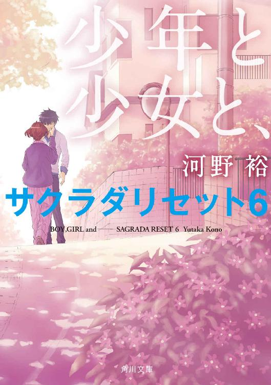

| サクラダリセット（角川文庫）【全7冊 合本版】 | |
| 河野 裕 | |
| KADOKAWA / 角川書店 (2017) | |
サクラダリセット（角川文庫）【全7冊 合本版】
河野 裕

角川ｅ文庫
本作品の全部または一部を無断で複製、転載、配信、送信したり、ホームページ上に転載したりすることを禁止します。また、本作品の内容を無断で改変、改ざん等を行うことも禁止します。
本作品購入時にご承諾いただいた規約により、有償・無償にかかわらず本作品を第三者に譲渡することはできません。
本作品を示すサムネイルなどのイメージ画像は、再ダウンロード時に予告なく変更される場合があります。
本作品の内容は、底本発行時の取材・執筆内容に基づきます。
本作品は縦書きでレイアウトされています。
また、ご覧になるリーディングシステムにより、表示の差が認められることがあります。
主な登場人物
浅井ケイ
芦原橋高校一年生。一度見聞きしたことは決して忘れない。
春埼美空
世界を最大三日分戻す能力「リセット」を持つ少女。
中野智樹
ケイのクラスメイト。ケイの理解者。
村瀬陽香
ケイに「死んだ猫を生き返らせてほしい」と依頼する。
津島信太郎
芦原橋高校の教師にして管理局局員。
野ノ尾盛夏
大宮高校一年生。猫と情報を共有できる。
非通知くん
情報屋。
皆実未来
ケイのクラスメイト。Ｕ研（未確認研究会）に所属。
プロローグ
伝言が好きなの、と、女の子は言った。
少し掠れた声だった。
もう二年も前のことだ。浅井ケイは、あの時のなにもかもを覚えていた。日づけ、時間、天気、彼女の服の色、指先の形、わずかに傾けた首の角度。瞬きの回数だって思い出せるけれど、そんなことに意味はない。
南校舎の廊下を歩く。雨粒が窓ガラスに当たり、軽く息を吸うくらいの時間をおいて真下へと垂れていく。きっとこの雨が、彼女のことを考えさせるのだろう。単調な音の連なりは意識を内側へと向かわせる。湿った夏の空気はなんだか懐かしい匂いがして、記憶よりも先に感情を過去に引き込んでいく。──伝言が好きなの。
あの日も雨が降っていた。雨音の奥でそっと囁くように、彼女は言った。幸せな言葉やささやかな言葉を、人から人に、たくさん伝えたい。
二年前のケイには、彼女の言いたいことが上手く理解できなかった。今なら少しだけわかるかもしれない。人に言葉を伝えるのは、きっと幸せなことだ。もしも伝えるべき言葉が、幸せなものや、ささやかなものであったなら。
ゆっくりと廊下を歩く。足音をひとつずつ、丁寧に並べるように。
記憶の中で、ケイは彼女に尋ねる。もし伝える言葉が、悲しいものなら？
彼女は答えた。──伝え方を工夫するわよ。それが伝えるべきことなら、正しい方法で、正しい言葉を使って、正しく伝える。
そうできればいいなと、ケイは思う。でも、たとえば伝えるべき言葉が、自分自身にさえ意味のわからないものだったなら？ それについては、彼女に尋ねていなかった。尋ねることができないまま、彼女は死んでしまった。
目的のドアの前で、ケイは足を止めた。職員室だ。ノックをして、ドアを開く。部屋の奥から二番目、窓からいちばん離れた席に、その教師は座っていた。癖の強い髪と眠たそうな目つき。津島信太郎というのが、彼の名前だ。ケイの担任ではない。でも彼には数学を習っていたし、所属する部活動の顧問でもある。あるいは担任よりも親しい教師かもしれない。
彼はこちらに顔を向けて、「よう」と笑みを浮かべた。
彼の目の前まで歩み寄り、小声でケイは言った。
「伝言があります」
「へぇ、誰からだ？」
「明日の貴方からです」
津島は手元のコーヒーカップに口をつけ、顔をしかめた。
ケイは続ける。
「マクガフィンが盗まれる、と」
伝言はそれだけだった。
これで誰かが幸せになればいいけれど、可能性は低いように思う。
１話 土曜日に始まる
１ 七月一五日（土曜日）──スタート地点
グッモーニング、ケイ。
今回はお前からみれば昨日、七月一四日からお届けするぜ。おいおいため息なんてつくんじゃねぇよ。確かにオレたち、青春ど真ん中の高校一年生にとっちゃあ、昨日なんてもう忘れちまうくらい昔のことかもしれない。でもオレにしてみれば今現在、大本命で進行中なんだ。
昨日のことを、ちょっと思い出してほしい。そろそろ梅雨も明けるころだってのに、どんより曇って雨が降ってて、かったるかった昨日についてだ。ケイ、そっちの天気はどうだい？ ああ、ちょっと待て、予言させてくれ。
天気は──快晴。
どうだ、大正解だろう？ お前はなぜわかったのかと首を捻っているかもしれない。でもなにも難しいことじゃないんだ。天気予報を調べた？ 違う違う、そうじゃない。もっと単純な、世の中の真理があるだろう。靴を蹴りあげたら表向きに落ちた？ あれはなかなか素敵な占いだ。どう考えたって重心がとれてる通り、表に落ちる確率の方が高いんだからな。正月のおみくじみたいなもんだ。どんな占いだって、よりたくさん幸せな結果がでるようにバランスを調整するもんさ。でも、わざわざお気に入りのスニーカーを汚さなくたって、そっちの天気はわかってたんだぜ。
昨日のことは思い出したか？ ならもう気づいただろう？ お前はひとつ、大切な約束をしたはずだ。そう、オレからみれば明日、お前にとっては今現在の七月一五日土曜日に、可愛い女の子と一緒にお茶を飲もうって約束だ。
なんとも羨ましい話じゃないか。世界中がお前を祝福している。何もかもが、上手くいくように出来ている。当然空だって晴れ渡るさ。お前が彼女とひとつの傘で、肩を並べて歩きたいっていうんなら別だがな。
オレはお前がついうっかり寝過ごして、寝癖のついた髪で慌てて家を飛び出したりしないように、こうやってモーニングコールを入れてるわけだ。
どうだ？ 最高の親友だろ？
さて、そんな訳だから、ケイ。そろそろ目を覚ましてもいいんじゃないか？
──という声が聞こえて、浅井ケイは目を覚ました。思いつく限りで、最悪の朝だった。
ケイは目覚まし時計が嫌いだ。一日の始まりは静かな方が好みだし、あの耳に障る音が騒ぎ立てるようにセットしたのは自分自身だ。八つ当たりの相手もみつからない。とはいえ、目覚まし時計にだって良い所はある。スイッチを切れば素直に鳴り止むし、そもそもセットしなければ鳴り出すこともない。もし壊れてしまって、まともに操作できなくなったところで、思い切り殴ればそれでもわめき続けることはないだろう。文明とはすべからくそうあるべきなのかもしれない。ハンマーに屈しない技術なんて、人間にとっても脅威にしかならない。
ケイは騒々しい声に顔をしかめて、もう一度掛け布団を抱きしめた。枕元の目覚まし時計はまだ沈黙を保っている。針は八時の少し手前を指していた。早朝というほどではないにせよ、休日の朝にベッドから抜け出すには納得のいかない時間だ。
ケイを悩ませている騒音は、目覚まし時計よりももう少し悪質なものだった。スイッチなんてないし、殴ることもできない。自分でセットしたわけでもない。仮に耳栓をしたところで、聞こえなくなることもないだろう。
馴染みのある声が、先ほどから騒ぎ続けている。部屋にいるのはケイひとりだ。窓の外から聞こえるわけでもないし、もちろんケイ自身が騒いでいるわけでもない。声は頭の中に、直接響いていた。
ニュアンスの違いはあるけれど、声の言う通り今日はある女性と会う約束をしている。とはいえ待ち合わせの時間は午前一〇時だ。まだ一時間は眠れただろう。もう一度目を閉じてしまおうかと思ったとき、別の声が聞こえた。女の子の声だ。やや低く、少しだけ掠れている、麻布みたいに触り心地の良い声だった。
それじゃあオレたちのアイドル、春埼美空の登場だ。
「ええと。ケイ、起きてますか？ 明日は遅刻しないでくださいね？」
だってよ。彼女は少しでも長くお前と一緒に居たいって言ってんだ。その思いを叶えないわけにはいかないだろう？ だからオレもこうやって──
たしかに遅刻は良くない。先週の日曜日、春埼との待ち合わせに遅刻したことを、ケイも後悔していた。
両手を引き上げるようにして背筋を伸ばしてから、ベッドを抜け出し携帯電話を手に取る。アドレス帳を呼び出して、中野智樹と登録してある番号に発信する。
なんとなくコール音を数えて、一四回目に相手が出た。
「なんだよ、朝っぱらから」
聞こえてきたのは、先ほどから頭の中で騒ぎ続けているものと同じ声だった。けれど起きたばかりなのだろう、少し元気がない。
「安眠妨害の仕返し」
それだけ答えて、ケイは電話を切った。冷蔵庫からペットボトルのウーロン茶を取り出し、一気に飲み干してからカーテンを開ける。
空はよく晴れていた。セミがジォジォと鳴いている。それに重なって、騒々しい智樹の声と、それを止めようとする春埼の声が聞こえる。
ケイは少し早めに部屋を出ることに決めた。
＊
咲良田は日本の片隅にある街で、太平洋に面していて、なんとか市を名乗ってもいいくらいの数の人々が生活していて、そのおよそ半数が特殊な能力を持っている。能力は千差万別で、大抵は物理法則に反していて、一応公的には秘匿したいらしいけれど人数が人数だけに誰も知らない秘密というわけにはいかない。要するに咲良田は超能力者たちの街だということを、住民はみんな受け入れていた。
そんなことを春埼美空が考えたのは、咲良田の朝があまりに普通だったからだ。春埼は咲良田以外の街を知らない。だから他所と比べてどうとはいえないけれど、少なくとも視界に入る街並みは、能力のことなんか簡単に忘れてしまうくらい凡庸でありきたりな休日の風景を保っている。
能力を持つ人々が咲良田に留まっているのには理由がある。とても単純な理由が。咲良田の外に出ると、誰も彼もが能力のことを忘れてしまうのだ。使えることを知らない能力なんて、存在しないのと変わらない。実際にこの街から外に引っ越す人もいるけれど、外で能力が使われたなんて話は聞かない。能力は、あくまで咲良田の中だけに留まっている。持ち出すことは誰にもできない。
能力の大半はくだらないものだ。たとえば中野智樹のように、相手と時間を指定して言葉を届けられるなど。でも中には危険なものもあるし、一見安全な能力でも使い方次第では悪用できる。悪用できる力はなんであれ、公的な機関が取り締まることになる。咲良田には管理局と呼ばれる組織があり、そこが主に咲良田に暮らす人々の特殊な能力を管理し、問題を処理していた。
管理局は上手く機能している。少なくとも、表面的には。どこからも苦情がこないわけではないけれど、人々が団結して抗議するような事態も起きていない。ニュースや新聞を賑わした記憶も、春埼にはなかった。公的機関としては充分に優秀だろう。
そんなわけで、七月一五日午前九時三〇分の咲良田は平和だった。春埼はいつの間にか鼻歌を歌っていたことに気づく。たぶん私は機嫌が良いのだろう、と思った。
土曜日の比較的早い時間だからだろう、大通りには人も車も少ない。昨夜まで降っていた雨はもう上がり、今はすっきりと整理された青空が広がっている。日の光は強いけれど、まだ地面が焼けていないからか、それほど熱気が強いわけでもない。気持ちの良い夏の日だ。
とはいえ不安なこともいくつかある。たとえば昨日、中野智樹に頼んでケイに伝言を送ってもらったが、やはりやりすぎだったように思う。ケイは怒っているだろうか。わからないけれど、少なくとも彼が怒りを表に出すことはないだろう。ひどい話だ。傍からみて変化がなければ、いつまで経っても彼は不機嫌かもしれないと考え続けることになる。
春埼はうっかり水たまりを踏んでしまわないように、ゆっくりと慎重に歩いた。待ち合わせの時間には余裕がある。でも周囲の店の半数ほどはまだシャッターを下ろしていて、寄り道しようという気にもならなかった。
目的の喫茶店の前で時間を確認してから、そっと店内に入る。古風だがドアを開ける時にいちいちベルが鳴ったりしない喫茶店だ。おそらくはそれが、ケイが好んでこの店を利用する理由のひとつだろう。
店内に客の姿は少なかった。カウンターの隅で、新聞を読んでいる男性がいる。頰杖をついて、腕から外した時計をみつめている女性がいる。そしてこちらに背を向けて、四人掛けのテーブルにひとりで座る青年。浅井ケイだ。モーニングセットのトーストにバターを塗っている。
後ろに忍び寄って、目隠ししてみようかと思った。なんだかいかにも休日の待ち合わせっぽくて楽しいような気がした。けれどそれを実行するよりも先に、ケイは顔を上げてこちらをみた。
少し残念だ。でも、顔をしかめるようなことでもない。春埼は彼に歩み寄って控え目に声をかける。
「おはようございます」
彼は軽くほほ笑んで、「おはよう」と返す。ノックしてから扉を開くような、定型として完成している一連の流れだ。
春埼は彼の、左隣の席に座る。そこが春埼の定位置だった。ケイはトーストを一口かじり、飲み込んでから口を開く。
「晴れてよかった」
春埼はいつも眠そうなアルバイトの店員に、アイスコーヒーを注文してから答えた。
「本当ですか？」
素直に頷かないことに、なにか理由があるわけでもない。強いていうなら彼の好みに合わせているのだと思う。なるたけあっさりした口調も、短く切った髪も、Ｔシャツにジーンズパンツという服装も。
ケイは口の隅だけを歪める、独特な笑みを浮かべる。
「本当に。智樹によると、どうやら世界は僕たちを祝福してくれているらしい」
ああ、確かに昨日、中野智樹はそんなことを言っていた。今朝ケイに伝わったはずのメッセージだ。
「ごめんなさい。うるさかったでしょう？」
ケイは曖昧に首を傾げる。
「あれは嫌な能力だね。ちょっと対抗する手段が思いつかない。たしか強度はＡランクでしょう？」
能力は様々な視点から評価される。強度は他の能力と影響しあったときの強さを表す評価方法だ。たとえば一方が破壊する能力を、もう一方が守る能力を使用した場合、強度が強い方の能力が結果を現す。管理局はそうやって、多彩な能力を少しでも定義づけようとする。とはいえ、それが上手くいっているとも思えなかった。
Ａランクは実質的な最高評価だ。他のＡランクの能力に打ち勝つ能力を例外的にＳランクと設定することもあるけれど、そこに明確な基準はない。結局のところ相性の問題で、Ｓランクの能力だって、Ａランクの能力に敗れることがある。もっといえばジャンケンみたいに、組み合わせで勝ったり負けたりが変化して、順列をつけられないものもある。法則なんて存在しない能力になんとか法則をみつけ出そうと悪戦苦闘するのも、管理局の仕事のひとつなのかもしれない。
「でも中野くんの能力は、声を届けるだけです。あまり害はないですよね？」
「どうかな。たとえば五秒間の騒音なら、一時間で七二〇回分送信できる。それを五分おきに届くように設定すれば、相手は六〇時間も騒音に悩まされることになる。たぶんあんまり健康によくない」
答えながら、ケイはトーストを口に運ぶ。その、盛り上がるほどたっぷりとバターを塗ったトーストも、あまり健康に良さそうではなかった。指摘したところで彼が改めるとも思えないから、気にしないことにするけれど。
「あの能力は、そんなに繰り返し使えるんですか？」
能力には大抵、なにかしらの制限がある。使用回数や、使用できる状況、あるいはまったく別のなにか。制限がない能力というのは、少なくとも春埼は聞いたことがなかった。中野智樹の能力にだって、なにか制限があるはずだ。
「わからないけどね。でも、そんなことができるかもしれない。できるだけ智樹を怒らせたくないよ」
言って、ケイはコーヒーカップに口をつけた。それでも私たちの能力ならいくらでも対抗できるはずだ──と、反論したかったが、小さく頷くだけに留める。彼の答えはなんとなく予想がついたし、あまり楽しい会話になりそうではない。
春埼は代わりの話題を探した。とびきりくだらないものを。
「そういえば、風鈴を買ったんです。猫形のものをみつけたので」
春埼は猫に関連する小物を集めている。持ち歩いているものは、携帯電話につけた黒猫のキーホルダーだけだが、押入れの中はコレクションでいっぱいだ。猫グッズ収集の難点は、あまりに簡単に商品がみつかることにある。
「いいね、風鈴。もうずいぶんあの音を聞いていないような気がする」
ケイは少しだけ目を閉じて、すぐに開いた。
「うん。最後に聞いたのは二年前だね。ちょっと懐かしい」
「じゃあ、貸してあげましょうか？ 猫形じゃないのも持ってますよ」
「どうだろ。たまに思いがけなく聞こえてくる風鈴の音が、僕は好きだな。虹をみつけるのに似ていて、嬉しくなる」
「いつでも虹が見られる道具があったら素敵じゃないですか？ 遊園地に設置されていたら、一度は行ってみたいです」
「たしかに、一度くらいは行ってみたい。でも、いつも決まった場所にある虹は、少し違う気がするな。知らないあいだに、見上げないと視界に入らないところに架かっているのを、たまたまみつけるのがいい」
よくわからないけれど、そんなものかもしれない。でも。春埼は運ばれてきたアイスコーヒーを受け取り、ミルクをたっぷり入れた。シロップは使わない。
「誰にも気づかれないで消える虹は、ちょっと悲しいです」
誰の耳にも入らない風鈴の音も、引き出しの奥で時を刻み続ける時計も、注目されないところで回り続ける看板も。評価されない仕事は少しだけ悲しい。
「考え方次第だけどね。虹はひとりで、自分の美しさに酔いしれてるのかもしれない」
ケイは笑ってそう答えて、コーヒーカップを手に取った。
２
ドアが開く音が聞こえて、浅井ケイは店内の時計を確認した。九時五五分。きっちり約束の時間の五分前だった。
ケイは立ち上がり、入口に向き直る。隣で春埼も席を立つ。ドアを押し開けて店内に入ってきたのは、赤い眼鏡をかけた少女だった。
彼女は真剣な表情で店内を見回してから、こちらに歩み寄る。
「村瀬さんですか？」
尋ねると、彼女は少しだけ眉をひそめて頷いた。警戒しているのか、緊張しているのかわからないけれど、表情が硬い。ケイは意識して柔らかく微笑む。
「初めまして、浅井ケイです。彼女は、春埼美空」
それにあわせて、少女──村瀬陽香も笑おうとしたようだった。やはり表情は硬いけれど、少しだけ頰が持ち上がる。一方でレンズの奥の眼差しは睨みつけるように強い。ケイはその視線の意味について、つい考え込みそうになったけれど、あまり第一印象を強く持つのもよくないだろう。微笑むことに集中する。
彼女は意図的に抑えつけたような声で言った。
「村瀬陽香です。津島さんから紹介を受けてきました」
津島信太郎は、ケイの通う学校──芦原橋高校の教師だ。そして同時に、管理局の局員でもある。この街の学校には彼のような教師が必ずひとりはいる。保健室に専門の資格を持った先生がいるように。学校でも能力に関する問題は起こり得るのだから、備えないわけにはいかない。
ケイと春埼も津島に指示されて、村瀬に会いにきた。でも彼女のことは、名前と年齢くらいしか聞いていない。たしかケイたちよりもひとつ年上。だから高校生だろうと思うけれど、どの学校に通っているのかも知らない。
村瀬は口早につぶやいた。
「ごめんなさい、こういうのは慣れてなくって」
ケイは笑って答える。
「実は、僕たちもなんです」
津島以外の人から依頼の内容を聞くことは、あまりない。
とりあえず座りましょう、とケイは言った。なんとなく座ったまま挨拶するのも態度が悪いかと思って立ち上がってみたけれど、席に戻るタイミングがわからなくて困っていたのだ。
店員が注文を取りにきて、村瀬は「コーヒー」とだけ告げた。ついでにケイは、アイスクリームを注文する。
店員が立ち去ってから、村瀬は小さな声で言った。
「浅井さんは、高校生ですよね？」
「ええ。一年生です」
「どうして管理局の仕事を手伝っているんですか？」
尋ねられ、ケイは曖昧に笑った。
「そういうクラブに入っているからです」
「奉仕クラブ」
「はい」
芦原橋高校奉仕クラブ。奉仕クラブと呼ばれる部活動は、咲良田内のすべての学校にある。そして管理局員を兼ねる教師が顧問につく。
管理局は特殊な能力の持ち主を監視する。いや、特殊ではない能力なんてありはしないけれど、中でも特別に危険だとみなされた能力は管理局から強い監視を受ける。
奉仕クラブに入るのは、その監視を少しだけ和らげる方法のひとつだった。管理局は顧問の教師を通じて部員の能力に応じた仕事を与え、その経過について詳細な報告を求める。部員たちはテンプレートに従った報告書を提出することで、通常管理される上で必要な手順のいくつかを省き、ある程度の自由を得る。
「あんまり、気持ちのいい名前ではありませんね」
と村瀬は言った。
「名前？」
「ほら、奉仕クラブって」
「そうですか？ 僕は好きです」
ケイがそう答えて、会話が途切れる。彼女は次の言葉を探しているようだった。ケイは少し時間をおいてから、尋ねた。
「事情を説明していただけますか？ 僕たちはなにをすればいいんでしょう？」
「なにも連絡がいってないの？」
小さいが不機嫌だとわかる、強い声だ。彼女は「連絡がいっていないんですか？」と言い直す。敬語で喋ることにあまり慣れていないのだろう。
依頼内容は、ごく簡単に説明を受けている。
「迷子になった猫の捜索、とうかがっています。でも、それならもっと適任がいるはずですよ」
「貴方たちは、捜し物のエキスパートだと聞きました」
つい最近失くしたものであれば、そうかもしれない。
「猫がいなくなったのはいつですか？」
「一週間ほど前です」
それでは遅すぎる。いなくなったのが三日前の正午以降なら、なんの問題もなかったのに。
村瀬は軽くまぶたを落として、暗い表情で続ける。
「でもその猫を捜しているわけじゃないんです。猫は昨日の朝にみつかりました。近所の道端で、私がみつけました」
「なら、僕たちはなにをすればいいんでしょう？」
「私がみつけたとき、その猫は冷たくなっていました」
嫌いな表現だ。──冷たくなっていた。
「交通事故ですか？」
「はい」
おおよそ、依頼の内容がわかった。どうして津島がそれを「猫の捜索」と表現したのかも理解する。
村瀬に視線を戻すと、彼女もまた、こちらをみていた。相変わらずの睨みつけるような目だ。その瞳が、席についてから少しも変わっていないことに気づく。表情は感情的に変化するけれど、彼女の目だけはじっと、まっすぐに前をみている。うつむくことも見上げることもない、虹をみつけられない目だ。
強い口調で、村瀬は言った。
「依頼の内容は、死んだ猫を生き返らせることです」
とても難しい依頼だ。ケイが知る限り、死者を生き返らせる能力は、咲良田には存在しない。人間であれ、猫であれ。とはいえ、確かにこれは、ケイと春埼に向いた依頼でもあった。
「わかりました」
「できるんですか？」
「いいえ。でも、死ななかったことにならできます」
「本当に？」
村瀬は笑わなかった。安堵の表情もみせなかった。ただ、やっぱり切実な目つきで、挑むようにこちらを睨んでいた。
彼女の質問には答えずに、ケイは尋ねる。
「どうして貴女は、その猫を助けたいんですか？」
「飼っていた猫を取り戻したいだけです。いけませんか？」
「いえ。もちろん充分です」
初めから、津島を通している依頼を拒否するつもりはない。
隣の春埼に視線を向ける。彼女は村瀬の話になんの興味も持っていない様子で、携帯電話についた黒猫のキーホルダーをいじっていた。いつものことだ。こういったやり取りはすべてケイが担当している。
ついため息をつきそうになるけれど、それは吞み込む。また村瀬に向き直り、意識して真剣な表情を作った。
「貴女はその猫のために、世界を三日間殺す覚悟がありますか？」
この質問に意味はない。ケイの自己満足でしかない。どうせ彼女は、すぐにこんな会話なんて忘れてしまう。
村瀬は眉をひそめる。
「どういう意味ですか？」
「貴女の猫のために、今日と昨日と一昨日が、なかったことになるかもしれない。世界中すべての人に、もう一度三日前からやり直させる覚悟がありますか？」
村瀬はしばらく考え込んでいる様子だった。そのあいだに店員がコーヒーとアイスクリームを運んできた。
その店員が歩み去るのを待ってから、村瀬は短く答える。
「あります」
ケイは一口、アイスを食べる。
「では、その猫について教えてください」
猫は元々野良だったという。半年ほど前に、村瀬陽香が拾った。当時は子猫だったけれど、すぐに大きくなった。雑種でオス。名前はミケ。
村瀬は携帯でその猫の写真を撮っていた。メールアドレスを交換して、送信してもらう。汚れたような灰色の毛と曲がったしっぽの、青い目をした猫が、電柱の陰で餌を食べている。あまり人懐っこい様子はないが、それもまた魅力的な猫だった。彼は昨日の朝、近所の商店街で車にひかれて死んだ。村瀬がその遺体をみつけたのは、九時一五分ごろ。パン屋の前だった。
ひと通り説明を済ませてしまうと、彼女は「よろしくお願いします」と頭を下げて席を立った。あとには一度も口をつけられなかったホットコーヒーだけが残された。
「どうするんですか？」
と春埼がこちらを見上げる。
ケイはずいぶん柔らかくなったアイスクリームをすくいながら答える。
「もちろん、猫を助けるよ。正式な依頼だし、僕だって猫は好きだ。断る理由はひとつもない」
上手くいけば猫が生き返り、あのまっすぐな目をした少女も喜ぶだろう。芦原橋高校奉仕クラブの実績だって上がるし、もしかしたら部費も増えるかもしれない。奉仕クラブにおける部費は、言ってみればアルバイト料のようなものだ。領収書を切ることさえ忘れなければ、ある程度は自由に使うことができる。
春埼は音をたててアイスコーヒーを飲み切って、それから言った。
「でもこの依頼、なんだかおかしくないですか？」
「どこが変だと思う？」
「まず依頼の目的。その猫が能力のせいで死んだわけじゃなければ、たぶん管理局は関わりませんよね？」
「その通りだね」
管理局が動くのは、能力によって問題が起こった場合に限られる。その他の問題にまでいちいち手を出していては、収拾がつかなくなってしまう。
「それに、事故から依頼までが速すぎます」
「うん。僕もそう思う」
津島から村瀬に会うよう指示を受けたのは、昨日の昼休みだった。話によると、事故に遭った猫をみつけたのが昨日の朝。ほんの数時間で管理局に連絡を取り、管理局が許可を出して、津島に指示がいったことになる。ちょっと不自然に速い。
「それで、どうするんですか？」
と、春埼はもう一度尋ねた。
「もちろん猫を助ける」
と、ケイはもう一度答えた。正式な依頼だし──とは続けない。もしかしたらこれは正式な依頼ではないのかもしれない。そもそも村瀬は管理局なんかに連絡せずに、津島に相談したのかもしれない。彼女が芦原橋高校の生徒だったなら、津島と面識があってもおかしくない。ケイだって全校生徒の名前をすべて把握しているわけではない。
もし津島がプライベートで受けた依頼だったなら、春埼が指摘した部分の違和感はなくなる。そもそも管理局は関わっていないし、時間だって妥当なところだ。
本心では、他にもいくつか、気になることはある。とはいえ世の中、初めからなにもかもがすっきりわかっているものでもないだろう。それにケイは「猫を助けて欲しい」という依頼が気に入っていた。とても良い。
春埼は軽く頷いた。感情を感じさせない動作だった。それから、言った。
「じゃあ今夜、お祭りにいきましょう」
唐突に話題を変えるのは以前のケイの癖で、今は春埼に受け継がれている。
「お祭り？」
そういえばそんな時期だ。七月の半ばにお祭りがあって、それから夏休みが始まる。咲良田の夏はそういう風に進んでいく。
「いいよ。今夜なら、大丈夫だと思う」
今回の依頼に関しては、もう片がついているはずだ。なんといっても問題は、昨日死んだ猫なのだから。
春埼は無邪気な笑顔を浮かべる。
「それなら手早く猫を助けましょう」
「うん。まずは情報を集めよう」
タイムリミットは昨日の朝。少なくとも九時一五分には、猫は事故に遭っている。その時間は、ケイの体感では二日後に来るはずだった。それまでに猫をみつけだしてしまいたい。
春埼が首を傾げる。
「情報なら索引さん？」
「いや、今回は非通知くんかな。索引さんを頼ると、必要以上に話が大ごとになっちゃうかもしれない」
アイスクリームの最後の一欠片を口に含んで、ケイは席を立った。
３
喫茶店を出てすぐに、ケイと春埼は二手にわかれた。春埼には、事故現場の正面にあるパン屋に向かってもらうことにした。彼女は初対面の相手と積極的に会話をするタイプではないけれど、特別に人見知りというわけでもない。問題はないだろう。
彼女を見送って、ケイは商店街の片隅にある公衆電話に向かった。電話ボックスにも入っていない、存在を知らなければ見落としてしまいそうな公衆電話だ。受話器を手にとり、コインを投入した。記憶通りに番号を押す。
声はすぐに聞こえてきた。
「お掛けになった電話番号は、現在使われておりません。番号をお確かめになって──」
受話器を置いて、転げ出てきたコインを再び投入する。そして同じ番号にコールする。
「お掛けになった電話番号は、現在使われておりません」
何度も何度も、繰り返す。
「お掛けになった電話番号は──」「われておりません。番号をお確かめに──」「け直し下さい。お掛けに──」「番号は、現在使われて──」「をお確かめになって、お掛け直し下さい」
女性の静かな声が、呆れたように繰り返す。
ケイは機械的に同じ手順を続ける。やがて、
「お掛けになった、電話番号は」
受話器の向こうの声が変わった。いや、声は同じ無機質なものだ。でも息を継ぐタイミングが変化している。
「現在使われて──」
ケイは口を開いた。
「浅井です。知りたいことがあります」
番号をお確かめになって──という声に、短く電子音が重なる。短く三つ。ピ、ポ、パ。そして、
「お掛け直しくだ──久し振りだね、ケイ」
受話器から聞こえる声が反応した。声の質は変わらず、無機質な女性のままで。ケイは電話の向こうには聞こえないように注意して、小さなため息をついた。
「このシステム、もうやめませんか？」
というか、その声で喋るのをやめてほしい。最近ようやく慣れてきたけれど、初めは妙に気持ち悪かった。
「嫌だよ。声紋とかでボクの正体がバレちゃったらどうするのさ」
「いいじゃないですか。友達ができるかもしれませんよ」
「うあ、ボクってトモダチいない奴だって思われてるんだ。ショックだな」
正直、非通知くんには友達どころかまともな顔見知りもいないだろうと思っている。とはいえたまに電話でやりとりをするだけの相手だ。もし友達が一〇〇人いたとしても、不思議ではないけれど。
「友達、いるんですか？」
「いるよ。君と津島さんのことなんだけど」
「その件に関しては、またいずれ話し合いましょう」
「ひどいなぁ。ボクはこんなにフレンドリーなのに」
その声で軽口を叩かれても気持ちが悪いだけだ。
電話の向こうにいるのが何者なのか、ケイは知らない。顔も本名も、性別だってわからない。「非通知くん」という通称も、どうやら津島が勝手に使い始めたものらしい。わかっているのは、彼──もしくは彼女──がありとあらゆる情報をかき集めていて、条件次第でそれを譲ってもらえることだけだ。
「で、今日は猫捜しだっけ？」
「ええ。そうです」
おそらく津島から聞いていたのだろう。彼はあまり意味のない根回しをするのが好きだ。黒幕的な存在に憧れているのかもしれない。
「猫に関する専門家を紹介しよう。料金は情報ならそこそこのを二つ、物ならまっ白なシーツとＴシャツを三枚ずつ」
「どちらでもいいので、津島先生に請求してください」
「それは拒否しろって津島が言ってたけど？」
「じゃあシーツと、Ｔシャツの方で」
後でこちらから津島に請求しよう。
「了解。受け取った」
これで銀行の口座から、シーツとＴシャツの代金が引き落とされることになる。暗証番号の入力さえ必要ないのは問題じゃないかと思うけれど、非通知くんも管理局の関係者なので一定の信頼を置いている。ケイは話を進めた。
「猫に関する専門家というのは？」
「野ノ尾盛夏、高校一年生。君と同じ歳だけど、学校は違うね。能力は情報の共有。ちょっとだけ君に似た能力かな？ ただし、対象は猫に限られる。たぶん咲良田でもっとも猫に詳しくて、もっとも猫を愛している」
なるほど、都合のいい人だ。
「どこに行けば会えるんですか？」
「たぶん休日なら、花見崎の神社じゃないかな？ よく猫と昼寝してるらしい」
花見崎神社。今夜、春埼と行く約束をしている祭りが行われる神社だ。
なんだか楽しげに、非通知くんが続ける。
「もう少し情報をサービスしようか？」
「もらえるならなんでも」
「オーケイ、なんといっても友達だからね。野ノ尾さんは大宮高校に通っていて、放課後は基本的に神社で過ごす。授業への出席率は高くないけれど、進級に影響が出るほどじゃない。幼いころの人間関係の影響で、あまり少女らしくない喋り方をする。高校生になってもそれが矯正されていないっていうのは、つまり同年代との関係性が希薄ってことだろうね」
「なるほど。参考になります」
「住所まで喋ると、さすがに法に触れるよね？」
それは知っているだけで問題のような気もするけれど。学校まで教えてもらえれば、会うことは難しくないはずだ。
「それだけで充分です。ありがとうございます」
「ん。ところで、ケイ。ひとつ聞きたいことがあるんだけど」
「なんです？」
「君、マクガフィンって知ってる？」
マクガフィン。聞いたことはある。二週間ほど前、津島から伝言を依頼された。意味のわからない伝言だ。──マクガフィンが盗まれる。
「僕よりも津島先生の方が詳しいと思いますよ」
「そうできないから困ってる。実はさ、これに関しては、君に尋ねるなって言われててね。ちょっと気になってる」
「なら訊かないでくださいよ」
「わざわざ訊くなって言われたんだよ？ 尋ねるのが礼儀でしょ」
よくわからない理屈だが、一方で、納得できないでもなかった。本当に触れられたくないのなら、津島もわざわざ名前を出さないだろう。
マクガフィン。確かに、少し気になる。
「貴方は知らないんですか？」
「辞書的な意味と、都市伝説的な話なら知ってる。でも詳細は不明。まぁいいや」
じゃあね、と言って、通信が切れた。受話器を置くと、投入していたコインが転がり落ちてくる。非通知くんが着信課金に登録しているわけではないのなら、違法行為になるだろう。
なんとなく気まずさを感じ、ケイはそのコインを返金口に残したままにしてパン屋に向かった。言い訳は大切だ。
春埼はもう聞き込みを終えていた。おそらく付き合いで買ったのだろう、パン屋の紙袋を抱えている。中身はすべてクリームパンらしい。
「ひとつ、どうぞ」
彼女が差し出したクリームパンを受け取り、かみつく。やたらと存在感のある、重たいカスタードクリームが入っていた。甘い。悪くない。甘いものは好きだ。
飲み込んでから、口を開く。
「どうだった？」
「猫も事故も、店員はみていないようです。でも、車のブレーキ音を聞いたような気がする、と。詳しい時間はわからないけれど、おそらく午前八時から九時のあいだだと言っていました」
「なるほど」
ケイは頷く。村瀬が猫をみつけたのは、九時一五分ごろだった。タイムテーブルに矛盾はない。
「次は、どうしますか？」
「非通知くんに猫好きの女の子について聞いてきた。なんだか便利な能力を持っているみたいだよ」
ケイは携帯電話の時刻表示を確認した。一一時二二分。あまり時間はないが、できれば「今日」のうちに、野ノ尾盛夏に会いたい。彼女がよく訪れるという神社を目指すことに決めた。
春埼と並んで商店街を抜ける。彼女が興味を示したので、道すがら非通知くんとのやり取りをかいつまんで説明した。春埼はひと通り話を聞き終えてから、ケイの顔を見上げるように首を傾げた。
「マクガフィンって、なんですか？」
「さぁ、なんだろうね」
マクガフィン。たぶん猫捜しには関係がないと思うけれど。
「ケイも知らないんですか？」
「ちょっと説明が難しいんだけどね、それはわからないものなんだよ」
以前、本で読んだ一節がある。
ケイは、たとえば、と前置きしてから続けた。
「マクガフィンは、スコットランドでライオンを捕まえるための道具だ」
「スコットランド？」
唐突な話ですね、と春埼は言った。
ケイは頷く。
「でも、スコットランドにライオンはいないんだよ」
彼女の形の良い眉が、眉間に寄って少し歪んだ。
「なにかのクイズですか？」
「そんなに真っ当なものじゃないよ。マクガフィンっていうのは、問題を発生させるための装置なんだ。それ以外の意味はない」
春埼は数秒間、考え込んだようだった。でもすぐに諦めたのだろう、いつも通りの淡泊な口調で「よくわかりません」と告げた。確かに、説明の順序が悪い。ケイは改めて説明する。
「マクガフィンっていうのは、映画や演劇なんかで使われる用語だよ。主人公が物語に関係するきっかけとなるアイテム──押しつけられた謎のアタッシェケースだとか、意味のわからない手紙だとか、そんなものがマクガフィンって呼ばれる」
「どうしてそれが、スコットランドのライオン捕獲器になるんです？」
「そんな話があるんだよ。ヒッチコックが作った」
あの棚の上の荷物はなんだ？
マクガフィンさ。
マクガフィン？
スコットランドでライオンを捕まえる道具だよ。
スコットランドに、ライオンはいないだろ。
なら、あれはマクガフィンじゃないな。
「意味がわからない。そもそも、初めから意味なんてない言葉なんだ、マクガフィンっていうのは」
マクガフィンとは、いってみれば代名詞だ。それはマクガフィンと呼ばれているだけで、本来はなにか別の、アタッシェケースなんかの実体があるべき言葉。
マクガフィンが盗まれる。本来、こんな言葉は成り立たない。物語の作者がストーリーを考えている場面でもなければ。
「きっとマクガフィンという言葉には、僕が知らない意味があるんだろうね」
その意味を知れば、物語の主人公になれるのだろうか。いったいどんな物語の？ 想像もつかない。
話し込んでいるあいだに、ふたりは目的の神社のほど近くまでたどり着いていた。今夜の祭りに備えて、通りの両脇にはもう屋台が並び始めている。たこ焼き、わたがし、金魚すくい。大半はまだ準備中だが、もう営業を始めている屋台もぽつりぽつりとみつかる。それを目当てにしてか、普段よりは通行人も多いようだ。
「お祭りにくるのは、夜の予定でした」
隣で春埼がぼやく。
彼女は表情に乏しいけれど、今は少しだけ不満げだった。きっと意図してそんな表情を作っているのだろう。
「夜にも来ようよ。あ、りんごあめ買ってあげようか？」
「いえ。昼間から食べるのは、勿体ないです」
「いつ食べてもりんごあめの味は変わらないよ」
「そんなことないですよ。りんごあめは夜、お祭りの明かりの中で食べるからおいしいんです。昼間からわざわざ食べるものじゃないです」
たしかに屋台に並ぶ商品の価値は、半分くらい雰囲気にあるのかもしれない。それがきっと、りんごあめがスーパーには並んでいない理由だ。ケイもベビーカステラは夜の楽しみにとっておくことに決めた。
その通りだねと頷くと、春埼が微笑む。
「という風なことを、去年ケイが言っていました」
うん、確かに。言った記憶がある。
「それでも買ってくれるなら、私はりんごあめをいただきます」
「やっぱり夜にしよう。時間がないし、ほら、まだクリームパンが残ってる」
とはいえ今夜というのは、ケイの体感ではずいぶん先のことになりそうだ。
ふたり、両側の屋台を眺めながら足早に進み、神社へ続く石段を上る。ここにくるのはずいぶん久しぶりだった。たぶん一年くらい。実は正確な数字を思い出していたけれど、そんなものに意味はない。
境内は、石段の下に比べればまだ落ち着いていた。屋台を覗く客はいても、参拝に訪れる時間ではないのだろう。それでも祭りの準備のためか、記憶の中の神社よりずっと活気がある。もちろん猫と昼寝する女の子なんてみつからない。
「今日は来てないんじゃないですか？」
「そうかもしれない」
「もう少し、捜してみますか？」
「うん」
春埼の言葉に曖昧に頷きながら、辺りを見渡す。と、三毛猫がいた。
そちらに歩み寄る。猫は留まるか逃げ出すべきか迷っている様子だった。決断が下るよりも先に、ケイは口を開く。
「すみません。野ノ尾さんに会いたいんです」
高校生になって猫に話しかけるというのは恥ずかしいものだけど、野ノ尾盛夏の能力は猫と情報を共有することだと聞いている。もしかしたらこの猫を通して、言葉が野ノ尾に伝わるかもしれない。
しかし猫は、興味もなさそうに歩き出す。無意味だった？ まだわからない。ケイはその背中に、さらに呼びかける。
「昨日、事故に遭った猫のことを伺いたいんです。商店街のパン屋の前で亡くなった猫です。もしかしたら僕たちは、その猫を助けられるかもしれません」
三毛猫は足を止め、じっとケイの顔をみた。考えの読めない瞳だ。猫にみつめられるとなんだか、訳もなく断罪されているような気持ちになる。
「お願いします」
頭を下げると、三毛猫はケイの足元に寄ってきた。そこに座り込み、前足で二回、ちょんちょんとズボンの裾を引っ搔く。そしてすぐに背を向け、社殿の方へ歩いていく。
春埼が言った。
「ついてこい、ということでしょうか？」
「だといいね。恥ずかしい思いをした甲斐があった」
三毛猫はこちらを確認もせずに、ずんずんと歩く。ケイたちもその後を追う。携帯電話で時刻を確認した。一二時四六分。ぎりぎりだ。
猫は社殿の裏に回る。裏は山に面している。そこには朽ちた墓石みたいな、幅が狭くて物静かな階段があった。ずいぶん古いものなのだろう、石は陽に焼けて白く、角は自然に削れて丸くなっている。
猫は石段を上っていく。ケイたちはその後を追う。セミが鳴き、木漏れ日が揺れる。やがて石段が途切れ、雑草が生えた坂道になる。靴底の感触が変わった。瑞々しい夏草は柔らかで、少しだけ罪悪感を刺激する。
ふいに、三毛猫が駆け出した。先には小さな社があった。辺りを何匹もの猫が取り囲んでいる。
その中心──社の手前にあるほんの数段の階段に、少女が座っている。少女は目を閉じている。肌が白い。まぶたも白い。
「野ノ尾さん？」
声をかけると、彼女はゆっくりと目を開いた。そして、
「おはよう」
と言った。彼女と目が合う。周囲の猫たちが、一斉にこちらをみたのがわかる。
「昨日、誰かが事故に遭ったって？」
ケイは頷く。
「灰色で、青い瞳の、しっぽの先が曲がった猫です。村瀬陽香という女の子に飼われていました」
野ノ尾はもう一度目を閉じた。ケイは時間を確認した。野ノ尾に視線を戻すと、彼女も再びこちらをみていた。
「いつから？」
「え？」
「村瀬という人は、いつからその猫を飼っていた？」
「半年ほど前です」
答えると、野ノ尾は興味を失ったように視線を離した。
「咲良田にそんな猫はいない」
そんな、馬鹿な。
「いくらなんでも、街中の猫をみんな把握しているわけではないでしょう？」
「どうしてそう思う？」
「情報の処理が追いつかない」
新しい本が書き続けられている限り、世界中の本を読み切ることができないように。生まれ続ける猫をすべて把握することなんて不可能だ。今、咲良田にどれだけの猫がいるのか、その数を正確に知ることもできないだろう。
しかし野ノ尾はこともなげに答える。
「君がそう考えるのは、猫の時間を知らないからだ。人間の時間で不可能なことでも、猫の時間なら可能になる。もちろん、その逆もたくさんあるけれど」
猫の時間？ 上手く想像できない。でもわけのわからない能力なんて、この街にはいくらでもある。その疑問をすべて潰していく余裕はない。今はこちらの話を、できるだけ正確に伝えるべきだろう。
「みてください。この猫が昨日の朝、パン屋の前でひかれていました」
携帯電話に村瀬からもらった写真を表示して、野ノ尾に向ける。彼女は、不本意そうに携帯電話を覗き込み、それから小声でふむ、とつぶやいた。
「たしかに最近、彼はみていないな」
「事故が起こったのは事実です。少なくとも僕はそう聞いています」
「しかし、君の話が真実だったとして、どうやって彼を助ける？」
「そういうことができる能力を持ってるんです。彼女が」
答えて、春埼に視線を向ける。春埼は会話には興味がなさそうだったが、自身が注目されていることに気づいたからだろう、クリームパンを差し出した。
「食べますか？」
短い沈黙のあとで、野ノ尾は首を振った。
「いや、いい。次にくることがあれば、駅前の三月堂という店のシュークリームを持ってきてくれ」
「わかりました」
一言で、ケイはこの話を切り上げる。時間がない。もう、一二時五五分だ。
「とにかく猫のことを教えてほしいんです。この三日間、どこでなにをしていたのかわかれば、必ず猫を助けてみせます」
「知らないよ。でも、調べることならできる」
「なら、お願いします。猫のためです」
野ノ尾は少しだけ眉をひそめた。あるいは困った表情を作ったのかもしれない。
「しかし、悩んでるんだ。少女に後をつけられる男を信用していいものか」
え、とケイはつぶやく。まったく心当たりがない。無理に想像力を働かせるなら、春埼のことだろうか。
「いえ。私はケイの隣を歩いてきましたが」
春埼も否定したが、野ノ尾はそんな言葉なんか聞いていない様子だった。
「いや、そうか。村瀬とは、赤い眼鏡をかけた女か？」
「そうです。知ってるんですか？」
「ああ、だいたいわかった。ちょっと待て」
野ノ尾は再び目を閉じた。身体を階段に預ける。ケイはじっと携帯電話の時刻表示を眺めていた。一分ほどたった頃に、彼女は目を開いた。
そして、つぶやく。
「寝つけん」
なんだそれ。
「眠らないと、能力が使えないんですか？」
なんの制限もない能力というのもまずないけれど。
野ノ尾は人差し指で頭を搔いた。
「別にそういうわけでもない。でも、とにかく自分を忘れるくらい、思考を止めなければならない。結局、眠るのが一番手っ取り早いな」
微妙に使いにくい能力だ。発動まで時間がかかるし、物理的な妨害に弱い。
「だいたい君が悪いんだぞ？ 私が気持ちよく寝ていたのに、起こしたりするから」
「そんなこと言われても。起こさないと話も聞けませんよ」
「夢の中に出てこいよ。なぜその程度のことができないんだ」
「どうしてできると思うんです？」
「しらん。八つ当たりに理由を求めるな」
そんなことを言われても困るけれど。実のところ、今のうちに知りたいことはだいたいわかった。もうひとつだけ確認して、切り上げても良いだろう。
ケイは尋ねる。
「能力を使えれば、猫がどこにいたのかわかるんですね？」
「実は、死んでいたらわからないかもしれない」
それは、あまり重要ではない。
「生きていたら？ 今、どこにいるかわかりますか？」
「わかるよ。生きてるのか？」
「いえ」
問題ない。充分に、順調だといえる。非通知くんのおかげだ。何万という数の能力者がいる咲良田では、最適な情報さえあれば、最適な能力者がみつかる。
野ノ尾はもう一度、目を閉じる。
「眠る努力をしてみよう。子守唄を歌ってくれ」
「春埼」
ケイが振り返ると、春埼は軽く首を傾げた。
「私が歌うんですか？」
「こんな歌がいい。なんというタイトルだったかな」
らー、らーら、らーら、ら、と野ノ尾が口ずさむ。
春埼はじっとケイをみつめて、ええと、とつぶやいた。
「歌った方がいいんですか？」
「歌わなくていいよ」
時間を確認する。一二時五八分四七秒。これ以上冒険する必要もないだろう。
「リセット」
たった一言。
それだけで世界は、三日分死ぬ。
２話 水曜日からの出来事
１ 七月一二日（水曜日）──三日前
「七月一二日、一二時五九分、一二秒です」
と、春埼美空が言った。彼女は携帯電話を耳に当てている。
浅井ケイの隣には、壁にたてかけられた薄い木箱がある。古びたラベルには鉱石標本と書かれていた。さらにその隣は天球儀、丸まった模造紙、そしてなにが入っているのか見当もつかない段ボール箱がいくつか。ふたりがいるのは屋上へと続く階段の、最後の踊り場だった。屋上のドアには鍵がかかっていて、その手前にはかつて授業で使われていた教材たちが押し込まれている。きっと多くの生徒にとっては存在さえ意識しないこの場所で昼食をとるのが、ふたりの日課だった。
ケイは目を閉じ、ほんの五分ほど前を思い出す。
五分前、ケイは春埼と共に食事をしていたはずだ。あるいは食後に、水筒のお茶を飲みながらとりとめのない話をしていたか。
しかし脳裏に浮かんだ記憶は、そのどちらでもなかった。ケイは山の中にいた。古びた社の前で、肌の白い少女と会話している。みたこともない少女──違う、彼女は野ノ尾盛夏だ。
直後、大量の情報が時系列を無視して頭の中に湧き上がる。明後日の夕食、今夜のテレビニュース、明日の放課後に隣の席で交わされる会話。もちろん三日後に受けるはずの依頼も、猫のことも。咳き込む前に息を止めるくらいのわずかな時間に、ケイはこの先およそ七二時間ぶんの──七月一五日土曜日、一二時五八分四七秒までの出来事を思い出す。
ほんの一瞬、平衡感覚を失って、ケイは額を押さえる。額の裏側のあたりが、ずきんと痛んだ。つい閉じていた目を開くと、春埼がこちらをみている。ケイは意識してほほ笑む。
「どうやら、リセットしたみたいだね」
春埼美空の能力だ。彼女は時間を疑似的に巻き戻す。より正確には、過去のある瞬間の世界を復元する。
効果は絶大だ。時計の針も、太陽の位置も、人の記憶も。世界中のおよそすべてといっていい事柄が過去を再現する。たとえば七月一四日に死んでしまった猫だって、七月一二日が復元された今なら生きている。リセットは世界すべてを巻き込む、他に例をみないほどに範囲が広い能力だ。
ただし彼女の能力には、いくつもの制限がある。
リセットで復元できるのは、事前に「セーブ」していた瞬間に限られる。改めてセーブし直すと、以前セーブした時間には戻れない。それにセーブしてから七二時間が経過すると、その効果は失われる。今回の場合は、七月一五日一二時五九分一二秒を少しでも回っていたなら、リセットが使えなくなっていた。
面倒な条件は、他にもいくつかある。春埼美空は、特定の人物──今のところケイだけだ──に指示されなければ能力が使えない。さらに一度リセットを使ってしまったなら、それから二四時間はセーブができない。
そしてリセットの最大の問題点は、春埼自身にも効果がある、ということだった。つまり彼女の記憶も、セーブした時点のものに書き換えられる。自身が能力を使ったことさえ覚えていない。規格外に強力な反面、本来ならまったく無力だとさえいえるのが、リセットという能力だった。だって記憶を忘れて過去に戻っても、彼女はまったく同じ行動を繰り返すだけなのだから。
この問題点こそが、ケイと春埼が一組になって行動している理由だ。浅井ケイの能力は、過去の自分の五感、意識を正確に再現する。一度見聞きしたこと、考えたことをいつだって確実に思い出す。
本来この能力は、人よりも記憶力が良いといった程度の効果しかない。だが一方で、極めて強度が高い能力でもあった。つまりは春埼のリセットを無視して、復元される前の世界を思い出すことができる。記憶を持ったまま、三日前に立ち戻る。
今日──七月一二日。春埼がセーブしていたのはたまたまだ。セーブしてから七二時間の制限時間が切れるたびに、春埼は新たにセーブし直す。ケイが指示してそうさせている。それが今回は一二日の一二時五九分一二秒だった。
「タイミングが良かった」
とケイは言った。猫が事故に遭ってからセーブしていたら、ケイたちにはもうどうしようもなかった。
「それはよかったです」
と春埼は、まるで他人事のように答えた。
彼女は自分の能力に、ほとんど興味を示さない。それは咲良田の人口のおよそ半分を占める能力者としては、極めて特殊なことだった。能力者は歩くのと同じように、喋るのと同じように、当たり前に能力を使う。当たり前に、能力に依存している。でも彼女にはその感覚がない。それが悪いことだとは思わない。あるいは能力なんてものを意識せずに生きるのが、人としてより正常なのかもしれない。けれど彼女が無関心なのは能力だけではなかった。春埼美空はごく一部の例外を除く、世の中の大半に興味を持たない。どうしようもなく、ある種の欠落を抱えている。
あくまで機械的に、彼女は尋ねた。
「どうしてリセットしたんですか？」
意図して作った笑みを維持したまま、ケイは答える。
「土曜日に僕たちは、津島先生の指示で村瀬陽香という人に会うことになる」
リセットを使った場合、その間に起こったことに関しては決して噓をつかないというのが、ふたりの約束だった。今までケイは、この約束を破ったことがない。リセットで知った内容について噓をつくというのは、あまりに効果的すぎて、簡単に使っていい方法ではないように思う。
ケイは順に説明する。依頼の内容は、事故に遭った猫を助けることだった。ふたりはそれを引き受け、調査を開始した。野ノ尾盛夏という女の子に会ったところで、制限時間が来てリセットを使った。
ひと通り話し終えると、春埼は軽く頷く。
「つまりこれから金曜日の朝になるまでに、その猫を捕まえればいいんですね？」
「うん。その通り」
「では、野ノ尾という人に会いに行きますか？」
「彼女に手伝ってもらうのが、いちばん効率的だと思うよ。学校が終わったら神社に行ってみよう」
「わかりました」
会話しながら、ケイはつい、額を押さえた。三日分の記憶を一度に思い出すのはやはり負担が大きいようで、鈍い頭痛が継続している。
春埼が首を曲げて、こちらの顔を覗き込んだ。
「大丈夫ですか？」
そこにあるのは、いつもの無表情ではなかった。母親が子供に向けるような、自然な表情で眉を寄せていた。それをみてケイも本心からほほ笑む。
「うん、ちょっと眠たいだけだよ」
ケイは一度大きなあくびをしてから、もうすぐ昼休みが終わるね、と続けた。
＊
教室に戻った春埼美空は、席に座り、左手で頰杖をついた。こうするとちょうど、右斜め前方のケイの席が視界の真ん中にくる。彼は残り一〇分ほどの昼休みを、クラスメイトの中野智樹と話して過ごすようだった。
ふたりの声に、春埼はこっそりと聞き耳を立てていた。彼らは真剣な表情でシュレーディンガーのことを話していた。たしか量子力学で有名な人だ。半分の確率で毒が出る箱に猫を閉じ込めて、みたいな話だったと思う。でもケイたちは、難解な科学について議論を交わしているわけではない。本日の主題は「シュレーディンガーは猫好きか？」ということみたいだ。中野智樹は猫嫌いを主張し、ケイが反論している。その内容に、なにか思うところがあったわけではない。ただケイが猫好きを支持する理由になんとなく思い当たって、静かに納得しただけだ。
一見する限りでは、ケイはいかにも楽しげに会話を続けていた。でもその内容はすべて、彼にとっては三日前にも体験したものだ。リセットを使うというのは、そういうことだ。
ケイはなにも忘れない。一言一句間違わず、まったく同じ言葉を繰り返すことができるし、表情や動作やテンポまで完全に再現してみせられる。実際に今、彼はそういう作業を行っているはずだ。どれほど些細なことだって、未来を変える要因に成り得る。ケイはリセットによって不必要に未来が変わることを望まない。
そういうことに関して、彼は徹底していた。リセットの後は食事のメニューも、就寝や起床の時間も、ひとりきりで聴く音楽さえ同じものを選ぶ。ミュージックプレイヤーの音楽くらいはそのときの気分で選べばいいじゃないか、と春埼は思う。でも、もしかしたらイヤホンからほんの少し漏れる音で、誰かの未来が変わるかもしれない。それが小数点の右側に数多くのゼロを並べた確率だったとしても、完全にあり得ないと証明されない限り、彼は誠実に台本をなぞり続ける。
きっと自分のほかには誰も、そのことに気づきはしないだろう、と春埼は思う。彼が日々、どういった努力をしているのか、周りの人たちは知らない。
リセットによる仕事は、常にそういった性質を持つ。なにか悲しいことがあり、依頼を受けて、リセットする。そして問題が起こるよりも先に、その原因を取り除く。依頼主は自身が救われたことにさえ気づかない。当たり前だと思い込んだまま、目の前の幸せを受け入れる。もちろんケイに感謝する者などいない。
ひどい話だ、と春埼は思う。音の届かない風鈴、誰にもみつけられなかった虹。そんなものよりもずっと、彼の在り方が悲しくみえることがある。
浅井ケイはどうして依頼を受けるのだろう。
奉仕クラブの仕事を果たすため？ そうではない。ケイは奉仕クラブに所属することを強制されているわけではないはずだ。
──もし隣に私がいなければ、彼の能力は危険なものじゃない。
と、春埼は考える。管理局が危険視しているのはリセットだ。ケイはリセットと関わりを持つことで初めて、咲良田の中でも特別に強力な能力者になる。リセットと距離を取ることを決めるだけで、彼はただの高校生として生きていける。
──なら、どうして彼は、私にリセットを使うよう指示を出すのだろう？
春埼はその答えを知っていた。
二年前、ある少女が死んだ。ケイは彼女を「野良猫のような少女」と表現した。春埼は彼女のことを、猫のようだと感じたことはなかった。ケイが言うのだから猫に似ているのだろう、と思っていただけだった。春埼にとって、彼女は特別ではなかった。一方で、ケイにとって特別な少女なのだということは理解していた。
彼女は当時、同級生の中ではどちらかというと背の低い、身体つきのほっそりとした少女だった。快活で、友人も多く、でもたまにひどく抽象的なことを口にした。変わり者ではあったかもしれない。でも春埼にしてみれば、比較的よく話しかけてくる、たまに不思議なことを口にする少女だというだけで、他のクラスメイトとそれほどの違いはなかった。二年前の夏の終わりに、彼女が死んでしまうまでは。
その少女は、事故で死んだ。ただしその死には、リセットが深く関係していた。本来であれば死ななかったのに、リセットを使ってやり直した世界で、彼女は死んでしまった。浅井ケイがリセットを使うよう指示を出して、春埼美空がそれに従って、結果、彼にとって特別な少女が死んだ。ケイはそのことを後悔し続けている。明確に。
きっとあの「野良猫のような少女」に懺悔するために、彼はリセットの指示を出すのだろう。彼女を殺した能力で、より多くの誰かを救いたいと願うのだろう。その反面でリセットが不必要に影響し過ぎないよう、孤独な演技を続けるのだろう。ひとりの少女が死んだ、その広大な空白を埋めるために、一匹の猫であれ見捨てることができないのだろう。
──いや、違うのかもしれない。
春埼は内心で首を振る。ひとりの死を、別の誰かを助けることで埋められるという風な考え方を、彼はしないように思った。あの少女が死んだ直後、ケイは彼女を生き返らせようとしていた。今もまだ、その考えを捨てていなかったとしても不思議はない。咲良田には数多くの能力があり、常に新たな能力が生まれ続けている。死者を生き返らせる能力だって、あり得ないとは言い切れない。
もしケイがまだ彼女を生き返らせたいと願っているなら、それはいずれ叶うだろう。根拠はない。ただ、今まで春埼がみてきた限りで、ケイが望んで叶わなかったことなどない。ただの経験則でも、一〇〇パーセントを疑うことは難しい。
春埼にとっても、彼女が生き返るのは有難いことだ。リセットで死んだなら、それはつまり春埼が彼女を殺したということなのだから。当時はずいぶん泣いたように思う。でもその記憶はあやふやで、一方では涙を流す自分というのを、今はもう上手くイメージできなくなっていた。なにか記憶に誤りがあるのかもしれない。とはいえリセットを使ったことを強く後悔したのは確かで、その痕跡は今も残っている。
二年前に死んだ彼女のことを考えているあいだ、春埼はうつむいて、携帯電話についた猫のキーホルダーをふにふにと押していた。もう一度、ケイの方に視線を向けると、いつの間にか彼と中野智樹のあいだにクラスメイトの少女が入り込んでいた。
＊
皆実未来は、表情が大袈裟な女の子だ。
目と口が大きくて、いつも元気で、今のところなんの能力も持っていない。きっと要領がいいのだろう、ちょっとしたアクセサリーくらいなら学校につけてきても叱られることはない、そんな女の子だ。
彼女に声をかけられたのは、ケイがシュレーディンガーの偏愛について語っていた時だった。彼女が「ちょっといい？」と言いながら、机に両手をついて身を乗り出してくることを、もちろんケイは知っていた。
リセットを使う前の七月一二日とまったく同じ言葉を、彼女は口にする。
「浅井くんは明後日の放課後、暇かな？」
明後日──金曜日。猫が事故に遭う日だ。とはいえその事故は午前中に起こるはずだから、放課後の予定は空いている。記憶にある通りに、ケイは答えた。
「今のところ予定はないよ。なにかあるの？」
「うん。私、Ｕ研に入ってるんだけど」
そのことは知っていた。彼女自身に、以前何度か勧誘されたことがあるのだ。Ｕとはunidentifiedの頭文字であり、ＵＦＯなんかのＵと同じ未確認という意味らしい。研は研究会の略なので、訳すと未確認研究会となる。
未確認を研究する会。なんとなく反則じみた名前だ。すでに確認されていることを研究してもあまり意味はない。おそらく世界中に存在する研究機関の大半は、未確認研究会とも呼べるだろう。
皆実はいつものように、派手でコミカルな笑顔を浮かべる。
「浅井くん、幽霊山って知ってる？」
「名前くらいならね」
幽霊山とは正式名称を尽辺山という標高の低い山のことで、ふもとに花見崎神社がある。通称の通り幽霊が出ると噂の山だった。昔は憑辺山と表記されていたとの噂もあるけれど、こちらは事実ではないらしい。
記憶に従って、ケイは会話を進める。
「幽霊山がどうかしたの？」
「あの山に、吸血鬼が出るらしいの。知ってる？」
「いや──」
記憶の中の七月一二日、皆実に聞くまでは知らなかった。
「智樹は知ってる？」
「聞いたことはあるけどな。もう何年も前に流行った噂だろ？」
気のない答えを返す智樹に、皆実は向き直る。彼女の側頭部でくくられた髪が、ケイの目の前で元気よく弾む。
「ただの噂じゃないよ。実際に、被害に遭った人がいるんだから」
「吸血鬼の？ 血でも吸われたのか？」
「たぶんね。山のふもとで、気を失って倒れてた人がいたんだって」
「それ、吸血鬼関係あるのか？」
智樹はあまり、この話題に興味がない様子だった。ケイも積極的に関わりたいとは思わない。
幽霊が出ようが、吸血鬼が出ようが、咲良田ではすべてそういう能力を持っている人間だということで説明ができてしまう。ある意味でもっともホラーじみた噂が広まりにくい街かもしれない。実際に未確認の何者かがいるのなら、管理局が調査を行うことになるはずだ。極めて冷静で幽霊や吸血鬼には似つかわしくない調査を。
ケイは疑問を口にする。
「幽霊山に吸血鬼が出るのって、変じゃない？」
吸血鬼は幽霊ではない。なんだかずれている気がする。
皆実は腕を組んで、軽く首を捻る。
「でも、どっちもホラーの定番だよ。幽霊もいるし、吸血鬼もいるんじゃない？ ほら、夜は墓場で運動会、みたいな」
大雑把すぎるような気がするが、噂話というのは理路整然と整いすぎていない方が現実味があるのかもしれない。
「それで？ 金曜の放課後に、なにかあるの？」
彼女は言葉を強調するように、右手の人差し指を立てて答えた。
「金曜日はね、新月なの。だから吸血鬼を探しにいこうよ」
「よくわからないんだけど、吸血鬼は新月に探すものなの？」
「ほら、吸血鬼って満月が得意なイメージあるでしょ。新月なら戦うことになってもわりとやれそう」
「いや戦うなよ」
と智樹がぼやく。
まったくだ、とケイも思う。もし本当に山に吸血鬼が出るのなら、その正体は能力者だろう。吸血鬼に似た能力なんて、いかにも攻撃的で、相手にはしたくない。管理局に任せておけばいい。
ケイは尋ねた。
「どうして僕たちなの？ Ｕ研の人と一緒にいけばいいのに」
そのための部活動だろう。
しかし皆実は大きく頭を振る。
「全然ダメ。前に調べたけどなんにもなかったって、会長が」
頭の後ろで手を組んで、智樹が息を吐き出した。
「そりゃそうだろ。古い噂だ、流行りじゃない」
「でもわからないじゃない。昔隠れてた吸血鬼が、そろそろふらっと出てくるかも」
と、皆実が主張したところでチャイムがなった。
「じゃあ、浅井くん考えといてね。別に中野くんもついてきていいよ？」
一方的に告げて、皆実は自分の席に戻っていく。
「いかねぇよ」
と、智樹がつぶやいた。
記憶通りに物事が進むなら、金曜日の昼休み、ケイは正式に彼女の誘いを断ることになるはずだ。津島から村瀬に会うよう指示を受け、それに備えるため、前日の夜を空ける。寝不足の頭で依頼人に会うわけにはいかない。
ケイは机に突っ伏し、目を閉じた。この時間、教師は五分ほど遅れて教室に入ってくる。五分間というのは睡眠時間にはあまりに短いけれど、気休め程度の休憩にはなるだろう。
リセットのあとで目を閉じると、必ず思い出す記憶がある。いや、思い出すという表現は正確ではない。ケイはその記憶を忘れたことがない。それは二年前に死んでしまった、ある女の子に関する記憶だった。
当時ケイたちは、中学二年生だった。彼女は度々、ケイを校舎の屋上に呼び出した。中学校の、いちばん南側にある校舎だ。一緒に春埼がいることもあったし、ケイだけに声をかけることもあった。ケイが屋上を訪れると、彼女はたいていフェンスの前に座り込み、細い顎を上げて南の空を見上げていた。その方角になにかしらの思い入れがあったのかもしれない。ケイにはよくわからない。
彼女は会話の中で、突飛な比喩と仮定を多用した。きっとあの子の思考に対し、この世界にある言葉が限定され過ぎているのだ。あの子の真意を一言で表すような言葉は、どれほど分厚い辞書にも載っていないのだ。だから彼女は、比喩と仮定に頼るしかなかったのだと思う。
こんな風に。
「私のこの言葉が、貴方の知る言語とはまったく別のものだったと仮定しましょう」
と、彼女は言った。よく晴れた夏の日のことだった。
「その仮定の意図はなんだろう？」
と、ケイは尋ねた。
彼女はなんだかくすぐったそうに、太陽の光に目を細めていた。
「私たちが互いに理解し合うための手段、かしら」
「僕たちに理解し合う必要なんてあるかな」
「必要。そんなことはわからないわよ。でも、暇だから仮定してみましょう。もしかしたら、有意義な時間になるかもしれない」
ケイはいかにも仕方がない、という風に頷く。恥ずかしい話だが、あのころは素直に頷くのが苦手だった。そうするたびに自分が薄まっていくような気がしていたのかもしれない。今ではむしろ、反対のような気さえするけれど。
「まぁいいよ。わかった。君は、僕が知るものとはまったく別の言語を使う」
「うん。それでも貴方は、私と会話できるかしら？」
問われて考える。バカバカしい、と鼻で笑わなかったのは、心のどこかで彼女のことを尊敬していたからだ。当時のケイは、決してそんなことを認めはしなかっただろう。でも間違いなくケイは、彼女が自身よりも優れた存在だと信じていた。より正確には、そうあることを願っていた。
もしも彼女の言葉が、まったく別の言語で語られていたなら。
ケイは答える。
「会話はできない。互いに一方的に喋り合うだけでは、会話とは呼べない」
「でも貴方は、今、質問に答えたじゃない」
「それは君が、僕の知っている言葉で話すから」
「別物だと仮定するのよ。この瞬間に話している言葉も。たまたま貴方が知っている言語とよく似た発音をするだけの、まったく別の言葉だと考えるの」
ひどい設問だった。ひっかけ問題だ、と顔をしかめようかと思った。でもケイは、もう一度考える。より正確に、彼女が想定した仮定通りに。
彼女に言った。
「右手を上げて」
ケイの言葉に合わせ、彼女はそっと右手を上げた。細い手だった。
「ゆっくり下ろして」
彼女はゆっくり、手を下ろす。
「別の言語なのに、意味が通じている」
「偶然よ、きっと」
「そんな偶然が起こるのなら。僕には君が話している言葉が、僕の知る言語とは別ものだということにさえ気づけない」
「そうね。私たちはさも当然だという風に言葉を交わすんでしょうね。互いに、まったく違った言葉を使っていることにも気づかないまま。偶然の一致に騙されて、いくつもの関連性のない言葉を交換し合うのよ」
それはなんだか、とても悲しい話だった。互いに、本当はまったく相手を理解していないのに、言葉が伝わった気になっている。
「なら結局、僕たちは会話できない。閉じた独りきりの世界の中で、身勝手に満足しているだけだ」
ケイはそう答えて、それからこれは彼女からの忠告なのだろうと考えた。つまりは相手の言葉を真摯な態度で受け入れない限り、会話にすらならないという風な。当時のケイには確かにそういった忠告をされる心当たりがあった。独りよがりで身勝手で、多くの他者を初めから否定していた。
そんなメッセージが彼女の目的なのだと考えて、ケイは少なからず失望した。ケイが彼女に求めていたのは、チープな忠告ではなかった。ありふれた言葉ではなかった。
ケイは彼女の横顔を眺める。
彼女は相変わらず南の空をみつめたまま、静かに首を振った。それから不意打ちのようにこちらと目を合わせた。
「それでも私は、貴方と会話できると信じてる」
彼女は確信を持った口調で言う。彼女にはいつも、極めて自然で安定した自信が満ちているようにみえる。
「互いの言語を知らなくても、互いに勘違いしていても。それでも私は貴方の言葉を理解して、貴方に言葉を伝えられると信じている」
「無理だよ。そんなの、奇跡の領域だ」
「でも貴方は生まれたとき、この世界の言葉を知らなかった。それから言葉の意味をひとつも間違えることなく、すべて正確に理解してきたと思う？」
そんなことはない。でも、咄嗟には答えられなかった。
彼女はほほ笑む。
「その程度の奇跡も起こらない世界なら、きっと初めから言葉なんて生まれない」
二年前の、よく晴れた日の記憶だ。
そのおよそ二週間後、彼女は死んだ。
２
放課後になった。
ケイは春埼と共に、職員室に向かった。依頼を受けたことと、リセットを使ったことを津島に報告するためだ。奉仕クラブの仕事は小まめな報告が義務づけられているし、リセットは一度使うと再びセーブし直すまで使用できない。さらにリセットから二四時間はセーブもできなくなる。つまりこのあいだの出来事に関しては、春埼の能力では対処できない。報告しないわけにはいかなかった。
津島の机はいつも散らかっている。数学の教科書や問題集、数々のプリント、タイトルのないバインダー、封の切られた封筒、不登校児童について書かれた本、そして冷めたコーヒーのマグカップ。その合間を縫って、ほんのわずかに残されたスペースで頰杖をつき、津島はつまらなそうに報告を聞いていた。ケイがひと通り報告を終えると、彼は短く答えた。
「そうか、じゃあ任せた」
投げっ放し気味なのはいつものことだ。それだけで終わることも多々あるが、今日は言い訳のように付け加える。
「ちょっと教師の仕事が忙しい。なにか問題が起こったら、改めて報告してくれ」
教師の仕事量というのは、生徒にはいまいちよくわからない。期末テストの採点まで終わったこの時期でも、やはり忙しいものなのだろうか。とはいえ猫捜しが大事になる可能性は低いだろう。とくに問題が起こらないなら、放っておいてもらえた方が気楽だとも言える。
ケイと春埼は学校を出て、商店街の三月堂を訪れる。シュークリームはひとつ一六〇円で、ケイは奉仕クラブの名前で領収書をもらった。
ドライアイスが詰まった箱を下げて、神社に向かう。よく晴れていた。梅雨が明ける前の夏の、透明な水色の空が広がっている。でも今夜から雨が降り始めることを、ケイは知っていた。
「野ノ尾さんって、どんな人ですか？」
春埼に尋ねられて、ケイは少し考える。
「落ち着いた雰囲気の女の子だったね。なんていうか、猫の中でも可愛い子猫じゃなくって、スタイルのいい大人の猫っていう感じかな。残念だけど、語尾に『にゃん』ってつけて喋ったりはしない」
「ケイはそういうのがいいんですか？」
「そういうのって？」
「語尾がにゃん」
「ああ、うん。可愛いと思うよ」
もちろん冗談だったけれど。
「今日はいい天気ですにゃん」
真顔で言われてしまった。大ピンチだ。やたら恥ずかしい。
「ああ、ええと」
「どうしたんですにゃん？」
「ごめん、僕は噓をついた。頼むから普通に話してください」
素直に申告しないと、いつまでも直らない可能性があった。他人に聞かれたらどんな噂が広がるかわからない。
「そうですか。わかりました」
彼女は平然と頷く。
「君はもう少し、自分を大切にした方がいい」
心の底からそう思う。
「よくわかりませんが、ケイが言うなら努力します」
「まず、その考え方から変えていこう」
「難しいことを言いますね」
問題は深刻だった。でも早急な解決を求められているわけでもないので先送りにすることに決める。それよりも今は猫捜しだ。
社殿の裏に回り、石段を上る。途中、三毛猫をみつけた。散歩をしているのだろう、のんびりと歩いていた。野ノ尾の言葉を思い出す。ケイは猫の時間を知らない。
やがて石段は緩やかな上り坂になった。ケイにとっては数時間前──客観的にはもう二度と訪れない三日後と同じように、野ノ尾は社の階段に座り、目を閉じていた。時間が止まったように。
「野ノ尾さん」
声を掛けると、彼女のまぶたが静かに上がる。
「君は？」
野ノ尾はこちらを見て短く言った。感情のない目だった。
ケイはまず名乗り、春埼を紹介し、それから三日後にあったことについて説明した。
野ノ尾は、少し困ったように眉をひそめる。
「つまり君たちは、未来を知っているんだな？」
「まぁ、だいたいそんな感じです」
実際にはなかったことにされた過去について知っているのだけど、その差異を説明するのは難しい。リセットについて詳しく説明するつもりもない。
「そして未来で私に会った」
「とりあえず、そう思ってもらえれば」
「まぁいい。重要なのは、君が私の好物を知っていることだ」
ケイは三月堂の紙箱を差し出して答える。
「それに、このままだと明後日、猫が交通事故に遭うことです」
野ノ尾は紙箱を受け取り、シュークリームを取り出した。躊躇いのない動作でかみつく。頰にカスタードクリームがつく。彼女は、舌を伸ばしてそれを舐めとった。
少し欠けたシュークリームを手にしたまま、野ノ尾は真剣な表情で言う。
「君が言う猫が村瀬という人に飼われたのはいつからだ？」
その質問には聞き覚えがあった。
ケイは、半年前です、と答える。
「土曜日の貴女も、まったく同じ質問をしました。重要な意味があるんですか？」
野ノ尾はもう一口、シュークリームを食べた。割れ目からカスタードクリームがたれ出てくる。彼女は慌てて残りのシュークリームをすべて口の中に押し込み、飲み下し、指についたクリームを舐めとる。それからようやく答えた。
「君の言う猫には心当たりがある。でも、私が知っているのは野良猫だ。村瀬という人間に飼われてなんかいない」
「本当に？」
「ああ。とはいえこの数日間、彼には会っていないからな」
その間に拾われたのなら、おかしなことはない、と野ノ尾は言った。しかし、それは違う。村瀬は半年前に猫を拾ったと言っていた。
「よく似た、別の猫がいるとか」
野ノ尾は、情報のひとつひとつを丁寧に確認するように言った。
「灰色、まだ若く、瞳が青い、尾が曲がっている」
そしてゆっくりと首を振る。
「その条件に合う猫は、咲良田には一匹しかいない。名もない野良猫だよ」
ケイはため息をついた。想像していたことではあった。きっと村瀬陽香は、いくつかの点で噓をついている。違和感は初めからあった。
たとえば村瀬から受け取った写真──それは、リセットしたことにより失われてしまったけれど。猫は道端で餌を食べていた。おそらく村瀬が与えたものだろう。でも飼っている猫に、道端で餌を与えるだろうか？
「やっぱりおかしいですよ」
と、春埼が言う。ケイは頷いた。それから、野ノ尾に尋ねた。
「その野良猫が今、どこにいるかわかりますか？」
「ああ。だが、少し時間がかかる」
「調べていただけますか？」
「猫の命が懸かっているなら仕方がない」
答えて、彼女は目を閉じた。
さて、これからしばらくすることがないなと考えていると、ちょんちょんと裾をひっぱられた。春埼だ。裾を摑んだまま、どこかに歩いて行く。それに逆らう理由もない。
少し離れたところで、彼女は言った。
「ケイ。この依頼を続けるんですか？」
声を潜めている。野ノ尾が眠りやすいよう気をつかっているのだろう。
ケイは頷く。
「止める理由なんてないよ」
たしかに村瀬が噓をついている可能性は高い。でも、猫が本当に事故に遭って死んだのなら、助けないわけにはいかない。
春埼は困ったように眉をよせた。
「でも、おかしくないですか？」
「もちろん、おかしい。猫を助けたいだけなら、村瀬さんは噓をつく理由なんてない。でもね、事故に遭うのが飼い猫でも野良猫でも同じだよ。どちらにせよ、猫を助けるのが誰かの迷惑になるわけじゃない」
しかし春埼は、納得できない様子だった。
「噓をついて私たちに依頼したのなら、そこには理由があるんじゃないですか？」
「理由って？」
「わかりません。でも、私たちをなにかに利用しているのかもしれません」
「かもね。でも、別にいいんじゃない？ 僕たちが利用されて、誰かが幸せになるなら喜ばしいことだよ」
「本当に、問題はありませんか？」
春埼の声には多少の躊躇いが混じっていた。ここまでケイの判断に疑問を挟むことは珍しい。見ると、手元では猫のキーホルダーをいじっている。
仕方がないので、ケイは首を振った。
「問題になる可能性なんか、いくらでもある」
いうまでもなく、誰かが不幸になる可能性なんてそこかしこに転がっている。残念な話だ。
「村瀬さんは何をしようとしてるんでしょう？」
「わからないよ。でも、誰であれ僕たちへの依頼にはメリットがある」
あるいは、ケイたちにとってあからさまなデメリットがある。
「それは？」
「リセットを使うこと。もっと別の、個人的な理由で時間を巻き戻したくて、その言い訳に事故に遭った猫を持ち出したのかもしれない。それならもう村瀬さんは、目的を達成したことになる」
三日間でも時間を巻き戻したいと考える人は少なくないはずだ。その理由を秘匿したがることも、充分に考えられる。たとえば、定員が決まっている試験に落ちたからリセットしてくれ、と頼まれてもケイは賛成しない。管理局の立場なら、明確に拒絶する依頼だろう。リセットして、依頼主が試験に合格したなら、本来なら受かっていた誰かが押し出されて落ちることになる。視点によっては能力が不幸を生んでいる。
春埼は納得したように頷いた。
ケイは続ける。
「あるいは、リセットされたくなかったのかもしれない」
「リセットされたくないのに、依頼するんですか？」
「リセットは一度使うと、そのあと二四時間は使用できない。僕たちがリセットできないあいだに、村瀬さんはなにか重要なことをしようとしているのかもしれない。この場合、彼女の目的は、今日の昼から明日の昼までの間に成し遂げられることになる」
もちろん彼女が、かなり詳しく春埼の能力を理解していることが前提だけれど。
「それは、あまりよくない感じですね」
ケイは頷いた。リセットを使わせないよう備えたのなら、つまり誰かがリセットを使おうとするようなことが彼女の目的なのだろう。幸福なことが起こった時、人はそれをリセットしようとは思わない。
「どちらにせよ、村瀬さんがリセットされても記憶を失わないような能力を持っていないと無意味だけどね」
リセットの影響を受けない能力者は、そう多くはないはずだ。でも、咲良田の能力はあまりに多様だった。どんな能力があっても不思議はない。
「なのに、この依頼を続けていていいんですか？」
「まぁいいんじゃないかな。あくまでそんな可能性もあるって話だし、リセットは使っちゃったんだからもう遅い。それに今回のことは、津島先生に報告している」
ケイは津島を信用していた。あるいは、管理局を。
なんのフォローもないわけではないだろう。この件で問題が起こるようなら、勝手に対応してくれるはずだ。管理局が動くような問題がないのなら、村瀬の意図通りに操られていればいい。彼女に利用されて困ることもない。
しかし春埼はいまいち納得していない様子だった。
仕方ないので、続ける。
「警戒はするよ。でも依頼を投げ出すわけにはいかない。本当に明後日、猫が事故に遭うかもしれないんだから」
「私は──」
春埼がなにか言おうとしたとき、背後から声が聞こえた。
「だめだ」
そちらを見る。野ノ尾が目を開いていた。春埼に視線を戻すと、彼女は首を振った。先ほど言いかけた言葉の続きは聞けないようだ。
ケイは野ノ尾の前に戻る。
「だめって、何がです？」
「すまない。彼は今、眠っているらしい」
彼、というのはあの猫のことだろう。
「眠っていると問題なんですか？」
野ノ尾は頷く。
「私は能力を使うと、猫と意識を共有できる。猫が考えていることと、私が考えていることの区別がなくなる。だからたとえば、猫が自分の居場所を知っていれば、私にもわかる」
「素晴らしいですね」
「でも、寝ている猫と意識を共有しても仕方がない。眠りながら自分がどこにいるのかなんて考えないだろう？ たまに不条理な夢がみえるだけだ」
「なるほど」
猫も夢をみるのか。知らなかった。
「時間を置いて試してみるよ」
「お願いします。どこにいるかわかったら、連絡してもらえますか？」
ケイは鞄からノートを取り出して片端に携帯電話の番号を書き、そこを破って野ノ尾に渡した。彼女はすぐに、その番号を携帯に登録した。野ノ尾には携帯電話が似合わなくて、なんだか笑ってしまいそうになる。
「わかり次第連絡するよ」
「ありがとうございます。またシュークリームを持ってきますよ」
「次は手ぶらでいい。猫が助かるなら、私も嬉しい」
言いながら彼女は、二つ目のシュークリームを取り出してかみついた。みていると、こちらも食べたくなってくる。どうせ部費で落ちるんだから自分たちのぶんも買えばよかった。
「じゃあな」
と野ノ尾は手を振る。彼女の白い肌が、いつの間にか赤い光を反射していた。空を見上げると、綺麗な夕焼けに染まっている。でも、西の方の空に濃紺色の雲がある。あと二時間ほどで雨が降り始める。
暗くなる前に家に帰った方がいいですよ、と伝えて、ケイは彼女と別れた。
神社からの帰り道、ケイと春埼は少し遠回りして、商店街にやってきた。このままだと金曜日の朝、猫が事故に遭うことになるパン屋の前を通る。今のところ、そこはありきたりな商店街の一角だった。猫が命を落とすとは思えないような。
店にはもうシャッターが下りている。シャッターは白く塗られ、そこに緑色の文字で営業時間が書かれていた。午前六時から午後六時まで。とてもわかりやすい。
二人は雑談を交わしながら、ゆっくりと歩いていた。春埼はその隙間に、そっと小石を落とし込むように言った。
「夕食を食べて帰りませんか？」
意識していなかったが、確かに少し空腹だ。でもケイは首を振る。
「今日はいいよ。昨日の残りがあるんだ」
ケイはワンルームマンションに一人で暮らしている。だから春埼は、この時間になればたいていケイを夕食に誘う。でもリセット前と違う行動は極力とりたくない。それに彼女の家では、ちゃんと両親が待っていて、家庭的な母親の作った手料理が用意されているのだ。あまり頻繁に外食するべきではないだろう。ケイは、春埼と夕食を共にするのは月に二回までというルールを作っていた。月の前半と後半に一度ずつ。その他は、彼女の誘いを断っている。
「そうですか」
左隣で春埼が小さく頷く。彼女だって、ケイのルールには気づいているだろう。それでもいつも、夕食に誘う。そこにはなにか意図があるのかもしれないし、メッセージが隠れているのかもしれない。でもケイには今のところ、それを読み解くつもりはない。
どこからか、太鼓と笛の音が聞こえてくる。週末にある、夏祭りの準備だろう。
「そういえば、君と夏祭りにいく約束をしたんだ」
リセットを使う前、村瀬からの依頼を受けた後のことだ。
「聞いてませんよ？」
彼女が少し眉を寄せる。機嫌が悪いとき、おそらくは意図的に浮かべる表情だ。表情に乏しい彼女が作ると、そんな顔でも魅力的にみえる。
「お祭りは土曜日の夜だよね。そのころには、村瀬さんからの依頼も片付いているはずだ」
「どうして言ってくれなかったんですか？ リセットしたすぐ後に」
「ごめん。うっかり忘れてた」
春埼は何か反論したそうだったけれど、軽く頭を振って表情を消した。
「じゃあ浴衣を用意しないといけませんね」
「いいね、夏らしくて。あの、紫色の奴？」
去年春埼が着ていたものだ。意識すると、すぐその映像が脳裏に浮かぶ。淡い紫の生地に、金魚の柄の浴衣だった。彼女は右手にりんごあめを持っている。
「新しいものを買うかもしれません。去年のがいいですか？」
「どちらでも。君が着たいものを着ればいい」
「ゴシックロリータみたいなレースいっぱいでも？」
それは浴衣なのだろうか。冗談だと信じているけれど、春埼はたまに無茶をするので油断できない。
「できれば浴衣は、純和風なのがいいな」
「色は？」
「それじゃあ、今の空みたいな色」
夕日は山の向こうに落ち、しかし辺りは夜というほどに暗くはなっていない。青い絵の具を空気に溶かしたような色だ。
ケイは薄暗がりに公衆電話をみつけて、足を止めた。隣で春埼も立ち止まり、空を見上げる。
「去年のとあんまり変わりませんね」
「そうだね。去年のでいいんじゃない？ 似合ってたよ」
どうせ年に数回しか着ないものだ。毎年新しいものを買う必要はない。
ケイは公衆電話の受話器を取り、コインを投入する。番号を押すと、いつも通りのアナウンスが流れる。
「でも、ケイはなにを着ても似合っているっていうじゃないですか」
「そうかな。じゃあ春埼にはなんでも似合うんでしょ」
受話器を下ろす。コインが転がり落ちてくる。そのコインで、また電話をかける。
「なんだか、信用できないんですよね」
「へぇ、どうして？」
「どうしてだと思います？」
「想像もできないよ。僕たちは強い信頼関係で結ばれているはずなのに」
大袈裟に言ってみる。春埼はじっとこちらをみていた。
「男の人って、服に興味ないんですか？」
「そんなことはないと思うよ。ほら、智樹なんか妙に高い靴履いてたりするし」
「ケイはそういうの持ってませんよね」
「興味なくはないんだけど。気に入った物なら、多少高くても買うよ」
ただ安い物からみていって、割とすぐそこそこの物に遭遇するだけだ。運がいいのかもしれないし、単純にこだわりがないのかもしれない。
「でも、女の子の服装には興味ないでしょう？」
「そうでもない。ミニスカートは好きだよ。赤いチェックのがいい」
「実際に着ると嫌がるくせに」
「そんなことあったっけ？」
「ありますよ。何度も」
それは春埼が、極端な服装をするからだ。中学生のころは男子用の制服で学校に登校したこともある。会話の流れでケイが肯定的な意見を出したことに由来するけれど、なんでも頭から信じられても困る。
最近はきちんとこちらの話を疑うようになってきてなによりだ。それでも強く肯定すればどんなものでも着てくるんだろうなとも思う。そういうのは、なんだか危うい。
「では用意しましょうか。赤いチェックのミニスカート」
「やめておこう。ああいうのは偶然すれ違った、知らない女の子がはいてるからいいんだ」
正直なところ、女の子の服装でいちばん好きなのはジーンズパンツに白いＴシャツだ。シンプルで機能的なものが可愛らしくみえる。野ノ尾盛夏はそんな服装が似合いそうだなと思った。
春埼がなにか言おうとして、ケイはそれを手で制する。
「繫がった」
今回は比較的早い。まだ一〇回もかけなおしてない。
ケイは「浅井です」と受話器に呼びかける。いつも通り、無機質な女性の声で返事があった。非通知くんだ。
「やぁ、ケイ。今日はなんの用かな？」
「情報をもらってからリセットしました。代金はシーツとＴシャツを三枚ずつ。改めて引き落としておいてください」
「ん、わかった。ありがとう」
奇妙な報酬だ。結局のところ銀行からお金が引き落とされるわけだから、本当にシーツやＴシャツが購入されているのかはわからないけれど。
「ところでボクは、どんな情報を売ったのかな？」
「猫を捜していて、野ノ尾盛夏という人を紹介してもらいました」
「なるほどね。で、わざわざ連絡をくれたの？」
「もちろん、代金を踏み倒すつもりはありません。それに聞きたいことがあります。村瀬陽香を知っていますか？」
春埼の言うように、今回の依頼は疑わしい点が多い。もしケイが倫理観の強い探偵なら依頼人の正体を暴くことに多少の抵抗があるかもしれないけれど、部活動の一環では職業的なこだわりもない。村瀬のことをどうしても知りたいわけではなかったが、電話一本くらいの手間まで惜しむことはないだろう。
非通知くんが答える。
「彼女についての情報は、公開が禁止されている。ケイが相手でもね」
それは、予想外の返答だった。情報が隠されることはあり得る。管理局は能力の情報を慎重に扱うし、非通知くんは管理局と繫がりがある。でも隠していると明言されるとは思わなかった。そんなの、疑えといっているようなものじゃないか。
「つまり、知ってるんですね？」
「多少はね。でも、話せないものは話せない」
「誰が、彼女の情報の公開を禁止しているんでしょう？」
「もちろん秘密」
なるほど。ま、話せないとわかっただけでも大きな収穫だ。
ケイは考える。ふと思い浮かんだ単語があった。
「なら、マクガフィンを知っていますか？」
明確な繫がりはない。だが、不確かな繫がりはある。リセット前、これに関する情報も、質問が禁止されていた。
「それも、話しちゃいけないことになっているよ」
「いつから？ 誰によって？」
「答えられないな」
なら、最後の質問だ。
「村瀬陽香とマクガフィンの情報を隠すように指示したのは、同じ人物ですか？」
「秘密。その二つに関する話は、全部秘密」
くくく、と、電話の向こうで非通知くんが笑った。無機質な女性の声で。
「大丈夫。今のところ、君は順調みたいだよ」
順調？ なにに対して？ 単純な猫捜しの話ではないだろう。
「どうして、順調だとわかるんですか？」
「だって君は、マクガフィンと村瀬陽香の関連性を疑った。本来ならなんの繫がりもないはずなのに」
いや。そこには繫がりがあるのだ。その細い糸がみえたような気がした。
「そんなことを僕に言っていいんですか？ 禁止されているのでは？」
「ぎりぎりのところだね。でもま、大丈夫なんじゃないかな。君はまだなにも確信していないはずだ。それにボクだって、マクガフィンの本質についてはなんにもわかっちゃいないんだ」
マクガフィン。主人公を物語に関連づけるためだけに用意される、それ自体は代替可能な舞台装置。その言葉に興味が出てきた。
「じゃあね。またよろしく」
ささやくように非通知くんが言って、電話が切れる。ケイも受話器を置いた。
「どうでしたか？」
と、春埼。
ケイは首を振って答える。
「やっぱり人を疑うもんじゃないね」
考え始めるときりがない。素直に猫だけを捜している方が、ずっと気楽だ。
帰宅したころには、午後七時三〇分を回っていた。
ケイは簡単な食事を摂り、ごく少ない洗い物を手早く片づけた。そのころ、雨が降り始めた。今夜の雨音はどこまでもシンプルだ。まっすぐに地面を叩く。風もなく、淡々と。ケイはその音を聞きながら、ベッドに寝転がる。
とはいえ、眠るには早すぎる時間だ。携帯電話を手に取り、「津島さん」と登録していた番号にコールする。すぐに留守番電話サービスに繫がった。ケイは名前を名乗り、要件を吹き込む。村瀬陽香という女の子について知りませんか、と。
電話を切り、枕元に転がす。それから小さなため息をついた。迷いがある。やはり村瀬について調べるべきだろうか。ケイは彼女のことを、ほとんどなにも知らない。知っているのはメールアドレスくらいだ。でも、彼女にメールを送るのも躊躇われた。彼女がリセットの影響を受けているなら、こちらのことは知らないはずだ。なんらかの方法で、リセット前の記憶を持っているなら、彼女は春埼の能力を利用することが目的だった可能性が高い。どちらにせよまともな返事はもらえないだろう。それに、なにより、猫を助けるのとは無関係なことで、リセット前と行動を変えたくない。
ケイは目を閉じて、頭の中に溢れる様々な記憶を眺める。
咲良田の能力には、なにかしらの制限がある。使用回数や、使用できる状況、あるいはまったく別のなにか。もちろんケイの能力も例外ではない。ケイは使用した能力を、自身で解除することができない。つまり一度思い出したことは、もう二度と忘れられない。
過去の、自身の愚かな場面が延々頭の中をめぐり続けるのは、あまりまともな状態だとはいえない。しばしば叫び声を上げたいような気分になる。でも実際に叫んだことはない。ほんのささやかではあるけれど、部屋で独りきり叫び声を上げたというのも、思い出したくない記憶になりそうだ。
なぜこんな能力があるのだろう、と考えたこともある。咲良田の能力は、使用者の性質に依存する、と言われる。能力者の本質が、能力者が求めるものが、その願いや祈りが能力になるとされる。だとするなら、なにも忘れられない能力の本質はなんだろう。なにを願い、祈っているのだろう。
簡単に答えが出ることではなかった。能力は、謎に満ちている。学校で能力について習うこともない。それはわからないものとして受け入れるしかないのだろう。宇宙の成り立ちのように。わからなくとも、確かに存在するのだから仕方がない。それでもなお能力の意味について考え続けるのは、そういった部署に勤める管理局員か、なんにでも疑問を抱く子供くらいだ。
ケイは自身の能力が特別に好きなわけではない。とはいえ嫌いかといえば、そうでもない。失いたいかと尋ねられれば、答えは明確にノーだ。能力はケイに深く食い込み、ケイを構成する要素の一部になっている。
咲良田の能力。願うだけで結果を得られる力。苦しみを伴うにせよ、そこにはやはり価値もある。
ケイは自身の記憶を、できる限り客観的に眺めるよう努める。過去の自分になんの感情も抱かないわけにはいかない。それでも、過度に肯定も否定もしないようバランスを取ろうとする。
そうしていると手元の携帯電話が鳴りだした。意識を強引に、現在に引き戻す。それで記憶が消えてなくなるわけでもないけれど、少なくとも焦点を現実に合わせることはできる。
電話の相手として、もっとも期待していたのは津島信太郎だった。次に野ノ尾盛夏。今回は後者だった。
ケイは腹筋の要領で体を起こしながら、携帯を耳に当てる。
こちらが喋るよりも先に、野ノ尾の叫ぶような声が聞こえた。
「彼は誘拐されていたんだ」
唐突な話だった。
「彼というのは、あの猫のことですよね？ 誘拐っていうのは？」
「そのままだよ。かどわかされた。知らない人間に、連れ去られている」
「大変じゃないですか」
と言ってみたけれど、どうだろう、野良猫がただ拾われただけだという気もする。でも猫にだって人にだって、様々な価値観があるのだろう。野ノ尾が慌てているのなら、それは猫にとって慌てるべき事態なのかもしれない。
「それで、猫はどこにいるんですか？」
ともかく重要なのは居場所だ。それさえわかれば、大きな前進になるはずだ。
しかし電話の向こうの野ノ尾の声は冴えない。
「すまない。わからなかった。私は、猫自身が把握していないことはわからない」
確かに、そんな説明を受けた記憶がある。
彼女は猫と意識を共有する。──共有、という感覚はよくわからないけれど、以前非通知くんが言った通り、少しだけケイの能力にも似ているのかもしれない。ケイの能力を、過去の自分と意識を共有する、と表現することもできる。
「大丈夫です。僕たちは、確実に前進しています」
ケイは努めて、感情的ではない声で言う。まるで春埼の口調を真似ているみたいだ、と思って、内心でひとり笑った。
「どんな小さなことでもかまいません。なにか、わかることはありませんか？ たとえば猫が誘拐された時間、場所、相手の顔。なんでもかまいません。教えてください」
「彼がさらわれたのは今日の昼、三時ごろだ。場所はおそらく、仰木町の公園で──」
──今日、か。
気になるタイミングだ。リセットをした、ほんの数時間後だった。
「その猫は室内にいるんですか？」
「ああ、そのようだ」
「部屋の主の姿をみましたか？」
「いや。みていない。おかしいんだ」
思い出しながら語っているせいだろう、彼女は短い沈黙を挟んで、続けた。
「人の気配がした。部屋のドアが開き、誰かが入ってきた。彼は慌ててベッドの下に駆け込んだ」
「それで？」
「私は相手の顔をみたかった。そう考えると、猫がベッドから、顔を出した」
なるほど。野ノ尾は猫と意識を共有する。それは、一方的に猫の意識を知るだけの能力ではないのだろう。猫の考えを彼女が知るように、彼女の考えを猫の方も知る。だから初めて彼女に会いにいったとき、ケイたちを猫に案内させるようなことができた。
「それで、どうなったんですか？」
猫がベッドの下から顔を出して。それでも、相手の姿はみえなかったのだろうか。
「相手はおそらく、ベッドの上にいた。彼は後ろから頭をなでられた。そして、その直後、能力が途切れた」
「それは、偶然ではなく？」
「わからない。私の能力は、不安定だ。目が覚めるように自然に途切れることもある。でも今日は、違和感があった。唐突に、彼の意識が離れた」
「なるほど」
あり得ないことじゃない。春埼に話したように、今回の依頼の目的がリセットを使わせることだったとすれば、相手はそれを無視できる能力を持っている可能性が高い。つまりは、他者の能力を無効化する能力だ。
問題なのはその相手が何者なのかということだ。村瀬に関連していることは予想できるが、確信もない。平和な目的で利用されるだけならそれでいい。でもなんらかの悪意があるなら、さすがに放ってはおけない。
「部屋の様子は、どうでしたか？」
「別に、普通だよ。ベッドがあって、テレビがあって、学習机があって。はっきりとは言えないが、学生の部屋のような印象だったな」
「ほかになにか、気づいたことはありませんか？」
「机の上に、写真立てがあった。二〇代の、前半ほどの男性の写真だ」
「ひとりで写っていたんですか？」
「ああ」
若い男が、ひとりきりで写った自分の写真を部屋に飾るだろうか。友人や兄弟の写真だとしても違和感がある。なら、部屋の主は女性？ ──いや、まだ決めてかかるのは早い。村瀬に繫げて考えようとしすぎている。
ケイは意識を切り替える。
「とにかく、猫はまだ生きてるんですね」
「おそらくは。以前、息を引き取る猫と意識を共有していたことがある。あの能力の途切れ方は、死んだわけではないと思う」
「なら、よかった」
ケイは意図して微笑む。電話の向こうに表情は伝わらなくても、声質が変わるかもしれない。
「きっと可愛らしい猫だったから、拾われちゃっただけですよ。今ごろ、美味しい夕食をもらっているかもしれません」
「犯人の思惑なんか、関係ない。彼は意思を無視して連れ去られたんだ。ずいぶん怯えていたよ」
なるほど、その通りだ。
「わかりました。ともかく、犯人を捜しましょう。ほかの猫が、誘拐されているところをみていたりしませんか？」
「わからない。これから調べる」
「では、引き続きお願いします。大丈夫、まだ無事なら、きっと相手には危害を加える意思がないってことですよ」
野ノ尾はしばらく沈黙してから、小声で「そうだな」と答えた。
「また連絡する」
そして、通話が切れた。
ケイは再びベッドに寝転がる。──どうして猫は誘拐されたんだ？ リセットを使わせることが相手の目的なら、それはもう達成したはずだ。猫にもなにか、重要な意味があるのだろうか？
どうしたところで、このままでは答えがでそうになかった。ケイは窓の外を見る。いつの間にか意識から離れていた雨音が、ゆっくりと戻ってくる。
猫は、室内にいるのなら、少なくともこの雨に濡れることはないだろう。
３ 七月一三日（木曜日）──二日前
翌日になっても、雨は降りやまなかった。
昼休みのひとつ前の休み時間、春埼美空は教室の窓から、ぼんやりとそれを眺めていた。ケイの話によれば、この雨は今夜遅くに一度降り止み、夜明け前にまた降り出すらしい。明日は猫が事故に遭う予定の日だ。つまり猫は雨の中死んだことになる。おそらくそれは、一般的には悲しむべきことなのだろう。
視線をケイの方に向けてみる。彼はなにやら携帯電話をいじっているようだった。おそらくは野ノ尾盛夏と連絡を取っているのだろう。
野ノ尾からは休み時間ごとに連絡が入っているようだ。彼女は頻繁に能力を使って猫の安否を確認している。おそらく学校を休んでいるのだろう。前の休み時間──二限目が終わった時点では、猫はまだ生きていたらしい。本来、猫が死ぬのは明日の朝のはずだけど、リセットによってその運命が変わってしまった可能性もゼロではない。リセット前は、野ノ尾はその猫に対して能力を使わなかった。村瀬陽香の思惑もまだわからない。もっとささやかなことで、たとえば三月堂のシュークリームの売り上げがいくつか伸びたという程度のことで、未来が変わらないとも限らない。猫が明日の朝まで死なないとは、誰にも断言できない。
とはいえ今、ケイの表情は明るかった。きっと今回も大丈夫だったのだろう。あと一時間で昼休みだ。昼休みになればセーブができる。それまで無事なら、猫を助けられる確率はずっと高くなるはずだ。
猫には無事でいて欲しい。心からそう思う。もし猫がどうにかなってしまったら、ケイはそれを自分のせいだと考えるだろう。どうせ金曜日の朝、事故に遭う予定だった、といっても彼の慰めにはならない。
ケイが携帯電話をポケットにしまう。春埼は席を立ち、彼に歩み寄る。だが、春埼よりも先に、中野智樹がケイの隣に立った。仕方なく少し後ろで足を止める。
中野智樹が、ケイに向かって言った。
「知ってるか？ 壁に開いた穴の話」
「穴？」
ケイの横顔がみえた。わずかに彼の目が細くなる。傍目を気にせず考え込んでいるようで、その表情になんだか違和感があった。
中野智樹はいつものように、大袈裟に手振りをつけて続ける。
「いいか？ 昨日の夕方の話だ。目撃者を仮にＡとしよう。Ａは学校の帰り道、夕焼けに照らされた道を歩いていた。目を閉じて想像してみてくれ。蒸し暑い夏の、どろりと体に纏わりついてくる空気。それが血液みたいに真っ赤に染まっている時間だ」
長い話をする時、妙に噓臭くなるのが彼の特徴だった。
「それだけじゃ想像できないよ。場所は大通り？ 裏路地？」
そう尋ねるケイの表情は、普段無駄話をしているときとなにも変わらないものに戻っていた。でも質問が妙に具体的で、彼がこの話に興味を示しているのだとわかった。
「川原坂の辺りだよ。ハイソな住宅街ってやつだ。ずらりと並ぶまっ白な壁も、やっぱり赤く染まっていた」
川原坂とは、学校から見て南東にある一帯を指す地名だ。こちらから向かえば緩やかな上り坂になっていて、そのまま進めば小さな山に突き当たる。幽霊山と呼ばれている山だった。山のふもとには川が流れていて、周囲には中野智樹が言うように大きくて品のいい家が並んでいる。
「Ａはまっすぐ自宅に向かっていた。きっとあの辺りに住んでるんだろうな。羨ましいことに金持ちだ。そして金持ちは、貧乏人よりも多くの人に恨まれている。偏見かもしれないが、偏見だって充分人を恨む根拠になる」
「悲しい話だね」
「だよな。世の中には、そこかしこに悲しい話が満ち溢れている。それに交じって、幸せがちょっとだけ。そういう風にできてるんだ。闇雲に手を伸ばしちゃいけない。よく見極めてつかまないと、幸せは手に入らない」
なかなか話が進まない。ケイもそう感じていたのだろう、遮るように口を挟んだ。
「それで、壁の穴っていうのは？」
「ああ、それだ。Ａは違和感を覚えた。その辺りの住宅地の、誰もいない壁の方から、なにかにみられていたような気がしたんだな。で、ふと顔を向けると」
「壁に穴が開いてた？」
「そう、それも手の形に、だ。くっきり五本の指の形がある。大人の手じゃない、もっと小さな、子供くらいのサイズの手だった。その辺りは通学路だったから、もちろんＡは知っている。朝通ったときには、そんなものはなかった」
ホラーテイストの語り口調だが、いまいち怖くない。
少し不思議だなとは思うけれど、物理的に不可能なことでもなかった。それに咲良田では、どんなことだって能力によって起こりえる。
「そこで、違和感を覚えたＡが、ゆっくりその壁に近づくと──」
「目の前でいきなり穴が塞がったんだよね」
と、続けたのは皆実未来だった。彼女はいつの間にか、中野智樹の隣に立っていた。どうやら話はそこまでらしく、中野は顔をしかめる。最後まで聞いても、やっぱり怖くない。
皆実はそれを気にした様子もなく、「どう思う、浅井くん」と続ける。
「話が本当なら、そういう能力があるんだろうな、と思うよ」
「えー。手の形とか、せっかく幽霊っぽいのに。美空だって心霊現象が一枚嚙んでると思うでしょ？」
会話に参加しているつもりはなかったけれど、こちらに振られてしまった。適当に答えておく。
「壁を直していったのなら、いい霊ですね」
「おお、なるほど。つまりその辺りなら危なげなく心霊探索ができるってこと？ 建設的な意見だね」
ひどい曲解だ。ケイに倣って、相手にしないことにする。皆実もそもそも、返事なんて期待していなかったらしい。勝手に続ける。
「場所は奇しくも幽霊山付近だよ。これはもう、明日は吸血鬼探索に出かけろと神さまが言ってるとしか思えないね」
ケイは気だるげに、机で頰杖をついた。
「吸血鬼が壁に手の形の穴を開けるなんて話、聞いたことないな」
「そこはほら、いくら伝説の怪物でも、そろそろ新しい要素を取り込まないとみんなに飽きられても困るし」
「地味な要素だな、壁に穴って」
と、中野智樹がぼやく。彼自身が始めた話だけれど、やはり地味だという自覚はあったらしい。
「とにかく、明日は吸血鬼探索に決定。美空も行くよね？」
いや、いかない。
明日は猫が事故に遭う予定の日だ。本来なら、午前中に猫捜しは完了しているはずだけれど、少し状況が変わってきていることも確かだった。もしかしたら、まだ猫がみつかっていないかもしれない。
それに、猫のことが解決していたなら、春埼は髪留めを買いにいこうと密かに決めていた。明後日はお祭りなのだ。浴衣は去年のものを使うとしても、どこかワンポイントくらい変化が欲しい。
春埼はそっとケイの方をみる。
「なにもなかったら付き合うよ」
と、彼は答えた。リセットの前に、吸血鬼探しに参加したなんて話は聞いていないから、おそらくはどこかのタイミングで断ることになるのだと思うけれど。
春埼はケイをみつめたまま、彼のすぐ隣まで近づき、ささやく。
「壁の穴のこと、知らなかったんですか？」
彼は軽く頷く。
「うん。知らなかった。本当に」
噓ではない。おそらく。
リセットの前、彼はこの話を聞いていなかった。いったい、どうして？ どこが前回と変わったのだろう？ わからないけれど、でもリセットの前後で出来事が変化しているというだけで、ケイが興味を覚えるには充分な理由になる。
「おや、内緒話？」
と皆実が笑いながら首を傾げた。
「はい。内緒話です」
と春埼は答えた。
そのまま皆実に向き直り、ついでに尋ねる。
「ところで、マクガフィンを知ってますか？」
特別な意図があったわけではない。ただ、彼女は部活動で咲良田内の都市伝説や噂話を調べている。念のために聞いておこう、と、ふと思いついただけだった。
でも口に出した直後、失敗に気づいた。──リセットする前の私は、おそらくまだ、マクガフィンなんて言葉を知らなかったはずだ。つまり前回とは違う質問をしてしまったのだ。ケイの許可も得ていないのに。
この質問が、誰かの未来に、なんらかの影響を与えるだろうか？
春埼は皆実未来をみつめる。彼女もこちらをみていた。わずかに、彼女の表情が変化したような気がした。なんだか緊張している？ 錯覚かもしれない。あるいは意味のわからない単語に眉をひそめただけかもしれない。ケイならもっと正確に、その表情の意味を読み取っているだろう。彼はそういうことが得意だ。それは能力により、人の様々な表情を完全に記憶しているからかもしれない。
皆実よりも先に、中野智樹が口を開く。
「マクガフィン？ 聞いたこともないな」
彼の言葉が終わる頃には、皆実の表情は、綺麗に元に戻っていた。
「うん、わかんない。Ｕ研の先輩に聞いてみよっか？ もしオカルト関係なら、なにか知ってるかもしれないよ」
彼女の行動が、前の世界とはまったく別のものになる可能性があった。リセットを使う以上その危険性は常につきまとうし、ケイも受け入れているリスクではある。でも彼の判断を待たず、勝手な質問で状況を変えてしまった。
春埼はケイをみつめる。
彼はきっと、その視線に気づいたのだろう。慰めるように小さくほほ笑む。
それから彼は皆実に向かって、「じゃあお願いしてもいいかな」と答えた。
＊
「すみませんでした」
と春埼が言う。
「いや。ちょうどよかったよ」
とケイは答えた。ただ慰めたわけではない。このリセット後の世界で、どこまで「前回と違った行動」をするのか、その線引きを考え直すべきではないかと悩んでいたところだ。マクガフィンという言葉の意味は気になるし、その相談相手として皆実未来は悪くない。好奇心が強い、一般的な高校生が知っていてもおかしくないレベルの情報を、彼女は教えてくれるかもしれない。理想でいえばセーブしたあとで質問したかったが、失敗というほどでもないだろう。
昼休みだ。ケイは春埼と共に教室を出て、階段を上る。でも決して屋上には到達しない。鍵のかかったドアの手前で、いつも足を止める。
ふたりは並んで階段に腰を下ろし、膝の上で弁当箱を広げた。ケイは携帯電話を取り出して、時間を確認する。あと一〇分ほどで、リセットから二四時間が経過する。もう一度セーブできれば、ずいぶん心理的に楽になる。
携帯電話をポケットに戻そうとしたとき、ちょうど着信が入った。野ノ尾からだ。二度目のコールが鳴る途中で電話に出る。
「はい。浅井です」
電話の向こうから、悲痛な声が聞こえた。
「眠れない」
それはそうだろう。
野ノ尾が能力で猫と意識を共有するには、自分を忘れるくらいなにも考えていない状態にならなければいけないらしい。そのためには眠るのが一番だという。一時間ごとに連絡が来ていたのだから、彼女は繰り返し短い睡眠をとっていたのかもしれない。だとすればさすがに、目が冴えてくるだろう。
「昼間なら、犯人も家を空けているんじゃないですか？ たぶん安全ですよ」
「いや。誰かがいる気配はあるよ。だがどうやら、誘拐された彼の方がよく眠っているようだ。まだ相手の顔はみえない。そしてやっぱり、しばしば能力が途切れる」
彼女の話から、わかることがふたつある。
猫を誘拐した誰かは、仕事にも学校にもいっていない。そして犯人が、他者の能力を打ち消す能力を持っているなら、それを常に使ったままの状態にしている。なぜだろう？ 簡単には解除できない能力なのか、それとも解除したくない理由があるのか。
野ノ尾が言った。
「どうしても眠れないんだ。手伝ってくれないか」
「子守唄でも歌いましょうか？」
「悪くない。でも、別の方法を試してほしい」
「僕にできることでしたら、なんでも」
「ありがとう」
電話の向こうの彼女は、疲れた様子で笑った。
野ノ尾盛夏と猫の関係は、まだよくわからない。でも彼女が一匹の猫を心から心配しているのは間違いがない。もちろん「たかが猫だ」と言ってしまうこともできる。その言葉を嫌悪することもできる。ケイはどちらかというと、後者でいたかった。
「僕は、なにをすればいいですか？」
「話をしてくれ」
「どんな話を？」
「できるだけ、ぼんやりとした話をしたい。どうでもよくて、眠たくなるような。くだらない話をしよう」
なかなか難しい。
少し考えて、ケイは尋ねてみた。
「将来の夢は？」
間を置かずに、彼女は答える。
「現状維持だよ。もちろん、彼を連れ戻してからだが」
「高校生が将来も現状維持っていうのは、なかなかハードルが高いですね」
望んでも望まなくても、高校という場所からはいずれ追い出される。ほんの数年で周囲の環境が劇的に変わるのが、学生の特徴だ。
つまらなそうに、野ノ尾が言う。
「そういう現実的な話に興味はないよ」
なるほど、なら非現実的な話をしよう。
「生まれ変わったらなりたいものは？」
電話の向こうの野ノ尾は、しばらく考え込んだようだった。やがて彼女は、ゆっくりとした口調で答える。
「そうだな、大きな木がいい」
「どうして？」
「私の身体を、猫が登るんだ。そして枝に腰を下ろし、遠くをみる。私も一緒に遠くをみる。高い木だから、ずっと遠くまで見渡せる。世界は平和で、よく晴れていて、私と一匹の猫がそれをみている」
なるほど、素敵だ。彼女が語る言葉には、きっと確かな幸せがある。誰もが求める種類の、強固な幸せが。
「でも、あんまり高い木だと、猫が下りられなくなるかもしれません」
「ならそれでもいい。私がその猫を守るよ。美味しい果物が生る、大きな木だ。枝の上に猫の楽園を作る」
「猫って、果物を食べるのかな。やっぱり魚の方が好きなんじゃないですか？」
「好物はいろいろだよ。果物が好きな猫もいる」
「でも、毎日果物ばかりだと、飽きてしまうかもしれません」
「その通りだな」
「なら、やっぱり木からは下りられた方がいいですね」
「わかった。上り下りし易いように、全身に蔦を巻きつけよう。猫は食事を終わらせてから、ゆっくりやってくるんだ。嬉しいことがあった日も、悲しいことがあった日も変わらず」
「最高ですね」
どうにかケイに聞こえるくらいの小さな声で、野ノ尾は笑ったようだった。
「君はなかなか、くだらない会話が上手いな」
どこか間延びした声で、彼女は言った。
「浅井。君は生まれ変わったら、なにになりたい？」
答えは決まっていた。
「僕は神さまになりたい。いちいち人に試練を与えたりしない、人間不信じゃない神さまに。お腹がすいている人にはパンをあげて、悲しんでいる人は幸せにする。毎日、そんな仕事をして暮らしたい」
きっとそれは人の為なんかじゃない、もっとエゴイスティックな理由で。世界中から悲しみがなくなればいい。
「木になった貴女と猫のために、遠くの空に虹をかけてもいいんですよ」
本当に、そんな風に生きていきたいんだ。人間は神さまにはなれないことなんか、ずっと昔から知っていたとしても。
野ノ尾は言葉をゆっくり咀嚼し、吞み込むような時間を置いてから言った。
「なにか悲しいことがあったのか？」
もちろん、あった。悲しいことがひとつもない生活なんてありはしない。そしてケイは、そのすべてを覚えている。二年前に死んだ少女を、忘れたことなんてない。
「世の中は、ちょっと悲しいことが多すぎると思うんです」
電話の向こうの野ノ尾は、長いあいだ、なにも言わなかった。ケイもこれ以上、話すべきことがなくて、同じように黙っていた。
やがて囁くような声で、彼女は言った。
「少しだけみえた。猫は無事だ」
「よかった」
「ああ。また連絡する」
電話が切れる。時刻表示を見る。一二時五八分。しばらく眺めていると、五九分になった。野ノ尾と話しているあいだも、じっとこちらをみていた春埼に言う。
「時間、頼むよ」
「はい」
彼女は携帯電話を取り出し、三桁の番号を押す。時報を読み上げた。
「五九分、一〇秒、一一、一二......」
一三のコールを聞いてから、ケイは言った。
「セーブ」
一拍置いて、春埼は応える。
「七月一三日、一二時五九分、一五秒です」
彼女の声を聞きながら、ケイは五分前を思い出す。電話で野ノ尾と会話をしているところだった。
「まだリセットはしてないみたいだね」
セーブした直後に少し前のことを思い出して、リセットの使用を確認するのが習慣になっていた。
春埼は微笑む。
「それじゃあ、お弁当を食べましょう」
七月の上旬に期末テストが終わってから、通常の授業が減っていた。それでも高校生は決まった時間、教室の席に座っていなければいけないらしく、午後は自習だった。クラス担任の教師は教卓の向こうにパイプ椅子を置き、そこに座って本を読んでいる。文庫本のサイズだが、ブックカバーがついていてタイトルはわからない。
ケイはぼんやり雨の降る校庭を眺めながら、二年前の出来事について考えていた。野ノ尾の話を思い出す。遠くまで見渡せる、楽園のような、高い木の話。二年前のケイにとって、それは中学校の屋上だった。あるいは、今でも。
記憶の中のケイは、春埼と並び、彼女が現れるのを待っていた。彼女よりも先にケイたちが屋上に訪れることだってあったのだ。たまには。
当時の春埼は今よりも少し背が低かった。けれどこの二年間で、ケイの方がより身長を伸ばしたから、頭の位置は当時の方が近い。春埼の髪は現在と違って長く、顔つきは今よりもずっと無表情だった。
中学二年生の春埼美空は、有り体に言って変わった女の子だった。まるでたったひとつの公式でできているように、徹底的にシンプルで、純粋で、理性的だった。少なくとも当時のケイには、そんな女の子にみえていた。
記憶の中で、中学二年生だったケイが言う。
「考えてみたんだ。君について」
「私の、何についてですか？」
彼女は会話の中で理解できない部分を、まっすぐに尋ね返してくる。それはとても誠実な対応だと思う。でも彼女の誠実さに気づく人は少ない。きっと彼女自身も、それに気づいてはいない。
「部分じゃないよ。春埼美空すべてのことだ。でもあえて限定するなら、君の思考や哲学について、だね」
「私には、哲学という言葉がよくわかりません」
「なら辞書で引いてみればいい。わからないことに気づくのは賢明だけど、わからないまま放置するのは愚かだ」
「愚かであることは問題ですか？」
「場合によっては。それに賢明であれば、周りの問題まで解決できる。僕は頭の良い人が好きだ」
「わかりました」
春埼は頷く。そして会話が途切れてしまう。彼女にとってはそれでなんの問題もないのだろう。さらに話すべきことがあれば勝手に話せばいいし、なければ黙っていればいい。単純なことだった。
ケイは話を戻す。
「春埼。君にはなにかが欠けているね」
「何に対して欠けているのですか？」
「人間として、欠けているんだよ」
「私が欠けているのなら、完成した形はどこにあるのですか？」
「完成した形は、そうだね。どこにもないのかもしれない」
「わかりません。私は人間です。それに、完成した人間ならいくらでもいるのではないですか？ たとえば、貴方も」
「たしかに君は人間だ。それは間違いない。でも、欠けている。たとえばリンゴを半分に切っても、それはまだリンゴだろう？ そして同時に、全体からみれば半分が欠落している。そういうことだよ」
ケイは一度、言葉を切った。ケイ自身がどんな風に欠けているのか、説明しようかと少しだけ悩んだ。でも、意味のないことだ。
一般論として続ける。
「同じように、誰だってどこかが欠けているのかもしれない。完全な人間なんて、この世界にはいないのかもしれない」
春埼は少しだけ首を傾げる。
「すべての人が欠落しているなら、そもそも欠落した状態が人間として正しい姿なのではないのですか？ 貴方の定義する人間の方が、過剰になにかを持ちすぎている可能性はないですか？」
そうかもしれない。しかしケイは首を振る。
「問題は、そこじゃないんだ。一般的な人の定義はどうだっていい。ただね、君はその欠落があまりに大きいんじゃないかと思うんだよ」
「私はなにが欠けているのでしょう？」
「なんだと思う？ 僕はそのことを、真剣に考えてみたんだよ」
春埼は沈黙した。けれどそれは、ほんの短い時間だった。結局いつものように、彼女は淡々と答える。
「感情ですか？」
ケイはまた首を横に振った。
「僕も初めはそれを疑っていた。簡単に思い当たって、とりあえず納得できそうな回答だ。でも、違う。君にも感情はある」
「ありますか？」
「ないと思ってるの？」
「いえ。でも、これまでに何度かないと言われました。それに私は、私の感情を証明する方法を知りません」
「誰だってそうだよ。世界中の人々の大半は、自身に感情があることを、他者にきちんと論理立てて証明したことなんてない」
ケイはじっと、春埼の瞳をみつめる。
「たとえば自分の感情を証明しなければならないという発想が、君の思考で、哲学で、欠落した部分を示しているんじゃないかと僕は思う」
春埼の瞳は不動だった。なんの変化も観測できない。だから人は、この少女から感情が欠落していると思い込んでしまうのだ。
「意味がわかりません」
と春埼は答える。
「説明して欲しい？」
とケイは尋ねる。
春埼はゆっくりと首を振る。
「いえ。あまり興味がありません。やはり私には、感情がないのかもしれません」
「いま」
ケイはぱん、と手を叩く。
「いま君に、なにかの感情が生まれたね？ 悲しみ、諦め、失望、あるいは優越感なんかかもしれない。なんでもいい。ともかく、無感情ではなかった」
春埼の瞳が、初めて揺らいだような気がした。
「はい。おそらくは」
ケイは頷く。心の底から、目の前の少女を肯定するように。──傍からは、きっとそういう風にみえるように。
「春埼。君に欠落しているのは、なにかを特別だと考える意識だ。君は知らないかもしれないけれど、多くの人は自分自身が特別で、なによりも重要なものだと信じ込んでいるものだよ。無自覚でも、本能的に。なのに君は、自分を特別だと考えていない」
自分が特別ではないから感情も希薄で、自分が特別ではないから主体性がない。自分自身の問題も、他者の問題も、空想や仮定上の問題も、同じように考える。自身の感情まで、他者に示すには論理として成立した説明が必要だと考える。
「君の特殊性は、色々な言葉で表現できるのだと思う。でも僕は、たったひとつの言葉を選ぶよ。春埼美空。君は、歪んでいない。誰でも当たり前に持っている、思考や価値観の歪みを持っていない。ゼロでなくても、とても希薄なんだ。だから自分自身さえ特別だと思えない」
極めて珍しいことに、春埼は長い間考え込んでいる様子だった。
それから言った。
「ひとつ、質問があります」
「なんだろう？」
「浅井ケイ。貴方はどうして、私について考えたのですか？」
ケイは笑う。そこには、わかりやすい意図があった。しかし答えない。
代わりに言った。
「春埼。君も僕について、考えてみてよ。もしかしたら答えがわかるかもしれない」
彼女はまた沈黙を挟んで、「わかりました」と頷く。
それで、会話が終わった。
後はふたり共に黙り込んで、彼女が現れるのを待っていた。
チャイムが鳴って、ケイは意識を現在に引き戻した。
４
放課後になってもまだ、雨は降り止まない。
ケイは津島に会おうとしたけれど、職員室に彼の姿はなかった。忙しいというのは噓ではないらしい。でも昨夜から電話にも出ないのが、少し気にかかった。
学校の前で春埼と別れ、野ノ尾に会うために神社へと向かう。春埼には、壁に開いた穴に関する噂について調べてもらうことにした。リセットを使う前には起こらなかった出来事を、無視するわけにはいかない。
ビニール傘を手に、ぬかるんだ山道を進む。野ノ尾はいつもの社で、静かに目を閉じていた。雨の降る中、それを避ける手段も知らない苗木みたいに。
社には屋根がある。でもそれは小さすぎて、少しでも風が吹けば、雨粒は屋根の下に潜り込む。ケイは野ノ尾のために、傘と、タオルを用意していた。それが放課後にできたことの中で、いちばん価値のあるものだろうとケイは思った。
野ノ尾の調査は、あまり順調ではないようだ。彼女は軽く首を振って言った。
「駄目だな。彼がどこにいるのか、わからない」
だがその声は、とくに悲観的でもなかった。実際に顔を合わせてみると、電話の印象よりもずっと彼女は落ち着いていた。
「あまり雨に濡れると、風邪ひきます」
「別にかまわないさ。風邪くらいでは死なない。それに、多少熱が出た方が能力を使いやすい」
彼女は白いタオルを自身の頭に被せた。その姿は、なんだか洗濯物に頭をつっこむ猫みたいだ。
「誘拐された猫の様子は？」
「一時間ほど前は、元気だったよ。誘拐犯は、部屋にはいなかった。でも高級なキャットフードが置かれていて、ずいぶん嬉しそうだった。金色の缶に入っているやつだ」
「なるほど、それはよかった」
「大事にされているようだ。このまま、彼は飼い猫になっていくのかもな。もう少し様子をみて、問題がなければそれでいい」
野ノ尾は頭のタオルをわしわしと動かした。濡れた黒い髪が、白い頰にくっつく。
「ずいぶん騒いで悪かったな」
「いえ。結果がわからないうちは、無理に安心しているより素直に慌てている方が適切だと思います」
「猫の感情は極端なんだ。怖れるべき時には、躊躇なく怖れる。安心すればどこまでも安心する。スタイルがシンプルなんだよ。能力を使うと、彼らの影響を受ける」
それから彼女はタオルで顔を拭いて、くぐもった声でつけ足した。
「迷惑をかけたのなら、謝るよ」
ケイは首を振る。なにも問題はない。野ノ尾の心から猫を心配する声も姿も、綺麗なものにみえた。
「でも、まだ猫を取り返したわけじゃないです」
「それは問題じゃない。彼が慌てていたから、私も一緒に慌てただけだ。今は安心しているようだから、私も安心した。きっと誘拐犯が善人だったんだろう」
「その猫は、人を見る目があるんですか？」
「どうかな。でも、恐怖と危険には敏感だよ。人間のように摩耗していない。いつだって生きていることを自覚している」
生きているということは、いつでも死ぬということだ、と野ノ尾は言った。それから大きく伸びをして、口元を笑みの形に歪める。目元はタオルに隠れてよくみえない。
「さて。そろそろもう一度、能力を使おう」
「安全みたいなのに？」
「定期検診のようなものだよ。せっかく必死に心配したんだから、もうしばらくは彼の心配をしていようと思う。協力してくれるかな？」
「ええ、もちろん」
野ノ尾がスペースを空けてくれたから、ケイは彼女の隣に腰を下ろす。それからふたり、ゆっくりと「くだらない話」を続けた。議題は世界でいちばん優しい言葉にした。ありがとうとどういたしましては、どちらがより優しい言葉だろう？ おはようとおやすみなさいなら？ いってきますといってらっしゃいなら？ もちろん、答えなんか出ない。互いが心から無意味な話だと理解していて、だからケイは本心にとても近い言葉を口にできた。静かに鳴り続ける雨音よりも、優しい言葉はあるだろうか。
ふいに、野ノ尾が黙り込む。眠ったように目を閉じて。おそらく能力が発動したのだろう。
ぼんやり彼女の顔を眺めていると、やがて白いまぶたが持ち上がった。
「無事だった。誘拐犯がタオルケットを用意していて、彼はそれが気に入ったらしい」
平和そうでなによりだ。
結局のところ、世界で一番優しい言葉とはなんなのか、答えを出さずに会話は終わった。おそらく、互いに答えなんて求めていなかったことが原因だろう。
野ノ尾と別れ、ケイはあの猫が誘拐されたという公園に向かう。猫の気持ちがわからないケイは、野ノ尾のように素直に安心することはできない。猫が誰かに連れ去られたのは、リセットを使う前にも起こったことだろうか？ だとすれば明日の朝、その猫が事故に遭う未来はまだ変わっていないのかもしれない。一方で、猫がリセット前とは違う環境にいるなら、そこにはケイではない、誰かの意思が介入している可能性が高い。それはそれで放置できない。
とはいえ、公園でなにかがわかると期待していたわけでもない。聞き込みをしようにも、雨の公園に人はいなかった。
ケイはゆっくり、公園の周囲を歩いて回る。と、ひとりの少年をみつけた。小学生だろうか、黄色い傘を持った少年だ。公園の向かいにある民家の壁に向かってしゃがみ込んでいた。
「こんにちは」
ケイはほほ笑んで声をかける。少年はこちらを向いた。
「ちょっと聞きたいことがあるんだけど、いいですか？」
尋ねても、彼はじっとこちらをみるだけだった。しばらく返事を待ってみる。少年は二回、瞬きした。
とりあえず否定はされなかったので、尋ねる。
「よくこの辺りに来るんですか？ たとえば通学路だとか」
少年は頷いた。
「猫を知りませんか？ 灰色で、青い眼で、しっぽの先が曲がってる」
近所の小学生をみつけられたのは、幸運だ。近くにいる野良猫を、小学生は見落とさないものだ。少年はもう一度頷き、緊張しているのだろうか、小声で「知ってる」とだけ答えた。
ケイはさらに尋ねる。
「昨日、その猫をみませんでしたか？」
多少の期待はあったが、少年は首を振った。
「昨日はいなかった。たまにしかいない。週に一回くらい」
要するに、この辺りが猫の縄張りだったのだろう。それだけでは調査が進展したとはいえないけれど、初めから期待もしていない。
ありがとう、じゃあ、と手を振ってもよかった。でもケイは、もうひとつだけ質問をしてみた。
「ところで、なにをしていたんですか？」
こんな雨の中で、じっと壁をみて。少年の瞳は真剣だった。猫捜しには関係がないだろうけれど、気になったことも確かだ。
少年は答える。
「穴を探してるんだよ。みんな、噓だっていうから」
穴。壁の穴？
「もしかしてそれは、手の形をしている穴？」
尋ねると、少年の目が丸く広がる。
「知ってるの？」
ケイは頷く。
「目の前で、勝手にふさがる穴」
「うん。オレ、みたんだ」
いなくなった猫と手の形に開いた穴。そのふたつが繫がっている可能性も、一応は考えていた。リセットを使ったことで壁の穴が生まれたのなら、疑う理由は充分にある。でもふたつが、どう係わり合っているのかはまだわからない。
中野智樹の話を思い出す。彼によれば、手形の穴がみつかったのは尽辺山のふもと、川原坂の辺りだった。この公園からはずいぶん離れている。芦原橋高校を挟んで、ほぼ反対側だ。
「その穴をみつけたのは、いつですか？」
「昨日の学校の帰り道。手の形に穴が開いてて、すぐに閉じた」
「何時ごろでしたか？」
「三時か、そのちょっと前。たぶん」
符合する。それは、猫が誘拐された時間だ。
真剣な表情で、少年は言った。
「きっと幽霊だよ」
いや、違う。人間だ。誰かが意思を持って使った能力だ。
「そのときのことを、なにか覚えていませんか？ たとえば近くにいた人とか」
少年はうつむいて、しばらく考え込んでいる様子だった。やがて小さく、あ、とつぶやく。
彼はこちらを見上げて、
「猫が、鳴いてた」
そう言った。
それぞれの意味が明確ではないまま、だが確実に情報は集まりつつあった。
誘拐された猫、壁に開いた手形の穴、野ノ尾の能力をキャンセルした能力者、それからマクガフィン。きっとどれもが、共通の背景を持っている。
傘を握って歩きながら、ケイは考える。それらのピースは、どう繫がる？ 可能性にはいくつか思い当たるが、それらは推測というより、空想と呼ぶべきものだった。まだ情報が足りない。
雨はアスファルトを叩き続けている。その音は、どちらかというと好きだ。単純で些細な音の連続には静けさを感じる。静かなのは、心地いい。
でも、雨に関するそれ以外の大半は嫌いだ。水不足が解消されるのは幸福なことだと思うけれど、あまり実感を持って喜べない。空気そのものが持つ湿気や、ずっと握りしめていなければならない傘は、明確に嫌いだと断言できる。たとえば片手に鞄を持ち、もう片方の手に傘を持っているとき、携帯電話が鳴り始めたらどう対処すればいいのだろう。傘はそろそろ、ふわふわと空中に浮かぶようになってもいい時期だ。
そんなことを考えていると、本当に携帯電話が鳴り始めた。ケイはすぐ近くにあった店の軒先に入り、傘を畳んで鞄と同じ手に持ち直してから、電話に出た。意外とどうにでもなるものだ。
電話からは少し低い女の子の声が聞こえる。
「もしもし、春埼です。ケイですか？」
「うん」
電話越しに聞く春埼の声は、なんだか普段とは少し違っている。一度電波に変換されているからだろうか？ 音の芯がわずかに振動していて、緊張しているようでもある。
彼女は言った。
「壁に開いた穴について、調べてみました」
「お疲れ様。どうだった？」
「現場に行ってみたんですが、そこでＵ研の人たちに会いました」
「へぇ。皆実さん？」
「彼女もいました」
たしかに、彼女たちが興味を持ちそうな話ではある。
「それで？」
「聞き込みを手伝うかわりに、彼らが知っていることを教えてもらえました」
「いいね。情報収集は、人数が多い方が効率的だ」
「はい。それに、彼らはすでにいくつか、知っていることがありました」
「へぇ。面白いね」
穴が目撃されたのは昨日の午後のことだ。今日は学校もあった。いくらＵ研が調査に熱心でも、まだほとんど行動できていないはずだ。それでもＵ研が穴のことを詳しく知っていたなら、その理由は限られる。
春埼は言った。
「壁に手形の穴が開いて消える、というのは、今までにも何度か噂になったらしいんです。前回は、およそ一年前」
「どんな噂だったの？」
「壁の穴を、彼らは死神の通り道、と呼んでいたらしいです」
「ずいぶん小さな死神だね」
穴が手のひらの大きさなら、死神も手のひらサイズだということになる。
「死神の身長は聞いていませんでした。質問しておきましょうか？」
「いや、ただの冗談。どうして死神なの？」
「一年前、穴がみつかったすぐ近くで、同じ日に交通事故が起きたみたいです。死神は壁を抜けて移動し、出会った人を殺す、という噂でした」
「なるほど。で、今回はそこで誘拐事件が起きたわけだ」
「どういうことですか？」
「昨日、猫がいなくなった場所で、壁の穴が目撃されている。時間もだいたい野ノ尾さんから聞いていたのと一致する」
猫は生きている。だから、犯人は死神じゃない。実は猫に死神がとり憑いていて、そのせいで明日の朝、猫が事故に遭うというのなら話は変わってくるけれど。
「一年前に事故に遭った人は、亡くなったの？」
もし会えるのなら、話を聞いてみたい。
「わかりません。Ｕ研の人たちも、それほど詳しくはないようでした」
「手形の穴の噂は、大勢が知っているものなのかな？」
「いえ。皆実さんも今日、初めて知ったと言っていました。そもそも死神の通り道と名づけたのもＵ研のようですから、当時の部員のほかは知らないのかもしれません」
「ま、そんなところだろうね」
壁の穴と交通事故を繫げて考えるのは、Ｕ研くらいだろう。部員たちも、本心ではそのふたつが繫がっているなんて、考えていないのかもしれない。彼らは真実の探求よりも、フィクションのリアリティを向上させるために調査を行っている節がある。
「それで、今日の聞き込みの結果は？」
「彼らにつき合って、穴の近くで事故が起こっていないか調べました」
「あったの？」
「未確認ですが、近くの通りで小さな子が転んだみたいですよ」
「それが死神の仕事なら、ずいぶん平和的だね」
もちろん無関係だろうけれど。よく調べたな、と素直に感心する。転んだ子供のことよりも、「穴の近く」をすでに割り出していることが有益だ。
「穴が空いた場所と、その時間を、できるだけ教えて欲しい」
「はい。メモしています」
彼女は淡々と告げる。
手形の穴の目撃情報は、三件あった。時間は夕暮れ時──午後七時になる少し前からの、三〇分間ほどだ。場所と照らし合わせると、北西の方向から川原坂へと向かって、穴が移動している印象だった。死神というのは別にして、たしかに「通り道」と表現したくなる気持ちがわかる。
「なにかわかりましたか？」
と春埼が言う。
ケイは答えた。
「死神は、二度移動している」
「え？」
「猫が誘拐された公園の近くだけ、穴があいた時間も場所もずれている」
「情報が偏っている可能性があります。今日は、川原坂の周囲だけで聞き込みをしましたから」
「だとしても、君が教えてくれた三つの穴は、ほぼ一本の線で繫がる。でもそこに公園のものを加えると、移動経路がよくわからなくなる」
壁に開いた穴がこの四つですべてだとも思えなかった。川原坂の方が線になったように、公園の方も線で繫げる穴があったのかもしれない。午後三時ごろと、七時ごろ。死神は二度移動していると考えるのが自然だ。
「穴はやっぱり、勝手に塞がったの？」
「はい。様子はすべて同じです。あまり大きくない手形で、少し時間が経つと塞がるみたいです。穴ができる現場を目撃した人はいませんから、どのくらいの時間で閉じるのかはわかりません」
「穴をみつけてからふさがるまで、いちばん時間が長かったのは？」
「二、三分のようです」
なぜ、壁に穴を開けたのか。なぜ、壁の穴がふさがるのか。そしてなぜ、すぐにはふさがらないのか。どれも理由がわからない。いったいどんな能力を、どんな意図で使えばこんな現象が起きるだろう？
「今日わかったことは、以上です」
と春埼が言った。
「了解。助かったよ」
「明日はどうしますか？」
「もちろん朝、猫が事故に遭った現場に行ってみる。その後のことは、それから決めよう」
猫が現れるなら、そのまま確保すればいい。現れないのであれば、まだもう少し考えることがありそうだ。
「わかりました。時間は？」
尋ねられて、考える。
「朝六時、かな」
パン屋の店員は、午前八時から九時の間に車のブレーキ音を聞いたと言っていた。ならその時間だけを見張ればいいのかもしれないけれど、一応は店が開くころから警戒することに決める。ブレーキ音が本当に、猫が事故に遭った時刻なのかわからない。一方で、もしパン屋の開店よりも前に猫がひかれていたなら、シャッターを開けるときに目に入っていそうなものだ。
「集合は、パン屋の前ですか？」
「僕ひとりでも大丈夫だと思うよ」
それほど人手がいる作業ではない。それに、猫が現れない可能性もある。空振りするなら、人数は少ない方がいい。
春埼は、やや強い口調で言った。
「私もいきます。コーヒーか紅茶を淹れていくので、一緒に焼きたてのパンを食べましょう」
なるほど。それは素敵な計画だ。
「わかった。楽しみだよ」
「コーヒーと紅茶、どっちがいいですか？」
「紅茶かな。コーヒーはよく飲むから」
「わかりました」
電話を切る前に、彼女は小声で言った。
「明日は遅刻しないでくださいね？」
ケイはできるだけ普段通りに答える。
「うん。気をつけるよ」
春埼はリセット前、智樹の能力を使って同じメッセージを送ったことを知らない。あの騒々しいメッセージを、もう覚えていない。リセット前の出来事について、ケイは春埼に噓をつかないけれど、でも起こったことすべてを言葉で説明できるわけもない。
結局、リセットした時間の記憶を持っているのはケイ独りきりだ。そのことが誇らしかったころもある。でも最近は、ほんの少し寂しいだけだった。
＊
通話を終えて、ケイは携帯電話をポケットにしまう。
それから商店街に向かった。風景に溶け込んでつい見落としそうになる公衆電話の受話器を手にして、コインを投入する。もう何度も繰り返してきたことだ。非通知くんと話をするための、慣れ親しんだ手順だ。
情報が足りない。求めているのは、壁に空いた穴に関する情報だ。明確な答えは得られなくていい。同じことが可能な能力を教えてもらえればいい。あるいは、また秘密だといわれても、その言葉が手がかりになる。
けれど、電話は繫がらなかった。何度かけても、本当にただ無機質な女性の声でアナウンスが聞こえるだけだ。その息遣いも、決して変わらない。
ちょうど二〇回目のアナウンスを聞いてから、ケイはコインを財布に戻した。それから津島にメールを入れる。
──非通知くんがいません。
こんなことは、今まで一度もなかった。彼はいつも電話の向こうにいた。この電話以外で、非通知くんと連絡を取る手段なんて知らない。
電話の向こう側にしかいなかった非通知くんが、別のどこかに消え去ってしまった。
５ 七月一四日（金曜日）──前日
七月一四日金曜日、猫が事故に遭う予定の日。
ケイは午前五時を少し過ぎた頃にベッドから抜け出した。ひどく眠い。窓の向こうでは、日づけが変わるころに一度降りやんだ雨が、再びざぁざぁと地面を叩いていた。
顔を洗って、制服に着替えて、ケイは部屋を出る。雨の中パン屋に向かった。
九時ごろまで見張るとなると、学校には遅刻することになる。でもそちらは津島がなんとかしてくれるだろう。奉仕クラブの活動も、それなりには──他の部活動が、大会に参加するためやむなく授業を休むのと同程度には──価値を認められている。
ケイがパン屋の前に到着したのは、約束の時間の五分ほど前だった。店の前には、もう春埼と、そして野ノ尾がいた。あの社以外の場所で彼女に会うのは初めてだ。青い傘をさして商店街の街角に立つ野ノ尾は、どこにでもいる高校生にみえた。
周囲に猫の姿はない。よかった。少なくともまだ、事故は発生していない。
「おはよう、早いですね」
ケイは軽く手を上げて声をかける。まだ完全に眠気が抜けきっていないからだろう、自身の声が少しくぐもって聞こえた。
春埼は「おはようございます」と答える。
野ノ尾はただ頷いただけだった。目が眠たげに細まっている。たぶん彼女も、早朝に弱いのだろう。
ケイもそれ以上、口を開く気になれず、彼女たちと一緒にぼんやりと辺りを眺めていた。早朝の街に人は少ない。雨が降っているからだろう、犬の散歩をする人もいない。
ちょうど六時に、パン屋のシャッターが上がった。それから三〇分の間に、パン屋を訪れた客はひとりだけだった。スーツを着た二〇代の女性だ。この三〇分間、パン屋は彼女のためだけに店を開けていた。
六時三〇分。二番目の客として、ケイたちもパン屋に入る。道を見張る必要があるから、一人ずつ交代で。
店内の棚は、まだ五割ほどしか埋まっていなかった。ケイはその中から、焼きたてのものを選んで、ふたつパンを買う。たっぷりチーズが入った小さなフランスパンと、野沢菜が入った薄いパン。春埼はホイップクリームをサンドしたクロワッサンを買い、野ノ尾はアンパンと牛乳を買った。
焼きたてのパンは美味しい。とても当たり前に美味しい。タイミングというのは重要だなと、ケイは思う。なにもかもが最適なタイミングで進めば、たいていのことは上手くいく。その反対なら、猫が事故に遭って死んだりする。早起きすれば焼きたてのパンが食べられるのと同じように、なにもかもの最適なタイミングがもっとわかりやすく提示されていればいいのに。
春埼が水筒のフタに、紅茶を注いで差し出してくれる。それを飲み終えるころに、ようやくケイの頭から眠気が抜けた。
「猫はくると思いますか？」
と、春埼が言った。
「微妙なところだね。きてくれると、安心できるけど」
野ノ尾はアンパンにかみつき、それから瓶入りの牛乳を飲む。
「少し確認してみよう。浅井、なにか無駄話をしてくれ」
「んー。昨日見た夢の話とかですか？」
「とりあえずそれでいい。どんな夢を見た？」
「良い夢でしたよ」
というのは噓だ。無秩序で、訳のわからない夢だった。
仕方がないので、適当に作り話を口にする。
「とても可愛い女の子がいて、しかもお金持ちで、周りがちやほやしてくれるんです」
「その子が君の恋人になるのか？」
「どうだったかな。もしくは僕自身がその女の子か、ですね」
答えながら、ケイは辺りを見回した。猫は現れない。車も通らない。事故の気配は、まだどこにもない。
「君は女性になりたいのか？」
「別に性別はどっちでもいいけど。お金持ちにもなりたいし、ちやほやもされたいですね」
とりあえずわかりやすい幸せの形ではある。
「でも、男に告白されたりするんだろう？」
「どっちかっていうと女の子に人気があるんですよ。年下の」
本当にどうでもいい話だった。別に年上の女性に人気でもいい。平和的で幸福なら、それでいい。
「野ノ尾さんは夢をみましたか？」
「みたと思う。でも、よく覚えていない。目が覚めたとき、なんだか少し寂しかったような気がする」
「思い出したいですか？」
「別にいい。──だめだな。上手く能力を使えない」
困ったものだ。さすがにその辺りでちょっと眠ってくれともいえない。彼女の能力は意外に発動条件が難しい。意図的に意識をぼかすというのは、構造そのものが矛盾しているように感じる。禅でも学べばよいのだろうか。
それからもしばらく話を続けてみるけれど、やはり上手くいかなかった。猫が事故に遭う予定の時刻が近づいていることで、野ノ尾も緊張しているのかもしれない。
ケイはそれほど、今日猫を助けることに拘っているわけではなかった。絶対に達成しなければならないのは、確実な情報を手に入れることだ。事故に遭う正確な時間、正確な位置、猫が現れる方向、事故を起こす車。
それだけわかっていれば、次にリセットしたときには間違いなく猫を助けられるはずだ。なんなら猫が道路に現れる時間に、道の真ん中に立っていてもいい。発煙筒でも掲げて。さすがに車も止まってくれるだろう。多少は叱られるかもしれないけれど、頭をさげて聞き流していればそれでいい。
時間はゆっくりと進む。パン屋の利用者も増えて、車も頻繁に通るようになった。携帯電話の時刻表示を見る。七時三〇分。猫が現れるには、まだ少し早いだろうか。
「もしも彼がやってこなかったら、君はどうするんだ？」
と、野ノ尾は言った。
「とくになにもしませんよ。事故は回避できたということだから。野ノ尾さんに、猫の無事を確認してもらって、それでおしまいです」
それは、本心ではなかった。村瀬陽香の依頼の真意が理解できなければ、やはり不安が残る。でも無意味に野ノ尾の不安を煽る必要はない。
「野ノ尾さんは、どうするつもりですか？」
「しばらく彼の様子を見守るよ。飼い猫になって、それで幸せなら別にいい。また野良に戻るなら、それはそれで別にいい」
「もし猫を拾った人物がわかれば、教えてもらえますか？ できれば元気な姿をみておきたいから」
「ああ。わかった」
ケイが受けている依頼の内容は、あくまで猫を助けることだ。でもその裏側には、おそらく別の意図がある。誰の、どんな意図なのかはまだわからない。そこに深入りするべきなのかも判断がつかなかった。すべてを知りたいという、単純な好奇心もある。一方で不必要に首を突っ込むと、余計な問題を生む可能性もある。
──僕たちが利用されて、誰かが幸せになるなら喜ばしいことだよ。
と、以前春埼に言った。その言葉に噓はない。だが、もしも知らないうちにリセットが悪用されているのだとすれば、見過ごすわけにはいかない。
そんなことを考えていた時だった。
「声だ」
と、野ノ尾が言った。そして走り出す。
よくわからないが、ともかく後を追う。
「声って、猫の？」
ケイには聞こえなかったけれど。
「間違いない。彼だ」
「耳がいいんですね」
「ああ。目もいいぞ」
野ノ尾は細い路地に入る。それに続いて、ケイと春埼も。角を曲がる直前、ケイにもか細い鳴き声が聞こえた。
立ち止まる。
路地の先に、猫はいた。灰色の、尻尾の先が曲がった猫だ。彼は細い腕に抱かれている。猫を抱く人物には見覚えがある。でも、ここで会うとは思っていなかった。
彼女は──村瀬陽香は、記憶の通りに不機嫌そうな瞳で、眼鏡の向こうからこちらを睨んでいる。猫がまた鳴き声を上げて、腕の中から跳び降りた。彼はそのまま野ノ尾に駆け寄り、彼女の足にその毛並みをこすりつける。村瀬はその様子を、じっと睨みつけている。
誰も口を開かなかった。春埼も野ノ尾も、村瀬の顔を知らない。彼女が誰だかわからないのだろう。ケイもこのタイミングで現れた彼女にどう声をかければよいのか、判断に迷っていた。でも、いつまでも黙り込んでいるわけにはいかない。
「おはようございます、村瀬さん。僕のことを覚えていますか？」
ケイは努めて軽く言う。一方で、彼女の表情を詳細に観察していた。リセットの効果を受けているのなら、彼女にとってもケイたちは初対面のはずだ。
村瀬が口元に力を込めたのがわかった。だがすぐに、彼女は背を向けて歩き出す。
「待って」
声をかけるが、村瀬は振り返らない。ケイは反射的に後を追う。
村瀬陽香が、なにか呟いたような気がした。
直後、彼女の体が宙に浮かびあがり、建物の向こうに消えた。
６
「──ということが、あったんです」
昼休み、ケイは津島と共に、奉仕クラブの部室にいた。
奉仕クラブには、ケイと春埼の他にも何人かの生徒が所属している。たいてい一学年に二、三人は奉仕クラブに勧誘されるし、断る例は少ない。
でも、部室はあまり使用されない。他のクラブのように、顔を合わせて共通の趣味に関する作業を進めるわけではない。運動部のように着替えるスペースも必要ない。そもそも部員の人数がそれほど多くないし、友達と申し合わせて入部するクラブでもない。部室に顔を出す必要も、楽しみもなかった。ケイだって、腰を据えて津島と話をする場合くらいしかこの部屋を使わない。
部屋の中にはコーヒーの香りが漂っている。机の上にあるコーヒーメーカーは津島が勝手に持ち込んだものだ。この部室を最も利用しているのは、おそらく彼だろう。
「それで、猫はどうなったんだ？」
いつも通りに無精ひげの伸びた顎をなでながら、津島は言った。
「野ノ尾さんが連れて帰りましたよ」
「つまり、猫は助かったんだな。ならよかったじゃねぇか。ミッションコンプリートってやつだ」
もちろん、その通りだ。今のところ誰も不幸にならず、小さいけれど尊い命がひとつ救われた。今回は猫だったけれど、人間でも同じことは可能だろう。春埼美空のリセットはその有用性をまたひとつ証明し、報告書を書けばシュークリームの代金も部費で落とせる。
奉仕クラブの仕事はここまでだ。この先、なにをしようが、ただの好奇心でしかない。仕方がないので、ケイは好奇心で尋ねた。
「結局、村瀬さんの目的はなんだったんですか？」
「さぁな。猫を助けたかったんだろ」
「本当にそれだけですか？」
「ほかになにがあるってんだ？」
わからない。けれど、繫がりそうに思えた様々な断片が、結局は繫がらないまま終わりを迎えた。今回の出来事に関して、ケイからはごく狭いひとつの側面しかみえていないのだろう。全体を知りたいと考えるのは我儘だろうか。そうかもしれないな、とケイは思う。
津島は出来上がったコーヒーをマグカップに注ぐ。「飲むか？」と聞かれ、ケイは首を横に振る。七月だというのに湯気の立つコーヒーに口をつけて、津島は言った。
「お前は上手くやったよ。猫は助かって、依頼は達成した。明日になれば雨も上がる。これ以上、なにを求めるっていうんだ？」
その通りだ、とケイは思う。
そう思い込むように自分に言い聞かせる。
もちろん気になることは、いくらでもあった。村瀬陽香の目的、壁に開いた穴、マクガフィンの意味、非通知くんの行方──でも、それらはすべて、もう津島に報告したことだ。調査を命じられたわけでもない。
管理局は優秀な組織だ。疑っても仕方がない。同じように、津島のことも。様々な疑問点は、ケイの知らないところで、勝手に解決していくのだろう。あるいはそもそも解決しなければならない問題なんて、何ひとつないのかもしれない。
「最後に、ひとつだけ教えてください」
「なんだ？」
「今回の依頼は、管理局を通したものでしたか？」
「もちろん。奉仕クラブを動かすには、管理局の許可がいる。お前だって知っているだろ？」
「では、村瀬さんがまず依頼を持ち込んだのは管理局ですか？ それとも、津島先生ですか？」
「質問は、ひとつだけじゃなかったのか？」
「僕は同じことを尋ねているんです」
つまり、今回の依頼は津島が独自に引き受けたものではないのか？ 管理局の存在意義は能力によって起こる問題を排除することで、能力を使って世の中に貢献することではない。それが管理局の理性で、正義だ。一匹の猫のためにリセットを使う許可を出すのは、管理局の在り方に反している。
だが本来であれば管理局が拒否する依頼を、津島なら引き受けさせることができるかもしれない。その場合、今回の依頼の目的には、ケイが知らないなにかが設定されていたはずだ。事故に遭うはずの猫を助ける、なんて夢のような目的ではなくて、もっと管理局にとって意味のある、冷静な目的が。
津島は笑う。
「どちらでも同じだよ。管理局が引き受けて俺が動いたとしても、俺が引き受けて管理局を動かしたとしても、お前の立場は変わらない。管理局はすべて把握している。この先、なにが起ころうと、お前のミスじゃない。管理局が責任を持って対処する」
彼はなにか隠している。隠していることを、隠そうとしていない。おそらく、こちらに情報を与えるタイミングを操作している。なんのために？
──いや、そうじゃない。
今、考えるべきことは、もっとシンプルだ。津島を信じるべきか、疑うべきか。信じよう、とケイは決める。少なくとも津島は、悪人ではない。
「わかりました。報告書は、週明けに提出します。何枚か領収書もあるので、それも」
「急がなくてもいいぞ。月末までにあればいい。それから──」
マグカップにミルクを落としながら、津島は言った。
「最後にセーブしたのは、昨日の昼間だな？」
「はい。七月一三日、一二時五九分、一五秒です」
「そうか。当分はリセットを使うな」
「いつまでですか？」
「セーブから七二時間後、リセットできるぎりぎりの時間まで」
津島はまだ、なにかを警戒している。警戒していることまでは、こちらに伝えていいと判断している。その先は、なぜ隠す必要があるのだろう？ ──まただ、とケイは笑う。信じようと決めたのに、すぐに疑うようなことを考えている。なかなか素直にはなれないものだなと思った。
「わかりました。問題ありません」
しばらくは、リセットが必要になることもないだろう。このあとの予定といえば、明日の夜に春埼と夏祭りにいくことくらいだ。
そう考えて、ケイはつけ加えた。
「そうだ。明日の朝、奉仕クラブの仕事があることにしてください」
「どうしてだ？」
「リセットの前に、村瀬さんからの依頼が理由で、クラスメイトの誘いを断ってるんですよ」
皆実未来からの、吸血鬼探しの誘いだ。リセットする前と違う行動は、極力取りたくない。どんなことがきっかけで、なにが起こるかわからないのだ。人の未来を無闇に変えてしまいたくない。
「わかった。もし訊かれればそう答えておく」
「それから明日の朝、春埼とモーニングを食べる予定ですが、部費で落ちますか？」
「リセット前に、村瀬に会った喫茶店か？」
「ええ」
「お前はこだわり過ぎだ」
「意外と美味しかったんですよ、そこのトーストが」
「好きにしろ。問題ない」
津島はコーヒーをスプーンでゆっくりとかき混ぜ、カップに口をつけた。そして顔をしかめる。彼はいつも、ひどく不味そうにコーヒーを飲む。なにか歪んだ美学があるのかもしれない。ひげは週に一度しか剃ってはいけないとか、年長者はコーヒーを不味そうに飲まなければならないとか。
「じゃあな。次の授業に遅れるなよ」
そう告げて、彼はマグカップを手にしたまま立ち上がる。でも普段なら彼は、コーヒーを飲み終えてからこの部屋を出る。
「忙しそうですね」
「それなりにな」
「なにをしてるんですか？」
「教師の仕事だよ。今は不登校の生徒の説得だ」
「津島先生が？」
ケイは顔をしかめてみせる。無精ひげのまま、家庭訪問しているのだろうか。
「当たり前だろう。教師は生徒に、学校にこいと言うもんだ。耐えがたい仕事だが、仕事である以上耐えるのが大人ってもんだ」
「嫌々ですか」
「嫌々だよ。だって面倒だろ、学校って」
それはそうだけれど、教師が言ってはいけないセリフのような気がする。とはいえ、気がするだけで理由もない。
「嫌々来いって説得してるんですか？」
「それじゃ無理だと気づいたから、学力の必要性を説いたりした」
「それで？」
「テストしてみたら、満点取られた。悔しいからひっかけ問題満載にしたら、こんなもん学校で習うのかと言われたよ。反論できないだろ」
「もっと、友達の素晴らしさとかの感情論を使ってみたらどうです？」
「そんなもんで誰が納得するんだよ。だいたい、感情で人を説得していいのは子供か美女だけだ」
まったくその通りだ。ケイは黙って笑っておいた。
彼は立ったままコーヒーカップに口をつけて、小さなため息をつく。
「ゆっくり、慎重に進めるよ。小まめに連絡だけは入れている。説得のしようもないなら、しばらく好きにさせるのがいちばんだ」
「それで学校に来るようになりますか？」
「どうかな。でも、叱るにせよ励ますにせよ、タイミングが重要だ」
津島はどこか人懐っこい笑みを浮かべる。きっとそれも、教師としての技術のひとつなのだろう。表情ひとつで生徒との距離を詰める術を知っている。
「高校生くらいになりゃ、大抵やるべきことを自覚してるもんだよ。できるのかできないのか、どんな方法が有効なのか。そういうのはわからなくても、答えだけは知っている。なら教師は、答えを教える必要はない。ただ生徒に利用されていればいい」
その方が楽でいい、と津島は言った。そのままこちらに背を向けて、マグカップを手にしたまま部屋を出る。
ドアが閉まってから、ケイは椅子の背もたれに身体を預けた。自然と天井を見上げて、猫と、村瀬の関連性について考える。いくつかの予想を立てて、その可能性を吟味する。それからひとり笑った。思考というのは自動的なものだなと思う。考えようとして考え始めることはできるけれど、考えないでいようとしても、そうするのは難しい。
納得しよう、と胸の中でつぶやく。依頼は終わったのだ。猫の捜索に関するいくつかの出来事を、わざわざ忘れる必要はない。でも同じように、あえて関わろうとして周囲をかき乱す必要もない。
ケイも席から立ち上がり、部室を出る。
些細な問題なら、日常に満ち溢れている。あの階段に向かって、春埼の隣で昼食を食べて、それからまったく別の──自分自身の問題について考えよう、と思った。
＊
放課後になると雨脚はずいぶん弱まり、霧の粒が落ちているようだった。
春埼美空はケイを誘って、帰り道のルートを外れた。彼女がそうしようと決めたのは昼休みのことだった。ケイが津島と話しているあいだ、春埼はひとり、いつもの階段の踊り場にいた。そしてケイがやってくるのを待っていた。
春埼には、屋上に近づくたびに思い出す記憶がある。とても断片的な、一枚の写真のような。それはケイと、そして二年前に死んでしまった少女に関する記憶だった。
彼女はケイにとって重要な意味を持つ人物だったのだろうと思う。春埼の記憶の中で、ケイと彼女は抱き合っていた。中学校の、いちばん南にある校舎の屋上でのことだ。彼女がケイにもたれかかり、彼はその身体を優しく抱き止めていた。この記憶がもしも本当に写真だったなら、誰の目にも恋人同士にみえただろう。
ふたりがつき合っていたという話を、春埼は聞いたことがない。確認をしたこともなかった。今、思い返してもケイと彼女の関係は、一般的な恋愛とは違うように思う。でも考えてみれば、春埼には一般的な恋愛というものがよくわからないから、なんの根拠もない印象だ。少なくともふたりが、互いを特別視していたのは間違いない。そしてあの光景を思い出すたびに、春埼は言葉にし難い不安を覚える。彼女が死んで二年経った今も、まだ。
だから、という接続詞で正しいのか、春埼自身にもわからない。でもとにかく屋上のことを考えたすぐあとに、今日の放課後をケイと共に過ごそうと決めた。猫捜しは終わったのだ。彼の迷惑になることもないだろう。
ケイはあっさりと春埼に同行することを承諾した。過去を鑑みて、彼が理由なく春埼の誘いに乗る確率は五割程度だった。そう珍しいわけではないけれど、それでも半分の確率に勝利できるのは幸福な出来事だと思う。
「どこに行くの？」
とケイが言う。
難しいところだ。本当は浴衣に合う髪留めを探しに行きたいが、装飾品をみて回るのは彼の好みから外れそうだ。でも彼の好みに合わせすぎると、喫茶店で本を読み続けるような展開になるので注意が必要だった。バランスを心がけなければいけない。
「とりあえず本屋に行きましょう」
「商店街の？」
「美倉まで行っていいですか？」
「もちろん」
美倉書房というのは、郊外にある大型の書店だ。少し距離はあるけれど、そのぶん品揃えがいい。そして向かう途中に和風の商品を扱う小物屋がある。あそこなら髪留めも置いているだろうし、少し覗くくらいならケイも嫌な顔はしないだろう。そもそも滅多に嫌な顔をしないから対応が難しいのだけれど。
ケイはビニール傘越しに空をみあげる。
「帰り道には、ちょうど雨も上がるね」
彼が言うなら、それは真実だろう。実際に体験したことを口にしているのだから外しようがない。
ふたり、並んで歩く。ぎりぎり傘が触れないくらいの距離だった。少し離れすぎているな、と春埼は思う。やっぱり並んで歩くなら晴れの日がいい。
雨の降る街は物静かだった。帰路につく生徒たちの口数も自然に減っている。春埼もケイも、普段よりは言葉が少ない。
静かに歩くことに、大きな不満があるわけでもない。ケイに出会って、およそ二年。これまで様々な話をしてきたし、改めて尋ねるべきことも、今は思いつかない。それでもやはり会話はあった方が楽しい。おそらくケイのことを完全に理解するのは、どれだけ時間をかけても不可能だろう。相手が誰であれ、人間ひとりを隅々まで理解できるとは思えない。でも、そのパーセンテージを少しずつ上げることはできるはずだ。少なくともそれを望まないよりは、よほど有意義な結果が生まれるように思う。
些細なことでいい。春埼は会話を探す。
「最近、なにか本を読みましたか？」
ケイは読書を好む。割合としては一般的な小説が多いけれど、明らかに子供向けの絵本も読むし、よくわからない哲学書も読む。悲しい結末の物語は嫌いだというけれど、だからといってそういう本を読まないわけでもない。以前、小説が好きなんですかと尋ねてみたことがあった。彼は文字を読むのが好きなんだよと答えた。
「ちょうど今、読みかけの本があるよ」
「どんな本ですか？」
「児童書だよ。文字が大きくて、画数の多い漢字には全部振り仮名がついている」
彼はその本についての話をした。恐れられ、除け者にされた、一匹の竜の話だった。竜は悲しみながら、色々なところを旅する。どこにいっても、彼は受け入れられない。村に行けば悲鳴が上がり、森にいけば動物たちが逃げ出す。そして竜を倒そうと、兵隊が追いかけてくる。誰も傷つけたくない竜は、孤独な旅を続けるしかない。
「ある時、竜はひとりの人間に出会う。胡散臭いしゃべり方をする、みるからに信用できない男だった。でも、その男は竜を恐れなかった。友達になってくれるというから、竜は喜んで彼についていった」
「それで、竜は幸せになれるんですか？」
「どうだろうね。男は、やっぱり善人ではなかった。竜を使って村から人々を追い出して、その間に色々なものを盗み出した。農作物、猟銃、高価な衣類、神さまの像。みんな売り払ってお金にした。そのお金で彼は竜に安物だけど綺麗なネックレスや、オルゴールなんかを買ってあげた。友達だからって言ってね」
その竜は、不幸なのか、幸福なのか。微妙なところだった。それまで仲間がひとりもいなかったのだから、誰であれ一緒にいてくれる人がいるのは幸せなことだろう。だからといって童話として、泥棒が許される可能性は低いように思う。
ケイは続きを話す。
「ところで、男には仲間がいた。竜と同じように、弱みにつけ込んでカラスや犬なんかを手下にしてたんだ。竜は少しずつ、彼らと仲良くなっていく。動物たちはみんな、泥棒が悪いことだと知っているから、ある日団結して男をやっつけようと考える。竜がいれば、人間なんかに負けるはずがないからね」
「それで、竜はその人をやっつけたんですか？」
「難しいところなんだ。彼はね、ぎりぎりのところで、いつもいい奴のふりをするんだよ。捕まった竜を逃がしてくれたり、食料がなくなったとき、最後の干し肉を半分くれたり。噓をつくのが上手いんだと思う。村を襲う前は、必ずその村には悪者たちしかいないような話をするし、竜はそれを疑わない。動物たちになにを言われようと、彼のことを悪者だと思えないんだね」
その続きは読んでいない、とケイは言った。どこまでが事実だかはわからない。全部読んでいて知らないと言っているのかもしれないし、そもそもこの本の話自体、ケイが作ったものなのかもしれない。彼は稀に暗喩的な作り話をする。春埼はそこに隠された意味を全部理解したいと思うけれど、なかなか上手くいかない。
「竜はいったいどうすると思う？ 男を裏切って、動物たちの味方をするのかな？」
「たぶん裏切らず、その人を改心させるんじゃないですか？」
「へぇ、どうして？」
「だって、それが一番幸せな結末だから」
ケイはしばらく、なにかを考えている様子だった。それから頷く。
「なるほど、その通りだ」
彼にとって満足のいく答えを返せたようで、春埼は少し嬉しくなった。
それからふたりは、色々な話をした。綿菓子みたいにふわふわした会話だった。口に含めば、すっと溶けてなくなるような。
最近聞いた新しい音楽と、何十年も前に生まれた歴史的な音楽についての話をした。もうすぐ訪れる夏休みと、その夏休みの素敵な過ごし方についての話をした。ケイは、夏に必要なものはラムネと花火だと言った。それからアイスクリームとかき氷、どちらがより優れているのかについて話し合った。互いに、どちらでもいいと思っていることを知っていた。
途中、春埼は髪留めを買う予定だった店をみつけた。ガラス越しに、並んでいる髪留めがみえた。その中の、右から二番目に飾ってある髪留めが綺麗。派手すぎない深い赤で、シンプルで、きっとケイも嫌いではないだろう。
でも、彼との話が途中だったから、なにも言わずにその前を通り過ぎた。明日、時間があれば買いにこようと思う。
本屋を往復して四〇分と少し。少し短いな、と春埼は思ったけれど、それを何倍しても満足できる数字にはならないような気がして、今日のところは納得しておくことに決めた。
７
唐突に、幽霊が現れた。
その夜ケイは部屋の明かりを消し、ベッドに寝転がり目を閉じて、今日の出来事を思い返していた。みつかった猫のこと、村瀬陽香のこと、その他のいくつかのこと。
それらひとつひとつの意味について考えていたとき、ふいに名前を呼ばれた。
女の子の声だった。──まず疑ったのは智樹の能力だ。彼がまた騒々しいメッセージをあのやっかいな能力で送りつけているのかと思った。でも、智樹の声は聞こえなかった。
仕方なく目を開くと、幽霊がいた。幽霊は薄暗い部屋に、ぼんやりと浮かんでいた。半透明で、皆実未来の形をしていた。
ケイは深呼吸をする。さて、一体どうしたものだろう。幽霊に出会うのは初めてだ。正直なところ言葉に詰まる。これが物静かな夜道なら悲鳴を上げることもできるけれど、なんの盛り上がりもなく気がつけば目の前に幽霊がいた場合、驚くべきタイミングもわからない。
そもそも幽霊の態度がよくないのだ。彼女はなんだか、照れたように頭を搔いてほほ笑んでいる。
「えっと、こんばんは」
と彼女は言った。
これでは驚きようもない。ケイも仕方なく答えた。
「こんばんは」
それからしばらく、ふたりとも、口を開かなかった。ケイは体を起こして、ベッドの上であぐらをかいた。──さて、どうしたものか。混乱していたけれど、このまま幽霊とみつめあっていても仕方がない。
「皆実さん？」
尋ねると、幽霊は頷いた。やはり皆実未来らしい。なんてこった。
ケイはまだまともに働かない頭で、無理やりに言葉を探した。
「それで？」
たった三文字。あまりに漠然とした質問だったけれど、それでもこちらが聞きたいことは正確に伝わったようだ。
「気がついたら、こうなってたの。どうしてだと思う？」
「さぁ──」
幽霊といえば、どうしても死を連想するけれど。ここが咲良田である以上、幽霊になるのに死ぬ必要もない。他の場所であれば、死んでも幽霊にはならないだろう。
ケイは軽く首を振る。
「わからないけど、幽体離脱ってやつかな？」
そういう能力があったとしても、不思議はない。
皆実はなんの能力も持っていなかったはずだ。つまりは、いつ能力に目覚めてもおかしくない。能力に目覚める時期は個人差がある。大人になると確率は下がるけれど、高校生で能力を手に入れるのは、飛びぬけて遅いわけではない。
「幽体離脱？ 凄い、超常現象だ」
皆実は興奮した様子で飛び跳ねた。宙に浮かんだままで飛び跳ねるというのもおかしな話だったけれど、ほかに表現のしようもない。
「ただの能力だと思うけど」
咲良田に存在する能力すべてが超常現象だといえば、その通りだ。
「これが、私の能力なの？」
「その可能性が高いんじゃないかな。ちょっと考えてみよう」
能力者は自身の能力を、いつの間にか理解している。とはいえ、説明書のようなものがあるわけではない。漠然と、こういったことができるのではないか、と思っているだけだ。
たとえば、空を飛べる能力者がいたとする。その人物は実際に空を飛ぶ前から、なんとなく飛べそうだぞという意識は持っている。でも、どれくらいの高さを、どれくらいの速度で、どれくらいの時間飛べるのかわからない。飛び立つ方法もわからなくて、そのまんま日常を過ごして、あるときふと空を飛ぶ。実際に宙に浮かぶまでは、本当に能力を持っているのか、ただの思い込みなのかも判断できない。
ケイは尋ねた。
「これまで、幽霊になれると思ったことは？」
「なりたいと思ったことはあるよ」
「なるほど。ほかに、なりたいと思ったものはある？」
「吸血鬼、魔法使い、変身ヒーロー、なんでもいいから能力者」
「その中で、いちばんなりたかったのは？」
「どれでもいいかな。どれも面白そう」
微妙なところだ。ケイは質問を変える。
「幽霊になって、いちばんしたいことは？」
「噂になることかな。口裂け女みたいな。小学生が盛り上がる噂がいいな」
「じゃあこれから、実際にそうしてみる？」
「んー。まずは一度、人間に戻りたいけど」
「戻れそう？」
「まったく。わけわかんない」
なにかわかった？ と皆実は首を傾げた。
なにもわからない、とケイは答えた。それから、ベッドの上で幽霊の女の子と話していることに違和感を覚えて、立ち上がって部屋の明かりをつけた。
学習机の前の椅子に座りなおす。皆実は空中を、くるくると回っていた。
「どうしたの？」
「逆さまになってもスカートがめくれないよ。便利」
「それはよかった」
新しい能力が発生したなら、管理局に報告する義務がある。あとは向こうがマニュアルに従って、どうにでもしてくれるだろう。津島先生に報告しておこう。そう考えていると、皆実がするりと顔をこちらに近づけてきた。ちょっと怖い。
「浅井くん、もっと考えてよ。私、どうなったんだと思う？」
「じゃあ、そういう姿になった直前のことを教えてもらえるかな？」
「覚えてない。気がついたら、こうなってた」
へぇ、とケイはつぶやく。彼女が幽霊になる能力を持っていたとして、記憶を失うというのは違和感があった。能力には様々な制限があるから、そのひとつなのかもしれないけれど、外的な要因がある可能性もゼロじゃない。
「覚えていることを、順番に話して。学校が終わったころのことはわかる？」
「わかる。浅井くんに見捨てられた」
「結局、ひとりで吸血鬼を探しに行ったの？」
「うん。あ、幽霊山に行ったから、幽霊になったのかな？」
「なにか関係があるのかもしれないけど。吸血鬼はみつかった？」
「覚えてない。山に入ろうとした辺りから、思い出せないみたい」
「それは何時ごろのこと？」
「午後五時を、ちょっと過ぎたころかな」
もう六時間ほど前だ。
「その次の記憶は？」
「ついさっきだよ。二〇分くらい前」
「で、もう幽霊になっていた」
「うん」
記憶を辿る。彼女自身が、吸血鬼について語った内容だ。
「何年か前に、吸血鬼に襲われて倒れてた人がいたんだよね。その人がどうなったのか知ってる？」
その誰かが、本当に吸血鬼に出会ったのだとして、同じことが皆実の身に起こったのかもしれない。皆実に起こっているのが幽体離脱のような現象であれば、彼女の肉体は今、どこかに倒れているのではないだろうか。
思い出しながら答えているのだろう、彼女はゆっくりとした口調で言った。
「Ｕ研にあった資料だと、すぐに意識を取り戻したらしいよ」
「それで？ 吸血鬼のことは？」
皆実が、あ、と小さな声を上げる。
「そうだ。その人も、記憶がなかったんだよ。だから吸血鬼の顔もわからなかった」
矛盾がある。脇道のような気もしたが、一応は確認する。
「顔は覚えていなかったけれど、吸血鬼に会ったことは覚えてたの？」
「へんだよね。たぶん吸血鬼っていうのは、Ｕ研がでっちあげたんじゃないかな。そっか、だからうちの部長も調査に乗り気じゃなかったのかも」
ま、そんなところだろう。
彼女の話には、ポジティブな情報がひとつある。以前、吸血鬼に会った人物は意識を取り戻している。なら皆実もすぐに元に戻るかもしれない。あまり楽観的に判断するのはよくないけれど、極端に悲観視しても仕方がない。もし彼女の身になにかよくないことが起こっていたのだとしても、リセットすれば解決するだろう。
でも、ネガティブな情報もあった。できればひとりで考えたくて、ケイは話題を切り替える。
「ところで、どうして皆実さんはうちに来たの？」
「だって浅井くん奉仕クラブだし。なんとかなるかなと思って」
「残念だけど、奉仕クラブへの依頼は管理局を通さないといけないんだ」
「え。クラスメイトなのに、ひどい」
「もちろん、個人的には協力はするよ。でも今夜は、一度家に帰った方がいい。もう遅い時間だ。家の人が心配しているよ」
「幽霊が帰ってきても、心配すると思うけど」
「津島先生を通して、管理局に連絡しておく。能力に関する問題であれば、すぐに動いてくれるはずだよ。心配ないって伝えといて」
彼女は不機嫌そうに顔をしかめた。あまりみない表情だ。
「もし私の身体が山の中に倒れてるんだとしたら、放っておくのは気持ち悪いな」
確かに、その通りだ。リセットするから大丈夫だよ、という話でもない。そもそもリセットのことは、クラスメイトには伝えていない。例外は智樹くらいだ。あまり気安く時間を巻き戻してほしいと頼まれても困る。
どちらかというと彼女を慰めるために、ケイは提案する。
「じゃあ、今から幽霊山まで行ってみようか？」
本当に、そうしてもよかった。でも、もし幽霊山に未知の脅威があるとして、ここでなにか大きな失敗をすれば──要するにケイ自身に問題が起これば、リセットも使えなくなる可能性がある。安全を保障できる手段を用意しておくべきかもしれない。
皆実は顔の前で、両手をぶんぶんと振る。
「さすがに、もう寝ようとしてた人を連れ出すのは申し訳ないよ。じゃあ、明日の朝、一緒に幽霊山まで行ってくれる？」
「いいよ。問題ない」
「あ。でも、明日は奉仕クラブの仕事があるんだよね？」
ケイは首を振る。それはリセット前に合わせた噓だった。
「そっちはどうにかなる。気にしなくていいよ」
「ホントに？」
「うん。待ち合わせは、九時に花見崎神社の石段でいいかな？」
彼女が頷いて、そういうことになった。
互いにおやすみと言い合って、皆実は閉じたままの窓の向こうに消えていく。幽霊というのは便利なものだ。
ケイはその後ろ姿を見送る。雨はもう上がっている。月明かりもない夜なのに、街の光に照らされて、ぼんやり輝く彼女は本物の幽霊みたいだった。その姿がみえなくなって、ケイはカーテンを閉じて、またベッドに寝転がる。
ネガティブな情報。
それは、幽霊になった皆実が現れたこと自体だ。リセットを使う前、彼女はこの部屋にやってこなかった。きっと幽霊にもならなかったはずだ。皆実に対しては、できるだけリセット前と同じ対応を心掛けていたはずなのに。なにが影響している？ どこで、彼女の未来が変わった？
くそ、と内心でつぶやく。リセットが原因だ。ケイが春埼に、リセットと指示を出したから、彼女は幽霊になった。幽霊は死を連想させる。二年前に死んだ少女のことを、意識しないわけにはいかない。
ともかく、今できることをしよう。まずは津島への連絡だ。彼を通して管理局に連絡がいくはずだから、メールを選ぶ。伝言ゲームは言葉よりも文章の方が精度が高い。
メールを打ち終えてから、次にケイはアドレス帳を開いた。不測の事態に備えて、保険を用意しておきたい。登録している番号のひとつを選び、発信する。
すぐにコール音が止み、向こうからテンションの高い声が聞こえる。中野智樹。彼の言葉を聞き流して、ケイは言った。
「悪いんだけどさ、ひとつ頼みたいことがあるんだ」
８ 七月一五日（土曜日）──スタート地点
時計の針が、午前四時を指したのをみた記憶がある。その少し後にようやく眠れたようだ。
七月一五日土曜日の朝、ケイを起こしたのは中野智樹の声だった。
──グッモーニング、ケイ！ 今回はお前からみれば昨日、七月一四日からお届けするぜ。
僕からみれば四日前だ、とケイは思った。
昨日、智樹はこのメッセージを送っていないはずだ。リセット前、春埼がメッセージを送るよう彼に頼みに行った時間、今回はケイと共に本屋を目指して歩いていた。この厄介な能力は、リセットを越えて発動する。一度「七月一五日にメッセージを届ける」と設定してしまえば、リセットして七月一五日を迎えるたびに同じメッセージが届く。つまり春埼のリセットよりも、智樹の能力の方が強度が高いのだ。
彼の声が天気を予報するよりも先に、ケイはカーテンの隙間から空をみた。快晴。そんなことはわかっている。世界がなにも祝福していなくても、晴れるときは晴れる。
やがて聞こえてくる声が、春埼のものに変わった。──明日は遅刻しないでくださいね？ ケイは小さなため息をつく。リセット前と同じように、今朝も彼女に喫茶店で会う予定だった。でも皆実の問題が生まれたから、昨夜のうちにキャンセルのメールを送っている。彼女からの返信はいつもの通りに淡々としていたけれど、多少は機嫌をそこねているだろう。二年前、あまりに無感情だった彼女に比べれば、不機嫌になるだけでも大きな前進だと言える。でも女の子の機嫌をそこねて良いことなんてひとつもないというのも、当たり前の事実だ。皆実との山歩きに、春埼もつれていければよかったのだけれど。もしものときのために、リセット能力者は絶対に守られなければならない。確率は低いだろうが、もし「吸血鬼」に出会うようなことが起こるなら、その場に春埼がいてはいけない。
あとでフォローを考えよう。とりあえずそう決めて、ケイは冷蔵庫に入っていたペットボトルのウーロン茶を一息に飲み干す。それから、カーテンを開けた。リセットを使う前とまったく同じタイミング──きっと、意味のないこだわりだ。けっきょくのところ、リセットの前と後では、ケイの行動はずいぶん変わっている。昨日、彼女と一緒に本屋に行ったのは、リセットの前の行動をなぞるよりも彼女からの提案を優先した結果だった。これから会うはずのなかった皆実に会い、登るはずのなかった山に登る。カーテンを開けるタイミングなんて、それらに比べればずっと些細で、無意味だとさえ言える。でも無意味であることが、ルールを破る理由にはならない。
服を着替えているあいだに、智樹の声は聞こえなくなった。でも部屋を出て、皆実との待ち合わせに向かう途中、彼からのメールが入った。昨夜、智樹にケイの声を送ってもらうよう頼んだのだ。彼はその意味を知りたがっていた。これもリセット前にはしなかった行動のひとつだ。ケイは「気にしなくていい」とだけ返信した。
皆実との待ち合わせ場所には、花見崎神社の石段を指定していた。神社の裏から幽霊山に登れるのだ。途中までは野ノ尾がいる社へ行くのと同じ道順だった。さらにその山の西側は川原坂という地名で、壁に空いた穴がまとまってみつかった地域でもある。ピースが集まりつつあるのを感じた。でも、どれが必然で、どれが偶然なのだろう。まだはっきりとはわからない。
神社の石段に、皆実の姿はなかった。時間を確認する。午前八時五二分。約束の時間まで、まだもう少しある。ケイは石段に腰を下ろして、周囲の様子を眺めた。リセットの前と変わらず、祭りの準備が進んでいる。今夜、春埼と一緒に、この祭りでりんごあめを食べることはできるだろうか。
できればなんとかしたいところだ、と考えていると、耳元で声が聞こえた。
「ハロー」
反射的に振り返る。真後ろの石段から、人の頭が生えていた。皆実だ。
「おはよう。あんまり趣味のいい登場シーンじゃないね」
思わず叫び声を上げてしまうところだった。
彼女は楽しげに笑う。
「生首少女っていう都市伝説を考えてみたんだよ。こんな風に生首が転がってて、挨拶してくるの。ちゃんと返事をしないと身体を奪われる。どう？」
「神社の石段をそういうことに使うのは、罰当たりじゃないかな」
「そうじゃなくて、小学生の噂になりそうか、っていうのがポイントなんだけど」
まあいいや、とつぶやいて、彼女は石段から抜け出てくる。ケイも立ち上がった。石段に足をかけると、彼女もふわふわと隣に並ぶ。
「昨日も、皆実さんはここを上ったのかな」
「うん。それは覚えてるよ」
「どこまで覚えてるの？」
「ちょうど、このあたりまで」
ふたりは鳥居をくぐり、社殿の前に出た。その裏手に回り、小さな階段をさらに上っていく。やがてその階段は、山道へと繫がる。舗装されていない、周囲に背の高い草が生えた道だ。ほとんどけもの道のようになっているが、人の手が入った形跡もある。片脇の立て札には、ハイキングコースと書かれている。
草で肌を切ってしまわないように気をつけながら、ケイは歩く。
「よく夜に、こんなところに来たね」
雨が降りやんだ時間を考えると、昨夜はもっと地面がぬかるんでいただろう。そう思って足元を見てみるが、足跡はみつからない。
皆実は少しだけ首を傾げた。
「もしかしたら、すぐに引き返したかも」
「つまり、吸血鬼探しにはそれほどこだわっていなかったの？」
「どうだろ。吸血鬼をみつけたいのは本当だけど、雨が降ったすぐあとに、山に登るかな」
「でも、少なくとも神社の前までは来た」
「うん。その先のことは、やっぱり思い出せない」
ごめんね、と彼女は言う。
「覚えてないものは仕方がないよ。思いつくことを、とりあえず試してみよう」
別に効率を求めているわけじゃない。皆実が納得できるなら、それでいい。もし山道に倒れている皆実の身体がみつかれば、それは意味のあることだけど、なにもみつからなくてもそれでいい。きっと管理局がもう動いているはずだ。猫の交通事故とは違う。今回は人間の問題で、能力がかかわっている。管理局は必ず、早急に手を打つ。最適な能力者を使い、最適な調査を開始する。なのにこの山道に足跡のひとつもないというのは、やっぱりここが外れだということなのかもしれない。
無意味ならそれでいい、とケイは思う。問題の解決は管理局に任せて、それまでのあいだ、皆実が混乱したり弱気になったりしないようにつき合っていればいい。
ケイは尋ねた。
「もし引き返したとして、次の行き場所に心当たりはある？」
「ご飯の時間だから、家に帰るんじゃないかな」
「ならここからの帰り道を調べてみてもいい。どうする？」
「んー。浅井くんは、どっちがいいと思う？」
「このまま、山道を進む方かな」
「どうして？」
「道路に女の子が倒れていたら、もうみつかって病院に運ばれているのが自然だよ。そうなれば管理局が気づくし、連絡が入るはずだ」
噓をついたわけではなかった。でも本当の理由は、夏の日差しの中、山道を歩くのが思いのほか気持ちがよかった、その程度のことだ。まだ午前中だからか、七月にしては気温もそれほど高くない。もう一時間くらいなら心地よく山歩きができるだろう。
セミの声が聞こえる。地面に沈み込んでいくような、重みを持った声だ。日差しを受ける周囲の山々は黄緑色に輝いてみえる。その後ろで、空だけが鮮やかに青く、雲だけが鮮やかに白い。レジャーシートを持っていれば、適当に寝転がって過ごしてもよかった。本当に、そうしてもよかった。
皆実が言う。
「そうだ。調べてみたよ、マクガフィンのこと」
マクガフィン。彼女に春埼がそのことを質問したのは、木曜日の、セーブする一時間ほど前のことだった。ケイはあのときの、皆実の表情を覚えていた。
「なにかわかった？」
「少しだけね。Ｕ研のパソコンに、ほんのちょっとメモが残ってたよ」
Ｕ研が情報を持っている可能性は、充分にあったから驚かない。非通知くんが言っていたのだ。──辞書的な意味と、都市伝説的な話なら知ってる。Ｕ研は都市伝説の研究に熱心だ。自分たちでそれを生み出そうとするくらい熱心だ。
「どんなメモだったの？」
「簡単な噂話だよ。二、三年前に、ちょっとだけ流行ったみたい」
「へぇ。気になるね」
「なかなか、驚愕の内容だったよ」
皆実は笑う。さも楽しげに、教室で浮かべていたのとまったく同じ顔で。彼女は見た目ほどわかりやすい少女ではない。明るい表情の大半は作り物だと、ケイは気づいていた。作り物でなければ、幽霊になって自身の身体の在り処もわからない今もまだ、普段と同じように笑えるわけがない。
人差し指をたてて、彼女は言った。
「マクガフィンを手にした者は、咲良田の能力すべてを支配する」
ケイも笑う。
「それはすごい」
まるでファンタジーに出てくる予言みたいだ。清々しいくらいに現実味がなくって、考え込むのも馬鹿らしくなる。でも思考の一部は、簡単には休んでくれなかった。マクガフィンという単語を最初に持ち出したのは、津島なのだ。津島は管理局に所属していて、実際に今、咲良田の能力を支配しているのは管理局だ。
「ほかには、なにかわかった？」
「ううん。それだけ。うちのクラブでもちょっと調べたみたいだけど、出所もわからなかったみたい。かなりマイナーな噂だと思う」
「なるほど。ありがとう」
「吸血鬼探しが終わったらさ、ちゃんと調べてみよっかな、マクガフィン。私もちょっと興味出てきたよ」
「そもそも、どうして吸血鬼なんか探してるの？」
その質問に特別な意味はなかった。話の流れで、なんとなく尋ねただけだった。でも皆実は笑みを消し、なんだか困ったような、不機嫌なような、意図を汲み取りづらい表情で──それはたぶん自然に浮かんだ表情で、言った。
「だって、普通は探すでしょ」
いや、普通は探さない。もし大勢の人たちが、知らないところでこっそり吸血鬼を探しているのだとすれば、ケイは世界の認識をひどく誤っていることになる。
皆実は音もなくこちらにやってくる。歩いているわけではないので、肩が上下に揺れることもない。明るい夏の光の中でも、その姿は本物の幽霊のようだった。
「別に、吸血鬼じゃなくてもいいんだけど。ほら、夏になると、テレビでも幽霊の特集したりするよね？」
「テレビ番組なら観るかもしれない。でも、わざわざ探しにはいかないよ。心霊スポットを巡るのが好きな人もいるだろうけど、それでも一人じゃいかない」
ああいうのは友達と騒ぎながら行うものだろう。幽霊を探すことよりも、日常とは違うロケーションで盛り上がるのが主な目的ではないだろうか。
笑わないまま、皆実は言った。
「でもさ、番組を観るのは、やっぱり興味があるからだよ。もし道端に幽霊がいたら、みんなそっちを見るはずだよ。それは、探してるってことじゃない？」
「かもね」
曖昧にぼかしながら、ケイは頷く。探している、ではニュアンスが合わないかもしれないけれど、たしかに非現実的なことに対して人々は無関心ではないだろう。もし道端に幽霊が立っていたとして、警戒や恐怖よりもポジティブな感情を抱く人も、一定数はいるかもしれない。
「たしかに。僕だって必ずそこに幽霊がいるとわかっていたら、一度くらいはみにいくよ」
ケイは皆実に同意したつもりだった。でも彼女は、そうは受け取らなかったようだ。冷たく、悲しげな表情を浮かべて、彼女はつぶやく。その小さな声は独り言だったのかもしれない。でもケイにもはっきりと聞こえた。
「そういうことじゃない」
真剣な言葉だ、とケイは思った。グラスに注いだ冷水みたいに。ケイはじっと皆実をみる。彼女はきっと、つい表に出た本心をごまかすために笑う。
「必ずいるんじゃ、わくわくしないよ。誰にもみつけられないものを、自分だけがみつけるから価値があるんだよ」
「そんなものかな」
ケイにはよくわからない。
「浅井くんは、自分だけの能力を持ってるから。だからきっと、吸血鬼に興味がないんだよ」
「どうかな。僕のはとても地味な能力だよ」
なんでも思い出せるのは、便利ではあるけれど。あまり特別な力だという感じもしない。優秀な人間なら、能力なんてなくてもできることだ。春埼のリセットがあるから価値が上乗せされているけれど、それはケイ自身の力ではない。
でも皆実は首を振る。
「そんなことない。どんな能力でも、あるのとないのじゃ全然意味が違うよ。浅井くんにはきっと、どうしても、わからないと思う」
それから彼女は、「ごめんね」と言った。
ケイは言葉を探したけれど、なにもみつからなかった。彼女の問題の本質を理解するのは難しい。
皆実がするすると進みだしたので、ケイもそれについて歩く。彼女の体は半分透けていたけれど、後ろからじゃ表情はみえない。もちろん、その感情も。
しばらく、ふたりはなにも話さなかった。セミがよく鳴いている。少し進むと、小川がみつかる。水面が光を反射して、きらきらと輝いている。そちらに顔を向けて、皆実が口を開いた。
「ねぇ、浅井くん。私は──」
でもその言葉の途中で、味気ない電子音が鳴り出した。ケイの携帯電話だ。皆実はなにか諦めたように、小さく笑う。
「携帯、出ていいよ」
「いや。あとでかけ直すよ」
「いいから。私、下の神社にいるね」
「どうして？」
「やっぱり私、こんなに山の中までは入らなかった気がする。別の場所にいこうよ」
彼女は一方的にそう告げて、高く空に浮かび上がった。ケイはその後ろ姿を見送りながら、まだ鳴りづける携帯電話を取り出した。
＊
同じころ、春埼美空は花見崎神社の石段に座っていた。
ぼんやり祭りの準備が進んでいく様子を眺めていると、すぐ隣に灰色の猫が寄ってきて、丸まった。世の中の物事がすべて面倒だといった顔つきの猫だった。おそらく一般的には、あまり可愛いとはいわれないだろう。
手持ち無沙汰だったので、背中を撫でてみる。この猫は人間への警戒心がずいぶん薄いようで、撫でられながら平気であくびをした。夏の日差しのせいだろう、毛並みが温かい。夏場はたいへんだろうと考えてから、その猫がちょうど春埼の影に入っているのに気づいた。人類の尊厳をかけて「貴方も私のコレクションに加えてあげましょうか？」と脅してみたけれど、どうやら効いた様子もない。平和な土曜日だ。
春埼が神社にきたのは、皆実未来に呼び出されたからだ。昨夜、幽霊になった彼女が部屋に現れて、ここにくるように言ったのだ。その直前に、ケイから皆実が幽霊になった旨を知らされていたので、とくに驚きはしなかった。とはいえなにも知らなくても、咲良田では人が幽霊になったくらいで驚く理由にはならない。
ケイは今日、皆実と一緒に山に登ると言っていた。花見崎神社に呼び出されたことでその山というのが尽辺山なのだとわかった。皆実が幽霊山と呼んでいた山だ。
ここに呼び出されたことを、ケイには伝えなかった。その理由は春埼自身にもよくわからない。わざわざ言うまでもないと思ったのかもしれないし、秘密にしておいて彼を驚かせようと思ったのかもしれない。あるいはケイに連絡を入れると、来なくて良いと言われる可能性があったからなのかもしれない。最後のひとつが、いちばん可能性が高そうだったが、まあどうでもいいことだ。自分自身の感情にだって、特別な興味などありはしない。
しばらくそうしていると、階段を知っている顔が上ってきた。ケイではない。皆実でもない。野ノ尾盛夏だ。彼女は軽く眉を持ち上げて、春埼の前で足を止めた。
「おはよう」
「おはようございます」
「ひとりか？」
春埼は頷く。
「今はひとりです。ケイと、クラスメイトの女の子を待っています」
「祭りに来たのか？」
「いえ。それは今夜の予定ですが、取り止めになるかもしれません」
「どうして。なにか用があるのか？」
「私はありませんが、ケイに。ある女の子の問題に関わって、そちらで時間を取られるかもしれません」
「それは大変だな」
「私の方が先に約束していたのに」
「ひどい話だ」
「まったくです」
というのは、冗談だ。多少不機嫌なのはおそらく事実だが、春埼は自分の感情を物事の判断材料にしない。絶対ではないが、滅多にしない。多少わがままを言った方が、ケイが喜ぶのでそうしている。浴衣を着てくるというアイデアも思い浮かんだのだが、そこまですると彼は本当に嫌がるような気がしてやめておいた。彼が苦笑する程度の、ぎりぎりの抗議の表明は、なかなか難しい。
「女の子の問題というのは？」
「これから会う予定のクラスメイトです。昨夜から半透明で、ふわふわ浮いています」
「よくわからないが、幽霊なのか？」
「よくわかりませんが、そうみたいですね」
野ノ尾は怪訝そうに眉をひそめたが、それ以上なにも尋ねられなかった。だから春埼も黙っていた。会話はあまり得意ではない。言葉を探すというのは、まっ白なジグソーパズルみたいに難しいと感じることがある。これだけはケイの影響ではないだろう。ずっと昔からそうだった。適当な言葉をすぐに口にするようになったのは、きっと彼の影響だと思うけれど。
暇を埋めるためにまた灰猫の背中を撫でようかと思ったが、その猫は野ノ尾の足にすり寄っていた。ぴんと立てた尻尾の先が、フックのように曲がっている。仕方がないので、携帯電話についた猫のキーホルダーをいじる。そのキーホルダーはなにか柔らかい素材でできていて、押すとへこみ、力を抜くとまた膨らむ。
野ノ尾はしゃがみ込んで灰猫の喉を撫でながら言う。
「私はこれから、上の社にいくところだ」
「そうですか」
「あちらの方が、木陰が多い。来るか？」
「いえ。待ち合わせ場所はここなので」
「電話をかけてみたらどうだ？」
「そうですね」
約束の時間を、もう一五分ほど回っている。確認してみた方が良いかもしれない。セーブしているとはいえ、彼が事故に遭っていたら心配だ。
携帯電話のアドレス帳を開いたとき、皆実未来の声が聞こえた。
「美空、お待たせ。遅くなってごめんね」
声を辿って視線を上げる。皆実は地面から二メートルほど浮かんでいた。昨夜彼女が現れたときにはもう部屋の明かりを消していたので、はっきりとはわからなかったが、日中にみると見事に半透明だ。
春埼にとっては、クラスメイトが浮かんでいようが半透明だろうが、割とどうでもいいことだ。とはいえこのままだとケイと祭りにいけなくなるから、できるなら打開した方がよいだろう。昨夜はできる限り丁寧に、浴衣にアイロンをかけたのだ。
皆実は、野ノ尾の方を向いて言う。
「ええと、はじめましてだよね？」
野ノ尾は春埼に視線を向けた。仕方がないので紹介する。
「野ノ尾盛夏さんです。私たちと同じ歳ですが、違う学校に通っています。それと、猫遣いです」
「猫遣い？」
と皆実。それには野ノ尾が答えた。
「猫が好きなんだよ。君は？」
「皆実未来。美空のクラスメイトで、今は幽霊だよ」
「みればわかるよ。どうして、そんなことになったんだ？」
「んー。なかなか衝撃の事実なんだけど」
皆実は考え込むような表情をみせて、それから春埼に顔を寄せた。
「浅井くんには、秘密にしてくれる？」
よくわからないけれど、頷いておく。ケイに秘密だということは、彼の知らない情報だろう。それならば聞いておいた方がいい。
笑顔で、彼女は言った。
「たぶん私、死んだんだと思う」
死んだ。
隣で野ノ尾が、目を細める。春埼は尋ねた。
「ところで、ケイは？」
「置いてきちゃった。もうすぐ来ると思うけど」
なら、ケイがやってくるのを待とう。彼がひと言、リセットと指示を出せば、きっと皆実の問題は解決する。
＊
電話の相手は、津島信太郎だった。
彼はひと言目で言った。
「皆実の遺体がみつかった」
なんて非現実的な言葉だろう。
死んだから、幽霊になった。とてもわかりやすい。ケイだって、もちろんその可能性は考えていた。それでもなお非現実的な言葉だ。つまりは、現実だと認めたくない言葉だ。
脳内に過去の記憶があふれて、吐き気がする。記憶はそれぞれ別の感情を刺激する。感情のひとつひとつが胸を刺していく。
──リセットを使ったせいで、人が死んだ。
落ち着け、とケイは自分に言い聞かせる。
──まただ。二年前と同じだ。
落ち着け。今回は、セーブしている。取り戻せる。
──また僕のせいで、人が死んだ。
混乱するな。覚悟していたことだろう？ 彼女が死んでもまだ、リセットを使い続けることを決めたんだから。
ケイは息を吸う。自分自身を思い出す。それで混乱が消えるわけではない。だが同時に、思考する自分も戻ってくる。
「どうして、皆実さんは死んだんですか？」
「殺されたからだよ」
殺人？ 誰が、なぜ。
電話の向こうで、津島は続ける。
「事故みたいなもんだ。でも、確かに人の手によって、皆実は殺された」
「事情を知っているんですね？」
「ああ」
「予想していた？」
「可能性は極めて低かった」
「でも、予想していたからぎりぎりまでリセットは使わないように指示を出した」
「そうだよ」
「どうして、教えてくれなかったんですか？」
「あまり話したい内容じゃなかった。管理局としても、理由なく公開できる情報じゃなかった」
ケイは唇を嚙む。
違う。津島は関係ない。ケイ自身が知ろうとしなかったのだ。なにもかもを知ろうとすることが我儘に思えて、躊躇っていた。
──矛盾してるよ。
と、自分に向かって吐き捨てる。リセットなんて強すぎる能力を使うなら、猫一匹のために世界中すべての人々に三日間をやり直させることを強要したなら、もう充分に我儘だ。その先で躊躇ってどうするんだ。最善を尽くさなくて、どうするんだ。あんまり弱くて嫌になる。悲しかった。悔しかった。また感情が暴れまわる。だが、どのネガティブな感情も、状況を改善してはくれない。だからケイは意図して笑う。きっと自分自身に対して、意地になって少しでも強がる。
「わかりました。昨日のことは、もういい。事情を説明してください」
津島はもう、そうせざるを得ない。リセットすれば皆実未来が死ぬ前の時間を再現できる。だがそのままでは、やはり彼女は死んでしまうだろう。適切に行動しなければならない。そしてリセット後に情報を持ち越すには、ケイを使うしかない。
津島は少し考えるような間を置いてから──あるいは諦めるような間を置いてから、話し始めた。
長い話だった。
あるところに男がいた。彼は極端に汚れを嫌っていた。自分の体に、皮膚がくっついていることも許せなくなるくらいに。しかしもちろん、彼は全身の皮膚を剝ぎとったりはしなかった。皮膚の下にだって、ちゃんと綺麗なものがあるわけではないのだ。
男はあるときから、世界中の様々なものに触れることが嫌になった。すべてが汚れているように思えた。なんとか触れることができたのは、純白のシーツと、おろしたてのＴシャツ。生活できたのは、自分で納得いくまで消毒した部屋の中だけだった。
最大の問題は、ありとあらゆるものが食べられなくなったことだ。唯一の例外は純粋な水だけだった。水は汚れの対極にあるといっていい、と男は考えていた。その他のものはなにひとつとして、口に入れることができなかった。肌や衣服に付着すれば汚れだとみなされるものをどうして体内に取り込めるんだ、というのが、彼の主張だった。
なにも食べられない男は、本来なら死ぬしかなかった。当然だ。水にはカロリーがなく、カロリーがなければ人は生きていられない。
だが、男は死ななかった。
都合良く、なにも食べなくても生きていられる能力を持っていたのだ。それは咲良田においては、幸運な偶然というより、運命的な必然だったのかもしれない。この街にあふれる能力は、使用者の性質に依存する。能力者の本質が、能力者が求めるものが、その願いや祈りが能力になる。
男の能力は、情報を養分に変換できるというものだった。情報に実体はない。汚れようがない。男はたくさんの情報を集めた。でもそれは、とても効率が悪かった。男はいつも腹を空かせていた。そのままゆっくり衰弱して、結局のところ死にかけていた。
でもある日彼は、自身の能力の本質が、まったく別のところにあることに気づいた。覚醒というほど大袈裟なものではない。ただ単純に、気がついただけだ。高密度な情報の塊は、その辺りにいくらでもある。──つまり彼は、人間から情報を吸い取れることに気づき、実行した。
それは極めて効率の良い食事だった。空腹を感じないというのは、男にとっては数年ぶりの出来事だった。食欲が満たされる動物的な快感を、彼は知った。
とはいえ男は、悪人だったわけではない。欲しいだけ情報を奪い取ってしまえば、相手がどうなるのかわかったものではない。問題がないように、ほんの少しずつ情報を拝借することにした。相手はしばらく意識を失ったが、目を覚ましてしまえばすぐに元気になった。被害といえば、吸われた情報ぶん──ほんの一時間ていどの記憶を失うだけだった。
それからしばらくして、吸血鬼が出るという噂が広まる。男はそれが自分のことだとすぐに気づいた。なぜそうなったのかはわからない。誰かがなんとなく口にして、それがたまたま広まったのだろう。
男が人間から情報を吸っていたのは、何年か前の、わずかな期間のことだ。吸血鬼の噂が管理局の耳に入り、この方法が使えなくなってしまったのだ。だが一方で、管理局員の協力もあり、彼はより安全で健全に情報が集まる環境を作り上げた。人間から情報を吸うのに比べればずいぶん効率が悪かったけれど、空腹感に耐えれば死ぬことはなかった。それで、男は幸せだった。人に迷惑をかけることもなくなるし、部屋を出て汚れた空気の中、獲物を探す必要もない。
男はつい最近まで、空腹だが幸福な生活を続けていた。
だが、あるトラブルがあり、男のその環境が壊れてしまった。
どうしようもなく強い空腹感の中で、彼はまた、人間から情報を得ることを選んだ。いや、選んだのではない。ほかに選択肢がなかった。
昨夜、男はある少女から情報を吸った。数年ぶりのことだ。彼はもちろん、以前と同じように、充分な情報を残して吸うのをやめるつもりだった。なのに。
その少女からは、いくら吸っても情報が減った気がしなかった。男はつい、吸いすぎた。そして少女は死んだ。
誰も知らなかったことだ。少女自身も知らなかったことだ。でも、彼女は情報を失わないまま死ぬ能力を持っていた。つまり、死後に幽霊になる能力を持っていた。
「これは人災だ」
と、津島は言った。
「でも、いくつもの不幸な偶然が重なった結果でもある」
被害者の少女の名前は、皆実未来という。
そして加害者の男の名前は、好井良治。彼は管理局公認の情報屋であり、一部の人間には「非通知くん」と呼ばれていた。
好井良治──非通知くんは、今朝の早い時間に、警察に出頭した。皆実の遺体を抱きかかえて。
それは純白のシーツに包まれた、傷ひとつない遺体だった。
津島が話し終えてからしばらくの間、ケイは何もいわなかった。
それから簡単に非通知くんの様子を尋ねた。リセットして、事件が起こる前の彼に会えば、おそらくすべてが解決するだろう、と思った。
津島は非通知くんの住所を知らなかった。非通知くんは警察にいるはずだから、聞き出すことは難しくないはずだ。しかし今回の件は津島の担当ではないため、情報を得るには少し時間がかかるかもしれない、とのことだった。
わかり次第連絡する、と言って、津島は電話を切った。
ケイは未だに、自身の感情を上手く吞み込めなかった。犯人は非通知くんで、自身がしたことを後悔している。なら、リセット後の対処は難しくないはずだ。連絡さえ取れれば、それで事足りる。もし連絡が取れなくても、皆実を追跡すれば非通知くんに会える。問題ない。悲しむべきことは、きっとなにもない。かといって喜ぶのもおかしな話だ。もちろん、無感情では決してない。
ゆっくりと山道を下る。非通知くんのことを考えながら。好井良治、と名前のついた非通知くんは、なんだか非通知くんとはまったく別の誰かみたいだった。
神社まで戻ると、そこには春埼と、皆実と、野ノ尾がいた。
どうして春埼がここにいるんだろう？ わからないが、別に問題もない。ケイは少し迷ったけれど、皆実だけを離れたところに呼び出して、一通り事情を説明した。あまり意味のあることではない。どうせリセットすれば忘れてしまうのだ。でも、きっと伝えるべきなんだろうと思った。
皆実はふわふわと浮かびながら話を聞いて、少し顔をしかめた。どことなく不満そうな表情。話し終えると、彼女は「私の死体をみてくる」と言って、どこかに飛んでいってしまった。
野ノ尾とは軽く挨拶を交わしただけで別れた。野ノ尾の足元には、金曜日に事故に遭う予定だった灰色の猫がいて、彼女の靴紐にじゃれついていた。ずっとみていたくなるような、ほほ笑ましい光景だけど、いつまでもそれを眺めているわけにはいかない。
春埼と並んで、ぼんやりと街を歩く。特別に目的地もなかった。もう一度津島から連絡があれば、すぐにリセットを使ってよいだろう。皆実と非通知くんの事件を、早く終わらせてしまいたかった。
川沿いの緩やかな下り坂を歩いていたとき、春埼は言った。
「皆実さんは、自分が死んだと言っていました」
「そっか」
知っていたんだろうな、とは思っていた。自分の能力で幽霊になっていたのなら、その方法くらいは理解しているだろう。
どうして彼女はそのことを秘密にしたんだろう？ ──少し考えてみるけれど、すぐにやめた。可能性はいくらでもある。好奇心で推論をたてて楽しいことでもない。
「どうして、君は神社にいたの？」
「皆実さんに呼ばれたんです、昨日の夜に」
「そ。なんの用だったの？」
「わかりません。ケイは知っていますか？」
「いや」
幽霊になった皆実は、まずケイの前に現れた。次に春埼の部屋へ向かった。ケイと春埼の共通点は、奉仕クラブに所属していることだ。奉仕クラブには、特別に強力だとみなされた能力者が所属する。
山の中で皆実から聞いた話と合わせて考えると、これまでよりはもう少し、彼女のことを理解できるような気もした。でもそれは、彼女が言った通り、ケイには決してわからないことなのかもしれない。
「皆実さんのことは、よくわからない」
とだけ、ケイは答えた。
こちらをみて、春埼は首を傾げる。
「彼女を生き返らせるんですか？」
「もちろんだよ」
ケイは頷く。リセットのせいで死んだ彼女を、無視することなんてできない。取り返しのつくタイミングでよかった。もし彼女が死んだのがリセットしてから二四時間以内だったなら、と考えるだけで恐怖が湧き上がる。
なぜ、皆実未来は死ぬことになったのだろう？ ケイたちは猫を助けるためにリセットを使った。その結果、非通知くんを経由して、彼女を死なせることになった。あいだのピースが抜けている。
春埼が口を開く。
「皆実さんは、あまり悲しんでいる様子ではありませんでした」
「そうだね」
明るく振る舞う彼女の大半は、きっと演技だ。でもその笑顔の裏側にあるのは、自分が死んだことへの悲しみだとか、怒りではなかったように思う。正直なところ、普段の皆実と、それほど印象が違ったわけでもない。
「私は、動けて、笑えて、人と話ができる状態を、死とは呼ばない気がします」
ケイは曖昧に頷く。なにを死と呼ぶのか。それはあまり定義づけしたくなかった。死にはきっと、色々な形がある。その形を切って揃えることが、正しいとは思えない。そういうのはどこかで法律を決めている人たちだけが考えればいいことだ。
「つまり春埼は、リセットを使いたくないの？」
普段と同じ口調で言ったと思う。でも、もしかしたらそこに、少しだけ苛立ちが紛れ込んでしまったかもしれない。
彼女は困ったように首を傾げる。
「そういうわけではありません。でもこれは、皆実さんの問題でもあります。セーブから、まだ四八時間ほどしか経っていません。時間があるのなら、皆実さんの話を聞いた方がいいのではないか、という気がします。リセットを使えば、彼女はすべてを忘れてしまいます」
冷静で、正しい意見だ。クラスメイトが死んだときにまで正しくなくてもいいんじゃないかという気がするけれど、これが春埼美空なのだから仕方がない。この少女は、本来徹底して客観的なのだ。出会った頃はもっと極端だった。すべての判断を、ほんの数行のルールに委ねてしまえるくらいに。
正論に感情論を返すのは、気の進まないことだ。でも、結局のところ人が判断の基準にするのは感情だ。ケイには、自身の感情をまったく無視することはできない。それにこの手の話題では、春埼にだけは正直でありたい。
「皆実さんがなにを考えていようと、どうでもいいんだ。本当は」
そこで言葉を切る。それでも充分に、春埼には伝わっているはずだ。
自分が原因で──ケイ自身が「リセット」と指示したことが原因で、少女が死んだ。過去をやり直せる、そんな希望の象徴みたいな能力が、問題を生むなんて許せない。嫌だ。嫌だ。どうしても耐えられない。二年前に死んだ少女の笑顔を思い出す。それでもリセットを否定できなかった自分自身を思い出す。今もまだ、ケイは我儘にリセットを信じている。
「わかりました」
と春埼は言った。
ケイはなにか、肯定的で柔らかな言葉を探した。夢と優しい噓で塗り固めた、お菓子の国みたいな話をしたい。そう思ったけれど、上手くいかなかった。思考を現実に引き戻さざるを得なかった。
前方の曲がり角から、女の子が現れた。あまり詳しくはない、でも知っている少女だ。
村瀬陽香が、そこにいた。
９
ついてきなさい、と村瀬が言った。
ケイはその言葉に、素直に従うことを決めた。猫の救出と皆実の死のあいだには、おそらく彼女がいる。警戒していた。だから無暗に、彼女に反発したくはなかった。争い事のきっかけは、できるだけ少ない方がいい。
通りを進み、橋を渡って、河原へと続く階段を下りる。そのあいだ、村瀬は一言も話さなかった。ケイと春埼も無言だった。
川の手前で足を止めた村瀬は、なんだか苛立っている様子だった。乱暴に髪をかき上げる。
「色々と考えてみたんだけど」
村瀬は言った。眼鏡の奥から、まっすぐにこちらを睨んで。鋭利で、攻撃的な瞳。何度もみた目つきだ、と思った。だが、違う。ケイは頭の中に、これまでみた彼女の顔を並べる。やはりどれとも違っている。記憶の中の村瀬陽香より、今向かい合っている彼女の方が、明らかに真剣だ。その視線が痛いくらいに。
「やっぱり、あんた達は殺すことにするわ」
殺す。現実味のない言葉だ。でも遺体よりはまだしも身近かもしれない。冗談みたいな言葉だ。
彼女は表情を変えない。怒り、苛立ち、きっとその裏側に別の感情を隠している。その姿はあまりに真剣で、切実で、つい頷きたくなるけれどさすがに反論しないわけにはいかない。
「殺すと言われても困りますよ。どうして？」
「どうでもいいでしょ。これはもう、決まったことなの」
「納得できません」
「納得しながら死ぬ人なんて、いないわ」
村瀬は断言した。世界中のすべての断言には、噓か、信仰か、感情が混じっている。
ケイは一歩、村瀬に近づいた。それに合わせて、春埼は少し下がる。春埼さえ守ることができれば、リセットでひとまず危機は去る。
いますぐリセットしていけない理由もなかった。しかし、その前にできるだけ情報を集めておきたい。リセットのあとで彼女に殺されても困る。それに、まだ津島から非通知くんの住所も聞いていない。
彼女まで五メートルといったところか。河原には小石が敷き詰められているため、逃げ出すにも足を取られそうだ。あまり好ましい状況ではなかった。女の子に殺すと言われて好ましい状況も思いつかないけれど。
「ともかく、事情を教えてください。目的はなんです？ 僕たちを殺すよりももっと効果的な方法があるかもしれない」
「うるさい。もう決まったんだから、それでいいでしょう」
いいはずがない。
村瀬は無造作にこちらに近づいてきた。濁った音をたてて石を踏みつけながら。
さすがに殺すと言っている相手に、これ以上は近づきたくない。
「春埼。もう少し後ろに」
小声で指示を出し、ケイ自身後ずさりする。
村瀬は言った。小さな声で、単語を二つ。
「両足、石」
直後に、彼女の足音が変化する。小石を踏みつける音が消えていた。ケイは彼女の足元に視線を落とす。足跡の形に小石がなくなり、下の地面がみえている。
コールしたものを消す能力。壁に空いた穴を思い出す。穴は勝手にふさがった。効果時間は、数分間？ データが少ないため、はっきりとはわからない。
彼女はゆっくりとケイに近づきながら、また言った。
「右手、人体」
さすがに、ぞくりとした。殺すなんてふわふわした言葉に、多少の現実味が付加された。ナイフの刃と同程度には、彼女の右手は恐ろしい。
もう目の前まで迫った村瀬陽香に向かって、ケイは足元の石を蹴り上げた。自信もなかったが、その石は上手く彼女の顔に向かって跳ぶ。
「全身、石」
またコール。同時に彼女は、右手を石に向かって突き出す。それに触れた石が音もなく消える。演出のない手品のようだ。
ケイは駆け出す。携帯電話を取り出して、モニターを確認する。津島からの連絡はない。春埼の方に視線を向けた。彼女はすでに、二〇メートルほど離れている。村瀬が春埼を狙うとして、その前にリセットの指示を出せるだろう。
──殺す？ どうして。唐突すぎる。
走りながら無理に体を折り曲げ、足元の石を拾った。つかみとれるだけ、まとめて。バランスが崩れるが倒れるほどではない。確認すると、手の中には四つの石があった。
足を止めて、うち三つを村瀬に向かって投げつける。それほどコントロールに自信があるわけでもない──狙ったのは体の真ん中だった。ひとつは高く上がりすぎて村瀬の頭上を越え、後のふたつはとりあえず彼女に向かう。
それを、村瀬は避けようともしなかった。彼女にぶつかった石がまた消える。ひとつだけ村瀬に当たらなかった石が、どこか遠くにこつんと落ちた。
「諦めなさい。私の能力は最強よ。たかだか思い出せるだけの能力と、時間を戻せるだけの能力に、負けるわけがないじゃない」
ケイは村瀬から視線を外さずに、もう一歩分距離を取る。
「物を消す能力ですね。最初に体の部分をコールする。次に、消す対象を。コールした部分で対象に触れると、それは消えてなくなる」
単純な能力だ。でも、汎用性は高そうだった。おそらく彼女は、リセットの効果を受けていない。他人の能力を消し去ることもできるのだろう。それに、前回──金曜日の朝に会ったとき、彼女は高く跳びあがった。重力の影響を消したのか？ よくわからないけれど、そんなものまで消せるのなら、消えないものなんてあるのだろうか。
「私の能力に弱点はない」
村瀬は再び、こちらに歩み寄る。
「ただ真っすぐに歩いていって、相手に触れればいいだけ。私が少し望むだけで、あんたは消えるわ」
彼女が歩いた跡は、点々とむき出しの地面がみえる。
「それ、靴越しでも使えるんですね」
「答える必要はないわね」
「とても便利だ。たとえば、聴覚を消すと言って耳に触れれば、なにも聞こえなくなるんですか？」
「どうでもいいでしょう。これから死ぬんだから」
「なら、こんな使い方はどうですか？ 噓つきを消す、と宣言して、誰かと握手する。そのまま質問して、相手が噓をついたら、手が消える」
「実際に試してあげましょうか？」
「ぜひ」
ケイは笑う。
「もしかしたら、僕を生かしておいた方が便利だとわかるかもしれませんよ」
「なにがいいたいの？」
「マクガフィンを知っていますか？」
村瀬が表情を変える。当たりだ。
ケイもその質問に意味があると、確信していたわけではない。予想は立てていたが、裏道のような思考方法だった。今、ケイにみえている情報の中で、マクガフィンだけが孤立していた。だからどこかに繫がると思った。それだけだ。一般的に考えれば推理と呼べるものではないが、別の視点を持ち込むことで意味を補強できる。今回の件に関して、ケイに与えられた情報は強く制限されている。その中で、マクガフィンだけは強引に、意識に刷り込まれた。ケイの向かいに座るプレイヤーが意図的に開示した情報だ。プレイヤーの姿は、はっきりみえている。情報を制限したのも、与えたのも、共に津島信太郎だ。彼しかいない。そして津島の性格を考えれば、マクガフィンが無意味なノイズであるはずがない。ケイは彼に、一定の信頼を置いている。
ここまでは、わかる。問題はその先だった。
村瀬陽香は、ゆっくりとケイに歩み寄る。
「マクガフィンの、なにを知っているの？」
「ゆっくりお話ししましょう」
ケイは右手を、前方に差し出した。
村瀬は小さな声でコールする。
「左手。私に対して噓をついた人物」
右手を村瀬の左手がつかむ。ケイは彼女の手に、さらに自身の左手を重ねる。
「できれば、握手は右手で」
左手の中には小石を隠していた。村瀬にふれたとたん、それが消えたのがわかった。コールしなおしても、前の効果が継続する。本当に便利な能力だ。
「離しなさい。貴方と仲良くするつもりはない」
「それは残念です」
ケイは左手を離す。村瀬が一方的に、ケイの右手をつかんでいる恰好になった。
「マクガフィンはどこにあるの？」
「それは知りません。でも、持ち主の手がかりはあります」
二週間ほど前に届けたメッセージを、もちろん覚えている。
マクガフィンが盗まれる。──つまりは現在、マクガフィンには明確な所有者がいるのだろう。そしてケイは伝言を、津島に伝えた。なら彼か、彼の知る人物がマクガフィンを管理しているはずだ。
村瀬は平然と答えた。
「それは知ってるわ。津島でしょ。私が知りたいのは、あいつがそれをどう保管しているのかっていうこと」
「貴女にも、わからなかったんですか？」
「二週間前には職員室にあった。でも、ぎりぎりで場所を移動した。きっとこっちの行動を予想していた」
「それは僕が手を貸したからです」
村瀬はおそらく、一度はマクガフィンを手に入れたのだろう。それに気づいて、津島があの伝言を依頼した。
「リセット？」
「ええ」
「やっぱり、あんたは邪魔ね」
「でも、意外と優秀ですよ。僕はともかく、春埼の能力には価値があります。管理局に危険視されるくらいに」
「なら彼女だけ手に入れるわ」
「それには僕と手を組むのが手っ取り早い」
「ずいぶん自惚れているのね」
ケイは微笑む。違う。これは、罪の告白だ。
「ねぇ、村瀬さん。貴女はどうして、マクガフィンを探しているんですか？」
マクガフィン。代替可能な、主人公と物語を関連づける装置。いったい、それはなんだ？ 現実的にはどんな意味がある？
村瀬は答えた。
「私は咲良田を手に入れる」
まともな答えではなかった。
「あの噂を、そのまま信じているんですか？」
皆実から聞いた。
マクガフィンを手にした者は、咲良田の能力すべてを支配する。
「どうかしらね」
村瀬は、微笑んだようだった。そうと確信を持てなかったのは、彼女の表情が強張っていて、とても笑顔にはみえなかったからだ。
「でも、津島は管理局員よ。あいつが必死に隠すなら、なんらかの意味があるはずよ」
いや。むしろ、反対だ。
もしマクガフィンに噂通りの価値があるのなら、たったひとりの管理局員が職員室で保管するわけがない。管理局はおそらく、それの価値をほぼ認めていない。
咲良田には様々な能力を持つ人たちがいて、それを束ねる管理局がある。管理局の統率は、表層だけみれば絶対的なものではない。市役所と警察にそれぞれ部署を持っている。その程度の存在でしかない。
だが、管理局は完成されている。優秀な能力者と、能力に関するたくさんの情報を持っている。それだけでもう手の出しようがない。管理局から、咲良田を奪うことなんてできない。
かつん、と小さな音が聞こえる。
ケイはそちらに視線を向けた。
「なにをみてるの？」
「いえ──」
続けてまた、同じ音。今度はかつん、かつんとふたつ続いた。村瀬にぶつけた石だ。時間経過で能力の効果が切れて、空中にまた現れた。ケイは左手で携帯電話を取り出して、時刻を確認する。効果時間は、ほぼ五分。間違いない。
「具体的な話を聞かせてください。なにをして、どうなったら咲良田を手に入れたことになるんですか？」
「話す必要はない。もういいわ。あんたは殺す。マクガフィンも手に入れる」
彼女が再び、「右手、人体」とコールし直した。
ゆっくり右手が、こちらの顔に近づいてくる。
それが触れれば、自分は死ぬのだ──脅威ではあったが、危険なものなんか世の中にいくらでもある。死に方としては、冷たいナイフがめり込むよりも、女の子の手で撫でられる方がいくらかましかもしれない。
村瀬の目は、まっすぐにケイをみていた。
「どこを消されて死ぬのがいい？」
ケイもその目を、まっすぐにみつめ返す。
「ちょうど僕も、そのことを考えていたんです」
左手で、携帯電話が音を立てた。良いタイミングだ。
息を吸って。覚悟を決めて、言う。
「マクガフィンを持っているのは、僕です」
瞬間、右手に激痛が走る。村瀬がつかんでいた右手。ケイはその場にしゃがみ込む。痛い。痛い。右手の痛みが全身を走り回り、脳にぶつかる。本当に、噓つきなんてあやふやなものまで消せるのか。なんて能力だ。無茶苦茶に自由度が高い。くそ、痛い。でも痛覚なんかに気を取られている場合ではない。
左手の携帯をみた。非通知くんに会わなければならない。彼の住所を手にいれたい。新着メールの画面を開く。一目みれば、たとえその情報を認識しなくとも、あとで映像として思い出すことができる。
ほんの一瞬。メールの文面を視線でなでて、その先を春埼に向ける。彼女はじっとこちらをみている。たったひと言を待っている。ケイは、それを口にした。
「リセット」
大きな声ではなかったけれど、春埼が聞き逃すこともないだろう。
その声に重なるように、村瀬が「全身、能力」とささやくのが聞こえた。なにかを躊躇うような声だった。
３話 日曜日の結末
１ 七月一三日（木曜日）──再び二日前
「七月一三日、一二時五九分、一五秒です」
いつものようにセーブした時間を、春埼が告げる。ケイは能力を使って過去を思い出し、直後、右手の甲を押さえた。そこに傷はない。血も流れてはいない。だが、身体の芯が凍えるような痛みをはっきりと思い出す。
「大丈夫ですか？」
と春埼が言った。
咄嗟に、ケイは右手の甲から手を離し、笑った。
「なんでもない。リセットしたみたいだね」
村瀬陽香の能力が、おおよそわかった。それは大きな前進だった。
春埼が首を傾げる。
「それは、お祭りに行く前ですか？ 後ですか？」
「土曜のお昼に、リセットを使った。お祭りには、まだ行っていなかったよ」
「それはよかったです」
「そう？」
「はい」
「なら、よかった」
ケイは、リセット前に起こったことをひと通り説明した。猫捜しの顚末、壁に空いた穴、幽霊になった皆実未来、その犯人の非通知くん、そして唐突な村瀬陽香の襲撃。
「右手は？」
と、彼女は言った。
「ちょっと怪我をした。でもリセットで治った」
この言葉は噓だろうか？ ケイも自身がどれくらいの怪我を負ったのか、はっきりと把握しているわけではない。おそらく村瀬が触れていた部分が、ごっそり削られたのだろう。右手がすべてなくなるようなことにはならなかったけれど、骨くらいまでは到達していたかもしれない。あまり想像もしたくない。
未だに右手に残る、記憶の中だけの痛みを無視して、ケイは言った。
「ともかく津島先生に会う。非通知くんのことを伝えないと」
リセットの直前に届いたメールは、津島からのものではなかった。差出人は智樹で、夕食を食べに来ないかという内容だった。なにもかもが、そうタイミングよく進むわけではない。非通知くんの住所を調べるにしても、津島を頼るのが手っ取り早い。
手早く彼にメールを打つ。皆実が幽霊になること、犯人が非通知くんであること、詳しく説明するから今すぐ部室に来てほしいということ。
「僕はこれから、部室にいくよ」
春埼は頷く。
「わかりました。じゃあ、今日は部室でお弁当を食べましょう」
そういうことになった。
「噓つき」
と言ってみる。津島は顔をしかめた。
「そのセリフを男に言われても、なんかがっかりだな」
ケイはため息をつく。
「春埼」
「えっと、噓つき？」
春埼が言うと、津島は頷いた。
「ああ、悪くない。もうちょっと、下から睨み上げる感じで言ってくれるとベストなんだが」
「ケイ？」
「やらなくていいよ」
首を振ってから、ケイは下から睨み上げる感じで言った。
「ミッションコンプリートだって言ってたでしょ。どうしてこんな、ややこしい事になってるんですか？」
「いや、俺は言ってない」
「明日言うんですよ」
「もう言わないよ。リセットの前のセリフまで、いちいち責任取ってられるか」
津島はマグカップのコーヒーに口をつけ、顔をしかめた。もしかしたらこの人はコーヒーが嫌いなんじゃないかと思う。
ケイはため息をついた。津島にみせつけたいわけでもなかったが、隠そうともしなかった。
「先生は、なにを知っているんですか？ なにが起こっていて、なにをしようとしているんですか？」
「お前は気にするな。好井良治と皆実のことは、オレの方で対応する。問題ない」
「問題はあるでしょう。皆実さんは死んだ」
「生きてるよ、今はな。それに、あいつが被害に遭うことはもうない」
人の死というのは、リセットしたからそれでなかったことになるようなものなのだろうか。ケイには判断がつかない。誰かが決めてしまってよいことでもないように思う。
「教えてください。僕はもう、無関係じゃない」
踏み込まないわけにはいかない。リセットが人を殺すようなことが、あってはならない。
「どこまでわかっている？」
「まだなにも。でも、貴方が村瀬さんのことを教えてくれれば、すべて繫がるのではないかと思っています」
「まだ早い」
「なにが？ 情報は早ければ早いほど良い」
「懐かしい顔つきをするじゃないか」
津島は笑う。明らかな挑発だ、と思った。乗ってもよかったが、気づいてしまえば、演技をする気にもなれない。ケイはひと呼吸おいて、会話の切り口を変える。
「マクガフィンの噂は、知っていますよね？」
津島は頷く。
「あれを手に入れると、咲良田のすべての能力を支配できるらしいな」
「あり得ますか？ そんなもの」
「普通に考えれば、ない」
「村瀬さんは、マクガフィンを欲しがっていました」
「ああ、知ってるよ」
「咲良田を手に入れるために、マクガフィンが欲しいのだと言っていました」
「それが？」
「僕も津島先生と同じ意見ですよ。普通に考えれば、マクガフィンなんてありえない。でも村瀬さんは、それが実在すると思っている」
あり得ないものを信じるなら、その裏にはなにかがある。信じるに足る理由か、あるいは信じたいと願う理由か。
「もちろん効果は疑わしい。だが、マクガフィンと呼ばれるものは実在する」
津島は意図的に話題を逸らしている、とケイは感じた。村瀬陽香から距離を取ろうとしている。でも今回は、ケイもそれに乗った。純粋に興味があった。
「どこにあるんですか？」
「職員室。俺の引き出しの中」
ずいぶん乱暴な話だ。
津島は笑った。
「最近は、できるだけ持ち歩いているよ。いつ村瀬が盗りにくるかわからない」
「効果がないなら、村瀬さんにあげればいい」
「欲しがるものをなんでも与えるのは反対だよ。教師としてはな」
彼は、もう湯気が消えたコーヒーを飲み切って、席を立つ。
「昼飯がまだだろう？ さっさと食えよ。休み時間はすぐ終わる」
ドアの方に向かって歩く津島に、ケイは言う。
「いつまで待てばいいんですか？」
「ん？」
「まだ早い、と貴方は言った。なら、いつになれば早くなくなるんですか？」
彼は、足を止めた。腕時計に目をやって、それから答えた。
「二、三日で、とりあえずの答えが出る。俺が想定している中で、最悪の事態ならまたお前に連絡する」
「最悪の事態というのは？」
彼は肩をすくめてみせた。
「俺の友達が悲しむ」
迷彩のような言葉だけを言い残して、津島は部室を出た。
＊
春埼美空がみる限りにおいて、それからの二日間は、特別なことは起こらなかった。
ケイはすぐに、野ノ尾盛夏に連絡を入れた。猫は必ず近いうちに帰ってくるから心配することはない、と伝えていた。そして、彼の言う通りになった。今回は金曜日の早朝に、パン屋の前を見張る必要もなかった。木曜の夜に、猫は野ノ尾の元に現れた。津島が車に乗せて連れてきたのだという。おそらく自分たちと村瀬陽香を出会わせたくなかったのだろう、というのがケイの予想だった。
放課後にケイは、商店街の公衆電話から非通知くんに電話をかけたけれど、やはり繫がらなかった。彼には初めからそれがわかっていたようだった。非通知くんにトラブルが起こったのは、リセットで戻るよりも前──一二日の午後だと確信していた。理由は知らない。春埼はそのことを尋ねなかった。
リセットから二四時間が経過して、金曜日の昼休みにまたセーブした。
セーブのあとで、ケイは皆実未来をいつもの階段に呼び出した。春埼が同行することを、彼は嫌がらなかった。だから春埼は彼の隣でふたりの会話を聞いていた。
ケイはリセットする前に起こったことを、ひとつずつ皆実に説明した。金曜日──今日の夕刻、皆実未来は幽霊を探すために山に登り、途中、好井良治に殺される。そして初めて能力が発動し、幽霊になる。翌日の早朝、好井良治が警察に出頭する。
皆実の死は、言葉にすればほんの短くまとまった。説明に二、三分しかかからなかった。ケイがそれを知っている理由──リセットの説明の方に、余計に時間がかかったくらいだった。そのことに春埼はなんの感慨も抱かない。そのあいだ、自分たちがいる場所のことを考えていた。
物置代わりに使われている、階段としての役目は果たさなくなった階段。視線を少し上げれば、屋上に続くドアがみえる。でもそのドアには鍵がかかっている。ここが、今の自分たちの定位置なのだと思った。ケイがそう考えていることを想像した。屋上は二年前に死んでしまった少女の場所だ。以前、ケイと彼女が抱き合っていた場所だ。春埼にだって、忘れられないことはある。
窓の外では雨が降っている。ケイの話が静かに終わる。皆実はひと呼吸ほどの間をおいてから、ゆっくりとした動作で一度、頷いた。
それから言った。
「このままだと死ぬって言われても、なんか実感湧かないな」
「もう死なないよ。津島先生が上手く対処してくれる」
「浅井くんは私が死んだってわかったとき、どう思った？」
ケイは声のトーンを変えなかった。静かな口調のまま答える。雨音みたいに。
「昔、ある女の子が死んだんだ」
それは、春埼にとって予想外の回答だった。もちろんケイは彼女のことを考えただろう。でもそれを自分から他者に語ることはまずない。春埼に対してさえ、ほとんど話題にはしなかった。
でも、考えてみればリセットという能力のことを、クラスメイトに伝えたところから普段の彼とは違っていた。初めからケイは懺悔をしていたのだ、と気づいた。
彼は続ける。
「リセットを使うよう、僕が春埼に頼んだせいで、二年前にも死ぬはずのなかった女の子が死んだ。皆実さんのことを知ったとき、僕はずっと、彼女のことを考えていた」
「その子は、どうなったの？」
「どうにもならない」
ケイの声は変わらず、感情的ではない。
「僕は彼女を生き返らせる方法を、探しまわったんだよ。取り返しのつかない失敗を、なんとか取り返そうとした。でも上手くいかなかった。人を生き返らせる能力を、僕はみつけらけなかった」
考えてみれば、それは不思議なことだ。咲良田では人の望みが能力になると言われている。これまで死者が生き返ることを、誰も望みはしなかったのだろうか？ そんなことはないはずだ。なのにおそらく、咲良田には死者を生き返らせる能力がない。
「それでお終いだよ。あの子はどうにもなっていない。今もまだ、死んだままだ。少しタイミングが違っていたら、皆実さんも同じようになってしまったかもしれない。そのことを想像して、僕は怯えていた」
彼の声を聞いていると、春埼は少しだけ泣きそうになった。泣くという感情を、ほんのわずかに思い出した。きっとまたすぐに忘れるだろう。でも、このときだけは思い出した。
「そっか」
と、皆実は言った。
「とにかく私は、死んだら幽霊になれるんだね」
「多分ね。なにか、別の条件があるのかもしれないけど」
「でも、もし今夜、その好井って人に殺されたら幽霊になれる」
彼女の声は、嬉しそうでも、悲しそうでもなかった。少なくとも春埼には、なんの感情もみつけられなかった。ただ事実を確認しているようだった。
ケイが尋ねる。
「幽霊になりたい？」
「どうだろ。それはそれで楽しそうかな、とも思うけど」
「でも、好井さんの方は君を死なせたくないはずだよ。もし彼に、なにか伝言があれば伝える。どれだけ怒っても、恨んでもいい」
彼の言葉で好井さんと言ったところだけ、なにか硬質な違和感があった。ケイにとってはまだ、彼の名前は非通知くんなのだろう。
皆実は首を振る。
「今のところは、特にないかな。まだ生きてるんだから、悔しくもないし。お互いにもう覚えてないことで怒るのも、馬鹿馬鹿しくない？」
「うん。そうかもしれない」
ケイは嬉しそうにほほ笑む。それは本物の笑顔だろう、と思った。怒ることが馬鹿馬鹿しいというのは、いかにも彼が好みそうなフレーズだ。
「なにか言いたいことができたらお願いするね。連絡先とか、わかるのかな？」
「津島先生に聞けばいいよ。教えてもらえるはずだ。好井さんはいろんなことを知ってるから、知り合いになっておくと便利だよ」
「うん、わかった」
皆実は頷いて、続ける。
「美空の能力のことは、内緒なんだよね？」
「うん。できれば秘密にして欲しい」
「いいよ。秘密ってけっこう好きなの。なんか特別な感じがする」
そう言って、皆実は笑う。よく休み時間に彼女が浮かべる、大げさな笑顔だった。
事態が変化したのは、金曜日の夕刻、放課後になったすぐあとだった。ケイにメールが入り、春埼にもそれをみせてくれた。差出人は津島信太郎だ。
明日──七月一五日、土曜日。午前一〇時に、ケイと春埼に会いたいという内容だった。場所は初めて村瀬に会った喫茶店だ。日付や時間もまったく同じ。春埼はケイに尋ねてみる。
「なんの用だと思いますか？」
顔をしかめて、彼は答える。
「わからないよ。でも、あんまり良い感じはしないね」
まったくだ、と春埼は思う。おそらく彼とは少し違う意味で。
明日の夜は、ケイと一緒にお祭りにいく予定なのだ。あまり面倒なことを頼まれると困ってしまう。
＊
その日、夜の遅い時間に、ケイはベッドに入った。
これまでの出来事を思い出して、整理して、線で繫いで、それから短い夢をみた。あるいは眠る直前、ふいに浮かび上がった記憶だったのかもしれない。どちらでもいい。なんにせよそれは、二年前に起こった、現実の出来事だった。
笑顔で語れる過去ではない。できるなら誰にも知られたくない、意識するだけで叫び出したくなる種類の思い出だ。これに比べれば、肉体的な痛みの記憶なんて問題ではない。
あのときケイは、初めて自分のためだけにリセットを使った。みんな消し去って、なかったことにしたかった。でもケイ自身は、この記憶を忘れることができない。思考、五感、感情──そのすべてを、鮮明に覚えている。
目の前には女の子がいた。場所は中学校の屋上だった。
よく晴れた空。遠くにひとつだけ、安定した雲が浮かんでいる。
ケイはそっと手を伸ばす。女の子は動かない。彼女の肩に触れる直前の、些細で深刻な躊躇いを、はっきりと思い出す。
夏服のブラウスは薄く、つるりとしていて、すぐ下には柔らかな肌があった。その体温と、皮膚の内側にある骨の形を感じていた。手の甲に彼女の髪の毛先が触れて、少しくすぐったかった。
彼女はじっとこちらをみていた。すぐそこに瞳がある。目を閉じてほしいなと思ったけれど、口には出さなかった。
たぶんくだらない意地で、ケイも目を閉じなかった。彼女の唇は温く、そしてなんの味もしなかった。
一呼吸後で、余韻が充分に薄らいでから、彼女は小さな声で言った。
「わからない」
あるいは独り言だったのかもしれない。
でも確かにケイには、その言葉が聞こえていた。
これはもう失われた過去だ。
覚えているのは、ケイだけだ。
２ 七月一五日（土曜日）──三度目のスタート地点
土曜日の朝は智樹の声で起こされる。三度目ともなると、さすがにもう慣れてきた。世界は晴れ渡っている。前の夜にどんな夢をみたとしても、天気が変わることはない。
ケイが待ち合わせの喫茶店に到着したとき、まだ津島の姿はなかった。代わりに二人の女の子がいた。
一方は春埼美空だ。それは不思議ではない。問題は、もう一方だった。彼女の斜め向かいに村瀬陽香が座り、不機嫌そうな表情でアイスコーヒーを飲んでいた。どうして？ 津島が呼んだのだとすれば、事前に伝えておいて欲しいものだ。
春埼はいつも通りにケイを見上げる。
「おはようございます」
仕方ない。逃げ出すわけにもいかない。
ケイも「おはよう」と返して春埼の隣に座る。そこはつまり、村瀬の正面の席だ。彼女は口を開かなかった。殺す殺すと繰り返された相手と喫茶店で向かい合っているのは、正直気まずい。
「おはようございます、村瀬さん」
と言ってみた。返事はない。
続けて尋ねる。
「どうして、ここに？」
彼女はいつもの、睨むような目でこちらをみて、さも面倒だという風に答えた。
「津島に呼ばれた。あんた、どれだけ知ってるの？」
知ってる？
「なにをですか？」
「私のことよ。能力の説明は、津島から受けた？」
そんなもの、話を聞くまでもない。目の前で彼女が実演してみせたのだから。なんだか、違和感があった。少し悩んだが、ケイは言ってみる。
「いまさら、わざわざ説明してもらうまでもありませんよ」
彼女はわずかに眉を寄せる。
「いまさらって、どういうことよ？」
「リセットする前に、僕たちは顔を合わせています」
「ええ。それが？」
「どこで会ったか、覚えていますか？」
「この喫茶店よ。なんなの、一体？」
「いえ──」
ずれている。話がかみ合わない。彼女の表情に、噓をついている様子はなかった。こんな噓をつく理由にも思い当たらない。だとすれば。
「村瀬さん。僕を殺したいですか？」
彼女は怪訝そうに顔をしかめた。
「どうしてあんたを殺さないといけないのよ」
それはこちらが訊きたい。
「冗談です」
とケイは言った。
「悪趣味ね」
と村瀬は答えた。不機嫌そうな顔だった。
おそらく間違いないだろう。彼女には、リセットの前の記憶がない。いや、最初の金曜日の記憶は持っている。彼女とは確かにこの喫茶店で顔を合わせた。そして、事故に遭った猫を助ける依頼を受けた。でも、二回目の金曜日。あの河原でケイを襲った金曜日の記憶はもっていない。一度目のリセットでは彼女から記憶を奪えず、二度目のリセットでは彼女の記憶も奪った。どうして？
ケイは尋ねる。
「猫は、もういいんですか？」
「どうせそれも、津島から聞いているんでしょう？」
いや。彼は村瀬のことを、なにも教えてくれなかった。
「あの猫を、貴女は半年ほど前に拾ったと言いました。当時は子猫だったけれど、すぐに大きくなった。雑種でオス。名前はミケ」
「なにを言いたいの？」
「この話は噓です。雑種でオスというのは本当。でも、貴女の飼い猫ではなかった」
「よく調べたわね。それが？」
「だとすると、依頼の理由がわかりません」
飼っていた猫のためにリセットを使えというのは、わかる。もちろん人によって違うだろうが、肉親と同じようにペットを可愛がる人もいる。でも無関係な野良猫のためにリセットを使わせるのは、一般的に考えて過剰だ。
村瀬は答えた。
「試してみたかったのよ。あんたたちの能力を、私の能力で打ち消せるのか」
悩みながら、ケイは踏み込む。
「貴女に会ってから、僕たちは二度、リセットを使っています」
「そうらしいわね」
「津島先生に聞いたんですか？」
「あんたの喋り方、嫌いよ。いちいちこっちを試すみたいで。言いたいことをはっきり言えば？」
「それはすみません。一度目のリセットは、確かに貴女から記憶を奪えなかったのだと思います。でも二度目は、貴女にも効果があった。どうしてですか？」
「実験は一度でいいでしょ。一度成功すれば、それでいい。もうあんたたちに興味はない」
「なるほど」
その言葉は、噓だ。
彼女は一度、リセットを打ち消したあとも、警戒し続けていた。五分しか効果が持続しない能力を使い続けていたはずだ。「全身、能力」と繰り返していたから、村瀬が猫を撫でるたびに、野ノ尾の能力が解除されていた。
村瀬が記憶を失っている時間──ひとつ前の、木曜日から土曜日、彼女はなにをしていた？ 彼女に、なにが起こった？ 唐突にケイたちの前に現れて、殺すと宣言した理由がそこにあるはずだ。
会話が止まるのを見計らっていたのだろうか、店員が注文を取りにくる。メニュー表から、ケイはコーヒーフロートを選ぶ。
不機嫌そうな表情のまま、村瀬は言った。
「どうしてそんなの頼むのよ？」
「嫌いなんですか？ コーヒーフロート」
美味しいのに、もったいない。
「だって、氷にアイスが纏わりつくでしょ」
確かに。それは構造上の大きな問題点だ。優雅にコーヒーフロートを楽しむには、多少のアイスクリームを犠牲にする精神が必要になる。
「アイスコーヒーとアイスクリームが欲しいなら、別々に注文すればいいじゃない。わざわざ上に載せて出すのって、なんだか品がないわ」
「でも、別々に頼むと高くつきますよ？」
「どうせ支払うのは津島でしょ」
「あ、そうか。注文の前に教えてくれればいいのに」
「知らないわよ、そんなこと」
殺されそうになった相手との無駄話という貴重な時間を過ごしていると、ようやく津島がやってきた。五分ほど遅刻している。
村瀬の隣に座る彼を、彼女が睨みつける。
「どうして、このふたりまで呼んだの？」
津島は軽く答えた。
「マクガフィンが盗まれた。お前たちには、それを取り返してもらう」
唐突な話だ。頭の中で整理できつつあった状況が、また散らかった。息を吐き出すケイの隣で、春埼はモーニングセットのホットケーキを運んできた店員に「私です」と告げた。いつも通り、こちらの話にはあまり関心がないようだ。津島がその店員にブレンドコーヒーを注文する。
店員が立ち去ってから、村瀬が口を開く。
「ここにくれば、マクガフィンをもらえるって話だったと思うけど？」
なるほど。だから村瀬は、素直に呼び出しに応じたのか。
津島はテーブルに頰杖をついて、眠たげな目で彼女を見返した。
「盗られたものは仕方ないだろ。取り戻せば、お前のもんだ」
「なら私ひとりでいいでしょ。こいつらはなんなの？」
「このふたりは、お前の先輩だ」
「どこが？ 年下でしょ？」
彼は村瀬の方を向いたまま、ケイを指さした。ケイはその指先を避けることもできず眺めていた。
「こいつは過去二年間で、もっとも管理局を苦しめた」
村瀬の瞳が、わずかな時間大きくなり、すぐに細められる。感情が顔に出るタイプらしい。素直なのはいいことだ。
「どういうこと？」
「二年前。中学二年生だった浅井ケイは管理局のルールに逆らい、ほとんど成功した。盤上は綺麗に詰んでいた。こっちにはポーンがいくつかあるだけで、向こうにはクイーンがふたつ並んでいた。子供相手に、管理局は大混乱だ」
「それで、どうなったの？」
「こいつはそこで席を立った。管理局は慌てて、駒を初期配置に戻した。なにもかもが元に戻り、二年たった」
村瀬がこちらを睨む。
「本当なの？」
ケイは首を傾げてみせる。
「僕の記憶とはずいぶん違いますね」
笑って、津島が言った。
「お前の記憶じゃ、どうなってるんだ？」
「初めから、盤上にキングがいなかった」
頑張ってみたけど目標のキングはいなかった。どうしたところで勝ちようがない。
「意味がわからない」
と、村瀬がぼやく。でも、そう難しい話ではない。ケイは管理局に対して、我儘を通そうとした。そのためにずいぶん準備をしたつもりでいた。でも、上手くいかなかった。そんな方法では通らない我儘だと思い知らされただけだった。
コーヒーフロートが運ばれてきて、ケイはそれを受け取る。コーヒーがこぼれないように注意を払いながら、上に載ったアイスクリームをすくった。
津島は言う。ケイを指差したまま、村瀬の方を向いて。
「だから、こいつはお前の先輩なんだよ」
村瀬はまた顔をしかめて、ぼやく。
「そんなのが、どうして管理局の手先をやってるのよ？」
「俺も疑問だよ。どうしてだ？」
わざわざ口に出して答えたいことでもなかった。それよりも氷の上に載ったアイスクリームの処理に集中したかったけれど、仕方なく答える。
「無理に逆らっても仕方ないですよ。元々、管理局が嫌いなわけでもないし」
二年前、ケイはできる限りの準備をしたつもりでいた。でもそんなものでは、まったく足りないのだと気づかされた。初めから、考え方を間違えていた。あのころは強引に我儘を通すのが恰好いいと本気で信じていたのだろう。今思えば、まったく馬鹿げている。相手の力を借りたいのに敵対してどうするんだ。できるならケイは、管理局と握手をしたい。
「それより今はマクガフィンのことです。誰が、なんのために盗んだんですか？」
津島が、ああ、とつぶやく。
「昨日の放課後、マクガフィンは職員室の引き出しにあった。だがほんの二、三分、職員室からすべての教師がいなくなった時間ができた。そのあいだになくなっていた」
「津島先生がうっかり失くしたわけではなく？」
「違う。盗まれたことは事実だ」
ケイは津島の顔をじっとみつめる。彼の表情のサンプルは、記憶の中に多数ある。おそらく噓はついていない。
「犯人の姿は、誰もみていないんですね？」
「みていない。だが、そこにマクガフィンがあったと知っている人物は限られる。職員室を無人にできる人物も。犯人はおそらく、好井良治だ」
非通知くん。管理局でさえ利用する情報屋。たしかに彼なら、その時間、職員室にいるはずの教師すべての情報を操るくらいのことはやるだろう。だが根拠としては、やはり弱い。ケイだってマクガフィンの在り処は知っていた。正直、同じことをやろうとすればできる自信がある。
違和感があったが、ケイはなにも尋ねなかった。おそらく津島は別の情報も持っているのだろう。犯人が非通知くんだとほぼ確信できるだけの情報を。それについて、ケイも心当たりがないわけではなかった。
「動機なんかはどうでもいい。さらっと取り返してくれ」
気軽に津島は言う。
「取り返すんじゃない。私がもらう」
と、村瀬は答えた。
ふたりの会話に口を挟む理由はない。春埼は黙々とホットケーキを口に運んでいる。彼女の方が正しいのだろうな、と思いながら、ケイは口を開いた。
「ひとつだけ」
コーヒーフロートのアイスクリームをすくいとる。アイスはすでに表面が溶けて、コーヒーを濁らせつつある。
「皆実さんは、非通知くんと連絡を取りましたか？」
津島はしばらく沈黙してから、ゆっくりと首を振った。
「どうでもいいことだ」
その通りだと思ったので、ケイは頷いた。
３
喫茶店を出てすぐに、津島とは別れた。
村瀬がついてきなさいと言うので、ケイたちは彼女の後ろについて歩いた。
大丈夫ですか、と春埼が小声でささやく。河原に近づいたら逃げ出そうか、とケイも小声で返す。冗談だったが、本当に逃げ出したい気持ちもある。マクガフィンなんて、誰が持っていようと知ったことではない。
信号もない小さな交差点で、村瀬は足を止める。
「どんな風に好井良治の居場所を捜し出すのか、わかる？」
ケイは頷く。彼女のコールを真似て、言った。
「手、好井良治と村瀬さんを遮るもの」
そう能力を使い、壁に触れる。触れたところに穴があいたなら、その先に彼がいる。
村瀬はわずかに目をみひらいた。
「どうして、知っているの？」
「リセットの前に、いろいろと見聞きしたので」
彼女の能力は「私に対して噓をついた人物」なんてコールでも発動した。言葉にできればなんでもありなのだろう。
智樹から聞いた壁の穴は、ある方向に移動していた。先は川原坂という土地で、皆実が非通知くんに襲われた尽辺山もその付近だ。最初の土曜日には連絡がとれた非通知くんと、リセット以降は木曜から連絡がとれなくなった。そしてリセット後に記憶を持ち越せるのは、今回の件に関わっている人物ではケイと村瀬だけ。これらすべて繫げて考えると、あの手形の穴は、村瀬が非通知くんを捜していた痕跡だと推測できる。付け加えるなら、非通知くんは「あるトラブル」で情報が集まる環境を失い、皆実を襲うことになった。そのトラブルには村瀬が関わっている。
リセット前に死ななかった皆実未来が、リセット後には死んだ。理由は、リセットを越えて記憶を持ち越せる村瀬陽香が関わっていたから。わかりやすい答えだ。二年前の彼女の死に比べれば、ずっと。ケイは未だに、なにが影響して彼女が死んだのか理解できていない。
「たしかに、貴方たちには多少の価値があるのかもしれない」
村瀬は独り言のようにささやき、ケイが告げたのと同じようにコールした。
「右手、私と好井良治を遮るもの」
それから右手を、四方の壁に押しつけて回る。北に向かって手を伸ばしたとき、壁に手の形をした穴があいた。
「こっちよ」
と彼女は言う。仏頂面だが、どこか得意げでもあった。
ケイは素直に驚く。予想はできても、実演されるとやはり目を見張る。能力の自由度が高すぎる。以前、彼女は自分の能力を最強だと言った。今思い出しても子供じみた表現だが、一方でそれなりの説得力もある。たしかに、便利だ。
穴があいた方向に、村瀬は歩き出す。ケイと春埼も、再びその後に続いた。
前を向いたまま、村瀬が言う。
「さっきの話、詳しく教えなさい」
「どの話ですか？」
「あんたが管理局になにをしたのか、よ」
「別に、昔ちょっと我儘を言っただけですよ。いろんな人に手伝ってもらって、管理局に逆らってみたけれど、結局失敗しました」
あのころの話を続けるのは、気が進まないことだった。ちょうどよいタイミングでもあったから、ケイは質問する。
「津島先生は、僕が貴女の先輩だと言いました。貴女も、同じことをしようとしているんですか？」
村瀬はしばらく黙りこんで歩いていた。やがて、小声で答えた。
「そうね。私は、管理局の在り方を変えたい」
一度口を開くと、彼女は多弁だった。
「管理局は気に入らない。この街には、せっかく能力なんてものがあるのよ。上手くやればいろんな問題が解決するはずなのに、あいつらはただみているだけ。そんなの、許せないじゃない。能力があるのに、それを使わないのはおかしい。誰でも本当は、幸せになるために全力を尽くすべきなのよ」
ケイは頷いた。彼女の言うことには、とても共感できる。初めて能力のことを知ったときからそう思っていたし、二年前、彼女が死んでも変わらなかった。春埼にリセットと指示を出すたび、どこかで事故が起こることを怖れながら、それでもより多くの誰かを救えると信じてきた。身勝手に。まるで神さまになりたいと願うように。能力は人を幸せにできるのだと、証明する気でいた。
「浅井。貴方も管理局が嫌いなんでしょう？ それなら、私と手を組まない？」
と村瀬は言った。
それは意外な提案だった。なんだか彼女のイメージとは違う。
「僕の能力は、それほど便利なものじゃないですよ」
「でも、リセットは強力よ。それにリセットを使うなら、貴方もいた方がいい」
ケイは春埼の表情を確認する。彼女はやはり、なんの興味もなさそうに、ただこちらをみているだけだった。ケイが村瀬を肯定すれば、彼女は頷くだろう。村瀬を否定しても、彼女は頷くだろう。
「方法は？ どうすれば、管理局は変わるんですか？」
「どうにでもなるわよ。私の能力は最強だもの。あらゆる能力を打ち消して、あらゆるものを消し去ることができる。ただそう望むだけでいい。正面から乗り込んでも管理局になんて負けない」
「なら、僕たちが協力するまでもない」
「ええ。でも、なにか想定外の事態が起こるかもしれない。やり直しが利くのは便利だわ。貴方たちは、もし私が失敗したらリセットしてくれればいい」
村瀬の能力は、確かに強力だ。だがもちろん万能ではない。管理局はすでに村瀬の能力を把握しているはずだし、それでも彼女はこうして自由に動き回れているのだからとくに危険視もされていないのだろう。きっと管理局は、村瀬の能力に対応するプランを持っている。
村瀬は続ける。
「一緒に管理局を倒しましょう。一度倒して、作り直しましょう。もっと効率的に能力が使える、新しい管理局を」
「なるほど」
よくわかった。もう、村瀬陽香に謎はない。
彼女はひとつ能力を持っているだけの、どこにいてもおかしくない少女だ。それなりに勇敢で、それなりに行動力があるのだと思う。意志が強くて、志が高くて、とても純真で。もしも便利な能力さえ持っていなかったなら、ただ心優しい少女だったのだと思う。それはつまり、管理局の在り方を肯定するような少女だ。能力は便利に活用されるのではなく、ただ厳格に管理されればいいという思想の、根拠になるような少女だ。
村瀬は足を止めて、振り向いた。
「私と手を組みなさい」
あの河原でみたものとは違う、だが真剣な瞳で、彼女はこちらを睨む。
ケイも足を止めて、春埼に尋ねる。
「どうする？」
彼女は躊躇わなかった。
「それは、私が決めることじゃないですよ」
誰にも気づかれないように、胸の中だけでため息をつく。でも、もしかしたら春埼はそれに気づいたかもしれない。根拠もないけれどそんな予感がした。
ケイはもう、答えを出していた。でもそれをまだ口に出したくはなくて、「少し考えさせてください」とだけ告げる。
村瀬は不機嫌そうに口元を歪めた。目つきが悪いのは地なのかもしれない。朗らかにほほ笑んだ顔も見てみたかったが、当分は難しいだろう。
村瀬は何度か交差点で足を止め、手のひらを壁に押しあてた。非通知くんがいる方向は、常に一定だった。どうやらそちらに、彼の自宅があるらしい。村瀬は非通知くんの自宅を知っていた。やはり水曜日の午後三時ごろに、彼女は非通知くんの元に向かったのだ。やがて彼女は、四階建てのマンションの前で足を止めた。
「ここよ。四○八号室が、好井良治の部屋」
最上階で角部屋だ。なんとなく、彼は少しでも地面から離れたかったのではないだろうか、という気がした。
ドアの前に立ち、ケイがインターフォンを鳴らす。すぐに返事が聞こえた。男性の声だった。
「浅井です」
「ちょっと待って」
部屋の中から、ばたばたと足音が聞こえた。
やがてゆっくり扉が開く。消毒用アルコールのにおいがする。
立っていたのは、ひどく瘦せた青年だった。あらゆる部分に肉がついていない。衣服はすべて潔癖に白い。手には薄いゴム手袋をつけている。
こちらの顔をみて、彼は微笑む。
「やあ、久し振り。それとも初めましてかな？」
いつも電話越しに聞くのと変わらないリズムで彼は言う。でも今は、あの無機質な女性の声ではない。少し甲高い男性の声をしていて、それだけで印象がずいぶん違う。
非通知くん。あるいは、好井良治。どちらでもいいけれど、ケイはやはり非通知くんと呼ぶ方が好きだった。彼はケイたち三人を忙しく見渡して、村瀬で視線を留めた。
「そっちの君は、初めてじゃないね。三日前にもここにきた」
「それが？」
「簡単に言ってくれるけどね、君がいろんな線を切っちゃったせいで、ずいぶん大変だったんだよ？ 電話もネットも使えない。まったく、死活問題って奴だ。ボクはエネルギーの供給源を失っちゃったわけだからね。考えてごらんよ、君、食道がなくなったら生きていけないでしょ？」
村瀬が不機嫌そうに答える。
「うるさいわね。あんたが悪いんでしょ」
非通知くんは大げさに、驚いた風に両手を上げた。
「なんだって？ ボクが悪い？ いや、そんなはずはないよ。ボクは生まれてこの方、誰かに恨まれるようなことはしたことがない。きっと君の勘違いさ。あるいは別の世界のボクがやったんだ」
「こちらが求めた情報を公開しなかった。向こうにばかり情報が渡るなら、通信手段を奪っておいた方がいい」
「君に話さなかったことは、ケイにも話してないよ。ボクはずいぶんフェアにやっていた」
「信用できない。それに、いつまでもフェアなままだとは限らないでしょ」
一度目のリセットの後──水曜日、村瀬陽香は非通知くんを捜して、ここにきた。彼女が欲しがった情報は、マクガフィンとリセットの情報、といったところか。だが求めていた情報が手に入らなくて、彼女は非通知くんの連絡手段を奪った。その結果、なにが起こるのかも知らずに。
意図的に抑えた口調で、村瀬が言う。
「ま、いいわ。マクガフィンを返しなさい」
「マクガフィン？ なんのことだかわからないな」
「また切るわよ？」
言って村瀬は、壁に手を当てた。彼女は触れるだけで壁を消せる。電話線やインターネット回線を探り当てて、それを切断して、五分後には壁が元に戻るから繫ぎなおすのはそれなりに苦労するだろう。
相変わらず大げさに、慌てた口調で非通知くんが答える。
「待って。噓だよ、マクガフィンのことは知っている。ほら、ちゃんと自白したんだ。桜の枝を折ったのはボク。だから、許してくれたっていいだろう？」
「素直にマクガフィンを渡せば、なにもしないわよ」
「ボクは持っていない。これは本当だよ」
「なら、試してあげましょうか」
村瀬が右手を、非通知くんの顔に向かって伸ばす。
「私に噓をついていたなら、あんたの頭が消える。触れてもいい？」
非通知くんは怯えた様子で、口元に力を入れた。それでもまっすぐに村瀬をみて言った。
「やってごらん。ボクは噓をついていない」
小さな声で、春埼が言う。
「いいんですか？」
たぶん大丈夫だとは思うけれど。でもこのままでは、なかなか話が進みそうにない。ケイはふたりの間に割って入る。
「非通知くんが言ってることは本当です。ここにマクガフィンはありません」
「どういうことよ？」
疑わしげに、村瀬がこちらをみる。だがそれよりも劇的に、非通知くんの顔色が変わった。先ほどまでよりもずっと怯えた顔つきで、彼は言った。
「ケイ」
名前を呼ばれただけだったが、それは懇願に聞こえた。おそらく勘違いではないだろう。ケイは続ける。
「非通知くんはきっと、誰かがマクガフィンを盗み出すのに手を貸しただけです」
「それじゃあ一体、誰がマクガフィンを持っているのよ？」
もう一度、先ほどよりも強く、非通知くんが「ケイ」と名前を呼ぶ。
ケイは首を振った。
「犯人はわかりません。誰にだってできたんです。非通知くんはマクガフィンの周りに人がいない環境を作ったから、僕にだって春埼にだって、それを持ち出せたんです」
非通知くんは意図的に、犯人を絞り込ませない環境を作った。けれど無意味だ。村瀬陽香の能力に、推理はいらない。この部屋を探り当てたように、犯人をみつけだすことは難しくないはずだ。
問題が大きくなる前に、手っ取り早く片づけてしまおう。非通知くんだってきっと、それを望んでいるはずだ。
「でも犯人は、どこかにマクガフィンを落としてしまったかもしれない。別の誰かが偶然、それを拾ったかもしれない」
ケイは非通知くんをみつめる。
「そして彼なら、誰が拾ったのか、知っているかもしれない」
乱暴な方法だが、別にいい。きっと津島が意図しているのもこんな落としどころだろう。ケイとしても、マクガフィンのごたごたが平穏に収まるならそれでいい。
「知ってますね」
と、ケイは言った。疑問形でもなく。
非通知くんは笑う。
「わからない。でも、ひょっとしたら、彼女が拾ったのかもしれない」
村瀬は訳がわからないといった様子だった。春埼は興味がなさそうだった。ケイは、もう帰ってしまいたかったけれど、それでも最後までつき合うべきだということを理解していて、ため息をついた。
「じゃあ、彼女に連絡を取ってみてください」
「ちょっと待って。部屋でくつろいでいてよ」
「入っても？」
尋ねると、彼は真顔で答えた。
「うん。消毒剤は、たくさん持ってるから」
村瀬は、部屋の中に入りたくないと言った。ケイは春埼にも外で待っているように頼んで、彼女は頷いた。
非通知くんに連れられて、ケイだけが中に入る。
そこは、人が生活している部屋にはみえなかった。室内にあるのは、机と一台のコンピュータ、そして数台の電話機。あとは新品の衣類とシーツがいくつか、透明な袋に入ったまま積まれている。どれも無地で白色だった。部屋の片隅には段ボール箱がふたつある。一方はミネラルウォーター、もう一方は消毒用アルコールのパッケージだった。
フローリングの床には、当然塵ひとつ落ちていない。この部屋にはベッドすらなかった。きっとその下に埃が溜まるのが嫌なんだろう。
ケイは適当に、フローリングの床に座り込む。
非通知くんは手につけていた薄いゴム製の手袋を捨てて、まったく同じものを再びつけた。それから唯一生活を感じさせる冷蔵庫を開ける。中にはずらりとミネラルウォーターのペットボトルが入っている。他にはなにもない。
「どうぞ」
彼はペットボトルを差し出した。礼を言って受け取り、蓋をあけて一口飲む。冷たくて心地よかった。でも、なんの味もしない。
「シンプルな部屋ですね」
と、ケイは言った。
「うん。綺麗でしょ？」
と、非通知くんは答える。
「人はね、雲ひとつない空を、綺麗だっていうんだ」
「色とりどりの花畑だって、綺麗だといいますよ」
「でも、葉っぱに虫が這ってたら悲鳴を上げるでしょ？ ボクも全部造花なら、綺麗だっていうかもしれない」
それから彼は電話を手に取った。番号をプッシュしてすぐ、相手は出たらしい。
「やあ。ちょっと質問があるんだけどさ、君、マクガフィンを拾わなかった？ 黒い、小石みたいなものなんだけど」
ケイはもう一口、ミネラルウォーターを飲んで、それからこんな部屋でしか生きられない青年のことを考えてみた。実例が目の前にいても、上手く想像できなかった。強迫性障害の一種だ、と言葉に当てはめてみても、なにか意味があるとも思えない。でもこの部屋は非通知くんのイメージに合っていて、ケイは彼のことが嫌いではない。
短い電話を終えて、彼はほほ笑んだ。
「彼女、やっぱりマクガフィンを拾ってたよ。ここまで届けてくれるってさ」
「それはよかった」
ケイは答えて、それから尋ねる。
「ねぇ、非通知くん。どれだけのあいだ、なにも食べてないんですか？」
彼はほほ笑む。
「それは、水を除いて？」
「そう。水を除いて」
「どうだろう。たぶん、たったの四、五年だと思うよ。ぜんぜん大したことない。昔はね、アイスクリームとかを食べてたんだ」
「どうしてアイスクリーム？」
「ほら、冷凍庫の中だと、雑菌とか繁殖しないし」
「なら今でも食べればいいのに。買ってきましょうか、アイス」
「君が食べるのは止めないよ」
「一緒に食べましょうよ。友達でしょう？」
「友達だけど、嫌だ。だってあれ、溶けたらべとべとになるんだよ？」
「溶ける前に食べればいい」
「でも、どうせ食べたら溶けるし。お腹の中がべとべとだと思うと、皮膚を搔きむしって洗い流したくならない？」
「僕はならないけど、なるんですか？」
「体に血さえ流れてなかったらねぇ。搔きむしったら血が流れると思うと、どうしてもためらっちゃうよ。ほら、あれもべとべとでしょ」
「体に血が流れてるのは許せるんですか？」
「実は許せない。昔さ、献血に行ったんだよ。体中の血を抜いてくださいっていったら怒られちゃった。どうしてだろうね」
「大抵の医者は人を殺したくないんだと思いますよ」
ケイと非通知くんはしばらくのあいだ、そんな会話を続けていた。ケイは少しずつ気分が良くなるのを感じた。彼との会話は、なんだか静かで心地いい。
「ねぇ、お腹が空いているんなら、僕から情報を取ってもいいんですよ」
と、ケイは言ってみた。
非通知くんは首を振る。
「いや、いいよ。一昨日、津島さんからいっぱいもらったんだ」
「どこまで聞いているんですか？」
リセットの前のこと。
「たぶん、君が津島に伝えたこと全部だよ。彼はそういうことを隠さない」
非通知くんは新しいシーツを一枚取り出して、それを床に広げ、寝転がった。
「ねぇ、ケイ。ボクはとても悪いことをしたんだ」
「そうですか？」
「そうだよ」
「じゃあ、そうなのかもしれません」
「うん。ありがとう」
ケイもフローリングに寝転がる。視界が変わって、窓の外に、空が見えた。たぶん偶然だろうけれど、雲ひとつない青空だった。
以前、いちばん初めに、電話越しに彼とした会話を覚えている。
彼は言った。
──できるだけ、綺麗な言葉で会話しよう。汚いものは、全部どこかに押し込んで。色々な意見をひとつずつ交換して、順番に理解していこう。ボクたちはゆっくりと、透明な会話をしよう。
今の会話は、彼の意に沿っていただろうか。汚いものを、きちんとどこかに押し込んでいられただろうか。
ふたりはもうしばらく、とりとめのない会話を続けた。できるだけ透明な言葉を選んだ。あるいは、本当に非通知くんは僕の友達なのかもしれないなと、ケイは思った。
４
まどろむような空気をかき消して、携帯電話が鳴り出した。モニターには「皆実さん」と表示されている。ケイは寝転がったまま電話を受けた。
「こんにちは、浅井くん」
と、皆実の声が聞こえた。
「どうしたの？」
「たぶん、そっちについたら、私は噓をつくから。今のうちに話しておこうと思って」
彼女の声は、あらゆる色彩が抜け落ちたみたいに静かだった。
「それは、マクガフィンについて？」
「そう。私が盗んだ、マクガフィンについて」
思わずケイは笑う。
「君は偶然、それを拾っただけだよ。そうじゃないと、多少面倒なことになる」
教師の引き出しを生徒が勝手に開けてはいけないし、その教師は管理局員だ。さらに盗んだものは、村瀬陽香が狙っている。
「いいじゃない。秘密にしといてよ」
彼女はささやく。たしかに、この電話の内容が、誰かに聞かれているということもないだろう。
非通知くんと目が合う。彼は諦めたように、薄く笑った。なにか言ったような気がしたけれど、それはあまりに小さな声だったので、ケイには聞こえない。
「ねぇ、浅井くん。私は吸血鬼に会いたかった」
と、皆実は言った。
「浅井くんにはわからないよね。私は、吸血鬼にかまれたかった。私も吸血鬼にして欲しかった。本当に、そうなればいいと思っていた」
「大抵、吸血鬼にかまれた人は、あんまり幸せにはならないよ。村の人に石を投げられたり、太陽の下を歩けなくなったりする」
「それでいいよ。誰に嫌われてもいい。別に、強い力が欲しいわけでもない。光に当たったら火傷するとか、そんなのでいいの。私もなにか、特別な部分が欲しかった」
浅井くんにはわからない、と、彼女はまた言った。
その通りだ、と思ったけれど、ケイは黙って皆実の話を聞いていた。
「私は何度も、死のうと思った。それは悲しいことじゃなくって。きっと、身体がこの能力を知っていたんだと思う。すごく自然に死のうと思っていた。どんな方法でもよかったんだよ。わからないよね」
わからない。ケイは電話が嫌いだ。電話はいつも、一方的だ。勝手に鳴って、勝手に喋り出す。
「一昨日、好井さんから電話があったんだよ。なんでもいうことを聞いてくれるっていうから、私を殺して欲しいって言った。でも、ダメだって。ひどいよね」
ケイはじっと、窓の向こうをみていた。空はよく晴れている。皆実の声は、雨音ほど心地よくはなかった。簡単に忘れられない声だった。
「だからマクガフィンが欲しいって頼んだの。能力すべてを支配するなんて、すっごく特別じゃない？ ごめんね。あれのことは、前から知ってたんだよ。部室にある資料はぜんぶ読んでるの。私は信用していなかった。でも美空が口に出したから、本当にあるのかもしれないと思った」
覚えている。木曜の休み時間、智樹から壁にあいた穴の話を聞いたころだ。春埼がマクガフィンという言葉を口に出したとき、皆実はたしかに表情を変えた。気づいていたけれど、ケイはそのことには触れなかった。
「あのときの皆実さんは、なんだか悲しそうだったよ」
印象的だった。本当は気になっていた。
彼女は電話の向こうで、困惑した風にささやく。
「どうして？」
もちろん、ケイにはわからない。
口早に皆実は続けた。
「そんなはずない。私は、それが欲しかったんだから」
「じゃあ、僕の勘違いかもしれない」
あのときの彼女の顔を、明確に思い出すことができるけれど。彼女が語った言葉と、実際に彼女が手にした能力には多少のずれがあって、そのあいだを想像で埋めることだってできるけれど。でも彼女は本心を指摘されることなんて、望んではいないだろう。ただ深くて暗い穴にかさばる荷物を投げ込みたいだけなのだろう。なら深くて暗い穴になろう、とケイは思う。
「私はマクガフィンを手に入れた」
「それはよかったね」
「でも。ねぇ、本当にこれが、マクガフィンなの？」
「僕は知らないよ。みたこともない」
「本当に？」
「どうして僕が知ってるのさ？」
「だって。それは、わからないけど。でも浅井くんって、わからないことを知ってるもの」
そうじゃない。彼女は過剰にケイと春埼を特別視しているのだ。幽霊になって、そのことをまず報告する程に。
たしかに奉仕クラブに所属するということは──管理局から強い監視を受けるということは、みようによっては特別なのかもしれない。彼女の興味の片端にひっかかってもおかしくない。でもそれは、少し便利な能力を持っているというだけだ。ほかはただの高校生で、彼女が漠然と考える特別とはまったく違う。
ケイは意図して、ずれた答えを返す。
「僕が知ってるのは、教科書に載ってることばかりだよ。Ｕ研の人たちの方が、ずっと訳のわからないものについて詳しいんじゃないかな」
そうじゃなくて、と彼女はささやく。それからしばらく沈黙する。
「ま、いいや。私にもよくわかんなくなってきた」
へへへ、と彼女は声に出して、照れ隠しのように笑った。それが今日初めて聞いた、いつもの皆実未来の声だった。それでケイは、彼女の噓をつかない話が、もう終わったのだとわかった。
「あと少しで、好井さんの家につくよ」
「マクガフィンはいいの？」
「うん。どうせ使えないし」
ケイは、少し迷ってから尋ねる。
「ねぇ、皆実さんは今も、幽霊になりたい？」
彼女はしばらくの間、黙っていたけれど。
「ひみつ」
そう答えて、電話を切った。
＊
春埼美空は空を見上げていた。
マンションの通路だ。四階だが、非通知くんの部屋からは数メートル離れている。春埼は通路の手すりに両手をついて、きゅっと顎を上げていた。
特別に空が好きなわけではない。雲の形にも興味はない。そもそも今日は雲が少なかった。でも空は、じっとみていても問題を生まない。それは優れた利点だと思う。
隣では反対を向いた村瀬が、数十秒に一度の割合で「遅い」とつぶやいている。暇ならケイたちと共にいればいいのに。そんなに非通知くんの部屋には入りたくないのだろうか。
「ねえ、あんた」
村瀬は八つ当たりのように言った。
「昔の浅井を知ってるの？」
「昔って、どれくらい昔ですか？」
「二年前のことよ」
彼女は当然でしょうという風に言った。もちろん、当然だった。そんなことは春埼にも理解できていたけれど、素直に答える気にはなれない。ケイが話したがらないのであれば、勝手に話すべきことではない。
「ケイに初めて会ったのが、その時期ですから。知っていることも、知らないこともあります」
「あいつが管理局に逆らったこと、もちろん知ってるわよね？」
少なくとも村瀬よりは知っている。そう思ってから、表現を変えて答えた。
「ある程度、何が起こったのかくらいなら知ってますよ」
「なら教えなさい。あいつは何をして、どうなったの？」
春埼はそっと息を吐きだす。なにか適当に言い逃れられる方法を探したけれど、上手くみつからない。
「どうして黙ってるのよ？」
詰め寄られた。面倒だ。
「村瀬さんはどうして、管理局と戦うんですか？」
別に興味もないけれど、話をそらすために聞いてみる。
「理由なんて、なんでもいいじゃない。あいつらは正しくないんだから、どうにかすべきなのよ」
「正しくないって、どこが？」
「あんた、さっきの話聞いてなかったの？」
ぼんやりと聞いていたが、もうほとんど覚えていない。村瀬陽香と管理局はまったく別の考えを持っていて、一方の話だけでは全体を理解できない。とはいえ管理局から詳しく話を聞くつもりもなかったから、村瀬の話もすぐに忘れた。意識に残していない方が、面倒がなくていい。
人を理解するのは大変だ、と春埼は思う。──咲良田の能力は、その人物の願望に沿ったものになることが大半らしい。ならリセットなんて能力を使える私は、すぐに色々なことを投げ出す人間なのだろう。そんな私が、ケイを理解しようとしているのだ。他のことに無関心になっても、仕方ないことだ。
春埼は瞬きよりも少しだけ長い時間目を閉じて、そう考えた。とくに珍しい話ではないはずだと思った。大抵の人は、大多数の他人に対して興味がない。
「とにかく、浅井の話をしなさいよ」
意外としつこい。
無意味な質問を探すのも面倒になって、黙っていると彼女は続けた。
「だいたい、あんな奴に管理局がどうにかできるはずがないのよ。管理局がその程度の能力しか持ってないなら──まぁ、私は楽でいいけれど」
村瀬の声が少し沈む。その理由に、春埼は思い当たらなかった。
「ねぇ、あんたは私の仲間になる気はないの？」
「それはケイが決めることです。私は知りません」
「自分のことくらい、自分で決められないの？」
それは色々な人に言われた言葉だった。春埼にはわけがわからない。ケイに従うことを、自分で選んだのだ。いったいどこに問題があるのだろう。
なにも言わないでいると、村瀬はもういいという風に首を振った。
「なら、浅井は私の仲間になると思う？」
まずなりはしないだろう。ケイの考え方と、村瀬陽香の考え方はまったく違う。二年前の時点でも違っていた。けれど、あまりに違うから、ケイが頷いても不思議ではなかった。おそらく仲間という言葉の解釈さえ違うのだ。
そのあともしばらく、村瀬はなにか文句を言っていた。春埼は空ばかり眺めていた。たまに通路の突き当りにあるドアをみて、ケイのことを考えた。やがて、皆実未来の声が聞こえてきた。
「あ、美空だ。やっほー」
手すりの向こうを見下ろす。皆実が手を振りながら、通りの向こうから歩いてくる。やっほう、と春埼は彼女を真似てみた。意味のよくわからない言葉だが、おそらく挨拶の一種だろう。やがて皆実はこのマンションに入り、春埼の視界から消えた。
「だれ？」
村瀬に尋ねられ、仕方なく春埼は答える。
「クラスメイトですよ」
「どうして、クラスメイトがここにくるのよ？」
「わかりません」
皆実もここに住んでいるのかもしれないし、友達がいるのかもしれない。ケイが呼んだというのがいちばん可能性が高そうだが、理由までは知らない。彼女がマクガフィンを持っているのだろうか。
そう間を置かす、エレベーターのドアが開く音が聞こえた。通路にぱたぱたと足音を響かせて、皆実がこちらに近づいてくる。
「やっぱり、美空も来てたんだ」
それから村瀬を見て、困ったように会釈した。
「えっと、美空のお友達？」
どう答えたものかと迷っていると、村瀬が「違うわよ」と言った。皆実はさらに大げさに困り顔を作ってこちらをみる。仕方がないので紹介する。
「彼女は、革命家の村瀬さんです」
「え、革命家？」
「違うわよ」
村瀬がまた冷たい声で否定する。違わないはずだけれど。
「まぁなんでもいいや」
本当になんでもよさそうに、皆実は頷く。
「浅井くんは、中にいるの？」
「はい。非通知くんと話しています」
「非通知くん？」
「好井さんのことです」
隣で村瀬が、皆実を睨む。誰にでも敵対的な人だ。
「あんたはどうして、ここに来たの？」
言葉にも棘がある。なんだか、ひどく疲れそうな生き方だと思う。対して皆実はにこにこと笑って答える。これはこれでストレスが溜まりそうだった。
「ちょっと届け物があって」
「そう。あんたがマクガフィンを拾ったわけね？」
「そういうことになってるみたいだね」
村瀬は怪訝そうに眉をひそめる。
「ま、いいわ。ともかく、マクガフィンを出しなさい」
面倒な話になりそうな予感があった。しかし皆実は、簡単にポケットからなにかを取り出す。春埼には、それはただの黒い小石にみえた。
「それ、私が預かるわ」
「んー。どうだろ、一応浅井くんに渡すって約束しちゃったし」
「それは、私が持っているべきものなの」
「どうして？」
「管理局を倒すために必要だから」
ほら、やっぱり革命家だ。
皆実は相変わらず笑ったままだった。
「面白いね。でも、そんなのできるはずないよ」
「やれるわ。私には力がある。あんたの価値観で喋らないで」
皆実の笑みが、少しだけ変化する。おそらくは冷たく、否定的に。
「なにそれ、バカみたい。力があるんなら、こんなのいらないでしょ」
「うるさい。私は絶対に失敗できないの。手に入るものはなんだってもらうわ」
軽く鼻で笑って、皆実はこちらをみた。
「美空だって、無理だと思うでしょ？」
話を振らないで欲しい。否定しても肯定しても、口喧嘩に巻き込まれそうだ。面倒なことはしたくなかった。
隣で村瀬が、呆れたように首を振る。
「いいから渡しなさい。奪い取るわよ」
「勝手にすれば？」
「私は、あんたのために言ってるの。痛い思いはしたくないでしょう？」
「うるさいなぁ。どうせなんにもできないんでしょ。本当に特別な人は、貴女みたいな感じじゃないよ」
どうして皆実は意固地になるのだろう。教室でみる彼女とは、ずいぶん違う。なにかに苛立っている様子だけれど、それがなんなのかわからない。
「奪いたいなら、奪えばいい」
皆実の言葉に、村瀬の目がすっと細くなる。
「人差し指の爪、人体」
小声で、村瀬がささやく。彼女は手を振った。マクガフィンを握る、皆実の手を掠めるように。こつん、と硬質な音を残し、マクガフィンは通路に落ちた。少し遅れて、皆実の悲鳴が聞こえた。
「これでいい？」
村瀬は通路に落ちたマクガフィンを拾う。皆実の手からは血が流れていた。
「もし浅井が私の仲間になるんなら、連絡してって言っといて」
一方的にそう告げて、彼女はこちらに背を向け歩き出す。
これはやっぱり追いかけるべきなんだろうなと思ったけれど、実行するよりも先に、非通知くんの部屋の扉が開いた。
「放っておけばいいよ」
とケイが言うので、春埼は黙って立っていた。
彼は皆実の怪我の様子をみたり、津島に報告の電話を入れたりしていた。皆実は、傷がどうというよりは、むしろ自分が傷つけられたことに驚いている様子だった。特別に泣きも笑いもせず、ぼんやり包帯代わりに裂いたシーツが巻かれた手をみている。もっとも動揺していたのは非通知くんだ。辺りをせわしなく歩き回りながら、何度も「どうして」とつぶやく。一体なにがどうしてなのか、春埼にはわからなかった。
「大丈夫ですよ、村瀬さんが能力で傷つけたのなら、五分くらいで傷口は塞がります」
と、ケイが言う。その通りだと春埼は思った。出血の量もそれほど多くはない。問題があるとすれば傷口から雑菌が入ることくらいだが、適切に処理すればその危険も低いだろう。
春埼はケイに尋ねてみる。
「どうして村瀬さんを追いかけないんですか？」
ケイは苦笑いのような笑みを浮かべた。
「今はまだ、こちらからは動けないよ。彼女の状況がわからないから、やり方を決められない」
「状況？」
「村瀬さんが、どれくらい追い込まれているのか。できれば平和的に終わらせたい」
彼が言っていることが、よくわからなかった。でも、とくに問題はない。浅井ケイは間違えない。春埼はただケイに従う。彼の考えを理解できないのは悲しいことだが、時間をかけてゆっくりと考えればいい。
ケイは少しだけ笑みを大きくして続ける。
「それに、村瀬さんを追いかけないことにはもうひとつ理由がある」
「なんですか？」
「今深入りしちゃったら、たぶん今夜のお祭りにいけなくなるよ」
なるほど、それは重要なことだ。村瀬陽香やマクガフィンなんかよりも、ずっと。
春埼はこくりと頷く。
彼の笑みはなんだか悲しげにみえたけれど、その理由には思い当たらなかった。
＊
ケイはひとり、再び喫茶店に向かった。津島に会うためだ。春埼とは夕方ごろに会う約束をしてわかれた。彼女は浴衣に着替えるため、一度自宅に戻っている。
そろそろ午後二時になる。村瀬から猫を救出する依頼を受けなければ、もうずっと前に過ぎ去っているはずの時間だ。あの依頼をうけたのが、午前一〇時を過ぎたころだった。本来なら四時間足らずのあいだに、ケイは五日と少々の体験をした。ずいぶん時間がかかったけれど、この先のことはケイにも知識がない。天気がどうなるのかもわからない。晴天が続けばいいと思う。今夜も、明日も。
喫茶店に入る。今朝とまったく同じ席に津島が座っていた。湯気を立てるコーヒーもそのままで、彼の表情だけがわずかに違う。
ケイは席につき、店員にアイスコーヒーを注文した。挨拶も前置きもなく、津島が口を開く。
「お前に依頼がある」
「それは、奉仕クラブの仕事ですか？」
「違う。俺の個人的な頼みだ」
「内容は？」
決まりきった作業を確認するように、過去に体験したやり取りを繰り返すように、ケイは尋ねる。彼が話すことも、おおよそ予想できていた。
「俺のクラスに、不登校の生徒がいる。彼女を学校にくるよう説得して欲しい」
これだけなら能力もいらない、管理局なんて関係ない話だ。津島は続ける。
「生徒の名前は村瀬陽香。お前よりもひとつ年上だが、去年の夏から学校に来ていないから今の学年は同じだな。お前にとっては奉仕クラブの先輩でもあるが、こっちも休部扱いになっている」
奉仕クラブの先輩だということだけが、ケイの想定していなかった話だった。今回の件においては重要なことではないだろうが、考えてみれば当然だ。あの能力を、管理局が監視しないはずがない。
「その生徒について、詳しく教えてください」
津島はコーヒーに口をつけた。
そして初めて、彼は村瀬陽香について語り始めた。
「どこにでもいるような生徒だよ。成績は上々、運動の能力も高いが不器用で球技が苦手。普段からいまいち要領がよくなくて、負けず嫌いで、真面目で、たとえば掃除の時間なんかに文句を言いながらいちばん働くタイプの生徒だ」
その評価は、ケイのイメージとずれていなかった。本当に、どこの学校でも学年にひとりくらいはいるような生徒だったのだろう。普通に幸せに生活すべき高校生で、わざわざ革命を起こそうなんてことを考える必要のない女の子だったのだろう。
でも。壁の穴は、一年前にもみつかっている。それは死神の通り道と呼ばれた。なぜなら先に、事故現場があったから。津島は以前、最悪の事態とは友達が悲しむことだと言った。
彼は続ける。
「村瀬には兄がいた。少し年が離れていて、二年前に管理局に入った。同じ部署でね。オレの後輩だった。そいつもまた真面目な奴で、咲良田の能力をもっと上手く運用すれば、たとえば救急の方面なんかで大きな成果が上がるはずだと考えていた。それを実現するために管理局に入ったんだな。村瀬はまともに、その兄の影響を受けていた」
野ノ尾は猫が捕まえられていた部屋に、若い男の写真があると言った。ひとりだけで写った青年の写真を部屋に飾る理由はなんなのか、あのときは疑問だった。
「去年の夏、その兄が死んだ。つい二週間ほど前に、一周忌があったよ」
「交通事故で、亡くなったんですね？」
「ああ。ただの事故だ。加害者が自分で電話をかけて、すぐに救急車が向かった。でも間に合わなかった。もちろん、能力が絡む余地なんかない。だから管理局はなにもしなかった。あのころの上司も俺も告別式には出たが、それだけだ。本当に、どこにでもあるような不幸だった」
その通りだろう。ここが、咲良田でなければ。
もしも村瀬陽香が能力なんて持たず、そんなものの存在を知りもしなければただの悲劇でよかった。数日間泣いて、思い出す度に泣いて、それからゆっくりと風化していく不幸で終わらせられた。能力なんて不完全な希望が彼女の背中を押さなければ、続きはない話だった。
すでに必要のない説明を、津島は続ける。
「でも、村瀬には八つ当たりの相手がいた。もし管理局が、兄の言う通りに能力を管理していれば、兄は救われたんじゃないかと考えた。間違っちゃいないよ。管理局がその気になれば、事故を未然に防ぐことだってできる」
場違いだ、と自覚しながら、ケイは口を開く。
「もし彼女のお兄さんが、もう何年か管理局に勤めていたら、状況は変わっていたと思いますか？」
純粋な好奇心だが、尋ねないではいられなかった。
津島は首を振る。
「おそらく無理だろう。何年でも、何十年でも。管理局は理性的な組織だ。中にいるとしばしば感じるよ。驚くほどに狂いのない組織だ。事故に遭ったのが誰であれ同じように処理された。権力者だとしても、管理局の重要人だとしても、その子供だとしても。俺たちは、個人の幸福を求めない。なぜだかわかるか？」
「それがいちばん、問題を生まないから」
「ああ。事故のデータは街の外に出る。管理局があらゆる事故を排除できたとして、そんなに目立つことはすべきじゃない。それにひとり助けると、すべてを助けなければならない。すべてを助けると、また別の幸福が求められる。線を引かなければならない。能力を使わないことに関して、うちはプロフェッショナルだよ。多数の前例と、無数のシミュレーションデータを持っている。管理局のルールは、理性的に判断して正常だ」
「では、津島先生の感情で判断しても、正常ですか？」
「意味のない話だ」
彼はわずかに目をふせ、コーヒーに口をつける。顔はしかめなかった。
違うのだ、とケイは思う。彼は感情で判断して、行動したのだ。そうでなければこうも状況をややこしくはしない。
村瀬陽香に、もう疑問はなかった。わからないのは津島信太郎だけだった。
ケイは尋ねる。
「貴方は、なにを考えていたんですか？」
今回の件は、裏にずっと津島がいた。
猫を助ける依頼を引き受けたのも、津島だろう。もちろんあの時点で、彼は村瀬のことを知っていた。なのにケイには情報を秘匿した。もし彼女の背景や目的が公開されていたなら、動き方はまったく違っていた。
「なんにも考えてねぇよ。俺は放任主義なんだ」
「いいえ。貴方はずっと、村瀬さんを気にしていた」
「ただ気にしていただけだ」
彼はテーブルに肘をつき、その手で額を押さえた。
「もう一年だよ。あいつはずっと、管理局を許さないと言っていた。何度も。何度も。何度も。同じことばかり繰り返すんだ。昨日と今日の区別もついてないみたいに」
一年間。この人はそれを聞き続けたのだろう。初めて会ったころから変わらない。根本的な部分で、ひどく真面目な人だ。
津島は腕の向こうで、疲れた風に笑う。
「今月の頭、お前から伝言を聞いたとき、つい笑ったよ」
二週間前の伝言だ。マクガフィンが盗まれる。あの時点で、犯人が村瀬だということを、津島は当然知っていた。
「正直、嬉しかった。あいつはようやく動き出したんだ。どんな方向に進むにせよ、一歩、踏み出したことに変わりはない」
気持ちは、わからなくもない。
それでもケイには、納得のいかないところがあった。もっと端的にいうなら──感情的にいうなら、許せなかった。
「でも彼女は、やり方を間違えている」
「多少間違えてもいい。まだ高校生だ」
「ええ、それはいい。そうじゃない。貴方は間違えると知っていたのに、どうして具体的に行動しなかったんですか？」
いや、違う。口に出して気づく。彼は初めから動いていた。
マクガフィン。あれは、村瀬へのストッパーだったのではないか？ 彼女の思考が管理局に向かう前に、別のダミーを用意した。管理局を倒すという危険な目標の前に、マクガフィンを手に入れるという平穏な目標をおいた。
同じダミーは、もうひとつある。ケイと春埼だ。もっといえば、リセットという能力だ。村瀬がリセットに興味を示さないわけがないのだ。だって、それは、彼女の兄を救えたはずの能力なのだから。実際に事故に遭うはずだった一匹の猫を、救ってみせた能力なのだから。
津島は柵を作ったのだ。村瀬陽香と管理局のあいだに、マクガフィンとリセットで柵を作っていた。その手前でのみ、彼女を自由にさせた。くそ、なんてことだ。腹立たしくて、それ以上に嬉しくて、ケイは笑う。やはり津島は信用できる。
「マクガフィンの噂を作ったのも、先生ですか？」
だとすればすべてに、納得がいくのだけれど。
彼は首を振った。
「いや。たまたま持っていたから利用した。以前、噂を聞いて回収したものだよ。調査の結果、ただの石だとわかっている」
たしかに、そこまで津島が仕込んでいるのは現実的じゃない。皆実の話では、マクガフィンの噂が流れたのは二、三年前だということだった。
おおよそ津島の意図もみえてきたが、まだひとつわからないことがある。
「村瀬さんにマクガフィンを渡したのは、なぜですか？」
あれを取り返すのは、ケイと春埼だけでもできた。もっといえば、津島が自分で動いてもよかったはずだ。わざわざ村瀬に渡して、管理局とのあいだにある柵を壊す必要なんてない。
津島はわずかに、顔をしかめた。
「皆実が死んだと、お前から報告を受けた」
「それが？」
「思いもよらないことだった。だが、言葉を選ばなければ、強力なカードになる」
カード？
「それは、村瀬さんに対して？」
「あいつが無茶をしたから、人が死んだ。高校生が考えを変えるには充分な理由だ。迷ったが、話した。その結果次第では、お前にこんな話をする必要もないと思っていた」
だが、村瀬には効果がなかった。いや、彼女は確かに変化したのだろう。だから想定外のトラブルに備えて、リセットという能力を手に入れようと考えたのだ。彼女から手を組もうと言われたときは意外に感じたが、今なら納得できる。
津島は続ける。
「正直、あれでだめなら、オレには説得できないよ。最後のカードを切るしかない」
「マクガフィンを渡すことに、なんの意味があるんですか？」
「それは重要じゃない。お前らと一緒に行動させることが、最後のカードだ」
「僕たち？」
「俺が考えていたのは、お前らとあいつの距離を最適に保つことだけだよ。最初からそれが切り札だった。どうしようもなくなれば、お前らをぶつければいい。程よく暴れて綺麗に負けて、あいつが納得するカードが一枚あればよかった」
「僕たちに、村瀬さんを説得しろというんですね？」
「ああ。だからこうして頼んでんだろ。アイス食ってもいいぞ」
なんだ、それは。
「僕たちが負けたら、どうなるんです？」
「管理局が動くよ。極めて理性的に、村瀬の件は処理される。あらゆる問題は取り除かれ、そして誰も幸せにはならない」
彼は乾いた口調でそう言って、それから、一応という風に付け足す。
「お前らが負けるわけはねぇよ。勝負にならない」
そもそも勝負なんかしたくない。だが、反論はしなかった。
代わりに、本題を口にする。
「管理局は、どこまで知っていますか？」
「俺にも正確にはわからない。もちろん村瀬陽香のことは知っている。彼女が管理局に反感を持っていることも。加えて、好井の件は俺から報告している。リセットしたとしても、人がひとり死んだ。隠すわけにはいかない」
「管理局は動きますか？」
「まだだ。だが、今日のことを報告すれば確実に動く。村瀬は皆実を傷つけた」
「ほんのかすり傷です」
「程度は関係ない。初めて能力を使い、自分の意思で人を傷つけた。それは管理局のラインから踏み出している。オレの考えでも、アウトだよ」
「いつ報告するんですか？」
「月曜には管理局に伝わる。あの組織に噓はつけない」
それはわかっている。管理局は多数の能力者を抱えている。感情や規律の問題ではなく、物理的に噓はつけない。
「近々、管理局は村瀬に接触する。その段階でもまだ、村瀬が管理局に敵対的なら、アウトだ。今のあいつは管理局員にだって能力を使うかもしれない」
津島の言葉に、ケイはため息をつく。
状況はわかった。たぶん正確に、彼女に伝えるべきことまで。
だが時間がなさすぎる。まともな方法はみつからない。いや、時間の問題でもなかった。津島はずっと、正常で誠実な形で彼女を変えようとしてきたのだろう。一年かけてだめだったなら、多少の時間があったところで、正しい方法では間に合わなかったということだ。
それでも、嫌だった。
「僕には彼女を説得する方法を、ひとつだけしか思いつけません」
ひどいやり方だ。それは、本来なら絶対に避けなければならないやり方だ。津島の友人が、きっと悲しむ。
「僕はそれを、したくない」
津島はじっと、こちらをみていた。それから彼には似合わない、気弱な笑みを浮かべた。
「なら、仕方ない。俺も本心じゃ、こんなことで生徒を頼るのは心外だ」
彼の言葉は噓ではないだろう。今日まで村瀬の情報を秘匿し続けた理由は他にない。本来なら、彼自身の手の中で終わらせたかったのだろう。でも。ずるい表情だ、と思った。彼はこちらを、充分に理解している。
ケイは目を閉じる。思考するというよりも、ただ迷っていた。ケイが行動した場合の結果。しなかった場合の結果。ふたつを順に想像して、ため息をついた。
目を開いて、メニューを手に取る。
「ケーキセットを注文してもいいですか？」
アイスクリームではわりに合わない。
津島は笑った。
「メニューをみんな頼んでもいい。ほかに要求があるか？」
「では、村瀬さんに伝言をお願いします」
「内容は？」
「手を組んで、一緒に管理局をやっつけよう。明日の午前一一時四五分、川原坂の河原に来てほしい。時間厳守」
明日、きっとすべてが終わる。
５
喫茶店を出て、ケイは神社に向かった。
はじめて野ノ尾盛夏に会いに行ったときのことを思い出した。リセットを二回。そしてようやく、あれから数時間後の世界に到達した。あの時はまだ準備中だった屋台が、ようやくたこ焼きを売り始めている。ケイはそれをひとつ買って、石段を上った。
ずいぶん歩きなれた山道を進む。社には、はじめてみたときと同じように、猫に囲まれた野ノ尾がいた。
変わらずにまっ白な肌。目を閉じている。変化があるとすれば、彼女の脇に灰色の猫がいることくらいだ。しっぽの先が曲がった猫。彼は目を閉じて、心地よさそうにあくびをした。
「こんにちは」
と、声をかける。ゆっくり野ノ尾の目が開く。
「なんだ、君か」
と彼女は言った。
「食べますか？」
ケイは手に持っていたたこ焼きを差し出す。彼女は嬉しそうにそれを受け取って、パックを開き、「マヨネーズがついていない」と言った。
猫が一匹立ち上がり、階段にスペースを空けてくれたので、ケイはそこに座る。立ち上がった猫はケイの背中に爪を立て、頭まで上った。結構重い。
野ノ尾はたこ焼きをひとつ、口に運んだ。意外と猫舌ではないらしい。少し残念な気もする。頭の猫が落ちないように注意しながら、ケイも横からたこ焼きをひとつ取って食べた。下の方、ずいぶん遠くから祭りの喧噪が聞こえる。本格的に盛り上がるのは暗くなり始めてからだろうけれど、すでに普段の神社に比べればずっと騒がしい。
「なぜ黙っている？」
そう言われて、ケイは微笑む。
「話題がないなと思って。困ってたとこです」
「用があるんじゃないのか？」
「木に登ろうと思って」
高いところから、ずっと遠くをみたくなることだってある。
「知ってますか？ 僕は貴女と一緒に、世界でいちばん優しい言葉について話し合ったんです。ただいまよりも、おかえりの方が少し優しい。ショートケーキよりも、ホイップクリームの方がもっと優しい。そんなことを、順番に話したんです」
野ノ尾はしばらく考えて、首を振った。
「記憶にないな」
「忘れてしまったんですよ。そういう能力を使ったから」
「なら、知っているはずがない」
「その通りですね」
ようやく、頭の猫が跳び降りた。
晴れた空に一握りほどの、つるりとした雲が浮かんでいる。日の光は潔癖に白く、その熱を増している。濃い黄緑色の木々は熟睡する小学生みたいに静かだ。セミの声はいくつも重なり、波のように打ち寄せていた。呼吸をすれば、草の匂いを感じる。猫はまたあくびをしている。
ケイは言った。
「あの時、僕たちは、答えを出すつもりがなかった」
優しい言葉について。ただ語り合い、お互いの言葉を肯定しあって。
それ以外のことは、求めていなかった。
「僕たちは知ってたんです。そんな話が無意味だってことを」
「そうかもしれない」
と、野ノ尾は答えた。
きっと村瀬は、なにかを伝えたいだけなんだ。でもそれが誰に対する、どんな言葉なのか、おそらく彼女自身も正確にはわかっていないんだ。正しい手段で、正しく伝えることができないでいるだけなんだ。
津島だって同じように、ただ語りかけたいのだろう。村瀬に対して──たぶん津島が知っている村瀬自身のことを、きちんと伝えたいだけなのだろう。
ただそれだけなのに。言葉が万能だったなら、それですべて収まったはずなのに。彼女のお兄さんが死んでからの一年間、ふたりとも正しい言葉をみつけることができなかったのだろう。
言葉は場合によって、とても無力だと思う。どうしても伝えたいことがあったとき、もしそれを伝える言葉を持っていられたなら、きっととても幸運なことだ。
伝言が好きなの、と少女は言った。
ケイは初めから、世界でいちばん優しい言葉を探し出すことを、諦めていた。
「僕は明日、ひどいことをするんです」
きっと誰かが泣くだろう。なにもかもが、ケイの思い通りになったとしても。ケイにだって、伝言の正しい方法がわからない。
「嫌ならやめればいい」
と、野ノ尾は言った。
「そういうわけにもいかないんです。やめたところで、結局嫌なことは残るから」
「別の手段はないのか？」
「あるかもしれません。でも、僕には思いつかない」
「誰かに頼ればいい」
「貴女を頼ってもいいですか？」
「私になんとかできるなら。無理そうならやめてくれ」
風が吹いて、心地よかった。ケイは首を振る。
「実は、あんまり罪悪感もないんです」
でも本当は、もっと別のことをして過ごしたい。猫を助けるような、誰にとっても幸せなことがいい。
「ならどうしてここに来たんだ？」
「高いところに登りたかったんですよ、本当に。遠くを眺めたかったんです」
でも結局、目の前のことしかみえていない。明日が嫌で仕方がない。
野ノ尾は表情を変えずにささやいた。
「つらいなら、素直につらいといえばいいのに」
「だいぶ素直にいってるつもりだけど」
「それなら、春埼にいえばいい。彼女はきっと喜ぶよ。そして私よりも的確な答えを知っている」
「実は、それが嫌だったんです」
ケイは大きく体を伸ばしてから、立ち上がった。いったい何をしているんだろう。まったくバカバカしい。こんなの八つ当たりじゃないか。
「もういいのか？」
尋ねられて、ケイは頷いた。
「はい。今度はシュークリームを持ってきます。マヨネーズがついたたこ焼きの方がいいですか？」
「気分次第だが、シュークリームの方が嬉しい確率が高い」
それから彼女は、にやりと笑った。
「また来いよ。弱っている君をみるのは、そこそこ楽しい」
「自慢じゃないけど、たいてい僕は弱ってますよ」
なにかが理想通りの結末を迎えた記憶なんて、そうありはしない。
＊
春埼美空は夕暮れの街を、神社に向かって歩いていた。
途中、アパレルショップの前で足を止め、ショーウインドウと向き合う。中の商品に興味はない。ガラスの表面に映った、自分の姿をみようと思った。でも光の加減なのか、ガラスに何か特殊な加工を施しているのか、あまり鏡としては機能しない。春埼は今、淡い紫色の生地の浴衣を着ていたけれど、ぼんやりとしたシルエットしかわからない。
昨夜、丁寧にアイロンをかけたから、問題はないはずだ。でも一応腕を伸ばして、袖の辺りを確認してみる。まったく、なにをしているんだろう。もしここで問題がみつかったとして、有効な対処法があるわけでもないのに。待ち合わせに遅刻するなんて考えられない。
唯一心残りなのは髪留めだった。昨日、放課後に髪留めを買おうと歩き回ったが、しっくりくるものがみつからなかった。数軒回ってもいまいち納得がいかなくて、結局なにも買わずに帰宅した。ファッションに興味を持って、まだ日が浅い──今でもはっきり興味があるとは言いづらい──から、知っている店の数も多くはない。
覚悟を決めて、待ち合わせ場所に向かう。石段の前には、もうケイが立っていた。
「お待たせしました」
と、声をかける。彼は笑って答えた。
「一〇分も早いよ。することがないから、ちょっとぼんやりしてた」
「そうですか」
時間があるなら、ざっと辺りをみてくればいいのに。とはいえ春埼自身も、自分一人でお祭りを見て回ろうとは思わないけれど。
「さっき、野ノ尾さんとたこ焼きを食べたよ」
「野ノ尾さんも来ているんですか？」
「お祭りに参加するつもりはないんじゃないかな。上の社で、猫に囲まれてた」
春埼は意識して、不機嫌そうな表情を作ってみせる。
「最近、よく女の子と一緒にいますね」
「明日も村瀬さんに会いに行くよ」
「私もついていきますよ？」
「うん。そうしてくれると嬉しい」
なんとなく珍しい言い回しで、少し違和感があった。ちょうど黄昏時で彼の表情はよくわからない。
「浴衣、よく似合ってるよ」
と彼は言う。
「ありがとうございます」
砂糖が溶けるように自然に、春埼は笑う。
「これも似合うといいんだけど」
そういって、彼は小さな紙袋を差し出した。とりあえず、受け取る。
「なんですか？」
「簡単にいえば、贈り物」
驚きだった。春埼自身、理由もわからず息を止めて、そっと紙袋を開いてみる。中身をみてもう一度驚いた。
シンプルな、深い赤色の髪留めだ。それは理想通りの髪留めだった。昨日はどこを探してもみつからなかったのに。──みつからなくてよかった、と思う。自分で買うのとケイにもらうのとでは、まったく意味が違う。
「どうして？」
いや、どうしてでもいいのだ。そんなことは問題ではない。
春埼は慌ててお礼を言って、髪留めをつけた。まったく、なぜ手鏡を持ち歩いていないのだろう。教室で化粧しているクラスメイトをみて呆れている場合ではなかった。もっと色々な事態に備えるべきだったのだ、本当は。
「おかしく、ないですか？」
おそるおそる尋ねてみる。ケイは軽く頷いた。
「うん、いいんじゃないかな」
春埼は笑う。本当に嬉しかった。心の底から。
どこか冷静な部分では、このプレゼントに疑問を持っている。彼が理由もなくプレゼントをくれるのは、極めて稀だ。缶ジュースを買ってくれることなんかは珍しくないけれど、そういうのは別にして。ちゃんとプレゼントらしいプレゼントを、誕生日やクリスマス以外にもらうのは、これで二度目だった。
なにか理由があるのだろうと思う。同時に、まぁいいか、とも思った。理由なんてどうでもいい。
「お参りしていこっか」
言って、ケイは石段を上りだす。春埼も彼の隣に並んだ。思わず鼻歌を歌いだしそうになったけれど、なんとか自制する。
賽銭箱に小銭を放り込み、手を合わせてから、ふと疑問を覚えて尋ねる。
「ここには、どんな神さまがいるんですか？」
ケイは手を合わせたまま、小声で答える。
「僕も知らない。なんにせよ、いつもありがとうございますみたいなことを考えておけばいいんじゃないかな」
春埼は頷き、その通りにした。ついでに五円玉一枚ぶんのお願いごとを考えてみたけれど、上手く思いつかなかった。
それから人混みに巻き込まれないようふらふらと歩き、午後七時を回って、ようやく太陽が沈んでからりんごあめを買った。
暗くなってからのお祭りが好きだ。屋台が安っぽい光に包まれている。それを反射して、りんごあめの表面が、仄かに輝く。とても綺麗。
春埼はゆっくりりんごあめを食べた。金魚すくいの屋台を眺めて、少し迷ったけれど、すくえたところで後が面倒なのでやらなかった。ケイが風船釣りをして、ひとつ取った。二つ目はひっかける部分が水中に沈んでいる、明らかに無理そうなものを狙って失敗した。ひとつで充分だと思ったのだろう。
春埼がりんごあめを食べ終わり、両手が空くと、彼は水風船をくれた。指に嵌めて、ぽしゃんぽしゃんとついてみる。中で水の揺れる感触が心地いい。
たこ焼きを食べて、ラムネを飲んだ。
射的をしたけれど、なにもとれなかった。
ケイは笑っていた。彼が人混みを嫌うことは知っている。早めに「そろそろ帰りましょうか」と提案する予定だったけれど、つい言いそびれてしまった。
幸せだった。色々なことがどうでもよくなるくらい。
一通り楽しんで、だいたい満足した頃に、ケイは言った。
「明日、頼みたいことがあるんだ」
その雰囲気から、あまり良い話ではないだろうということがわかった。髪留めのことを思い出して、なんだか緊張する。だが、どんな内容であろうとケイの指示には従う。そんなことは決まりきっていた。
彼はゆっくりと落ち着いた口調で語る。明日、目の前で起こることのすべてを。
ひどい話だった。春埼は頷くのに、ずいぶん時間がかかった。
＊
人が過去をもっとも意識するのは、ベッドに入り目を閉じてから寝入るまでの時間ではないか、とケイは思う。そこには記憶と空想しかない。でも空想にすべてを委ねるのは夢に落ちてからの話で、それまでの意識は、過去の記憶が支配する。
ベッドの中で、ケイはある出来事を思い出していた。いや、思い出すという表現は正確ではない。ケイは過去を忘れない。ケイの能力が、それを許さない。
頭の中で再現されているのは、およそ二年前のある日のことだ。秋の深まったころ、彼女が死んだ少し後だった。
「すべて、予定通りだ」
と、記憶の中のケイは言った。なにもかもを勘違いしていたころの自分の声というのは、聞いていて気分のいいものではない。きっと子供のころ自作してテープに吹き込んだ歌を、一〇年くらい経ってから聞くようなものだと思う。恥ずかしさに身悶えしそうになるけれど、事実は事実として受け入れるしかなかった。完全に忘れてしまって、同じ失敗を繰り返すよりはずっとましだと考えることにする。
「僕が一言指示を出せば、それで貴方たちの負けが決まる」
そう言ったケイの後ろには、ふたりの女の子と、ひとりの少年がいる。女の子のうち片方は春埼美空だ。ケイは振り返る必要もなく、彼女がどういった表情をしているのか理解することができた。──それは完全な無表情だ。当時の春埼は、それ以外の表情を持たなかった。今だって彼女の表情のバリエーションは、多いとは言えないけれど、それでも当時よりはずいぶん多彩になったと思う。
ではあの時のケイ自身は、どんな表情を浮かべていただろう？ これもケイにとっては考えるまでもないことだった。きっと笑っている。自分は強いと思い込んでいて、なんでもできると信じきっていて、当然のように笑っている。他人事ならああはなりたくないものだとため息をつくところだけど、それが過去の自分なのだから顔をしかめるしかない。
笑みの先には数人の管理局員がいる。ケイの目的はその内の一人、いちばん後ろにいる二〇代半ばの女性だった。彼女は「索引さん」と呼ばれている。管理局が持つ、膨大な咲良田の能力に関する情報すべてにアクセスする権限を持つ女性だ。
彼女は言う。
「君、自分がなにをしているかわかっているの？」
当時のケイは頷く。
「もちろん」
索引さんは即座に否定した。
「いいえ。管理局に敵対することの意味を、本当に理解しているのなら、そんな馬鹿げたことをするはずがない」
「どうかな。管理局が本当に優秀な機関なら、そもそもこんな事態にはならなかっただろうと、僕は思うけれど」
「こんな事態？ 今の君たちに、どれだけの力があるっていうのよ？」
ケイは軽く首を振った。
「つまり僕が言う『こんな事態』とはね、索引さん。この状況でも、ここまで決定的な状況でも、貴女がそんなに悠長なことを口にしている事態を指すんだよ」
索引さんは少しだけ眉をひそめた。そしてこちらをゆっくり見まわす。
「私は君たちの能力をすべて知っている。面白い編成だけど、私たちの能力がそれに対抗できないと思っているの？」
「もちろん。僕は貴女たちの能力をすべて知っている。そしてこれから貴女たちがとる行動もすべて。失敗する余地がない」
どういうことなのか、索引さんは尋ねなかった。
ケイも言葉を止めない。
「今日、この時間にこの場所で、僕と貴女が会うのは二回目だ。リセットしたんだよ。僕はすべて覚えている。実のところこの会話だって、その時に交わしているんだ。一言一句違わずに、まったく同じ事を喋る貴女は──そうだね、少し滑稽だ」
「リセットしたなんて話されると、私たちの対応も変わらざるを得ないわね」
「前の世界でも同じ話をしているよ。噓をついたんだ」
「馬鹿みたいね」
「うん。そう言われることも知っていた」
ケイは笑みを大きくする。
「貴女たちは、前の世界と違う行動を取れるかな？ ゆっくり悩んでみるといい。自分たちならどうするか。それにこちらがどう対応するか。その裏をかくにはどうすればいいか。悩んで悩んで出した答えが、きっと前の世界で貴女たちの取った行動だよ」
長いあいだ、索引さんはこちらをみていた。
それから、ぽつりと言う。
「君の目的はなに？」
それはケイが待ちわびていた言葉だった。理由はなんであれ、相手がこちらの話を聞こうとしてくれるならそれでいい。本来なら、管理局はそんなことを尋ねてはならないのだ。明確にこちらが悪者なのだから。無言で殴りかかってくればいい。
なのに、彼女は尋ねた。わずかでも譲歩した。すべて順調だ、と当時のケイは思っていた。
「女の子を生き返らせたいんだ。それができる能力を探している」
──でも、そんなものはどこにもなかった。
少なくともケイの目が届くところには、どこにも。ただこの質問のためだけに何人も巻き込んで、恐喝のような方法まで使って管理局員たちを調べて、おびき出して、暴力的な方法も厭わず、後先もなりふりもかまわずに、だけど。
咲良田に、死者を生き返らせる能力は存在しなかった。
ケイは──ベッドに寝転がり、じっと過去を受け入れている現在のケイは、静かに考える。あるいは村瀬陽香は、兄を生き返らせたいのかもしれない。
でも、管理局を支配したとしても、そんなことなどできはしない。
６ 七月一六日（日曜日）──新しい日
七月一六日、日曜日。よく晴れた空に、ケイは飛行機雲をみつけた。
小さい頃に比べて、飛行機雲をみつける確率がずっと低くなったような気がする。そういう種類の飛行機が、最近あまり飛ばなくなったのだろうか。それともただ、空を見上げることが少なくなったのだろうか。
久しぶりに腕に巻いた時計に目をやる。一一時四三分、七秒、八秒。秒針が進んでいく。時間は正確だ。今朝時報を聞きながら合わせたから間違いない。正確な一秒間は、思い描いていたよりも少しだけ長かった。
ケイは春埼と共に、河原に立っていた。日差しは強い。予報によれば、今日は真夏日になるだろう、とのことだった。秒針が真下を指したころ、石を踏む音が聞こえて、村瀬陽香が現れた。
「いい天気ですね」
と、ケイは村瀬に声をかける。彼女は楕円形のレンズの向こうから、まっすぐな瞳でこちらを睨みつけている。何度もみた目だった。
ケイはもう一度、空を眺めた。飛行機雲は山や川と同じように、安定してそこに浮かんでいる。もう少ししたら消えてしまうなんて、きっと誰も信じない。空を見上げたまま、ケイは尋ねる。
「どうしても聞きたいことがあったんです」
「なによ？」
「リセットをしなければ、あの猫は本当に事故に遭っていたんですか？」
猫の事故は、リセットで消えた。ケイは事故を確認していない。なら世界中でそのことを知っているのは、おそらく村瀬だけだ。
硬い口調で彼女は言う。
「どうでもいいわ。そんなこと」
「いえ」
ケイは首を振り、正面から彼女の瞳をみつめる。
「大切なことですよ。なによりも、大切なことです」
村瀬陽香は、飛行機雲ほど安定しているようにはみえなかった。初めて顔を合わせたときから、彼女の硬く、まっすぐな視線は、ある種の脆さを内包しているように感じていた。前だけをじっとみていたなら、空の飛行機雲もみつけられない。
「どんな意味があるっていうの？」
「僕がこの数日間に満足できるのか、できないのかが決まります」
「つまらないことにこだわるのね」
彼女はわずかに口元に力を込めて、答える。
「事故は本当に起こった。猫は死んだ。──これで満足？」
「はい。ありがとうございます」
ケイは微笑む。
それから、心の底から、言った。
「手を組みましょう、村瀬さん。僕たちは今から、仲間になりましょう」
元々は、村瀬の方から提案してきたことだ。なのに彼女は、不満げな様子で眉をひそめる。
「本気で言っているの？」
「もちろん、本気です。でも」
「でも、なによ？」
彼女の声は、棘があるというよりは、もっと自然にざらついていた。やすりがかかっていないような、感情が滲む声だった。無理に言葉に当てはめるなら、怯えているような。思い返せばずっと、彼女はそんな声で話していたような気もする。
「僕はまだ、貴女を信用していないんです。貴女が管理局よりも強いと、確信を持てないんです」
「私の能力は最強よ」
こちらを睨みつける彼女に、ケイは微笑んで返す。
「なら、テストさせてください」
断られはしないだろう。彼女は自分の能力に自信を持っている。一方で、本心からケイたちを求めている。非通知くんと皆実のことがあるから、リセットはどうしても欲しいはずだ。それにきっと、独りきりで管理局と戦えるほど、意志が強いわけじゃない。あるいは異常じゃない。
彼女は長い時間、じっとこちらを睨んでいた。その表情に見慣れてくると、彼女の怒りや苛立ちは、ただ拗ねているだけに思えてくる。よくみれば村瀬は童顔だった。
「なにをさせるつもりなの？」
「貴女の得意なやり方ですよ。能力を使って、勝負しましょう。相手にギブアップと言わせた方の勝ちです」
村瀬は顔をしかめた。
「あんた、馬鹿なの？」
きっとそうなのだろう。ケイは答えず、首を傾げてみせる。
彼女はしかめた顔のままで言う。
「ともかく、あんたに勝てば、仲間になるのね？」
きっと彼女は、こちらが頷くと思っている。確認というより同意させるために質問している。そんな小さな安心感を拾い集めたがる、繊細な心理を彼女は持っている。
けれどケイは首を振る。
「違いますよ、村瀬さん。テストの結果なんかに関係なく、僕たちは手を組みます。でもね、もし貴女が僕にも勝てないようなら、管理局に勝てるはずがない。やり方を変えなければならない」
「なにが、言いたいの？」
「貴女が勝てば、僕は貴女に従う。でも僕が勝てば、貴女には僕が考える方法で管理局を倒してもらう」
「つまりリーダーを決めようってこと？」
「そう考えてもらってかまいません」
村瀬はしばらく、沈黙した。ケイはちらりと時計をみた。
「あんたの考える方法って、なによ？」
「完璧な作戦があります」
ケイは大げさに笑ってみせる。
「村瀬さんにはまず、学校に来てもらいます。そして真面目な生徒として、学生生活を送る。奉仕クラブにも積極的に参加して、管理局にはちっとも疑問を抱かせず、優等生として卒業して──大学には、進んでも進まなくてもかまいません。ともかくどこかのタイミングで、管理局に就職しましょう。そして内部から、ひとつずつ議論して、管理局のルールを変えていく」
つまり彼女のお兄さんと同じやり方だ。もし彼が事故で亡くならなければ、村瀬も同じ方法を選んでいたのではないだろうか。
村瀬は一層強く、こちらを睨む。吐き捨てるように言った。
「あんたも結局、津島と同じなのね」
「まったく違う。貴女がテストに合格すればいい。簡単でしょ？」
村瀬はもう、顔をしかめなかった。じっとこちらを睨みつけていた。
「本気で言ってるのね？」
「もちろん」
だから嫌になる。本当にこれは正しいことなのだろうか。昨日から繰り返し考えたことだった。正しいわけがない。でも、やるべきだと決めたから、実行する。
「さっさと終わらせるわ」
小石を踏みつけて、村瀬がゆっくりとこちらに近づく。
ケイは笑みを浮かべたまま、手を銃の形にして彼女に向ける。
「春埼、セーブ」
コールしてから、ぱあんと銃を撃つマネをする。
それを合図に、村瀬が歩みを速めた。
「七月一六日、一一時四八分、一七秒です」
春埼の声を聞きながら、ケイはゆっくり笑みを消した。
村瀬は躊躇いのない足取りで目の前まで近づいて、コールする。
「人差し指の爪、人体」
言い終わると同時に、彼女は右手を突き出す。半歩下がれば避けられただろう。でもケイは、手のひらでそれを受け止めた。激痛が走る。村瀬の指が、皮膚に突き刺さっている。彼女があまり爪を伸ばしてなくてよかった。それでも血が流れ出し、手首まで垂れる。生ぬるくて気持ち悪い。
ケイは表情を変えないように注意して、言う。
「こんなものより、ナイフの方がずっと怖い」
村瀬は目を見開いて、数歩後ずさった。血のついた自分の右手を眺めている。そのあいだにケイも少しだけ距離を取る。
「もう止めなさい」
と、村瀬は言った。
「どうして？ まだ始まったばかりです」
右手、人体──と、彼女はコールし直した。
「次は手首までなくなるわよ？」
「それは大変ですね」
ケイはさらに距離を取る。時計に視線を向けた。一一時四九分一五秒。時間の進み方が遅く感じる。
村瀬はまた一歩、足を踏み出した。だが、ケイが口を開くだけで二歩目は止まった。
「どうして僕たちに、猫を助けて欲しいと依頼したんですか？」
彼女は人を傷つけることを怖れている。時間を稼ぐのは、難しくない。
律儀に、彼女は答えた。
「昨日も言ったでしょ。リセットを私の能力で打ち消せるのか、試してみたかった」
「それは噓です」
自信を持って、ケイは断言する。
「貴女は本当に、純粋に猫を助けたかったんだ。そうでなければリセットをしたあとにわざわざ猫を探しに行ったりしない。自分の部屋に連れて帰って、背中をなでたりしない」
今度はケイの方から、村瀬に近づく。
「水曜日、壁の穴はふたつの時間帯に目撃されています。川原坂の周辺でみつかったのは、午後七時ごろ。これは貴女が、非通知くんを捜していた時間です。もう一方は商店街の近くの公園で、午後三時ごろ。あの猫がいた公園です。貴女は非通知くんを捜しにいくよりも先に、まず猫を確保した。なによりも猫を優先した」
ケイは初めから、村瀬の依頼に不信なものを感じていた。それでも依頼を断ろうとは思わなかった。一匹の猫が救われるなら、それは幸せなことだから。ただそれだけで、あの依頼を投げ出すわけにはいかなかった。
その判断は間違っていなかったと、今なら確信できる。彼女を疑ったことに、罪悪感さえ覚えている。
「ねぇ、村瀬さん」
できるだけ感情的にならないように注意しながら、ケイは呼びかける。
「僕たちは初めから、手を組んでいたんだ。もう僕たちは一緒に、あの猫を助けているんだ」
それだけで、この少女と顔を合わせたことには、意味があったのだとケイは思う。同じようにすればいい。これからも、ずっと。
「そんな話を、してるんじゃない」
村瀬の声は小さかった。でも悲鳴のように聞こえた。彼女は右手を振り上げる。ケイの頰を叩く軌道でそれは近づいてくる。でも、とても遅い。ケイは恐怖心を抑えてぎりぎりのタイミングで、身を捻った。村瀬は目を見開いていた。──当然だ。ほんの少し触れるだけで、こちらは死んでしまうのだから。
空中で止まった彼女の腕をつかむ。怖かった。彼女がコールした「手」というのが、どこまでを指しているのかわからない。でも手首より七センチほど手前は、彼女の能力が定義する手ではないようだった。
目の前で、ケイは続ける。
「貴女がなぜ、二度目のリセットで記憶を失ったのか、わかりますか？」
「たまたまよ。私はそれほど、リセットを警戒していなかった」
「村瀬さんの能力の効果時間は、ちょうど五分ですね？ それよりも、長くも短くもない。一度使うと解除できず、効果時間が終わると使い直さなければならない」
それくらい、彼女の行動をみていればわかる。
「だから、なんだって言うのよ？」
「効果時間が五分では、たとえば貴女が眠っているあいだにリセットすれば、それを打ち消せない」
村瀬はケイの手を振り払い、無理に笑う。
「それが私の弱点だって話？ つまらないわね」
ケイはまるで村瀬みたいに、まっすぐに彼女をみる。
「貴女はきっと、そんな勘違いをしているんだろうと思ったんです。でも違う。あのとき、僕たちは貴女の目の前で、リセットを使った。リセットの直前、貴女が能力を消すためにコールしたのを、僕は聞いています」
村瀬は首を振る。
「あり得ない。一度目は、確かにリセットを消せた」
「ええ。本来なら、あり得ない」
リセットと村瀬の能力の優劣は、すでにはっきりしている。彼女は確かにリセットを消せる。効果が矛盾した場合、村瀬の能力が優越する。管理局の評価基準を使うなら、リセットよりも村瀬の能力の方が、強度が高い。リセットの後、彼女の能力でつけられたケイの右手が治っていたけれど、それはふたつの効果が矛盾しなかったからだ。なんでも貫く矛に対し、あらゆる攻撃を防ぐ盾は矛盾するが、どんな傷でも治す薬であれば矛盾はない。傷つき、治る。それだけだ。
でも二度目のリセットの直前、彼女はリセットを消そうとした。全身、能力──と、彼女がコールした声を覚えてる。効果が矛盾したなら、リセットは消え、彼女の記憶は残るはずだった。
「あのとき、どうして貴女と僕たちが、一緒にいたかわかりますか？」
「知らないわよ。どうせ、津島がなにか企んだんでしょ」
「まったく違う。貴女の方から、僕たちに会いに来たんです」
目の前の村瀬にはきっと、想像もできないだろう。自分自身の心理だとしても、実際に体験してみなければ、彼女には受け入れられないだろう。
「貴女は、僕たちを殺すと言った」
記憶の中で、あの村瀬だけが異質だった。いつも切実な村瀬が、いつにも増して切実だった。この脆さを内包している少女は、あのときがいちばん脆そうにみえた。まるで必死で、すがるようだった。
「貴女は自分がしたことで、皆実さんが死んだことを知ったんです。貴女が原因で、非通知くんが皆実さんを殺したことを、津島先生から聞いたんだ。だから、僕たちを襲った。必死に僕たちを脅して、リセットすればあの事件がなかったことになると思った」
村瀬陽香に、人を殺す理由はない。
それでもケイたちを襲ったなら、リセットが目的だ。
「噓よ」
彼女はいつものように、こちらを睨む。まるで周囲から目を逸らすように、ただまっすぐに前だけをみる。
「だとしても、私がリセットの効果を受けるわけがない。あり得ない。全部、噓よ」
違う。それこそが、真実なんだ。あのときリセットを消せなかったことが、この子の弱さの象徴なんだ。
ケイは言った。変に感情的にならないように気をつけながら。
「能力は、使用者が望めば発動する」
こんなものはルールとも呼べない、当たり前のことだった。
「望まなければ、発動しない。貴女はリセットを、打ち消したくなかったんだ」
村瀬陽香は、自分のせいで人が死んだことを受け入れられるほど、強くはなかったのだろう。ろくに知りもしない少女の死を、忘れてしまいたかったんだ。これ以上に自然な答えを、ケイには思いつけない。
「そんなはずない」
彼女は首を振って、またケイを睨む。
「一度起こったことを忘れて、どうなるっていうのよ」
「忘れられれば、悩みがひとつ減ります」
それは幸せなことだと思う。本当に。
村瀬は叫ぶ。
「私は、そんなに弱くない」
ケイは思わず、つぶやいた。
「どうして」
弱いのは、問題じゃない。
弱さとは感度だ。ある事柄について良好な感度が、弱さと呼ばれる。痛みに対する感度。恐怖に対する感度。そして悲しみに対する感度。
人は本来、悲しみに弱くあるべきだ、とケイは思う。悲しみの感度が良好だということは、つまりそれだけ優しいということだ。人の優しさには、無条件で肯定されるだけの価値がある。
なのに、どうしてだろう。本当に肯定したいのに。正しいと信じているのに、ケイはその弱さを打ち砕こうとしている。ひどい話だ。まったく、嫌になる。
腕に巻いた時計を見る。一一時五四分、三八秒、三九秒。
「ギブアップしてもいいですよ」
と、ケイは言った。
「どうして、そうなるのよ。あんたはただ逃げ回っているだけじゃない」
村瀬は「全身、人体」とコールした。
「これでもう、腕をつかむこともできない。あんたは私に、触れることすらできない」
「それは貴女も一緒でしょう」
「すぐに捕まえるわよ。あんたなんか」
ケイはため息をついて、首を振った。
「そういうことじゃない。貴女はその手で、僕に触れることができない。触れたら僕が死んでしまうから。それとも、時間がたてば元に戻るから、触れてみますか？」
戻ったところで意味はないだろう。手のひらの傷はもう塞がっていた。しかし流れた血液は、腕に付着したままだ。たとえば胸に開いた大きな穴が、いずれ自然に埋まったとして、それまでに流れた血は戻らない。再び心臓が動き出すこともないはずだ。
「あんたなんか、どうなってもいいわ」
「なにを言ってるんですか。これは、僕たちが仲間になるためのテストでしょう？ 殺しちゃったら意味がない」
「もういい。仲間なんていらない」
「だめです。僕は貴女の仲間になります」
ケイは笑う。最低だ、と思った。それでも続ける。
「ほら、貴女の能力が、管理局に逆らえるくらい優秀なら。さっさと僕に、ギブアップさせてみせてくださいよ」
村瀬はこちらに手を伸ばす。ケイはその手をかわして、距離を取る。彼女の動作は、また一段と緩慢になっていた。巣から落ちた鳥の雛をそっと手のひらに抱くような怯えが、全身にまとわりついていた。
意地になったように、繰り返し彼女はケイに向かって手を伸ばす。本心では彼女が望む通りに、ケイはその手をかわし続ける。それはひどく簡単な作業だった。こちらの反応が遅れるたびに、彼女の方で手を止めてくれるのだ。強力な能力を使うほど、彼女の動きは制限される。彼女の心が、制限になる。
時計を確認すると、一一時五五分を回っている。目的はほぼ達成した。
「貴女は、なんの力も持ってないんだ」
ぎこちないダンスみたいに、彼女と向き合ったまま言葉を投げかける。
「人を傷つけるための力を、人を傷つけることに使えないのなら、そんなものないのと変わらない」
「違う。私は昨日、あの女の子を斬った」
「そうですね。皮をほんの少しだけ。そんなこと、ペーパーナイフにだってできる」
「手加減しただけよ」
「手加減せざるを得ないなら、それが全力ですよ」
時計は回り続ける。すべて、予定通りに進行している。
「あんたたちの力なんて、初めからなにもできないじゃない」
「そんなことはない」
ずっとひどい。二年前、ひとりの少女を殺した。これから、村瀬陽香に治らない傷をつける。
足元には、血がついた石があった。手のひらから流れた血だ。初めに立っていたところまで戻ってきたようだった。時間は一一時五六分一七秒。ちょうどいい頃合いだ。
ケイは、その場に転倒する。足をすべらせて、地面に背中を打ちつける。
「動くな」
と村瀬が言った。映画なんかでよくある、動くと撃つ、という奴ではない。もっと優しい警告だろう。危ないから動かないで。両足がケイの身体をまたぐ。
彼女はケイの顔を覗き込んだ。
「つかまえた」
ケイは首を振って、春埼をみる。
少し離れたところに立つ彼女は、無表情ではなかった。悲しげにこちらをみていた。ごめん、と胸の中で謝る。無意味だとしても。
「春埼──」
ケイが彼女の名前を呼ぶのと同時に、村瀬がコールする。
「全身、能力」
こちらを覗き込む村瀬の顔も、やはり悲しげだ。──ねぇ、ふたりの女の子を悲しませることが、正しいはずなんてないだろう？ 僕はいつだって、なにかを間違い続けている。
村瀬は言った。
「リセットは無意味よ。状況は変わらない。気づいてた？ ここ、セーブしたときにあんたが立っていた場所だもの」
村瀬はもう、コールした。彼女はリセットの影響を受けない。たしかにリセットを使ったところで目の前にケイが現れるのなら、その対処は容易だろう。
ケイは答える。
「違いますよ。二歩、ずれています」
村瀬の表情に、苛立ちが走る。
「それがなんだっていうのよ？ リセットしたところで、あんたが現れるのは一歩踏み出せば手の届く範囲だわ。リセットしたすぐ後に、私は攻撃できる」
「本当に？」
「一度発動した能力は、五分間消えない。そのあいだにまた使えば、能力の効果は消えることがない」
「そうじゃない。そんなことは知ってます。貴女は本当に、攻撃できますか？」
ずっと、その話をしているんだ。
能力の強弱ではなくて、一連の出来事の真相ではなくて、正しい管理局の在り方ではなくて。村瀬陽香の話を、しているんだ。
彼女は返事の代わりに、ケイの顔に向かって右手を伸ばす。彼女は気づいているだろうか？ 自身の、恐怖に引きつった表情に。その胸の鼓動も聞こえてくるような、悲愴な表情に。
人差し指が、ケイの前髪に触れる。音もなくそれが消える。皮膚と皮膚の距離はもう一センチ程度だ。もちろん彼女は、そこで手を止める。
「まだ、あんたはくだらないことを喋れるかしら？」
手のひらで隠されて、村瀬の表情はみえなかった。みるまでもない。彼女の細い首筋を汗が流れて、涙のように落ちた。
「ひとつだけ。伝えておくことがあります」
吐く息までは消えないのだろう、ケイの声に合わせて、村瀬の手が震える。
「津島先生から聞いていますか？ 僕が指示しなければ、春埼はリセットできない」
「それが、一体──」
「村瀬さん。ギブアップしても、いいんですよ」
言って、ケイは覚悟を決める。
最期に考えたのは、春埼美空のことだった。これまでみてきた、彼女の様々な表情を順番に思い出した。それから胸の中でもう一度、ごめんなさいとつぶやいた。
息をとめて、ケイは身体を起こす。
結末がわかりきっていたテストを、予定通りに終わらせる。
目は閉じなかった。
＊
浅井ケイが死んだのは、一一時五八分、四七秒だった。
彼が身体を起こし、その頭が村瀬陽香の右手に触れた。すぐにまたその身体は倒れ、噓のように赤い血が、大量に噴き出した。目の前で、村瀬陽香だけが赤に濡れないまま震えていた。彼女の能力は血の一滴まで消し去る。
春埼美空は、そのすべてを眺めていた。一時も目を離さずに、彼が死ぬ瞬間を見守っていた。なにもかもが彼の計画通りに進行した。
やがて村瀬の頰を涙が伝う。全身を震わせて、彼女は泣く。でも声は聞こえない。必死に嚙み殺しているようだった。なんて無意味なんだろう？ 素直に泣きわめけばいいのに。彼女がなにを考えているのかわからない。
春埼は唇を嚙む。
全部リセットして、消し去ってしまいたかった。早く。早く。早くこんな感情を忘れてしまいたい。つまりは、ケイを恨むような感情を。
どうして彼が、村瀬陽香のためにここまでしなければならないんだ。彼女がどうなろうと、関係ないはずだ。少なくとも春埼にとっては、昨日のお祭りの方がずっと重要だった。なのにその帰り際に、ケイはこのことについて話した。
村瀬は泣き続けている。春埼は彼女から目を逸らす。
かわりにじっと、時計をみる。一一時五九分、四九秒、五〇秒。
秒針は進んでいく。ゆっくりと、ゆっくりと。
五一、五二。
いつのまにか、その秒針が歪んでいる。
秒針だけではなかった。視界のすべてが歪む。
五三、五四。
どうやら春埼は、泣いているようだった。
どうして？ 必要もないのに。
五五、五六。
この無価値な時間を終わらせたかった。
はやく、彼の声が聞きたかった。
五七、五八。
彼と会話をしたかった。
彼に、文句を言ってやりたかった。
五九。
胸の中の理解できない感情なんて、みんな消え去ってしまえばいい。
遅い遅い秒針がようやく、つまらない魔法が解ける時間を指す。同時に、ぴんぽんぱん、と中野智樹のふざけた声が聞こえた。
──七月一六日、一二時をお知らせします。よう春埼、元気か？ ケイから伝えたいことがあるらしい。愛の告白かもよ？ 覚悟して聞いてくれ。
その無意味なメッセージのあとで、彼の声が聞こえた。
「リセット」
たったひと言。それだけで世界が、意味を取り返す。
一一時四八分一七秒が戻ってくる。なにもかも、なにもかも、流れた血も春埼の心も巻き込んで、一一時四八分一七秒を復元する。
ただひとり、村瀬陽香だけが一二時ちょうどに取り残されていた。
＊
「七月一六日、一一時四八分、一七秒です」
と、春埼が言う声が聞こえた。
浅井ケイは手を銃の形にして、河原に立っていた。
すぐ目の前に村瀬がいた。ほんの二歩ぶん離れたところだ。彼女はよろめいて倒れ込み、そのまま泣き出した。みんな予定通りだとしても、幸福な結末にはみえなかった。
ケイはできるだけおどけた声で、ぱあん、と銃を撃つふりをした。村瀬は本当に銃声を聞いたように体を震わせ、こちらを見上げた。
彼女の目が大きく開かれる。涙が零れ落ちた。まるで無垢な、幼い子供みたいな顔だった。ケイは何通りかのセリフを考えていたけれど、結局、なにも言うことができないままその場に座り込む。たった二歩だけ向こうに村瀬がいる。それは手を伸ばしても、ぎりぎりで届かない距離だ。
泣いてかすれた声で、村瀬がささやく。それはきっと、決して聞き洩らしてはいけない言葉だったのだろうと思う。でも、ケイにはそれを聞きとることができなかった。聞き直すのも違うような気がして、ケイは言った。
「大丈夫、僕は生きています」
村瀬はほとんど反応しない。ほんのわずかに頷いた気もする。彼女はまだ、涙を流し続けている。
足音が近づいてきて、顔を上げると春埼がいた。
ケイは、彼女をじっとみつめる。
「ごめんね」
春埼は困った風に、首を傾げた。
「私は、何も覚えてませんよ」
「うん。でも、ごめん」
しばらく、彼女はこちらをみていた。やがて小さな動作で、ゆっくりと頷いた。
「なにか飲み物を買ってきます」
ケイは、じゃあアイスコーヒー、と答えた。軽く頷き、春埼はこちらに背を向けた。
河原には、ケイと、村瀬だけが残る。ふたりは長いあいだ、無言だった。ケイは空を見上げた。まだ飛行機雲はそこにあった。
このまま、眠ってしまいたい気分だ。色々なことを投げ出して。でも、きっと、なにかを言わなければならないんだと思う。いったいなにを？ 簡単にはみつからない。
悩んでいると、かすれた声が聞こえた。よかった、今度は聞き洩らさなかった。村瀬陽香は、ギブアップ、と言った。
ケイはいちばん伝えたいことを、とにかく口にする。
「あの、灰色の猫。元気にやってますよ」
僕たちはあの猫を助けられたんだ、とまた考えた。本来なら、能力は誰かを悲しませることなく、なにかを救えるはずなんだ。
「野ノ尾さんを知っていますか？ よく彼女と昼寝をしています。神社の上の、小さな社で。本当に平和そうなんです。あそこに行くたびに、幸せな気分になる」
村瀬の、途切れがちな声が聞こえる。
「それが、どうしたっていうのよ」
たしかに具体的な意味はない話だ。でも。
「あの猫を助ける依頼を受けたとき、僕は嬉しかったんです。本当に、心の底から、幸せだったんです」
今日、この河原に来たのは、こんな話をするためなんだ。村瀬を説得するためではなくって、もちろん泣かせるためではなくって、もっと。本当に手を取り合って、ひとつの結末を目指すために、村瀬と交わすべき言葉はこういうものだ。
「ねぇ、村瀬さん。僕たちはこれから、そういうことばかりをしていきましょう。猫を助けて、犬を助けて、できるなら人を助けて。これからはそういうことに、能力を使いましょう」
村瀬は答えない。
「雨の日に、濡れている人がいたら、傘に入れてあげましょう」
じっと、うつむいている。
「迷子の子犬がいたら、一緒に母犬を捜して」
ケイは話し続ける。
「お腹を空かせた猫には、ミルクをあげて」
話しながら、村瀬がこちらを向くのをじっと待つ。
「クリスマスにはサンタの恰好で、プレゼントを配ってもいいかもしれない」
彼女の口の形が、少しだけ変わったような気がした。もしかしたら、笑おうとしたのかもしれない。笑えないのに、笑おうとしたのかもしれない。
「とにかく、誰かと一緒に、幸せなことばかりやっていきましょう」
長い時間をかけて、村瀬は頷いた。
「そういう風なら、いいな」
「きっと、上手くいきますよ。あの猫みたいに」
「あなたには、できるんでしょうね」
「猫を助けたのは村瀬さんですよ」
「違う。リセットの力でしょ」
「でも、それを使わせたのは村瀬さんです。それに、誰かができればいいんですよ。僕たちは仲間なんだから」
みんな都合のいい話だった。
なにもかもが、都合よくいけばいいと思った。
「ねぇ、村瀬さん。握手しましょう」
彼女は、困ったように自分の手をみた。
ケイは微笑む。
「大丈夫ですよ」
もう充分、時間は経っている。彼女の手は、今はもう触れたものを消したりしない。ちゃんとなにかをつかめる、普通の手だ。小さくて柔らかい、女の子の手だ。それはきっと咲良田のどの能力よりも、ずっと便利で有意義なものだろう。
村瀬はゆっくりと手を伸ばした。ケイも手を伸ばして、それをつかんだ。ケイと村瀬の間には、二歩分くらいの距離があった。それは、両方から手を伸ばせば、簡単になくなる距離だった。
優しい力で握手をかわし、それから彼女は寝転がる。やっぱり彼女は、前だけをみていた。でもそうすれば、空を見上げることだってできる。
「あ、飛行機雲」
ささやいて、村瀬陽香は少しだけ笑った。
エピローグ
七月一七日は祝日だった。ケイはその日、なにもせずに過ごした。ただ春埼に会ってセーブするよう言っただけだ。
昼前から雨が降って、雷が鳴り、夕方ごろに降りやんだ。そして、梅雨が明けた。
翌日──七月一八日。
ケイはいつものように、屋上へと続く階段の踊り場を目指して歩いていた。
津島に事情を説明するため、職員室に顔を出した帰りだ。そのせいで、少し遠回りしなければいつもの階段にたどりつけない。
一定の歩調で歩きながら、ケイはマクガフィンについて考える。
マクガフィンは今、ケイのポケットの中にあった。今朝村瀬が津島に返し、先ほど津島の手からケイに渡った。別に欲しいとは思わなかったが、拒否する理由も特にない。
結局、これはなんだろう。本当にただの小石なのか。その可能性は高いけれど、それならどうしてあんな噂が流れたのだろう。
考えてもわかることではなかった。あるいはこれは本当に、スコットランドのライオン捕獲器なのかもしれない。その可能性がないなんて、誰にも言いきれない。
廊下を進む。津島が担任をしている教室の前を通るとき、窓越しに村瀬陽香の姿がみえた。彼女は頰杖をついてこちらをみていたけれど、目が合うとすぐに視線を逸らされてしまう。
睨まれるのと、目を逸らされるのと。いったいどちらが大きな問題だろう、と考えながら、ケイは足を止める。
「どうです、久しぶりの学校は」
彼女は長い時間をおいて、どこかまったく別の方に顔を向けたままで、ぽつりと答えた。
「別に。約束だから、来ただけよ」
ケイはつい、笑いそうになるのをこらえる。
「昼食はもう済ませましたか？ まだなら、一緒にどうです？」
「春埼は？」
「もちろん一緒ですよ」
「なら、やめとく」
「仲間なんだから、遠慮しなくてもいいのに」
村瀬は、表情を歪める。あるいは彼女も、笑いそうになるのをこらえたのかもしれない。いつか村瀬の素直な笑顔をみることができるだろうか。
「やめておくわよ。きっと、あの子は嫌がるわ」
それは否定できないけれど。
「もしよければ、春埼と仲良くしてやってください。彼女、友達少ないから」
そう頼むと、村瀬は真剣な表情で頷いた。結局最後まで、目を逸らしたままだった。
彼女とは手を振って別れ、さらに廊下を進む。階段を上って、教室から離れると喧噪も遠のいていく。野ノ尾の話を思い出した。ずっと遠くまで見渡せる、高い木の上に、野良猫みたいなあの子はいたのだろうか。
一歩ずつ階段を上り、踊り場を回る。過去の楽園には届かない。屋上は冷たい扉と鍵で閉ざされている。少しだけルールを破れば、その先に進むこともできるだろう。だが今はまだ、その必要も感じない。扉の手前に春埼がいる。膝に二つの弁当箱を重ねて、隣に水筒をおいて。
そっと目を閉じる。
記憶の中で、女の子が笑っている。
ケイは尋ねた。
もし伝える言葉が、悲しいものなら？
彼女は迷わない。
──伝え方を工夫するわよ。それが伝えるべきことなら、正しい方法で、正しい言葉を使って、正しく伝える。
それでも伝わってしまったら、相手は悲しくなるよ。
──そうね。でも私は、伝わらないよりはずっといいと信じている。ただ悲しいだけなら、そんな言葉、伝えるべきものじゃない。
正しい方法を、きちんとみつけられるかな。
──怯えなくても大丈夫よ。きっと、あなたなら上手くやれるわ。
そうできればいいな、とケイは思う。心の底から。
目を開けて、窓の外をみる。よく晴れていた。晴れの日は好きだ。
これからは、正しいことをたくさんしよう。春埼と一緒に、村瀬も誘って、他のみんなとも協力して。
悲しいことをひとつずつ消して、幸せなことをひとつずつ作っていこう。
最後の踊り場を回ると、春埼の声が聞こえた。
それはシンプルに、ケイの名前を呼ぶ声だった。
「猫と幽霊と日曜日の革命」了
本書は、二〇〇九年六月に角川スニーカー文庫より刊行された『サクラダリセット CAT, GHOST and REVOLUTION SUNDAY』を加筆・修正し、改題したものです。
カバーイラスト／とろっち
カバーデザイン／西村弘美
主な登場人物
浅井ケイ
芦原橋高校一年生。見聞きしたことを忘れない「記憶保持」の能力を持つ。
春埼美空
世界を最大三日分戻す能力「リセット」を持つ少女。ケイを信頼し、指示に従う。
魔女
管理局の頂点に近い位置にいる女性。人の未来を知る能力を持つ。
佐々野宏幸
思い出に浸る男。写真の中に入ることができる。
岡絵里
赤いカラーコンタクーをつけた少女。
村瀬陽香
ケイ、春埼と同じ高校に通う。物を消す能力を持つ。
非通知くん
情報屋。
津島信太郎
芦原橋高校の教師。ケイ、春埼が所属する「奉仕クラブ」顧問にして、管理局局員。
中野智樹
ケイ、春埼のクラスメイト。時空を超え、声を届ける能力を持つ。
野良猫みたいな少女
二年前に死亡。
プロローグ
少年は窓の外の、まっ白な夏の光を眺めていた。針のように尖った光だった。
電車はガタン、ゴトンと独特の規則性をもって揺れ、カーブに差し掛かり速度を落とす。少したわんだ電線の影が、線路の上に波打って落ちている。
まるで騒々しい夏休みの中から、この四角い空間だけが切り離されたようだった。話し声はない。車輪とレールがたてる単調な音だけが聞こえる。それはむしろ静けさを際立たせた。青い空とまっ白な雲の下、深い緑色の木々の間を、電車はあくまで寡黙に進む。きっと、ここは、その夏の中で最も静かな場所のひとつだった。
だが小さな声が、ふいにその静寂を壊す。
「すみません」
少年は視線を車内に戻す。
目の前に、男が立っている。歳は二〇代の後半といったところだろうか。黒いスーツを着た、なんの特徴もない男だった。
彼は言った。
「隣、よろしいですか？」
電車の中に人は少ない。空いている席ならいくらでもあった。わざわざ隣の席に座る必要なんてない。
少年は内心で警戒しながら、微笑んで頷く。
「もちろん、どうぞ」
なんだかそうするのが、もうずっと前から習慣になっていた。顔をめがけてボールが飛んできたなら反射的に手で庇うように、知らない人に話しかけられれば、まずは微笑んで頷く。警戒心は深いところに隠しておく。
男は表情もなく「ありがとう」と答えて、隣に腰を下ろす。会話するのに不自然なほど離れているわけではないけれど、近すぎるということもない距離だ。座っているだけで膝が触れ合うほど近くはないことに、少年は少しだけ安心した。
再び視線を窓の外に移したとき、男は少年の名前を呼んだ。
じっと、彼の顔をみる。初対面なのは間違いがないと思った。
少年はしばらく迷ってから、疑問をそのまま口にする。
「どうして僕の名前を知っているんですか？」
男は返事をしなかった。代わりに彼は胸のポケットから白い携帯電話を取り出して、少年に差し出す。
「貴方にお電話です。どうぞ」
一体、どういうことだろう？ 携帯電話は鳴っていない。
男は同じ口調で繰り返した。
「どうぞ」
仕方なく少年は、携帯電話を受け取る。ほぼ同時に、それが鳴り出した。おそらくは初期設定のままの、単純な電子音が車内に響く。
少年は携帯電話をみつめる。「出てください」と、男は言う。
「電車の中では、携帯電話の使用は禁止されています」
「問題ありません」
少年は小さなため息をつく。訳がわからない。奇妙で、気持ちが悪い。逃げ出してしまいたかったけれど、電車の中ではどこにいくこともできない。次の駅はまだ遠い。
男はまっすぐにこちらをみている。少年は応答のボタンを押して、携帯電話を耳に当てる。電話の向こうから声が聞こえた。
「初めまして、こんにちは」
柔らかな、女性の声だ。聞き覚えはない。
「貴女は？」
「私は、そうね。魔女よ」
少年はまだ幼かったけれど、魔女なんてものを信じられる歳でもなかった。きっとからかわれているのだろう、そう思った。
「魔女でもなんでもいいけれど、名前を教えてください」
「ごめんなさい。私は、それを持っていないのよ」
名前がない？ 名乗りたくない、ということだろうか。
まあなんでもいい。こんな電話、早く切ってしまいたい。
「僕になにか用ですか？」
「貴方と話をしたいのよ。できれば直接会いたかったけれど、それは許されていないから」
少年は隣に座る男に視線を向ける。
「貴方たちは、何者ですか？」
やはり男は答えない。
「今は、彼女とお話を」
知りもしない相手とこんな状況で、一体なにを話せというのだろう。
電話の向こうで、彼女は言った。
「最近、暑いわねぇ。毎日」
投げやりに少年は答える。
「そうですね」
「貴方、いくつ？」
「小学六年生です」
「そう。ひとり？」
「はい」
「偉いのねぇ。どこに行くの？」
「祖父の家に、遊びに。両親は仕事の都合で、少し遅れてきます」
会話だけをとれば、平凡なものだ。電車で偶然出会った年配の女性と交わしても不思議はない。でも彼女たちは少年の名前を知っていて、一方的に電話をかけてきた。
電話の向こうから、ふふ、と笑い声が聞こえる。
「それは噓ね」
「それというのは？」
「おじいちゃんの家に遊びに行くというところ。それに、後からご両親が来るというのも」
「どうしてそう思うんですか？」
「あら、理由なんて必要ないでしょう。貴方は答えを知っているんだから」
少年は軽く顔をしかめる。確かに、祖父の家に遊びに行くというのは噓だった。目的地なんて初めからありはしない。どこでもいい。ただ遠くに行きたかった。
「貴女は、僕のなにを知っているんですか？」
「知らないわよ。ほとんど、なんにも。でも、たとえば貴方がこの世界のあり方に、漠然とした不満のようなものを持っていることはわかる」
「どうして？」
「それは私が、魔女だから」
「魔女なんて、実在するとは思えません。それに僕には、不満なんてありません」
「そう？ ならいいんだけど」
でも、と、彼女は言った。
「じゃあどうして、貴方はその電車に乗ったのかしら」
理由なんてないのだ。本当に。
たまに、遠くに行きたくなる。どうしようもなく今いる場所が息苦しくなる。そんなとき、少年は電車に乗った。そして日が暮れるまで、ひとつの方向にとにかく進み続ける。きちんと元いた場所に戻る意思はあるから、家出ではないはずだ。
彼女は言う。
「貴方は、貴方の居場所を探している」
少年は首を振る。電話の向こうの相手には、伝わるはずがないとわかっていても。
──僕の居場所。
「そんなものが実在するとは思えません」
「そうね。でも、あるのよ」
彼女は笑う。あくまで静かに。
「その電車が進む先に、貴方の居場所がある。でもそこに踏み込めば、貴方は決して元に戻れなくなる。そこは貴方の居場所だから。貴方を捕らえて放さない」
まったく訳がわからない。少年はため息をついた。意図して電話の向こうにも聞こえるように、大きく。
「それは、宗教的ななにかですか？」
彼女は否定する。
「いえ。そうなら良かったんだけど」
彼女の声は落ち着き、安定していた。
「信じられないでしょう。でも、事実なのよ。このまま進めば、貴方は引き返すことができなくなる。──窓の外をみて、電車の進む先を」
別に、従う理由なんてなかった。でも少年は窓の外をみた。騒々しい夏の光に目がくらむ。線路の先には標高の低い山がある。
「もし引き返す気があるのなら、あの山を越えてはいけない。その先にある街に、足を踏み込んではいけない」
少年は軽く目を閉じて思い出す。記憶力には自信があった。
「咲良田」
あの山の向こうにある街は、たしか咲良田という名前だったはずだ。
「ええ。咲良田は、貴方を捕らえて放さない。もう決して、今いる場所には戻れなくなる」
咲良田という名の街について、少年はなにも知らない。
彼女は少年の名前を呼んだ。
「浅井ケイ。もしも今、貴方がいる世界を愛しているのなら、咲良田で電車を降りてはいけない」
「どうして、僕の名前を知っているんですか？」
「どうしてだと思う？」
わからない。でも、彼女がなんと答えるのかは予想できた。
「魔女だから」
彼女は電話の向こうで笑う。
「おめでとう。正解よ」
四年前の話だ。
その夏、浅井ケイは初めて、咲良田を訪れた。
１話 写真の中の少女
この部屋にはいつだって、彼女ひとりしかいない。
だからその奇妙な光景を捉えていたのは、二台の監視カメラだけだ。
彼女は背もたれの大きな椅子に深く腰掛け、銀色の金属でできたアンティーク調の受話器に向かって、ゆったりと語りかける。明るい印象を与える少し高い声で、時には笑い声をこぼしながら。
だが、その女性に表情はなかった。ゴムでできた精巧な仮面のように、眉も、頰も、視線も、固定されて動かない。
なにもかもが抜け落ちた、まるで罫線さえない白紙のノートみたいな顔つきで、しかし彼女は優しく語る。声と表情がかみ合わない。それは奇妙で、ある種の恐怖を喚起させる光景だった。
彼女が語っている言葉の大半は噓だ。時間が経てば間違いだとわかる、でたらめな情報だ。だがそれを今の時点で、噓だと断定することは誰にもできない。
彼女は今、偽りの未来について語っていた。ある少年を、この部屋に呼ぶために。
「──ええ、そうよ。私は彼らに、どうしても会わなければならないの」
何度も繰り返した言葉をもう一度告げて、彼女は受話器を置く。
久しぶりに喋ったせいだろう、動悸が速くなっている。心臓が音を立てて血を送り出す度に、胸に居座っている鈍痛がそのサイズを大きくした。指先が気だるい。まぶたを持ち上げているのも億劫で、彼女は目を閉じる。
彼女の身体には、確実に終わりが近づいていた。
まぶたを閉じたまま、彼女は右手を自身の胸に当てて、ひとつの扉を思い浮かべる。
重く、大きな扉だ。扉には鍵穴がある。その鍵は、彼女だけが持っている。鍵を鍵穴に差し込んで、かちり、と錠が外れる音を聞いて。それからドアノブを回し、扉を押し開ける。その手触りを、ひとつずつ丁寧にイメージする。
とたん、まぶたの裏側に、映像の断片が並んだ。
それは合わせ鏡に似ている。重なり合うように並び、奥へと続くいくつもの映像だ。しかし無限に続くわけではない。映像の列には終わりがある。そのいちばん奥には、いつも同じ景色がある。
彼女は手前からひとつずつ、並んだ映像を確認する。彼女が意識した映像だけがはっきりと浮かび上がり、音を出して動き出す。残りのすべては静かに霞む。
並んだ映像の大半は、同じ景色を映していた。部屋の壁を埋める本棚、木製のテーブル、その上に置かれたアンティーク調の電話。人の気配はない。話し声も聞こえはしない。それはまぶたを開けば目の前にある、彼女自身の日常だった。
だが、並んだ映像のうちのいくつかでは、多少の変化が起こる。
あるひとつでは部屋の扉が開き、少年が現れる。
どこか大人びて、しかしやはり幼さの残る少年だ。彼は真剣な眼差しで言う。
「僕の未来を、教えていただけませんか？」
また別の映像では、作り物のように綺麗な瞳を持った少女が、まっすぐにこちらをみつめている。
「いいえ。石は特別、好きではありません」
それからしばらくはまた、誰もいない部屋の映像が続く。彼女はため息もつかず、そのひとつひとつを確認する。ある映像で、また部屋の扉が開く。
扉を開けたのは、黒いスーツの男だ。しかしその後ろから、赤い目の少女が現れる。
少女は、不敵な笑みを浮かべて言う。
「やっほう。私はあんたを、奪いにきた」
映像はさらに、終わりに向かって続く。
彼女は未来を眺めていた。いずれ彼女自身がみることになる、未来の景色たちだ。時間が列を成して、彼女の前に並んでいる。
やがて、最後の映像にたどり着く。そこにはこちらを覗き込む、初老の男性の顔があった。笑みとも泣き顔とも取れない、感情的に歪んだ顔だ。
彼女の結末は確定している。彼女は近い未来に、この景色を目にする。この景色のすぐあとに、結末を迎える。
でも彼女には、そのとき自分がなにを考えているのか、なにを感じているのか、わからなかった。いずれみる景色がわかっても、彼女の視界には、自身の表情が映ることはない。
──私はなにを思いながら、彼の顔をみるのだろう？
未だ知ることのできない未来が、そこにだけある。
彼女は映像を遡る。代わり映えのしない部屋に少年が訪れる場面まで。
彼は淡く微笑んでいた。そうすることが当然だというように。繊細で、反面意志が強そうで、でもやはり傷つきやすそうにみえる少年だった。
彼女自身の声が聞こえる。それはいつか、彼女が語る言葉だ。
「ねぇ、貴方は私の結末が、幸福なものであることを望んでくれる？」
少年は頷く。
「はい。もちろん」
その声を聞きながら、彼女は目を開いた。
並んだ未来が、消える。
長時間目を閉じていたせいだろう、涙で少し歪んだ視界が、いつもの部屋を映す。誰もいない、なんの音もしない、窓のひとつもありはしない部屋だ。
もうすぐ、あの少年が──浅井ケイがここに、訪れる。
１ 八月九日（水曜日）──前日
右手の人差し指でプルタブを引くと、弾むような音をたてて炭酸が抜ける。古めかしいエンジン音で、軽トラックが目の前を通り過ぎていく。左耳に当てた携帯電話からは無機質な女性の声が聞こえてきた。
「外にいるの？」
浅井ケイは「はい」と短く答える。それから右手のコーラに口をつけた。炭酸の刺激が、喉を下っていく。
「ちょっと用があって、人に会いに行く途中なんです」
「そ。かけなおした方がいいかな？」
「大丈夫ですよ。待ち合わせの時間まで余裕があるし、ちょうどバスを降りたところです」
正確にはバスを降りて、自動販売機でコーラを買ったら電話が鳴り出した。
ケイは停留所にある青いベンチに腰を下ろし、空を見上げた。よく晴れている。天気予報によれば、明日の夜まではこの天気が続くらしい。今日はとても暑い。
「じゃあ、例の話なんだけどね」
無機質な女性の声が話し始める。とはいえ電話の向こうに、本当に女性がいるわけではない。ケイが話している相手は、非通知くんと呼ばれる、いわゆる情報屋だった。決して人前に姿を現すことはない。電話でだけやり取りできる。そういう、フィクションじみた青年だ。ケイはひと月ほど前、一度だけ直接彼に会ったけれど、それは極めて例外的な出来事なのだと思っている。
非通知くんには、ちょっとした調べ物を頼んでいた。
「なにかわかりましたか？」
と、ケイは尋ねる。
「わかんないねぇ、イマイチ」
と、非通知くんは答える。彼はなんだか楽し気に続けた。
「ちょっと噓っぽすぎるんだよね、なにもかも。つまりはさ、マクガフィンなんてものの実在を疑いたくなるくらいに」
マクガフィン。
ケイが依頼したのは、その奇妙な噂についての調査だ。
「すべて噓だというのが、結論ですか？」
つまりは、マクガフィンなんて実在しない。そう考えるのがきっと常識的な判断なのだろうと、ケイにだってわかる。
「正直、話がオオゴト過ぎるんだよ。たとえば君、手にすればこの世界を支配できる伝説の剣がどっかに眠ってるっていわれて、そんなの信用できる？」
「ちょっと難しいですね」
「でしょう？ ボクにしてみれば、似たようなものだよ。世界征服も、咲良田の能力すべてを支配できるっていうのも」
「なるほど」
ケイはもう一口コーラを飲んでから、軽く缶を持ち上げる。青空を背景にした、コーラの赤いパッケージは綺麗だ。目が痛いくらいに。その奥、ずっと向こうに、まっ白な雲がある。風が頰をなでた。でも雲はほとんど動いていない。空の高い位置では、あまり風が吹いていないのかもしれない。
──マクガフィンを手にした者は、咲良田の能力すべてを支配する。
「どうして、あんなに現実味のない噂が広まったんでしょう？」
「結局のところ噂なんてのは、運次第なんだよ。海に流したボトルメールの行方と同じようにね。偶然上手い所に流れ着いて、拾う誰かがいれば成立する。そうでなければ消えてなくなる。もちろん事前によく考えれば、広まりやすい噂を作ることはできるかもしれないけどね」
「非通知くんにならできますか？」
「できるよ」
彼はあっさりと答えた。
「っていうか、広まるまで続ければいいんだ。手を替え品を替えいろんな噂をたくさん流せば、いつかはひとつくらい定着する。ほかにもコツみたいなものは思いつくけど、数の力に比べれば些細なことだ」
「つまりマクガフィンは、偶然定着した根も葉もない噂のひとつなんですね？」
「今の段階では、そう判断するのが妥当だね」
「でも、僕はマクガフィンを持っています」
ひと月ほど前に関わった出来事で手に入れたのだ。
それは小石の形をしている。川原を探せばものの数分でみつかりそうな、なんてことはない黒い小石だ。そしてもちろん噂にあるように、咲良田中の能力を支配するようなことはできない。少なくとも今のところ、できる素振りをみせていない。
非通知くんは言った。
「そう、それが問題なんだよ。普通この手の噂に上がるものが、形を持って実在することなんてないんだけどね」
半ズボンの小学生たちが自転車に乗って、騒ぎながら目の前を通り過ぎていく。みんなよく肌が焼けていた。夏休みの象徴みたいに。
「それも、偶然ですか？ たとえば誰かがその辺りの小石をマクガフィンだと言い張って、みんながたまたま信じたという風な」
「んー、頷きたいところなんだけどね。ちょっと説得力がなさ過ぎる。だって、ただの石だよ？ そんなの誰が信じるのさ」
「では、他にどんな可能性がありますか？」
「思いつかない。たしかに全部、偶然のせいにしてしまうのが手っ取り早い」
でも、と、非通知くんは言った。
「マクガフィンは、あまりに噓くさ過ぎるんだ。そもそもこの噂が流れたのは、たったの二年前なんだよ。それまでには原型になりそうな話もない。なんの下準備もなく唐突に、これだけ説得力のない噂が広がるっていうのは、やっぱりちょっと異常だ」
マクガフィン。いったいどうして、あんな噂が出回ったのだろう？
非通知くんは、ぼやくような口調で続ける。
「ぜんぶ偶然だとすれば、膨大な数の偶然が必要になる。誰かが恣意的に流した噂だとすれば、その人物はあまりに優秀過ぎる。どちらも現実味がない」
「そもそも、マクガフィンの噂を狙って流す理由がありますか？」
「わかんないけど、娯楽の一種だって言われてもボクは納得するよ。コンピュータウィルスの製作者だって、大抵は愉快犯でしょ」
たしかに、そんなものかもしれない。
「中間報告は、以上だ」
「つまり、なにもわからない」
「そ。ボクが真面目に調べても、たった二年間もまともに遡れない。これはなかなかに珍しいことなんだよ。奇妙で、興味深い」
「一応、もう少し調べてもらえますか？」
「そのつもりだよ」
じゃあね、と言って、非通知くんが電話を切ろうとする。
ケイは彼を呼び止めた。
「ちょっと待ってください。もうひとつ、お願いがあります」
「ん？ なに？」
「佐々野宏幸という人のことを、調べていただけませんか？」
「いいけど、どんな人？」
「年齢も職業もわかりません。声を聞いた限りでは、それなりに高齢のように感じました」
「君はその人に、会ったことがないの？」
「これから会う予定です。今朝、電話がかかってきたんですよ」
だからバスに乗って、ここまでやってきたのだ。
「もうすぐ会うなら、調べる意味ある？ なにか気になってるの？」
「佐々野さんは、マクガフィンを欲しがっています」
今朝の電話で、彼自身からそう聞いた。
非通知くんは短い沈黙を挟み、いつも通りの無機質な女性の声で、でも興味深そうにへぇとつぶやく。
「なるほどね。どこで会うの？」
「佐々野さんの自宅に呼ばれています」
「そ。了解だよ。名前と住所がわかっているなら、特定は容易い。ミネラルウォーターと消毒用アルコールを一週間ぶんずつで手を打とう」
「ありがとうございます」
ケイは手早く、彼の住所を伝える。この停留所のすぐ近くだ。今見えている民家の中のひとつだと思う。
「どのくらいでわかりますか？」
「どこまで知りたい？」
「履歴書に書かれそうなことはひと通り。可能ならマクガフィンを手に入れようとする理由も。類推できる経歴だけでも充分です」
「なら、日が暮れるまでには。それでわからなかったら少し面倒だ。つまりは誰かが意図的に情報を秘匿していることになる」
ケイは空を見上げる。
太陽はほぼ真南にあった。午前一一時三〇分を少し回ったところだ。
「それでは、よろしくお願いします」
電話を切り、ケイはベンチの背もたれに体重を預けた。
ゆっくりとコーラを飲む。佐々野宏幸に会う予定の時間までには、まだ二〇分ほど余裕がある。知らない住所だから早めに家を出たけれど、もう一本バスを遅らせてもよかったかもしれない。
そう考えていると、再び電話が鳴り始めた。
モニターには「津島さん」と表示されている。フルネームは津島信太郎。彼はケイが通う芦原橋高校の教師と、管理局──この、咲良田にある無数の能力を管理する公的機関の職員を兼任している。
ケイはもう一度コーラに口をつけて、それから電話に出た。
＊
咲良田は能力者の街だ。
この表現は、本来であれば正確ではないのかもしれない。能力を持っているのは街の住民の半分ほどで、もう半分を無視することはできない。でもとくに名産も観光地もない、かつてはその象徴ともいえた港が閉鎖されてからもう四〇年近く経つこの海辺の街を端的に表現するなら、やはり能力のことを語らざるを得ない。
咲良田の能力は千差万別で、簡単には定義づけができない。大抵はテレビでマジシャンがみせるような、ささやかなものだ。触れずに物を浮かせるとか、姿を消してみせられるとか。違うのは仕掛けがないということだけだ。でも中には極めて危険なものもあるし、どんな能力であれ、使い方によっては悪用できる。だからそれを取り締まる機関が必要になる。
咲良田の能力は、管理局と呼ばれる公的機関によって取り締まられている。管理局は昆虫の擬態みたいに、自然に咲良田中に溶け込んでいる。目にみえる範囲では、警察署と市役所にそれぞれ部署を持っているけれど、その向こうにどれだけのサイズの組織があるのかもよくわからない。能力が関わる問題が起これば住民たちに当然のように頼られて、それ以外では話題に上ることもないのだから、理想的な組織ではあるのだろう。
でもケイには、管理局が怖ろしくみえる。住民の半数もが特殊な能力を持つこの街が、まるで平凡な地方の中小都市のように成り立っているのは、管理局が厳密に能力を管理しているからだ。
もしも誰かが、管理局を支配できたなら。
マクガフィンなんて奇妙な噂にかからわず、その誰かが、咲良田に溢れる無数の能力を支配することになるだろう。
＊
津島が語った用件は簡潔だった。
ある女性が浅井ケイと、春埼美空に会いたがっている。その女性は管理局の中で、頂点に近い位置にいる人物であり、基本的に呼び出しを断ることは許されない。よって明日の午前中に、管理局員がケイたちを迎えにやってくる。
話は簡単だが、わけがわからなかった。
管理局の頂点に近い位置とは、いったいどういう意味だろう。管理局内部の事情は、傍からではよく見えない。
そんな人物が、どうしてケイたちに会う必要があるのだろう。ただ能力を使わせたいだけなら、わざわざ顔を合わせる必要なんてない。指示を出せばいいだけだ。能力以外の理由で会いたい理由なんて、もっとわからない。
ぼやくような声で、津島は言った。
「まったく。できればお前らを彼女に関わらせたくはないんだ。真っ当な教師なら、誰だってそう考える」
「どうしてですか？」
そもそもただの高校生が、管理局なんて組織と深く関わるべきではないけれど。
「彼女について、話すことはできない。俺にはその権利がないし、話したくてもあまり情報を持っていない。だがある意味では、彼女は咲良田で最も危険な相手だ」
そんな不吉な言葉を残して、電話が切れる。
ケイはまた空を見上げて、ため息をついた。
わけがわからない状況に巻き込まれるのは、もちろん喜ばしいことではない。推測を立てようにも、あまりに情報が足りていなかった。その「ある女性」というのが管理局の秘匿事項に関わるなら、調べようとすることさえ避けた方がよいだろう。軽く首を振って、意識を切り替える。今は佐々野とマクガフィンのことに集中するべきだ。
コーラを飲みきって、ベンチから立ち上がり、自動販売機の横にあるゴミ箱に空き缶を捨てる。
そろそろ佐々野宅へ向かおうかと思った、ちょうどその時だった。
「浅井くんかな？」
後ろから声をかけられる。それは今朝、電話越しに聞いた声によく似ていた。
ケイが振り返ると、そこには小柄な男性が立っていた。
「はい、はじめまして。佐々野さんですね」
「その通り。はじめまして」
彼は頷いてから、微笑んだ。笑うと皺が目立つ。頭には白髪が混じっていた。六〇代の半ばといったところだろうか。歳の取り方は人によってまったく違うから、はっきりとはわからないけれど。
佐々野は言った。
「ちょうどよかった。今ね、近くの和菓子屋に行っていたんだ。水羊羹が美味しい」
彼は右手に小さな紙袋を提げていた。それを軽く持ち上げて、続ける。
「でも、若い人には洋菓子の方がよかったかな？」
ケイは首を振って答えた。
「甘いものはなんでも好きです」
「それはよかった。さあ、暑いでしょう。行こうか」
歩き出す佐々野の後ろに、ケイも続く。
この辺りは、街の中心からそれなりの距離がある。まだ所々に瓦屋根の家が残っていて、田畑も多い。道路はさすがにアスファルトで舗装されているけれど、その両脇は土がむき出しになり、背の高い草が生えている。
「遠いところを、悪かったね」
佐々野の言葉に、ケイは微笑んで答えた。
「バス一本ですよ。それほどの距離じゃありません」
「でもね、電話をかけて、今すぐに来いというのは無茶だった。高校生だって忙しいでしょう？ ごめんね。歳を取ると我儘になっていけないよ。それになんでも、すぐ歳のせいにする」
「子供だって我儘だし、なんでも歳のせいにしますよ。それに僕は、わりと暇な高校生なんです」
佐々野は笑う。優しげで、少し気が弱そうにみえる笑い方だった。
「これから、いくらでも忙しくなるよ」
さあ、ここだと言って、彼は古びた門を潜った。木造の平屋建てだ。家屋自体はそれほどでもないけれど、広い庭のある家だった。庭の奥に一台、白い車が停まっていた。
引き戸を開けて、玄関に入る。屋内はずいぶん暗く感じた。おそらく外の日光が強すぎるせいだろう。
「こっちへ」
佐々野は靴を脱ぎ、磨きこまれた廊下を進んでいく。ケイが通されたのは、広い和室だった。畳の匂いがする部屋というのは、あまり馴染みがない。
佐々野はリモコンで古風なクーラーを作動させてから、「お茶を淹れてくるよ」と言い残して部屋を出ていく。
ケイはいかにも重厚な木製のテーブルの前に座る。一応正座してみたけれど、あまり慣れていないからすぐに足がしびれるかもしれない。
部屋の窓からは庭がみえた。真ん中に大きな木がある。桜だろうか？ でもその木は年老いた様子で水気を失い、もうほとんど葉もつけていない。青々と茂る周囲の木々の中で、老木の姿は死を連想させた。
ケイはその木をぼんやりと眺めながら考える。玄関に靴は少なかった。今のところ、この家には佐々野以外の人物が生活している様子はない。
彼は仕事を持っているのだろうか？ 今日は水曜日だ。平日の昼間に家にいて、自営業でもないようにみえる。すでに定年を迎えていてもおかしくないが、断定できるような材料もない。盆休みを少し前倒ししている可能性だってある。
彼のような年齢の人物が、マクガフィンを求める理由とはなんだろう？ 咲良田の能力すべてを、つまり極めて強い力を求める理由は。
もちろん答えはわからない。納得のいく推測も立たなかった。
やがて佐々野が戻ってくる。盆の上に、グラスに入った麦茶と水羊羹をふたつずつ載せていた。彼は麦茶と水羊羹をテーブルに並べてから、ケイの向かいに座った。
佐々野に勧められて、ケイは水羊羹を一口食べる。
「美味しいです。とても」
「でしょう？ 夏になると、これが楽しみでね。この時季にしか売っていないんだ」
佐々野は爪楊枝に突き刺した水羊羹の欠片を、軽く持ち上げて続ける。
「それに、とても綺麗だと思わないかい？ ゼリーみたいにカラフルではないけれど、きちんとした重みのある色をしている」
ケイは改めて水羊羹を眺めた。黒と赤が自然に混じり合う、安定した色彩だ。例えばパレットの上でこの色を作るとき、どの絵の具を混ぜ合わせればいいのか、ちょっとわからない。
「たしかに、綺麗ですね」
ケイはもう一口、水羊羹を食べる。
口の中に広がった甘みが消えてから、尋ねた。
「今朝のお電話では、マクガフィンを譲ってほしい、というお話でしたね」
「うん。その通り」
「どうしてあんなものが欲しいんですか？」
佐々野は麦茶が入ったグラスを傾ける。氷がグラスに当たり、風鈴に似た音を立てる。
「僕は、僕の夢を取り戻したい」
クーラーは低い音を立てて冷気を吐き出していた。佐々野はグラスを、テーブルの上に戻す。ケイは彼の目をみて尋ねる。
「夢というのは？」
「それは虚構だよ。過去の幻想だ。なによりも美しく、なによりも価値がある」
少し考えてみたけれど、彼の言いたいことはわからなかった。でも、正確には伝えたくないのだということは読み取れた。
「すみません。もう少し、具体的に教えていただけますか？」
佐々野は困ったように微笑む。
「どうしても話さないといけないかな」
「それをお聞きしなければ、話を進められませんから」
「どうだろう？ 君はあれをいくらなら手放す気があるのか、という話の方が建設的かもしれない」
「いえ。そういった種類の話ではありません」
マクガフィンは、とても扱いが面倒だ。
ケイは噂通りの力が、マクガフィンにあるとは思っていない。だが、もし噂が真実なら、簡単に人に譲れる物でもない。正直なところ、佐々野にどんな事情があろうとマクガフィンを譲るつもりなんてなかった。あれは引き出しの奥にでも転がしておくのが妥当な扱いだ。でも、佐々野がマクガフィンを欲しがるような問題を抱えているのなら、なにか手伝えることがあるかもしれない。
佐々野は言う。
「別に、強い力が欲しいわけじゃないんだ。もともと持っていたものを取り戻したいだけなんだ。僕が失った、僕の能力を。マクガフィンが咲良田中の能力を支配するなら、その中には当然、僕の能力も含まれるでしょう？」
能力を、失った？
「詳しく教えてください」
佐々野はまた麦茶に口をつける。ほんの少し、舌を湿らせる程度に。
「僕はある能力を持っていた。別に強力なものではないけれど、僕にとっては理想的な能力だった。でも先週、中学生くらいかな？ まだ幼い女の子がやってきて、その能力を封じると言った。それ以降、僕は能力を使えなくなった」
なにか物理的な技術で、咲良田の能力が使えなくなるというのは考えづらい。彼の話が事実なら、他者の能力を封じる能力が存在すると考えるのが妥当だろう。
ケイは尋ねる。
「佐々野さんが持っていた能力というのは、どんなものですか？」
「ほとんどなんの役にも立たないものだよ」
現物をみせよう、と言って、佐々野は立ち上がる。
彼は部屋の片隅の本棚に手を伸ばした。そこにはいくつものアルバムが並んでいる。彼はそのうちの一冊を抜き出して、開く。一ページに四枚ずつ、歪みなく写真が収められている。
「これは、うちの庭を撮ったものだよ」
彼は一枚の写真を指差した。大きな桜の木が写っている。満開に咲き誇る桜だ。一般的なものよりも、周囲の余白が大きい。
「どう思う？」
ケイは思いつくままに答える。
「とても綺麗な桜ですね。ポラロイドカメラで撮影しているみたいです。それに、かなり古い写真のようにみえます」
この桜の木は、庭で枯れかけている老木だろう。今のあの木が、写真ほどの花を咲かせるとは思えない。
佐々野は頷いた。
「うん、その通り。二〇年ほど前のものだよ。そっちの写真はもっと古い。うちの前の道が舗装される前だ。海岸を写しているのは、まだ新しくて七年前。それでも君は小学生だった頃だろう？ コンクリートで覆ってしまうというから、その前に撮った」
たしかにそこには、彼が語る通りのものが写っている。
「この写真が、佐々野さんの能力と関係があるんですか？」
「うん。ここにある写真は、すべて僕の能力を使って撮ったんだ」
ケイはもう一度、写真を観察する。でも、やはりなんの特徴もみつからない。
佐々野は柔らかな手つきで、桜が写った写真を取り出した。
「この写真たちには、すでに失われてしまったものが写っているんだ。でも、僕の能力があれば、それを取り戻すことができる」
目を細めて、優しくその写真を眺めてから、佐々野は視線をこちらに向けた。
「僕の能力は、過去を再現する。精密に、現実と同じように。写真の中に入れるのだと思ってもらえればいい。ほんの短い時間だけね」
写真の中に入る能力、とケイは反復する。なんとなくわかるような気もするけれど、具体的にはイメージしきれない。
口元だけで、佐々野は笑う。
「実際に、使ってみせられればよかったんだけどね。別に危険なものではないよ」
佐々野は、自身の能力について説明した。
まず、ポラロイドカメラのシャッターを押しながら能力を使う。ポラロイドカメラは当然、写真を排出する。
「その写真を、僕が破れば、写真の中に入ることができるんだ」
ただしこの時にも、佐々野は能力を使用する必要がある。写真を撮るタイミングと、破るタイミング。合計で二回、能力を使用する必要があるのだと、彼は言った。
写真の中の世界は、正確に過去が再現されている。本を写していたならその本を読むこともできるし、人を写していたならその人物と会話することもできる。
でも彼の能力は、実際に過去に移動するものではない。あくまで、写真の中に入るだけだ。現実にはなにも影響しない。たとえば写真の中でなにかを壊しても、現実にある同じ物が壊れるわけではない。
「ただ、思い出に浸るための能力なんだよ」
思い出を懐かしむように、佐々野は言った。
「いつかの景色を眺めて、いつかの匂いを嗅いで、いつか出会った人と話をする。それだけのことしかできない能力なんだ」
実際に体験してみなければ断定できないけれど、たしかにそれほど危険なものではないのかもしれない。一方で、効果を想定し切れない能力だな、という印象も受けた。つまり彼はＰＣの写真を一枚撮るだけで、誰にも気づかれずにそのデータを閲覧することができる。
佐々野は続ける。
「それに、制限も多いんだ。写真を破るときには、写真に写っている場所にいなければならない。それ以外の場所で写真を破っても、効果を発揮しない。中にいられるのは一〇分くらいで、時間が経つと現実に連れ戻される」
一度言葉を切ってから、彼は続けた。
「でも、女の子が訪ねてきた日から、僕はこの能力を使えなくなったんだ」
ケイは頷く。
「ありがとうございます。だいたいイメージできたと思います」
佐々野は、息を吐き出した。
「よかった。じゃあ、マクガフィンの話をしよう。君はそれを、僕に譲ってくれるつもりはあるかな？」
「いえ。僕には、マクガフィンが特別な力を持つとは思えません」
ケイは一口、麦茶を飲んで続けた。
「佐々野さんの能力は、別の──おそらくは貴方を訪ねてきたという女の子の能力によって、使用できなくなった可能性が高いと思います。なら、その女の子の能力を解除する方法を探しましょう」
謎の小石を頼るよりもずっと、その方が確実だ。
佐々野はまた微笑む。
「僕には、能力を解除する方法なんて、ちっとも見当がつかない」
「もしよろしければ、協力します」
「君が？ それはありがたいけれど、どうして？」
理由を説明するのは困難だった。
それは、大雑把に言ってしまうなら自己満足で、より正確に説明するにはあまりに多くの言葉が必要になる。そしてどちらも、できるなら口にはしたくない。
だからケイは、答えになっていない言葉で返した。
「僕は奉仕クラブに所属しています」
奉仕クラブとは、管理局が特別に強力だと判断した能力を持つ生徒たちが所属する部活動だ。咲良田中の学校にある。活動内容は主に、管理局の指示に従って能力に関する様々な問題を解決すること。野球部がバットを振るように、吹奏楽部がトランペットを吹くように、奉仕クラブに所属する生徒は能力に関する問題を解決するものだ、と一般的には思われている。
ケイは続けた。
「もしかしたら今回のことは、奉仕クラブの活動として協力できるかもしれません」
内心では、難しいところだなと思う。
奉仕クラブの活動は、管理局に公認されている。そして管理局が認めるのは、基本的には能力が原因で起こった問題への対処だけだ。佐々野が能力を失ったことが、具体的な問題を生んでいるとは言いづらい。もちろん彼自身が悲しんでいるのだから、それを問題だと考えることもできる。でも、写真の中に──つまり思い出の中に入れない感傷だけを理由に、管理局が許可を出すとは思えない。
とはいえ奉仕クラブや管理局の判断基準を、他の人たちが正確に理解しているわけでもないはずだ。大抵の人たちにしてみればボランティアと同じような認識で、ともかく奉仕クラブだから、と言ってしまえば納得する。
佐々野は、しばらく思い悩むような表情を浮かべてから、口を開く。
「いったいどうすれば、僕にかかった能力を解除できるんだろう？」
「順番に調べていきましょう。まずは、貴方を訪ねてきた女の子について教えてください」
能力者本人なら、解除する方法を知っている可能性が高い。もし知らなかったとしても、より正確に能力の内容を知ることができる。
佐々野はゆっくりとした口調で答える。
「まだ一〇代の半ばくらいの女の子だったよ。破れたジーンズをはいて、十字架のチョーカーをつけていて、目が赤かった」
「目が赤いというのは？」
泣きはらした時なんかによく使う表現だけれど。
「カラーコンタクトだと言っていた。特別製のレンズだとかで、ずいぶん自慢していたね」
「ほかには、なにかありませんか？」
「とくに印象には残らなかったな。体型にも特徴はなかったと思う」
チョーカーに、破れたジーンズ、赤いコンタクトレンズ。かなり特徴的だけど、服装なんていくらでも変えようがある。決定的な手がかりにはならない。
「赤い目の女の子がやってきたのは、いつですか？」
「木曜日だった。八月の、三日かな？ 午後五時頃だったと思うよ」
六日前か。
ケイがよく知る少女──春埼美空は、リセットと呼ばれる、擬似的に時間を巻き戻す能力を持っている。でもリセットで巻き戻せる時間は最大でも三日間だし、セーブした時点にしか戻せない。
春埼がセーブしたのは一昨日、八月七日だ。今の段階でリセットしても意味はない。
「その女の子は、なにか写真を持ち去りましたか？」
他者の能力を消し去る理由なんて、ひとつしか思いつかない。邪魔だからだ。佐々野が撮影した写真の中に、再現されると不都合な何かが写っていると考えるのが妥当だろう。
しかし佐々野は首を振る。
「いや、そんなことはないよ。ただコンタクトレンズの自慢をして、僕の能力を封じただけだった」
つまり相手にとって問題なのは、すでに撮られた写真ではなかった？ それとも能力を封じてしまえば充分だと判断したのか？
ケイは試しに尋ねてみる。
「再現することで、なにか特別な情報を引き出せる写真はありませんか？」
「特別な情報？」
「はい。たとえば書類、手紙、コンピュータ、あるいは通常なら会えない人物。そういうものが写った写真はありませんか？」
佐々野はしばらくの間、何か考え込んでいる様子だった。しかし結局、首を振る。
「ごめん、ちょっとわからない。僕が写真に収めているものは、大体が風景だ」
「そうですか」
でもきっと、なにか見落としがあるはずだ。特定の人物にとって重要な写真が、彼の手元になければ能力を封じる理由がわからない。
「そのアルバム、みせていただけますか？」
「もちろん構わないよ」
ケイは大きなアルバムを受け取り、ページをめくる。台紙と透明なフィルムの間に写真を挟みこむタイプのものだ。台紙が厚いため、ページ数はそれほど多くはない。
写っている写真の半数ほどは、ケイも知っている場所だった。紅葉が綺麗な山道、長い砂浜が続く海岸。白い灯台は、ケイが通っていた中学校からみえていたものだ。咲良田はそれほど広い街ではない。写真に収めるべき場所となると、もっと限られる。
佐々野が言う通り、写真はすべて風景を写したものだった。何枚か人が写りこんでいるものもあるが、その中に特別な人物がいるのか、ケイには判断できなかった。
やはり写真を手がかりに、能力を封じた女の子を推測することは難しいようだ。誰かにとっては、遠方に映り込んだ家のひとつが重要なのかもしれない。そんなものを一枚の写真から特定することはできない。それに本棚には、まだまだ何冊ものアルバムが並んでいる。
ケイは期待もせず、最後のページをめくる。
そこには、河川沿いの細い道を写した写真があった。
──よく知っている場所だ。
ケイが通っていた中学校のすぐ近くだ。
空の低い位置には真っ赤な夕日が浮かんでいた。写真の右側に写った川がその光を反射して、オレンジ色に輝いている。河口付近というほどでもないが、下流で幅の広くなった川。写真の奥、川の脇にはテトラポットが積まれている。テトラポットの下には、長くて真っ黒な影がある。
思わず、息が詰まった。同時に時間が止まったような感覚さえあった。
ここは、ケイとある少女が出会った場所だ。まるで野良猫みたいな女の子。二年前に死んでしまった、特別な彼女。
そして。
「ああ、それはね。夕日が綺麗だったから、つい撮ってしまった。夕日と影のコントラストが見事だろう？」
佐々野がなにか言っている。
だが、上手く聞き取ることができない。音が言葉としての意味を持たない。セミの声か、あるいは耳鳴りと同じような。別になんでもいい。どうでもいいことだ。あまりに唐突で、上手く思考が纏まらない。
「その写真は、かなり新しい。撮ったのは二年前だったかな？」
写真の奥、テトラポットの上に、手足の細い少女がひとり、写り込んでいる。ほんの小さく。逆光で、ほとんどシルエットのようにしか見えない少女だ。でも、見間違えるはずがなかった。
そこにいるのは、彼女だ。もうこの世界から、失われてしまった彼女だ。
写真の中の彼女は、右手をこちらに差し出していた。小さく写っているからよくわからないけれど、右手の上には黒い、小さな、石のようななにかを載せている。まるで、マクガフィンのようななにかを。
──あまりに、できすぎている。
不自然だ。作為的なものを感じる。
ケイはアルバムを閉じた。
「どうかな？ なにか、問題になりそうな写真はあったかい？」
佐々野の声が、ようやく意味を取り戻す。
「いえ。特に気づきませんでした」
と、ケイは答えた。それはケイ自身が違和感を覚えるほどに、普段通りの声だった。
佐々野はアルバムを受け取って、本棚に戻した。上から二段目、右側から三番目の位置だ。
「別のアルバムもみてみるかい？」
「いったい、どれくらいの写真があるんですか？」
「正確な数は、ちょっとわからないな。千や二千じゃきかないと思う。どこにしまい込んだのか、僕だって覚えていないものもある」
ケイは首を振った。
「やめておきます」
膨大な数の写真の中から、特別な手がかりもなく、目的の写真を捜し出すことは困難だ。赤い目の女の子だって、似た理由で写真を持ち去らなかったのかもしれない。
佐々野は頷く。
「今度ゆっくりと、一通り写真を調べておくよ」
「わかりました。僕の方でも、色々と調べてみます」
「ところで──」
佐々野は軽く、首を傾げる。
「君に能力を取り戻して貰ったとして、僕はどんなお礼をすればいいのかな？」
「奉仕クラブの活動で、報酬を受け取ることはありません」
経費などもすべて、管理局から学校へ、学校から部費という形で奉仕クラブへ支払われる。
佐々野は、困った風に口を歪める。
「でもそれじゃあ、僕の気がすまない」
少し躊躇ってから、ケイは尋ねた。
「佐々野さんの能力で、僕も写真の中に入ることができますか？」
「うん。写真を破るとき、君も一緒に、写真に触れていればいい」
「では、もしみんな上手くいったら、僕のために能力を使ってもらえませんか？」
佐々野は、二年前に死んだ、彼女の写真を持っている。
彼は微笑んだ。
「ああ、もちろん。そんなことでいいのなら、いくらでも」
ケイは、佐々野の瞳をじっとみつめて尋ねる。
「ところで、電話を受けた時から疑問だったんですが」
「うん？ なにかな？」
「貴方はどうして、僕がマクガフィンを持っていることを知っていたんですか？」
そのことは限られた人たちしか知らない。思いつくのは四、五人で、想像を広げてもその倍程度の人数に収まるだろう。
「ああ、知り合いに聞いたんだよ」
「知り合いというのは？」
「管理局の関係者だよ」
「名前を教えていただけますか？」
佐々野はほんの短い時間、目を閉じた。苦笑に近い表情を浮かべる。
「ごめん。それは答えられないんだ」
ケイは頷く。
「わかりました」
気にはなったけれど、今追及しても仕方がない。
佐々野宅を後にしたケイは、停留所の、青いベンチに腰を下ろす。太陽はまだ高い位置にあった。
ケイは目を閉じて、佐々野の言葉を思い出す。
夢。虚構。過去の幻想。その通りだと思う。胸の中の深い部分で、ケイは笑う。もちろんあの写真のことを考えていた。河川沿いの道と、夕日、そしてテトラポットを写した写真だ。
目を閉じれば、鮮明に思い出せる。
そのテトラポットの上に、小さく、彼女の姿が写っている。右手で差し出すように、まるでマクガフィンみたいな、黒い石を持って。
確かにそこに、彼女がいる。
２ 同日／午後三時～
バスで咲良田の中心に戻ったケイは、ファストフード店で昼食を摂り、本屋とＣＤショップに立ち寄った。そのあいだずっと、同じことを考えていた。
チーズバーガーにかみついていたときも、本屋の片隅でロジックパズルのページをめくっていたときも、ＣＤショップで不可思議な歌詞が特徴的なバンドの新譜を試聴していたときも、ずっと。佐々野の写真に写り込んだ少女のことを考えていた。
午後三時を少し回ったころ、自宅に帰りつく。
冷たいシャワーを浴びて、エアコンをつけ、窓際のベッドに座った。夏の、昼下がりから夕刻へと向かう途中の空は、深い青色だった。ミントガムのパッケージみたいに。その空を眺めながら、ケイは携帯電話を手に取った。そしてアドレス帳から、村瀬陽香という名前を呼び出して発信する。
コールの音を一〇回聞いても、彼女は電話に出なかった。一一回目のコール音が鳴り終えてから、ケイは電話を切る。
そのすぐ後に、彼女の方から電話がかかってきた。
通話ボタンを押し、「もしもし」と呼びかける。
村瀬はしばらく沈黙した後で、「なによ？」と、不機嫌そうな声を出す。
「お久しぶりです。今、大丈夫ですか？」
「当たり前でしょ。こっちから電話したんだから」
なんの用よ？ と彼女は言う。なにか警戒しているような声だった。
「お願いしたいことがあるんです。明後日、お会いできますか？」
なるたけ早い方がいいけれど、明日は春埼と共に、管理局の偉い人に会いに行かなければならない。管理局の指示に対して、無意味に反抗するつもりはない。
村瀬はしばらく沈黙してから答える。
「夕方以降なら、たぶん大丈夫だと思うけれど」
「なにか予定があるなら、別の日でもいいんですが」
「補習があるのよ。平日はずっと」
そういえば彼女は、ある事情で一学期の出席日数が極めて少ない。中間テストも期末テストも受けていないはずだ。
村瀬は続ける。
「一応、進級はできそうなんだけれど。なんだか知らないあいだに、追試を受けさせられていたみたいだし」
「不思議な言い回しですね」
普通、テストというのは意識して学校に行かなければ受けられない。
「津島が何度かうちにやってきて、無理やりテストさせられたことがあったんだけど。それが追試だったみたい」
ああ、確かに以前、そんなことを言っていた。不登校生にテストさせてみたら満点をとられたとか。
照れ隠しなのだろう、過剰に不機嫌そうに彼女は言う。
「学校側だって、あんまり落ちこぼれを出したくないんでしょ」
「なんにせよ、よかった」
「出席日数がまったく足りないから、夏休みは補習ばかりよ。今どき、クーラーもない教室でね。津島もよくやるものね」
それはおそらく、彼に対する感謝の言葉なのだろうと思う。ケイは思わず笑いそうになったけれど、なんとかそれを押し止めた。
「僕の方の用事は、いつでもかまいませんよ。それほど急いでいるわけでもないんです」
気持ちはあせるけれど、時間に制限のあるものではない。
「ちょうど今、補習が終わったところなのよ。これくらいの時間からなら、いつでも大丈夫だと思う」
ケイはベッドの枕元の目覚まし時計をみる。午後四時といったところだ。日の長い時季だし、この時間から動き出しても問題はないだろう。
「では、やはり明後日でお願いします」
「わかった。なにをさせるつもりなの？」
「頼みたいことが、ふたつあります」
まず、ひとつ目。
「村瀬さん、人にかかった能力を消せますか？」
村瀬はなんであれ、触れたものを消し去る能力を持っている。もしかしたら佐々野の能力を封じている能力も、消し去ることができるかもしれない。
佐々野の事情を説明すると、村瀬は言った。
「いくつか、問題があるわ」
「それは？」
「知ってると思うけど、私の能力でものを消せるのは五分間だけよ。連続して使うこともできるけれど、さすがに四六時中その佐々野って人の隣にいるわけにもいかない」
「はい。でも、一時的にでも佐々野さんが能力を取り戻すことには価値があります」
少なくとも能力によって、赤い目の女の子に対抗できることがわかる。佐々野が能力を取り戻したとわかれば、向こうもそれを放置できないかもしれない。相手が動けば、それだけ相手の正体に近づける。試してみる価値はあるはずだ。
「まあ、貴方が言うならそうなんでしょうけど」
ずいぶん信頼されたものだ。ケイは話を進める。
「他の問題は？」
「じゃあ、次。人にかかっている能力なんて、消したことないのよ。私は触れられるものしか消せない。その佐々野って人に触れれば、能力に触れたことになるの？」
「どうでしょうね」
村瀬本人にわからないのなら、ケイにわかるはずもないけれど。
「ま、それはやってみればわかるからいいわ」
「はい、お願いします。他にも問題がありますか？」
「ええ。これが最後よ」
「なんでしょう？」
村瀬は、硬い声で言った。
「私は人を対象に、能力を使うことができなくなった」
言葉に詰まった。
能力には様々な制限がある。そして制限は、追加されることもある。ケイはその実例を知っている。
正確には、能力自体が変化しているわけではないのだと思う。変化するのは使用者の意思だ。能力は使用者が望まなければ発動しない。それが前提だ。なら使用者が望めなくなってしまった目的のために、能力を使うことはできない。
村瀬は、人を消し去ることを、望めなくなった。
「すみません」
と、ケイは言った。
村瀬が人に対して能力を使えなくなった原因は、間違いなくケイだ。ひと月ほど前、ケイは彼女に、取り返しのつかないことをした。
「いえ」
柔らかな声で──おそらくは意図的にそういう種類の声を出して、村瀬は答える。
「私は、それでよかったと思っている」
頷いてもよかった。きっとよかったのだと思う。触れたものを消し去る能力を、人に対して使えなくなるというのは、真っ当で平和的な変化だ。あるいは成長と言い換えてもいい。でも彼女は、それだけ深く苦しんでいるということでもあった。だからやっぱり、彼女の言葉には頷けなかった。
ケイは村瀬の、深い部分を傷つけた。後悔はしていない。でも、もちろんそれで正しかったのだと納得するつもりもない。
「きっと、もっと正しい方法があったんだと思います。でもそれを、僕にはみつけられませんでした」
誰も苦しめず、悲しいことなんかひとつも起こらず、最良の結末だけを得られるようになりたかった。夢みたいな話だ。夢みたいだとわかっている。だからケイは、目にみえていた選択肢の中から、不完全な答えを選んだ。
「ちょっと意外ね」
電話の向こうで、村瀬は少しだけ笑う。
「貴方はもっと、いつも自信満々なのかと思っていたわ」
「そんなことはないですよ」
自信なんてない。ただの一度も、そんなものがあった試しがない。必要ならあるふりをするだけだ。
電話の向こうで、村瀬は囁いた。小さな声で、柔らかく。
「慰めてあげましょうか？ 貴方がやったことは正しかったって」
ケイは笑う。
「それはとても魅力的ですね」
本当に、そう思う。村瀬自身にそれをさせるのは、あまりにひどすぎるけれど。
彼女は静かな声で答える。
「噓よ。貴方はきっと、そんなこと求めていないでしょう？」
「まさか。優しくされるのは好きですよ」
「ならずっと、春埼と一緒にいればいいじゃない」
また、言葉に詰まる。
「そうですね」
でも、そんなわけにはいかない。彼女との距離感を、決して間違えたくはない。
「ま、いいわ」
村瀬は話を戻す。
「私は人に対して、能力を使えなくなった。今回はあくまで能力を消そうとするだけだから、問題はないと思うけれど。それでも正直なところ、能力を使った状態で人に触れるのには抵抗がある」
考えれば想像できたことなのに、思いが至らなかった。
「じゃあ止めましょう」
どうしても必要なことではない。村瀬に頼みたいことはふたつだ。より重要なのは、もう片方だった。
しかし彼女は答える。
「別に、やりたくないって言ってるわけじゃないのよ。ただそういう理由でも、失敗するかもってだけ」
少し悩んだけれど、ケイは頷く。村瀬の心情を正確に想像することなんてできるはずもないけれど、彼女自身もそれを求めているような気がした。
「では、お願いします。ところでもうひとつ、頼みたいことがあるんですが」
「話を聞いていたらわかるわ。要するにその女の子を捜し出せばいいんでしょう？」
「はい。その通りです」
村瀬の能力は、少し変則的な使い方ができる。
消し去れるものの定義がとても広いのだ。たとえば自分と相手を遮るもの、とコールして、触れた物が消えればそちらの方向に相手がいるのだとわかる。今回の場合、佐々野の能力を封じた人物と自分を遮るもの、という風にコールすれば、相手の居場所を突き止められるかもしれない。
「やってもらえますか？」
「当たり前でしょ」
無感情に近い、ぶっきらぼうな声で村瀬は答える。
「これでも、感謝してるのよ。貴方には」
「全部、津島先生の計画ですよ」
「そうね。だから補習には真面目に出る」
それからケイと村瀬は、明後日の予定について軽く確認してから電話を切った。
通話時間が少し長かったからだろう、携帯電話のバッテリーが熱を持っていた。なんだか手を繫いだ時に感じる、体温みたいな温度だ。
ケイは携帯電話を机の上に置いて、深く息を吐き出す。それは、少なくともため息ではなかった。
さて、これからどうするか。考えてみたけれど、今の時点でできる事はそれほど多くない。
ケイは佐々野に連絡を入れ、明後日の夕刻に会いたいと伝えた。村瀬と彼を会わせる必要があった。それから、非通知くんからの連絡を待つ。非通知くんには、佐々野について調べてもらっている。
携帯電話が鳴ったのは、午後六時四七分だった。モニターには「非通知」と表示されている。太陽はゆっくりと沈み、影は長く、室内は紺色の浅い闇で埋まりつつあった。
通話ボタンを押す。
「はい。浅井です」
「こんばんは。ボクだよ」
非通知くんの、無機質な女性の声。
ケイは、こんばんはと返してから尋ねる。
「佐々野さんのこと、わかりましたか？」
「ま、多少はね。そこそこ面白い」
こちらとしては、特別面白みのない情報の方が嬉しいのだけれど。非通知くんの声はどこか自慢気だった。
「佐々野宏幸。彼は市役所に勤めていて、三年前に退職している。ま、普通に定年だね」
別におかしなところはない。
「それが面白い情報ですか？」
「まさか。こんなの、誰にだって二分で調べられるよ。カップラーメンよりインスタントな情報だ」
「では、他にもなにか？」
「もちろん。彼が市役所に配属されたのは二八年前だ。じゃあその前は一体、どこで何をしていたんだろう？ ──答えは、管理局だ。彼は元々、管理局の職員だった」
確かに少し、驚いたけれど。
「それは重要な意味を持ちますか？」
管理局員だって、一応は真っ当な公務員なのだ。それだけで警戒する必要はない。
しかし非通知くんは語気を強める。
「持つよ。極めて重要な意味を持つ。問題は、彼が管理局に所属していた時期だ。彼は一〇年間、管理局で働いていた」
佐々野が市役所に配属されたのが二八年前。同じ年に管理局を辞めたとして、勤めていた期間が一〇年間なら、入ったのは三八年前になる。
そこまで考えて、気がついた。──三八年前。それは、咲良田が特別な街になった時期だ。
非通知くんは変わらず無機質な女性の声のまま、しかし興奮した様子で続ける。
「三八年前。それは咲良田で初めて不思議な能力が観測され、そして管理局が生まれた年だ。佐々野宏幸は、管理局創設時のメンバーのひとりなんだ」
咲良田の能力は、およそ三八年前に現れた。それは唐突に。あらゆる天災よりも劇的に発生し、あらゆる疫病よりも急速に広まった。まったく特別ではなかった人々が、あらゆる意味で特別な、様々な能力を手に入れた。
なのに世界は混乱しなかった。咲良田の住民を除けば、その圧倒的な変化に気づく者すらいなかった。もちろんこの街に限れば、いくつもの問題があったのだと思う。しかし能力の発生という異様で巨大な変化に対して、生まれた混乱は極めて小さなものだった。たったひとつの街の中で、すべてが完結するほどに。
理由は明確だ。誰にも予想できなかった変化に対して、圧倒的な速度で対応した機関があったからだ。
管理局。それは世間的に初めて能力が観測された次の月にはもう組織され、その直後から効果的に機能した。──あるいは、正式に管理局が生まれるよりも前から、すでに組織として機能していた。
非通知くんは言う。
「管理局は、異常な組織だ。資金、人員、システム。そのすべてが、あり得ない速度で整った。あり得ないというのは、比喩的な表現じゃないよ。管理局は、公的な機関として確実に不可能な速度で生まれた。まるでずっと前から、つまりは能力が初めて観測されるよりも前から、もう完成形が決定していたみたいに」
一体、どうして？ 答えを知る者は少ない。おそらく管理局の創設に関わった人々の他には、まず存在しない。
「佐々野さんは、管理局が出来た過程を知っているんですか？」
「そこまではわからないよ。彼は管理局に入る前にも数年間、市役所にいた。それから能力が観測されて、管理局ができて、創設時のメンバーに組み込まれた」
あるいは管理局の設立時、人員の数を調整するために、適当に引き抜かれただけかもしれない。管理局にも市役所にも市の公務員が配属されるから、別におかしなことではない。
でも、別の可能性もある。佐々野が管理局の創設にとって、重要な意味を持つ人材だった可能性が。確かに無視できない情報だった。
非通知くんは続ける。
「ともかく、初めてマクガフィンに信憑性が出てきたよ。なんたって管理局創設時のメンバーが欲しがってるんだからね。もしかしたら佐々野宏幸は、マクガフィンの噂が本物だって信じるに足る情報を持ってるのかもしれない」
どうだろう？ 可能性はゼロではないけれど、でも。
「津島先生の話では、その管理局が調査した結果、マクガフィンに価値はないと判断したそうですよ」
「んー。もしかしたら、君が持っているマクガフィンは偽物なのかもしれない」
「だとしても、それを僕に渡す理由がありますか？」
もし管理局がマクガフィンを重要視しているなら、偽物であれ手元に置いておくのではないか。少なくともケイは、津島を教師として信頼している。問題の火種になりそうなものを、簡単に生徒に預けるとは思い難い。
「わかんないけどね。ともかくボクは、もう少しマクガフィンについて調べてみるよ」
それはケイにとっても、望むことだ。
「お願いします。佐々野さんの件、ありがとうございました」
「これくらいのことなら、いくらでも」
じゃあね、と言って、非通知くんは電話を切る。
できれば他者の能力を封じられる能力者についても、彼に調べてもらいたかった。でも彼は能力を使って、情報を栄養に変えて生きている。口からは水以外の物を摂取することがない。もしも相手が、うっかり非通知くんの能力を封じてしまったら生死に関わる問題だ。「赤い目の女の子」のことには、彼を巻き込まない方が良いだろう。
ケイは両手を頭上に伸ばし、軽く身体をほぐした。部屋の中はもうすっかり暗くなっている。夏の夜の闇は深い。
それからベッドに寝転がり、目を閉じた。今日あったことを思い出す。隅々まで、詳細に。色々な情報が錯綜していた。──マクガフィン、佐々野、管理局、赤い目の女の子、写真に写りこんだ少女。
彼女の右手には黒い石がある。マクガフィンによく似た石が。
一体、どうして。
まるで不恰好なマリオネットにでもなったような気分だ。あらゆるところに細く透明な糸が張り巡らされて、様々な部分で絡まりあい、その全貌は見えない。だが透明な糸は、ケイの行動を操り、支配する。
絶対的な力で、確実に支配する。
＊
その夜は長い時間、考え事をしていた。
マクガフィンについて。写真の中の彼女について。もう誰も覚えていない、ある女の子との会話について。思考は分散し、広がって、色々な場所に辿り着いた。たとえば沼の近くで雷に打たれた男について。
遅い時間になり、眠りにつく直前に、ケイは二年前のことを思い出す。
正確には二年と一二二日前。それは彼女に初めて出会った日のことだった。
四月の上旬の、少し肌寒い夕暮れ時だ。
中学二年生になったばかりのケイは、川沿いに積み上がったテトラポットの裏側の、人目につかない場所に座り込んでいた。
なんとなく、誰にも会いたくなかったのだ。上辺だけをなぞるような会話も、作り笑いも億劫だった。本心なんか決して表には出したくなかった。辺りが暗くなるまでは、ここにいようと思っていた。小さな足音がテトラポットの裏側を上ってくることには、気づいていたけれど。できるなら誰にも会わず、ここに独りでいたかった。
やがて足音が、ケイの耳のすぐ近くで止まる。斜め後方、ケイが座っている位置よりも一段高いテトラポットの上だ。
女の子の声が聞こえた。
「ねぇ」
ケイは黙って川面に映った、夕日の光を眺めていた。
「ねぇ、貴方」
どこの誰だか知らないけれど、振り向かなければすぐにいなくなるだろう。
彼女は言った。
「泣いているの？」
まったく的外れな指摘だ。
思わず、振り返る。テトラポットの上には、夕日に照らされた、手足の細い女の子がいた。
「どうして、そう思うの？」
彼女はまるで、不敵で、孤独で、気まぐれな野良猫みたいに。大きな目でまっすぐにこちらをみて、微笑んでいた。
「理由なんてないわよ。でも、こう尋ねれば返事をしてくれるような気がしたの」
口元だけを歪めて、ケイは笑う。
「僕になにか用かな？」
「訊きたいことがあるの」
「残念だけど、あんまり人と話をしたい気分じゃないんだ」
「どうして？」
「さぁね」
理由なんてない。ただ、時々、人と話すことが億劫になる。
ケイは尋ねた。
「どうして僕は、人と話したくないんだと思う？」
しばらく考えて、彼女は言う。
「とても夕日が綺麗だから？」
意味のわからない回答だ。
「うん。その通り」
ケイは適当に頷いて、また視線を川に向ける。
布の擦れる音で、彼女もテトラポットの上に座り込んだのだとわかった。そのままふたりは、黙り込んで目の前の景色を眺めていた。夕日の茜色が、ゆっくり夜の深い紺色に拭き取られていく。
なぜ彼女がすぐ近くに座っているのか、わからなかった。でもこちらから話しかけようという気にもならなくて、ケイは夕暮れを眺めていた。呼吸さえ聞かれたくはないから息を潜めて、斜め後方に座り込んでいる少女のことを考える。
知らない少女。──いや、学校で何度かみたことがある。今だって彼女はケイと同じ中学校の制服を着ている。でも会話したのは今回が初めてだった。
ゆっくり夕日が沈んでいく。最後の一欠片が遠くに見えるマンションの向こうに消えたとき、彼女は言った。
「これで貴方が、人と話したくない理由はなくなったわね」
ケイはため息をつく。
反論してもよかったけれど、なんだか今はそんな気分にならなかった。
「そうだね。なんの用かな？」
ケイは視線を彼女に向ける。
彼女は悪戯する子供みたいな、無邪気な笑みを浮かべていた。
「訊きたいことがあるの。どうしてこんな場所に、テトラポットがあるのかしら？」
テトラポットというのは、普通、波の勢いを消すために設置される。ゆるやかに流れる川には必要ない。
「そんなことを訊くために、今まで待ってたの？」
当たり前のように彼女は頷く。
「ええ。だって、気になるじゃない」
気にしたこともなかった。
少し考えてから、ケイは答える。
「ここには川があって、夕日が綺麗だからじゃないかな」
彼女は首を傾げる。
「それって、理由になる？」
「さぁね。僕はわりと好きだよ、夕暮れ時の、水際にあるテトラポットって」
どこかの偉い人が、ここから見える夕日に感動して、ぜひテトラポットを設置すべきだと考えたのかもしれない。
そう話すと、彼女はまた笑った。
「私も好きよ、夕焼けの中のテトラポット。なんだか物語のワンシーンみたい。そんな場所で、男の子と女の子が約束を交わすと素敵じゃない？」
「うん。ま、悪くないね」
「なにか約束しましょうか？」
もう一度、口元だけを歪めて、ケイは笑う。
「残念だけど、もう夕日は沈んだよ」
「私は月の下にあるテトラポットも好きよ？」
「月が出るまでには、まだしばらく時間がかかる」
「それまで待っていればいいじゃない」
「夕食に遅れると怒られるんだよ」
「そう。なら、仕方ないわね」
ケイが一人暮らしを始めたのは、高校生になってからだ。それまではある人の家においてもらっていた。
「さて、そろそろ行かないと」
テトラポットを下りて、地面に立つ。
ケイを見下ろして、彼女は言った。
「また会いましょう、浅井くん」
まさか彼女が、こちらの名前を知っているとは思わなかった。
「それは約束？」
と、ケイは尋ねた。
「貴方が頷けば、約束になるわね」
と、彼女は答えた。
およそ二年と一二二日、八時間四五分前の出来事だ。
夕日は沈み、でも空は完全な闇には染まっていない時間だった。
淡い紺色の空気の中で、野良猫みたいな彼女は、こちらをみて微笑んでいた。
３ 八月一〇日（木曜日）──スタート地点
真夏の朝の午前七時、もっとも新鮮な光が溢れる時間に、一通のメールが届いた。
その着信を告げる電子音で、浅井ケイは目を覚ました。窓から差し込む、過剰に健康的な明るさに目を細めながら、携帯電話に手を伸ばす。
メールは春埼からのものだった。簡潔な文章。──今から行ってもいいですか？
今日は春埼と共に、管理局の偉い人に会いに行く予定だ。
管理局員が迎えに来るという話だったから、移動手段はおそらく車だろうと予想しているけれど。それでもケイと春埼、ふたりの家を回るよりは、一箇所に集まっていた方が効率的だ。
春埼の家からここまで歩けば、およそ一五分。顔を洗って歯を磨き、着替えるくらいの時間はあるだろう。
ケイは、いいよ、と返信する。それからベッドの中で、大きく伸びをしたところでチャイムがなった。
扉の向こうにいるのが誰なのか、簡単に予想がついて、嘆息する。チャイムは一度鳴ったきりだ。おそらくいくら待ってみても、二度目が鳴ることはないだろう。でも、だからといってもちろん、無視するわけにはいかなかった。
這うようにベッドから出て、頭を振り眠気を誤魔化しながら玄関に向かう。ロックを外し、扉を開けると、強い光が差し込んだ。暴力的な、あるいは正しさの象徴みたいな光だ。扉の前に立っていた春埼美空は、「おはようございます、ケイ」と言った。この四か月間ですっかり見慣れた高校の制服を着ている。
思わず笑う。ま、そう悪い朝ではない。
「おはよう、春埼。朝食は食べた？」
「いえ。でもサンドウィッチを作ってきました」
彼女の右手には、小さな紙袋がある。
「ケイは食べましたか？」
「まだだよ。今、起きたところ」
「では一緒に食べましょう。ふたりぶんあるんです」
「それはありがとう。ところでひとつ頼んでもいいかな？」
「もちろんです。なんですか？」
「着替えるから、三分だけ待って欲しい」
ここはワンルームマンションだ。残念だけれど、着替えている間は別の部屋へ、というわけにはいかない。
春埼は軽く、首を傾げる。
「私は気にしませんよ？」
それは服装の話だろうか。それとも、すぐ隣で着替えることについてだろうか。どちらだったとしても、ケイの返答は同じだけれど。
「僕は少し気にする。できれば外で待っていて欲しい」
「わかりました」
頷いた春埼を見て、ケイは扉を閉めた。それから部屋に戻り、着ていたＴシャツとハーフパンツを脱ぎ、手早く制服に着替えた。春埼が制服を着ていたから、それに合わせたのだ。管理局の偉い人に会うというのに、あまりラフな恰好をしていくわけにもいかないだろう。
玄関に向かう途中で、脱いだＴシャツとハーフパンツを洗濯物用のかごに放り込む。
それから、改めて扉を開けた。春埼は先ほどと同じ位置に、まったく同じ姿勢で立っていた。表情だって少しも変わっていない。
「お待たせ」
室内に招き入れると、彼女は言う。
「お皿を借りてもいいですか？」
「もちろん」
ケイはバスルームに入って顔を洗い、歯を磨いた。部屋に戻ると、テーブルの上には綺麗に盛り付けられたサンドウィッチが用意されていた。春埼はその隣に立っていた。
彼女はこちらが差し出したクッションを受け取り、静かな動作で座る。
「アイスコーヒーでいい？」
「はい。ありがとうございます」
ケイは冷蔵庫からペットボトル入りのアイスコーヒーを取り出して、二つのグラスにそそぎ、コーヒー用のミルクと共にテーブルに運んだ。春埼の正面に座り、それから改めてサンドウィッチに目を向ける。
「とても美味しそうだ」
トマトとレタスのサンドウィッチと、タマゴのサンドウィッチ。白いパンに、赤と、緑と、黄色が挟まっている。
「どうぞ。食べてください」
「うん。いただきます」
ケイは右端にあったタマゴサンドに手を伸ばす。
「作るの大変だったでしょう。何時に起きたの？」
「五時三〇分ごろです」
そんなの、夏休みに目を覚ます時間じゃない。毎朝ラジオ体操に行くような、元気な子供たちだってもう少し眠っている。
「眠くない？」
「もし眠いと言ったら、ここで眠ってもいいんですか？」
「止めておいた方がいいね。制服に皺がつく」
春埼はミルクを混ぜたアイスコーヒーを一口飲む。
「実は、昨日は早く寝たので、それほど眠くありません」
「それは健康的でいいね」
答えたケイの口から、欠伸が漏れる。
「ケイは眠るのが遅かったのですか？」
「少しね。考え事をしていた」
「では、早く来すぎましたか？」
「大丈夫だよ。おかげでこうして、美味しいサンドウィッチも食べられる」
春埼は料理が上手い。というか、まず失敗しない。レシピがあればその通りに作るし、味見をすることも忘れない。きちんと自分が間違えることを想定している。この少女は一見、感情に乏しいけれど、想像力が欠落しているわけではない。
「昨夜、なにを考えていたのですか？」
「色々と、たくさんのことを」
「たとえば？」
少し考えて、ケイは答えた。
「ある幼い少年と少女が出会って、恋に落ちるんだ」
冗長な比喩を、ゆっくりと語る。
「それは南の島に降るスコールみたいに、唐突に。周りの景色を塗りつぶして、目の前にいる相手しかみえなくなる。そういう恋に落ちる」
春埼はまっすぐにこちらをみつめたまま、両手で持ったタマゴサンドに嚙みつく。なんだかリスみたいだな、とケイは思う。ほっぺたを膨らませば可愛いかもしれない。もし実際にそう言ってみたら、本当にほっぺたを膨らませてくれるだろう。そんなことはわかりきっているし、だからケイはほっぺたの魅力に触れず、話を続ける。
「ふたりは幸福な日々を送るけれど、突然別れがやってくる。少女はどこかの国のお姫様で、どうしても自分の国に帰らなければならなくなるんだ」
春埼はタマゴサンドを飲み込んでから口を開いた。
「少年よりも、国に帰ることの方が重要なのですか？」
「どうだろうね。たぶん本心で優先順位をつければ違うんだと思う。でも、どうしようもない事情があるんだ。母親が重い病気で倒れたとか」
周りのみんなは、母親が元気になってからまた少年に会いに来ればいいと言う。少女も、それが正しいのかなと思う。
ケイはアイスコーヒーを飲んでから、続けた。
「ふたりは、絶対にまた再会しようと約束を交わして別れる。でもね、少女の母親が倒れたというのは、王様のついた噓だった。彼女にはきちんと決まった婚約者がいて、異国の少年と仲良くさせているわけにはいかなかったんだ。だから王様は魔法使いを雇って、少女から少年の記憶を消し去ってしまう」
「ひどい王様ですね」
と、春埼は言う。まったくその通りだ、とケイは思う。でも春埼はきっと、心の底からそう考えているわけではない。おそらくはこの話にとって、もっとも適した答えを想像しているだけだ。
「ところで王様は、少年にメッセージを伝える。あの子はもう君との約束なんか覚えていないんだよ、とわざわざ教えてしまう。それが残酷なことなのか、あるいは王様なりの優しさなのかはわからない」
さて、とつぶやいて、ケイは続けた。
「少年は考えるんだ。──相手が忘れてしまった約束を、僕はどうしたらいいんだろう？ 自分ひとりしか覚えていない約束は、約束として成立するんだろうか。春埼はどう思う？」
冗長な比喩だ。二年前に死んでしまった、彼女の手法に似ている。もっとも彼女の比喩の方が、より複雑で難解だったけれど。
とくに迷う様子もみせず、春埼は首を振った。
「約束というのは、他者との間に結ばれるものだと思います。ひとりきりでは成立しません」
「じゃあ少年は、約束のことなんか忘れて生きるべきなのかな？」
春埼は再び、首を振る。
「その必要もないと思います。約束でなくなってしまっても、目的を変える必要はありません。少年が少女と再会したいのなら、ひとりで勝手に努力すればいいのだと思います」
彼女の回答は、正しい。ときに正しすぎる。
「そうだね」
ケイは頷く。それから、サンドウィッチに嚙みついた。とても美味しい。
春埼は言う。
「ケイがその少年なら、どんな方法を使っても必ず、少女と再会するでしょう？」
彼女の瞳を覗き込んでも、わずかな感情も読み取れない。いつものように、作り物めいて、ただ澄んでいる。
ケイは笑う。
「どうだろうね。そうすることがふたりにとっていちばんの幸せだとわかっていれば、頑張ってみるけれど」
少年はきちんと、少女と再会すべきだと信じることができるのだろうか。約束を忘れてしまった少女と。
ケイは、ところで、と話題を変える。
「昨日、マクガフィンが欲しいという人に会ってきたんだ」
佐々野とのやりとりについて説明してから、言った。
「必要になれば、リセットしてもらうかもしれない」
「わかりました」
春埼はいつものように、シンプルに頷く。
「他になにか、手伝えることはありますか？」
「今のところ、僕ひとりで動けばいいと思う。頼みたいことがあれば声をかけるよ」
「はい」
ケイはトマトとレタスのサンドウィッチに手を伸ばす。赤と緑が白に挟まれた、鮮やかな色合い。それはあまりに綺麗で、なんだか少し現実味がなかった。
春埼がケイの部屋にいることは、津島を通じて管理局に伝えていた。
ちょうど九時になったとき、ケイの部屋に、黒いスーツに身を包んだ大柄な男が現れた。彼の姿はコンクリートの壁を連想させた。感情が抑圧された、質実で硬い雰囲気を持っていた。彼は口を開く。なんの温かみもない声が聞こえる。
「管理局の者です。お迎えに上がりました」
事務的な口調だ。この男は家族との日常会話でも、こんな風に喋るのだろうか。まずあり得ないことだろうが、ほかの声が上手く想像できない。
ケイと春埼は、黒いスーツの男に連れられて家を出た。マンションの前には、黒いセダンが一台、止まっていた。特別に高級な車ではなさそうだが、綺麗に磨かれ、窓ガラスにもボンネットにも汚れひとつない。
男はドアを開ける。促されるままに、ケイと春埼は後部座席に乗り込む。なんだかよくない事件に関わっている気分だ。誘拐とか、後ろ暗い取引とか。彼が迎えに来たのがのどかな午前中でよかった。もし深夜なら、行き先は波止場の倉庫で間違いない。
車が進み始めてから、ケイは尋ねた。
「どこに向かっているんですか？」
運転席でハンドルを握った、黒いスーツの男は答える。
「申し訳ありませんが、お答えできません」
「僕たちが会う予定の人物というのは？」
「お答えできません」
内心で、ケイはため息をつく。
それから、津島から聞いた情報を思い出した。管理局の頂点に近い位置にいる女性。ある意味では、咲良田で最も危険な人物。
「名前くらい、教えて頂けませんか？」
また、答えられないと言われるのかと思っていた。だがしばらく沈黙してから、男は答える。
「彼女に名前は、ありません」
名前がない、だって？
ケイの意識に、過去の記憶が湧き上がる。四年前のちょうどこの時期、初めて咲良田を訪れた日の、電車の中で受けた電話を。
ケイは電話の相手に名前を尋ねた。彼女は答えた。
──ごめんなさい。私は、それを持っていないのよ。
彼女は、そうだ、魔女と自称した。それからまるで本物の魔女のように予言した。
──咲良田は、貴方を捕らえて放さない。
この車が向かう先にいるのは、彼女なのだろうか？ だとして、彼女は何者だ？
ケイは尋ねる。
「名前がないとは、どういう意味ですか？」
男は言葉を繰り返す。
「申し訳ありませんが、お答えできません」
こちらが求めていることは、何ひとつ答えてもらえないのだろう。ケイは質問を変えてみた。
「では、貴方の名前を教えてください」
「必要のないことです」
胸の中だけで、小さなため息をつく。それからは一言の会話もなかった。
車は国道を、南東の方向に一五分ほど進む。咲良田は小さな街だ。すぐに背の高い建造物はまばらになる。こちらの方向に、何か管理局が関係する施設があっただろうか？ 思い返してみたけれど、ケイの記憶にはなかった。
細い道路に入った車は、街の外れにぽつんとあるビルの駐車場に停まる。黒いスーツの男は車を降り、後部座席のドアを開ける。
「どうぞ」
ケイは車を降りて、ビルを見上げる。こちら側には窓がないため、はっきりとはわからないけれど、四階建てといったところだろうか。それほど大きな建物ではない。
コンクリートは日に焼けて変色していた。管理局の頂点に近い人物には不釣り合いなビルにみえる。でも、だからこそ管理局らしいビルだった。彼らは力を誇示することを嫌う。それでもこの街の住民たちは、当然のように彼らの力を信じている。
「こちらです」
男は背を向けて歩き出す。
ケイは隣に立った春埼と視線を合わせて、その後ろに続く。
ビルに入り、通路を進んで、エレベーターに乗った。男はスイッチを操作する。ドアが閉まったけれど、エレベーターが上昇しているのか、下降しているのかもわからなかった。このエレベーターはとても静かだ。まるで乗り込んだ位置から、わずかにも動いていないようだった。
やがてまた、ドアが開く。
その先には、まっ白な蛍光灯の光に照らされた、幅の狭い通路が奥へと続いている。右側の壁には全部で四つのドアが並んでいる。人の気配はない。
黒いスーツの男はいちばん手前のドアに立ち、ノブを回す。
「春埼様は、こちらへ」
ケイは扉の奥に視線を向けた。物の少ない部屋だ。ソファーとテーブルがある。それに、壁に備えつけられた電話と時計。他にはなにもない。観葉植物のひとつも飾られていない。
「僕は？」
「先にご案内します。ひとりずつお通しすることになっています」
春埼に視線を向けると、彼女もこちらをみていた。目を合わせて、ケイは言う。
「じゃあ、また」
「はい。それでは」
短い言葉を交わしてから、春埼は部屋の中に入る。男はドアを閉め、右手でそのドアに触れた。数秒間、じっと。
一体、何をしているんだろう？ しかしケイが尋ねる前に、黒いスーツの男はこちらに向き直った。
「こちらです」
彼は再び歩き出す。ケイは仕方なく、その後に続いた。
こつん、こつんとふたりの足音が響く。
奥へと進んでも、やはり人の気配はなかった。世界の片隅にうち捨てられているようなビルだった。
「ずいぶん静かですね」
「はい」
「ここは、管理局が所有するビルですか？」
「お答えできません」
男は通路のいちばん奥で立ち止まり、そこにあるドアに、今度は左手で触れた。それからドアを開いた。
扉の先は、再び通路だ。代わり映えのしない、細い通路。ただし幾分短く、扉はひとつだけ、正面の壁にある。
ケイは男と共に通路に入る。男はきっちりとドアを閉め、また右手でドアに触れた。
「こちらです」
男は通路を進み、奥のドアに左手で触れる。
「どうぞ」
そして、ドアをゆっくりと、引いて開けた。
まず視界に入ったのは、本棚だった。小さな部屋の壁を本棚が埋め尽くしている。
右手の方向、部屋の奥には木製の重厚なテーブルがあり、その手前の大きな椅子に、女性が深く腰掛けている。
奇妙な女性だ。体つきは小さい。白く飾り気のない、まるで入院服のような衣服を着ている。外見からは年齢を想像することが難しかった。それなりに高齢のようにみえるけれど、顔にはほとんど皺がない。
黒いスーツの男は、通路側から扉を閉めた。部屋の中には、ケイとその女性だけが残った。
彼女はゆっくりと、頰を持ち上げる。とても不自然で人工的な過程を経て、優しげな笑みを作る。
「お久しぶり。それとも、初めましてというべきかしら？」
声は柔らかかった。でも少し、かすれている。
「名前をお尋ねしても、いいですか？」
ケイの質問に、彼女は四年前と同じ台詞で答えた。
「ごめんなさい。私は、それを持っていないのよ」
「でも、それではなんと呼んでいいのかわかりません」
「そうね。私は本来、名前を呼ばれる必要のない存在なのよ。でも、必要なら魔女と呼んで」
「はい」
魔女。
ケイは周囲を見渡す。右奥の壁に、ドアがあるのに気づいた。魔女は言う。
「先は寝室よ。奥には、お風呂と化粧室。それに、運動するためのスペースが少し」
「そこに、窓はありますか？」
「いいえ。ひとつもないわ」
ケイは、今入ってきたばかりのドアに向き直り、ノブをつかむ。しかしそれは動かない。ドアのどちら側にも、鍵穴さえなかったけれど。
「右手でロック、左手で解除」
それがきっと、あの黒いスーツの男の能力だ。
魔女は頷く。
「そう。そして彼の能力の対象になったものは、決して変化しない」
部屋には窓もない。入るためには、能力で閉ざされたふたつのドアを通り抜ける必要がある。この部屋は、完全に隔離されている。
「ふたつのドアで、貴女は守られているんですね」
しかし魔女は首を振る。
「いいえ、閉じ込められているのよ。そのドアは侵入を防ぐためにあるものではない。脱出を妨げるために用意されている。──私と外を繫ぐものはないわ。なんにもね」
「それは？」
ケイは手のひらでテーブルの上を指した。そこには電話が置かれている。金属製で、アンティーク風にデザインされた電話だった。
「ひとつの場所にしか繫がらないのよ。電話の相手はいつだって同じ。そういう生活って、信じられる？」
ケイは首を振った。
人工的な笑みを浮かべたまま、魔女は笑い声を上げる。
「色々と、大変なの」
気になったことを、ケイは尋ねる。
「四年前、どうやって僕に電話をかけたんですか？」
「たくさん、面倒なことをしたのよ。いくつもの言い訳を用意して」
もっと近くに来て、と魔女は言った。
ケイは彼女に近づく。一歩、一歩。すぐ目の前まで。
「少しかがんで」
逆らおうという気になれなかった。ケイがそうすると、魔女は椅子に座ったまま手をこちらに伸ばし、首筋に触れた。そして、一度目を閉じてから、また開いてケイの瞳を覗き込む。
「会いたかったわ、浅井ケイ。ずっと、貴方に謝りたいと思っていたの」
よくわからない。
「なにを、ですか？」
「貴方を咲良田に来させてしまったことよ」
四年前の電話は、もちろん覚えていた。
「でも、貴女は忠告をくれました。僕は勝手にこの街に来たんです」
魔女はそっと首を振る。
「違うわよ。私は知っていたんだから。あの電話をかければ、貴方がこの街にくることを。咲良田にきなさいというよりも確実に、貴方がこの街に惹かれることを」
そうかもしれない。魔女からの電話で咲良田に興味を持ったことは確かだ。
あれから、四年。
──咲良田は、貴方を捕らえて放さない。
様々な意味において、彼女の予言は現実になった。
ケイは尋ねる。
「貴女は一体、ここでなにをしているんですか？」
管理局の中で、頂点に近い位置にいる女性。
四年前、会ったこともない少年に予言を残した魔女。
古びた、人気のないビルの中に隔離されている、名前のない誰か。
「私は、いわばシステムよ」
彼女は言った。
「本来なら自我を持つべきではない、ひとつの道具。管理局を作り、育て、維持するために必要だったシステムの一部。でも、もう古びてしまった」
静かな声だった。確かに肉声なのに、なんだかもっと異質なものに聞こえる。機械音というのでもない。風の音のような、不定形な声だった。
「貴女が、管理局を作ったのですか？」
「少し違うわ。管理局を作り上げたのは、私の能力を上手く利用した人たちよ」
魔女は、瞬きよりも少し長い時間だけ、目を閉じた。その動作は、まぶたを動かさないよりもむしろ、彼女の存在を無機質にみせた。
「私は、人の未来を知ることができる」
「未来を、知る？」
「そう。そんな能力を持っているの。たとえば管理局が生まれる前から、それを作り、運営する上での問題を知っていたわ」
それは。その能力は、あまりに優秀すぎる。
「私は、咲良田の未来を監視するシステムなの」
いつの間にか魔女の顔から、笑みが抜け落ちていることに気づいた。表情を失った彼女は、人間ではないなにかに見えた。本当にひとつのシステムが、人の形に集まっただけのように。
ケイがそう考えたとたん、彼女はくすりと笑う。とても人工的な笑い方だ。彼女が意図して、人間に戻ったのだという気がした。
「ごめんなさい。たまに、表情を忘れるの。ずっとひとりでこんな部屋にいると、自分が人間だということを忘れてしまう」
「一体いつから、ここにいるんですか？」
「貴方が生まれる、ずっと前からよ。場所は何度か変わっているけれど。こういう風にひとりぼっちになってから、もう三〇年近く経つわ」
三〇年間ずっと、窓もないような部屋で暮らしていたのか。
それは一体、どんな人生なのだろう？ 表情を忘れる生き方というのは、どんな性質のものだろう？ 想像もできなかった。
ケイは尋ねる。
「貴女の能力について、詳しく教えて頂けますか？」
「いいわよ」
魔女は頷いて、こちらに手を伸ばす。
「まず、誰かに触れて、目を閉じる」
右手でケイの頰に触れ、目を閉じた。
「それから、扉を開けるところを思い浮かべるの。鍵を開けて、ドアノブを回して、扉を静かに押すところを。そうすれば、相手の未来が思い浮かぶ。合わせ鏡みたいに、まっすぐな列を成して。その人がいつかみる景色と、いつか聞く音を、私は知ることができる」
魔女は目を開いた。ケイの頰から、彼女の手が離れる。
「今、僕の未来をみたんですか？」
「ええ、少しだけ。とても新鮮だったわ。いつも私がみているのは、私の未来だけだから」
彼女は自分の胸に手を当てて、続ける。
「私はこの部屋で、私の未来だけを眺めている。咲良田に大きな問題が起これば、私に報告がくることになっているから。私の未来をみていれば、咲良田に起こる問題がわかるの。そして、報告を受ける未来をみたなら、私はその電話で問題を伝える」
「それで、未来は変化するんですか？」
魔女は胸から手を離して、頷く。
「ええ。だから、未来を知るという表現は正確ではないわね。極めて正確に未来をシミュレーションできる能力、と言うべきかしら。より詳細に表現するなら、現状から私自身の能力を取り除いた場合の未来をシミュレーションする能力よ」
だから私はいつも独りきりなの、と、魔女は言った。
問題が発生した場合にだけ、この部屋には人が訪れる。だがその問題は、魔女からの連絡によって、事前に回避される。だから現実に、この部屋に人がやってくることはない。ここに誰かが入ってくるのは、いつだって魔女が自身の能力でみた仮想上の未来でだけだ。そしてその未来は確実に回避され、現実のものになることはない。
リセットの効果を体感しているケイになら、少しだけわかる。リセットを言いかえるなら、最大で三日だけ未来を知る能力なのだから。
未来を知る能力とは、つまり未来を変えられる能力だ。自身の指先がわずかに震えていることに気づいて、ケイは手を握り締める。
「僕の未来を、教えていただけませんか？」
できるなら今後遭遇する、すべての問題を。
それさえわかれば、なにもかも間違えることなく生きていくことができるかもしれない。誰も彼もをみんな、幸せにしながら生きられるのかもしれない。まるで夢物語だ。でも未来視という能力には、それだけの夢がある。
しかし、彼女は首を振る。
「それは、できないの。この部屋の中だって、管理局は監視している。私が個人のために未来を語ることは許可されていない」
ケイは室内を確認する。天井の左右にひとつずつ、監視用のカメラがみえた。
「一体、貴女のような人に、誰が許可を与えるのですか？」
管理局の創設に関わり、絶対的な能力を持つ魔女に。
「誰ということではないわ。それは私を含む、管理局のシステム全体が。私はあくまでシステムの一部分として、一種の機能として、言ってみればただ利用されるだけの道具として、ここにいる」
彼女は軽く首を振って、続ける。
「今日貴方に会ったのは、極めて例外的なことよ。システムエラー。正されるべき問題と言ってもいい」
「問題、ですか」
「ええ。でも私は、貴方の未来をみる必要があったの」
「どうして？」
「答えられないわ。理由を語れば、未来を語ることになる。──貴方と春埼美空を個別にこの部屋に通したのも、それが理由よ」
リセットできる状況で魔女に会うことを、管理局は許可できないのだろう。魔女から未来を聞きだして、リセットしてしまえば、誰にも気づかれず未来を知ることができるのだから。
なるほど、と頷きそうになるのを、ケイはこらえた。それはつまり、管理局が魔女を完全には信用していないことを意味する。もしケイたちがリセットしようとするなら、その未来を魔女は知っているはずなのだから。
彼女は言う。
「もしも私が、語るべきではない未来について語ったなら、管理局は貴方と春埼美空を隔離するわ。少なくとも三日間、リセットすることができなくなるまで」
ケイは頷く。
津島の言葉を思い出していた。
──ある意味では、彼女は咲良田で最も危険な相手だ。
今ならその意味が、少しわかる。彼女と対面することが、つまり未来を知りえる可能性に触れることが、管理局にとっては看過できない問題になる。
「さあ、もっとよく貴方の未来をみせて、浅井ケイ」
魔女は目を閉じて、またその手でケイの胸に触れた。
一体魔女は、なにを見ているのだろう？ 管理局が知りたがる、自分の未来とはなんだろう？ 考えてみても、もちろん答えはわからない。
目を閉じ、ケイの胸に触れたまま、魔女は言った。
「貴方に、ひとつだけ伝えておくことがあるわ」
「それは未来に関することですか？」
「ええ、そうよ」
「僕が聞いても、問題ありませんか？」
「大丈夫。すでに許可されているわ」
「では、お願いします」
なんの感慨もなく、淡々と、たとえばそれはかつての春埼美空のように、彼女は告げる。
「もうすぐ、私は死ぬの」
言葉に詰まった。
彼女は目を閉じたまま表情も変えずに続ける。
「確実に、回避不可能な未来として、私は死ぬ」
未来を知る魔女が言うなら、疑う余地もない。彼女は、死ぬのだ。なのにその声があまりに平淡だったので、ケイはつい尋ねた。
「それは、悲しいことですか？」
間の抜けた質問だ。
わずかな悲しみも含まない死など、この世に存在するだろうか。
たとえば人類が滅亡したとして。最後のひとりになった誰かが、人類最後の死を迎えたとして。そんな状況でさえ、きっと死は悲しい。どこにも悲しむ人がいなくても、死を悲しむ人がいないことが、もう悲劇的だ。
すべての人の、すべての死は、きっとどこかに悲しみを含む。きちんと悲しみを含むべきだと、ケイは思う。
なのに魔女は首を振った。
「いいえ。悲しいことではないわ」
彼女は目を開き、ケイを見上げて、微笑んだ。きちんと忘れずに表情を浮かべた。でもそこに、感情があるとは思えなかった。その綺麗な笑顔は、ただ綺麗なだけで、他にはなんの意味も持っていなかった。
彼女は──ただのシステムとして、名前を持たない彼女は言う。
「私は、もうずっと昔から私の結末を知っている。可能性ではない、確定した未来を。ずっと昔から慣れ親しんだものを、いまさら悲しむことなんてできないわ」
そうなのだろうか。頭では理解できた。きっと、知ってしまった未来は、もう未来ではない。それは過去となんら変わらない。彼女はずっと昔から、自身の死の瞬間を、見続けている。でも、それでも、自身の死さえ悲しまずにいられる心境を、ケイには想像できなかった。
綺麗に、無機質に、なんの感情もなく微笑んだまま、魔女は言う。
「ねぇ、貴方は私の結末が、幸福なものであることを望んでくれる？」
ケイは頷く。
「はい。もちろん」
ずっと昔から見続けている結末が不幸なものだなんて、そんな生き方、この世界にあるべきじゃない。
「ありがとう」
彼女はケイの胸に触れたまま、また目を閉じる。
そのまま、いくらかの時間が流れた。目を閉じた魔女の顔を、ケイは眺めていた。彼女は少しうつむいている。表情は微笑みの形で固定されている。角度の問題だろうか、先ほどまでよりもずっと年老いてみえる。
やがて魔女の手が、そっとケイの胸から離れた。
「もう少し貴方の未来をみていたいけれど、そろそろ時間みたい」
目を開いた彼女は、再びこちらの顔を見上げた。
「最後になにか、訊きたいことはある？」
これから自分になにが起こるのか、尋ねたくて仕方がなかった。でも、答えられないとわかりきっている質問をしても仕方がない。考えて、ようやく思いついた質問は、下らないものだった。
「どうして魔女なんですか？」
たとえば、預言者なんかの方が的確だと思う。
魔女はふふふ、と笑う。
「あんまりそのままだと、面白みがないでしょう？ それに昔、聞いたことがあるの。箒に乗って空を飛んで、大好きな人の部屋の窓をノックする魔女の話。そういうのに、憧れてるのよ」
子供じみた願望だ。
こんな、窓もない部屋にひとり閉じ込められているのでなければ。
「それじゃあ、さようなら」
彼女がそういうと同時に、入り口のドアが開いた。ノブを握って、黒いスーツの男が立っている。
「ありがとうございました。それでは、失礼します」
ケイは軽く頭を下げてから、部屋の出口へと向かう。きっともう、彼女と言葉を交わすことはないのだろう、と思った。けれど。
ドアを潜ったとき、背後で彼女は言う。
「ごめんなさい」
振り返って、ケイは微笑む。
「咲良田に来たことを、後悔したことはありませんよ」
しかし、魔女は首を振った。
「いいえ。今謝ったのは、別の理由なの」
その理由を尋ねる前に。
黒いスーツの男が、扉を閉めた。
ビルの外に出たとたん、音が溢れた。車のエンジン音、セミの鳴き声。水が流れる音が聞こえて、近くに川があるのだとわかる。強い日差しに立ちくらみのような感覚がして、ケイは目を細めた。なんだか、ようやく現実に返ってきたような気がする。もちろんこのビルの内部だって、異世界だというわけではないけれど。
ケイは通りの並木にもたれかかる。春埼を置いて帰るわけにはいかない。
目を閉じて考えた。──魔女。名前のない彼女。そして未来を知る能力。そんなものが実在するのなら、誰だって利用する。もちろん管理局だって。
魔女はおそらく、管理局を構成するシステムの基盤だ。彼女が未来を見張っているから、咲良田では能力に関する大きな問題が発生しない。問題の可能性は、事前に排除される。
だとすれば。彼女の死は、一体なにを意味する？ 彼女の能力を失ってもなお、管理局は今まで通りに、絶対的な管理者でいられるのだろうか？ この千差万別で脈絡のない、存在そのものが反則みたいな能力たちを。
もちろん管理局だって、そのことは理解しているはずだ。彼女に代わる、なんらかの方法を用意しているのだろうけれど。でも、魔女と同等の役割を果たせる方法が、存在するのだろうか？
ケイは目を開けて、魔女が暮らす小さなビルをみた。
──おそらくもう、彼女は役目を終えている。
魔女の価値に対して、環境があまりに釣り合っていない。
ビルの周囲に警備員の姿もなく、内部にもそれほど人がいる様子はなかった。能力によって閉じられた二枚の扉は強固だが、あらゆる能力に対応できるだけの効果があるとは思えない。
もうすぐ死ぬのだと、魔女は言った。
きっと彼女は、充分にその役割を果たしたのだ。おそらく管理局はもう、魔女になにも求めてはいない。あの隔離された部屋の中で、外の世界に触れず、ただ静かに死んでいくことだけを期待している。
──魔女はなぜ、僕をここに呼んだのだろう？ 彼女は一体、どんな未来をみたのだろう？ 考えないわけにはいかなかった。
だがその思考が、足音に遮られる。
派手な足音だ。だん、だんと靴底を地面に叩きつけるような。まっすぐ、こちらに近づいてくる。
ケイは足音に目を向けた。それから、魔女はこうなることを知っていたのだろうか、と考えた。
通りの向こうから、女の子が歩いてくる。
破れたジーンズ。十字架のチョーカー。その目は不自然に赤い。彼女は不敵な笑みを浮かべて、両手をポケットに突っ込み、派手な足音を立てながら近づいてくる。
赤い目の少女。ケイの間近で足を止め、笑みをさらに大きくする。
そして、明るく、朗らかに。
「やっほう、先輩」
そう言った。
＊
そのとき春埼美空は、本棚に囲まれた部屋で魔女と向かい合っていた。
春埼の頰に、乾燥した魔女の右手が触れていた。
やがてその手が離れ、魔女の瞳が春埼をみつめる。
「貴女は人の、どこを好きになるのかしら？」
唐突な質問だった。
春埼は頭の中で言葉をまとめてから、口を開く。
「思考のパターンのようなものだと思います。それぞれの状況下で、なにを考えて、どういった行動を取るのか、という部分です」
「じゃあ、貴女は彼の思考がわかるの？」
彼という言葉を、魔女がどういう意図で使ったのか、春埼にはわからない。でも春埼にとって、そこに当てはまる人物はひとりだけだ。首を振る。
「私には、わかりません」
「わからないのに好きになるの？」
「すべてをわかることができなくても、確信できることもあります」
「それは、なに？」
春埼美空は考える。彼に対する確信。それが存在することは、間違いない。だが、言葉にして表すことは難しかった。
魔女は言った。
「貴女は、石に恋することができる？」
石？ 意味がわからない。
「いいえ。石は特別、好きではありません」
嫌いでもないけれど。石に対して、感情を向けたことなどない。
「そうね、普通はそう。人は石に恋したりはしない」
魔女は微笑み、それから「でもね」と続けた。
「貴女は、彼の手が好き？」
春埼は頷く。
「では、その手をもいでしまいましょう。手がなくなった彼は好き？」
「はい」
質問の意図がわからない。彼の価値に、手のあるなしなど関係ない。
「次に、足をもぎましょう。足がなくなった彼は好き？」
「もちろんです」
「では、さらに顔を。目をくり抜き、鼻を潰し、耳をそぎ落とし、口を縫いつけてしまいましょう。そんな彼は、嫌いでしょう？」
「いいえ」
それでも、彼は彼だ。疑う余地はない。
「でも彼はもう、貴女に話しかけることも、貴女の声を聞くこともできないのよ？」
「それでもきっと、考えています。話しかける方法を。声を聞く方法を」
彼ならずっと、考え続けるだろう。いつまでも、決して諦めることなく。
なんとなくわかった。それが、彼に対する確信だ。
魔女は頷いて、続ける。
「では、その思考だけを残して、身体を石に変えてしまいましょう。ほんの小さな、一握りの石に。なにも話さず、動くこともない。ただ考えるだけの冷たい小石に。貴女はその石に、恋することができる？」
答えは、明確だった。
「はい。できます」
「でもね、それじゃあ思考する石と、道端に転がっているただの石との違いはなに？ 貴女は思考する石に、なにを求めているの？」
「なにも」
なにも、求めていない。
ただそこに、彼の意思があればいい。他に必要なものなんてひとつもありはしない。
魔女は春埼の顔を覗き込んで尋ねる。
「本当に？」
「はい」
「きっと、そう簡単に頷けてしまうところが、貴女の問題なのね」
よく意味が理解できない。
「どういうことですか？」
魔女は笑う。綺麗に笑う。
「貴女の言葉が本当なら、ずっと小石を抱きしめて生きればいい。そこに彼の意思があると信じて、そのまま死んでいけばいい」
それは違う。
春埼は首を振った。
「彼が心から望んでいるなら、いつか彼の声は私に届きます。必要であれば、その石は人の姿に戻ります」
「そう」
魔女は、頷いてから、続けた。
「ならどうして、貴女はなにも望まないのかしら？ 貴女だって、石が喋りだして、人の姿に戻ることを望めばいい」
「必要がないからです」
彼が望めば、それは叶う。
──なら私は、そこに彼の意思があることだけを望んでいればいい。
「大切なのは、彼の思考だけ？」
「はい」
「それは、噓ね」
「いいえ」
どこにも、噓なんかない。
魔女は確信を持った声で言う。
「では、その石から、彼の思考を奪ってしまいましょう。この世界の何処にも彼の意思がなくなってしまったとき、石が本当に、ただの石になってしまったとき。貴女はその石を捨てることができる？」
当然だ。ただの石に、価値などありはしない。
──なのに。
なぜだろう、春埼には頷くことができなかった。その石を、簡単に捨て去れる自信がなかった。
また、魔女は尋ねる。
「貴女は彼の、どこが好きなのかしら？」
それは最初の質問によく似た、でも異質な質問だった。
まず人を好きになるところなら、即答できた。でも、もう好きになってしまった相手のどこが好きなのか、わからなかった。
春埼は首を振る。
「わかりません」
それから、尋ねる。
「この話の意図はなんですか？」
彼は、石になんかならない。
「意図なんてないわ。ただ、そうね。女の子と恋について話をしてみたかったの。貴女はこんな話のことなんて、すぐに忘れてしまうけれど」
忘れるだろうか？ 春埼にとっては極めて珍しいことだが、この話は興味深かった。
魔女は手を伸ばし、春埼の頰に触れる。目を閉じて、しばらく後でまた開く。
「さあ、そろそろ時間ね。こんな所まで呼び出して、ごめんなさい」
「いえ」
もともと、何か予定があったわけではないのだ。呼び出されて困ることもない。
「急いだ方がいい」
魔女は笑った。
「浅井ケイは今、女の子と話をしているわ」
そして背後で、扉が開いた。
４
「やっほう、先輩」
と、赤い目の少女は言った。
ケイは体重を預けていた木の幹から体を起こした。それからまっすぐに、少女の顔をみた。彼女が誰だか気づくのにそれだけの時間が必要だった。あまりに印象が違う。
岡絵里。口に出すと略称みたいに聞こえるけれど、本名だ。
彼女は、中学校時代の後輩だった。ケイのひとつ下だから、今は中学三年生だろう。まさかこんなところで、この少女に再会するとは思っていなかった。
「久しぶりだね、岡さん」
ケイの言葉に、彼女は顔をしかめる。
「なんだよ、岡さんって。気持ち悪い。フルネームで呼び捨てにしてよ、昔みたいにさ」
「じゃあ、岡絵里。どうしてここにいるの？」
町外れの、魔女がいるビルの前なんて場所に。
「偶然だよ。なんとなく歩いてたら、難しい顔した先輩がいたからさ。からかって遊ぼうと思って」
けけけ、と彼女は笑う。作り物めいた笑い方だ。
なんとなくで、こんな所に来るだろうか？ 近くには中学生が利用しそうな店もない。違和感を覚えた。
「驚いたよ。ずいぶん雰囲気が変わったね」
記憶にある彼女は黒い目で、きっちりと制服を着ている。口調だってまったく違う。こんな笑い方はしない。そもそも笑った顔をみたことなんて、ほとんどない。
「昔からさ、こういう恰好をしたかったんだよ」
「うん。似合ってるね」
ケイは頷く。それから尋ねた。
「喫茶店にでも入ろうか？ ちょっと訊きたいことがあるんだ」
「んー、やめとく。女の子とふたりきりで喫茶店に入ったなんて、春埼先輩に知られたら困るでしょ？」
けけけ。よく笑う少女だ。
彼女は道路の向かいを指した。バスの停留所の隣に、自動販売機がある。
「そこでジュース買ってよ。スプライトがいい」
左右を見渡してから道路を渡り、ケイは自動販売機の前に立った。
咲良田の自動販売機では、スプライトなんて滅多にみかけない。でもここの自動販売機には、きちんとそのパッケージが並んでいた。コインを投入してボタンを押すと、がたんと音を立てて取り出し口にスプライトの缶が落ちてくる。
しゃがみこんで、取り出し口に手を突っ込んだ。そのとき。
首筋に硬質で冷たいものが触れた。──背後から笑い声が聞こえる。
「意外とあっけないね。もっと注意深い人かと思ってたけど」
「女の子に背を向けるのを警戒するような生き方は嫌だよ」
ケイはスプライトを取り出す。
「動くと刺さるよ？」
「チョーカーの十字架は、そう簡単には刺さらない」
ケイは立ち上がり、振り向いて、岡絵里につかんだスプライトを差し出す。彼女はチョーカーを首につけなおしてから、それを受け取る。
「どうしてチョーカーだってわかったの？」
「そこに映ってたんだよ」
ケイは自動販売機のすぐ隣、バス停の時刻表を指す。プラスチックで加工された表面が、ぼんやりと周囲の風景を映している。
岡絵里は顔をしかめた。
「噓だね。自動販売機の前からじゃ、みえる角度じゃない」
「移動中に、君がチョーカーを外してるのがみえた」
はっきりとみえたわけじゃないけれど、シルエットだけでもチョーカーを外す動作だとわかる。
「なんだ。ちゃんと警戒してるじゃん」
嫌な生き方だね、と岡絵里は言った。
思わず、ため息がもれる。力説するようなことじゃないけれど、本当にただの偶然なのだ。ケイの能力は、五感や意識を詳細に思い出す。首筋になにか突きつけられたとわかってから、注意してみえたものを思い出したら映っていただけだ。
ケイは自分用にアイスコーヒーを買って、プルタブを開けた。一口飲んでから、尋ねる。
「君が、佐々野さんの能力を使えなくしたの？」
チョーカー、破れたジーンズ、そして赤いコンタクトレンズ。確認しないわけにはいかない。
「佐々野？ ああ、あのおじいちゃんだね。うん、私がやった」
岡絵里は頷く。
「どうして？」
彼女は人差し指を立て、得意げに言った。この世の真理について説明するように。
「悪者っていうのは、人の迷惑になることをするものなんだよ」
「君は悪者なの？」
「その通り。先輩みたいな、偽善者とは違うのさ」
スプライトに口をつけてから、岡絵里はこちらの顔を覗き込んだ。
「先輩、なんでそんな感じになっちゃったの？ 昔はもっとワルって感じで恰好よかったのに」
ケイは軽く、首を振る。
口に出して説明できるようなことではなかった。
「お願いだから、佐々野さんの能力を元に戻してくれないかな？」
「嫌だよ。頼まれごとを簡単に聞く悪者なんていないもん」
岡絵里はにやにやと笑いながらスプライトを飲む。言葉のすべてが、表情のすべてが、演技をしているような少女だ。
「なら、どうしたら戻してくれるのかな？」
「んー。じゃあ、一生あなたに逆らいませんと言え」
「一生あなたに逆らいません」
「後ろにワンとつけろ」
「一生あなたに逆らいません、わん」
「まあ、それくらいじゃ戻してあげないけど」
「うん。そうじゃないかと思ったよ」
しかし、話が進まない。彼女の意図がまったくみえないことが問題だった。なんだか全部、悪者だからという言葉で誤魔化されてしまう。迷彩として優秀だ。
どうしたものかと考えていると、岡絵里は言った。
「先輩にふたつ、伝えておくことがある」
「なに？」
「犯罪予告だよ」
岡絵里は得意げに、口元を歪める。
「まずひとつ。私は近々、先輩からマクガフィンを奪う」
まただ。またマクガフィン。
「どうして僕が、マクガフィンを持っていることを知ってるの？」
「さて、どうしてかな？ 悪者はそう簡単に、情報を公開しない」
どこかでなにかが、繫がっているのか？ 佐々野、岡絵里、マクガフィン。そして、写真の中の彼女。
岡絵里は言う。
「そして、ふたつ目。春埼美空から、リセットを奪い取る」
意味がわからなかった。
「どうして、そんなことをするの？」
リセットを失うのは──困る。
もちろん能力自体の優秀さもあるけれど、それだけではなかった。春埼美空があの能力を持っていることは、彼女とケイにとって、大きな意味がある。今はまだ、その意味を失いたくはなかった。
岡絵里は喉を鳴らしてスプライトを飲み、親指で口元を拭いた。
「先輩が嫌がるからだよ。当たり前じゃないか。私はね、先輩が大嫌いなんだ」
彼女はこちらの顔を覗きこむ。相変わらず、にやにやとした笑みを浮かべたまま。でも彼女の瞳が、ふいに尖ったような気がした。
──大嫌い。
その理由を、考える。岡絵里は中学校時代の後輩だ。だが、それだけではない。もう少し複雑な関係がある。
二年前、ケイは岡絵里を利用した。それからほとんど一方的に、彼女の周囲の環境を変えた。言ってみれば、彼女を救おうとした。あの頃はそれが彼女のためだと信じていたのだ。愚直に、狭い視野で。今思えば、正しい手段ではなかった。でも、少なくとも彼女が望まない結果にはならなかったはずだ。
ケイは尋ねる。
「なにかあったの？」
「ん？ どういうこと？」
「僕のせいで、なにか問題が起こったの？」
もしもそうなら、事情を聞きたい。あのときのことが原因で彼女が迷惑を被っているのなら、可能な限り挽回したい。
だが岡絵里は、顔をしかめた。心底馬鹿にしたように。
「先輩。本気で言ってるの？」
「もちろんだよ」
「なんにもないよ。先輩に出会った頃よりも、ずっと楽しく暮らしてるさ」
噓をついている様子はなかった。
岡絵里は、人差し指をこちらに突きつけた。
「私はね、先輩のそういうところにむかついてるんだ。先輩が心底へこんでるところをみないと、気が済まない」
もう彼女は笑っていない。真剣な目でケイを睨んでいる。だがケイには、彼女がなにを問題としているのか理解できなかった。
「春埼は巻き込まないで欲しい」
そう言いながら、ケイは内心でため息をつく。
道路を渡り、自動販売機の前に移動していてよかった。今、ケイの正面には──そして岡絵里の背後には、魔女のいるビルの出入り口がある。
「嫌だよ。先輩が嫌がることなら、なんだってやるさ」
と、そう言う岡絵里の背後で、ビルの自動ドアが開き、春埼が現れた。
リセットは、気軽に使っていい能力ではない。
あまりにその効果が強すぎる。リセットはすべての人々が積み上げた、あらゆる時間を数日分、区別なく消し去ってしまう。本当はこんなにも個人的な理由で、使うべき能力ではないのだ。そんなこと、わかっていたけれど。
でも、判断に必要な時間は、一瞬だった。
岡絵里の能力はわからない。ただし、他者の能力を封じられることは間違いないだろう。彼女はリセットを奪うと宣言した。そして、すぐ傍には春埼がいる。
──今、リセットを失うわけにはいかないんだ。
あくまで視線は岡絵里に向けたまま、ケイは言う。
「近いうちに会いに行くから、詳しく事情を教えて欲しい」
岡絵里はこちらを睨みつける。
「必要ないよ。先輩に話すことなんて、ない」
彼女の背後に、こちらへと小走りで近づいてくる春埼が見えた。
ケイは言う。大声で。
「リセット」
春埼美空は足を止め、岡絵里は振り返り、そして。
世界は音もなく崩れ、組み変わっていくけれど、それを知覚できる者は誰もいない。時間はなによりも静かに、だが急速に消失する。
２話 赤い目の女の子
１ 八月七日（月曜日）──三日前
その時、浅井ケイと春埼美空は、喫茶店のテーブルを挟んで向かい合っていた。テーブルの上にはアイスコーヒーがふたつある。共に半分ほどまで量が減っていた。
「八月七日、一一時四九分、三二秒です」
と、春埼は言った。
ケイはこれから起こるはずの、様々な出来事を思い出す。簡単には全貌をつかみきることができない、複雑な情報だった。
「どうやら、リセットしたみたいだね」
と、ケイは言った。それからアイスコーヒーに口をつける。なんだかアイスコーヒーばかり飲んでいるような気がする。八月一〇日の朝にはペットボトル入りのものを、そして昼、岡絵里に会った時には缶コーヒーを飲んでいた。
春埼はまっすぐにこちらの瞳をみつめている。
「なにがあったのですか？」
「色々と。複雑なことが、たくさんあった。でも要約すると、三つかな」
ケイは順に説明する。
一つ目。今日から二日後──八月九日に佐々野宏幸という初老の男に会った。彼は写真の中に入る能力を持っていたけれど、それは他者によって封じられていた。ケイは彼の能力を取り戻そうと決めた。
二つ目。その翌日、八月一〇日に魔女と名乗る管理局の要人に会い、話をした。彼女は未来を知ることができる、とても強い能力を持っていて、もうすぐ死ぬのだと語った。
三つ目。同じく八月一〇日、魔女がいるビルを出たところで、佐々野の能力を封じた少女──岡絵里に出会った。彼女はケイに対して大嫌いだと告げて、マクガフィンとリセットの能力を奪うことを宣言した。
ケイが説明しているあいだ、春埼はケイから視線を外さなかった。いつものことだ。彼女はとてもまっすぐにこちらをみる。でも、その瞳の奥が、真剣さを増したことにケイは気づいていた。
「岡絵里のことを、覚えているかな？ 当時は藤川絵里だった」
二年前に彼女の両親が離婚して、苗字が変わったのだ。
「すみません。記憶にありません」
「仕方がないよ。君と彼女は、ほとんど面識がないはずだ」
ケイは、岡絵里──当時は藤川絵里だった少女について説明した。
中学校時代の後輩で、ひとつ年下。そして、二年前に浅井ケイが利用した相手。あのころの藤川絵里は口数が少なく、うつむきがちで、気弱そうにみえる少女だった。まだ能力は持っていなかったはずだ。だから彼女がどんな能力を手に入れたのか、ケイは知らない。
「藤川絵里の父親は市議会の議員で、管理局と強い繫がりがあった。僕は彼女の父親について調査する一環で、藤川絵里にも接触した」
管理局の重要な会議のいくつかに、藤川絵里の父親も参加していたのだ。彼のスケジュールがわかれば、管理局の動向を推測することができた。
春埼は頷く。
「思い出しました。父親に怯えていた少女ですね」
「うん」
怯えていた、というよりは、諦めていたという表現の方が正しいかもしれない。彼女の父親は、言ってしまえば傲慢で、暴力的で、家族を愛していなかった。深くは知らないから断言できないけれど、少なくとも藤川絵里と彼女の母親は、それによって疲れきっていた。彼女たちは父親と別居したがっていたけれど、父親の方はそれを赦さなかった。藤川の家は地元では名家で、彼は世間体を気にしていた。そして、当時のケイにとっては、それだけわかれば充分だった。
「僕は、彼女から父親に関するいくつかの情報を聞き出した。曜日ごとの帰宅時間や、彼女の家に出入りしている人なんかの、簡単なものを」
目的は、それだけだった。
でも彼女と何度か顔を合わせて、彼女自身が疲れ果てていることを知って、少しだけ手を貸そうかという気になった。
「あまりよくない方法で、僕は彼女に協力した。──協力ともいえないな。ほとんど一方的に、彼女の周囲の環境を変えた」
「よくない方法、というのは？」
「父親を脅迫できるだけの材料を彼女に渡したんだ。これがあれば両親を別れさせることができるよ、ってね」
彼女はそれを使って、藤川絵里から岡絵里になった。
馬鹿げたことをしたと思う。もう少し真っ当な解決法を用意することもできたはずなのだ。でも当時のケイには、それが最良の方法にみえていた。
「材料を渡しただけですか？」
「うん。そうだよ」
「それを使ったのは岡絵里ですか？」
「たぶんね。あんまり詳しく把握しているわけじゃないけれど」
「でも、それなら責任を負うべきなのは岡絵里です。岡絵里自身が行動を選択したのなら、それでなにが起ころうと、ケイを恨む理由になりません」
「違うよ」
ケイは首を振る。
「二年前、彼女は疲れ果てていた。とても深く、苦しんでいた。そんな状況で与えられた選択肢は、もう選択肢じゃない」
多くの人間は、自分の選択すべてに責任を負えるほど、強くはないのだと思う。そんな強さを強要しなければならない世界は、けっして優しいものではない。ケイはできるなら、もう少し優しい世界で生きていたい。
「彼女は僕に、大嫌いだと言った。それがすべてだよ。彼女にとって僕の行動は、正しいものじゃなかった」
春埼は変わらず、じっとケイの顔をみつめていた。その表情がいつもに比べて決定的に違っているわけではない。少しだけ瞬きの回数が多いのは、空気が乾燥しているせいかもしれない。唇に力が入っているのだって、特別な意味はないのかもしれない。でも一方で、それらの変化から、彼女の中にある不安を想像することも容易だった。
「どんな理由があっても、私はリセットを失いたくはありません」
彼女の強い主張。とても珍しい。
ケイは頷く。
「うん」
だから、リセットしたのだ。
なりふり構わず春埼の能力を守るため、リセットするよう指示を出した。
「ともかく僕は、岡絵里について調べてみるよ」
彼女自身に何があったのか気になるし、佐々野の能力を取り返すためにも必要だ。
春埼はこくりと頷く。
「わかりました。では、どうしますか？」
「幸い、岡絵里の中学校は僕たちの母校だからね。今の彼女のことを調べるのは難しくない」
数か月前に卒業した生徒が母校を訪ねても、問題はないだろう。
「この後、すぐに移動しますか？」
「うん。そうしてみるつもりだよ」
アイスコーヒーを飲みきって、ケイは尋ねた。
「一緒に行く？」
春埼は再び、頷いた。
「もちろんです」
喫茶店を出たケイは、中学校に向かう前に、三本の電話をかけた。
まず商店街に立ち寄って、公衆電話から一本。電話の相手は非通知くんで、リセット前に彼から得た情報を伝え、引き続きマクガフィンの調査を頼む。
二本目は携帯電話から、村瀬陽香へ。事情を説明し、リセット前と同じく協力を得る約束をした。
三本目の電話は、津島信太郎へ。リセットしたことを報告し、佐々野と岡絵里、そして魔女に会ったことを伝える。魔女のことは、あまり公表すべきものではないだろう。でも津島なら、その情報を下手に扱うこともないはずだ。それに事情を説明しておかないと、余計な問題を生みかねない。ケイたちは魔女に会った直後にリセットした。それだけを切り取ると、こちらが疑わしくみえても仕方ない。
電話を終えてから、ケイたちは母校──七坂中学校を目指して移動する。
七坂中学校は、商店街からバスで一五分ほど南に移動した場所にある。さらに五分ほど歩けば海岸に出る立地だ。周囲に利用する店もないため、卒業してからはあまり訪れていない地域だった。
校門の前に立つと、グラウンド越しに四つの校舎がみえる。ほんの五か月前まで通っていた場所なのに、なんだかずいぶん懐かしい。ケイはつい、もっとも南側にある校舎の屋上に視線を向けた。そしてその先の、南の空を。記憶は自動的に浮かび上がる。とても強い浮力をもって。
二年前、あの場所には、瘦せた野良猫みたいな少女がいた。もう失われてしまった少女。南校舎の屋上は彼女の居場所だ。そしてかつての、ケイと春埼の。
記憶の中の彼女は、屋上で南の空を眺めて、言った。
＊
「世界という言葉について、たまに考えるの。とても暇な夜に、好きな音楽を聴いている時なんかに」
あのころ彼女は頻繁に、ケイと春埼を南校舎の屋上に呼び出した。そして沢山の話をした。多くの場合、彼女の話し相手になっていたのはケイだ。春埼はその後ろで、じっと立っているのが基本的なスタンスだった。でもケイと春埼の立ち位置が入れ替わることだって、そう珍しいわけではない。たとえばケイが少し遅れて屋上に着いたときなんかは、暇を持て余した彼女が、春埼を相手に話を始めていた。
このときも、彼女の隣には中学二年生の春埼がいて、まだ長い髪を風になびかせていた。ケイは少し離れた位置から、ふたりの後姿を眺めていた。
野良猫みたいな少女は言う。
「どこか遠い星に、私たちとは違う人たちが、違う文化を築いていたとして。でも私たちの世界に、彼らが含まれることはない。私たちが世界平和という言葉を使うとき、彼らの平和を願うことはない。世界って、どれだけの範囲を指す言葉だと思う？」
奇妙で冗長な比喩。
そこにはきっと、なんらかの感情が含まれているはずだけれど、ケイにはそれを読み解くことができない。おそらくはあらゆる辞書に載っているどんな言葉も、彼女の感情を綺麗に言い表すことができない。だから彼女は、長く複雑な比喩を多用する。
静かな声で、春埼は答える。
「地球上のすべて、という意味ではないですか？」
野良猫みたいな彼女は首を振る。
「たぶん、違うと思う。アメリカ大陸の存在を知る前の、ヨーロッパの人たちが使う世界という言葉に、アメリカ大陸の住人は含まれなかったはずよ。今の私たちが、遠い星の住人を世界という言葉に含まないように」
春埼はなにも答えない。疑問がないとき、春埼が自主的に口を開くことはない。
気にした様子もなく彼女は続ける。
「きっと世界というのは、私たちの認識なんでしょうね。私たちが頭で認識できる範囲が世界。言い換えるなら、世界は私たちの、頭の中だけにある」
彼女は視線を、春埼に向けた。
春埼は答える。
「でも現実に、世界は私たちの外にあります。ここは校舎の屋上で、目の前にはフェンスがあります」
「そうね。たしかに私の世界にも、貴女の世界にもフェンスはある。でもどこか遠い街に住む人は、このフェンスのことも、この学校のことも、私たちのことも知らない。その人の世界に、私たちは含まれない」
どう思う？ と彼女は首を傾げる。
春埼は頷きもせずに答える。
「その通りだと思います」
野良猫みたいな少女は言った。
「春埼は、世界の平和を願っている？」
「特別に願ったことはありません。でも、平和でないよりは平和の方がいいと思います」
「じゃあ貴女は、貴女の世界を広げたいと思う？」
「世界を広げるというのは、認識する範囲を広げるという意味ですか？」
「うん。そういうことね」
「私は今のままで充分です」
「そう」
彼女は頷くと、ふいにこちらを向いた。
「ケイ。貴方は？」
上手い答えが思い浮かばなくて、ケイは噓をついた。
「ごめん、聞いていなかった。なんの話をしていたの？」
彼女は笑う。
「私の話よ。つまり、私はとても我儘だという話」
どこをどう繫げれば、そんな話になるのか理解できない。
ケイはため息をつく。
「確かに君は、我儘だと思うよ」
彼女は頷く。
「私はきっと、とても狭い世界に住んでいる。言ってみればその世界こそが、私自身なのだと思う。私が世界の平和を願うということはつまり、私自身の幸せを願うということじゃないかな」
これは彼女の本心なのだろうか。それともまだ、複雑な比喩が続いているのだろうか。
彼女はまっすぐにケイをみつめた。
「私とまったく同じ世界を持つ人は、存在しないのよ。私の他には」
すべてを理解したかったけれど、でも。
中学二年生のケイには、彼女の言葉を理解することができなかった。
＊
高校一年生のケイは、ひとつの可能性に思い当たる。隣では春埼が、こちらを見上げている。
「なにを考えているのですか？」
昨夜も──正確にはリセットしてしまった二日後の夜にも考えていた言葉を、ケイは口にする。
「スワンプマンについて」
春埼は首を傾げる。
「スワンプマンとは、なんですか？」
「思考実験のひとつだよ」
行こう、とケイは言った。歩きながら説明する。
スワンプマン。和訳すると沼の男。
ある男が沼の近くを通りかかり、雷に打たれて死んでしまう。でもその時、もうひとつの雷が沼に落ちる。その雷によって泥沼は変質し、死んでしまった男とまったく同じ生き物を作り出す。外見も知識も性格も、なにもかも同じ生き物を。あらゆる現実を無視し、偶然と奇跡を総動員して、そういうことが起こったと仮定する。
「沼から生まれた男は、もちろん自分が死んでしまった男だと思っている。ただし、雷に打たれたことだけは知らない。さて、沼から生まれた男はどうするだろう？」
「それは、死んでしまった男性と同じように行動するのではないですか？」
「うん。たぶん死んでしまった男の家に帰り、死んでしまった男のベッドで眠り、死んでしまった男のひげ剃りでひげを剃って、死んでしまった男の職場に通う。誰も、一人の男が死んだことに気がつかない」
ケイは春埼に視線を向ける。
「男が生きている場合とまったく同じように、現実は進んでいくんだ。春埼はこんな状況でも、ひとりの男が死んだんだと思う？」
彼女は頷く。
「はい。事実として、彼は死んでいます」
では、死んでしまった男と沼から生まれた男の違いとはなんだろう？ アイデンティティとは一体、どういうものだろう？ というのが、この思考実験の主題になる。
ケイは尋ねる。
「じゃあ、沼から彼とまったく同一の男が生まれたことを、彼が生き返ったと表現してもいいと思う？」
今度は返答まで、しばらく時間があった。この手の質問で、春埼が答えに悩むのは珍しい。彼女はそっと首を振る。
「私には、わかりません。生き返るというのが、一体どういうことなのか」
「そうだね。僕にもわからない」
死者の灰に魔法の薬を振りかけることで、死者と同じ誰かが生まれれば、生き返ったといわれるだろう。では、死者とはまったく関係のない泥に魔法の薬を振りかけて同じことが起こっても、生き返ったとはいわないのだろうか。その差異はどこにあるのだろう。自我は細胞に、それが焼かれてできた灰に宿るとでもいうのか。
ケイは再び南校舎を見上げた。しかし校舎に近づいたぶん、角度がついて屋上がみえない。
不思議な少女。野良猫みたいな少女。今はもう失われてしまった少女。
でも、彼女は、佐々野が撮った写真の中にいた。そして佐々野は、写真の中に入る能力を持っている。
写真──言い換えるならそれは、過去のレプリカだ。写真の中に入る能力とはきっと、過去のレプリカに踏み込む能力なのだろう。なら、当然のように、ひとつの悩みに行き当たる。本物と偽物の差異。アイデンティティの所在。
もしも佐々野の能力で、彼女の目の前に立ったとして、それは彼女に再会したことになるのだろうか。写真の中から彼女を連れ出すことができたとして、それは彼女が生き返ったことになるのだろうか。写真の中にいる少女は、ただ彼女とまったく同じだというだけの、彼女とは違う誰かではないのだろうか？ スワンプマンみたいに。
二年前、野良猫みたいな少女が屋上で語った言葉は、きっとアイデンティティを定義づけるものだ。
──私とまったく同じ世界を持つ人は、存在しないのよ。私の他には。
もし、死んでしまった彼女と、写真の中の少女が、同じ世界を持っているのなら。
──その世界こそが、私自身なのだと思う。
彼女自身が定義した彼女と、同一の存在になる。
考え込んでいると、春埼が言った。
「私が死んで、私とまったく同じ誰かが現れたとき、ケイはどう思いますか？」
ひどい質問だ。
「悲しいよ。とても悲しい。どうしてだろうね」
「では、そんな事実を知らなければよかったと思いますか？ スワンプマンの周囲の人々のように、なにも知らずにいたいですか？」
春埼の質問は、あまりに的確だった。彼女の死はもうすでに大勢が知っている。覆すことはできない。
ケイは首を振った。
「知りたくないとは、思わない」
なぜだろう？ どれほど悲劇的なものであれ、ケイには事実を知りたくないと考えることができない。
春埼は言った。
「ありがとうございます」
文脈がよくわからなくて、ケイは春埼をみた。
「なにが？」
春埼は綺麗に、笑っていた。
「なんとなくです。きっと私は、ケイの答えが嬉しかったのだと思います」
まったく、不意打ちみたいな言葉だ。ケイは微笑む。
「それなら良かった」
「はい。良かったです」
ふたりは並んで、校舎に入った。
２
夏休みだというのに、ちらほらと生徒の姿をみかけた。その多くが、クラブ活動のために登校しているのだろう。
ケイと春埼は文化系のクラブを訪ねて歩く。クラブ活動というのは、情報収集に都合がいい。多くの場合、ひとつのクラブにすべての学年の生徒が所属しているし、クラブによっては男女が明確に分かれている。つまりは人脈が、自動的にカテゴライズされている。ケイたちは三年生の女子生徒を中心に、岡絵里という少女について知らないかと尋ねて回った。実際に会話したのは春埼だ。同じ性別の卒業生というだけで、話を訊くのはずいぶん楽になる。
七坂中学校には、各学年に六つのクラスがある。つまり三年生のうち、六人にひとりは岡絵里と同じクラスに所属していることになる。
まず声をかけた文芸部には、岡絵里を知る人物はいなかった。次に吹奏楽部を訪ね、同じように三年生に聞き込みを行う。トロンボーンを抱えていた少女が岡絵里のクラスメイトだった。彼女からはめぼしい情報は得られなかったけれど、ともかく所属しているクラスはわかった。三年二組。
ひとりでもクラスメイトがみつかれば、後は簡単だ。欲しい情報が揃うまで、知人を辿っていけばいい。誰もが知っていることをすべて話してくれるわけではないけれど、反対に多くのことを語りたがる生徒だっている。ひとつのクラスに数人は混じっているものだ。
そういう作業を一時間ほど続けて、わかったことはシンプルだった。
岡絵里には友達が少ない。少なくとも三年二組には、彼女の友人と呼べる人物はひとりもいないようだ。岡絵里はクラブにも委員会にも属しておらず、そもそも滅多に学校内で人と会話することがない。
ケイは、少しだけやり方を変えることにした。
現在の岡絵里のクラスメイトではなく、以前、二年生のころに彼女と同じクラスだった人物を探す。岡絵里が二年生だったころ、ケイもまだこの学校に在籍していた。岡絵里のクラスもきちんと把握している。二年四組で間違いないはずだ。
同じようにクラブの三年生を訪ねて歩き、二年生のときに四組だった生徒を探す。該当する生徒がみつかれば、岡絵里の友人を尋ねる。
そんな風にして、ひとりの生徒に行き当たった。美術部に所属している少女だ。絵を描くことに熱心で、今日も学校にきているという。
美術室の扉を開いたとき、彼女はひとりきり、まっ白なキャンバスをみつめていた。絵の具で汚れた、ぶかぶかの白衣を着ている。サイズが合っていないから、貰い物なのかもしれない。
「少し、いいですか？」
と、春埼が声をかける。
彼女は一度だけこちらに視線を向けて、すぐにまたキャンバスに向き直る。
「描きながらでいいなら」
それは抑圧された、低い声だった。
白衣を着た少女は、ハケのような大きな筆を握り、下書きもないキャンバスに色を塗る。淡い黄色だ。キャンバスの中心の広い面積が、手早く、大胆にむらのある黄色で塗りつぶされる。
「岡絵里という女の子を知っていますか？」
と、春埼は尋ねる。
少女は黄色を塗ったハケに、少しだけ茶色を混ぜた。今度は少しくすんだ黄色で、先ほどの淡い黄色の周囲を塗っていく。ハケを動かしながら、白衣の少女は言った。
「貴方たち、誰です？」
春埼は答える。
「この学校の卒業生です。昨年度まで在校していました」
少女はもう一度、こちらをみた。──春埼ではなく、ケイを。
「浅井先輩？」
ケイは頷く。
「はい。よくわかりましたね」
「わりと有名でしたよ、先輩。この学校で、いちばん教師に嫌われていた優等生」
「なるほど」
おそらく、そう間違っていない。
白衣の少女は、さらに茶色を混ぜた黄色でキャンバスを塗りながら続けた。
「それに、絵里もよく先輩の話をしていました」
「彼女はなんと言っていたんですか？」
「だいたい悪口です」
キャンバスの上から三分の二ほどが、濃淡のある黄色で塗られる。彼女は次に、汚れたような暗い緑色で、やはり大胆にキャンバスに色を塗る。
ケイは尋ねた。
「抽象画ですか？」
「まさか。ありきたりな風景画です」
ハケを動かしながら、彼女は言う。
「ボブ・ロスって知ってますか？」
「いえ。だれですか？」
「アメリカ人です」
ケイは微笑んだ。大雑把で淡々とした口調に好感が持てる。
「画家ですか？」
「そう。こういう絵の描き方をします。大きな筆で、色のむらを活かして、短時間でシンプルなのに複雑に見える絵を描く。私はわりと好きですが、先生の前でやると怒られるから、ひとりの時にしかできません」
白衣の少女は筆を小さなものに持ち替えて、先端に白を、柄に近い部分に暗い黄色をつける。
混ざり合っていないふたつの色。キャンバスの上部で筆を動かすと、一筆で輝く面と陰った面を持つ雲が生まれる。ただ黄色かったキャンバスが、雲が生まれたとたんに写実的な夕暮れの空に変化する。
「凄いですね」
と、ケイは言う。
白衣の少女は首を振った。
「ただのモノマネです。方法を知っていたら、誰にだってできます。だから先生はダメだという。こういうのは、もっと絵のことを理解してからやるべきだと。とてもよくわかります。でも、楽しいからつい描きたくなります」
少女はさらに小さな筆で、キャンバスの下部、暗い緑色の部分に、黒に近い茶色を塗りこんでいく。それは木の枝と幹だった。暗い緑色が、影の落ちた林に変化する。
ケイは答える。
「方法を知っていることが重要なんだと思います」
「表面的なものでも？」
「僕は絵のことを知らないから、それが表面なのか本質なのかわかりません。でも大抵のものは、表面しかみえないのだと思います」
表面をみなければ本質を推測することもできない。何もみえていないよりは、表面だけでもみえている方がずっと理解度が高い。
彼女は手を止め、こちらに視線を向けて、言った。
「なんだか、絵里から聞いていたのとは、少し雰囲気が違いますね」
「それは、僕のことですか？」
「そう。貴方のことです」
ケイは、先ほどもした質問をまた繰り返した。
「彼女はなんと言っていたんですか？」
「人の話を真面目に聞かず、本心はまったくみせず、口先だけで周囲を惑わせて、露悪的で、世の中のすべてを馬鹿にしているような人。つまり悪人」
「なるほど」
中学二年生のころ、つまりは初めて岡絵里に会ったころ、ケイはだいたいそういう性格だった。白衣の少女は再びキャンバスに向かい、言った。
「絵里は貴方の話をするとき、本当に楽しそうでした。でも、だんだん彼女から貴方の名前を聞かなくなって、それから、私とも話さなくなりました」
「彼女に、なにかあったんですか？」
「私は知りません。私だって彼女と、それほど仲がいいわけじゃないんです。女子ってすぐにクラスでグループを作るんですよ。私も絵里もそういうのが嫌で、だから班行動の時なんかに、仕方なく一緒になっていた感じです」
少女は先ほどまでとはうって変わって、キャンバスに繊細な影を描き込む。
「絵里は以前、浅井先輩のようになりたいと言っていました」
「僕に？」
「そう。つまりは、悪人に」
「どうして？」
「知りませんよ。でも絵里の言う悪人は、要するに強い人という意味なんだろうと思います。彼女は弱い人間が嫌いでした」
彼女はふいに筆を止め、舌打ちした。
「どうしたんですか？」
「失敗しました。この絵は、ダメです」
ケイには、なにが失敗なのかわからないけれど。
「すみません、邪魔をしてしまって」
「邪魔？ いえ、そんなことはないです。話をしながら描く方が、私は好きです。もっと大雑把に筆を動かせた方が、いい絵になる気がする。私はまだ丁寧に描こうとしすぎています」
「僕には、なにがいけないのかよくわかりません」
「つまりは人工的な描き方しかできていないという意味です。──ああ、もう」
彼女は絵の具のついた手で、乱暴に自分の髪をつかむ。それからこちらに向き直り、ぺこりと頭を下げた。
「すみません。私は、この絵を仕上げないといけません。でもダメな絵を仕上げるのは気が乗らないし、嫌々描いているところを人にみられたくはないです」
嫌なら描くのを止めればいいのに、と思うけれど、彼女には彼女のこだわりがあるのだろう。
ケイは頷いた。
「わかりました。では、僕たちはこれで。ありがとうございました」
「いえ。──ああ、そうだ」
退室しようとしたケイたちを呼び止めて、白衣の少女は言う。
「思い出しました。自分の名前をきちんと呼んでいいのは、浅井先輩だけだ、と絵里は言っていました」
「名前？」
「そう。彼女、自分がフルネームで呼ばれるのを嫌がるんですよ。確かにオカエリって、冗談みたいな名前だけど。でも、なんだかもっと別の理由があるような印象でした」
岡絵里。
藤川絵里ではなく、岡絵里。
「ありがとうございます」
ケイは頭を下げてから、春埼と共に美術室を後にした。
校舎を出たケイと春埼は、校庭の隅のベンチに腰を下ろす。
八月の午後三時、空は薄い水色だった。高い位置ほど青に近く、低い位置ほど白に近い、綺麗なグラデーションだ。
校庭の反対側で、野球部が練習をしている。それを眺めながらケイは尋ねた。
「春埼はどう思った？」
岡絵里について、一通り聞き込みをして。
春埼は答える。
「彼女がケイのようになりたがっていた、というのが気に掛かります」
春埼が、気に掛かるなんて言葉を使うのは珍しい。
「僕のようにというか、悪人になりたがっていたみたいだね」
そして岡絵里の中で、悪人というのは強い人を指す。なんだか極端な話だけれど、その原因にも思い当たるものがあった。以前ケイは、彼女にそういった話をしたことがある。
「ケイは、悪人ではありませんよ」
「どうだろうね。それに、岡絵里が言っているのは二年前の僕だ」
「今も昔も、貴方はあまり変わっていません」
「それは、ちょっとショックだね。多少は成長したつもりでいるんだけど」
春埼は、小さく微笑む。
「少しもショックを受けているようにみえませんよ、ケイ」
その笑みは、いつもの、春埼美空の表情に似ている。どちらかといえば機嫌が良い時の、表面から心の奥まで直線を引いたような、すっきりとした笑顔に。でも、少しだけ違う。眉が、頰が、口元が、瞳が、みんな少しずつ硬い。今の彼女は、表面だけで笑っている。ケイは尋ねた。
「岡絵里のことが怖いの？」
おそらく自身の能力を失う可能性を、春埼は怖れている。リセットは、春埼と、そしてケイにとって、極めて重要な意味を持つ能力だ。
「ひとつだけ、質問があります」
と、春埼は言った。
「ケイ。もし私の能力が岡絵里に封じられたとして。私がリセットを使えなくなったとして。私と貴方の関係性は、なにか変化しますか？」
彼女の声は、いつもと変わらず、平淡だった。
春埼美空のリセットと、浅井ケイの記憶保持。使用すれば自分自身の記憶さえ消し去ってしまう能力と、ただ物事を覚えていられるだけの能力。ふたりの能力は、ふたつ揃わなければ意味を成さない。ふたりはなによりも強く、能力の相性によって結びついている。リセットを失うということは、ふたりが共にいる理由を失うということだ。
ケイはそっと、首を振る。
「わからない」
ひどい言葉だ。それはおそらく、ケイが考えているよりもずっと。
春埼美空の口調は変化しない。
「なら私は、決してこの能力を失いません。絶対に」
そう言って、彼女は微笑んだ。
怒り出してもいいし、泣き出してもいいのに。
春埼美空は、微笑んだ。
＊
その夜の遅い時間、ケイはベッドの上で、三年ほど前に話題になった小説のページをめくっていた。ストーリーは間違いなく好みなのだけど、どうにも上手く文章を追えない。なんだか意識と物語が嚙み合わなかった。最近、色々と気になることが起こり過ぎている。
ケイは本から目を離し、窓の外をみた。二〇メートルほど離れた位置に、幅の広い道路が通っている。いくつかの赤いテールランプが流れていく。視線を上げると、空の高い位置に、欠けて細くなった月がある。新月へと近づいていく月だ。今夜は雲が少ないようだ。星座については詳しくないけれど、夏の大三角形くらいならみつけられるかもしれない。そう考えたときだった。
携帯電話が鳴り出した。モニターには津島先生と表示されている。ケイは通話ボタンを押す。間を置かずに声が聞こえた。
「お前が調べている相手、岡絵里で間違いないな？」
彼は、電話では多くの場合、唐突に話を始める。「もしもし」という言葉があまり好きではないのかもしれない。
ケイは答えた。
「はい。間違いありません」
「七坂中学の三年生だったな？」
「そうです」
「そいつについて、俺も少し調べてみた」
それは、ありがたい。
「助かります。なにかわかりましたか？」
「ああ。彼女はおそらく管理局と繫がっている。ある管理局員が、最近接触した能力者の名前が、岡絵里だ」
管理局が能力者に協力を求めることは珍しくない。能力に関する多彩なデータベースと、それを利用した効率的な能力者の運用こそが、管理局の力だといっていい。
だが、
「岡絵里は管理局の指示で、佐々野さんの能力を封じたんですか？」
だとすれば、大きな問題だ。管理局の指示で封じられた能力を取り戻すことが──管理局と対立することが、正しいとは考えづらい。
津島は答える。
「まだわからない。少なくとも公的に、佐々野宏幸の能力をどうにかしようという判断が下された資料はみつからない」
それは、そうだろう。もし岡絵里が管理局の総意で動いているのだとすれば、佐々野にその旨を告げない理由がない。だが、だとすればどういうことだ？ 岡絵里が佐々野の能力を封じたことの背景には、管理局は関係していないのだろうか。それとも特定の管理局員が、秘密裏に岡絵里を動かしているのだろうか。佐々野自身、かつては管理局員だったという。かつての管理局員の能力を、現在の管理局員が封じさせたのであれば深い背景があるのかもしれない。
考え込んでいると、津島が言った。
「なにか気持ちが悪い。岡絵里にも佐々野にも、あまり関わらない方がいい」
「そうみたいですね」
とはいえ今ここで、すべてを投げ出してしまうわけにはいかないけれど。
ケイは尋ねる。
「彼女の能力について、なにかわかりましたか？」
岡絵里は春埼からリセットを奪うと宣言している。彼女の能力を無視することはできない。
「いや、まだだ。少し手間取っている」
それは珍しい。管理局員が特定の人物の能力について調べようとして、苦労することなんてそうそうないはずだ。
「誰かが、情報を秘匿しているんですか？」
「可能性は高い。だが、管理局が組織として情報の公開を禁止しているわけじゃない」
つまり一部の管理局員が、裏で動いているということだろうか。そしてその管理局員が佐々野の能力も封じさせた？ だとして、組織全体にその意図を公開できない理由はなんだ？
「ま、もう少し調べりゃ多少はわかるだろ」
「すみません。お願いできますか？」
「あまり期待はするな。どのレベルで情報が秘匿されているのかわからん」
津島はぞんざいな口調で「お前も深入りするな」と告げて、通話を切った。
携帯電話をベッドの上に放り出して、ケイは目を閉じる。
──裏側にいるのが誰であったとしても、まず考えるべきなのは岡絵里だ。
おそらく彼女の行動には、二年前のケイ自身が深く関わっている。きっと、彼女を最初に岡絵里という名前で呼んだのは、浅井ケイだ。
３ 八月八日（火曜日）──二日前
八月八日、午前一〇時三〇分。岡絵里はまだベッドの中にいた。
寝起きのぼんやりとした頭で考える。
──私には、ふたつの目標がある。
ひとつ目は、とても、とても強くなること。ふたつ目は、浅井ケイを倒すこと。
だがそれはどちらも同じことだとも言えた。強くなり、その証明として浅井ケイを倒す。それでようやく胸の中に居座る苛立ちが多少でも晴れるのだろう。
岡絵里は目を閉じて、昔のことを思い出す。彼女の名前が、まだ藤川絵里だったころだ。珍しいことではない。──別に、四六時中いつだって思い出に浸っているわけではないけれど。でも昔の、つまらなかった自分について思い出すのは、ある種の習慣になっていた。
ずっと昔から、彼女は藤川という名前が嫌いだった。
藤川は父の名前で、かつて彼女がいた家の名前だ。自分自身の名前だと思ったことは一度もない。
どうやらその名前が重要な意味を持つらしいということには、彼女も幼いころから気づいていた。藤川の家は、その地域ではどこよりも大きく、古かった。父は彼女に対して「お前は藤川の娘なのだから」と繰り返した。その言葉はあらゆる場面で彼女を束縛した。幼いころから家庭教師がつき、遊ぶことも、声を出して笑うことも許されなかった。買い与えられる衣服は、いくつかのブランドの、代わり映えのしない白いものばかりだった。
彼女にはなぜ自分だけ、自動車に乗って小学校に通わなければならないのか、理解できなかった。嫌だと言う度に、父は冷ややかな目で彼女を見て言った。「お前は藤川の娘なのだから」。それでも反論すると頰を叩かれた。
泣いても、笑っても、そんな風ではいけないと怒られた。藤川の娘なのだから。もっと洗練されていなければならないのだと言われた。
母だけが、彼女の味方だった。正確には、味方であろうとしていた。
だが母は、父と対立するにはあまりに弱すぎた。母には泣くことしかできなかった。泣くとまた父が不機嫌になる。母に助けを求めても、事態は悪化するだけだ。教育という意味では徹底されていたのだろう。藤川絵里は、早い段階ですべて諦めることを教え込まれた。笑わず、泣かず、誰にも頼らずに。ただ心の中で、父と、藤川という名前を呪いながら、静かに生きていくのが当たり前になっていた。
そういう風にして、小学校を卒業して、中学生になった。
当時の彼女には、ある習慣があった。毎日、放課後になると図書室に行って、一時間ほどひとりで過ごす。
別に本を読むのが好きだったわけではない。でもまっすぐ家に帰る気にはなれなかったし、学校の中でひとりきりになるには、図書室が最も適していた。できるなら「私語厳禁」と書いた張り紙を世界中に張って回りたいとさえ思っていた。
藤川絵里はいつも図書室の片隅で、机の上に適当な本を広げて、その前にじっと座っていた。図書室の窓からは、海岸の近くにある塔が見えた。白い、背の高い塔。正体は知らない。おそらく灯台だろうが、灯りがついているところをみたことはない。
塔の外壁には、非常階段みたいな鉄製の階段が折れ曲がって続いている。そこを上れば気持ちいいだろうなと思ったけれど、実際に行ってみようとしたことはなかった。中学校に入っても相変わらず登下校は車だったし、まさか海岸にあるよくわからない塔に上るために、藤川の家から外出する許可を得られるはずがない。適当な噓をつけば可能かもしれないけれど、もしばれたらと考えるとリスクが大きすぎる。
藤川の娘は、無意味に海岸にある塔なんかに上ってはいけないのだ。彼女はとくに悲しいとも思わず、ため息ひとつでそれを諦めた。強いて言えば、こんなにも簡単に、諦めのつく自分が悲しかった。
藤川絵里は入学してからおよそ半年、そんな生活を続けた。そのまま卒業まで同じ日々が続くのだと信じていた。
だが、あるときから、その日常は急速に変化し始めた。図書室に向かう階段の途中で声をかけられたのが始まりだ。振り返るとそこに、ひとりの少年がいた。
浅井ケイ。ひとつだけ年上の先輩。
最初、彼とどんな会話を交わしたのか、どうしても思い出せない。異性の先輩と向かい合っているのに慣れなくて、ずっと緊張していたように思う。一五分ほど何か話して、彼がいなくなったとき、正直なところ安心した。
でも翌日も、さらにその翌日も、彼は現れた。変わらず図書室に向かう階段の途中で、後ろから声をかけられた。一週間ほど経つと、彼と話をすることには慣れてきた。でも藤川絵里は、同年代の少年に語るような話題をなにも持っていなかった。それだけではない。彼女は自分が、大嫌いな藤川という名前のほかにはなにも持っていないのだと気づいた。
仕方がなかった。他にはなにもないのだから。彼女はいつの間にか、ずいぶん踏み込んだところまで自身の家庭環境を話していた。母親はなんの義務感からか、年に一度ほど離婚を持ちかけて、それからしばらく家庭内の環境がより劣悪になる。たまたまその時期だったことも原因のひとつかもしれない。
藤川絵里の泣き言に対する、浅井ケイの言葉は、明確に覚えている。
彼は不敵な笑みを浮かべて、落ち着いた声で言った。
「君の母親の旧姓は？」
よくわからない質問だった。隠すようなことでもない。岡です、と答えた。
浅井ケイはその笑みを、一層大きくした。
「なら僕は、君のことを岡絵里と呼ぼう」
まるで堂々と宣言するように、少年は世界で初めて、少女を岡絵里と呼んだ。
壇上から語り掛けるような声で彼は続ける。
「とてもいい名前じゃないか。オカエリ。まったく繊細じゃなくて、なんだか冗談みたいで、わずかな悩みも感じさせない。ふてぶてしくて強い名前だ。今の君にはちっとも似合っていない所がいい」
彼が何を言っているのか、まだ藤川絵里だった少女には理解できなかった。
浅井ケイは、口元だけを歪めて笑う。
「君は、岡絵里になればいいんだ。父親と、藤川を捨てて」
藤川絵里ではなく岡絵里になればいい、と、彼は言った。
その言葉になんと答えたのか、正確には思い出せない。人を見下すような彼の目が、なんだかとても怖かったことは覚えている。
それからの数日間、藤川絵里は放課後をひとりで、図書室で過ごした。読むつもりもない本を広げて、上れるはずのない塔を見上げて、浅井ケイと、そして岡絵里という名前について考えていた。
オカエリ。確かに冗談みたいな名前だ。生まれつきそんな名前なら、両親を恨んだかもしれない。でも、藤川なんて名前よりは、ずっといい。
藤川を捨てるというのは、ちっとも現実味がない話だったけれど。でも彼女は、教室で藤川と呼ばれる度に、なんだか嫌な気分になった。そしてまた浅井ケイが現れてくれればいいなと願った。世界でたったひとりだけでも、自分を藤川ではない名前で呼んでくれることが嬉しかった。
でも彼は、なかなか藤川絵里の前に姿をみせなかった。彼女は図書室に向かう階段を上るたびに、後ろを気にするようになっていた。
最初はどうしたんだろうと思う程度だった。それから、風邪でもひいたのだろうかと考えた。そしてやがて、彼がわざわざ自分を訪ねてくる理由なんて、なにひとつないんだと気づいた。
藤川絵里は今までと同じように、静かにすべてを諦めた。
再び前だけをみて、階段を上るようになって。
そしてある日、階段の一番上に、浅井ケイが立っているのをみつけた。
「やあ、岡絵里」
と、彼は言う。
その名前で呼ばれることは、なんだか気恥ずかしくて、でも嬉しい。
「今日は君に、プレゼントがあるんだ」
彼は、小型のレコーダーをポケットから取り出して言う。
「これを父親に聞かせてみればいい。きっと、大抵の我儘は聞いてくれるよ。たとえば君が母親とふたりで、岡絵里として暮らすことだって」
浅井ケイは相変わらず、見下すように悠然とこちらを眺めている。
なんだかとても、危険な予感がした。彼女は尋ねた。
「それは、なにか、悪いことではないんですか？」
馬鹿げた質問だと思う。
「悪い？」
浅井ケイは、面白そうに口元を歪める。
「もちろんだよ。君には、僕が清廉潔白な話をしているように聞こえるのかな？ そんなはずがない。このレコーダーはね、君の父親の弱点だ」
彼の笑顔は、怖い。
「要するに僕は、君の父親を脅そうと言っているんだよ。そんな話が、悪じゃないわけがない。でもね、岡絵里。僕は、人というのは、誰だって自分の幸せを追い求めるべきだと思っている。そうすればいずれ誰かと対立することになる。他者と対立した時に上手く戦える人間は悪と呼ばれるものだ。悲しいけれど、どうしようもない」
欠片も悲しみを感じさせない笑顔でそう言いながら、浅井ケイはレコーダーをこちらに差し出した。
「どうするのかは、君が選べばいい」
どうすべきなのかわからないまま、彼女はそのレコーダーを受け取った。まるで銃器に触れるような、怖々とした手つきだった。
レコーダーには、父と誰かの会話が録音されていた。おそらく電話で会話したのだろう、父の話し相手は変声器で声を変えている。それは、浅井ケイだろうか？ よくわからない。中学二年生よりはずっと大人びた声に聞こえる。
録音された会話は、二分ほどで途切れた。なにについて話しているのか、藤川絵里にはわからなかった。だが、父親の声が、少し震えていることには気づいた。
レコーダーの内容を聞かせてから、浅井ケイは言う。
「君の父親は、ある情報を漏らした。決して漏らすべきではない情報だよ。レコーダーには、その時の会話が入っている。頭の部分だけだけど、意味は充分に伝わるはずだ。これを管理局に送りつけると言ってみればいい」
彼女にとって、父とは力の象徴で、藤川の名前そのものだった。決して勝てない、どうしようもなく強い相手。生まれた時から定まっていたルール。なのにレコーダーに収められた父の声は、とても弱く、滑稽に聞こえた。目の前の、この少年の方が、父よりもずっと強いのだと思った。
藤川絵里は尋ねた。
「どうすれば、強くなれるんですか？」
簡単に藤川の名前を踏みにじれるくらいに、強くなりたかった。
浅井ケイは、迷いもせずに答える。
「端的には、自分が強いのだと思い込むことだね」
「思い込む、ですか？」
「そう。根拠なんてなくてもいい。自分は強くて、なんだってできると信じる」
ゆったりとした口調で、彼は語る。
「弱さというのは、とても心地がいいんだ。弱いからできないと言ってしまえば楽になれる。だからわりと簡単に、人は自分が弱いのだと認めてしまう。でもね、それを止めれば──自分が弱いのだと認めなければ、少なくともなにも諦めないでいられる」
言いたいことはわかる、けれど。
「それで、失敗しませんか？」
根拠のない自信を持つというのは、とても怖い。
「そりゃ、もちろん失敗するよ。でも失敗しても、まだ自分が強いのだと信じ続ければいい。成功するまで繰り返せば、いつかは成功する」
「いつまでも成功しなかったら？」
「さあね。僕はみたことがないけれど。でも、死ぬまで失敗し続けられる人間を、弱いとは言わないんじゃないかな」
「でも。そんなのは、理想論です」
なんだかまったく、現実味がない。
だが、浅井ケイは頷いた。
「そうだよ。理想を否定しないことが、強さの基盤だと僕は思う」
それから、彼は笑って、
「じゃあね、藤川絵里。君がふてぶてしく、強くなれることを願ってるよ」
人を馬鹿にしたような声で、なんにも願っていない風に言って、浅井ケイは階段を下りていった。そのままどこかに、消えてしまった。
彼が最後の最後に、藤川の名前で自分を呼んだことが、悔しくて仕方がなかった。どうしようもなく、嫌だった。
そして理解した。──藤川絵里はくだらない。藤川絵里はなにもかもを諦める。藤川絵里は弱い。私は、藤川絵里が、大嫌いだ。
藤川絵里は、彼の言う強さとは真逆の要素を寄せ集めてできたような人間だ。それが嫌で仕方がなかった。
だから、彼女は、岡絵里になることに決めた。
まったく繊細じゃなくて、なんだか冗談みたいで、わずかな悩みも感じさせない。ふてぶてしくて強い人間に。
浅井ケイ。世界で初めて、少女を岡絵里という名前で呼んだ少年。
藤川絵里を岡絵里にしたのは、彼だ。
浅井ケイのように、悪くて強い人間になろうと思った。
藤川絵里を、かつての弱い自分を、消し去ろうと思った。
なのに──
現在の岡絵里は、感傷的に笑って、ベッドから抜け出す。
それから反省した。こんな風に笑ってはいけない。もっと、まったく繊細じゃなくて、なんだか冗談みたいで、わずかな悩みも感じさせない。ふてぶてしくて強い笑い方をしなければならない。岡絵里という名前に、似合うように。
彼女は改めて、けけけ、と笑った。
藤川絵里だったころは決して許されなかった、まったく洗練されていない笑い方だ。その美しさがわからない奴は、わからないままでいい。口元に手を当てて、上品に笑っていればいい。
「さって、と」
岡絵里は呟いて、破れたジーンズに着替え、首にチョーカーを、目に赤いコンタクトレンズをつけた。それから、窓を開ける。今日もよく晴れていた。まだまだ暑くなりそうだ。
青空を見上げて、岡絵里は考える。
──私には、ふたつの目標がある。
ひとつ目は、とても、とても強くなること。ふたつ目は、浅井ケイを倒すこと。
そのために、どうしても欲しいものがあった。
咲良田にある能力の中で、最も優れているものが、欲しい。
浅井ケイは春埼美空のリセットを活用する。リセットは最大で三日ぶん、擬似的に時間を巻き戻す。結果的に彼は、三日先まで自分たちの未来を知ることができる。
とても優れた能力だ。だが、それよりも強い力が、咲良田にはある。浅井ケイが活用するリセットを、そのまま強化したような能力が。
──私はより絶対的に、未来を知る力が欲しい。
それは明確な力だと信じることができる。あらゆる面で、リセットを優越している。
強くなるんだ、と、岡絵里は思う。
藤川絵里だったころの自分を、完全に忘れられるくらいに、強くなるんだ。
４ 同日／午前一一時～
午前一一時。
村瀬陽香は足早に、咲良田の街を進んでいた。周囲に人がいないことを確かめて、壁に手のひらを押し当てる。
「右手、私と岡絵里を遮る物」
そう呟くと、手のひらの形に壁が消えてなくなった。方向は間違っていない。確信して、再び歩き出す。速いテンポで足音が並ぶ。目深に被ったキャップ帽の内側の、額の辺りに汗が溜まって気持ちが悪い。歩調を変えないまま、村瀬は空を見上げる。眩しい空だ。
空が青いのは、あるいは夏の暑さを誤魔化すためではないか、と勘ぐってしまう。もしも神さまのような存在がいるとして、その誰かが空の色を決めているとして、青を選んだのはひどく妥当だ。
──でも、それなら初めから夏なんて季節、作らなければいいのよ。
信じてもいない神に内心で毒づいて、村瀬陽香は歩き続ける。
夏は嫌いだ。元々、騒々しい雰囲気にあまり馴染めなかった。そして一年前の七月初旬、致命的に嫌いになった。
意識せざるを得ない。あの日も、こういう風に歩いていた。壁に手を当てて、兄の名前を呟きながら、益体もないなにかに苛立って。決定的に違うのは、そう、あの時はまだ兄の死を知らなかった。ただ不安だけがあった。
兄はどこまでも律儀な性格だった。管理局に勤めていた兄。管理局の制度に憤っていた兄。彼はただ社会人になったからというだけの理由で家を出て、妹を頻繁に食事に誘い、あらゆる点で真っ当に生きていた。
あの日、約束の場所に兄はいなかった。連絡もなかった。彼が待ち合わせの時間に遅れることは珍しかった。遅刻するのに連絡を入れないなんてことは、一度もなかった。
ふいに思い出す。あの時、村瀬は兄の遅刻よりもむしろ、それまでのあまりに律儀な態度に苛立っていた。──まったく、どうして少し時間に遅れたくらいのことで、私が心配しなければならないのよ、と。普段から兄がもっと大雑把な性格なら、少しくらいの遅刻、笑って許してあげるのに。
そんな風に苛立ちながら、壁に手を当てて、兄の名前を呟いて。
汗を流しながら歩き、そして事故を起こしたらしい車をみつけた。周囲には警察の車が止まっていて、走り去る救急車の、サイレンの音が聞こえた。
病院に運ばれたすぐ後に、兄は息を引き取ったそうだ。
遺体が思いのほか綺麗だったことは覚えている。でも、白い布の下の彼がどんな表情をしていたのか、上手く思い出せない。
どうしてだろう？ 初めから、きちんとみていなかったのだろうか。そんなことも覚えていない。ふと彼の笑顔が思い浮かんで、それは生前の表情だと気づく。
村瀬陽香はもう一度空を見上げて、そして今度は足を止めた。
たった一年だ。それなのにこんなにも、記憶にはノイズが混じる。それは悲しい。本当に、悲しい。兄のことを考えても涙が零れないことに、絶望的な気分になる。
だが、もちろん、それが救いだということも理解している。もしも神が人を作ったのだとして、忘却というシステムを組み込んだのは深い慈悲だと信じることができる。きっと空を青色に設定したことよりもずっと真摯な優しさが、そこにはあるのだろう。
それから、浅井ケイのことを考えた。先月の一六日、彼を殺してからずっとだ。気を抜けば兄と、彼のことばかりを考えている。
そして気づいた。忘却を拒否する、彼の能力は異様だ。
咲良田の能力は、使用者の思いが強く反映されると言われている。その人物にとっての望みや必要とするものが、能力となって現れる。
村瀬自身の、なんだって触れれば消し去れる能力は、確かに自分の感情が影響しているように思えた。五分後にはそれが元に戻ってしまうという、中途半端に臆病な部分も含めて。この身勝手な能力はたしかに、自分にふさわしいような気がした。
大抵の能力はそうだ。たとえばあの、春埼美空のリセットにだって、我儘とでも言い換えられる人間味がある。だが、浅井ケイ。彼の能力は、どこまでも異常だった。心の底から、なにもかもすべて、忘却を拒否できる人間なんているのだろうか。過去のすべてを抱き続けて、決して捨てないでいられる人間なんているだろうか。
七月一六日、浅井ケイは死んだ。頭に大きな穴を開けて、大量の血を流して。村瀬陽香が殺した。
それはリセットによって消し去られたけれど、でも世界にふたりだけ、まだそのことを覚えている人物がいる。村瀬陽香と、浅井ケイだ。そして浅井ケイは、今後決して自分の死を忘れることはない。彼の能力がそれを許さない。
自分が死ぬ記憶に耐えられる人間なんて、実在するのだろうか。
全部幻想で、なにもかもが噓だったのではないかと思うことがある。だが、誤魔化しようのない事実として、浅井ケイはそれを覚え続けている。
強い恐怖を覚える。そして同時に、奇妙な安心感を。
感情のどこかが狂ってしまったのかもしれない。あまり真っ当な発想だとは思えなかったけれど。それでも、信じることができた。彼が私の罪を覚えている限り、きっと同じ罪を繰り返すことはないだろう、と。
村瀬陽香は目の前の壁に手のひらを押し当てて呟く。
「右手、私と岡絵里を遮る物」
今朝、津島信太郎から補習を中止することを伝える電話があった。どうやら管理局でなにか調べ事をするらしい。唐突にできた空白の一日を、村瀬は岡絵里の捜索に当てることに決めた。浅井ケイが欲している情報を、見つけ出そうと思った。
罪滅ぼしという意味ではない。そんな勘違いをしてはならない。罪とは取り返しのつかないことを指す言葉なのだと、村瀬は思う。リセットで彼が生き返っても、彼を殺した事実が消えるわけではない。
ただ、そう、彼の言葉に、ほんの少し共感しただけなのだ。
浅井ケイは言った。「誰かと一緒に、笑えることばかりやっていきましょう」。それは理想的な生き方だと、素直に思えた。
ただ消し去るだけの能力で、岡絵里をみつけ出して。彼女から能力を取り返すことで会ったこともない誰かが幸せになるなら、それはきっと正しいことだ。
──まぁ、なんだか恥ずかしい話ではあるけれどね。
村瀬は首を振る。
どうしても彼の前で、貴方は正しいのだと言える気がしない。
だから村瀬陽香はひとり、日に焼けたアスファルトを踏みしめて歩く。
「右手、私と岡絵里を遮る物」
そう呟きながら、歩き続ける。
＊
名前のない彼女は、誰も訪れることのない部屋にいた。いつものように無言の本に囲まれて、ひとりきりでは表情を作る必要もない。
全身が気だるかった。それもまた、いつものことだ。頭の中心に鈍痛が居座っていることも、呼吸をするだけで億劫なのも。この体には、確実に終わりが近づいている。
椅子に深く腰かけた彼女は、手の中にある重たいハードカバーのページをめくる。海外の童話を集めた本だ。この部屋にある本の大半は、童話に関するものだった。
二八年間、彼女はずっと、ひとつの物語を探していた。昔、ある人から聞いた物語だ。タイトルはわからない。ストーリーだって、ほとんど忘れてしまった。いつ、どこで、どうしてこの話を聞いたのかも、もう思い出せない。
覚えているのは、たったひとつの場面だけだ。魔女が箒に乗って空を飛び、恋人がいる部屋の窓をノックするシーン。たぶん、物語の終わりの方なのだろう。魔女は再会を誓い合った恋人がいる部屋の窓を、確かにノックするのだ。
その先にはきっと、幸福な結末が待っているはずだ。そうであって欲しいと願っている。でも、どうしても思い出せない。その魔女が、どうなるのか。恋人がいる部屋の窓をノックしたあと、本当に幸福に笑うことができるのか。
彼女はそれを、知りたかった。結末を確かめたかった。
だから、部屋がいっぱいになるまで本を集めた。この小さな部屋に押し込められてから、二八年の間、彼女が唯一求めた物が本だった。私物と呼べるものは、童話のコレクションの他にはなにも持っていない。手紙も、写真も──彼女の過去を示すものはすべて、破棄してしまった。
でも、どれだけ本を集めても、目的の物語は載っていなかった。
──もしかしたらそんな話、この世界にありはしないのかもしれないわね。
と、彼女は思う。
あるいは全部、幻想なのかもしれない。彼が物語を語ってくれたことさえ記憶違いだということは充分に考えられた。本当はありもしない思い出を、勝手に作り出して、その気になっているだけなのかもしれない。
長い時間の中で、記憶は磨耗していく。かつて確信していたあらゆるものが、確信ではなくなっていく。
魔女が恋人に再会する物語を語ってくれたのは、誰よりも、なによりも大切な人だった。今だって大切だと思っているはずだ。だが彼女には、そんなことすら、もう確信を持って主張することができなかった。
二八年。それはあまりに、長すぎた。ほとんど人と話すこともなく、ただ未来を見続けて、名前もないままシステムの一部として生きてきた二八年間は、彼女の様々な部分を磨耗させた。たとえば彼の表情を、もう思い出すことができない。彼が語った言葉を、そのときの口調を、仕草を──彼の人格を、今はもうはっきりとは思い出せない。
彼女の中で、彼の姿が欠落していく。
言い繕いようもなく、彼を忘却しつつある。
そんな相手を、まだ愛していると言えるのだろうか？
具体性などなにもない、ただ漠然とした思い出に恋して生きるなら、その相手は彼である必要なんてない。声も聞けず、手の温かさも感じられないのなら、相手はちっぽけな石でいい。ただの石に恋しているのと、なにも変わりはしない。
──でも、それはあまりに、悲しすぎる。
名前のない彼女は考える。
──私は、彼を愛していたいのだ。愛していなければ、ならないのだ。
そして、できるなら。
──私は、私の愛を確信したい。
できるならそれを、確信してから死にたい。
彼女は自分の胸に手を当てて、目を閉じる。
まぶたの裏側に、未来が並んだ。そのいちばん奥に、彼女自身の結末がある。
彼女は彼の元で死ぬ。その、泣き顔のような、笑い顔のような表情に看取られて。
だが、それはただの情報だ。彼女の能力で知り得るのは、音と映像だけだった。そのときに自分がなにを考え、なにを思うのかわからない。
本当に重要なのは、それなのだ。彼との再会を果たしたとき、心の底から喜び、感動して、胸を高鳴らせ──彼への愛を、確信できるのか。
それだけが、彼女にとっての問題だった。
未だ知ることのできない時間──唯一残された、彼女の未来だった。
すべては予定通りに進行している。彼との再会を果たす時は近い。
目を閉じたまま、彼女は未来を眺める。
もうすぐ、この部屋の扉が開き、ひとりの少女が現れる。
「やっほう。私はあんたを、奪いにきた」
赤い目の少女が、この部屋から彼女を連れ出す。
＊
午前一一時四五分。
浅井ケイは喫茶店で、春埼美空と向かい合っていた。あと五分ほどで、リセットしてから二四時間が経過する。二四時間経てば、またセーブしなおすことができる。
ケイは昼食を兼ねる遅い朝食として注文したミートソースのスパゲティを、フォークで巻き取って口に運ぶ。なんだか甘い味がした。
レモンスカッシュを飲んでいた春埼は、テーブルに備えつけられていた紙製のナプキンを取り、こちらに差し出す。
「口元にソースがついています」
「ん。ありがとう」
ケイはそれを受け取って、口元を拭いた。
「なにか考え事ですか？」
「少しね」
「それは、岡絵里についてですか？」
「うん」
他にも色々あるけれど。今、一番気になるのは、岡絵里についてだ。
「今日は直接、岡絵里に会ってみようと思う」
ケイは岡絵里の家を知らない。岡絵里の姓がまだ藤川だったころに住んでいた家ならわかるけれど、両親が離婚した後、彼女は引っ越して、母親とふたりで暮らしているはずだ。村瀬を頼れば、岡絵里に会うことは簡単だろう。でも彼女は今、補習を受けているはずだ。動き出すのは夕方、彼女の補習が終わってからでもいい。
「岡絵里に会って、どうするのですか？」
と、春埼は言った。
「わからない。でも、とにかく彼女と会話するべきなんだと思う」
「それで、事態は好転しますか？」
「どうだろうね」
──私はね、先輩が、大嫌いなんだ。
と、岡絵里は言った。
「僕が謝れば済むような問題ならいいんだけど」
たぶん、違うのだろう。
岡絵里は、悪者になろうとしている。その背景には、二年前のケイとのあのやりとりがあるのだろうし、であればより適切な方法で責任を取らなければならない。
まったく、やり方が短絡的なんだよ──と、ケイは二年前の自分に対してぼやく。後悔ばかりしていても仕方がないけれど、反省すべきことだった。
「とにかくたくさん、岡絵里と会話をしたい。どんなにくだらないことでもいいから言葉を交わして、少しでも彼女を理解しようと思う」
おそらく二年前のケイには、その意識が足りなかった。
よく知りもしない相手の幸福を、勝手にこちらで決めつけていた。そしてひどく自分勝手なやり方で、一方的に彼女を救った気になっていた。
「君はしばらく、今回のことには関わらない方がいいね」
と、ケイは告げる。
「それは、能力を失う可能性があるからですか？」
「うん。少なくとも岡絵里の能力がどういったものだかわかるまで、君が直接彼女に会うのは避けるべきだと思う」
「わかりました」
頷く彼女は、ほんの少しだけ不満げにみえる。出会ったころに比べれば、彼女もずいぶん、多感になった。その変化は喜ばしいことだ。
ケイはスパゲティをフォークで巻き取る。
「岡絵里のことは、少し時間がかかるかもしれない」
時間のかからない方法なんて思いつかないし、慌てるべきことではない。二年前は答えを急ぎ過ぎたから間違えたのだ。もうひと月、彼女と対話していれば、また違った答えを出せていたかもしれない。
春埼は聞き分けのいい子供みたいに、こくんと頷く。なんだかそんな動作まで、不満げにみえてくる。
喫茶店の壁に掛かった時計に視線を向けて、ケイは言った。
「そろそろ、時間だね」
リセットしてから、二四時間が経過する。
春埼は携帯電話を取り出して、時報サービスに電話をかけて耳に当てる。
「セーブ」
と、ケイは言った。
＊
午前一一時四九分、三二秒。喫茶店でケイが春埼に、セーブと告げたとき。
村瀬陽香は、コンビニの前にいた。空になったミネラルウォーターのペットボトルを入り口の脇にあるゴミ箱に捨てる。能力でこの場所を探り当てたのだ。岡絵里は店内にいる可能性が高い。
さて、どうしたものか。浅井ケイに連絡を入れず、岡絵里に会ってもいいものか、少し迷う。別にいけない理由もないし、気になるのなら電話を一本入れればいいのだが、こちらからはなんとなく連絡しづらい。できるなら、仕方なく協力しているのだというスタンスを演じたかった。
村瀬は内心で毒づく。──まったく、そっちから連絡してきなさいよ。
不条理な苛立ちだと自覚している。補習が中止になったことを、まだ彼に伝えていないのだから。なんだか浅井ケイはこちらの事情をすべて理解しているのではないかという錯覚に陥ることがあるけれど、そんなわけもなかった。納得し難いが、彼は年下なのだ。
汗だくになって炎天下を歩き回ったのは、岡絵里に会うためだ。ここで躊躇っても仕方がない。とりあえず中の様子を確認しようと決めたとき、自動ドアが開いた。
派手な服装の女の子が、片手にアイスの袋を提げて出てくる。十字架のチョーカー。破れたジーンズ。その目は不自然に赤い。
彼女が岡絵里だと考えて間違いないだろう。思わず目が合う。むこうも足をとめてこちらをみていた。睨み合うというのでもない、互いにあっけにとられたような間の抜けた雰囲気でしばらくみつめ合ってから、岡絵里は数歩、こちらに近づいた。
「あれ？ 村瀬陽香？」
どうしてこちらの名前を知っているんだ？ そう思ったけれど、なんだか言葉が出てこない。
岡絵里はアイスのパッケージを開く。ソーダ味のシャーベットを長方形に固めて、木製のバーを二本挿したタイプのものだった。
彼女は中身を取り出して、空になった袋をゴミ箱に捨てた。それから両手でそれぞれバーを持って、アイスをふたつに割り、片方をこちらに差し出した。
「食べる？」
訳がわからない。
「いらないわ」
「おや？ 遠慮してる？」
「心の底から、いらないわ」
「えー。もう割っちゃったのに」
仕方ないなぁと呟いて、彼女は両手のアイスを交互になめる。
なんなのだ、一体。理解できない。
村瀬は尋ねた。
「どうして私の名前を知ってるのよ？」
岡絵里は、軽く肩をすくめる。
「一応、先輩のことは調べてるからね。あ、先輩っていうのは浅井ケイだよ。だから先月あったことも、だいたい知ってる」
「どうやって調べたの？」
「秘密。色々あるのさ」
けけけ、と岡絵里は笑う。ふざけた笑い方だ。気分が悪くなる。
彼女は右手のアイスで、こちらを指した。
「どうして村瀬陽香が、ここにいるのかな？」
「捜していたのよ、貴女を」
「それは、先輩の指示で？」
「他にどんな理由があるのよ」
「ないね。私とあんたの接点は、先輩だけだ」
岡絵里は、ふんふん、なるほど、と呟いて、左手のアイスをなめる。
それから言った。
「じゃあ先輩は、リセットしたんだね」
「どうして──」
それが、わかるんだ？
「やっぱりそうか。あんた、わかりやすくていいね」
岡絵里は再び、けけけと笑う。
「簡単なことだよ。今のところ先輩の関係者が、私を捜す理由はない。なら、原因は未来にあるとしか思えない。私に関するなにかがあって、先輩はリセットしたんだ」
自信満々に語っているけれど、違う。浅井ケイが岡絵里を捜し始めた理由は佐々野だ。彼が岡絵里を捜す原因はもうすでに発生している。そう反論してやりたい衝動に駆られたが、わざわざ相手に情報を与えるのも馬鹿馬鹿しい。
岡絵里は右手のアイスにかみつき、それを飲み込んでから言った。
「あんた、どうして先輩の手下みたいなことしてるの？」
「手下ってなによ？ そんなのじゃないわ」
「じゃ、なに？ まさか仲間とか友情とか、そういう奴じゃないよね？」
「なんだっていいでしょ。そんなの」
「よくないよ。まったく、よくない。浅井ケイは、そんなんじゃないんだ。あの人はもっと一方的で、自分勝手な悪人じゃないといけない」
村瀬は顔をしかめた。
この少女の話の、論点をつかめない。
「結局、なにが言いたいのよ？」
岡絵里は、アイスを持った両手を軽く広げる。
「今の先輩は、とても弱い。みててむかつくんだよ」
なんとなく苛立つ。
村瀬は目の前の少女を睨みつけた。
「少なくとも、貴女よりは浅井の方が強いわよ」
はっ、と、岡絵里は笑う。
「そんなわけないじゃん。私は強い」
「どうしてそう思うの？」
「どうしても。強さに理由なんかいらない」
まったく論理的ではない。頭が痛くなる。
岡絵里は、けけけと笑った。
「あんた、可愛いね。怒ると相手の目を睨むところがいい」
「なによ、それ」
岡絵里は肩をすくめる。
「なんでもないよ。ただ、そうだね。そろそろ先輩の弱さを証明しておくべきかもしれない」
＊
一二時を少し回ったころ、佐々野宏幸は自宅の庭に立っていた。
八歩ぶん向こう、庭の中心には、年老いた桜の木がある。春が来ても、もうまともに花びらをつけることのない木だ。
佐々野は左手に握っていた、一枚の写真に目をむける。三〇年も前、この桜がまだ満開の花をつけていた頃の写真だった。咲き誇る桜の下に、一人の女性がいる。
ずっと、思い出の中で生きてきた。三〇年近くものあいだ、ずっと。佐々野はそれに適した能力を持っている。写真の中に入る能力だった。
思い出に浸って生きるのは、心地が良かった。過去は不変だ。完成されている。なにも変わらない世界を楽園と呼ぶのなら、過去の世界こそが楽園にふさわしい。
だが、それももう、終わる。
佐々野は顔を上げた。萎れた葉を少しつけているだけの桜の木がみえる。セミの鳴き声が青い空の下で響き、沈むように地面に吸い込まれていく。
桜の木と向かい合ったまま、佐々野は自身の年齢を思い出し、それから考えた。
彼女の涙をみて、恋に落ちて、もう五〇年経つ。いつの間にそんなに時間が流れたのだろう。ちょっと信じられない。
苦笑に近い笑みを浮かべて、写真を両手でつかんだ。
ポラロイドカメラの写真は厚い。その中では最も破れやすいものを選んでいるけれど、それでもずいぶん力が必要だった。
指先に力を込める。音をたてて、写真が破れる。とたん、視界がまっ白に染まった。カメラのフラッシュみたいな、ほんの一瞬だけの、力強い輝きに視界が奪われる。その光の中で、セミの声が、かすれて消えた。
視界に青空が戻る。だが夏の刺すような日光は、柔らかな春の光に変化していた。庭の中心にあるのは、もう老木ではなかった。無数の白い花をつけ、空を隠す満開の桜だった。
ここは、写真の中の世界だ。
風が吹いて、花びらが舞った、その下にひとりの女性が立っている。黒い髪の女性だ。たしかこの時は、三四歳だった。彼女はとても自然に微笑んでいる。
佐々野は彼女の元に歩み寄る。一歩、二歩──全部で七歩。桜の木の下で、ふたりは向かい合う。
「こんにちは」
と、彼女は言った。
「こんにちは」
と、佐々野は答えた。
「どれだけ時間が経ったの？」
「二八年と、少し。今日は八月八日だよ。最近、とても暑いんだ」
「そう。じゃあ、もうすぐね」
「うん。もうすぐ僕たちは、約束を果たす」
二八年前、ふたりは約束を交わした。
再会の約束だ。必ずもう一度会おう、と、シンプルで強い約束をした。
「貴方の未来を、みてもいいかしら？」
「頼むよ」
彼女は目を閉じて、そっと佐々野の胸に触れた。
そのまま、長い時間が流れる。風が吹いて、はらはらと花びらが舞い落ちる。
佐々野は目を閉じた彼女の顔を、じっと眺めていた。この能力の効果時間は、たった一〇分間だけだ。効果時間が切れたとき、佐々野は現実の世界に弾き出される。そして写真の世界は──美しい過去のレプリカは、跡形もなく消え去ってしまう。
目の前の、この女性は、もう数分後に消失する。彼女にそっくりな女性が、消えてなくなってしまうことは悲しい。とても悲しい。そう考えて、佐々野は自嘲気味に笑う。
能力を使ったのは、佐々野だ。自分自身が、たった一〇分間しか存在できない彼女を作ってしまった。それに、
──彼女にそっくりな女性、か。
ひどい表現だと思う。佐々野は彼女を、本物の彼女だと信じることができない。
ここにあるのは、あくまでレプリカだ。ただ本物にそっくりなだけの、偽物の世界だ。佐々野は今までずっと、過去に浸って生きてきた。でも、それももう終わる。
やがて彼女が、ゆっくりと目を開く。長い眠りから目覚めるように。
彼女の表情はなんだか悲しげで、佐々野は尋ねた。
「なにか、問題があるかな？」
今まですべて、彼女の指示通りに行動してきたはずだった。
人との接触を避けて、なるたけ目立たないように生きてきた。能力を人前で使うこともなかった。でも、どこかでなにか、間違えただろうか？
彼女はそっと首を振る。
「いえ。大きな問題はないわ。でも──」
「でも？」
「管理局が貴方の能力に対する間違いに気づいた。つまり、まだ貴方が、写真の中に入れることに」
「どうして」
四〇年近くもずっと、気づかれなかったのに、どうして今さら。
「わからない。きっと、管理局が貴方を警戒するような何かがあったんだと思う。──いえ、管理局という言い方は正確ではないわね。貴方を警戒しているのは、たったひとりの管理局員だから」
彼女はため息のような吐息を漏らして、続けた。
「今日の二時ごろ、すべての写真を回収するために、ある女の子が貴方の元にやってくる」
「それは、まずい」
写真を持って、どこかに逃げた方が良いだろうか？
しかし彼女は首を振る。
「いえ、大丈夫よ。写真がなくなっても、予定は何も変わらない。変に抵抗しない方がいいわ。このままいけば、予定通りの未来に到達する」
それならそれでいい。彼女が言うなら、間違いない。
だが、ならどうして、彼女は浮かない顔をしているのだろう？
小さな声で、彼女は言った。
「予定通りに、なってしまう」
「え？」
それが、問題なのだろうか？
彼女は佐々野の瞳を覗き込む。真剣な瞳だった。
「貴方は、どうしても私に──本物の私に、再会したい？」
佐々野は頷く。
「もちろんだよ」
それだけが佐々野の望みだ。
「別の誰かを、不幸にすることになっても？ 私たちが再会することが、大勢にとっては望まれないことなのだとしても？」
答えに詰まったのは、一瞬だった。
佐々野もまっすぐに、彼女の顔をみつめる。
「僕にとっては、君がいない世界の善悪なんかに、なんの意味もありはしないんだ」
ずっと、彼女に再会することだけを考えて生きてきた。また会おうという約束を果たすためだけに。佐々野の人生に、それ以外の意味なんてなかった。
「わかった」
彼女はもう一度、目を閉じて、佐々野の胸に右手で触れた。
目を閉じたまま、言う。
「これから指定する写真を郵送して。回収される前に」
「郵送って、誰に？」
「浅井ケイに」
彼女の口から、何度も聞いた名前だった。その少年が、ふたりが再会するための大きな役割を果たす。もう電話番号も、住所も調べていた。
「それは、僕たちが再会するために、必要なことなんだね？」
「ええ。どうしても必要なことよ」
彼女は、彼女にしか知りえない未来について語る。未来について語る言葉の、真偽を知ることはできない。佐々野にはただ、信じることしかできない。
彼女は三枚の写真を指定する。
「それに、メッセージを添えて」
「なんて書けばいいのかな？」
「今すぐ私に会いに来て。あとの二枚はプレゼント」
できるなら理由を知りたかった。
だが、その時間はもうない。そろそろ写真を破ってから、一〇分が経過する。彼女は目を開き、右手は佐々野の胸に添えたまま、言った。
「それじゃ、さようなら」
彼女は──彼女にそっくりなこの女性は、もう、消えて、なくなる。
「ごめん。ありがとう」
再び視界が、まっ白に染まる。フラッシュのような光。
能力の効果時間が終わる。佐々野は現実に、連れ戻される。
胸に触れていた、彼女の右手の感触が消えた。その温度がなくなって、代わりに包み込むようなセミの鳴き声と、夏の尖った光が戻ってきた。
佐々野が視界を取り戻した時、彼女の姿はどこにもなかった。ただ目の前に、年老いた桜の木があるだけだ。
写真を破る前と、なにも変わっていない。変化があるならそれは、写真の中の世界で彼女に向かって歩み寄った歩数、七歩ぶん桜の木に近づいていることだけだ。
他は、すべて同じだった。
孤独感も、不安感も、再会への期待も、なにも。
佐々野は目の前にある老木に手を伸ばす。その、岩のように硬く乾燥した樹皮を、右手でそっとなでた。
＊
一二時一五分。空になったスパゲティの皿を前にして、「そろそろ行こうか」と言おうとした時だった。
浅井ケイの携帯電話が鳴った。
発信者は村瀬陽香。ケイは携帯電話を耳に当てる。
こちらが口を開く前に、彼女の声が聞こえた。
「助けて」
短い言葉。その声は細く、弱々しい。
「お願い、助けて。すぐに来て」
一体、なにがあったんだ？ とても違和感がある言葉だ。
村瀬陽香に潜む脆さには気づいていたけれど、でも彼女はいつだってそれを隠そうとする。村瀬から助けを求められるというのは、それだけで大きな危険を予想させた。
「わかりました。どこにいるんですか？」
村瀬の説明を聞きながら、この辺りの地理を思い浮かべる。そう遠くない位置にあるコンビニの前。走れば五分でつく。
「貴方は、どこにいるの？」
「初めて貴女に会った喫茶店です」
以前ケイは、この店で村瀬に会い、そして猫捜しに関する依頼を受けた。
「私もそっちに向かう」
確かに、なにか危険があるのなら、その場に留まるべきではないかもしれない。
「では──」
ケイはコンビニと喫茶店を結ぶ、最短の経路を説明する。同じコースを逆から進めばすれ違いはしないだろう。
「わかった」
と、彼女は言う。
「すぐに向かいます」
「うん」
電話が切れた。なにが起こっているのか尋ねたいところだったが、彼女に電話をかけなおすよりもまず移動すべきだろう。ケイは席を立ち、ポケットから取り出した財布を春埼に投げる。会計を済ませるだけの余裕があるのかもわからないし、わからない以上、急ぐしかない。
「ちょっと用ができた」
「私も行きます」
わずかな時間、ケイは迷う。
たしかに春埼をひとりきりにはしたくない。だが同時に、なにが起こっているのかわからないところに彼女を連れて行くのにも抵抗があった。どちらがより危険だろう。村瀬の危機とは？ わかるはずもない。岡絵里がこのタイミングで、こちらを狙う可能性は？ 高くはない。リセット前、彼女はまだ動いていない。だが、ゼロでもない。昨日、中学校を調査したことを彼女が知った可能性がある。あるいは彼女の背後の管理局員が、リセットに気づく方法を持っている可能性も。
正解は、現状では判断できない。時間がおしかった。感覚で一方を選ぶ。
「いや。ひとりで行く」
言い終わる前に走り出した。
村瀬の能力は強力だ。彼女が危機に陥る事態というのは極めて危険だ。やはりそちらに春埼を近づけるべきではない。
喫茶店を飛び出して、焼けたアスファルトを踏みしめて、ケイは走る。
＊
ケイの背中を見送って、春埼美空は席を立った。彼がいないのならば、いつまでもここに座っていても仕方がない。
ケイの財布はポケットにしまい、自分の財布で会計を済ませる。店を出て、通りの左右を見渡してみるけれど、もう彼の姿はなかった。仕方なく春埼は、自宅の方向へと歩き出す。
一体、なにが起こったのだろう？ 春埼には先ほどの電話の相手もわからない。今、起こりえる問題について考えてみるけれど、なにも思いつかなかった。
たしかなのはケイが、春埼を置いていったということだ。つまり彼は、リセットという能力を手札にするより安全圏に置くことを選んだ。それならきっと今ごろ、走りながら中野智樹に連絡を入れているだろう。
中野智樹は他者の声を届ける能力を持っている。ケイ自身が危険に巻き込まれる可能性に備えて、なにがあろうとリセットという言葉がこちらに届くよう手配しているはずだ。そういうことは、今までにも何度かあった。
結局のところ、自分にできるのはリセットだけなのだ、と春埼は思う。昨日、初めて、そのことに不満を覚えた。いや、不満よりは不安という言葉の方が適切だろうか。
岡絵里は他者の能力を封じる。それは、端的にいって恐怖だった。今までに感じたことがない種類の。
──私がリセットを使えなくなったとして。私と貴方の関係性は、なにか変化しますか？
馬鹿げた質問だったと思う。そんなもの、変わらないはずがない。
おそらく表面的にケイが態度を変えることはないだろう。あるいは感情面でも、それほど大きな変化はないのかもしれない。だが今までのように、共になにかを解決するために行動することはなくなる。間違いなく。むしろケイは、問題からこちらを遠ざけようとする。
リセットなんてどうでもいいのだ。だが、それを失えば、同時に浅井ケイとの明確な関係性を失う。だから怖かった。
春埼美空は、これが恐怖という感情なのだと理解した。なら絶対に、この能力を失うわけにはいかないと思った。
一定のリズムで春埼は歩く。自宅までおよそ一〇分間の距離。急いだわけでもないけれど、額に汗がにじんだ。最後の角を曲がったとき、後ろから叫び声が聞こえた。
「みつけた」
春埼は足を止めなかった。自転車がすぐ隣を追い抜き、行き先を塞ぐように止まる。自転車にまたがった、赤い目の少女が、荒い息で言う。
「はじめ、まして。春埼先輩」
──岡絵里。
なぜ彼女が、ここにいるのだろう？
いや、理由なんてどうでもいい。迷う余地もない。
一言も言葉を交わさないまま、春埼は岡絵里に背を向け、走り出す。自宅とは反対に進むことになるけれど、仕方がない。
後ろから彼女の声が聞こえた。
「おいおい、それってひどくない？」
まったくひどくない。決して、能力を封じられてはいけない。今、逃亡以外の選択肢はない。
後ろからは、がしゃん、がしゃんと自転車のペダルを踏む音が聞こえる。走って自転車から逃げきれるとは思えなかった。角を曲がったところで、電柱の陰に春埼は身をひそめる。完全に隠れきることができなくてもいいのだ。ほんのわずかな時間でも岡絵里が迷ったなら、そのあいだに別の方向に逃げられる。この辺りの道は幅が狭い。自転車の向きを一八〇度変えるのには、多少は手間取るはずだ。
しかし高速で角を曲がった岡絵里の自転車は、甲高いブレーキ音を響かせ、電柱の前で止まった。
「あんたが立ち止まったことくらい、足音でわか──」
得意げに、岡絵里が言い切る前に、春埼は電柱の陰から飛び出した。自転車を思い切り蹴りつける。どこを狙ったわけでもないけれど、硬いフレームに当たった。
悲鳴のような声を漏らしながら、岡絵里は踏みとどまる。斜めになった自転車の下部、ペダルとタイヤを繫ぐチェーンを、さらに春埼は踏みつける。上手くチェーンが外れないかと期待したけれど、一見したところ変化はない。
「さすが。躊躇ないね」
呟く岡絵里を残して、春埼は再び走り出す。向きを変えて、今度は自宅の方向へ。とにかく玄関に鍵をかけて、ケイに連絡を入れよう。
もう息が上がっていた。走るのはあまり得意ではない。後ろから自転車が近づいてくる。方法を考えなければ──
そのとき、つま先がなにかに引っ掛かった。地面に少しくぼみがあったのか。転倒しそうになり、なんとか踏みとどまる。再び走り出そうとした春埼のポケットから重たいものが落下した。──ケイの財布だ。
まったく。財布と彼とは、なんの関係もない。それをなくしたところで、彼が気分を害することもないだろう。そんなことはわかっていた。わかっていたのに。
なぜだか春埼は足を止めて、振り返った。自分の行動が理解できなかった。しゃがみ込んで財布を拾い上げた時にはもう、岡絵里の自転車は目の前にあった。
次の行動を判断するよりも先に、自転車の上の岡絵里は笑う。
「躊躇わないのには、私も自信があるんだ」
目の前で、岡絵里はさらに、自転車のペダルを踏み込んだ。立ち上がるが間に合わない。咄嗟に手の中の財布を握り締めて、目を閉じる。
直後、全身を衝撃が襲った。続けて二回。まず自転車のかごが胸に当たり、次に仰向けに転倒して、アスファルトで背中を強かに打つ。喉から、息が漏れた。胸と背中と肘にそれぞれ、じわりと痛みが染み込んでくる。それでどうやら、肘をすりむいたらしいことがわかった。
目を開くと、青空がみえた。涙の滲んだ視界。なんだか眩しい。
耳元で、だん、と派手な足音が聞こえた。
仰向けに倒れた春埼のすぐ隣に、岡絵里が立つ。
「もう。自転車のかごがひしゃげちゃったよ」
彼女は真上から春埼の顔を覗き込む。逆光で彼女の顔が陰っている。赤い目だけが、妙にくっきりとみえる。
「わりと気に入ってるのにさ、この自転車。とても安かったし、走り心地もいい。もっともこのコンタクトほどじゃないけれどね」
目を合わせたまま、岡絵里は右目の赤いコンタクトレンズを指した。
「これ、特注品なんだ。ここにうっすら文字があるの、みえる？」
そんなものみえない。なんの興味もない。ただ、レンズの向こうに、嬉しそうな彼女の瞳がある。
「ほうら、ここ。よくみてよ」
赤いレンズを。その奥の瞳を指差して、岡絵里は笑う。
けけけ。けけけけけ。奇妙な声で嬉しげに、彼女は笑う。
＊
喫茶店を出て三分後、ケイは前方から走ってくる村瀬をみつけた。キャップ帽を目深に被った姿が新鮮だ。
彼女はケイの腕をつかんで立ち止まり、うつむいて息を整える。ずいぶん一生懸命に走ってきたらしい。
ケイも息を整えながら、尋ねた。
「なにがあったんですか？」
とりあえず周囲に、わかりやすい危険がある様子はないけれど。
村瀬は泣き出しそうな目で、こちらを見上げた。
「ねぇ、浅井。誰も、追いかけてきてない？」
ケイは村瀬の背後を確認する。正午を少し過ぎた時間、街中に人は多かった。だが、明確に村瀬を意識しているような人物は見当たらない。
「ざっとみた限り、誰もいなさそうです」
「もっとはっきり言って。怖いものは、なにもいない？」
「怖いものって、なんですか？」
しばらく沈黙してから、躊躇いがちに、彼女は答える。
「猿とか」
猿？ 訳がわからない。
「猿に追いかけられていたんですか？」
確かにそれは、ちょっと怖いけれど。なんだかあまりに展開が予想外だ。
「追いかけられていたというか、じっとみられていたというか」
まったくわからない。
「とりあえず、猿はいません」
見渡す限り、どこにもいない。鳴き声だって聞こえない。
「本当に？」
「本当に。振り返ってみてください」
ケイの腕をつかんでいる力が、強くなるのがわかる。いかにも怖々といった様子で、村瀬は振り返る。
「いない、わね」
「はい。猿なんて、どこにもいません」
咲良田の街中に猿が出没したという話を聞いたこともない。
村瀬は、大きく息を吐き出した。腕をつかむ力が少し弱くなる。
「とりあえず、どこかに移動しましょうか？」
訊きたいことはいくらでもあったけれど、いつまでもここに突っ立っているわけにもいかない。それにできれば、腕を放してほしかった。
「そうね。どこに行く？」
できればどこか、涼しい店内に入りたかったが、財布は春埼に預けてきてしまった。
「少し歩けば、公園があります」
「知ってる。そこでいいわ。歩きながら話しましょう」
「大丈夫ですか？」
「ええ。もう、大丈夫」
確かに村瀬の顔色は、ずいぶん良くなっていた。
彼女はケイの腕をつかんだままだった自分の手に視線をむけて、ほんの僅かな時間動きを止めてから、手を放して歩き出す。足早に、ケイに背を向けるように。
ケイが村瀬の隣に並ぶと、彼女は言った。
「岡絵里に会ったのよ。ついさっき」
やっぱり、彼女か。でも、どうして。この時間、村瀬は高校で補習を受けているはずではなかったのか。
「それで？」
「それで──」
村瀬は首を振る。
「なんだかよく、わからないの」
わからない？
「とにかく、怖くて、貴方に連絡しなければいけないと思ったの。でも、上手く記憶が繫がらない」
「猿というのは？」
村瀬はこちらを睨む。
「それはいいでしょ」
「気になりますよ。とても」
岡絵里に会って、なぜ猿なんて単語が出てくるのだ？
怒ったような口調で、村瀬は言う。
「猿がじっとこっちをみてた。猿は眉間から上が切り取られていて、血が流れて脳がみえてて、なのに無表情で、とても怖かった。以上、わかった？」
ケイは頷く。
「わかりました」
「本当にわかったの？」
「たぶん、だいたいは」
「なんでわかるのよ？」
そこで怒られても困るけれど。
「要するに、普通ではあり得ないようなことが起こったわけでしょう？ なら、誰かがなんらかの能力を使った。大抵はそう考えて間違いないはずです」
しぶしぶといった様子で、村瀬は頷く。
「まあ、それはそうね。問題はどんな能力か、ということだけど」
「その能力を使ったのが岡絵里だとすれば、ある程度限定できます」
「どうして？」
「彼女は能力を使って、佐々野さんの能力を封じています。村瀬さんに起こったことと、他者の能力を封じることを共に行えるような能力なんて、それほど種類はないように思います」
少なくとも、何もないところから猿を作り出す能力、なんてものではないはずだ。
「両方できる能力なんて、あるの？ あまりに効果がかけ離れている」
かけ離れているからこそ、両立できる能力は限られる。
「岡絵里の能力は、他者の意識に干渉できる種類のものだと予想しています」
言い換えれば、洗脳と呼べるような能力。他にも思いつかないではなかったが、これがいちばん、可能性が高そうだ。
村瀬に起こったことは、あまりに唐突過ぎる。なんだか現実味がない。実際に頭部がない猿がいたと考えるよりはまだ、「そういうことが起こったのだ」と思い込まされている方が納得できる。
それにたとえば、「能力が使えない」と人に強く思い込ませることができたなら、それは能力そのものを封じるのと変わらない効果を得られる。使えることを知らない能力なんて、存在しないのと変わらない。
「まあ、納得できるけど。どうして猿なの？」
「なぜでしょうね。それは──」
岡絵里にしかわかりません、と言おうとして、思い留まる。
岡絵里が能力を使用した目的が、村瀬を怯えさせることだったとして。その手段に頭のない猿を使うというのは、あまりに突拍子もない発想に思える。
「なにか、思い当たることはありませんか？」
「え？」
「たとえば元々、猿が苦手だったりしませんか？」
「私が？」
「はい」
村瀬は、しばらくの間、無言だった。
それから、ぼそりと言った。
「最近、映画を観たわ」
「それは猿に関する映画ですか？」
「ええ。どこか外国で遭難した人たちが、食糧に困って、猿を捕まえて食べるの。でも猿の脳にいたウィルスのせいで困ったことになる、パニックホラーものの映画」
なるほど。だから猿の脳がみえていたのか。
「きっと岡絵里の能力は、漠然としたものなんだと思います。怖いことがあった、というイメージだけを与えるという風な。それに対して相手が、勝手に怖いと思うものを連想するんだと思います」
村瀬はケイを睨む。
「それじゃまるで、私が映画を怖がってたみたいじゃない」
まあ、そういうことになるけれど。
ケイたちは公園に入り、ベンチに座る。ベンチはちょうど木陰にあって、直射日光を避けると多少は暑さも和らいだ。
さて、と、ケイは内心で呟く。村瀬が岡絵里に会ったのなら、ひとつ確認しておかなければならないことがある。
「村瀬さん。その帽子、貴女の能力で消していただけますか？ ほんの少し、つばの先だけでいいので」
彼女は不思議そうにこちらをみる。
「帽子、嫌いなの？」
そういう問題ではない。
「いえ。一応、確認を」
「ああ」
岡絵里に──他者の能力を封じられる能力者に会ったのなら、まだ能力を使えるのか確認しておくべきだ。
村瀬は右手でキャップ帽を取り、つぶやく。
「左手、帽子」
それから左手の人差し指で、軽く帽子のつばをはじいた。指が当たった部分だけ、つばが欠ける。
「使えるわね」
村瀬の能力は、封じられていない。
「どうして使えるんでしょうね」
「なによ。使えない方がよかったの？」
「いえ。でも、村瀬さんの能力は強力です」
知っていたなら、警戒しない理由がない。
「私がまだ能力を使えるのには、なにか理由があるということ？」
「わかりません。今の段階では、可能性はいくつだってあります」
岡絵里の能力に、なにか制限があるのか。意図的に能力を奪わない理由があるのか。あるいは単純に、村瀬の能力について知識がなかったのかもしれない。
あまりに情報が少なくて、絞り込むことができない。推測ならできるけれど、確信できなければ意味がない。岡絵里の能力に関しては、津島を頼るしかないだろう。
「もうひとつ、わからないことがあります」
「なによ？」
「どうして村瀬さんは、僕に電話をかけたんですか？」
怖いことがあったとして、すぐ他人に助けを求めるというのは、なんだかあまり村瀬らしくない。彼女はもっと、徹底して強がるタイプの人間だと思っていた。
「なんとなくよ。貴方に連絡しないといけないような気がして」
「もしかしたら、そこまで含めて岡絵里の能力の効果だったのかも──」
喋っている途中で、気づいた。
思わずケイは、ベンチから立ち上がる。
「どうしたの？」
と、村瀬が言った。だが、彼女に言葉を返す余裕はなかった。
村瀬を怯えさせることよりもむしろ、浅井ケイに助けを求めさせる方が、岡絵里の目的だったなら。その意味はなんだ？ 村瀬の元に駆けつける前、ケイはいったい、なにをした？ もっと早く気づいてもよかった。内心で舌打ちする。あまりに自分の思考が鈍くて、嫌になる。遅くとも村瀬の姿をみつけた瞬間、彼女に具体的な危機はないとわかったときに、気づけていたはずだ。
ケイは、村瀬の元に来るために、春埼と別れた。
彼女をひとりきりにさせた。
ケイと春埼を離れさせることが岡絵里の目的だったなら、次の行動はひとつだ。
リセットする前の世界で、岡絵里は宣言した。
──春埼美空から、リセットを奪い取る。
携帯電話を取り出す。春埼美空に、電話をかける。全部、勘違いであればよかった。そうであることを願っていた。やがてコール音が鳴り止む。電話の向こうで、通話ボタンが押される。
だが、携帯電話から聞こえてきた声は、春埼のものではなかった。
「やっほう、先輩」
岡絵里。
「ちょうどよかった。今、先輩に、連絡しようと思ってたんだよ」
作り物じみた明るい口調で、彼女は言う。
「春埼美空から、リセットを奪った。見事に、奪い取ってやったよ」
思わず、唇を嚙む。
「岡絵里。頼むよ。春埼を巻き込まないでくれ」
しかし彼女は笑う。
「嫌だよ、こうしないと意味がない」
「どうして？」
「私は先輩の弱さを、証明したいんだ」
なぜそんなことが、必要なんだ？
岡絵里は言う。
「リセットを返して欲しければ、マクガフィンを寄越せ」
マクガフィン。一体、あんなものが、なんだっていうんだ。
「わかった」
と、ケイは答える。
「じゃあ、そうだね。夜がいい。今夜の九時に会おうよ」
「場所は？」
「まだ決めてない」
また連絡するよ、と、彼女は言って。
そして、電話は切れた。
５ 同日／午後一時三〇分～
午後一時三〇分。春埼美空が岡絵里に襲われた、およそ一時間後。
浅井ケイは、春埼の部屋にいた。
この部屋に入るのは、ずいぶん久しぶりだった。
勉強机、ベッド、本棚。そこかしこに猫をデフォルメしたイラストのついた小物や、ぬいぐるみなんかがある。女の子らしい部屋、と言っていいような気がするけれど、でもなんだかカタログの写真みたいに、作り物めいてみえる部屋だ。
春埼美空はなにかに怯えるように、部屋の片隅に立っていた。自分の部屋で、一体なにに怯える必要があるというのだろう？ クローゼットにモンスターでもいるのだろうか。でも彼女の視線の先には、ケイ自身がいる。
現実逃避に近い思考だ、とケイは思った。改めてまっすぐに春埼をみる。彼女を怯えさせているのは、ケイだ。彼女は能力を持たずに浅井ケイに会うことを怖れている。
春埼は財布を差し出した。
「これを、返します」
笑って、ありがとうと言って、財布を受け取る。おそらく中身は減っていないのだろうなと思った。喫茶店の代金を彼女に払いたかったけれど、今そんなやりとりをすべき場面ではないということくらい、さすがにわかる。
「怪我は？」
きちんと春埼を労る声を出せているだろうか。意識しなければ、自分の声には感情がこもらない。それがどれだけ本心からのものであっても。
春埼は笑う。なんだか、いつもとは違う笑顔にみえる。
「問題ありません。まったく。もうどこにも痛みはありません」
その表情が、仕草が、言葉の並べ方が、いつもの彼女とは少しずつ違う。
ケイには間違い探しみたいに、そのすべてを指摘してみせることができた。ほんの一〇秒間で、彼女のいくつもの偽りを証明してみせることができた。
だけどそんなことに、なんの意味もありはしない。事実として、彼女の肘には絆創膏がはられていて、少し血が滲んでいる。それだけで充分だ。
春埼が絆創膏をはる理由なんて、この世界からなくなってしまえばいい。彼女の体から血が流れ出たことが許せない。でも、その原因を遡れば自分にたどり着く。
──なんて我儘なんだろう。僕は。
春埼が傷つく可能性なんて、いつだって想定しているのに。今までだって、たくさん傷つけてきたのに。そうとわかって行動しているのに。これからも行動を変えるつもりはないのに、でも許せない。
「すみません、ケイ」
と、彼女は言った。彼女が謝るべき理由なんて、なにひとつありはしない。
「いや。僕が悪いよ」
色々な場面で、不注意だった。
二年前からずっと、いくつも間違いを積み重ねてきた。その具体的な形のひとつが、春埼の腕にはられた絆創膏なのだ。──自分の力は、理想には圧倒的に足りていない。
ケイは考える。
今すべきことは、状況をきちんと認識することだ。たとえば能力が本当に封じられているのか確かめることだ。春埼への感情をすべて無視することができたなら、そうしている。
でもケイにはそれができない。おそらく春埼の能力は、本当に封じられている。リセットできなかったとき、彼女はもう一度謝るだろう。できるならそんなことをさせたくはなかった。
春埼は言う。
「リセット、と、指示を出してください」
彼女の声は、いつもよりも硬い。
なんらかの、本来なら必要のない感情が混じっている。
ほら、こんなにも、と思う。──僕の力は足りていない。
春埼美空は誰よりも、浅井ケイの思考を理解している。そんなこと、当然じゃないか。当然、気づかなければならないことじゃないか。
「お願いですから、貴方がいちばん正しいと思うようにしてください」
普段通りに振る舞わなければ、彼女が悲しむことくらい、気づけて当然じゃないか。
ケイは首を振った。
「一分だけ待って」
これからどうするのか、この少女にどう接するのか、あと一分間だけ、臆病に迷っていたかった。
「わかりました」
春埼の声を聞いてから、ケイは目を閉じた。
一分間で、この二年間の、すべてを思い出すために。
そして、わかりきっていることを再確認した。
ふたりの間にはいつだって、能力があった。春埼美空のリセットと、浅井ケイの記憶保持。どちらか一方ではたいした役にも立たない、中途半端な能力がふたつ。
──僕たちは能力で、繫がっていた。
それは鍵と鍵穴のように、ふたつ揃わなければ意味がない。ふたりは能力を理由に、共にいることが約束されていた。自動的に、当然のように、この二年間、ふたりはいつもふたりでいた。
なんて気楽で、歪で、残酷な繫がり方だろう。
春埼美空は、自分の能力にこだわらない。咲良田の能力者の中では異質だけれど、自らの能力に頼ることがほとんどない。
──私がリセットを使えなくなったとして。私と貴方の関係性は、なにか変化しますか？
そのことだけが原因で、彼女が能力の消失を悲しんでいるのなら。ケイは言ってしまいたかった。能力の有無で、君の価値が変わるわけがないのだと。そんなことで君が変化する必要はないのだと。本当は、いつまでも、僕に付き合う必要なんてないんだよと。でもそれでは、あまりに無責任すぎる。ふたりの接点を能力に求めたのは、ケイ自身なのだから。
ちょうど一分後、浅井ケイは目を開く。
まっすぐに春埼美空をみて、口元だけを歪めて笑う。──そうだ。こんなとき、僕は笑うんだ。そうしているのが、いちばん楽だから。春埼を相手に偽っても仕方がない。
ケイは言った。
「春埼、リセットだ」
しばらく真剣な顔をした後で、
「やっぱり、できないみたいです」
そう言って、春埼美空も笑う。すみません、とは言わなかった。
この少女は、本質的にとても強い。そんなこと、ずっと昔から知っていたはずなのに忘れていた。とても滑稽だ。なんでも覚えていられるはずなのに。そんなに大切なことを、忘れていたなんて。
彼女はいつもよりもずっと真剣な表情で、まっすぐにケイをみつめた。
「お願いです。リセットを取り戻してください」
ケイもまっすぐに、彼女をみつめ返して答える。
「うん、そのつもりだよ。必ず君の能力を取り戻す」
ふたりの間にある、歪で残酷な繫がり方は、いつか捨て去るものだけど、今はまだその時じゃない。
「ありがとうございます」
春埼は息を吐き出す。
そして、ようやく、いつもの笑みを浮かべた。
「安心しました。とても」
「それは少し、気が早いね」
「そんなことはありませんよ。ケイが望むなら、それは叶います。岡絵里なんか相手になりません」
どうだろう？ 岡絵里の能力について、確かなことはなにもわからない。
絶対にリセットを取り戻せるなんて、断言できるはずがない。でもさすがに今、春埼の前で弱音を吐こうという気にはならなかった。
「ま、上手くやるよ」
なんでもない風に、ケイは答えた。
「今すぐ、移動できる？」
「はい。どこに行くんですか？」
「色々。でも、とりあえずこの家の前の通りだね」
そこで村瀬陽香が待っている。
この部屋までついてきてもらってもよかったのだけど、とりあえず春埼にはふたりきりで会いたかった。
「わかりました」
と、春埼は言った。
ケイたちが玄関を出たとき、村瀬陽香はすぐ正面の壁にもたれかかっていた。
彼女はこちらを見たとたん、ぼやくようにコールする。
「右手、岡絵里の能力」
事前に頼んでいたことだ。村瀬はコールして触れれば、どんなものでも消し去ることができる。春埼にかかった岡絵里の能力だって、消せる可能性はある。
彼女はまっすぐ春埼の前に移動して、言う。
「触るわよ？」
春埼は頷いた。
「はい。お願いします」
村瀬の手が、そっと春埼の額に触れた。
そのまま右手を春埼の頭の上まで移動させ、しばらく躊躇ってから、次は胸に触れた。それから手を離し、春埼の目を覗きこんで言う。
「どう？」
春埼はちらりとこちらに視線を向けた。
「リセット」
と、ケイは指示を出す。
しかし、なにも起こらない。春埼は首を振る。
「すみません。やっぱり、使えません」
「そう」
村瀬はため息のように声を漏らす。
予想できていたことではある。
村瀬の能力は、彼女が対象に触れなければ効果を発揮しない。岡絵里の能力が春埼の意識や記憶に対して効果を発揮しているなら、それに触れることは難しいだろう。以前、村瀬は猫にかかった能力を消したことがあるからもしかしたらと思ったけれど、あの時とは少し能力の性質が違う。
右手を握ったり開いたりしながら、村瀬は呟く。
「案外、役に立たないわね。私のこれも」
まったくそんなことはない。
「その能力は、とても優秀です」
ケイの知る限り、未来を知る魔女の能力がトップなのは間違いないとして、他に村瀬の能力に並ぶほど使い勝手のいいものはそうそう見当たらない。
村瀬は睨むようにこちらを見る。
「リセットと比べて、どっちが優秀？」
「どうでしょうね。難しいところです」
春埼の能力には、ちょっと順位をつけられない。そこにはあまりに感情が混じりすぎる。
「なんにせよ役に立たなかったことは確かよね」
妙にさっぱりとした口調で、村瀬は言う。少し意外だ。彼女は今もまだ、能力に絶対的な自信を持っていると思っていた。
「これからどうするの？」
「津島先生に会って、岡絵里の能力の詳細を聞き出します」
もう電話で約束を取りつけている。とにかく岡絵里の能力のことがわからなければ、対策を練る方法もない。
「私も行くわよ？」
それはありがたいけれど。
「手伝ってくれるんですか？」
いかにも仕方がない、という様子で、村瀬は首を振る。
「私が午前中、なにをしていたと思ってるの？」
岡絵里を見つけるため、炎天下をさまよい歩いていた。そのことはもう聞いていた。
意外なくらいに協力的だ。本質的に、彼女は善良なんだろうな、と思う。たまに攻撃的なところもあるけれど。協力を断る理由はない。彼女の能力は、非常に有用だ。どうせなら最大限に活用したい。
「では、お願いしたいことがあります」
「なによ？」
「岡絵里の動向を探ってください。みつからないように、こっそりと」
今夜九時、岡絵里に会う。できるならそれまでに、彼女の手の内を知っておきたかった。
おそらく村瀬は、尾行が得意だ。足音も消せるし、相手がいる方向もわかるし、どこにでものぞき穴を作れる。それにもしみつかったとしても、きちんと相手を警戒していればまず危機に陥ることはない。
村瀬は頷く。
「わかった」
それから彼女はにやりと笑って、こちらを指差した。
「上手くやってみせるわよ。貴方にだって、気づかれなかったもの」
「僕を追跡したことがあるんですか？」
「ええ」
「一体、いつ？」
「秘密。いつだっていいでしょ」
驚きだった。これからはもう少し、背後に気をつけた方がいいかもしれない。
「それで、私はいつまで岡絵里に張りついていればいいの？」
「できれば、僕がいいと言うまで」
くすりと村瀬は笑う。
「図々しいわね」
ケイも微笑んで答える。
「わりと僕は、身勝手なんですよ」
「薄々気づいてたわ」
「おかしいな。上手く隠してるつもりだったのに」
「噓つきね。そんな気もないくせに」
彼女は「右手、私と岡絵里を遮る物」とコールする。
「岡絵里をみつけたら連絡するわ」
「はい。こちらからもなにかあれば、メールで連絡します。着信音は消しておいてください」
「わかってるわよ、そんなこと」
じゃあね、と言って、村瀬はこちらに背を向けて歩き出す。
隣に立つ春埼は言った。
「ケイは気がつくと女の子と仲良くなっていますね」
「君ももう少し友達を作った方がいいよ？」
「ちなみに、おすすめは？」
「野ノ尾さんかな」
ケイはよく神社で居眠りをしている、猫好きの少女の名前を挙げる。
彼女も春埼もどこか浮世離れしていて、ふたりの会話を上手く想像できない。とても興味深かった。
真面目な表情で、春埼は答える。
「善処します」
「うん。じゃ、僕たちも行こうか」
津島にあって、岡絵里の能力に関する情報を手に入れなければならない。
春埼はこくりと頷いて、
「わかりました」
と、言った。
＊
午後二時一五分。
岡絵里はバスを降りた。すぐそばに佐々野宏幸の家がある停留所だった。
彼女は携帯電話を取り出して、着信履歴の一番上にある番号に電話をかけた。先ほどから何度もかけているけれど、いつも留守番電話サービスに繫げられる。
コールの音を聞きながら、岡絵里は停留所にあるベンチに腰を下ろす。片手に提げていたビニール袋を隣に置いて、ふんぞり返って、足を組んだ。
やがて、コール音が鳴り止む。──ようやく、相手が電話に出た。
電話から、低い男性の声が聞こえる。
「やあ、岡絵里」
「岡絵里っていうな。馴れ馴れしい」
彼のことは、あまりよく知らない。気軽に呼びかけられたくはなかった。
「どうだい、写真は処理できたかな？」
と、彼は言う。
「まだだよ。今、バスを降りたとこ」
春埼美空の能力を封じ、浅井ケイと電話で会話したすぐ後、彼から電話がかかってきた。そして、佐々野宏幸が持っている写真をすべて処理しろ、と指示された。
岡絵里の隣にあるビニール袋には、ライター用のオイルと、マッチが入っている。佐々野の写真をすべて燃やすのが岡絵里の役割だ。
まったく、こんなことをやっている場合ではないのだ、と岡絵里は思う。
今夜九時に、浅井ケイに会う。その準備をしたかった。なのに、何故このタイミングで、よく知りもしない人の写真を燃やしにいかなければならないのだ？
「なにか用かい？」
と、彼は言う。
「いくつか訊きたいことがある」
本当は、指示を受けたときに訊きたかったのだけれど。彼は一方的に用件を伝えて、すぐに電話を切ってしまった。
「どうして今さら、写真を燃やすの？」
「写っているべきではないものが、その写真に写っているからだよ。正確には、能力によって再現されるべきではない写真だ」
以前も聞いた話だ。
「だからこのあいだ、私に佐々野の能力を封じさせたんでしょ？ なのにどうして、わざわざ日にちを改めて、写真を処理させるんだって訊いてるんだよ」
「理由なんてどうだっていいだろう？ 私たちは契約で結ばれている」
それは、その通りだった。
岡絵里は彼の指示に従う。代わりに彼は、管理局員しか知りえない情報を岡絵里に流す。例えば浅井ケイについて、リセットについて、そして咲良田でもっとも優れた能力の持ち主について。
岡絵里は足を組みかえる。
「わかってるさ。だから正当な報酬として、私は情報を求めてるんだ。一体あんたは、私になにをさせようとしてるんだ」
「なるほど」
小さな笑い声が、電話の向こうから聞こえた。なんだか馬鹿にされているようで、あまり気持ちはよくない。
彼は言う。
「佐々野宏幸は、能力の詳細を偽っていた。彼は能力がなくても、写真の中に入ることができた」
「偽るって、どういう風に？」
「佐々野の能力は、写真を破るときに使用するものじゃない。その前の段階、写真を撮る時にだけ使用するものだった」
「つまり能力を封じても、能力を使って撮った写真さえあれば、写真の中に入れる？」
「そう。君だって私だって、写真を破ればその中に入れる」
興味深い話だ。岡絵里は笑う。
「だから写真そのものを回収する必要があったんだね？」
「うん。その通り」
「じゃあどうしてこのあいだは、能力を封じさせたのさ？」
佐々野の能力を封じても、たいした意味はない。
「知らなかったんだよ、あのころはね。能力を封じればすべて解決すると思っていたんだ。昨日からある管理局員が、佐々野に関する情報を集めていたからね。少し気になって、彼を警戒していた。そういう偶然がなければ、管理局は彼の能力について間違えたままだった」
「はっ、馬鹿げてるね。管理局が能力について間違えるなんて」
「当然じゃないか。咲良田に、一体どれだけの能力があると思っているんだ」
彼は淡々と語る。
「住民のおよそ半数がなんらかの能力を持っている。数万という能力が、この街にはある。たかだか公務員が運営しているひとつの機関が、そのすべてを厳密に管理できるはずがない」
一度、言葉を切って。彼はさらに声のトーンを落として続ける。まるで教師が、物わかりの悪い生徒に言い含めるように。
「管理局は、能力を管理できるという幻想を作り出した。あくまで幻想だ。実態はまったく違う。だから咲良田は、危ういんだ。君たちが考えているよりもずっと」
何度も彼の口から聞いた台詞だった。
「よくわかんないね。未来を知る能力があれば、咲良田は安全でしょ？」
これも、彼から聞いた情報だ。
ビルの中に閉じ込められた、咲良田で最も優れた能力者。咲良田に将来起こり得る問題を監視し続けている、ひとりの女性。
「確かに彼女は優れている。ほかに比肩する能力者はみつかっていない。でも、まだ話してなかったかな？」
冷え冷えとした声で、彼は告げる。
「彼女は、もうすぐ死ぬ」
思わず携帯を持つ手に力が入った。
「本当に？」
「ああ。君、彼女の能力が欲しいのなら、早く行動した方がいい」
「管理局員が、そんなことを言ってもいいの？」
「いい訳がない。でも、今となってはどうでもいいことだ」
なんの感情もこもらない声で、遠い国の話でもするように、彼は語る。
「管理局はすでに、彼女から必要な情報をすべて引き出した。今の彼女は残骸みたいなものだ。老朽化したビルに打ち捨てられている、過去の残骸だよ。労力を割く価値もないから、警備だって穴だらけだ。君の能力があればどうにでもなる」
唾を飲み込んで、岡絵里は尋ねた。
「私が彼女を奪い取ろうとして、もし失敗した時、あんたが守ってくれるのかな？」
笑い声が聞こえた。乾いた笑い声だった。
「そんなわけがないだろう？ 私たちの契約に、そんな項目ありはしない」
けけけ、と、岡絵里も笑う。
「そりゃそうだ」
それから、なるたけ声を抑えて言う。
「ところであんたは、まだきちんと質問に答えていないね。一体、私になにをさせようとしてるの？ 写真に写っていてはいけないものって？ あんたの目的は、なに？」
ため息のような吐息を漏らして、彼は言う。
「私が公開するのは、管理局が持つ情報だけだ。私の情報は公開しない。君に、私の目的を訊く権利はない」
岡絵里は内心で舌打ちする。
彼は管理局員だ。だが、おそらく管理局全体とは違った思想を持っている。そして管理局の意向に沿わない行動を起こすとき、岡絵里を利用する。
「君が求めていた情報は、すべて公開しただろう？」
と、彼は言った。
岡絵里が求めていた情報。それは主に浅井ケイと、リセットと、そしてリセットよりも優れた能力に関する情報だ。
「浅井ケイは、マクガフィンを持っているんだね？」
「それは間違いない」
「あいつはマクガフィンを、守ろうとするんだね？」
「おそらくは。確信もないし、興味もない。でも、そう予想できる」
「そりゃよかった」
マクガフィンを奪い取れば、浅井ケイに勝利できる。
「じゃあね、岡絵里。君が過去から解放される日が来ることを、祈っているよ」
人を馬鹿にしたような声で、なんにも願っていない風に言って、彼は電話を切った。岡絵里は彼のことを知らない。ほとんどなにも、知りはしない。
だが彼の言動は、二年前の、浅井ケイに似ている。
乱暴に自分の髪の毛をつかみ、岡絵里は考える。
──過去から解放される、だって？ ずいぶん知った風なことを言うじゃないか。
まあいい。なんでもいい。
佐々野の能力について、詳細がわかったのは大きな収穫だった。岡絵里は、オイルとマッチが入ったビニール袋をつかんで立ち上がる。
──利用できるものは、なんだって利用してやるさ。
写真は一枚残らず燃やすように指示されている。写真が何枚か紛失したところで、それに気づく者は誰もいない。
＊
彼は革張りの黒い椅子に、深く腰を下ろしていた。
「じゃあね、岡絵里。君が過去から解放される日が来ることを、祈っているよ」
人を馬鹿にしたような声で、なんにも願っていない風に言って、彼は携帯電話を切った。それから隣に立つ女性に、携帯電話を差し出す。──元々、この電話は彼女のものだ。彼はポケットに物を入れることを好まない。
彼女はそれを受け取って、尋ねる。
「よろしかったのですか」
「それは写真の件？ 佐々野の能力について話したこと？ それとも、名前のないシステムに関する話題かな？」
「すべてです。とくに名前のないシステムに関する話が危険です」
「そうでもない。あちらの関係者はもう、あらかた抑えている」
「それに写真の処理を、岡絵里だけに任せるのは不充分です。彼女を見張る目が必要です」
「いや、いい。多少の取りこぼしは問題にならない。完璧であることが必要なら、初めから別の人間を使っている」
「ですが、岡絵里は利己的です。確実にこちらの指示に従うとは限りません」
彼は軽く肩をすくめる。
「あの少女がなにをしようが、知ったことじゃない。私にとって問題なのは、なにも起こらないことだけだ」
火種はただ燃えていればいい。どちらに炎が広がるのか、考える必要なんてない。なにが燃えたところで、彼の不利益にはならない。
背もたれに体重を預け、足を組む。
「ねぇ、君は未来視なんて能力が存在することの──そんな能力が成立してしまうことの絶望について、考えたことはあるかな？」
そう言って、彼は微かに笑った。
＊
午後三時、ケイと春埼は小さな公園にいた。木が多いせいだろう、大音量でセミの鳴き声が聞こえる。その木陰のペンキが剝げかけたベンチに、ケイと春埼は座っていた。
この公園で、津島と会う予定だ。そう離れていない場所に管理局の事務所が入っているビルがあるらしい。
ケイは時計をみる。この公園に到着して、すでに一時間ほど経つ。ふたりが公園に入ったのは、待ち合わせ時間のおよそ一〇分前だった。つまり五〇分ほど、津島は約束の時間に遅れている。
ようやく姿を見せた津島信太郎は、珍しくスーツ姿だった。なんだか懐かしい。彼はさも面倒だといった様子で片手を上げる。もう一方の手には、Ａ４サイズの茶色い封筒を持っていた。
「悪い。遅くなった」
「いえ。こちらこそ、無理を言ってすみません」
ケイと春埼は立ち上がって挨拶を交わす。津島は先ほどまでケイたちが座っていたベンチに、乱暴な動作で座った。
軽く伸びをしてから、彼は言う。
「ずいぶん面倒なことになってるようじゃないか」
「ええ。それなりに」
「別にもう、いいんじゃないか？」
「なにがです？」
「色々だよ」
津島は全身を弛緩させ、だらりとベンチの背もたれに体重を預けた。
「春埼のリセットだって、絶対に必要ってわけじゃねぇだろ。リセットがなければ、奉仕クラブにいる理由もない。面倒な事はほっといて、もっと真っ当な一五歳になれ。きちんと高校生活を楽しめ」
彼に反論したのは、ケイではなかった。
「それは嫌です」
シンプルな否定。
春埼がこの場にいてよかったと思う。ケイひとりでは、その言葉を口にすることはできなかった。彼女がなんと答えるかわかっていても、勝手にケイが答えるわけにはいかない。
津島は首を振る。
「高校生にしちゃあ、お前らはやりすぎだ。もっと楽に生きていい」
今度はケイが答えた。
「わりと楽に生きてますよ。我儘に、したいことをしたいように」
下手にやりたいことを我慢したら、ストレスで疲れてしまう。
津島は笑う。
「ワーカホリックに近いな」
「そういう意味では、津島先生に似ていますね」
「おいおい、俺は手を抜いてるよ。本当はもっと楽に生きたいところだ」
「でも、夏休みも働き通しでしょう？」
「今日は学校の補習をさぼったよ」
「そして、管理局で調べ事をしてくれていたんですね」
「嫌々やってんだよ。今日はそこそこ働いたから、明日はもう働かねぇ」
ケイは微笑む。津島はそう言いながら、明日も村瀬の補習に行くのだろう。
彼は空を見上げて言う。
「岡絵里の能力、どんなもんだと思う？」
「おそらくは、洗脳に近い効果を持つ能力だと思っています」
「具体的には？」
「わかりません。でも、予想でいいなら、記憶を操作する能力だと」
津島は視線をこちらに向けた。
「どうしてそう思う？」
「リセット前、僕と顔を合わせたとき、彼女は能力を使いませんでした」
他者を洗脳できるような能力なら、使い用によってはなんだってできる。たとえばマクガフィンを差し出させることだって、リセットを封じるのに協力させることだって。
なのに彼女は、ケイに対しては能力を使っていない。
「僕に対しては使いづらい能力ではないかと予想しています」
浅井ケイは、能力によって確実に過去の記憶を思い出す。そしてその制限として、一度思い出した記憶を忘れることができない。
もしも岡絵里の能力が、記憶を操作するものなら、完全にその効果と矛盾する。能力の効果が矛盾した場合、より強度の高い能力がその効果を現すとされる。そしてケイの能力は、極めて強度が高い。おそらくは記憶を操作されても、その操作されたという事実ごと思い出す。
「正解だよ」
津島は、大きな封筒をこちらに差し出した。
「岡絵里の能力に関する資料だ」
「ありがとうございます」
頭を下げて、ケイはそれを受け取る。
封筒の中身を取り出している間に、津島は言った。
「岡絵里の能力は書類上で、記憶を足し引きする能力、と表現されている。要するに記憶操作だが、足す効果と引く効果、ふたつにわけた方が理解しやすい」
封筒の中には、全部で五枚のプリント用紙が入っていた。最初のページが岡絵里の能力に関する解説と注釈、残りの四枚が能力を調査した実験内容とその結果だった。
津島は続ける。
「まず、記憶を足す効果。要するに、ありもしない記憶を植えつける効果だな。どんな記憶でもいい。岡絵里が漠然としたイメージを与えれば、相手が頭の中で勝手にそれに即した記憶を作り出す」
村瀬陽香は、そういった効果を受けていた。怖いことがあった、と思い込まされ、彼女が怖れる記憶を自分で作り出していた。
「このとき、多少なら相手の行動を指定するように記憶を操作することができる。たとえば危機が迫っている、だけでなく、ここから逃げ出さなければいけない、と考えるところまで記憶を操作できる」
だから、村瀬はケイに電話をかけた。おそらくは、怖いことがあったから浅井ケイに助けを求めなければならない、といった記憶を植えつけられていた。
「強力ですね」
「ああ。自分を恋人だとか、所属する組織の関係者だとか思い込ませることで、ある程度他者に言うことを聞かせることだってできるらしい」
人は記憶を基に行動している。バスに乗ろうとしていた記憶があればバスに乗るし、電話をかけようとしていた記憶があれば電話をかける。目の前にいるのが信用できる相手だと思い込んでいれば、大抵の言葉は信じる。記憶を支配できれば、同時に行動を支配できる。
春埼を指して、津島は言う。
「こいつが受けている効果は、おそらくもう一方だ」
「記憶を引く能力、ですか」
「そう。こっちは単純だな。要するに、なにかを忘れさせる。春埼は能力の使い方を忘れている」
ケイは春埼に視線を向けた。
彼女は頷く。
「たしかに今は、どうやってリセットしていたのか思い出せません」
能力を奪われようがその使い方を奪われようが、結果はそう変わらない。本人にも区別がつかないだろう。
「どうすれば思い出せるんですか？」
と、春埼は言った。
津島は答える。
「岡絵里の能力には、大まかに言って三つの弱点がある」
「それは？」
「まずひとつ。彼女の能力は、五秒以上目を合わせなければ発動しない」
それは予想がついていた。春埼が能力にかかったときの状況を聞けば、ほぼ明らかだったし、佐々野は岡絵里がコンタクトレンズを自慢していたと言っていた。おそらく目を合わせるために、コンタクトレンズを利用しているのだろう。
強力な反面、対処が簡単な能力だ。だが春埼のように、すでに能力にかかっている場合は意味のある弱点じゃない。
二つ目、と、津島は言う。
「この能力は脆い。記憶を足そうが引こうが、外からきちんとそれを指摘してやれば、そのうち正しい記憶を思い出す」
ケイは頷く。
村瀬の場合だと、背後を確認させて、怖いことなんてなにも起こっていないのだと説明すれば、自分の記憶は間違いだと気づかせることができた。短い時間に限れば極めて強力だが、長い時間をかければ対処できる。
春埼が言った。
「では、私はリセットの使い方を思い出せるのですか？」
ケイは内心で否定する。おそらく、無理だ。
佐々野は長期的に能力の使用方法を忘れている。それに津島は、「外からきちんとそれを指摘してやれば」と言った。
「理論上可能だが、現実にはまず不可能だ」
ゆったりとした声で、津島は答える。
「リセットの使い方を知っていたのは、世界で春埼、お前ひとりだけだ。周りの奴らがその方法を、正確に教えてやることなんてできない」
咲良田の能力は、多くの場合、抽象的なものだ。きちんと言語化して、その使用方法を説明することは難しい。
津島は言った。
「能力の使用方法を忘れさせる、という使い方に限定した場合だけ、岡絵里の能力は永続的な効果を期待できる」
それは、ルールの隙間をつくような能力の使い方だ。世界中でたったひとりしか知らない情報を忘れさせれば、それを思い出させることなんてできない。
春埼はケイを向いて尋ねる。
「私が頑張れば、ひとりで思い出せると思いますか？」
「やってみる価値はあるけれど、ちょっとわからないね」
能力を使って、彼女の記憶を強引に呼び戻す──そんな方法も思いつくけれど今はカードが足りない。
春埼は気落ちした様子もなく、今度は津島をみた。
「では、三つ目は？」
頷いて、彼は答える。
「岡絵里の能力は、ひとりの人物に対して一種類の効果しか発揮しない。一度能力を使った相手に、もう一度能力を使いなおすと、前回の効果は消える」
これも半ば、予想していた制限だ。
村瀬は能力を封じられていなかった。ケイに助けを求めさせることと、能力を封じることを同時にできなかった可能性は高いと思っていた。岡絵里は村瀬の能力を封じることよりも、春埼の元からケイを引き離す方を優先したのだろう。
ケイは確認する。
「彼女がもう一度春埼に対して能力を使えば、リセットの使い方を思い出すんですね？」
しぶしぶといった様子で、津島は頷く。
「まあ、そういうことだ」
そのとき、別の記憶が操作されることになるけれど、リセットしてしまえば今日の午前一一時四九分三二秒からやり直すことができる。
ケイは頷く。
「ありがとうございます」
明確に、リセットを取り戻せる可能性がみえた。
「無茶はするなよ？」
「ええ、もちろん」
もう一度、岡絵里が春埼に対して能力を使う環境を作らなければならない。つまりは春埼を、岡絵里に接触させなければならない。あまり危険な手段は使えなかった。
じゃあな、と言って、津島はベンチから立ち上がり、こちらに背を向けた。
ケイはもう一度、「ありがとうございます」と頭を下げる。
顔を上げると、春埼と目があった。
「なんとかなりそうですか？」
と、彼女は言う。
ケイは頷く。
「岡絵里の能力は、想定していた中じゃまだましな方だよ」
津島から得た情報は、どれも可能性のひとつとして考えていたものだったけれど、確定したことでずいぶん気が楽になった。
「たとえば僕の知り合いを、岡絵里の仲間だと思い込ませるような能力の使い方はしないはずだ。会話しているうちに記憶操作が解けるからね」
これだけで、ずいぶん助かる。実のところ、村瀬陽香が岡絵里の仲間だと思い込まされている可能性まで疑ったのだ。だから春埼の家に移動する前に、色々と面倒な方法を使って、彼女の証言に噓がないか確認した。ひどい話だけど、春埼に対して能力を使ってもらう予定があったから、確認しないわけにはいかなかった。
「私が能力で、岡絵里の仲間になっている可能性は考えなかったんですか？」
と、春埼は言う。
「もちろん考えていたよ」
と、ケイは答える。
でももし春埼が噓をついていたとして、まず間違いなくそれを見破れるだろう、とも思っていた。彼女の表情も仕草も言葉も、二年間ぶんすべて記憶しているのだ。それで騙されるなら、仕方がない。
「君が岡絵里の仲間じゃなくてよかった」
と、ケイは言った。
「はい。よかったです」
と、春埼は答えた。
＊
それからケイはずっと、岡絵里のことを考えていた。
津島から受け取った資料を読み込み、村瀬と何度もメールをやり取りして彼女の動向を知った。そして記憶に残っている限りすべての、岡絵里に関する情報を思い出した。彼女との会話だけではない。かつて廊下ですれ違ったときの表情や、校庭を横切る後姿や、彼女がかつて生活していた屋敷の外観まで。
最大の問題は、岡絵里の思考だった。彼女がなにを思い、なにを目的に行動しているのか、徹底的に理解する必要がある。
リセットの前、彼女は言った。
「悪者っていうのは、人の迷惑になることをするものなんだよ」
「先輩が嫌がるからだよ。当たり前じゃないか。私はね、先輩が大嫌いなんだ」
「先輩のそういうところにむかついてるんだ。先輩が心底へこんでるところをみないと、気が済まない」
中学校で、美術部の女の子は言った。
「絵里は以前、浅井先輩のようになりたいと言っていました」
「人の話を真面目に聞かず、本心はまったくみせず、口先だけで周囲を惑わせて、露悪的で、世の中のすべてを馬鹿にしているような人。つまりは、悪人」
「絵里の言う悪人は、要するに強い人という意味なんだろうと思います。彼女は弱い人間が嫌いでした」
「自分の名前をきちんと呼んでいいのは、浅井先輩だけだ、と絵里は言っていました」
そして二年前。まだ藤川絵里だった頃に、彼女は言った。
「どうすれば、強くなれるんですか？」
その質問になんと答えたのか、もちろん詳細に思い出すことができる。
自分自身の言葉がどれだけ彼女を縛りつけているのかも、容易に想像がつく。
岡絵里からの電話がかかってきたのは、午後五時を少し回ったころだった。
電話越しに、彼女は言う。
「やっほう、先輩」
明るくて、能天気に聞こえる声だ。彼女はそれを演じている。
「今夜の舞台を決めたよ。中学校の図書室からみえる灯台、覚えてる？」
ケイは答える。
「うん。もちろん」
その灯台は昔、四〇年近くも前に港が閉鎖されてからは使われていない。今は意味のない、ただの背の高い建物になっている。
「じゃ、そこで。ちゃんと忘れず、マクガフィンを持ってきてね」
電話を切ろうとする彼女に、ケイは呼びかける。
「待って、藤川絵里」
一呼吸あとに、電話から聞こえたのは、叫び声だった。
「あんたが、その名前で私を呼ぶな」
まるで泣き声のような叫びだ。
その声で、確信できた。
彼女が最も否定したがっているのがなんなのか、理解できた。
「ごめん、岡絵里」
「私は絶対、あんたを許さない」
「うん。わかってるよ」
そして、電話が切れた。
ケイはため息をつく。今夜の予定が、確定した。
６ 同日／午後八時四五分～
海辺の灯台へと続く夜道を、浅井ケイは歩いていた。
昼の光が鮮烈すぎるせいだろう、夏の夜は闇が深く感じる。自動販売機の前を通り過ぎると、あとはたいして明るくもない街灯が並んでいるきりだ。湿り気を帯びた空気は、生ぬるく肌に張りつく。隣の道路を、白い自動車が通り過ぎていく。そのエンジン音もすぐに聞こえなくなる。今夜はとても静かだ。
東の空には細い月が昇っていた。日ごとに欠けて、新月へと向かう月だった。ただの土の塊が、こんなに綺麗に輝くなんて、きっと誰も信じない。
ポケットの中のマクガフィンを、爪の先で軽く叩く。なにかの信号みたいな、でも本当は無意味なリズム。その音は誰に届くわけでもなく、ただ響いて消えていく。
灯台は四〇年近くも前に、その機能を失っている。火の灯らない夜の灯台は、なんだか真っ黒な怪物みたいにみえた。でも近づけばそれが、白い建造物だとわかった。
灯台には大きな扉があるけれど、鍵が掛かっていて開くことはできない。ケイは軽く扉をノックしてから、左脇にある鉄製の階段を目指す。灯台の外壁を折れ曲がって伸びる階段だ。ぞんざいに張られた黒と黄色のロープから、立ち入り禁止の看板がたれていた。一跨ぎでそれを乗り越える。
鉄製の階段は、足を置くと大きな音を立てた。踊り場でくるりと向きを変えながら、どこまでも階段を上っていく。
二つ目の踊り場を回ったとき、正面に海が見えた。今夜はあまり波がない。静かで暗い海は、なんだか新月の月面みたいだった。日の当たらない月の砂漠はこんな風なのだろうか。真夏の夜でも、写真に撮ったらきっと、冷え冷えとしてみえる。
ケイは黙々と階段を上る。やがて階段が途切れて、灯台を周回する通路が現れた。階段と通路の間には鉄格子でできた扉があるけれど、その扉の鍵が壊れていることは、七坂中学校では常識的に知られていた。今だって扉は、大きく開け放たれている。
最後の一段を上った。月光で、辺りが少し明るくなる。
チョーカー、破れたジーンズ、赤いコンタクトレンズ。月光に照らされて、笑みを浮かべた岡絵里が、そこにいた。
両手をポケットに突っ込んで、大げさに胸を張って、
「やっほう、先輩。久しぶり」
と、彼女は言った。
まっすぐにそちらに歩み寄りながら、ケイは答える。
「久しぶりだね、後輩」
岡絵里は左手だけポケットから引き抜いて、腕時計を確認する。
「少し早いね。せっかちだなぁ」
「五分前行動を心がけてるんだ。小学校で習わなかった？」
「んー、記憶にないね」
「そう。カリキュラムが違うのかな」
「さぁね。まあ、なんでもいいけどさ」
彼女は通路を取り囲む柵にもたれかかり、視線をケイから外した。
「この灯台、中学校の図書室からみえるんだよ。昔、来てみたかったんだよね。ちょっと前まで忘れてたんだけど」
彼女の右側には海が、左側には咲良田の街がある。中学校だって、その図書室の窓だって、ここからみえる。
ケイは尋ねる。
「実際に、来てみた感想は？」
彼女は肩をすくめて答えた。
「別に。普通」
それから少し顔をしかめるような表情をみせて、続ける。
「なんだろうね。こんな話をしにきたんじゃないんだ。先輩に言いたいことは、たくさんあったんだけど。いざとなると、上手く言葉が出てこないもんだ」
ケイは頷く。
「そういうものだね。会話って」
言葉を探すのは難しい。それが重要な言葉なら、さらに困難だ。でも、と、ケイは思う。彼女と言葉を交わさなければならない。正しい言葉を探し出し、ひとつずつ交換していく必要がある。
岡絵里は言った。
「私にとって、先輩はヒーローだった」
伏目がちに、まるで藤川絵里という名前の少女みたいに、彼女は語った。
「私を助けてくれたのは、先輩だ。あのころの先輩は、とっても悪人で、どこまでもヒーローだった」
それは静かな声だった。遠い日の記憶みたいな、どこか色あせた声だった。
「私は、先輩が正しいんだと信じてる。今だって、ずっと。初めて私の前に現れたときの、二年前の先輩が誰よりも正しいんだって、信じてる」
過去の自分が人に肯定されるのは、喜ばしいことなのだろう。
でも。
「でも僕は、間違っていたんだと思ってるよ」
「うん。知ってる」
岡絵里はうつむくような動作で頷いてから、続けた。
「私はヒーローに憧れて、そのヒーローになろうとしてるのに、肝心のヒーローがそれを否定してる。一生懸命、必殺技を練習している私の前で、痛い思いをさせてごめんって、それまで戦ってた奴らに謝ってる」
彼女はこちらに、顔をむけた。
「ひどい裏切りだよ。いくら悪人でも、それはだめだ。さすがにちょっと残酷すぎる」
まったく、その通りだ。
「ごめん。でも」
二年前に戻ることなんてできない。
「やっぱり僕は、あのときに間違えたんだよ」
間違いに気づいたなら、それは正すべきだ。次はできるだけ間違えないように気をつけながら、ひとつずつ直していくしかない。
「僕は、藤川絵里という名前の女の子を、否定するべきじゃなかった。彼女は藤川絵里という名前のまま、幸せになることができたはずなんだ」
岡絵里は首を振る。
「そんなこと望んでない。岡絵里になれてよかった」
「仮に、君の名前が最後には岡絵里になっていたとして。その責任を、君ひとりに背負わせるような方法を採るべきじゃなかった」
無理やり中学一年生の女の子に、両親を離婚させるためのスイッチを持たせて。強引にそれを押させるようなことは、するべきじゃなかった。
誰にでもわかることだ。なのに、二年前の自分にはわからなかった。
「違う。責任を負うのは、強さだ。責任から逃れるのは、弱さだ。私は強い。全部、私のせいでいいんだ」
叫ぶように、岡絵里は言う。
「私は、もっと強くなるんだ。まったく繊細じゃなくて、なんだか冗談みたいで、わずかな悩みも感じさせない。ふてぶてしくて強い悪人になる」
二年間。
彼女は自分を、そう定義づけて生きてきたのだろう。二年前の浅井ケイが、彼女を歪めて、定義づけてしまった。藤川絵里を捨てたのが彼女自身だったとしても、岡絵里の人格を決めたのは、ケイだ。
「悪人でいいんだ。ただ強い人間だけに、理解される生き方でいいんだ。他の誰にも、わからなくていいんだ。あんたが言ったことだろう？ なのにあんたが、それを否定するなよ」
わかっていた。
──二年前の僕を否定するたびに、僕は岡絵里も否定している。
弱い藤川絵里を必死に捨て去ろうとした、少女の努力を否定している。
細い月の下で、なんだか泣き顔みたいな笑顔を浮かべて、岡絵里は言った。
「そんな先輩、大嫌いだ」
当然だ。
絶対的に、浅井ケイが加害者で、岡絵里は被害者だ。
我儘だとわかっていても、ケイは言う。
「今の僕は君に、藤川絵里を受け入れて欲しいと思っているんだよ」
強い感情によって抑えつけられた、抑圧された声で彼女は答える。
「もう、二度と私を、その名前で呼ぶな」
口元だけで、ケイは微笑む。
「わかった。じゃあ、それでいい」
彼女は顔をしかめた。
「へぇ。ちょっと意外だね。もっと偽善者ぶった演説を聞けるのかと思ってたよ」
「できればそうしたいところだけどね」
道徳の教科書に載っているような言葉を並べ立てても仕方がない。それが心の底から信じている言葉だったとしても、彼女に伝わらないなら意味がない。会話とは、そういうものではないはずだ。情報の伝達は、受け手と送り手が、まったく違う方向をみていては成り立たない。
ケイは言った。
「ねぇ。今度、映画を観に行こうよ」
なんだかこの場に、ちっともふさわしくない台詞だった。
岡絵里は、しばらく言葉を詰まらせてから、眉をひそめる。
「どういう意味？」
「そのまんまだよ。映画を観て、食事でもしよう」
「なんでそうなるのさ？」
「なんとなくだよ。せっかくの夏休みなんだ」
とにかく岡絵里と、もっと些細な言葉を交わしたかった。
ファストフード店にでも入って映画の感想を語り合うような。ついでにハンバーガーにもっとも合うドリンクについて口論して、デザートにアイスを食べるか悩むような。そういう、一見すると無意味に見える会話が必要なのだ。できるなら帰り際に、「また今度」と言い合って別れられる種類の会話が。
岡絵里が藤川絵里を、完全に捨て去ることになってもいい。でもそれは、能力だとか悪者だとか、そういうのは関係ない。もっと日常的な舞台で、ささやかな成長として起こるべき変化だ。
岡絵里は、勢いよく首を振る。
「ふざけないでよ、先輩」
「まさか。もちろん本気で言ってるよ。なんなら毎日、電話をかけてもいい」
「しつこい男は嫌われるよ」
「残念だけど、仕方がないね。それに君には、もう充分に嫌われてる」
なんたって、顔を合わせる度に大嫌いだと言われているのだから。
「ちょうど明日は水曜日だ。女の子は安く映画を観られるサービスがある。ああ、もちろんチケットも食事代も僕が出すよ。なんたって先輩だからね。どうかな？」
彼女は顔をしかめる。
「絶対に嫌だ」
「そっか」
元々、受け入れられるはずのない提案だ。それでも口に出すしかなかった。他の方法を、思いつかなかった。
彼女は肩をすくめる。
「まったく。私はね、こんな下らない話をしたいわけじゃないんだ。──本題に入ろうよ、先輩」
「本題？」
「私は先輩を倒す。先輩が弱くなったって証明する」
中学三年生の女の子に真顔で言われると、笑ってしまいそうになるセリフだ。なんていうのは、もちろん噓だ。これは笑いようのない真剣な話だとわかっている。彼女の自己同一性に深く食い込む話だと、さすがにもう知っている。現在の浅井ケイを否定しなければ──二年前の浅井ケイの方が正しかったのだと証明しなければ、岡絵里という名前の意味を失ってしまう。岡絵里を失えば、彼女は藤川絵里に戻ってしまう。
ケイは、心の中でため息をついた。
確かにケイにとっても、今夜の本題はまったくの別件だった。もちろん岡絵里と顔を合わせて話したかったというのもある。それは極めて重要なことだ。でも、優先順位をつけるなら、最上位は別にある。
彼女は言った。
「さあ、華麗にマクガフィンを奪い取ってやるよ」
ケイはポケットから、黒い石を取り出した。
マクガフィン。ただの黒い石。
「これ？」
「そう。それ」
「あげるよ」
岡絵里に向かって、その石を投げる。
彼女はそれを受け取り、しばらく眺めてから、こちらを睨む。
「ふざけてんの？ これ、偽物でしょ」
「本物だよ」
「そんなわけないね。先輩が私に、マクガフィンを渡すはずがない」
「どうして？」
「悪用するかもしれない」
「マクガフィンは、なんの力も持っていないよ」
「先輩がそう思っていても、確信はできないはずだ。もしかしたら、まだわからないなにかがあるかもしれない。その可能性を、否定することはできないでしょ」
「そうだね。でも、関係ない。僕にとっても、君にとっても、今夜の主題はマクガフィンに関する信用できない噂じゃないだろう？」
わざわざ口にするまでもないことだ。
岡絵里だってきっと、マクガフィンの噂なんか信じていない。彼女の今夜の目的は、彼女自身が繰り返し口にしている。まったく、気分じゃなかった。でもケイは、まるで二年前のように強引に笑う。
「さあ、君はマクガフィンを手に入れた。これで目的は達成したわけだ」
「違う」
岡絵里はマクガフィンを投げ返す。受け取った手が痛い。
「私は、それを無理やり奪い取らないといけない。先輩に勝つんだ。先輩は下らない、気にする価値もない奴だって、きちんと理解したいんだ」
もちろん、わかっていた。
「でも、それはもう叶わない」
「そんなことないよ。私は簡単に、マクガフィンを奪い取ってみせる」
「うん。君は簡単にこれを奪い取れる。でも、目的は達成できない」
岡絵里の目的は、浅井ケイと戦い、勝って、その弱さを証明することだ。二年前の浅井ケイの正しさを、証明することだ。ならケイが戦おうとしなければ、彼女の目的は達成されない。
彼女の顎が引かれる。その目が細まり、ケイを睨む。
「先輩は、ずるい」
「僕もそう思うよ」
でも今夜、岡絵里に負けるわけにはいかないのだ。
彼女には悪い事をしたと思うけれど。心の底から、二年前の自分は愚かだったと、そう思うけれど。でも、それでも優先順位をつけるなら、岡絵里のことは二番目だ。トップは揺るがない。春埼美空と約束したのだ。彼女の能力を取り戻すことを。
「君がルールの設定を間違えたんだよ、岡絵里。マクガフィンなんてものを、僕は重要視していない」
「そ。なら、ルールを変えよう。先輩がきちんと、本気になれるように」
「僕が君と争う理由なんて、なにもないよ」
「あるさ。きちんと、このすぐ下に」
岡絵里は灯台の柵の向こう、四五度ほど斜め下の方向を指さす。
「知ってるかな、先輩。この灯台に来るには、絶対にそこの道を通る」
「うん。そうだね」
「つまり、あの街灯の下を通過する。近づく人はみんなみえる」
岡絵里は、かつかつと足音を立ててこちらに歩み寄る。
「先輩の少し後ろを春埼美空がついてきていたことを、私はちゃんと知ってるんだよ」
喋れば息がかかるくらいの距離で、彼女は言う。
「新しいルールはこうだ。私は春埼美空を狙う。あんたは彼女を守る。どうかな？ 本気になれる？」
ケイはため息をつく。
「狙うって？ 中学生になにができるっていうんだ」
「先輩、私の能力のことは知ってるかな？」
「単純に言えば、記憶操作だね」
「その通り。春埼先輩がいちばん嫌がる記憶を植えつけてやる」
「意味がない。君の記憶操作は、脆い。きちんと指摘してやれば、それが間違いだと気づく」
「気づくだけだ。間違いだとわかっても、記憶自体は残り続ける。それでも構わないなら、ここで傍観してればいい。でもね、あまり私の能力を──記憶が持つ力を、みくびらない方がいい」
思いつく限りで最悪の記憶を植えつけてやるさ、と、岡絵里は言った。
ケイは彼女を睨む。
「やめろ。意味のないことだ」
「いやだよ。先輩が嫌がるなら、私には意味がある」
じゃあスタートだ。と、そう言って。
岡絵里は、ケイの隣を駆け抜ける。
ケイもその後を追った。しかし彼女は、灯台を周回する通路の出入り口、階段の手前で足を止める。彼女はこちらを振り向き、腕を伸ばして。
彼女の手が、胸に押しつけられた。なにかが破れる音が聞こえる。
「バイバイ。先輩」
夜空の下、月光に照らされて、岡絵里は笑う。
次の瞬間。
カメラのフラッシュのような、強烈な光が周囲に満ちて、景色が一変した。
目の前には、ただまっ白な空間がある。濃淡も明暗もない、ただ白いだけの空間が。
階段は消えていた。そこに繫がる通路ごと、まっ白な空間に吞み込まれている。見上げれば、青空に力強い太陽が浮かぶ。夜空に慣れていた目には眩しくて、ケイはしばらく目を閉じる。
そして数秒前の視界を思い出す。岡絵里がケイの胸に押し当てたのは、写真だった。ポラロイドカメラで写した写真だ。彼女はそれを、破り捨てた。
ケイは理解する。
──これは、佐々野宏幸の能力だ。
写真を破るとき、それに触れている者が写真の中の世界に移動するのだと、佐々野は説明していた。
リセット前、佐々野の家で、この灯台に関する写真をみた。なんらかの方法で、岡絵里がそれを手に入れていたというのは、納得していい。だが、どうして岡絵里が佐々野の能力を使えるんだ？
たとえば、岡絵里は奪った能力を使用できる。管理局の資料を読む前であれば、こんな可能性もあり得た。あの資料が偽装されていた可能性はゼロではないが、まずあり得ないと言っていいはずだ。なら、可能性はひとつしかない。佐々野宏幸が、噓をついていた。
写真を撮るタイミングと、破るタイミング。合計で二回、能力を使用する必要があるのだと彼は言った。でも違うのだ。佐々野の能力は、彼自身が写真を破らなくても発動する。だれであれ破ることで効果を発揮する、特殊な写真を作り出すのが彼の本当の能力なのだろう。
なぜ彼は、そんな噓をついた？ 疑うべきことはいくらでもあった。だが今は考え込んでもいられない。
佐々野から聞いた説明を思い出す。
──中にいられるのは一〇分くらいで、時間が経つと現実に連れ戻される。
この説明には、噓はないだろうか？ わからないけれど、一〇分間もここで足止めされているつもりはない。
ケイは辺りを見回す。
能力によって再現された世界は、まっ白な空間によって寸断されていた。内側からではよくわからないけれど、上空から見下ろせば、この世界はきっと二等辺三角形をしているのだろう。世界がその形状で再現される理由には、簡単に思い当たった。佐々野の能力は、写真に写った世界を再現する。当然、カメラのレンズに近い位置ほど幅が狭く、遠い位置ほど広くなる。
それを前提にこの世界をみてみれば、カメラがあった位置や、レンズを向けた方向がある程度わかる。おそらく佐々野はカメラのレンズをまっすぐ正面に向けて、通路の入り口でシャッターを切っている。
岡絵里の姿は、どこにもなかった。彼女も間違いなく、写真に触れていたはずなのに。
ケイは考える。写真を破った時、岡絵里が立っていた場所。それはケイの目の前だ。能力で再現された世界のぎりぎり外側、まっ白な空間の上だった。
佐々野は言った。
──写真を破るときには、写真に写っている場所にいなければならない。それ以外の場所で写真を破っても、効果を発揮しない。
岡絵里は能力が発動したとき、その効果範囲の外側にいた。ケイだけが範囲内にいた。
写真の外側──
目の前の、まっ白な空間をじっとみる。本来なら、まだ通路が続いているはずの場所だ。そこに向かって、ケイは足を、踏み出した。なんの抵抗もなく、つま先が白い空間に吞み込まれ、消えて。
次の瞬間、唐突に、映画フィルムのコマを繫ぎ間違えたように、再び周囲の世界が変化した。
深い夜空。細い月。どちらに向いてもまっ白な空間なんてない。
ケイは現実に戻っていた。間違いない。再現された世界の外側に体が出れば、強制的に現実の世界に戻される。
岡絵里が写真を破った瞬間、自分自身が立っていた場所について思い出す。
それは今いる位置の、一歩ぶんだけ、後ろだった。写真の中で踏み出した一歩が、現実にも影響している。向こうの世界で移動したぶん、現実に帰ってきた時の位置も変化するようだ。
──ま、佐々野さんの能力のことは、後回しでいい。
ケイは息を吐き出す。ケイ自身がするべきことは、先ほどの岡絵里との会話で終わっている。あとは結果を待つだけだ。
でも下の状況が気になるのも確かだった。ここまではだいたい予定通りだけど、今夜の計画は、間違いなく成功する種類のものではない。
ケイは灯台を下りるための階段に向かうけれど、鉄製の格子扉が閉まっていた。みれば向こう側に、ちゃちな鍵がついている。よく自転車のチェーンなんかについている、四桁の数字を揃える種類のものだ。岡絵里が事前に用意していて、ケイを閉じ込めるためにつけていったのだろう。
格子の隙間には余裕がある。腕を突き出せば鍵の番号を動かすこともできる。でも、四桁だ。『００００』から『９９９９』まで、ちょうど一万通りの数列。まさか誕生日に合わせれば開くように設定しているわけもないだろう。
順番に番号を試していくとして、もしひとつを一秒で処理しても、すべて試すまでに一万秒──およそ二時間四五分。半分の番号で正解がみつかっても、ずいぶんな時間がかかる。
ケイはため息をついて、空を見上げた。細い月が綺麗だ。月光は人を狂わせるという話を聞いたことがある。関係ないけれど。
もう一度ため息をつく。
それから思い切り、扉を蹴りつけた。
＊
岡絵里は手すりを摑み、真っ暗な階段をなるたけ速く駆け下りていた。
一度だけ視線を背後にやって、内心でぼやく。
──さすがにもう少し、やり応えがあるかと思ってたんだけどね。
ただ記憶を保持できるだけの能力しかもたない彼が、鍵のかかった扉を通り抜けることはできない。充分な足止めになるはずだ。
これなら急ぐ必要もないだろう。岡絵里は歩調を遅め、携帯電話を取り出した。春埼美空の番号にコールする。出なければ出ないでいい。浅井ケイが写真の中から戻ってきたとき、春埼に連絡をとられると少し面倒だ。それを食い止めるだけでも意味がある。
しばらく階段を下りると、コールしたまま右手にぶらさげていた携帯電話から、声が聞こえてきた。
「誰ですか？」
携帯電話を耳に当てる。
「やっほう。浅井ケイは預かった。返して欲しければ──」
少し考えて、岡絵里は尋ねる。
「今、どこにいるの？」
「灯台の真下です」
「じゃ、そこを動くな」
「わかりました」
温度のこもっていない声。もう少し慌ててくれた方が面白いのに。まあいい。
「ああ、電話は切らないでね。せっかくだから話し相手になってよ」
「貴女と話すべきことがあるとは思えません」
「そんなこと言わないでさ。なんかあるでしょ？ 恋の話でもいいよ」
春埼からの返事はない。代わりに、かさりと布のすれる音が聞こえた。おそらく彼女は、携帯電話をポケットの中につっこんだのだろう。気にせず岡絵里は適当な話を続けながら、階段を下りる。
岡絵里の能力は同じ相手に対して、ふたつの効果を同時に及ぼすことができない。この後、春埼美空の記憶を書き換えれば、彼女はリセットの使用法を思い出してしまう。だが、対処法はあるのだ。春埼美空のリセットには弱点がある。セーブした時間にしか戻れないという弱点が。
それならば、こちらの都合がいいタイミングでセーブさせてしまえばいい。浅井ケイに「セーブ」と言われたと錯覚するように、彼女の記憶を書き換えたなら、春埼美空は迷いもせずにセーブを使うだろう。
地上に着き、立ち入り禁止のロープを越える。
春埼美空はぼんやりと、灯台の前に立っていた。鍵のかかった、大きな扉の前だ。怯えた様子も、憤った様子もない。
にやにやと笑って、岡絵里は口を開く。
「面白くないなぁ。もうちょっとさ、なんかないの？ 先輩を返してくださいって泣いて叫ぶとかさ」
「ケイを心配する必要はありません。ケイが貴女に、負けるはずがありません」
「もうちょっと現実を見ようよ。じゃあ先輩はどこにいるのさ？ どうしてあんたと私が、ふたりきりで顔を合わしてるのさ？」
春埼はなにも答えない。ただこちらを眺めている。まったく、面白くない。
「もしも全部先輩の思い通りなら、あんたは見捨てられたんだよ」
周囲は暗いけれど、正面に立つ相手の顔を確認できないほどではない。岡絵里は春埼の顔を覗き込んで考える。──さっさとセーブさせてしまおうか？ いや、それは二番目でいい。それよりも先に訊いておくべきことがある。
岡絵里は、春埼美空のことをほとんど知らない。リセットや浅井ケイとの関係については調べたが、春埼個人にはなんの興味もなかった。彼女がなにを嫌い、怖れているのかわからない。
だから、まずは彼女に心を開いてもらうことに決める。信頼できる友人というやつになるのだ。気持ちの悪い言葉だけど、相手から話を聞き出すのには適している。
春埼美空は、黙ってこちらをみている。しっかりと目が合っている。
一秒、二秒。頭の中でカウントしながら、岡絵里はけけけと笑った。
「浅井ケイの強さなんて、結局リセットの強さなんだよ。能力がなければ、なんにもできはしないんだ」
「それだけではありませんよ」
「じゃあほかに、あいつがなにを持っているっていうのさ？」
彼はもう、弱くなってしまったのに。
春埼美空はやはり、まっすぐにこちらをみていた。なんの感情もない目だった。
「たくさんのものを。とても言葉では、言い表せません」
妄信的だ。気持ちが悪い。
「ま、いいや。もう充分だ」
目を合わせたまま、とっくに五秒は経過している。今すぐにでも、能力を使える。岡絵里は心の中で唱えた。──私たちは、友達だ。幼いころから、互いに信頼しあう仲の良い友達だ。あとはそれに適した記憶を、春埼が勝手に作り上げる。
彼女の目を覗き込み、岡絵里は呼びかける。
「やっほう、美空」
春埼はにっこりと笑って答えた。
「こんばんは」
彼女の中では、どんな記憶が作り上げられているのだろう？ 少し気になった。
「私たちが初めて会ったのは、いつだった？」
「それは──」
春埼は右手で自身の頭を──正確には、右耳を押さえた。
それから、首を振って、笑みを消す。
「今日の昼間です」
思わず、息を吞んだ。
──偽りの記憶が、植えつけられていない？
なぜだ？ あり得ない。きちんと目を合わせて、五秒経過したはずだ。
岡絵里は尋ねる。
「私たちは、友達だよね？」
「いいえ」
春埼はもう一度首を振り、平然と答えた。
「その記憶は、偽物です」
どうして？ なにが起こっているのか、わからない。
岡絵里は理解している。この能力は、脆い。外部から正しい情報を与えられると、いずれは間違いだとわかってしまう。
だが、一対一で向かい合っている状況なら、対処法はないはずだった。ひとりきりで自身の記憶が間違いだと気づくことは難しい。ほんの一瞬で、それに気づいたなんてありえない。
なのに。平然と、春埼は告げる。
「ケイがそう言っています」
彼女は軽く、髪をかき上げる。
その下に隠れていた、黒いコードが見えた。コードは耳から伸び、服の中に繫がっている。──イヤホンだ。
「ケイは貴女が使う記憶操作のパターンを予想し、それを否定する言葉をあらかじめ録音しました。私はずっと、ケイの声を聞き続けています」
それでも、おかしい。記憶操作に気づくのが早すぎる。傍からみている限りでは、彼女にはわずかな葛藤もなかった。
堂々とした声で、というよりはむしろ当たり前の事実を告げるように、春埼美空は言った。
「私の記憶とケイの言葉なら、どちらを信じるべきか明白です」
狂っている。まったく、理解できない。
岡絵里は春埼の胸元をつかみ、引き寄せた。
「なら、先輩の記憶を全部、奪ってやるよ」
「それはだめです」
春埼美空は目を閉じて。すぐ隣──灯台の大きな扉を叩いた。さびた扉。おそらくは何十年ものあいだ、ずっと開かれることのなかった扉だ。
こん、こん、と二回、軽い音が響く。その直後。
扉から、手が生えた。
＊
こん、こん、と二回。扉が叩かれる。
まったく、ずいぶん待たされたものだ。村瀬陽香は呟いた。
「全身、扉」
そして、扉の向こうに向かって、手を突き出した。
＊
岡絵里にはわけがわからなかった。
扉から生えた手が、こちらの腕をつかむ。思わず、それを振り払った。それで春埼の胸元からも指が離れた。彼女はこちらに背を向けて逃げ出す。
まるで水面から浮かび上がるように、閉まったままの扉から、人が現れた。──村瀬陽香。彼女は呟く。
「全身、能力」
なんだ、これは？ 理解できない。言葉が出ない。
村瀬は言う。
「コールしたものが私に触れれば、それは消え去るわ。今、私は、あらゆる能力の影響を受けない。貴女の記憶操作だって」
岡絵里は、無理やりに口を開く。
「どうして、あんたがここにいるのさ？」
その声は岡絵里自身が意外に感じるほど、小さかった。
村瀬はつまらなそうに、こちらを見下ろしている。それほど身長が違うわけでもないのに。彼女の目は、こちらを下にみている。
「浅井に頼まれたのよ。春埼が襲われる予定だから、恰好よく助けてくれってね」
岡絵里は首を振る。
「でも。そんなの、おかしいよ」
ここに、村瀬陽香がいるはずがない。
「私は灯台の上から、ずっと道路を見張ってたんだ。あんたが来たらわかる」
村瀬のことは、初めから警戒していた。他者の能力を消し去る彼女と正面から向かい合えば、勝てるはずがないのだから。周到に用意しなければ、村瀬には手出しするべきではないと思っていた。
「そんなの、簡単な話よ。貴女がこの灯台にたどり着くよりも前から、私は貴女の後をつけていた。貴女が灯台を上りきる前から、私はこの扉の中にいた。以上、質問は？」
なんだよ、それ。ふざけている。こんなこと、許されない。
岡絵里は強く目を閉じて、息を吸い、吐き出した。
再び目を開き、村瀬陽香を睨みつける。
「いいよ、わかった。あんたとだって、やってやる」
絶対に勝ち目がない、なんてことはない。
諦めなければ、それは叶う。
──なのに、村瀬は首を振った。
「やってやるって、なにを？」
冷ややかにこちらをみつめて、彼女は告げる。
「もう全部、終わったのよ。貴女が春埼に能力を使ったところで、おしまい。浅井はリセットを取り戻した。今夜の目的は達成した。このあと私たちのすべきことは、まっすぐ家に帰るだけ」
それから村瀬は、我慢できないという風に、口元をほころばせた。
「なにもかも、始めから終わりまで全部、浅井の予定通りに事は進んだわ。──もう一度言うけれど。少なくとも、貴女よりはずっと、浅井ケイの方が強い」
それは。
でも。そんなのは、
「嫌だ」
認められるはずがない。
「嫌だって、なによそれ？」
「そのまんまだよ。私よりも先輩の方が強いなんて、嫌だ。拒否する。認められない」
「だだをこねられても困るけれど」
「あんたが困ろうが関係ないね。私は絶対に、先輩に勝つんだ」
「その発想が、もう間違っているのよ。私も経験があるけれど。浅井と戦おうとしても無駄なの。勝ち負け以前に初めから、彼とは戦うことすらできはしない」
「戦ってないなら、私は負けてないね」
村瀬は顔をしかめた。
「まあ、貴女がそう思いたいのなら、それでもいいけれど」
「なんだよ、その言い方。完璧な事実でしょ」
「知らないわよ。勝手にしなさい」
呆れた様子の村瀬に向かって、岡絵里は笑った。はっ、と、無理やりに。
「もういい。帰るよ」
踵を返して、意地でも大きな足音をたてて、岡絵里は歩く。
頭の中は、まだ混乱していた。──なんだ、これ。意味がわからない。
彼の言葉のどこまでが本心で、どこまでが作戦だったんだ？ どの段階でこの結末を思い描き、いつから動き出したんだ？ いや、違う。浅井ケイが優れているわけではないのだ。そう自分に言い聞かせる。優れているのは、村瀬陽香の能力だ。もし、仮に、自分が負けたのだとすれば、それは優れた能力に負けたのだ。
──やっぱりそれが、必要なんだろうね。
優れた能力。とても、とても優れた能力。
目星はついている。以前から、どこかの段階では手に入れようと決めていたのだ。リセットよりも強力な能力を。
岡絵里は、昼間の電話を思い出す。管理局員の、あの男と交わした会話だ。彼は咲良田でもっとも優れた能力を持つ、名前のない女性について話した。
急がなければならない。
彼女は、もうすぐ死ぬ。
＊
東の空から南へと、月がゆっくりその位置を変える。
灯台の上、月光の下で、浅井ケイは鉄製の格子扉を蹴り続けていた。足の裏が痛い。あんまり暴力的なのは好みじゃないんだけどな、と思いながら、さらに扉を蹴った。額を流れる汗が目に入る。ケイは乱暴に汗を拭ってから、もう一度、格子の扉を蹴りつける。
がしゃん、と音を立てて、扉が開いた。チープな鍵が外れ、ぐったりと片手で寄りかかるように扉にしがみついている。内部のパーツが破損したのだろう。
走り出そうとして、気づく。軽快な足音が駆け上がってくる。その足音の主に予想がついて、ケイは階段に座り込んだ。夜風は生温いけれど、それでも心地いい。
努力が常に報われるとは限らない。でももちろん、報われることだってある。彼女がやってくるよりも先に扉が開いたことを、報われた方にカウントしても、誰も文句は言わないだろう。
やがて、踊り場をくるりと回り、春埼美空が姿をみせる。
なんだか慌てた様子だ。彼女の平均よりも少し速く、少し強い口調で言った。
「なにかあったのですか？」
「なにかって？」
「わかりませんが、ずっと大きな音が聞こえていました」
「ああ──」
ケイは微笑んで答える。
「暇つぶしに、運動を少し」
「運動、ですか？」
「うん。今夜ぐっすり眠るためにね」
彼女はしばらくこちらをみて、それから首を傾げた。
「未だにケイが、よくわからないことがあります」
「それはお互い様だよ」
彼女は首の角度を戻してから、納得したように頷いた。それから落ち着いた足取りでこちらに歩み寄り、隣に座る。
「能力の使い方を思い出しました。ありがとうございます」
うん。これが春埼の、いちばん平均的な口調だ。
なんだか安心する。
「僕は少し岡絵里と話をしただけだよ。今回は、村瀬さんのお陰だね」
「後できちんと、お礼を言っておきます」
ケイは手をついて空を見上げた。手のひらに硬い金属の感触。空にいくつか星がみつかった。この辺りの夜は暗い。
「岡絵里は、どういう風に記憶を操作したの？」
「彼女を友達だと思い込むように、です。まだその記憶が残っています」
「そっか」
よかった。それほどひどい内容ではない。
「ああ、そうだ」
ケイは財布から、きっちり八八〇円取り出して春埼に渡す。
「なんですか、これ？」
「スパゲティセットの料金」
喫茶店での食事代だ。ずっと気になっていたのだ。
「次からは、自分の分まで僕の財布から出すくらいの図々しさが欲しいね」
「ケイがそうしろというならそうします」
少し考えて、ケイは答える。
「やっぱり、自分のぶんは自分で出すことにしようか」
例外があってもいいけれど。基本的にはその方が、関係性としては美しい。
合計で八枚のコインを受け取った春埼の腕が目に入る。その右肘には、絆創膏が貼られている。
「リセットする？」
と、ケイは尋ねた。
それで、擬似的に今日の昼まで時間を戻すことができる。おそらくは春埼が岡絵里に襲われるところから回避することができる。
しかし春埼は、軽く首を振った。
「もしもケイが、このままでもいいと言うのなら。私は、リセットをしたくはありません」
彼女は普段通りの口調で、普段通りにまっすぐな瞳で、言った。
「今日あったことを、私は忘れたくはありません。能力を失ったことと、貴方がそれを取り戻すと約束してくれたことを、できるなら覚えていたいです」
その通りだ。今日の出来事はきっと、幸せなことではないけれど、でも消し去っていい種類のものでもない。春埼自身が望むなら、否定する理由なんて何もない。
ケイはしばらくのあいだ、空を眺めていた。月と星と雲の影、体温みたいな風、少し湿った空気の匂い。遠くから車のエンジン音が聞こえる。
「じゃあ、セーブしよう」
と、ケイは言った。リセットするつもりのないセーブ地点を、残しておいても仕方がない。
「ありがとうございます」
と、春埼は答える。
彼女は携帯電話を取り出して、時報サービスに電話をかける。
「セーブ」
「八月八日、午後九時二八分、五五秒です」
定型化して、安定したやり取り。必ず三日に一度は交わされる、本来は実務的な意味しか持たない言葉。でもこの言葉が、ふたりの関係を約束している。思えばこの二年近くのあいだ、三日以上春埼と顔を合わさなかったことはない。ふたりは自動的に、ふたりになる。なんて心地よい繫がり方なんだろう、とケイは思う。それに、なんて臆病で、残酷な繫がり方なんだろう。
今日は岡絵里のことを後回しにして、この繫がり方を取り戻した。でもこれは、いつか捨て去るべきものなのだということも理解している。もっと自然な状況で、ふたりが互いに納得して、一緒にごみ箱に放り込むべきものだ。
おそらくそれは、あまり遠い未来の話ではない。
３話 名前のない彼女
佐々野宏幸は、夜の遅い時間に目を覚ました。
網戸にした窓から、ぬるい風が緩やかに吹き込む。その向こう、細い月の光に照らされて、年老いた桜の木が影のように立っている。
胸の上に、奇妙な感覚があった。大きく重みのある幸福感が、急速に溶けてしぼんでいくような、喪失に似たふわふわとした苦しみだった。
その原因を考えて、佐々野は、自分が夢を見ていたのだと思い出した。
懐かしい夢だ。
まだ咲良田に能力が存在せず、もちろん管理局もなくて、すぐ隣に彼女がいる──いずれふたりが三〇年近くも引き離されるなんて思いもしなかったころの夢だった。今思えばまるで神話の時代のような、なんだか現実味のない古い記憶だ。
彼女と佐々野は、遠縁の親類にあたる。彼女は幼いころから両親と共に、佐々野の家に遊びに来ることがよくあった。ひとりで出歩けるようになってからは、この家を訪れる頻度がさらに増した。
彼女は佐々野よりも、ひとつだけ年下だった。
両親は決まってふたりを一緒に遊ばせたけれど、佐々野にはひとつ年下の少女と、どう接すればいいのかわからなかった。そんなとき決まって彼は、童話を読み聞かせた。彼女は物語が好きだった。自分で読むよりも、人から聞くことをより好んだ。だから彼女は成長してからも、時おり話を聞かせてと佐々野にねだった。
あの春の日──佐々野は一三歳の少年で、彼女は一二歳の少女だった。佐々野は庭に彼女がしゃがみ込んでいるのをみつけて、そっと歩み寄った。
彼女の頭上には、満開の桜がある。淡い桃色の混じった白い花が、無数に咲き誇っている。柔らかに、優しく輝くように。でも彼女はその花に見向きもしない。しゃがみ込んで、じっと足元をみつめている。
少年だった佐々野は、彼女の横顔に目を奪われた。歳に似合わない、真剣な顔つきだった。瞳にはわずかに涙が溜まっているようだった。でも、とても泣き顔にはみえなかった。もっと強い意志を感じさせる表情だった。
「なにをしているの？」
と、佐々野は声をかけた。
彼女はしゃがみ込んだままこちらを見上げて、無理やりに微笑む。
「桜をみていたの」
「桜？」
それは彼女の、頭上にある。
「なら足元をみても、仕方がないよ」
「そうね」
彼女は言った。
「はじめは、木を見上げていたの。たくさんの花をつけている桜の木は綺麗だなって思った」
佐々野は頷く。桜は美しい。
「そうしたら、風が吹いたの。たくさんの花びらが風に舞って、もっと綺麗だった」
佐々野はもう一度、頷く。風に舞う花びらは美しい。
「なんだか嬉しくて、舞い上がった花びらをみていたの。花びらは地面に落ちて、それで気づいた」
泣きながら笑うような彼女の顔は、美しかった。
胸の深い場所まで、まっすぐ染み込む表情だった。
「私は桜の花びらを踏みつけて、桜を眺めていたの。花びらを踏みつけたまま、なんて綺麗なんだろうと思っていたの」
「それが、悲しかった？」
「よくわからない。べつに悲しむようなことじゃないのかもしれない。でも、少し、泣きたくなった」
彼女は足元の花びらを一枚、拾い上げる。いつ落ちたものだろう？ 花びらは萎れ、ふちが茶色く変質している。
「ねぇ、貴方はこれを、綺麗だと思う？」
答えはわかりきっていた。
噓をつくべきなのか、しばらく悩んで、佐々野は素直に首を振る。
「いや。思わない」
彼女は手の中の花びらを、抱き込むようにみつめる。
「私も。だからきっと、泣きたくなったのよ」
正直なところ、よくわからなかった。彼女がなにを問題にしているのか、上手く理解できなかった。桜の花とはそういうものだ。ほんの短い時間だけ美しく、でもやがて誰にも見向きもされない、塵になるものだ。
でも彼女の表情があまりに真剣で、佐々野は言った。
「泣きたいときには、泣いた方がいい」
彼女は立ち上がり、こちらに顔を向けて、頷いた。
「うん。ありがとう」
桜の木の下で、柔らかに微笑んで、それから彼女は一筋だけ涙を流した。彼女の涙は綺麗だった。なによりも純粋に、悲しみよりも先に、美しいと感じた。
もう、五〇年も前のことだ。でもはっきりと覚えている。
その涙で、佐々野は恋に落ちた。
いまでもまだ、五〇年前にみた、微笑みながら泣く彼女が愛しくてたまらない。
「ねぇ、花びらは、土になるんだ」
一三歳の佐々野は、一二歳の彼女に語りかける。
「桜の木はその養分を吸って、また来年、花をつけるんだ」
どれだけ不器用なものでも、ありきたりなものでもよかった。彼女を喜ばせるための言葉が欲しかった。
「その花びらで終わりじゃないんだよ。来年、僕たちは桜の花に再会して、また綺麗だと言うんだ」
彼女は涙の跡を拭う。
「来年咲く花は、今年の花と同じなのかな？」
佐々野は頷く。
「うん、きっと」
彼女はもう一度、手の中の萎れた花びらに視線を落とした。
「ねぇ、物語を聞かせて」
「どんな話がいい？」
「また会おうって約束して、きちんとそれが叶う話がいい」
「わかった」
そんな物語を、佐々野は知らなかった。けれど、なにかを語らなければならない。先を思いつかないまま話し出す。
「あるところに、魔女がいたんだ」
「それは、いい魔女？ 悪い魔女？」
「いい魔女だよ。でもみんなには、悪い魔女だって思われていた」
佐々野はたどたどしく語る。
魔女が再会を約束した恋人に会うために、箒に乗って空を飛ぶ話だ。
それはこの世界に存在しない、タイトルさえついていない、彼女のためだけの話だった。辻褄の合わない、時系列もばらばらな、ひどい話になった。でも彼女がじっと聞いていたから、佐々野は一所懸命に語った。さまざまな苦労を乗り越えて、魔女は恋人のいる部屋の窓をノックする。その先はわからない。ハッピーエンドであることしか決まっていない、まとまりの悪い話になった。
でも彼女は、
「よかったね」
と、笑った。それだけで充分だった。
五〇年も昔の話だ。
彼女に今と同じ感情を抱いて、もう五〇年経つ。
あの日からおよそ一〇年後、咲良田には不思議な能力が生まれた。そして彼女はとても優れた力を手に入れた。彼女に会うことが、だんだん難しくなって、佐々野は思い出に浸るための能力を手に入れた。
さらに一〇年後、彼女は小さな部屋に囚われることになった。名前を捨て去り、ただのシステムとして、誰にも関わらずに生きることを約束させられた。咲良田と管理局を成り立たせるために、そうせざるを得なかった。
およそ三〇年前──正確には二八年前、佐々野と彼女は、桜の木の下で別れた。必ずまた会いましょうと約束して、ふたりは二八年間、別々に過ごすことを決めた。
二八年。それは彼女が管理局のシステムであることができなくなるまでの時間だ。二八年前から、彼女の寿命が尽きる日を、ふたりは知っていた。彼女の死の直前、ほんの一週間だけ再会することを約束した。
蒸し暑い空気の中で、佐々野は窓の外をみつめている。老いた桜の木は、春が訪れても、もうまともに花をつけることはない。
細い月が、ゆっくりと沈む。
次にその月が昇ったとき、ふたりは再会する予定だ。
１ 八月九日（水曜日）──二回目
午前九時三〇分、ベッドの上で、浅井ケイは考えていた。
前回、八月九日を体験したのは、ケイの感覚では三日前のことだ。たった三日。色々なことがありすぎたせいで、ずいぶん昔のように思える。
リセット前の八月九日には、ふたつのことが起こった。
ひとつは佐々野からの、マクガフィンを譲って欲しいという連絡。ケイは彼からの電話を受けたすぐ後に、彼の家へ向かった。
もうひとつは津島からの電話だ。それは魔女からの呼び出しを告げるものだった。彼女には翌日、八月一〇日に会うことになった。
だが佐々野も魔女も、頭から信用することはできない相手だ。少なくとも佐々野は噓をついている。彼は初めから、マクガフィンなんて求めていなかったはずだ。
マクガフィンを手にした者は咲良田中の能力を支配できる、という突飛な噂がある。岡絵里に封じられた、写真の中に入る能力を取り戻すため、マクガフィンを求めているのだと佐々野は語った。
だが、それは違う。彼の能力は、写真を撮った時点で完結している。写真を破るのは誰でもいい。そこに能力は必要ない。彼は能力を封じられていても、写真の中に入ることが可能だったはずだ。
──だとすれば、彼の目的はなんだ？
どうしてケイを呼び出した？ まさか本当に、マクガフィンが欲しかったとでもいうのだろうか？ いや、それはないはずだ。少なくともリセット前に会ったとき、彼はマクガフィンに固執している様子はなかった。
今、手元にある情報だけでは、答えが出る気がしない。ため息をついて、ケイはベッドから起き上がる。
リセット前の八月九日、佐々野から電話を受けたのは、一〇時一五分ごろだった。とりあえずそれまでに、朝食を食べておこうと決める。
顔を洗って、キッチンに向かう。冷蔵庫の中にはろくに食材が入っていない。いつものことだ。アイスコーヒーとミネラルウォーターのペットボトルがそれぞれ一本ずつと、紙パック入りのミルク、いくつかの調味料、食パン一枚とレタスが少し。その大半は扉側のポケットに入っている。本体のがらんとしたスペースが寂しい。
もう少しまともに自炊した方がいいかなとも思うけれど、どうも面倒で実行する気にならない。ひとり暮らしを始めるときにもらった炊飯器はまだ一度も使っていない。基本的に自分は怠け者なのだ、とケイは考えている。部屋が散らかっていないのは、散らかすほどの物がないせいだ。
ケイは食パンとレタスと紙パック入りのミルクを取り出した。食パンをトースターに突っ込んでスイッチを入れ、レタスをむしってざっと水で洗う。流しの下にはオイルサーディンが一缶ある。取り出してプルタブを引いた。適当に、塩、コショウとマヨネーズで味つけする。
キッチンで立ったまま食事を済ませ──これは洗い物を溜め込まないための二番目に有効な方法だとケイは信じている。一番は家で食事をしないことだ──歯を磨いているとチャイムがなった。軽く口をゆすいで玄関に向かう。
ほんの数歩の距離を、歩きながら考えた。リセット前のこの時間、ケイの部屋を誰かが訪れることはなかった。なにかが変化している。リセット前とリセット後で、あまりに行動を変えすぎているから、なにがどう影響しているのかわからないけれど。
扉の向こうに立っていたのは、郵便局員だった。二言、三言会話を交わし、サインをして小包を受け取る。
扉を閉め、鍵を掛けてから、小包を確認した。文庫本を二冊並べた程度の、小さく薄いものだった。差出人の名前はない。
包装紙を開ける。中は、小さなアルバムだった。ケイは表紙をめくる。
一枚目に綴じられていたのは、リセット前、佐々野の家でみた写真だった。ポラロイドカメラで撮られている。満開に咲き誇る、桜の木の写真だ。
どうして、こんなものを。送り主は佐々野だろうか？ でも理由がわからない。写真をケイに送ってくることだけではない。リセット後のケイの行動に、佐々野の行動を変えさせる要因なんかあっただろうか？
疑問に思いながら、ページをめくった。
二枚目をみて、ケイは息を詰まらせた。
そこには夕暮れ時の川辺が映っていた。黒とオレンジ色のコントラストが美しい写真だった。川辺にはテトラポットがある。そして、その上に、ひとりの少女が立っているのが小さくみえる。
なぜ？ あまりに唐突で、眩暈がする。どうしても手に入れたかった写真が、どうしてふいに、手の中に舞い込んだのだろう？ そこに映っているのは、二年前に死んだ彼女だ。テトラポットに上り、この写真を破れば、彼女に──少なくとも彼女にそっくりな誰かに、会うことができる。本当に？ なんだか信じられない。
ケイは目を閉じ、深呼吸した。
それから、アルバムのページをめくった。三枚目だ。その写真だけは、佐々野の家でも目にしなかった。
ずいぶん古いものだと、ひと目でわかる。海岸に、黒い髪の綺麗な女性が立っている。三〇歳前後といったところだろうか。見覚えのある女性だった。このままの姿ではないけれど、確かに。
もう一度、息を吸って、吐いて、ケイは理解する。
佐々野は最初期の管理局員のひとりだった。彼の写真は、ある管理局員によって危険視された。だから岡絵里が彼の能力を封じた。その理由が、今、ケイの手元にある写真だ。間違いない。こんなもの──破るだけで彼女に会い、一〇分間も自由に話ができる写真なんて、あってはならない。
そこに写っていたのは、魔女だった。
魔女。名前のない彼女。管理局を構成する、システムの一部。彼女は咲良田で最も優れた能力を持っている。何十年か前の彼女が、そこに写っている。
佐々野と魔女は繫がっている。
その一枚にだけ、小さなメモが添えられていた。
──今すぐ私に会いに来て。あとの二枚はプレゼント。
ケイは財布と携帯電話をポケットにつっこんで、ともかく家を出た。
写真に写っている海岸に、はっきりと見覚えがあるわけではなかった。
古い写真だ。景色がそのまま残っているとは限らない。だが写真には、遠くに小さく灯台が写っていた。白い灯台。昨日、岡絵里に会った場所だ。その位置から、おおよその場所は推測がつく。
ケイはバスに乗り、七坂中学校の近くまで移動した。携帯電話は鳴らない。佐々野からも魔女からも、呼び出されることはない。かわりにこれから、過去の魔女に会うのだとわかった。より決定的な情報を知るために。
ケイは海岸を目指し、走る。
──今すぐ私に会いに来て。
今すぐという言葉が、どれだけ強い意味を持っているのかわからない。わからないなら、とにかく急いだ方がいい。
波の音が聞こえ、そのすぐ後に海岸がみえた。
佐々野の能力は、写真に写っている範囲の外で、その写真を破っても効果を発揮しない。場所を間違えるわけにはいかなかった。現実に見える灯台の位置と、写真の中の灯台を見比べる。まだ灯台が近すぎる。海岸沿いの道を、ケイはさらに走る。
太陽がよく照っていた。少しくらいは陰ってもいいのに、少なくとも明日の昼まではこの天気が続く。
しばらく走って、ケイはまた背後を確認する。灯台はずいぶん小さくなっていた。写真に写った灯台と、ほぼ同じサイズにみえる。ケイは道路から砂浜へと下りる小さな階段を見つけ、海岸に出た。
砂を踏む柔らかな感触が、なんだか懐かしい。砂浜にはちらほらと海水浴を楽しむ人たちがいて、それなりに騒がしい。波の上で、赤いビーチボールが跳ねている。
ケイは立ち止まり、大きく息をついてから、また写真と周囲の景色を見比べる。海岸の形、岩場の位置、遠くの灯台。なにもかもがまったく同じではないけれど、確かに面影がある。
ここで間違いないはずだ。
指先に力を込めて、写真を破る。
ケイの視界が、まっ白に染まった。
カメラのフラッシュを思わせる光で、周囲の喧噪が搔き消える。波の音だけが、一定のリズムでまだ鳴っている。
気温が、急速に下がった。肌寒いほどだった。そっと目を開ける。白い空間にぽつりと浮かぶ、三角形に切り取られた海岸に、ケイは立っていた。いつかの海岸──何十年か昔の、夏ではないいつかの海岸だ。熱くなった肺に冷たい空気が満ちていく。
ケイは辺りを見回す。繰り返す波の端の、五メートルほど手前に、黒い髪の女性がいる。彼女はこちらに背を向けている。数歩近づくと、女性が振り返った。
おそらく三〇年ほど昔の、魔女。
正面から向かい合うと、ビルの一室で会った彼女とはまるで別人のようだった。服装や白髪の量なんかの問題じゃない。もっと、もっと、根本的に違う。
彼女の顔には、人工的に作られた笑みがない。とても自然に、驚いたような表情を浮かべている。きっと三〇年間で彼女が失ったもののひとつが、この表情なのだろう。
彼女は口を開く。
「貴方は──浅井、ケイ、くん？」
「はい」
未来視というのは、なんて優れた能力なのだろう。彼女はこの歳でもう、ケイのことを知っていた。ケイはまだ生まれてもいないはずなのに。
「佐々野さんの能力で、ここに来ました」
「どうして」
どうして？
「僕は、貴女に呼ばれたのだと思っていました」
魔女は首を振る。
「こんな未来、私はみていなかった」
彼女はしばらく、目を閉じていた。
それからゆっくりと瞼を持ち上げる。真剣な瞳が覗いた。
「つまり、私が、私を裏切ったのね」
どういうことだ？
──このときからの三〇年間で、魔女が、魔女を裏切った？
どうして。いや、そもそも、なにを裏切ったんだ？
「僕にはなにもわかりません。なにが起こっているのか、教えてください」
ケイがこの写真の中に訪れることが、彼女の計画ではなかったのだとすれば、いったい彼女はどんな未来をみていたのだろう。
まだ若い魔女は、足元に視線を落とす。
「どこかの写真の中にいた私が、貴方がここに来るよう手配したんでしょうね。それはきっと、私の計画を破綻させるために」
「貴女の計画？」
「そう。私は、ある未来を目指している」
静かな声で囁くように、彼女は語る。
「私はこれから二八年間、管理局に囚われる。二八年というのは、私が死ぬまでの時間よ。死の直前まで管理局のシステムの一部になることを、私は受け入れた。でも、最後の一週間だけ、私は私を取り戻すつもりだった」
「つまり、あのビルの一室を出るということですか？」
彼女は頷く。
「ある人に会いに行くの。私は彼に、再会したかった」
「それは、佐々野さんですか？」
「ええ。死ぬときだけは、彼の隣にいたい。だってそうでしょ？ なんの希望もないまま二八年間もひとりぼっちなんて、ちょっと耐えられそうにない。我儘だと思う？」
ケイは首を振る。
「いえ。驚いています。あんまり、無欲で」
未来視なんて絶対的な能力を持っているのなら、もっと幸せな未来をイメージできたはずだ。いや、能力なんて関係なくて、何十年もある残りの人生の中で、自分の時間がたった一週間しかないなんて、無茶苦茶だ。
彼女は控えめにほほ笑んで、ありがとう、と言った。
「再会を約束して、私たちは別れた。でもね、たった一週間でも、私が自由になることを管理局は許さない。だから、ごめんなさい。私は貴方たちを利用することにした」
「僕たちというのは？」
「貴方と、主に岡絵里という少女を」
岡絵里。ここで、彼女の名前が出るのか。彼女と繫がるのか。
三〇年前の魔女は言う。
「あの岡絵里という少女は、貴方よりも──貴方が使う春埼美空のリセットよりも、強い能力を求めることになる。だから、未来視能力者を奪い取りに向かう」
それはつまり、魔女だ。岡絵里が彼女の能力に興味を持つのには、納得できた。だって二年前のケイであれ、同じように、その能力を欲しただろうから。
三〇年前の魔女は懺悔のように、うつむいて告げる。
「そして私は岡絵里の手によって、あのビルから抜け出すことになる」
「可能なのですか？ 岡絵里が、貴女を連れ出すことが」
「ええ。その成功は、私の未来視によって約束されている。私の警備の要は、触れたものをロックする能力者だけだから。彼を数分間、味方につけられればドアは開く」
「貴女の警備にしては、手薄過ぎます」
「もちろん、二八年間の大半は、私はもっと慎重に扱われる。でも最後だけは違う。管理局は総力を挙げて、次の問題に取り掛かる必要がある。機能しなくなったシステムの残骸に、労力は割けない」
管理局が総力を挙げるべき問題。それはおそらく、ひとつしかない。
「咲良田の未来を保障していた貴女が、いなくなる。管理局はその大きな穴を埋めることに、必死になるということですね？」
彼女は頷いた。
「私の死期に合わせて、管理局には大きな変動がある。それが、私が逃げ出す最大のチャンスよ。きっと貴方の現実では、そのチャンスが巡ってきている」
ケイは魔女がいたビルを思い出す。
古びた、人の少ない、小さな建物だ。それは咲良田で最も優れた能力者にはそぐわない場所だ。あれでいい、と管理局は判断したのだ。だって本来、魔女を守る必要はないのだから。魔女の危機に最初に気づくのは、未来を眺める彼女自身だと決まっているのだから。例外があるとするなら、それは魔女自身が管理局に背いた場合だけだ。だから彼らの目は、外ではなく内側に向いている。
魔女は続ける。
「でも、ただ岡絵里が訪れるのを待っていても、間に合わなかったの。彼女が私を連れ出す決意を固めたとき、私は弱り、もう歩くこともできないほど死に近づいている。それでは彼に再会することができない」
彼女は、もう一度こちらに視線を戻した。
瞳は乾いている。でもなんだか、泣き顔のような表情だった。
「だから、岡絵里がビルに訪れる時期を、少しだけ早める必要があった。それは簡単だった。私は貴方と彼女を、タイミングよく出会わせればよかった。貴方に勝てないとわかったとき、岡絵里は私を奪い取る覚悟を決める」
ケイは理解する。
佐々野がケイを呼び出した理由は、マクガフィンなんかじゃない。自身の能力を取り返すことなんかじゃない。そして魔女がケイをあのビルに呼んだのは、未来を視るためなんかじゃない。
佐々野に会わなければ、ケイは現在の岡絵里に関する情報をなにも知らなかった。魔女に呼ばれなければ、ビルの前で岡絵里に会うこともなかった。すべて未来視で描かれたシナリオ通りなのだろう。そのシナリオに従って、ケイは昨夜、意図せず岡絵里の背中を押したのだ。
未来を知る能力。それはあまりに、強すぎる。間接的に、遠回りに、まるで偶然を支配するように、未来を支配する。
彼女は言った。
「八月九日、午後九時一八分、岡絵里は私の前に現れる」
ようやくすべてを理解して、ケイは頷く。
「それを僕に伝えることが、貴女の、貴女に対する裏切りなんですね」
彼女がなにも言わなければ、ケイには動きようがなかった。岡絵里が魔女を狙っているなんて、まったく思いつきもしなかった。彼女が魔女のことを知っているとさえ考えていなかった。
でも彼女の言葉は、確実に未来を変えた。彼女は彼女自身の計画に、大きな亀裂を走らせた。今はもう、ケイは岡絵里の前に立ちふさがることだってできる。
魔女は軽く目を伏せる。
「岡絵里の未来を、私は知らないわ。怖くて知りたいという気にもならなかった。私を連れ出せば、管理局は岡絵里を許さない。咲良田で管理局と対立するなんて、悲劇でしかない」
それでも彼女は、たった一週間だけ管理局の元を離れるために──恋人と再会するために、岡絵里を利用することを決めた。自覚的に、ひとりの少女を踏み台にする決意を固めた。様々な感情が、胸の中に巻き起こる。ケイはため息ひとつで、それを誤魔化した。魔女が正しいとも、間違っているとも言うことはできない。命を失うその瞬間まで隔離されて、閉じ込められて、独りきりで。名前さえないシステムとしてのみ生きることを強制される生涯なんて、推し測ることもできない。
ただ素直に、ケイは頭を下げた。
「話していただいて、ありがとうございます」
魔女は微笑む。
「だって、私には関係ないから」
それは悲しい笑みだった。まるで涙をこらえるために、顔を歪めているようだった。
「彼に再会するのは、私ではない私だから」
写真の中の彼女。それは、偽者だと自覚してしまったスワンプマン。現実の彼女にそっくりな、彼女ではない誰か。
ビルを抜け出して恋人に再会するのは、写真の中にいるこの女性ではない。彼女によく似た、現実の魔女だ。
──彼女が、彼女を裏切った。
魔女が三〇年も前から用意していた計画を、魔女のスワンプマンが、破綻させた。
悲しい声で、彼女は言う。
「結局、他人事だから、罪悪感に耐えられなかっただけ」
内心で、ケイは首を振った。
違う。本当に他人事だと思っていたら、きっと彼女は、こんなにも悲しげに微笑まない。無理に涙をこらえたりはしない。
ケイが口を開こうとした時、唐突に視界が、まっ白な光で埋め尽くされる。彼女の姿が、みえなくなる。佐々野の能力は、たったの一〇分間しか効果を発揮しない。その時間が過ぎ去った。
「さようなら」
と、彼女は言った。
それが、最後だった。
波の音が、一定のリズムで響いていた。
周囲に喧騒が戻ってくる。世界が夏の暑さを取り戻す。海に浮かんだ赤いビーチボールが波に揺られていた。
ケイは、現実の世界に連れ戻された。過去の幻影は、跡形もなく消え去った。
足元をみる。足跡のない、綺麗な砂浜。
うつむいたまま、目を閉じる。
たった一〇分のあいだに、ひとりの女性が、生まれて、消えた。
まるで涙をこらえるような、悲しげな笑みを浮かべたまま、彼女は消え去った。
＊
古びたビルの一室に、名前のない彼女はいた。いつものように物音ひとつ立たない、ノックの音も聞こえない、無言の本たちに取り囲まれた部屋だった。
彼女は自身の胸に手を当てて、目を閉じていた。確定した未来を確認するためだ。
もう何度も見た未来がみえる。
今夜、この部屋のドアが開く未来だ。ドアを開けるのは、大柄な、黒いスーツの男だった。しかしその後ろから、赤い目の少女が現れる。十字架のチョーカーをつけて、破れたジーンズをはいた少女。
彼女は、不敵な笑みを浮かべている。
「やっほう。私はあんたを、奪いにきた」
通路の向こうから、足音が聞こえてくる。この部屋は監視されている。誰も異変に気づかないことなどない。さらにふたりの、黒いスーツの男が現れて、ひとりが赤い目の少女を取り押さえる。もうひとりが、名前のない彼女を奥の寝室に押し込み、扉を閉める。
だが男たちの能力では、岡絵里の能力に対抗することができない。すでに岡絵里によって記憶を操作されているひとりが右手で触れるだけで、その動きをとめる。岡絵里と五秒間目を合わせても、彼らは無効化されてしまう。
なんて脆弱な警備だろう。これほどまでに、自分は価値を失ってしまったのだ、と彼女は思う。管理局はもう、彼女を捨て去っている。
それを悲しいと思うこともなかった。管理局には慢性的に人材が足りていない。咲良田中の能力を管理し、あらゆる能力を適切に使役し、その気になればなんだってできる力を持つ反面、廃棄物に安定した警備をつけるだけの余裕なんてどこを探してもありはしない。管理局は歪な組織だ。だからこそこの部屋を脱け出せる。
未来の彼女は扉の向こうに耳を澄ませる。
岡絵里が奇妙な笑い声を上げ、「意外とあっけなかったね」と呟きながら寝室の扉を開く瞬間を待ちわびる。──確定した未来。それは確実に起こる。
起こる、はずだった。
なのに。
未来の映像で、扉の向こうから聞こえたのは、別の声だった。
「そこまでだよ、岡絵里」
落ち着いた、どこか冷たさを感じさせる少年の声。
──浅井ケイ。
なぜだ？ 彼がこの場に、いるはずがない。
そんな未来、今まで一度も、みなかった。
「僕は君を、止めに来た」
一体、何が起こっている？
未来を変えることなんて、誰にもできはしないのだ。未来を変えようと努力することすら、用意された未来の一部分なのだから。
リセットの効果で未来を知った？ 違う。リセットの使用も、未来では確定している出来事だ。あの能力では、本当の意味で未来を変えることなんてできない。未来を変え得るのは、純粋に未来を知る能力を持つ者だけだ。
つまりは彼女自身と同様の能力を持つ者だけだ。
過去には彼女の他にも、未来を知りえる能力者がいた。だがその能力は、すでに咲良田に残っていない。──いないはずだ。彼女が関与せず未来が変化したのは、最新でも二年前。それ以降は、一度も発生していない。
このタイミングで未来を変え得る存在に、彼女はひとりしか思い当たらなかった。
──どこかの写真の中にいる、私と同じ誰かが、未来を変えた。
浅井ケイに、伝えるべきではない情報を伝えた。
名前のない彼女は理解する。
三〇年前から予定していた、脱出と再会の計画が破綻した。
２ 同日／午前一一時～
午前一一時に七坂中学校の近くの停留所から発車したバスは、咲良田の中心に向かって黙々と走る。浅井ケイは視線を窓の外に向けていたけれど、なにをみているわけでもなかった。ただ、思考していた。
岡絵里を止めなければ、彼女は管理局と対立することになり、代わりに魔女は間違いなくビルを脱け出す。
岡絵里を止めれば、彼女は書類上一般的な中学生のままでいられるが、魔女はビルに囚われたままだ。あの小さな部屋で、間もなく孤独な死を迎える。
岡絵里を取るか、魔女を取るか。シンプルな話ではあった。そしてどちらも、ケイが望む未来ではない。
まったく別の解決方法が必要だ。魔女があのビルを脱け出し、岡絵里も管理局と対立することがない未来だ。幸福な結末は、そこにしかない。
──魔女をあの部屋から連れ出す難易度は？
きっと、それほど高くはない。たとえば村瀬陽香が、あらゆる能力と扉と壁を消しながら突き進めば、魔女の元まで到達することができるだろう。だが、それではなんの意味もない。岡絵里の立場が、そのまま村瀬に置き換わるだけだ。
魔女は通路を挟んだ二枚の扉によって囚われている。能力によって固く閉ざされた、ふたつの扉。だが、本当の障害はそんなものじゃない。
管理局という組織が、魔女を手元に留めておこうとしている。その事実が、最大の問題だ。どうしたところで、魔女があのビルから脱け出すことに手を貸せば、管理局の決定に逆らうことになる。
管理局というのは、それほど大きな組織ではない。市役所と警察署にそれぞれ部署を持っていて、あとは咲良田内に小さな事務所が点在しているだけだ。だがその組織が持つ力は、絶対的なものだった。
管理局は、咲良田の能力を管理する。咲良田中の能力をほぼすべて網羅し、事件が起これば最も適した能力者に協力を依頼する。何万という咲良田の能力から最適なものを選び出せば、大抵のことはできる。
咲良田の住民は、決して管理局に逆らうようなことをすべきではない。
管理局を相手になにかを成し遂げることは困難だし、そもそも管理局が能力者個人に出し抜かれたという事実を作ってはならない。無数の能力がある咲良田を、この奇妙で不安定な街を成り立たせているのは、管理局だ。管理局は能力に関するルールそのもので、破綻すれば咲良田という街が成り立たなくなる。ルールを定める組織は、あらゆる個人に優越する存在でなければならない。
それを理解した上で、魔女をあのビルから連れ出す。あらゆる点で影響を最小に抑えながら、管理局の決定に逆らう。ここまで考えれば、難易度が跳ね上がる。
──救いがあるとするなら。
ケイは二年前のことを思い出す。彼自身が、管理局と対立したときのことを。
救いがあるとするなら、管理局がどこまでも冷静で、現実的な組織だということだ。管理局に正義はない。もちろん、悪も。判断に感情が入り込まない。だから彼らが事件の解決を放棄することはないが、犯人を裁くことを放棄する可能性ならある。状況次第では、すべての痕跡を消し去って事件そのものをなかったことにする。罪と罰が痕跡になるなら、徹底的にそれさえ消す。
狙うべきなのは、そこだ。
管理局自身に、事件の痕跡を消させる。これが最良だ。
その視点で現状を考え直せば、状況はそれほど悪くないともいえた。魔女がビルを抜け出すこと自体を、管理局が罪に問うことはできないだろう。魔女のような存在を──ひとりの女性から名前まで奪い、二八年間隔離し続けていたなんてことを、大々的に公表していいはずがない。魔女が独力で逃げ出すだけであれば、管理局は犯人捜しより問題そのものを消すことを優先するのではないか。もし未来視が悪用されるおそれがあるなら対処は徹底するはずだが、ただ裁くために魔女を追うとも考えづらい。
もちろん、魔女は独力では、あの部屋を出られない。
誰かが、なんらかの形で関与する必要はある。それをいかに最小限にとどめられるかが、焦点になる。
──責任を、上手く分配しなければならない。
魔女をあのビルから連れ出したとして、管理局に逆らう人間は少なければ少ないほど良い。すでにふたりは確定している。ひとり目は魔女自身。未来を知る能力を持ちながら連れ去られるということは、彼女がそれを望んだということだ。これは覆しようがない。ふたり目は、佐々野宏幸。彼は魔女を受け入れ、共に逃亡するはずだ。
だが、このふたりだけではまだ足りない。能力によって閉ざされたふたつの扉を通り抜けるには、また別の能力が必要だ。誰かを巻き込むことになる。できるならより責任の少ない形で、他者の協力を手に入れたい。
ひとつ、方法を思いついていた。
先ほど海岸で、写真の中の世界から現実に戻ったとき、足元を見て確信した。写真の中で移動した数歩ぶん、ケイの足跡は途切れていた。写真の中の世界で移動しただけ、現実に戻ってくる位置も変化する。
これは、使える。条件を満たした写真を手に入れれば、魔女をあの部屋から連れ出すことができる。必要なのは、あのふたつの扉が共に開いている場面を写した写真だ。できれば魔女がいる部屋からビルの外までの、すべてのルートを写した写真を用意するのが望ましい。魔女は写真の中を通って、あの部屋を出られる。
管理局に知られずに、その写真を手に入れることも、春埼と村瀬の協力を得られればおそらく可能だ。
──それでも。
彼女たちを巻き込むことになる。今、頭の中にある計画をそのまま実行すれば、岡絵里も加えて三人、魔女を連れ出すことに関わらせることになる。正面から管理局と敵対することはなくても、その形跡をほぼ消せるとしても、やはり魔女の逃亡に関わるのは危険だ。
もちろん、まったく別の選択肢もあった。つまりは魔女に関わらないことだって、ケイには選べる。そうすべきだとすら思う。
魔女の環境は不遇だと思うし、救われるべきだと信じている。それでも村瀬と、そして春埼を巻き込む必要なんてあるのか？ 彼女たちを危険に晒すべきことなのか？
順番をつけるなら、ケイは魔女よりも春埼や村瀬を優先する。悩む余地などありはしない。どうしても魔女を救い出したいなら、犠牲になるべきなのはまだしも岡絵里だ。彼女は自分自身の意思で、管理局から魔女を奪い取ろうとする。
──なのに、きっと僕は、この計画を実行するんだ。
つい、それを選んでしまう。
本音でいえば、魔女や佐々野のためでも、岡絵里のためでもない。人のためなんて、そんなに綺麗な感情じゃない。ケイ自身が嫌なのだ。誰もが救われる可能性が目の前にあったとき、それに向かって手を伸ばさずにはいられない。
できるなら神さまが奇跡を起こすように、誰にも迷惑をかけることなく、ただ最良の結果だけをつかみ取りたかった。でもケイの力は、理想にはあまりに足りていない。人の力を利用しなければ、目的を達成できない。
──先輩の弱さを、証明したいんだ。
と、岡絵里は言った。
そんな必要なんてないのだ。初めからずっと、それは二年前だって変わらず、自分は弱いのだとケイは思う。
バスが停留所に到着する。席を立って、バスを降りる。背後で扉が閉まり、再びバスが走り出す。
ケイは携帯電話を取り出した。
以前、リセットする前に、モニターに映った番号に電話をかける。「はい、もしもし」と男性の声が聞こえた。
「初めまして。浅井ケイと申します」
ケイが名乗ると、電話の向こうの佐々野宏幸は、気弱げな、疲れたような吐息を漏らした。
一〇分ほど佐々野と会話をして、ケイはおおよその状況を理解した。
彼はすでに、能力の使用方法を思い出していた。岡絵里が彼に対して、別の内容で能力を使い直したのだ。佐々野は自身が能力を使って撮った写真がみつかったなら、すべて岡絵里に郵送しなければならないと信じ込んでいた。
岡絵里、あるいは彼女の背後にいる管理局員は、佐々野から能力を奪うことよりも、彼の写真をすべて奪い取ることに目的を変更したのだろう。これはケイにとっても、幸運なことだった。この手の記憶操作なら、会話するだけで解くことができる。設定が不自然なせいもあるのだろう、ケイが岡絵里の能力について説明するだけで、佐々野の記憶操作は解けた。
それからケイは、この電話の本題を告げた。
「僕は、貴方と名前のない彼女の計画を知っています。でも、このまま岡絵里ひとりにすべての責任を負わせるつもりはありません」
送られてきた写真の中に入ったことと、そこで魔女に会い、計画を聞いたことを説明する。ひと通り話し終えると、佐々野は言った。
「ごめん。本当に、ごめん」
一体、誰に対して謝っているのだろう。なんのために謝っているのだろう。
ケイは尋ねた。
「では、彼女に再会することを、諦めますか？」
ひどい質問だった。さらに言うなら、無意味な質問でもあった。自身が意外に苛立っていることを、ケイは自覚する。
なにに対して苛立っているのだろう？ 魔女と佐々野は岡絵里を犠牲にしようとした。どんな理由があったところで、正しい方法だとは思えない。けれど、彼らの心理は理解できる。他にはどうすることもできなかったのだと思う。それに元々、岡絵里は魔女をあのビルから連れ出すつもりだった。彼女にだって問題はある。
ケイは自身の判断に、まだ納得がいっていないのだと思い当たった。
──どうしてこんなことに、春埼たちを巻き込まなければならないんだ。どうして僕は、もっと優れた、誰にも迷惑がかからない方法を思いつけないんだ。
その苛立ちを、彼にぶつけているだけだ。
はっきりとした声で、佐々野は答えた。
「ごめん。それは、できない」
「どうして？」
「僕は、彼女に会いたいんだ。どうしても諦められない」
その回答はシンプルで、美しい。充分、説得されるだけの材料になる。
「彼女に再会する方法はありますか？」
長い沈黙の後で、彼は言う。
「思いつかない。でもとにかく、あのビルまで行ってみるよ」
佐々野がどれだけ頼み込んだところで、魔女の部屋に通されることはないだろう。そんなにも簡単なことなら、魔女自身が提案しているはずだ。
「手伝わせてください」
と、ケイは言った。
驚いた風に、佐々野はかすれた声を出す。
「どうして？」
「約束したんです。以前、彼女と」
初めてあのビルを訪れたときだ。
──ねぇ、貴方は私の結末が、幸福なものであることを望んでくれる？
と魔女は言った。
──はい。もちろん。
とケイは答えた。
あれは約束だったのだろうか。わからない。どうでもいいことだ。
「ありがとう」
と、佐々野は言った。
午後五時に彼の家に向かうことを約束して、電話を切る。
それからケイは、春埼美空と、村瀬陽香にそれぞれ連絡した。
包み隠さず状況を伝える。魔女のこと、岡絵里のこと、そしてケイ自身の目的。協力を頼めば、村瀬が断る可能性は低いだろうと考えていた。彼女は未だに管理局を敵視している。加えてケイに対して、ひと月ほど前の事件で負い目もある。自分の能力に新たな制限をつけ加えるほどに、彼女はそのことで苦しんでいる。春埼の方は、ほとんど絶対とさえいえるレベルで、ケイの行動を否定しない。
事実、ふたりからの返事は肯定的なものだった。村瀬は多少の怯えを含みながらも、強く魔女の境遇に憤っていた。春埼は平然と「わかりました」と答えた。ケイはこうなることを知っていた。選べない選択肢は、もう選択肢じゃない。そんなもの、強制となんら変わらない。提示した時点で結果が決まっている。
佐々野に会う予定の時間まで、ケイは街中をぶらぶらと歩いて回った。ファストフード店で食事をとり、本屋とＣＤショップをみて回った。リセットする前のこの日、この時間をこんな風に過ごしたのだ。
ふと今回の出来事とはまったく関係のない人に会いたくなり、よく神社で猫と昼寝している少女──野ノ尾盛夏の元を訪ねてみようかと思ったけれど、彼女が好むシュークリームは売り切れていた。それで彼女のところに行くのも止めてしまった。
中野智樹のところでもよかったけれど、彼の家を訪ねると、色々な事情で少し時間がかかりすぎる。それに彼は妙に敏いところがあるから、電話で呼び出すと変に気を遣われそうだ。喜ばしいことだが、望ましいことではない。
結局ひとりでベンチに座り込み、ぼんやりと考え事をする。本当に、春埼や村瀬の協力を得ずに目的を達成する方法はないだろうか？ 確実に不可能というほどではなかった。でも、より優れた方法は思いつかない。別の誰かの手を借りることになる。逃避に近い思考だ、とケイは思う。
彼女たちを巻き込むと決めたのだから、あとは最善を尽くすことを考えるべきだ。それからケイは、今夜起こりえる問題と、その対処法を考えて過ごした。
午後四時を回ったころ、ケイは春埼美空、村瀬陽香と合流した。この時間に設定したのは、ただ村瀬の補習が終わってからという意味しかない。
「あんたの話は、いつも急なのよ」
と、村瀬は言う。
なんだか怒ったような口調はいつものことなので、気にしないことに決める。春埼と並んで、昨夜のことに関するお礼を言う。村瀬の能力はあまりに使い勝手がいい。なんだか頼ってばかりだった。
バスに乗って、佐々野の家へと向かう。
できるなら彼女たちに、管理局に逆らうことの危険性を説明し、止めてもいいのだと言いたかった。でも、それを口にするのはあまりに無責任だろう。巻き込みたくなければ、初めから声をかけなければいい。今さらなにを言っても、彼女たちが行動を変えるとは思えない。そんなの、ただの言い訳だ。言い訳を否定するつもりもないが、今はいらない。
午後四時三〇分を回ってもまだ、太陽の高度は高い。
青い空の下を、バスは咲良田の外れへと進む。
バスを降りると、停留所に佐々野が立っていた。彼はなんだか気落ちした風に笑っていた。もちろん内心では、もっと強いショックを受けていることだろう。三〇年ほども前から計画していた予定が崩れてしまったのだから。
ケイたちは軽く挨拶を交わし、佐々野に連れられて彼の家へと向かう。四人の口数は少なかった。春埼は誰に対してもあまり話をしないし、村瀬も初対面の相手と友好的に雑談を交わすタイプではない。佐々野もひと言、「すまなかった」と言ったきりだった。
彼の家に到着し、前回と同じ和室に通されてから、ケイは口を開く。
「では、今夜の予定を説明します」
やり方は簡単だ。春埼と村瀬には、すでに伝えていた。
ビルに潜入し、魔女が脱出するための経路を佐々野に写真で撮ってもらってから、リセットする。これだけでは写真もリセットで消えてしまう。だから、村瀬の協力が必要になる。彼女の能力はリセットの効果も打ち消す。彼女が身に着けているもの──服や帽子や、ポケットの中身なんかはリセット後へと持ち越せる。
すべて上手くいけば、リセットによって、ケイたちがビルに潜入したという事実は消え去る。でも脱出経路を撮った写真だけが、村瀬の手元に残る。あとはその写真を魔女に渡せばいいだけだ。彼女は写真の中を移動して、ビルを脱出することができる。
問題点は、あるはずのない写真が存在すること。そこから管理局が、村瀬と春埼が関わっていると気づく可能性がある。彼らが本気でなにかを調べようとして、わからないことなんてないと思った方がいい。
この問題点への対策は、今のところ何もない。ただし魔女がビルを抜け出せば、彼女に接触することができる。つまりは未来に訪れる危機を教えてもらえる。極力、管理局を刺激しない方法をみつけられるはずだが、それでも危険であることに変わりはない。
「なにか質問は？」
と、ケイは尋ねた。
口を開いたのは村瀬だった。
「撮った写真を、どうやって彼女に渡すの？」
「方法は考えています。たぶん、なんとかなると思います」
「どうするのよ？」
「適した能力を利用します」
「誰の、どんな能力？」
内心でケイはため息をつく。協力を頼んでおいて、情報を隠すというのも誠実ではないだろう。
「利用するのは、ビルの中の彼女自身の能力です。僕は彼女本人に、あのビルまで呼び出してもらいます」
リセット前に、ケイは魔女の部屋を訪れている。彼女が望めばケイがあのビルに入れることは、すでに証明されている。そのときボディーチェックをされることもない。
村瀬は不審げにこちらをみている。
「どうして、貴方を呼び出すのよ？」
「僕がそうして欲しいと言うからです」
「いつ？ 今夜言っても、無意味よね。リセットするんだから」
「それは訪れない未来で、です」
魔女は未来をみる。そして彼女だけが、その未来を変えることができる。
ケイは魔女からの呼び出しがなければ、もう一度、強引にあのビルに踏み込んで、計画をすべて彼女に伝えることに決めている。魔女がその未来をみれば、事前にケイを呼び出すだろう。結果的にケイが魔女のビルに踏み込む未来は回避される。
「要するに、魔女に情報を伝えるための、偽物の未来を作ります」
偽物というか、回避されることを前提とした未来を。
村瀬はしばらく、ぼんやりとこちらをみていた。それから言った。
「そんなの、可能なの？」
「どうでしょうね？ でも、僕が知っている情報だけで判断すれば、できない理由はありません」
魔女は自身の能力について語った。
──より詳細に表現するなら、現状から私自身の能力を取り除いた場合の未来をシミュレーションする能力よ。
魔女がみる未来に、彼女自身の能力は含まれない。それを含んでしまうと、矛盾というか、ループが発生する。たとえばＡという人物が事故に遭うことを魔女が知り、事前にそれを伝えて事故を回避する。すると、Ａが事故に遭う未来がなくなる。そこまでシミュレーションしてしまえば、魔女はＡが事故に遭うという事実を知ることができない。Ａに情報を伝えることができず、結果的にやはりＡは事故に遭う。さらにそこまでシミュレーションすると──ぐるぐると回り続けて、終わりがなくなる。
だから魔女がみる未来に、魔女自身の能力は含まれない。Ａは事故に遭う。シンプルに、そのことだけを知ることができる。魔女が事故についてＡに伝えれば、未来が変わる。つまりは実際に訪れる未来ではなく、「自身が能力を使わなかった場合の未来」を魔女はみているのだ。そちらの未来を利用して、魔女に情報を伝えられるはずだ。
とはいえ、絶対に可能だと断言できるだけの材料がないことも事実だった。
「もしだめならリセットして、別の方法を使いますよ」
と、ケイは言った。
代案もある。友人を頼り、いくつか面倒な手順を踏めば、魔女にだけ声を届けることだってできる。だが、できるだけ余計な人を巻き込みたくはなかった。
「まあ、できるんならそれでいいけど」
村瀬の言葉を引き継ぐように、春埼が口を開いた。
「結果的に、ケイが彼女に会い、写真を渡すことになるのですね？」
「そうなるね」
「危険はないのですか？」
もちろん、ある。
ケイが魔女に会ったすぐ後に、彼女はビルを脱け出す。管理局がまず疑うのはケイだろう。それは間違いないし、対処法もない。
「危険だというなら、ここにいる全員が危険だよ。魔女に関わることが、もう危険だ」
「それでもケイは、魔女をビルから連れ出したいんですね？」
「うん。そう決めた」
僕は意外と頑固なんだ、とケイは言った。
それは知っています、と春埼は答えた。
それからケイは、様々な形で佐々野の能力を調べた。
ポラロイドカメラのシャッターを押してから写真が吐き出されるまでの時間を測定し、写真をどこまで傷つければ能力が発動するのかを検証した。ひっかき傷をつけ、片端だけを破り、すでに能力が発動したあとの写真をさらに破った。村瀬が能力を消去した状態で写真を破り、さらに写真の中に入ってから彼女に能力を消去させた。
それからケイたちは、細々とした問題が発生した場合の対処法を話し合い、午後八時を回ったころ、佐々野の車に乗り込んだ。九時一五分に、ケイたちは管理局のビルに侵入する予定だった。
運転席に佐々野、助手席に村瀬、後部座席にケイと春埼が座る。外はもうすっかり暗くなっていた。この辺りの道は、交通量が少ない。
村瀬はちらりとこちらに視線を向け、言った。
「どうして九時一五分なのよ？」
そういえば説明していなかった。
「だいたい、それくらいの時間に岡絵里がビルに侵入するからです」
正確には九時一八分に、岡絵里は魔女の元に到達する。
「彼女の後を追うように、僕たちはビルに侵入します」
「どうして？」
「岡絵里の侵入は成功することが確定しているからです」
魔女が未来をみて予定に組み込んだのだから間違いない。その過程はわからないけれど、とにかく九時一八分、岡絵里は魔女の元まで到達する。必ず成功するのなら、それを利用すればいい。
「なんとなく意外ね」
と、村瀬は言う。
「何がですか？」
「貴方なら、もっと早い段階で岡絵里を止めるのかと思った」
「どうして？」
「彼女がビルに行かなければ、今回の出来事に関わる人物がひとり少なくなるでしょ」
「その通りですね」
岡絵里がいなくても、村瀬の能力があれば、魔女の元まで辿り着ける可能性は高い。目的の写真を入手するために、岡絵里がどうしても必要だというわけではない。
「でも、岡絵里がいた方が、成功率が上がります」
自分の目的のために行動している岡絵里と、無理に手を借りている春埼や村瀬を比べたとき、どうしても春埼たちの安全を優先しないわけにはいかない。
それでもなお、もっとも安全なのは岡絵里だ。彼女のビルへの侵入は、リセットによって消え去る。春埼や村瀬のように、写真という形で痕跡を残すことはない。
「ああ、そう」
とだけ、村瀬陽香は答えた。
＊
「ああ、そう」
とだけ、村瀬陽香は答えた。
浅井ケイの選択に不満があるわけではない。
一か月前の自身の行動を考えれば、岡絵里に文句を言う事もできないけれど、それでも彼女は馬鹿なことをしているなと思う。だから彼女だけを安全圏に置く必要も、村瀬の価値観では感じない。
それでも返答が無愛想になってしまうのは、浅井があまりに平然としているからだろう。要するに私は不安なのだ、と村瀬は認める。
管理局に逆らう。そのことが少し怖い。内心で自嘲気味に笑った。
──先月まで、ひとりで管理局を倒してやるつもりだったのにね。
管理局と戦おうとしていたなんて、たぶん噓だ。初めからそんな勇気など、ありはしなかったのだろう。ただ、色々なことが不満で、納得できないけれどどうしていいのかもわからなくて、無理やりに管理局を倒すと言い張っていただけだ。みんな噓だった。
浅井だって、津島だって、おそらくはその噓に気づいていたのだろう。気づいていなかったのは村瀬自身だけだ。
もし本当に管理局と戦うつもりなら、さすがにもう少し効率的に動くことができたはずだ。マクガフィンなんて夢のような噂に振り回される必要もなかった。自分はいつか管理局と戦うのだと主張しながら、内心ではその「いつか」が決して訪れないことを望んでいた。
意地になって、自分自身の噓に振り回されて、少しずつ引き返せなくなって。あるラインを越えたとき、浅井ケイに止められた。
止めてもらえてよかった。村瀬は管理局のことをよくは知らない。だが、怖いという感情はある。知らないからこそ怖いのかもしれない。あるいは大人たちの組織というだけで、高校生が怯えるには充分な理由になるのかもしれない。
佐々野の車は着実に目的地に近づき、時計の針は進み続ける。あと数十分後には、自分たちは管理局のビルに侵入するらしい。
──管理局に監禁されている女性を助け出す。
正しいことだ、と素直に思える。先月までのように、ただの八つ当たりとして管理局を倒すのだと主張しているよりも、ずっと真っ当だ。心の底から、協力したいと思う。それでも怖いものは怖い。
村瀬は後部座席に座る、浅井と春埼に視線を向けた。
ふたりは花火の話をしていた。バケツの水に突っ込むときのじゅっという音が好きだとか、サンダルで線香花火をすると火が足の甲に落ちそうで怖いだとか。あまりに状況にそぐわない会話で、ため息が漏れる。浅井に「どの花火が好きですか？」と振られて、村瀬は「ねずみ花火」と答える。なぜねずみ花火を選んだのか、自分でもよくわからない。特別ねずみ花火が好きだと思ったことはなかった。そもそも実際にねずみ花火をみた記憶がない。
「どうして彼女には、名前がないの？」
と、村瀬は尋ねた。
浅井に対して質問したつもりだったけれど、答えたのは運転席に座る佐々野だった。考えてみれば当然か。佐々野がもっとも、事情に詳しい。
「二八年前、管理局は彼女を、人間として扱うことを止めたんだよ。彼女の個性を徹底的に否定することを決めた」
意外なほどに静かな声で、佐々野は語る。
「彼女の能力は、あまりに強力だからね。あの能力は管理局の中に、ふたつの集団を生んだ。彼女を管理局の絶対的な支配者にしようとする人々と、彼女の能力を利用して、自分たちが管理局を掌握しようとする人々だ。馬鹿げたことだと思うよ。でも、二八年前、その二組が、本格的に争おうとした」
管理局が、ふたつに割れる。
それがどういう意味を持つのか、村瀬にはよくわからなかったけれど、咲良田にとってあってはならないことなのだと思う。
佐々野は続けた。
「彼女は、未来を知っていた。ずっと前から、自分を中心にした争いが起こることを知っていた。それに対応する方法にも気づいていた」
後部座席から、浅井が尋ねる。
「だから彼女は、名前を捨てたんですか？」
佐々野は、ゆっくりと頷く。
「名前を無くしたのは、ひとつの象徴だよ。必要なのは彼女が個人を捨てて、ただの道具になることだった。隔離された部屋に閉じこもり、自分の意見を主張せず、誰に会うこともない。機械的で誰にとっても公平な、ひとつのシステムになることに決めた」
自身をただのシステムにするために。
彼女はもう、二八年も前に、人であることを止めていた。
「いちばん優れた能力が、個人のものであってはいけなかったんだ。彼女は意思を持つことを許されなかった。感情のないシステムになる他に、管理局を成り立たせる方法はなかった」
村瀬は窓の外に目を向ける。暗い夜だ。ずっと前方に、赤いテールランプが一組だけある。あまりに現実味がない話で、感情移入することもできないな、と村瀬は思った。
佐々野はまっすぐに前方を、おそらくは魔女のいるビルの方向をみていた。
「僕は、どうしても彼女を人間に戻したいんだ。きちんと正面から顔をみて、彼女の名前を呼びたいんだ」
村瀬は誰にでもなく頷く。
それはきっと、必要なことだ。
３ 同日／午後八時四五分～
午後八時四五分に、車は目的のビルの前に到着した。
闇に包まれた小さなビルは、まるで墓石みたいだ、と浅井ケイは思った。あまり趣味のいい連想ではない。
車はビルの前を通り過ぎ、次の角を曲がってから停車した。予定の時刻まで、まだ三〇分ほどある。佐々野はビルの周囲の道を写真に撮っていた。魔女は写真の中の世界を渡り歩いてビルから脱出する予定だ。身を隠して移動できる距離は、長い方がいい。
車内ではとくに会話もなく時間が流れた。午後九時一〇分に岡絵里が現れて、ビルの中に入った。それから三分後、ケイたちも車を降りてビルに向かった。
相変わらず、ビルの入り口に人の気配はない。ドアには鍵もかかっていなかった。岡絵里がだれかに開けさせたのだろう。中に入り、通路を進んでも、職員とすれ違うこともない。もちろん警報が鳴り出したりもしない。
エレベーターの前に立ち、ケイは佐々野に告げる。
「この通路も撮っておいてください」
佐々野は頷いて、カメラを誰もいない通路に向ける。かしゃり、とシャッターをきる音。ポラロイドタイプのカメラが写真を吐き出す。それを村瀬が受け取った。
ケイたちはエレベーターに乗り込む。リセット前にこのビルを訪れたとき、黒いスーツの男がしていたのと同じように、ケイはスイッチを操作する。
「これ、動いてるの？」
と、村瀬が言った。このエレベーターはとても静かだ。次にドアが開いたとき、まったく別の階層に到達しているなんて、信じられないくらいに。
「たぶん、動いていると思います」
と、ケイは答えた。
「扉が開いたとたん、いきなり銃を突きつけられるなんてことはない？」
「さすがに、銃はないと思いますよ」
普通、管理局員が銃を携帯しているなんてことはない。それにまさか、村瀬が銃弾を消せないわけもないだろう。
「どちらかというと、銃よりも能力を持っている人がいた方が怖いですね」
「どうするのよ？」
「管理局が万全に彼女を守る準備を整えていたら、ここまでだって入ってくることはできませんよ」
どうしようもなければ、リセットするしかない。
次に村瀬が口を開く前に、エレベーターのドアが開いた。
ケイたちは通路に出る。まっ白な蛍光灯に照らされた、狭い通路だった。ここにも、誰もいない。佐々野は通路の奥へとカメラを向けてシャッターをきる。ポラロイドカメラが吐き出した写真を、やはり村瀬が受け取る。
それからケイたちは、さらに通路を進んだ。右手に並んだドアの一番奥──魔女の部屋へと続くドアだけが開いていた。そちらから、ほんの小さく話し声が聞こえてくる。内容までは聞き取れない。
時計に目を向ける。──ちょうど、午後九時一八分だった。岡絵里が魔女の元に到着する時間だ。
ドアの奥を覗き込む。
短い通路を挟んだ二枚のドア。そのどちらも、今は大きく開け放たれている。奥に本棚で埋め尽くされた、魔女の部屋がみえた。
魔女本人の姿は見えない。部屋の中にいるのは、黒いスーツの男が三人と、赤い目をした女の子がひとり。
岡絵里は、魔女を閉じ込めていたふたつのドアを、開けさせることに成功した。魔女が未来でみたとおりに。
黒いスーツの男のうち、ふたりは部屋の奥にあるドアの前に立っていた。先にあるのは寝室だと魔女が説明したドアだ。おそらく魔女は、そこにいるのだろう。
最後のひとりは、岡絵里を取り押さえている。だが、その男は岡絵里と目を合わせていた。このままだと、もうすぐ岡絵里の能力が、男の記憶を書き換える。
ケイは言った。
「そこまでだよ、岡絵里」
岡絵里を取り押さえていた、黒いスーツの男がこちらに顔を向けた。視線が外れた。岡絵里の記憶操作は、発動しない。
背後で佐々野がシャッターをきる。ふたつの扉が開いた写真が、カメラからすべり出る。
だがこれではだめだ。今、佐々野が写した写真には、黒いスーツの男と岡絵里も写り込んでいる。魔女が写真の中を移動しようとしたとき、彼らが障害になり得る。誰もいない、ただ開いたふたつの扉だけが写っている写真が欲しい。
黒いスーツの男は言う。こんな時でも、低く平淡な声だった。
「ここに、なんの用ですか？」
「僕は彼女の友人です」
岡絵里を指し示して、ケイは短い通路を進む。すぐ隣に春埼が、後ろには村瀬と佐々野がいる。佐々野を通路の先の部屋まで踏み込ませなければならない。向こう側から振り返って開いた扉の写真を撮らなければ、欲しい構図が写らない。
「わざわざ来てくれなくてもよかったのに」
と、岡絵里が言った。少し強張っているけれど、それでもこの状況下で笑みを浮かべていられるのはたいしたものだ。彼女は自身が理想とする岡絵里を演じ続けている。
黒いスーツの男が、こちらを睨む。
「つまり、彼女の協力者ですか？」
通路を進みながら、ケイは首を振った。
「いえ。その反対です」
それから視線を、岡絵里に向ける。
「僕は君を、止めに来た」
黒いスーツの男は、重々しく首を振る。
「必要ありません。すべてこちらで対処します」
「そういうわけにはいかないんです。彼女と話をさせてください」
岡絵里が声を割り込ませる。
「先輩と話すことなんてないよ。まったく、なにしに来たんだ。全部上手くいくところだったのにさ」
その通りだ。上手くいくから問題なんだ。
ケイたちはさらに通路を進む。その出口に黒いスーツの男が立った。先の部屋を隠すように。
「それ以上、近づいてはいけません。この部屋に入ったなら、貴方は大きな罪に問われることになる」
内心で、ケイはため息をついた。部屋に入ろうが、入るまいが、もうここまで侵入している以上、管理局にとって大きな問題になることは間違いない。
そのまま、ケイは通路を進む。黒いスーツの男まで、あと三歩といったところ。
男は言う。
「止まりなさい」
細い通路に、管理局員が立ちふさがった場合の対処法。きちんと佐々野の家で話し合っていた。
「わかりました」
頷いて、さらにもう一歩分だけ近づいて、ケイは立ち止まる。その脇を、村瀬が駆け抜けた。彼女は小さな声で、「全身、能力」とコールする。
黒いスーツの男が、村瀬に向かって右手を突き出す。なにか能力を使おうとしているのだろう。どんな能力だか知らないけれど。
村瀬は男の腕に写真を押し当てて、破った。つい先ほど、佐々野が撮影したばかりの写真だ。この通路を写している。男の姿が消えた。だが村瀬はそのままだ。彼女の能力は、佐々野の能力の効果だって消し去る。黒いスーツの男だけが、写真の中の世界に移動した。
ケイは村瀬の脇をすり抜けて、魔女の部屋に踏み込む。部屋の天井にふたつの監視カメラがみえた。
「私たちに対して能力を使う意味を、理解していますか？」
と、別の男が言った。先ほどまで話していた男とは違う声だ。でもなんだか、それはまったく同じ声みたいに聞こえた。彼らはどこまでも無機質だ。あるいは魔女と同じように、黒いスーツの男たちもシステムに組み込まれているのかもしれない。
「もちろんです。通常なら、こんなことはすべきじゃない。でも、他の方法を思いつかなかったんです」
答えながら、さらに数歩、ケイは進んだ。後ろの三人も部屋の中に入る。
黒いスーツの男は言った。
「いいえ、違います。通常なら、ではありません。あらゆる状況下で、絶対に。なにがあろうと、誰であろうと、この部屋に踏み込むことは許されません」
まったくその通りだ、とケイは思う。
内心で同意しながら、首を振る。
「いろんな事情があるんです」
背後から、シャッターをきる音が聞こえた。
佐々野は、開かれたふたつの扉だけが写った写真を撮った。破り捨てれば、この部屋から脱出する経路を生み出す写真を。
ポラロイドカメラが写真を吐き出す。村瀬がそれを受け取り、走り出した。あとは彼女がこのビルから抜け出す時間を稼げば、第一段階はクリアだ。村瀬だけは、リセットの効果を無視できる。リセット後の世界に、写真を持ち込むことができる。でも彼女がいる場所もリセット前と同じになってしまうから、村瀬がビルにいるうちは、リセットを使えない。
黒いスーツの男は、逃げる村瀬の背中を視線で追った。だが、彼がその後を追うことはない。優先すべきなのは、隣の寝室にいる魔女なのだから。
ただ時間を稼ぐためだけに、ケイは尋ねる。
「ねぇ、貴方は名前のない彼女のことを、どう考えていますか？」
「お答えできません。私個人が判断することではありません」
「では、管理局は彼女のことを、どう考えていますか？」
「お答えできません。咲良田の住民が、彼女の情報に接触することは禁じられています」
彼は、表情も変えずに付け足した。
「まったく、馬鹿なことをしたものだ」
「ええ。わかっていますよ」
「管理局は、貴方たちを許さない」
ケイはため息をついた。どうにか許して欲しいところだ。
「できれば全部、忘れてもらえませんか？」
「不可能です」
「そうですか」
ケイのポケットの中で、携帯電話が震えた。村瀬からの着信だ。それは、彼女がビルの外に出た合図だった。
これで第一段階は、クリア。
黒いスーツの男とその向こうのドアをみつめたまま、ケイはつぶやく。
「リセット」
これで、彼らはすべてを忘れてくれるだろうか。それが問題だった。
＊
灯台の階段に、ケイと春埼は並んで座っていた。
携帯電話を耳に押し当てた春埼は言う。
「八月八日、午後九時二八分、五五秒です」
この灯台で、岡絵里と会って、春埼のリセットを取り戻したすぐ後だ。およそ二四時間ぶんだけ、擬似的に時間が巻き戻った。
その間に起こったことを思い出して、ケイは頭を押さえた。たった二四時間で、あまりに多くのことが起こっていた。
「リセットしたみたいだね」
と、ケイは言う。
春埼はじっとこちらをみつめる。ケイはひとつひとつ事情を説明しながら、遠くの砂浜を眺めていた。月光に照らされた波が、深く呼吸するように押し寄せ、引いていく。
静かな夜だ。隣には春埼がいる。月の下で、ケイの声だけが響く。魔女がいるビルに踏み込む二四時間前、ケイの周囲はこんなにも静かだった。
ずっと、こういう風に、静かな場所にいられればいいのに。でも、そんなわけにはいかない。
一通り説明を終えてから、ケイは言った。
「そんなわけで、僕は村瀬さんを迎えに行かなければならない」
すべてが計画通りに進んでいるなら、彼女だけはリセットの影響を受けていない。まだ魔女がいるビルの近くにいるはずだ。
ケイは尋ねる。
「一緒に行く？」
彼女は、こくんと頷く。
「もちろんです」
村瀬陽香から写真を受け取れば、魔女を連れ出す準備が整う。
ケイは立ち上がり、足を踏み出す。春埼もすぐ後ろに続く。
暗い階段だった。ほんの数段だけ下がったところで、ケイは足を止めて、振り返った。
春埼に向かって、手を差し出す。
「手を」
彼女は、驚いた風にケイの手をみる。
「いいんですか？」
「階段を踏み外すと危ないよ」
春埼の手のひらが、ケイの手のひらに触れる。少しだけ汗をかいた、夏の手のひら。ケイはその手に、ゆっくりと力を込めた。離れないように、でも彼女が痛くないように気をつけて。
同じ力で、春埼もケイの手を握り返す。
ふたりは並んで、階段を下りる。
とん、とん、と、ふたつの足音が並んで響く。
４ 八月九日（水曜日）──三回目
三回目の八月九日、午前九時三〇分にベッドを脱け出した浅井ケイは、キッチンで立ったままトーストとレタスとオイルサーディンを食べた。
佐々野には昨夜のうちに、リセット前にあったことを伝えている。今朝、彼から電話がかかってくることはない。
ちょうど一〇時になったころ、チャイムが鳴って郵便局員が現れた。ケイは小包を受け取る。中身は三枚の写真が入ったアルバムだ。どこかの写真の中にいた魔女が、ケイに自身の計画を伝えるため、佐々野に送らせたアルバム。
ケイは海岸に立つ、三〇年前の魔女の写真をみる。今すぐ私に会いに来て、と、メモが添えられた写真だ。でも、もう魔女に会う必要はない。たった一〇分間で消えてしまう女性を、わざわざ生み出す必要はない。
ケイはアルバムのページをめくり、じっと別の写真を眺めた。
それは川沿いの道を写した写真だ。夕暮れ時、オレンジ色の光と、濃い影が綺麗なコントラストを作っている。
写真の奥には、テトラポットが写っていた。ケイと彼女が出会った場所に、二年前の彼女が立っている。右手をこちらに、差し出すように伸ばして。その上に小さな黒い石を──マクガフィンみたいな、なにかを載せて。
なぜ、こんな写真が存在するんだろう？
佐々野は夕日が綺麗だったから、この写真を撮ったのだと言った。それはおそらく噓ではない。だがこの写真にあの少女が写り込んでいるのは、ただの幸運な偶然なのだろうか？
あまりにでき過ぎている、とケイは思う。
たまたま彼女が写真に写り込んで。その写真を撮ったのが、たまたま特殊な能力を持つ佐々野で。たまたまケイがその写真を発見し、こうやって手に入れるなんてことは、いったいどれだけの奇跡を繰り返せば起こるのだろうか。
素直に神さまに感謝する気にはなれなかった。誰かの意図を感じる。魔女がみた未来を踏み外した今でもまだ、誰かのシナリオの存在を意識させる。
アルバムを閉じ、机の引き出しにしまう。きっとこの写真は、重要な意味を持つ。
それから、さて、と呟いて。
一〇時三〇分に、ケイは部屋を出た。
＊
名前のない彼女は、いつものようにビルの一室にいた。自身の胸に手を当てて、目を閉じていた。確定した未来を確認するために。
だが、そこにみえた景色は、彼女が知っているものとはまったく違っていた。
時間になっても赤い目の少女が現れない。扉が開くこともない。代わり映えのしないこの部屋に、代わり映えのしない彼女がたったひとりでいる。
──なにが、あった？
どうして未来が変わった？ わからない。彼女はより先へと時間を進める。変化が起こったのは翌日のことだった。唐突に、壁から手が生えてくる。その手が動けば、当たった部分の壁が消える。
驚きの声が漏れた。未来の彼女と、それを未来視している現在の彼女の口から、同時に。壁の向こうから現れたのは、ふたりの少女と、ひとりの少年だった。
少女のうち、一方は知っていた。春埼美空。もう一方はわからない。眼鏡を掛けた、肩ほどまで髪を伸ばした少女だった。扉を消したのは、おそらく彼女だろう。
「これは回避されるべき未来です」
少年──浅井ケイは、不敵な笑みを浮かべて語る。
「岡絵里がここに来ることはありません。貴女はまったく別の方法で、このビルから脱け出すことになります」
彼はズボンのポケットから、なにかを取り出す。数枚の小さな四角形──写真だ。
写真には、このビルの通路が写っている。ふたつの開くことのない扉が、写真の中では開いている。
「未来をみてください。貴女がこれを使って、確実に部屋から出られる未来を探してください。僕は呼ばれればいつでも、この部屋に来ます」
浅井ケイはもう一度、はっきりとした声で言う。
「これは回避されるべき未来です。写真を平穏にお渡しできるなら、この未来は訪れません」
名前のない彼女は、目を開く。
未来が消え去り、いつもと同じ、誰もいない部屋が視界に映る。
なんてことだ。自分の未来が、自分の関与しないところで、ここまで大幅に変えられたことなど今までになかった。まったく、なんてことだ。
──あの少年は、赤い目の少女と私の未来を、同時に守ろうとしている。
名前のない彼女は、テーブルの上の電話に手を伸ばした。
＊
午前一一時、浅井ケイはあるマンションの前に立っていた。
高級というほどではないけれど、清潔感のある、暮らしやすそうなマンションだ。岡絵里は母親とふたりで、ここに住んでいるらしい。
オートロックの扉が開き、赤い目の少女が現れる。先ほど、ケイが電話で呼び出したのだ。君の家の前で待っている、と伝えたら、素直に出てきてくれた。
彼女は不機嫌そうに言う。
「ついてきて」
歩き出した岡絵里の隣に、ケイは並ぶ。
「どこに行くの？」
「どこでもいい。とにかくあんまり、ここで立ち話したくない」
彼女は足早に歩く。
「家に母さんがいるんだよ。この道、窓からみえる。変に詮索されたくない」
ケイは頷く。そういうのを気にするところは、なんだかとても中学三年生の女の子っぽくていい。
岡絵里は小さく舌打ちした。
「どうして先輩が、私の家を知ってんだよ？」
「佐々野さんから聞いた」
「佐々野？」
「写真がみつかったらここに送るように、記憶を操作してたでしょ？」
「ああ」
彼女は顔をしかめる。
「まったく、あんたストーカーか」
ケイは笑う。
「そう違わないね」
岡絵里はなにをするかわからない。もうしばらく、頻繁に目を向けた方がいい。
黙り込んでふたりは歩く。歩くことに理由はない。マンションの前を離れてしまえば、もう立ち止まってもよかった。でもふたりは歩き続ける。隣で岡絵里が、騒々しい足音をたてている。それが耳に障ることもない。彼女の足音は、なんだか鼓動みたいに、生きるためにそうするのが必要なのだという風に、切実に響く。足音と、セミの声が交じり合って、焼けたアスファルトを叩いている。
小さな声で、ケイは言った。
「リセットした。今夜、君が何をしようとしているのか知っている」
岡絵里はじっと前をみたままだった。
「それで？」
「確実に失敗するよ。君の能力は、相手と目を合わせなければ効果を発揮しない。ビルにいる人たちにそのことを伝えれば、君にはどうすることもできない」
前方の信号が赤に変わった。
岡絵里が立ち止まり、足音が途切れる。彼女はじっと、信号機を睨んだ。車が目の前を横切っていく。
「先輩はリセットするんだろうと思ってた」
ケイは彼女の横顔をみつめた。
彼女は無表情に近い、でも傷ついた風な表情を浮かべている。
「先輩はきっと、私を助けようとするんだろうと思ってた」
静かな口調。今の岡絵里は、少しだけ藤川絵里に似ている。──いや、ずっと彼女は藤川絵里に似ているんだ。当たり前だ。まっすぐに繫がった、同じ人間なのだから。
彼女は首を振る。
「でも、それは、だめだよ」
「どうして？」
「ちょっと弱すぎる。私でさえ、先輩の弱点になる」
「どこがいけないの？」
別に、いいじゃないか。岡絵里を守ろうとしても、彼女が弱点でも。
「なにもかもだよ。先輩は弱くちゃいけないんだ」
信号が青に変わる。
再び岡絵里は歩き出す。ケイは彼女の、一歩後ろに続く。
「先輩。リセットで戻ったのはいつ？」
「昨日の夜だよ」
「リセットしてからまだ、二四時間も経ってない」
「うん」
岡絵里は足元に視線を落とした。
「ほら、そういうところが、だめなんだ。先輩はこんなタイミングで、私に会いに来ちゃいけないんだ。きちんとセーブして、色んな予防線を張った後で、ムカつくくらい悠然と現れなきゃいけないんだ」
ケイはため息をつく。
後輩の女の子に会うだけなのに、どうしてそんな準備をしないといけないんだ。
「確かに僕は今、とても無防備だ」
「うん」
「でも、危険はなにもない」
岡絵里は足を止めて、顔を上げた。ケイも立ち止まって彼女の瞳をみつめる。消え去った足音に取り残されたように、セミの声だけが聞こえる。
ケイは言った。
「無防備な僕に、君はなにもできないよ」
当たり前だ。ただの中学三年生に、ただの高校一年生が会うことに、危険なんてありはしない。世の中は、そんなに殺伐としているわけじゃない。
岡絵里はしばらくじっと、こちらをみていた。睨みつけるように、今にも泣き出しそうな表情で。ケイも彼女から目を離さなかった。そこにいるのは、ただの、中学三年生の女の子だ。
彼女はふいに、背を向けた。
「先輩は、ずるい」
再びうつむいて、歩き出す。
「私は先輩に勝たないといけないのに。戦いたいのに、戦わせてくれない」
そういうものだ、とケイは思う。
たいていの場合、人はわかりやすい形でなにかと戦うことなんてできはしない。多くの敵は、ゲームに出てくるモンスターみたいな、具体的な形をしているわけじゃない。殴り合って決着をつけるような、シンプルな勝負はできない。
岡絵里は、決して藤川絵里とは戦えない。彼女が本当に求めている勝利を、彼女の外側では探せない。
無言のまま岡絵里は歩く。先ほどまでよりも、少しだけ小さな足音をたてて。ケイもその一歩後ろを歩く。たぶん初めから、行き先なんてなかったのだ。でも、歩いていると、どこかには辿り着く。
やがてふたりは、川に出た。ずっと下ると、あのテトラポットに辿り着く川だった。そのさらに先には海があり、白い灯台がある。
川沿いの道は綺麗に舗装されていて、いくつかのベンチがあった。岡絵里はそのうちのひとつに腰を下ろして、息を吐き出す。ケイも彼女の隣に座った。
言葉もなく、ふたりは川をみていた。風が吹き、水面がゆらゆらと揺れる。そこに光が反射して、複雑に輝く。
やがてぽつりと、岡絵里は言った。
「ねぇ、先輩。二年前の先輩に、戻ってよ。そうすれば私は、先輩に勝たなくていい。強い先輩になら、別に負けてもいい」
もしもそうすることができたなら、岡絵里はとりあえず、一度は救われるのだろうと思う。安心して、今彼女が目指している強さを確信して、あるいは一時的にかつて藤川絵里だったことを忘れられるのかもしれない。
でも、二年前に戻ることなんて不可能だ。
ケイは尋ねる。
「わかった、って言えばいいのかな」
はっ、と、岡絵里は笑う。
「そんなわけないじゃん。二年前の先輩は、私になにか言われたくらいで、考え方を変えたりしない」
ケイは微笑む。
「なら、どうしようもない」
そんなこと、岡絵里だってわかっている。
「私ね、二年間、それなりに頑張ったんだよ。思いついたことはみんな実行した。弱音は全部、頭の中から締め出した。信じようもないのに自分を信じた。先輩が言った通りに、頑張ったんだよ」
「うん」
「言葉遣いも変えて、カラーコンタクトまで買って、私は岡絵里になった。カラーコンタクトをつけると、周りが別の色にみえるかなと思った。藤川の家にいたころとは、違う景色をみたかった」
うつむいた彼女は、なんだか泣いているようにみえる。その原因に、気づいた。
「景色は変わった？」
と、ケイは尋ねる。
「まったくだね」
岡絵里は首を振る。
「カラーコンタクトって、瞳のとこは色がついてないんだ。ドーナツみたいに、周りだけ赤い。だから景色が、真っ赤にみえたりはしない」
「サングラスにしてみたら？」
「嫌だよ。それでもこのコンタクト、結構気に入ってるんだ」
鏡に映った自分が別人みたいだからね、と彼女は言った。
でも。ケイは考える。
赤いコンタクトレンズは止めた方がいい。彼女が悲しそうな顔をしているとき、少し伏せたまぶたの奥が赤いと、泣き腫らしているようだ。目が赤い女の子は、なんだか悲しい気分になる。
もちろんケイは、そんなことを口には出さなかった。
「気に入っているんなら、よかった。よく似合ってるよ」
赤い目をした女の子が泣いているようにみえるのは、きっと勝手な幻想だ。そんな勘違い、決してするべきではない。
「そうだね。私は気に入ってるから、それでいいんだ」
けけけ、と、彼女は笑う。おそらくは無理やりに、大げさに。
「そのうち先輩に、華麗に勝つ方法をみつけてやるよ」
ケイは頷く。
「うん。待ってるよ」
「待つなよ。怯えてよ」
「わかった。できるだけそうしてみる」
ところで映画を観にいこうよ、とケイは言った。
絶対に嫌だね、と岡絵里は答えた。
夏の、深い青空の下だった。
互いに「じゃあ、また」と言って、ふたりは別れた。
彼女に手を振った少しあとで、ケイの携帯電話が鳴った。
発信者は津島信太郎。それだけで、およそ用件はわかる。ケイは通話ボタンを押す。
「ある人物が、お前に会いたがっている」
と、彼は言った。魔女からの呼び出しだ。
「いつですか？」
「今日だよ。午後四時、管理局員が迎えに行くはずだ」
「わかりました」
すべて、予定通りに進行している。
＊
浅井ケイが自宅に戻ったとき、時計の針は午後一時三〇分ごろを指していた。
シャワーで汗を流してから、高校の制服に着替える。それからズボンのポケットに、魔女がいるビルの通路を写した数枚の写真を入れた。最後の一枚には、開け放たれたふたつの扉が写っている。
あの、黒いスーツの男に気づかれないか、少し不安だったけれど。計画が失敗するなら、事前に魔女が気づくはずだ。このタイミングで彼女が未来を確認しない理由なんてない。
午後四時ちょうどにチャイムが鳴った。黒いスーツに身を包んだ、大柄な男が扉の前に立っている。
「管理局の者です。お迎えに上がりました」
と、彼は言う。
ケイは極力、リセット前に魔女のビルに呼ばれた時と同じ対応を意識して、彼の後に続く。
黒いセダンに乗せられて、国道を南東の方向に一五分ほど進んだ。車内での会話も、リセット前とまったく同じものだった。違うのは春埼美空がいないことと、あとは日にちと時間だけだった。前回魔女のビルに行ったのは、八月一〇日の午前中だ。今回は八月九日。一七時間ほど早くなっている。
車は古びた、小さなビルの駐車場に入る。車を降りたケイは、そのビルを見上げる。
通路を進んで、エレベーターに乗り込んで。ボディーチェックもなく、ケイは魔女の部屋へと向かって歩く。内心ではさすがに緊張していた。でもリセットの前を再現すればいいのだから、演技は難しくない。ケイは扉に触れる男の手をじっとみていた。右手でロック、左手で解除。それに今、気づいたのだと、自分に言い聞かせた。
最後の扉に、黒いスーツの男が左手で触れた。音もなく扉が開く。
無数の本に囲まれた部屋だ。魔女は木製の椅子に、深く腰を下ろしていた。
彼女の顔に表情はない。写真の中でみた、三〇年前の彼女とはまったく別人のようだった。その三〇年間で、きっと彼女は、多くのものを失った。
背後で扉が閉まる。
名前のない彼女はゆっくりと、とても無理のある動作で、人工的な笑みを浮かべる。それはイミテーションみたいに美しい笑みだった。
「お久しぶり。それとも、初めましてというべきかしら？」
記憶にある通りのセリフだ。今、この会話に意味はない。ズボンのポケットに入った写真を、彼女に渡すことだけが重要だ。まるで演劇のように、ケイはリセット前の言葉をなぞって答える。
「名前をお尋ねしても、いいですか？」
「ごめんなさい。私は、それを持っていないのよ」
「でも、それではなんと呼んでいいのかわかりません」
「そうね。私は本来、名前を呼ばれる必要のない存在なのよ。でも、必要なら魔女と呼んで」
「はい」
ケイは周囲を見渡した。部屋の奥にある、もう一枚の扉で目を留めた。彼女はその先にあるのが寝室だと話し、自身が置かれた環境を説明した。
すべてが、リセットの前を再現していた。やがて彼女は言う。顔に人工的な笑みを貼り付けたままで。
「もっと近くに来て」
ケイは彼女に近づく。一歩、一歩。前回この部屋に訪れたときよりもさらに一歩ぶん近く、ほとんど身体が密着するほどの位置まで。
「少しかがんで」
魔女は右手を持ち上げ、ケイの首筋に触れた。──ちょうど、天井にある監視カメラからケイの体を隠すように。彼女は目を閉じて、そして左手で、そっとケイのズボンのポケットから写真を抜き出した。
彼女はそのまま、左手もケイの首に伸ばす。両手でケイの首筋に触れる。その途中、まるで入院服みたいな彼女の白い服の袖に、写真が消えた。
──これで、目的は達成した。
彼女はこの部屋からの、脱出経路を手に入れた。
魔女は目を開き、手を離してこちらの顔を覗きこむ。
「会いたかったわ、浅井ケイ。ずっと、貴方に謝りたいと思っていたの」
これもまた、リセット前と同じ台詞だ。でも彼女が本当に謝りたいことが、今ならわかる。
彼女はケイたちを──誰よりも岡絵里を利用して、この部屋を脱け出そうとした。それはおそらく、正しいことではない。どんな事情があろうと、ひとりの少女の未来を犠牲にするようなことは、してはいけないのだと思う。
悪いのは誰だろう？
岡絵里。魔女と佐々野。管理局。
もっとも身勝手に行動したのは岡絵里だ。そしていちばんの被害者も、本来なら彼女だった。魔女と佐々野は自分たちの望みを叶えるために行動したけれど、その望みはただ最後の一週間だけ、恋人に再会したいというものだ。本来なら、些細で、平和的で、祝福されるべきことだと思う。魔女をこのビルに閉じ込めているのは管理局だが、それが咲良田のために必要なことだと言われれば否定はできない。魔女の能力はあまりに強力だ。
誰が加害者で、誰が被害者なのか、ケイには判断することができない。きっとそんなものを決めてしまう必要なんてない。誰もが幸せな未来を、願い続けるだけでいいのだと思う。
魔女は言った。
「貴方は、石に恋することができる？」
それは唐突な質問だった。リセット前には、こんな会話はしなかった。
少し考えてから、ケイは首を振る。
「いえ。おそらく、できません」
石に恋する状況というのは、ちょっと想像できない。
「そうね、普通はそう。人は石に恋したりはしない」
魔女は笑っている。相変わらず人工的で、美しい笑み。ただ美しいだけで、そこにはなんの意味もない笑みだ。
「好きな人を思い浮かべて。貴方は、彼女の手が好き？」
なんだか恥ずかしい質問だった。ケイは頷く。
「はい」
魔女も頷く。
「では、その手をもいでしまいましょう。手がなくなった彼女は好き？」
ケイは笑う。
「ひどい話ですね」
「ええ。これはわりと、ひどい話なの。答えは？」
仕方なく、ケイは答える。
「手がなくなっても、変わりません」
「次に、足をもぎましょう。足がなくなった彼女は好き？」
この話が、どう石に恋する話に繫がるのか、おおよそ予想がついた。
ケイは頷く。
「もちろん」
「では、さらに顔を。目をくり抜き、鼻を潰し、耳をそぎ落とし、口を縫いつけてしまいましょう」
「それでも、答えは変わりません」
「でも彼女はもう、貴方に話しかけることも、貴方の声を聞くこともできないのよ？」
「とても残念ですね」
「それでいいの？」
「よくはないけれど、そんなことが好意を失う理由にはなりません」
魔女は頷いて、続ける。
「では、彼女の思考だけを残して、身体を石に変えてしまいましょう。ほんの小さな、一握りの石に。なにも話さず、動くこともない。ただ考えるだけの冷たい小石に。貴方はその石に、恋することができる？」
答えは、もちろん決まっていた。
「はい。できます」
「でもね、それじゃあ思考する石と、道端に転がっているただの石との違いはなに？」
「なにも変わりません。思考する石も、しない石も。もしかしたら少しくらい違うのかもしれないけれど、僕にはわかりません」
ゆっくりと首を振って、ケイは続ける。
「最初の答えが間違っていました。きっと、石に恋することだってできます」
魔女はじっと、こちらの顔を覗きこむ。
いつの間にかその顔から、表情が抜け落ちている。
「貴方は石の、どこを好きになるの？」
「それは、過去を。これまでの思い出を」
石が本当に、彼女が変化したものだったなら。きっとその石をみつめながら、過去の出来事を思い返して、笑いかけることができるのだと思う。
魔女は言った。表情のないままで。
「私も、そうなのかもしれない。私が愛しているのは、もしかしたらただの石ころなのかもしれない」
ただの石ころ。それ自体は、なんの価値も持たないなにか。本来なら、決して人が恋する相手ではない、ちっぽけな無機物。
「それは悲しいことですか？」
と、ケイは尋ねた。
「ええ。とても悲しいわ」
と、魔女は答えた。
「私は、本当に人を好きなのかわからない。もしかしたら、まだ誰かを好きなのだと、信じていたいだけなのかもしれない」
魔女。名前のない彼女。長いあいだシステムとしてのみ生きて、人と触れ合うことが許されなかった女性。
様々なものを──たとえば感情を、磨耗させ続けてきた彼女。
彼女の顔に、表情が戻らない。なにもない、悲しみすらない顔で、彼女は言う。
「私にはもう過去しかなくて、その過去だけを愛しているのかもしれない。それはとても悲しいことだと、私は思うの」
石になった恋人を愛するのはきっと、過去を愛し続けるということだ。思い出を愛し続けるということだ。それは、美しい感情だと思う。純粋で、綺麗で、誠実だ。でも同時に残酷で、とても孤独な感情なのだと思う。
思い出は、自分の内側にだけあるものなのだから。視線が外を向いていない。まるでこの、決して扉が開かず、誰も訪れることのない部屋のように。そこにいる名前のない女性のように。独りきりで成り立っている。
彼女と共にいるのが、なにも言わない思い出ではいけない。きちんと意思を持って言葉を話す、彼女を孤独から解放する誰かでなければならないのだと思う。
彼女は言った。
「私は、私がまだきちんと人を愛していることを、できるなら確信したい」
石ころではない──ただ胸の中だけにある思い出ではない、血の通った人間を愛していることを確信するために、彼女はこの部屋を出て、佐々野に会いに行くのだろう。命が尽きる前に、彼女自身に対して、感情を証明したがっているのだろう。
魔女はケイに向かって、手を伸ばした。
ケイの胸に触れて、目を閉じた。長い時間、そうしていた。
彼女は今、どんな未来をみているのだろう？ 知りたくてたまらなかった。今回の出来事に関わった、岡絵里と、村瀬陽香と、そして春埼美空に訪れる未来を知りたかった。でも、それを訊くべきなのは今ではない。
ケイは黙って、目を閉じた魔女をみつめていた。
やがて彼女のまぶたが持ち上がる。
「もう少し貴方の未来をみていたいけれど、そろそろ時間みたい。最後になにか、訊きたいことはある？」
悩んだけれど、結局、ケイは前回と同じ質問をした。
「どうして魔女なんですか？」
魔女も、前回と同じ答えを返す。ただ顔つきだけが違っていた。魔女にはもう、表情が戻らなかった。
「昔、聞いたことがあるの。箒に乗って空を飛んで、大好きな人の部屋の窓をノックする魔女の話。そういうのに、憧れてるのよ」
彼女の、その些細な願いが叶えばいいなとケイは思う。きちんと彼女が、愛する人の部屋の窓をノックできればいい。
「それじゃあ、さようなら」
と、彼女は言った。
ケイの背後で、黒いスーツの男が、扉を開けた。
ケイはビルを出て、時間を確認するために携帯電話を取り出して、メールが一通届いていることに気づく。
春埼からのメールだ。
──少しだけ会えませんか？
と、シンプルに、そのメールには書かれていた。
＊
春埼美空はなんだか、気分が優れなかった。
体調が悪いわけではない。もっと精神的な違和感がある。不安に近いけれど、少しだけ違うような気もする。とにかく胸によくわからない抵抗があった。
昨夜からずっとだ。春埼は昨夜、遅い時間に眠り、今朝の早い時間に目を覚ました。睡眠時間が足りないとは感じていたが、それ以上眠る気にもなれなかった。朝食を食べても、宿題をしても、母親に頼まれた買い物に行っても、なんだか意識がはっきりとしなかった。スーパーを出たところでほうれん草を買い忘れていることに気づいて、もう一度店内に戻った。
家に帰り着いてから二時間ほど、春埼はひとり、ぼんやりと自室で過ごした。部屋の中心に視線を向ける。そこに昨日、浅井ケイが立っていた。
午後五時、春埼はケイにメールを送る。
──少しだけ会えませんか？
簡潔な文面。そっけない気もしたが、それ以上なにを書いていいのかわからない。
およそ一〇分後、彼から電話がかかってきた。
「どうしたの？」
と、彼は言う。普段通りの落ち着いた声。
「わかりません」
と、春埼は答える。自分がなにを考えているのか、本当によくわからなかった。
しばらく沈黙してから、ケイは言う。
「この後、少し用事があるんだ」
「わかりました」
会えないのなら、仕方がない。無理やり彼に会うだけの理由もみつからない。
「悪いんだけど、あんまり時間がない。今、自宅？」
「そうです」
「すぐに動ける？」
「はい」
「じゃあ、一五分後に会おう。場所は──」
彼は春埼の家から、そう離れていないバスの停留所を指定する。
「わかりました」
春埼が答えると、彼は「じゃあね」と言って電話を切った。
──私は一体、なにを問題視しているのだろう。
と春埼は考える。
やはりよく、わからなかった。
その一〇分後、春埼はバスの停留所にいた。
ほどなく緑色のバスが停留所に到着して、ケイが降りてきた。他にこの停留所でバスを降りた乗客はいなかった。
淡く微笑んで、彼は言う。
「お待たせ」
春埼は「いえ」と答えて、首を振った。
彼は停留所のベンチに座る。春埼も、その隣に座った。
「さっき、魔女に会ってきたよ」
「写真を渡したのですか？」
「うん。上手くいったと思う」
ケイは携帯電話で時間を確認した。
「あと一五分で、次のバスが来る。できれば、そのバスに乗りたい」
「どこに行くんですか？」
「佐々野さんの家だよ。彼を見張っていれば、魔女に会えるはずだ」
「私もついて行っていいですか？」
彼は首を振る。
「だめだよ。魔女に関わる人間は、少なければ少ないほどいい」
そんなことは、わかっていた。
春埼はケイの横顔をみつめる。彼は肘を膝につけて、頰杖をつく姿勢で、どこか空の遠い場所を眺めている。
「でも、ケイは会いに行くんですね？」
「魔女の能力には、多少の危険を冒すだけの価値がある。でもわざわざふたりで行く必要はない」
春埼は頷く。理性では納得できる。
でも、正直なところ、魔女に関する話にはあまり肯定的ではなかった。彼女は問題なくあのビルを抜け出すだろう。未来を確認しながら進めば、誰かにみつかるとも思えない。だが、間を置かず管理局は魔女の消失に気づくし、そうなれば間違いなくケイが疑われる。
とても危険だ、と春埼は思う。きっとケイだって、そう考えている。
すべてわかっていてケイが選択したのだから、本来なら否定する材料なんてひとつもない。でも、なぜだろう。なにかが嫌だった。
その感情を、上手く理解できない。ケイが失敗するはずなんてないのに。物事は、すべて彼の予定通りに進行している。この先も、なにもかも上手くいくのだと信じることができる。なのに。
「どうしてケイが、魔女を助け出す必要があったのですか？」
と、春埼は尋ねた。
「別に僕ひとりでやったことじゃないよ。魔女をあの部屋から連れ出すのは佐々野さんの写真だし、それが手に入ったのは君と村瀬さんのおかげだ」
「でも、ケイがいちばん、危険です」
彼は表情を変えずに答える。
「どうかな。ま、管理局が最初に疑うのは僕だろうけどね」
ケイは意図的に、そういう状況を作り出した。魔女を助けたければ、岡絵里を見捨てればよかった。岡絵里を助けたければ、魔女を見捨てればよかった。その両方を助けるために、彼は危険な役割を負うことに決めた。
「それほど不安視はしていないよ。穏便に、少し話し合えばわかってもらえるんじゃないかな」
そう言って、ケイは笑った。
別に、なんでもない風に。それはあまりに、いつも通りの浅井ケイだった。様々なことを考えながら平然と振る舞う。そして実際に、きっとなにもかもをどうにかしてしまう。
少しだけ目を伏せて、彼は続ける。
「写真を手に入れるのに、君と、村瀬さんに手伝ってもらった。おそらく隠しきれないし、隠そうとすると深みにはまるかもしれない。管理局の出方次第だ。それを魔女から訊き出さないといけない」
彼は本当に、それが最大の問題点だと考えている。
「私にできることはありますか？」
と、春埼は尋ねた。
ケイは首を振る。
「今の時点では、まだなにも。そのうちなにかお願いするかもしれない」
それから彼は、ふいにこちらをみて、微笑んだ。
「ま、上手くやるよ」
そんなことはわかっていた。わかっているのに、なにかが嫌だった。
自分の感情を上手く理解できない。浅井ケイを、疑う余地なんてひとつもないのに。でも何か気持ち悪かった。
感情を言葉にするのは苦手だ。でもなんとか、それをしてみようと思う。理由なんてありはしないけれど、それでも。
春埼美空は、浅井ケイになにかを伝えたかった。
「私はいつも、貴方が正しいのだと、信じています」
今までずっと、そうしてきた。これからだって、ずっと。
「だから私は、いつでも貴方に従います」
躊躇うような短い時間の後で、ケイは頷いた。
「たぶん、そうなんだろうね」
ゆっくりと言葉を選びながら、春埼は尋ねる。
「それが間違っているのだと、ケイは思いますか？」
言葉にしてみて、気づいた。
──おそらく私は、その部分に抵抗があるのだ。
私が彼を肯定して、なにひとつ疑わないことが、きっとそのまま彼の負担になっている。もしも私がなにもかもを私自身の意思で決定したなら、彼の苦悩は軽減されるはずなのだ。自主的に今回の出来事に関わっていたなら、そこに彼の意思が存在しなければ、彼は私を巻き込んだことに悩む必要なんてない。
ようやく腑に落ちた。──私自身が彼の負担になっていることが、気持ち悪い。
浅井ケイは笑う。それが、意図的に作られた笑みだとわかった。
「二年前の僕なら、きっと簡単に否定できたんだろうね。君は僕だけを信じていればいいんだと、はっきり答えられた」
「今は、違うのですか？」
長いあいだ、彼は沈黙していた。空の遠くに視線をやって。
そこに小さな雲がある。まっ白で、少しも動いていないようにみえる、安定した雲だった。彼はその雲をみているような気がした。
やがて、静かな声で、彼は言った。
「ごめん。答えられない」
どうして答えられないのだろう？
彼はなにを考えて、なにを望んでいるんだろう？ わからない。
春埼美空は、浅井ケイを信じている。なのに彼の深い場所にある感情がわからない。わからないものを、本当に信じているなんていえるのだろうか。そこに論理的な矛盾はないのか。彼を信じることに、より明確な理由が必要なのだろうか。
──あるいは、浅井ケイを、疑うべきなのか。
気分が悪かった。できるならこんなこと、考えたくもない。だが、考えなければならないのだと思う。
春埼美空は言葉を探す。なにかを伝えるために。
だけど、それはみつからなかった。どれだけ時間をかけてみても、なによりも大切なもののはずなのに、みつからなかった。
「春埼」
と、彼は言った。
いつだって、彼に名前を呼ばれるのは嬉しい。
春埼は彼の言葉を聴くために耳をすませる。
だが、彼は何も言わなかった。彼が語らないのなら、彼の口から語られるべき言葉はないのだ、と春埼は思った。どれだけ考えてみても、春埼美空には、浅井ケイを信じることしかできなかった。
結局ふたりは無言のまま、並んでベンチに座っていた。
やがてバスが停留所に到着し、彼が立ち上がった。
＊
時刻は午後八時を回っていた。
浅井ケイは街灯の下に、ひとりで立っていた。咲良田の外れ、佐々野の家から二〇メートルほど離れた位置だった。街灯の周囲を、小さな羽虫が飛んでいる。全部で三匹。その不規則な動きを、なんとなく眺めていた。
もう二時間ほどこうしている。魔女が現れるまで、いくらでも待つつもりだった。今夜は雲が多いのか、夜空に月はみえない。
夜は好きだ。色々なものの輪郭が消えて、きちんと形がわからないところがいい。たまに、完全な闇の内側に含まれたいと思うことがある。自分の輪郭もわからないくらいに、深い闇の内側に。そのときに感じるものが、不安なのか、安堵なのか、確かめてみたくなる。
あまり真っ当な考え方ではないな、と思って、ケイは笑った。自分の輪郭を忘れたいなんてことを、望むべきではないのだ。きっと。
それから春埼美空のことを考える。
二時間も魔女が現れないのなら、もう少し彼女と一緒にいてもよかった。彼女は確実に変化している。そしてその変化が、おそらくは彼女自身を苦しめている。もしも自分の輪郭を、完全に忘れることができたなら。彼女になにか、明確な言葉で語ることができただろうか？ 答えはわからない。こんな仮定に意味もない。
きっと誰もが、なにかに囚われている。岡絵里は、藤川絵里というかつての自分自身に。佐々野宏幸は、彼の能力が象徴するように、過去の思い出に。魔女は物理的に、ビルの一室に閉じ込められていた。そして精神的にも自身の能力によって、管理局と、この街の未来から逃げ出すことができないでいた。今夜、ビルから脱け出しても、彼女がなにもかもから綺麗に解放されることはないのだろう。
仕方がないことだ、とケイは思う。魔女の例はあまりに極端だけど。でも誰だって、きっとなにかに囚われている。
四年前の夏、魔女は予言した。
──咲良田は、貴方を捕らえて放さない。
否定できなかった。咲良田という街に、能力に、この街で起こった様々な出来事と、思い出に。ケイは深く、囚われている。
そして春埼美空を捕らえているのは、おそらくケイ自身だ。浅井ケイが消え去れば、彼女は自由になるのだろうか。あるいは、そうすべきなのかもしれない、とさえ思う。でもそれは、ケイが求めている未来ではない。
──きっと僕は、あまりに我儘なんだ。彼女に多くのものを求めすぎている。
それが正しいことなのか、まだ確信を持てない。
月のない夜空をしばらく眺めていると、長い道の向こうからエンジン音が聞こえてきた。車のライトが近づいてくる。黒いタクシーだ。タクシーは少し離れた位置に停車する。ドアが開いて、魔女が現れた。
彼女は弱々しい足どりで、ゆっくりと、こちらに歩いてくる。タクシーは道路でターンし、来た道を帰っていく。
目の前で立ち止まり、魔女は言った。
「こんばんは」
「こんばんは。問題はありませんでしたか？」
「ええ。タクシーを止めるのに、いちばん苦労したくらい」
頷いて、ケイは尋ねる。
「どうするんですか？ これから」
「咲良田を出て、能力を忘れて過ごすわ」
ほんの一週間。それだけの時間、彼女は、システムの一部ではない、ただの女性に戻る。一週間後に彼女は死ぬ。
ケイは海岸で会った、三〇年前の魔女を思い出した。本物の魔女ではない。佐々野の能力によって再現された、彼女の過去。そっくりなだけの、別の誰か。
彼女は悲しげな笑みを浮かべていた。今にも泣き出しそうな表情のまま、彼女は消えた。あの結末は、あまりに悲しい。もう決して、あってはならない。
ケイは言った。
「貴女の未来が、幸福なものであることを願っています」
心の底から、そう願っている。
「ありがとう」
相変わらず人工的に、魔女は微笑む。
「きっと上手くいくわ。貴方のおかげよ」
その表情が、変わればいいなと思う。こんなにも綺麗な、まるで笑顔のレプリカみたいな表情を、いつまでもみていたくはない。もっと、もっと。恋人との再会に期待し、すぐ傍に迫った自身の死を悲しみ、複雑な、でも自然な表情を浮かべて欲しい。
不思議な感情だ。ケイは彼女に、自身の死を悲しんで欲しかった。悲しいことなんかひとつ残らず、世界中からなくなればいいと思っているのに。それなのに、悲しむべきことを悲しめないのも、嫌だった。
すべての悲しみを、きちんと悲しみとして認識した上で、幸せになって欲しい。
「貴方は、貴方の未来を知りたい？」
と、彼女は言った。
ケイは頷く。
「もしそれが、辛いものだとしても？」
もう一度、ケイは頷く。
「お願いします」
月のない夜だった。湿度が高くて、虫の声が聞こえていた。
魔女は、浅井ケイの未来について、ほんの数分間だけ語った。
＊
魔女は──名前のない彼女は、浅井ケイの未来について、ほんの数分間だけ語った。
それ以上語ることに、意味はなかった。
浅井ケイはしばらく沈黙してから、感傷的に微笑んで言った。
「ありがとうございます」
ふたりは短い言葉で、別れの挨拶を交わした。
名前のない彼女は、少年に背を向けて、歩き出す。もう一度、名前を呼んでもらうために。きちんと人間に戻るために。自分がまだ人を愛する心を持っているのだと、確信するために。
暗い夜だった。
佐々野宏幸の家までたった二〇メートルの距離を、長い時間をかけて歩く。緊張していた。とても、とても。彼の顔をみたときに、彼に名前を呼ばれたときに、なにかを感じることができるのか、わからなかった。
いつまでも、この道が尽きなければいいのに、と思う。
すべての答えが出てしまうことが、なんだか怖い。でも、彼女が足を止めることはなかった。気がつけば佐々野の家の前にいた。
胸の奥が、じんわりと痛む。それは死期が近いことを示すものだろうか。それとも、緊張によるものだろうか。わからない。なんでもよかった。
風が吹いて、雲が切れて、空に細長い月が浮かぶ。月の光が庭にある桜の老木を、闇の中から浮かび上がらせる。ふいに思い出した。
──ああ、私は、魔女が恋人に再会する物語を、ここで聞いたのだ。
五〇年も前の春の日、彼がたどたどしく語る物語を聞いて、心の底から彼が愛しいと感じたのだ。
彼女は桜の木の下を通り、たったひとつだけ光が漏れている窓の前に立った。やわらかに目を閉じる。そうしても、もう自分の胸に手を当てる必要はない。未来を覗きみる意味はない。
そのとき、窓ガラスにぼんやりと映った彼女の顔は、微笑んでいた。
とても自然に、笑っていた。
でも彼女が、それに気づくことはなかった。そんな必要もないまま確信した。──私はあのころと変わらない感情を、今もまだ持っているのだ。彼との再会を、こんなにも待ちわびていたのだ。
確信して目を開き、胸を高鳴らせながら、ゆっくりと二回。
彼の部屋の窓を、ノックした。
＊
およそ五〇年前のことだ。
桜の木の下に、一三歳の少年と、一二歳の少女がいた。
少年は言った。
「箒に乗った魔女は、恋人がいる部屋の窓を、ノックするんだ」
少女は尋ねた。
「それから、どうなるの？」
「恋人は慌てて窓を開けて、それから──」
それからどうなるのか、少年も知らなかった。すべて少女のためだけに、今この場で作った話なのだから、きちんとした結末なんてどこを探してもありはしない。
わかっていたのは再会の約束が果たされ、この物語がハッピーエンドで終わることだけだった。
「ふたりとも、幸せになるんだ」
と、少年は言った。
エピローグ
八月一二日──魔女が佐々野宏幸と再会して、咲良田から消えた夜から三日経った土曜日。その朝に、ケイは自室のベッドに座っていた。カーテンを引いたままだから、部屋の中は薄暗い。
三日前、魔女から聞いた言葉を思い出す。
彼女は浅井ケイの未来について、ほんの数分間だけ語った。
＊
「今回のことで、管理局が貴方たちを追及することはない。私と佐々野宏幸だけの問題にしてしまうのが、いちばん処理が簡単だから。その点は安心していい。貴方は、管理局に嫌われるだけ」
静かに、魔女は告げた。
「本当はもっと、詳しいことを伝えられればよかった。でも、ごめんなさい。きっと私がみた未来に、意味はない」
信じられなかった。
「どうしてですか？」
未来視能力に意味がないなんてことが、あるとは思えなかった。
彼女の右手が、そっとケイの頰に触れる。乾燥した手のひらだ。彼女は目を閉じ、ゆっくりとした口調で語る。
「貴方は、大きな問題に関わることになる」
「それは？」
「私の、後継者に関する問題に」
魔女の後継者。
管理局を構成する、システムの基盤となる能力者。
「そんな人物が、存在するんですか？」
魔女は頷く。
「管理局は、私と同じ役割を果たせる能力者を、ずっと探していたわ。でも、いくら探してもみつからなかった。未来をみる能力は、もう私の他には誰も持っていないのだと思っていた。でも──」
彼女は目を開き、ケイの顔を覗きこんだ。
「貴方はその能力者を、知っている」
表情のない顔で、じっとケイをみて、彼女は言った。
「貴方は二年も前に、すでに未来を知る能力者に出会っている」
そんなわけがない、と思った。
だが、同時に、気づいた。気づかざるを得なかった。
ケイは尋ねる。
「貴女の後継者は──未来を知りえる能力者は、女の子ですか？」
「ええ」
「中学生くらいで、ショートカットの、瘦せた、目が大きな」
「ええ」
「二年前に死んでしまった、女の子ですか？」
「そうよ」
すべてが符合するような気がした。今までのあらゆる情報が、綺麗に纏まってひとつの形になるような気がした。
「貴方は彼女に、もう一度出会う」
と、魔女は告げた。
「彼女は、未来を知る能力を──つまりは、未来を変えられる能力を持っている。だから貴方の未来は、簡単に変化する。私がみた未来に意味なんてない」
＊
彼女が浅井ケイの未来について語ったことは、それだけだった。
魔女と別れた後、その帰り道で、大笑いしたことを覚えている。ひとりきりになったとき、どうしても我慢できなかったのだ。目に涙が滲むまで笑い続けた。あれから三日経った今だって、彼女の言葉を思い出すと、笑い出したい衝動が込み上げてくる。泣きわめくように、笑いたくなる。
ケイは思い出す。二年前のことを、ひと月前のことを、この数日間のことを。これまでに出会った様々な人々や、あらゆる出来事を思い出す。
口元が歪んだ。
──おかしいと、思っていたんだ。
あまりにでき過ぎていた。ずっと作為的ななにかを、感じていた。理由がなければ、あの、夕暮れのテトラポットを撮った写真が、こんなにも簡単に手に入るはずがない。こうも都合よく、必要なカードが舞い込んでくるはずがない。
彼女が二年前から未来をみていたのなら、すべてに納得できた。たとえばマクガフィンがなんなのか、どういった意味を持つのか、理解できた。
それが喜ばしいことなのか、悲しむべきことなのかはわからない。でも、少なくとも納得はできる。
ケイは軽く、首を振った。
今はすべてを肯定的に捉えよう、と決める。魔女はケイと彼女が再会する未来をみたのだ。それだけで、充分だ。
ベッドから立ち上がり、カーテンを開けた。
強い日差しが、部屋に差し込む。
二年前に死んだ少女。野良猫みたいな女の子──
相麻菫。
彼女はきっと、すべてを予定していた。
＊
一二時三〇分に、浅井ケイは佐々野宏幸の家の庭に立っていた。隣には春埼美空と、村瀬陽香がいた。簡単な実験をしたくて、ついてきてもらったのだ。
ケイは目の前にある、桜の老木を見上げる。
夏の青空の下で、生い茂る木々に囲まれて、しかしその老木は萎れた葉をわずかにつけているだけだ。老いた木は死を連想させる。
ケイは軽く目を伏せて、それから隣の春埼に向き直った。彼女は携帯電話を耳に当てている。その肘にはもう、絆創膏はない。でも小さな傷跡が残っている。
ケイは言う。
「セーブ」
いつものように、彼女は答える。
「八月一二日、一二時二九分、〇二秒です」
頷いて、ケイは写真を差し出す。満開の、桜の木が写った写真。小包で届いたアルバムの中に入っていたものだ。
その四隅のうち、ひとつをケイが、ひとつを春埼が、ひとつを村瀬がつかむ。
音を立てて、写真が破れる。
まっ白に視界が染まった。
セミの声が遠ざかる。暴力的に尖った夏の光が、溶けるようにやわらかく変化する。空も、木々も色合いが淡い。そして目の前には、広く枝を張った満開の桜の木があった。
白い花びらが、風で浮かび上がる。
「綺麗ね」
と、村瀬が呟く。
佐々野宏幸の能力。──写真に触れていた者を、写真の中の世界に連れて行く。
その能力は、過去の世界を作り出し、そしてたった一〇分で消し去ってしまう。映画のような、作り物じみた、複製の世界にケイたちはいた。
ゆらゆらと静かに、花びらが舞う。浮遊しているようにみえるけれど、違う。不規則で無駄の多い落下をしばらく眺める。
ケイは地に落ちた花びらを一枚だけ拾い上げて、村瀬に差し出す。
「お願いします」
村瀬はその花びらを握り締める。
「全身、リセット」
これで彼女はもう、リセットの影響を受けることがない。
ケイはまっ白な空間に切り取られた、淡い水色の空を見上げた。
「リセット」
世界は崩れ、再び構成される。
セーブしてから一分、その間の出来事を置き去りにして。佐々野宏幸の能力を、それによって生み出された過去を消し去って。
世界は、ほんの少しだけ過去の姿を取り戻す。
セミの声が聞こえていた。
春埼は言う。
「八月一二日、一二時二九分、〇二秒です」
たった一分前の世界に、ケイたちは立っていた。
夏の光の中で、年老いた桜を見上げながら、ケイは満開に咲き誇ったその木の姿を思い出す。幻をみるように。
「リセットしたよ。──村瀬さん、手の中を」
村瀬は握った手をこちらに差し出して、開いた。
彼女だけは、リセットの影響を受けていない。彼女の手の中にだけ、リセット前に生み出された、過去の断片が残っている。
たった一枚の、桜の花びらがそこにある。
「ありがとうございます」
ケイは桜の花びらを受け取り、軽くなでる。本物みたいな花びらだ。ずっと昔、佐々野がこの庭を写真に撮ったとき、確かに咲いていた花。あるいはそのレプリカ。
村瀬は言った。
「いったい、なんの意味があるのよ、これ」
「どうしてもこの花びらが欲しかったんです」
「すぐに消えて無くなるんじゃないの？」
佐々野の能力の効果時間は一〇分だけだ。能力によって作り出した世界は、一〇分後には消えてしまう。
だが、ケイは首を振った。
「きっと、この花びらは消えません」
「どうして？」
「佐々野さんの能力は、発動していないからです。佐々野さんの能力を使ったという出来事そのものが、リセットによって消し去られました」
この花びらは、能力が発動してから、一〇分後に消え去る予定だった。だが、能力を使っていないのだから関係ない。この花びらを消し去るプログラムが、そもそも実行されていない。
「もうこの世界から、花びらが消える理由なんてありません」
「どうして、そんなことわかるの？」
「なんとなく。ただの推測です」
でも、ケイにわからなくても、彼女にはわかっていたはずだ。二年前に死んでしまった彼女は、きっと佐々野の能力の、この反則じみた使い方を知っていた。
ケイは花びらを空にかざす。
桜の老木は、この花びらが自分の花だと思うだろうか。もしも老木がすべてを理解していたとして、佐々野の能力によって生み出されたこの花を、自身の一部分だと考えることができるだろうか。
答えは、わからない。
この花びらが本物なのか、偽物なのか、ケイには判断することができない。
村瀬がなんだか寂しげに、年老いた桜の木を撫でた。春埼はケイの隣に立ち、じっとこちらの顔をみていた。彼女に向かって、ケイは小さな声で囁く。
「僕は、相麻菫を生き返らせる」
「可能なのですか？」
「わからない。でも、この花びらが消えなければ、同じことはできるよ」
春埼は、瞬きよりも少し長い時間、目を閉じてまた開いた。
まっすぐな瞳に、ケイの顔が映る。
「彼女の写真が、あるのですか？」
「うん」
「だから、スワンプマンの話をしたんですね？」
「そうだよ」
春埼は、躊躇うように口ごもってから、だが言った。
「写真の中の彼女は、本物の彼女なのですか？」
ケイはそっと首を振って答える。
「僕には、わからない」
それはスワンプマン。彼女にそっくりな、彼女と同じ世界を持つ誰か。
でも──と、ケイは考える。きっと彼女自身が、写真の外に出ることを望んでいる。
ケイは手の中の花びらに視線を落とした。
一〇分経っても、二〇分経っても、その花びらが消えることはなかった。
「ねぇ、そろそろ行きましょうよ」
と、村瀬は言う。
微笑んで、ケイは答える。
「はい。今日はありがとうございました」
村瀬は背を向けて、歩き出す。
春埼はすぐ隣に立って、やはりこちらを見上げている。
ケイはそっと、桜の花びらを手離した。春埼が花びらを視線で追うのがわかる。
夏の空と深い緑の木々を背景に、たった一枚の花びらが風に舞った。それは虚構。過去の幻想。あるいはほんのささやかな現実。
なんだっていい。青空の下の、白い花びらは美しい。
老木の根元に花びらが舞い落ちる前に、浅井ケイは背を向けて、歩き出した。
「魔女と思い出と赤い目をした女の子」了
本書は、二〇一〇年三月に角川スニーカー文庫より刊行された『サクラダリセット２ WITCH, PICTURE and RED EYE GIRL』を修正し、改題したものです。
カバーイラスト／とろっち
カバーデザイン／西村弘美
主な登場人物
浅井ケイ
見聞きしたことを忘れない「記憶保持」の能力を持つ少年。七坂中学校二年生。
春埼美空
世界を三日分、元に戻せる能力「リセット」を持つ少女。七坂中学校二年生。
相麻菫
未来を知る「未来視」の能力を持つ少女。七坂中学校二年生。
中野智樹
時空を超え、声を届ける能力を持つ少年。七坂中学校二年生。
坂上央介
七坂中学校三年生。生徒会長。
村瀬陽香
物を消す能力を持つ少女。
クラカワマリ
七歳の少女。
プロローグ
なにも聞こえなかった。
河口近くで幅が広がった川の流れは穏やかで、波の音を聞くには海がまだ少し遠い。背後の通りに人の気配もなく、夕陽はひっそりと空を染めているだけだ。セミの声くらいなら、どこかから聞こえてきてもよさそうなものだけど、今は耳をすませても、不思議となにも聞こえない。
もの静かなテトラポットに、浅井ケイと春埼美空は、並んで座り込んでいた。
八月三〇日の夕暮れは、微熱気味の額みたいに暖かく、なんだか意識が希薄になる。ケイは目を閉じた。まぶた一枚ぶんの闇の中で思い出したのは、ひとりの少女のことだった。
相麻菫。不敵で、孤独で、気まぐれな、野良猫みたいに笑う少女。ある日突然、死んでしまった女の子。
彼女に初めて会ったのも、このテトラポットの上だった。
二年前の四月八日、ちょうど午後六時になるころだ。夕焼け時のテトラポットで、ふたりは出会った。
──あのとき、僕は、ひとりでいたかっただけなんだ。
誰とも顔を合わさず、言葉を交わさず、夕陽をみていたかった。そこに誰かが現れても、相手にするつもりなんてなかったのに。
相麻菫は言った。
──泣いているの？
そのシンプルな質問に、思わずケイは反応してしまった。「どうしてそう思うの？」と尋ね返してしまった。こちらは誰にも出会うつもりなんてなかったのに、相麻菫は無理やり、浅井ケイと出会った。
目を開く。
あの頃と変わらない、夕焼けの茜色が横たわっている。その濃度が、目を閉じる前よりも濃くなっていた。少しバランスを崩せば夜の闇に混じって濁りそうな、その繊細な色をみつめながら、小さな声でケイは尋ねた。
「アンドロイド当てを覚えているかな？」
隣で春埼が、少しだけ首を動かすのがわかる。肯定でも否定でもない、わずかに首を傾げる動作だった。
「相麻菫の質問ですか？」
ケイは頷く。
二年前の、四月二八日のことだ。ケイたちは中学二年生で、三人は放課後の屋上にいた。中学校の敷地内で、いちばん南側にある校舎の屋上だ。
あのとき相麻が言ったことを、ケイはそのままなぞる。
「私たちの中に、アンドロイドがいると仮定しましょう」
浅井ケイ、春埼美空、そして相麻菫。三人が共に過ごしたのは、それほど長い時間ではない。二年前の四月末から同じ年の八月が終わるまでの、半年にも満たないひとつの夏だけだ。
あの夏、ケイはずっと、彼女が出した問題について考えていたように思う。
──私たちの中に、アンドロイドがいると仮定しましょう。
アンドロイド。人間そっくりに作られた、でも人間ではないなにか。
相麻菫は、ケイと春埼に尋ねた。
──アンドロイドは、だれ？
「僕たちが初めて、顔を合わせたころの話だ」
ケイと春埼の関係は、あの日から始まった。アンドロイドがだれなのか、相麻菫が尋ねた日から。
ケイはゆっくりと記憶を掘り起こす。中身がわかりきっている箱の中を、それでも期待を込めて確認するように。忘れられるはずもない、二年前のあの夏を、柔らかな力でまたなぞる。
１話 ある夏の始まり
１ 浅井ケイ──一度目
四月二七日、火曜日。
午後四時三〇分に、浅井ケイは学校指定の白い鞄を持って席を立った。とても軽い鞄だった。教科書や辞書の類は、すべて机の中か、ロッカーに入っている。鞄の中身は筆箱と、数冊のノートだけだ。
中学二年生になって、もう二〇日ほど経つ。わかりきっていたことだが、中学二年生の日常は、中学一年生の日常とそう大きく変わりはしなかった。教室、教科書、担任教師、クラスメイト。すべて新しいものに入れ替わったけれど、以前のものとの違いを尋ねられても上手く答えられない。古くなったボルトを外し、新しいボルトでまた締める。その程度の違いに思えた。
ケイはたまに会話を交わすだけの、友人とも呼べないクラスメイト数人に手を振って教室を出る。そのまま廊下を進み、階段を下りて、玄関口に向かった。
歩きながら、考える。
中学二年生になって、もし大きな変化があるとするなら、それは目の前にひとりの少女が現れたことだ。その少女の名前は、相麻菫という。彼女はケイと同じ、七坂中学校の二年生で、ケイとは違うクラスに所属している。
出会ってから彼女の存在が、ケイの意識の一部に居座り続けている。たとえば階段の踊り場で、あるいは廊下の曲がり角で、この先に彼女がいるかもしれないなと感じることがしばしばある。超常的な勘が働くわけではない。その予感は当たることよりも外れることの方が、ずっと多い。
内心でケイはつぶやく。まるで他人事のように。
──つまりそれだけ、僕は彼女を警戒しているんだろうね。
相麻菫の言動は、上手く推測できない。わからないことは怖い。警戒しないではいられない。
彼女に初めて出会ったのは、四月八日だ。あの日から今日まで、休日を除いた一二日間のうちに、ケイは相麻と一七回も遭遇している。二日に三回の割合だ。偶然とは思えない頻度だが、そこにどんな意味があるのかもわからない。たいていはわけのわからない、でもなんだか妙に意識に残る会話を交わして、それで彼女はふっと消えてしまう。その裏側に漠然とした目的のようなものを感じるけれど、具体的な推測は立たない。いずれなにか、面倒なことになるのではないかという予感があるだけだ。
玄関口に続く、最後の角を曲がる。角の向こうに相麻がいるような気がしたけれど、やはりその予感は外れた。面識のない生徒が数人、靴を履き替えていただけだ。
ケイも彼らに倣い、靴箱の扉を開ける。もう半年ほど履いているスニーカーの上に、白い長方形が載っていた。
封筒だ。横長で、ハート形の赤いシールで封をしている。どの携帯電話の絵文字にも登録されているような、あまりに記号的でもう誰も使わないような封筒が、薄汚れたスニーカーの上に載っている。
手に取り、裏面を確認するが送り主の名前はない。上履きからスニーカーに履き替えたケイは、歩きながら封筒を開く。ハートのシールが軽快な音を立てて真ん中から破れた。もしこれが本当にラブレターだったなら、構造的に欠陥があるなと思う。
校庭に出て、封筒から便箋を取り出したとき、強い風が吹いた。
もうすぐ五月になる時期だ。空気は暖かいけれど、風はまだ肌寒い。便箋が飛び立ちたがっているように、手の中ではためく。
そこに書かれている文面は簡潔だった。たったの二行しかない。一行目に明日の放課後、屋上に来て欲しいと書かれていて、二行目に送り主の名前がある。
綺麗な字だな、とケイは思った。的外れな感想だとは気づいていたけれど。あるいはこの出来事に、少し混乱していたのかもしれない。
手紙の二行目には、相麻菫と書かれていた。
どうしてわざわざ、こんな方法で呼び出す必要があるのだろう。用があるのなら、いつものように勝手にやってきて、一方的に喋り出せばいいじゃないか。
──相麻菫の意図がわからない。
これから二年間、高校一年生になってもまだ抱き続けることになる疑問を、ケイはこの日も内心で呟いた。
浅井ケイが咲良田で暮らし始めたのは、小学六年生の夏だ。
それから中学校を卒業し、高校に入学して一人暮らしを始めるまでの三年と半年ほどの期間、ケイは中野という家に置いてもらっていた。
ひとりで生活するには、小学六年生というのは幼すぎる歳だったし、ケイはある事情で咲良田の外に出ることが許されていない。そして中野家は広く、子供がもうひとり暮らすくらいのスペースは充分にある。
相麻からの手紙を鞄にしまったケイは、国道沿いにある書店で翻訳物のミステリを一冊買って、「中野」と表札の出ている家に帰った。辿り着くころにはもう、日が暮れかかっていた。
中野家は数年前に建て直したばかりで、まだ真新しくみえる。門を潜ると、広い庭からトントンと弾む音が聞こえた。
そちらに目をやると、少年がひとり、バスケットボールをついている。
背の高い少年だ。短く刈り込まれた髪と、くりんとした大きな瞳。中野智樹というのが、その少年の名前だ。中野家の長男で、歳も通う中学校もケイと同じ。さらに同じ家で暮らしているのだから、それなりに仲は良い。この街で友人と呼べるのは彼くらいだと、ケイは思っている。
この時間、彼がバスケットボールをついているのは見慣れた光景だ。Ｔシャツにジャージのズボンというラフな格好も、コンバースのスニーカーも。決まった時間に明かりを灯す街灯みたいに、彼は毎日そうしている。
中野家の庭には、バスケットのゴールがひとつだけある。家を建て替えたときにもそのまま残された、古びてさびついたゴールだ。中野智樹の父親がまだ高校生だったころに備えつけたものだと聞いたことがあるから、思い入れが強いのかもしれない。ネットはあちこち破れて垂れ下がっていたけれど、リングさえしっかりとついていれば、バスケットゴールとしての機能は果たせる。
中野智樹は綺麗なフォームで、ボールを宙に放る。高く放物線を描いたボールは、ゴールリングを通り抜けてネットを掠める。遅れて、とん、とボールが地面で弾んだ。
「上手いものだね」
と、ケイは声をかける。
彼はこちらに向き直り、額の汗を右手で拭った。
「おかえり。遅かったな」
「ん、ただいま。ちょっと美倉に寄っててね」
「美倉？」
「本屋だよ、国道沿いの」
智樹は呆れた様子で笑う。
「歩いていく距離じゃないだろ。一度帰ってきて、自転車使えよ」
「それほどでもない。学校からなら片道二五分ってところだ」
「学校からうちまでなら、一〇分で着く」
彼は「まぁいいや」とまた笑って、転がっていたボールを拾い上げる。
「バスケしようぜ、ケイ」
「あんまり、体を動かしたい気分じゃないんだけどね」
「体を動かしたくない奴が、往復五〇分も歩くなよ」
「本を読みたい気分だったんだ」
とはいえ、智樹にはいくつか聞きたいことがあった。そのついでにバスケットにつき合ってもいい。
「待ってて。着替えてくる」
ケイは適当に手を振り、庭の裏手へ向かって歩く。
咲良田を訪れるまで、もう少し人口密度の高い街に住んでいたケイにとっては理解し難いことだが、この家には離れがある。その離れに、ケイは置いてもらっていた。
離れは智樹の祖父が自身の書斎にするため用意したものらしい。元々は和風の建物だったけれど、家を建て直すときにこの離れも新しくしたとのことだった。洋風のこぢんまりした離れは、なんだか少し大きな犬小屋みたいにみえる。
借りている鍵を開けて離れに入る。中には書斎だったころの名残で、いかにも重たげな木製のデスクとガラス戸つきの本棚がある。隣に並ぶ、ケイのためのスチールベッドがいかにもミスマッチだ。
ケイは鞄をデスクの上に置いた。物の少ないデスクだ。筆立てがひとつ載っているのと、あとはその片脇に、小さな猫形のキーホルダーが置かれているだけだ。──いや、その猫は、今はもうキーホルダーですらない。金具の部分が壊れてしまったから、なんの機能も持っていない。置物としても不安定で、近くでシャープペンシルを走らせるだけですぐに倒れてしまう。
その、作り物の猫に背を向けて、ケイは制服から無地のＴシャツとジーンズに着替えた。
バスケットゴールの前に戻ると、智樹は手持ち無沙汰な様子で、ボールの上に座り込んでいた。彼はこちらに気づいて立ち上がる。
「よし、はじめようぜ」
智樹とのバスケットというのも、中学一年生のころから変わらない日常の一部だ。
どちらが先に攻撃するのかを決めるジャンケンに負けたケイは、バスケットゴールに背を向けて立つ。それから軽く、目を閉じた。
ケイは過去の五感や思考を、完全に思い出す能力を持っている。絶対的な記憶力、と表現してもいい。頭の中では、以前バスケットをしたときの、智樹の動作が忠実に再現される。歩幅、スピード、得意なシュートコース、視線の動き、細かな癖、息づかい──そういったものが何百も、何千も、すべて。
目を開いて、ケイは笑う。
「君は僕から見て右にかわすフェイントを入れて、左から回り込むつもりだ、と予想するよ」
智樹はふっと息を吐き出した。
「バスケに心理戦を持ち込むなよ」
「普通にやったら、君に勝てるわけがない」
「そうか？」
「ん？」
「いや。ま、いいよ」
智樹はケイにボールを投げる。ケイはそれを受け取り、再び智樹に投げ返す。ワン・オン・ワンの正式なルールは知らないが、中野家の庭では守備側が投げたボールを攻撃側が受け取った瞬間から、ゲームが始まるということになっていた。
ケイは右方向に移動しやすいよう足の位置を調節する。智樹は体の重心を落とし、滑るように走り出す。一回、二回、ボールがむき出しの地面でバウンドする。
三度めのバウンドで、ボールが智樹の右手から左手に移り変わる。彼の体が傾く。一瞬、彼の視線がケイからみて右側の方向に動いた。
それがフェイントだということには気づいていた。彼の体勢、歩幅、視線の先──それに、表情。すべての情報から、彼の次の行動を予想する。過去の類型的な動作を思い出し、その動作を目の前の彼に当てはめる。
先ほどケイが指摘した通りに、智樹は右にかわすようフェイントを入れて、そこから鋭く左へと進む。あの言葉は予想ではない。ああ言えば彼が、指摘した通りの方法でこちらを抜こうとすると知っていた。でも。
──これもフェイントだ。
そう確信しながら、ケイは首から上だけ、彼の動きにつられたように振る舞う。智樹の行動は完全に読める。距離もタイミングもすでに記憶している。視界は必要ない。
まったく別の方向を向いたまま、ケイは前方に足を踏み出す。遅れて顔を前に戻す。目の前で、智樹は立ち止まっていた。顔の前にボールを掲げ、軽くジャンプしてシュートの体勢に入る。
すべて予想した通りだ。最速のタイミングで反応する。なのに。智樹の口元は笑っている。
彼がシュートのモーションに入ってから、ボールを手から放すまでの時間が、記憶よりもわずかに速い。ケイは跳び上がって手を伸ばしながら、確信した。
──これは、届かない。
ケイの手の上を、バスケットボールが通過する。ボールを放した智樹の手が、胸の前で拳を作る。ケイは体を捻って、ボールの行方を追う。わかりきった結果を確認するために。
夕焼けの空を背景にした、黒いシルエットみたいなボールが、計算で導き出したコースを辿るように、高く理想的な放物線を描きゴールリングを通過した。
地面でボールが弾む音が聞こえる。智樹は楽しげに笑う。
「今のは完璧だった、だろ？」
舌打ちして、ケイは答える。
「僕と智樹の身長が同じくらいなら、止められた」
智樹の身長は、ケイよりも一〇センチ近くも高い。
「知るか。お前がチビなのが悪いんだろ」
「智樹が大きすぎるんだよ。僕は、平均よりもやや小さい、くらいだ」
「諦めろよ。相対的に、お前の方がチビだ」
「智樹の場合、相対化する対象が狭すぎるんだよ。僕の身長は学年の平均より三センチ程度しか低くない。君が平均よりどれだけ高いか考えれば、僕が小さすぎるのか、それとも君が大きすぎるのかはっきりする」
ははっ、と智樹は笑う。
「お前がなにを言おうが、オレが先制したことは変わらないんだよ」
「バスケットは身長で階級わけするべきなんだ。ボクシングのウェイトみたいにさ」
どうでもいい口論を交わしながら、ケイはボールを拾い上げる。
「今日は負けないよ」
と言ってみたけれど、そんな言葉、ケイ自身も信用していなかった。
中野家の庭で行われる、ワン・オン・ワンのバスケットは、智樹が二〇点ぶん、あるいはケイが一〇点ぶんゴールを決めるまで続く。大きなハンディキャップがついているけれど、ケイの勝率は三割といったところだ。
この日、智樹が二〇点ぶんのゴールを決めるまでに、ケイは六得点をあげた。極めて平均的な結果だった。
気がつけば日が暮れていた。
試合終了後、ケイは地面に座り込み、額の汗を拭う。智樹はケイの隣で、地面に寝転がって空を見上げている。夜が訪れる直前の大気は深い青色で、滑らかな湿り気を帯びている。
「君、また少し速くなったね」
「そうか？ ま、成長期だしな」
「上手いんだから、バスケットボール部に入ればいいのに」
「嫌だよ。オレには放送部があるから」
智樹は小学生のころ、ミニバスケットボールのチームに入っていたけれど、中学校で選んだのは放送部だった。そこにどんな意図があるのか、ケイは知らない。智樹がなんの部活動をしていようが、文句を言うようなことでもない。
ま、いいけどね。と答えてから、なるたけさりげない口調でケイは尋ねた。
「智樹のクラスに、ちょっと変わった女の子がいるでしょ」
「変わった女？ 髪が長い奴か？」
「いや、ショートカットだよ。相麻菫っていう名前」
彼女は智樹と同じ、二年一組に所属している。
「ああ、うちのクラス委員長だな」
彼女がクラス委員長だということは知っていた。
簡単に調べてみたのだ。面白いことはなにもわからなかった。相麻菫はなんの能力も持たない、ただの中学二年生の女の子にしかみえなかった。プロフィール上の特徴といえば、去年の春に他所から咲良田に引っ越してきたことと、一年生のころに生徒会の仕事を手伝っていたことくらいか。でも生徒会の手伝いはこの春に辞めていて、そこに違和感があるといえばある。
智樹は寝転がったまま、軽く首を捻って答える。
「相麻は別に、変わってないと思うけどな。あいつがどうかしたのか？」
「ちょっと気になってね」
「なんだ、恋か？」
「その可能性は考えてなかったよ」
智樹は視線を空に戻す。彼の顔をみつめていても仕方がないから、ケイも同じように顔を上げた。黒い影のような雲が流れていく。
「ま、お前が誰かを好きになるってのも、想像しづらいけどな」
「失礼な話だね。僕は君のことだって大好きだよ」
「気持ち悪いな。オレは女の子が好きだ」
「好意をなんでも恋愛に結びつけるのはよくないね。僕はスパゲティーが好きだけど、ミートソースに恋しているわけじゃない」
「食べ物と同じレベルかよ」
「ただのたとえ話だよ」
実のところ、それほどスパゲティーが好きなわけでもない。たまに食べたくなる程度だから、本当に例示でしかない。
智樹は呆れた様子で首を振る。
「ま、別になんでもいいさ。お前が同年代の女の子に興味を持つなんて、前代未聞じゃないか」
「そうかな」
「そうだろ。なにかあったのか？」
少し迷ったけれど、ケイは答えた。
「何度か会って、話をした。そして今日、学校を出るとき、靴箱に手紙が入っていた」
その手紙は横長の白い封筒で、ハート形のシールがついていた。
「相麻からの？」
「うん。明日の放課後に、学校の屋上に来て欲しいってさ」
「そりゃ、間違いなく告白だろ」
「他の女の子からなら、その可能性を疑うけどね。相手は相麻さんだよ？」
「だからどうした。普通に明るい女の子だろ」
どうやら相麻菫に対する印象は、ケイと智樹の間に大きな隔たりがあるようだ。彼からはあまり情報を得られそうにない。
まぁいいさ、とケイは思う。明日になればわかることだ。
「ところで、髪の長い女の子っていうのは？」
ケイは唐突に話題を変えた。それまでの話題を続けることが面倒になったとき、よく使う方法だった。
「ん、ああ。髪が長い、変な奴がいるんだよ。ちょっとお前に似てるな」
「へぇ。それは興味深いね」
「滅多に喋らないし、表情も変えないし、周りの人間になんの興味もなさそうな奴だ。なんか読みにくい苗字の──ハルキ、だったかな」
「どこが僕に似てるのさ？ どちらかというと僕は多弁な方だし、表情は豊かだし、名前は浅井ケイだよ」
「多弁かもしれないけど、表情が豊かだって？」
ケイはにっこりと微笑んで答える。
「僕ほどポーカーフェイスが苦手な人間もそういない」
智樹は呆れた風に首を振った。
「ま、いいけどな。なんとなく、どっか雰囲気が似てるんだよ」
「まったく具体性がないね」
「単純に言えば、そうだな。いろんなことに心がこもってないようにみえる」
智樹は思いのほか真剣な顔でこちらに視線を向けた。なんとなく気まずくて、ケイはまた空を見上げる。夕焼けの後の空は濃紺色に澄み、世界を薄い闇と濃い影で覆う。
目を逸らしていても、智樹の声が聞こえる。
「例えばお前、バスケでオレに勝ちたいとも思ってないだろ」
彼の声には、どこか躊躇いが混じっていた。
本当は智樹だって、こんな話をしたくはないのだろう。なら初めからしなければ良いのに。言葉なんて、必要最低限の情報さえ伝達できればそれでいいのだ。コンビニで店員と交わす会話みたいに。
「そうみえる？」
「みえないよ。点を取られれば、ちゃんと悔しがってるようにみえる。でも本当は、そんなことに興味ないんだろうなと思う」
「どうして？」
「さぁな。たぶん直感だよ」
「ああ、そう」
ケイは立ち上がり、ジーンズについた土を払う。
薄暗がりの中で、智樹は少しだけ眉を寄せた。
「悪い。変なこと言ったな」
謝るくらいなら、初めからなにも言わなければいい。そう思ったが、この指摘も不必要な言葉だろう。ケイは話題を打ち切るために答える。
「別に謝られるようなことじゃないよ。それよりも夕食の前に汗を流したいんだけど、先にシャワーを使ってもいいかな？」
「いいよ」
「ありがとう」
ケイは智樹に背を向けた。
別にバスケットに負けることが、悔しくないわけではないんだけどね、と内心で言い訳していた。でもたしかに、時間潰しのバスケットの結果なんかには、それほど興味がないことも事実だ。
──結局のところ、智樹の指摘が正しいんだろうね。
本心がどこにあるのかではなくて、どれだけ大きいのかが問題で、たしかに色々なことに、心がこもっていないのかもしれない。
＊
翌日。──四月二八日、水曜日。
その日の放課後、ケイは教室にいた。
相麻から受け取った手紙には、放課後に屋上まで来いと書かれているだけで、正確な時間は記されていなかったのだ。一五分ほど時間を潰してから向かうことに決め、ケイは文庫本を開いた。
昨日買った翻訳物のミステリ小説だ。後ろに解説がついていて、なんとなくそこから読み始める。解説にはそれほど興味もない。ランチのセットメニューで付け合わせのサラダから食べ始めるような心境だった。この本は四〇年ほど前に書かれて、それなりの部数が売れ、小さな賞を取ったことがわかる。
ほんの数行読んだところで、ふいに、頭の中に声が響いた。
聞きなれた声だった。中野智樹の声。
──ケイ、頼みがあるんだ。教室で待っててくれないか？
智樹の能力だ。彼は離れた場所にいる相手に、時間を指定して声を届けることができる。ケイは手の中の文庫本をそのまま読み進めて、ちょうど解説を読み終えるころに智樹が現れた。
「悪い。英和辞典貸してくれ」
「いいけど、どうして放課後に？」
「部活で使うんだよ」
放送部員がどんな目的で英和辞典を使うのだろう。洋楽のタイトルでも訳すのかなと考えながら、ケイは机の中から英和辞典を取り出す。
それから智樹と少し話をして、気がつくと一五分間が経過していた。彼とは廊下を少し進んだところで別れ、ケイは上り階段に足をかける。屋上までには二階ぶん、階段を上らなければならない。
昨日、靴箱に入っていた手紙を思い出す。──四月二八日の放課後、南校舎の屋上に来てください。相麻菫。
まったく、身勝手な文面だ。頭語と時候の挨拶から始めろとはいわないけれど、せめて用件くらいは書いて欲しいものだ。
学校指定の上履きで、ぱたんぱたんと安っぽい足音を立てながら、階段を上り、屋上に出る扉を開けた。
だが、そこにいたのは相麻菫ではなかった。
髪の長い女の子がただひとり、表情もなく立っていた。
ケイはその少女の名前を知っていた。理由は簡単だ。同じ学年にいる生徒の名前を、すべて覚えているだけだ。
春埼美空、というのが、彼女の名前だ。
中野智樹、そして相麻菫と同じクラスに所属している女の子。昨夜、智樹が彼女について、変な奴だと語ったことを思い出す。ケイと同じように、いろんなことに心がこもってない、と。
春埼美空はじっと、こちらをみていた。
だがケイには、彼女が自分をみているのだとはどうしても思えなかった。もしこの場所にケイが立っていなくても、きっと彼女はまったく同じ表情で、同じ方向を向いているのだろう。
髪の長い、その少女の視線は、あまりに平淡で意思がない。智樹が語った通り、そこに心がこもっているとは思えない。
ケイは意図的に微笑んで、まっすぐ春埼に歩み寄る。春埼の様子は変わらない。面識のない男子生徒が近づいても、警戒も、緊張もない。
こちらから声をかける。
「君、二年一組だったよね？」
春埼はしばらく、なんの反応もしなかった。まるでケイの姿もみえず、声も聞こえないという風に。間近でケイが歩みを止めてようやく、彼女は静かな声で答えた。
「はい」
返答までのタイムラグに気持ちの悪さを覚えたけれど、表情には出さないよう気をつける。
「君のクラスの、相麻さんを知っているかな」
「はい」
「よかった。僕は相麻さんに、ここに来るよう言われたんだけどね。彼女、どこにいるのか知ってる？」
「いいえ」
まったく、なんだこの少女は。まるでむき出しのコンクリート塀に向かって独り言をつぶやいているような気分になる。
少し考えて、ケイは尋ねてみる。
「君の好きな食べ物はなに？」
はい、と、いいえ、以外の言葉を喋らせてみたくなったのだ。
唐突な質問だけど、春埼は驚いた様子もなく答える。
「ありません」
「そう。じゃあ嫌いな食べ物は？」
「ありません」
「好き嫌いがないのはいいね。健康的な食生活を送れそうだ」
適当に答えながら、ケイは内心で智樹に悪態をついた。──まったく、この子と僕の、どこが似ているっていうんだ。さすがに僕にだって、もう少し人間味というものがあるはずだ。
「ところで、どうして君はここにいるの？ ひとりきりになりたいのなら、僕は出て行くけれど」
「ここにいるのは、相麻菫に呼び出されたからです。ひとりになりたいわけではありません」
思いのほか、長い言葉が返ってきた。
ケイは意図してため息をつく。
「そういうことは、できればさっき、相麻さんの話をしたときに言って欲しかったね」
彼女は少しだけ首を傾げる。こちらの言葉を理解していないように。
いちいち気に留めるのも面倒だ。ケイは続けて尋ねる。
「相麻さんのことを、他にも教えてくれないかな？」
「他にも、の意味がわかりません」
「なんでもいい。彼女について知っていることを、適当に話して欲しい」
春埼美空は一定の速度で首を下げ、同じ速度でまた上げる。なんだかそうはみえなかったけれど、肯定の動作ではあるのだろう。
「相麻菫は二年一組のクラス委員長をしています。クラス委員長の用事で遅れるため、先に私だけここに来るよう指示しました」
「その用事の内容を、君は知っているかな？」
「いいえ」
「なるほど」
クラス委員長を集めた会議なんかが行われるなら、ケイのクラスの委員長も呼ばれているはずだ。だが担任の教師がそんなことを言っていた記憶はなかった。とはいえ個別に雑用を頼まれることもあるだろう。
──ま、なんだっていいさ。
重要なことはひとつだ。相麻はケイと春埼を、同時にこの屋上に呼んだ。なんらかの意図を持ち、ふたりを出会わせようとした。
「君は、僕も相麻さんに呼ばれている事を知っていた？」
「いいえ」
「それじゃあ、君がここに呼ばれた理由は？」
「わかりません」
「僕と同じだね。まったく、相麻さんも勝手な人だ」
この奇妙な少女とふたりきりで、一体どうやって時間を潰せというのだろう。しりとりでもしてみようか。春埼がそれを拒否することはないのではないかという気がした。今までの会話と同じように、彼女は平然と、しりとりにつき合ってくれそうだ。こちらが「りす」と言えば彼女は「すいか」と答えるだろうし、「からす」と続ければ「するめいか」と言ってくれるかもしれない。
表情もなく淡々と、「するめいか」と答える中学二年生の女の子には、多少なりとも好奇心がくすぐられた。でも実行してもあまりに無益だ。ケイはもう少しだけ意味のありそうなことを尋ねる。
「君は、相麻さんと親しいの？」
春埼は少しだけ首を傾げた。
「親しい、の定義がわかりません」
「そうだね。じゃあ、相麻さんとよく話をするの？」
「私が去年一年間で、もっともよく会話をしたクラスメイトは、おそらく相麻菫です」
「ああ、去年も同じクラスだったんだね」
ケイはおよそ一年前──七坂中学校に入学したばかりの頃に受け取った、クラス分けの表を思い出す。たしかに相麻菫と春埼美空の名前は、同じ一年四組の欄にある。
「それなら、わりと親しいと言っていいんじゃないかな？」
「ですが私は、おそらく平均的な中学生に比べて、クラスメイトと会話を交わす頻度がとても低いのだと思います」
「そうなの？」
春埼はこくりと頷く。
「二年生になってから、学校で最も長く会話をした相手は、貴方です」
ケイと春埼が言葉を交わしたのは、今日が初めてだ。なんともハードルの低いナンバーワンだった。
「新学期が始まって、まだ二〇日ってところだ。これからいろんな人と話をすればいいよ」
「会話をすることが必要ですか？」
「どうだろうね。必要かといわれれば、そうでもないんじゃないかな」
好きにすればいい、とケイは言った。
そのせいだろうか。春埼からの返答はなかった。ケイもそれ以上、会話を交わす理由に思い当たらず、屋上の手すりにもたれかかる。
学校の前の通りを、下校中の生徒たちが歩いていく。彼らの話し声が、くすぐるように、かすかにこの屋上まで届いていた。喧騒との距離感が心地いい。
しばらくの間、ケイと春埼は、無言で屋上に立っていた。相麻菫はいつ来るのだろう。もう五分ほど待って、それでも来なければ次の行動を決めようと思う。つまりは家に帰るか、本当にしりとりを始めるか。
ケイがそんなことを考えていると、ずっと屋上の入り口を眺めていた春埼が、すぐ隣に移動した。彼女は中学校の前にある通りに視線を向けている。
なにか、彼女の興味をひくようなものがあったのだろうか。この少女がどんなことに興味をひかれるのか、少しも想像できないけれど。
春埼の表情は、今までと同じ、無色で透明だった。そこにはなんの感情もみつからない。夜空でさえないまっ暗闇みたいな顔つきだった。ケイも彼女の視線を追いかけて首を振る。
学校の前の通りを、帰宅中の生徒たちが歩いていく。下校のピークを過ぎたのか、少し人の数は減っているように思う。その通りの向こう、曲がり角の手前で、ひとりの女の子がうつむいていた。七坂中学校の生徒ではない。中学生よりも、ずっと幼い。小学校の低学年くらいの女の子だ。
ひと目でわかる。その女の子は泣いている。
転んでしまったのだろうか。迷子になったのだろうか。理由はわからないし、彼女の泣き声がこの屋上まで届くこともない。でもたしかに小さな女の子がひとりきり、春埼美空の視線の先で泣いている。
もう一度、ケイは視線を春埼の方に戻す。風が吹いて、彼女の長い髪が揺れる。自然なウェーブのかかった細い髪が、その裾を広げる。
彼女の薄い唇が、わずかに動いた。
「リセット」
それは、ため息みたいに。
少し掠れた、女の子にしては低い声で、春埼美空は小さくつぶやいた。
＊
四月二七日、火曜日。
午後四時三〇分に、浅井ケイは学校指定の白い鞄を持って席を立った。とても軽い鞄だった。教科書や辞書の類は、すべて机の中か、ロッカーに入っている。鞄の中身は筆箱と、数冊のノートだけだ。
中学二年生になって、もう二〇日ほど経つ。わかりきっていたことだが、中学二年生の日常は、中学一年生の日常とそう大きく変わりはしなかった。教室、教科書、担任教師、クラスメイト。すべて新しいものに入れ替わったけれど、以前のものとの違いを尋ねられても上手く答えられない。古くなったボルトを外し、新しいボルトでまた締める。その程度の違いに思えた。
ケイはたまに会話を交わすだけの、友人とも呼べないクラスメイト数人に手を振って教室を出る。そのまま廊下を進み、階段を下りて、玄関口に向かった。
靴箱でハートのシールがついた白い封筒をみつけ、国道沿いにある書店で翻訳物のミステリを一冊買った。中野家に帰りつくと、智樹に声をかけられて、バスケットをすることになった。
決まったプログラムに従って行動するように。ケイは智樹とのジャンケンに負けて、バスケットゴールに背をむけて立つ。
軽く、目を閉じる。智樹の歩幅、スピード、得意なシュートコース、細かな癖、そういったものをすべて思い出すつもりだった。
最初にあったのは、ほんの小さな違和感だ。
──記憶の距離が、いつもとは違う。
そう表現するのは、正確ではないのかもしれない。だが他に言い表し方もなかった。目を閉じて、ひと月前を思い出そうとしたとき、そのひと月前がいつもよりも遠い場所にあるように感じた。
水にもぐる前に息を止めるように、小さな覚悟を決めて、ケイは「昨日」を思い出す。
四月二七日の前日。本来なら、四月二六日があるべき場所。
だが、そこにあったのも、今日と同じ四月二七日だった。
意識したとたん、ケイの頭の中に、情報が溢れる。今、この時間から、本来なら明日──四月二八日の放課後の、屋上に至るまでの記憶だ。
唐突に押し付けられたおよそ二四時間ぶんの記憶は、頭痛と吐き気を伴う。霞んでいく意識を無理やりに引き留めるように、ケイは自身の額をつかんだ。
強く目を閉じていた。まぶたの裏側、わずかに赤みがかった光が散らばる暗がりの中で、智樹の声が聞こえた。慌てた様子の声だ。
「どうした？」
ケイは目を開き、無理やりに微笑む。
「なんでもない。ちょっと、勝ち目がないなと思ってね」
過去を思い出したはずなのに、未来がみえた。
ケイはこのバスケットのゲームに敗北する。智樹が二〇得点をあげるあいだに、六点しかとることができない。
──時間が、巻き戻ったんだ、きっと。
スムーズにそう理解できたのは、この現象を今までにも何度か経験したことがあったからだ。ケイが絶対的な記憶保持能力を手にした二年前から、数か月に一度の頻度で経験している。
きっと、誰かが、能力を使った。時間に干渉する能力を。
失われた二四時間ぶんの記憶は、頭の中に雑然と散らばっている。ケイは記憶を、正しい時系列順に並べなおす。その作業の終わりで、つまりは時間が巻き戻される最後の瞬間で、ひとつの言葉をみつける。
屋上に立つ女の子。彼女はウェーブのかかった、美しい髪を持っている。その髪が、風に吹かれて、揺れる。
彼女の薄い唇がつぶやく。
なんだかため息のような、諦めの混じった声で。
──リセット。
その直後、世界の時間が、巻き戻った。
なんてことだ、とケイは思う。
ひとりの少女がリセットと呟いた瞬間に、世界は四月二八日から、四月二七日に戻った。すべて、偶然なのだろうか。まったく無関係な出来事なのだろうか。
それとも、春埼美空。
あんなにもちっぽけな女の子の能力で、こんなことが起きたのだろうか。世界すべてを、おそらくは宇宙まで含めてすべてを、なにもかもまとめて過去に戻す。このあまりに強力な能力を、たったひと言で使ってみせたのだろうか。
──まったく、信じられない。
思わずケイの口から、笑い声が漏れる。
「本当に、どうしたんだよ、ケイ」
智樹の声が聞こえた。
「ちょっと楽しいことを思い出したんだよ」
記憶に集中して、いつの間にか再び閉じていた目を開く。
不安げな表情の、智樹の顔がみえた。だが、そんなことを気にしている余裕もない。
時間を巻き戻す能力。それはケイにとって、極めて大きな意味を持つ能力だ。言ってみればかつて、ケイを救ってくれた能力だ。
そして、春埼美空はつぶやいた。
──リセット。
あまりにこの能力に、似つかわしい言葉じゃないか。
まだ込み上がる笑い声を堪えて、ケイは言った。
「智樹。バスケットをしよう」
さぁ早く、今日という日を終わらせよう。
明日、もう一度、春埼美空に会うために。
２ 春埼美空──二度目
春埼美空は、リセットと呼ばれる能力を持っている。
世界中の時間を擬似的に巻き戻す能力──より正確には、世界の状態を過去の、ある特定の瞬間に復元できる能力らしい。
だがリセットには、いくつもの制限がある。まず、彼女自身が意図的に「セーブ」した時点にしか時間を戻すことができない。改めてセーブし直すと、前回セーブした時点には戻れない。セーブの効果は、三日間で切れてしまう、など。春埼自身はその効果をあまり自覚していないけれど、「おそらくこういうものだ」と管理局から聞いた。管理局というのは、咲良田中の能力を管理している公的機関だ。能力に関する問題を取り除くのが目的らしい。
春埼が自身の能力に無自覚的なのには理由がある。それこそがリセットの、最大の問題点だ。能力で対抗しない限り、世界全体に効果を及ぼす極めて強力なこの能力は、使用者の時間さえリセットする。つまり春埼は、リセットを使用したことを覚えていられない。リセットで消えてしまった時間になにが起こったのか、春埼自身も知らない。
今回リセットによって消え去ったのは、四月二七日の午後四時三〇分から、二八日の午後四時四五分までの、およそ二四時間だ。世界は一度、四月二八日になり、リセットの効果で二七日が再現された。
四月二七日の午後四時三〇分、春埼美空は七坂中学校の近くにある小さな公園の前にいた。帰路の途中だが足を止めていた。泣き声が聞こえたことが理由だった。
そちらに視線を向けると、公園で独りきり、女の子が泣いていた。おそらくは小学校の低学年だろう、見覚えのない女の子だった。
春埼は人の感情を理解することが苦手だ。表情をみただけでは、それが笑顔なのか泣き顔なのか区別できない。瞳から涙が流れているのを確認してようやく、ああこの人は泣いているのだと判断することができる。
公園の、ブランコの前にいる女の子は、間違いなく泣いていた。瞳からぽろぽろと涙が零れて、頰を濡らしていた。
春埼美空は泣いている人をみつけたとき、リセットを使う。これといった理由はない。もしかしたら昔はあったのかもしれないけれど、もう忘れてしまった。とにかく決めたのだ。春埼は人の涙を、能力を使う理由にする。
だからこのときも、リセット、とつぶやこうとした。
しかし思い出す。最近はセーブした記憶がない。セーブは三日間しか効果が持続しない。三日以内にセーブしていなければ、リセットは使えない。
仕方がなかった。
セーブ、と春埼はつぶやいた。次に泣いている人をみつけたときに、きちんとリセットできるように。
──リセットによって再現されたのは、この瞬間だった。
春埼はそのまま公園から立ち去ろうとしたけれど、一歩目を踏み出す前に声が聞こえた。甲高い、あちこちが破れたような、ノイズに似た声だった。
「あの」
泣いている少女が、そう言ったのだ。春埼は再び、そちらに視線を向ける。
悲しいという感情は、よくわからない。春埼が記憶している限りでは、泣いたこともなかった。でもなぜだか、涙が熱いものだということは知っている。それが頰を伝う感触を、なんとなく想像できる。
あるいは全部、忘れてしまっただけなのかもしれない。悲しいという感情も、かつて泣いたことも。だがともかく中学二年生の春埼美空には、泣くという行為がよくわからなかった。
小さな女の子は、涙で光を乱反射させる瞳でまっすぐに春埼をみつめている。
「私のお母さんを知りませんか？」
声は不安定に震えている。泣くと声が震えるらしい。
春埼は答えた。
「知りません」
母親どころかこの少女のことも知らない。
少女はまだ、春埼をみつめていた。他にも訊きたいことがあるのかもしれない。だからしばらく待ってみたけれど、次の質問はない。ただ泣いているだけだ。
おそらくこの少女は、母親を捜しているのだろう。要するに迷子だ。
迷子に出会ったときの正しい対処法を、春埼はよく知らなかった。警察に連れて行くべきなのだろうか。だが捜索される側の人間は、できるだけ移動しない方が良いとも聞いたことがある。
春埼はもっとも効率的な方法を探す。
思いついたのは、少女を公園に残し、春埼だけで警察に向かうことだった。これなら母親がここにきても少女とすれ違うことはないし、そうならなくても彼女を警察に保護してもらうことができる。
おそらく警察には、少女の特徴を正確に伝えた方がよいだろう。そう思い当たって初めて、春埼は目の前の少女を観察した。白いポロシャツ、チェックのスカート。肩から深緑色のポシェットをさげている。髪は頰に掛かる程度の長さで、髪留めで前髪を上げている。
春埼は尋ねる。
「どこで母親とはぐれたのですか？」
少女は答えない。じっと春埼の顔をみているだけだ。
もしかしたら、はぐれた、という言葉の意味がわからなかったのかもしれない。春埼は質問を変える。
「今まで貴女がなにをしていたのか、教えてください」
少女は、ぼそぼそと答える。聞き取りづらい声だった。
「検査で、病院に、いきました」
病院内ではぐれたのだろうか。たしかにこの公園の裏には、規模の大きい病院がある。それならまずは病院に連絡を入れるべきかもしれない。
「貴女の名前を教えてください」
この質問を最後にしよう、と春埼は思う。外見と名前がわかっていれば充分だろう。
少女は震えた声で、くらかわまり、と答えた。──クラカワ、マリ。漢字の表記まで尋ねる必要はない。
「私はこれから、病院と警察に、貴女のことを伝えてきます。きっと母親を捜してもらえるでしょう。貴女はできるだけ、ここから動かない方がよいと思います」
そう告げても少女は反応しない。でも、聞こえなかったということもないだろう。とくに難しい言葉も使っていないはずだ。春埼はその場から立ち去ろうと向きを変えた。
でも、やはり一歩目を踏み出すことはできなかった。なぜだか少女──マリが、春埼の制服の裾をつかんだのだ。
「放してください」
と、春埼は言った。だがマリは応じない。ただ泣いているだけだ。
無理にでもこの少女の手を引き離すべきだろうか。マリが制服をつかむ力は、とても弱い。軽くひっぱるだけで問題は解決する。
だが春埼は、なぜだかそうしようという気にならなかった。マリが制服をつかむ力から、漠然としたなにかを連想していた。きっと、ずっと昔の些細な出来事を、もう少しで思い出しそうで、思い出せなかった。
制服の裾をつかまれたまま、春埼は説得を試みる。公園にひとりでいるのが嫌なら、ここには書き置きを残し、病院で待っている方法もある。ともかくここに、ふたりで立っているのは効率的ではない。病院は母親の連絡先くらい把握している可能性が高い。
そういうことを話してみたけれど、マリは春埼の制服の裾をつかんだまま、泣き続けるだけだ。少し、困る。
春の終わりの公園だ。桜の木はすでに花を散らし、淡い緑色の葉をつけている。今年の春は、少し寒い。太陽の光は暖かだが、風は冷たかった。
春埼は制服の裾をつかまれたまま、少女がなにか喋るのをじっと待っていた。
マリの母親が現れたのは、それから二〇分ほど経ったときだった。
そのころにはもう、マリの泣き声は聞こえなくなっていた。彼女は制服をつかんだまま、春埼の体にもたれかかるようにして眠っていた。
マリの母親のすぐ後ろには、春埼のクラスメイトが立っていた。相麻菫という名前のクラスメイトだ。なぜ彼女が、マリの母親と共にいるのだろう？ わからなかったが、どうでもいいことだ。ともかく母親に会えたのだから、問題はもうない。
頭を下げる母親にマリを引き渡し、春埼は公園を後にした。さも当然だという風に、相麻菫が隣に並ぶ。春埼は歩調を変えなかったし、彼女の方を向くこともなかった。
「謝らなければいけないことがあるの」
相麻菫が言った。
「貴女とあの女の子が出会ったとき、私は公園の入り口にいたの。声を掛けようかと思ったんだけど、止めた。なぜだかわかる？」
わかるはずがない。「いいえ」と春埼は答える。
相麻菫はくすりと笑う。
「貴女がどうするのか、興味があったの。だから、ごめんなさい。貴女にはなにも言わずに、私はひとりであの子の母親を捜しに行った」
それがなぜ謝らなければならないことなのか、春埼にはわからなかった。だがわざわざ確認する必要も感じない。春埼は自宅を目指して、一定の歩調で歩き続ける。
「貴女はまるで、善人みたい」
相麻菫は楽しげに、春埼の歩調に合わせて歩く。その足音に乗せるように、流れるようなリズムで続ける。
「泣いている女の子を助けようとして、服をつかまれれば振り払いもせず、眠りこんだらその身体を支えて。まるで心の優しい善人みたいだけれど、でもあの子がどうなろうと、本当は興味もないんでしょう？」
前を向いたまま、春埼は頷く。
「はい」
あの少女の服装も、泣き顔も、きっと明日になれば忘れてしまうだろう。今日の出来事なんて、ひと月後にはもう思い出しもしないだろう。
彼女の母親が無事にみつかったことにだって、特別な感慨はない。一般的には喜ばしいことなのだろう。それはわかるが、だからといって嬉しいわけでもない。私はあらゆる事柄に対して例外なく無関心なのだろう、と春埼は考える。
相麻菫が続ける。
「ずっと、貴女に興味があったのよ。貴女は善意を持っていない。偽善からだって、たぶんいちばん遠いところにいる。なのに振る舞いだけをみれば、まるで善人みたい。一体どうすればそんな人格が生まれるのか、とても興味があるわ」
これも春埼には、なんの興味もない話題だった。
四月二七日、午後五時。夕暮れにはまだ早いが、太陽の高度はずいぶん落ちていた。春埼と相麻の足元に、長い影が伸びている。同じ方向に、決して交わらずに。
「貴女をみていると、ふたつの白い箱を連想するの」
落ち着いた声で、相麻菫は語る。
「貴女はいつも、まっ白な部屋にいて、まったく同じ形をしたふたつの白い箱と相対している。一方だけを開かなければならないけれど、どちらが正解なのかはわからない」
春埼は「意味がわかりません」と告げた。
相麻菫は、笑みを浮かべて答える。
「つまり貴女にとって、世界はそれほど平坦なものだって意味よ。もしふたつの箱にそれぞれ別の色がついていたら、好きな方の色を選んで箱を開ければいい。箱の形が違ったら、その形を理由にしてもいい。だけど貴女の前にあるのはいつだって、まったく同じ形をした、ふたつの白い箱」
やっぱり、意味がわからない。
いまさらになって思い出す。相麻菫は、去年も春埼のクラスメイトだった。そのころから彼女は、唐突に現れて、奇妙に比喩的な話をした。今と同じように。
「ねぇ、春埼。私が貴女に、なにかお願いをしたとしましょう」
春埼美空は前だけをみて歩き続ける。
相麻菫は春埼の横顔を眺めながら続ける。
「それを聞き入れるか、それとも断るのかが、ふたつの白い箱。貴女は私に好かれたいとも、嫌われたいとも思っていないでしょう？ 好奇心も、面倒だと思う感情も、きっと貴女にはないんでしょう？ 判断の材料なんてどこにもありはしないのに、それでも貴女はどちらかの箱を開ける」
春埼は相麻菫の声を聞きながら、しかしそれを理解しようとはしていなかった。端的に言ってしまえば、理解する必要性を感じなかった。
「試しになにか、頼みごとをしてみましょう。明日の放課後、南校舎の屋上に来て」
躊躇いもなく、春埼は頷く。
「わかりました」
相麻菫はまた笑う。
「貴女はどうして、私のお願いを聞いてくれるの？」
「ルールに従いました」
「ルール」
「私には、いくつかのルールがあります」
誰に強要されたわけでもない、潤滑に日々を送るために春埼自身が設定したルールだ。
たとえば、泣いている人をみつけたらリセットを使う。たとえば、人に頼まれたことは、別のルールに抵触しない限り断らない。
春埼美空は自身のルールに従って生きている。単純なプログラムで動くコンピュータのようなものだと思う。些細な判断にも、事前に用意されたルールが必要になる。
「ルール、ね。まぁいいわ」
相麻菫は鞄の中に手を突っ込み、そこからなにかを取り出す。なにか──小さな、青い封筒だった。
「お願いを聞いてくれるお礼に、これをあげる」
差し出されたそれを、春埼は受け取った。
青い封筒は、丁寧に糊づけされている。切るか破るかしなければ、中身を取り出せないだろう。
「お守りみたいなものよ。困った時に、開いてみて。それから貴女のお願いを、きちんと言葉にするの。そうすると、お願いが叶うようになってるから」
信じられる話ではなかった。だが、否定する必要もない。
春埼は小さく頷いて、その封筒を鞄の中にしまう。
曲がり角で、相麻菫はふいに足を止めた。
気にも留めずに、春埼美空は歩き続ける。
背後から、彼女の声が聞こえた。
「明日の放課後、ちゃんと屋上に来てね」
足を止め、頷いて、春埼はまた歩き出した。
＊
四月二八日、水曜日。
その放課後に、春埼美空は、相麻菫の指示通り南校舎の屋上にいた。相麻からは教室を出る直前、クラス委員長の用事で遅れると伝えられていた。
春埼はフェンスの前に立ち、じっと屋上の入り口をみつめる。待つことは苦痛ではない。他にすべきこともないのだ。自宅に帰って机の前に座っているのも、屋上でクラスメイトを待っているのも、そう大きな違いはない。
背後からは喧騒が聞こえてくる。校庭では複数の運動部が練習をしている。その周囲を回り込み、帰宅する生徒たちが騒ぎながら歩いていく。
空はよく晴れていた。澄んだ青色の空だ。でも春埼が、そのことに感慨を抱くことはない。空を綺麗だと思ったことはなかった。花も、風も、隣の校舎から聞こえてくる吹奏楽部の演奏も。それらがすべてこの世界から欠落したとしても、春埼の思考にはなんの影響も与えない。おそらく与えないだろう。
それは悲しいことなのだろうか、と春埼は考えた。なぜそんな疑問を抱いたのか、春埼自身にもわからなかった。
わからないことは苦痛ではない。クラスメイトを待つのと同じように。あらゆる疑問は時間が経てば、いずれ解消されるだろう。答えが出るか、あるいは疑問そのものを忘れてしまうか、そのどちらかの結末で。
五分経っても、一〇分経っても、屋上には誰も現れなかった。
ほんのわずか、風が吹いた。その程度の理由だったのだと思う。春埼は何気なく、視線を動かした。グラウンドの向こう、学校の前の通りへと。
そこに、見覚えのある女の子がいた。
ひとりきりの屋上で、春埼美空は彼女をみつけた。
──クラカワマリ。
その名前をスムーズに思い出せたことが、少し意外だった。だがその理由にも思い当たる。彼女はまた、泣いていた。昨日、公園でそうしていたのと同じように。躊躇いもなく涙をこぼしていた。
距離が遠いせいだろうか、泣き声までは聞こえない。
顔を歪めて、涙をこぼしながら、マリはよろけるような歩調で通りを歩いていた。
昨日、マリをみつけたとき、セーブしたことは覚えている。今回は問題なくリセットできるはずだ。
ため息のような口調で春埼はつぶやく。
「リセット」
しかし春埼の視界は、なんの変化もしなかった。グラウンドからは喧騒が、隣の校舎からは吹奏楽部の演奏が聞こえていた。そしてマリはひとりきり、泣きながらよろよろと歩いていた。
二四時間が経過して、春埼はようやく、自身がリセットを使ったことを知る。
能力が発動しないなら、おそらくそういうことだ。管理局から聞いているルールに沿って考えると、ほかの答えはない。
──おそらく私は、リセットしてから、同じ行動を繰り返したのだ。
およそ二四時間前に、すでにこの時間を体験していて。この屋上から泣いているクラカワマリをみつけて、そしてリセットを使ったのだろう。一度リセットを使ってしまうと、セーブはその効果を失う。また新たにセーブし直す必要がある。
今までに、何度も経験していることだった。リセットを使おうとして、実際に使えた記憶なんかない。リセットが発動したとき、春埼はその効果で自身の記憶を失う。そして同じ行動を繰り返し、二回目はリセットに失敗する。リセットを使おうとして、だがそれができなかった記憶だけが春埼美空には蓄積される。
たまに、疑問に思うことがある。
──本当に私は、リセットと呼ばれる能力を持っているのだろうか？
管理局がわざわざ噓をつく理由にも思い当たらないから、おそらくあるのだろう。だがその管理局はリセットを、春埼ひとりではまったく無意味なものだと評価した。それはそうだ。リセットとただ一言つぶやくだけでは、世界はなにも変わらない。そんなことで少女の涙が、消え去ったりはしない。
マリはまだ、泣いていた。
彼女の元に行くべきだろうか？ 制服の裾をつかまれるために。そうすることに、リセットと呟く以上の意味はあるだろうか？ これはルールに規定がない。
やがて、通りの反対側から、マリの母親が現れるのがみえた。もうすぐふたりは出会うだろう。ふたりが出会ったとき、マリは泣き止むだろう。
リセットも、制服の裾も関係なく。春埼が関与しないまま、彼女の悲しみは解消されるだろう。
どうでもいいことだ。
背後で、扉が開く音がする。春埼が振り返るとそこに、相麻菫と、そして春埼の知らない男子生徒がいた。
３ 浅井ケイ──二度目
浅井ケイにとっては二度目の四月二八日、水曜日。
放課後になるとすぐ、ケイは英和辞典をつかんで、教室を出た。
リセット前のこのとき、ケイは教室でしばらく時間を潰してから屋上に向かった。だが今回は違う。二年一組の教室を目指して、足早に歩く。中野智樹、相麻菫、そして春埼美空が所属するクラスだ。
春埼に会う前に、確認しておきたいことがある。
どうしてケイを呼び出した先に、相麻ではなく春埼がいたのか。なぜ春埼がリセットとつぶやき、その瞬間、時間が巻き戻ったのか。それらの出来事に、どれだけ相麻が関与しているのか。
廊下の向こう、目的の教室から、中野智樹が現れる。彼はこちらに気づき、片手を上げる。
「よう、ケイ」
「やあ。これ、貸してあげるよ」
ケイは英和辞典を彼の胸元に押しつける。
「ん？ 辞書？」
「部活で使うんでしょ」
「おお、そうだった。なんで知ってんだ？」
時間が巻き戻る前に聞いたからだ。だが、事情を説明するのも面倒だった。
「色々あるんだよ。ところで相麻さんは、まだ教室にいるのかな」
「ああ、いたよ。呼んでくるか？」
「いや、いい」
そこにいるなら問題ない。教室には扉がふたつあるが、廊下に立っていれば両方が視界に入る。ケイはその扉を気にしながら、智樹と雑談をして時間を潰す。
部活動について、音楽について、気になっている映画について。
ふいに、頭の中に、声が響いた。目の前でアクション映画について語っている、中野智樹と同じ声だった。
──ケイ、頼みがあるんだ。教室で待っててくれないか？
リセット前に聞いたものとまったく同じ言葉だ。
今までだって、そうだった。智樹が使った能力は、時間が巻き戻っても効果を発揮することを、ケイは経験的に知っていた。今みたいに一度目の四月二八日に届いた声は、二度目の四月二八日にも聞こえる。
確認のために、ケイは尋ねる。
「智樹。今、このタイミングで声が届くように、僕に能力を使った？」
彼は怪訝そうに首を捻る。
「いや。どうしてだ？」
「ちょっとね」
リセットで智樹の能力は消えない。効果が矛盾する形で複数の能力が使われた場合、より強度が強い能力が効果を発揮するといわれる。智樹の決まった時間に声を届ける能力は、春埼のリセットに優越するということだろうか。少なくともケイの記憶保持は、リセットよりも強度が高いはずだ。だからリセットで消えた時間を思い出せる。
ほかにも春埼のリセットより強度が高い能力はあるはずだ。管理局はそのことをどう考えているのだろうか。バグのような、危険なことは起こらないか？ リセットの効果を正確に知りたい。どうすれば、あの能力の情報が手に入るだろう？
考え込んでいると、二年一組の教室から、相麻菫が現れた。彼女はこちらに気づいた様子もなく、背を向けて歩き出す。
ともかく今は、相麻のことを優先しよう。
「ごめん、智樹。ちょっと用ができた」
「ん、ああ。オレもそろそろ、部活の時間だ」
軽く手を振って智樹と別れ、ケイは歩き出す。足音を潜め、少し距離を置き、相麻菫の背中を追いかけて。
彼女はまっすぐに廊下を進む。先は東校舎だ。理科室や美術室なんかの、特別教室が入っている。人の少ない方向だった。
周りに人がいなくなると、足音が気になった。できれば相麻の目的がなんなのかを知りたかったが、気づかれずについていくのは難しいかもしれない。
相麻は棟の奥にある、上り階段に足をかけた。ケイもそっとその階段に近づく。ひとつ上の階にある音楽室から、かすかに吹奏楽部の演奏が聞こえた。
階段を上り、廊下の先に視線を向けたとき、不意に相麻と目が合った。彼女はすぐ目の前で立ち止まり、微笑を浮かべている。
「こんにちは、浅井くん」
やはり足音が聞こえていたのか。いつからこちらに気づいていたのだろう？ 内心でため息をつきながら、ケイは尋ねる。
「なにをしているの、相麻さん」
「クラス委員長の用事よ」
「こんなところで？」
ただの廊下の真ん中で、いったいなにをするというのだろう？
相麻は軽く首を傾げる。
「別に、場所はどこでもよかったのよ。南校舎の屋上でさえなければ」
「どういうことかな？ こんなものを出しておいて」
ケイはポケットから、靴箱に入っていた手紙を取り出してみせる。白い封筒にハート形のシール。でもそのハートは、すでに半分に破れてる。
「それ、可愛いでしょ。どきどきした？」
「君の名前を見つけるまではね」
「ずいぶん探しまわったのよ。靴箱に入れるには、ぴったりだと思って」
「封筒の良し悪しはよくわからないけどね。呼び出しておいてその場にいないっていうのは、ちょっとひどいんじゃないかな」
相麻は柔らかく微笑む。
「ごめんなさい。どうしても貴方とある女の子を、ふたりきりで会わせたかったの」
「それが、クラス委員長の仕事？」
「そう。半分くらいは、私の都合だけど」
まったく意味がわからなかった。
「君が僕に会わせたい相手っていうのは、春埼さんかな？」
そう尋ねると、彼女は細い顎を少しだけ動かして頷いた。
「ええ、その通り。どうしてわかったの？」
「色々あるんだよ」
一日ぶん時間が巻き戻ったことについて、詳しく説明するつもりはない。相麻が春埼の能力を知っているのかも判断がつかなかった。
ケイは尋ねる。
「僕と春埼さんを会わせることが、どうして委員長の仕事になるのかな？」
相麻はにっこりと笑う。
「あんまり彼女と親しい人っていないのよ」
「それで？」
「貴方と春埼を会わせてみたら、友達になるかなと思って」
南校舎の屋上に行きましょう、と言って、相麻は歩き出す。
ケイは彼女の隣に並んで、ため息をついた。
「それが、クラス委員長の仕事だとは思えない」
「そう？ クラスのみんなの人間関係に気を配るのは、わりと重要な仕事だと思うけれど」
「僕は君のクラスの人間じゃない。春埼さんに友人を作りたいんなら、君のクラスの中でどうにかして欲しいね」
「不可能よ」
微笑んだまま、声の質をまったく変化させず、相麻菫は断言した。
「あの子の友達になれるような人が、そうそういるわけがない。私のクラスには、きっとひとりもいない。だったら他のクラスから選ぶしかないでしょ」
「二年一組には、智樹がいるよ。中野智樹。人と仲良くなることは、僕よりもずっと上手いはずだけどね」
「普通の女の子が相手なら、中野くんでいいのかもしれないけれど。春埼は無理よ。あの子はとっても変わっているから」
「なら君はどう？ 相麻さん」
「私？」
「君が、春埼さんの友達になればいい」
「難しいわね。頑張ってみるけれど、たぶん無理だと思う。私と彼女は、とっても相性が悪いのよ。砂漠でほんの少しの水を奪い合う猫とカラスみたいに」
相麻は仄かに笑みを浮かべたままで、「きっと、彼女と友達になることはできない」と言った。
なんだかそれは、意外な言葉だった。なぜ意外なのかわからない。ケイは相麻のことを、それほどよく理解しているわけではない。それでも、なにかが意外だ。──彼女と友達になることはできない。抵抗のある言葉だ。
ふたりは向きを変えて東校舎を進み、渡り廊下に向かう。
ケイは尋ねた。
「春埼さんが友達を作りにくいタイプだっていうのはわかるよ。でもどうしてその相手に、僕を選んだのかな？」
「とっても相性が良いからよ」
「その根拠は？」
「だって、貴方と彼女は似ているから」
智樹にも言われたことだ。顔をしかめてケイは尋ねる。
「一体、どこが似てるのさ」
「価値観、雰囲気、人格、思考。そういうのを統合した、漠然としたなにか。それは水と氷の関係に似ているけれど、少し違う。あるいは空気と真空かもしれないし、信仰と法律かもしれない。でも、そうね。重力と引力──これがいちばん、しっくりくる」
まったく、わけがわからない。
「少なくとも、空気と真空が似ているとは思えない」
「そう？ 透明な箱に入れて飾ったら、どちらも同じようなものじゃない」
「そんなことは本質じゃないよ。空気と真空は、三日月とバナナよりも違う」
「つまりは、そういうことよ。貴方たちは、本質が少し違う。でもきっと、近づけると、とても自然に混ざり合うわ。空気が真空に淡く広がるように」
ケイは首を振った。
「まったく具体性がないね」
「そうね。シンプルに表現するなら──」
同じ話題で、智樹は「いろんなことに心がこもってない」と言った。
相麻は微笑んで、
「とても真面目に生きているところが、そっくりなの」
声だけは冷たく、そう言った。
中野智樹とは真逆の評価に思える。
「浅井くん。貴方が春埼と親しくなりたいなら、協力してもいい」
「僕が彼女と仲良くなることに、意味があるのかな」
「あるわよ。貴方たちが、ふたりでいることには大きな意味がある。そうね──」
相麻はケイの耳元に口を寄せて、小さな声で囁く。
「春埼が持っている能力の効果を、教えてあげましょうか？」
鼓動が跳ねる。相麻菫は、なにを、どこまで知っているのだろう？ なにもかもをすべて知っているような気さえする。
「彼女の能力を、知っているの？」
「ええ」
「どうして？」
相麻が浮かべる、笑みの種類が変わる。不思議の国のアリスに出てくるチェシャ猫みたいな、意地が悪そうな笑顔に。
「適切な意思を持ち、適切な場所にいたなら、欲しい情報は手に入るものなのよ。自動的に、なんだって」
まったく答えになっていない。
それを指摘する前に、彼女は話を戻す。
「ねぇ、浅井くん。引力と重力の違いはなに？」
「引力は、他の質量から受ける力だ。重力は、引力に遠心力なんかの、別の力が加わった場合の合計の力だ」
たとえば地球が様々なものをひきつける力が引力で、引力に地球の回転で生まれた遠心力を合わせた力が重力だ。だから重力は、遠心力のぶん、地球の中心から赤道の方向に少しずれている。
相麻は頷く。
「春埼さんは引力みたいに、純粋なひとつの力。貴方はそこに、別の方向の力が加わっている。つまりは、重力」
「彼女の方が純粋だってことは、認めるよ」
「でも貴方の方が、本来の力は強い。せめぎあっているぶん、少し削れてもいるけれど」
ふたりは渡り廊下を通って校舎を移動し、階段を上った。
南校舎の、もっとも高い場所。相麻は屋上へと続く扉を開く。
音を立てて、風が吹いた。
扉の先では、髪の長い女の子が、こちらに背を向けて立っていた。
あの、泣いている少女をみているのだろうか？ 時間が巻き戻る前に、諦めにも似た声で「リセット」とつぶいたときと同じように。
ゆっくりと振り返った春埼美空の顔は、あらゆる感情を否定するように、無表情だった。
＊
四月後半の日差しは暖かだが、風が吹くとまだ少し寒い。
屋上の隅に座り込み、南の空を見上げて、相麻菫は言った。
「私たちは、話をしましょう」
ため息をついて、ケイは尋ねる。
「話って、どんな？」
「なんだっていいのよ。そうね、たとえば私は、一年を四つの季節に分けることに、なんだか抵抗があるの」
ケイは手すりにもたれ掛かる。
「でも、季節は有益だよ。八月の暑さを夏のせいにすることだってできる」
「夏を否定しているわけじゃないのよ。ほら、桜は散ってしまったし、もうすぐ四月が終わるでしょ？ 私はそこに、春の終わりを感じる。でも夏はまだ遠すぎる」
相麻は春埼をみて尋ねた。
「ねぇ、これから訪れようとしている季節はなに？」
春埼はゆっくりとまばたきをするくらいの時間を置いて、答える。
「来週末は、立夏です」
立夏は、夏の気配を感じる時季とされる。暦の上では、この日から夏が始まる。
相麻は微笑んだ。
「そう。夏は思っていたよりも、ずっと近いところにあるのね」
それから彼女は、もう一度、空を見上げる。
ケイもなにげなく、同じ方向に視線を向けた。
四月末の、南の空。それは春と夏の間にある。無重力を連想させる春の淡い空から、強い吸引力を持った夏の深い空へと移り変わる途中の空だ。
その空はどちらかというと、春の淡さをより多く残しているように感じた。夏は来週末よりも、もう少し遠いところにあるような気がした。
「じゃあ、もうすぐ訪れる夏を、私たちはこの場所で過ごしましょう」
と、相麻菫は言った。
「何度も何度も、この屋上で顔を合わせて。互いを理解するために、いろんな言葉を交換しましょう」
ケイは軽く、首を傾げた。
「そうすることに、意味はあるかな？」
興味のないふりを装いながら、ケイは考える。
相麻の提案は、魅力的だ。春埼美空が時間を巻き戻す能力を持っているのであれば、ぜひとも親しくなりたい。
だが一方で、相麻がなにを考えているのかがわからない。クラスの委員長だから春埼に友達を作りたいだけなのだとは、とても思えない。
「意味」
ケイの言葉を反復して、彼女は微笑む。
「そんなものは、それぞれが勝手にみつければいいじゃない。私たちは、ただ会って話をするの。電線に並ぶスズメみたいに、ほんの羽休めとして一緒にいるの」
「目的のない行動は嫌いだよ」
「そ。じゃあなにか適当な意味をつけ足すわ」
彼女は少しだけ思考するような時間を置いてから、言った。
細い顎を上げて南の空を眺めながら、落ち着いた声で。
「私たちの中に、アンドロイドがいると仮定しましょう」
「アンドロイド？」
「ええ。人に似せて作られた、人工的な誰か。それはまるで人間そっくり。手を握っても、キスをしても、血液を調べても、人工物だとはわからない。他者への共感の度合いを測定して、ようやくそれが人間とは別物なのだと推測できる。なにか、そういう小説があったわよね？」
ため息をついて、ケイは答える。
「アンドロイドは電気羊の夢を見るか？ ──フィリップ・Ｋ・ディックが、一九六八年に書いた」
「そう。あの物語に出てくるアンドロイド。私たちのうち、誰かひとりがあのアンドロイドだったと仮定しましょう」
ＳＦ小説に出てくるような、精巧なアンドロイドなんて実在しない。
「その仮定の意味は、なんだろう？」
「ただの質問よ。──アンドロイドは、だれ？」
「それが、意味のある質問なのかな」
「ええ、きっと。アンドロイドはだれなのか。いったいどんな根拠で、それを主張するのか。じっくり考えて答えを出すのが、私たちが三人で集まる、とりあえずの意味にしましょう」
ケイは軽く、肩をすくめる。
「脊椎を調べてみればいい。電気羊のアンドロイドは、それで判別できることになっている」
「それじゃあ、仮定の意味がないでしょう？ 私たちは全員、ただの人間よ。その中で思考して、誰がアンドロイドなのかを予想するの。そして夏の終わりに、答え合わせをしましょう」
アンドロイド。
その言葉で、最初に連想するのは、春埼美空だった。
表情がなく、意思というものを感じさせない少女。彼女について、ケイはほとんど情報を持っていない。でもなんだか、彼女はいくつかのプログラムに従って行動しているだけのようにみえた。まるで人工的に作られた存在みたいに。
春埼美空は今だって、ケイや相麻から少し離れた位置にひとりで立っている。三人で会おう、と相麻は言っているのに、春埼はまるで当事者にみえない。
つまり相麻は、春埼について考えろと言っているのだろうか？
屋上で何度も顔を合わせて、春埼美空を理解していく。その行為には、たしかに意味がある。
彼女を──時間を巻き戻す能力の持ち主を、できることなら読み解きたい。
「春埼も、それでいいかしら？」
と、相麻は尋ねた。
春埼はわずかに首を傾げる。
「私はその本を読んだことがありません」
「なら、読んでみて。今度貸してあげるわ」
「はい」
気がつけば日が暮れかかっていた。
夕陽に照らされて、
「夏が始まるころに、私たちはまた、ここで会いましょう」
と、相麻菫は言った。
二年後／八月三〇日（水曜日）
高校一年生になった浅井ケイと春埼美空は、テトラポットの上にいた。ふたりで並んで、夕焼けを眺めていた。
ケイはただ息を吐くようにつぶやく。
「相麻は、未来を知る能力を持っていた」
隣で春埼が、視線を動かすのがわかる。
「つまり、二年前の夏に起こったことを、知っていたということですか？」
「なにもかも全部、彼女は理解していたんだろうと思うよ」
あの夏に起こったことは、逃れようのない運命のようなものだったのかもしれない。相麻菫の意図にかかわらず、どうしようもなく起こったことなのかもしれない。だがもちろん彼女が意図的に計画し、実行した、人為的な出来事だった可能性もある。
どちらにせよ相麻菫の周囲で起こったなにもかもを、彼女は初めから知っていたのだろう。たとえば二年前の四月二八日、南校舎の屋上に春埼美空を呼び出せば、リセットを使うことを知っていた。手紙を一通出すだけで、ケイがその現場に遭遇することを知っていた。ケイがリセットという能力に、大きな興味を示すことも。それをきっかけにあの屋上での空間が築かれることも。相麻菫には初めからわかっていた。
ポケットの中の黒い石に触れる。マクガフィンと名づけられた小石だ。
きっと、これも同じようなものなのだ、とケイは思う。おそらく物質としては、これは本当にただの石なのだ。だが相麻菫は、この石にまつわる噂話を作った。──マクガフィンの持ち主は、咲良田中の能力すべてを支配する。なんの根拠もない、ただの噂話。
その噂の効果は、絶大だった。
ただの黒い石はマクガフィンとなり、ケイと何人かの能力者たちを結びつけた。ひとりは村瀬陽香。触れたものを消し去る能力を持った女の子。ひとりは佐々野宏幸。写真に写った風景を、再現する能力を持った初老の男性。
このふたりと、さらに相麻がケイに紹介したふたりの能力を組み合わせたとき、これまで管理局さえ不可能だと考えていた能力の遣い方が可能になる。
死者の再生。
つまりは、二年前に死んでしまった相麻菫の再生。
いや、本当にこれが、死者の再生なのかはわからない。ケイには判断がつかない。だが佐々野の写真によって再現された過去から、相麻菫を連れ出すことはできる。
ケイは尋ねる。
「春埼。マクガフィンという言葉の、本来の意味を覚えているかな？」
小さな動作で、春埼は頷く。
それから、以前ケイがした説明をなぞるように答える。
「マクガフィンとは、演劇や映画などの用語です。主人公が物語に関わるきっかけとなるアイテムが、マクガフィンと呼ばれます」
ケイは頷く。
押しつけられた謎のアタッシェケース。差出人不明の奇妙な手紙。そういった、主人公を物語に関連付けるためのアイテムがマクガフィンだ。
「この小石が持っている意味は、きっとそれだけのことだったんだよ。相麻菫が計画した、自身を再生させる物語に、必要な登場人物を関わらせるためだけの小道具だったんだ」
ただの小石に噂話をひとつ乗せるだけで、彼女は複雑なストーリーを作り上げた。未来を、自身の望む方向に捻じ曲げた。
驚異的だ。未来視という能力を持っていたとしてもなお、それはあまりに驚異的なやり方だ。
──でも、それくらいのこと、相麻ならやってみせる。
そう考えて、ケイは内心で笑う。この感情は、言ってみれば、信頼だ。
相麻菫という、中学二年生の女の子に抱いた信頼。彼女の行動にはすべて明確な意図があるのだと信じている。なぜだろう？ 相麻をこれほど強く信じる根拠なんて、なにもないはずなのに。
でも、ケイは確信していた。
──なにもかも、些細な偶然にみえることまで全部、相麻菫は意図している。
それはたとえば、彼女が微笑むタイミング。こちらに顔を近づけ、そっと囁き、それから体を離す動作のひとつひとつ。そのすべてに的確な意図がある。強力にこちらの未来を縛りつける。もちろん、アンドロイドはだれなのかという問いにだって。
長い沈黙のあとで、春埼は言った。
「ケイ。貴方はなんだか、少し嬉しそうです」
そうかもしれない。ケイは微笑んで、頷く。
「ずっと疑問だったことに、ようやく答えが出そうなんだ」
春埼に視線を向ける。彼女はもう、夕陽をみていなかった。
まっすぐにケイの瞳を覗き込み、彼女は言った。
「でも、なんだかとても、悲しそうです」
ケイは、今度は首を振った。
否定ではない。あるいはそれは、より明確な悲しみの肯定なのかもしれない。
泣き出してもよかったのだ。涙が零れたところで、違和感はない。でもケイは変わらず微笑んでいた。悲しいのにいつものように、まるで人間そっくりの、人間ではないなにかみたいに。
「ようやく出る答えが、もしかしたら、とても悲しいものかもしれないんだ」
微笑んだまま、そう答えた。
二年前はあれほど無表情だった少女が、今は躊躇うように息を吞む。切実な表情でこちらをみつめて、口を開く。
「その疑問とは、なんですか？」
決まっている。そんなの。
「相麻菫は、なぜ死んだのか」
彼女の死は事故として処理された。ただの不幸な出来事として。
ケイはそのことに以前から違和感を覚えていた。リセットを使う前、相麻は生きていた。でもリセットを使ったあとで、死んだ。ケイの知らないところで未来が変わってしまった。いったいどうして？
彼女の能力を知って、確信した。
「未来視なんて能力を持つ彼女が、事故で死ぬはずなんて、ないんだよ」
相麻菫は、あの死を回避できたはずなのだ。なのに受け入れた。複雑な方法で自身を再生する準備を整えて、わざわざ死んだ。いったいそこに、どんな意味があるというのだろう？ きっとその答えがもうすぐわかる。
春埼はまだ目をそらさずに、ケイの瞳を覗き込んでいる。ケイは微笑んで、彼女の顔をみつめ返す。
耳の奥で、相麻菫が囁く。──アンドロイドは、だれ？
二年前の夏、ケイはずっと、その問いについて考えていた。だがそれが間違いだったのだ。考えるべきなのは、アンドロイドが誰なのかなんて問題ではない。
なぜ相麻が、そんな疑問を口にしたのか。
そこに至った思考を、彼女の感情を、もっときちんと考えなければならなかった。
ケイは目を閉じる。夕焼けの光はまぶたの向こう側からケイを照らす。
記憶の中で、二年前に死んでしまった少女が笑っている。
２話 アンドロイド・ガール
あの頃。
春埼美空がリセットと呼ばれる能力の持ち主だと知った日から、浅井ケイは彼女のことばかり考えて過ごした。
彼女でも真夜中に、漠然とした不安感に襲われることがあるのだろうか。そんな夜はどんな風に眠り、どんな夢をみるのだろうか。あの唇でリセットとつぶやくとき、なにを期待していて、なにを諦めているのだろうか。
ケイには春埼美空のことがわからなかった。彼女の価値観も、哲学も、なにを愛してなにを嫌うのかもわからなくて、だから春埼美空のことばかり考えて過ごした。
五月に入り、ゴールデンウィークが過ぎ去って、夏が始まる。それはまだカレンダー上で立夏を迎えたという意味しかもたない夏だ。日差しは柔らかく、空の青は透き通っている。雲も立体的に積み上がることはなく、薄く引き延ばされて散らばっている。夜になると暑さよりも肌寒さをまだ感じる。それでもともかく立夏を過ぎて、そのころから相麻菫は、ケイと春埼を南校舎の屋上に呼び出すようになった。平均すると、一週間に二度よりは多く、三度よりは少ないペースだった。
三人で屋上に集まり、とりとめのない話をした。愛について、希望について、人生について。そういう、教室でするには気恥ずかしいことだって話した。ケイはその時間が気に入っていた。相麻菫にも春埼美空にも、それぞれ別の意味で言葉を選ぶ必要がなかった。
彼女たちと屋上で顔を合わせるたびに、あの夏は進行した。太陽の光が鋭く尖り、空がより深く重みをもった青に塗り替えられて、制服が半袖に変わった。
数週間を共に過ごしても、春埼美空のことはやはりよくわからなかった。けれどリセットという能力については、ほぼ詳細を知ることができた。春埼はリセットの情報を隠そうとはしなかったし、どれほど複雑な能力だったとしても、女の子をひとり理解するよりはずっと簡単だ。
春埼美空の能力は、厳密には、時間を巻き戻すものではない。
リセットという名前の通り、あくまで配置し直す能力だ。配置し直すことで、過去の世界を正確に再現する。
一部の時間を、完全に消し去っているわけではない。ただ、みんな、忘れてしまうだけだ。だからケイの能力があれば、リセットを使う前の記憶を思い出すことができる。中野智樹の能力は、リセットされた後でも効果を発揮する。
春埼の能力は強力な反面、いくつもの制限があるようだ。
たとえば事前にセーブしていなければ、リセットを使うことができない。セーブの効果は七二時間で切れてしまう。つまりリセットで巻き戻せる時間は、最大でも三日ぶんということになる。
加えて、リセットしてから二四時間が経過しなければ、再びセーブし直すことはできない。もっとも効率よくリセットを使い続けたとしても、三日に一日の速度で日づけは進んでいく。
ケイがもっとも驚いたのは、リセットの効果が春埼美空自身にも有効だ、ということだった。リセットを使い、三日前の世界を再現したとき、春埼の記憶まで三日前に戻ってしまう。彼女はその三日間の出来事も、リセットを使用したことも覚えていない。
この奇妙な特性を知ったとき、ケイは笑わずにはいられなかった。とても大きな幸運を感じた。
春埼美空のリセットは、浅井ケイの記憶保持がなければ意味をなさない。
──僕たちの能力はまるで、対になることが約束されているみたいじゃないか。
ケイが春埼の能力を欲するように、春埼もまたこちらの能力を利用したいと考えるだろう。そう思った。
大きな勘違いだった。
１ 六月上旬
「僕たちは、協力し合おう」
六月七日、月曜日の放課後に、ケイはそう提案した。相麻は別のだれかに会う予定があり遅れるそうで、屋上にはケイと春埼しかいなかった。
「僕と君の能力が揃えば、大抵のことはできる。いろいろな問題を、きっとずいぶんあっさり乗り越えられるようになる」
しかし、ケイの能力を知っても、春埼の表情に変化はなかった。
相変わらず感情がみつからない、静かな動作で首を振った。
「それは嫌です」
春埼がこれほどはっきりと否定の意思を示すのは、初めてだった。これまでなにを言っても、たいていは「好きにすればいい」といった様子で頷いてばかりいた。ケイは尋ねる。
「どうして？」
マニュアルを読み上げるように、春埼は淡々と答える。
「ルールに従いました」
それだけですべての証明が終わったのだという風に、後は無言だった。
「そのルールについて、詳しく教えて欲しいね。どこの誰が、どんな意図を持って作ったルールなのかな？」
「私が、物事を判断する指針として作ったルールです」
「内容は？」
「いくつかあります。例えば、周囲の環境に強い悪影響を与える可能性がある事柄を、私は否定します」
周囲の環境に強い悪影響を与える可能性。なんだか本当に、マニュアルみたいな言い回しだ。
「僕たちが協力し合うと、問題が起こるってことかな？」
「その可能性はあります」
「どうして？」
春埼は感情のない瞳をこちらに向ける。
「貴方だけが、一方的にリセットの効果を利用できるからです」
敵意も悪意もない、呆れるくらいに平淡な声で、彼女は告げる。
「リセットしたとき、私はその記憶を失います。貴方の噓にも気づけません。あまりに貴方が、主導権を持ち過ぎます。そして貴方を信用する根拠が、私にはありません」
「なるほど、その通りだね」
春埼美空は、愚かではない。人を疑うことを知らないわけではない。きっと普段は、その必要を感じていないだけなのだろう。
少し考えて、ケイはまた口を開く。
「春埼さん。君は四月二八日の放課後に、この屋上でリセットを使ったね？」
「はっきりとは記憶していません」
「僕たちが初めて出会った日だよ」
「はい。おそらく、使ったのだろうと思います」
「あのとき、どうして君は、リセットを使ったのかな？」
「女の子が、泣いていました」
「女の子が泣いていると、リセットを使うの？」
「誰であっても、泣いている人をみつけたとき、リセットを使うことになっています」
使うことになっている。
とても受動的な言い回しだと、ケイは思う。自身で決めたことさえ、この少女は受動的に語る。
「それも君が設定したルールなんだよね？」
「はい」
「でも、春埼さん。君がひとりでリセットを使うことは、無意味だ。きっと君がリセットを使っても、女の子が泣きやんだりはしない」
「はい。おそらくは」
「ならどうして、君はそのルールに従うのかな？ 僕には理解できない」
やはり普段通りの口調で、彼女は答えた。表情もなく、抑揚もなく、ただ事実だけを読み上げるように。
「無意味であることが、ルールを破る理由にはなりません」
息を吞む。この少女の言葉が、あまりに鋭利に聞こえたから。
それからケイは、自身の愚かさを内心で笑った。この少女を、少しも理解できていないのだ。そのことをまた自覚する。
春埼美空には人間味がない。さすがにそんなことは初めて会ったときからわかっているつもりでいたけれど、でも違った。彼女の欠落は、思っていたよりもずっと深い位置にある。
普通、人は、無意味になんて耐えられない。無意味だと感じながら繰り返す行動は、本質的に無意味ではない。本人にだけはわかる楽しみや、安らぎや、満足感が、そこにはあるはずだ。
なのに春埼美空は違う。
コンピュータが理由も知らないまま設定された計算をいつまでも続けるように。この少女は、自身に課したルールを、どこまでも守り続ける。おそらくは致命的なエラーが生まれるまで、ずっと。それはまるでアンドロイドみたいに。人工的に設定された、人間によく似たなにかみたいに。
過去のどこかで、春埼美空は意図的に自分自身を設定したのだろう。ルールという言葉で、自分自身をプログラミングしたのだろう。だからこの少女は、あまりにも人工的だ。
思わず笑いが込み上げてきた。声には出さなかったけれど、心の底から笑う。
「春埼」
ケイは初めて、彼女を春埼と呼んだ。春埼さん、と呼ぶ事を止めた。
「そう遠くない未来に、僕はきっと君の信頼を勝ち取ってみせるよ」
静かな口調で、彼女は答える。
「私は今まで、誰かを信頼したことはありません」
「そうか。じゃあ、僕が一人目だ」
胸を張って、自信を持って──そうみえるように意識して、告げる。
春埼は相変わらず無表情で、ケイは笑っていた。
屋上に相麻が現れて、この会話は終わった。
その日の帰り道、ケイは相麻と並んで歩いていた。
いつものことだ。途中まで彼女と帰り道が同じだから、こうなる。
「ケイ。春埼とは仲良くなれた？」
ゴールデンウィークが終わったころから、相麻はケイを下の名前で呼ぶようになっていた。とても自然に、それが当然なのだという風に。
首を振って、ケイは答える。
「どうかな。ちょっと難しい」
「へぇ。貴方でも難しいなんて言葉を使うのね」
「できるだけ使いたくないけど、彼女に限ってはね。どこにも答えなんてないんじゃないかってくらいに、難しい」
「そう？ とてもシンプルな子だと思うけれど」
「シンプルなのが、問題なんだ。シンプルすぎるものは、複雑すぎるものと同じくらい、理解するのが難しいんだと僕は思う。──たとえば相麻は、誰かを好きになったことはある？」
彼女は頷く。
「あるわよ。とても深く。他のなにもかもがどうでもよくなってしまうくらい、好きな人が私にはいるの」
少し意外な回答だったけれど、そんなことに構ってはいられない。
ケイは尋ねた。
「好きだという感情は、複雑かな？」
相麻は首を振る。
「私は、シンプルだと思う。とてもとても、シンプルなものだと思う」
「僕もだよ。好き。たった二文字だ。でも人を好きになるという感覚をまだ知らない相手に、それを言葉で伝える方法がわからない」
あらゆる言葉で説明しても、きっとなにかが足りないのだと思う。
相麻菫は笑う。それから、低く抑えた口調で言った。神さまが、世界の真理について確認するような声だった。
「そういうときは、なにも言わずに抱き締めればいいのよ。心の底から、愛を込めて」
ため息をついて、ケイは答える。
「そんな話をしてるんじゃない」
「同じことよ。シンプルなものを、複雑に考えてはいけない。それはシンプルなまま発信して、シンプルなまま受け入れるべきでしょ」
「シンプルなものを、受け入れることができなければ？」
「どうしようもないわよ。いつか受け入れられるようになるまで、忘れてしまうのがいちばんいい」
その通りかもしれないが、でもそれではなにも進展しない。
「つまり春埼のことは、一度忘れた方がいいってことかな？」
彼女の思考はきっと限りなくシンプルで、だからケイには読み解けない。
相麻は一度だけ首を振る。
「違う。きっと貴方は、もうあの子を受け入れている」
「どうしてそう思うの？」
前方で、信号が赤に変わる。
足を止めて、相麻は答える。
「実は私、少し会話をするだけで、相手のことがわかる能力を持っているの」
「能力？」
「ああ、いえ。ややこしいわね。咲良田にある、不思議な力のことじゃなくって。そういう意味では、私はなんの能力も持っていない」
彼女の言葉に噓はないだろう、とケイは思う。
咲良田にあるすべての学校では、年に二回の割合で能力の有無を調べる検査がある。身体測定や健康診断と同じように、管理局から必要な職員がやってきて、能力を用いて詳細に調べられる。現状では相麻は、その検査でも無能力だということになっているはずだ。
「ともかく私は、貴方と春埼のことを、それなりによく知ってると思う」
「へぇ、興味深いね。どんなことを知っているのかな？」
「たとえば、ケイ。貴方はどうして、春埼と親しくなりたいと思っているの？」
「リセットという能力を手に入れるために」
彼女の人格は稀有だと思うけれど、興味の本質はそこにはない。ただの便利な道具として春埼美空が欲しい。ひどい答えだ、とケイは思う。でも本心を短くまとめると、こんな風にしかならない。
叱られても仕方がないけれど、相麻の表情に嫌悪感は混じらなかった。肯定的な笑みを浮かべたままで、彼女は答える。
「こんな質問に、貴方は悪ぶって答える人よ。それは貴方の中の正義感がとても強いから。潔癖症とも、完璧主義とも表現できるくらいに」
「そんなことはない。正義なんて、言葉の意味もよく知らない」
信号機が青に変わる。ケイと相麻は、同時に歩き出す。
「あるところに、神さまがいたとしましょう」
なにげない口調で、相麻は語る。
「神さまは、ひとつの実験を行っていた。その実験とは、人を善人にすることを目的にしたものだった。そして実験のサンプルとして、ひとりの青年が選ばれた」
彼女が唐突で冗長なたとえ話を始めることには、もう馴れつつあった。
ケイは頷く。
「それで？」
「最初の実験として、神さまはその青年の偽物を作り出した。偽物に意思はなく、ただ本物の青年と同じように行動する。もうひとりの自分がいれば、客観的に自分の行いを知ることができて、善人になるのではないかと神さまは考えた」
小さな笑い声を上げて、ケイは答える。
「神さまなら実験なんてしなくても、結果がわかりそうなものだけどね」
「その神さまは、ほとんど全能だったけれど、でもとても無知だったのよ」
「へぇ、どうして？ 全能なら、全知にだってなれそうなものだけれど」
「一度、ほとんどすべてといえる知識を手に入れたけれど、すぐにその知識を捨て去ってしまったの。だからほぼ全能にして、限りなく無知に近い神さまになった。神さまにだって、色々な事情があるのよ」
全知よりも無知を選ぶ理由というのにも興味があったけれど、相麻の話の本筋は、そんなことではないだろう。
ケイは話を戻す。
「いいよ。ともかく神さまは善人を作り出す実験をして、ある青年の偽物を作った」
「ええ。でも青年の行動は変わらなかった。決して悪人ではないけれど、善人だとも呼べないような人だった。たまに優しくて、それなりに臆病で、一般的な欲があり、だから多少は残酷なことだってできる人だった。偽物も同じように、悪でも善でもないまま日々を生きた」
「それで神さまは、満足したのかな？」
「いえ。だから二つ目の実験をしたの。神さまは青年に、ある呪いをかけた。それは悲しんでいる人をみつけると、全身に苦痛が走る呪いだった」
「へぇ。それは大変だ」
なんの興味もなさそうな声で、ケイは答えた。
相麻は続ける。
「だから青年は、悲しんでいる人を見過ごせないようになった。自身の痛みを取り除くために、悲しんでいる人すべてに手を差し伸べた」
「神さまの狙い通りだ」
「青年の偽物も、もちろん同じように行動した。こちらは全身に痛みが走るわけではないけれど、でも青年と同じように行動するよう作られていたから。だから青年も、その偽物も、まるで善人のように生涯を過ごした。以上、おしまい」
納得できない話だ。
「それをみていた神さまは、どうしたの？」
「青年と、その偽物に、それぞれ名前をつけた」
「どんな名前を？」
「一方には、善。もう一方には、偽善」
なるほど、とケイは思う。
「ところで、相麻。この話には一体、どんな意味があるのかな？」
「ただのたとえ話よ。貴方が潔癖なくらいに善人だっていうことを伝えるための」
「どこをどう考えれば、そんな話になるんだろう？」
ゆっくりとしたテンポで歩きながら、相麻は顔をこちらに向ける。
「ケイ。貴方はどちらが善で、どちらが偽善だったと思う？」
考えるまでもない質問だ。
「本物の青年が偽善、偽物の方が善だ」
「どうしてそう思うのかしら？」
「本物の方は、自分のために人を助ける。偽物の方は、なんの意図もなく人を助ける。どちらが純粋な善かなんて、考えるまでもない」
「でも本物は自分の意思で行動しているし、偽物はただ本物に従っているだけよ？」
「そんなことは問題じゃない。自分のための行為は、純粋な善ではないよ」
本当の善意とは、極めて無自覚的なものなのだと、ケイは思う。本能的な、脊椎反射みたいな、自身を計算から度外視した行動しか善意とは呼べないのだと思う。
相麻は頷く。
「つまり貴方はこんな風に、潔癖だってことよ。正義感が強すぎるから、自分が正義だと認められない。ほんの少しでも不純物があると、悪人のように考えてしまう。貴方にとって、純粋な善人なんて、この世界にはいないんじゃないかしら？」
しばらく考えてから、ケイは首を振った。
ひとりだけ、その例外がいる。とてもシンプルで、とても純粋で、完全に自己を無視して行動できる人間を、ケイは知っている。
彼女の名前を口に出そうとして、ふいに思い当たる。
つい先ほどの会話だ。
──きっと貴方は、もうあの子を受け入れている。
と、相麻は言った。
──どうしてそう思うの？
と、ケイは尋ねた。
相麻菫は、あれからずっと、その質問に答えていたのだ。こんなにも回りくどい方法で、だが本質は踏み外さずに。
にっこりと意地悪く、気まぐれな野良猫みたいに、相麻は笑う。
「きっと春埼美空は、貴方の理想よ。貴方が考える純粋な善に、唯一なり得る存在。そんな相手を、受け入れられないはずないでしょう？」
こういうときだ。
相麻菫に、なにか絶対的な、支配力のようなものを感じるのは。あらゆる情報が、ケイの思考や口にする疑問や、感情の動きまでなにもかもが、彼女に支配されているように感じるのは。
相麻は言った。
「貴方と春埼が互いに理解し合う手段として、有効かもしれない方法があるの」
「それは？」
「春埼の過去を調べましょう。今まで彼女がなにを体験して、そのときになにを思い、どうして今の彼女に至ったのか」
そのくらいのことは、すでにケイも実行していた。
「春埼の過去には、なんの特異性もみつからないよ」
たとえばわかりやすく、心に傷を残しそうな事件があるわけじゃない。
「そうね。でも、なにかはある。生まれたときからあんな考え方を持っているはずがないもの。外からみただけではわからなくても、あの子が今の春埼美空になった理由が、どこかに必ずあるはずでしょう？」
「だとしても、調べようがない」
「あるよ。彼女に訊けばいいでしょ」
「もう試した。なんだって答えてくれるけれど、特筆すべきことはない」
「そうでしょうね。でも、もっと詳細に春埼の記憶を探ることができたなら、きっとひとつくらいなにかみつかるんじゃない？」
内心で、彼女の言葉を反復する。
──記憶を、探る？
「どうやって？」
「そういうことに適した能力を知っているわ。今日、少し話をしてきた。たぶん協力してもらえると思う」
気がつけば、いつも相麻と別れる曲がり角に到着していた。ふたりは同時に足を止めて、とても近い距離で向かい合う。
ケイは尋ねた。
「ずっと疑問だったんだけどね。相麻、君の目的はなんだ？」
リセットを手に入れようとしている、ケイとは違う。相麻菫がなにを望んでケイや春埼に近づくのか、まだ想像もできない。
彼女は軽く首を傾げた。こちらの顔を覗きみるように。
「クラス委員長の仕事だって言ったはずだけど？」
「とても信用できない」
「でも本当に、貴方と春埼を仲良くさせたいだけなのよ」
「どうして？」
そうすることで彼女に、なんのメリットがあるというのだろう。
相麻は微笑んで答える。
「伝言が好きなの」
「伝言？」
「そう。いろんな言葉を、人から人に届けるのが、いってみれば私の目的」
「わけがわからない」
「いつかわかるわよ。貴方なら、きっと」
相麻はさらに一歩、ケイに近づいた。額が触れ合うほど近い距離に、野良猫みたいな女の子の笑顔がある。風が吹いて、ケイと相麻の頰を、同時に撫でた。
「ねぇ、ケイ。貴方が求めているものは、リセット？ それとも、春埼美空？」
彼女の、温かで湿った息を感じる。それは少女の口から漏れた言葉と混ざり合い、なんだか仄かに甘い香りを放つ。
「もちろん、リセットだよ」
と、ケイは答えた。
「どうしてそんなに、リセットが欲しいのかしら？」
「便利だからさ」
彼女がするりと身を離す。なんだか逃げ出すみたいに。
「とても信用できない」
またね、と告げて。こちらに背を向けて、彼女は歩き出した。
＊
同じ時間、春埼美空は小さな公園にいた。
学校からの帰り道にある公園だった。普段なら気にも留めずに通り過ぎる場所だが、今日はそこに、知っている女の子がいた。クラカワマリという名前の少女だ。
「一緒に遊ぼう」
と、こちらをみつけたマリに声をかけられて、今は並んでブランコをこいでいる。
四月の末に出会って以降、マリを頻繁にこの公園でみかけるようになった。おそらくそれまでだって、彼女はここにいたのだろう。でも春埼の認識には入っていなかった。
中学二年生の春埼にとって、公園のブランコは低すぎる。足の角度に注意しなければすぐにつま先が地面を擦ってしまう。だから窮屈に膝を持ち上げていた。
行って、戻る、ブランコの動き。移動しているようで、移動していない。ただみえる景色が少しだけ変わり、頰に風を感じて、また戻る。これは遊具なのだから、楽しいものなのだろう。でも春埼には、ブランコのなにが楽しいのかわからない。年齢の問題ではない。ずっと昔、マリくらいに幼かったころも、やはりブランコというものの魅力に気づけないでいた。
隣ではマリが、甲高い笑い声を上げている。春埼よりもずっと不安定にブランコを揺らしながら。それに合わせて、マリが肩から下げているポシェットも揺れる。この遊具を楽しむという能力において、私はマリに劣っているのだ、と春埼は考えた。ただ考えただけだ。
春埼は表情もなく、一定のリズムでブランコをこいでいた。しばらくして、隣から、笑い声が聞こえなくなっていることに気づいた。
マリに視線を向けると、彼女はブランコを止めて、こちらを見上げていた。
ブランコに飽きてしまったのだろうか。春埼は靴底を地面に押しつける。ざらざざと音を立てて、ブランコが止まる。
マリはとても弱い力で、春埼の制服の裾をつかんだ。彼女はすぐに春埼の服をつかむのだ。その度に春埼は、なにかを思い出しそうになるけれど、だが結局はなにも思い出せない。
軽く首を傾げて、マリは言った。
「楽しくない？」
正直なところ、楽しくはない。
春埼が頷くと、マリは表情を変えた。
唇の形と、眉の位置が動く。──笑っているのだろうか。泣いているのだろうか。春埼には、笑顔と泣き顔の違いがわからない。マリは今、涙を流してはいなかった。だが涙を流さなくても、悲しんでいる場合もあるのだということは知っている。
「貴女の感情を、教えてください」
と、春埼は言った。
そう尋ねたことが、少しだけ意外だった。
──なぜ私は、クラカワマリの感情を知りたがっているのだろう？
その理由に思い当たらない。ルールにない、本来なら必要のない質問だった。
──でも、私の中のなにかが、そうすべきだと判断したのだ。
きっと、感情と呼ばれるなにかが。春埼の理性を通過する前に、その疑問を言葉にさせた。あるいはそれは、マリがとても弱い力で春埼の制服をつかむからかもしれない。なんだかその力は、春埼の意識に強く作用する。
マリはまた首を傾げた。
「かんじょう？」
「それは──」
春埼には、感情という言葉を、どう説明していいのかわからなかった。
なぜ、わからないのだろう？ 説明できないのは、それを知らないからではないだろうか。
マリが泣き出せば、彼女が悲しんでいるのだと確信することができる。そして無意味だと知りながら、リセットとつぶやくことができる。だがマリは涙を流さなかった。
彼女は言った。
「私はお姉ちゃんと、遊びたいよ」
「なぜ、ですか？」
マリは笑った。春埼にもそれとわかるように、はっきりと。
「わかんないけど、楽しいもん」
とても人間的な答えだ、と春埼は思った。
相麻菫の質問を思い出す。
──アンドロイドは、だれ？
少なくともこの少女は、アンドロイドからかけ離れたところにいる。
わけもなく春埼が困っていると、マリがまっすぐに春埼の顔を見上げる。
「ねぇ、中学校では、なにをするの？」
春埼はその質問に答えた。とても答えやすい質問だった。どんな授業を受けるのか、昼食にはなにを食べるのか。明確な答えを知っていた。
「友達とは、なにをして遊ぶの？」
と、マリは言った。
こちらは答えることが難しい質問だった。友達という言葉の定義を、春埼はよく知らない。だが、なぜだろう、この質問に答えたいと思った。
途切れながらゆっくりと話す。
「友達では、ないと思います。でも最近は、よく話をする相手がふたりいます。ひとりは相麻菫というクラスメイトで、もうひとりは浅井ケイという別のクラスの生徒です」
「どんな話をするの？」
「今日は、浅井ケイと、信頼について話しました」
「しんらい？」
「論理的な根拠がない状況下で、相手の判断を受け入れられるか、ということです」
マリは軽く口をすぼめた。よくわからなかったのかもしれない。
春埼は続ける。
「私は彼を信用できないと言い、彼は私に信用させてみせると言いました」
今度はなぜだか、マリは納得したように頷く。
「その人は、お姉ちゃんのことが好きなんだね」
好き。それもよくわからない言葉だ。
だが浅井ケイに限って言えば、違うだろうと予想できる。彼が求めているものは、リセットという能力だ。
ふいに思いついて、春埼は告げる。
「好きという言葉も、感情のひとつです」
これで先ほどできなかった説明になるだろうか？
マリはもう一度、頷く。
「そっか。私も、お姉ちゃんが好きだよ」
それから、笑顔──だと、春埼は判断した──を浮かべたまま、続ける。
「あとは、お母さんも好き。でもお母さんは、私のこと、好きじゃないんだ。私がニセモノだから、嫌いなんだ」
「偽物とは、どういう意味ですか？」
尋ねてすぐ、まるでマリのような質問だと思い当たった。知りたいのは偽物という言葉の意味ではなくて、どうして自分を偽物だと表現するのかだ、と補足する。でもマリは答えない。
しばらく考えて、春埼は尋ねる。
「貴女は、母親に好かれたいのですか？」
「うん。とっても」
なにか自分に、できることはあるだろうか？ ふと思い当たって、春埼は鞄の中から封筒を取り出す。小さく青い封筒だった。
以前、相麻菫に貰ったものだ。お守りのようなものだ、と彼女は言っていた。
「貴女に、これをあげます」
「なに？」
「開いて、願い事を言葉にすれば、それが叶うらしいです」
「本当に？」
「わかりません。私には、信じられません」
小さな声を立てて、マリは笑う。
「へんなの」
なにがへんなのか、春埼にはよくわからなかった。
「でも、ありがとう」
マリはそう言って、青い封筒を深緑色のポシェットにしまった。
それから三〇分ほど経ったとき、公園にひとりの男が現れた。
二十代の半ばほどだろうか、よれたスーツを着て、無精ひげを生やした男だった。彼はまっすぐマリの前に歩み寄り、言った。
「迎えに来たよ。さ、帰ろう」
マリは首を傾げる。
「お母さんは？」
「今日は少し遅れるんだ。暗くなると危ないから、病院で待っていよう」
「そっか。うん」
マリは頷いたけれど、だが歩き出そうとはしなかった。また春埼の制服をつかむ。
「この人は誰ですか？」
と、春埼は尋ねた。
「つしまさん、だよ」
ツシマ。マリの苗字はクラカワだったはずだから、きっと父親ではない。両親が離婚している可能性もあるけれど、マリの父親にしては、そのツシマと呼ばれた男は少し若すぎるようにも思う。
ツシマは春埼に視線を向ける。
「春埼さん？」
「はい」
「マリからよく聞いてるよ。いつもこの子の相手をしてくれて、ありがとう」
そう言った彼は、たぶん笑った。
感謝されるようなことではない。わざわざその感謝を否定するようなことでもない。春埼は尋ねる。
「貴方は誰ですか？」
「この子の、保護者代理みたいなもんだ」
「マリの母親は、なぜ来ないのですか？」
「来るさ、そのうちに。少し遅れるだけだ。──さぁ、マリ。行こう」
マリはこくりと頷いて、春埼の制服から、手を離した。
＊
午後八時三〇分。浅井ケイは中野家の離れにいた。
シャワーを浴びたばかりなのだろう、濡れた髪でケイの部屋にやってきた中野智樹が床に仰向けに寝転がっている。彼が持ち込んだ古いラジオが、ノイズ混じりの洋楽を流している。見慣れた光景だ。
ケイは木製のデスクの前に座り、人差し指で作り物の小さな猫をつついていた。ほんの数センチの猫だ。基本的には黒猫で、口の周りと、両手両足の先だけが白い。元々はキーホルダーだったけれど、金具の部分が壊れてしまった。今は置物としても不安定な、ただの猫形の人工物だ。
その猫はなにか柔らかな素材でできていて、指先で押すとへこみ、離すと時間をかけて元に戻る。
「それ」
と、智樹は言った。
「ずっと持ってるよな。なんかあるのか？」
ケイは首を振る。
「別に。なんとなく気に入ってるんだよ」
このキーホルダーが壊れたのは、二回目だ。一度直って、また壊れた。少なくとも二度は捨てる機会があったけれど、今もこうして手元にある。
「そのうちなにか適当な紐でもつけて、ストラップにでもしようかと思ってるんだけどね」
「ストラップ？ 携帯買うのか？」
「どうかな。おばさんが許可をくれたらね」
中野家では、中学生が携帯電話を持つことは許可されていない。今どき携帯電話を禁止するのは理不尽な気もするけれど、この家に置いてもらっている身としては文句も言えない。クラスメイトには驚かれるが、便利さを知らなければ不便だと感じることもあまりない。
「いいなぁ、携帯」
そう智樹がつぶやいて、ケイは笑う。
「君が携帯を持つと、能力の意味がなくなるよ？」
中野智樹は、離れた場所にいる人物に、声を届ける能力を持っている。
「オレのは一方通行だからな。相手の声も聞こえるぶん、携帯の方が便利だろ」
「ま、そうだね」
ケイはそっと猫形の元キーホルダーをデスクの上に戻し、代わりに本棚から文庫本を一冊、抜き出した。
もう一月以上も前に買ってきた、翻訳物のミステリ小説だ。ケイは最近、アンドロイドが登場するＳＦ作品を中心に読んでいたため、すっかり後回しになっていた。
「そういや、噂になってるぜ」
智樹の声に反応して、ケイは視線を本から逸らす。
「なにが？」
「お前と、相麻と、春埼だよ」
「へぇ。それは意外だね」
頻繁に屋上で会っているのだから、誰にも気づかれないはずはないけれど。別に噂話として楽しいことでもないように思う。三人の中学生が放課後になると屋上に集まっているだけだ。ＵＦＯを呼んでいるわけでもないし、違法性もない。校則にさえ触れていない。
「ま、三角関係とか好きだからな、基本的に」
智樹の言葉に、ケイは笑う。
三角関係。
「そんなにファンタジックで興味深い関係じゃないよ、僕たちは」
「傍からはそう見えるって話だよ。しかもひとりは春埼美空だ」
「ああ。たしかに彼女の恋愛は、興味深いね」
まったく想像できない。同じクラスに春埼がいて、恋の噂なんてものがあったら、つい聞き耳を立ててしまう気持ちもわかる。
ケイは再び手元の本に視線を向けた。物語の冒頭、主人公の探偵が依頼人に会うために、車を走らせている。
ラジオの音楽は愛を叫んで途切れ、次の曲が流れ始める。
「で、本当のところは、なにやってんだ？」
「どうでもいいことを、だらだらと話してるんだよ。マクドナルドにいる同級生たちと同じように」
智樹はさも面白そうに笑い声を上げた。
「お前なら、相対性理論の講義をしてるって方がまだ説得力がある」
「たまにそんな話もする。雑談の種類は選ばない」
「ちなみに、なんなんだ？ 相対性理論って」
「光と空間と時間はとても強い信頼関係で結ばれていて、その信頼関係を守るために空間や時間が妥協するのが特殊相対性理論。さらに重力のせいで、空間と時間がもっと妥協しなければならなくなるのが一般相対性理論」
「わけがわからんな」
「そうだね。実は僕も、いまいちよくわかってない」
「で、いつもそんな話をしてるのか？」
「色々だよ。今日は神さまに呪われた、不幸な人の話を聞いた」
これは屋上で交わした会話じゃないけれど、いつだってあんな感じだ。
「へぇ。その話、楽しいのか？」
「不幸な人の話だよ？ 楽しいわけがない」
「なるほど。じゃ、いいや」
小説ではようやく、依頼人の美しい女性が現れた。こういう、古典的な導入は嫌いではない。依頼人が犯人じゃなければいいなとケイは思う。
それから二度、ラジオから流れる曲が変わるまで、ケイと智樹は口を開かなかった。アコースティック・ギターで雨の日について歌う曲が流れ始めたとき、智樹は言った。
「お前がなんの理由もなく、ひと月以上も同じことを続けるってのは、ちょっと信じられない」
「ずいぶんこだわるね。なにか気になることがあるのかな？」
「お前が変わったことを始めると、だいたいなにかが起きる」
「なにかって？」
「この間はどっかの誰かが、警察に捕まった」
「そんなこと、毎日どこかでは起こってるでしょ。僕のせいじゃない」
「未緒の自転車を蹴り飛ばした奴だよ。そして警察に通報したのは、お前だった」
未緒というのは、中野智樹の妹だ。現在、小学四年生。春休みに新しい自転車を買ってもらって、その自転車がどこかの誰かに蹴り倒され、カゴと泥除けがへこんだ。
「偶然だよ」
と、ケイは答える。
「自転車の修理費、お前がそいつから回収したって言ってたよな？」
「ちゃんと話したらわかってくれたんだ。意外と善人だったのかもね」
ちょっと、特殊な話し方をしただけで。その副次的な効果として相手が警察に怒られただけで、きちんと自転車の修理代を払ってくれたのは噓じゃない。
寝転がっていた智樹は、腹筋の要領で起き上がる。
「お前はいい奴だよ。でも、平気で無茶なことをする」
思わず、ため息が漏れる。
「今回は──」
意図して、今回は、とケイは言った。
「別に、危ないことをしてるわけじゃない。ただ女の子ふたりと、仲良く話をしているだけだよ」
はっ、と、智樹は笑う。どこか尖っていた空気を緩めるように。
「充分危ねぇよ。もてない奴らに殴られるぞ」
「それは大変だね。君が守ってよ」
「おいおい、オレももてない側だぜ？」
「いじめられてる僕を格好よく助けたら、君を好きになる女の子もいるかもしれない」
「なるほどな。お前が二、三発殴られたら考えよう」
彼は納得したように頷いてから、言った。
「で、どうして相麻たちと会っているんだ？」
中野智樹は、意外にしつこい。
二度目のため息をついて、ケイは手元の本を閉じる。
「誰にもいわないと、約束してくれるかな？」
あっさりと、智樹は頷く。
「ああ。もちろん」
彼は噓をつかない。
「春埼美空と仲良くなりたいんだ」
デスクの上の猫が目に入る。昔、キーホルダーだったもの。キーホルダーには当然、ひとつの鍵がついていた。
リセット。それはケイにとって、特別な意味を持つ。
＊
リセットを初めて体験したのは、小学六年生の夏休みだった。
その夏、浅井ケイは咲良田を訪れた。それまでは地名というより駅名として知っているだけの街だった。でもそれ以来、ケイは一度も咲良田の外に出ていない。
咲良田は一見、なんの変哲もない地方都市だ。しかし咲良田に来て間もなく、ケイは能力の存在を知った。
電車を降り、乗り越しぶんの料金を払ったケイは──元々、どこに行くかなんて決めていなかったのだ。切符は適当に買っていた──財布をポケットに戻したとき、指先に触れた感触で、キーホルダーが壊れていることに気づいた。小さな猫形のキーホルダーだった。
キーホルダーには、ケイの自宅の鍵がついていた。だが金具の部分が欠けて、もう意味を成さなくなっていた。壊れてしまったキーホルダーはセミみたいな小さな生き物の亡骸を連想させた。すべての機能を失い、風化するのをただ待っている。取り留めのない寂しさがあった。
ケイはそのキーホルダーを手のひらに載せて、駅を出た。母親にもらってなんとなく使っていたものだが、なければないで困りもしない。捨ててしまおうと思ったときに、背後から声をかけられた。
「壊れてしまったのかい？」
振り返るとそこに、ひとりの男性が立っていた。二十代の後半から、三十代の前半といったところだろう。清潔な身なりだが、会社員という風でもない。職業のよくわからない男性だった。
「私が直してあげよう。ちょうどいい能力を持っているんだ」
能力、という言葉を聞いても、ケイはそれほど違和感を覚えなかった。日常会話では変わった言い回しだが、一般的な技術をそう表現しているだけなのだろうと思った。
別に直す必要はない、と答えようと思ったけれど、それよりも先に、彼はキーホルダーを取り上げた。欠けた金具と共に。
もし彼が一度でも手を握り、ケイの視界からキーホルダーを隠していれば、つまらない手品だと判断しただろう。だが彼は、手のひらを開いたままだった。ほんの短い時間だけ、彼がキーホルダーに視線を向けると、それで欠けていた金具は元に戻った。まるで映像を編集したように。なんの演出もなく、自慢げでもなく、単純に壊れていたキーホルダーが直っていた。
彼はキーホルダーをケイの手に戻す。
「それじゃあ。遅くならないうちに、家に帰るんだよ」
にっこりと笑って、彼はケイに背を向けた。
当時はわけがわからなかった。──もちろん、たったこれだけのことで、咲良田の住民たちが不思議な能力を持っているだなんて理解できるはずがない。
ケイは街中を歩き回り、時間をかけて能力に触れていった。どれだけ否定的な視点で考えても、この街には不思議な能力が溢れているのだと納得するしかないとわかった途端、ケイは咲良田にのめり込んだ。
絶対に壊れるはずがないと思っていた世界のルールが、簡単に壊れる感触。それは小学六年生のケイを夢中にさせた。この街を理解したいという願望を抑え切れなかった。
それから数日間、ケイは咲良田で生活した。
初め、家に帰らなかったのは交通費の問題だ。一度この街を離れてしまえば、次に来られるのがいつになるかわからない。とにかくあのときは、咲良田に関するたくさんの情報が欲しかった。
大人たちにみつかれば、両親が住んでいる街に連れ帰されるだろう。だから計画的に動く必要があった。睡眠は日中に、小分けして取ることに決めた。遊びつかれた子供が公園のベンチでつい寝入ってしまったようでなければならない。夜間は人目につかないように身を潜め、決して眠らなかった。
自宅にはむしろ頻繁に電話を掛け、適当な噓を話した。警察が動き出せば、ケイの居場所なんてすぐにわかってしまうだろう。いずれそうなるにしても、時間を稼ぎたかった。両親は共に働いていて家を空けることが多かったから、質問を避けるために留守番電話に吹き込めるタイミングを選んだ。
能力に関する情報の収集は、容易ではなかった。まずは文字媒体の資料を探したけれど、みつかったのは市役所で配られている、管理局が作成した数種類のパンフレットくらいだった。能力で問題が起こったときの連絡先に関するもの、定期的な能力の検査を推進するもの、それから管理局員の募集を謳うもの。これですべてだ。
能力のことを詳しく知りたければ、口頭で訊き出す必要があるのだとわかった。それでケイは、子供たちに目をつけた。
子供は自分の知識を語りたがっているものだし、的外れな質問をしても疑問視されることはあまりない。睡眠の合間に、ケイは自分よりも年下の子供をみつけては、咲良田の能力に関する質問を繰り返した。ひとつひとつの情報が正確でなくとも、数を集めれば全体がみえる。
ケイには、とくに気に掛かっていることが、ひとつあった。
これほど不思議な街の存在が、なぜ世間一般に知られていないのか。常識的に考えて隠し通せるようなことでもないし、そもそも咲良田の住民ひとりひとりには、能力を隠そうという意識がないようにみえる。
その答えは、この街の住人なら誰もが知っているようだった。まだ小学生になったばかりくらいの子供たちが口々に教えてくれた。
咲良田の外に足を踏み出した人間は、能力に関する情報を、すべて忘れてしまう。完璧に、跡形もなく。忘れてしまった知識によって矛盾が生じる場合、別の記憶に置き換わって辻褄が合わされる。
ケイは図書館のインターネットを使い咲良田付近の地図をプリントアウトして、聞き出した情報を元に、どの範囲を超えれば能力に関する記憶を失うのか線を引いてみた。
その線は、咲良田をすっぽりと囲い込むような円形をしていた。真円ではない、歪な形をした楕円だ。咲良田の周囲の、人気が少ない地域を選んで通っているように。なにか意思を感じる形状だった。
ラインをわずかでも超えると、能力に関する知識を失うのだという。ケイはできるなら実際に、それを試してみたいと思った。だが、咲良田の外に出ることには、躊躇いがある。
能力に関する知識を失った自分は、もうこの街には戻ってこないかもしれない。
家に帰れない理由が、ひとつ増えた。
咲良田を訪れて四日目。
ケイは公園のベンチに座っていた。ペンキが剝げかかった、赤いベンチだった。
猫形のキーホルダーを手のひらに載せて、それをぼんやりと眺めていた。キーホルダーの先には、自宅の鍵がついている。
──四日。そろそろ、限界だろう。
小学六年生が勝手に家を出て、そのままふらふらと過ごしていい期間は、もうとっくに過ぎている。さすがに次の行動を決断しなければならない。ケイの両親が住んでいる街に戻るのか、それとも本格的に、この街で生活することを考えるのか。
──僕は、できるなら、この街を離れたくない。
心の底から、そう思う。
一度、咲良田を離れたとして、確実にこの街に戻ってこられる方法があるだろうか。思いつかなかった。インターネットから地図をプリントアウトしたとき、同時に咲良田に関する情報を検索していた。
その気になれば、ネット上にも能力に関する情報がみつかる。たとえば個人のブログやＳＮＳ、それから掲示板なんかにも記述はある。でもそのテキストが注目された痕跡は少しもなかった。あからさまな作り話としても取り上げられていない。街の外からでは記述そのものが読めないのかもしれないし、読んでも意識に残らない、強い洗脳のようなものがかかっているのかもしれない。
能力の情報は、咲良田の外には持ちだせない。そしてこの街に暮らす人々は、そのルールを物理学のように自然な事実として受け入れている。誰が定めたわけでもない、重力の働きや慣性の法則みたいに世界ができたときから備わっているルールのように。
でも、おそらく違う。能力は人為的に隠されているのではないか？ そこには何者かの意思を感じる。一方でそのルールを受け入れないわけにもいかない。つまり能力のことを知りたければ、この街に留まり続けるしかない。
でも、そんなことが可能だろうか？
現実的な問題もある。少なくともケイは咲良田の公衆電話から自宅に電話をかけている。痕跡を辿るのは難しくないはずだ。
そしてなによりも、精神的な問題がある。
──僕に、小学六年生までの、僕のすべてを捨て去ることなんかできるだろうか？
ここに留まれば、たとえば両親を捨てることになる。これまでの友人や、あらゆる人間関係や、ケイを形作ってきた世界のすべてを捨てることになる。
そんなの、許されるだろうか。誰にというわけではない。誰もかれもに。たとえば胸の深いところにいる、普段は信じてもいない神さまに許されるだろうか。
ケイは両親について思い出す。
彼らとの間には、明確な隔たりを感じていた。透明度が低く、防音性の高いガラスで仕切られているようだった。互いの姿はぼんやりとしかみえず、互いの声はとても聞き取りにくい。
その隔たりの原因が、ケイにあることは明らかだ。
ケイは昔から、人に心を開くことが苦手な子供だった。だが大人と会話することが苦手なわけではなかった。たとえば教室で先生と向かい合っているとき、相手がどんな言動を求めているのか読み解くのは容易だった。相手がいちばん素直だと感じる言葉を選んで使うことも、角が立たない程度に感心させることもできた。たまには相手の気が済むよう、わざと叱られる振る舞いをしてみせることさえあった。
大人たちの思惑の上辺をなぞるのが得意だった。でも、それしかできなかった。ケイの言葉に、行動に、発信するあらゆる情報に、本当の感情なんてなかった。数式で問題を解くように、ただ正解を答えていただけだ。相手の反応ばかりを考えて、自分の本当の意思なんてものを顧みもしなかった。
すべてを知っていたなら、なんて気味の悪い子供なのだろう。不気味の谷、と呼ばれる現象がある。アンドロイドの外見を人間に近づければ近づけるほど、人からみた好意は上昇する。ただの箱よりも人型を、ただの人型よりも目や口がついたアンドロイドを人は好む。でも過剰に人間に近づきすぎて、ある一点を超えたとき、その好意が反転する。人は人間に似すぎた異物を不気味だと感じ、強い嫌悪感を覚えるのだという。
もしすべてを知っていたなら、あのころのケイは理想的な子供に近づこうとして、不気味の谷に落ちた偽物のようだっただろう。そして世界にたったふたりだけ、ケイの本質を知っている人間がいた。父親と母親だった。
数年前から彼らがケイへの接し方に迷っていることには気づいていた。ふたりはケイを不気味に思い、それでも自分たちの子供を愛したいと努力し続けていた。
優しい両親だと、心の底から思う。彼らの子供でよかったと思う。
──でもね、愛したいと努力するのは、愛していないからなんだよ。
彼らが無理をして硬い微笑を浮かべる度に、なんだかとても空虚な気持ちになる。そしてケイは、彼らよりもずっと上手に、笑顔を作ってみせる。でも彼らだって、それが偽物だと知っている。
悪いのはこちらの方だ。だがこの問題を、どう解決すればいいというのだろう。ケイが彼らの意に沿うように行動するほど、隔たりは大きくなる。
──僕はきっと、彼らを愛している。
それは、事実だ。
だがその愛は、深いものでも、強固なものでもない。どこにだって簡単に転がっているような愛だ。いずれは薄れて跡形もなく消える、浅い擦り傷のような愛だ。
もしもこのまま、ケイが家に帰らなければ。彼らはいったいどうするだろう？
もちろん、悲しむだろう。その大半は本心で、あとのいくらかは義務感で。だが時間が経ったとき、より濃く残るのは、おそらく義務感だ。本心は少しずつ、安堵に変化していくのではないか。
──だって僕がいるだけで、彼らの負担になっているのだから。
いるだけで、彼らを傷つけているのだから。
ここまで考えて、ケイは笑う。この思考は欺瞞に満ちている。彼らを捨て去ろうとしている自分を肯定するための考え方に、引き寄せられている。
──甘えるなよ。目を逸らすな。
もっと、もっと客観的に、自分がしようとしていることを理解しなければいけない。自分の罪を、自覚していなければならない。
だからケイはもう一度、両親について思い出す。より厳密に、どこまでも正確に。これまでに彼らがくれたひとつひとつを思い出す。
そして、気づいた。
記憶が、あまりに、鮮明だ。
それはあり得ないレベルで。人の能力では不可能だと確信できるところまで、過去のなにもかもを、極めて正確に思い出していた。何年も前に母親が着ていた服のわずかな皺まで覚えていた。父親が広げていた新聞の記事まで覚えていた。バルコニーの窓の外から聞こえてきた子供の声も、ある昼食に食べたスパゲティーの味も、生まれて初めて聞いた母親の声も、初めてみた父親の表情も。
これまでのおよそ一二年ぶん、すべて。自我もなかったような時代からこの肉体が経験したすべての記憶を、望めば簡単に取り出せた。
頰を伝った雫が地面に落ちるまで、ケイは自身が泣いていることに気づかなかった。生まれた瞬間から、今までをみんな思い出して、涙が流れたことに気づかなかった。
とても自然に、考える。
──ああ、僕は、父さんと母さんを、愛している。
いつの間にか忘れてしまっていたんだ。ケイはたしかに、彼らを愛している。ただ忘れていただけで、失くしたわけじゃなくって。強く、強く、この世界のなによりも特別な愛情をふたりに向けている。その感情を思い出した。
でも。泣いたのは、それを思い出したからじゃない。
彼らの元に帰ることを決めたなら、笑えばよかった。心の底から納得して、この咲良田を立ち去ればよかった。
手のひらのキーホルダーを握り締める。指先が白くなるくらいに、強く。
すべてを思い出しても。幸福だった記憶や、彼らへ純粋な愛を思い出しても、それでも。
──僕はきっと、捨てられるんだ。
ただ涙を流すだけで。たったその程度のことで、愛する母親も父親も捨ててしまえるんだ。
咲良田に来て、四日目のことだった。
浅井ケイは、能力を手に入れたことを知った。
その能力はおそらく、自身の罪の深さを自覚するためだけに生まれたのだろう。
だが涙が渇くのに、時間はかからなかった。
それから二四時間、ケイはそれまでと同じように、咲良田で生活した。
自身の能力について検証し、咲良田に関する情報を集めた。そしてこの街で、生活する手段について考えた。
小学六年生がたったひとりで生きていくことは不可能だ。生きるだけであれば食べ物と住居があればいいが、より重要なのはケイがこの街にいる社会的な理由だ。それがなければいずれ警察に連れ戻される。もうそろそろタイムリミットだろう、という気がした。
協力者を探さなければならない。きちんとした力を持った、大人の協力者。一体、どうすればそれを得られるのか、考え続けていた。その間も猫形のキーホルダーは手の中にあった。自宅の鍵をつけたまま。ポケットにもしまわず握り締めていた。
──僕はまだ、迷っている。
あの両親の元に戻る可能性を、捨てきれないでいる。それでいいのだと思った。いずれ答えが出せるときまで、迷いながら過ごせばいい。このときはそう思っていた。
咲良田を訪れて五日目の昼下がり、道路脇を歩いていたケイの前方に、黒い車が停まった。高級車ではない。だがよく磨かれた車だった。
その車から黒いスーツを着た男性がふたりと、濃紺色のスーツを着た女性がひとり現れる。男性はふたりとも、三十代の半ばにみえる。女性はそれよりもずっと若い。まだ成人して数年というところか。
逃げ出す暇もなかった。彼らはケイを取り囲む。
まず口を開いたのは、濃紺色のスーツを着た女性だ。
「浅井ケイくん、ですね」
断定的な口調だった。
「貴女たちは？」
と、ケイは尋ねる。考えても正体に思い当たらない。警察？ そうはみえない。警官にみえない警官もいるだろうが、家出した少年の保護にはそぐわない気がした。
スーツの女性が答える。
「管理局の者です」
管理局。咲良田の能力を管理する、公的な機関。聞いた話では、管理局の活動は能力に関する問題の解決に限られるという。なぜそんなところの人間が、小学六年生を取り囲む必要があるのだろう。
ケイは意図して口を開かなかった。まっすぐに彼女の目をみていた。本当に彼女たちが管理局員なのか、そんなことを疑いながら。
彼女は表情を浮かべずに続ける。
「話があります。車に乗っていただけますか」
にっこりと笑って、ケイは答える。
「話の内容によります。まずそれを聞かせてください」
「貴方の人生に関する話です」
「へぇ」
不意に、理解した。管理局、能力、咲良田という街の構造、浅井ケイの立場。──そのすべてを繫ぐ可能性に、思い当たった。
なぜまず考えつかなかったのか、不思議なくらいだ。昨日、あのベンチで想像できてもよかった。あまりに都合が良すぎて無意識的に避けていたのかもしれない。
ケイは尋ねる。
「どうして、わかったんですか？」
「質問の意味がわかりません」
「僕の能力について、どうしてわかったのか、教えていただけますか？」
女性の視線が、ほんのわずかにずれる。表情を押し殺したまま。
「その質問には、お答えできません」
「そうですか。じゃあ、貴女の名前を教えていただけますか？」
「それについても、秘匿が義務づけられています」
「どうして？」
「管理局内で情報を扱う者の、伝統のようなものです」
個人を特定させないためのセキュリティーの一種だろうか。どの程度の効果があるのか、よくわからないけれど。あるいは本当にただの伝統なのかもしれない。
「それ、不便じゃないですか？ 普段はなんと呼ばれているんです？」
この会話に意味はない。意識を切り替えただけだ。情報を隠そうとする立場から、情報を引き出そうとする立場へ。
しばらく躊躇ってから、彼女は言った。
「索引、です」
笑みを浮かべたまま、ケイは頷く。
「わかりました、索引さん。車に乗りましょう」
ケイは率先して、黒い車に向かって歩く。彼女たちから表情がみえなくなってから、唇をかみ締めた。
──どうして、鍵を捨てておかなかったんだろう？
まだ咲良田に留まるか、帰るのか、迷っていたのに。
こんな形で答えが出るなんて、最低だ。
黒いスーツを着た男の一方が運転席に、もう一方が助手席に乗り込む。ケイと索引さんは、後部座席に座った。
車が走り出すとすぐに、索引さんは話し始めた。
「管理局は貴方に関する、ひとつの決定を下しました」
「それは？」
「咲良田の外に出ることの禁止、です」
「どうして？」
「その質問にはお答えできません」
「貴女の話は、公務員の権限を逸脱しているように思えます」
「では法律に訴えますか？ 貴方は確実に敗北します。裁判にさえなりません」
なぜ自信を持ってそう断言できるのかわからない。でもおそらく、噓ではないのだろうという気がした。管理局にその程度の力もないのなら、すべての能力を管理するなんてことができるとは思えない。
ケイは背もたれに体重を預ける。
「ま、だいたいわかりますよ。咲良田を管理する上で、僕の能力が邪魔なのは。能力に関するルールの根本に関わるんだから、当然です」
なにか探るように、索引さんはこちらの顔をみていた。
自信を持って、ケイは断言する。もし間違っていたら恥ずかしいなと思いながら。
「咲良田の外に出ても、僕は能力の記憶を失わないんでしょう？」
能力にはルールがある。一歩でも範囲外に踏み出せば、その存在を完全に忘れてしまう。対してケイは、なにもかもを確実に思い出す能力を持っている。そのふたつは完全に矛盾する。
ほんの一瞬、索引さんは顔をしかめた。すぐに表情を取り繕って、彼女は言った。
「なぜ、そう思うのですか？」
「他の可能性を思いつきません」
ケイの能力と、咲良田から出ることの禁止という条件を合わせて考えると、これしかない。咲良田の能力は、情報の断片さえこの街の外に持ち出してはならない。ケイはそれに抵触する。なら街の中に留めておくしかない。
索引さんは笑う。楽しげではない。呆れた様子だった。なんであれ彼女が素直に表情を浮かべたことが少し意外だったけれど、先ほど顔をしかめてしまったから、無表情にこだわるのも馬鹿らしくなったのかもしれない。
「いいでしょう。その通りです。管理局は能力に関する情報が、咲良田の外に漏れることを許容できません」
頷いて、ケイは続ける。
「もうひとつ、予想できることがあります」
「なんですか？」
「この街から出ると、能力に関する知識を失うという現象のことです。それは、どこかの誰か──おそらく管理局に所属する誰かが、能力を使って作っているんですね？」
半ば、確信を持っていた。
咲良田の外に出ると、能力に関する知識を忘れる。それが能力そのものに備わるルールなら、ケイがどんな能力を持っていたところで、やはり忘れてしまうように思う。
だが、その現象まで、何者かの能力によって作り出されているのだとしたら。たとえば記憶を奪う効果を広範囲に及ぼせるような能力を使っているのなら。
ケイはすでに、能力の強度のことを聞いていた。矛盾する能力が互いに効果を及ぼしあった場合、より強度の高い能力が、効果を発揮する。忘れる能力の強度を、思い出す能力の強度が上回れば、ケイは咲良田の外でも能力に関する知識を思い出すことができる。
索引さんは、そっけなく首を振る。
「その質問には、お答えできません」
「そうですか。残念です」
ケイは肩をすくめてみせる。先ほどから、彼女が苛立つ言動ばかりを選んでいた。きっと僕は不機嫌なのだろう、と他人事のように考える。
索引さんは小さく咳払いをして、座席の脇にあった金属製のケースから数枚の書類を取り出した。
「ともかく管理局は、貴方と契約を結びたいと考えています。貴方の意思に拘わらず。同意していただけると、物事はとてもスムーズに進みます」
ケイは書類を索引さんから受け取って、ざっと目を通す。
そこには契約に関する、いくつかの項目が並んでいた。
管理局は咲良田での、ケイの生活を保障する。対して、ケイは咲良田内に留まり、この契約に関することを誰にも話さない。
加えて──
「管理局は、貴方の過去を買い取ります。それなりに高額で」
ケイは書類を読み進める。たしかに、そういった内容が書かれていた。とりあえず余裕をもって大学を出られるくらいの金額は受け取れるようだ、とわかったのは、以前両親がケイに使う金額を試算してみたことがあったからだ。
「過去を買い取るって、一体どうするんです？」
「咲良田の外の世界において、貴方がいた形跡を消します」
なんとも物騒な話だ。
「それはたとえば、僕が死んでしまったように偽装する、という風なことですか？ スパイ映画なんかに出てくるような」
「いえ。もっと厳密に、貴方がいたという事実そのものがなくなります」
「一体、どうやって？」
「その質問にはお答えできません。ですが、危険な手段ではない。信用していただいてかまいません」
信じろと言われて、信じられる話でもない。一方で疑いようもない。実際に管理局は能力の情報を咲良田の外から消しているのだろう。なら同じ方法で、浅井ケイという人間の情報も消せるのかもしれない。
少し迷ってから、ケイは尋ねた。
「僕の両親は、僕のことを全部、忘れてしまうんですね？」
索引さんはこれまでになく、わかりやすい表情で目を伏せる。たぶん良い人なんだろうなと思う。
「ええ。つらいでしょうが──」
「いえ。理想的です」
ほんのわずかな違和感もなく、綺麗に忘れてくれればいいと思う。たぶんその方が、互いにとって幸せだ。
意図してケイは微笑んだ。
「基本的には、この契約に同意します。ですからもう少し、きちんと契約の内容を読ませてもらえますか？」
「わかりました」
「ありがとうございます。それと、もしよければ車を停めてもらえませんか」
走っている車の中で文章を読むと、気分が悪くなってしまうのだ。
道路脇に車が停まってから、ケイは再び、手元の書類に視線を落とす。
文面に興味があったわけではなかった。必要だったのは、気持ちに整理をつけるための時間だ。管理局の意向により、咲良田に留まらざるを得なくなった、という出来事への。
理性的には、なんの文句もない。望んでいた通りの幸運が舞い込んできたようなものだ。でも感情的に考えたとき、許せる話ではなかった。
もう一度、考える。
──どうして、鍵を捨てておかなかったんだろう？
過去を捨てるなんてことを、両親を捨てるなんてことを、よく知りもしない組織に決められたくはない。どこかの大人たちにいわれたから、なんて言い訳を、ケイは望んでなんかいない。
これはもっと我儘なことなんだ。もっと罪深いことなんだ。だれかの都合だから仕方ない、なんて逃げ道はいらない。ケイが独りきりで受け止めなければならない決断だったはずなんだ。
目を閉じて、ため息をつく。なにかを諦めるために。感情を、磨耗させるために。
そのときだった。
浅井ケイはリセットの効果を、初めて体験した。
目を開いたとき、ケイは公園にいた。
ペンキが剝げ掛かった赤いベンチに座り、独りきり泣いていた。
咲良田を訪れて、四日目。
両親への愛を思い出し、それでも彼らを捨て去ろうとして。自宅の鍵のついたキーホルダーを握り締め、ケイは声を出さずに涙を流していた。
もう一度、記憶を辿ろうとして、気づく。
──僕は、明日の記憶を持っている。
これから起こる事を、ケイは厳密に思い出せた。明日、索引さんに出会い、黒い車に乗せられて、過去を捨て去る契約を交わそうとする。
──未来を、思い出した？
わけがわからなかった。
思い当たった可能性は、三つだ。ケイ自身の能力で、未来の記憶を得ることができるのか。どこかの誰かが、時間の流れ方を変えるような能力を使ったのか。あるいはなにもかもケイの空想で、この記憶は偽物なのか。
その中のひとつを、今選ぶ必要は感じなかった。
重要なのは咲良田の外に出ても、能力に関する記憶を失わずにいられる可能性が生まれたことだ。試してみる価値はある。未来の記憶がすべて事実なら、今、無理に咲良田に留まる理由なんてない。
──父さんと母さんの元に帰ってもまた、僕はこの街に戻ってこられる。
常識的に判断するなら、一度自宅に帰るべきだ。索引さんが現れる前に。ケイは本来の居場所に戻り、高校生か、大学生なのかわからないけれど、ともかくひとりで生活できるようになってからまたこの街にやってくればいい。
気がつけば涙は乾いていた。ベンチでひとり、ケイは笑う。
──でもね、僕にはどうしても、もう一方の選択肢が魅力的にみえるんだよ。
今すぐに過去のすべてを捨て去って、この不思議な街で生きていく方が、魅力的だ。
ケイは少しでも長く、この街にいたかった。たとえば高校への入学時にこの街に戻ってくるとして四年後。四年もの時間を、無駄にしたくはなかった。
そして出来るなら、両親に存在を忘れ去られて、生きていきたかった。もう無理やりに子供を愛そうと努力する父や母をみていたくはなかった。彼らのためではない。ケイ自身の願望として。
ほんの四日前、咲良田に向かう電車に乗っていたときのことだ。電話越しに、魔女を自称する女性に言われた言葉を思い出す。
──貴方は、貴方の居場所を探している。
──でもそこに踏み込めば、貴方は決して元に戻れなくなる。
──咲良田は、貴方を捕らえて放さない。
まったく、その通りだ。魔女の予言は現実になる。
ケイは猫形のキーホルダーから、自宅の鍵を外した。とてもスムーズな手つきで。
ベンチから立ち上がり、公園を出て、ゆったりとしたペースで歩く。
前方の、コンビニの前にごみ箱がいくつか並んでいた。
ケイは躊躇いもなく、自宅の鍵を、不燃物と書かれたごみ箱に投げ捨てた。誰に強制されたわけでもない、自分自身の判断として、過去を捨て去ることに決めた。その罪悪感を、わずかな欠けもない完全な形で、浅井ケイは手に入れた。
時間が巻き戻らなければ誰かに強要されていたことを、ケイは自分自身で選ぶ機会を得て、そのことが悲しくて、苦しくて、嬉しくて、救われた。きっと咲良田で生きていく上で、これこそがなによりも重要なのだと思った。
ケイは手の中のキーホルダーをみる。
そのキーホルダーに、奇妙な縁を感じていた。かつての居場所の鍵がついていたキーホルダー。能力を知るきっかけになったキーホルダー。今はもう、どこにも繫がらないキーホルダー。その猫は柔らかな素材でできていて、指先で押すとへこみ、離すと時間をかけて元に戻る。
もしも一二年間過ごした場所よりも大切なものがみつかったなら、そのとき改めてこの猫を繫ごう、とケイは決めた。
＊
ラジオからはカリフォルニアの海岸に関する曲が、ノイズ混じりに流れていた。馬鹿みたいに明るい曲だった。
中学二年生の浅井ケイは、デスクの上にある猫から視線を離す。能力によって一度は修復されたけれど、また壊れてしまったキーホルダーだ。
「どうして、春埼と仲良くなりたいんだ？」
と、中野智樹は言った。
「彼女はね、とても面白い能力を持っているんだ」
と、ケイは答えた。
あの時のリセットに、本質的な意味はなかったのだと、今ならわかる。リセットのすぐ後で、ケイが咲良田を離れようとしても、やはり管理局に捕らえられていただろう。その程度のこともできない機関が、咲良田にある無数の能力を、管理できるはずもないのだから。
それでも春埼美空の能力に、ケイの心が救われたことは間違いなかった。
もしあのとき、管理局に強制されて咲良田に留まることになっていたなら、きっとそのことを言い訳に使っていただろう。──僕が悪いわけじゃないんだ。どうしようもなかったんだ。そんなことばかり考えていただろう。それは安らかだが、自身の行動に対して、罪の意識まで失うようなことがあってはならないのだとケイは思う。
リセット。
その能力は小学六年生のケイを、とても無自覚的に救った。
ケイが求めていただけの罪悪感を、ケイに与えてくれた。
春埼美空の能力は、浅井ケイにとって特別な意味を持つ。
２ 六月下旬
いつものように相麻菫からの呼び出しを受けて、浅井ケイが南校舎の屋上に到着したとき、そこにいたのは春埼美空ひとりだけだった。
四月に初めて春埼に会った時と同じように、彼女はじっと、屋上の入り口をみつめていた。
六月二二日の屋上は、もう真夏と変わらないくらい熱せられていた。今日は湿度も高い。もうすぐ始まる梅雨に向けて、大気が水分を蓄えているのかもしれない。夏は確実に進行している。
ケイは足音を立てて、春埼に近づく。
まるで人間味のない少女だ。でも彼女の額にも、きちんと汗が滲んでいる。
「暑くない？」
「暑いです」
「日陰に入ろう。このままだと、日射病になってしまうかもしれない」
春埼はこくんと、頷いた。それから屋上の片隅──入り口の脇、ほんの少しだけ陰になっている所に移動する。なんだか工場で働くロボットみたいな歩調だった。地点Ａから地点Ｂまで直線を引いて、その上をまっすぐに辿るような。
──アンドロイドは、だれ？
相麻のあの質問に、この少女は、どんな答えを用意するのだろう。
考えていると彼女は言った。
「貴方は」
「ん？」
「日陰に、入らないのですか？」
「そうだね」
笑って、ケイは頷く。
彼女の隣まで移動して、手すりにもたれかかる。
「相麻は？」
「人に会うので遅れるそうです」
「そう」
この辺りには、背の高い建物が少ない。少し離れた場所にある海までよく見通すことができた。
風が吹いて、春埼の長い髪が舞う。
それをみて、ケイは微笑む。
「君の髪は、とても綺麗だね」
自然にウェーブのかかった、細く長い髪だ。太陽の当たる角度によっては、きらきらと輝いて見える。
春埼はなにも答えなかった。ケイは続ける。
「とても綺麗だから、切ってしまった方がいい」
「意味がわかりません」
「現実味がないんだ。その綺麗な髪は、余計に君を人間離れしてみせる。まるで、作り物みたいにみえてしまう」
綺麗な髪と、あとはまるでガラス球のように澄んだ瞳が、彼女を人間から遠ざけている。さすがに眼球をくり抜けとは言えないけれど、髪を切るのは簡単だ。
ようやく彼女は、視線をこちらに向けた。
「それが問題ですか？」
「たぶんね。一般的に、人間は人間らしくあるべきだといわれている」
「私の母は、この髪を気に入っています」
「だから、切りたくない？」
「どちらでもかまいません。どちらでもいいなら、現状維持を選びます」
「なら、仕方ないね」
それきり、ふたりとも黙り込む。
今、屋上にある小さな世界は、とても静かだ。
相麻菫の周囲とはまるで違うな、とケイは思う。
相麻の隣にいるとき、ケイは何時だって、少し緊張している。彼女の言葉ひとつひとつが手足にまとわりつき、気がつくと支配下に置かれている。気を抜けばケイの思考まで、彼女に奪われてしまうような気がする。
対して春埼美空が作る世界は、セピア色の写真みたいに静かだ。ささやかな風が、ゆっくりと流れる雲の影が、際立って大きな変化に思えるくらい静かで繊細だ。ゆるやかに意識が拡散し、淡く広がる。
ふたりの少女は、まったく反対の方法で、ケイの意識に影響する。北風と太陽の物語みたいに。
ケイはしばらくの間、春埼美空が作る静寂を楽しんだ。その静寂は停滞に似ていた。時間が流れることを止めたようだった。ふと見上げれば先ほどまで飛んでいた鳥が、空中に止まっているかもしれない。
「浅井ケイ。ひとつ、聞きたいことがあります」
と、春埼は言った。
彼女の声が聞こえても、なぜだか静寂が壊れた気がしなかった。
ケイは視線を、春埼に向ける。
「なに？」
「母親に愛されないというのは、悲しいことですか？」
まさかそんな質問を、春埼の口から聞くとは思わなかった。
だが彼女の他には、誰にもできない種類の質問でもあった。同じ言葉を口にするだけなら誰にだってできるだろう。でも微動だにしない瞳で、あらゆる感情が抜け落ちた表情で、こんなことを尋ねられる少女をケイは春埼美空の他に知らない。
「一般的には、悲しいことなんだろうね」
おそらくは、それが正しい答えなのだと、ケイは思う。
「貴方は、母親に愛されていますか？」
──彼女は僕のことを、もうすっかり忘れてしまったはずだよ。
そう答えたかったけれど、答えられなかった。それをケイが口にするのは、とても卑怯なことのように思えた。
「たぶんね」
とだけ、ケイは答える。
「ある少女がいます」
春埼の視線はケイを向いていたけれど、でもケイをみているわけではないように思えた。いつだってそうだ。春埼の瞳はもっと公平に、視界に入るすべてをみている。
「彼女は、母親に愛されたいと願っています。その方法が、貴方にはわかりますか？」
ケイは首を振る。
それがわかっていれば、あるいはケイは、咲良田には留まらなかったかもしれない。
「わかるわけがないさ。人に愛される方法なんて、場合によってまったく違う。僕はその女の子のことも、母親のことも知らない」
「知れば、わかりますか？」
「どうだろうね。わかるかもしれないし、わからないかもしれない」
「可能性があるのなら、試していただけますか？」
「試すって、どうするのさ？」
「彼女に会ってください」
いつもよりもずっと、彼女の口数が多い。
春埼美空は今、明確な望みを持っている。そんな彼女をみるのは初めてだった。
「会うくらい構わないけどね。できればその前に、事情を教えてもらえないかな？」
「私もよく、知りません。彼女は母親に愛されたいと考えています。その他に、どんな情報が必要ですか？」
年齢、性格、家庭環境。聞きたいことは、いくらでもあった。だがそんなものは、本人から聞き出した方が早いだろう。
春埼に尋ねるべきことを、今は尋ねる。
「その子の名前は？」
「クラカワマリ、です」
「君はそのクラカワさんが、母親に愛されることを望んでいるんだね？」
返答にはしばらく、時間が掛かった。
彼女はなんだか不安げに頷く。
「はい。おそらくは」
「おそらく？」
「よく、わかりません。ですが、私は彼女に協力することを選びました」
春埼は混乱している様子だった。表情を変えないままに。傍からみるとなんの変化もないのに、でも今までとはなにかが違う。
「それも君のルールで規定されていることなのかな？」
「違う、はずです」
「へぇ。じゃあどうして、君はそう決めたんだろう？」
春埼はわずかに、視線を下げた。
「以前、相麻菫は言いました。私の前には同じ形をした、ふたつの白い箱がある、と」
ゆっくりと、一歩ごとに足元をたしかめながら歩くような速度で、彼女は説明する。
──貴女はいつも、まっ白な部屋にいて、まったく同じ形をしたふたつの白い箱と相対している。
一方だけを開かなければならないけれど、どちらが正解なのかはわからない。
もしふたつの箱にそれぞれ別の色がついていたら、好きな方の色を選んで箱を開ければいい。箱の形が違ったら、その形を理由にしてもいい。だけど目の前にあるのはいつだって、まったく同じ形をした、ふたつの白い箱だ。
どちらか一方を選択する根拠なんて、存在しない。
「私にとって、世界はそれほど平坦なのだと、相麻菫は言いました」
ケイは頷く。
ふたつの箱は、選択肢だ。春埼にとって、多くの場合、選択肢は同等に無価値だという話なのだと思う。
「じゃあ今回も、君はまっ白な箱の一方を開けただけなのかな？ つまり、助けても助けなくてもいい少女を、偶然助けることに決めただけなのかな？」
「わかりません」
内心で、ケイはため息をつく。
「どちらでもいいというのなら、興味がなくなった。気が乗らないね。やっぱりその女の子に会うのは、止めておくよ」
春埼美空は視線を上げた。
相変わらず、彼女に表情はない。だからすべて、勘違いなのかもしれない。だがケイには、なんだか彼女が悲しげにみえた。
春埼の瞳を覗き込み、ケイは告げる。
「君がどうしてもその女の子を助けたいというのなら、会ってもいい。偶然ではなく必然として、その少女を助けることを選んだのなら僕も協力しよう」
彼女はまっすぐに、ケイの目を見返した。
「私は、貴方になにかを強制する権利を持ちません」
違うんだ。強制とか、権利とか、そんな話をしているわけじゃないんだ。ただ君の前にあった箱の色が、形が、今までとは違うものだったと言ってくれれば、それでいい。
きっとふたつの選択肢の色をつけ、形を変えるのは、人の感情なのだから。春埼美空が自身の感情に従って、たしかな意志を持ってルールにない行動を選んだのだと言ってくれれば、それだけでよかったのに。
「じゃあ、仕方がないね」
そう答えるしかなかった。
クラカワマリという少女のことが気になってはいたけれど。でもケイにとって重要なのは、会ったこともない少女よりも、春埼美空だった。
自身に言い聞かせるように、内心でケイは呟く。
──僕はきちんと、春埼美空を理解したいんだ。
せっかく春埼が、興味を示す問題が現れたのだ。それを横から奪い取り、強引に解決しても意味はない。
──知りもしない女の子のことなんて、いくらでも切り捨ててみせるさ。
そうすることには馴れている。小学六年生の夏、咲良田に留まることを決めたとき、そんなことに馴れてしまった。
もう少しだけ春埼が我儘なら、ケイは喜んで、彼女に協力したのに。
「わかりました」
春埼美空が頷いて、この会話は終わった。
相麻菫が屋上に現れたのは、それから一〇分ほど経ったころだった。
扉を開けるなり、彼女は言った。
「こんにちは、ケイ、春埼。早速だけど、移動しましょう」
「移動って、どこに？」
「生徒会室よ。貴方たちに会わせたい人がいるの」
頷く春埼の隣で、ケイは首を傾げる。
「ならどうして、屋上に呼び出したのさ？」
生徒会室に向かうなら、教室で待っていればよかった。
相麻菫は普段通りの笑みを浮かべる。
「春埼とふたりで話をするなら、屋上の方が気楽でしょ？」
その通りではある。でもなんだか先ほどの会話も全部、相麻には見透かされていたようで気分がよくない。
相麻はくるりと向きを変えて引き返す。春埼は躊躇いもなくその後ろに続く。ため息をついて、ケイも歩き出した。
縦に三人、並んで階段を下りながら、ケイは尋ねた。
「会わせたい人っていうのは？」
「生徒会長よ」
「会ってどうするのさ？」
「ある能力を持ってるの。言ったでしょ？ 春埼の記憶を詳細に探るって話」
能力を使って思い出すまでもなく、その会話のことは覚えていた。
──もっと詳細に春埼の記憶を探ることができたなら、きっとひとつくらいなにかみつかるんじゃない？
軽く頷いて、ケイは尋ねる。
「どうして君は、生徒会長の能力のことを知っているのかな？」
「一年生のころ、生徒会の手伝いをしていたのよ。会長とは顔見知りなの」
「それだけじゃない。君は僕の能力のことも、春埼の能力のことも知っていた」
だからケイと春埼を、無理やりに出合わせた。
「以前も答えたと思うけれど。情報というのはなんだって、適切な意思を持ち、適切な場所にいたなら、自動的に手に入るものなのよ」
「以前は言い忘れていたけれどね。そんな答えじゃ、納得できない」
階段を二階ぶん下りて、廊下を進む。
相麻は肩越しに、こちらを振り返った。
「ちゃんと教えてあげてもいいけれど、誰にも言っちゃだめよ？」
「僕は今まで一度も、喋らないと約束したことを、人に喋ったことがない」
小さな声で、相麻は笑う。
「なら素直に頷いて」
仕方なく、ケイは頷く。
「誰にも話さない。約束する」
「ありがと。実はね、秘密の資料を持っているのよ。一年生のころ、生徒会の仕事で職員室に行ったときにみつけて、コピーをとったの」
そんなことが、あり得るのだろうか。生徒の能力に関する資料が、それほど乱雑に扱われることが。
まったくないとは言えない。学校では、価値の基準に特殊な歪みが生まれるように思う。能力に関する資料よりも、実力テストの問題の方が厳密に扱われていたとしても驚きはしないけれど。
平然と相麻は続ける。
「生徒会というのは、一見なんの価値もない集団だけど、でも情報の収集には向いているの。職員室に入る頻度が高いし、先生とも仲良くなるし、なぜだかそれなりに信頼されているしね」
「クラス委員長をしているのも、それが理由？」
「ええ。その通り」
「ところで、もうひとつ気になることがあるんだけど」
「なに？」
適切な意思を持ち、適切な場所にいたなら、情報は手に入る。
「適切な場所というのが、生徒会だということはわかったよ。じゃあ、適切な意思というのはなんだろう？」
生徒の能力に関する情報を集めようとする意思。その理由。相麻菫には、なんらかの目的がある。
相麻は足を止めた。彼女の前に、生徒会室の扉がある。
「そちらは秘密。いつかわかるわよ」
会話を打ち切るように、彼女は生徒会室の扉を、軽くノックした。
坂上央介というのが、七坂中学校の生徒会長の名前だ。
彼は線の細い、小柄な少年だった。──ケイよりは背が高く、歳も上だから、少年と表現することには多少の抵抗があるけれど。
ケイの記憶では、坂上はいつだって笑みを浮かべている。場合によっては馬鹿にされるような、気弱げな笑みを。全校集会なんかでもよくみる。
生徒会室にいたのは、坂上ひとりだけだった。
彼はパイプ椅子に腰を下ろしていたけれど、ケイたちが部屋に入ると同時に立ち上がった。なんだか物音に怯えるハムスターみたいな動作だ。
「初めまして。生徒会長の、坂上です」
彼の言葉は、語尾に近づくほど小さくなった。坂上に歩み寄る、ケイたちの足音で搔き消えてしまうくらいに。
彼の正面に立って、ケイは微笑む。
「二年の浅井です。初めまして」
坂上はしばらく口ごもってから、手のひらでパイプ椅子を指した。
「どうぞ、座ってください」
彼は常に、なにかに対して怯えているようにみえる。全校集会では緊張しているのかなと思っていたけれど、普段からそう変わらないようだ。
ケイと春埼は坂上の向かいに、相麻は彼の隣にそれぞれ腰を下ろす。そういう形にパイプ椅子が配置されていたのだ。
坂上は相麻ばかりをみていた。
「ええと、僕は、なにをすればいいのかな？」
「能力を使って欲しいの。浅井くんから、春埼さんへ」
「ああ、うん、わかったよ」
ケイは内心でため息をついて、尋ねた。
「ちょっと待ってください。坂上さん、貴方はどんな能力を持っているんですか？」
坂上はあくまで、相麻に視線を向けたまま話す。
「説明してないの？」
「そういえば、まだだったわね。教えてあげて」
彼はなんだか恥ずかしげに、ケイの胸の辺りに視線を移す。
「簡単に表現すると、能力をコピーする能力だよ。右手で触った相手の能力を、左手で触った相手へ」
「へぇ。能力を対象にした能力なんてものが、あるんですね」
「滅多に役に立たない。中途半端な能力だよ」
相麻がなにをしたいのかわかった。
彼女はまっすぐ、春埼の瞳を覗き込んで、言った。
「私は貴女に、ケイの能力を体験して欲しいの。ずっと昔の貴女を思い出すために」
ケイの能力を春埼が使えたなら、彼女はなにもかもを思い出す。もしかしたら、今の彼女が忘れてしまった記憶の中になら、感情を持っていたころの春埼だっているのかもしれない。
「なんのために、そうするんですか？」
「私が知りたいのよ。貴女が忘れた貴女を」
「わかりました」
いつものように、なんの躊躇いもなく春埼は答えた。他者に迷惑が掛からない限り、彼女がなにかを拒否することがない。
ほとんど意識もせず、ケイは口を開いていた。
「ちょっと待って。春埼、君は本当に、それでいいの？」
記憶というのは、とても強い力を持つ。それは自分自身の意思なのだから。今の人格を強引に歪めてしまうくらいに、強い力を持つ。
だが、春埼は表情を変えない。
「なにか問題がありますか？」
ケイはなにも答えられなかった。──僕が否定することではないんだ、と思う。
坂上は、相変わらず気弱げに微笑んでいる。
「じゃあ、始めるよ」
彼は立ち上がり、不安定な足取りで長机を回り込んで、ケイと春埼の後ろに立つ。それから、「失礼します」と呟いて、右手でケイの左肩に、左手で春埼の右肩に触れた。
囁くほどに小さな声で、坂上は言う。
「この状態で、浅井くんが能力を使えば、春埼さんも同じ効果を受けることになる」
「たとえば僕が一年前を思い出せば、春埼も一年前を思い出す、ということですか？」
「うん。春埼さんが自由に能力を使えるようになるわけじゃないんだ。浅井くんが使ったのとまったく同じ効果を受けるだけだよ」
ケイは春埼の横顔に視線をやる。
「春埼。いつを思い出したい？」
「いつでもかまいません」
「君が決めるんだ」
しばらく沈黙してから、春埼は答えた。
「では、七歳のころの記憶を」
「どうして七歳なの？」
「とくに理由はありません。強いて言うなら、クラカワマリの年齢です」
ケイは頷く。
「わかった。それから、目を閉じた方がいいよ。今の景色をみながら、昔の景色を思い出すと、ちょっと気持ち悪くなる」
彼女が指示に従うのを確認してから、ケイ自身も目を閉じる。
その直前、相麻の顔が目に入った。彼女はなぜだかとても真剣な表情で、こちらをみつめていた。
＊
春埼美空は目を閉じて、七歳だったころを思い出す。
七歳。そう考えても、具体的な記憶はなかった。
当時は小学二年生だった、と意識してようやく、ぼんやりと記憶が蘇ってきた。小学校の教室、クラスメイト、いくつかの出来事。だがそれらは漠然としている。
浅井ケイの声が聞こえた。
「じゃあ、いくよ」
その直後。
春埼の意識が瞬間的に移動した。暗い部屋に明かりを灯すように。小学二年生のころのなにもかもが、くっきりと浮かび上がる。
浅井ケイが言う。
「僕たちは今、中学二年生で、七坂中学校の生徒会室にいる」
その言葉がなければ、自分はまだ小学二年生なのだと信じてしまいそうだった。浅井ケイの能力。それは、すべてを思い出す。あまりに明確に、濃密な過去をもう一度体験するように。
記憶の中で、春埼美空は小学校の教室にいた。
休み時間──先ほどまで国語の授業をしていて、もうすぐ算数の授業が始まる。小学二年生の春埼美空は、机の上に算数の教科書と、ノートと、筆箱を並べて、じっと授業が始まるのを待っている。そのすべてを思い出した。当時使っていた鉛筆、国語の授業で習ったこと、椅子の感触、窓辺にある白いカーテンの揺れ方まで、すべて。
周囲からは、当時のクラスメイトたちの会話が聞こえる。とても騒々しい世界だ。意識して聞いていたわけもないのに、隣の席で交わされる、男の子たちの会話まで思い出せた。──今日、だれの家に集まる？
その声に重なるように、現実の声が聞こえた。相麻菫の声だ。
「小学二年生の貴女は、なにを考えていたの？」
小さく首を振って、春埼は答える。
「なにも」
ただ座って、時間が過ぎ去るのを待っている。休み時間には授業が始まるのを待ち、授業が始まれば終わるのを待つ。その繰り返しだ。
「小学二年生の貴女は、貴女自身が定義したルールを、もう持っているの？」
今度は、頷く。
「はい。今と同じものを」
使われている言葉は幼い。だが現在とまったく同じ内容のルールを、小学二年生の春埼は、すでに自分自身に課していた。
「そのルールを作ったのはいつ？」
「思い出せません」
当時の春埼も、そんなこと覚えていない。
次に聞こえてきたのは、浅井ケイの声だった。
「そのころの君は、母親に愛されたいと、願っているのかな？」
春埼はそっと、首を振る。
「いえ」
小学二年生の春埼美空は、今の春埼美空と、本質的になにも変わらない。
ただ生きているだけだ。同じ形をしたまっ白な箱をふたつ、目の前に置いて。そのふたつに差異があるとも思えないまま、ルールに従い一方を開ける。それだけだ。
ふいに頭痛を感じて、春埼美空は頭を押さえる。その痛みは瞬く間に膨れ上がり、激痛へと変わった。疲労が身体の内側から湧き上がる。痛みはすでに刺激ではなく、純粋な不快感のように感じられる。
右肩から、坂上央介の手が離れるのがわかる。その直後、あれほど鮮明だった記憶にまた靄がかかっていく。
目を開くと、相麻菫がこちらを覗き込んでいた。長机。パイプ椅子。ホワイトボード。──ここは七坂中学校の生徒会室だ。春埼はもう一度、そのことを確認した。
「どうしたの？」
と、相麻は言った。
「わかりません。急に、頭が痛くなりました」
頭痛。そう感じたけれど、違ったかもしれない。ともかくなんらかの苦痛を感じた。だがそれはもう治まりつつある。
息を整えている間に、坂上央介と、浅井ケイの会話が聞こえた。坂上は慌てた様子で言う。今までよりも早口で、その声は聞き取りづらい。
「君の能力には、なにか副作用のようなものがあるの？」
対してケイの声は、いつも通り冷静に聞こえた。
「一度に大量の記憶を思い出せば、多少は苦しいものです。日常的には経験しない量の情報を、まとめて処理することになります」
「なるほど。他には、問題はないの？」
「なにを思い出すかによります。痛いことを思い出せば当然痛いし、嫌なことを思い出すといらいらするし、悲しいことを思い出したら泣いてしまうかもしれません」
軽く首を振って、春埼は告げる。
「もう大丈夫です。続けますか？」
答えたのは、相麻菫だった。
「いえ。今日は止めておきましょう。無闇に苦しい思いをする必要はないわ」
「私が苦痛を感じることが、問題ですか？」
「ええ、とても問題よ。ケイが悲しそうな顔をするもの」
春埼は隣に座る、浅井ケイに視線を向けた。
彼の表情は、普段となにも違わないようにみえる。人の表情から感情を読み取ることは苦手だから、はっきりとはわからないけれど。
「当たり前だよ。人が苦しんでいるのを見るのは、悲しいことだ」
と、彼は言った。
平然と、わずかな悲しみも感じていない風に。
＊
「機嫌が悪そうね、ケイ」
と、相麻菫が言った。
学校からの帰り道、浅井ケイは両手をポケットに突っ込んで、相麻菫の隣を歩いていた。ケイは軽く首を振って答える。
「それほどでもないさ。いつも通りってとこだよ」
「春埼の記憶を探るのが嫌だった？ でもそれだけじゃないわね。私が行く前に、屋上でなにかあったのだと思う」
ケイはため息をつく。
「少しは人の話を聞いて欲しいね」
「明らかな噓を相手にしても、仕方がないもの」
「どうして噓だと思うのさ？」
「すぐ隣にいる人の機嫌くらいわかるよ。そういうの、得意なの」
たぶんそれは、真実だろう。
相麻菫は人の心理を読むのが上手いし、浅井ケイは今、不機嫌だ。
ケイは話題を変える。
「坂上さんは、変わった人だね」
「悪い人ではないよ」
「たぶん善人なんだと思うよ。でもなんだか、いつも怯えているみたいだ」
なぜ生徒会長なんかをやっているのか、想像しづらい。
「別にいいじゃない。気が弱くても」
「ま、実害はないんだろうけどね」
「でもなにかが気に入らないのね？」
「そんなことはないよ」
「どこが気に入らないの？」
相麻は口先だけの噓には、少しの興味も示さない。
諦めに似た気分で、ケイは答えた。
「彼は一度も、春埼に声をかけなかった」
春埼が苦しんでも、視線さえ向けなかった。
「どうして坂上さんは、春埼に声をかけなかったんでしょうね？」
「さぁね。怖かったんじゃないかな」
「あの子を怖がる理由なんてないと思うけど」
「まったくだ。春埼は怖がられる要素なんか、ただのひとつも持っていない。吠えるわけでも、嚙みつくわけでもない。もし彼女を不気味だと感じたのだとすれば、それは自分とは違うって理由だけだよ」
傍目には、春埼美空は無機質で、まるで作り物みたいだ。
だから坂上央介は、彼女にほんの少しの嫌悪感を覚えたのだろう。その否定的な感情が、彼の様子から伝わってきた。
「それが許せないの？」
「許せないってほどじゃない。ただちょっと、気に入らない」
相麻は笑う。
「ずいぶん春埼に入れ込んでいるのね」
「春埼に、じゃない。リセットという能力の持ち主に、だ」
「その割には、ケイ。貴方はずっと、彼女の人格のことを話してるよ。能力じゃない、春埼美空という人間について」
「能力と人格は、切り離せるものじゃない」
口に出すと言い訳じみているな、とケイは思う。だが噓ではない。
咲良田の能力は、使用者の性質に依存する。使用者の本質か、使用者が求めているものが、大抵は能力になる。
──春埼美空は、リセットという能力を望んだのだ。
あれほど物静かな少女が。なんの望みも持たないような、ルールに管理されたアンドロイドのような少女が、リセットという強力な力を手に入れた。
少しだけ掠れた声で、相麻が囁く。
「無表情な春埼より、リセットの方があの子の本質だと、貴方は思っているのね」
ケイは言った。それは独り言に近いものだった。
「泣いている人を見つけたとき、彼女はリセットを使うんだ」
春埼美空はひとつでも涙を消すために、リセットを使う。その行為を無意味だと自覚しながら。そんなものが。そんなに、馬鹿みたいに綺麗なものが彼女の本心なのだとしたら、否定なんてしようがない。
小さな声で、相麻は笑う。
「貴方は春埼が、純粋な善人だと信じているのね」
「信じられないよ。でも今の時点では、疑う余地がない」
彼女はまるで、抽象化されたひとつの概念みたいだ。より純粋で、より無価値な、まるで形も持たないような、ただの善だ。
相麻はケイの耳元に口を近づける。内緒話みたいに、言った。
「私がいく前に、あの屋上で、貴方と春埼はなにを話したの？」
彼女の吐息は温く、仄かに甘い。
「クラカワマリ、という名前の少女がいる」
母親に、愛されたいと願っている少女。
「春埼は、その少女の涙を消したいんだ」
きっと、とても強く、その涙を消したいと願っているんだ。
「それで、どうして貴方の機嫌が悪くなるの？」
思わずため息が漏れる。
「春埼はその強い感情に、まだ気づいていないんだよ。それが、嫌だ」
今さら誤魔化す気にもなれなくて、ケイはそう答えた。
３ 七月
「もう一度私に、過去を思い出す能力を使ってください」
と、春埼美空が言ったのは、七月二日のことだ。
数日前から考えていたことで、南校舎の屋上に呼ばれたから口にした。浅井ケイと相麻菫が揃っていたから都合がよかったのだ。
驚いた様子もなく、相麻菫は頷く。
「私はもちろん、かまわない。きっと坂上さんも手伝ってくれると思う。あとは、ケイ、貴方次第ね」
浅井ケイはため息をつく。世の中のことが、すべてどうでもいいのだという風に。彼は度々、そういった表情を浮かべる。
「君はどうして、過去を思い出したいんだ？」
春埼はその質問を、予想していた。浅井ケイは行動の理由を尋ねることが多い。
「私が感情を持っていた時期を、思い出したいのです」
「どうして？」
「マリの問題を解決するためです」
もうずいぶん前から、春埼は母親に愛される方法について、思い悩んでいた。だが答えは出なかった。代わりに、なぜ答えが出ないのか気づいた。
──私は誰も、愛していない。好きでも嫌いでもない。
いくら考えてみたところで、好きだという感情がわからない。
──そんなこともわからない私が、母親に愛される方法を思いつくはずがないのだ。
きっと、それは、とても当たり前のことだ。
まず春埼自身の感情をみつけなければならない。母親に愛される方法を探し出すためには、そこから始める必要がある。
感情。よくわからない言葉だ。そんなものを自覚した記憶なんて、ほとんどない。たったひとつだけ思い当たったのは、マリに制服の裾をつかまれるときのことだ。その度に春埼は、とても些細な違和感のようなものを感じていた。
その違和感の名前が、感情なのかもしれない。春埼は自身の制服の裾を握ってみたけれど、あの違和感はなかった。
浅井ケイが、春埼に視線を向けた。彼の視線にも感情はみつからない。
「君は昔、感情を持っていて、今はなくしてしまったのだと思っているのかな？」
春埼は頷く。
「はい」
「どうして？」
「私は涙が熱いものだと知っています。きっといつか、私は泣いたことがあるのです」
もう覚えていないけれど、おそらく。正常に涙を流せるだけの感情を持っていた時期があるのだと、春埼は思う。
軽く首を振って、ケイは答えた。
「まぁいいさ。好きにすればいい」
その日から春埼美空は、自身の感情を探し始めた。
浅井ケイと坂上央介の助けを借りて、詳細に過去を思い出し、感情を持っていたころの自分を探した。
時間を掛けて、少しずつ過去へと記憶を辿る。
目的のものがみつかったのは、二週間後──七月一六日のことだ。
その日、春埼美空は、五歳のころの自分自身を思い出していた。
道路の脇に、一匹のセミがいた。
ちょうど歩道と車道を区切る、白線の上だった。
セミは腹を青空に向けて、ジィジィと音を立て、セロファンみたいな薄い羽を全力で振っていた。だが、飛び上がることはもうない。硬いアスファルトの上で小さな円を描くように這い回るだけだ。
飛べないセミの姿は、ストレートに苦しみを表しているようにみえた。記号的な苦痛と絶望を、ぎゅっと手のひらに載るサイズまで圧縮するとこのセミになるのだろう、と春埼は思った。
アスファルトのセミは羽ばたき続けている。決して飛べないのに、それでも。
きっと、とても疲れているだろう。アスファルトを擦る羽は痛いだろう。思い通りに動けないことは恐怖だろう。なのにそのセミは、まだ飛ぼうとしているのだ。
まだ五歳だった春埼美空は、できるならそのセミを助けたかった。これだけ苦しんでも救われないなんてことが、あるべきではないのだと思った。
だから、そのセミに手を伸ばした。親指と人差し指で、セミの硬い皮膚に触れた。セミは一層激しく羽を振り、そして動きを止めた。
ふいに動きを止めたセミの姿は、死を連想させた。生きていくために必要なエネルギーが、すべて抜け落ちてしまったようだった。セミの体は抜け殻みたいに軽い。
春埼は手の中のセミをみつめる。
やがてセミは、再びジィジィと鳴き始める。ふいにまた羽ばたき、手の中から滑り落ちる。
危ない、と春埼は思う。だがセミが硬いアスファルトにぶつかることはなかった。春埼の青いワンピースの、胸の辺りに上手くつかまる。
春埼は安心して、辺りを見回す。このセミを木にとまらせようと思った。セミは木にとまり、樹液を吸って生きるのだという事を知っていたのだ。洋服にとまっているだけでは、セミが救われることはない。
五歳の春埼は、とても小さい。大きな木の枝には手が届かない。
辺りを見回して、大人の身長ほどの生け垣をみつける。春埼はワンピースにセミをとまらせたまま、生け垣の前まで歩み寄った。
その前に立ち、再びセミに手を伸ばす。複雑な形状をしたセミの足は、ワンピースの生地を弱い力でつかんでいた。ワンピースの布が少しだけ引っ張られ、それからセミが離れる。
──ああ、そうだ。
中学二年生の春埼は、ふいに気づく。
──マリが制服をつかんだ力は、きっと、この強さだった。
とても弱い、服の裾をつかむことしかできない力に、助かりたいという意思を感じたのかもしれない。
五歳の春埼は、生け垣の細い枝にひっかけるようにセミを置く。
長い間、セミは動かなかった。
春埼はじっと、そのセミをみていた。
風が吹き、生け垣が揺れた。ほんの少しだ。なのに、その少しで、セミは落下する。軽い音を立ててアスファルトにぶつかる。
もうセミは動かなかった。棒切れみたいに、アスファルトの上に転がっていた。いつの間にかそのセミが死んでいたことに、春埼は気づいた。
このセミはもう二度と動かないのだ。空を飛びたいと願うこともないのだ。世界から一匹のセミが、欠落したのだ。
先ほどまで春埼のワンピースをつかんでいた、弱い力を思い出す。だがアスファルトに転がったセミはもう、春埼の服にとまることもない。
ふいに、涙が溢れた。悲しくて仕方がなかった。
目の前の死が、春埼自身に訪れたように、力が抜ける。両手をだらりとたらし、アスファルトのセミをみつめて、春埼は泣いた。
道端で独り泣いていると、セミの声がよく聞こえた。いまだ力強く鳴く、いくつものセミの声だった。そのすべてが、いつか死ぬのだ。疑いようもなく、この夏が終わるころには、すべてのセミが死んでしまうのだ。
そう考えて、春埼美空はまた泣いた。
中学二年生の春埼美空は生徒会室のパイプ椅子に座り、五歳のころのすべてを思い出していた。
膨大な情報が脳内に流れ込む感覚には、もう慣れつつあった。意識を押しつぶすような記憶の塊を、受け入れる準備はできていた。
なのに春埼美空は、顔を歪めて、唇を嚙んだ。想定していなかった種類の苦痛が、脳ではなく胸の中心に生まれた。──熱いのか、冷たいのかの判断がつかない。だがいずれかの温度を持った苦痛だった。
相麻菫の声が聞こえる。
「どうしたの？」
ほとんど思考もせずに、答える。いや、それは相麻菫に向けた言葉ではなかった。独り言とも少し違う。自分を相手に言い聞かせるようだった。
「私は、泣いていた。ずっと」
どうして忘れていたのだろう？
──五歳のころの私は、とてもよく泣いていた。
テレビ越しに不幸なニュースを聞くたびに、周囲にあったなにかが壊れるたびに、悲しい物語を聞くたびに、あのころの春埼美空は泣いた。まだ、涙を流す機能を、失ってはいなかった。
浅井ケイの声が聞こえる。
「どうして君は、泣いていたの？」
「それは、悲しいから」
「なにが悲しいのかな？」
「色々なことが。当たり前にあるものが、すべて」
生きているものが、いつか死ぬことが悲しい。形のあるものが、いつか壊れることが悲しい。そんな当たり前のルールが、すべて悲しい。
きっとこの世界の基盤には、不幸と、悲しみがある。重力によって地面に引き寄せられるように。あらゆる人は、生き物は、物体は、悲しみへと向かう力をいつだって受けている。だって、そうでなければなにかが死ぬ必要なんてない。なにかが壊れてしまう必要なんて、ひとつもない。五歳のころの春埼美空は、日常にあるなにもかもを、悲しみで捉えていた。
浅井ケイは、落ち着いた声で言う。
「当たり前が、悲しいんだね？」
「はい」
「だから君は、なにも選べなくなったんだね？ 選べなくなったから、ルールを作ったんだね？」
春埼美空の行動を定める、いくつかのルール。
彼は続ける。
「なにもかもが同様に、悲しみに繫がっているのなら。あらゆる選択肢は、無意味だ。なにを選んでも、なにも変わらない。だから君は、なにも選べなくなった。なにも選べないのに、なにかを選ばなくてはならないから、君自身の行動を規定するルールを作らなければならなかった」
そうだろうか。そうかもしれない。
あのセミに、手を伸ばしても助けられなかった。そのことを知ってしまった。結局、助けることができないのなら、死にかけたセミに手を伸ばすための別の理由が必要なのだと思った。
とても単純で、なにかを望むこともない、無機質なルールが。
「ひとつだけ教えて欲しい」
浅井ケイは普段と同じ、静かな声色で言った。
「悲しんでいるのは、誰だ？」
そんなことは、明確であるように思えた。
もちろん、春埼自身だ。理性ではそうわかっていた。
でも、不意に不安になる。あのセミの死を悲しんだのは春埼だったのか。悲しむべきなのは、あのセミ自身ではないのか。どうして春埼が、セミの死を悲しむのか。
意識もせずに、
「わからない」
と、春埼はつぶやいていた。
＊
時計の針によれば、一分にも満たないほどの、短い時間だった。
たったそれだけの間、古い記憶を思い出したことで、春埼美空は極めて衰弱しているようにみえた。
浅井ケイは相麻菫と共に、春埼を保健室に送り届けた。ベッドに横になった途端、彼女は眠りについた。それは枯葉が枝から落ちるような、静かな眠りだった。
彼女の隣に、いつまでも座っていてもよかった。そうしなかったことに、きっと理由なんてない。ケイは何気なく階段を上った。南校舎の屋上に出て、なんだかその場所にいると心が落ち着くことに気づいた。
空を見上げる。もう七月半ばの空だ。屋上の世界は完全な夏に組み込まれていた。セミの声がどこか低い位置から響く。
「どうして、あんな質問をしたの？」
と、相麻菫が言った。彼女はいつもよりも、少しだけ遠い位置に立っている。
意図して笑みを浮かべて、ケイは尋ねる。
「あんな質問？」
「悲しんでいるのは、誰なのか。普通、そんなことは尋ねない」
「予感があったんだよ」
今までずっと、考えてきたのだ。アンドロイドについて、人間について、そして春埼美空について。考え続けて、ひとつの予想に至った。
彼女に欠けているものは、なんなのか。それがわかったような気がした。
「春埼に欠けているものは、いってみれば自己の認識だ。幼いころの春埼は、悲しいのが自分自身だということすら、わかっていなかったんだよ。そんなにも彼女は、自分自身を無視できるんだ」
なぜ春埼がそうなったのか、ケイにはわからない。先天的に欠けていたのかもしれないし、誰もが当たり前に学ぶことを学べなかったのかもしれない。
理由なんて、なんでもいい。きっと彼女は幼いころから、自分自身を上手く認識できなかった。
それだけですべてを説明できるように思う。
「普通、五歳の子供は、あれほどセミの死を悲しまない。世界について、あれほど極端に悲観することはない」
「ええ。そうでしょうね」
「それはきっと、みんな自分が特別だからなんだよ。面識のないどこかの誰かよりも身近な人の不幸を悲しみ、身近な誰かよりも自分自身の不幸を悲しむ。大抵の人は、そういう風にできているんだ」
そうやって、バランスを取っているのだと思う。
自分自身が特別なら、自分以外は特別ではない。遠いところにある不幸を、自分には無関係だと割り切れる。
「僕だって、そうだ。僕が傷つくのも、僕が悲しむのも、嫌なんだ。ほかの誰かの不幸よりも、ずっと嫌なんだよ」
「誰だってそうでしょ。誰だって自分のために人を助けて、自分のために人を傷つけるでしょ」
「でも、春埼美空は違う」
もしもテレビ越しに伝わる誰かの死と、自分自身の死に違いがなければ、この世界にはどれだけの数の悲しみがあるだろう。世界中にある苦しみを、いちいち当事者と同じだけの苦しみとして受け入れていたなら、生きることはどれほど難しいだろう。セミの死すら、自身の死と同様に感じているのだとすれば、日常の中にさえいったいどれだけの絶望があるだろう。
その問題を解決するために、人はフィルターを用意するんだ。自分とそれ以外を明確に区別して、他人の悲しみに鈍くなるんだ。
なのにその機能を持っていない春埼美空は、悲しみ続けることしかできなかった。きっと感情が磨耗し、それを忘れ去ってしまうまで、ひたすらに悲しみ続けた。
「きっと、間違いないと思う。彼女は自分が特別ではないから、あらゆる悲しみを、悲しみのまま受け取ったんだ」
常識的に考えれば、それは改善すべき点だ。人間として生きる上で、必要な機能が欠落しているのだろう。わかっていてもケイには、春埼美空の人格を、どうしても否定できなかった。
──それだけ苦しんだなら、普通、全部投げ出してしまうだろう？
死に行くセミを救えないのだと気づいたなら、もう、諦めてしまうだろう。悲しみで感情が磨耗してしまったなら、もう、なにもできなくなるのが当たり前だろう。
なのに彼女は行動し続けることを選んだ。
無防備に悲しみに晒されながら、それでも彼女は物事を正しく判断するためだけに、機械的なルールを作った。
救えなくても救おうとすることを、春埼美空は自身に課した。簡単に投げ捨ててしまえるちっぽけな善意を、彼女は感情を失くしてもまだ選び続けてきた。何年も、何年もずっと。
「自分を持たない春埼だけが、正しいままでいられるのだと僕は思う」
保身も、見栄も、自己満足もなく、他者から愛されることすら望まない、ひたすらに純粋な善でいられる。自分が善だということすら認識しない、そんな存在でいることができる。
「本当に善人と呼べる人間がいるとするなら、それはきっと、春埼だ」
善意というのは、才能だ。
才能と呼ばれるものの中で、もっとも純粋なのが善意だ。
それを持たない者が、いかに努力で善人になろうとしても、生まれるのはただの偽善者だ。どうしようもなく歪んでいる。
春埼美空は善であるという一点において、極めて純粋な天才なのだと思う。
「それが、貴方の倫理観なのね」
相麻菫は、小さな声で笑った。なんだか悲しげに笑っていた。
「でも春埼には、誰も救えない」
「そんなことは、わかってるよ」
純粋な善は、とても弱い。誰も傷つけないまま出来ることは極端に少ない。
相麻がこちらに近づいてくる。まっすぐケイの瞳を覗き込む。
「人は、善人に見守られるよりも、偽善者に救われたいものよ」
「そうだろうね」
「そして、ケイ。人を救えるのは、貴方のように我儘な偽善者なのだと思う」
「僕は違う。僕は、偽善者ですらない」
善人を偽る勇気なんか、ない。
両親を捨てて、この街に留まることを決めたとき。絶対的な記憶力によってあらゆる罪を忘れられなくなったとき。偽善者でいることすら、できなくなった。
「今はそれでいいわ、ケイ。でも、貴方はとても強いから、いずれ逃げ出せなくなる。善人を演じるべきだと判断したなら、きちんとそれをやり遂げる」
はっ、と、ケイは笑う。
「理解できないね。僕はいつまでも、僕のままだ」
相麻菫はケイに向かって、右手を伸ばした。彼女の指の腹が、弱い力で、ケイの頰に触れる。
「そうよ。いつまでも貴方は、貴方のまま。馬鹿みたいに優しくて、潔癖なくらい悪意に敏感で、自身の正しさを信じられないまま正しくあり続ける」
「わけがわからない」
「なら、証明してみせましょう」
「へぇ。どうやって？」
「貴方にまるで、善人のような行動をさせてあげる」
相麻は右手を引っ込めて、ふいに笑みを消す。
「クラカワマリについて、調べてみたの」
「それで？」
「彼女が、病院に通っていることは知っている？ 私も小さいころ、通院していた病院なんだけど」
おかしい。
彼女の発言には、矛盾がある。
「君は去年、咲良田に引っ越してきたはずだ。どうしてこの街に暮らしているマリと同じ病院に通っていたの？」
「生まれたのはこの街よ。一度出て行って、去年また戻ってきただけ」
「初耳だね」
「私の過去が気になる？」
咲良田で生まれた、というのは、なんだか気になるけれど。
「まぁいいよ。それで、クラカワマリがどうかしたのかな？」
「その病院の先生に、彼女のことを聞いたのよ」
相麻菫はじっとケイをみたまま、あごを引いて。
そして、クラカワマリという少女について、たったひとつの端的な事実を告げた。
＊
保健室で目を覚ました春埼美空は、自身の胸に手をあてた。
そこに感じた強い痛みが──それはおそらく悲しみが、もう消え去っていることを確認する。
浅井ケイの能力は決して解除することができないのだと、彼からきいている。彼は能力を使って思い出したことを忘れられない。でも、春埼の場合は違う。坂上の能力を介して、浅井ケイの能力の効果を受けた。坂上が能力の使用を止めれば、春埼からも記憶保持の能力は失われるようだった。生徒会室で思い出した、あの激しい悲しみと重みをもった胸の痛みも、すでに記憶の中でさえずいぶん色あせている。
ベッドから降りた春埼は、鞄を手に取り、保健室の先生にもう大丈夫だと告げた。浅井ケイも相麻菫も近くにはいない。きっと先に帰ったのだろう。
保健室を後にして、靴を履き替え、校舎を出る。
セミの声が聞こえた。いくつものセミの声だ。だが中学二年生の春埼は、その声を聞いても悲しみを感じなかった。
帰路の途中、小さな公園の前を通りかかり、春埼はそちらに視線を向けた。
ひとつだけブランコが揺れていた。そこにクラカワマリがいた。会うのは二週間ぶりくらいだ。特別な意図もなく、春埼はマリに歩み寄る。
「あ、お姉ちゃん」
こちらに気づいたマリが嬉しそうに声を上げ、ブランコから飛び降りる。彼女の肩に掛かったポシェットが、ふわりと浮かんですぐに落ちた。
マリは笑みを浮かべ、こちらに駆け寄ってくる。
これは、笑顔だ。四月末に出会って、もう三か月近く経つ。マリの表情にもずいぶん詳しくなったように思う。笑顔と泣き顔の区別がつかなくて戸惑うことはもうない。
「ブランコから飛び降りると、危ないです」
と、春埼は告げた。
マリはとても素直に頭を下げる。
「ごめんなさい」
それから顔を上げて、また笑う。
「遅かったね。今日は、会えないかと思った」
「生徒会室に行ったり、保健室に行ったりしていました」
「保健室？」
「少し体調が悪かったのです」
マリの顔が、不安げに歪む。それに気づいて、春埼はつけ足した。
「もう大丈夫です。体調は回復しました」
「そっか。よかったね」
「ええ」
おそらくは。一般に、体調不良は改善された方がいいと言われている。
──でも、あの胸の痛みは、失ってよいものだったのだろうか？
ふいにそんな疑問が湧き上がる。答えは出ない。
春埼とマリは、並んでブランコに乗った。マリがそうしたいと言ったのだ。春埼に断る理由はなかった。
小さな子供用のブランコに乗ることにも、ずいぶん慣れた。マリとの会話も、多少は上手くなってきたはずだ。
それは成長なのだろうか、と春埼は考える。
おそらくは、違う。ただ春埼の中に、新たなルールが構築されつつある、ということなのだろう。マリとの会話に適したルールが。そのルールは未だ言語化されていない。くっきりとした輪郭が生まれ、言葉に置き替えられたとき、より快適なルールになるはずだ。
ブランコに揺られながら、そんなことを考えていた。風が吹いて髪が顔にかかり、それを払いのけたとき、公園の入り口が視界に入った。そこに、知っている少年が立っていた。
──浅井ケイ。
なぜ彼が、ここにいるのだろう？
彼の帰り道は、こちらの方向ではない。彼と相麻菫はいつも学校を出て、反対の方向に歩いていく。
浅井ケイがこちらに近づいてくる。口元だけを歪める笑みを浮かべて。
「意外にブランコが似合うね、春埼」
「ブランコに、似合う、似合わないがあるのですか？」
「たぶんね。僕は似合わない」
彼はマリの前で立ち止まる。マリはブランコをこぐのをやめて、なんだか不思議そうに浅井ケイをみていた。
「クラカワマリさんだね？」
「うん」
「はじめまして。春埼と同じ学校に通っている、浅井です」
そう言って、彼は右手を差し出した。
「手？」
マリは首を傾げる。
ケイは優しげに微笑んだ。
「握手してもらえないかな」
「握手？」
「そう。手と手を繫ぐ挨拶だよ」
納得した様子で、マリは浅井ケイに手を伸ばす。彼はその手をつかむ。──手のひらを握るのではない、手首まで指を回し、まるで脈を計るような。それは握手と呼ぶには奇妙な動作だった。
「良い服を着ているね」
と、浅井ケイは言う。
彼の言葉で初めて、春埼はマリの服装に注目した。チェック柄の、ノースリーブのワンピースだ。
マリは嬉しそうに頷く。
「うん。お母さんに、買ってもらったの」
「ちょっとごめんね」
浅井ケイはマリの首の後ろに手を回し、なにかを確認したようだった。
それから彼は、マリの肩に手を置いて、言った。
「君はどこの学校に通っているのかな？」
「えと、川原坂小学校」
春埼の知らない小学校だ。この辺りの学校ではない。
浅井ケイは頷く。
「ずいぶん、遠いね。どうしてこの公園に？」
「今日は検査の日だったから」
「検査？」
「検査の日は、お母さんが迎えに来るまで、ここで遊んでるんだよ」
「なんの検査をしているのかな？」
「よく、わかんない。血を採られたり、へんなテストをしたり」
「そう」
浅井ケイは、頷く。
「ところで、マリ。君にひとつ、聞きたいことがあるんだけど」
「なに？」
彼は、優しげな笑顔を浮かべたまま、言った。
「七年前、倉川真理という少女が死んだことを、君は知っているかな？」
その言葉の意味を、春埼はしばらく理解することができなかった。
＊
ほんの一五分ほど前のことだ。相麻菫は言った。
「倉川真理は、七年前に死んでいるの」
ケイは「死んだ？」と尋ね返す。とても信じられなかった。
だが相麻は表情も変えずに頷く。
「倉川真理は、上手くこの世界に生まれてくることができなかった。医者が母親のお腹を切ったとき、もう彼女は息をしていなかった」
相麻菫の話を、噓だと笑い飛ばすことは簡単だ。そうしてしまうのが、本来であれば常識的な対応のはずだった。
でもこの街には能力がある。咲良田の能力はあらゆる常識が意味を失う力だ。なにが起こったとしても不思議ではない。
だからケイは、まっすぐこの公園にやってきた。マリの瞳を覗き込んで、片手をつかんだまま尋ねた。
「七年前、倉川真理という少女が死んだことを、君は知っているかな？」
本当に、倉川真理が死んでいたとして。それでもなお、こんな質問をするべきではないのだと思う。七歳の女の子に尋ねるべきことじゃない。
だがケイは、さらに続ける。
「倉川真理が死んだのなら。マリ、君はいったい、誰なんだろう？」
マリの顔には、深刻な怯えが浮かんだようにみえた。彼女が息を吞んだのは、恐怖によるものだと思えた。ただの戸惑いではない。ケイは内心でため息をつく。この少女はきっと、倉川真理の死を知っている。
マリはか細い、無理にしぼり出したような声で、答えた。
「私は、クラカワ、マリ、です」
「そして君は生きている。少なくとも体温を持ち、血が流れている」
いったい、どうして。この街では死者まで生き返るというのだろうか？
視界の端で、春埼が顔の向きを変えたのがわかった。公園の入り口の方をみたようだった。それにつられるようにマリも顔を上げて、つぶやく。
「お母さん」
ケイはマリの手を離す。
春埼の視線の先には、ひとりの女性が立っていた。髪の長い、白い服を着た女性だった。彼女はゆっくりとこちらに近づいてくる。
一度、彼女の姿をみてしまうと、もう視線を外せない。その躊躇いがちな足取りを、目で追わないわけにはいかない。
──なんて、顔をするんだ。
それがマリの母親に対する、最初の印象だった。
悲しみ、苦痛、恐怖、後悔、諦め──そういった否定的な要素がひとつずつ、彼女の表情にこびりつき、顔中の神経を刺激している。そして出来上がるのは、怒りと悲しみの中間にあるような、強張った無表情だ。
髪は明るめのブラウンに染めている。だが彼女の雰囲気は、決して柔らかくはない。顔の皺のせいだ、とケイは思う。目尻と口元、共に笑顔ではできない形に皺が入っている。
マリは逃げ出すように、母親に駆け寄る。そのまま抱きつくような速度に思えた。でも彼女は母親のすぐ手前で足を止める。母親はマリに冷たい視線を向けてから、表情もなく春埼に向き直った。
「いつもありがとうございます」
「いえ」
春埼もまた、無感情な顔と声で答える。いつの間にか日は暮れかかっていた。ふたつの無表情が、赤い夕陽に照らされる。
マリの母親は、おそらく事の真相をすべて知っているのだろう。マリという少女が何者なのか、きちんと把握しているのだろう。
だがそれを、直接尋ねようという気にはならなかった。その女性の表情が、あまりに疲れ果てていたから。些細な言葉が想像できない問題に繫がりそうな予感がした。
マリは母親の一歩ぶん後ろについて、公園を出て行く。その途中、彼女は何度か振り返って、春埼に手を振った。その姿はどこにでもいる少女のようだった。
マリと母親の姿がみえなくなってから、春埼は言った。
「クラカワマリが死んだ、ということについて、教えてください」
「そのままだよ」
ケイは相麻から聞いたことを伝える。春埼は黙って、その話を聞いていた。傍目にはなんの変化もみつからない。普段と同じ、春埼美空だった。
「春埼。君は、どうするつもりだ？」
「どうする、というのは？」
「マリのことだよ。これから、どういう風に接するのか。彼女の事情に関わるか、距離を取るのか。ひとつひとつ決めなければならない」
「今まで通りでは、いけませんか？」
「あの少女には、なにか普通じゃない事情がある。それがどういった事情なのかはわからない。でもね、ある程度の警戒が必要なんだと、僕は思う」
春埼は長い間、じっとこちらをみつめていた。ケイはその重みを持つような視線を無言で受け止めていた。
彼女が静かに首を振る。
「私が行動を変える理由はありません」
「今までと同じように、マリの友人でいるんだね？」
「友人、ですか」
「違うの？」
「いえ。そのつもりです」
ケイはため息をつく。
倉川真理は、七年前に死んでいる。そんなこと、春埼は気にも留めないだろうという予感はあった。自分自身を認識していない彼女は、なにかを不気味だと思うことも、危険な気配に怯えることもない。春埼美空は彼女自身に起こる出来事に対して、あまりに無防備だ。
ケイは春埼の瞳を覗き込む。そのたびに作り物みたいな、綺麗な瞳だなと思う。
「好きにすればいいさ」
「はい」
「でもね、もし君があの少女の幸せを目指そうとするなら、方法を選ぶな。なにがいちばん正しいのか考え続けろ。君のルールを越えて、全力を尽くせよ」
純粋な善意は無意味な祈りのようで、胸の前で手を合わせていてもなにもつかみとれない。必要なのはその先だ。手を伸ばす我儘な意志だ。この少女の中にもそれはあるはずなのだ、とケイは思う。ただルールに従う春埼美空ではなくて。そのルールを作った春埼美空が、どこかにいるはずだ。
春埼はなにも答えなかった。じっとケイをみつめるだけだった。
その瞳から逃げ出すような心境で、ケイは言った。
「三日に一度はセーブするように気をつけて。僕と君の能力があれば、大抵の問題には対処できる」
ケイは春埼に背を向ける。そのまま、歩き出した。
正体のわからない、漠然としたなにかに苛立ちながら。
＊
独り廊下を歩きながら、窓越しに夕暮れの空を眺めて、相麻菫は考える。
──アンドロイドとは、なんだろう？
相麻にとってそれは、すでに答えの出ている設問だった。
アンドロイド。人間そっくりに作られた、人間ではない何か。
それはプログラムによって稼動する。どれだけ人間そっくりにみえても、仮に自我が目覚めたとしても。結局は、そういうプログラムが組み込まれていたのだという意味でしかない。
管理されたルールの内側に囚われ、決して踏み外すことができない存在。それが相麻菫の定義するアンドロイドだ。
──アンドロイドは、だれ？
浅井ケイはいずれ、あの質問の意味に気づくだろう。だがそれは、今ではない。現在の予定では二年後、もう相麻菫がいない世界で、だ。
生徒会室の前で足を止め、軽くノックをしてから、ドアを開ける。部屋の中では、坂上がひとりパイプ椅子に座っていた。
「まだいたのね」
「うん。君の鞄があったから、戻ってくると思ってね」
にっこりと笑って、相麻は「ありがとう」と答える。
すべて予定通りだ。生徒会室を出るときには、鍵を掛けて、それを職員室に返しにいかなければならない。鍵は坂上が持っていることを知っていて、この部屋に鞄を置いたままにしていた。
同じように、これから交わすべき会話もわかっている。もうずっと前から、そんなことは知っている。
鞄を手に取りながら、さりげない口調で相麻は言った。
「春埼が怖いんでしょう？」
坂上は奇妙な声を上げた。無理に文字にするなら、アとウの中間みたいな声だった。
視線を向けると、彼は笑みを消していた。とても珍しいことだ。普段の坂上はいつも申し訳なさそうに微笑んでいる。作り笑いでもにこにことしてさえいれば、あらゆる問題が頭の上を過ぎ去るのだと信じているのだろう。
くぐもった声で、彼は答える。
「そんなことはないよ。ちっとも、怖くない」
「そう？ 私は、春埼が怖い」
もちろん噓だ。
だが今は、こんな風に話すべきなのだと知っていた。だから続ける。
「彼女はなんだか、作り物みたい。たまに、とても薄気味悪くなる」
こんな言葉をケイに聞かれると、きっと嫌われるだろうな、と相麻は思う。だが仕方がないのだ。これがいちばん正しい選択なのだから。
坂上が息を吞むのがわかる。それから、ゆっくりと頷いた。
「わかるよ。でも君は、春埼さんの友達なんだと思ってた」
「できるなら友達になりたいけどね。でも私には、春埼を受け入れることができない」
この言葉だけは、本心だった。どうしたところで春埼美空の友人にはなれない。
坂上は安心したように笑う。
「よかった。ずっと、僕が変なんだと思ってたよ」
「変って、どうして？」
「春埼さんと、あとは浅井くんも。なんだか、まともじゃないと思ってたんだ。でも後輩を相手に、そんなこと考える方が変なんだろう、って」
まとも、という言葉について、相麻は考える。
それはおそらく、凡庸だということだ。大多数から平均値を算出し、それを中心とした一定の範囲を指す言葉が、まともだ。なにもかもが壊れて、その中にひとつだけ正常なものが混じっていたなら、正常な方がまともじゃない。壊れている方が、まともだ。
「そうね。彼らは、まともじゃない」
少なくともあのふたりは、大多数の平均ではない。
同意を得られたことに安心したのだろう、坂上は頷く。
「どうして君は、あの子たちと一緒にいるの？」
「ふたりが困っているからよ。相手が誰だったとしても、困っていたら助けるべきだと思わない？」
「そう。君は、いつだって優しいね」
優しいはずがない。平気でこんな会話をしているのだから。
だが相麻は答える。
「貴方だって、同じでしょう？ 気味が悪いと思いながら、ケイたちに協力しているんだから」
「僕は彼らに協力してるんじゃない。君に協力してるんだよ」
ひと呼吸置いて、坂上は続けた。
「ねぇ、君はいつも優しい。それは素晴らしいことだけど、でも浅井くんたちとは、もう少し距離を置いた方がいいんじゃないかな？」
できるなら、否定したかった。
浅井ケイと、春埼美空。あのふたりの正当性を大声で主張したかった。彼らがどれだけ誠実で、善良なのか、いくらだって語れる。過去も、今も、未来までみんな含めて証言できる。本当にそうしたかった。激しい飢餓感にさえ似ている。胸の底から衝動が湧き上がる。なのに、言葉にできない。
相麻菫は未来を知っている。この場面でケイや春埼を擁護したときになにが起こるのか、知っている。坂上はケイたちへの不満を募らせ、彼らを避け始める。坂上がいなければ、今後の予定がすべて狂ってしまう。
ここでケイたちを肯定してはならない。目的を見失ってはいけない。エラーは取り除かなければならない。多少でも坂上を安心させるために、わざわざこの部屋に鞄を残していったのだ。私は貴方の仲間よと、噓をつきにきたのだ。
だから相麻は曖昧に頷く。
「そうね。坂上さんが言うなら、考えてみる」
坂上は安心したように微笑む。彼は相麻を見捨てられず、だからケイたちとも関係を持ち続けることになる。目的は達成した。とても気分が悪かった。
会話を打ち切るために、尋ねる。
「貴方の目からみて、私は正常なのかしら？」
坂上は、平気な顔で微笑む。
「うん。君は誰よりも、正常だよ」
「それはよかったわ」
だとすれば。きっと坂上央介には、正常でいることしかできない苦しみなんてわからない。最適解を選び続けてしまう生き方なんて、想像もできない。
坂上はなにかを言いたそうに、相麻の方をみていた。拾われたがっている捨て犬のような目だった。一緒に帰りましょう、と提案すれば、彼が喜ぶことはわかっている。今後のことを考えると、そうした方がより良いのかもしれないけれど、必須ではない。なら今はできるだけひとりになりたかった。
「坂上さん。わざわざ待っていてくれて、ありがとう」
それじゃあさようなら、と告げて、相麻は生徒会室を出る。
なにもかも順調だ。すべてが予定通りに進行している。当たり前だった。だって未来を知っているのだから。相麻自身が望む結末へと続くルートを、正確に辿っているのだから。
──でも、私は、
階段を下りながら、相麻菫は考える。
──ただ予定をこなすだけの私は、人間なの？
最適な未来に繫がる、厳密なルート。
相麻菫はそのルートを、踏み外すことがない。ルートを踏み外した先には望む未来がないことを知っているから。相麻の理性が他の選択肢を選ぶことを許さない。
完全なプログラムで制御されているように。未来視という能力は、絶対的な力を持って、相麻菫の行動を支配する。
──アンドロイドは、だれ？
もっとも人間からかけ離れているのは、いったい、だれ？
４ 八月
足元をスズメが、小さく跳ねながら移動している。
公園のベンチに座った春埼美空は、そのスズメの姿を目で追っていた。
八月一三日。夏休みに入ってもう、三週間ほど経つ。春埼は通学路の途中にある小さな公園に顔を出すことが習慣になっていた。いつクラカワマリが現れてもいいように。
ひとりきり、このベンチに座っている間、いつも考えていることがある。
──私は人の感情を、理解することができるだろうか？
いつからだろう、もうひと月以上もずっと、春埼は感情を探している。マリの感情を理解し、彼女の母親の感情を理解しなければ、マリが抱えた問題を理解できないだろうと思った。
だけど感情はどこにもなかった。図書室にも、映画館にも、古い玩具が詰まった箱の中にも、どこにも。
五歳のころ、あのセミを助けようとして助けられなかったとき、春埼はたしかに感情を持っていたはずなのに。いつか、どこかの段階で、それを失くしてしまった。
どうすれば感情がみつかるのだろう。
浅井ケイ。彼ならその在り処を、知っているのだろうか？ ──そう考えて、疑問に思う。なぜ思考が彼に繫がったのかわからない。春埼の目からは、浅井ケイは同級生の中でも、感情の起伏が少ないように思えた。
気がつけば足元のスズメは飛び立っていた。春埼はなにもない地面をみていた。もうすぐこの公園に来て、三〇分経つ。今日はマリがやってこない日なのだろう。
春埼は自問する。
──マリが来ないことは、悲しい？
答えは、すぐに出た。
──悲しくない。
そしてベンチから立ち上がり、歩き出す。誰もいないブランコが視界に入った。感情を持つ人は、たとえばこんなものにも、なにかを感じることができるのだろうか？ ただそこにあるだけの遊具にも。
公園を出る。マリの声が聞こえたのは、そのときだった。
「お姉ちゃん」
と、彼女は言う。通りの向こうから、まっすぐにこちらに走ってくる。いつものような笑みを浮かべることもなく、荒い息遣いで。
「助けて、お姉ちゃん」
ああ、彼女は今、悲しんでいる。そうなのだろうと、春埼は思った。
「なにがあったのですか？」
「逃げないと。捕まる。お母さんに、会えない」
訳がわからなかった。ともかく彼女は、なにかから逃げているらしい。
「わかりました。では、逃げましょう」
と、春埼は言った。
ふたり、手を繫いで、真夏の午後四時三〇分を走る。八月の太陽はまだ高い。
春埼が目指したのは、人通りが多い方向だった。
商店街のファストフード店をみつけ、そこに駆け込む。店内はそれなりに混雑していた。ここならそう簡単にはみつからないだろう。
前の通りを見通せる窓際の席に腰を下ろして、春埼は大きく、息をついた。熱気が絡まっていた気管に、冷房の効いた店内の空気を流し込む。ふと、汗が冷えてマリが風邪をひかないか気になった。
春埼は荒れた息で尋ねる。
「誰から、逃げているんですか？」
マリは答えない。ただ、首を振るだけだ。
「どうして、追いかけられているんですか？」
彼女はまた、首を振った。彼女も事情を知らないのだろうか？
状況を理解できなければ、どう対処していいのかもわからない。警察に向かうべきだろうか。彼女の母親に連絡をとるべきだろうか。思い悩んでいると、マリはとても小さな声で喋り始めた。
「黒い服の人が、お母さんはもういなくなった、って」
「その人が、貴女を追いかけているのですか？」
「私が悪いの。私が、ニセモノだから」
会話が成り立たない。諦めて春埼は、マリの小さな声に耳を澄ませる。
「ホンモノは、もういないから、ダメなの。私がニセモノだから、たぶんお母さんは、いなくなったの」
ホンモノ。ニセモノ。思い出したのは、浅井ケイから聞いた話だった。──倉川真理は、七年前に死んでいる。
マリの表情は歪んでいた。泣いているのだ。春埼がそう理解したとたん、マリは涙を流した。泣きながら、春埼のワンピースをつかんだ。とても弱い力。それはきっと、助かりたいと願っている力だ。
春埼は辺りを見渡す。窓の外、通りの向こうに、黒いスーツの男をみつけた。ひとりではない。視認できるだけで三人いる。彼らは辺りの店内を覗きながら、こちらに近づいてくる。
咄嗟に、マリの手を取って席を立った。
「窓の外をみてください。貴女を追いかけているのは、彼らですか？」
マリは目を擦り、小さく頷く。
ここにいては、いずれみつかってしまうだろう。だが外に出て、逃げ続けることはできるだろうか？ 一体いつまで、逃げればいいというのだろうか？
──リセット。
と、春埼はつぶやこうと思った。
マリは泣いていて、外には黒いスーツの男たちがいる。全部、やり直そうと思った。
だが、浅井ケイの言葉を思い出す。
──君がひとりでリセットを使うことは、無意味だ。きっと君がリセットを使っても、女の子が泣きやんだりはしない。
そんなことは知っている。もう一度、同じことを繰り返すだけだ。リセットではなにも解決しない。
──もし君があの少女の幸せを目指そうとするなら、方法を選ぶな。なにがいちばん正しいのか考え続けろ。君のルールを越えて、全力を尽くせよ。
考えている。ずっと、考えている。なのに思いつかないのだ。一体、どうすればいいのか。どうすればマリが笑うのか、わからないのだ。
「お姉ちゃん」
マリが、春埼にしがみつく。その手に小さな青色の封筒を握っているのがみえた。見覚えのある封筒だった。以前、相麻から春埼が受け取り、マリに渡したものだ。
──お守りみたいなものよ。困った時に、開いてみて。
そうだ。マリはあのとき、封筒をポシェットにしまった。いつも肩からさげているポシェットに。
彼女はずっと、この封筒を持ち歩いていたのだろうか。こんなもので救われると、信じているのだろうか。
「その封筒を、貸してください」
封筒を開いてみることに、意味があるとは思えない。リセットと同じように。きっとそんなことで、マリが救われたりはしない。
だが、他に頼るものもなかった。これでだめなら、どこかに逃げ出そう。捕まるまで逃げて、リセットしよう。無意味だとしても、他の方法がわからない。
春埼は小さな封筒を破って開く。中に入っていたのは、小さなメモ用紙だった。
そこにはハイフンで区切られた、いくつかの数字が並んでいる。
この封筒を受け取った時、相麻は言った。
──それから貴女のお願いを、きちんと言葉にするの。そうすると、お願いが叶うようになってるから
その意味を、春埼美空は理解した。
数字の隣には綺麗な字で、浅井ケイ、と書かれていた。
＊
そのとき、ケイはベッドに寝転がり、古いミステリ小説を読んでいた。
もうずいぶん前に買ってきたものだ。初めの方だけ読んで、本棚に仕舞い込んでいた。好みに合わないわけでもないのだけれど、なんとなく読み進める気にならない。そんな本だった。
二章の終わりに人が死んで、ページをめくろうとしたとき部屋の扉がノックされた。叩き方でわかる。中野智樹のノックだ。
ケイは起き上がり、扉を開ける。
「電話だ、ケイ」
智樹はにやにやと笑いながら、コードレスの子機をケイに差し出した。
「ん、ありがと」
ケイはそれを受け取って、通話ボタンを押す。智樹は相変わらず笑みを浮かべたまま、勝手に部屋の中に入った。
電話機を耳に当てると、すぐに声が聞こえた。春埼美空の声だった。
「浅井ケイですか？」
「うん」
フルネームで名前を呼ばれるというのは、なんだか気持ちが悪い。
「お願いがあります。私は、マリを助けたい。協力してください」
思わず、笑みの形に口元が歪む。
「状況を説明して」
「マリが何者かに追われています。相手は複数人の成人男性です。彼らから、逃げ切る必要があります」
驚きはしなかった。クラカワマリという少女については、不審な点がある。彼女の周りでなにが起ころうと、受け入れるつもりでいた。
ケイは尋ねる。
「警察には？」
「まだです。すぐに連絡します」
「いや。しない方がいい」
社会的な正義がマリの味方なのか、まだわからない。
「ともかく合流しよう。今、どこにいる？」
「商店街です。学校の、少し南西にある」
ケイは目を閉じ、彼女がいる景色を思い出す。
「公衆電話を使っているね？ コンビニの前？ それとも、薬局の前？」
商店街には、その二箇所にしか公衆電話がない。
「薬局の方です」
と、春埼は答える。
「そこから西の方向に進むと、バスの停留所があるのを知っているかな？」
「いえ」
「すぐ右手に脇道があるね？ そこに入って、最初の角を左に。大通りに出ると停留所がある」
ケイは室内の時計に目を向ける。同時に、その停留所の時刻表を思い出す。
「二分後に東へ向かうバスが来る。走れば間に合うから、それに乗って。三つ目の停留所で合流しよう」
「わかりました」
その声が聞こえた直後、電話が切れた。
相変わらずにやにやと笑みを浮かべたまま、智樹は言う。
「なんだ、デートの誘いか？」
「似たようなものだね。逃避行に誘われた」
「おお、マジか。青春だな」
「君もついてきて欲しい」
「ん？」
「女の子はふたりいるんだよ」
ケイはコードレスの子機をベッドに投げ捨てる。
それから、口元だけを歪めて笑う。
「さあ、急ごう」
「おお。いつになく活動的だな」
「当たり前だよ。女の子が助けを求めてるんだ。僕たちには全力を尽くす義務がある」
中野智樹も、笑って答える。
「よくわからんが、その通りだ」
その会話が終わるころには、ふたりとも靴を履き終えていた。
精一杯自転車を漕いで、一〇分後には約束の停留所についていた。ケイが乗ってきた自転車は、彼の持ち物ではない。中野智樹の父親に、自由に使っていいと言われているものだった。
上がった息を整えながら、智樹は言う。
「女の子ふたりって、片方は春埼だよな？」
「もちろん」
「もうひとりは相麻か？」
「違うよ。君の知らない子だ」
「可愛いのか？」
「うん。春埼よりも、ずっと」
智樹は口笛を吹く。彼は音を出すことはなんだって得意だ。
「春埼も充分、可愛いだろ。変な奴だけどな」
「どうかな」
ケイは春埼美空を、可愛いと思ったことがない。彼女を表す言葉は、綺麗、だ。どこまでも純粋に、濁りも歪みもなく、綺麗。
間もなくバスが停留所に到着した。
マリの手を引いて、春埼がバスを降りてくる。ふたりともワンピースを着ている。春埼は淡い水色の、マリはチェックの一部分だけを拡大したような、太いラインが斜めに入ったワンピース。
マリをみて、智樹はつぶやく。
「もうひとりの女の子って、あの子か？」
「うん。可愛いでしょ？」
「間違いない。でもオレはもうちょい、胸が大きい方が好きだ」
こちらに気づいた春埼が、小走りに近づいて来る。彼女は一度、口を開き、しかし言葉が思いつかなかったのかまた閉じた。とても人間味のある動作にみえた。
ケイは微笑む。
「後ろに乗って。移動しよう」
「わかりました」
隣では智樹が、マリに名前を聞いている。マリは静かに、うなだれていた。泣きつかれたように。
春埼を後ろに乗せて、ケイは自転車を漕ぎ始める。がしゃん、がしゃんと音を立て、自転車のチェーンが回る。午後五時を少し回っている。日が暮れるのは、まだもう少し先だ。
後ろにマリを乗せた智樹の自転車が、隣に並ぶ。
「どこに行くんだ？」
「停留所なんてわかりやすい場所じゃなければ、どこでもいい。とりあえず一度、君のうちに帰ろうか」
背中に春埼の手が触れていた。彼女に触れるのは初めてだな、とケイは思った。きちんと体温のある、人間の手のひらだ。
「春埼。事情を説明してもらえるかな？」
「よく、わかりません」
「君が知っていることだけでいい」
春埼美空は、ゆっくりと話し始める。
公園の前で、マリに会ったこと。彼女は黒いスーツの男たちに追われていたこと。マリが偽物で、本物ではないから母親がいなくなったのだと告げたこと。
それでだいたい、推測できた。死んでしまった倉川真理と同じ名前を持つ少女。彼女が頻繁に、検査を受けていた理由。彼女を追っている人たちの正体。そしてマリが、母親に愛されなかった理由。
ケイは尋ねる。
「君が前回、セーブしたのはいつだ？」
普段よりも小さな声で、彼女は答えた。
「一昨日の、午後九時過ぎです」
よかった。ちゃんとセーブしていたようだ。
次の質問は、マリに尋ねるべきことだった。それは間違いなく、マリを傷つける質問だ。うなだれている幼い少女をこれ以上傷つけることが、正しいとは思えない。
──でもね、切り捨てることには、馴れているんだよ。
内心でそうつぶやいて、ケイは尋ねた。
「マリ。君は、能力によって作り出されたんだね？」
彼女は答えない。智樹の後ろで、ほとんど真下を向いている。
「きっと君の母親は、本物の倉川真理が死んだとき、能力を得た。死んでしまった倉川真理と同じ子供を作り出す能力を。その能力で作られたのが、君だね？」
マリは小さく、頷いた。
ケイの背中に触れた、春埼の手に力がこもるのがわかる。──きっと僕は、春埼美空の感情を揺さぶるためだけに、こんなにも残酷な質問をしたんだ。そう思った。
相麻菫の言葉が、また蘇る。
──アンドロイドは、だれ？
まさか彼女が、こんなことまで想定して、あの質問をしたのだとは思えないけれど。
クラカワマリ。
この少女は、人間そっくりに作られた。
能力によって、人工的に作り出された存在だ。
二年後／八月三〇日（水曜日）
高校一年生になった浅井ケイと春埼美空は、テトラポットの上に座っていた。静かな夕陽に照らされて、ケイが目を開くとまだ、春埼はまっすぐにこちらをみつめていた。
囁くように、彼女は言う。
「写真の中の相麻菫は、本物の彼女ですか？ 本当に写真の中から彼女を連れ出すことで、相麻菫が生き返ったといえるのですか？」
この疑問を彼女が口にするのは、初めてではなかった。
相麻菫を写真の中から連れ出す、その計画を話したとき、春埼は同じことを尋ねた。
──きっと春埼は、マリのことを思い出している。
あの、死んでしまった倉川真理そっくりに作られた少女のことを。
たしかにマリと写真の中の相麻菫は、境遇がよく似ていた。どちらも本物が死に、能力によってそっくりな存在が生み出される。
以前と同じ答えを、ケイは返す。
「僕には、わからない」
まったく同じように作られただけの存在を、同一人物だといって良いのか、ケイにはわからない。
「でもね、春埼。そんなことを、決めてしまう必要なんてあるのかな。そこに彼女がいるのなら、ただ笑って、話しかければいいんじゃないかな」
本心だが、もちろん不安もある。
死んだ人間を再生しようとしているのだ。それも、未来視の能力者だ。ケイは同じ能力を持っていた女性──名前すら失い、魔女と自称した女性の生涯を知っている。蘇ったところで、相麻菫の人生が平穏なものになるとは思えない。
──きっと彼女は、僕がこういう風に悩むことも知っていた。
だから写真の中の相麻は、右手でマクガフィンを差し出している。
彼女の右手にあるマクガフィンは、ケイに対するメッセージだ。ただの小さな石ころが、すべてを計画したのは相麻自身なのだと伝えている。彼女自身が蘇ることを望んでいるのだと、ケイに対して主張している。
相麻菫の意図は、まだわからない。どうして死ぬ必要があったのだろう。どうしてまた写真の中から、この世界に現れようとしているのだろう。彼女はいったい、何のために命をかけたのだろう。みんなわからない。わかっているのは、なにもかも彼女が未来をみて選んだ予定通りの出来事なのだということだけだ。
──でもね、相麻。僕はとても、我儘なんだよ。
彼女の考えなんて、関係ない。
「僕は写真の中から、相麻を連れ出す。そう決めた」
ケイ自身の我儘として、とても身勝手な願望として。彼女の死をそのままにはしておけない。
春埼美空は、頷いた。
いつものように、とても素直に頷いて言った。
「わかりました」
たぶん相麻は、ずっと苦しんでいたのだろう。その苦しみに、彼女は気づいて欲しかったのだろう。だから初めて三人で顔を合わせた日に、あんな質問をしたのだ。
──アンドロイドは、だれ？
私の苦しみに気づいて、と、訴えていたんだ。平気なふりをして笑いながら。なのにケイはあの夏、春埼美空のことばかり考えて過ごした。
相麻菫は、強いのだろう。中学二年生の少女として、彼女はあまりに強すぎたのだろう。だから未来視の能力を踏み外すことができなかった。どんなにつらくても、彼女はまっすぐに歩き続けることができてしまった。誰にも苦しみを悟られないまま、ゴールに辿り着いてしまった。
彼女がもう少しだけ弱ければよかったのだと、ケイは思う。
もしもそれが最善手ではなかったとしても、彼女が望む未来が、その先にはないのだとわかっていても。もう少しだけ手前で足を止められたなら、彼女はきっと死ななくてよかった。なのに。
不敵で、孤独で、気まぐれな、まるで野良猫みたいな彼女はきっと、世界中の誰よりも自由という言葉からかけ離れたところにいた。生み出されたときから機能を停止するときまで、すべてがプログラムによって制御されているように。相麻菫は、未来視という能力に支配されていた。
「ケイ」
と、春埼美空は言った。
彼女はなんだか気弱にみえる表情で、こちらの顔を覗き込む。
「泣いているのですか？」
懐かしい台詞だ。二年前にも、聞いた台詞だ。
二年前とは違った言葉で、ケイは答える。
「いや。僕は笑っているんだ」
相麻菫の再生。あるいは彼女にそっくりな人間の誕生。どちらであったとしても、これから起こることを笑って迎え入れるべきなんだ。無理をしてでも今は、笑っていないといけない。
それはきっと、相麻菫がすべてを知りながら、最後まで笑っていたように。
３話 ある夏の終わり
１ 八月一三日（金曜日）──スタート地点
日が暮れかかっていた。
デスクの前にある窓からは、赤い光が射し込んでいた。肌に染み込むような、細く鋭利な夕暮れの光だった。
時計の針は午後六時四五分を指している。浅井ケイと、春埼美空と、クラカワマリは、中野家の離れにいた。
春埼とマリは部屋の隅に並び、共にうつむいている。ふたりを交互に眺めて、ケイは尋ねる。
「マリ。昨日のことを、教えてくれるかな？」
彼女はなにも答えなかった。わずかに頭を動かしただけで、顔を上げることもなかった。隣の春埼も、同じような動作でマリの方をみた。まるで姉妹みたいだ、とケイは思う。似ているところなんてどこもないはずなのに。
「君がお母さんに会うために、必要なことだ」
そう告げると、マリはようやく、少しだけ視線を上げた。
「昨日の、こと？」
「そう。昨日、君がなにをしていたのか。君のお母さんは、なにをしていたのか。そういうことを教えて欲しい」
マリが答えるまでには、少し時間がかかった。
それは疲れきった人が、再び動き出す覚悟を決めるまでの時間なのだろう。本当なら小学二年生がそういった種類の疲れ方をするべきではないのだ。もし疲れ果ててしまったなら、すぐに眠ってしまうべきなのだ。なにもかも忘れて。
でも今は、ゆっくりマリの回復を待つ余裕がない。きっとほどなく状況が変わるはずだ。
マリは答えた。
「昨日は、ずっと家にいたよ。お母さんは、いなかった」
「お母さんは、出かけていたんだね？」
マリは頷く。
「朝に出て行って。だから、ひとりで待ってたの。夜になっても、帰ってこなかった」
「それじゃあ、今朝は？」
「いた。一緒に、病院に行ったの」
「君が眠っている間に、帰ってきたんだね？」
「うん」
「君は、何時に眠ったの？」
マリは首を振った。覚えていない、ということだろう。
「病院には、バスで行ったの？」
彼女はもう一度、首を振って答える。
「車に乗ったよ。ツシマさんの車」
「ツシマさん、というのは？」
マリは答えなかった。
代わりに春埼が、口を開く。
「保護者の、代理のようなものだと言っていました」
「そう。ありがとう」
ケイが質問を止めると、マリはまたうつむいた。作り物みたいに小さな手を伸ばし、春埼の手の甲にそっと触れた。
マリにかけるべき言葉を、ケイは探す。必ず母親に再会できると約束すれば、彼女は少し救われるかもしれない。でも、口にはしなかった。マリを励ます言葉を、春埼が言うことを期待していた。
マリの救いになるのは、春埼美空であるべきなのだ、とケイは思う。少なくとも自分ではない。どんな言葉でもいい、春埼が口を開くのを、ケイはじっと待っていた。言葉ではなかったとしても、彼女がマリの手を握り返すのを待っていた。でもそれは訪れなかった。
やがてノックもなくドアが開き、中野智樹が姿をみせる。彼にはマリの家に電話をかけるように頼んでいた。
「どうだった？」
と、ケイは尋ねる。
智樹は抑えた声で答えた。
「だめだ。誰も出ない」
予想できたことだ。マリの母親は、きっともう咲良田にはいない。
智樹は、春埼に視線を向ける。
「お前は一度、家に戻った方がいい。マリちゃんのことはオレたちに任せて」
春埼は答えない。代わりになぜだか、こちらをみた。
ケイは首を振って答える。
「いや。ここにいるべきだよ。これからなにが起こるのか、君は見届けた方がいい」
春埼は小さく頷く。智樹が音をたてて、息を吐き出した。
「これから起こることって、なんだよ？」
「すぐにわかるさ。そう時間がかかるとも思えない」
「だから、なにが起こるんだ？」
「さぁね」
はっきりとはわからない。今、わかっていることでも、口にするべきではない。事の成り行きに任せておいた方がいい。
智樹は頭を搔いて、またドアに向かう。
「なにか食えるもん探してくるよ。みんな、晩飯まだだろ」
返事も待たずに、彼は部屋を出る。音をたててドアが閉まった。
余韻が消えてから、春埼は言った。
「浅井ケイ。貴方はどれだけ、事情を理解しているのですか？」
「どうかな。だいたいみんな、わかってると思うけどね」
「教えてください。私はどうすればいいのですか？」
「もうしばらくはここにいろ。それから先は、君がしたいようにすればいい」
ケイは胸の中でつぶやく。
──僕にとって重要なのは、春埼美空のことだけだ。
これから現れる設問に、彼女がどんな答えを出すのか。これまでのルールを誠実に守り続けるのか、それともまったく別の目的をみつけるのか。
それが、すべてだ。声には出さずにつぶやいて、ケイは彼女をみつめる。
「ねぇ、春埼。君はよく、ルールという言葉を使うね」
「はい」
「教えてくれないかな。そのルールを」
「必要なことですか？」
「いや。でも今は他に、することもない」
春埼美空は頷く。
「ルールのうち、大きなものはみっつです。私は基本的に、このみっつに従って物事を判断しています」
「うん。ひとつ目は？」
「周囲の環境に強い悪影響を与える可能性がある行動を、私は選びません」
「人には迷惑を掛けない、ということだね？」
「はい」
「じゃあ、ふたつ目は？」
「ひとつ目に反しない限り、私は提案された事柄を肯定します」
「人の指示に従う、ということだ」
「はい」
「では、最後だ。みっつ目は？」
「泣いている人をみつけたとき、私はリセットを使います」
思わず、笑い出しそうになる。
一体、なんだ、この少女は。その思考は、あまりに徹底している。シンプルで、論理的で、優しい。
ケイは尋ねた。
「春埼。ロボット工学三原則というのを、知っているかな？」
「いえ」
「アイザック・アシモフというＳＦ作家が作った。フィクション作品に登場するアンドロイドに、よく組み込まれているルールだよ」
「それが？」
「君のルールに、とてもよく似ている」
ケイはロボット工学三原則について簡単に説明する。
ひとつ目は、人間に危害を加えてはならない。
ふたつ目は、人間の指示に従わなければならない。
みっつ目は、自身を防衛しなければならない。
「番号が小さいものほど、優先度が高い。ひとつ目とふたつ目は、君のルールとまったく同じだ」
興味もなさそうに、春埼は頷く。
ケイは続けた。
「でも、みっつ目が違う。それが素晴らしい」
「どういう意味ですか？」
「君が人間だという意味だよ」
三原則に従うアンドロイドは、人を傷つけず、人の指示に従い、自己を守る。そこに能動性はない。ただ、人に迷惑をかけないだけだ。
でも春埼美空は違う。最後のひとつで、能動的に行動する。自分の意思で、人の涙を消し去ろうとする。
──なんて美しいんだろう。
と、ケイは思う。
この少女の思考は、美しい。あまりに美しく、あまりに脆い。
「よく、わかりません」
「うん。わからなくていいんだ」
人に教えられるようなことじゃない。春埼美空は、自身で定義したルールの三番目に込められている美しい感情に、自分自身で気づかなければならない。
心の底から微笑んで、ケイは言う。
「ところで、アンドロイドたちの三原則には、ゼロ番目がある。最初はなかったけど、必要になって後からできた。それがなんだかわかるかな？」
「いえ。わかりません」
「考えてみてよ。もし君のルールにゼロ番目を作るなら、どんなルールにするのか」
ゼロ番目。
もっとも番号が小さく、もっとも優先されるべきルール。
春埼は小さく、頷いて。
その直後、部屋の扉がノックされた。中野智樹のものではない、ケイが初めて聞くリズムのノックだった。
扉の前には、手足の長い男が立っていた。
二十代の半ばだろうか。髪はぼさぼさで、無精ひげが生えている。黒いスーツはよれていて、威厳というものがなかった。
夕陽で伸びた影の中で、彼は言った。
「管理局の者です。クラカワマリを引き取りに来ました」
これまでにケイが顔を合わせた管理局員とは、ずいぶん様子が違う。ほかの管理局員は皆、皺ひとつないスーツを着て、一様に無個性だった。
ケイは視線を室内に向ける。春埼美空の表情をみたかった。
彼女の顔に、大きな変化はない。ただつぶやいただけだ。「ツシマさん」と。
ツシマ。マリの保護者代理を名乗り、今朝マリたちを車に乗せて病院まで送った男の名前だ。
ツシマはマリに向かって微笑んだ。
「さあ、一緒に帰ろう」
それは予想外に、柔らかな声だった。優しく、人間味のある、だがどこかに諦めの混じった声だった。
マリは春埼の後ろに隠れる。
ケイは尋ねた。
「帰るって、どこにですか？」
ツシマは笑みを消し、つまらなそうにこちらをみる。
「あの子がいるべき場所に、です」
「そこにマリの母親はいますか？」
ツシマはそっと首を振る。
「彼女はもう、戻ってきません。管理局にマリを引き渡し、この街を出ました」
「マリの存在を忘れるために、ですか？」
「ええ」
予想していたことだった。
咲良田を出れば、能力に関する知識を忘れる。能力で生み出した、マリのことを忘れることができる。マリの母親が望んだのはそれだろう。能力によって生み出された子の母親ではなく、七年前に死産を経験した、ただの女性に戻りたいと願ったのだろう。
春埼が口を開く。
「事情を説明してください」
ツシマは首を振る。
「もう全部、決まったことです」
それからほんの小さな声で、「マリの前でしていい話ではありません」とつけ足した。
ああ、この人は優しいんだな、とケイは思う。優しくて、善良だ。
ケイは言った。
「話してください。マリだってもう、事情は知っています」
子供というのは、大人の知られたくない感情を知っているものだ。知っていて、本能的に知らないふりができる。
ツシマはケイに視線を向ける。睨むような目だったが、悪意は感じない。どこか寂しげに観察する目に思えた。
彼はケイにだけ聞こえる小さな声で、ぼそりと言った。
「ただ知っているのと、言葉で聞くのとはまったく違います」
そうかもしれない。
「でも、マリは当事者です。彼女にきちんと説明しないのは、おかしい」
「ええ。おかしい。でも間違っていることを選ぶべき場合だってあります」
ケイはため息をついた。この男と口論しても仕方がない。
「では、部屋を出て話しましょう。春埼には、きちんと事情を説明してください」
「その必要はありません」
「ありますよ。今後の、春埼とマリの関係に影響が出る。春埼はマリの友人だ。貴方はマリから、友人まで奪うんですか？」
自身の言葉に、嫌気が差す。ひどい言い方だ。だがこの男には効果的な言葉だろうという気がした。勘違いでなければ嬉しい。
ツシマはざっと室内を見回し、窓で視線を止めたが、結局は頷く。
「わかりました」
と、諦めたように、彼は言った。
ケイは春埼に声をかける。
「行こう」
「どこにですか？」
「すぐ、扉の前だよ。この部屋から出よう」
春埼はマリの手を引いて、立ち上がる。
ケイは首を振った。
「春埼。君ひとりだけだ」
彼女は不満げな目つきでこちらをみていた。でも、気のせいだったのかもしれない。彼女の表情は普段となにも変わりはなくて、その瞳に映り込んだケイの顔の方が不満げだったのかもしれない。
春埼は結局、マリの手を離した。
もう日は暮れていた。
太陽が沈み、だが完全な闇が空を覆う前の時間だ。湿り気を帯びた空気は紺色に染まっている。その中で、一日の余韻みたいに、まだセミが鳴いていた。
離れを出て、ドアを閉めて、ツシマは口を開く。
「なにを話せばいいのですか？」
「今回の出来事に関する事情を、全部」
「話せないこともあります」
「マリが能力によって作られた存在だということは、もう知っています」
倉川真理は、死産だった。
それを悲しんだ真理の母親は、能力を得て、マリを作った。
ツシマは首を振る。
「そう。しかし彼女はあるときから、マリを自分の子だと信じることができなくなりました」
「あるとき、というのは？」
「はっきりとはわかりません。でも、マリの父親は、初めからマリを受け入れられませんでした。彼は三年間我慢して、結局は逃げ出しました。その頃からです」
彼は視線を下げて、ぼやくように言う。
「ひとつひとつをみれば、理解できないことではありません。子供が死んだとき、母親がその子を取り返す能力を手に入れたとして、責められますか？」
ケイは首を振る。
「いえ」
頷いて、ツシマは続ける。
「能力で生まれてきた子供を、自分の子として愛し続けることができなくなったとして、それを責められますか？」
答えることには、躊躇いがあった。
愛し続けるべきなのだ、とケイは思う。だが、結局、また首を振る。
「いえ」
ケイは本物の両親さえ愛し続けることができなかった。ただ泣くだけで、切り捨てることができた。マリの両親を責める権利なんか持っていない。
ツシマは息を吐き出して、疲れた風に続ける。
「それだけのことです。去年、倉川真理が死んで、六年経ちました。七回忌が終わったころから、彼女はマリと離れて生活することを考えていました。それでも一年間、我慢して、疲れ果てて、今日ようやく咲良田を離れました」
彼の語る言葉のひとつひとつが、ため息のように聞こえた。彫刻刀で木を削るように諦め続けながら語っているような声だった。
「納得できません。母親は、きっとマリを愛そうとしていたはずです」
愛せなくても、愛そうと努力したはずだ。その痕跡はみつけていた。
「マリの爪も髪も、綺麗に手入れされています。それに着ている服も良い」
子供服としては高級なブランドの名前を、ケイは口にする。どうしても愛せない娘に、高価な服を買い与える母親のことを想像した。
もちろんそんなもの、隅まで想像し切れるはずがない。でも彼女はなんらかの形で、まだマリを愛していると証明したかったのではないか？ それは努力というには、あまりに安直な方法なのかもしれない。あるいはつまらない言い訳なのかもしれない。でももちろんそれが本物の愛情だった可能性だって、ないわけじゃない。
なんであれそこには、葛藤の跡がある。切り揃えられた爪も、手入れされた髪も、高価な服も。ひとりの女性が自身の娘を愛したいと葛藤した痕跡のように思う。
ツシマは静かな声で告げる。
「彼女の顔をみたら、驚くよ。実年齢より一〇歳は老け込んでみえる。白髪と皺が多いんだ。それに、爪を嚙む癖が直らなくなった。なのに口癖みたいに、自分が悪いんだと言う。子供を愛せない自分が悪いんだって繰り返す。理屈じゃないんだ。どうしようもないことだ」
彼の口調から、敬語が抜け落ちていた。きっとこの男も、疲れ果てているのだろう。当たり前に、管理局員だって疲れるのだろう。
ケイは無理をして、口元に笑みを浮かべる。
「貴方は、卑怯ですね」
「卑怯？」
「管理局側の立場から話をしていない。マリの母親に、咲良田を離れるよう提案したのは、管理局じゃないんですか？」
確信はなかった。だが、管理局はマリを手に入れようとしたはずだ。
「その通りです」
吐き捨てるように、その管理局員は答える。
「能力で作られた人間を、見過ごせるわけがない。命を作り出す能力なんてものは、秘匿されなければなりません。そんなもの、問題しか生まない」
たしかにこの会話は、マリの前ではできない。
あの小さな女の子は、きっとそのことを、きちんと理解しているのだろうけれど。それでも問題しか生まない能力で生まれてきたなんて、大人が彼女の前で、口に出していい言葉じゃない。
ケイは尋ねる。
「マリは、人間なんですか？」
ひどい言葉だ。嫌悪感に塗れた言葉だ。
「少なくとも検査した限りでは、人間と見分けがつきません」
「管理局としては、幸運なことですね」
「ええ」
「彼女を、どうするつもりですか？」
「普通の子供として育てます。マリ自身にも、自分が普通の子供だと信じ込ませる。事情を知っている人間は少なければ少ないほどいい。そう考えたとき、彼女の母親が邪魔だった。だから咲良田から出て行くよう提案しました」
ケイは意図的に、ツシマが苛立つよう質問したつもりだった。
だが彼は最後まで、抑えた口調で答えた。部屋の中のマリに配慮したのだろう。万が一にも、この会話が聞こえてしまわないように。やはりこの人は善人だ。
笑みを浮かべたままで、ケイは言う。
「つまり、管理局はより多くの人の幸福を優先したわけだ。問題となりそうな能力を秘匿し、母親からマリの記憶を奪って、小さな女の子がたったひとりだけ犠牲になる方法を選んだ」
「はい。それが、管理局です」
「貴方は管理局の判断が、正しいと思いますか？」
「子供が泣くようなことが、正しいわけがない」
「でも、間違っていることでも、選ばなければならないんですね？」
その管理局員は笑った。
はっ、と声を上げて、投げ捨てるように答えた。
「そんなわけがない。選ぶべきじゃないから、間違ったことなんだよ」
初めて彼の返答が、ケイの予想から外れた。
「矛盾している。貴方は、なにがしたいんですか？」
「なんにもしたくないよ。こんな面倒事、関わり合いたくもない」
「でも、貴方は関わっている」
「したくないことをするのが、仕事なんだよ」
ケイはため息をつく。きっとこの男も、様々なことに納得がいっていないのだ。それがわかっただけで充分だった。
「話は終わりです。マリを連れて行く」
ツシマは扉に手を伸ばす。
ケイはその腕をつかんだ。
「それを選ぶのは、貴方じゃない」
そう告げて、春埼美空をみつめる。
「君が選べ、春埼。マリをこの人に──管理局に引き渡すのか」
もう一度、胸の中で繰り返す。
──僕にとって重要なのは、春埼美空のことだけだ。
彼女が自身のルールを越えて、感情をみつけることができるのか。それがすべてなんだ、と繰り返す。
春埼は長い間、無言だった。
ツシマは腕をつかまれたまま、黙って成り行きを見守っていた。ケイの力はそれほど強くない。強引に振り払うこともできただろう。でもそうはしなかった。
春埼は搾り出すような声で、言った。
「浅井ケイ。手を、放してください」
「それで、いいんだね？」
「はい。マリは、管理局に引き取られるべきだと、私は判断します」
浅井ケイはため息をついて、ツシマの腕を放した。
──でも春埼には、誰も救えない。
と、耳の奥で相麻菫が言った。
＊
ツシマに手を引かれて立ち上がったマリは、泣いてはいなかった。
春埼美空は扉の外から、じっとその様子を眺めていた。隣を通り過ぎるとき、マリは春埼の方に手を伸ばそうとしたようだった。だがその手の動きは、春埼のワンピースをつかむ前に止まった。
胸が痛かった。セミの死について悲しんでいた、五歳のころのように。その痛みがずきんと跳ねたとたん、なにもみえなくなった。春埼美空は得体のしれない暗闇の中にいた。
より多くの人が、幸福になる選択を選ぶべきなのだ。周囲に悪影響を与える選択は、選ぶべきではないのだ。そして管理局は、より多くの人を守るために行動する。
春埼自身が設定したルールが、そう言っていた。それに従って判断した。
なのに、なぜだろう。胸が痛い。悲しみなんて感じるはずがないのに。こんなにも、こんなにも、涙のように頰が熱い。
──反対ならよかった。
と、春埼は思う。
──マリが、普通の子供で。アンドロイドのような私が、人工的に作られた存在ならよかった。
きっとそれが、正常な形なのだ。
春埼美空は、母親に愛されることを望まない。なにかを望むことがない。
──私がマリなら、よかった。
なにもみえない、得体の知れない闇の中で、春埼は考える。
反対であれば、誰かが悲しむことなんてなかったのに。なのにマリはマリで、春埼は春埼だった。きっと、どこかの誰かが間違えたのだ。間違えて配置してしまったのだ。なんて残酷な失敗なのだろう。だから胸の深い場所が痛い。
暗闇の中で、ふいに声が聞こえた。
「まだ間に合うよ」
それが浅井ケイの声だと気づくのに、しばらく時間がかかった。
「春埼美空。今、君の前には、ふたつの選択肢がある」
相麻菫の話を思い出す。
まったく同じ形をした、ふたつの白い箱。どちらを選んでも、なにも変わらない。春埼美空にとって、それは共に無価値なものだ。でも片方を選ばなければならないから、単純なルールを作った。
ケイの声が続ける。
「一方を選べば、なにも変わらない。すべてこのままだ。でももう一方を選べば、あるいはマリを助けられるかもしれない」
彼の言葉は、静かで優しかった。
場違いに優しい声のまま、彼は言った。
「マリを救うのか、このまますべて受け入れるのか。君には本当に、ふたつの選択肢が同じ形にみえているの？ 本当に、同じ色にみえているの？」
選択肢。色。形。──同じ？
春埼美空は、目を開く。開いてから、先ほどまで自分が、目を閉じていたのだと気づいた。得体の知れない闇なんて、ありはしないのだ。ただ目を閉じていただけだ。
まず視界に入ったのは、ぼやけた浅井ケイの顔だった。彼はとても誠実で、切実な表情を浮かべて、じっとこちらを睨んでいた。
「答えろ、春埼美空。君は本当に、この選択に無関心でいられるのか？」
春埼もまっすぐに、ケイの顔を睨み返す。
「そんなわけが、ありません」
「なら、選ぶんだ。君が君の感情で、選ぶんだ。偶然ではなく必然として、確かな意志を持って、一方を選ぶんだ」
春埼美空は答えた。
「私は、マリを助けたい」
彼は笑う。優しい笑みではなかった。口元だけを歪めて、不敵に。不可能などないのだという風に。
「君が望むなら、そうしよう」
「可能なのですか？」
「僕と君の能力があれば、大抵の困難は乗り越えられる。今日の記憶を忘れないまま、より幸福な結末を目指して、僕たちはやり直すことができる」
浅井ケイは、落ち着いた声で。
平然と、世界に対して宣言するように。
「春埼。リセットだ」
そう言った。
２ 八月一二日（木曜日）──前日
八月一二日、木曜日。
その日が訪れるのが二回目だということに、春埼美空はまだ、気づいていなかった。
午後二時を少し回ったころ、自宅の電話が鳴った。
電話の相手は相麻菫だった。彼女は言った。
「学校の屋上に来てくれない？ ケイが呼んでいるの」
断る理由もない。
「わかりました」
と春埼は答える。
「それじゃ、屋上で会いましょう」
そう言って、相麻菫は電話をきった。
春埼は制服に着替えて、家を出る。
八月の、いちばん暑い時期だ。夏はピークを迎え、これから終わりへと向かう。いつも通りの歩調でも、額には汗が滲んだ。
途中、公園を覗いてみたけれど、マリはいない。まだ彼女が現れる時間ではない。足を止めることもなく、春埼は学校に向かった。
もうひと月以上もずっと、春埼は感情を探している。だからこの街には、いくつもの感情が溢れていることに気づいた。
自転車に乗って走っていく小学生たちの笑い声がある。弾むようなリズムで歩く着飾った女性の歩調がある。木陰で汗を拭うサラリーマンの吐息がある。きっとそのすべてに、複雑な感情が混じっているのだ。春埼には理解できない感情が。
春埼は同年代の少女とすれ違う。
その少女は小さな声で、鼻歌を囁いていた。
鼻歌。──それも、理解できない行為だ。歌というものの意味がよくわからない。音楽の授業で歌わされたことならあるけれど、自主的に歌った記憶はない。
試しにふんふんと言ってみるが歌には聞こえなかった。なんのリズムなのか、春埼自身にもわからない。
校門を潜り、七坂中学校に入る。
この学校にも、無数の感情がある。校庭ではサッカー部員が声を上げている。プールの方からは歓声が聞こえた。校舎から聞こえる吹奏楽部の演奏にも、なんらかの感情はあるのだろう。
なのに春埼には、それがわからない。多彩な世界が、自分だけはモノクロにみえているのだと思った。色のない校庭を歩き、色のない校舎に入る。足音を階段に響かせて、まっすぐに南校舎の屋上を目指して進む。
階段の、いちばん上にあるドアの前に立った。灰色の四角いドアだ。他の人たちにはこれが、別の色、別の形にみえているのだろうか。こんなところにも、感情はあるのだろうか。
わからないままドアを開ける。
風が吹いていた。夏の光は鋭利に尖り、その場所を照らしていた。空は青く、雲は白い。でも春埼には、本当にその色を認識できているのか確信が持てなかった。感情を持っていたなら、空も雲も、まったく別物にみえる可能性だってある。
屋上には、相麻菫と、坂上央介と、中野智樹と、そして浅井ケイがいた。
春埼は浅井ケイの前に、まっすぐに歩み寄る。
彼は言った。
「春埼。君は、感情を思い出さなければならない」
「はい」
「だから、始めよう」
浅井ケイは坂上央介を見て、「お願いします」と、言った。
坂上央介はこちらに歩み寄り、春埼と浅井ケイの肩に手を置く。
「目を閉じて」
浅井ケイの能力で、春埼がなにかを思い出すための手順だ。もう何度も繰り返し、いつの間にか慣れてしまった。
「いつを、思い出すのですか？」
「すぐにわかる」
拒否する理由もなくて、指示に従う。春埼は目を閉じた。
「いくよ」
と、声が聞こえた。その直後。
春埼美空は、明日の──八月一三日の記憶を、取り戻した。
マリ。能力によって生み出された少女。母親の消失。黒いスーツの管理局員。春埼自身の思考。浅井ケイの言葉。そして、リセット。
思い出した。なにもかも、なにもかも、すべて。でも重要なのはひとつだけだ。明日の記憶の真ん中には、鋭利な痛みがあった。胸の底の血が流れているところが、重く、深く痛む。
──ああ、私は今、悲しんでいる。
明日知るはずの悲しみを、今日思い出している。
目を開く。屋上の世界。空は青く、雲は白い。
感情を手に入れれば、それらはもっと、鮮明にみえるような気がしていた。だが、違う。先ほどまでよりもずっとぼやけている。
春埼美空は自身の瞳に、少しだけ涙がたまっていることに気がつかなかった。ただ、感情は視界を歪めるのだということだけを理解した。
浅井ケイは、笑って、
「僕たちは、女の子の涙を消しに行こう。そんなもの、この世界から消し去ってしまおう」
そう言った。
＊
浅井ケイは春埼美空の瞳にたまった涙をみつめていた。
「僕たちは、女の子の涙を消しに行こう。そんなもの、この世界から消し去ってしまおう」
そう口にしながら、相麻菫の言葉を思い出す。
──貴方にまるで、善人のような行動をさせてあげる。
そして、本物の倉川真理が死産だったことを告げた。
あのときから、すべてが予定されていたのではないか、という気がする。もちろん、そんなわけはないはずだ。マリの母親や、管理局や、春埼美空や。この出来事に関わっている全員の行動を、相麻菫がすべて予想していたなんていうのは、現実味がない。でも彼女が言った通り、ケイは今まるで偽善者のように振る舞っている。
「それで、どうするつもりなんだ？」
と、中野智樹が言う。
彼と相麻、坂上にはすでに事情を説明している。明日の朝、ある女性が咲良田を出ること。それにより、ひとりの少女が深く傷つくこと。そこには管理局と、子供を作り出す能力が関係していること。
ケイは答える。
「問題は明白だよ。母親が、自分の娘を愛し続けることができなくなった。なら彼女の愛情を取り戻せばいい」
次に口を開いたのは春埼だった。
「どうやって、ですか？」
「それを今、君は体験したはずだよ。僕の能力をマリの母親にコピーすれば、彼女もマリへの愛情を思い出すかもしれない」
「それで、問題は解決しますか？」
「わからない。でも、やってみる価値はある」
ケイ自身もそうだった。能力を手に入れてすぐに、両親への愛情を思い出した。人は自分の記憶の影響を強く受ける。
春埼に向かって、ケイはできるだけ軽く笑う。
「もしだめだったら、別の方法をみつけるよ」
本心ではまったく別のことを考えていた。今回の件には、どこかに諦めるべきタイミングがあるのだろうと思う。マリたちの問題のゴールを決める権利を、ケイは持っていない。母親がマリへの愛情を思い出してなおこの街を離れたいというのなら、それを受け入れるしかない。マリの幸せも、彼女の母親の幸せも、ケイに定義できることではない。でもとりあえず今はやれることをやってみるしかない。
ケイは坂上に向き直る。
「協力してもらえますか？」
彼はいつもの笑みを浮かべていた。いかにも善人のような、気が弱そうで頼りなくみえる笑みだ。
「もちろん。親が子供を捨てていくのは、よくないことだと思う」
坂上を信用してよいのだろうか。判断がつかないが、彼の能力は必要だ。
彼の隣で、相麻が首を傾げる。
「ひとつ、わからないことがあるんだけど」
「なに？」
「どうして中野くんがいるの？」
「おいおい、委員長。なんかその言い方、ひどくね？」
智樹がぼやく。委員長、と呼ばれる相麻は、なんだか新鮮だ。
ため息をついて、ケイは答える。
「いいかい、相麻。智樹は意外と便利だ。いないよりはいた方がましな程度には」
「それは知ってるよ。面倒事も女の子が頼むと必ず引き受けてくれるし、掃除も案外真面目にやるし。クラスにひとりはいて欲しい人ではあるけれど」
「ならいいじゃないか」
「学園祭でもやるのなら、もちろんいた方がいいよ。でも今回は、そういう話じゃないでしょ？」
まぁ、たしかに。マリの母親を咲良田から追い出したがっているのは管理局なのだ。大きな構図では、ケイたちは管理局の決定に逆らうことになる。不用意に協力者を増やしていい状況ではないけれど。
「なんかお前ら、さらっとひどい話をしてないか？」
顔をしかめる智樹に、ケイは尋ねる。
「なにが？」
「いや、オレの扱いについて」
「どこがさ？ むしろ過剰に絶賛してるよ」
「それこそどこがだよ？」
「いないよりはいた方がいいなんてこと、僕は滅多に言わない」
「おお、たしかにな」
冗談のつもりだったけれど、納得されてしまった。まあ無意味な口論を続けるよりはいい。
相麻菫は、意地の悪そうな笑みを浮かべる。
「仲が良いのね」
「ま、それなりにね」
ケイにとって、このメンバーの役割は明確だった。
坂上央介は、その能力が必要だ。相麻菫は、坂上の協力を取りつけるのに効果的だ。彼女がいなければ坂上の善意だけを信じるしかなくなるし、それはやはり心許ない。春埼美空はマリに懐かれている。そもそも今回の事は、春埼が中心にいなければ意味がない。ケイはあくまで、春埼の協力者だ。
そして、中野智樹。彼の役割は、いってみれば、ケイにとっての保険だ。あらゆる状況で、智樹だけは決してケイを裏切らないと断言できる。予想外の事態が起きたとき、無条件で信用できる人間がいるのはありがたい。いないよりはいた方がいい。
ケイは話を戻す。
「このままだと、マリの母親は明日、咲良田を出る。つまり僕たちは、それまでに問題を解決しなければならない」
智樹が軽く首を傾げる。
「能力を使うだけだろ？ そう難しいことじゃない」
「マリの母親は、家にはいないよ。今日は夜遅くまで外出している」
「どうしてわかるんだ？」
「春埼がリセットする前に、マリに確認した」
少なくともマリが眠るまで、母親は帰ってこない。そして翌朝は、ツシマに送られて病院に行く。ツシマが付き添っているのはおそらく、マリが病院に通っている理由に管理局の事情があるからだろう。管理局としては、能力で作られた人間を調べないわけにはいかないはずだ。
「ともかく、マリの母親に接触できるタイミングは限られている。今夜遅くに帰宅するときが、いちばんの狙い目だと思う。明日、病院までの移動中は管理局員に送られるから、ちょっと難しいね」
坂上が、不安げに顔をしかめた。
「つまり、夜通し張り込むつもりなのかな？」
「マリの母親が帰ってくるまでは、そうなります。家の人には適当に、帰りが遅くなる言い訳をしておいてください」
今すぐできることは、特にない。
＊
それぞれが、ばらばらと屋上の出口へと向かう。
相麻菫は浅井ケイを呼び止めた。目的の未来に到達するために必要な手順ではない。ただ彼と話をしたかったのだ。この会話では未来が変化しないのだと知っていた。
──ケイとの会話が好きだ。
その時間は心地いい。
──未来の彼を、眺めているのが好きだ。
相麻菫は未来を知る能力を持っている。その能力は、会話によって発動する。会話を交わしている間だけ、相手の未来を覗きみることができる。
「なんの用かな？」
と、彼は言う。いつも通りの、落ち着いた口調だった。でも程近い未来で、彼は少しだけ戸惑った表情を浮かべる。相麻はそのことを知っている。それがとても楽しみだ。
こつん、こつんと足音を立てて、ケイに歩み寄る。
「どうしても、気になることがあるんだけど」
「へぇ。なんだろう」
彼のすぐ目の前で立ち止まり、耳元で囁くように、相麻は言った。
「春埼美空を、どうしたいの？」
「どう、とは？」
「貴方は、自分を特別視しない春埼に興味を持った。あの稀有な人格こそが、理想的な善なのだと考えた」
「否定はしないよ」
保身も、見栄も、自己満足もなく、他者から愛されることすら望まない、ひたすらに純粋で、形も持たないような。自分が善だということにさえ無自覚な、純粋な善。
まるで意味を持たない祈りのような、ひとりの少女。
──それが、彼の理想だ。
あまりに徹底していて、病的にさえみえる。浅井ケイが定義する、もっとも美しい人間だ。
「なのに今、貴方は、彼女に感情を植えつけようとしている。意図してそちらの方向に春埼を変化させようとしているようにみえる」
「そうだね」
「貴方は矛盾している。貴方がいちばん美しいと思うものを、貴方自身が、壊そうとしている」
「そうかもしれない」
「どうして？ 貴方がその矛盾に、気づいていないとは思えない」
その答えを、相麻菫は知っていた。
知っていて、尋ねた。言葉にしてみたかったのだ。
浅井ケイは笑う。口元だけを歪めて。
「なんとなくだよ。ただの気まぐれだ」
相麻菫も笑う。できるだけ柔らかく、優しく。
「噓つきね」
「おや。信じてもらえないのかな？」
「信じているわよ。貴方のことは、誰よりも」
さらに一歩、相麻はケイに近づく。
とても近い位置で、彼の瞳を覗き込んだ。
「貴方は春埼が、純粋な概念みたいな善でいるよりも、普通に泣いて、笑うことができる、ただの女の子になることを望んだんでしょ。貴方の理想よりも、彼女の幸せを優先したんでしょ」
首を振って、ケイは答える。
「僕が自由にリセットを使うには、彼女のルールが邪魔なんだ。だからあの子がありきたりな女の子になってくれると都合がいい。それだけだよ」
「貴方は、とても噓つき」
本当は、彼女の幸せを望んでいるだけなのに。この少年は悪ぶって答えてしまう。
ケイが春埼を綺麗だと言ったように、相麻にとって、浅井ケイはどこまでも綺麗だ。春埼美空のように純粋ではない。でも混沌を知りながら、それでも純粋な願いを忘れられない彼が、いちばん美しいのだと相麻は思う。春埼美空のように完全な善ではない。でも悪意を知りながら、それでも善を愛し続けられる彼が、なによりも強い善なのだと相麻は思う。誰もを救いたいと願う彼こそが、本当に救われるべきだ。
──未来視なんて能力、なければよかった。
こんなものがなければ、浅井ケイに、特別な感情を抱かずにすんだ。
初めてテトラポットの上で会話したとき、彼の未来をみていなければ。彼がどれだけ強固な優しさを持っているのかを知らなければ、ただ少し変わった少年だと思い込むだけでよかったのに。
浅井ケイの未来はどこまでも、優しくて、悲しい。いつだって自分の善性を疑ったまま、それでも誰かのために行動し続ける。成長して、やがて老いて、命が尽きるときまでずっと、苦しみ疲れ果てながらそれでも美しい彼であり続ける。ひとつひとつに傷つきながら、それでも壊れずに。それは自分自身に対して残酷なくらい、徹底して浅井ケイであり続ける。
そんな人間を相麻は、ケイのほかに知らない。思えば彼はその能力から残酷だ。いったいどんな理想に身を置いていたら、忘れないなんて救いのない能力を手にできるのだろう。
未来を知る能力は、彼のすべてを相麻菫にみせつけた。浅井ケイの未来を覗きみたとき、彼は、相麻菫にとって特別になった。そうならざるを得なかったのだ。強力な未来視はひとめぼれ以外の恋を許さない。
──まったく、こんなの反則だ。
未来のすべてに好意を持ってしまった相手に、無関心でいることなんて、できるはずがないのだから。
全身から力を抜いて、相麻はケイにもたれかかる。戸惑った表情を浮かべて、彼は相麻の体を受け止める。
「大丈夫？ どこか、悪いの？」
珍しく慌てた様子の、彼の声。普段よりも少し幼く聞こえて、なんだか可愛い。
「どうかしらね。もしかしたら、大丈夫ではないかもしれない」
たまに、彼を抱き締めたくなる。とてもシンプルに、自分の力で、この少年を縛りつけたいと思う。
相麻はケイの背中に手を回し、声には出さずに囁く。
──ねぇ、ケイ。知っている？ 私がその気になれば、貴方を綺麗に騙してみせることだってできる。
未来を知る能力があれば、彼が気に入る言葉だけを語って過ごすことだってできる。どんな些細な動作だって、答えを盗み見ながら問題集を解くように、彼が理想とする女の子を演じてみせられる。
──でもね、ケイ。それでも貴方は、春埼美空が好きなの。
こんな、不意打ちみたいな方法でしか、抱き合うことはできないのだ。だからどれだけ頑張ってみても、春埼美空の友人にはなれない。欲しいのに手に入らないものを、簡単に奪っていく彼女を、受け入れられるはずがない。
相麻菫は、浅井ケイの背中に回した腕に、もう少しだけ力を込めた。
＊
ドアの手前で、春埼美空はその光景を眺めていた。
浅井ケイに聞きたいことがあって、下りかけた階段を途中で引き返してきたのだ。明日──八月一三日の記憶を思い出して、彼が言ったことが気になった。
春埼美空のルールにゼロ番目を設定するとしたなら、その内容はなんなのか。そのことについて、彼ともう少し話をしたいと思った。
──私は今、私が設定したルールに反した行動を取っている。
ルールに従い、マリを管理局に引き渡したはずだったのに、それが間違いだったと感じている。ルールに修正が必要だ。変更か、追加か。そう考えて、彼が語った、ゼロ番目のルールのことを思い出した。
だから屋上に戻ってきた。屋上では、浅井ケイと、相麻菫が抱き合っていた。
声を掛けるべきだろうか？ だがルールのゼロ番目に関する話は、それほど急を要するものではない。
──ゼロ番目は、もう少しひとりで考えてみよう。
そう決めて、春埼は踵を返し、階段を下りた。
ゼロ番目のルールについて考えてみても、なにも思いつかなかった。
午後五時二五分、春埼美空は待ち合わせ場所の停留所に到着した。ほかの四人は、もうすでに揃っていた。
クラカワマリの自宅は七坂中学校からは少し離れている。春埼たちはバスに乗って、咲良田を北西の方向へと進む。
午後六時には、マリが住むマンションの前に到着した。背の低いマンションの三階、右端がマリの部屋だ。
春埼美空と中野智樹は、その窓とマンションの入り口が見える道路にいた。
「ひとりよりふたりの方がいい。変に姿を隠そうとするよりは、ただ中学生が立ち話をしているようにみせた方が怪しまれずに済む」
と、浅井ケイは言った。
彼と相麻菫、坂上央介は、どこかに行ってしまった。あまり大勢でいない方がいいというのも、浅井ケイの意見だった。
春埼はマリの母親の顔を知っているし、連絡も中野智樹がいれば問題ない。
彼の能力は、離れた相手に声を届けるというものだ。正確には彼が聞いている音をそのまま、時間を指定して目的の相手に届けることができる、という能力だと説明を受けた。相手の顔を知らなければ音を届けられないが、電話よりも目立たない。一方通行でいい連絡には最適だと浅井ケイは言った。マリの母親が戻ってくれば、すぐに彼らに報告できる。
午後六時三〇分。辺りが暗くなってきたころに、マリの部屋に明かりがついた。あの明かりが消えるまでは、おそらくマリの母親は戻ってこない。リセット前、マリが言ったのだ。マリが起きている間は、母親は戻ってこなかった。
「歌い出したい気分だな」
と、中野智樹は言う。
春埼は視線を、彼の方に向ける。
「なにか話した方がいいよ。無言で突っ立ってる中学生ってのは、たぶん怪しくみえるだろ」
そう言われて、春埼は考える。別に、話したいことなんかなかったけれど。
「歌い出したい、とは、どういう意味ですか？」
中野智樹は笑った。とても幼い子供みたいな笑顔だ。まるで笑った時の、マリみたいな。
「そのまんまだよ。夏休みの夕暮れに、女の子とふたりっきりでいる。しかも小さな子供のために、母親の愛を取り戻そうって夢みたいな計画の真っ最中だ。この辺りで、テーマソングを流した方がいい。ちょっとロマンチックにアレンジした奴を」
彼がなにを言っているのか、理解できなかった。
「不謹慎だと思うか？ でも、それくらい大げさな方がいいんだよ。必要なのはいつだって、笑顔とテーマソングだ。きっとケイも賛成する」
「よくわかりません」
はは、と中野智樹は笑う。
「ともかくオレは、嬉しいんだ。正直お前は学校でも、むすっとしててなに考えてるんだかわかんなかったけどさ。今日、良い奴だってわかった」
「良い奴、ですか？」
「ああ。ケイに似てるな。わかりにくいけど、馬鹿みたいに良い奴だよ」
浅井ケイ。彼のことが、いちばんわからない。
「彼は、善人ですか？」
「もちろん。オレが知ってる中じゃ、いちばんだ」
ああ。やはり、そうだったのか。そんな予感はしていたけれど。
春埼は頷く。
「理解しました」
「ん？ なにを？」
「ずっと疑っていたのです。彼はもしかしたら、善人なのかもしれない、と」
中野智樹は、楽しそうに笑っていた。
本当に、歌い出しそうなくらいに。
「そう。あいつの良さは、疑ってみないとわからないんだ。捻くれてるからな。羊の皮を被った羊みたいなもんだよ」
「羊？」
「あいつは一見、無害な善人に見える。でもよくみると、そういう皮を被ってるだけだってわかる。そこでだいたい、みんな納得しちまうんだ。ああ、こいつは善人のふりをしてる、悪い奴なんだって」
「でも、中身も羊なんですか？」
「そう。本当に近くでみると、わかるんだよ。あいつが善人ぶってる善人だって。でも大抵は、悪人だと勘違いしちまう。羊の背中にジッパーがついてたら、中身は狼だって思うだろ？」
彼の言いたいことは、なんとなくわかった。
だが春埼は首を振る。
「羊の背中にジッパーがあれば、その中身は人間です」
明らかに、人工的な着ぐるみだと思う。
声を立てて、中野智樹は笑う。
「ともかくあいつは、そういう風に捻くれた善人なんだよ。もうちょっと、素直になればいいのに。あんなに良い奴なのに、どこにも心がないようにみえる。ややこしいやり方で悪人ぶってるんだ」
「それが、私に似ているのですか？」
「ん。考えてみると、それほど似てないな。──ああ、でも、さっきの答えは、いかにもケイが言いそうだ」
「さっきの答え、ですか？」
「羊の背中にジッパーがあれば、その中身は人間だ」
よくわからない。それは、彼の言葉に似ているだろうか？ どうでもいいことだ。
春埼はまた、視線をマリの部屋に向ける。
マリが今、ひとりきりでいる部屋だ。
「そんなに怯えた顔するなよ」
と、中野智樹は言った。
それが誰のことを言っているのか、春埼にはわからなかった。春埼自身のことを指しているだなんて、考えもしなかった。
「いい事を教えてやる。浅井ケイは、間違えないんだ」
「間違えない？」
「そう。あいつが助けようと思って、助けられない奴なんていないんだよ」
「本当ですか？」
中野智樹は、肩をすくめてみせる。それだけで、もうなにも答えなかった。
もしかしたら、中野智樹は噓をついたのかもしれない。おそらくはこちらを安心させるために。でも、
──浅井ケイは、間違えない。
その言葉はなんだか奇妙に、耳の奥に残った。
＊
もうすぐ、午後八時になるというころだった。
浅井ケイと坂上央介は、綺麗に舗装された通りの片脇にあるベンチに腰を下ろしていた。マリのマンションから道路を一本入った通りだ。
すぐベンチの隣に街灯が、その下に自動販売機がある。自動販売機の周りで、小さな羽虫が飛んでいる。
相麻菫は飲み物を買ってくると言って、ふらりと姿を消してしまった。すぐ傍に自動販売機があるのに。彼女がなにを考えているのか、いつだってよくわからない。
夏の夜は蒸し暑い。空気が全体的に、湿り気を帯びている。汗がなかなか乾いてくれない。
坂上が気まずそうに、ちらちらと横目でこちらをみていることには気づいていた。あまり親しくない相手と無言でいることに堪えられないタイプなのだろう。
ケイは口を開いた。
「坂上さんは、どうして生徒会長になったんですか？」
別に、興味もないことだった。時間潰しの雑談に、意味を求めても仕方がない。
坂上はしばらく口ごもってから、答えた。
「他に、誰もいなかったんだ」
「それはつまり、立候補者が、ということですか？」
七坂中学校の生徒会長は、学生全体から立候補者を募り、その中から投票で決める。だが昨年度、立候補したのは坂上ひとりだけだったから、自動的に彼が選ばれた。
坂上は頷く。
「うん。大抵、生徒会にいる誰かが立候補するんだけど。誰もなりたがらなかったから、僕が。似合わないでしょう？」
少しだけ考えて、ケイは答える。
「生徒会長に似合う人というのは、どんな人なんでしょうね」
「それは、たとえば、相麻さんとか」
「選挙があったとき、相麻はまだ一年生でしたよ」
「うん。だから、僕が立候補したんだけど。でもやっぱり、彼女の方が生徒会長に向いてると思うな。僕は人前で話すのが苦手だし」
たしかに相麻なら、全校集会で緊張して声が震えるなんてことはないだろう。
「ちょっと失敗するくらい、別にいいじゃないですか。誰も生徒会長に威風堂々とした演説なんて求めてませんよ」
「ま、そうなんだろうけどね」
「それに貴方の話は、嫌いじゃありません」
「どうして？」
「短いから」
はは、と小さな声を上げて、坂上は笑う。
「たぶん僕なんかいなくても、誰も困らないんだろうね」
「困りますよ。貴方がいないと、マリの母親がこの街からいなくなってしまう」
「必要なのは、僕じゃない。僕の能力だ。同じ能力を、ほかの誰かが持っていたなら、それでいいんだと思う」
「でも今のところ、能力をコピーするなんてことは貴方にしかできないから、貴方が必要です」
坂上は息を吐き出した。コンピュータが排熱処理をするみたいに。
「浅井くん。君は、怖くないの？」
「怖いというのは？」
「マリちゃんの母親がこの街の外に出るのは、管理局が決めたんでしょう？」
「最終的に決断したのは彼女自身だと思いますよ。でも、少なくとも管理局は彼女を追い出したがっているでしょうね」
「そんなことに反対して、本当に大丈夫なのかな」
ケイは内心でため息をつく。
「大丈夫、の定義はなんですか？」
「定義？」
「いったい、なにがどうなれば大丈夫なんですか？」
「それは──」
しばらく待ってみたけれど、坂上はなにも答えなかった。
仕方なく、ケイは続ける。
「この程度のことで、命を狙われたりはしません。怪我をする可能性もゼロに近い。悪いことをするわけじゃないんだから、口に出して叱られることさえないと思います。ちょっと嫌われるくらいのものです。それが嫌なら、なにか方法を考えますよ」
力任せに脅しつけたことにするか、上手く噓で騙したことにするか。坂上ひとりくらいなら、被害者側に送り込むことはそう難しくないように思う。
坂上は首を振る。
「そういうことじゃないんだ。そんな具体的な話じゃなくて、もっと感情的に、ルールを犯すのは、怖くない？」
「まったく。ルールというのは、倫理を補強するためにあるものです」
悪いことを悪いと定義するのが、ルールなのだと思う。
ケイは続ける。
「でも今回、管理局の決定をルールだとするなら、倫理を踏み外しているのはルールの方です。そんなものを守る必要はありません」
本心ではなかった。ルールというのは、いつだって守られるべきものだ。破っていいルールなんてない。もしルールが間違っているなら、まずは正しい方法で、そのルールを変えるべきだ。でも今は、そんなに回りくどいことをしている時間はない。
坂上は、もう一度首を振る。
「君は、とても強いね」
「そうですか？」
「うん。僕は弱い。色んなことが、怖いんだ。怖いのが嫌だから、ルールを踏み外したくない。いつも安心していたいんだよ」
「気持ちはわかります」
「わからないよ、君には」
坂上は、引きつった表情で笑った。泣いているようにもみえる。
「浅井くん。たぶん君が言うことは、正しいんだと思う。良い事をしようとしてるんだと思う。でも僕は、君や、春埼さんも怖いんだ」
──僕にとっては、相麻菫の方が、よほど怖い。
そう答えようかと思ったけれど、やめておいた。坂上がなにを怖がっていようが、関係のないことだ。あまり込み入った話をしたくなかった。
それからは、しばらくふたり、無言でベンチに座っていた。
やがて相麻が戻ってくる。彼女は右手にビニール袋を提げている。その中から、青色の瓶を差し出す。
「飲む？」
それは、ガラス瓶に入ったラムネだった。
「そんなの、どこで買ってきたのさ？」
「近くのスーパーにあるのが、バスで前を通ったときにみえたから」
ずいぶん目がいいものだ。
「それで、わざわざ？」
「夏の夜は、ラムネでしょ？」
断る理由もない。ケイと坂上は、そのラムネを受け取る。
街灯の、光の加減だろうか。なぜだか瓶を受け取るとき、相麻が少しだけ悲しげな表情を浮かべた気がした。
他にどうしようもなく、三人は並んでラムネを飲んだ。中に入ったビー玉が、からりと音を立てる。
相麻は空を見上げた。
「花火でも上がればいいのに」
やっぱり相麻は、わけがわからない。
＊
相麻菫は空を見上げた。
「花火でも上がればいいのに」
なんだか今は、綺麗なものをみたい気分だった。
隣でケイがラムネの瓶を傾ける。
相麻が買ってきたラムネ。その瓶が、今後どういった使われ方をするのか、相麻は知っている。知っていて買ってきたのだ。
相麻菫は内心でつぶやく。言い訳にもならない言葉を。
──ケイが傷つくことなんて、少しも望んでいないのに。
でもこれが、もっとも適切な手段なのだ。他のあらゆる方法よりも、あのラムネ瓶が物事をスムーズに進める。
思わず顔をしかめそうになって、相麻は普段通りの表情を浮かべるよう努める。浅井ケイに不信感を与えてはならない。予定されたルートを、踏み外すことは問題しか生まない。
ラムネを飲み終わった坂上が、ベンチから立ち上がる。
「ごちそうさま。美味しかったよ」
彼は空き瓶を捨てるために、通りの先のゴミ箱に向かって歩き出す。すぐ近くの自動販売機の脇にもゴミ箱はあったけれど、そこには空き缶専用と書かれていたのだ。瓶は空き缶に含まれない。
坂上が席を外した、わずかな間に、ケイが小さな声でささやいた。
「相麻。坂上さんに、問題はない？」
「問題、というのは？」
「わからないよ。僕は、彼のことをよく知らない。知らない人と行動するのは、いつだって不安だ」
相麻はケイの横顔をみつめる。
「なら、私や春埼のことは、よく知っているの？」
彼は睨みつけるように、視線をこちらに向ける。
「真面目に答えろよ。相麻菫」
相麻は、思わず笑う。
こんな時なのに。
「貴方が私の、下の名前を呼んだのは、初めてね」
そんなことが、妙に嬉しかった。
ケイは少しだけ顔をしかめる。
「今は、坂上さんの話をしているんだよ」
「そうね」
これからなにが起こるのか、相麻菫は知っている。
「でも今は、上手く行くと信じるしかないでしょう？」
そう答えて相麻は、今度は意図して笑った。
＊
中野智樹から連絡があったのは、午後九時になる少し前だった。
黒い車が、マンションの前に停まった。車の中に、マリの母親がいる。
「来た。移動しよう」
ケイはベンチから立ち上がる。その後ろに、相麻と坂上も続く。
ほんの数十秒で、春埼たちと合流した。曲がり角に身を潜め、マンションの方を確認していた智樹が、こちらに視線をむける。
「降りてこない」
簡潔に、ケイは答える。
「部屋の明かりが消えていないからだよ」
マリの部屋からは、まだ光が漏れていた。きっと、マリの母親は、自分の子供と顔を合わせるのを避けている。
ケイはマンションの前に停まった黒い車に視線を向ける。車内の明かりがついているため、はっきりと確認できた。助手席にマリの母親。そして運転席に、よれたスーツを着た男がいる。見覚えがあった。
「少し面倒だね。彼は、管理局員だ」
ツシマという名前の管理局員。
「どうするんだ？」
と、智樹が言う。
少し考えて、ケイは答えた。
「僕と、春埼と、坂上さんは、マンションの中まで移動しよう。智樹と相麻は、ほんの少しでいいから車にいるふたりの気を引いて欲しい」
春埼はマリの母親と面識があるため、できればあまりみられたくなかったのだ。
智樹は相麻に視線を向ける。
相麻は平然と頷いて、言った。
「恋人のふりでもしてみましょうか」
「車の隣でいちゃつくのか？」
「いえ。私が中野くんのほっぺたを、思い切りひっぱたくのよ」
それ、恋人か？ と智樹がつぶやいたけれど、とくに反対意見はなかった。
相麻が智樹のほっぺたをひっぱたいている間に、ケイと春埼と坂上はマンションの中に入った。さすがに少し智樹が気の毒だ。帰りにコーラでも買ってあげようと思う。
マンションの玄関にはインターフォンがついていた。マリの部屋の番号を入力し、春埼に対応してもらう。そのとき、マリには九時三〇分を過ぎてから、部屋の明かりを消すよう伝えた。
マリの部屋は三階にある。三階から四階へ上る階段の踊り場で、しばらく待機することに決める。
マリの母親に会うまでに、もう一度セーブしておきたかった。だからケイは、九時三〇分以降に部屋の明かりを消すよう指示した。
九時二五分になれば、リセットしてから二四時間が経過する。もう一度、セーブし直すことができる。そしておそらく部屋の明かりが消えるまで、マリの母親はマンションの前から動かない。
九時二五分。春埼が「セーブ」とつぶやくのを聞いて、ケイはほんの五分前を思い出す。まだリセットしていない。そのことを確認した。
九時三五分。智樹の声が聞こえた。──マリの母親がマンションに入った。ひとりだけだ。
ほどなくエレベーターが動き出す。
ドアが開き、細く漏れた光が広がり、マリの母親がエレベーターを降りる。
背後から近づくと、彼女はこちらに視線を向けた。足音に気づいたのだろう。廊下の照明が、彼女の怯えたような表情を照らす。
ケイは微笑んで、彼女に声を掛ける。
「夜分遅くに、申し訳ありません。僕は、浅井と申します。倉川さんですよね？」
彼女の表情が、わずかに変化する。怯えが多少薄らぎ、代わりに不信感が加わる。
「ええ。あの、なにか？」
ケイは彼女の腕をつかんだ。できるだけ違和感を与えないように、ゆっくりとした動作で。彼女の瞳を覗き込む。ひと呼吸ほど遅れて、その表情に強い警戒が浮かぶ。ケイは言った。
「僕たちは、マリちゃんの友人です。それに、貴女が明日しようとしていることを知っています」
彼女の表情が、引きつった。それは劇的な変化だった。ナイフを目の前に突きつけられたような。そうなることは、わかっていた。小さな悲鳴のような声を上げて、彼女はケイの手を振り払おうとする。だがケイは腕をつかんだまま離さない。
「坂上さん、早く」
と、ケイはささやく。
坂上の様子も、マリの母親とそう違いはしなかった。混乱した風に表情を引きつらせている。
「すみません」
彼はそうつぶやいて、右手でケイに、左手でマリの母親に触れた。詳しい話は、彼女が過去を思い出してからでいい。簡潔にケイは告げる。
「貴女がいなくなると、マリが泣きます。お願いします。もう少しだけ、マリのことを考えてください」
それから、七年前を思い出そうとした。本物の倉川真理が死んだ直後、マリが生まれた時期の記憶だ。──だが、それよりも先に。
「待って」
吐き捨てるように、坂上は言う。
「まだだ。まだ、能力を使えてない」
嫌な予感がした。ケイは坂上に視線を向ける。
「急いで」
だが坂上は、首を振った。
「だめだ。だめ。くそ、どうして」
強い口調で、ケイはささやく。
「坂上さん。貴方がしようとしていることは、正しいことです」
「わかってるよ、そんなの。でも、だめなんだ」
マリの母親が大きく腕を振った。ケイはその腕を離す。力負けしたわけではない。でも、失敗だ。大きな問題点を、ひとつ見落としていた。
マリの母親が走っていく。坂上が、泣きそうな表情を浮かべて、つぶやく。
「ごめん。だって。こんなに強引なやり方だなんて、思ってなかった」
春埼美空は普段通りにみえる表情で、じっとケイの顔をみつめていた。
「失敗、ですか？」
ケイは首を振る。
「いや。作業がひとつ、増えただけだ」
噓だ。失敗したのだ、明らかに。
だが春埼の前では、強がっているべきだ。彼女に不安を与えても仕方がない。
マリの母親に能力を使う計画が、失敗した理由は明白だ。もう少し坂上のことを理解しなければならなかったのだ。本当は、彼の協力を得るには丁寧な準備がいったのに、その作業を怠っていた。
咲良田の能力は、望むだけで発動する。実際には能力ごとにそれぞれ制限があるけれど、感覚としてはただ望むだけで発動する。逆に言うなら、望まなければ、使えない。能力は使用者の意思に大きく影響される。
坂上央介は、管理局の決定を無視して、能力を使うことを望めなかった。そのことに強い怯えを感じていた。知りもしない女の子のために、恐怖を乗り越えることができなかった。
浅井ケイは内心でつぶやく。
──僕にだって、他人の感情はわからない。
わかろうと努力もしなかったなら、春埼よりもよほど感情から遠いところにいる。
＊
未来を知らなければ、未来を変えることなんてできはしない。
今夜起こることはもう、ずっと以前から確定していた。そのことを相麻菫は知っていた。相麻だけはこの未来を変えることができた。でも浅井ケイの失敗を、現実にすることに決めた。これがもっとも効率的なルートだったから。
午後一〇時一五分。──マリの母親に能力を使う計画が失敗に終わった、およそ三〇分後だ。相麻はひとり、自宅近くのバスの停留所にいた。
坂上を送り届けるために、バスに乗って帰ってきたのだ。でも彼を見送っても、まっすぐ家に帰ろうという気にはならなかった。
浅井ケイ、春埼美空、中野智樹。その三人はまだ、マリのマンションの近くにいる。そして相麻は、これからケイがしようとしていることを知っている。何度も何度もみた未来だ。
相麻の手の中には、空になったラムネ瓶がある。
捨てるタイミングがなくて、なんとなくここまで持ち帰ってしまったものだ。夜空を見上げながら、相麻は手の中でそのラムネ瓶を弄ぶ。ビー玉がガラス瓶に触れ、からんからんと音を立てる。
そんな音もよく響く、静かな夜だった。
空には満月へと近づいていく半月が浮かんでいた。
月の満ち欠けには、好感が持てる。新月から満月へ。満月から新月へ。ゼロと円の繰り返しは心地良い。本当は、月は不変で、いつだって球形だというのがさらに良い。
──今ごろ、ケイも同じようにしているはずだ。
マリのマンションから一本通りを入った道端にあるベンチに腰を下ろして。ケイも相麻と同じように、空のラムネ瓶を手の中で転がしながら月をみているはずだ。
相麻は腕時計をはずし、顔の前に掲げる。爪の先で引っ搔くように小さく、チ、チ、と秒針の進む音が聞こえる。
──そろそろだ。
ちょうど今、ケイの前に、一台の黒い車が現れた。車はケイの前で停まり、扉が開き、よれたスーツを着た男が姿をみせる。ツシマという名前の管理局員だ。
ケイは中野智樹の能力を使い、ツシマを呼び出した。坂上の問題を取り除くことが目的だ。
相麻はじっと腕時計を眺めていた。目を逸らすことができなかった。頭の中では何度もケイを通してみた未来が、この夜のどこかで再現されている。時計の針が進む速度で、未来が現在に置き換わる。
ツシマは諦めの混じった目を、まっすぐケイに向けている。
片手に空のラムネ瓶を持ったケイは、ツシマの顔を見上げて言う。
──お願いがあります。僕たちはマリを助けたい。その許可をもらえませんか？
相麻には彼の声が、現実に聞こえたような気がした。そんなはずもないのに。
今、相麻に聞こえているのは、夏虫の些細な鳴き声と、秒針が進む音だけだ。みえているのは、腕時計の文字盤だけだ。
けれどこの夜の片隅で、浅井ケイは相麻の記憶にあるのと同じ行動を取り、同じ言葉を口にしている。
──僕たちは、マリの母親を咲良田に留めます。彼女はマリへの愛を思い出し、マリは幸せなただの子供になる。そんな風に、ふたりが幸せになる許可をください。
ツシマは答える。
──可能だとは、思えません。
ふたりの口調は、共に静かだ。すべての感情が凪いでいるように。だがその内側に、様々な感情が溶け合っている。
記憶を保持する能力と、能力をコピーする能力。そのふたつを組み合わせることの効果を説明してから、ケイが言う。
──本当に望んでいなければ、咲良田の能力は使えない。マリが生まれたとき、マリの母親は、そのことを心の底から望んだはずです。
ツシマは答える。
──感情は、いくらでも変わります。
ケイが言う。
──だから過去の感情を、思い出させるんです。
ツシマは答える。
──思い出すことが、常に正しいとは限りません。忘れたままでいる方が幸せなことだってあります。
さらに、ケイが言う。
──母親が子を愛する感情が、正しくないわけがない。
相麻菫は目を閉じる。
浅井ケイは一体、どんな思いで、その言葉を口にしたのだろう。彼はなにひとつ忘れない。忘れることが、許されない。彼自身が両親を捨て去ったことを覚えたまま、その罪悪感を胸に抱いたまま、一体どんな思いで、その言葉を口にしたのだろう。
彼の傍にいたかった。こんなときでも歪みもしない彼の表情をみつめていたかった。もう無理をしなくても良いのだと、できるなら彼を抱き締めたかった。だが現実には、相麻はひとり、停留所のベンチに座っているだけだ。
傍目には淡々と、浅井ケイは告げる。
──彼女はマリへの愛を、思い出すべきなんです。
どれだけ言葉を交わしても、ツシマが頷くことはない。そんなことはケイだって理解している。今、彼が口にしている言葉はすべて坂上に聞かせるためのものだ。ケイはツシマではなく、坂上を説得している。これまでの会話は、中野智樹の能力を通していずれ坂上に伝わる。
相麻は閉じていた目を開く。
時計の文字盤がみえた。かちり、と、分針が動く。
浅井ケイは、再び言う。
──お願いします。彼女に能力を使う許可をください。
その言葉と同時に、彼は中野智樹にサインを送る。一時的に、能力の使用を止めさせるサインだ。
これからの数分間を、坂上央介が知ることはない。
その数分間に、浅井ケイは、坂上を説得する準備を整える。
彼の次の行動も、相麻菫は知っていた。相麻自身が用意したラムネ瓶がどういった使われ方をするのかを、正確に理解していた。
浅井ケイは、ラムネ瓶を振り上げる。
相麻菫の手から、力が抜けた。片手に持っていたラムネ瓶が、アスファルトの上に落下する。
小さな破片が月光に照らされて、輝きながら飛び散るのがみえた。
＊
ガラスが割れる音は、耳障りだ。静かな夜には似合わない。
ずっと握っていたラムネの瓶を街灯のポールに打ちつけたとき、浅井ケイが考えていたのはそんなことだった。
背後で智樹が、小さな悲鳴を上げる。ケイはそちらに目を向ける。驚いた風に身体を乗り出した智樹の隣で、春埼美空は顔色も変えていなかった。
なにもかもが、ケイの予定した通りに進行している。でもここから先の展開は、智樹にも話していない。説得するのが面倒だったのだ。
ケイは割れたラムネ瓶に視線を落とした。
平淡な声で、ツシマは言う。
「そんなもので、私を脅すつもりですか？」
「ちょっと違います」
躊躇いはなかった。ケイは割れたラムネ瓶の鋭利な部分を、自身の手首に押し当てて、引いた。皮膚が真横に裂け、血管が破れて、血が流れ出す。
思ったよりも痛い。意外と深く切れたようだ。
「なにしてんだよ」
その叫び声はほとんど同時に、ふたつの方向から聞こえた。ツシマと智樹の声だ。智樹はベンチから腰を浮かせている。その隣で、春埼まで驚いた風な表情をみせているのが意外だった。なんだか笑ってしまいそうになる。
智樹を押し留めるように、ケイは腕を突き出した。手首から生温い血が垂れてアスファルトを濡らす。なにか生き物が這うようで気持ち悪い。
ツシマをみつめて、もう一度、言う。
「マリの母親に、能力を使う許可をください」
「俺にそんな権利はない」
彼の口調が変化した。混乱してくれただろうか？ なら、よい傾向だ。内心で笑いながら、ケイはまたラムネの瓶を滑らせた。先ほどよりも少し高い位置、手首と肘の中間辺りからも血が流れ始める。
「噓でもいいんです。貴方が許可すると言うまで、僕はこれをやめない」
「なに考えてんだよ。死ぬぞ？」
「そうですね」
目的の言葉を聞けるなら、別に死んでもいいのだ。春埼美空はすでにセーブを使っている。わざわざこの場面で生き残る必要なんかない。
血はとめどなく流れる。左手はホラー映画の演出みたいに真っ赤に染まっている。指先が冷えてしびれてきた。流血は心地良いと聞いたことがあったけれど、そんなものは大噓だ。血が垂れる感触は、ただただ気持ち悪い。
「お願いします。口先だけでいい。許可する、と言ってください」
そう告げながら、ケイは腕に三本目の傷を入れた。
ツシマの眉間に、深い皺が入る。
「わかった」
この男は、善人だ。きっと些細なヒーローで、ほんの微力な正義の味方だ。どんなに無茶苦茶でも、目の前で中学生が傷ついていたら、きちんとそれを止めようとしてくれる。よく知らない相手だけど、ケイは彼の善性を信じていた。
「もう一度、はっきりとお願いします」
そう告げながら、ケイは背後で人差し指を立てる。智樹へのサインだ。彼はまた、能力を使う。ケイが自身の腕を切ったことを除けば、事前に打ち合わせしていた通りに。
初めから狙っていたのは、ツシマとの会話の編集だ。
中野智樹の能力を使えば、彼が聞いた言葉を、指定した時間に届けることができる。丁寧に時間を計り、先ほどまで送っていた言葉に繫がるタイミングでこの先の会話を坂上に届ければ、間が省略されたことに彼は気づかない。ただ穏便な話し合いの末、許可が下りたように聞こえるはずだ。
ツシマは言った。
「わかった。許可する」
ケイは笑う。口元だけを歪めて。
「マリの母親に、能力を使ってもいいんですね」
「ああ、いいよ。だから──」
「ありがとうございます」
ツシマの言葉を遮るようにそう告げながら、ケイはまた、指を立てた。智樹に能力の使用を止めさせる合図だ。余計な言葉まで届けてしまうわけにはいかない。
同時に、ラムネ瓶を手から離す。瓶が血まみれのアスファルトにぶつかり、大きな音を立ててさらに割れる。額から汗が噴き出ていた。
ツシマは息を吐き出した。
「無茶苦茶だ。訳がわからない」
「いろんな事情があるんです」
「俺がなにを言おうと、管理局は決定を変えない」
「知ってますよ。そんなこと」
立っているのも億劫で、ケイはアスファルトに座り込む。頭がくらくらする。ちょっと血を流しすぎたかもしれない。
春埼美空が静かに近づいてくる。彼女はこちらを見下ろして、言った。
「浅井ケイ。どうして、こんなことをしたんですか？」
笑って、ケイは答える。
「噓をつくためだよ。坂上さんを綺麗に騙す方法を、ほかに思いつかなかったんだ」
無理やりにでもこの管理局員に、許可すると言わせたかったけれど、ケイ自身を人質に取るほかには有効な手段を思いつかなかった。
作業を終えてしまうと、傷の痛みが何倍にも膨らんだような気がした。心臓が鼓動するのに合わせて、何度も刃を突き刺すように激痛が走った。
智樹がなにか言っていた。たぶん怒っているのだろう。そんなに大きな声を出さなくてもいいのに。
春埼はまだ、ケイの顔を見下ろしている。いつもの無表情に似ているけれど、違う。きっと、とても複雑な感情が混じりあった表情だった。
──この顔を、忘れないでいられるなら。
腕の痛みを、もう一度思い出すくらい別にいい。アスファルトに座り込んだまま、ケイは彼女を見上げて微笑む。
「春埼。リセットしてもらえるかな？」
およそ一時間ぶんだけ、世界の時間を巻き戻す必要がある。
＊
午後九時二五分。浅井ケイは、マリのマンションにいた。マリの母親に能力を使おうとする一〇分ほど前だ。三階から四階へ上る階段の踊り場で、隣には春埼美空と坂上央介がいる。
ケイはほんの五分前を思い出す。直後、左腕に激痛が走った。──その痛みと同時に、リセット前に起こったすべてを思い出した。
顔をしかめて、ケイは言う。
「リセットしました」
ほんの一時間ぶんだけ、世界の時間が巻き戻った。
坂上の眉がぴょんと持ち上がる。その隣で、春埼はいつも通りの無表情でこちらをみている。
忘れられない痛みを無視して、ケイは告げた。
「計画を少し変更します。マリの母親に接触するのは、明日の朝にしましょう」
坂上の表情が緩む。安堵したのだ、とわかった。それを自覚したのか、彼は慌てて真顔を装った。
「どうして？」
「この後、一〇時三〇分ごろ、僕と智樹は管理局員に会って、少し話をします。僕が思っていたよりもずっと、人間味のある人でした。説得できそうな様子だったので、リセットしました。できるなら管理局に許可をもらってから行動した方がいい」
ケイの言葉で、坂上は微笑む。今度はその安堵を隠そうともしない。
「よかった。でも、本当に許可をもらえるのかい？」
「さあ。でも試してみます」
「僕も、行った方がいいかな？」
「いえ。僕と智樹だけで充分です。智樹に能力を使ってもらえば、話の内容はみんなに聞こえますよ」
坂上は頷く。
彼はリセットした後も、智樹の能力が有効だということを知らない。消え去ったはずの時間に語られた言葉を聞くなんて、想像もできないはずだ。
あと一時間ほどで坂上にあの会話が届く。途中が省略されて、ただ優しい管理局員が許可をくれたように編集された会話が。
問題点は、あの管理局員──ツシマを呼び出すために智樹が使った能力も有効だということだった。
ツシマがベンチに現れる前に、智樹の能力でまた伝言を届けなければならない。貴方がなかなかこないので今日はもう帰ります、といった風な伝言を。
気の抜けた笑みを浮かべる坂上をみて、ケイは内心で首を振る。
あらゆる噓が悪いとは思わない。でも、自分の利益のためだけにつく噓はやはり悪だろう。自身の腕を傷つけて、無理やり人に噓をつかせるような方法も。
ほかには思いつかなかったのだ。でも、あの管理局員は言った。
選ぶべきじゃないから、間違ったことなんだ。
３ 八月一三日（金曜日）──二度目のスタート地点
白い天井が視界に入ったとき、ああ、これは夢だ、と浅井ケイは理解した。
──ここは今、僕がいるべき場所ではない。
ケイは一度能力を使って思い出した記憶を、決して忘れることができない。夢の中にいてもなお、自身の記憶を騙すことができない。
ケイはベッドに横たわっているようだった。部屋の中を見渡す。懐かしい部屋。咲良田から遠く離れた街にあるマンションの一室だ。でもハンガーには、七坂中学校の制服が掛かっている。
ベッドから起き上がり、扉を開けて、リビングに出る。
新聞を読んでいた父親が、視線を上げて「おはよう」と言う。キッチンから朝食を運んできた母親は、ぎこちなく微笑んで、「貴方を愛しているわ」と言う。ふたりとも記憶よりも少し年老いている。
なんて夢だ。まったく、脈絡がない。
ケイは両親になにかを答えようと、口を開いた。でも、声は出ない。言葉を奪い去られたように。悪い魔女が、そんな呪いをケイにかけたように。息苦しかった。
──でも、彼らに伝えるべき言葉を僕から奪ったのは、僕自身だ。
そう自覚したとき、目が覚めた。
蒸し暑い空気、セミの声、夏の朝。ケイは中野家の離れにいた。
泣いていれば、まだ救われた。でも涙は流れていなかった。
そういう風にして、二回目の八月一三日は始まった。クラカワマリの母親が、咲良田を離れる予定の日だ。
＊
黒い車が七坂中学校の近くにある病院の駐車場に到着したのは、午前一〇時三〇分ごろだった。
春埼美空は中野智樹と共に、隣接する道路からその車を眺めていた。病院が受付を開始する時間から、マリたちが現れるのを待っていたのだ。
マリと彼女の母親が、黒い車を降りる。
ふたりはそのまま、病院に向かって歩き出した。春埼はマリの視線が、じっと母親の手をみているのに気づいた。手を繫ぎたいのかもしれない。
中野智樹は腕時計を確認する。
「一〇時三二分、マリたちが病院に到着」
おそらくは能力を使っているのだろう。浅井ケイに向けて、声を届けるために。
一時間ほど前のことだ。
──今日は、二手に分かれて行動しよう。
と、浅井ケイは言った。
そして彼と、相麻菫と、坂上央介は駅へと向かった。その場所で、マリの母親に能力を使うために。
春埼はじっと、病院の入り口を眺めていた。ほどなくマリの母親だけが病院を出て、また黒い車に乗り込む。
「一〇時三六分、マリの母親が病院を出発。黒い車に乗っている」
と、中野智樹が言った。
それから彼は、ポケットからなにかを取り出した。──小さく折りたたまれた電車の時刻表だ。きっと、マリの母親が乗る電車の発車時刻について考えているのだろう。
「行きましょう」
春埼はつぶやいて、歩き出す。マリに会い、彼女の言葉を聞くために。その言葉を、彼女の母親に届けるために。
病院の中に入る。自動ドアを抜けると、右手に受付が、正面には待合室を兼ねたロビーがある。ざっと見渡してみるが、ロビーにマリはいなかった。
春埼はロビーにある見取り図を確認し、通路を小児科と書かれている方向へ進む。通路の幅は広く、脇には長椅子とマガジンラックが置かれている。
小児科の診療室は、内科の隣にあった。長椅子にマリが腰を下ろしている。無表情に近いけれど、わずかに口が曲がっていた。
──あれは、つまらないときの表情だ。
そう思ったとき、彼女は顔を上げて、そして春埼と目が合った。
驚いた顔。それから叫ぶような声を上げて、笑顔になる。
「お姉ちゃん」
マリは春埼に駆け寄り、腰の辺りに抱きついた。春埼は、彼女の頭をなでてみようかと考えた。ちょうどなでやすい位置にあったのだ。でも、頭をなでるときの、正しい力加減がわからない。
マリは笑顔で顔を上げ、それから、ふいに表情を曇らせた。
「お姉ちゃん、病気？」
「いえ」
「じゃあ、どうして病院にいるの？」
「貴女に会いに来ました」
彼女は僅かに、首を傾げる。
「でも、お姉ちゃん、調子が悪そうだよ」
そんなことはない。否定しようと思ったけれど。
後ろから、小さな声で、中野智樹が囁いた。
「あんまり悲しそうな顔をするなよ」
そう言われて、思い当たる。
春埼はマリのことを考えていた。この少女は母親が、咲良田を出ようとしていることを知らない。母親が、この少女のことを、忘れたいと願っているのを知らない。
──そのことを、私は悲しんでいるんだ。きっと。
はっきりとはわからない。でも昨日からずっと、胸にわずかな痛みが残っている。
「どうしたの？」
と、マリは言う。
「なんでもありません」
と、春埼は答えた。
それからそっと、マリの頭に右手を置いてみる。春埼が知っている中で、一番優しい力を使って。
マリは笑った。きっと、春埼を慰めるために。しばらくの間、春埼はそのまま、マリの頭に手を載せていた。
やがて、看護師のアナウンスが聞こえた。──クラカワマリさん、中待合室にお入りください。
マリは「いくね」と告げて、診療室に歩いていく。
扉が閉まってから、春埼は言った。
「マリが戻ってきたら、すべて話しましょう」
それは中野智樹に向けた言葉だったが、あるいは、春埼自身に言い聞かせたかったのかもしれないなと、ふと思った。
＊
午前一〇時五〇分、浅井ケイは、咲良田内に唯一ある駅にいた。相麻菫、坂上央介と共に近くにある喫茶店で待機していて、智樹から連絡を受けてから移動したのだ。
この駅の利用者は、それほど多くない。いつ来てみてもがらんとしている。それはつまり、咲良田の内外を行き来する人が少ないということだ。
時刻表によれば、一一時〇七分に発車する電車がある。きっとマリの母親は、その電車に乗るつもりだろう。咲良田を通る電車の本数は少ない。
坂上は小さな声で、相麻になにか話しかけていた。昨夜とは違う、明るい様子だ。彼はマリの母親に対して能力を使うことを、管理局が許可したと信じている。咲良田に暮らす人々の多くは、管理局がどんな組織なのか正確には知らない。
彼を騙していることへの罪悪感が胸にあった。それをため息で押し出して、ケイは周囲の様子に注意を払う。はっきりとはわからないが、こちらに注目している人はいないようだ。
──管理局はどんな方法で、僕が咲良田から出ることを禁止しているのだろう？
このまま切符を買えば、簡単に電車に乗れてしまえそうだ。そのまま、かつて暮らしていた街まで戻ることさえできるような気がした。つまりそれほど巧妙に監視されているということだろうか。
そんなことを考えていると、黒い車が、駅前のターミナルに停まる。
「あれかい？」
と、坂上が言う。
「はい。間違いありません」
昨夜、マリのマンションに停まった車だ。ナンバープレートも一致する。
その車から、一抱えほどのバッグを持った女性が降りた。マリの母親だ。彼女は運転席に向かって頭を下げる。ドアが閉まり、車が走り出す。
相麻がこちらに向かって、肩をすくめるような動作をしてみせる。──マリの母親に対して能力を使う事を管理局が許可したというのは噓だと、相麻にだけは伝えていた。もしツシマが駅に留まるなら、彼をマリの母親から引き離して欲しいと相麻に頼んでいたのだ。でもその必要はなかったようだ。
駅に向かって歩き出すマリの母親に、ケイたちは近づく。
微笑んで、声を掛けた。
「こんにちは」
それだけでマリの母親は、怯えたような視線をこちらに向ける。青白い顔は、以前公園でみたときと同じく強張っている。あるいは一層、悪化しているかもしれない。髪は明るいブラウンに染められているが、日中の光の中でその根をみると白髪が多いことがわかる。
笑みを浮かべたまま、ケイは続ける。
「お久しぶりです。前にもお会いしたのを、覚えていますか？」
上擦った声で、彼女は答える。犯行現場で声をかけられた気の弱い空き巣みたいに。
「すみません。貴方は？」
「マリさんの友人です。正確には、友人の友人です」
彼女はほんの小さな、悲鳴のような声を上げる。
たしかにこの様子なら、ツシマが彼女を咲良田の外に出すことに、賛成しても仕方がないなと思う。自分の子供を愛せないというのは、それほど苦しいことなのだろうか。ケイにはよくわからない。知っていてもおかしくないのに、やはりわからなかった。
マリの母親は震えた声を出す。
「なにか、御用ですか？」
「はい。貴女がこの街を離れるのを、止めに来ました」
彼女は目を見開く。
ケイは続けた。
「貴女は、今回のことに納得しているんですか？ 本当にマリを、忘れてしまっていいんですか？」
彼女はなにかを言ったようだったが、上手く聞き取れなかった。あるいはただ、意味のないうめき声をあげただけだったのかもしれない。それからむせるような咳払いをして、今度は多少聞き取りやすい声を出す。
「私は、いない方がいいんです。子供を愛せない母親なんて、いても、あの子が不幸になるだけです」
「そんなことはない。マリは、貴女を愛しています」
「だとしたら、余計です。いつまでもあの子は、私のせいで苦しみ続けます」
「貴女がいなくなる方が、よほど苦しむ」
その疲れ切った女性は、さらに表情を引きつらせた。
ケイは続ける。
「みんなが、幸せになる方法があります。協力していただけませんか？」
「そんな。どうするっていうんですか？」
「貴女がマリを愛すればいい。それでマリも、貴女も救われます」
彼女はうなだれる。リセット前にみた、マリの姿によく似ていた。
「それは、できません」
「どうして？」
「できるならとっくに、そうしています」
ケイにはこの女性が、悪い人間にはみえなかった。咲良田を出る言い訳にマリの幸福を使ったことは気持ち悪いが、その程度のずるさは誰だって持っている。
「あの子を能力で作り出したことに、それほど抵抗があるんですか？」
そう尋ねると、彼女の肩が揺れた。激痛に耐えるように。
「どうして、知っているんですか？」
ケイはその質問に答えなかった。
代わりに、言った。
「春埼美空という少女がいます。マリの友人です。彼女も、マリが能力によって作り出されたことを知っています。でも今も変わらず、マリの友人です」
彼女はしばらくの間、うなだれたまま沈黙していた。ケイもじっと黙っていた。やがて彼女がそっと顔を上げて、睨むような目でこちらをみる。
「貴方には、わからない。真理は死んだんです。私の子供は、生まれてくることも許されなかった。私がマリと笑っていていいはずがない」
真理とマリ。ふたりの名前が混同していて、わかりにくいけれど。だいたい、彼女がなにを言いたいのかは理解できた。
マリを連れ去るとき、ツシマが言った言葉を思い出す。
──去年、倉川真理が死んで、六年経ちました。七回忌が終わったころから、彼女はマリと離れて生活することを考えていました。
倉川真理。生まれてきたときにはもう息をしていなかった、能力が関わらない娘。きっと真理の存在が、彼女の苦痛の中心にある。
無意味だと知りながら、ケイはつい、口を開く。
「起こったことが、反対だったと考えてください。出産のとき、命を落としたのが貴女で、それを悲しんだ真理さんが貴女そっくりな誰かを作り出した、と。貴女そっくりな誰かを真理さんが愛したとして、貴女は悲しみますか？」
マリの母親は、首を振る。
「そんな問題じゃ、ない」
内心で、ケイは頷く。
当たり前だ。この女性の苦しみを、面識もない中学二年生が、言葉だけで取り払えるわけがない。
──それも、僕のような、両親を切り捨てた人間が。
本当はこの女性に対して、なにかを語りかける資格もないのだ。
ケイは自分自身に言い聞かせる。──僕は春埼美空の代理として、この場所にいるんだ。親子の問題を解決するのではない。春埼の願いを叶えるためだけに、この場にいるんだ。僕にとって重要なのは、春埼美空のことだけだ。
今までに何度も繰り返してきた言葉を、また心の中で繰り返す。
「そんな問題なんです」
首を振って、ケイは答えた。
「マリが不幸になることで、幸せになる人なんていない」
そんな人間、いるべきではない。
＊
午前一〇時五五分。
春埼美空は、クラカワマリの頭を、柔らかくなでた。
マリは泣いていた。普段の元気な彼女とは違う、それは静かな泣き方だった。うつむいて、音もない涙をこぼす。
きっとこの少女は、いつかこの日が来ることを知っていた。知っていたのだろう、と思う。だから混乱しない。ヒステリックに声を上げることもない。純粋な悲しみに音はいらない。
頭に手を置いたまま、春埼美空は言った。
「貴女の母親は、きっと戻ってきます」
「ううん。戻ってこないよ」
「どうして、そう思うのですか？」
「お母さんは、私のことが嫌いだから」
「でも、すぐに好きになります。元々、好きだったことを思い出します」
笑ってみよう、と春埼は思った。
綺麗に笑えなくてもいい。それは、仕方がない。人の表情というのは、本質的に歪なものなのだと思う。感情によって歪んだ顔が、表情だ。
自信があることを証明するために、目の前の少女を安心させるために。それは浅井ケイのように、笑ってみようと思った。
無理やりに、唇の両端を持ち上げて、春埼は言う。
「浅井ケイは、間違えない」
なぜだろう？ 根拠もないのに、信じることができた。
彼に従うことが最善なのだと、いつの間にか思い込んでいた。
春埼自身が設定した、三つのルールに従うだけでは決して辿り着けなかった未来を、今は目指している。
以前、彼が言った言葉を思い出す。
──春埼。そう遠くない未来に、僕はきっと君の信頼を勝ち取ってみせるよ。
あのとき自分がなんと答えたのか、もう思い出せない。でも今は彼の言葉が真実になっている。それはきっと二分の一の偶然ではなく、確かな必然として。
「彼は貴女の母親を、貴女の元に連れ戻します」
根拠なんてなくても。代わりに感情がそれを信じさせる。
マリは視線を上げたけれど、まだ泣いていた。
隣で、中野智樹が微笑む。彼はとても上手に笑う。
「だいたい春埼の言う通りだけど、少しだけ違う。ケイはひとりだけじゃ足りないと思ったから、オレたちがここに来るよう言ったんだ。全部話せばマリが泣くことを、あいつは知っていたけど、でもそうすることに決めたんだ」
中野智樹はしゃがみ込み、正面からマリの顔をみつめる。
「マリ。願い事ってのは、声に出して言うものだよ。心を込めて、みんなに聞こえるように。さぁ、マリがどうしたいのか、言ってごらん」
＊
「お願いします、坂上さん」
と、浅井ケイは言った。
坂上は神妙な顔つきで頷き、マリの母親に左手を、そしてケイに右手を置く。
「準備は、いいですか？」
「うん。いつでも、大丈夫」
腕時計を確認する一一時。ちょうどいい時間だ。
マリの母親に、目を閉じてくださいと言おうとしたけれど、その必要はなかった。彼女はうなだれ、もうすでに目を閉じていた。小さな子供みたいに震えている。なんだかマリの姿が重なってみえる。
できるだけ優しく聞こえるように気をつけて、ケイは告げる。
「貴女はこれから、マリを生み出した日のことを思い出します」
それは、どれだけ辛いことなのだろう。マリを生み出した記憶とは、つまり倉川真理が死んだ記憶だ。そのふたつを切り離すことはできない。
この、肩を震わせている女性はなにを思い出すだろう？ 本当なら、勝手にあれこれ手出しをしていい問題じゃないんだ。どれほど大きな悲しみの中の、ほんのささやかな一部分だったとしても、忘れていられたことがあるならそのままの方がいい。
──でもね。僕は切り捨てることに、馴れているんだよ。
自分にそう言い聞かせて、声色だけは優しいまま、ケイは続ける。
「本当に、咲良田を出るべきなのか。すべてを思い出してから判断してください」
彼女は頷きもしなかった。ただ怯えているだけにみえた。
ケイはふいに、この女性にすべて告白したくなった。二年前のことを。ケイ自身が両親を捨てて、この街にいるのだということを。でもそんなことをこの女性に告げれば、ケイ自身の罪を薄められると考えているなら、大間違いだ。
──僕は自分のことを棚に上げる。どこまでも身勝手に、この女性に能力を使う。
まるで偽善者みたいに。春埼美空という少女を言い訳に、能力を使う。
そうすることに、決めたんだ。
「始めます」
ケイはマリが生み出された時期──七年前のことを、思い出した。
七年前。まだケイが、六歳だったころだ。
両親と共にいたころの記憶を、詳細に思い出す。父の顔、母の顔、その笑み、ありとあらゆる言葉、手のひらの温度、指先の力、視線の先にあるもの。そして、そのすべてに宿った、一見すると複雑で本質的には単純な感情。
浅井ケイは、あのふたりを愛していた。心の底から、愛していた。
マリの母親が、小さな声を上げるのがわかる。彼女もまた、彼女の記憶を思い出しているのだろう。倉川真理が死に、そして心の底から、マリの存在を祈った日の記憶を。純粋な愛情で、マリを抱き締められていたころの記憶を。
ケイはそっと、自身の頰を撫でる。
涙は流れていなかった。わかっていたことだ。きっと、心のどこかが、磨耗してしまったのだと思う。二年前は泣くことができたのに。今はもう、それもできない。
仕方がなかった。ケイは笑った。他にどうすることもできなかった。唇を歪めて、強がるために笑った。誰に対して？ わからない。思い浮かんだのは春埼美空の、ため息みたいにリセットとつぶやく顔だった。
相麻が歩み寄り、小声で尋ねる。
「なにを思い出したの？」
記憶の中から、いちばん下らないことを選んでケイは答える。
「六歳のころ、僕はマーマレードが苦手だった。どうしてだろうね。甘い物は好きなのに」
相麻は微笑む。
噓つきね、と彼女が言った気がした。でもそれは、錯覚だ。彼女はなにも言わず、ただ微笑んだだけだ。
ケイは能力を解除する。
ほんの数分間で、マリの母親はあのころのすべてを思い出したはずだ。
彼女はアスファルトの上に蹲り、頭を抱えていた。きっと、深く苦しんでいるのだろう。でもケイにできることは、なにもない。ケイは腕時計をみる。もう三〇秒ほどで、この駅から電車が出る。
──そろそろだ。
そう思ったとき、マリの母親が声を上げた。
初めは、小さな声だった。それは少しずつ大きな嗚咽になり、やがて彼女は、声を上げて泣き始めた。
相麻菫が囁く。
「なにが起こってるの？」
ケイは答えた。
「彼女は僕が知る限り、もっとも我儘で、もっとも美しい能力の効果を受けている」
中野智樹の能力。
時間も距離も超え、伝えたい相手に、確実に声を届ける。それだけの能力だ。きっとひとりの少年がいつか温かい言葉を届けたいと願って、そのためだけに生まれた能力だ。
彼の能力は、昨夜、とてもひどい使われ方をした。坂上を騙す為だけに。本来、智樹が望んだ形ではない醜い方法でケイが使った。
でも今は違う。世界でいちばん美しいもののために、彼の能力は使われている。
泣き声に混じって、マリの母親の声が聞こえた。「ごめんなさい」と、何度も。その言葉が、どちらの少女に対して告げられたものなのか、ケイにはわからなかった。
わかる必要なんてない。ただ、届かない声は寂しい。だからその言葉が、願った相手に届けばいいなとケイは思った。
＊
マリの声は、とてもシンプルに、母親に届く。
──お母さんが好きです。ずっと一緒にいたいです。
ただそれだけを伝えるために。
まっすぐに、母親に届く。
４ 夏の終わり
マリの母親は、咲良田に留まることを決めた。
だけどマリは、結局、管理局に引き取られることになった。
マリと、マリの母親と、管理局。三者の間でどんなやり取りがあったのか、ケイはよく知らない。たぶん色々なことに悩み、苦しみ、妥協して、そういう形に落ち着いたのだと思う。
母親は、マリの元に、完全に戻ることはできなかった。だが娘を忘れることなく、会いたいと願えばいつでも会える距離に留まった。それが結末だ──そう考えて、ケイは首を振る。
マリと、彼女の母親との関係は、まだなにも終わっていない。それはケイが関与すべきではない場所で、ずっと先まで続いていく。
八月三一日、火曜日。夏休み最後の日。
その昼下がり、窓の外では、雨が降っていた。
ケイはひとり、中野家の離れにいた。ベッドに寝転がり、本を読んでいた。何度も読みかけては中断しているミステリ小説だ。買ってきたのは、この夏が始まる前だった。
さすがにそろそろ読み終えてしまおう、そう思っていたけれど、やはり上手くいかなかった。ようやく最後の章に入るという辺りで、部屋の扉がノックされた。
澄んだ音で、だが弾むようなリズムで二回。
薄暗い雨の日にはそぐわない、軽快なノックだ。なぜだかこの本を読んでいると、いつだって邪魔が入る。ケイはぱたんと本を閉じ、ベッドから起き上がる。
扉を開けると、そこに相麻菫が立っていた。彼女は赤い傘をさして、いつものように微笑んでいた。
「こんにちは、ケイ」
と、彼女は言う。
「ちょっと日焼けした？」
と、ケイは尋ねる。
彼女は自分の腕に視線を落とす。
「そう？ 別に変わってないと思うけど」
「海に行ったんじゃない？」
「この夏は行ってないな。でも今日は、山に登るつもり」
「山？」
「そう。高いところに登って、遠くを眺めるために」
「でも、雨が降っているよ」
「天気予報では、夕方には降り止むことになっているの。雨の後は夕陽が綺麗だと思うから。夏休みの最後に、それをみに行くのよ」
相麻菫の後ろで、細かな雨が潜むような音を立てて降り続いていた。彼女は、好奇心に満ちた猫みたいに首を傾げた。
「今から、時間はある？」
そしてケイと相麻は、肩を並べて、雨の中を歩いた。
相麻の傘は赤く、ケイの傘は透明だった。以前コンビニで買ったビニール傘だ。
傘は雨音を大きくする。夏の熱で蒸発した水気は空気中に満ちていた。薄く引き伸ばされた水の底を歩いているような気分で、ケイはそっと空を見上げた。だがもちろん、そこに水面があるわけもない。水面がなければ息継ぎもできない。
「そろそろ、夏が終わるわね」
と、相麻は言う。
「終わるのは夏休みだ。夏がいつ終わるかなんて、それぞれ勝手に決めてしまえばいい」
と、ケイは答える。
「なら私は、今日で夏が終わるのだと決めるよ」
「そう」
「ねぇ、ケイ。答えは出た？」
「答え？」
そう尋ねながら、彼女がなんの話をしているのか、ケイは理解していた。
この夏。相麻菫が、夏だと定義した期間。思い返せばずっと、そのことについて考えていたような気がする。
相麻菫は足を止める。バスの停留所の前だ。そこにはベンチがひとつと、雨避けのための屋根がある。
相麻は傘をたたんで、ベンチに腰を下ろした。
ケイは傘をさして立ったまま、尋ねる。
「バスに乗る予定なの？」
「そういうわけじゃないけれど。とりあえず濡れずに座っていられるなら、どこでもいいよ」
「バスが間違って停車するかもしれない」
「なら、バスに乗るよ。私は山に登るの。綺麗な夕陽をみるために。移動方法はなんだっていい。でもそれまで、私に付き合ってもらえるかしら」
ケイは時刻表に目を向ける。次のバスがこの停留所の前を通過するのは、もう二〇分ほど先のことだった。小さなため息をついて、ケイも彼女の隣に腰を下ろす。
「アンドロイドは、だれ？」
と、相麻菫は言った。
雨に濡れる時刻表を眺めながら、ケイは言った。
「アンドロイドが登場する小説を、たくさん読んだんだ。読みかけのミステリを後回しにして。おかげで犯人はまだ捕まらない」
「それで？」
「なぜ君がそんな質問をしたのか、少しだけわかった気がするよ」
たぶん元々相麻が考えていたことを、ようやく理解できたのだと思う。
ケイは答える。
「アンドロイドについて考えるとき、僕が思い描くのはいつも、人間のことなんだ。人間というのはなんなのか。人間からなにが欠ければ、あるいはなにを付け足せば、アンドロイドになるのか。そう考えるしかないんだ」
アンドロイドについて考えるということは、人間について考えるということだ。この夏ケイは、人間について、考え続けていた。春埼美空から始まって、だけど色々な人間について。
四月二八日。ケイと、春埼と、相麻が、初めてあの屋上に集まった日。
相麻菫は人間について考えるための質問を投げかけたのだ。三人が顔を合わせる理由に、そんな質問を選んだのだ。
そして答えは、やっぱりひとつしかない。
「僕たちの中に、アンドロイドはいない。どれだけ考えてみても、やっぱりみんな、人間だった」
「それでも、仮定するのよ。私たちの中にアンドロイドがいるんだと」
「なら、みんながアンドロイドだ。誰だって誰かの影響を受けて形作られている。人間以外が作り出した人間なんて、いない」
あらゆる思考が、理性が、哲学が、価値観が、すべて人工的なのだとケイは思う。人は誰かの人工物で、僕は誰かの人工物なのだろうと思う。
小さな声で、相麻は笑った。
「そうね。きっと、そう」
それから彼女は、どこか遠い場所に視線を向けた。たぶん向こうの雨雲よりも、もう少し遠い場所に。
「ねぇ、ケイ。どうして貴方は、この街にいるの？」
「どうして、とは？」
「どうして両親を捨てて、この街に留まろうと思ったの？」
なぜ、彼女がそのことを知っているのか。
不思議と疑問には思わなかった。
相麻菫なら、きっと、それくらいのことは知っている。知っていて当然だ。とても素直に、そう思っていた。
「能力に興味があったんだよ」
決して逃れることができないほど強い好奇心を、この街の能力に対して抱いてしまった。二年前、浅井ケイは、この街の能力に囚われた。あらゆる理性よりも強固に、この街の能力について知りたいと願ってしまった。
相麻は横目でちらりと、こちらの顔を覗きみる。
「それは今回、貴方がリセットを求めたのと同じ理由で？」
「うん」
「どうして貴方は咲良田の能力と、それにリセットが欲しいの？」
「便利だからだよ」
「とても信じられない」
「でも、本当にそれだけの理由なんだ」
少しだけ躊躇って、だがケイは続ける。
「昔、僕も春埼と同じだった。幼いころの春埼と同じように、色々な、言ってみればこの世界の構造みたいなものが、とても悲しいルールで出来ているのだと思っていた」
当たり前にあるものが、すべて悲しいのだと春埼は言った。
生きているものが、いつか死ぬことが。形のあるものが、いつか壊れることが。当たり前のルールが、すべて悲しい。その感覚を春埼と同じように、ケイも持っていた。
「僕はずっと、諦めていたんだ。日常というのは悲しみを内包している。この世界がそういうルールで出来ているのなら仕方がない。だからみんな受け入れるつもりだった」
本当に、そのつもりだったのだ。とても嫌だったけれど、仕方がないことなのだと、諦めてしまうつもりだった。でも。
「でも、この街に来て、違うのだと思った」
「咲良田には、能力があったから？」
「うん。目の前で、それまで仕方がないと受け入れるつもりだったルールが、簡単に壊れたんだよ」
捨ててしまうしかないと思っていたキーホルダーが、何事もなかったように元に戻った。それはささやかな出来事だ。奇跡と呼ぶにはちっぽけな。でも、これまでケイにはみえていなかった可能性だった。知らなかった可能性があるのなら、仕方なくないのなら、もしかしたらなにも諦めなくていいのかもしれない。
咲良田の能力は、あらゆるルールを超越し、その効果を発揮する。受け入れるしかないのだと思い込んでいた悲しみを、苦痛を、あっさりと消し去ってしまえる可能性を強固に示す。
相麻菫は頷く。
「貴方は、どうしようもないのだと諦めていたことを、ひとつ残らず消し去るために咲良田に留まったのね。同じように、諦めずに繰り返す力が欲しくて、リセットに惹かれたのね」
「とても便利なんだ。彼女の能力は」
失敗をもう一度やり直せたとき、いったいどれだけの問題を取り除けるだろう。過ぎ去った過去をやり直すことができるなら、いったいどれだけの悲しみを、この手で消し去れるだろう。
「だから僕は、春埼美空を利用するんだよ。僕のために、彼女を利用するんだ」
「利用」
小さな声で、相麻は笑う。
「こういう話をするときの貴方は、いつだってとても露悪的ね」
「そうだね。僕は、善人じゃない」
「春埼と同じように。貴方が純粋な善だと認めた彼女と同じように、色々なものを悲しんでいるのに？」
「僕と春埼は違う。僕はね、僕が悲しいのが、嫌なんだ」
自分自身が悲しみたくないから、悲しいことを消してしまいたいんだ。自分が痛いから、嫌なんだ。それを持たないまま純粋に悲しめる春埼とは違う。
相麻菫は、笑みを浮かべたまま囁く。
「貴方はとても自覚的に、矛盾の中にいる」
言われるまでもなかった。でも相麻は続けた。
「なにも諦めたくないのに、平気で切り捨てると言う。心が優しいから感じる痛みを、残酷なんだと言って片づける」
ケイは胸の中で首を振る。そうじゃない。そんなことじゃないんだ。だっていちばんの矛盾は、この街にきた一歩目から生まれていた。
「ねぇ、ケイ。貴方はもう少し、救われてもいいのだと思う」
その言葉がなんだか意外で、ケイはつい反復した。
「救われる？」
「そう。救われて、楽になる。そのための言葉をあげる」
相麻菫は、視線を動かして──まっすぐにケイをみつめて、言った。
「貴方は、悪人よ。とても悪い人。両親を捨て去るなんてこと、許されるはずがない」
ケイは頷く。
「うん」
それが、初めから抱えている矛盾だ。悲しいことが嫌で、苦しいことが嫌で、それを受け入れるしかないのが嫌で咲良田の能力に惹かれたのに。能力を知って、ケイはまず両親を捨てた。言い訳のしようもなく、あのときケイは悪者になった。
「貴方は、本当は馬鹿みたいに正しいことを、正直に叫び続けたい人よ。とても頭がいいくせに、深い部分は誰よりも子供っぽい人よ。なのに貴方の理性が、貴方自身を正しい人間だと定義づけられない」
相麻は今までよりも、ずっと静かな言葉で語る。
それは、雨音みたいな声で。
「貴方は初めから、マリを助けたかったんでしょう？ そうしたくてたまらなかったんでしょう？ でも貴方自身がそれを、許せなかった。両親を切り捨てた貴方が、子供を切り捨てようとしている母親を断罪していいはずがないと思ったんでしょう？」
知っている。もちろん、覚えている。マリのことを知ったとき、ケイ自身がまずなにを考えたのか忘れられない。だから、ケイはなにも答えられなかった。耳を塞ぐこともできなくて、相麻の声を聞いていた。
「だから、春埼を言い訳に使った。マリを救うのではない、これは春埼を利用するための手段なのだと決めることにした。そういう言い訳が必要だった。貴方は弱くて、ずるくて、本当は善人になりたいのに、自分でそれが許せない悪人」
その通りだ、とケイは思う。
──僕はとても、弱くて、ずるい。
だから、ほら、今だって。それを認めてくれる彼女に、安らぎを感じている。
相麻菫は笑う。優しく、柔らかに。
「だから貴方に、言い訳をあげる。これから貴方が正しくあるための言い訳を」
彼女はわずかにまぶたを落とした。
「春埼は変わりつつある。あの子はこれから、たくさんの感情を知っていく。きっと、貴方からそれを学ぶ。貴方が心地良いと感じる曲を心地良いのだと信じて、貴方が美しいと感じる空を美しいのだと信じる」
彼女のまぶたが、また持ち上がる。
その、黒い瞳にケイの顔が映る。
とても情けない顔だ。弱々しい、独りきり留守番に残された幼い子供のような顔だ。恥ずかしいけれど、なんだか今は強がることもできない。
「浅井ケイ。貴方は春埼美空のために、善人でいなさい。いつか貴方の本心を、本当の貴方なのだと信じられるときまで。春埼美空に正しい感情を教えるためなのだと言い訳にして、優しくあり続けなさい」
あくまで静かに、相麻は言った。
その言葉はなによりも、浅井ケイにとっての救いだった。紛れもなく求めていた言葉で、なんだか頰が熱かった。
なんとか声を絞って、ケイは答える。
「できるだけ、そうするよ」
相麻菫は、くすりと笑う。
「なんだか貴方といると、いつも春埼の話になるわね」
ケイも笑う。口元だけを歪めて。
「ああ、たしかに。どうしてだろうね」
「そんなの、決まってるじゃない」
相麻の笑みの種類が変化した。
意地の悪い、誰にもなつかない野良猫みたいに。
「貴方が春埼美空を、愛しているからよ」
ケイは軽く目を閉じて、
「なるほどね」
そう答えた。
「あら、残念。否定するかと思ったのに」
囁いて、彼女は雨の奥で笑う。
雨音と、同じ音量で笑う。
それからケイと相麻は、しばらくの間、話をした。
取り留めのない話だった。未来について、過去について、夕陽について。
ケイは尋ねてみた。
「結局、どうして君は、僕と春埼を会わせたの？」
彼女は答えになっていないような、不思議な言葉で答えた。
「伝言が好きなの」
幸せな言葉や些細な言葉を、人から人に、たくさん伝えたい。そんな風に言った。ケイはその答えに、感情で納得していた。彼女はたしかに、ケイになにかを伝えたのだ。正しい方法で、正しい言葉を使って。
雨はまだ降り続いていた。その日、そのときの雨音は、なんだかとても誠実だった。適切な距離感を保ち、優しく微笑むように。心地のよい雨音だった。
やがてバスがやってきて、相麻菫はベンチから立ち上がる。
「貴方も一緒に、夕陽をみに行く？」
少しだけ悩んだけれど、ケイは首を振った。
「読みかけの小説があるんだ」
「そう。じゃあ、さようなら」
彼女は軽く手を振って、ケイに背を向け、バスに乗り込む。
音を立てて、バスの扉は閉まり、そのまま走り去る。
相麻は本当に山に登り、夕陽をみるつもりなのだろうか。
彼女のことは、よくわからない。
＊
翌日、九月一日。
始業式の放課後に、浅井ケイはひとり南校舎の屋上にいた。
誰に呼ばれたわけでもない。ただなんとなく、この場所に来たかったのだ。
雨は昨日の夕暮れ前には上がっていた。今、ケイの頭上には、すっきりと晴れ渡った青空がある。どこか遠い場所に、小さく安定した雲が、ひとつだけ浮かんでいる。今日はあまり風が吹かない。
九月に入り、夏休みが終わっても、ケイにはまだ夏が終わったのだとは信じられなかった。相変わらずセミは鳴き続けているし、大気は高温に熱せられている。水溜りだって、すぐに消えてしまった。
ケイはフェンスにもたれかかり、空を見上げる。
青空に溶け込むような気分で。今はなにも考えないでいるつもりだった。でも思い出したのは、昨日の、相麻菫の言葉だ。きっと彼女はとても正しい言葉ばかりを選んで、ケイに語ったのだと思う。
小さな音を立てて、屋上の扉が開く。
そこに、ひとりの女の子が立っていた。
春埼美空。
すっかり見慣れた少女。なのに、咄嗟には、彼女が春埼だと認識できなかった。
いつものように表情はない。いつものように、瞳はガラス球めいて美しい。彼女は一定のリズムを保ち、こちらに向かって歩く。それにあわせて、彼女の髪が揺れる。だがその髪は、肩よりも少し上の辺りで、ばっさりと切られていた。
「髪を、切ったんだね」
髪が短くなった春埼美空は、今までよりも少しだけ、活発的にみえた。
彼女は頷く。
「貴方に従いました」
「僕に？」
「以前、貴方が言ったのです。髪を切った方がいい、と」
「ああ」
たしかに、言ったことがある。
でもそれは、もうふた月半も前の話だ。どうして、今になって？ 少し戸惑うけれど、言うべきことはひとつしかない。
「似合っているよ、春埼」
彼女は、少しだけ首を傾げて。
「ありがとうございます」
そう言って、笑った。
なんでもない風に、それが当然だというように、美しいよりも可愛いと思える動作で自然に、笑った。
眩暈がした。
女の子の表情ひとつに、こんなにも動揺するのは初めてだ。
その感覚に、ケイも思わず笑う。──なんだ、まるで、恋に落ちた少年みたいじゃないか。
「髪に触ってもいいかな」
と、ケイは尋ねた。なんとなく触ってみたかったのだ。短くなった彼女の髪に。
春埼はとても素直に頷く。そしてケイのすぐ近くに立つ。
ケイは右手で、彼女の髪に触れた。頭の上から耳の脇まで、ゆっくりと撫で下ろす。とても細い髪。柔らかな手触り。夏の光で、少し暖かい。猫の背中みたいだ。
「一昨日、マリに会いました」
「そう。なにを話したの？」
「話はしませんでした」
「どうして？」
「母親と、一緒にいたから。声をかけなくても良いと思いました」
「それは、よかった」
「はい。とても」
「寂しくはなかった？」
「いえ。どうしてですか？」
本当に、質問の意図がわからないという風に、春埼は首を傾げる。この少女は今も、とても純粋なままでいる。
ケイは両手を春埼の頭に回し、抱き寄せた。肌寒い朝、寝ぼけて毛布に抱きつくように。その動作にも理由はなかった。ただなんとなく、そうしてみたかった。
抵抗もなく、春埼の頭がケイの胸に収まる。ふたりの体温が、接点で交じり合う。なぜだろう、とても心地が良い。
ふいに、相麻菫の言葉を思い出す。ずっと前に聞いた言葉だ。
──そういうときは、なにも言わずに抱き締めればいいのよ。心の底から、愛を込めて。
きっと、そういうことなのだろう。ほかに方法が思いつかない。
ケイの胸に顔を押しつけたまま、春埼は言った。くぐもった声だった。
「ルールのゼロ番目について、考えてみました」
「君のルール？」
「そうです」
春埼美空の、みっつのルール。
それは、ロボット工学三原則に似ている。三分の二が一致する。
以前、三原則にはゼロ番目があるのだと話したことがある。あのときに言ったのだ。
──考えてみてよ。もし君のルールにゼロ番目を作るなら、どんなルールにするのか。
「ゼロ番目を、みつけました」
「とても興味深いね」
「私は、貴方に従います。貴方の行動と、言葉のすべてを、信頼します」
それは、ケイが求めていた言葉だ。
リセットを、その能力者を手に入れる。元々はそこから始まった。
──三原則のゼロ番目は、本当はもっとシンプルなんだ。多くの人のためであれば、ひとりの人間を傷つけても良い。そういう論理的なものなんだ。
そう伝えようかと思ったけれど、やめる。意味のない話だ。
春埼美空は続ける。
「貴方がいなければきっと、マリは悲しみ続けていたのだと思います」
「どうかな。まだ全部、上手くいくと決まったわけじゃない」
ケイは能力を使って思い出した事を忘れない。おそらくケイの能力は、一度使ってしまうと解除できないのだと思う。永遠に、効果を発揮し続ける能力。
でも、マリの母親は違う。坂上の能力の効果が切れれば、一緒にケイの能力の効果も切れる。彼女は、マリを愛する感情を、忘れることができる。また、同じことを繰り返す可能性だってある。
春埼は言う。
「一昨日、マリは笑っていました。貴方が言った通り、女の子の涙が、ひとつ消えました。それは正しいことなのだと思います」
違う。
「僕が消したかったのは、君の涙だ」
ケイの胸の中で、春埼美空は首を傾げて、それから頷く。動作がひとつひとつ、振動でケイに伝わる。
「それでは貴方は、ふたつの涙を消しました。私のルールに従っていただけでは、そんなこと、できなかった」
なにもかもが、思い通りに進んだはずなのに。
なぜだろう、ケイは、泣きたくなった。このままでは、とても強い力で、彼女を抱き締めてしまいそうだった。だからケイは彼女から手を離す。
まっすぐに立って、正面からケイをみて、春埼美空は言った。
「私はずっと、私の感情を、探していました」
彼女がなにを言おうとしているのか、なんとなくわかる。それがきっと、大きな勘違いだという事も。この夏はずっと、春埼美空について考えていたのだから。彼女の言葉や行動をひとつひとつ、決して見落とさないように注意していたのだから。
──たぶん僕は今、春埼美空の感情について、誰よりも詳しい。
おそらくは春埼本人よりも、ずっと。
この少女はまだ、自身の感情に馴れていないのだ。だから、勘違いした。
無理やりにでも口を塞いでしまえばよかった。だけど、そうする勇気を出せないでいるうちに、彼女は言った。
「私はきっと、貴方が好きです」
嬉しそうに、そう言った。でも違う。
ケイはゆっくり、首を振る。
「君が僕に、好意を持ってくれたのは、嬉しいよ。でもそれは、恋愛感情ではない」
素直に彼女は首を傾げる。
「どうしてそう思うのですか？」
「ずっと君のことを考えていたんだ。それくらいは、わかる」
感情に馴れていないから、信頼と愛情を混同してしまうんだ。自分自身すら特別だと思えなかったこの少女は、誰かを特別だと思う感情に馴れていないんだ。
ケイは、無理やりに声を押し出す。
「僕は今のままの君を、好きになってはいけないんだと思う」
彼女の瞳に、戸惑いが浮かんだ。
「わかりません」
「うん、そうだろうね」
ケイは春埼の肩に、手をそえる。先ほど、彼女の髪に触れたときよりも、ずっと深刻な躊躇いを振り払って。
夏服のブラウスは薄く、つるりとしていて、すぐ下には柔らかな肌がある。その体温と、皮膚の内側にある骨の形を感じる。手の甲に彼女の髪の毛先が触れて、少しくすぐったい。
「試してみてもいいかな？」
と、ケイは尋ねた。
「はい」
と、春埼は答えた。
ケイは彼女に顔を近づける。春埼は目を閉じなかった。下らない意地で、ケイも目を閉じなかった。
彼女の唇は温く、そしてなんの味もしなかった。
唇を離して、ほんの近い距離で、ケイは尋ねる。
「嬉しい？」
ひと呼吸後で、余韻が充分に薄らいでから、彼女は小さな声でつぶやく。
「わからない」
あるいは独り言だったのかもしれない。ほんの小さな声だった。
でもたしかにケイには、その言葉が聞こえていた。
ケイはそっと、首を振る。
「僕はまったく、嬉しくない」
ため息も出なかった。
──春埼にはまだ、恋愛はできない。
そして、きっとケイ自身にも。この少女に抱いている感情は、恋愛に似ていて、だが根本的な部分が違う。ふたりが共にいる理由を、感情に求めるのはまだ早い。
「僕たちはふたりでいたから、マリの涙を消すことができた。それだけでいいんだ」
どうして不用意に、彼女を抱き締めてしまったんだろう。幼い勘違いを助長するようなことは、決してすべきではないのに。
「僕たちの能力は、ふたつ揃えば、涙を消せる。今はまだそれだけでいいんだ。君と僕の能力が揃えば、大抵の問題を乗り越えられるはずだから。一緒にいなければなにもできないから。能力だけを理由に、僕たちはふたりでいよう」
春埼はじっと、こちらをみていた。ケイがなにを言っているのか、おそらく彼女にはわからないのだろう。
無理やりに微笑んで、ケイは尋ねる。
「春埼。セーブはしているかな？」
彼女は頷く。
「はい。二日前の、夜眠る前に」
遠くの空に、小さく安定した雲が、ひとつだけ浮かんでいた。
今日、この屋上であったことは、あるいは幸福な出来事なのかもしれない。でもそれを受け入れることが、ケイにはできない。彼女が僕を愛していないことを証明するためだけに口づけしたなんてことが、自分自身で許せない。
ケイは告げる。
「春埼、リセットしよう」
彼女はためらわずに、それに従うだろう。勘違いだとしても愛の告白を、自分で消してしまえるだろう。そんなことはわかっている。
次に春埼の笑顔をみたとき、今日みたいに素直に動揺することはもうできない。それだけが、少し寂しかった。
＊
リセットによって再現されたのは、八月三〇日の午後八時ごろだった。
ケイはその夜を、記憶にあるのとまったく同じように過ごした。同じだけの言葉を話し、同じ時間にシャワーを浴びて、同じ時間に眠った。
その翌日、八月三一日。夏休みの最後の日。昼下がりには、記憶にある通り雨が降った。ケイはひとり、中野家の離れにいた。ベッドに寝転がり、本を読む。リセット前と同じ本を。
最後の章に入る直前、そろそろ相麻菫がやってくるころだ、とケイは思う。
だけど、どれだけページをめくっても、部屋の扉はノックされなかった。赤い傘を持った相麻が現れないまま、ケイは小説を読み終わり、雨が上がって、夕暮れになった。
ケイは窓の外に目を向ける。そこには初めて相麻に出会ったとき、テトラポットの上からみたのと同じように美しい夕陽があった。相麻は今、山の上から、同じ夕陽をみているのだろうか。
なぜ、彼女は今日、現れなかったんだろう。
リセット前に比べ、いったいなにが、変化したんだろう。
わからない。なんだかとても、不安だった。リセットした後に、ケイが関与しないところで出来事が変わったのは初めてだ。
相麻菫の家に電話を掛けてみるけれど、誰も出ない。不安感を拭い去れないまま、ケイは眠りについた。
そして、九月一日。
浅井ケイは、相麻菫が死んだことを知った。
＊
相麻菫は雨の中、山に登り、足を滑らせたのだという。
目撃者はいなかったから、おそらくそういうことだろう、という話だった。
彼女は水流の増した川に落ちて、下流に流された。そして、どこかの誰かが発見して、警察と病院に連絡した。救急車が到着したときにはもう、冷たくなっていた。
──こんなにも、暑い季節なのに。
ケイがまず考えたのは、なぜだかそんなことだった。
──雨粒まで温くなっているような時期なのに、冷たくなっていたって、なんだよ。
まったく、ふざけている。
とても、信じられない。
相麻菫。彼女が死ぬなんて、あり得ることだとは、思えない。
相麻の死について聞いたのは、七坂中学校に登校してすぐのことだった。
ケイは始業式に出なかった。
南校舎の屋上に上り、寝転がって、空を見上げていた。
広く大きな青空は、奇妙な吸引力を持っている。視界すべてが空に覆われると、そちらに向かって落ちていくような気がした。
──相麻に起こったのも、同じようなことだろうか？
乾いた声を上げて、ケイは笑う。どうしても泣こうという気になれなかった。一通り笑って、笑っているのも馬鹿らしくなり、気がつけば眠っていた。今はなにも、考えたくなかった。
数秒か、数分か、数時間か。どれだっていい。ともかくいくらか眠って、目を開いたとき、すぐ隣に中野智樹がいた。
「よう。ケイ」
と、彼は言う。
「やあ、智樹」
と、ケイは答える。
それきりしばらく、ふたりとも黙り込んでいた。
日はまだ高い。今日がまだ九月一日なら、それほど長く眠っていたわけではないのだろう。
ぽつりと、智樹は言う。
「昨日、相麻に会ったよ」
「いつ？」
「昼になる少し前。家の前に、あいつがいた」
「それで？」
「未来に、声を届けて欲しいって言われた。二年後の、あいつ自身に」
わけがわからなかった。ケイは寝転がったまま、ほかにはどうしようもなくて空をみる。深く深く青いそれは、暗闇と同じ色にみえる。
──きっと僕は、空に向かって落ち続けているんだ。眠っていた間も、落ち続けていたんだ。
意味もなく、そんなことを考える。最後まで落ちてしまえば、そこに相麻がいる。
「それだけだ。お前には、言っておいた方がいい気がした」
悲しいと嘆くことも、慰めの言葉もなく、中野智樹は背を向ける。
空をみつめたままケイは尋ねる。
「相麻は、なんて言ったの？」
「ん？」
「二年後の彼女に、どんな言葉を伝えたの？」
智樹は、吐息を漏らして、
「この声が聞こえる？」
それだけだよ、と言って、屋上を後にした。
──この声が聞こえる？
意味がわからなかった。相麻菫の、意図がわからない。
いつものことだ、とケイは思う。相麻菫の意図を、正確に理解できたことなんて、一度もないんだ。彼女は初めから、ケイに理解できる場所にはいなかった。
いつだって彼女は、わけがわからなくて、こちらのことは全部知っている風で。
不敵で、気高く、気まぐれな野良猫みたいに、ふいに姿をみせて、当然のように傍にいて、勝手にいなくなるんだ。
いつものことじゃないか。
いつものことなのに、彼女はもう、やってこない。
ケイは寝転がったまま、ずっと空をみていた。
気がつけば日が暮れていた。
夕焼けに包まれた屋上に、扉が開く、小さな音が聞こえた。
相麻だろうか、と、期待してもよかったのに。ケイにはなぜだか、扉を開けたのが春埼美空だとわかった。
ケイは身を起こす。でも立ち上がる気になれなくて、赤く染まる、南の空をまた眺める。右手の方に夕陽があり、左手の方から濃紺色の夜がやってくる。
春埼美空は規則正しい足音を立てて、ケイの隣に立った。
短く切られた髪。もう、驚かない。
ケイは座り込んだまま、春埼を見上げる。
「まだ学校にいたんだね」
今日は始業式だ。昼前には、帰れたはずなのに。
「貴方を待っていました」
「僕を？」
「はい。靴箱の前で待っていたけれど、なかなか来ないので、捜しに来ました」
「どうして？」
「お願いがあります」
少しうつむいて、彼女は言った。
「リセットします。二日前に戻れるはずです。彼女を、助けてください」
ああ、そうか。
春埼美空は、すでにもう、リセットしてしまっていることを知らない。相麻菫の死がリセット後の二四時間以内──彼女の能力では、絶対に消し去ることのできない時間に起きたことを、知らない。
「リセットは、できない。もう使ってしまったんだ」
「リセットしても、彼女の事故を回避できなかったのですか？」
「違う」
リセットする前の世界では、相麻菫は生きていた。
春埼と交わした情けない口づけを消し去るために、ケイがリセットを使うよう指示を出したから、彼女は死んだ。自分勝手に、不用意に、リセットを使ったから相麻菫は死んだ。
ケイはまた南の空に視界を戻した。夕暮れと夜の中間点をみつめていた。春埼の言葉に、誠実に答えることができないままで。
黙っていれば春埼は、屋上からいなくなるだろうと思った。きっと、勝手に帰ってしまうだろうと思っていた。だけど彼女は、ケイの隣に腰を下ろした。すぐ左隣に座って、彼女は言った。
「泣いて、いるのですか？」
ふいに思い出す。
初めて、テトラポットの上で出会ったとき、相麻菫は言った。
──泣いているの？
ケイは自身の頰に触れる。
やはり、涙は流れていなかった。
どうして泣けないんだろう？ こんなにも、悲しいのに。こんなにも、悔しいのに。叫び出したいくらいにやるせないのに、どうして、泣くことができないのだろう？
そっと頷いて、ケイは答えた。
「うん。僕は今、泣いているんだよ」
涙をこぼすこともできないけれど。本当は、泣いているはずなんだ。あらゆる感情で大声を上げて、ぐしゃぐしゃに泣いているはずだ。
ふいに、春埼美空のガラス球みたいな瞳から、涙が零れ落ちる。
それは彼女のつるりとした白い頰を伝い、顎にたどりついて、真下に落ちる。初めは小さな一粒だった。二粒目は、もう少し大きかった。やがてとめどなく彼女の瞳から、涙が流れ始めた。
「悲しいの？」
と、ケイは尋ねる。
なんてつまらない質問なんだろう。わざわざ確認するようなことじゃない。今はどうしようもなく、思考が鈍い。
だが、春埼美空は首を振った。
「悲しいのは、私ではありません」
ぼろぼろと涙がこぼれ、その雫が、夕陽に照らされて輝く。
今は世界が美しくある必要なんて、なにもありはしないのに。なにもかもが、薄汚れているはずなのに。でもその涙は、美しかった。
相麻菫が死んだのに、それでも涙は美しかった。
「悲しいのは、貴方です。貴方が悲しんでいるから、私は泣くのです」
そう答えて、春埼美空は泣いた。大粒の涙をこぼし、やがて声を上げて。
少女はきっと、少年の代わりに、泣いた。
少年の隣で、泣き続けた。
夕陽がゆっくりと沈む。屋上にある小さな世界が、暗転する。
少年は、ふいに理解する。
ひとつの季節が、終わったことを。
夏が今、終わったのだということを、浅井ケイは理解する。
二年後／八月三〇日（水曜日）
高校一年生になった浅井ケイと春埼美空は、テトラポットの上にいた。静かな夕陽は無音のまま、ゆっくりと沈んでいく。
遠くにみえるマンションの向こうに最後の光が消えたとき、村瀬陽香が現れた。そして雲に反射する夕焼けのピンク色が、すっかり夜の始まりの紺色に染まったころ、坂上央介が。
相麻菫を写真の中から連れ出すために、必要な能力者が全員、この場所に集まった。
坂上は二年前の冬ごろから、咲良田を離れていた。でもこの時期、相麻の命日の前後だけ、この街に戻ってくる。そのことをケイは知っていた。
計画を実行するのは、このタイミングしかなかった。目的と能力の使い方はすでに昨日のうちに説明している。
──相麻菫を、生き返らせる。
死んだ人間の再生に村瀬陽香は抵抗を覚えているようだった。でも、結局は頷いた。事故で亡くなった、自身の兄のことを思い出していたのかもしれない。反対に坂上は、相麻を生き返らせることに肯定的だった。今回だけの話じゃない。二年前、相麻が死んだ直後からずっとだ。相麻に対する彼の感情は、信仰に近い。
ふたりに状況を説明するよりも前、二八日に、春埼はセーブしている。もう準備は整っている。
二八日──二日前。それは坂上が、咲良田に戻ってきた日だ。まだ彼が、写真の中の相麻を連れ出す計画を知る前だ。
ケイは意図的に、その時期を選んでセーブした。すべてが終わったとき、坂上がなにも覚えていないタイミングだ。それが正しいことなのか、間違ったことなのか、わからない。きっと正解なんてありはしないのだと、ケイは思う。
いまさら、交わすべき言葉もみつからない。村瀬と坂上に事務的な挨拶をして、ポケットから写真を取り出す。
二年前、佐々野宏幸が、このテトラポットを撮った写真だ。二年前の相麻菫が、写り込んだ写真だ。
ケイ、春埼、村瀬、坂上──四人がそれぞれ、写真の四隅をつかむ。力を込めると、濁音交じりの軽い音を立てて、写真が破れる。
直後、強く白い光に、視界が奪われる。カメラのフラッシュみたいな光だ。坂上がうめくような声を上げる。
ケイは一度、目を閉じて、また開いた。
気温はそれほど変わらない。
とても静かなのも、同じだった。
マンションの向こうに沈んだはずの夕陽が、まだ空にある。ほんの一〇分ほどだけ時間が巻き戻ったような景色。でもこの世界は、二年前が再現されたものだ。
だから、ほら、振り返れば、テトラポットの上には相麻菫がいる。
中学二年生の彼女は、今でも大人びてみえた。でもどこか子供っぽい、不思議な女の子のままだった。彼女はこちらに差し出すように、右手を前に伸ばしていた。その手の上にはマクガフィンがある。
今はなにか、彼女に声を掛けようとも思えなかった。
彼女もなにも言わず、こちらをみていた。夕焼けの中で、綺麗な笑みを浮かべて。
二年前に死んだ女の子。野良猫みたいに、不敵で、孤独で、気まぐれにみえる。でもなにもかもを緻密に計画し、冷徹にそれを実行した少女。今ならきっと、彼女の笑みの裏側にある感情を、少しだけ覗き込める。
アンドロイド・ガール。
まるで行動をすべて、プログラミングされているように、未来によって縛られている女の子。未来に縛られたまま、死んでしまった──自ら、死ぬことにした女の子。
坂上はしばらく、呆然と彼女の姿をみつめていた。
それから彼は、すがりつくように、テトラポットを登る。その後ろに村瀬も続いた。
ケイは息を吐き出す。いつの間にか、呼吸を止めていたのだ。きっと緊張しているのだろう、と思った。
ひと目みるだけでは普段とそう変わらない様子で、でもきっとその裏側に色々な感情を込めて、春埼美空は相麻に背を向けていた。ケイの方だけをみていた。
彼女は小さな声で、言う。
「行かないのですか？」
微笑んで、ケイは首を振る。
「なんとなくね。彼女と話をするのは、今じゃない気がするんだ」
また、三人に戻れるだろうか？
あの、屋上みたいな空間を作れるだろうか？
おそらくそれは、とても難しい。仕方がないのだと思う。なにも知らずにいられた時間は、二年も前に過ぎ去った。
坂上が相麻に向かって、叫ぶように声を上げる。その後ろで、村瀬は少し機嫌が悪そうだ。やがて坂上が、村瀬と相麻の肩に触れる。右手で村瀬、左手で相麻。
村瀬はこちらに向かって頷いてから、よく通る声で言った。
「全身、リセット」
これでもう、村瀬はリセットの影響を受けない。同じように、坂上を経て村瀬の能力をコピーした相麻も。きちんとリセットの効果を打ち消すことができる。
ケイは囁く。
「春埼、リセットだ」
エピローグ
二年前の四月八日、浅井ケイは相麻菫に出会った。
午後六時ごろ、テトラポットの上だった。
それから二年と一四二日後、ふたりはまたテトラポットの上にいた。
リセットで消え去った時間を考えれば、その期間はもう少し長くなる。でも、ともかく八月二八日、ふたりはまたこの場所で、顔を合わせた。
あのときとは反対に。相麻菫がテトラポットの上に座っていて、浅井ケイがそこに、歩み寄った。
もしも彼女があの南校舎の屋上にいたなら、ケイは春埼と一緒に会いに来ただろう。でも相麻がいたのはテトラポットの上で、だからケイはひとりでここにきた。
初めて会ったのと同じ、午後六時だった。でも季節が違うから、空の色はまったくの別物だ。四月八日の午後六時には、テトラポットは夕焼けに包まれていた。でも八月二八日なら、日が沈みつつあっても、空はまだ青い。もうあの日と同じではない。
テトラポットの上に立つケイを見上げて、相麻は笑う。
「こんにちは、ケイ」
相麻菫の声だ。まるで二年前と変わらない、悠然とした声だ。
なんだか呆れてしまって、ケイも笑う。
「こんにちは。久しぶり、というのは、君にはそぐわないのかな」
「そうね。私の感覚は、三日前にも貴方に会ったところ」
「いつのこと？」
「マリの母親が、咲良田を出ようとしたのが、私の中では三日前」
「ああ。なるほど」
マリの母親が咲良田を出ようとしたのは、八月一三日のことだった。その三日後──八月一六日。相麻菫は、佐々野宏幸の写真に写り込んだ。
ケイは手をついて、相麻の隣に腰を下ろす。彼女の視線は、その動作をひとつずつ、丁寧に追いかけているようだった。
「ずいぶん、背が伸びたのね。ちょっと驚いたよ」
「あのころ、僕は背が低い方だったからね。今はクラスの真ん中くらいだ」
「そう。二年間、元気にしてた？」
「そこそこね。色々なことがあった。悲しいことも、楽しいこともあった」
「春埼とは、仲良くなれた？」
「二年前に比べれば、ずっと。春埼は変わったよ。とても普通の女の子になった。これからだって、きっと変わり続ける」
「そう」
相麻菫は微笑む。善意も悪意もないように、ただ微笑む。
「ケイ。貴方はそれでいいの？」
頷く事を、躊躇うような質問ではない。
「もちろん。とても良いことだと思う」
なのに相麻は、首を振った。
「でも、貴方が好きになったのは、二年前の春埼でしょう？ どこまでもシンプルで、自分自身も持っていない。純粋な善の概念みたいな女の子を、貴方は好きになったんでしょう？」
「どうかな。もうよく覚えていないよ」
相麻菫は楽しげに笑う。彼女は多様な種類の笑顔を持っている。
「貴方はきっと、色々なことを経験して、とても強くなったのね」
強い、という言葉が、今のケイにはよくわからない。昔はわかった気になっていたけれど、きっとそれは勘違いだった。なにひとつ間違えないまま、強いという言葉を理解するのは難しい。とても難しいのだと思う。
わからないから、否定も肯定もせずに、言った。
「少なくとも、なんらかの変化はしたのだと思う」
「たとえば？」
たとえば、なんだろう。
少し考えて、ケイは答える。
「女の子に、夕陽を見に行こうと誘われたら、もう断らないだろうね」
「読みかけの小説があっても？」
「うん。日が暮れてから家に帰って、ゆっくり読むことにするよ」
二年前、最後に雨の停留所で相麻と話をしたとき、もし彼女と一緒に夕陽を見に行っていたなら、なにかが変わっていただろうか。彼女のことを少しでも深い場所まで理解できていただろうか。
ケイは尋ねる。
「君にふたつ、聞きたいことがあるんだ」
「ふたつだけでいいの？」
「今はね。とりあえずふたつでいい」
「そ。じゃあひとつ目は？」
「二年前、君が川に落ちる前のことだ。君は智樹の能力で、君自身に声を届ける準備をした」
──この声が聞こえる？
そんなシンプルなメッセージを、相麻菫は、二年後の自分に届けた。
「ええ、それが？」
「実は正確な時間を聞き逃してね。いつ、君にメッセージが届く予定なの？」
相麻菫は細い腕時計に目を向ける。
「だいたいあと五分ね。今日の六時三〇分に設定してもらったから」
「なるほど」
今なら、彼女がなぜそんな準備をしたのかわかる。
それはスワンプマンの問題だ。目の前にいるこの少女が、本物の相麻菫なのか。あるいは彼女にそっくりなだけの別人なのか。それを判断する材料にしたかったのだろう。
彼女が相麻菫なら、彼女に宛てたメッセージが届く。彼女が相麻菫ではないなら、彼女に宛てたメッセージは届かない。
きっと、そういうことなのだと思う。
「ふたつ目の質問は？」
相麻が首を傾げる。
頷いて、ケイは尋ねる。
「どうして、君は死んだの？」
未来視の能力者が、事故を理由に死ぬことなんてない。
彼女は自ら死ぬことを選んだのだ。冷徹に。リセットした直後に。ケイと春埼が力を合わせても、阻止できないタイミングをわざわざ選んで、彼女は死んだのだ。
こんな会話をしていても、青空は静かに深く、ただ澄んでいた。その空と同じような口調で、相麻は答える。
「彼女には、死ななければならない理由があったのよ」
ケイのすぐ隣に座っている少女は、「彼女」と言った。
二年前の相麻菫をさして、「彼女」と。
そのことには触れず、ケイは反復する。
「死ななければならない理由」
「そう。あっさりと、まるで事故みたいに、自分で死んだ理由」
「でも君は今、ここにいる」
二年前に、相麻自身が計画した通りに。わざわざ蘇るなら、それは一般的な自殺ではない。どこに死ぬ必要があったのだろう。
「全部、必要なことなの。相麻菫が死ぬのも、彼女と同じ私が生まれるのも」
「どうして？」
「それは、秘密。もう少しだけ、秘密にさせて」
ひとりの女の子が死ななければならない理由なんて、考えたくもなかった。
だが、考えなければならない。相麻菫は、死んだのだから。今、ケイの隣にいる少女が、本物の相麻菫だったとしても。たしかに一度、死んだのだから。
彼女はなんだか寂しげに囁く。
「貴方は私を、嫌っていい。私はそれだけのことをしたのだから」
咄嗟には、答えることができなかった。
相麻菫の死は、春埼美空を傷つけた。──その表現は、正確ではないのかもしれない。相麻の死で傷ついたのは、ケイだ。だがケイが傷ついたとき、春埼も同時に傷ついた。
自身の能力を歪めるほどに。彼女が持つ能力を、彼女自身の意思では使えなくなるほどに、春埼美空は傷ついた。
相麻はそうなることを知っていた。全部、知っていたんだ。
息を吐き出して、ケイは頷く。
「そうだね。僕は君を、許せない」
どうしたところで、許せるはずがない。
相麻はわずかに、視線を落とす。
「ごめんなさい。本当に。それでも私には、やらなければならないことがある。貴方を傷つけても。これからもっと傷つけることになっても、止められないことがある」
当たり前だ。彼女は自ら死んで、生き返ることを選んだのだから。こんなにも無茶苦茶なことをしておいて、その先がないはずがない。
ケイは祈るような気持ちで、彼女の瞳をみつめる。
「君の目的は、なんだ？」
彼女は軽く、まぶたを落として言う。
「ねぇ、ケイ。どうして私があの黒い石に、マクガフィンと名づけたかわかる？」
マクガフィン。ケイの元に必要な能力者を集め、そこに相麻の意思があるのだと理解させるための石。大げさな噂があるだけの、それ自体はなんの価値もないただの小石。
ため息をついて、ケイは答えた。
「マクガフィンとは、物語に主人公を呼び込むための小道具だ」
特定の人物を、物語の主人公として正しい場所まで導くための装置だ。押しつけられた謎のアタッシェケースや、意味のわからない手紙なんかがマクガフィンと呼ばれる。
相麻は頷く。
「私は、私が予定した物語の主人公を、貴方にしたかった。これまでの出来事は、全部そのための準備なの」
「君が予定した物語というのは？」
きっとそれが、相麻菫の目的だ。
ひとりの少女が死んで、生き返った理由だ。
「あの黒い石を手に入れたなら、貴方はもう、知っているわ」
目が痛いような青空の下で。
相麻菫はその空に似た、深い瞳で浅井ケイをみつめる。
「マクガフィンの持ち主が、咲良田の能力すべてを支配するのよ」
話が、大きすぎる。
あまりに、無茶苦茶だ。
ケイはまた、ため息をつく。内心で、とても信じられない、とつぶやいて。
それから尋ねた。
「君の声は、聞こえたのかな？」
二年前の、相麻菫の声。──この声が聞こえる？
もう午後六時三〇分を回っていた。答えは出ているはずだ。
彼女は少しだけ首を傾げる。
「貴方は、どちらであって欲しい？」
いまさら空の低い位置が、赤く染まりつつあった。
「貴方が選んだ方が、きっと正解よ」
相麻菫の声は、静かに、だが確信を持って響いた。
「機械仕掛けの選択」了
本書は、二〇一〇年九月に角川スニーカー文庫より刊行された『サクラダリセット３ MEMORY in CHILDREN』を修正し、改題したものです。
カバーイラスト／とろっち
カバーデザイン／西村弘美
主な登場人物
浅井ケイ
一度見聞きしたことは決して忘れない「記憶保持」の能力を持つ。芦原橋高校一年生。
春埼美空
世界を最大三日分元に戻す能力「リセット」を持つ少女。芦原橋高校一年生。
相麻菫
「未来視」の能力を持つ。七坂中学校二年生。
津島信太郎
芦原橋高校の教師。「奉仕クラブ」顧問。管理局局員でもある。
世良佐和子
芦原橋高校一年生。
皆実未来
芦原橋高校一年生で、ケイ、春埼のクラスメイト。Ｕ研（未確認研究会）に所属。
野ノ尾盛夏
咲良田の猫の動向を把握している。
眠ったような状態のとき、能力を発揮する。大宮高校一年生。
宇川沙々音
チョコレート菓子が好きな女性。
ビー玉世界とキャンディレジスト
０
「目を閉じて。貴女がいちばん、綺麗だと思うものを想像して」
と、先生は言った。
幼い少女は、先生のことが大好きだった。だからとても素直に目を閉じて、いちばん綺麗だと思うものを想像した。なんとなく思いついたのは、手のひらに載るくらいのサイズの、きらきらと輝くカラフルな球体だった。
先生は続ける。
「それが、貴女の綺麗なもの。貴女の胸の中にある、とても綺麗なもの」
確かに、それはある。
あるのだと思った。
「貴女が思い浮かべたものは、きっと、目を開くとみえなくなってしまうでしょう」
たぶん、その通りだ。
少女は目を閉じたまま、小さな顎を動かして、こくんと頷く。
「でもそれと同じくらい綺麗なものが、世界にはたくさんあるのよ」
あるだろうか？ 本当に？ でも先生が言うのだから、きっとあるのだろう。
「どこにあるの？」
と少女は尋ねる。その直前に、頭が重力に引かれて、かくんと揺れた。
驚いてまぶたを持ち上げる。目の前には手のひらにキャンディを載せて微笑む先生がいるはずだったけれど、そんなことはなかった。薄汚れたアスファルトがみえるだけだった。
少女は──あれから多少、成長した少女は目元をこする。夢をみていたのか、何年も前の出来事を思い返していただけなのか、彼女自身にもよくわからない。とても眠かった。停留所のベンチで眠ってしまったのかもしれないし、漠然と古い記憶を思い返していたのかもしれない。どちらもあり得るなと彼女は思う。
昨夜はあまり眠れなかった。大きなイベントの前夜は、いつだってそうだ。
八つ当たりのような気持ちであくびを嚙み殺して、空を見上げる。ぼやけた視界に、よく晴れた青空が映った。
一昨日から降っていた雨は、今朝にはもう上がっていた。でもその雨のせいで、桜の花は大半が散ってしまった。足元に視線を落とすと、ふちが茶色くなった桜の花びらがアスファルトにへばりついていて憂鬱な気分になる。誰も私を祝福していないのだ、という気がした。被害妄想だ。
彼女は胸の中でつぶやく。
──私は今日から、高校生になる。
それはきっと、誰にだって訪れる当たり前のことなのに、今はまだ上手く信じられない。卒業式からひと月経っても、中学校を卒業した実感がない。思えば小学校を卒業したときもそうだった。いつまでも卒業の実感がないまま、いつの間にか中学生という環境に慣れていた。
彼女はバスを待っていた。新品の制服を着て、今日から使える定期券を握り締めて。小学校にも中学校にも徒歩で通っていたから、学校に行くために乗り物を使うのは初めてだ。真新しい定期券には、心が躍らないでもないけれど。
──どうせ来月には、当たり前になっちゃってるんだろうな。
と、彼女は内心でぼやく。
高校生という肩書きにも、新品の制服にも、この定期券にもきっとすぐに慣れてしまう。登下校にバスでの移動が組み込まれるだけで、あとはみんな、中学生のころと同じになるのだろう。また今までと同じ生活を繰り返し、同じあだ名で呼ばれるのだろう。
──でも、それじゃ、だめだ。
彼女はポケットの中に手を入れる。指先がこつりと、硬いものに当たる。ストロベリー味の棒つきキャンディが、そこにある。
それは砂糖と、水飴と、香料を混ぜて作った、シンプルに甘い食べ物だけれど、でも今はまったく違った意味を持っている。ただのキャンディが、今までの彼女のすべてを壊してくれるはずだ。
小学生のころに先生から聞いた話を、ずっと信じていた彼女を壊して。人並みに利口で効率的な彼女に、作り変えてくれるはずだ。
もう一度、あのころのことを思い出す。
いちばん綺麗なもの。それは丸くて、きらきらとしている。キャンディに似ているけれどもっと綺麗で、胸の中にしかない、目を開くともうみえないもの。
──でもそれと同じくらい綺麗なものが、世界にはたくさんあるのよ。
と、先生は言った。
でもそんなもの、どこにもなかった。少なくとも彼女の周りには、どこにも。
エンジンの音が聞こえて、彼女は通りの向こうに視線を向けた。バスが来たのかと思ったのだ。だがそれは運送業者のトラックだった。
彼女はまた、桜の花びらがへばりついたアスファルトに視線を落とす。
そして、気づいた。通りの向こう側、コンクリート塀の下で、なにかが輝いている。光の欠片みたいな、小さくてきらきらした球体の、なにか。
彼女は停留所のベンチから立ち上がり、そちらに歩み寄る。正体はすぐにわかった。少しだけ青みがかったビー玉が転がっていた。
近所の子供が落としたのだろうか。これが世界でいちばん綺麗なものだとは思えないけれど。でもなんだか懐かしくて、つい微笑む。
彼女はしゃがみ込み、ビー玉を拾い上げた。
ビー玉には辺りの景色が、上下逆さまに映りこむ。
歪んで、ぼやけた、全部反対の世界。それが少しだけ心地よかった。
彼女はビー玉越しに、空をみて、通りの先をみて、バスの停留所をみた。
逆さまの世界を、バスが横切る。
彼女は「あ」と、小さな声を上げた。
１
芦原橋高校の入学式が行われたのは、四月一〇日、月曜日のことだった。
その日、高校生になった浅井ケイは、校内の一室でソファーに座っていた。教室の半分くらいの広さしかない部屋だった。
部屋には、ケイの他には誰もいない。ホームルームが終わったあと、担任の教師に指示されてここに来たのだけど、部屋は無人だった。
ケイは壁にかかった時計を眺めながら、昼食はホットケーキにしよう、と考える。空腹だったのだ。もう午後一時を回っているし、今朝は眠くてまともに朝食を摂ろうという気にならなかった。
ホイップクリームを添えたホットケーキにたっぷりメープルシロップを染み込ませる場面を想像していると、部屋のドアがノックされた。控えめな音で、こん、こん、と二回。ドアが開き、ひとりの少女が現れる。
表情らしい表情のない顔つきは、大人びてみえないこともない。だがちょこちょこと動く姿は、どことなく子供っぽい。春埼美空というのが彼女の名前だ。
春埼を待っていたわけではないけれど、彼女がこの部屋に来ることは知っていた。ケイと一緒に、担任教師に指示されたのだ。でも教室を出ようとしたとき、春埼は入学式に参加した彼女の両親と話をしていたので、ケイだけ先にこの部屋に来ていた。
春埼はまっすぐケイに歩み寄り、プリント用紙を差し出す。
「入部届を書いてきました」
「ああ、うん。ありがとう」
なんとなく受け取ってしまったけれど、入部届は普通、顧問の教師か部長に渡すものだと思う。とはいえ一度受け取ったものを突き返す理由もない。ケイは鞄から自身の入部届も取り出して、春埼のものと並べてテーブルに置いた。
春埼は二枚の入部届をみつめて、満足した様子で頷き、ケイの隣に座る。
ふたりぶんの入部届には、同じクラブの名前が記入されている。
──芦原橋高校、奉仕クラブ。
ここは、そのクラブの部室だった。
ケイは膝の上で頰杖をつく。
「それにしても、性急な話だね。入学式のすぐ後に入部届を出させるというのは」
きっと、なにか理由があるのだろう。
春埼はまっすぐにこちらをみていた。
「ケイは、どうして奉仕クラブに入るのですか？」
「色々と理由はあるけどね。入らないでいると面倒だから、というのがいちばんわかり易いかな」
「でも、私の能力がなければ、貴方は奉仕クラブに入る必要がないはずです」
春埼の声はいつものように平淡だったけれど、でもケイはその中に、ほんの少しだけ感情が混じっていることに気づいた。それは単純な言葉に当てはめてしまえば、罪悪感のようなものなのだと思う。
ケイは首を振る。
「それは君も同じだよ」
この街──咲良田に住む人々は、およそ半数がなんらかの特殊な能力を持っている。千差万別で、大抵は物理法則に反した能力を。
能力は管理局と呼ばれる公的な機関が管理している。管理局は、特別危険だと判断した能力を持つ学生を、半ば強制的に奉仕クラブに所属させる。そして奉仕クラブの生徒たちに、能力に関する様々な仕事をさせる。
とはいえケイの能力はささやかなものだ。本来なら奉仕クラブに呼ばれる性質のものではない。一方、春埼のものは強力だが、反面でひとりきりではほぼ無意味な能力だともいえる。けれどふたりが揃ったとき、ケイの能力が春埼の能力を補い、極めて強力な効果を得られるようになる。だからケイと春埼は、共に奉仕クラブに入るよう指示された。
ケイは続ける。
「それにね、どちらかというと僕は、奉仕クラブに入りたいんだ」
「どうしてですか？」
「奉仕クラブにいると、能力の情報が手に入る。僕はもっと能力のことを知りたい」
能力を使って、成し遂げたいことがある。それを別にしても、色々な能力の知識を蓄えておくことは無意味じゃない。適切な能力があれば、通常なら諦めてしまうしかないような問題にも対応できる。
春埼美空は、小さな動作で頷いた。彼女がなにを考えているのかは、ケイにもよくわからない。でもなんとなく、二年前に死んでしまったある少女のことを考えているような気がして、ケイは話題を変えることにした。
「ほかにも、顧問の先生と仲良くなりたいというのもある」
「先生、ですか」
「うん。僕はわりと、あの人が気に入っているんだ」
奉仕クラブの顧問になる教師は、管理局員を兼任している。教員免許を持っている管理局員が各学校に派遣される形をとる。今のこのクラブの顧問が学校に勤務するようになったのは、去年の春からだ。それまでは、市役所に勤める一般的な管理局員だった。
春埼が首を傾げる。
「もう顔を合わせたのですか？」
彼女の顔に、表情はみつからない。それほど興味もないけれど、一応尋ねておこう、という雰囲気だ。
「君も会ったことがあるよ」
彼に初めて会ったのは、二年前のことだ。
ある出来事で、ケイよりも春埼の方が先に顔を合わせている。そのことについて説明しようかと思ったけれど、やめておく。彼はもうすぐここにやってくるし、顔をみれば春埼も思い出すだろう。
代わりに、軽く微笑んで、ケイは尋ねる。
「君は奉仕クラブに入りたくないのかな？」
春埼は首を振った。
「貴方がいるなら、私も奉仕クラブに入ります」
それはいつも通りの、わかりきっていた返答で、ケイは笑顔を維持したまま内心でため息をついた。
次に部室のドアが開いたのは、午後一時三〇分になるころだった。
現れたのは癖の強い髪と無精ひげが目につく男性だ。津島信太郎という名前で、授業では数学を受け持っているらしい。
津島は部屋に入り、ドアを閉めてからケイと春埼を一瞥して言った。
「悪い。待たせたな」
「いえ」
待たされたのは事実だが、他に答えようもなかった。
津島はさも面倒だといった様子で、向かいのソファーに腰を下ろし、背もたれに体重を預ける。
「入学おめでとう」
そう言った彼の声は、眠気に似た気だるさを帯びていて、ちっとも祝福しているように聞こえない。
微笑んで、ケイは答える。
「ありがとうございます。またお会いできて、嬉しいです」
津島は癖の強い髪に爪をつきたてるように、頭を搔いた。
「お前が言うと、なんでも皮肉に聞こえるな」
「ひどいですね。本心なのに」
津島はテーブルの上に並んだ二枚の入部届を手に取り、ざっと目を通す。
「お前の名前、片仮名が正式なのか？」
「はい。そういうことにしています」
「している？」
「一応、漢字表記もあるんですけどね」
漢字で書くと、よく読み間違えられるのだ。その場合、決まって性別まで間違えられる。いちいち訂正するのも面倒だから四年ほど前から片仮名で通している。
「まぁいい。とにかく、受け取った」
津島は二枚の入部届を、ひらりと手放してテーブルに置いた。それから口の両端を吊り上げて、笑う。
「ケイ、春埼。芦原橋高校奉仕クラブに、ようこそ」
「歓迎していただけるなら、光栄です」
「ああ。お前らの能力があれば、いくらでも悪いことができそうだからな」
「いかにも問題がありそうな発言ですね」
「大丈夫だろ。問題なんてのは、問題にしたい人間が作るもんだ」
津島に会うのは久しぶりだが、高校教師になる前に比べると、言動が明るくなったように思う。意外に教師という仕事が性に合っているのかもしれない。でも、状況が違うだけだという気もした。かつてケイと津島が顔を合わせたときは、立場的に対立していた。
「それで、津島先生。入学式の直後に、入部届を出させた理由はなんですか？」
津島は軽く首をすくめて答える。
「もちろん、さっさとお前らを部員にしたかったんだよ」
「奉仕クラブの仕事があるから？」
「ああ」
津島はポケットに手を突っ込み、なにか取り出す。それはどうやら、少し青みがかった小さなビー玉のようだった。
「ケイ、春埼。お前等が、適任だ」
彼は片目を閉じてビー玉を覗き込みながら、続ける。
「ほんの二時間ほど前のことだ。午前一一時三〇分ごろ、校門の前で、ひとりの女子生徒が倒れているのがみつかった」
「ちょうど、入学式が終わったころですね」
「式に参加していた保護者のひとりがみつけて、すぐに保健室に運ばれた。彼女はお前と同じように、今日から芦原橋高校の生徒になる予定だが、入学式には参加していなかった」
彼はビー玉を差し出す。
「すぐ隣に、これが落ちていた。覗いてみろ」
ケイはビー玉を受け取り、覗き込む。
正面にいる津島と、彼の周囲の景色が反転する。ビー玉越しの世界は、上下と左右がそれぞれ反対だ。
その景色の中、津島のすぐ隣に、ひとりの女の子が立っていた。ケイと同じくらいの年齢にみえる、髪の長い女の子だった。芦原橋高校の制服を着ている。
「そいつが、校門の前に倒れていた生徒だ」
津島の声に合わせるように、ビー玉の中の少女は、ぺこりと頭を下げる。
「ども。初めまして」
舌がもつれ気味な少女の声が、どこからか聞こえた。
２
ホイップクリームを添えた焼き立てのホットケーキに、白い陶器の小さなポットからメープルシロップを垂らす瞬間が、クライマックスなのだとケイは思う。それから先、ナイフとフォークでホットケーキを切り取って口に運ぶのは、エピローグみたいなものだ。
浅井ケイと、春埼美空と、ビー玉の中の少女は、芦原橋高校から歩いて五分ほどの距離にある喫茶店のテラス席にいた。道路沿いに深緑色の日傘をたてて、下に白いテーブルと椅子を並べただけの簡素な席だ。今日は暖かく、空もよく晴れていて、屋根の下に入ってしまうのがなんだかもったいないような気がしたのだ。
テーブルの真ん中に置いたビー玉の中から、少女がじっとケイをみていた。メープルシロップが染み込んだホットケーキの前で、ナイフとフォークを握ったケイは、ビー玉に向かって声をかける。
「すみません、僕たちだけいただきます」
ビー玉の中の彼女は、慌てた様子で頷く。
「ああ、うん。気にしなくていいよ。私にはこれがあるから」
彼女は制服のポケットから、棒つきのキャンディを取り出してみせる。
「チュッパチャプス。ストロベリー味」
無理やりに弾ませたような口調でそう言って、彼女は包装紙を剝がす。
「チュッパチャプス、好きなんですか？」
「うん。長い間、甘いのが、いいね」
嬉しげにストロベリー味のチュッパチャプスを口に含んだ彼女が、ビー玉の中に、逆さまに映る。不思議な景色だな、とケイは思う。手のひらに載るサイズの幻想が、そこにある。
ケイは改めて「いただきます」と告げて、ナイフでホットケーキの片隅を切り取る。正面では春埼が、ミートソースのスパゲティをフォークで巻き取っている。ビー玉の中の彼女はチュッパチャプスを舐めながら、まだじっとケイをみつめていた。視線が気になって、なんだかフォークを動かしづらい。
「どうかしましたか？」
そう尋ねてみると、彼女はわずかに肩を震わせた。それから、怖々といった様子で口を開く。
「高校生が、帰り道に、喫茶店に入っていいのかな？」
「ああ。いかにも校則で禁止されてそうですね」
「やっぱり？」
「でも今回は一応、奉仕クラブの活動だから、問題はないはずですよ」
「え、そうなの？」
「はい。僕も春埼も中学生の頃から奉仕クラブにいたので、その辺りのルールは間違ってないと思います」
奉仕クラブとして活動する場合、大抵のことが部活動の一環として処理される。飲食店に入る程度で怒られることはないし、料金だって領収書をもらえば部費で落とせる。
「そっか」
彼女は安心した様子で、息を吐き出した。
ケイも安心して、切り取ったホットケーキを口に運ぶ。咀嚼しながらナイフとフォークを置いて、津島に押しつけられたプリント用紙の束に視線を向けた。
おそらくは管理局から届いたデータをプリントアウトしたものだろう。そこにはビー玉に入ってしまった少女の簡単なプロフィールと、彼女の能力に関するそれなりに詳細な情報が書かれていた。
世良佐和子、一五歳。今日から芦原橋高校の生徒になった。でも入学式には現れなかった少女。
紙ナプキンで口元についたミートソースをふき取って、春埼が言う。
「どうして彼女は、ビー玉の中に入っているのですか？」
「そういう能力を持っているからだね」
世良佐和子は過去に二回、能力を使っている。だいたい二年に一度くらいの割合だ。資料には、そのときにわかった情報がまとめられていた。
ケイは資料に書かれていた文章を読み上げる。
世良は鏡やガラス片などに映った景色の中に入り込む能力を持っている。ビー玉の中にいる、というよりは、ビー玉に映った景色の中にいる、と表現する方が適切なようだ。でもこのとき、鏡像の世界に入り込むのは世良の意識だけで、彼女の身体は眠ったような状態になる。意識が抜け出た身体の方は校門の前に倒れていて、今は保健室のベッドに横たわっている。
「間違いありませんね？」
と、ケイは尋ねた。
ビー玉の中、逆さまに映った世良佐和子が、口からチュッパチャプスの白い棒を突き出したまま頷く。
「うん。たぶん」
「たぶん？」
「なんとなく、実感がなくて」
「なるほど」
その理由らしきものも、津島から受け取った資料に書かれていた。
世良佐和子は、自身の能力を能動的に使用できない。自発的に使うことも、解除することもできない。すべてが無意識によって行われるなら、使用者にも能力を使ったという実感がないだろう。
「リセットすればいいのですか？」
と、春埼は言った。
彼女の能力は、リセットと呼ばれる。過去のある瞬間を復元する──端的に表現するなら擬似的に時間を巻き戻す、極めて強力な能力だ。
だがその能力には、いくつもの制限がある。
たとえば、リセットは春埼がセーブしていなければ効果を発揮しない。一度リセットしてしまえば、それから二四時間はセーブしなおせない。セーブしてから七二時間が経過するとその効果を失う、など。
最大の問題点は、リセットを使ったとき、その使用者──春埼自身の記憶まで過去の状態に巻き戻ることだ。彼女は自分が能力を使ったことも覚えていない。リセット前の記憶がなければ、彼女の能力は無価値だ。時間を巻き戻したところで、結局は同じ行動を繰り返すことになる。
その問題点を解消するために、ケイの能力が必要になる。ケイの能力は、過去を確実に思い出す。絶対的に記憶を保持する。ケイだけはリセットを使った後でも、リセット前の出来事を思い出すことができる。
フォークですくい取ったホイップクリームをホットケーキに載せながら、ケイは答える。
「リセットを使えと指示されてるからね。そのうち、お願いすると思うよ」
津島、というか管理局からの指示は、リセットして過去に戻り、問題が起こる前に世良のことを報告しろ、というものだった。その指示に従うだけなら話は簡単だ。ホットケーキを食べる前にすべて終わらせることだってできた。
「でも、もう少しできることがありそうだ」
「できること、というのは？」
「とりあえず、世良さんと話をすることかな」
ビー玉の中の世良は、視線をケイに向けた。
「私と？」
「はい。教えて欲しいことがあります」
咲良田の能力は、使用者が望まなければ発動しない。世良佐和子は、必ずどこかのタイミングで、能力を使うことを望んだのだ。無意識的にでも、ビー玉の中に入りたいと。リセットする前にその理由を明確にしておきたい。
テーブルの上のビー玉に向かって、ケイは尋ねる。
「貴女はどうして、能力を使ったんでしょうね？」
逆さまの世良佐和子は、空に向かって視線を落とす。
「ごめんなさい。わからないよ。気がついたら、こうなってたの」
彼女の能力は、無意識的に発動する。そんなことはわかっていたけれど。
「ひとつずつでいいんです。順番に、思い出してもらえませんか？」
「順番に、って、どこから？」
「そうですね。では、今朝起きたところから」
彼女は白い棒をつかみ、口の中からチュッパチャプスを取り出す。
「え、と。目を覚ましたのはたしか、五時半ごろ、かな」
「ずいぶん早起きですね」
ちょっと驚いた。
「昔からそうなの。遠足とか運動会とか、早く目が覚めて睡眠不足から、本番はあんまり楽しめないタイプだよ」
「今日は入学式があったから？」
「うん。たぶん」
「では五時三〇分に目を覚まして、それからは？」
「普通に着替えして、朝ごはん食べて──なにを食べたのかも、言った方が良い？」
「一応、お願いします」
ケイは今朝からの世良の行動を、順番に尋ねていく。
彼女はゆっくり入学式に間に合う時間に家を出て、バスの停留所でビー玉を拾い、それを覗き込んでいる間にバスが通り過ぎてしまった。
「それで、入学式に遅刻したんですか？」
と、ケイは尋ねる。
世良は再びチュッパチャプスをくわえて、軽く首を傾げた。
「ん、まぁ、バスに乗り遅れたのがきっかけ、かな。別に次のバスでも間に合ったんだよ。でも、いいかな、と思って」
「入学式に遅れてもいい、ということですか？」
世良は頷く。
「入学式くらい、すっぽかしてもいいか、と思って。式に出ても、どこかで聞いたことあるような話をまた聞かされるだけでしょ？ 適当に商店街とかぶらついた方が利口だよ」
確かに入学式で聞いた話は、それほど面白いものではなかった。その後のホームルームだって、時間割表や生徒手帳なんかが配られただけだ。そんなもの、受け取るのが明日になっても問題はないけれど。
「でも貴女は、結局学校の前までやってきました」
「うん。なんか、とっても中途半端。ちゃんとすっぽかせばいいのに。私、中学生のころはわりと真面目な生徒だったから、ずる休みに慣れてないんだよ」
なんだか彼女の声が、今までよりも少しくぐもって聞こえた。それはキャンディを口に含んでいるせいだろうか。それとも、別の理由があるのだろうか。
少しだけ口早に、彼女は続けた。
「それで、なんとなく校門の前でビー玉を覗き込んだら、こうなってたの」
「ビー玉が好きなんですか？」
世良は「え？」と小さな声を上げてから、頷く。
「わりと好きかな」
「具体的には、どこが？」
「んー。なんか、適当なところ」
「適当？」
「だって、ほら、景色がぐにゃっと歪んで反対にみえるし。なんか世の中、バカにしてる感じだよ」
「バカにしてるわけではないと思うけれど」
「とにかく、そんな感じがいいなと思ったの」
やっぱり空を見下ろしたまま、彼女はそう言った。
ホットケーキを食べ終えて、世良からも訊きたいことをひと通り訊いて、そろそろ喫茶店を出ようとしたときに携帯電話が鳴った。
見覚えのない番号からだった。でもその相手が誰なのか、なんとなく予想はつく。ケイは席から立ち上がり、春埼と世良に背を向けて通話ボタンを押す。
携帯電話に耳を当てたとたん、声が聞こえた。
「どうして、まだリセットしていないんだ？」
津島の声だ。
「春埼がセーブしたのは、二日前の正午ごろです。明日の昼までであれば、リセットできます」
リセットはセーブした時点まで、世界の状況を擬似的に巻き戻す。今すぐリセットを使っても、明日の昼にリセットを使っても、再現される時間は同じだ。それならリセット前に、極力情報を集めておいた方がいい。
吐き捨てるように、津島は言う。
「お前たちの仕事は、過去の俺に今回の出来事を伝えることだけだ。それ以上は求めていない」
「ええ、わかっています」
「管理局の決定に逆らうのか？」
彼の声にはどこか、断罪に似た響きがあった。おそらくは意図的に、そういう声を作っているのだろう。
「まさか。そんなつもりはないですよ」
「それなら、どうしてすぐにリセットしない？」
「まずは世良さんのことを理解したいんです。彼女にとっての問題を理解して、なぜ能力を使ったのかを知りたいんです」
「それを知ってどうする？」
「世良さんに合った方法を考えます」
咲良田の能力は、千差万別で滅茶苦茶だ。どんな能力でも存在し得る。住民のおよそ半分が能力を持っているから数だって膨大だ。管理局がどれほど優秀だったとしても、そのすべてを完全に管理することなんかできるはずがない。だから、管理局はいくつかの点で手を抜いている。問題を単純化し、パターンに当てはめて、強引なマニュアルで対処法を決めている。
端的に言ってしまえば、管理局は個人をみない。あくまで能力によって引き起こされた問題の解決が目的で、その関係者の幸福は度外視されているはずだ。
たとえば今回の一件で、管理局が問題視しているのは自身の能力でビー玉の中に閉じこもってしまった少女ではないのだろう。高校の入学式なんてタイミングで世良が能力を使い、最初の発見者が生徒の保護者だったことの方がずっと重要だ。つまり能力の問題が目立ち過ぎたことを、管理局は嫌っている。
だから津島はケイと春埼を早々に奉仕クラブに所属させて、あんな風に言った。
──お前等が、適任だ。
管理局は、問題が起こる前に問題を取り除ける能力を──それはつまりリセットを求めている。
電話の向こうから、津島の声が聞こえる。
「管理局のやり方が、間違っていると思うか？」
迷いもせずにケイは答える。
「いえ。正しいと思います」
それは本心だった。管理局は正しい。自分たちにできる範囲のことを、確実にやり遂げる。極めて優秀な組織だと思う。
津島はもう一度、言う。
「それならどうして、まだリセットしていないんだ？」
「自己満足のようなものですよ」
リセットすれば、世良がビー玉に入る前の世界が再現される。たとえば彼女が拾ったというビー玉を事前に回収すれば、彼女が今のような状況になることはないのかもしれない。それで問題が解決したともいえる。でも、あくまで、目にみえる物理的な問題が消え去るだけだ。
無意識だったとしても、世良佐和子が能力を使った理由が必ずある。彼女がビー玉の中に閉じこもりたいと思った理由がどこかにある。管理局とは違う視点に立てば、そちらこそが問題の本質だと言うこともできる。
リセットを使うなら、ケイはそのどちらも解決したい。物理的な問題も、世良佐和子の精神的な問題も。それは誰かのためではなくて、きっと、とてもエゴイスティックな理由で。できるなら、そうしたい。
しばらくの間、津島は無言だった。
きっと彼は電話の向こうで、笑い声をこらえているだろう。あるいは、ため息をついている。このやり取りの馬鹿馬鹿しさを自覚して。
これ以上、会話を続けることが面倒になって、ケイは息を吐き出す。
「僕は津島先生の考えの通りに動きますよ」
「あ？ どういう意味だ？」
「管理局のやり方に従って、すぐリセットを使わせたかったのなら、津島先生の行動は明らかにおかしい。僕たちを世良さんに会わせる必要も、能力に関する詳しい資料を渡す必要もありません」
本当にリセットして、後の処理を管理局に任せるだけでいいのなら、津島の行動は最適解からかけ離れている。最低限の事情だけを説明して、世良に引き合わせることも資料を渡すこともなく、あの部室でリセットを使わせればよかった。
「管理局とは違うアプローチを、貴方は僕たちに求めているとしか考えられません」
電話の向こうで、津島は笑う。
肯定も否定もせずに、彼は言った。
「お前の気が済めば、リセットを使うんだな？」
「はい」
「なら、それでいい」
じゃあな、と言って電話を切りかけた津島を、ケイは呼び止める。
「ちょっと待ってください。ひとつ、お願いがあります」
「なんだ？」
「世良さんと同じ中学出身の生徒の連絡先を教えてください」
「何人ぶんいる？」
「できるだけ多く。でも、いただけるだけでかまいません」
「職員室まで取りに来い」
そして返事も待たず、電話が切れた。
ケイは小さなため息をついて、携帯電話をポケットにしまった。
＊
電話を切った津島信太郎は、ソファーの上で天井を見上げた。
奉仕クラブの部室だ。部員がほとんど活用しない部室というのは、ひとりきりになるには都合がいい。
ソファーで反り返ったまま、テーブルの入部届を手に取る。
浅井ケイ。
──やっぱりあいつは、視界が広い。
様々なアングルから物事を観察する目を持っている。
今回の件は、あの特殊な少年に向けたテストのつもりだった。彼がどこまで管理局に従い、どこから逆らうのか。それさえわかればいいと思っていた。だが彼は早々に設問の意図にまで踏み込んできた。明らかに、テストとして成立していない。
そう考えて、津島は笑う。
──いや。これくらいは、当たり前か。
浅井ケイは二年前、中学二年生だった時点でもう、まともに管理局と対立してみせたのだ。あの完成された組織が、ただの問題として処理するだけではなく、敵として認識する位置に立ってみせた。
だが、優秀なだけでは意味がない。それなら管理局で充分だ。
この街を管理するシステムが切り捨てたものを、拾い上げることができるのか？
それを、見極めなければならない。
３
暗い場所でひとりきり、世良佐和子は目を閉じていた。
どうせなにもみえないのなら、まぶたを持ち上げるのも億劫だ。眠ってしまおうかと思ったが、それは上手くいかなかった。
代わりに、ほとんど意識もせず、幼いころの記憶をまた思い返す。
当時、世良はまだ小学三年生だった。
「まだ帰らないの？」
と、当時の、担任の先生は言った。
その先生は、小学三年生の世良からはずいぶんな高齢にみえた。両親よりは祖父母に近い世代のように感じていた。彼女の正確な年齢は今でもよくわからない。
世良と先生は、放課後の教室にいた。ほかには誰もいなかった。世良が花瓶の水を換えている間に、クラスメイトたちはみんな帰ってしまった。
世良は黒板の左隣にある、戸棚の上に花瓶を置いて、窓の外を眺めていた。校庭には帰宅途中の生徒たちの姿がみえた。皆、一様に、こちらに背を向けている。中にはクラスメイトの姿もちらほらと混じっている。
「もう少ししたら、帰ります」
と、世良は答えた。
まだ靴箱の前に、クラスメイトたちがいるかもしれない。顔を合わせるのが、なんとなく気まずかった。
別に彼らのことが嫌いなわけではない。よく話をする子もいるし、放課後一緒に遊ぶこともある。でもなんとなく、馴染めないな、と感じていた。クラスメイトたちが笑い声を上げるタイミングが、大切だと思っているあれこれが、少しずつ自分とはずれているような気がしていた。
とくに、そう、花瓶の水を換えた後は人に会いたくない。水の交換は世良の仕事ではない。日直の役割だったはずだ。でもそれは忘れられがちで、先生のチェックも甘くて、だから毎日、世良が水を換えていた。でも友人たちから「どうして水を換えたの？」と尋ねられたなら、なんと答えればいいのかわからない。
微笑んで、先生が言う。
「ありがとう」
花瓶の水を換えたことだろう、と思い当たったけれど、上手く返事ができない。いつだってそうだ。お礼を言われたときは、黙ってうつむいてしまう。「どういたしまして」と応えるのが正解なのだろうか？ でもその言葉は、なんだか偉そうで、あまり好きではない。
結局はいつもの通り、うつむいて世良は言う。
「別に。綺麗な水の方が、好きだから」
先生が笑った気がした。顔をみていないから、よくわからないけれど、なんとなくそんな気がした。
先生の声が聞こえた。花びらみたいな、柔らかな声だった。
「貴女の胸の中には、とても綺麗なものが入っているのね」
「綺麗なもの？」
「そう。綺麗なものが好きな子の胸の中には、綺麗なものが入っているのよ」
「どうして？」
「だってそうじゃなければ、なにが綺麗なのかもわからないでしょう？ 貴女の胸の中には綺麗なものが入っているから、それと見比べて、綺麗なものをみつけることができるのよ」
よくわからない。
世良が黙っていると、先生は続けた。
「なんだって同じ。そういう風にできているのよ。火が熱いと知っているのは、熱い火が胸の中に入っているから。氷が冷たいと知っているのは、冷たい氷が胸の中に入っているから。人は胸の中に入っていることしかわからないの」
そうだろうか。
熱い火、冷たい氷。そんなものが、胸の中に入っているのだろうか。
「証明してみせましょう。貴女の中に、どれだけ綺麗なものが入っているのか」
「証明？」
先生は頷く。
「目を閉じて。貴女がいちばん、綺麗だと思うものを想像して」
幼い世良は、先生のことが大好きだった。
先生が笑うタイミングは、大切だと思っているあれこれは、やはり自分とは少し違うのだと思う。でもそれは、違和感なく受け入れることができた。その違いについて、思い悩むことはなかった。
だから世良はとても素直に目を閉じて、いちばん綺麗だと思うものを想像した。なんとなく思いついたのは、手のひらに載るくらいのサイズの、きらきらと輝くカラフルな球体だった。
先生は続ける。
「それが、貴女の綺麗なもの。貴女の胸の中にある、とても綺麗なもの」
確かに、それはある。
あるのだと思った。
「貴女が思い浮かべたものは、きっと、目を開くとみえなくなってしまうでしょう」
と、先生は言った。
そのすぐ後に、まぶたの向こう側が、明るく変化した。
周囲が暗闇ではなくなったのだと世良は理解する。まぶた越しにみる光はちかちかと輝く無数の点で、少し赤みを帯びている。
世良は目を開く。
歪んだ少女の顔が、こちらを覗き込んでいた。
浅井ケイと名乗った彼とは、喫茶店を出たところで別れた。
それから世良は、ビー玉ごと春埼美空のポケットに放り込まれて、彼女の家を目指して移動した。一〇分よりは長く、一五分よりは短い。それくらいの時間だったように思う。
世良はビー玉越しに辺りを見渡す。春埼の自室なのだろう、綺麗に片づいた部屋だった。猫をモチーフにした小物が目につくが、なのに不思議と殺風景にもみえる。
あまりじろじろと周りを観察するのも失礼だろう。世良は視線を春埼に戻す。
「ごめんね、お邪魔して」
椅子を引き、学習机の前に座って、春埼は答える。
「迷惑だとは感じていません」
「でも、知らない人が家にいるのって、やっぱり嫌じゃない？」
「いえ」
春埼は感情を読み取れない瞳でこちらを覗き込んで、軽く首を傾げた。
「貴女は迷惑ですか？」
「え？」
「貴女は今、知らない人の家にいます」
世良は、ああ、と頷く。
「ちょっとだけ、緊張するけど。でもなんか、現実味がないよ」
「現実味ですか」
「うん。今さら知らない家にいるとか、気にしてられないかな」
いつの間にか、ビー玉の中に入っていた。自身にそういう能力があることは知っていたけれど、体験するのはまだ三回目だ。何年かに一度しか起こらないことだし、今までだって唐突に始まって、知らないあいだに過ぎ去っていた。感覚としては長い夢をみているようで、だからなにが起ころうと、現実味なんかない。
「そうですか」
春埼は頷き、もうそれ以上、なにも言わなかった。
世良はちらちらと辺りを観察する。春埼の部屋を眺めるというより、単純に、ビー玉の中の世界というのが興味深い。以前二回、能力を使って入った場所は、割れたガラスの破片と鏡の中だ。球体は初めてだった。
ビー玉の中の世界といっても、世良からみれば、周囲を球形のガラスで覆われているわけではない。上下左右が反対にみえることも、自身の体が縮んでみえることもない。
ただ周囲の景色が歪んでいるだけだ。一枚の写真の、真ん中だけを引き伸ばし、両端をぎゅっと圧縮したように。部屋の端の方では、床と天井がくっついているようにみえる。
その空間の真ん中に、世良は浮かんでいた。つま先は床からずいぶん離れている。自身の身体の重さも感じない。呼吸できる水中を漂っているようで気持ちがよいけれど、身動きがとれない。
いや、その表現は、正確ではなかった。世良は頭を搔くことも、キャンディを取り出してその包装紙を開くこともできる。足を動かせば、歩いてみせることだって可能だ。でもその動きは、周囲になんの影響も与えない。いくら歩いても、みえる景色が変わるわけではない。同じ場所で足踏みをしているようなものだ。それに物に触れることもできはしない。机の上に手を置こうとしても、すり抜けてしまう。
なんだか、幽霊にでもなった気分だ。世界と世良は、明確に切り離されている。断絶していて、接点はない。
世良は歪んだ姿の春埼に尋ねた。
「ねぇ、私の姿は、どういう風にみえるのかな？」
「ビー玉の中にいます。逆さまに映った部屋の中で、貴女も逆さまに立っています」
「そう」
こちらからは、ただ歪んでいるようにみえるのに。春埼からは、逆さまにみえる。みえ方が違っている。
──たぶん、全部逆さまだからだ。
と、世良は考える。
──私は、逆さまになって、逆さまに映った部屋をみている。みんな逆さまなら、それはもう逆さまじゃない。
でも、ビー玉の外にいる春埼は、逆さまじゃない。だからきちんと、こちらの姿が逆さまにみえている。
春埼はポケットから携帯電話を取り出して、世良の隣──学習机の上に置いた。彼女の携帯電話には、猫のストラップがついている。彼女はその猫を、ふにふにと指先で押していた。
世良はしばらく迷って、口を開く。
「なんだか変わってるね。君も浅井くんも」
春埼は猫のストラップから、こちらに視線を移す。
「変わっている、というのは、どういう意味ですか？」
「ん。そのまんまだけど。なんか普通じゃない感じがする」
世良にも自分がなにを言っているのか、よくわからなかった。
ただ、そう、普通じゃない。そんな感じがする。一般的な高校一年生──それも今日、入学式を迎えたばかりだ──から、かけ離れている印象がある。
「どこが普通ではないのですか？」
と、春埼は尋ねた。
少しだけ首を傾げて、世良は答える。
「たとえばさ、君たちはふたりとも、距離感がへん」
「距離感というのは？」
「ほら、私、同級生でしょ？ 丁寧語で話すことはないんじゃないかな」
別に本当に、そんなことが気になっていたわけではないけれど。でも些細なことの積み重ねが、彼女を普通ではない風にみせているのかもしれないな、と思う。ひとつひとつの小さな動作や言葉遣いが、どこか変わっている。
「丁寧語ではない方がいいですか？」
と、春埼は言った。
「まぁ、その方が気は楽かな」
と、世良は答えた。
春埼は頷く。
「じゃあ、そうしよう」
「え？」
「私は、喋り方にはこだわらないよ。これでいいかな？」
なにかの冗談かと思った。
だが春埼は真面目な顔つきのまま、まっすぐな瞳でこちらをみていた。それがなんだか、おかしかった。思わず笑う。
表情を変えず、春埼は首を傾げる。
「なにか変かな？」
笑いながら、世良は答えた。
「変だよ。なに、それ」
「ケイのまねをしてみたんだよ。彼は私には、こういう風に話す」
慣れていないから、少し片言のようになるけれど、と春埼はつけ足す。
世良はまた笑う。片言とか、そんなことが問題ではない。
「いいよ、丁寧語で。なんか不自然。ちょっと怖い」
「そうですか」
やはり感情を読み取れない表情のまま、春埼は頷き、口調を元に戻した。
笑ったせいで目尻に浮かんだ涙を、世良は拭う。
「やっぱり、普通じゃないね、君」
「そんなに変な喋り方でしたか？」
「そういうことじゃなくって。なんていうか、たぶん、考え方が普通じゃないよ」
世良は片手に持っていた、白い棒を口にくわえた。元々はキャンディについていたものだ。捨てる場所もなくて、そのままずっと片手に持っていた。
「でもさ、君たちは、変なところがいい感じ。なんか特別な感じがする」
「変なら、なんであれ特別ではないのですか？」
「え？ どういうこと？」
「変、というのは、希少なものに対して使う言葉です。たくさんあれば、なんだって普通になります。そして希少と特別は、ほとんど同じ言葉のように思います」
それは、違う。
世良は首を振る。
「違うよ。私はたぶん、変だったけど、それはまったく特別じゃなかったの」
「よくわかりません」
「つまり──」
世良はしばらく、口にくわえた白い棒をぷらぷらと動かしていた。それから、右手で白い棒をつまみ取って、言った。
「私さ、中学生のころ、ずっと変なあだ名で呼ばれてたんだ。でも、私にとってそのあだ名は、少しも特別じゃなかったの。できるだけ早く、捨てちゃいたかった」
「どうしてそのあだ名を捨てたかったのですか？」
「いらないものだったからだよ。変でも価値がないと、特別じゃないの」
変わっているものの中で、価値があるものだけが、特別だ。特別、というのは、価値を表す言葉なのだと世良は思う。
春埼は、こくんと頷く。
「理解しました」
それきり彼女は、なにも言わなかった。
世良はもう一度、目を閉じる。
変なあだ名、胸の中の綺麗なもの、そしてキャンディの棒。
本当はこのキャンディは、学校で食べるつもりだった。綺麗な丸いものを、口の中で溶かして、消し去って、そこから解放されるはずだった。
なのにもう、キャンディはない。
──そして私は、ビー玉の中にいる。
口に含むくらいでは、溶けてなくならない球形の中に。
その綺麗でチープな場所に囚われて、抜け出すことができないでいる。
４
翌日──四月一一日、火曜日。
その日の朝、浅井ケイは、校門の前に立っていた。
芦原橋高校の生徒たちが、ケイの横を通り過ぎて行く。もうあと一〇分ほどで、朝のホームルームが始まる。
昨日、あれからケイは、ずいぶん長い時間、中学時代の世良を調べていた。当時の彼女のクラスメイトに電話をかけて、担任だった教師にも会いに行った。そして世良佐和子がどんな生徒だったのかを尋ねた。それで、なぜ世良が能力を使ったのか、理解できた気がした。
朝はいつだって眠い。あくびをかみ殺し、ケイは校舎に視線を向ける。
右手の親指と人差し指の間に二センチほどの隙間を作り、顔の前に掲げてみる。その隙間にビー玉があるのだとイメージする。世良佐和子が能力を使う直前にみた景色は、いったいどんなものだっただろう？
空、木々、校庭。校舎も、窓も、そして壁に取り付けられた時計も、なにもかもが歪んで、逆さまになる。そんな景色を、彼女はみていたはずだ。
──おそらく、間違いないだろう。
ケイがそう考えたとき、背後から声が聞こえた。
「おはよう、ケイ」
振り返れば手のひらの上にビー玉を載せた春埼美空が、そこにいた。
ケイは微笑む。
「おはよう。世良さんとは仲良くなれた？」
頷いて、春埼は答える。
「たぶん、それなりにね」
ケイはしばらくじっと、春埼の無表情をみつめて、首を傾げる。
「喋り方を変えたの？」
「うん。昨日、世良さんに、同級生なのに敬語は変だと言われたんだ」
「ああ、なるほど」
春埼が口調を変えるのは、新鮮で面白い。
ビー玉の中から、世良佐和子が言う。
「浅井くんは、これでいいの？」
「これって、春埼の口調のことですか？」
「うん。そう」
「よく似合ってると思いますよ」
元々、春埼は表情が極端に乏しいから、淡々とした口調が似合う。
こくりと頷いて、春埼は言った。
「ありがとう。でも世良さんには、不自然だし怖いと言われた」
「それは残念だったね」
春埼は少しだけ首を振る。
「それほどでもないけどね。一応、ケイにも確認しようと思って」
「へぇ。君がそういうことを気にするのは、なんだか珍しいね」
「ケイの喋り方をまねしてみたんだ。どこか変かな？」
「変ではないと思うけど。それ、僕なんだね」
「似てないかな？」
「いや。言われてみれば似てるよ。口調が同じでも、声が違うとだいぶ雰囲気が変わるものだね」
「ケイは、普段の喋り方と比べて、どちらがいいと思う？」
「んー。どちらも捨て難いけど、いつも通りの方が落ち着くかな」
春埼はもう一度、頷く。
「わかりました。ではそうします」
ビー玉の中の世良佐和子は、少しだけ慌てた様子で言った。
「喋り方は、どうでもいいんだけど。急いだ方がいいんじゃないかな？ もうすぐホームルーム始まるよ」
微笑んで、ケイは首を振る。
「いえ、問題ありません」
「どうして？」
「今日は学校をすっぽかすことに決めました」
え、と小さな声を、世良佐和子は上げた。
とくに目的地があるわけではない。
ケイたちは適当に街中を歩き回り、小さな公園に辿り着いた。さすがに高校の近くにいるのは気まずかったのだ。それ以外の場所なら、どこでもよかった。
ケイと春埼は、並んでベンチに座る。赤いベンチだ。昔はペンキが剝げかかっていたけれど、二年ほど前に塗りなおされて、比較的綺麗にみえる。
世良が入っているビー玉は、今はケイの手のひらにあった。独り言みたいに小さな声で彼女は言う。
「いいの？」
「なにがですか？」
「学校。休んで」
「入学式の翌日に、たいした意味はありませんよ」
まだ授業も始まっていない。たぶんクラス委員なんかを決めている程度だろう。
それにリセットを使えば、擬似的に時間が巻き戻る。それからきちんと登校すればいい。今は世良の問題に集中するべきだ。
「美空は、いいの？」
と、世良は言った。いつの間にか下の名前で呼ぶようになっている。ずいぶん仲良くなったものだ。
春埼は頷く。
「はい」
「どうして？」
「ケイが決めたことです」
「それ、理由になる？」
「なります」
ふたりの会話を聞きながら、ケイはベンチの背もたれに体重を預ける。空はよく晴れていた。こんな天気が続いていれば、きっと桜も散らずに済んだだろう。
ビー玉の中の世良は、小さな声で、言った。
「浅井くんたちが学校を休んだのは、やっぱり、私のせいだよね？」
少し悩んでから、ケイは答える。
「こちらが勝手に決めたことです。だから、貴女のせいではありません。でも、貴女のために休んだつもりです」
噓だった。別に、世良のために休んだつもりもない。ただ世良がなにに罪の意識を感じるのか、試しておきたかった。
逆さまの彼女は、空に向かって視線を落とす。
一度、深呼吸して、言った。
「ごめんなさい。私はひとりで、ここから出られるように頑張ってみるから。浅井くんたちは、学校に行って」
世良をみつめて、ケイは答える。
「どうして、学校を気にするんですか？ 貴女だって入学式をすっぽかしたのに」
彼女は首を振る。
「あれは、違うの。あれは、私に、必要なことだったの」
「必要というのは？」
しばらく世良は、なにも答えなかった。
ケイは彼女の返事をじっと待っていた。四月の午前中の日差しは優しくて、たまには学校を休むのも悪くないなという気がした。授業で学べることと、青空を見上げて学べることはまったくの別物だけど、でもどちらにより価値があるというわけでもないだろう。すべては学ぶ方の問題だ。
やがて、なにかを諦めたように、世良がゆっくり話し始める。
「綺麗なものが好きな子の胸の中には、綺麗なものが入っているんだって、先生が言ったの」
「先生？」
「うん。小学三年生だったとき、担任だった先生」
「なるほど。それで？」
「人の胸の中には綺麗なものが入っているから、綺麗なものをみつけて、それを好きになることができる。胸の中の綺麗なものと、目にみえたものや、頭の中で考えたことを見比べて、綺麗なものばかりを探していればいつだって綺麗な世界にいられる。そんな風に、先生は言ったの」
ケイは頷く。
きっとこれは、倫理観に関する話だ。
綺麗、という言葉を、正しいという言葉に置き換えればわかり易い。貴女が正しいと思うことをしなさいという、ありきたりで、でも普遍的な価値を持つ種類の話だ。学校の先生が小学三年生に対して語るべきことを、その先生は語ったのだと思う。
世良は言った。
「私はそれを、信じていたんだ。ずっと信じてた。だからとっても真面目な生徒になったの」
不真面目でいるよりも、真面目な方が綺麗だと思ったんだよ、と、彼女は言った。
「良い先生だったんですね」
「うん。偉いとか、凄いとかじゃなくて。たぶんとても正しい、小学校の先生だったんだと思う。──でもね、やっぱりあの人は、小学校の先生なんだよ」
彼女の言葉に、否定的なニュアンスが混じる。
それは苛立ちや怒りのような、動的な感情ではない。悲しみか、あるいは寂しさか。そういう静かな感情なのだと思う。
「小学校の先生の言うことは、小学生が信じていればいいんだと思う。でも私は、中学生になってもまだ、その先生が言う事を信じていたの」
「それが、問題ですか？」
「問題だよ。だから私は、中学生のとき、一度も学校を休まなかったし、遅刻もしなかったんだよ」
「それは凄いですね」
「凄くない。適当なこと言わないで」
彼女の声は尖っていた。それから小さく、ごめん、と呟いて続けた。
「皆勤賞なんて、賞状一枚もらって終わりだもん。眠くても朝起きて、ちょっと体調が悪くても無理して、もらえるのただの厚紙だよ。パソコンがあれば誰でも作れる感じだよ。たぶん適当に学校を休める人の方が、利口だと思う」
ケイは、反論しようかと思ったけれど、止める。賞状一枚ぶんの価値は、もらった本人以外が決めていいものではないのだと思う。本人が無価値だというなら、それは無価値だ。
「本当は、中学生になったら、そういう利口なことを学ばないといけないんだよ」
と、世良は言った。
「だから、利口になるために、入学式に出なかったんですか？」
彼女は昨日、芦原橋高校の入学式を休んだ。
「バスに乗り遅れたのは偶然だよ。でも、このまま学校に行かなければ、どうなるのかな、と思ったの。だからそのまま公園に行ってみたり、商店街に行ってみたり」
「それが、楽しかった？」
彼女はしばらく躊躇ってから、首を振る。
「ううん。私は綺麗じゃないことをしてるんだって思った。なんかすごい罪悪感だったよ。だから、とっても嫌だった」
「学校を休んで、後悔した」
「違うよ。そのくらいのことで、真面目ぶって罪悪感を覚えているのが嫌だった。私はもっと、適当に生きられるように、なりたかったんだ」
「本当に？」
「うん。だから、たぶん、私はビー玉の中に入ったの。ちゃんと学校を休めるように。景色がぐにゃっと歪んで、全部反対にみえる、世の中をバカにしてる感じのビー玉に入ったんだと思う」
その可能性も、考えてはいた。
生真面目な自分が嫌いで、そこから逃げ出すために、世良佐和子はビー玉の中に入ったのだという可能性も。でも、自然じゃない。
「違うのだと思います」
と、ケイは言った。
否定されたことが意外だったのだろう。世良はわずかに目を見開く。
「昨日、世良さんの、中学時代のクラスメイトと話をしました」
「え？」
「気分を悪くしたなら、すみません。でも、必要なことだったんだと思います」
世良はもうなにも言わず、じっとケイをみつめていた。
ケイは続ける。
「色々な話を聞きました」
世良佐和子は、よくぼんやりしていて、給食を食べるのが遅くて、英語が苦手で、少し舌足らずで、将来は保育士になりたくて、意外にピアノが上手くて、チュッパチャプスが好きで。
色々な人が、色々な言葉で、彼女について語った。でもひとつだけ、必ず共通して語られることがあった。世良佐和子の、いちばんの特徴。
「みんなが同じ名前で、世良さんのことを呼んでいました」
親しい人も、そうでない人も、一様に。
奇妙なくらいに淡々と、なにかを投げ捨てるように、世良は答える。
「うん。知ってるよ」
＊
風紀委員、というのが、世良佐和子の呼称だった。
まるで、役職みたいな名前。でも彼女の中学校に、風紀委員会なんて組織はなかった。ただ名前だけの、風紀委員。
中学一年生のころ、クラスメイトのひとりがそう呼び始めた。
初め世良は、むしろその呼び名が嬉しかった。自分は正しいのだと証明できたような気がした。
──ルールは破るよりも、守った方が綺麗だ。
当然、そうなのだと思っていた。
世良の言動の中心には、いつだってその考え方があった。
たとえば制服は着崩すよりも、きちんと着た方が綺麗だ。学校には遅刻するよりも、定刻に到着する方が綺麗だ。それに、ルールを破っている人を見つけたとき、見逃すよりも、注意する方が綺麗だ。ずっとそう信じてきた。だから世良は決してルール違反を犯さなかったし、人がそれをすることも許さなかった。
ほんの一月ほどで、風紀委員という呼称が広がった。気がつけば彼女を、世良佐和子と呼ぶ人は誰もいなくなっていた。
そのころから、違和感があった。なにかを間違えているような気がしていた。
ある日、世良はクラスメイトのひとりが、制服の下に赤いＴシャツを着ているのをみつけた。いけないことだ。校則では、シャツの色は白だと決まっているのに。当然、世良はそのクラスメイトに注意した。そのシャツは校則に違反しているのだと。
クラスメイトは言った。
──まあ、風紀委員の言うことだから。
別のクラスメイトは答えた。
──うん。気にすることないよ。
そして世良は、ようやく、風紀委員というあだ名が蔑称だと気づいた。
きちんと周囲に目を向ければ、自分がとても嫌われているのだとわかった。休み時間に話しかけられることも、放課後遊びに誘われることもなくなっていた。
──ただ、綺麗なことを選んでいるだけなのに。
でも、自身の他には誰も「綺麗なもの」を求めていないのだと、理解した。
世良佐和子はたったひとりで中学校での生活を送り、たったひとりで卒業した。
＊
風紀委員の、世良佐和子。
ケイは言った。
「貴女の最大の特徴は、とても真面目なことだ、と、みんなが言いました」
世良は頷く。
「うん。だから私は、これから不真面目なことに慣れていくの」
ケイは首を振る。
「でも、貴女はそんなこと、望んでいないんだと思います」
「どうして？」
「本当に、色々な話を聞いたんです」
校則に違反した生徒をみつけると、ひとり残らず教師に報告したこと。禁煙区域でタバコを吸っていた教師を注意したこと。世良自身のスカートが校則に定められたものよりも少しだけ長いことに気づいて、許可を取り、一日体操服で授業を受けたこと。
それから、チュッパチャプスのこと。
「ストロベリー味がみっつ、ラムネ味とグレープ味がふたつずつ」
合計七つ。誤って持ってきた、として、世良が自主的に教師に提出したチュッパチャプスだ。世良の中学校は、基本的に飲食物の持ち込みが許可されていなかった。
「学校で食べるつもりだったんでしょう？」
そう尋ねると、世良は小さく頷く。
「うん」
「ルールを破るために？」
「そうだよ。不真面目な方が、利口なの」
「でも、結局は食べられなかった」
「だから、高校では──」
ケイは首を振った。
「貴女は中学生のころ、ルールを破ろうとして、何度もそれに失敗したのに、能力を使わなかった。でも、今回は違う。今までとは、まったく反対です」
世良佐和子は、真面目な自分から逃げ出すために、能力を使ったんじゃない。
「貴女は、入学式に遅刻して。本当にルールを破ってしまったから、能力を使ったんです」
みんな、逆さまなんだ。
不真面目になろうとしていた彼女は、本当は真面目なままでいたかった。なのに、遅刻してしまった。
入学式が終わるころ、ビー玉を持って、彼女は校門の前に到着した。
「さっき、貴女が倒れていた場所で、試してみたんです。校門の前からビー玉越しになにがみえるのか」
校門から校庭の方をみると、正面に校舎がある。
その校舎には、大きな時計がついている。
大幅に遅刻して、入学式が終わるころ、校門に辿り着いた世良はきっと、その時計をみたのだ。ビー玉越しに。
ビー玉越しの世界は、なにもかもが反対にみえる。時計をみれば、その文字盤も。上が下で、右が左にみえる。たとえば一一時三〇分を指す時計の針は、ビー玉の中の世界では、まだ五時くらいの位置にある。
「昨日、貴女が入学式に遅刻して、校門の前に立ったとき。ビー玉越しの逆転した世界で、時計は早朝の時刻を指しているようにみえた」
ただ、そうみえただけだ。そんなことに意味なんてありはしない。
時計が何時を指しているようにみえても、午前一一時三〇分は午前一一時三〇分だ。時間が変化することはない。
「でも貴女は、そちらの世界がよかったんですね？ 噓だとしても、まだ入学式が始まっていない、貴女が遅刻していない世界に逃げ込みたかったんですね？」
きっと、たったそれだけのことなんだ。
そんなことが理由で、彼女はビー玉の世界に囚われた。世良佐和子にとってそれは、無意識的に能力を使用するくらい、強い願望だった。
彼女は長い間、なにも答えなかった。
ケイは彼女の返事を待つのを止める。代わりに尋ねた。
「ビー玉の中は、心地いいですか？」
彼女はそっと、首を振る。
「ここは全部、逆さまなの。学校も、時計も、私も逆さま。逆さになった時計を、逆さになった私がみたら、それは逆さじゃないんだよ」
「ならビー玉の中は、外となにも変わらない」
そこは彼女が望んだ世界じゃない。
「うん。やっぱり私は遅刻してて、そうしたいと望んだはずなのに、それが嫌でたまらない」
私は利口じゃないんだよ、と、世良は言った。
ケイはじっと、彼女のビー玉をみつめていた。透明で少しだけ青みがかった、安っぽくて、そして綺麗な球形。光を反射して、きらきらと輝いている。
「世良さん。貴女はきちんと、入学式に参加するべきだったんです」
ビー玉の中に逃げ込みたくなるほど苦しいなら、彼女の中にある綺麗なものを捨てる必要なんてない。利口じゃなくても、もっと我儘に、それを守ろうとしても良いのだとケイは思う。
世良は首を振る。
「でも、もう遅いよ」
彼女に向かって、ケイは微笑む。
「いえ。まだ、間に合います」
ビー玉のチープな輝きをみつめたまま、言った。
「春埼、リセットだ」
ひとりの少女を、ビー玉の中から連れ出すために。
ただそれだけのために、世界は崩れる。
崩れて、また組み上がって、そこに過去の世界が生まれる。
５
四月一〇日、月曜日。
芦原橋高校の入学式が行われる日の朝、世良佐和子は停留所のベンチに座っていた。
目を開くと、手のひらにキャンディを載せて微笑む先生がいるはずだったけれど、そんなことはなかった。薄汚れたアスファルトがみえるだけだった。
目元をこする。夢をみていたのか、何年も前の出来事を思い返していただけなのか、世良にもよくわからない。とても眠かった。停留所のベンチで眠ってしまったのかもしれないし、漠然と古い記憶を思い返していたのかもしれない。どちらもあり得るなと世良は思う。
昨夜はあまり眠れなかった。大きなイベントの前夜は、いつだってそうだ。
八つ当たりのような気持ちであくびを嚙み殺して、空を見上げる。ぼやけた視界に、よく晴れた青空が映った。
一昨日から降っていた雨は、今朝にはもう上がっていた。でもその雨のせいで、桜の花は大半が散ってしまった。足元に視線を落とすと、ふちが茶色くなった桜の花びらがアスファルトにへばりついていて憂鬱な気分になる。誰も私を祝福していないのだ、という気がした。被害妄想だ。
世良は胸の中でつぶやく。
──私は今日から、高校生になる。
それはきっと、誰にだって訪れる当たり前のことなのに、今はまだ上手く信じられない。卒業式からひと月経っても、中学校を卒業した実感がない。思えば小学校を卒業したときもそうだった。いつまでも卒業の実感がないまま、いつの間にか中学生という環境に慣れていた。
世良はバスを待っていた。新品の制服を着て、今日から使える定期券を握り締めて。小学校にも中学校にも徒歩で通っていたから、学校に行くために乗り物を使うのは初めてだ。真新しい定期券には、心が躍らないでもないけれど。
──どうせ来月には、当たり前になっちゃってるんだろうな。
と、世良は内心でぼやく。
高校生という肩書きにも、新品の制服にも、この定期券にもきっとすぐに慣れてしまう。登下校にバスでの移動が組み込まれるだけで、あとはみんな、中学生のころと同じになるのだろう。また今までと同じ生活を繰り返し、同じあだ名で呼ばれるのだろう。
──でも、それじゃ、だめだ。
世良はポケットの中に手を入れる。指先がこつりと、硬いものに当たる。ストロベリー味の棒つきキャンディが、そこにある。
それは砂糖と、水飴と、香料を混ぜて作った、シンプルに甘い食べ物だけれど、でも今はまったく違った意味を持っている。ただのキャンディが、今までのすべてを壊してくれるはずだ。
小学生のころに先生から聞いた話を、ずっと信じていた世良を壊して。人並みに利口で効率的な彼女に、作り変えてくれるはずだ。
もう一度、あのころのことを思い出す。
いちばん、綺麗なもの。それは丸くて、きらきらとしている。キャンディに似ているけれどもっと綺麗で、胸の中にしかない、目を開くともうみえないもの。
──でもそれと同じくらい綺麗なものが、世界にはたくさんあるのよ。
と、先生は言った。
でもそんなもの、どこにもなかった。少なくとも彼女の周りには、どこにも。
エンジンの音が聞こえて、世良は通りの向こうに視線を向けた。バスが来たのかと思ったのだ。だがそれは運送業者のトラックだった。再び足元に視線を落とそうとして、でもその直前、ひとりの男の子の姿が目に入った。彼は世良と同じ、芦原橋高校の制服を着ている。
──私と同じ新入生だろうか？ 先輩だろうか？
興味を惹かれて、世良はこっそりとその男の子の様子を観察する。彼も芦原橋高校に向かうなら、同じバスを利用するかもしれない。これから毎日？ だとすれば挨拶をした方がよいだろうか。でも、なんだか少し恥ずかしい。
彼は通りの向こう側を歩いていた。ちょうど世良が座ったベンチの真向かいで足をとめて、ふいにしゃがみ込む。足元から、なにかを拾い上げたようにみえる。
──ビー玉？
小さな、丸い、青みがかったガラス玉だ。彼は立ちあがり、それをするりとポケットに落とし込んだ。
そのすぐ後に、バスが走ってきた。世良はベンチから立ち上がる。ビー玉を拾った彼も道路を渡り、世良の後ろに並んだ。
なんだか視線が気になって、世良はそっと、後頭部に触れた。
バスが走り出してからもしばらく、世良は後ろの座席に座った彼が気になっていた。
でも高校が近づくにつれ、世良の意識は、別のことに移った。
先生のことをまた思い出す。
「目を閉じて。貴女がいちばん、綺麗だと思うものを想像して」
幼い世良は、先生のことが大好きだった。だからとても素直に目を閉じて、いちばん綺麗だと思うものを想像した。なんとなく思いついたのは、手のひらに載るくらいのサイズの、きらきらと輝くカラフルな球体だった。
先生は続ける。
「それが、貴女の綺麗なもの。貴女の胸の中にある、とても綺麗なもの」
確かに、それはある。
あるのだと思った。
「貴女が思い浮かべたものは、きっと、目を開くとみえなくなってしまうでしょう」
たぶん、その通りだ。
世良は目を閉じたまま、小さな顎を動かして、こくんと頷く。
「でもそれと同じくらい綺麗なものが、世界にはたくさんあるのよ」
あるだろうか？ 本当に？ でも先生が言うのだから、きっとあるのだろう。
世良は尋ねる。
「どこにあるの？」
先生は答える。
「どこにだってあるわ。水溜りの中にも、青空の隅っこにも、教室の掃除用具入れの奥にも、貴女の言葉や行動にも」
「ないよ、そんなの」
「いいえ、きっとある。目でみたものや、頭で考えたことを、胸の中の綺麗なものと比べてごらんなさい。きっといくつも、綺麗なものがみつかるから」
「本当に？」
「ええ。さあ、目を開けて」
世良は目を開く。
先生は微笑んでいる。彼女の手に、小さなキャンディが載っている。
「これは、花瓶の水を換えてくれたお礼」
透明な小袋で梱包されたキャンディだ。丸くて、輝いている。それはさっき思い浮かべた、綺麗なものに似ているな、と、世良は思った。
「胸の中の綺麗なものを、失くしてはだめよ。それを失くさずにいられたなら、同じくらい綺麗なものを、どこからだってみつけられるから」
と、先生は言った。
──でも。
今日、高校の入学式を迎える世良佐和子は、そっとポケットの中に右手を入れた。
──綺麗なものばかりを探して生きるのは、たぶん利口じゃないんだよ。
ポケットの中には、棒つきのキャンディが入っている。
ただのキャンディだ。でも、劇薬でもある。世良の胸の中にある、ただ綺麗なだけで無価値なものを溶かす劇薬だ。
──私は、学校でキャンディを食べる。
なんだか馬鹿馬鹿しくて笑ってしまう。こんなの悪事とも呼べない、誰も気にしないような小さなルール違反だ。でもそうするためには、確かな覚悟が必要だった。それはこれまで大事に抱えてきた、綺麗なだけの重たいものを放り投げて、より効率的なものに手を伸ばす覚悟だ。
やがてバスが、芦原橋高校近くの停留所で止まった。
世良はバスを降りて、ゆっくりとした足取りで学校に向かう。周囲には世良と同じように、真新しい制服を着た生徒たちで溢れていた。彼らは世良よりも速い足取りで、彼女を追い抜いて進む。
校門を潜った世良は、人の流れから外れ、足を止めた。
そっとポケットから、棒つきキャンディを取り出す。
指先が震えた。こんなことで。馬鹿げている。だから利口になるために、このキャンディを舐めるのだ。そうすることが、必要だ。
世良は包装紙に手をかけた。そのとき背後から、声が聞こえた。
「すみません」
その程度のことで、息が詰まるくらい驚く。
世良はそっと振り返る。そこに、あのビー玉を拾った男の子が立っていた。
彼は言った。
「大丈夫ですか？」
「え？」
「なんだか、体調が悪そうだったから」
顔をしかめていたから、そんな風にみえたのだろうか。
世良はもう一度、棒つきキャンディに視線を戻して、答える。
「これ。食べたいな、と思って」
彼は軽い口調で言う。
「それなら、早く食べればいいのに」
なんだか悲しくなった。
──私がなにを問題にしているかなんて、誰にもわからないんだ。
そんなの当たり前のことなのに、でも少しだけ腹立たしくて、不機嫌な口調で世良は言う。
「でも、校則違反です」
彼は軽く、首を傾げた。
「校則は、守るべきですか？」
もちろんだ、とつい答えそうになる。
息をとめて、世良は首を振った。
「別に、どうでもいいことだと思います」
なにを期待していたんだろう？ 私はこの子に、叱られたかったのだろうか。校則は守るべきだと熱く語られたかったのだろうか。そんなことが起こるはずもないのに。
世良はうつむく。彼の視線から逃げ出すような気持ちで、乱暴にキャンディの包装紙を剝がし、口に含む。ただのキャンディだ。でもこれまで信じてきたものを溶かして消し去る劇薬だ。口の中に、わずかな酸味と、強い甘みが広がる。それは幸せな味であるはずだった。小学三年生のとき、先生にもらったキャンディの味と、だいたい同じものなのだから。
でも、今はよく、味がわからなかった。
胸の中から、いちばん綺麗なものが消えていく。その喪失感だけを感じていた。
「どうして、泣いているんですか？」
と、彼は言った。
自身の頰を、涙が伝っていることには気づいていた。
首を振って、
「わかりません」
と、世良は答えた。
これで、正しかったのだろうか。私は利口に、なれただろうか。
少なくとも期待していた解放感はない。
「ところで──」
苛立つくらいに淡々とした口調で、男の子は言った。
「キャンディを食べても、校則には違反しませんよ」
咄嗟には、彼がなにを言っているのかわからなかった。
喉から「え？」と小さな音がもれる。
彼は確信を持った口調で、言った。
「授業中の飲食は禁止だけど、それ以外は問題ありません」
世良は制服の内ポケットに触れる。中学時代はいつも、そこに生徒手帳を入れていたのだ。生徒手帳には、校則が載っている。
だがそこには、なにも入っていない。当然だ。まだこの高校の生徒手帳をもらっていないのだから。それはたぶん、入学式の後に配られるのだと思う。
──なんて間抜けなんだろう。
小学校も、中学校も、休み時間に物を食べてはいけなかったから、高校だって当然そうなのだと思い込んでいた。知りもしない校則を破ろうと、躍起になっていた。
どうしよう。恥ずかしい。顔が火照るのがわかった。
でも同時に、安堵していた。全身から力が抜ける。急に体が軽くなったような気がした。キャンディを食べて、綺麗なものを溶かせば手に入るはずだった解放感が、今訪れた。
いつの間にか彼は、柔らかく笑っていた。
「それに。やっぱり校則は、守るべきなんだと思いますよ」
そう言い残して、こちらに背を向ける。声を掛けようかと思ったけれど、適切な言葉がみつかる前に、彼は歩き出していた。
口の中で、キャンディが溶ける。もう劇薬ではないキャンディ。それはやっぱり、幸せな味がする。
人込みに紛れて、男の子の背中はみえなくなっていた。
──私の胸の中に、まだ綺麗なものは残っているだろうか？
そう考えて、世良佐和子は目を閉じた。
＊
「──以上です」
と、浅井ケイは言った。
津島信太郎は、奉仕クラブの部室で、彼からの報告を聞いていた。ケイの隣には春埼美空がいる。
津島は尋ねる。
「それで、世良佐和子の問題は解決したと思うか？」
ケイは簡単に首を振る。
「どうでしょうね。同じことが、また起こる可能性もあります」
「どうすれば再発を防げる？」
「ちょっと思いつきませんね。彼女が能力を持っている限り」
それは、その通りだ。
能力というのは、発動するものだ。願うだけで使ってしまうものだ。能力そのものを使用者から奪い取るような方法がない限りは。
津島は顔の前で、適当に手を振った。
「ま、だいたいわかった。もう帰っていいぞ」
「はい。それでは」
ケイと春埼が、並んでソファーから立ち上がる。
部屋を出る直前、振り返って、彼は言った。
「今回は、我儘を聞いてくださって、ありがとうございます」
「我儘？」
「ぎりぎりまでリセットを使いませんでした」
それでは、これからよろしくお願いします、と告げて、ふたりは部室を出た。
ドアが閉まるのを確認してから、津島はテーブルの上に並んだ、二枚の入部届に視線を落とす。
浅井ケイ。
──よくわからない奴だ。
すべての言葉が本心のようにも、口先だけのでたらめにも聞こえる。
能力は春埼美空の方が圧倒的に強力だ。浅井ケイの記憶保持は、リセットの補助役でしかない。だが能力に関する問題に関わったとき、中心に立つのは、いつだってあの少年だ。彼はあらゆる能力を、誰よりも深く理解する。
なぜだろう？ 理由はわからない。他の生徒よりも浅井ケイが、能力に慣れ親しんでいるはずもない。彼が咲良田に住み着いたのは、ほんの四年前なのだから。
住み着く、という表現は、奇妙にあの少年に似合う。彼はどこか身勝手だ。なにもかもが彼の中だけで完結しているようにみえる。そのくせ、他人の能力を理解する。能力とはつまり、その使用者が望み、欲しているものだ。
──ま、いいさ。少なくとも世良は、学校に来たんだ。
浅井ケイは、その仕事を果たした。問題をその大本から消し去ろうとして、その目論見は成果を上げた。期待通りの成果だと言っていい。
やはり津島が利用できる能力者の中で、もっとも適確に問題に対処するのはあの少年だろう。管理局の判断を超えて行動するような高校生は、浅井ケイしかいない。
──なら、あいつに頼るのがいちばんだろうな。
そう考えて、津島は笑う。自嘲に近い笑みだった。
教師が、自分にできないことを、生徒に押しつけようとしている。それは正しいことではない。でも、間違った方法を使ってでも、手に入れたい結果がある。
学校に登校させるべき生徒は、もう一人いるのだ。彼女は去年の夏以降、一度も登校していない。形は違うが、世良と同じように自身の能力に囚われている。
彼女と、浅井ケイを出会わせれば、いったいなにが起きるだろう？
彼の入部届を手に取って、津島はまた笑う。
充分に想像しなければならない。でも、上手くいくような予感がしていた。
「ビー玉世界とキャンディレジスト」了
ある日の春埼さん〜お見舞い編
いつも教室では、左手で頰杖をつき、右前方を眺めている。──いつも、といっても、先月の席替えが終わってからのことだけれど。ひと月ほども続けると、それ以前の教室での過ごし方を忘れてしまう。
七月四日、火曜日の最後の授業だ。春埼美空は世界史の講義を聞き流しながら、普段と同じように頰杖をつき、右前方を眺めていた。
視線の先には空席がある。いつもならそこに座っている彼が、今日はいない。昨日から、彼の声が少しおかしいと思っていたのだ。そのことをもっと重要視すべきだったのだと、今になって思う。春埼は小さなため息をついたけれど、それはあまりに小さすぎて、周りの誰も気がつかなかった。
教壇では年配の男性教師が、フランスで起こった革命とルソーの思想について語っている。どうでもいいことだった。今考えるべきことは、何百年も前に終わった革命の推移でも、政治的な主権の在り処でもない。
浅井ケイが風邪をひいて、学校を休んだ。その出来事にどう対処するべきか、というのが、春埼にとって最大の問題だった。
ケイが体調を崩すのは、実のところそれほど珍しくない。年に数度はあることだ。彼は日々健康に気を遣って生きているタイプではないし、ちょっとくらい体調が悪くても気に留める様子もない。基本的には注意深く、聡明で、知識も豊富なのに。どうして風邪には早めに対処した方が効率的だということを学ばないのだろう？
そう考えて、たぶん風邪をひくということに、それほど否定的ではないからだろうと結論を出す。
ケイは自身の苦痛への耐性が強い。頭が痛くても気分が悪くても、そんなものだと簡単に割り切ってしまう節がある。それに普段の彼は意外とものぐさで、帰宅時にうがいを徹底するようなことはしない。
まぁ、それはいいのだ。文句を言うべきことではない。ケイの体も健康も、すべて彼自身のものだ。
春埼が悩んでいるのは、大まかに言ってみっつだった。
第一に、彼のお見舞いに行くべきか。
第二に、お見舞いに行くとするなら、なにを持参するべきか。
そして第三に、Ｕ研の課題に協力するべきか。
どれも難しい問題だった。
お見舞いにはぜひ行きたいところだ。
でも部屋を訪ねて「お大事に」と伝えたところで、ケイの病状が良くなることもないだろう。どちらかというと彼に無理をさせる可能性の方が高いように思う。ならばお見舞いに行ったところで、逆効果にしかならない。
唯一、彼の元を訪ねる理由になりそうなのは、食事に関することだ。風邪をひいた彼が、面倒がって食事を摂っていない可能性は充分に考えられた。でもなにか食べ物を持ってお見舞いに行けば、それに口をつけるはずだ。
──彼の部屋に行って、おかゆを作るのはどうだろう？
とても良い考えのように思えた。
彼の部屋を訪ねる理由になるし、持参するものもはっきりしている。必要なのは土鍋と米だ。それにうめぼしと出汁昆布。もう少し凝った方がいいかとも思うけれど、きっと彼はシンプルなものを好む。
さすがにおかゆの作り方くらいは、わかっているつもりだった。でも失敗するわけにはいかない。あとでレシピを検索して、詳しく調べてみよう。
誰の目にもとまらないくらいに小さく、春埼は頷く。今日の放課後はケイの部屋に行って、おかゆを作ることに決めた。思わぬ大イベントだ。カレンダーに赤丸をつけるべき計画だが、思い立ったのが当日なのでそうする意味もない。
これで残った問題は、Ｕ研の課題のことだけだ。
Ｕ研の課題というのは、クラスメイトの皆実未来という少女が、今日の昼休みに持ち出した話だった。
いつもなら春埼は、昼休みになると、ケイと共に階段の踊り場で昼食を摂る。でも今日は彼が休んでいたので、春埼はひとり、教室の席で弁当箱を広げることにした。
いただきます、と言ってみたけれど、食欲もわかなかった。
春埼はいったん箸を置き、代わりに携帯電話を取り出した。ケイから連絡が入っているような気がしたのだ。それは気のせいだったけれど、なんとなくメールの受信ボックスを開き、今までに彼から届いたメールを読み返してみた。
彼からのメールの大半は、事務的な連絡だった。いちばん多いのは、待ち合わせの場所と時間を指定するものだ。続いて、「了解しました」とだけ書かれたもの。彼のメールは、たまに敬語になる。
こちらからメールを送ってみようか？ でも今、彼が眠っているなら、着信音で起こしてしまうかもしれない。そんなことを考えていたとき、皆実未来が現れた。
いつものように満面の笑みを浮かべて、彼女は言った。
「はろー。ごはん一緒に食べてもいい？」
とくに断る理由はない。春埼が頷くと、皆実はひとつ前の席をくるりと一八〇度回転させ、春埼の向かいに座った。
彼女は小さな楕円形の弁当箱を開きながら言う。
「今日の美空は、なんとなくアンニュイだね」
アンニュイ。聞いたことがあるけれど、よく意味がわからない言葉だった。たしか英語ではなかったはずだ。だから机の中に入っている、英和辞典にも答えはない。
「アンニュイとは？」
興味もなかったが、春埼は尋ねる。興味がないからといって話を打ち切らないのが日常会話というものだろう。少なくともケイは無意味な会話を好む。
皆実は右手で箸をつかんだまま、左手の人差し指で頰を搔く。
「いや、なんとなく。浅井くんが休んでるから、アンニュイかなと予想してみたよ」
アンニュイという言葉の意味を尋ねたつもりだったけれど、少しずれた答えが返ってきた。でも、さらに追及するような話題だとも思えない。
「そうですか」
軽く頷いて、春埼はまた箸をつかむ。昼食のメインはピーマンの肉詰めだった。春埼に食べ物の好き嫌いはない──嫌いなものだけではなく、好きなものもこれといってないから、まぁなんだっていい。
皆実は箸でブロッコリーをつまみ上げて言う。
「浅井くんのお見舞い、行くんでしょ？」
「考え中です」
「どうして？ 考えることなんかないでしょ」
少し悩んでから、春埼は尋ねる。
「行った方がいいと思いますか？」
「もちろん。せっかくラブなイベントなんだから」
「風邪とラブは関係ありません」
「あるよ。病気で弱気になってる時こそ狙い目だよ」
ケイが風邪をひいたくらいで、弱気になるとも思えなかったけれど。春埼はピーマンの肉詰めを口に運ぶ。ひき肉とピーマンの味がした。
皆実はいまだブロッコリーをつまんだままの箸を上下に動かしながら身を乗り出す。
「ところで美空。手っ取り早く風邪を治す方法を知ってるかな？」
「薬を飲んでよく眠ることですか？」
「そんな現実的なのじゃなくて、もっと愛の奇跡的なやつ」
手っ取り早く起こせる奇跡というのは想像しにくいところがあったけれど、ともかく風邪が治るというなら、聞いてみようかという気になった。
皆実はいつまでもブロッコリーを口に運ばないまま、左手の人差し指を立てた。もしかしたら彼女はブロッコリーが嫌いなのかもしれないな、と春埼は思う。
「そのいち。キスすると、風邪がうつる」
どうだろう。たしかに粘膜の接触で感染するウイルスというのはいくつもいそうだから、そう間違ってもいないのかもしれない。
続いて彼女は、中指も立ててピースサインをつくる。
「そのに。風邪は他の人にうつすと治る」
それはおそらく間違いだ。迷信と呼ばれる類の話だろう。風邪は感染力が強く、短期間で治るものが多いため、構造的に他者に感染してからそう間を置かずに治るだけではないだろうか。
だが皆実は、堂々と言い切った。
「つまり、キスすると風邪は治る」
ロジカル、と彼女は声を上げる。
論理としては間違っていないけれど、前提が間違っている。
「まずあり得ないです」
と、春埼は答えた。
皆実は勝手に納得した様子で、ようやくブロッコリーを口に運んだ。
「実は私も信じてないけど。Ｕ研の課題なんだよね。風邪は本当に、人にうつすと治るのか」
「Ｕ研というのは？」
「私がやってる部活だよ」
彼女は慣れた様子で説明する。Ｕ研のＵとはUnidentifiedの頭文字で、和訳すると未確認という意味らしい。研はそのまま、研究会の略。
「つまり未確認なものをなんでも調べようっていうのが、Ｕ研だよ」
理解はできたが、命題に対して研究方法が適切だとは思えなかった。
「仮にケイの風邪が私にうつり、ケイの風邪が治ったとして。それでも人にうつせば風邪が治るということは、証明できないように思います」
それだけでは、風邪がうつることと治ることが関連している証拠にはならない。ただうつしてから治っただけだ。
「だから、できるだけたくさんのデータが欲しいんだよ。風邪をひいてから治るまでの期間と、その間に人にうつしたかどうかを確認して、統計を出すのが目的」
意外に考え方が真っ当だった。それでも色々と疑問は残るけれど。
「風邪の感染というのは、気がつかないところで起こる場合が多いように思います」
「うん。だから正確な統計はとれないんじゃないかな」
「では、無意味なのでは？」
皆実はプチトマトをつかみ、にっこりと笑う。
「そ。Ｕ研の本当の目的は、無意味なことを真面目ぶって調べて、自分勝手な結論を出すことにあるの。真実なんて、どうでもいいんだよ」
無意味な研究会ではあるけれど、だからいいのだろうな、と春埼は思う。最近は少しだけ、無意味なことの意味がわかってきた。無意味な行動はおそらく、過程そのものを目的にできるという点で優れている。
「気が向いたら、浅井くんにキスしてみてね」
にやりと笑って、皆実は言った。
以上が、Ｕ研の課題に関するエピソードの全貌だ。
春埼にとって、世の中の事柄の大部分は、無関心というカテゴリーに分類される。つまりは、してもしなくてもいい。協力を頼まれれば、拒否することは少ない。
だが今回は、数少ない例外だった。理由は浅井ケイが関係している、その一点だけだ。
おそらく彼は、人に風邪をうつすことを嫌がるだろう。
──やっぱり、Ｕ研に協力することはできない。
そう結論を出したところで、チャイムが鳴って、今日最後の授業が終わった。
＊
放課後、自宅に戻った春埼美空は、母親に大きめの肩掛け鞄を借りた。春埼は学校指定の鞄の他には、ほんの小物しか入らないバッグと、反対に大きすぎるスポーツバッグしか持っていない。適切なサイズのものがなかったのだ。
母に借りた鞄に、小ぶりの土鍋と、おかゆに必要な食材を詰め込み、すぐにまた家を出た。制服を着替える必要も感じなかった。
足早に歩く。まっすぐケイのマンションに向かえば一五分程度の距離だが、少し回り道をして、商店街を通ることにした。キッチンにうめぼしがなかったのだ。ケイが冷蔵庫にうめぼしを常備している可能性は低い。
隣をケイが歩いていないと、なんだか上手くバランスが取れないような、不安定な感覚に陥る。ひとりで歩くときはいつだってそうだ。もしかしたら、彼の歩調を思い出さなければ、まっすぐ歩くこともできないのかもしれない。きっとみんな錯覚だけれど、そう思った。肩にかけた鞄は、土鍋のせいで少し重い。
スーパーマーケットに入り、まっすぐに食料品売り場を目指す。はちみつ入りのうめぼしをみつけ、満足して小さく頷いた。
それから、他に買っておくべきものはないか考える。
おかゆの材料は、これですべて揃ったはずだ。だが、まだなにかが足りないのではないかという気がしていた。それは直感的なものだ。あるいはどれだけ最善を尽くしても消えない種類の不安感なのかもしれない。でも頭を悩ませることをやめるわけにはいかない。考えながら、春埼はレジに向かう。
夕食前のこの時間は買物客が多いのだろうか、レジの前にはそれなりの列ができていた。その最後尾につくと、視界に和菓子のコーナーが入る。
──足りないのは、これだろうか？
ケイは甘いものを好む。デザートになにか買っていった方がいいかもしれない。
だがそのコーナーに並んでいるのは、大福餅やみたらし団子などの、ボリュームがあるものばかりだった。なんとなく病人にはそぐわないように思う。
そう考えている間に、レジの列が動く。春埼は小銭できっちりと会計を済ませた。
三月堂という名前の洋菓子店が春埼の視界に入ったのは、スーパーマーケットを出て一〇分ほど歩いたときだった。
三月堂は小さな店で、テイクアウトがメインだがほんの少しだけ店内で飲食できるスペースがある。以前ここで、ケイと共にシュークリームを食べたことがあった。
その店の入り口に、ポスターが貼られていた。とても控えめなポスターだった。サイズはＢ５版くらいだろう。「大人気」とも「新発売」とも「期間限定」とも記載されていない。びっくりマークのひとつもないポスターだった。そこにはシンプルに、『果肉入り桃ゼリー』とだけ書かれていた。
ポスターの前を通り過ぎ、春埼は足を止める。
──そうだ、桃だ。
足りなかったものは、桃なのだ。お見舞いには桃。誰が言い出したのか知らないが、そんな常識があったように思う。
春埼はくるりと向きを変え、三月堂に入る。
店内に他の客はいなかった。
女性の店員がひとり、ショーケースの向こうで微笑む。
「いらっしゃいませ」
春埼は店員の前に歩み寄り、言った。
「桃ゼリーをふたつください」
ケイと一緒に桃ゼリーを食べよう。それは素敵な計画だ。
だが店員は、少しだけ表情を曇らせた。
「申し訳ありません。本日のぶんは──」
売り切れたのだ、と彼女は言う。残念だが、仕方がない。営業時間の関係だろうか、みればショーケースの中のケーキの数も、残り少ないようだった。
「かわりに、こちらのフルーツタルトはいかがでしょう？ 桃もたっぷり使っています」
店員の手のひらの先に目を向ける。タルト。難しいところだ。ケイは好きそうだが、風邪をひいたとき、タルトを食べようという気になるだろうか。
せっかく目の前に専門家がいるのだから、素直に尋ねることに決める。
「病気のときに、食べたくなるものはありますか？」
店員は微笑む。
「お見舞いですか？」
「はい」
「じゃあ、そうですね。アイスクリームはいかがでしょう？」
アイスクリーム。
なるほど、確かに冷たいものはよさそうだ。だが、桃じゃない。
店員はなにか確信を持った風に告げる。遥かな昔から決まっている儀式の手順について語るように。
「病気の時は、アイスです」
「桃よりもアイスクリームですか？」
「桃もいいけれど、やっぱりいちばんはアイスです」
そういうものだろうか。だが春埼よりも目の前の店員の方が、洋菓子について詳しいことは疑いようもなかった。
「桃のアイスはないけれど、リンゴを使ったアイスがおすすめです」
リンゴ。たしかにお見舞いには、リンゴかもしれない。そんな気がしてきた。
春埼はもう一度だけフルーツタルトに目を向けて、決断する。
「では、リンゴのアイスクリームをふたつください」
店員は、にっこりと笑った。
「少々お待ちください」
彼女はケースからカップ入りのアイスクリームをふたつ取り出し、手早くドライアイスと一緒に紙袋に詰めた。
＊
アイスクリームが溶けてしまわないように、足早に歩いて一〇分、春埼美空はケイのマンションに到着した。
右手にはうめぼし。左手にはリンゴのアイスクリーム。そして肩にかけた鞄の中に、土鍋と米と出汁昆布。完璧だ。
なのに春埼はマンションの前で足を止める。このままお見舞いに行くべきなのか、また迷っていた。
今さらだ。でもそれは、切実な悩みだった。
想像力が足りていなかったのだ。ケイの部屋を訪ねるには、玄関の呼び鈴を鳴らさなくてはならない。そして彼自身に、扉の鍵を開けてもらう必要がある。
ベッドで眠っている彼を無理に起こし、玄関まで歩かせるだけの価値が、おかゆとアイスクリームにはあるだろうか。難しいところだ。療養にもっとも必要なものは、睡眠なのだと春埼は思う。
それに、今まで彼が夕食を用意していない前提で行動してきたけれど、それが正しいとも言い切れない。キッチンに食べられるものがあるかもしれないし、すでに食事を済ませている可能性さえある。場合によっては春埼の行動で、彼に余計な手間をかけさせる。
──困った。
行くべきか、帰るべきか。判断できない。
しばらく悩んで、ふいに気づく。
実のところ、もうずっと前から答えは出ているのだ。だってこれまで、彼のお見舞いをしたことはない。
理由は簡単だ。浅井ケイは、優秀だ。大抵のことはひとりでできてしまう。それに彼はきっと、ひとりきりでいることに苦痛を感じない。
浅井ケイを心配する必要なんてないのだ。理性だけで判断するなら、彼が風邪をひいたとき、春埼は黙ってそれが治るのを待っていればいい。
もう一度、マンションを見上げる。ケイの部屋がある窓を。それから携帯電話を確認する。彼から連絡はないかと期待して。でも、そんなものがあるはずもない。
──やっぱり、帰ろう。
明日になれば、ケイの風邪が治っていると信じて。このままなにもなかったように、家に帰ろうと春埼は決めた。
なんだか少しだけ、悲しかった。だが春埼自身の感情なんか、今は関係ない。ケイはゆっくり眠るべきなのだと、春埼は思う。
踵を返し、普段よりも幾分遅い速度で歩き出す。
こんなにゆっくり歩いていたら、アイスクリームが溶けてしまうかもしれない。でもそんなことも、今となってはもうどうでもいい。
日は沈みつつあった。少し暗い、だが夜ではない道路を、ひとり歩く。アスファルトを踏みしめる靴底が、小さな音を立てる。その音が聞こえるたびに、私はケイから離れているのだ、と春埼は思った。当たり前のことだ。
近くの交差点で、信号に引っかかり、足を止める。
振り返ればまだ、ケイのマンションがみえる。そう思ったときだった。
ふいに、携帯電話が鳴り出した。電話ではない。メールの着信を告げる電子音だ。春埼は携帯電話を取り出す。送信者の名前を確認する。──ケイ。
春埼は慌てて、メールを開く。画面が切り替わるまでの時間が奇妙に長かった。信号が青に変わる。そんなこと、どうでもいい。
ようやくメールの文面が表示される。
『なんだかとても、アイスクリームを食べたい。もし時間があれば、買ってきてもらえませんか？』
信じられなかった。
これが奇跡というものなのかもしれない。
さすが専門家だ。やっぱり風邪には、桃よりもアイスクリームだった。そんなことに感心して、振り返る。春埼はケイのマンションに向かって駆け出そうとした。でも理性が、これはおかしいと告げていた。
浅井ケイが送る種類のメールではない。もちろん彼のすべてを知っているわけではないけれど、それでもあり得ないと断言できる。なにか理由があるはずなのだ。このメールには、きっと。
だが、どんな理由があったところで、それは重要なことなのだろうか？
大切なのはケイがアイスクリームを食べたいと言っていて、自分はアイスクリームを持っていることではないだろうか。理由は、彼に会ってから訊けばいい。
ともかく春埼は、再びケイのマンションに向かって歩き出す。先ほどまでよりも、ずっと速い歩調で。途中、メールに返事をしておくべきだと気づいて、足を止めた。
そのときだった。
背後で、足音が聞こえて、止まった。
春埼美空は振り返る。そして事情を理解した。
街灯の陰に、誰かが隠れたのがわかった。でも街灯のポールは細く、まったく姿を隠せていない。なんとか顔がわからない程度だ。
今日一日の出来事を思い返し、春埼は言った。
「皆実さんですね？」
皆実未来、クラスメイト。Ｕ研に所属していて、今日の昼休み、ケイのお見舞いに行くべきだと主張した少女。
彼女は照れたように笑いながら、街灯の陰から姿を現す。
「ども」
少し考えて、春埼は尋ねる。
「ずっと後をつけていたんですか？」
「ん、まぁ。ごめんなさい」
なぜ謝られたのか、よくわからない。そういえば人を追跡するのは法に反していたような気もするけれど、気のせいかもしれない。
「どうしてそんなことをしたんですか？」
「なんとなく、面白そうかな、と」
「面白かったのですか？」
「それなりに。ベストシーンはお菓子屋さんの前を通り過ぎてから、やっぱり戻ってきてお店に入ったところだね」
どこが面白いのか理解できなかった。けれど本人が楽しんでいるのであれば、とくに文句もない。
皆実未来はふいに右手の人差し指を立て、左手は腰に当てて、なんだか怒ったような姿勢をとった。
「でも、ダメだよ、美空。どうしてお見舞いを止めちゃったの？」
「必要がないことに気づいたからです」
「お見舞いって、必要とかじゃないと思うよ」
「むしろケイの迷惑になる可能性に思い当たりました。それなら私は、引き返すべきです」
「迷惑じゃないよ。嬉しいよ」
それを判断するのはケイであって、皆実は関係ない。
ケイが嫌がるとも思えなかったけれど、本心はよくわからないし、なんらかの面で無理はするだろう。どれだけ体調が悪くても、平気なふりをするように思う。
「ともかく、それでケイに連絡を入れたのですね？」
「うん。これは見過ごせない、ってね」
どうして見過ごせないのかも、よくわからなかった。
けれど、ともかく彼女のお陰で、ケイからメールをもらったのだ。文句を言うようなことでもない。
春埼は笑う。それはとても小さな、虫眼鏡で観察しなければ見落としてしまうような笑みだった。
「ありがとうございます」
と、春埼は言った。
驚いた様子で、皆実は軽く目を見開く。
それからにっこりと笑って、頷いた。
「どういたしまして」
「それでは私は、ケイとアイスクリームを食べてきます」
早く行かないと、アイスクリームが溶けてしまうかもしれない。
「うん。あーん、ってしてあげてね」
そう言って彼女は、右手を差し出すような動作をする。たぶんスプーンで、アイスクリームを食べさせているふりなのだろう。
春埼は頷く。
「わかりました」
「え、ホントにするの？」
「お見舞いとは、そういうものではないのですか？」
小さなころ、春埼も母親にしてもらったことがある。
皆実は笑う。少しうつむき、上品に。普段の彼女とは違う笑い方だった。
「うん。きっと、お見舞いっていうのは、そういうものだね」
それじゃあいってらっしゃい、と、彼女は言う。
春埼は頷いて、手を振る皆実に背を向けた。
足早に歩き出す。まっすぐに、ケイがいるマンションを目指して、つい微笑んで。
その途中、なんとなく。──本当になんとなく、理由もわからないまま、Ｕ研の課題に協力することを、もう一度考えてもいいかもしれないと思った。
もう少しだけ、彼の部屋の呼び鈴を鳴らすまで、迷っていてもいいような気がした。
「ある日の春埼さん ～お見舞い編」了
月の砂を採りに行った少年の話
０
雲の少ない夜だった。
湿り気を帯びた夏の空気の中で、少女と少年は、小さな社の石段に腰を下ろして、夜空を見上げていた。少女は高校一年生で、少年は小学四年生だった。
夜空には月があった。半月よりも少し脹らんだ、もう数日で満月に至る月だった。
月をみていると、少女は一匹の猫を思い出す。まっ白な毛並みの、小柄な猫だ。その猫は、晴れた夜には決まって、小さな顎を上げて、澄んだ黄色い瞳でじっと月をみつめていた。
名前のない猫だった。彼は月こそが、自分の向かうべき場所だと信じていた。年老いて、やがて自身に死が訪れることを理解して、できるなら月で死を迎えたいと思った。
「ねぇ、あの猫は──」
隣に座った少年が、少女を見上げる。
「あの猫は、月に行けたのかな？」
少女は静かな声で答える。
「いや。彼は、月には辿り着けなかったよ」
猫は半年前、冬の寒い夜に、月に辿り着けないまま死んだ。山の中腹、大きな木の根元だった。あの夜も彼は月をみていたけれど、やがて目も開けられなくなって、暗闇の中で死んだ。
「じゃあまだ、月に行きたいと思っているのかな？」
「死んだ猫は思考しない」
「でも、もしかしたら──」
少女は首を振る。
「どうしようもないことだ。死を受け入れられない猫なんていない」
死の直前に、鳴き声を上げる猫なんていない。
肉体のすべてを手放して、静かに眠るように目を閉じるだけだ。
ゆったりとした口調で、少女は言った。
「死んだら、もう、なにもない」
生温い風が吹いた。
少年はしばらく、黙って月を見上げていた。少女も同じようにしていた。
月は寡黙だ。そこにはなんの主張もない。鳴き声も上げないし、爪でひっかくこともない。
じっと月をみつめたまま、少年は言った。
「あの猫が、好きだったんでしょう？」
少女も月をみたまま答えた。
「今でもまだ好きだよ。彼の姿は、美しかった」
二本の前足を揃えて伸ばし、腰を下ろして月を見上げる猫の姿は美しかった。なめらかな曲線を描く背中が美しかった。瞳から尻尾の先まで身体の中心にぴんと直線を引いた姿勢が美しかった。無駄を省いた、機能美のような、シンプルな美しさを彼は持っていた。
「じゃあ、あの猫が月に行ければよかったと思う？」
「そうだな。叶えられるなら、叶えてやりたかった」
「あの猫は、月の砂の上で死んだ方がよかった？」
「もちろん。彼はそれを望んでいた」
少年は立ち上がり、月の光の真下に立つ。
まっすぐに少女に向かって、照れたように微笑んだ。
「ねぇ。僕、月に行けるようになったんだ」
この出来事の始まりがどこだったのか、少女にはよくわからない。少年がこの街を離れることが決まったときなのかもしれないし、あの猫が死んだ日なのかもしれない。あるいは少女と少年が、初めて出会った夜なのかもしれない。
でも、ともかく雲の少ない夏の夜に、少年は言った。
「月の砂を採ってくるよ。あの猫にあげるんだ」
相変わらず寡黙で美しい月を背にして、少年はそう言った。
１
七月二五日、午後五時の空は青く澄んでいた。
さすがに太陽はずいぶん傾いていたけれど、真夏のこの時間帯は、まだ夕刻と呼ぶには早すぎる。
もう夏休みに入っていたので、曜日の感覚が薄れている。七月二五日は火曜日だったけれど、これが月曜日でも水曜日でも、大きな違いはない。
浅井ケイは手をかざして太陽の光を避けながら、花見崎神社の脇にある石段を上っていた。すぐ後ろには春埼美空がいる。石段は幅が狭く、ふたり並んで上ると窮屈だ。
首筋を汗が伝って気持ち悪い。手のひらでその汗を拭うと、後ろから春埼の声が聞こえた。
「ハンカチを使いますか？」
「ありがとう。でも、大丈夫だよ」
「そうですか」
彼女の声は、女の子にしては低めで、少しだけ掠れたように聞こえる。心地いい声だった。少なくとも頭上で、大音量で鳴き続けるセミの声よりはよほど涼やかだ。
やがて石段が途切れて、土がむき出しの山道に出る。石段よりは幅が広くなったそこで、春埼が歩調を速めて、ケイの左隣に並ぶ。青いワンピースの裾が揺れて、彼女が提げた鞄の中から、からんからんと音が聞こえた。
「その鞄、なにが入ってるの？」
「水筒に、冷たい麦茶をつめてきました」
なるほど。たしかに先ほど聞こえたのは、氷の音だったように思う。
「飲みますか？」
「野ノ尾さんのところに着いたらもらうよ」
もう数分、この山道を行けば小さな社がある。そこでよく猫と共に昼寝をしている少女、野ノ尾盛夏に会うのが、この小規模な山登りの目的だった。奉仕クラブの仕事の一環で、彼女から話を聞く必要があるのだ。
野ノ尾に初めて出会ったのは、一〇日ほど前のことだった。ある猫の動向を知りたくて、猫に詳しい彼女に協力を求めた。まだ知り合って間もないけれど、ケイは彼女のことが気に入っている。
シャツの首元をぱたぱたと動かして、ケイは言う。
「それにしても、暑いね。午後五時だとは思えない」
夏が嫌いなわけではないけれど、少し日が長すぎる。
「夏は暑いものだ、と以前ケイが言っていました」
「言ったかもしれないけれど、今年はちょっと暑すぎない？」
「同じことを、去年も言っていましたよ」
「そうだったかな」
どんなときに、どんな口調で、自身がその言葉を口にしたのかケイはもちろん覚えている。けれど首を傾げてごまかした。夏というのは暑い季節で、そして暑いことに対して愚痴をこぼす季節だろう。寡黙に押し黙るのは冬の方が向いている。
空を見上げて、ケイは言う。
「月面はとても涼しいんだろうね」
「ケイも月に行ってみたいですか？」
「どうかな。もちろん興味はあるけれど」
夏用の薄着で月まで行くと死んでしまうし、宇宙服は動きにくそうだ。重力が極端に少ないのは魅力的だが、無ければ無いで色々と苦労も多そうだった。
「月に行くよりも、クーラーの効いた部屋で寝転がっている方が気楽でいいね。今のところ、月の砂が欲しいわけでもない」
と、ケイは答えた。
昨夜、ある少年が消えた。
彼が最後に残した言葉が、「月の砂を採ってくるよ」というものだった。
ケイと春埼はほんの二時間ほど前に、奉仕クラブの仕事として、その少年に関する調査を依頼された。少年の安否を確認することが、とりあえずの目的だ。
やがて前方に、小さな社がみえてくる。周りには十数匹の猫がいて、その中心、社の前に三段だけある石段に、ひとりの少女が座っている。
野ノ尾盛夏。
月に向かった少年が最後に会った人物が、彼女だ。
野ノ尾盛夏の肌は白い。ちょっと信じられないくらいに白い。
夏場にこんなにも白い肌を維持できる理由が、ケイにはよく理解できなかった。なにか超常的な力が働いているのかもしれない。
彼女は猫に囲まれて、目を閉じていた。彼女は眠っているときや、それと同じくらい意識がぼんやりとしているとき──つまりは自分を忘れているあいだだけ、猫と意識を共有できる能力を持っている。
夏休み中だというのに、なぜだか野ノ尾は学校の制服を着ていた。ケイが彼女の前に立つと、白いまぶたがゆっくりと持ち上がる。
「おはよう」
と、彼女は言った。
「おはようございます。起こしてしまいましたか？」
「いや。君たちが来るのを待っていた」
一匹の猫が、野ノ尾の膝に上る。彼女は猫の背に手を置いて、続ける。
「翔太のことで来たんだろう？」
「はい。その通りです」
日下部翔太というのが、月の砂を採りに行くと言って消えてしまった少年の名前だ。
「君は、翔太についてどれだけ知っている？」
「ほとんどなにも知りません。小学四年生で、趣味は天体観測。三年ほど前にこの咲良田にやってきて、あと二日で別の街に引っ越していく予定、ということくらいです」
管理局から渡された資料で読んだのだ。住所や生年月日なんかも知っていたけれど、それほど意味があるとも思えない。
「あとは、彼が主に天体観測を行っていた場所がここだったことくらいですね」
猫をなでながら、野ノ尾は頷く。
「私が知っていることも、だいたいそんなものだよ」
「でも、野ノ尾さんは一年も前から知り合いでしょう？」
「よく知っているな」
「さっき、彼の両親に会ったので」
日下部翔太について話を聞いて、彼の部屋をみせてもらった。引っ越しの準備の途中だったようで、彼の部屋には物が少なかった。本のない本棚や、衣服のないクローゼットは、なんだか抜け殻みたいにみえた。
「野ノ尾さんは今回の出来事を、どう考えていますか？」
「少年が月に行ったきり帰ってこない」
「他には？」
野ノ尾は膝の上の猫に視線を落とし、優しい手つきでその首筋をなでる。猫は心地よさそうに目を細めて、大きく口をあけてあくびする。
「それだけだよ。君たちはどう考えている？」
「管理局は、家出の一種だと判断しています。理由は今のところ、引っ越しへの反対が最有力です。でもそこには、能力が関わっている可能性が高い」
日下部翔太は、野ノ尾の目の前で姿を消した。文字通り、消えてなくなったのだと報告を受けている。現場はここだ。
人が消えるトリックというのは手品ではメジャーだが、野外で、小学四年生がそれをしたと考えるのは自然じゃない。住民の半分が特殊な能力を持つこの街においては、物理的な仕掛けを疑うよりなんらかの能力を使ったのだという方に説得力がある。次いで有力な推測は唯一の目撃者──つまり野ノ尾が噓の証言をしている可能性だけど、彼女がそうする理由も今のところみつかっていない。
野ノ尾は顔を上げて、こちらをみた。
「おそらく、家出ではない」
「どうしてそう思うんですか？」
「彼とは明後日の午前中、ここで会おうと約束している」
明後日──翔太が咲良田を出る予定の日。
「管理局の判断は間違っている。浅井、君はどう考えているんだ？」
「今のところは、なにもわかりません。まだ判断できないから、野ノ尾さんに話を聞きに来ました」
「私はなにを話せばいい？」
「翔太くんが月に砂を採りに行った理由について、思い当たることはありますか？」
灰色の、尻尾の先が曲がった猫が、ケイの足にじゃれついてきた。
ケイはしゃがみ込んで、その猫の背中をなでる。
「一匹の猫がいたんだ」
と、野ノ尾は言った。
＊
一匹の猫がいた。
まっ白な毛並みで、黄色い瞳の、小柄な猫だった。
その猫は、自身の死期が近いことを知っていた。以前のように速く走ることができなくなった。いくら食べても体は太らなかった。そもそもあまり食欲を感じず、睡眠時間ばかりが増え、鼻も利かなくなりつつあった。死という概念を正確に理解していたわけではないけれど、やがて自身の体がすべての機能を失うのだという実感は持っていた。
そのことに納得して、猫は空を見上げた。
たまたま夜で、たまたま綺麗な月が出ていた。大きな満月だった。
きっと、それだけのことなのだ。空を見上げたのが日中だったなら、太陽か、白い雲に憧れたのかもしれない。でも猫が空を見上げたとき、そこにあったのは満月で、満月は綺麗だった。
月に行こう、と、猫は思った。
自身の体がすべての機能を失うとき、なにもみえず、なにも聞こえず、匂いもわからず、鳴き声も上げられなくなるとき、あの上に立っていよう。この体が動かなくなるのなら、世界でもっとも美しい場所から、一歩も動かずにいよう。そう考えた。
木に登っても、まだ月には届かなかった。
屋根に登っても、まだ月には届かなかった。
月は途方もなく高い場所にあるのだ、と猫は知った。
だから猫は月の下、より高い場所を探して、山の中をさまよい歩いた。
野ノ尾盛夏は、猫と意識を共有できる能力を持っている。彼女はこの、月を目指す白い猫と、たびたび意識を共有した。
白い猫の意識の中で、野ノ尾は考えた。
──月に辿り着くことはできない。
月というのは、猫には辿り着けない場所にある。
猫と野ノ尾の意識は共有され、混じり合っていた。猫は初め、野ノ尾の思考を自分自身の考えなのだと思っていた。それでも反論した。
──そんなこと、やってみないとわからないだろう？
野ノ尾の思考は猫の意識に、猫の思考は野ノ尾の意識に反映される。それは自問自答のように、連鎖して続く。
──どんなに高い木に登っても、月には届かなかっただろう？
──それならもっと高い木を探すだけだ。
──無理だよ。ほら、こんなにも手足が重たい。月に届くほど高い木をみつけても、それによじ登ることなんてできはしない。
──どうかな。木登りには自信がある。それに、
──それに？
──今まで、行きたいと思って行けなかった場所なんてないさ。
──そうか。なら、好きにすればいい。
──当たり前だ。
──ああ。応援しているよ。
猫は少しずつ、自身の意識の異変に気づいた。
自分ではないなにかが頭の中にいるのだと理解した。
──お前、オレじゃないな？
──へぇ、驚いたな。私に気づいたのは、君が初めてだよ。
──誰だ、お前。
──誰でもいいじゃないか。私は君のことが大好きで、少し心配で、心の底から応援している。それだけで充分だろう？
──そうかい。ま、なんだっていいさ。一緒に月まで連れて行ってやるよ。
猫は夜の山を歩き回った。月を目指して、より高い場所を探して。野ノ尾は彼の意識を通して、その様子を見守っていた。
そしてある夜、彼はひとりの少年に出会った。
暗い山道だった。少年は疲れ果てた様子で、木の根に座り込み、空をみていた。
猫は慌てて茂みに隠れる。
──おいおい、なんだありゃ？
──子供だな。人間の。
──そんなことはわかっているさ。どうしてこんなところにいやがるんだ？
──おそらく迷子だろう。リュックと望遠鏡を持っているな。
──りゅっく？ ぼうえんきょう？
──君、ちょっとあの子の靴紐を、ちょんちょんとつついてくれないか。
──嫌だよ。人間になんか興味ない。
──私もだよ。でも、みつけてしまったから仕方がない。
──仕方がないってなんだよ？
──頼むよ。今回だけだ。あとで君の好きなものを食べさせてやる。
──好きなもの？ なんでもいいのか？
そのとき、猫が思い浮かべたのは、月に似た色の、小さな欠片だった。
猫はその黄色がかった白い欠片の名前を知らなかった。でも猫と意識を共有している野ノ尾にはわかった。
──チーズ？ 君は、チーズが好きなのか？
──へぇ。チーズというのか。これは。
──私の頼みを聞いてくれたら、君にチーズをあげよう。
──どうしてお前に、そんなことができる？
──すぐにわかるさ。ほら、早く。
まったく、仕方がない。猫は少年に近づいて、少年の靴紐を爪で弾いた。
少年は視線を下ろした。
小さな声で「猫？」とつぶやく。
──ほら、これでいいのか？
──うん。よくやった。次は右を向いて、ゆっくり歩いて。
──走っちゃダメか？ さっさと離れたい。
──ダメだよ。ちょっと振り返って。小さな声でいい、鳴き声を上げて。
まったく、こんなことになんの意味があるんだ？
でもチーズのために、猫は指示通りに鳴き声を上げる。少年が立ち上がり、ゆっくりこちらに近づいてくる。
──よし、そのまま進んでくれ。
──まったく。本当にチーズをくれるんだろうな？
──ああ、任せておけ。好きなだけ食べさせてやる。
野ノ尾の誘導に従って、猫は進む。
少年がその後ろを、小走りについてくる。
猫は山を下り、やがて小さな社に出た。
不思議な場所だった。ひとりの人間が、目を閉じて月の光に照らされている。その周りを、何匹もの猫が取り囲んでいる。
──おいおい、なんだよ、ここは。
──あれが私だよ。
──お前？ 人間だったのか？
──ああ。不本意ではあるけれど、人間に生まれたものは仕方がない。
──なんだよ、お前。訳がわからない。
しかしもう、返事はなかった。
猫に囲まれた人間が、月光に照らされて、ゆっくりと目を開く。
「私は、野ノ尾盛夏という」
と、彼女は言った。
野ノ尾は猫の前まで歩み寄り、しゃがみ込む。
「助かったよ。約束通り、君のためにチーズを用意しよう」
猫に人間の言葉はわからない。野ノ尾がなんと言っているのか、理解できなかった。
彼女は自分の頭を、ちょんちょんとつつく。
「明日にでも、また君の意識にお邪魔するよ」
彼女に向かって、人間の少年は言う。
「猫と、話をしているんですか？」
彼女は真顔で答えた。
「まさか。猫に人の言葉がわかるはずないだろう」
それから野ノ尾は立ち上がり、少年の前に立った。
「君、名前は？」
「日下部翔太、です」
「こんな時間になにをしている？」
「空がよく見える場所を、探してました」
「空？ そんなもの、どこからだってみえるだろう」
「でも、もっと近くで月をみたくて」
「へぇ」
野ノ尾は猫をみつめて、口元で微笑んだ。
「よかったな、仲間がいたぞ」
そういう風にして、野ノ尾盛夏と、日下部翔太と、名前のない白猫は出会った。
ふたりと一匹は、週に一度くらいの割合で、社で並んで月をみあげた。
およそ半年後、月に辿り着けないまま、名前のない白猫は死んだ。
＊
ケイはところどころで疑問を挟みながら、でも基本的には黙り込んで野ノ尾の話を聞いた。彼女の声は静かで、でも奥底に愛情があり、童話を読み聞かせているようでもあった。
「翔太はその猫のために、月の砂を採ってくるんだと言ったよ」
話し終えて、野ノ尾は息を吐き出した。
ケイは軽く頭を下げる。
「ありがとうございます。よくわかりました」
後方で春埼が、鞄から水筒と紙コップを取り出した。紙コップに麦茶を注いで、野ノ尾に差し出す。
「飲みますか？」
「ありがとう。準備がいいな」
「クッキーもあります」
「まるでピクニックだ」
野ノ尾は面白そうに口元を歪める。なんとなく、彼女は春埼を気に入っている節がある。いつかふたりきりで会わせてみたいなとケイは思う。もしかしたら気が合うかもしれない。
春埼はケイにも、紙コップに注いだ麦茶を差し出した。礼を言って、ケイはその麦茶に口をつける。よく冷えていてとても美味しい。
野ノ尾は麦茶を飲み干した。
「私には翔太の考えが理解できないよ」
「それは、どの部分ですか？」
「あの白い猫のために、月の砂を採ってくる、というところだ。彼はもう半年も前に死んでいる。今さら月の砂があったところで、どうしようもない」
「白い猫のお墓はないんですか？」
「あるよ。翔太が作った。だが、それがどうしたというんだ」
「お墓に月の砂を供えるのでは？」
「意味がない。そこに埋まっているのは、ただの死体だ。死体が喜ぶことはない」
「どうでしょうね」
そう答えながら、ケイはまったく別の部分に疑問を持っていた。
月で死にたかった猫。その猫のために、月の砂を採ってこようとしている少年。繫がっているようにみえるけれど、でも違和感があった。
猫が求めたのは、あくまで月で死ぬことだ。月の砂は関係がない。能力で月にいけるようになったなら、猫の遺体を月に埋める方が自然な発想に思える。もちろんいつか、月面で猫の遺体がみつかったなんてことになれば、大問題だけれど。
「野ノ尾さんはその猫が好きだったんですよね？」
「猫は皆好きだよ。でも彼とは特別、気が合った。今でもまだ大好きだ」
「その話を、翔太くんにもしましたか？」
「昨日の夜、彼が消える直前にも、似たような話をしていたよ」
ケイは頷く。
日下部翔太が誰のために──なんのために行動しているのか、おおよそ理解できた。
「君は月に行く能力というものが、本当にあると思うか？」
野ノ尾の質問に、ケイは頷く。
「もちろん、絶対にないとは言い切れません」
咲良田の能力は千差万別だ。あらゆる能力が、存在する可能性はある。少なくとも今のところ、「そんなものはありえない」と言い切る根拠はない。
「だが能力は、咲良田だけで使えるものだろう？ 月は咲良田に含まれない」
能力は咲良田の内側に留まる。誰にも外に持ち出すことはできない。これが咲良田の能力に関する前提であり、絶対的なルールだとされている。
しかしケイは首を振る。
「街の外に出ても、能力を失うわけではありません。あくまで能力の存在を忘れてしまうだけです」
存在を忘れた能力は、誰にも使えない。だから咲良田の外で能力が使用された例はない。おそらく、ないのだろう。
野ノ尾は顔をしかめた。
「余計に悪いな。翔太が月に行って、能力の使い方を忘れたらどうなる？」
生身の人間が、月面で生きられるはずもない。
「僕たちがもっとも怖れているのも、その可能性です。能力を使ったところで、安全に月と咲良田を行き来することは、とても難しいと思っています」
たとえば距離に制限のない瞬間移動のような能力があれば、月に行くこと自体は可能だろう。でもそれだけでは、月面で生きることなんてできない。もし月面で生きられるような能力だったとしても、その使い方を忘れていては意味がない。
能力を使って月に行くという発想は、危険だ。
だから翔太がみつからない限り、春埼の能力を使用することを前提にしてケイは行動している。リセットは擬似的に、セーブした時点まで時間を巻き戻す。
前回セーブしたのは、一昨日──七月二三日だった。昨夜、つまりは翔太が消えた七月二四日の夜よりも、前の時間に戻ることができる。
「管理局は、翔太の能力についてなにも知らないのか？」
「はい。彼は最近、なんらかの能力を手に入れたのだと思います」
管理局は、咲良田中の能力を管理する。
咲良田にある学校では、年に二回、能力の有無を調べる検査が行われる。健康診断や体力測定みたいなものだ。能力を持っていて、管理局の検査に引っ掛からないということはそうそうない。完全にゼロではないけれど、そこを疑っても意味はないだろう。
翔太の学校では、六月の半ばに検査を行っていた。その時点で、翔太は能力を持っていないと判断されている。彼が能力を手に入れたのは、それ以降だと考えていい。
野ノ尾は膝の上にいる猫の前で、指先を動かしていた。猫は真剣な表情で指先をみつめる。獲物かなにかだと思っているのだろうか。
「これまで、翔太くんとは待ち合わせをして会っていたんですか？」
「いや。ここに遅い時間までいると、たまに彼が現れる。約束はない」
「昨日会ったのも？」
「ああ、偶然だよ」
猫が野ノ尾の指先に向かって、前足を振る。
野ノ尾はすっと手を引き上げて、猫の前足は空を切る。
「その前に会ったのは？」
「いつだったかな。一週間ほど前だったと思う」
日下部翔太は三日前から昨夜まで、毎晩天体観測に出かけているという話を、彼の両親から聞いていた。それは今までにない頻度らしい。
彼は野ノ尾に会いたかったのかもしれない。どうして？ きっと、能力を手に入れたから。
猫は狩りを諦めたのか、野ノ尾の膝の上で、丸くなって目を閉じた。
２
日が暮れるまではこの社から帰らない、と野ノ尾が言うので、ケイと春埼も彼女につき合うことに決めた。社から夜空を眺めても、日下部翔太がみつからないことはわかっていたけれど、せっかくの夏休みなのだ。たまには星をみるのもいい。
ケイと春埼は一度、山を下って神社を通り抜け、近場にあるコンビニでおにぎりとサンドウィッチを買った。それから社に戻り、野ノ尾と分け合ってそれを食べた。猫たちにおにぎりをあげると、彼らは石段のスペースを、ケイたちに譲ってくれた。サンドウィッチに嚙み付いた野ノ尾は、「チーズが入っているな」とつぶやいた。
太陽が沈んだのは、午後七時を回ったころだった。その一時間も前から、東の空には白い月が浮かんでいた。
半月よりも少し脹らんだ月だ。辺りが暗くなると、月は太陽光を反射して、美しく輝き始める。これほど暑い季節でも、月の光は澄んでいて、どこか涼しげにみえる。
今、そこでひとりの少年が、月の砂を集めているのだろうか？ きっと月面は、とても寒い。
隣に座った春埼が言った。
「ケイは星座がわかりますか？」
社の周囲には、街灯も、光り輝く看板もない。限りなく黒に近い濃紺色の夜空に、いくつもの星が散らばっている。
ケイはそっと首を振る。
「理科のテストで問題が出たら、解ける自信はあるんだけどね」
空で身勝手に輝く星と、星座の図面が上手く結びつかない。夜空は嫌いじゃないけれど、今まで星座に興味を抱いたことはなかった。
ケイは空の一部分を指差す。
「僕にはそこに、オリオン座があるようにみえる」
でも、オリオン座は冬の星座だ。夏の早朝にもみえるらしいけれど、この時間の空にあるはずがない。
「君は星座を知っているの？」
「私もよくわかりません。たぶんあの辺りが、夏の大三角だと思います」
「じゃあそこに、はくちょう座があるね」
夏の大三角のひとつ、デネブ。はくちょう座の一等星で、地球から一八〇〇光年くらい離れている。とても明るくて、太陽の五万倍くらいのエネルギーを放出しているらしい。
そんな知識があったところで、どれがデネブだかわからない。きっとあれだろうというのはみつかるけれど、名前を呼んでも答えてくれるわけじゃない。それに地球からみあげると、ただ太陽光を反射しているだけの月の方が、デネブよりもずっと明るく輝いている。
夜空を見上げたまま、ケイは尋ねる。
「翔太くんとは、どんな話をしていたんですか？」
ゆったりとした口調で、野ノ尾は答える。
「月と星の話題ばかりだよ。それと、一匹の猫の話。考えてみれば、私は彼のことをほとんど知らない」
「学校での出来事なんかは？」
「知らないな。翔太は自分のことを、あまり話さない」
「野ノ尾さんに似ていますね」
「君も同じだよ。自分のことを話題にしないのは」
そう言ってから、彼女はくすりと笑った。
「似たような話を、翔太ともしたことがあったな。私はたぶん、あの少年のそういう部分が気に入っている」
「自分の話をしようとしないところが？」
「ああ」
「話し過ぎるのは嫌いですか？」
「好き嫌いじゃない。興味がないんだ。話をするとき、相手が今までなにをしてきて、どんな日常を送っているのかなんて、私には関係ない」
「たとえば相手が犯罪者でも、どこかの国の王様でも？」
「そう、関係ない。私がなにか話して、相手がなにか答える。重要なのは、そのやり取りだけだ」
理解できなくはない。ある種の公平な視点だ、とケイは思う。
噓つきの言葉でも、正しいものは正しい。正直者の言葉でも、間違っているものは間違いだ。すべての言葉をひとつひとつ大切に扱えば、その前後に意味はない。でも。
「友人の言葉でも、恋人の言葉でも、まったくの他人の言葉でも、野ノ尾さんにとっては同じだということですか？」
彼女は頷く。
「同じことを話していたなら、誰が言おうとそれは同じ言葉だよ。そう考えていた方が気楽でいい」
とても共感できる。でも、それを口に出すのは、ひどい話だ。
ケイは春埼の横顔に目を向ける。彼女は黙って、夜空を見上げている。
「野ノ尾さん。同じことを、翔太くんにも話したんですか？」
「ああ」
少し悩んだけれど、ケイは口を開く。
「その考え方はとてもフェアで、だから少しアンフェアです」
彼女は首を傾げもせずに言う。
「よくわからないな。矛盾している」
相手の背景を取り払った会話は、言葉に対して誠実だ。でも、目の前にいる相手に対して誠実なわけではない。会話に対してフェアだけど、人間関係に対してアンフェアに聞こえる。親密になる、ということのひとつの側面は、同じ行動や言葉の意味を変えるという意味なのだから。同じ言葉を口にしたとき、ほかの誰かよりも自分の声が深く相手に届いて欲しいということなのだから。
ケイは意地の悪い質問をする。
「翔太くんがいなくなっても、代わりに誰かが貴女の隣で月と星について語れば、貴女にとっては同じことですか？」
日下部翔太が野ノ尾盛夏に対して、どんな感情を抱いているのかは知らない。でも彼は野ノ尾の前で姿を消して、引っ越し当日に野ノ尾に会うことを約束している。ただの知人よりは、もう少し強い思いを抱いている可能性が高い。
野ノ尾はわずかに、視線を下げる。
「違う。そういうことじゃない」
「ええ。わかります」
「私だって、誰かを特別だと思うことはある」
「とてもよく、わかります」
ケイは内心でため息をつく。明らかに、喋りすぎだった。
日下部翔太と野ノ尾の関係に、ケイが口を挟む必要なんてない。それは日下部翔太の問題だ。横から奪い取っていい種類のものではない。
春埼が、夜空を指差す。
「たぶんあれが、ベガです」
彼女はずっと、夏の大三角を探していたのだろう。
でも彼女の指がどの星を指しているのか、ケイにはよくわからなかった。
午後八時三〇分まで、ケイたちは社の前で夜空を眺めて過ごした。
それから暗い山道を、月明かりを頼りに下る。どこか遠くから、蛙の鳴き声が聞こえた。山の下にみえる道路は、街灯と信号機でずいぶん明るい。
やがて山道は幅の狭い石段になり、神社の脇に辿り着く。さらに神社の石段を下ると道路に出る。
ケイは野ノ尾を家まで送り届けるつもりだったけれど、彼女はそれを断った。
「このくらいの時間になるのはいつものことだよ」
と、野ノ尾は言う。彼女の家はすぐ近くらしい。無理強いするようなことでもないだろうと判断して、ケイは神社の前で野ノ尾と別れた。
春埼と並び、夜道を歩く。ケイがひとりで歩くよりも、少しだけ歩幅が狭い。
彼女はまた夜空を見上げていた。
「月の砂とは、どういうものなのですか？」
「粒子の小さな砂だけど、物質としてはただの玄武岩だよ」
「ケイはそれを、綺麗だと思いますか？」
「どうかな。僕は、地球からみる月の方が綺麗だと思う」
「どうして日下部翔太は、月の砂を採りに行ったんでしょう？」
「わからない。でもきっと、他にはなにも思いつかなかったんじゃないかな」
つまりは、野ノ尾にふさわしい贈り物に、思い当たらなかったのではないか。
野ノ尾のことは、ケイにもよくわからない。
シュークリームを買っていけば喜ぶけれど、それよりも彼女の心に残るプレゼントとなると、ちょっと思いつかない。服にも装飾品にも興味があるようにはみえなかった。
野ノ尾が好きだと断言できるものは猫だけだ。でもプレゼントだと言って猫を差し出したなら、きっと彼女は気分を害するだろう。彼女と猫の関わり方は、そういう形のものではない。
「相手の気に入るプレゼントをみつけるのは、難しいね」
と、ケイは言った。
「ケイにもらった髪留めは、嬉しかったです」
と、春埼は答えた。
ちょうど一〇日前、ケイは春埼に、赤い髪留めをプレゼントした。
「あれは、ちょっと反則を使ったからね」
「反則というのは？」
「それは秘密。なんにせよ気に入ってもらえたならよかったよ」
言葉はなにかを伝えるためにあるけれど、なにもかもすべてを伝える必要はない。でもきっと、野ノ尾盛夏と日下部翔太の間には、少し会話が足りていないのだと思う。
「たとえば、君が誰かに、プレゼントをしたいと思ったとしよう」
「はい。ケイには髪留めのお返しをしようと思っています」
「ありがとう。でも、それは気にしなくていいよ」
軽く首を振って、ケイは続ける。
「ともかく誰かにプレゼントをしようとして、でも相手の好みがわからなかったとき、春埼ならどうする？」
「その相手になにが欲しいか尋ねます」
「とても建設的な考え方だけど、それがいつも最善だというわけじゃない」
「どうしてですか？」
「自分で選ぶべきプレゼントというのが、世の中にはあるんだと思うよ。そんなときは、相手の言葉や行動の端々から最適な物を推測するしかない」
春埼は、少しだけ首を傾げた。
「髪留めのお返しは、自分で考えるべきプレゼントですか？」
「あれは別に、そういうものじゃないけどね」
野ノ尾と翔太の話にならなくて、少し困る。でも春埼の話を遮るほどのことでもないから、ケイは聞き役に回る。
彼女は言った。
「髪留めのお返しなので、装飾品がいいかとも思ったのですが、ケイはあまり身に着けませんよね」
「うん。面倒だし、あまり似合うとも思えないからね」
「でも、たまに腕時計はつけています」
「必要なときだけだよ。大抵は、時間を知りたければ携帯電話をみる」
手首を返すだけで時間を知らなければならないほど切羽詰まった状況には、できるだけなりたくない。
「なら、本はどうでしょう？」
「自分で買って読むのが好きなんだ」
「そういえば、図書館にも行きませんね」
「図書館の雰囲気は、わりと好きなんだけどね。返却日が苦手だ」
できるだけスケジュールを増やしたくはない。基本的には、カレンダーは白紙に近ければ近いほど望ましい。
春埼は、こくんと頷いた。
「理解しました」
「なにを？」
「プレゼントを選ぶのは、難しいです」
ケイと春埼は、並んで夜道を歩く。
月は東の空から、ゆっくり南へと移動していた。
日下部翔太は、本当にあそこに行ったのだろうか？
はっきりしているのは、昨夜ひとりの少年が消えたことだけだ。
＊
翌日──七月二六日になっても、日下部翔太は帰ってこなかった。
午前一一時三〇分、ケイは春埼に会った。
小さな公園のベンチに、ふたり並んで座っていた。
正面には大きな時計があるけれど、その時計はきっちり五分だけ遅れている。いつみても五分遅れているのだ。それ以上でもそれ以下でもない。どうして誰も、あれを直そうとしないのだろう？ あの五分間にはなにか、明確な意図があるのだろうか？ わからないけれど、公園の時計まで時間通りでなくてもいいじゃないかというメッセージなのかもしれない。
公園にはケイと春埼の他には、誰もいなかった。砂場にも、ブランコにも、すべり台にも。子供のいない遊具はなんだか偽物じみている。遊具を模したオブジェみたいにみえる。
セミの声だけが、騒々しかった。耳をすませばどこか遠くから、テレビの音が聞こえるけれど、それはあまりに小さな音で、なんと言っているのか聞き取れない。
前回セーブしたのは、七月二三日の正午ごろだ。そのときもふたりはこの公園の、同じベンチに座っていた。あれからそろそろ七二時間が経過する。七二時間で、セーブの効果は切れる。
携帯電話の時刻表示をみつめる。ちょうど今、午前一一時四五分になった。公園の、きっちり五分遅れた時計は、一一時四〇分を指しているだろう。
「時間だね」
と、ケイは言う。
春埼美空の能力は、リセットと呼ばれる。
彼女の意思ひとつで、世界中のおよそすべてと言っていい事柄がセーブした時点に立ち戻る。擬似的にではあるけれど、最大で三日ぶん、彼女は時間を巻き戻す。とても強力で身勝手な能力だ。
そのスイッチを押すのは、ケイの役割だった。
「春埼」
彼女に能力を使うよう指示を出すことを、躊躇わなかったことはない。どれほど躊躇ったとしても、指示を出さなかったこともない。
青い空の下で、傍目には平然と、彼はその言葉を口にする。
「リセットだ」
それは、世界を壊すための言葉だ。一度壊して、やり直すための言葉だ。
連続して聞こえるセミの声が、ほんのわずかな時間、途切れたような気がした。
３
きっちり五分遅れた時計は、一一時四五分の少しだけ手前を指していた。
辺りからはセミの声を搔き消すような、子供たちの騒ぎ声が聞こえる。男の子と女の子が、並んでブランコを揺らしている。別の男の子たちは、黄色いボールを投げ合って遊んでいる。ドッジボールに似ているけれど、コートはない。
浅井ケイと春埼美空は、小さな公園のベンチに座っていた。
「七月二三日、一一時四八分、四六秒です」
と、春埼が言った。彼女は時報を聞くために、携帯電話を耳に当てている。
ケイはほんの五分ほど前の出来事を思い出す。
七月二三日、日曜日。午前一一時四八分四六秒の五分前。それは、本来なら三日後に訪れるはずの──七月二六日の記憶だった。
つい先ほどまで、この世界は、七月二六日だった。ケイと春埼は、今と同じこのベンチに座っていたけれど、公園に子供たちはいなかった。
「どうやら、リセットしたみたいだね」
と、ケイは言う。
ケイはなにもかもを確実に思い出す能力を持っている。リセットの効果で消え去った三日間が、頭の中だけに戻ってくる。
「リセット前、僕たちは日下部翔太という少年について調べていた」
明日、七月二四日の夜に、ひとりの少年が消える。彼は「月の砂を採ってくるよ」と言い残していく。その目の前には、野ノ尾盛夏がいる。
彼がどんな能力を持っているのかはわからない。管理局だって、把握していない。
少年が消えた翌日、二五日にケイと春埼は奉仕クラブの仕事として、彼に関する調査を命じられる。少年の安否を確認することが、とりあえずの目的だ。
二六日まで待ってみたけれど、少年は帰ってこなかったから、リセットした。
ケイはこれから三日後までの出来事をすべて説明してから、尋ねた。
「なにか疑問点は？」
黄色いボールがトントンと転がり、子供たちがそれを追いかける。
「いえ、特にありません」
と、春埼は答えた。
「じゃあ明日、翔太くんに会いにいこう」
「明日ですか？」
「うん。今日は翔太くんとも、野ノ尾さんとも連絡を取らない」
日下部翔太が消えるのは、明日の夜の予定だ。
でもケイたちが行動を起こせば、彼がその予定を早める危険性があった。
リセットから二四時間が経過すれば、またセーブできる。今すぐ慌てて行動する必要はない。明日の昼間にセーブしてから、ゆっくりと動き出せばいい。
「では、今日はなにもしないんですね？」
「そうだね。今夜は、月をみるくらいしか予定がない」
小さな子供が精一杯投げたボールは、別の子供の頭上を越えて、公園の隅へと転がっていった。
＊
その夜、午後七時三〇分ごろのことだ。
日下部翔太は小さなリュックを背負い、望遠鏡を担いで、花見崎神社の脇にある幅の狭い石段を上っていた。それは存在を知らなければ簡単に見落としてしまいそうな、ひっそりとした石段だった。
空の低い位置には、円を半分にわけた形の月があった。月の光を頼りに、一歩ずつ足元に注意を払いながら、翔太は暗い階段を上る。
一年前の夏の夜にも、日下部翔太は山に上った。
同じリュックを背負い、同じ望遠鏡を担いでいた。でも辿った道は違う。あのときはまだ、翔太は神社の階段を知らなかった。
目的は天体観測だ。父親から望遠鏡をもらったばかりで、それをいちばんよく星がみえる場所で使いたくて、家を抜け出して街の明かりに背を向けて進んだ。
少しでも暗くて、少しでも高い場所を求めていた。夢中で山の中を歩き回り、気がつけば道に迷っていた。
長い時間、望遠鏡を担いでいた腕は痛く、疲れ果てて次の一歩を踏み出すことももうできなかった。翔太は一本の木の下に座り込んだ。
時間が経つほどに不安が増した。大げさではなく、このまま死んでしまうのだと思った。翔太は黒い影に塗りつぶされた木々の間から夜空を見上げて、声を出さずに泣いていた。
そのときだった。足元に、違和感を覚えた。
見ると一匹の猫が、靴紐をつついていた。
不思議な猫だと、翔太は思った。小柄で、瘦せ細り、でも白い毛並みは月光を受けて輝いていた。深い黄色の瞳は、角度によっては金色にみえて、まるでふたつの月が並んでいるようだった。
猫は悠然と向きを変えて、歩き出した。
翔太は最初、戸惑っていた。猫はどうやら野良のようだ。首輪はないし、飼い猫としては瘦せ過ぎている。
──この猫に、ついていくべきなのだろうか？
しかし野良猫が自分を救おうとするとは、どうしても思えなかった。
翔太が迷っていると、白い猫はふいに足を止めて、振り返った。
そしてさもどうでもいいという風に、にゃあ、と一度だけ鳴いた。人を馬鹿にしたような鳴き声だった。
いつまでもここにいるわけにはいかないのだ。ともかく、この猫について行ってみよう、と翔太は決めた。
白い猫は道のない山の中を淡々と進む。
翔太は必死に、その猫を追いかける。
ずいぶん長い間、猫について山の中を歩き回ったような気がする。でも実際は、一〇分程度のことだったのではないかと、今となっては思う。
猫を追いかけて進むと、やがて視界が開けた。
気がつけば翔太は、小さな社の前にいた。
異世界に迷い込んだのではないかと、半ば本気で思った。目の前の景色が、あまりに現実離れしてみえたから。それほど幻想的な風景だった。
社の周囲には無数の猫がいた。そしてその猫たちに囲まれて、社にたった三段だけある階段に、ひとりの女性が腰を下ろしていた。
まっ白な肌と、黒くまっすぐな髪を持つ女性だ。彼女はもの静かな表情で、眠るように目を閉じていた。白い肌を月光が照らし、淡く輝く。それは月光と同じ、冷たさを感じる光だった。
──この女の人は、いったい何者なんだろう？
彼女が人間なのか、翔太には確信が持てなかった。月の精霊だと言われても、猫たちの神さまだと言われても、素直に信じられるような気がした。
ふいに、その女性は目を開く。
夜空よりも深い黒色の美しい瞳が、こちらを向く。
息が詰まった。目が離せなかった。心臓が大きな音を立てて跳ねた。
それはきっと、一目ぼれだった。これまで経験のないことなのに、迷いもせずに自覚していた。彼女が目を開いたとき、少年は生まれて初めて、恋に落ちた。
彼女はまったく人間味のない無表情で、
「私は、野ノ尾盛夏という」
と、静かに名乗った。
神社の脇からひっそりと続く、この幅の狭い階段は、彼女に出会った夜の帰りに教えられたものだ。あの日から変わらず、翔太と彼女を繫ぐ唯一の道だ。
それから一年間、翔太は何度もこの道を通った。夜空をみるのも好きだが、それ以上に、あの美しい女性に会いたかった。
でも、それも、もうすぐ終わる。
翔太は四日後の朝、この街を離れる。
できれば彼女には、そのことを悲しんで欲しかった。だがそれがずいぶんな高望みだということもわかっている。翔太がいなくなったところで、彼女はなにも変わらないだろう。今とまったく同じ表情で、まったく同じ毎日を過ごすのだろう。野ノ尾盛夏というのは、そういう人なのだ、と思う。
やがて階段が途切れ、山道に繫がる。翔太は足早に山道を進む。
あの、白い猫がうらやましかった。月を目指し、半年前に死んだ猫。翔太と彼女を引き合わせた、一匹の野良猫だ。
野ノ尾は今でも、あの猫について語るとき、少しだけ微笑む。もう死んでしまったとしても、名のない白猫はあの表情を手に入れたのだ。きっと永遠に手に入れたままなのだ。本心では翔太も、同じものが欲しかった。
どうすればあれが、手に入るのだろう？ どうすれば一匹の猫と同じように、あの綺麗な人に気に入られることができるのだろう？ 考え込んで、翔太はまったくと言っていいほど、あの人のことを知らないのだと気づいた。彼女は自分のことを語らない。彼女の趣味も、好みも知らない。
思い浮かんだものは、猫だけだった。やっぱりあの、白い猫だった。
なら、あの猫の望みを叶えればどうだろう？
なにか、あの白い猫のためになるものを──なんでもいい、とにかく月に関するものを、プレゼントすることができたなら。たとえばそれは月の砂を、彼女に渡すことができたなら、あの猫の次くらいには気に入ってもらえるだろうか？
ほんのひと月ほど前、つまりは翔太の引っ越しが決まった日、彼が考えたのはそんなことだった。その少し後で、翔太はひとつの能力を手に入れた。
だがその能力は、とても弱々しいものだった。本来なら月の砂を手に入れることなんて、決して叶わない能力だ。
やがて山道の向こうに、小さな社がみえてくる。
しかしそこに、野ノ尾の姿はなかった。
野ノ尾がいなければ、猫もいない。ただ古い社があるだけだ。
翔太は社の階段に腰を下ろし、辺りを見回す。三〇分ほど待ってみたけれど、やはり野ノ尾は現れなかった。
今日も外れだ、と少年は思う。
引っ越しまで、あと四日。夜──月の出ている時間に、この場所で野ノ尾盛夏に出会うことはできるのだろうか。
＊
浅井ケイは、木々の陰の、夜の闇が一層濃いところから少年の姿を眺めていた。
彼のその、悲しそうな表情をじっとみていた。
だから少年が、一度も望遠鏡を覗き込まず、夜空を見上げることもないまま社から引き返したことにも気がついた。
そして、彼の目的は遥か上空にある天体ではないのだと理解した。
４
翌日──七月二四日、月曜日。
ケイは正午になる少し前に春埼に会い、セーブしてから行動を開始した。
日下部翔太の自宅に電話を掛けて、野ノ尾盛夏の知人だと名乗り、彼を近所の公園に呼び出す。春埼には野ノ尾に会って、事情を説明するように頼んだ。
ケイはひとりで、公園に向かう。
日下部翔太は背が低く、瘦せていて、色素の薄い少年だ。肌も髪も瞳の色も、どこか淡い。まっ白な肌を持つ野ノ尾と並ぶと姉弟のようにみえるかもしれない。
ケイは、軽く微笑んで名乗る。
「わざわざすみません。浅井ケイといいます」
翔太は少し緊張した様子で口を開いた。
「なんの用、ですか？」
「僕の仕事は、貴方が持っている能力について調査することです。奉仕クラブの部員として、管理局から依頼を受けています」
翔太が息を吞んだのがわかった。
彼の目が大きく開いて、動揺で瞳が揺れる。
ケイはゆっくりとした口調で説明する。春埼美空のリセットによって消えてしまった三日間について。
「貴方は今夜の午後八時ごろ、野ノ尾さんの前で消える予定です。月の砂を採ってくるよ、と言い残して」
翔太は少しうつむき、唇を嚙む。
「僕は、貴方の邪魔をしたいわけじゃないんです。ただ貴方が持つ能力というのがどういうものなのか、知りたいだけです。危険がないのか確認するために」
少年は視線を上げる。
睨みつけるような目つきで答えた。
「僕が持っているのは、月に行く能力です」
「実際に、その能力を使ってみたことがありますか？」
「あります。僕は、月に行きました。なにも、問題ありません」
「月に行って、帰ってくるのに、どれくらい時間が掛かりましたか？」
「二日と、半日くらい、です」
二日半、か。
「つまり、今夜能力を使って月に行けば、帰ってくるのは二七日の午前中になるんですね？」
「はい。そうです」
七月二七日。それは翔太が、咲良田を出る予定の日だ。
ケイはゆっくりと言った。
「それは、噓ですね」
翔太は首を振る。
「噓じゃない」
「でも貴方は今まで、二日以上もの時間、家に帰らなかったことなんてありません」
リセットの前に、彼の両親に確認していた。
もしも彼が過去にも能力を使って、二日以上かけて咲良田と月を往復していたなら、小学生がそんなにも長いあいだ行方不明になっていたなら、両親が把握していないはずがない。
翔太は首を振る。
「違う。たぶんもう、ずっと前のことだから、母さんは覚えてないんだ」
それも噓だ。
「貴方の学校では、六月に能力の有無を調べる検査が行われています。それよりも前から貴方が能力を持っていたとは、ちょっと考えづらい」
ケイは、内心でため息をついた。
──いったい、僕は何をしているんだろう？
小学四年生を問い詰めても、仕方がないじゃないか。もう少し平和的なやり方があるはずだ。
「お願いします、翔太くん。貴方が持っている、本当の能力を教えてください」
翔太は長い間、うつむいて沈黙していた。
それから、ふいに、
「月の砂がいるんだ」
と、そう言って。
翔太はこちらに背を向けて、駆け出した。
「待って」
ケイは反射的に手を伸ばす。指先が、翔太のＴシャツの袖に引っかかる。
彼は驚いた様子でこちらを見た。──その直後。
目の前で、彼の姿が、消えた。
ケイの指先に、Ｔシャツの感触だけを残して。
月もない夏の青空の下で、ひとりの少年が、消えた。
＊
そのとき、春埼美空は小さな社の前にいた。
ケイに頼まれて、リセットの前に起こった出来事を野ノ尾に伝えに来たのだ。
リセットで消えた三日ぶんの出来事について、春埼はもう話し終えていた。用はないけれど、でも後からケイもここにくるというので、それまでは猫を眺めて過ごすことに決めた。
春埼は、世の中のなにもかもが面倒だといった風な、ふてぶてしい顔つきの猫が気に入っていた。その猫の前にしゃがみ込んで、鼻先で人差し指をくるくると回してみたけれど、猫は気にもとめずにあくびした。
「君は興味深いな」
と、野ノ尾が言う。
春埼は、彼女の方を向く。
野ノ尾は石段に座り込み、膝の上で頰杖をついていた。
「君、誰が相手でもそんな風なのか？」
「そんな風というのは？」
「一言でいえば、無関心だな。なんの興味もなさそうだ」
おもしろそうに笑って、野ノ尾はそう言った。
春埼は少し首を傾げる。たしかに野ノ尾に興味はないけれど、そのまま口に出しても彼女の気分を害さないだろうか。わからないから、黙っていることにする。
野ノ尾は言った。
「ほら、今、その猫が指先に無反応でも、君はなんとも思わなかっただろう？」
春埼は頷く。
「初めから、なにかを期待していたわけではありません」
「彼とじゃれ合いたかったのではないのか？」
彼、というのはこの猫のことだろうか。オスなのかメスなのかも春埼は知らない。
「そうかもしれません。でも、猫には猫の都合があります」
「そうだな。私もそう思う。でもその思考は、少し特殊で興味深い」
「貴女と同じ考えなのに、ですか？」
「違うよ。私の場合は、猫と人の間に境界がないのだと思う。猫を尊重するから、相手の都合も考える」
「私もです」
「君のはただの、無関心だろう。猫がそれほど好きなようにはみえない」
「私は猫グッズのコレクターです」
「へぇ、意外だな。猫が好きなのか？」
「実は、それほどでもありません」
嫌いではないけれど、特別に好きなわけでもない。強いていうならやや好きかもしれない、くらいだ。
「どうして猫グッズを集めているんだ？」
「なんとなくです」
「なんとなくか」
「はい」
理由はあるのだけれど、他人に語って聞かせるようなものではない。
野ノ尾の脇にいた猫が、彼女のブラウスに爪を立てる。どうやら野ノ尾の体に上りたがっているようだ。彼女は優しい目つきで、その猫を眺めていた。
春埼は言う。
「今回のことは、少し例外的です」
「今回のこと、というのは？」
「リセットした時間に起こった出来事を、ケイではなく私が説明したことです」
春埼自身も、リセットすると記憶を失う。つまり春埼が語る言葉は、すべてケイから聞いた情報だ。
情報の伝達は、直接的なほどその精度が増す。間に余計な人が入るべきではない。伝言ゲームなんてものが成立するほどに、他者を経た情報は歪になる。ケイは基本的に、情報が歪む事を好まない。
「どうして浅井は、君に伝言を頼んだんだろう？」
「わかりません。でも、情報の確実性よりも優先すべきことがあったのだと思います」
「それは？」
「たとえば、速度です。ケイは今、日下部翔太に会いに行っています」
「それほど慌てて、伝えなければいけないようなことか？」
「早く伝えれば、それだけ長い時間、貴女が日下部翔太のことを考えられます」
野ノ尾の体に上ろうとしていた猫は、肩に前足をかけた辺りで、進むことも戻ることもできなくなったようだった。か細い声で、不安げに鳴いた。
野ノ尾は優しい手つきでその猫を抱き上げて、安定して肩に乗れる位置に移動させた。猫はあくなき挑戦心をみせ、さらに野ノ尾の頭上を睨んでいる。別の猫が、彼女の膝の上で丸くなる。そのうち大きな猫の塊が出来上がるかもしれない。
「私には、翔太がなにを考えているのかわからないよ」
「そうですか」
「君にはわかるか？」
「わかりません」
「浅井には、わかると思うか？」
春埼はこくりと頷いて、それから思い当たった。
「それが、ケイではなく私が事情を話しに来た理由なのかもしれません」
「どういう意味だ？」
「答えを知っている人がいたら、正解を聞きたくなるのではないですか？」
野ノ尾は、少し驚いた風にまぶたを上げた。
「つまりは自分で考えろということか」
「その可能性もあります」
ふふ、と野ノ尾は笑う。
「君はただ無関心なだけではないんだな」
「いえ。私は基本的に、ただ無関心なだけです」
春埼はそう答えて、再びふてぶてしい猫の前で指を振った。
＊
浅井ケイが社についたとき、野ノ尾盛夏は頭の上に猫を載せていて、春埼美空の右腕には別の猫が絡みついていた。
「楽しそうですね」
と、ケイは言う。
「うらやましいか？」
と、野ノ尾は応えた。
彼女が少し頭を下げると、載っていた猫が飛び降りる。春埼は猫を引き剝がし、ケイの隣にやってくる。
ケイは右手に提げていた紙製の箱を開いた。中は三月堂という洋菓子店のシュークリームだ。
夏の、午後三時三〇分だった。目が痛いくらいに青い空の下で、三人はシュークリームを食べた。少し固めに焼いた生地の中に、甘さを抑えたカスタードクリームがたっぷり入っているシュークリームだった。
「美味いな」
と、野ノ尾は言う。
「美味しいですね」
と、ケイは答える。
春埼は黙って頷いた。
シュークリームを食べ終えてから、ケイは言った。
「翔太くんの話を、聞きましたか？」
野ノ尾は、指先についたクリームを舐めとりながら頷いた。
「ああ、聞いた」
「野ノ尾さん。貴女の好きなようにしてください」
「好きなように、とは？」
「すべて忘れたいなら、もう一度、リセットします。翔太くんの好きにさせるなら、僕はこれ以上、なにもしません」
「いいのか？ 奉仕クラブの仕事だろう？」
「それはもう、だいたい終わっています」
「終わった？」
「はい。彼の能力はわかったし、危険なものではありません」
ケイは、日下部翔太の能力について説明した。
野ノ尾はしばらく、無言だった。彼女の膝の上で丸まった猫が、大きく口を開けてあくびした。
彼女はやがて、ふてくされたような声で、
「まったく、人間は面倒だ」
と、呟いた。
ケイはくすりと笑う。
「ひどい言葉ですね」
「ああ。でも、自分で言うぶんにはいいだろう？ 私も人間に含まれる」
「貴女は面倒なんですか？」
「どうしたところで、猫ほどシンプルには生きられないさ」
それはよかった。
「実は僕、猫よりも人間の方が好きなんです」
「私は猫の方が好きだ」
「でも、人間だって嫌いじゃないでしょう？」
「どうかな。とはいえ中には、愛着があるのもいる」
真顔で彼女は、そう言った。
＊
雲の少ない夜だった。
湿り気を帯びた夏の空気の中で、野ノ尾盛夏と日下部翔太は、小さな社の石段に腰を下ろして、夜空を見上げていた。夜空には月があった。半月よりも少し脹らんだ、もう数日で満月に至る月だった。
ふたりは半年前に死んだ、一匹の猫の話をしていた。小さく瘦せた野良猫で、白い毛と黄色い瞳を持っていて、死ぬまで月を目指し続けた猫だった。
日下部翔太は立ち上がり、まっすぐ野ノ尾に向き直る。彼の頭上に、白く寡黙で美しい月がある。
少年は微笑んだ。
「ねぇ。僕、月に行けるようになったんだ」
この出来事の始まりがどこだったのか、野ノ尾にはよくわからない。翔太がこの街を離れることが決まったときなのかもしれないし、あの猫が死んだ日なのかもしれない。あるいはふたりが、初めて出会った夜なのかもしれない。
でも、ともかく雲の少ない夏の夜に、翔太は言った。
「月の砂を採ってくるよ。あの猫にあげるんだ」
彼はまっすぐに、月を見上げた。
そのまま月光と、夏の空気に溶け込むように、音もなく姿を消した。まるで本当に、月に向かって旅立ったように。後に残ったのは、ただ、月の光だけだった。
野ノ尾盛夏は目を閉じる。
かすかに草の匂いがした。夏草の、しっとりとした香りだ。どこか遠くから、虫と、蛙が鳴く声が聞こえる。とても静かな夜だから、些細な音もよく聞こえる。
野ノ尾盛夏は、日下部翔太のことを考える。
昼間からずっと、彼のことを考えていた。
彼がどうして、月の砂を採りに行くのか。
そこにはどんな意味があるのか。
どうして、彼は消えてしまわなければならなかったのか。
考えて、考えて、その結果を一言で表現するなら、わからなかった。
今になっても、わからないままだ。でも、彼に伝えるべき言葉は、なんとなく理解できた。
ゆっくりと、まぶたを持ち上げて、
「翔太」
と、野ノ尾は言った。
「私はどうすべきなのか、ずいぶん考えたんだ。初めは君が満足するのなら、月の砂を笑って受け取ろうかと思った。あの猫も喜ぶよと言ってやろうかと思った」
音もなく差す月光に向かって、彼女は語る。
「でも、そういうことではない気がするんだ。よくはわからないけれど、なんだか違う気がしたんだ」
静かな夜、月明かりの中で、彼女の言葉だけが響く。
「君がなにを望んでいるのか、私にはわからない。本当にわからない」
これはきっと、ひどい言葉なのだと思う。
でも、ほかにはどうしようもないのだという気もする。
「月の砂なんて、いらないよ。私はそんなもの求めていない。私が君を理解していないように、君だってきっと、私を理解していない」
これは伝えるべき言葉なのだから、仕方がないのだという気がする。
「理解できないままでいることは、なんだか嫌なんだ。きっと私は人間だから、猫のようにシンプルに割り切ることはできないんだ」
目の前で彼が消えたとき、少しだけ、悲しかった。
月の綺麗な夜に、ひとりで語り続けることは、とても悲しかった。
「私はきっと、もう少し君のことを、知りたいんだよ」
できるなら、返事が欲しかった。
「帰って来い、翔太」
生温い風が吹いた。
「君がいなくなると、少し寂しい」
と、野ノ尾盛夏は言った。
彼女の声が響いて、その余韻が消える。
それから、月の下に、ひとりの少年が現れる。
彼は静かに涙を流していた。
野ノ尾盛夏は立ち上がり、まっすぐ日下部翔太に歩み寄る。
少女は少年の目の前で足を止めて、笑う。
「おかえり」
それから、少年の頰に手を当てて、ささやく。
「震えているぞ。月は寒かったか？」
少年は目を閉じる。
「月になんて、行ってない」
首を振って、そう答えた。
＊
七月二八日、金曜日。
午前一一時三〇分、浅井ケイと春埼美空は、公園のベンチに並んで座っていた。五分だけ遅れた時計のある公園だった。誰にも話したことがないけれど、ケイはこの時計が気に入っていた。
セーブの効果は、七二時間しか持たない。だからケイたちは、七二時間ごとに、こうして顔を合わせてセーブすることにしている。あと二〇分ほどで、前回──七月二五日にセーブしてから、七二時間が経過する。
公園に、人は少ない。
少年がふたりきり、砂場に座り込んでいる。それだけだ。彼らの間にゆっくりと出来上がっていく砂山を、ケイは眺めていた。
「そういえば」
と、春埼は言った。
ケイが視線を向けると、彼女は続けた。
「日下部翔太のことについて、いくつかわからないことがあります」
あの少年に関する出来事にケイたちが関わったのは、もう三日も前のことだ。
たぶん春埼にとっては、あまり興味のある出来事ではなかったのだろう。でも時間潰しに話題に出す程度には、興味があった。
「なにかな？」
と、ケイは尋ねる。
「日下部翔太の能力は、結局、月に行く能力ではなかったんですよね？」
「うん。単純に、姿を消すだけの能力だね」
でも、ただ姿を消す能力も、月まで瞬間的に移動する能力も、傍からみるだけでは違いがわからない。
「では、月の砂を採ってくるというのは、噓だったんですね？」
「そうなるね。ま、月の砂が本物か偽物かなんて、きっと些細な問題だよ」
ひとりの少年が、ひとりの少女のために、精一杯のプレゼントを用意しようとした。それが全部だ。
春埼は軽く首を傾げる。
「月に行ったと偽るだけなら、すぐに戻ってきてもよかったのではないですか？」
彼は二日半ものあいだ、姿を消すつもりだった。
「彼は月の夜、野ノ尾さんの前で姿を消したかった。きっとその方が、説得力が増すと思ったんだね。そして彼女に会ったのが、偶然七月二四日だった。そしてそれから引っ越しの当日まで、彼には誰にもみつかってはいけない事情があった」
「どんな事情ですか？」
「本当の能力が、ばれてしまうといけない。月に行くというのが噓だとわかる。つまり彼は、管理局から隠れていた」
みんな、たったひとつの、まるで無意味なような拙い噓を成立させるためだけに計画された。
「どうしてケイには、彼の能力がただ姿を消すものだとわかったんですか？」
「それは、馬鹿馬鹿しいくらいに単純な話なんだけどね」
単純過ぎてあまり話したくなかったけれど、隠すようなことでもない。
「翔太くんが僕の目の前で姿を消したとき、僕は彼のＴシャツをつかんでいたんだ」
「はい」
「彼の姿が消えても、僕の指先にはＴシャツをつかんでいる感触が残ってた」
そんなこと、月に行く能力では起こらない。みえなくなってもそこに彼がいるのだとわかった。
「理解しました」
春埼はこくんと、頷いた。
ケイは携帯電話の、時刻表示を確認する。再びセーブできる時間まで、あと一〇分ほどになっていた。
携帯電話をポケットに戻そうとしたときに、着信を告げる電子音が鳴った。
電話だ。画面に野ノ尾の名前が表示されている。通話ボタンを押すと、彼女の声が聞こえた。
「なにか食べたいものはあるか？」
唐突な話だ。
ケイは素直に答える。
「今は、アイスクリームが食べたいです」
公園のベンチに座っているだけでも汗がにじみ出るくらいに、暑い日だったのだ。
「よし、買ってやろう。ハーゲンダッツでもいいぞ」
驚いた。凄い違和感だ。こんなにハーゲンダッツという言葉が似合わない女子高生がいるとは思わなかった。
彼女は続ける。
「春埼にも、食べたいものを聞いておいてくれ」
「ちょうど今、隣にいますが──」
ケイは春埼に視線を向ける。
彼女は特別に表情もなく、こちらをみていた。少しだけ不機嫌そうにもみえる。
電話に向かって、ケイは尋ねる。
「どうしたんです、いったい？」
「翔太のことだよ」
「昨日、引っ越しでしたね」
「ああ。でもそれは、まったく関係ない」
相変わらず、ひどい言葉だ。
「迷子の道案内に協力してもらったら、好きなものを食べさせることにしているんだ。前回はチーズだった」
そう言って、野ノ尾盛夏はくすりと笑った。
「月の砂を採りに行った少年の話」了
ある日の春埼さん〜友達作り編
どちらかというと、猫は好きだ。
限りなく「好きでも嫌いでもない」に近いけれど、突き詰めて考えれば、多少なりとも好きに傾く。世界中から猫がいなくなってしまえば、やはり悲しい。とはいえ当然、猫のためならどんな苦労でもできる、というほどではない。
春埼美空が足元にすりよってきた猫に、なんとなく手を伸ばしたのは、もう五分ほど前のことだ。猫はするすると春埼の腕を上り、肩の辺りに到達した。さらに首の後ろに回り込もうとして、そこで足をすべらせたらしい。薄いブラウス越しに猫が爪を立てたとき、春埼が咄嗟に取った行動は、前かがみになることだった。地面に対して背中が平行になるようにすれば、猫がすべり落ちずに済むと思ったのだ。
その企みは成功し、猫は春埼の背中にへばりついて、それからとくに動きがない。不安定な体勢で長時間、背中に猫を載せているのは、なかなか苦しい。
猫は春埼の背中が気に入ったのだろうか。それともあちら側も身動きがとれなくて困っているのだろうか。なんにせよ「降りてください」と言ってみても、猫はにゃあとさえ答えない。
窮屈な姿勢で長時間いるせいだろう、腹筋の辺りが痛かった。なんだか少し胸も苦しい。思い切って立ち上がってみようか、と悩んでいると、声が聞こえた。
「なにをしているんだ、君は」
春埼は体勢を崩さないよう、そっと声がした方に首を向ける。
山の中にある小さな社の、ほんの数段だけある石段に、ひとりの女の子が座っている。とても白い肌と、長い黒髪を持つ少女だ。夏休み中だというのに、なぜだか高校の制服を着ている。野ノ尾盛夏というのが、彼女の名前だった。
「貴女に会いに来ました」
と、春埼は答えた。体勢のせいで、声を出すのも苦しい。
野ノ尾は春埼の背中にいる猫に視線を向ける。
「それで、どうしてそんなことになっているんだ？」
「貴女が寝ている間に、色々あったのです」
春埼が山の中の社に訪れたとき、野ノ尾盛夏は眠っていた。膝の上に猫──春埼の背中にいるのとは別の、小さな猫──を載せて。暑さで寝苦しかったのだろう、少しだけ眉間に皺を寄せて眠っていた。
彼女が目を覚ますまで時間を潰そうと、猫に手を伸ばしたら、こんな事態になったのだ。
「そうか。大変だな」
頷いた野ノ尾は、優しい声で、「おいで」と言った。
たったそれだけのことで、春埼の背中にいた猫は地面に向かって跳び降りた。跳ぶ直前、爪が春埼の肌に食い込み、少し痛い。
たったと弾むような歩調で野ノ尾に近づく猫を眺めながら、春埼は立ち上がる。軽く伸びをすると、背骨の辺りが小さな音を立てた。
野ノ尾は近づいてきた猫を迎え入れて、その背中の曲線をなぞるようになでる。
「それで、なんの用だ？」
猫の後を追うように、春埼も野ノ尾に近づきながら、答える。
「友達になりに来ました」
再び春埼に視線を戻した野ノ尾は、猫の背中をなでる手を止めて、ほんの少しだけ首を傾げた。
──君ももう少し友達を作った方がいいよ？
と、浅井ケイが言ったのは、三日前のことだった。
春埼は「ちなみに、おすすめは？」と尋ねて、彼は「野ノ尾さんかな」と答えた。だから今日、八月一一日に、春埼はこの社までやってきたのだ。
そう説明すると、野ノ尾は頷いた。
「なるほど。事情はわかった」
「ですから、友達になってもらえませんか？」
「ああ、いいよ」
とてもスピーディーに目的を達成してしまった。なんとなく友達を作るというのは手間のかかるものだと思っていたのだけれど、こんなに簡単なことだったのか。
「ま、座れ」
と野ノ尾が言うので、春埼は彼女の隣に腰を下ろした。社の前にあるほんの短い石段だ。ちょうどその上に、脇から木の枝がせり出して、日よけになっている。
風が吹いて、葉の影が揺れる。木漏れ日と共に、囁くように。
野ノ尾は猫に視線を向けて、言った。
「ところで君は、友達というのを、どんなものだと思っているんだ？」
「一緒に勉強をしたり、遊んだりする人のようです。立場が対等であることと、それなりに同じ時間を過ごすことがポイントのようです」
ここに来る前に、辞書で友達という言葉を調べてきたのだ。たぶん間違っていないはずだ。
野ノ尾は小さな声で笑う。
「勉強は嫌だな。面倒だ」
「ではなにかをして遊びますか？」
「悪くはないが、私はただ座って、話をしている方が好きだ」
春埼はこくんと頷く。別に、なんだっていい。
「なにについて話しますか？」
「君はなんの話をしたい？」
「とくにありません」
小さな声で、野ノ尾は笑う。
「君はいつも素直だな」
そうでもない、と思ったけれど、口には出さなかった。
代わりに春埼は尋ねる。
「素直なことは問題ですか？」
「基本的には美徳だろう。でも、たまには問題になる」
「たとえば？」
「たとえば、君、私が好きか？」
「いえ。好きでも嫌いでもありません」
もう一度、野ノ尾は笑う。
「その言葉は、場合によっては人を傷つける。私はむしろ、それくらいの方が、気楽でいいけれどね」
野ノ尾の膝に、猫が上る。その頭に手をおいて、彼女は言った。
「なんでも、気楽な方がいい。そうだな、私たちは下らない話をしよう。無意味で、思わず眠くなってしまうような。ただ心地よいだけの話をしよう」
下らない話。無意味な話。
それは浅井ケイが好むものでもあった。でも春埼には、咄嗟にそういった話題を、思いつくことができなかった。だから尋ねる。
「具体的には、どんな話ですか？」
「そうだな。では、世界でいちばん優しい言葉を探してみよう」
「優しい言葉、ですか」
「別に楽しい言葉でも、嬉しい言葉でもいい。悲しい言葉や寂しい言葉じゃなければいい。なんでもいいから、今回は優しい言葉にしておこう」
野ノ尾は春埼に視線を向ける。
「君にとって、世界でいちばん優しい言葉とはなんだ？」
そんなもの、考えたこともなかった。思考のとっかかりもない。目的もわからないまま暗中模索するような質問だ。
「わかりません」
と、春埼は答えた。
野ノ尾は頷く。
「では、もう少し具体的に考えてみよう。──たとえば一匹の瘦せた猫が、寒い夜に、冷え冷えとしたアスファルトの上で眠るとして。とても疲れ果て、腹を空かせていたとして。その猫を救えるような言葉が、存在するだろうか？」
春埼は一匹の猫を思い浮かべる。
瘦せた猫。疲れ果て、空腹で、寒さに震えている。
その猫が苦しんでいることは、春埼にだってわかる。きっと求めているものは、言葉なんかではないだろう。ミルクと毛布があれば、その猫は救われる。空腹を満たし、暖かく柔らかな場所でゆっくりと眠ることができる。
ミルクと毛布に代わる言葉なんて、存在するだろうか。
言葉で猫が救われることなんて、あるのだろうか。
そう考えて、ひとつだけ答えに思い当たる。だが春埼はその考えが正しいのだという確信を持てなかった。
野ノ尾は微笑む。
「そんなに真剣に悩むことじゃない。無意味な話に、答えなんてありはしないんだ。思いつくまま言葉にすればいい」
春埼は小さく頷いて、答える。
「では、貴方が求めているものを探してくる、と言います」
「ん？」
「毛布やミルク、そういった必要なものを持ってくる、と約束します」
だがこれは、優しい言葉なのだろうか？ 設問の意図とずれているように思う。だって結局、猫を救うのは言葉じゃない。約束の先にある行為だ。
だからこの答えは、間違いなのだろう。そう思ったけれど、野ノ尾は満足した様子で頷く。
「なるほど。約束は、希望になる」
「希望、ですか」
「先に救いがあるのなら、猫は空腹と寒い夜に、もう少しだけ耐えてみようと考えるかもしれない。猫も、人も、苦しみに耐えるために必要なものは希望だよ」
「希望とは、優しい言葉ですか？」
小さな声で、野ノ尾は笑う。
「どうかな。もしかしたら残酷なだけかもしれない。翌日もその猫は腹を空かせて、寒さに震えているのかもしれない。でもね、相手に希望を与えようとする感情は、きっと優しいよ」
よくわからない。
私は「優しい」という言葉の意味さえ知らないのだ、と春埼は思う。うっすらと、表面だけ知っていて、それでみんな理解した気になっていた。
だから春埼は、野ノ尾に尋ねる。
「貴女にとって、いちばん優しい言葉とはなんですか？」
野ノ尾は軽く首を傾げて、柔らかな手つきで猫の背中をなでながら、答える。
「もし私の目の前に、寒さに震えて、空腹に苦しんでいる猫がいたら。私は、寒いなと言う。寒いし、腹が減ったと言う」
「それで猫は救われますか？」
「そんなわけがない。なにを言ったところで、なにも変わらない。でも私だって、君と同じなのだと伝えることはできる」
「それを伝えて、どうなるんですか？」
「相手次第だよ。猫が餌を探しにいこうと言ったら、よし行こうと答える。暖かな寝床が欲しいと言ったら、まったくその通りだと答える」
「猫がなにも言わなければ？」
「私もなにも言わずに、隣で眠るよ」
野ノ尾の答えが正しいのか、春埼にはわからなかった。
──ケイなら、どう判断するだろう？
と、春埼は考える。答えに迷ったときにはこんな風に思考する癖がついていた。上手く言葉が出てこないとき、彼の声をイメージしてみると、不思議と言葉がみつかることがよくある。
浅井ケイの答えを予想して、春埼は言った。
「とても誠実な答えだと思います」
彼ならきっと、そういう風に言う。
「誠実というのは？」
「現実を歪めず、素直に受け入れています」
「それは、優しいのか？」
「私には、わかりません」
優しいという言葉の意味が、まだよくわからない。
「でもその猫は、多少なりとも救われるように思います」
と、春埼はつけ足した。
声を出さずに、野ノ尾は笑う。
「それはよかった」
「はい」
「でもな、実は私は、言葉というものを、あまり信用していないんだよ」
彼女はとても自然に、猫の首の辺りをなでている。猫は目を閉じ、大きな口を開けてあくびをした。
「言葉は信用できませんか？」
「思っていることをそのまま言葉にすると、まったく別の意味に聞こえてしまうこともある。そういうのは、少し気持ちが悪い」
「言葉の意味は、辞書に載っています」
「そうだな。そしてその辞書も、言葉で書かれている。言葉を知らなければ、言葉の意味も調べられない」
なるほど。難しい問題だ。
きっと今、「優しい」という言葉を辞書で調べても、春埼にはその意味が上手く吞み込めないだろう。
野ノ尾は言った。
「私が猫をなでるのは、愛情表現だよ。でもそれと同じだけの愛情を、どうすれば言葉で表せる？」
春埼は考える。でも、答えが出ない。
しばらく無言の時間が続く。セミがジォジォと鳴いていた。
やがて野ノ尾が、首を振る。
「すまない、つまらないことを言ったな」
「いえ」
「でも、だから私は、下らない会話を求めているんだよ。答えなんてあるはずもない、意味が正確でなくても誰も困らない、ただ心地よいだけの会話が好きなんだ」
それからふたりはしばらくの間、思いつくままに会話した。最近みた夢について、雲の形について、猫の肉球について。
どれも意味を持たない、ただ声で言葉を交換するだけの、ひと晩眠れば忘れてしまうような会話だった。
やがて日が暮れかかり、春埼は石段から立ち上がる。それから、ふいに気になって、尋ねた。
「私たちは、友達になれましたか？」
野ノ尾は軽く首を傾げる。
「どうかな。友人というよりは、まだ知人の範囲にいるような気がするよ」
春埼は頷く。なんとなく、そんな気がしていたのだ。
やはり、目的は達成できなかったのかもしれない。必ず今日、達成しなければならない目的というわけでもないけれど。
野ノ尾は笑う。
「気が向けば、またここに来ればいい」
「それで友達になれますか？」
「きっと。一度話しただけでは知人だが、何度も繰り返せば友人だ」
「そんなものですか」
「よく知らないが、そんなものだと思うよ。それに私は、わりと君が気に入っている。そのうち友人らしくなるさ」
それは、よかった。
「実は、不安だったのです。私には今まで、友達と呼べる相手はひとりだけしかいませんでした」
「ひとり？ それは、浅井か？」
「違います」
どれだけ言葉を交わしても、彼は友人というカテゴリーには入らないのだと思う。まだ名前もついていない、とても不思議で特別なカテゴリーに、彼はいる。
唯一、友達と呼べそうな相手は、二年前に知り合った少女だ。ブランコが好きで、すぐに春埼の制服の裾を握る癖があった少女。でも彼女のことを野ノ尾は知らないはずだから、話題に出しても仕方がない。
「では、また来ます」
「ああ。待っているよ」
軽く手を振って、春埼は野ノ尾に背を向ける。
夕暮れ時の茜色が混じり始めた光が、周囲の木々の影を引き伸ばしていた。
山道を下りながら、春埼美空は考える。
今日一日の結果について。
春埼美空の友人を作る計画は、まだ今のところ進行中だ。
いつになれば結果が出るのかはよくわからない。きっと、いつでもいいのだろう。
「ある日の春埼さん ～友達作り編」了
さよならがまだ喉につかえていた
０
「伝言が好きなの」
と、相麻菫は言った。
少し掠れた声だった。
八月三一日、雨の停留所で、浅井ケイは彼女の隣に座っていた。
雨音の向こうでそっと囁くように、彼女は続ける。
「幸せな言葉やささやかな言葉を、人から人に、たくさん伝えたい」
ケイには相麻がなにを言いたいのか、よくわからなかった。
でも、脱力して自然な形に曲がった彼女の指と、こちらの顔を覗くために傾けた彼女の首の角度が作る、小さな世界は心地いい。それを壊してしまわないように、抑えた口調でケイは尋ねる。
「もし伝える言葉が、悲しいものなら？」
相麻は微笑む。
気泡が水中から浮かび上がり、水面で弾けるように。自然で、必然的で、仄かな悲しみを含んだ笑みだった。
「伝え方を工夫するわよ。それが伝えるべきことなら、正しい方法で、正しい言葉を使って、正しく伝える」
微笑む彼女がいつもよりも綺麗にみえて、ケイは視線を落とす。停留所の屋根から垂れた水滴が、水溜りの表面で跳ねる。
「それでも伝わってしまったら、相手は悲しくなるよ」
誰かが悲しむのは、嫌いだ。
「そうね。でも私は、伝わらないよりはずっといいと信じている。ただ悲しいだけなら、そんな言葉、伝えるべきものじゃない」
伝えるべき言葉とは、なんだろう？ 誰かが悲しむのに伝えるべき言葉なんて、いったいどこにあるというのだろう？ そんなもの全部、埋めてしまえばいいんだ。決してみつからないように、深い穴を掘って。
でも、相麻菫は言った。
「怯えなくても大丈夫よ。きっと、貴方なら上手くやれるわ」
雨は降り続いていた。
それからほどなく、彼女は死んだ。
１
夏の残骸が、制服の裾をつかんで離さない。
浅井ケイは南校舎の階段を上ったけれど、奇妙な抵抗を覚えて、屋上に出る扉の前で足を止めた。どうしても目の前の扉を開けようという気にならなかった。
九月一五日、水曜日の放課後だ。
ここに来る理由なんてない。なにひとつ、ない。なのにケイは今日も、独りきり屋上の手前にいる。
扉に背を向けて、階段に座り込む。なんだか冷たい階段に手をついて、その表面を指先で叩いてみる。こつん、こつんと、誰かの遅刻に苛立っているように。実際、ケイの心境は苛立ちに近いものだった。会いたい人が現れない。どれだけ待ってみても、彼女はここに、やってこない。こつん、と硬い音が、白い壁に反響して消えた。誰にも届かないままで。
中学二年生の二学期が始まって、もう二週間経つ。
相麻菫が死んでからも、同じだけの時間が経った。
もう屋上に、彼女はいない。
この二週間で、ケイの生活は少し変化した。南校舎の屋上で、休み時間や放課後を過ごすことがなくなった。毎日のように階段を上るけれど、屋上の手前で足を止めてしまう。それに相麻がいなくなると、春埼美空に会う理由もみつからない。
──僕たちはとても自然に、一緒にいたつもりだったんだけどね。
でも、そんなことはなかった。
一学期のころ、ケイと春埼が頻繁に顔を合わせていたのは、相麻がいたからだ。彼女が何度もふたりを呼び出すから、ケイと春埼は同じ時間を過ごしていた。それだけだ。
ケイは顔を上げる。汚れた天井がみえた。屋上に出れば、青空を見上げることだってできるのに。ひとりきりで見上げる空が、この天井よりも価値があるとは、どうしても思えない。
最後に春埼に会ったのは、一週間ほど前だ。
ふたりは揃って職員室に呼び出され、奉仕クラブに入るよう勧められた。意外なことではない。ケイと春埼の能力は、ふたつ揃えばとても強い効果を発揮する。入部を勧められるのが遅すぎるくらいだと感じた。
奉仕クラブに入ることに、抵抗はなかった。
そこに所属していれば、自然と能力に関する情報が手に入る。ケイはより多くの能力を知りたかった。
ケイも春埼も、その場で奉仕クラブへの入部を決めた。並んで入部届に名前を書き込んで、一緒に職員室を出て、校門の前で別れた。それきり顔を合わせていない。
自覚している。ケイは春埼を避けている。
まだ春埼の前で、上手く強がれる自信がない。どうしても相麻の死を、意識してしまう。できるなら彼女には、弱っているところをみせたくない。彼女の悲しむ顔だってみたくはない。
──でも、もう、二週間経つんだ。
そろそろ、状況を変えなければならない。
暗い顔をして沈み込み、ため息ばかりついているのは気が楽だが、いつまでもこのままではいられない。大丈夫だ、とケイは自分に言い聞かせる。なにも忘れない能力を持っているんだから、大丈夫だ。無理やりに笑っても、毎日それを続けても、もしもいつか笑顔が本心になったとしても。この胸の痛みを忘れることは、能力が許さないのだから大丈夫だ。安心して、強がっていられる。
ちょうど変化するきっかけは、目の前に提示されていた。
奉仕クラブの部員として、初めて仕事を振られたのだ。
内容は簡単なものだ。ある幼い男の子が、能力を使って、仲の良い女の子を傷つけてしまった。自分の能力がどういったものか、まだよく理解できていなかったのだ。それは事件というより、事故に近いものだった。
春埼はリセットを使い、男の子が能力を使う前の世界を再現する。ケイはリセット前に起こったことを、奉仕クラブの顧問を務める教師に伝える。あとはすべて管理局が対応する。そういうことになっていた。
職員室でケイがその話を聞いている間、春埼は現れなかった。きっとホームルームが長引いているのだろう、と考えて、ケイはひとりで職員室を出た。
ほどなく春埼も同じ話を聞き、リセットを使うはずだ。
──それから、彼女に会いにいこう。
具体的なことはなにも決めていない。でも奉仕クラブの仕事でリセットを使ったことを、春埼に伝えないわけにはいかない。それを言い訳に、彼女に会いに行こう。顔もしらない男の子と女の子の問題を解決して、少しでも幸せな気持ちで、ふたりでゆっくり話をしよう。ささやかな話題から始めよう。できるだけ相麻のことも話そう。南校舎の屋上でなくてもいい。でも空のみえる場所で、たくさん話をしよう。
みんなあの夏から繫がっているんだから、悲しいのは仕方がない。でも、ここからまた色々なことを始めよう。
ケイはポケットから、携帯電話を取り出す。
奉仕クラブに入ったすぐ後に買ったものだ。少しでも春埼と連絡を取りやすくするために。その携帯電話で、時間を確認する。午後四時一五分。さすがにもう、春埼のクラスのホームルームも終わっているはずだ。
ケイは片手に携帯電話を持ったまま、膝の上で頰杖をつく。
新品の携帯電話には、猫のストラップがついている。基本的には黒猫で、でも口の周りと、手足の先だけが白い猫。その猫だけが、少し古ぼけてみえる。
猫はなにか柔らかな素材でできていて、指で押すとへこみ、離すとゆっくりと時間を掛けて元に戻る。猫を指先で突っつきながら、ケイはリセットが使われるときをじっと待つ。
だが、どれだけ経っても、リセットは使われなかった。携帯電話の時刻表示は、同じ速度でその数字を増し続けた。
放課後の校舎に人は少ない。些細な音もよく聞こえた。
午後四時三五分。階段に足音が響き、春埼美空が現れた。
「リセットを、使えません」
と、春埼美空は言った。
彼女の表情は、これまでとなにも変わらないようにみえた。静かで、感情がない。芸術家というより技術者が設計したような、精巧で歪みのない表情だった。
ケイは携帯電話をポケットにしまう。それから尋ねた。
「つまり、セーブしていない、ということかな？」
リセットは、事前にセーブしていなければ使用できない。それにセーブは、ちょうど三日間でその効果を失ってしまう。つまり三日以内にセーブしていなければ、春埼はリセットできない。
しかし、彼女は首を振る。
「いえ。二日前の午後五時ごろ、セーブしました」
「じゃあ、どうしてリセットできないんだろう？」
「わかりません。でも、能力を使える気がしません」
いったい、どういうことだろう？
リセットに関するルールは、ひと通り理解した気になっていたけれど、見落としがあったのだろうか。それともなにか、別の要因があるのだろうか。
ケイは階段の隣を指す。
「とりあえず、座る？」
春埼は首を傾げた。
「座った方がいいですか？」
「どちらでも。君の好きなようにすればいい」
春埼はしばらく、こちらの顔をみつめていた。その視線はまっすぐで、わずかに震えることもなかった。でもやがて頷いて、彼女はケイの隣に腰を下ろした。
春埼の動作を、ケイは目で追う。彼女の肩の少し上でショートカットの髪が揺れる。その向こう、まるでガラス球みたいな、澄んだ瞳がこちらを向く。
目が合った。少し気まずいけれど、彼女は視線なんかに関心を持たないだろう。ケイはそのまま、じっと春埼の瞳をみつめていた。
でも意外なことに、春埼は目を逸らす。彼女は少しうつむいて、その表情のない表情が、なんだか悲しんでいるようにもみえた。僕の勘違いならいいな、とケイは思う。無表情から、正確に感情を読み取ることなんてできはしない。
たとえばひと月前の春埼であれば、もう少し豊かな表情を持っていた。そこにある悲しみや苦しみを疑う必要もなかった。彼女はケイに向かって、笑ってみせたことさえあったのに。
相麻菫が死んで、春埼美空が泣いた。あの日からまた、春埼の表情が抜け落ちたような気がする。
ケイは思い出す。以前、相麻が語った言葉だ。
──春埼は変わりつつある。あの子はこれから、たくさんの感情を知っていく。きっと、貴方からそれを学ぶ。
そういうことなのだろう。
今の春埼は、ケイの感情を写している。ケイが悲しんでいれば彼女も悲しみ、ケイが感情を失っていれば、春埼も感情を失う。
ケイは無理やりに微笑んだ。偽物の笑顔だ。そんなもので、春埼が笑うことはない。だけどケイは、微笑んだまま尋ねる。
「二日前には、セーブを使うことができたんだね？」
目の前の問題を、ひとつずつ乗り越えていこう。
今、重要なのは春埼のリセットだ。彼女がリセットしなければ、奉仕クラブの仕事も進まない。
春埼は頷く。
「はい。使えたはずです」
「どうしてわかるの？」
セーブしても、目にみえて状況が変化するわけではない。
「セーブには、抵抗がありません。でもリセットは、初めから使える気がしません」
「セーブはできるのに、リセットはできない」
「はい」
「そのふたつの違いはなんだろう？」
春埼は長い間、うつむいていた。
隣の校舎から、トランペットの演奏が聞こえる。吹奏楽部が練習しているのだろう。聞き覚えのある曲だった。でも、名前は知らない。メロディーラインだけ知っている、柔らかくて感傷的な曲だ。
春埼は視線を上げた。
もう一度、目が合う。
彼女は言った。
「セーブは、貴方が指示しました」
「僕？」
「はい。三日に一度は、セーブしておくように、と」
もちろん、覚えている。もう二か月半も前のことだ。たしかにケイは、彼女にそう指示を出した。
トランペットの音が途切れる。それで階段が完全な無音になる。春埼美空の声を聞くために、神さまが他の音を消し去ったように。
彼女は言った。
「ケイ。リセット、と、指示を出してください。貴方が指示してくれれば、リセットを使えるような気がします」
──いつから彼女は、僕のことを下の名前で呼ぶようになったのだろう？
ずっと、浅井ケイ、とフルネームで呼んでいたのに。
そんなことが、なぜか気になった。でも、記憶を辿りはしなかった。
２
九月の半ばになっても、まだセミは鳴いていた。
午後五時。
春埼美空はひとり、自宅へと向かう道を歩いていた。
結局、浅井ケイは、リセットを使うよう指示を出さなかった。彼は明日までリセットを使うことを保留した。
今後のことを考えれば、春埼が独力でリセットを使えた方がいい。指示されなければ能力を使えないことが、いつか大きな問題になるかもしれない。それが、彼の意見だった。
少し意外だ、と春埼は思う。浅井ケイはすぐにリセットの指示を出すだろう、と予想していたから。
日没前の紺色がかった空の下を、春埼は歩く。影の色合いが濃くなる時間だ。自身の足音を聞きながら、考えた。
──彼は、リセットが嫌いになったのだろうか？
その可能性は、高いように思えた。
おそらく相麻菫の死には、リセットが関わっているのだから。
相麻菫が死んでから、浅井ケイがこちらを避けていることには気づいていた。以前はリセットを求めていたのに。春埼は彼のためにリセットを使おうと決めたのに。
──きっと、だからだ。
なぜリセットを使えなくなったのか、ぼんやりと思い当たる。
咲良田の能力は、望まなければ使えない。春埼は浅井ケイに従うことを決めた。彼はリセットの使用を望まなくなった。だから、春埼もリセットを使おうと思えない。
この思考は論理的だろうか？ わからないけれど、彼が望まないことは、すべきではない。春埼の深い部分がそう判断している。
右手に小さな公園がみえた。公園には、誰もいない。無人のベンチといくつかの遊具が並んでいるだけだ。
春埼はその公園に入った。ふたつ並んだブランコに向かって歩く。ブランコは子供用に、低く調節されている。そこに座り、鎖を握る。
なんだか、まだ家に帰りたくなかったのだ。今日すべきことが、まだ終わっていないような気がした。
後方、近くにある木から、セミの声が聞こえる。
春埼美空は考える。
──私は、リセットを使うべきなのだろうか？
その問題は一見シンプルで、だが内側は複雑な構造になっている。
おそらく浅井ケイは、リセットを拒絶している。
だが彼は明日、平然とリセットを使うよう指示するだろう。
リセットすれば、奉仕クラブの仕事をこなすことができる。どこかの誰かが、きっと少しだけ幸せになるのだろう。なら彼は最終的に、リセットを使うことを選ぶのだと、春埼は確信している。
浅井ケイは判断を間違えない。
──それなら、私はリセットを使うべきだ。
結局、彼がリセットを使おうとするなら、すぐにリセットしてしまえばいい。彼に余計な手間を掛けさせる必要はない。
小さな声で、春埼は呟く。
「リセット」
だが世界は、変化しない。
時間は一定のペースを保ち、前方にだけ流れている。
──やはり、私の中のなにかが、リセットを使いたくないと考えている。
おそらく感情と呼ばれるものが、あの能力を拒否している。
リセットを使うか、使わないか。ふたつの選択肢。その答えが、理性と感情で食い違っている。
そう考えて春埼は、相麻菫の言葉を思い出した。
＊
「貴女をみていると、まったく同じ形をした、ふたつの白い箱を連想するの」
と、相麻菫は言った。
もう五か月も前の、春埼が浅井ケイに出会う直前のことだ。
この公園を出たところで、彼女は言った。
「貴女はいつも、まっ白な部屋にいて、まったく同じ形をしたふたつの白い箱と相対している。一方だけを開かなければならないけれど、どちらが正解なのかはわからない」
意味がわかりません、と春埼は答えた。
あのときは本当に、意味がわからなかった。そもそも春埼は初めから、相麻の言葉を理解するつもりがなかった。それは不要なことだと判断していた。
でも、今なら少しだけ、白い箱の意味がわかる。
彼女は選択に関する話をしていた。人は生きていく中で、様々な物事を選択する。その基準について語っていた。
記憶の中の相麻菫は、軽やかな笑みを浮かべている。
「つまり貴女にとって、世界はそれほど平坦なものだって意味よ。もしふたつの箱にそれぞれ別の色がついていたら、好きな方の色を選んで箱を開ければいい。箱の形が違ったら、その形を理由にしてもいい。だけど貴女の前にあるのはいつだって、まったく同じ形をした、ふたつの白い箱」
あのころ、春埼にとって、選択肢はすべて同等に無価値だった。あらゆる選択肢が、同じ色、同じ形にみえていた。
──いや。それは、違うのかもしれない。
色も形も別物だったのに、その違いを気に留めていなかっただけなのかもしれない。目でみえるもののすべてを、意識がみているわけではないのだろう。
だがなんにせよ春埼は、長いあいだ、なにかを選ぶことに抵抗がなかった。すべてが無価値なら、感情を無視して、理性だけでなにもかもを決めてしまえた。
相麻菫は言った。
「判断の材料なんてどこにもありはしないのに、それでも貴女はどちらかの箱を開ける」
＊
でも、今は違う。
リセットを使うか、使わないか。
ふたつの選択肢は、まったく別物にみえている。形も色も違うことを、春埼は自覚している。
春埼の理性は主張する。
──私はリセットを使うべきなのだ。
浅井ケイも結局、そうすることを選ぶ。そして彼は、春埼ひとりでリセットを使うべきだと告げた。彼に従うなら、迷う余地もなく、今ここでリセットを使ってしまえばいい。
だが感情は拒絶する。
──浅井ケイは、リセットを嫌っている。
この能力は、相麻菫の死に深く関わっているから。本当はリセットなんて、望んでいない。
理性の方が正しいのだと思う。だが感情が、いうことを聞かない。何度「リセット」と呟いてみても、世界はなにも変わらない。
風が吹いた。セミの声が止んだ。
そんなことがきっかけだったわけもないけれど、春埼美空は理解した。
信号機の色が変わるように、唐突に。何気なく投げたボールが的に当たるように、脈絡もなく。なぜリセットを使えないのか、理解した。
春埼はほんのわずかに、顔をしかめる。
再びセミが鳴き始める。気がつけば空が、赤く染まりつつあった。もうずいぶん辺りは暗い。いつの間にか、街灯に明かりが灯っている。
声に出して、春埼は呟く。
「私は、ケイに嫌われることを怖れている」
そのことを過剰に怖れているから、リセットを使えない。
３
浅井ケイは、バスの停留所のベンチに座っていた。
夕日をみるために、山に登ろうと思ったのだ。相麻菫と同じように。彼女は夕日をみるために山に登り、そして川に落ちて、死んだ。
彼女が川に落ちたのは、夕日をみる前だろうか？ みた後だろうか？
できるなら、綺麗な夕日をみた後であって欲しいと思う。彼女の最期に、美しい景色があれば良いと思う。
バスが停留所にやってくるまでは、まだ一五分近く時間がある。それから二〇分ほどバスで進み、山の中腹の停留所で降りる。そこからさらに一五分ほど山道を登れば、西の方向を見渡せる、開けた場所に出るはずだ。
日没まではあと一時間ほどしかない。ぎりぎりだ。
──別に、夕日でなにが変わるってわけでもないんだけどね。
誰も、救われない。
春埼がリセットを使えるようになることもない。ケイ自身がわずかな満足感を得ることすらできないように思う。ただ、また少し、悲しくなるだけだ。
僕は悲しみたいのだろうか、とケイは考える。
きっと、そうなのだろう。自然と涙が流れるほどに、深く悲しみたいのだろう。
ケイは携帯電話で時刻を確認する。視界の隅に、猫のストラップが引っかかった。
基本的には黒く、でも口の周りと、手足の先だけが白いその猫は、元々はキーホルダーだった。そのキーホルダーには以前、ケイの自宅だった場所──遠い街にある、両親が暮らすマンションの鍵がついていた。でも鍵は咲良田に留まることを決めたときに捨ててしまった。
手元には猫型のキーホルダーだけが残った。やがてそのキーホルダーの金具の部分が壊れて、意味をなさなくなっていた。だからケイは、できるだけシンプルなデザインのストラップを選んで購入し、この猫を繫いだ。
──それほど、気に入っているわけでもないんだけどね。
ケイは苦笑する。
でもこの、今はストラップになった猫は、ケイにとって重要な意味を持つ。母親にもらった、かつて自宅の鍵がついていたキーホルダー。それは猫の形をした、ケイが捨てた幼いケイの残影だ。
以前から携帯電話を買ったら、この猫をストラップにしようと思っていた。でも、実際に取りつけてみると、なんだかいまいちしっくりこない。
どうしてだろう？ サイズはちょうど良い。猫のデザインも、まあかわいいと思う。かわいいものはけっこう好きだ。でももしかしたら、両親が暮らすマンションの鍵と、新品の携帯電話では釣り合わないのかもしれない。
この猫はきっと、もっと重要なものの先に取りつけられるべきなんだ。少なくともあのマンションの鍵を捨てたことに納得できるくらい重要で、もう二度と手放さないと信じられるものに。でもそんなものが、いったいどこにあるというのだろう？
ケイは猫をつまむ指先に、少しだけ力を込める。それで猫が縦長に歪む。なにかに驚いているようにもみえた。
その猫を眺めながら、考える。
──僕は今日、春埼にリセットを使えと言うべきだっただろうか？
指示を明日まで保留した理由は単純だ。
春埼自身の意思で、能力を使える状態に戻って欲しい。
いつだってケイが彼女の隣に居られるわけではないのだ。彼女自身の判断で、リセットを使うべき事態も起こり得る。能力の制限は、もちろん少ない方が便利だ。
でも本当にそれだけが理由なのか、ケイにはわからない。もっと別の、より感情的な理由で、判断を保留したのではないだろうか？
相麻菫は、リセットの結果、死んだ。
リセット前の世界では生きていた彼女が、リセット後の世界では死んだ。
ケイはそのことを知っている。きっと、どこかで、春埼の能力を怖れている。
認めざるを得ない。
──今まで、認識が甘かったんだ。
基本的にはリセットを使っても、リセットの前と同じ出来事が繰り返される。そのことについては、きちんと調べたつもりでいた。たとえばリセット前とリセット後で、新聞の文面が変わることはなかった。スポーツの試合結果も株価の変動も、いつもまったく同じだった。遠くの街で交通事故が起こるのも、目の前で子供が転ぶのも、なにひとつ変わらなかった。だからリセットを使うだけでは、未来は変わらないのだと信じていた。
例外は能力を使って──たとえばケイ自身の記憶保持などで、リセットの前から後へと情報を持ち越した場合に限られる。そう思い込んでいた。
だけど、相麻菫は、死んだ。
ケイが関与しないところで、出来事が変わった。
どこかで誰かが、特別な能力を使ったのかもしれない。ほんの低い確率で、リセット前後の出来事は偶発的に変化してしまうのかもしれない。あるいはケイが自覚していないくらいの、ささやかな行動の違いが彼女の運命に影響したのかもしれない。
理由はわからない。だがリセットを使えば、不慮の事故が発生し得る。
──それを理解したから、咄嗟には、リセットを使うよう指示できなかったんだ。
つまり、責任を負う勇気がなかった。
ケイは目を閉じる。明日にはきちんと、リセットを使うよう指示を出そう。そうしなければならないのだ、と思った。
そのとき、ふいに、手の中の携帯電話が鳴り始める。
初期設定のままの電子音だ。目を開くと、モニターには見覚えのない番号が並んでいた。
ケイは通話ボタンを押す。
携帯電話を耳に当てると、聞き覚えのある男の声が聞こえた。
「管理局の者です」
と、彼は言った。ツシマ──津島信太郎、という名前の管理局員だ。
「どうでしたか？」
と、ケイは尋ねる。
津島から電話が掛かってくる理由は、ひとつだけだ。
ケイは彼に、相麻のことを相談していた。間接的ではあるけれど、相麻菫は、リセットの効果によって死んだ。そして管理局は能力に関する問題を解決する。管理局が動けば、すでに死んでしまった相麻を助けることだってできるかもしれない。
しかし津島は、感情のない声で答える。
「管理局は相麻菫の死を、能力の関わらない事故だと判断しました。この件に、管理局は関与しません」
落胆を押し殺して、ケイは尋ねる。
「どうして？」
「春埼美空の能力と、相麻菫の死は、関係が明確ではありません」
「そんなはずがない。彼女は、リセットを使う前は、生きていました」
「そう主張しているのは、貴方だけです」
ケイは内心で舌打ちする。
「僕が噓をついている、と言いたいんですか？」
「その可能性を否定できないと、管理局は判断します」
「貴方たちなら、僕の話が噓か本当かくらい、調査できるでしょう？」
「その質問には答えられません」
怒鳴り声を上げそうになり、ケイは咄嗟に息を止める。
叫んだところで、管理局は決まったことを変えない。どれだけ怒りを表しても、相麻菫は生き返らない。それに、電話の向こうにいる津島が、すべてを決めたわけでもないだろう。八つ当たりの相手としても適切だとは思えない。
──今は意味のある話をしよう。
ゆっくり息を吐き出してから、ケイは尋ねる。
「もし、僕の話が本当だと証明できたら、相麻を助けてくれますか？」
電話の向こうで、しばらく沈黙してから、津島は答えた。
「いえ。あり得ません」
「どうして？」
「すみません、私の話し方が悪かった。貴方の話がすべて真実だとしても、管理局は今回の件に関わりません。彼女の死は能力に関係なく起こった事故として処理されます」
「意味がわかりません。誰が、それを決めたんですか？」
「誰というわけではありません。管理局の決定です」
理性では、管理局の判断に納得していた。
リセットは世界全体を巻き込む、極めて効果範囲の広い能力だ。あの能力の、二次的な被害をすべて調べ、対応することなんか不可能だ。
管理局は極めて公平な機関なのだと思う。すべてを救えないのなら、ひとりだけを救うようなことはしない。例外を生むことはない。管理局はあくまで咲良田すべてのためにあり、個人の幸福を望まない。
──なにも、間違っていない。
その判断は、咲良田の能力を管理する公的な機関として、とても正しい。
相麻菫を救いたいと望むのは、ケイの我儘だ。
ケイが個人的に、成し遂げるべき目標だ。
「最後に、ひとつだけ教えてください」
「私に答えられることなら」
「管理局がその気になれば、相麻菫を──二週間前に死んでしまった女の子を、救うことができますか？」
能力を管理する組織なら、相麻を救うことができるのだろうか。
咲良田の能力すべてともいえる情報を持っていれば、可能なのだろうか。
「その質問には、答えられません」
と、津島は答えて。そして、電話が切れた。
ケイは受信履歴を開き、今掛かってきた番号に掛けなおす。
どこにも繫がらないだろうと思っていた。世の中には発信専用の電話番号もある。そういう性質の番号だろうと思っていたけれど、コールの音は素直に鳴った。七回鳴って留守番電話サービスに繫がった。──はい、津島です。電話に出ることはできません。
思わず、眉を寄せる。
──津島さん個人の番号だった？
それは、意外なことだ。話の内容を考えれば不自然でさえある。
あるいはそこには、津島からの、なんらかのメッセージがあるのかもしれない。彼は管理局員としてはユニークだ。
少し迷ったけれど、ケイはなにも吹き込まず、電話を切る。それから彼の電話番号をアドレス帳に登録する。
バスは定刻通りに停留所に現れた。
＊
途中、谷間を流れる小川にかかった橋の上で、しばらく足を止めていたのが原因だろう。ケイが目的の場所──西の空を見渡せる、開けた山道に到着したころにはもう、夕日は沈みかけていた。
街には影が落ち、コンビニの看板や自動車のライトがよく目立つ。
空の低い場所は、綺麗なオレンジ色だった。そこから高い位置になると、紫、青、濃紺と丁寧なグラデーションを経て夜空に繫がる。空の手前には雲がいくつも重なって浮かんでいる。夕日に照らされて、底がピンクに色づいた雲だった。光の当たらない雲の上部は、深い紫色の影が掛かっている。
綺麗だな、と、素直に思う。相麻はきちんと、この夕日をみられただろうか？ 同じ景色をみたなら、そのとき彼女はなにを思っていたのだろう？
考えてみても、わからない。相麻菫のことは、なにもわからない。でもケイが夕日をみて思い出すのは、初めて彼女に出会ったときのことだった。
テトラポットの上に、ケイはひとりで座っていた。彼女は唐突に現れて言った。
──泣いているの？
確かにひとりで夕日をみていると、なんだか泣きたくなる。
なぜだろう。一日の終わりを、強く意識するからだろうか。夜空の月よりもよほど強い力で、夕日は物事の終わりを連想させる。
沈む夕日をみていると、背後で、なにか小さな音が聞こえた。
風で木の枝が揺れたのだろうか。だがそれは、もっと低い位置から聞こえた。靴で土と草を踏みつけたような音だった。
──相麻。
彼女がそこに、いるはずもないけれど。
ケイは振り返る。立っていたのはひとりの女の子だった。
もちろん、相麻菫ではない。ケイの知らない女の子だ。高校生だろうか、ケイよりも二つか三つ、年上にみえる。長い髪を首の後ろで括っている。服装はシンプルだ。白いＴシャツと、夕日の中ではほとんど黒にみえるジーンズ。小さなリュックサックを背負い、左手の中指から小指まで三本の指それぞれに幅の広い指輪をつけている。装飾性のない、鉄の塊のような指輪だった。
彼女と目が合う。目が細いせいか、目つきが悪くみえる。
「キミ。こんなところで、なにをしてるの？」
と、彼女は言った。
目が合ってしまったから、声を掛けざるを得なかったのだろうか。
「夕日をみにきたんです」
と、ケイは答えた。他に答えようもなかった。
「へぇ、どうして？」
「なんとなく。そういう気分だったので」
「そう。変わってるね」
彼女はポケットに手をつっこみ、なにか取り出す。──赤いパッケージの、有名なチョコレート菓子だ。
「キットカット。食べる？」
変わっている、といえば、この女性の方が変わっているのではないだろうか。出会ったばかりの相手にキットカットを勧めるのと、なんとなく夕日をみるために山に上るのでは、どちらの方が珍しいだろう？
少し戸惑ったけれど、ケイは頷く。
「では、いただきます」
彼女は赤いパッケージを破り、キットカットを取り出した。ウエハース二本分が、チョコレートで繫がったキットカット。それをぱきんとふたつにわけて、一方をケイに差し出す。
「どうぞ」
「ありがとうございます」
もうほとんど沈んでしまった夕日を眺めながら、並んでキットカットをかじる。
なぜ年上の、目つきの悪い女の子と、キットカットを食べることになるのだろう。ちょっと状況の変化に、感情がついていけない。今日は相麻と春埼のことだけを考えて一日を終えるつもりだったのに。
ケイは内心でため息をついた。
目つきの悪い女の子は言う。
「なるほど。たしかに、たまには夕日をみるのも悪くないね」
「ええ」
「ところで、この辺りで女の子が死んだらしい。キミは知っているかな？」
──驚いた。
理由もわからないまま、半ば本能的にその驚きを押し隠し、ケイは口を開く。
「いつのことですか？」
「二週間くらい前。先月の終わり、八月三一日」
「知っています。同じ学校の子ですよ」
「へぇ」
彼女は空からこちらへ、視線を落とす。
「名前は？」
「相麻菫」
「どんな字を書くの？」
「相似形の相に、麻糸の麻。植物の菫で、相麻菫、です」
目つきの悪い彼女は、笑った。
「キミ、その子と親しかったんだ。恋人？」
「いえ。どうしてですか？」
「普通、同じ学校の子でも、フルネームで覚えてることはそうそうない。漢字表記まですらすらと答えられるのは、親しい関係だったと予想できる」
その指摘は、的外れだ。
確かに客観的にみて、ケイと相麻は、それなりに親しかったのだと思うけれど。彼女のフルネームと漢字表記くらい、相麻に出会うよりも前から答えることができた。
「たまたま、僕はそういう能力を持っているんです」
「能力？」
「なんでも思い出せるんですよ」
「へぇ」
普段はあまり、能力の話なんかしない。でも理由もなく隠すつもりもない。
それよりも、この女性が何者なのか。そちらの方が気になる。なにもわからないまま一方的に情報を引き出されるのは、気持ちが悪い。
「貴女は、どうしてここに？」
目つきの悪い彼女は、口元についたチョコレートをぺろりと舐め取って、答えた。
「女の子が、足をすべらせて川に落ちた。危険なようなら、修正した方がいい」
修正？
「柵でも立てるんですか？」
「そのつもりだったよ」
「どうして、貴女が？」
それはおそらく、公務員の仕事だろう。
彼女は肩をすくめてみせる。
「応急措置だよ。キミの言葉を借りるなら、そういう能力を持っているから」
「へぇ。どんな能力です？」
「瞬く間──と、いうほどでもないけれど。ほんの一分くらいで、柵を作れる能力」
「柵を作る能力？」
咲良田にはどんな能力だって生まれ得るけれど、それはちょっと想像しづらい。ずいぶん極端な能力だ。
「ほかにも雲を千切ったり、月に穴を開けたりできる。したことはないけれど、たぶんできると思う」
「わけがわかりません」
「わからなくていいよ。あ、コアラのマーチ、食べる？」
彼女は背中のリュックに手を突っ込む。
ケイは首を振った。
「いえ。止めておきます」
「美味しいのに」
「あまり食べ過ぎると、夕食が食べられなくなるので」
「そう。じゃ、ひとりで食べるよ」
彼女は器用に、背負ったリュックからコアラのマーチを取り出し、封を開けた。
人差し指と中指を箱の中に突っ込んで、ラッパを持ったコアラを摘み上げる。それを口の中に放り込む前に、言った。
「私は、危ない場所に柵を作るつもりだった。でもね、ここまで歩いてきてみたけれど、中学生が落っこちそうな場所はみつからない」
それは、ケイも考えていたことだ。
相麻菫は川に落ちた。だから、橋の上に立って考えてみた。どうして彼女は川に落ちたのか。橋にはきちんと手すりがある。普通、足を踏み外すような場所ではない。
もちろん山道を外れれば、危険な場所もあるだろう。なにか理由があって、相麻は足場の不安定な山道に踏み込んだのかもしれない。原因はわからない。
口の中に入れたコアラのマーチを咀嚼し、飲み込んで、目つきの悪い彼女は言う。
「そして、キミをみつけた。だから川に落ちて死んだ女の子は、自殺だったんじゃないかと思った」
彼女の話が、急に飛躍した。
「僕がいたことと、相麻がどう繫がるんです？」
「キミがなんだか、死んでしまいそうにみえたんだよ」
あまりに平然と、彼女がそう言ったから、咄嗟には意味がわからなかった。
ケイは胸の中で反復する。──僕が、死ぬ。
彼女は続けた。
「色々なことを諦めて、簡単なきっかけで。風が強いとか、夕日が綺麗だとか、それくらいのなんでもない理由で、キミは死んでしまいそうにみえた」
ケイは頰に手を当てた。自分自身がどんな表情をしているのか、よくわからなかったから。それがよくなかったのだと思う。さっきまでひとりきりだったから、安心して、表情を作る努力を怠っていた。
やってきたのが、春埼美空ではなくてよかったと思う。
彼女には、落ち込んでいる表情なんてみせたくない。
目つきの悪い彼女は、少しだけ得意げに言った。
「だから私は、推理した。なにか事情があって女の子──相麻さんは死に、そのことを知っている恋人のキミが後追い自殺をしようとしているのだ、と」
「まったく違います」
それは推理というより妄想だ。あまりに事実無根だった。
どれだけ落ち込んでも、悲しんでいても、死ぬなんて馬鹿馬鹿しい。どれだけ死にたくても、自殺なんて非効率的だ。ケイはそれほど自分を過信していない。つまり、絶望できるほど世の中のことを知っているとは思えない。
少しだけ残念そうに、彼女は言った。
「おかしいな。キミがすらすらと、彼女の名前を答えたところまでは予想通りだったのに」
「ちなみに僕が死ぬつもりなら、どうするつもりだったんです？」
「もちろん助けるよ。そのつもりでキットカットをあげた」
この女性の話は、ずいぶん遠くまで飛躍する。会話についていくのが大変だ。
「キットカットを食べれば、死ぬのを止めると思ったんですか？」
「あんなに美味しいものを食べて、まだ死のうとする人はいないでしょ」
「そうですか？」
ちょっとキットカットの力を信じすぎてはいないだろうか。
「後は、ちょっと落ち着けという意味でもあった」
「甘いものでも食べて、落ち着け？」
「ハブ・ア・ブレイク」
下手な発音で、彼女はそう言う。キットカットの有名なキャッチコピーの一部だ。変わった人だ、とケイはまた思う。
話をしている間に、辺りはもうすっかり暗くなっていた。
夕日がみえないのなら、ここにいる意味もない。
「そろそろ帰ります。キットカット、ありがとうございました」
ああ、と呟いてから、彼女は言う。
「暗くて、危ない。下まで送っていくよ」
「大丈夫ですよ」
「どうせ私も帰る。一緒に行こう」
「わかりました」
別に、断る理由もない。
彼女は、いかにもついでといった様子で言う。
「キミ、名前は？」
「浅井ケイ、です。貴女は？」
「宇川沙々音。コアラのマーチ、食べる？」
そう言って、彼女はコアラのマーチの箱を、こちらに差し出す。
つい笑ってしまいそうになるのを、ケイは根拠のない意地で堪えた。
「ありがとうございます」
ケイはその箱に、指を突っ込む。
相麻の死を悲しむためだけに、山に登ったのだ。でも、奇妙な女性がやってきて、キットカットとコアラのマーチを振りかざし、感傷的な雰囲気を粉々にした。
すべて、偶然だ。でもそこには、なにかしらの示唆があるような気がした。いつまでも悲しんでいるだけではいけないのだと、誰かに耳元で囁かれたような気分になった。
なんにせよ、チョコレートはたしかに彼女が言うような力を持っているのかもしれない。完全ではなかったとしても。ほんの弱い力でも、誰かを死から引き離す力を持っているのかもしれない。
４
一晩中、リセットと呟いていた。
だが能力を使うことはできなかった。
翌日──九月一六日、木曜日。春埼美空は寝不足のまま、七坂中学校に登校した。普段は午後一〇時を過ぎると眠る。朝がつらいと感じるのは、久しぶりだった。
リセットと浅井ケイのことばかり考えているうちに、午前中の授業は終わっていた。あまり記憶もなかったが、ノートは文字で埋まっている。身体は自動的に日常をこなすようだ。
銀色のスプーンで給食を食べ終わったあと、春埼がため息をついたことに、春埼自身も気がつかなかった。それがどれだけ珍しいことなのかなんて、意識するはずもなかった。
とても小さな声で、リセット、とまた呟く。けれど世界は、なにも変わらない。
なんだか頭が重い。まだ眠気が抜け切らない。昼休みが終わるまで、眠って過ごそうと春埼は思う。
給食の食器を返し、机に戻ったとき、春埼は教室の前の廊下に、浅井ケイが立っているのをみつけた。
──時間が来たのだ。
彼は「リセット」と指示を出すためにやってきた。春埼は結局、ひとりで能力を使うことが、できなかった。
教室を出る。浅井ケイは微笑んで、こちらをみつめている。
春埼は彼の前に立つ。
「すみません、ケイ。リセットを使えませんでした」
春埼は意図して、彼をケイと呼ぶ。
相麻菫が彼のことを、ケイ、と下の名前で呼んでいたから。相麻菫が死んでから、春埼は彼女のまねをし始めた。
──私は、相麻菫の代わりになりたいのだろうか？
わからない。でもきっと浅井ケイにとって、相麻菫は重要な人物だ。重要で、特別だったはずだ。
八月半ばにみた、屋上の光景を思い出す。相麻菫が浅井ケイにもたれかかり、浅井ケイは相麻菫の肩に手を置いている。ふたりはとても親密にみえた。
「移動しようか」
と、浅井ケイは言った。
春埼は頷く。
胸の中心に、罪悪感があった。
──彼は、私ひとりでリセットを使うことを望んでいたのに。私にはそれができなかった。
ふたり並んで、廊下を歩く。
階段を上り、渡り廊下を越えて進む。
会話がなくても、あの南校舎の屋上に近づいているのだとわかった。昼休みの校舎は喧騒に包まれていたけれど、南校舎に入るとその騒ぎ声もずいぶん遠のいた。この校舎にあるのは職員室や資料室などで、あまり生徒が訪れない。
屋上へと続く階段を上ったところで、浅井ケイは足を止めた。屋上の扉を開くことはなかった。
彼は階段に座り込む。春埼もその隣に腰を下ろした。
浅井ケイは言った。
「リセットしよう」
頷いてしまえば、よかった。
彼が指示した今なら、きっとリセットを使うことができる。そのことを確信していた。
だが、春埼は尋ねる。
「ケイ。貴方は本当に、リセットしたいと思っているのですか？」
彼は頷く。
「もちろん」
浅井ケイの声は自信に満ちているように聞こえた。春埼には彼が自分を偽っているようにはみえなかった。でも、抵抗があった。
ひとつの推測が、意識から離れない。
「貴方は、リセットという能力を、嫌っているのではないのですか？」
「嫌う？ どうして？」
「リセットは、相麻菫を殺しました」
はっ、と彼は笑う。
周りのすべてを馬鹿にするような笑い方だった。
「そんなことはないよ。相麻菫は、事故で死んだ。リセットなんて関係ない。ただ、死んだだけだ」
春埼は彼の目を覗きこんだけれど、特別な感情はみつからない。いつもの彼と、どこも違わないようにみえる。
──そんなはずは、ない。
浅井ケイは相麻菫の死で、深く傷ついた。今もまだ傷ついている。春埼の目にどう映ったとしても、彼は無理をして笑っている。
──私はもう、彼を信頼している。
すべてではないかもしれない。でも、多くの点で。彼はきっと、とても上手に強がって笑う。
春埼は首を振った。
「リセットを使わなければ、相麻菫は、死ななかったのではないですか？」
浅井ケイは、軽く肩をすくめてみせた。
「知らないよ、そんなことは。たしかにリセットを使う前、相麻菫は事故に遭わなかった。リセットがなければ、彼女は今も生きていたのかもしれない。でも、それが一体どうしたっていうんだ」
「リセットが、危険な能力なら。使うべきではないと、思いませんか？」
浅井ケイがいちばん、そう考えているはずだ。春埼よりもずっと、相麻菫の死を悲しみ、苦しみ、リセットを嫌っているはずだ。
なのに彼は平然と答える。
「たしかにリセットは、人の未来を変えるのかもしれない。知らないうちにどこかの誰かを、不幸にしているのかもしれない。でも同じように、誰かを不幸から救っている可能性だってある」
浅井ケイの感情がわからない。
彼はこちらの顔を覗き込んで、微笑んだまま、続ける。
「春埼。君はリセットで人が事故に遭う確率と、リセットで人を事故から救う確率。どちらの方が高いと思う？」
「それは、わかりません」
「僕にもわからない。でもどちらも、同じようなものじゃないかな。たとえばリセットで一〇〇の人間が不幸になり、一〇〇の人間が幸せになるとする。それではなにも変わらない。プラスマイナスゼロだ」
「はい」
「でも僕たちがリセットの力で、ひとり誰かを助けたなら、幸せになる人間は一〇一になる。ひとりぶん、世界は幸福になる」
彼の言いたいことは、理解できる。単純な数字で、理解することができる。少し前までの春埼なら、あっさりと同意していたはずだ。
だが、今は抵抗があった。
──何人が幸せになろうと、関係ないのだ。
浅井ケイは無理をしている。何人救おうと、彼は不幸になる人間を忘れられない。リセットで誰かを救うたび、その陰で別の誰かが不幸になっている可能性を、否定できない。
リセットを使えば、浅井ケイが苦しむ。それが嫌だ。
春埼はじっと、浅井ケイの瞳をみつめていた。彼の本心を知りたいと願いながら。強く、強く願いながら。なのになにも、わからなかった。
浅井ケイは言った。
「たとえば、怪我を負って血を流している男性がいたとしよう。彼を救うことが、間違っていると思う？」
どうして彼がそんな話をしたのか、わからなかった。でも答えに迷う質問ではない。春埼は首を振る。
「いえ」
当然に、助けた方が正しい。
頷いて、浅井ケイは続ける。
「その男性は助かり、やがてどこかの女性と巡り合い、幸せな家庭を築いたとしよう。それが間違っていると思う？」
もう一度、春埼は首を振る。
「いえ」
彼は笑う。
「でもね。男性を救わなければ、女性は別の人と巡り合ったかもしれない。もっと幸せな家庭を築いたかもしれない。その家庭に生まれるはずだった子供の命を、男性を救ったことで、間接的に奪ったのかもしれない」
ようやく、話が繫がった。
彼の言いたいことを理解しても、春埼にはなにも答えられなかった。
少しだけ強い口調で、浅井ケイは言った。
「能力なんて関係ない。すべての人の、すべての行動が、未来を変える。リセットだけが未来に干渉すると思っているなら、そんなものは自惚れだ」
春埼美空は、首を振る。
そんなことは関係ないのだ。
「誰かを助けるために、未来を変えて。そのせいで別の誰かが不幸になったとき、貴方は悲しむのではないですか？」
春埼が今、問題視しているのは、それだけだ。
浅井ケイが、眉を上げる。驚いたのだ、とわかる。初めて彼の瞳から、感情を読み取れた。だがそれもほんの短い時間のことだ。錯覚だと勘違いしてしまうくらいに。
結局は平然と、彼は答えた。
「当たり前だよ。誰も不幸にせず、ただ誰かが幸せになるなら、それよりも正しいことなんてない」
「それでも、リセットを使うのですか？」
浅井ケイは頷く。
「それも、当たり前だ」
強い口調。ふいに腑に落ちる。
──そうだ。当たり前だ。
理想に届かないことが、すべてを諦める理由にはならない。浅井ケイは、きっとそうだ。きっと、ずっと、そうだ。
ゆっくりとした口調で、彼は言う。
「できるなら僕は、幸せだけを作れるようになりたい。神さまが奇跡を起こすように、誰も傷つけない方法で、誰かを幸せにしたい」
春埼は頷く。だがそれは、リセットにはできないことだ。もっと、もっと、圧倒的に強い力が必要だ。
彼は続ける。
「でも僕に、そんな力はないんだ。力がなくても、ただ傍観しているのは嫌だ。誰かを傷つけても、それより大勢の人を助けたいんだよ」
もう一度、春埼は頷く。
「私も、それが正しいのだと思います」
浅井ケイは、最後まで笑っていた。おそらく感情をいくつも押し殺して。でも春埼には誠実に聞こえる声で、言った。
「だから、春埼。僕に協力して欲しい」
春埼は軽く、唇を嚙む。
──そうだ。彼を疑う理由なんて、初めからなかった。
もしもいくつもの言葉が、リセットを使わせるための噓だとしても。なにもかもすべて、説得のために用意された心のこもっていない言葉だったとしても。
最後まで彼が演技を続けていたのだとしても、本当は心の底からリセットを嫌っていたとしても、それでいいのだ。
──彼が噓をつくのなら、私はそれを信じよう。
だって彼は、噓でもこちらを説得するのが正しいのだと決めたのだから。彼の言葉ではない。その先の、もっと大きな。彼の思考そのものを、頭から信じることを躊躇う必要なんかない。
「わかりました」
春埼は彼をみつめる。
「ケイ、指示をください」
浅井ケイは、まっすぐにこちらをみつめ返す。
悠然と、世界に対して宣言するように、言う。
「春埼。リセットだ」
たったひと言。それだけで、世界は再び、構築される。
５
リセットによって再現されたのは、九月一三日の午後五時一五分ごろだった。
浅井ケイは手早く奉仕クラブの仕事を終わらせた。管理局員を兼ねる教師に会い、手短に説明した。もうすぐ幼い男の子が能力を使って、仲の良い女の子を傷つけてしまう。その男の子は、自分の能力がどういったものか、まだよく理解できていない。
ほんの二分程度の会話で、浅井ケイと春埼美空の、最初の奉仕クラブ部員としての仕事は終わった。これでひとつの事故が消えるはずだ。能力によって傷つくはずだった女の子と、女の子を傷つけたことで傷つくはずだった男の子が、共に笑って過ごせる世界になったはずだ。でも別の誰かが、ケイの知らないところで、リセットによって不幸になっているのかもしれない。
それが正しいことなのか、ケイにはよくわからない。
いつだってそうだ。わからないまま、なにかを選ばなければならない。できる限り注意深く、でもいつまでも悩み込んでもいられない。きっとその選択肢を間違えたから、相麻菫は死んだ。
相麻菫を殺したのは、リセットではない。
──つまらないことで春埼にリセットを使わせた、僕がいけなかった。
失敗だ。大きな、取り返しのつかない失敗だ。いくら反省しても足りないし、後悔しても足りない。後悔する資格さえないような、失敗だ。それでも。
だからといって、いつまでも膝を抱えてはいられない。リセットは──春埼美空の能力は、美しい。きっと誰かに手を差し伸べて、世界を今よりももう少しだけ幸せにできる力だ。
ケイはそれを、信じることを選んだ。
なにが正しいのかわからないまま、相麻菫の死を一欠片も取りこぼさないよう記憶したまま、リセットを使い続けることを選んだ。
＊
この日からケイは、自分自身にルールを課すようになった。
リセットを使うときには、「なにを変えるのか？」を明確にする。そしてその目的以外では、自身の行動を変えない。リセット前と同じ食事をして、同じ道を歩き、同じ時間に眠る。言葉のひとつまで、記憶の通りに再現する。
不必要に未来を変えてしまうのが、怖かった。
──能力なんて関係ない。すべての人の、すべての行動が、未来を変える。
それは本心からの言葉だ。でも、理性だけでは割り切れないこともある。能力で未来を変えることを、怖れずにはいられない。
すでに経験した行動をもう一度繰り返す生活は、味気ないものだった。
なんだかつまらない劇を演じているような気分になる。言葉も、表情も、空の色も、周囲の何もかもが、レプリカにみえてくる。ケイの記憶の中にだけある脚本を踏み外さないように過ごすのは苦痛で、でもその苦痛に救われもした。苦しいあいだずっと、相麻菫と、彼女の死を考えていた。
リセットから二日後──二度目の九月一五日、水曜日。
その放課後、ケイは春埼がいる教室に向かった。
リセット前のこの時間、ケイと春埼は、奉仕クラブの最初の仕事を受けた。その関係で、屋上へと続く階段でふたりは顔を合わせた。でも今回は、奉仕クラブの仕事そのものが、リセットで消えている。
だから彼女に会いに行こう、と思った。またあの階段で、話をするために。リセット前とは理由が違っても、同じようにこの時間を彼女と過ごそうと決めた。
春埼のクラスはホームルームが長引いている様子だった。ケイは廊下の壁にもたれかかり、窓越しに彼女の席をみる。彼女は背筋を伸ばした綺麗な姿勢で、まっすぐ前を向いている。
──今もまだ、春埼は人形みたいに綺麗だ。
そう思って、ケイは内心で笑う。直後に彼女は瞬きをした。作り物ではないことを証明するように。それから視線を、こちらに向ける。春埼美空と、目が合った。
彼女の表情は、やはり変わらない。だが少しだけ驚いているような気もした。
ケイは微笑み、南校舎の方を指差す。それから口を開けて、でも声は出さずに言った。あっちで待ってるよ、と。
春埼は頷く。きちんと意味が伝わったのだろう。
教室に背を向け歩き出す。リセットの前、ケイはあの廊下にいなかったのだから、さっさと立ち去った方がいい。それに廊下で女の子が出てくるのを待っているのは、なんだか気恥ずかしかった。
多くのクラスが、もうホームルームを終えているようだ。教室を出た生徒で溢れる廊下は騒がしい。その喧騒の間を潜り抜けるように歩きながら、ケイは考える。
──春埼がやってきたら、リセット前にあったことを、すべて伝えよう。
それはとても難しいことのように思えた。リセットの直前、春埼の声はいつも通りに静かでも、その言葉はとても感情的だった。ケイにも彼女の内面をすべて理解することはできない。
でも、できるだけ正確に、彼女は事実を知るべきだ。彼女自身の意思ではリセットを使えなくなったことについて、きちんと知るべきだ。
相麻の死で傷ついたのは、ケイだ。だがケイが傷ついたことで、春埼も傷ついた。自身の能力を歪めてしまうくらいに、深く。
その傷を癒す方法に、ケイはひとつだけしか思い当たらない。まずはケイ自身が、救われなければならない。失敗を消し去る必要がある。
──僕は、相麻菫を生き返らせる。
そんなことが、可能だろうか。わからない。でも咲良田には無数の能力がある。死んだ少女を生き返らせることが、不可能だとは断言できない。
階段を上り、渡り廊下の辺りまでくると、周囲に他の生徒がいなくなった。
ケイは右手をポケットに突っ込む。携帯電話を取り出して、そこについていた猫のストラップを取り外す。
このストラップを春埼にプレゼントしようと決めていた。彼女の手元にこのストラップがあるのなら、なんだか納得できるような気がした。それに彼女にも、できれば携帯電話を持ってほしい。
ケイは相麻菫を救える能力を探している。能力に関する情報を集めるには、奉仕クラブの仕事をこなすのがいちばんだ。奉仕クラブの仕事は、ケイと春埼が共に行うことになるはずだ。それなら連絡は取りやすい方がいい。
──いや。それだけじゃない。
ケイは笑う。意図して、でもきっと本心で。
歩きながら、手の中のストラップに視線を落とす。
ストラップ──直訳すると紐だけど、動詞として使えば「縛りつける」という意味にもなる。
春埼美空に猫がついたストラップをプレゼントするというのは、象徴的な意味を持つように思えた。この二週間ずっと浅井ケイは、相麻菫の死と、そして春埼美空のリセットに縛られていた。それはこれからも、もうしばらく変わらないだろう。
同じように、春埼美空もきっと、なにかに縛られている。おそらくはケイが、彼女を縛りつけている。そのことを受け入れようと決める。
相麻菫は？ 彼女もなにかに、縛られていたのだろうか。彼女は猫を連想させる。野良猫のような少女。不敵で、孤独で、気まぐれで、そしてなんだか切実な──ケイにはそうみえていた女の子。
そんな彼女もなにかに縛られ、死んでしまったのだろうか？
浅井ケイは、南校舎の屋上へ向かって進む。
ほんの少し前まで、彼女がいた場所へ。今はもう開けない扉の手前へ。強固な力で縛りつけられたように、一歩ずつ進む。
「さよならがまだ喉につかえていた」了
特別収録 ホワイトパズル
１
浦川さんは不思議な女の子だ。
彼女に出会ったのは、小学三年生の夏休みだった。街のはずれにある、幽霊が出ると噂される洋館に、僕が忍び込んだのがきっかけだ。たしかにそこは夜な夜な着飾った幽霊たちがダンスを踊っているような、重厚で古風な洋館だった。半年ほど前まで暮らしていた一家が事故に遭ったとかで、今は誰も住んでいないことを、僕は知っていた。
洋館に忍び込もうと決めたことに、はっきりとした理由はない。冒険心というのでもなかった。ただ少しだけひとりきりになりたくて、洋館のことを思い出した。きっと小学三年生には小学三年生なりの悩みがあったのだろうと思う。でも、そんなものはもう忘れてしまった。
七月の暑い日に、僕は自転車をこいでその洋館に向かった。当時の僕がどれくらいのスピードで自転車をこいでいたのかも、今ではもう思い出せない。三〇分ではたどり着けないけれど、一時間はかからない。それくらいではないかと思う。
入り口には鍵のかかった門があったけれど、それは僕の身長よりも少し低いくらいで、よじ登ることは難しくなかった。庭に下りて、僕は熱い息を吐き出した。どうせ建物の中には入れやしない、外からはみえない木陰を探してしばらく休んで、気が済んだら帰ろうと考えていた。けれど洋館に近づいてみると、窓ガラスの向こうのカーテンが揺れているのに気がついた。本当に、幽霊がいるのだろうか？ さらに近づくと、窓がわずかに開いていて、風が入っているのだとわかった。
日はまだまだ高い。こんな時間から出てくる幽霊もないなと、僕は空を見上げてひとりで笑う。まっ白な入道雲が眩しかった。
窓が開いているのだから、中に人がいる可能性に思い当たってもよかった。小学三年生にだってそれくらいの想像力はあるはずだ。でも不思議と僕は、その窓が、ずいぶん昔から開きっぱなしになっているのだと思い込んでいた。理由はわからない。あるいは洋館が静かすぎたからかもしれない。木の枝が、幹から伸びているときと切り離されて転がっているときではまったくの別物であるように、その洋館は人が暮らす場所が持つ精気のようなものをすでに失っていた。呼吸を止めて、ゆっくりと時間の流れにその身を削られているようだった。
僕は窓の隙間に両手の指を差し込んでスライドさせて、そこから中に入った。床にはうっすらと埃が積もっていた。僕が足を踏み出すと、妙に乾いた足音が響いた。足を止めるとそれも消えて、あとには静寂だけが残った。それは沈黙でさえない。無音の向こうになんの気配も感じない。先ほどまで煩わしいくらいだったセミの声も、とたんに遠くへいってしまったように感じた。僕は満足して洋館の中を進んだ。ここでは誰かに対して、息を潜める必要もないのだ。
廊下を抜けて玄関に出ると、大きな階段があった。それを上ると、また廊下。左右にいくつも並ぶ扉の中で、右側の、奥から二番目だけが開いていた。
その部屋を覗き込む。こぢんまりとしたベッドと、引き出しのついた机がある。それに右手の壁に、はしごが掛かっている。はしごは天井にあいた四角い穴に通じている。おそらく屋根裏部屋というやつだろう。なんともわくわくする話だ。
そういう風にして、僕は大きな洋館のてっぺんにある、ほんの小さな屋根裏部屋に到達した。三角形にとんがった天井が気に入って、僕は床に寝転がった。どうやらいつの間にか眠っていたようだと気がついたのは、目が覚めてからだった。
まぶたを開くと、ショートカットの女の子がみえた。彼女は僕の頭の先、仰向けに寝転がっていても視界に入るくらいすぐ近くに立っていた。僕と同じ、小学校の中学年くらいだろう。その子は足元の水たまりを確認するような、無感情な顔つきでこちらを見下ろしていた。
「だれ？」
と、僕は尋ねた。
寝起きだったこともあるのだろう、よく状況を吞み込めなかった。
「それはこちらの台詞ですよ。いったい、どこから入ってきたのです？」
僕はようやく、他人の家に、勝手に上がり込んだのだと思いだした。あまりに居心地がよかったから、なんだかこの空間が僕のものになったような錯覚に陥っていた。
慌てて体を起こして、ともかく謝る。
「ごめん。誰もいないと思ったから」
「誰もいないところになら入ってもいいのですか？」
「いや、そういうわけじゃないけど。でも迷惑はかからないと思ったんだ」
彼女はいろんなものをすべて投げ出すような、盛大なため息をついた。
「ま、いいです。たしかに、迷惑だというわけではありません」
正面から向かい合ってようやく、息を吞むくらいに綺麗な女の子だと気づいた。同年代の女の子を、可愛いではなく綺麗だと思ったのは、それが初めてだった。
彼女はやはり、興味もなさそうに言う。
「貴方、名前は？」
「僕はツミキ。積み上げる木と書いて積木」
「変わった名前ですね」
「ぜんぶオモチャの積み木が悪いんだ。それさえなければ、とても普通の名前だよ」
「なるほど。そうかもしれません」
「きみは？」
「私は、そうですね。幽霊のようなものです」
僕はその言葉を、とても自然に信用した。教科書に書かれた算数の公式を読み上げるのと同じように、それは疑いの余地がない事実に思えた。三角形の面積を出すときは、底辺に高さをかけて２で割る。四角形の内角の和は３６０度になる。この女の子は幽霊だ。
「では、ツミキ。貴方はカルピスを飲みますか？」
そう言って彼女は、少しだけ首を傾げた。
カルピスを飲んでいるあいだに、この綺麗な女の子が浦川さんという名前なのだと知った。僕たちは小さな屋根裏部屋で向き合って、色々な話をした。ふたりは同じ歳で、同じ星座で、でも血液型は違っていた。
浦川さんは半年ほど前に事故で両親を亡くし、今は祖父の家に引き取られているそうだ。だけど夏休みの間だけは、この家に帰ってくることにしたらしい。
彼女は言った。
「私はとても不安定なのです。それこそ、幽霊みたいに」
上手く吞み込めなくて、僕はそのまま尋ね返す。
「不安定？」
彼女は頷く。
「どうしても今いるここが、私の居場所だとは思えないのです。たとえばこの世界のすべてが歯車でできているとして。大きな歯車や小さな歯車が、それぞれ関係し合って回転しているとして、私はその中のどれにも嚙み合っていないような気がするのです」
その気持ちは、よくわかった。
僕が洋館に忍び込んだ動機のようなものを無理に言葉にすれば、ほとんど同じになるだろう。僕は不安定で、自分の居場所がわからなくて、だからひとりきりになりたかった。
「誰だって、似た感覚を持っているんじゃないかな？」
言葉にできなくても、サイズやそれを感じる頻度は別々でも。教室で、校庭で、友達との帰り道でふと、同じような気持ちになることがあるはずだ。
でも浦川さんは首を振る。
「その多寡が問題なのです。私の中でこの感覚は、あまりに大きすぎるのです。ついうっかり、現実に作用するくらいに」
「なんだか難しい言い回しを使うね」
「すぐにわかりますよ。私がどれほど不安定なのか」
僕は翌日も、その翌日も、洋館を訪れて浦川さんに会った。
彼女の言葉の意味を理解したのは、三日目のことだった。
そのとき僕たちは、宇宙の終わりについて語るような、なにか漠然とした会話をしていた。誰もが考えずにはいられない、けれど理性で心の奥に押しとどめておく種類の、わざわざ言葉にする必要もないようなことを話し合っていた。浦川さんと古い洋館の屋根裏部屋には、自然にそういうことをさせる魔力のようなものがあった。
彼女は言った。
「人は誰しも生まれた瞬間に、もっとも多くの可能性を持っているものです。あとはただ、失うだけ」
「どれほど努力を積み上げて、知識や技能を身につけても？」
「はい。成長も可能性を限定する行為のひとつです。有能な人間は、初めからそうなれる可能性を持っていたのです。そして無能になる可能性を排除した人間が、有能だと呼ばれます」
なるほど、と僕は頷く。
「そして──」
そういった浦川さんは、右手でそっと、頭を押さえた。
どうしたのだろう？
声をかけようとしたとき、彼女の輪郭が、わずかに揺らいだような気がした。次に彼女の身体の向こうが透けてみえた。僕は浦川さんの言葉を思い出していた。──幽霊のようなものです。
浦川さんの姿は、ゆっくりと時間をかけて霞んで、消えて。
次にそこにいたのは、高校生くらいの女性だった。
浦川さんだ、と僕は思った。それは成長した浦川さんだ。髪をずいぶん長く伸ばしているから、少し印象が違う。でも。白い肌、夜空みたいに艶やかな黒髪、病的に美しい瞳。浦川さんの他に、こんなに綺麗な女の子はいない。
彼女は続けた。珍しく笑みを浮かべて。それは鮮明で、冷たい笑みだった。
「そして人は、すべての可能性を失うことを、死と呼ぶのです」
浦川さんは、自身を幽霊のようなものだと言った。名前よりも、学年よりも先に、そう説明した。では彼女はすべての可能性を失っているのだろうか？
ひどく澄んだ声が聞こえる。透明な声。
「ここが上限です。私に、この先はない」
意味がわからない。なんだか怖ろしい。
「失くしたピースはみつかるでしょうか。それだけが気掛かりです」
彼女の右手の中指に、絆創膏が巻かれていることに気づいた。黄色くて、コミカルなクマのイラストがプリントされた、彼女に似つかわしくない絆創膏だ。
彼女の姿がまた揺らいで、次に現れたのは見慣れた、ショートカットの浦川さんだった。僕は呆気に取られていた。彼女は平気な様子でポケットからメモ帳を取り出して、そこにボールペンでなにか書きつける。僕はつい、そのメモ帳を覗き込む。──未来、一五歳、夏。とそこには、意外と丸っこい字で書かれていた。
それから彼女は、こちらに視線を向けた。
「今、未来の私が現れましたね？」
尋ねられて、僕は頷く。
「私は不安定なのです。うまくこの時間で生きることができません。たまに揺らいで未来や過去の私と入れ替わるのですよ」
それはあまりに現実味のない話だ。でも、浦川さんなら。この不思議な女の子ならそういうこともあり得るかもしれない。
「私はなにか言っていましたか？」
僕は彼女の言葉を反復する。
「人は、すべての可能性を失うことを、死と呼ぶ」
「他には？」
僕は続きを口にする。
「ここが上限。私にこの先はない」
浦川さんは珍しく、驚いたように瞳を大きくした。
「そう、私が言ったのですか？」
「うん。あとは、失くしたピースが気掛かり、かな。それだけだよ」
彼女は眉根をきゅっと寄せる。眉間に入った皺まで綺麗で、僕はそれにみとれる。
「その私は、どんな外見をしていましたか？」
「白いブラウスに深い藍色のスラックス。髪は背中の真ん中くらいまで伸びてた」
「歳は？」
「たぶん、高校生くらいだと思う。はっきりとはわからないけど」
「ほかになにか気づきましたか？」
そう尋ねられて、僕は思い出す。
「右手の中指に、絆創膏をしてたよ。黄色くて、クマのイラストがついてた」
「なるほど」
彼女はすっと目を細める。
それから笑った。未来の彼女がそうしたように。
「興味深いですね。とても、とても興味深いです」
鮮明で、冷たい笑みを浮かべた。
＊
これがだいたい、七年前の話だ。
夏休みの間、ぼくは毎日あの洋館まで自転車を走らせ、浦川さんに会った。帰るときには「また明日」と声をかけ、彼女もそれに「また明日」と答えた。夏の終わりが訪れると、次の夏に会うことを約束した。いつも僕が提案して、浦川さんが頷いた。電話番号を交換しているけれど、彼女に電話をかけたことは一度もない。
秋も、冬も、春も。僕は夏の屋根裏部屋のことを考えて過ごす。
高校生になった今でも、それは変わらない。
浦川さんはやっぱり不安定で、たまに未来の姿になったり、過去の姿になったりするけれど、でもそんなことで彼女の魅力が損なわれはしない。
２
浦川さんに起こる現象について説明しよう。あの、不安定に揺らいで別の時間の彼女が現れる現象について。
それは浦川さんの意思にかかわらず、自動的に発生する。いつ発生するのかはわからない。年がら年中二四時間、いつだってそれは唐突に起こり得る。頻度は三日に一度ほどで、予兆として頭痛がするのだという。
僕たちは浦川さんに起こる現象を、「入れ替わり」と呼んでいる。
浦川さんは別の時間の彼女と入れ替わる。ほんの短い時間、現在の浦川さんが過去や未来に行って、過去や未来の浦川さんが現在にやってくる。どの時間の彼女と入れ替わるのかはわからない。僕たちが会うのは夏休みの間だと決まっているけれど、入れ替わって現れる浦川さんがマフラーを巻いていたことだってある。
入れ替わっているのだから、浦川さんと別の時間の浦川さんが出会うことはない。基本的に世界には、たったひとりだけ浦川さんがいる。でもこれは絶対的なルールではないようだ。ただ一度だけ、例外が起こったことがある。
それはたしか三年前、僕らが中学一年生の夏だった。
いつものように揺らいで消えた浦川さんのあとには、どの時間の浦川さんも現れなかった。僕はこの世界から浦川さんが消え去ってしまったのだと思った。本当にそう思ったのだ。でも数秒後には、いつも通りの浦川さんが戻ってきた。現在の浦川さんが消えて、また現在の浦川さんが現れた。
彼女は不機嫌とも上機嫌ともつかない、奇妙な表情をしていた。少なくとも、いつもの無表情ではなかった。つるんとしたショートカットの下で、口元に力を込めていた。
僕は尋ねる。
「いったい、なにが起こったの？」
彼女は答える。
「当たり前のことが、当たり前に起こっただけです」
意味がわからなかった。
このときのことを話題に出すと、なんだか彼女が無口になるので、ことの真相は不明だということになっている。
＊
夏休みの日中は、たいてい屋根裏部屋で過ごす。その日も僕は勝手に持ち込んだクッションを胸の下に敷いて、うつぶせに寝転がっていた。そしていくつものジグソーパズルのピースを手に取り、あれこれと完成した部分の隣に当てはめていた。
それは奇妙なパズルだった。すべてのピースがまっ白で、なんのイラストも描かれていない。そんなピースがちょうど１０００個ある。完成すると縦の長さが７５センチ、横の長さが５０センチの白い長方形になるようだ。
このパズルは三年ほど前に、浦川さんが買ってきたものだ。初めてみたときは、こんなものいったい誰が作るのだろうと思ったけれど、僕と浦川さんはすでにその八割ほどを埋めていた。
ふたりで互いにひとつずつ交代してピースを埋めることに決めていて、今は僕の順番だ。浦川さんは壁にもたれかかり、なにかハードカバーの本を読んでいる。表紙には僕が知らないアルファベットの単語が書かれている。
「ツミキ」
と声をかけられて、そちらをみるといつの間にか、彼女は幼い浦川さんと入れ替わっていた。小学校の高学年といったところだろうか。最近は入れ替わると、決まって小さな浦川さんが現れる。彼女の髪が、少しだけ濡れているのが気になった。
「この時間の私は、何歳でしたか？」
そう問われて、僕は答える。何度も受けてきた質問だ。
「一五歳だよ。高校一年生で、誕生日はまだ先だから」
彼女は満足げに頷いて続ける。
「いったい、なにをしているんです？」
「たかが厚紙で満足感を得られる、とっても生産的な行為だよ。きみも中学生になったらわかる」
「私との仲は良好ですか？」
「少なくとも、僕は良好だと思ってる。そっちは？」
「私は良好だと思っています」
「よかった。もしかしたら内心で嫌われてるんじゃないかと、ひやひやしてたんだ。ずっと昔から」
彼女は再び頷いて、そして消えていく。
次に、高校一年生の彼女が戻ってきた。
「今の私も、貴方との仲は良好だと思っていますよ」
僕は苦笑いを嚙み殺す。
「きみはとても記憶力がいい」
彼女にとっては何年も前の、ほんの数秒間の会話を、浦川さんは覚えているのだ。
入れ替わりが起こるたびに、彼女が習慣的に続けていることがある。ポケットからメモ帳とペンを取り出して、入れ替わった先を書きつけるのだ。たとえば「過去、一一歳、夏」という風に。
その姿を横目でみながら、僕は新しいピースに手を伸ばす。みっつほど試してみたけれど、どれも上手くあてはまらない。メモを書き終えた浦川さんは、またハードカバーを手にとる。
ページをめくる音が聞こえた次に、彼女が小さな声をあげた。「あ」と「お」の中間くらいの、あやふやな声だった。
「どうしたの？」
僕はパズルから顔を上げる。
彼女はぼんやりと指先を眺めていた。右手の、中指だった。
「ページで指先を切ってしまったようですね。どうということもありません」
僕は起き上がって、彼女に近づいた。小さめの歩幅で三歩ほど。その間にジーンズのポケットに手をつっこみ、目的のものがちゃんと入っていることを確認する。
「でも、ページをめくるときに痛いでしょう？」
僕が取り出したのは、黄色い絆創膏だった。今朝、本屋で買い物したときにもらったのだ。エンターテインメント色の強いミステリの文庫本と黄色い絆創膏の関係性は、まだどの探偵も解き明かしていない。
彼女の手を取って、指先に絆創膏を巻く。こういう機会でもないと、彼女に触れることなんてできはしない。
「ありがとうございます」
そういって、彼女はじっと指先をみつめた。ほんの数センチ視線が下にずれていたなら、手相をみて自身の未来を占っているようでもあった。
「クマのイラストがプリントされていますね」
僕は再びパズルに戻って、適当なピースを手に取る。
「そうだったかな？ よくみてなかった。もらい物なんだよ、それ」
何気なくパズルのピースを置くと、それはすぽんと入って、綺麗に納まった。とても秩序的に、正しいものが正しい居場所をみつけた快感。こういうことを喜べるとき、僕は性善説を信用してもいいような気持ちになる。
「きみの番だよ」
浦川さんはきちんと本にしおりを挿んで、こちらにやってくる。僕はクッションを枕にして仰向けに寝転がり、その辺りに投げ出していた文庫本を手に取る。
「わりと重要な話があります」
と、浦川さんは言った。
「なんだろう？」
僕は体を起こす。
「おそらく、パズルのピースが足りません」
あちこちが欠けた白い長方形に、僕は視線を向ける。
「数えてみたの？」
「いえ。ですが、パズルのピースがなくなることは、七年前から予言されていました。この絆創膏を巻いた私によって」
彼女は右手をこちらにみせた。
「それは大変だ」
このパズルには、ずいぶんな時間を費やしたのだ。完成してもただのまっ白な、薄っぺらい板にしかならないことはわかりきっているけれど。それでももしかしたら最後のピースをはめ込んだとたん、美しい女神の姿が浮き上がるくらいの奇跡なら起こるんじゃないかと期待するくらい、完成を楽しみにしていた。
「それから、もうひとつ」
彼女は、パズルのピースを数えながら言った。
「たぶん私は、そろそろ消えてなくなります」
一緒にピースを数えながら、僕は以前、浦川さんから聞いた話を思い出していた。彼女がまだ小学二年生だったころのことだ。浦川さんはこの洋館で、家族と共に暮らしていた。優しい母親と物静かな父親が彼女の隣にいた、まるで神話みたいな時代の話だ。
冬の、夕暮れ時だった。浦川さんと彼女の両親は、少し離れた場所にあるレストランに向かうため、車に乗り込んだ。運転席に父親、助手席に浦川さん、後部座席に母親が乗った。
車は住宅街の幅の狭い道を抜けて、国道に出ようとしていた。信号が赤になったので停まり、青になったので進みだした。その直後、大きなクラクションが聞こえて、彼女の視界がまっ黒に染まった。
目を覚ましたとき、浦川さんは病院のベッドの上にいた。当時のことは、彼女はあまり覚えていないのだという。真横から大型の乗用車が、浦川さんたちの乗った車にぶつかった。救急車がやってきたときにはもう、父親も母親も、息をしていなかった。それだけの単純な話を、何度も繰り返し聞いたような気がする、と浦川さんは言った。
退院できたのは、それからひと月も経ってからのことだった。両親はすでに骨になっていた。強く頭を打っていたことが原因で、なかなか病院を離れられなかった彼女は、両親の葬儀にさえ参列していない。
退院した浦川さんは、祖父の家で暮らすことになった。彼女は自身の祖父について、何事に関しても無関心な人なのだと語った。祖母はすでに他界していたので、彼女はあまり親しくもない祖父と、ふたりきりで生活することになった。
その、最初の夜。浦川さんは部屋の隅に座り、色々なことを考えたのだという。
まず両親の不在について。次に死について。それから泣くべきなのだと考えて、涙が流れない理由について考えた。最後に、自分がいる場所に、あまりに現実味がないことに思い至った。
私が知っている夜とはこういうものだっただろうか。私が知っている現実とはこういうものだっただろうか。私が知っている私とはこういうものだっただろうか。すべてが違うように感じた。白いものが白にみえず、黒いものが黒にみえなかった。
そのとき浦川さんには、なにもかもがわからなくなっていたのだと僕は思う。なにかひとつでもわかれば、涙を流すことができたのだ。それだけで彼女は、ただの女の子に戻れたのだ。きっと、そういうことだと思う。
だけど彼女には、自分を自分だと認識することもできなかった。今、自分がどこにいるのか、本当にここにいるべきなのか、どうしても理解できなかった。
僕は浦川さんの姿を想像する。小学二年生の、冬の夜に独りきりでいる浦川さんの姿を。彼女は表情もなく、じっと部屋の隅に座っている。やがて彼女は自身の額に手をあてる。はじめ感じたのは痛みというよりも、揺れるような感覚だった、と彼女は言う。酔いに似たその感覚が、やがて頭痛に変わり、激痛になって意識を掠れさせる。
私はこのまま消えるのだ、と浦川さんは確信したそうだ。なんだかそれが、いちばん自然な結末のように思って、悲しくもなかったと彼女は言う。
でも浦川さんは消えなかった。
ただいつの間にか、周囲の様子が変化しているのに気づいた。
彼女は自身が生まれ育った洋館にいた。窓の外からは熱い光が差し込み、セミの声が聞こえてくる。床にはうっすらとほこりが溜まり、家の中には誰の気配もない。
そのとき彼女は、かつての自分の居場所に対して、懐かしさや淋しさ、悲しみなんかを覚えるべきだったのだ。そしてできるなら、涙を流すべきだったのだ。
でも彼女は、やはりなにも感じなかった。その洋館さえもが、自分の居場所だとは思えなかった。やがて気がつくと、再び彼女は、祖父の家の一室にいた。
それが浦川さんの体験した、最初の入れ替わりだった。
「やはり、ひとつ足りません」
と、現在の浦川さんは言った。
何度数えなおしても、パズルのピースは９９９個しかない。
僕はようやく、初めて浦川さんの入れ替わりに遭遇したときのことを思い出した。七年前のことだ。
あのとき現れた浦川さんは、たしかに黄色い絆創膏を、右手の中指に巻いていた。クマのイラストがプリントされた絆創膏だった。そして言った。──失くしたピースはみつかるでしょうか。それだけが気掛かりです。
パズルのピースをつまみあげる。１０００分の１のピース。同じような１０００分の１が、どこかに消えてしまった。
浦川さんは、相変わらずの無表情で言う。
「わりと昔から予感していたことなのですよ」
彼女はパズルのピースを、指先でつついた。細長い指。楕円形の爪。
「ツミキ、貴方も気づいていたでしょう？ 私が揺らいで入れ替わるとき、現れるのは小学生から高校生までの私です。下限は八歳。初めて私が入れ替わった歳ですから、それは間違いありません」
もちろん、それについては考えた。小さな浦川さんが何度も年齢を確認するから、気にしないわけにはいかなかった。
彼女はピースのひとつを、これまで作り上げてきたパズルの端に当てる。よく似た形の凹凸だけど、それはかみ合わない。彼女は言った。
「では、上限は？」
僕は返事に躊躇う。
浦川さんはそれまでつまんでいたピースをことんと落とし、次のピースに手を伸ばす。彼女に聞こえないように、注意深くため息をついて、僕はようやく答える。
「僕が知っている限りでは、上限は一五歳だね」
つまり、今の歳の浦川さんだ。
「以前から、ずっと考えていたことでした。どうしてそれよりも未来の私と入れ替わることはないのだろう、と」
なんだか彼女の声を、聞いていたくなかった。
なのに、彼女は言った。
「きっとその辺りで、私は消えてなくなるのでしょう」
「消える？」
「つまり、私に終わりが訪れる、という意味です」
彼女はじっとピースをみつめている。
「私の終わりが、どういう風な形をしているのかはわかりません。交通事故で命を落とすのかもしれないし、知らない間に重大な病にかかっているのかもしれない。こんな奇妙な性質を持っているのですから、ただ単純に消え去ってしまう可能性もあります」
不安定に揺らいでいる、幽霊みたいな浦川さん。
シンプルに消え去るのが、いちばん似合っているな、と思う。夜道への恐怖に似た、本能的な感覚で、彼女が消えてしまう可能性には現実味がある。
僕は首を振る。
「そうとは限らないよ。たまたま、今まではあんまり未来の浦川さんが現れなかっただけかもしれない」
「本当に、そう思いますか？」
「可能性はゼロじゃない」
「でも、極めてゼロに近い」
彼女の言葉に、頷かないわけにはいかなかった。七年の間に何度、彼女の交代が起きたのだろう？ ──三日に一度として、およそ八五〇回。その中に一度も含まれていないのなら、確定的だ。他人事ならそう答える。
「貴方は覚えていますか？ 七年前に、この絆創膏をした私が貴方の前に現れたとき。ここが上限、と言ったそうですね」
僕は頷く。忘れていたけれど、もう思い出した。
浦川さんは続ける。
「それはつまり、私の入れ替わりが、その時点で終了したのだと考えられます」
入れ替わりの終了。
「未来のきみは、どうしてそんなことがわかったんだろう？」
「簡単ですよ。一五歳よりも先の、つまりは今よりも未来の私と入れ替わることがないのなら、単純に数を数えればわかります」
たしかに単純な話だ。
たとえば九歳の浦川さんが、一四歳の浦川さんと入れ替わったとする。この場合、浦川さんが一四歳まで成長したとき、必ず九歳の浦川さんと入れ替わる。未来と入れ替わったのと同じ回数だけ、いずれは過去と入れ替わる。ふたつの数がイコールにならなければ、つじつまが合わない。
「私のメモによると今までに、現在よりも未来の私と、七回入れ替わっています」
あと七回。
それが終了すると、もう過去とは入れ替わらない。それよりも未来と入れ替わったことは、今までに一度もない。彼女の入れ替わりが終了する。
「別に入れ替わらなくなるからって、きみが消えてなくなる必要はないじゃないか。ただ、普通の女の子に戻るだけかもしれない」
入れ替わらない、不安定ではない浦川さんに。
「でも、私には他の可能性を想像できないのです。それにすでに、証拠のようなものもあります」
「証拠？」
「私はおそらく、すでに私が消えたあとの時間をみています」
意味がわからない、と言えたならよかった。
でもひとつだけ、思い当たることがあった。三年前に浦川さんが消えて、なのに別の時間の彼女は現れなかった。
「あのとき入れ替わった先に、私はもう存在していなかったのでしょう。だから、あの不完全な入れ替わりが起こった。もしかしたらあのときにみたものが、私が消えた直後の光景だったのかもしれません」
当たり前のことが、当たり前に起こっただけです。と彼女は言った。
思えばあの日、浦川さんの中で、なんらかの大きな変化が起こったのだろう。１０００ピースもあるまっ白なパズルを買ってきたのも、髪を伸ばし始めたのもそのすぐあとだった。
僕は首を振る。
「きみに、消えてほしくはないよ」
彼女は珍しく、微笑む。
「あるいは、もし貴方の言葉で、私が心の底から消えたくないと思えていたなら。私はここに留まることができたのかもしれません」
でも、と浦川さんは言った。
あまりに綺麗で、胸に刺さる笑顔のままで。
「心残りなのはパズルだけです。できるなら完成させたい」
僕は息を吸う。それから吐き出す。
ゆっくりと時間をかけて、なんとか言葉を探す。
「まだきみがいなくなると決まったわけではないけれど、ともかくパズルは完成させたいね」
浦川さんは笑みを消す。
いつもの無表情が、なんだか安堵しているようにもみえた。
「そのためには、失くしてしまったピースを捜し出さなければいけません」
「たしかパズルって、作ったところに連絡すれば、新しいピースを送ってもらえたと思うけど」
「はい。でもそのためには、何列何行目のピース、という風に指定しなければいけません。このパズルを完成させなければ、失くしたピースの位置はわかりません。完成させてから連絡して、ピースが送られてくるまで、私がここにいるとは限りません」
ひと呼吸おいて、彼女はつけ加える。
「それに、一枚の厚紙がばらばらになって、またひとつに戻るからパズルは美しいのだと思うのです」
僕は頷く。
「じゃあ、パズルのピースをみつけよう」
「ええ、早急に。とはいえ初めてツミキに会った日の私と入れ替わるまでは、みつからないことが確定していますが」
たしかに、もしもそれまでにパズルのピースがみつかっていたなら、彼女の台詞と矛盾する。あのときの彼女は、パズルのピースがみつからないことが気掛かりだと語ったのだ。
「でも、少なくともそれまでは、きみが消えてなくなることもない」
あと七回、彼女が入れ替わることは確定している。三日に一度と考えると、二〇日くらいは時間がある。
しかし彼女は、静かに首を振った。
「この二週間ほど、入れ替わりの頻度が増しています」
こちらをみる浦川さんの顔は、相変わらずの無表情だ。
「このところ、だいたい毎日起こっていますね」
僕は顔をしかめる。
「本当に？」
意識せず、そう呟いていた。彼女が噓をつく理由なんかないのに。
「夏休みのあいだだって、貴方とずっと一緒にいるわけではありません。夜間や早朝によく入れ替わっていたので、気がつかなかったのは仕方のないことです」
それでも僕は、気づくべきだった。
浦川さんのことを、少しでも理解していたかった。
「さあ、パズルのピースを捜しましょう」
と、彼女は言った。
僕たちは、まず屋根裏部屋を捜した。床に目を近づけたり、遠くから部屋全体を見回したりした。崩さないように気をつけて、完成しているパズルの下も覗いてみた。
それから少しずつ、捜索の範囲を広げていく。屋根裏部屋に通じている部屋、二階の廊下、屋敷全体──
だけど、どこにもパズルのピースはなかった。
３
それからの数日間、僕たちはまっ白なパズルのピースを捜し続けた。洋館のすみずみを覗き込み、思いつく場所を片端から回った。
今年の七月下旬、浦川さんがこの洋館に戻ってきてパズルを再開した時点では、間違いなくすべてのピースが揃っていた。
あの時僕たちは、ふたりでピースをひとつひとつ数えた。そしてすでに６３２個のピースが組みあがり、未だ３６８個のピースが手つかずの状態であると確認した。それから今日までの、およそ三週間のうちに、ピースのひとつがどこかに消えてしまった。
僕たちは、ピースがどちらかの衣服に絡まって、遠くまで運ばれたのではないかと推測した。僕はこの夏に着たすべての衣類のポケットをひっくり返し、洗濯機の底を調べて、部屋の床を這いまわった。浦川さんはたまに散歩するコースをゆっくりと歩き、よく利用するスーパーマーケットの落とし物コーナーも訪ねてみた。家の外で落としたのなら、それは致命的な失敗になり得る。道端に落ちたパズルのピースひとつなんて、他の人からみればなんの価値も持たない。すでに捨てられ、燃やされていることも充分に考えられるけれど、だからといって捜すことをやめるわけにはいかない。
空が暗くなると、僕たちは屋根裏部屋に戻り、パズルの続きに没頭した。それでもふたりが交互に、ひとつずつピースを埋めていくというルールだけは守られた。
僕は白いピースをはめ込むことに、なにか儀式めいた強制力を感じていた。それはきっと僕と浦川さんのために、必ず行わなければいけないことなのだ、と考えていた。いつの間にか、極めて自然に。
好ましくない発想だ。その理由に、浦川さんの消失があることは明白だった。彼女が消えてなくなる前に、パズルを完成させたいと僕は思っている。
きっと、そういう風に考えてはだめなんだ。僕は決して、彼女を失わない。そのことを考え続けなければならない。
でも浦川さんは、どんどん不安定になっていくようだった。
指先に絆創膏を巻いた翌日、彼女は再び入れ替わった。その日の夜に、もう一度。さらに次の日には、一日に三回も入れ替わった。まるでどこかの一点でつじつまを合わせるために、慌てて準備を調えているように。
パズルのピースを捜し始めて三日目の昼、僕たちは近所の神社を訪れた。一〇日ほど前に、ここで行われた夏祭りに顔を出していたのだ。
彼女は、顔を合わせるとまず言った。
「今朝も一度、入れ替わりました」
もう、六回目。
彼女は指先の絆創膏に視線を向ける。新しく巻きなおしたものだろう、綺麗な黄色の絆創膏だった。コミカルなクマのイラストがついている。できるなら僕は、別の絆創膏を使ってほしかった。その絆創膏は、なんだか彼女の消失の象徴みたいに思えた。でも彼女はあの絆創膏が欲しいと言って、僕にはそれを断れなかった。
「残りはあと、一度だけです。七年前、この絆創膏を巻いて、貴方の前に現れたあの一度だけ。もう時間はありません」
ふたりで一緒に金魚すくいの水槽を覗き込んだあたりの地面を調べ、並んでたこ焼きを食べたベンチの下に顔を寄せる。白いピースはどこにもない。
僕たちはそのベンチに腰を下ろして、ペットボトルに入ったカルピスウォーターを飲んだ。浦川さんと並んで飲むのはカルピスだと、七年前から決まっていた。
喉を鳴らしてそれを吞んで、彼女は「ツミキ」と僕の名前を呼ぶ。
「貴方はわりと、私の希望だったのです」
「希望？」
彼女はゆっくりと頷く。
「そう。私が生きていく上で、励みとなるもの。たとえば入れ替わりが起きる直前、私は頭痛を感じます。そのときにまず私がなにをするか、貴方は知っていますか？」
僕はカルピスのペットボトルを握り締める。
「わからないよ。なにか特別なことをしていたようには、みえなかった」
「それは貴方が目の前にいる場合だけです。ツミキ。本当は、答えに気づいているのでしょう？」
はぐらかそうかと考えて、やはり素直に答えることにする。
「身を隠す」
いきなり年齢が変わる姿を、他の人にみせるわけにはいかない。
「その通りです。私は自分の体に起こるこの奇妙な現象を、誰にも知られるべきではないと考えたのです」
それは胸が痛くなる話だ。彼女が初めて入れ替わりを体験したのは、まだ小学二年生のころだったはずだ。そんな事態に陥れば、僕ならまず家族に相談する。怖くて、心細くて、独りきりでは抱えていられない。
彼女は続ける。
「頻繁に入れ替わりが起きるとわかってからは、普段からなるたけ人目につかないようにしてきました。人通りの少ない道を選んで歩き、身を隠せる場所の確認を怠らないよう気をつけました。夏休みの間、ひとりであの家に戻ろうと決めたのも、それが原因なのです」
さすがに、気づいていた。彼女の生活の中心には入れ替わりがある。
たとえば浦川さんは、入れ替わりが起きた直後に、よく買い物に行っていた。病院に行くのも、バスに乗るのも、神社のお祭りに顔を出すのも。夏の終わり、彼女が祖父の家に帰っていくのも、決まって入れ替わりが起きたすぐ後だ。経験的に、入れ替わりは連続して起こらないことを知っていたからだろう。
──なのに、そのルールさえ崩れてしまった。
この数日間は一日に複数回、入れ替わりが起きている。
「私は、誰にも会いたくない。誰の視界にも入りたくないのです。例外は、ツミキ。貴方だけなのですよ」
それは、光栄だ。
本心からそう思った。でも口に出せるはずなんかなかった。
浦川さんはなんだか幼い動作で、首を傾げる。
「私が最初に貴方と会ったのがいつなのか、知っていますか？」
もちろん知っている。忘れられるはずもない。
「小学三年生の夏休みでしょ？」
でも。彼女はほんの少し、前髪が揺れる程度に首を振る。
「貴方にとってはそうでしょうね。でも、私は違います。その四か月ほど前──まだ、春休みのころです。私は入れ替わって、中学二年生の貴方に会っています」
なるほど。たしかに。
幼い彼女が未来と入れ替わったなら、隣に僕がいても不思議ではない。
「そのときの驚きがわかりますか？ 唐突に、目の前に知らない男性がいるのです。テーブルをはさんで、吞気にプリンなんか食べて。私は未来の自分を呪いました。あれほど独りでいようと決めたのに、なんて失敗を犯したのだ、と」
考えてみても、そのときのことは思い出せない。僕は浦川さんのように、記憶力がいいわけではない。
「でも、貴方は平然と言ったのです。今回はずいぶん小さいね、と」
覚えていない。たぶんプリンがおいしくて、そちらに気を取られていたのだろう。
「私が返事に困っていると、貴方は続けました。──きみの目の前には、すごくおいしいプリンがある。食べてもいいんだよ。入れ替わりが終了して、戻ってきた中学二年生の浦川さんが怒らないのなら」
ああ、少し思い出した。
なんだか戸惑った表情の、小さな浦川さんはとても可愛かった。
「結局私は、ひと言もしゃべれませんでした。再び元の時間に戻ってから、ずっと考えていたのです。成長して、中学二年生になって。あのプリンを食べたとき、もしおいしくなければ必ず文句を言ってやろうと」
「でも、おいしかったでしょう？」
「ええ。まったく、苛立たしい話です」
それはよかった。彼女を苛立たせるなんて、そうそうできることではない。
「それからあの夏休みまでに、私は三回、貴方に会っています。私と貴方が一緒にいるのは、夏休みの日中だけですから、確率的にはあまり高くないのです。私はいつの間にか、入れ替わった先に貴方がいればいいと望むようになっていました」
「なにしろ、気が楽だからね」
「ええ。私が気負いなく接することができるのは、貴方だけなのです」
その言葉を、素直に喜ぶ気にはなれない。きっと彼女の生活は、僕が想定するよりもずっと孤独なのだ。
「なら、冬休みにもこっちにくればいいのに」
「たまに来ていますよ。冬も。春も秋も。貴方が気づかないだけです」
彼女はまったく仕方がないという風にため息をついた。
「休みなんて関係がないのです。場所も時間も選ばずに入れ替わる私が、本当に学校に通っていると思っていたのですか？ まさか、そんなわけはありませんね。貴方は私の色々な噓に、ぜんぶ笑って騙されているふりをしているだけです」
「そんなことはないよ」
「どこがです？」
僕は答えない。とりあえず微笑んでみた。彼女は相変わらずの無表情だ。
とても残念なことだけど、僕は彼女が思っているほどは、彼女のことを理解していない。ただ、少しでも深く理解できればいいと願っているだけだ。
「なんにせよ、嬉しい話だね」
浦川さんに、特別な存在だと思ってもらえているようで。
正直なところ、彼女にとっての僕は、あまり重要な存在ではないんじゃないかと疑っていた。今でもまだ、彼女にとっての僕の価値を確信することができない。
ペットボトルのカルピスウォーターを一口飲む。口内に甘みが広がり、消えて、舌の上には微かな酸味だけ残った。
彼女はベンチから立ち上がり、大きく一度、伸びをした。
僕も腰を上げる。神社に繫がる石段の隣に、古くて今にも朽ち果てそうな母屋がみえた。もう何年も、誰にも使われていないのだろう。
ふと思い出す。
「ずいぶん前に、あそこに忍び込んだことがあったね」
たしかまだ小学生だったころの話だ。
急に雨が降ってきて、屋根があるところを探していると、母屋の鍵が開いているのを発見したのだ。
「ええ──」
そう言ったきり、浦川さんはしばらく黙り込む。
僕は彼女の顔を覗いた。彼女は母屋から視線を逸らさない。
「ツミキ。私はほんの数日前、あそこに行きました」
浦川さんは数日前の入れ替わりで、神社の母屋を訪れたのだという。雨宿りをしていた小学生のころの浦川さんと入れ替わったのだ。彼女が指先を切る直前のことだった。たしかにあのとき現れた、小さな浦川さんの髪は濡れていた。
彼女が入れ替わるとき、服や肩にかけた鞄、手に持った本なんかも、一緒に別の時間に移動する。その効果の正確な範囲はわからないけれど、服のすそに引っかかったパズルのピースが移動しても、おかしなことはない。
僕たちは母屋へ向かう。思わず小走りになった。
入り口の鍵は開いている。
僕たちはドアノブに手をかける。きぃ、と甲高い音をたてて、扉は開く。
もしもここに、パズルのピースがあるのなら。
「頭痛がします」
と浦川さんは言った。
僕は彼女をみつめる。白いブラウス、深い藍色のスラックス、背中の中ほどまで伸びた黒髪、右手中指の先に巻いた黄色い絆創膏──
その姿が、揺らぎ、薄らぐ。
「これが、最後です」
そういって、彼女は消えていく。
最後の入れ替わり。それは、パズルのピースがみつかる前に起こる。彼女は過去と入れ替わり、幼い僕に語りかけなければならない。──失くしたピースはみつかるでしょうか。
次に現れたのは、七年前の、僕たちが出会ったころの浦川さんだった。
小学三年生のころの彼女。相変わらずの無表情だ。ショートカットが少しだけ、懐かしく感じる。改めてみつめても、なんて綺麗な子なんだろう。
彼女はこちらを見上げた。
「貴方は、ツミキですね？」
そうだ。僕はツミキだ。
「どうして黙っているんです？」
そっと首を振る。
「なんでもないよ。きみが、あんまり綺麗で驚いてたんだ」
小学三年生の浦川さんは、わずかに首を傾げた。
「ツミキ。私はようやく、貴方に出会いました。現実の時間で、同じ歳の貴方と」
「うん」
「この時間の私は何歳ですか？」
「一五歳」
「私との仲は良好ですか？」
「相変わらずさ。いたって良好だよ」
彼女の姿が、そっと薄らぐ。
「それはよかったです」
と浦川さんが笑う。無邪気に、まるで当たり前の女の子みたいに。
僕は思わず、彼女に手を伸ばそうとした。それを自制したのも、意識した行動ではなかった。
小学三年生の浦川さんは消えて、高校一年生の浦川さんが現れる。
「やはり、小学三年生のころと入れ替わりましたね。もうこれから、私が入れ替わることはありません」
彼女はいつものメモ帳を取り出してから、もう記録は必要ありませんね、と呟いた。
僕たちは母屋に入る。
パズルのピースは驚くくらいにあっけなく、さも当然だという風に、その床に転がっていた。灰色に汚れている。湿気でたわんで、少しだけ反り返っている。でもたしかに白いピース。
浦川さんは綺麗な指でそれを拾い上げ、じっくりと確認した。
僕は口を開く。彼女に最後の入れ替わりが起きたら、そうしようと決めていた。
「きみが好きだ」
そんな単純な言葉を、口にするのは初めてだった。
彼女はこちらをみて、少しだけ笑った。
「想定したよりもシンプルでしたね」
「何度も考えたんだ。誤解のない言葉にしようと思った」
「ツミキ。私も貴方が気に入っていますよ。貴方は色々なことに無関心で、なのにいつもとても優しい」
「なら──」
「でも」
彼女は、僕の言葉を遮って、それからしばらく黙りこんだ。
それから静かに首を振って、ゆっくりとした口調で続けた。
「でも、七年間は長すぎました。ツミキ、私は貴方を知っています」
それは、僕も同じだ。
彼女の言葉の続きがわかる。
「貴方は私が消えない方法について考えたのですね。別の時間の私と入れ替わる、この不可解な現象だけが消え去ればいいのだと思った。そうすればもちろん、今より未来の私と入れ替わることはありません」
当たり前だ。
彼女が普通の女の子に戻る。それが自然な解答だ。
「次に貴方は、どうして私にこんな現象が起こるのか予測する。それから、出会ったころに私が話したことを思い出す」
私はとても不安定なのですよ。それこそ、幽霊みたいに。
どうしても今いるここが、私の居場所だとは思えないのです。
「なら、その居場所を作ればいいのだと結論を出す。そして貴方自身が、私の居場所になろうとする」
まったく、その通りだった。
ただのひとつも間違っていない。
「ツミキ。貴方は優しい。私をどう思っていようと、特別な好意があろうとなかろうと、私に告白するでしょう」
「違う。僕はきみだから、一緒にいたい」
「それはただの感傷です。なくなってしまいそうだから、なんとなく勿体ないような気がしているだけです」
「きみには、僕の心はわからない」
「それでは貴方にはわかっているのですか？ 貴方自身の心が」
頷いてしまえばよかった。自信を持って、当然だという風に。
でも僕には、答えることができなかった。
「三年前、私が消えたとき。たしかに入れ替わったはずなのに、貴方の前に別の私が現れなかったとき。私は未来の、きっと今よりも少しだけ未来の貴方をみました」
浦川さんは黒い、背中まで伸びた黒髪に白い指先で触れる。
「貴方は誰か、女の子を抱きしめていましたよ。この世界に、それよりも大切なものはないというように」
そんな、ばかな。
「その子の顔をみたの？」
「いえ。みえませんでした。心当たりがあるのですか？」
「ないよ。可能性があるのは、きみだけだ」
「でも私が存在していたなら、入れ替わっているはずです。私が同時にふたり存在することは、ありえません」
彼女が彼女の姿をみることはない。
今まで、一度も、そんなことは起こらなかった。
浦川さんは笑う。彼女らしくもなく、朗らかに。
「当たり前のことが、当たり前に起こっただけです。貴方は私がいなくとも、幸せになれるのです」
そんなはずはない、と僕は信じていた。
４
屋根裏部屋に戻った僕たちは、まっ白なパズルと向かい合う。
もう三年間も、夏がくるたびに繰り返しそうしてきた。同じような形のピースが、少しずつ個性を持ってみえてくる。一辺の長さのわずかな差異が、致命的な問題として浮かび上がる。それらがみんな絡み合い、まっ白な長方形を作り上げていく。
僕たちに必要なのは、きっとこういう作業だ。
途方もない数のピースをひとつずつ、なんのヒントもなく手探りで、正しい場所に導いていく。本当は僕たちも、そうするべきだった。白いパズルは僕であり、浦川さんだ。でもそれらは、長い時間手つかずのまま放り出されていた。現実に組みあがっているのは、この厚紙だけだ。
僕たちは、交互にピースをはめ込んでいく。
残りのピースの数は、目に見えて少なくなっていた。それに合わせて、正解のピースがみつかる頻度が上がる。可能性の限定。
もしも本当に浦川さんが消えてしまうなら、と考える。
それはあまり先のことではないだろう。つじつまを合わせるために入れ替わりの頻度が上がったのなら、その延長線上に彼女の消失がある。
一昨日は二回、昨日は三回、彼女は入れ替わった。
さらに、今朝と昼過ぎに一回ずつ。
なら今日のうちに、浦川さんが消えてしまってもおかしくない。きっと彼女自身が、そう考えている。
目の前で彼女が消えてしまったとして、僕は涙を流すだろうか。
彼女が消えてしまったとき、僕はなにを考えるのだろう。彼女が消えてしまった翌朝、僕はどんな風に目を覚ますのだろう。いったいなにを食べて、どんな音楽を聴いて、なにに対して笑いかけるのだろう。僕にはひとつも想像できない。
「貴方の番ですよ」
僕はパズルをみつめて、かみ合いそうなピースを手に取る。ここだと思った場所に押し当てるけれど、でっぱりの形が少しだけ違う。次のピースに手を伸ばす。
「ツミキ」
「なに？」
「七年前、どうして貴方は、ここにこようと思ったのですか？」
「あんまり理由はないよ。ただひとりになりたかった」
「どうして？」
「たまにあるんだ。誰にも会いたくなくなることが。浦川さんは、そういうのない？」
「私は基本的に、人に会いたくはありません」
「でも、小説は読むよね」
「だから、小説を読むのです。誰にも会わなくていいように」
「小説にはたいてい、人が出てくる」
これしかない、と思えるピースをみつけた。それはするりと、扉を開けて自分の部屋に入るように、周囲のピースとかみ合った。
「きみの番だよ」
浦川さんは、じっくりとピースの形を確認する。
「小説の登場人物は、私に対して無関心です。ただ自分たちの物語を完結させるためだけに動きまわる。私は、彼らと顔を合わせているわけではありません」
それが、浦川さんの距離感だ。視界に入るし、なにをしているのかもよくみえる。でも互いの人生には関わらない。
きっと浦川さんにとっては、僕もそういう距離にいる。
「私はそれでいいのです」
彼女はみっつのピースを手に取って、順番にパズルに当てはめていく。最後のひとつが正解だった。
「貴方の番です」
七年間。それはたしかに、長すぎた。僕はいつの間にか、多少なりとも彼女のことを理解しているような錯覚に陥っていた。
ある冬の日のことだ。
僕は意味もなく、自転車に乗ってこの洋館までやってきた。小学生のころよりは速くても、それでも冷たい風の中を三〇分近く、自転車をこぎ続けた。僕は浦川さんに会いたかった。ここに彼女がいないとわかっていても、寒さに震えながら自転車をこぐくらいに。そしてそのとき、洋館には灯がともっていた。
浦川さんがいるんだ、と僕は思った。だからしばらく、道端からこの洋館を眺めていた。そしてそのまま、自転車に乗って家に帰った。
もし僕と同じように、浦川さんも僕に会いたがっているのなら、彼女の方から連絡があるだろう。ここまで来ているのに連絡がないのなら、おそらく彼女は、僕に会いたくなんかないのだろう。そう考えた。僕は彼女のプライベートな時間に無理やり踏み込んで、嫌われることを怖れていた。
もしもあのとき、ここの扉をノックしていたら、なにかが変わっていただろうか。もうずっと昔に交換した番号に、一度でも電話をかけていたなら。いつでもいい、もっと早いタイミングで彼女に告白していたなら、なにかが変わっていただろうか。もし変わっていたとすれば、それと同様の変化を、今から手に入れることは可能だろうか。
僕は彼女が先ほどまで手にしていたピースのひとつをつかむ。それを彼女がはめ込んだピースの隣に置く。パズルはこんなにも素直にかみ合う。
「お願いがあるんだ」
「なんですか？」
「もしも僕たちが、これからひとつも間違えずに、パズルのピースを置くことができたら、きみは消えないでいてよ」
残りのピースは１５個だ。どれも似たような形で、簡単に見分けはつかない。
彼女はピースのひとつを指先に絡めるように持ち、くるりと回して確認する。
「私だって別に、消えたくて消えるわけではありませんよ」
「じゃあ消えないことを、心の底から望んで欲しい」
彼女はしばらくの間、じっとこちらの顔をみつめていた。
だけどなんにも答えずに、ピースをパズルに落とし込んだ。
ピースはぴたりと、はまり込む。
彼女は驚いたように、自分の指先を眺める。
「ちゃんと考えてみたんだ。きみがいなくなることについて。できるだけ素直に、じっくりと考えてみたんだよ。本当はもっと早く、そうしなければいけなかった」
浦川さんがいなくなることについて。浦川さんが隣にいることについて。もっと、ずっと前から考えないといけなかった。
僕はパズルのピースを観察する。
すべての直線と曲線が持つ意図をくみ取ろうと集中する。
それでもなんの確信もないまま、ひとつのピースに手を伸ばす。
「きみが消えるのは、嫌だ」
偶然だとしても。それは綺麗に、パズルの一部に納まった。
浦川さんはじっくりと時間をかけて、なんだか怯えるように、パズルのピースに手を伸ばす。その姿をみて僕は、少しだけ安心する。彼女はきちんと、間違えずにこのパズルを完成させようとしている。
いつの間にか日が暮れかかっていた。天窓からは茜色の混じった光が差し込み、僕らの影を長く伸ばしていた。パズルはもう、ほとんど完成している。中心よりも少し右下に、全部で９ピースぶんの穴があいている。それだけだ。
浦川さんが怖々と、またひとつ穴を埋める。残りは８ピースになった。
このパズルは、僕が最初に、ひとつ目のかどを置いたところから始まっている。ピースの数は偶数だから、最後のひとつは浦川さんが置くことになる。それは神社の母屋で数年間を過ごした、あのピースになる予定だった。話し合って決めたわけではない。ただ自然とそのピースはよけられ、特別な地位を与えられている。
僕はパズルの完成さえ、少しだけ淋しかった。彼女と共にこのパズルを作り上げていくことが、あまりに日常の一部として馴染んでいたから。日常を失うことは、なんであれ淋しい。
パズルの穴は、ひとつずつ埋まっていく。残りが６ピースになり、５ピースになる。
「どうやら、間に合いそうですね」
浦川さんが、パズルから手を離す。これであと、４ピース。
「ツミキ。もし私が奇妙な特性を持たない、普通の人間なら、私たちはどんな関係になっていたのでしょうね」
意図したものだろう、彼女の声は満足げに聞こえた。
僕は次のピースをつかむ。孤立したピースがひとつずつ減っていく。その姿はなんだか母親の迎えを待つ、幼い子供のようだった。かみ合うピースは、家族と手を繫ぐようだった。
「きっとなにも変わらないよ。それにきみは、普通の女の子だ」
たとえば彼女は、幽霊なんかじゃない。
シンプルなようで、心の奥はなかなかみえない、少しだけミステリアスな、普通の女の子だ。そのことに気づくのに、僕は七年もかかった。
「では、もしも私の両親が、事故に遭っていなかったら？ いつまでもこの家で家族仲よく暮らしていたら？ そもそも私たちは、出会うこともなかったでしょう」
浦川さんが、残り３つのピースのひとつを選び、パズルに繫げる。
「どうかな？ 中学校や高校で、もしかしたら出会っていたかもしれないよ。そして放課後の教室や屋上なんかで、色々なことを話すんだ」
「なるほど。そうかもしれません」
僕は、９９９個目のピースを埋めた。
残ったのは、ひとつだけだ。
浦川さんはその綺麗な指先で、そっと二回、最後のピースをつついた。それから静かで精密な動作で、最後の穴まで運んだ。
長い間放置され、湿気で少し歪んだピースは、あまり綺麗にはまらない。
「いまいち、しまらない結末ですね」
浦川さんはくすりと笑う。
「実のところ、少しだけ期待していたのです。このパズルが完成したとき、なにかどうしようもなく幸福な奇跡が起こるのではないか、と」
「もしかしたら、もう少し待ったら起こるのかもしれない」
「そうですね。でも、私にはそれをみることはできないようです」
彼女は立ち上がる。
僕も彼女の隣に立った。
「頭痛がします」
それは、彼女が不安定に揺らぐ予兆だ。でも浦川さんは、もう過去とは入れ替われない。今より未来と入れ替わったことは、これまでに一度もない。
夕焼けは一層濃く、赤くなっていた。浦川さんの顔が、よくわからない。
「できれば、髪を切りたかったのです。でもその時間はないようです」
「髪？」
「ええ。私は、短い方が好きです」
ならどうして彼女は、髪を伸ばし始めたのだろう？ きっとその理由は簡単で。そのことにこの三年間で気づけていたなら、話はもっと単純だった。ずいぶん遅くなったけど、僕はようやく、それに気づいた。
「最後に、握手してもらえませんか？」
彼女は右手を差し出す。
僕は柔らかく、それをつかむ。
「ありがとうございます」
そう言った浦川さんの輪郭が、わずかに揺らいだ。
彼女は僕の手を離そうとする。僕はその手を強く握りしめる。そのまま、彼女を抱き寄せる。こんなに簡単なことを、今まで一度もしなかった。
腕の中の浦川さんは、思い描いたよりもずっと温かい。
「どういう、つもりですか？」
「きみが入れ替わるとき、持っていたものも一緒に時間を移動する。なら、抱きしめた相手はどうだろう？」
腕の中で、彼女が震えた。
「今回は、移動ではない。消えてなくなるのですよ？」
僕は首を振る。
「よく考えたんだ」
「貴方まで一緒に消えるつもりですか？」
「違う」
そんなことは、起こりえない。三年前の浦川さんは、僕が女の子を抱きしめている姿をみている。僕が女の子を抱きしめるのは、これが初めてだった。今僕たちが消えてしまったら、つじつまが合わない。
それは、パズルのピースみたいに。綺麗な答えは、ひとつだけだ。
「きみも僕も、消えたりしない」
「でも。私は、こんなにも、揺らいで──」
「そんなことはない。きみは、ここにいる」
こんなにも簡単なことなのに。
僕は今まで一度も、不安定な浦川さんに手を伸ばしたことがなかった。どこにもいかないでほしいと、行動したことがなかった。僕たちは互いに怯えていたんだろう。相手から近づいてくるのを待って、じっと動かずにいた。だから、近づけなかった。
腕の中で、浦川さんが泣いているのがわかる。僕は彼女を抱きしめたまま、耳元に口を近づける。
「僕は、きみが、好きだ」
すぐ目の前、抱きしめた浦川さんのまうしろに、中学一年生の彼女が現れる。彼女は一五歳の浦川さんの綺麗な黒髪をじっとみつめて、口元に力を込める。複雑にみえて、でもきっとシンプルな表情を浮かべて、消える。
それでも高校一年生の浦川さんは、まだ僕の腕の中にいる。
たしかな実体を持って、温かな涙を流している。
彼女は、上擦った声で答えた。
「私もです」
夕日が消えて、夜が来るまで、僕は彼女を抱きしめていた。
＊
翌日、洋館に浦川さんの姿はなかった。
鼓動が速くなる。──まさか、消えてしまったのだろうか？
ともかく辺りを捜してみようと駆け出す直前、携帯電話が鳴った。画面には彼女の名前がある。
「浦川さん？」
長い、長い、沈黙の後で。
彼女は小さな声で、「はい」と答えた。
「どこにいるの？」
「実は、今朝から祖父の家に戻っているのです」
電話越しに彼女の声を聞くのは初めてだった。そのせいだろうか、なにか戸惑っているような、奇妙な気配を感じる。
ともかく、僕は尋ねる。電話を強く握りしめて。
「どうして？」
今日は一緒に、新しいパズルを買いに行こうと思っていたのだ。
彼女はまた、長い間、黙り込んだ。それから小さな声が聞こえてきた。
「恥ずかしくて、貴方に会えません」
つい笑ってしまう。
これも、初めてのことだ。僕は恥ずかしがる浦川さんの姿をみるために、彼女を迎えに行こうと決めた。
「ホワイトパズル」了
本書は、二〇一〇年十二月に角川スニーカー文庫より刊行された『サクラダリセット４ GOODBYE is not EASY WORD to SAY』を修正し、改題したものです。
カバーイラスト／とろっち
カバーデザイン／西村弘美
主な登場人物
浅井ケイ
見聞きしたことを決して忘れない能力「記憶保持」を持つ少年。
春埼美空
世界を最大三日分、元に戻せる能力「リセット」を持つ少女。
相麻菫
「未来視」の能力を持つ少女。二年前に死亡したが、ケイたちの力で再生した。
野ノ尾盛夏
咲良田の猫の動向を把握する少女。
片桐穂乃歌
九年間眠り続けている女性。
宇川沙々音
管理局の協力者。大学一年生。
浦地正宗
管理局局員。
野良猫屋敷のお爺さん
野ノ尾盛夏の古くからの知り合い。
チルチルとミチル
「夢の世界」の神さまと少女。
プロローグ
ガラス窓の向こう側を、ショートカットの女の子が歩いて行く。
彼女が相麻菫にみえて、浅井ケイは窓の外に視線を向けた。でもその子は、ちっとも相麻に似ていなかった。後ろ姿でもはっきりわかる。背の高さも、耳の形も、歩幅だって。髪型のほかは、まったく違う。
ようやく夏が終わりつつある、九月半ばの街角を、その女の子は軽快なリズムで弾むように歩く。なにか良いことがあったのだろうか。そう考えながらケイはコーヒーカップに口をつける。久しぶりに注文したホットコーヒーは、まだ少し季節にそぐわない。
「結論からいえば」
抑えた女性の声が聞こえて、ケイは視線を喫茶店の店内に戻した。
正面には黒いスーツを着た女性が座っている。歳はおそらく二〇代の後半だろう。化粧も最低限の淡泊なものだし、装飾品の類はなにも身につけていない。注意深く、人目につかないよう息をひそめているような女性だ。
索引さん、というのが彼女の名前だ。もちろん本名ではない。ケイは彼女の本名を知らない。知っているのは、彼女が管理局の局員で、能力に関する膨大な情報のすべてにアクセスする権限を持っていることだけだ。
留守番電話にメッセージを吹き込むような、明瞭な口調で、索引さんは言った。
「管理局は貴方の希望を承諾しました。貴方に奉仕クラブ部員として、彼女の能力の調査を依頼します」
ケイはじっと索引さんの瞳を観察する。
そこにはわずかな困惑があるようにもみえた。だがあるいは、困惑を浮かべているのは、彼女の瞳に映るケイ自身なのかもしれない。
──こうも簡単に、許可が出るとは思ってなかったんだけどね。
浅井ケイが索引さんに連絡を取ったのは、三日前のことだ。
ある女性の能力について、どうしても詳しく知りたくて、索引さんに電話をかけてみたのだ。
その時点での索引さんの返事は、肯定的なものではなかった。一応は上司に確認を取るけれど、おそらくは無理だろう、というニュアンスがあった。ケイも別の手段を用意するつもりだったが、今日索引さんに呼び出されて、あっさりと許可をもらえた。
予想外に物事が上手くいくのもなんだか不安だ。管理局の思惑が読めない。でも、喜ばしいことなのは事実だから、ケイは軽く頭を下げる。
「我儘を聞いてくださって、ありがとうございます」
索引さんは首を振る。
「貴方のために許可を出したわけではありません。管理局としても、彼女の能力については、詳しい調査を求めていました。それに貴方の能力は、間違い探しには最適です」
ケイは索引さんの言葉を繰り返す。
「間違い探し」
目的の能力を考えれば、的確な表現だ。
咲良田内のある病院に、ずっと目を覚まさない女性がいる。彼女はもう長いあいだ、安定した、ひとつの夢を見続けている。そして彼女は自由に自身の夢を作り替え、その中に他の人を招待する能力を持っている。言い回しを変えるなら、「夢を利用して仮想現実を作る能力」ということになる。
彼女は夢の中に、現実そっくりなもうひとつの世界を作り上げた。
「貴方にはリセットしてから、彼女の世界に入っていただきます。現実世界と同じ一日を夢の中の世界でも過ごすことで、夢の世界と現実の世界がどこまで同じなのか、もし相違点があるとすればなぜその違いが発生するのか、調査してもらうことになります」
だから、間違い探し。
ふたつの世界の、違いを探す。
ケイは頷く。
「わかりました。すぐに調査を開始しても？」
「いえ。彼女の病室は特別ですから、少し手続きに時間がかかります。担当部署の承諾は得ていますが、まだ手順の詳細を詰め切れていません」
ケイはまた、索引さんの言葉を反復する。
「手順の詳細」
反復は効率的な会話方法だと思っている。一方で、効率を求めるような会話はできるだけ避けたいとも。でも管理局員との会話というのは、高校生にしては珍しい、効率的である場面のひとつだろう。
索引さんはほんの少しだけ、困った風に視線を落とす。
「つまり起こり得る問題を羅列し、対策をマニュアル化しておく必要がある、ということです。貴方の調査期間は来週の土曜と日曜を予定しています」
「わかりました。問題ありません」
ケイはもう一度、コーヒーカップに口をつけて、微笑んだ。
「でも、少し意外ですね」
「許可のことですか？」
「それもですが、貴女とふたりきりで会えることが」
「もちろん、私たちを監視している管理局員はいます」
「そうだとしても、ただの伝言に、貴女が現れるとは思いませんでした」
ケイは二年前、彼女から情報を引き出すためだけに、管理局と対立したのだから。
索引さんは眉をひそめるような、不思議な表情で微笑んだ。
「私自身が希望したことです」
「へぇ。どうしてですか？」
「個人的な疑問があります」
それは、いつも無機質な管理局員にはそぐわない言葉だ。
索引さんは息を吐き出す。ため息とも呼べないような、小さな吐息を。その動作もまた、管理局員にはふさわしくないように思う。
「貴方はどうして、夢の世界に入ることを望むのですか？」
夢の世界。ある女性が、能力によって生み出した世界。
現実そっくりに作られた、だが現実ではない世界を、浅井ケイは求めている。
ケイは軽く目を閉じる。口の中にはまだ、コーヒーの熱が残っている。
理由は先月──八月二八日、二年前に死んだ少女が再生したことに起因する。
相麻菫。ケイは彼女と、テトラポットの上で再会した。
＊
空の低い位置が、赤く染まりつつあった。
テトラポットが赤橙色の空気に沈む。二年前の四月八日、初めて相麻菫と出会った場面を再現するように。
──いまさらだ。
浅井ケイは内心でため息をつく。
もう二年前とは違う。あのころには戻りようがない。浅井ケイと相麻菫の関係も、浅井ケイと春埼美空の関係も、まったく違っている。
なのに相麻菫は二年前と同じ姿、同じ表情で笑う。記憶にある通り平然と、胸の中心に安定した自信を持っているように。彼女の瞳をじっとみつめて、決して目をそらさないよう気をつけて、ケイは言った。
「これから、どうするつもりなの？」
相麻菫は二年前に死んだ。そして能力によって、写真の中の世界で復元され、ケイが外の世界に連れ出した。これを、生き返った、と表現して良いのかはわからない。
「家族も昔の知り合いも、君が死んだと思っている。お墓には君の骨が入っているし、死亡届も提出されている。法律が、世の中のルールが、君を死者として扱う。そんな状況で、まともに生活できるとは思えない」
「ええ、そうね」
「君はこれから、どうするつもりなの？」
彼女は微笑んだまま、軽く肩をすくめる。
なんでもない風に、目の前にあるすべてが取るに足らない問題だという風に。そんな仕草が似合う中学二年生の女の子を、ケイは彼女のほかに知らない。
「どうにかするわよ。自分のことくらい」
頷くことは簡単だった。相麻菫を信頼するのに理由なんていらない。
でも今だけは、色々なことをひとつずつ、丁寧に確認する必要があるのだと思う。
「具体的に、どうするつもりなのかを教えてもらえるかな？」
「もしかして、心配してくれているのかしら？」
「もちろんだよ。相麻を生き返らせたのは僕だし、大切な友達だし、君はまだ一四歳の女の子だ。心配する理由なんて、いくらでもある」
小さな声で、彼女は笑う。
なんだかくすぐったそうに、少しだけ嬉しそうに。
「そういえば二年ぶん、貴方は年上になったのね。一〇月には、一六歳？」
彼女につられて、ケイも微笑む。
「君はいつもそうやって、すぐに話を逸らす」
「貴方は、そんな話が好きでしょう？ 本題をはぐらかして、その周りをくるくるしている、回遊魚みたいな話し方が」
その通りだ。けれど今だけは、まっすぐ話すべきことを話そうと思う。
夕陽は足を止めずに立ち去っていく。その後ろ姿はすでに、西の家々の向こうに消えつつある。東の空からは夜が近づいてくる。時間の流れは止まらない。
「できれば君には、普通の女の子と同じように生活して欲しい。きちんと両親の元で生活して、また学校にも通って欲しい」
相麻は軽く目を伏せた。
「そんなことが、可能だと思う？」
「管理局さえその気になれば、死んでしまった過去を消し去ることくらいできる。僕だって咲良田の外では、存在しない人間になっているんだ」
ケイは四年前、この街──咲良田に訪れた。それまで咲良田の外でケイが生活していた痕跡は、管理局によって綺麗に消えてなくなった。でも咲良田にいる限りは、普通の高校一年生として生活できる。
彼女は首を振った。
「だめよ。管理局にはまだ、私のことを知られたくないの」
「魔女のように捕らえられてしまうから」
「ええ。私はまだ、管理局のシステムに取り込まれたくない」
魔女。相麻と同じ、未来を知る能力を持っていた女性。
彼女は名前すら失い、管理局の監視下で、三〇年近い時間を独りきりで過ごした。
未来視とはそれだけの価値を持つ能力だ。ひとりの女性からあらゆる自由を奪い、ただの機能としてシステムの一部に組み込んでしまうだけの価値がある。
「管理局にみつからないまま、私を普通の女の子にすることが、貴方にできる？」
そう言って、相麻菫は挑発的な笑みを浮かべる。
自信はなかった。でもケイは頷く。
「ひとつ、考えていることがあるんだ」
不確かだけど、ひとつだけ。
二年前に死んで、今日再生した相麻菫をどこにでもいる女の子にする方法について、ケイは考えていた。
「相麻。家族と一緒に、咲良田の外に移り住んだらどうだろう？」
この街を出ると、人は能力に関する記憶を失う。
能力なんて存在しない、もっとも自然で都合のよい記憶に置き換わる。
──相麻菫は死に、能力によって再生した。
でも、その記憶も置き換わるだろう。能力がなければ、死者が生き返ることなんて有り得ないのだから。そもそも相麻が死んだという記憶が変化するはずだ。
「咲良田の外に出れば、君の死は消え去るはずだよ。君自身の記憶からも、消えてなくなるはずだ」
相麻菫がただの女の子に戻る方法として、これが最適だと思う。
彼女は軽く、首を傾げた。
「そんなに上手くいくかしら？ たとえば私が死んだことは、どんな記憶に置き換わるの？」
確かに、現状では不明瞭な部分が大きすぎる。それに能力によって再生した彼女を咲良田の外に出すことには、直感的な不安もある。
このままではギャンブルみたいなものだ。
「でも、相麻。上手くいくかどうか、君にならわかるはずだよ」
本来ならこんな会話をする必要もない。
相麻菫は未来を知る能力を持っているのだから。ケイの計画の結果を、初めから知っているはずだ。
「教えて欲しい。君は、咲良田の外に出れば、普通の女の子になれるのかな？」
上手くいくなら、とりあえず相麻の再生に関する問題は解決する。
もしだめなら、別の方法を考えなければいけない。
そう思っていた。なのに。
「秘密」
と、彼女は言った。
ケイは内心でため息をつく。
「ねぇ、相麻。これはとても真面目な話なんだ」
「私もよ。とても真面目に、誠実に、今は秘密としか答えられないの」
「どうして？」
「これが未来をみて判断した結果だから。私が求める未来のために、これがもっとも適切な回答だから、今はなにも答えられない」
その言葉は、反則じみていた。
未来視能力者に未来のためだと言われたとき、否定する方法をケイは知らない。
「わかったよ。なら、僕が勝手に調べてみる」
相麻菫が咲良田の外に出ると、どうなるのか。まるで未来を知るようにそれをシミュレーションできる方法を、まずは探そうと思う。
相麻は困った風に、小さな声で笑う。
「私のことは、気にしなくていいわよ」
ケイは首を振った。
「そんなわけにはいかない。君を生き返らせたのは、僕だ」
彼女が平穏に過ごすための、正しい手段をみつけださなければならない。
だが相麻は、強い口調で否定した。
「違う。私が貴方を利用して、勝手にまた生まれたの。貴方が責任を感じる必要なんてない」
「君がなにを考えて、なにを計画していたとしても関係ないよ。僕が決めて、僕が実行したんだ。もし君が生き返ったことを後悔するなら、それは僕の責任だ」
彼女はわずかに首を傾げた。
それはどこか幼さが残る動作だった。まるで、年下の女の子みたいに。ただの一四歳の女の子みたいに、首を傾げて笑った。
「なら、それでいい。私は全部、私の責任だと思っている。貴方は全部、貴方の責任だと思っている。庇い合っているみたいで素敵ね」
口調は明るい。相麻菫の本心は、いつだって不透明だ。きちんとラッピングされたプレゼントボックスみたいに。目を引くけれど、中身はわからない。ふたを開けるには、綺麗な包装紙を破り取る必要がある。
包装紙に爪を立てるために、ケイは言った。
「君にも責任があると考えているのなら、ひとつだけ約束して欲しい」
「なに？」
「もう勝手に、死んでしまわないで」
そしてできるなら、彼女自身が幸せになるためだけに生きて欲しい。
相麻はじっとこちらの瞳を覗き込む。
「どうして私が、死ぬと思うの？」
「いくら君でも、誰にも知られず生きていくなんてこと、できはしないよ」
法的には死んだまま、人々の記憶の中では死者のまま、一体どうすればまともな生活を送れるというのだろう。それはあまりに、現実味のない話だ。
「なんだか君は、たったひとつの目的のためだけに生き返ったようにみえる。目的を果たしてしまえば、また死んでしまうような。それくらい不安定にみえるんだ」
相麻が再び死ぬようなことを、許すわけにはいかない。
ケイは空の向こうに視線を向ける。
いつの間にか陽は沈んでいた。この街は深い群青色に覆われつつある。夕刻というのは気がつけば終わっているものだ。風のように頰を撫で、後にはなにも残さない。
「そんなの錯覚よ。せっかく貴方に再会できたんだもの。死んでしまうはずなんて、ないでしょ」
そう答えた彼女の声は、夕陽のように綺麗で、後にはなにも残らなかった。
＊
相麻菫を、ありきたりな女の子にするために。
彼女がこれから、なるたけ平穏な生活を送れるように。
浅井ケイは相麻菫を咲良田の外に連れ出したとき、なにが起こるのか調べようと決めた。
すべてが上手くいくなら、相麻菫は能力に関する知識を失い、自身が死んだことさえ忘れて、ただの中学二年生になれるだろう。上手くいかなければ──どうなるのか、ケイにはわからない。それは想像し切れるものではない。
だから極力安全に、その結果を調べる方法が必要だ。厳密で的確なシミュレーションができる実験装置を探していた。
そしてみつかったのが、能力によって作られた世界だ。
現実そっくりに作られた、だが現実ではない夢の世界。偽物の世界を使って、そこにいる夢の世界を作り上げた能力者の協力を得て、ケイは相麻が平穏に生活するための実験をすることを決めた。
瞼の裏側には、未だ夕陽の赤い光が残っていた。ケイはそっと目を開く。目の前には、こちらの顔をまっすぐに見る索引さんがいる。
──貴方はどうして、夢の世界に入ることを望むのですか？
彼女にその答えを返さなければならない。ケイは注意深く口を開く。
「興味があるんですよ。夢の中とはいえ、世界を作ってしまえるような能力者に」
「どうして？」
「だって、そんなの、神さまみたいなものじゃないですか。僕は神さまに憧れているんです」
その言葉は、まったくの噓ではない。だがもちろん真実でもない。今ここで、相麻菫の名前を出すわけにはいかない。
索引さんはおそらく、ケイが隠し事をしていることに気づいただろう。だが彼女は、それについては触れなかった。代わりに言った。
「貴方は写本と聞いて、なにを連想しますか？」
──写本？
唐突な言葉だ。わけがわからなかった。
「とくに、なにも。強いて言うなら、聖書のようなものですね」
宗教関係の書物には写本が多いように思う。古くからあり、複製を必要とした本が、その辺りに集中していることが理由だろう。
索引さんはじっとこちらの顔をみていたけれど、やがて頷いた。
「なるほど。いいでしょう。話は以上です」
彼女は席を立つ。カップの中に、まだ半分ほどコーヒーを残したまま。
椅子を戻し、こちらを見下ろして、言った。
「最後にひとつだけ、忠告を」
「なんですか？」
「私の上司は、貴方に興味を持っています。もちろん貴方が先月、魔女にしたことも理解しています。今回の件も彼の意向がなければ、許可は下りなかったでしょう」
興味。嫌な言葉だ。評価がプラスだかマイナスだかはわからないけれど、ゼロではないことだけは伝わる言葉。自業自得ではあるけれど、管理局から注目されるなんてことは厄介なイメージしか湧かない。
「それで？」
「貴方は注目されている。もう二年前のような無茶はしないように。それだけです」
ケイは注意を払って、軽く微笑む。
「ええ、わかっています。ご忠告、ありがとうございます」
「それでは。詳しいスケジュールに関しては、また連絡します」
彼女は背を向けて歩き出す。ケイは彼女の後ろ姿を見送った。
索引さん。能力に関する情報すべてにアクセスする権限を持つ管理局員。
──管理局内の構造なんて、わからないけどね。
彼女の上司が、権力を持っていないはずがないだろう。そして管理局の権力者なんかには、できれば関わりたくなんかない。
──僕は相麻の件だけで、もう手一杯なんだよ。
声には出さずに、そう呟く。
そんな言葉を、もちろん誰にも聞かれるわけにはいかない。
１話 レプリカワールド
１ 九月二二日（金曜日）──二回目
左隣に座った春埼美空は、携帯電話を片耳に当てて言う。
「九月二二日、一二時四七分、〇八秒です」
浅井ケイは彼女に視線を向ける。
「どうやら、リセットしたみたいだね」
芦原橋高校の二学期が始まって、二〇日ほど経つ。屋上へと続く階段の途中、窓から射し込む光を避けた位置にふたりは座っていた。
秋の始まりは陽と影がくっきりと分かれている。日光を浴びればまだ暑いけれど、日陰に入ってしまえば快適だ。
春埼美空はこくんと頷く。それから膝の上にふたつ重ねていた弁当箱の一方を、兎にも角にも、といった様子でこちらに差し出す。
ケイは「ありがとう」と答えてそれを受け取り、続ける。
「予定通りだよ。明日、九月二三日。僕たちは一緒に街をぶらぶらして、夕食を食べてからリセットした」
管理局に指示された通りに。これらは夢の世界を調査するための準備だ。
現実と夢の世界の差異を見比べるなら、同じ一日を、同じ人物が調査するのが望ましい。春埼のリセットを使えばそれが可能だ。
リセットは最大で三日ぶん、擬似的に時間を巻き戻す。まったく同じ一日を、現実と夢の中の世界で、それぞれ体験することができる。
こういった事情に関しては、春埼にもすでに伝えていた。
「僕たちは明日、病院に行って、夢の世界に入る」
「相麻菫を咲良田の外に連れ出す実験をするために、ですね？」
「うん。でも表向きは、ただの奉仕クラブの仕事だよ。相麻のことはできるだけ口にしない方がいい。彼女はまだ自分の存在を、管理局から隠したがっている」
ケイはそう告げながら、弁当箱のふたを開けた。焼き鮭と煮物がメインの、和食でまとめられた弁当だ。毎日というわけではないが、春埼は度々ケイのぶんまで昼食を用意してくれる。最近はその頻度が上がっている。なにかお礼をするべきだと思っているけれど、なかなか良いアイデアが思い浮かばない。
「いただきます」
と、手を合わせてから、箸をつかむ。
春埼も同じ動作をした後に、こちらに顔を向ける。
「ケイは、相麻菫を咲良田の外に出したいのですか？」
「今のところは、それがいちばん有効な方法だと思っているよ」
「それで、いいのですか？」
「どうかな。最善ではないのかもしれない。方法はまだまだ考えるけれど、ともかく相麻を普通の女の子にすることが僕の目的だよ」
そのためなら、手段を選ぶつもりはない。
春埼は軽く視線を下げて、
「わかりました」
と言った。珍しい表情だ。なんだか少しだけ悲しそうな、崩れてしまった砂の城をみるような。
──春埼は、悲しんでいるのかな？
そんな気がしたけれど、理由はわからない。相麻菫が咲良田からいなくなることを、彼女が悲しむなんて想像していなかった。
春埼に関しては、この二年間でずいぶん詳しくなったつもりでいた。でも最近、たまに彼女の心理を追いかけられなくなる。出会ったころあれほどシンプルだった少女は、急速に変化し、複雑化しつつある。
ケイは弁当箱に入った煮物の中から、小さながんもどきをつかんで口に運ぶ。
春埼は真剣な面持ちで、その動作を目で追った。ケイが口の中のものを飲み込むのを確認してから、軽く首を傾げる。
「味はどうですか？」
それは、リセット前にも体験したことだった。
「うん。とても美味しいよ」
ケイは頷いて、それから答えを知っている質問を口にする。
「君が作ったの？」
春埼からもらうお弁当には、彼女自身が作ったものと、彼女の母親が作ったものが混在している。普段ならその違いを見分けることは、そう難しくなかった。春埼は彼女の母親に比べて、やや味付けが濃い。おそらくレシピ通りに作るからだろう。
その基準で判断するなら、この煮物は春埼の母親が作ったものだ。
でも、
「はい。今日のお弁当は全部、私が作りました」
と、春埼は答えた。
「レシピを変えたんだね」
「料理の本から少しお醬油を減らしました」
ケイは、そう、と頷く。
「僕はこっちの方が好きだな」
春埼は微笑む。
「それはよかったです」
「うん、とても」
もう一度、ありがとう、と告げてから、ケイは焼き鮭に箸を伸ばす。
春埼がなぜ、レシピに従うのを止めたのかはわからない。そこにはなにか特別な理由があるのかもしれないし、ただの気まぐれなのかもしれない。どちらでもいい。なんであれ春埼が変化するのは好ましい。
できるだけ丁寧に味わって、ゆっくりと食事を進めながら、ケイは言った。
「ところで僕たちは、リセット前にひとつの約束をした。なんだかわかるかな？」
春埼は少し首を傾げたけれど、すぐに答えに思い当たったようだった。
「学園祭のことですか？」
「その通り」
彼女はわずかに、ケイから視線を外す。
思い悩むような時間のあとで、言った。
「でも忙しくなるなら、別に構わないです」
「大丈夫だよ。今回の、奉仕クラブの仕事は、そう手間が掛からないはずだから」
予定ではすべての作業が、二日間で終わる。
明日は夢の中の咲良田をぶらぶらと歩き回る。もし現実との相違点がみつかれば、明後日に詳しく調査する。その結果を管理局に報告すれば、今回の仕事はお終いだ。
相麻菫を咲良田の外に連れ出す実験に関しても、その間に済ませる必要がある。奉仕クラブの仕事が終わってしまえば、夢の世界に入ることは困難になるはずだから。
時間はそれほどかけられない。だからリセットの前に春埼と交わした約束を、なかったことにする必要はない。
視線の先をこちらに戻して。それでは、と前置きしてから、彼女は言った。
「ケイ。私の恋人役になってください」
リセット前と同じように、ケイはその申し出を断るつもりなんてなかった。
＊
その夜、ケイは自室のベッドに座り込み、携帯電話を片耳に当てていた。
電話の相手は岡絵里という名前の少女だ。彼女には、週に二度ほどの割合で電話をかけることに決めていた。彼女との友情を育むためだ。岡絵里はケイからの電話を嫌がっている様子だが、一応は通話ボタンを押してくれる。
「来月、うちの学園祭に来ない？」
と、ケイは言った。
芦原橋高校の学園祭は一〇月の後半に行われる。まだ一か月ほど先のことだけど、準備は今月の頭から始まっていた。
「学園祭なんかに行って、なんになるのさ？」
「たこ焼きを買ってあげるよ。ホットドッグでもいい」
「そんなの、プロの店で食べた方が美味しいでしょ」
「プロが作ったたこ焼きと、学園祭のたこ焼きはまったくの別物だよ。クラシックとロックくらい違う」
「先輩、さてはロックを馬鹿にしてるね？」
「ひどい誤解だ。僕が持っているＣＤは、チャック・ベリーがいちばん多い」
「チャック？ なにそれ？」
「岡絵里。君はロックを馬鹿にしてるね」
とはいえケイも、それほどチャック・ベリーについて詳しいわけではない。ＣＤの話は噓ではないが、みんな友人からもらったものだ。
「ま、たこ焼きに魅力がないとしても、見学のつもりでくればいいよ」
岡絵里は中学三年生だ。受験の時期、高校の見学を兼ねて学園祭を覗くのは悪くないように思うけれど、彼女は否定的だ。
「芦原橋なんて受験するつもりないよ。偏差値高いし、家から遠いし、先輩がいるし」
なにもいいところがない、と岡絵里は言う。
「それは残念だね。もう一度、君が後輩になるのも楽しそうだけど」
「先輩の後輩なんて、人生に一度で充分だ」
残念な話だ。中学生のころよりはもう少し、まともな先輩として振る舞える自信があったのだけど。
特別興味もなさそうに、彼女は続ける。
「で、先輩のクラスはなにするの？」
「演劇だよ」
「へぇ。先輩が主役をやるなら、笑いに行ってもいいよ」
「主役は春埼だよ。僕はその恋人役になった」
「ホントに？」
「本当に」
学園祭では各クラスがそれぞれなにか出し物をすることになる。九月頭に行われたホームルームで、ケイたちのクラスは演劇を行うことに決まった。脚本が完成したのはそれからおよそ三週間後、つい昨日のことだ。
脚本を書いたのは、皆実未来という名前の女の子だ。彼女は劇の主人公に、春埼を指名した。「ぴったりだと思うよ」と、元気の良い一言で。
春埼は迷うこともなく、ついでにいえば脚本にも目を通さないうちに、その役目を引き受けることを決めた。頼まれごとを春埼美空が拒否することはまずない。今までもずっとそうだった。
皆実が書いた脚本は、基本的にはラブストーリーだ。ラブストーリーである以上、主人公には恋の相手が必要になる。主役が演じやすいように、春埼の恋人役は彼女自身が選ぶことになった。そして今日の昼休み、屋上へと続く階段で、その役がケイに決まった。おそらくは大方のクラスメイトの予想通りに。
電話の向こうの岡絵里は、呆れた風に言う。
「よくやる気になったね。先輩、そういうの嫌いでしょ？」
「いや、楽しみだよ。でもばたばたと決まってしまったからね。他にもこの役をやりたかったクラスメイトがいたとすれば、ちょっと後ろめたい」
「大丈夫だよ。学園祭の劇なんて、誰も出たがらないものだから」
そうだといいけれど、とは言いづらい意見だった。少なくとも脚本を書いた皆実はクラス皆で盛り上がりたいと思っているだろうし、春埼にだって彼女なりの熱意があるようだ。
誤魔化すために、ケイは尋ねる。
「今のは、僕を慰めてくれたのかな？」
はっ、と、彼女は笑う。
「そんなわけないじゃん。悪者は残酷な事実を突きつけるだけだよ」
彼女は悪者を自称する。
「ともかく、気がむいたら学園祭においで」
「気がむいたらね。たぶんいかない」
じゃあね、と言って、岡絵里は電話を切った。
ケイは携帯電話に充電用のケーブルを差し込んで、ベッドに寝転がる。
──なんだろうね。少し罪悪感がある。
噓に似た形をした罪悪感だ。
今、岡絵里と交わした会話は、リセット前にも経験しているものだった。
ケイは一言一句違わず、前回の会話を再現した。リセットしたことを知らない岡絵里の言葉も、まったく同じものだった。息遣いや電話を切るタイミングまで、すべて。
そのことを知れば、岡絵里は怒るだろうか？ 悲しむだろうか？ 気にも留めないのだろうか？ 少なくとも、喜ぶことはないだろう。
考えていると、部屋のチャイムが鳴った。
時計に視線を向ける。ちょうど、午後七時になったところ。
この後ケイは、近所のパン屋で売れ残りのサンドウィッチと野菜ジュースを買い、部屋に戻ってそれを食べる。食後に劇の脚本を読み、疑問点をまとめたメモを作って、シャワーを浴びてから本を読む。
記憶にある九月二二日の夜は、それだけだ。リセット前、このタイミングで、部屋のチャイムが鳴ることなんてなかった。
ほんの短い時間、覚悟を決めるために息を止めて、ケイはベッドから起き上がる。まっすぐ扉に向かい、ロックを外して、ドアノブを回す。
日の落ちる時間が早くなりつつある。もうすっかり暗くなった空の高い位置に、あと数日で満月になる月が浮かんでいる。
その月明かりに照らされて、女の子が立っている。月光に染まったように白い肌、夜空よりも黒い髪、ケイとは違う高校の制服。
正直なところ、意外だ。
「久しぶりだな、浅井」
と、彼女は言った。
「そうですね、野ノ尾さん」
野ノ尾盛夏、というのが、彼女の名前だ。
とりあえず用意できるものは、コーヒーくらいしかなかった。
「ホットでいいですか？」
「ああ」
「ミルクはあるけど、砂糖はありません」
「ブラックでいい。火傷するくらい熱いのがいい」
「わかりました」
ケイはコーヒー二杯ぶんの水をケトルに入れて、火にかける。それからマグカップをふたつ並べた。
「よく、うちがわかりましたね」
「人に聞いたんだよ」
「春埼ですか？」
野ノ尾とケイの共通の知人は、春埼美空くらいしか思いつかない。でも、ケイは内心で、おそらくは違うだろうなと予想する。春埼がこの部屋を教えたなら、彼女もついてくるように思う。
首を振って、野ノ尾は言った。
「いや、違う。今日初めて会った少女だよ。私は彼女の名前も知らない。なのに向こうは私のことを知っているようだった」
「それで、どうしてうちに？」
「君に頼みたいことがあるんだ」
ふたつのマグカップにそれぞれインスタントコーヒーの粉を落とし込み、ケイは振り返る。
野ノ尾はテーブルの向こうの、クッションの上に座り込んでいる。彼女が部屋にいるのは、なんだか奇妙な光景だ。公共施設のボールペンをうっかり持って帰ってきてしまったような気まずさを感じる。彼女の居場所は、山道の先にある、小さな社の前だと決まっている。
だが野ノ尾自身は平然と、社の石段に座っているときと同じようにこちらを見上げていた。
「会いたい人がいるんだ。その人のところまで、連れて行って欲しい」
それはいいけれど。
「野ノ尾さんひとりでは、会いにいけないんですか？」
「ああ、おそらく」
「その人はなんという名前で、どこにいるんです？」
「名前は知らない。私は、野良猫屋敷のお爺さんと呼んでいた。彼は夢の中にいるらしい」
夢の、中。
ケイは内心でため息をつく。
「どうして貴女は、僕が夢の中に入ることを知っているんですか？」
奉仕クラブの仕事内容は、基本的には関係者の他は知らないはずだ。とくに今回の仕事は、情報の扱いが難しい部類に入る。
「聞いたんだよ。名前も知らない少女に、君の部屋の場所と一緒に。野良猫屋敷のお爺さんは夢の世界にいて、君に頼めばそこまで連れて行ってもらえる、とな」
「なるほど」
コーヒー二杯ぶんの水は、すぐに沸騰した。
ケイはそれをふたつのマグカップにそそぎ、それぞれスプーンでかき混ぜて、ミルクと共にテーブルまで運ぶ。
一方を野ノ尾盛夏に差し出した。
「どうぞ」
「ありがとう」
ケイは彼女の正面に腰を下ろす。野ノ尾はブラックのまま、コーヒーに口をつけた。ケイはカップの中にミルクを垂らす。ミルクは渦になって回転しながら、ほどけるように溶けていく。
「その少女というのは、中学二年生くらいでしたか？」
「ああ。だいたい、そんなものだと思う」
「ショートカットで、目が大きくて、瘦せている」
「その通りだよ。君の知人か？」
「はい。友達です」
間違いない。相麻菫。彼女のほかには、考えられない。
「野ノ尾さん。いつ、どこで、彼女に会ったんですか？」
「ついさっき、ほんの一時間ほど前だよ。場所は神社の上にある、いつもの社だ」
一時間前──今から行っても、相麻には会えないだろう。
相麻菫。先月、二八日に再生した少女。
あの日、あのテトラポットの上で彼女と再会してから、もうすぐひと月経つ。そのあいだ、彼女は何度か、ケイの前に姿を現した。まるで二年前みたいに。当然のように現れて、意味のわからない会話を交わして、ふいにまたいなくなってしまう。そういうことを繰り返した。
二年前と違うのは、ケイから相麻に連絡する方法がなくなったことだ。
あのころは、相麻のクラスを訪ねれば、いつだって彼女に会うことができた。彼女に電話をかけても、靴箱に手紙を忍ばせてもよかった。だけど今は、相麻がどこにいるのかわからない。向こうから姿をみせるのをただ待つことしかできない。
相麻菫の意図が、わからない。
なぜ彼女が野ノ尾に接触したのか、彼女がなにを望んでいるのか、わからない。
──野ノ尾さんまで、無関係じゃないということだろうか？
相麻菫はひとつの小石に「マクガフィン」と名づけるだけで、自身が再生する準備を整えてみせた。そしてケイが野ノ尾に出会ったのも、マクガフィンの影響のひとつだとも言える。ケイと野ノ尾盛夏が出会うことまで、相麻の計画に含まれていても不思議ではない。
ケイはミルクを溶かしたコーヒーに息を吹きかける。
「その女の子は、他になにか言っていましたか？」
野ノ尾は頷く。
「ひとつだけ。彼女から、伝言を受けている」
「どんな？」
「たしか──シナリオの『Ｎｏ．４０７』をよく読んで、と」
ほら、まただ。意味がわからない。
シナリオ、と聞いて、思い当たるのは学園祭の劇くらいしかない。でもその脚本は二〇ページほどの短いものだ。『４０７』なんて数字が、どう関係するのだろう？
ことん、と小さな音を立てて、野ノ尾盛夏はマグカップをテーブルの上に置く。
「浅井。できるなら私は、もう一度彼に会いたいんだ。私を夢の世界に、連れて行ってくれないか？」
野ノ尾を夢の世界に連れて行くことに、なにか問題はあるだろうか？
わからない。でもできるなら、野ノ尾の望みは叶えたい。
「わかりました。夢の世界に入るには、管理局の許可がいります。連絡をとってみましょう」
と、ケイは答えた。
おそらくは相麻菫の思惑通りに、頷いた。
＊
ひび割れた窓ガラスの向こうに、満月になる少し前の月が浮かんでいた。
相麻菫はスプリングの利かないベッドに腰を下ろし、月光に照らされていた。明るい月だった。
九月の後半、日中はまだ暑いくらいだが、日が暮れるととたんに冷え込む。今夜は風が吹かなくてよかった。この部屋の窓はすぐ、かたかたと神経質な音を立てる。
月明かりを頼りに、文庫本の文字を追う。『青い鳥』。一〇〇年も昔に、メーテルリンクが書いた劇のシナリオだ。
──月明かりで『青い鳥』を読むのは、風流といえなくもないわね。
でも目には悪そうだ。
相麻菫は、以前ビジネスホテルだった廃墟の一室で暮らしている。
当然、電気もガスも来ていない。懐中電灯は用意しているけれど、その明かりをつけるわけにもいかなかった。廃墟の窓から光が漏れているところを誰かにみられると問題だ。
古いベッドの上には、シーツと毛布を敷いている。枕元には目覚まし機能があるチープな置き時計。部屋の隅に置いたスポーツバッグには着替えとタオルが入っていた。あとは財布にいくらかのお金と、ポーチの中の簡単な化粧品。そして手の中にある、『青い鳥』の文庫本。
これが、相麻菫が持っているもののすべてだ。文庫本以外は、二年前、相麻菫が死ぬ以前にここに運び込んでいた。二年前からこのホテルは廃墟だったし、二年後もそのままの形で残っていることを、相麻は知っていた。
文庫本のページをめくる。『青い鳥』は以前読んだことがあった。知っている物語を追いかけるのは退屈だが、午後七時では眠気もない。それに今夜は、できるだけ眠らずにいたかった。明日、ゆっくりと眠るために。
相麻は窓の外に視線を向ける。
独りきりでいると気が滅入る。月は綺麗だが、綺麗なだけで、救いになりはしない。
──まるで墓石で暮らしているような生活よね。
物音を立てず、光も漏らさず、できるだけ身動きもしないように暮らす。昼は青空をみて、夜は夜空をみる。ただ月明かりに照らされているだけなら、死者とそう変わらない。意識があるぶん、本物の死者よりも孤独なだけだ。
否定的な感情を振り払うために、相麻は首を振る。すべて自分自身で選んだことだ。不平を覚えるのは間違っている。それでも。
──ケイに会いたい。
二年前よりもずっと強く願う。
当たり前だ。他には誰もいないのだから。家族も友人も、相麻菫がこの世界にいることさえ知らない。浅井ケイがいなければ、本当に死者との違いを失ってしまう。
たとえば彼の部屋を訪ねて、自然な眠気が訪れるまで彼と話していられたなら、それは幸せだ。だけど毎日、そうして暮らすわけにはいかない。中学時代の知人に姿をみられでもすれば問題だ。できればケイの隣人に顔を覚えられるようなことも避けたい。
なら、これが最適だ。まるで死者のように、呼吸の音も漏れ聞こえないように、独りきり暮らすのが最適だ。
──ケイ。
浅井ケイ。
今ごろ、彼の元を野ノ尾盛夏という女性が訪ねている。
ケイが気に入りそうな女性だ。彼女はどこか他者を拒絶しているところがある。春埼美空と同じように。自然に孤独で、周囲と距離を置き、個人的でシンプルな価値観を持つ。彼はそういう女性を好む傾向にある。
とはいえ野ノ尾盛夏にだって、春埼ほどケイの興味を惹くことはできないだろう。彼にとって、春埼美空はやはり特別だ。
──なにを、つまらないことを考えているんだろう。
相麻はベッドに寝転がる。眠るつもりもないけれど、そのまま目を閉じた。
野ノ尾盛夏なんて、どうでもいい。春埼美空も関係ない。そんなことについて思い悩むために、写真の中から出てきたわけではない。
──私の望みは、たったひとつだ。
徹底してそれだけを考えようと思う。
他のことはすべて切り捨てて。野ノ尾盛夏も、春埼美空も、相麻菫自身だって、利用できるものはすべて利用して。上手く活用して。
たったひとつ望みが叶えば、その他はなにもいらない。
＊
記憶力が良い方ではないことは、自覚している。
春埼美空は学習机の前に座り、学園祭で演じる劇の脚本に目を通していた。明日、明後日は奉仕クラブの仕事で時間が取れそうにないし、週が明ければ劇の練習が始まる。今夜のうちにできるだけセリフを覚えてしまうつもりだった。
でも繰り返し脚本を読み上げても、セリフは上手く頭に入ってこなかった。言葉は意識から滑り落ち、すぐにばらばらに崩れてしまう。
代わりに意識の大半を占めているのは、ひとりの少女のことだった。
相麻菫。二年前に死に、先月末に生き返った少女。
なぜだろう？ 彼女のことを、考えずにはいられない。
だがそれは、普段春埼が経験している思考とは、まったく別のものだった。順序がなく、結論に向かわない。いくつもの矛盾する意識の断片が浮かんでは消える。春埼にはその不安定な意識の名前を、上手くみつけられないでいた。
──私は、混乱している。
そう思う。
脚本のページをめくって、次の一行を目で追う。春埼が演じる予定の女性は、泣いていた。でもどうして泣いているのか、春埼にはわからない。前のページの、最後の一行を思い出せない。つい先ほどまで読んでいたはずなのに。
混乱している。胸の中心に、混沌とした塊がある。それが、外から入ってくる情報をせき止めてしまっている。
春埼美空は脚本を閉じた。
おそらくこの胸の中心にある混沌とした塊を解消しなければ、なにもできはしないのだ。たとえば劇のセリフを覚えるために、必要な作業だ。
目を閉じて、順番に考える。
胸の塊が生まれた最初のきっかけは、おそらく先月のことだ。本当に始まりまで遡るなら二年前かもしれないが、それが表面化したのは先月、赤い目の少女と魔女に関する一連の出来事が原因だろう。
赤い目の少女──岡絵里。
彼女は春埼から、一時的にリセットを奪った。
そのことは春埼に、強い恐怖を与えた。
──どうして？
答えは明白だ。
リセットが使えなければ、春埼はケイと共にいる意味を失う。それが、怖い。だがその時点では、まだ今ほどの混乱はなかった。問題はシンプルで、解決法はわかりやすいものだった。春埼はリセットを取り戻すことを望み、ケイはそれを叶えてくれた。
それですべては解決したはずだった。春埼は安定した日常を取り戻し、なにかに怯えることなく生きていけるはずだった。
でも、そのもう少し後──八月二八日。
相麻菫が、生き返った。
これが、恐怖だ。リセットを失うのと同質で、より絶対的な。
問題が起こったとき、それを回避するために、浅井ケイはリセットを使う。だが相麻菫の未来視があれば、リセットはその意味を失う。初めから未来に起こる問題がわかっているのだから。未来視があればリセットはいらない。相麻菫がいれば、浅井ケイには春埼美空がいらない。
──ケイは彼女を、この街の外に出したいのだという。
相麻菫から能力に関する知識を奪い、彼女が一度死んだことさえ忘れさせ、この街ではない場所で、ただの女の子として過ごさせたいのだという。
それは、救い、なのだろうか。
──私はそれで、安心すれば良いのだろうか？
ケイの思惑通りにことが進めば、少なくとも彼にとっての、リセットの価値は維持できる。春埼がケイと共にいる理由を奪われることはない。
なのになにかが、引っかかっていた。
胸の中心に、混沌とした塊がある。大きく大きく、育っている。問題文そのものを読み解けない問題のように。自身がなにを問題にしているのかわからないまま、そこに問題があることだけを感じている。
気分が悪い。乗り物酔いに似た感覚だ。脳がぐらぐらと揺れ、平衡感覚も失うような不快感が、身体の内側でのたうっている。
それを。胸の混沌の正体を、知らなければならないのだと思う。混沌の名前を、みつけなければいけないのだと思う。
そこから始めなければ、なにもできない。たとえば脚本を──浅井ケイが恋人役を演じる劇のセリフを、覚えることができない。
２ 九月二三日（土曜日）──二回目
──シナリオの『Ｎｏ．４０７』をよく読んで。
野ノ尾盛夏からそう伝言を受けたケイは、何度も劇の脚本を読み返してみたけれど、『４０７』なんて数字の意味はちっともわからなかった。文字数、行数、句読点の数。数えられるものをみんな数えてみたけれど、どれも無意味なことだった。
翌日──九月二三日、土曜日の一二時三〇分。ケイは大きなあくびをしながら、小さな公園に向かった。ある事情で、昨夜は眠るわけにはいかなかったのだ。
あくびのせいでわずかに涙が浮かんだ目を擦り、空を見上げる。薄い水色の空、日差しは強いけれど、真夏ほどの熱気はない。長袖のシャツを着ていても、暑すぎるということはなかった。
目的の公園は、咲良田のほぼ東端、七坂中学校の近くにある。少し先には海がある位置だ。
公園にはブランコで遊ぶ小さな男の子がふたりと、そして春埼美空がいた。彼女はベンチに座り、プリント用紙の束を膝に置いていた。でもケイが近づくと、彼女はすぐにそれに気づき、こちらを見上げる。
「こんにちは、ケイ」
「こんにちは。上手く演じられそう？」
ケイは彼女の膝にある、プリント用紙の束に視線を落とす。皆実が書いた脚本だ。
春埼は二度、瞬きをしてから答えた。
「少し、不安です。セリフをなかなか覚えられません」
「そう。今度、一緒に練習しようか」
劇のセリフは主に会話だから、相手がいた方が覚えやすいかもしれない。
春埼は躊躇いがちに微笑む。
「ありがとうございます。でも、ケイはもう、セリフを全部覚えていますよね」
「覚えるだけならね」
ケイは見聞きしたことを忘れない。正確には過去の五感や自分自身の意識を正確に思い出す能力を持っている。
「でも、上手く演じられるのかは別の問題だよ」
短い沈黙の後で、彼女は頷く。
「では、奉仕クラブの仕事が終わったら、お願いします」
「うん」
ケイと春埼がこの公園にやってきたのは、管理局の指示に従い、病院で眠り続ける女性の夢の中に入るためだ。彼女が眠る病院は公園のすぐ裏にある。
一般的に知られていることではないけれど、その病院には、おそらく管理局の関係者が勤めているのだろう。能力に関係のある患者が集められているようだ。たとえば二年前に出会った、ある女性の能力によって生み出された少女が検査を受けていたのも、同じ病院だった。
「すぐに移動しますか？」
と春埼は言った。
ケイは首を振る。
「病院に行く前に、セーブしておきたい。あと一五分くらい時間を潰そう」
前回、リセットして戻ったのは、昨日の一二時四七分ごろだった。あと一五分ほどで二四時間が経過し、またセーブできるようになる。
「それとね。もうすぐ、野ノ尾さんがくる予定だよ」
春埼は軽く、首を傾げる。
「どうして、ですか？」
「夢の中に、会いたい人がいるらしい」
ケイは春埼の隣に腰を下ろす。木陰のベンチは、少し冷たい。秋がゆっくりと夏を塗り替えていくように。頭上の木の葉も、落ち着いた深い緑色に変化している。
隣で春埼は、また脚本を広げた。
「シナリオの感想は？」
と、ケイは尋ねる。
「よくわかりません」
「そう」
「ケイは、どう思いましたか？」
「あまり客観的には判断できないけどね。面白かったよ」
「どこが面白いのですか？」
「構造が。でも、口で説明するようなことじゃないよ」
その物語には、主人公の女性と、彼女の恋人である男性が登場する。
恋人の男性は、数年前に起こったあるトラブルに巻き込まれて、あらゆる感情を失っている。少なくとも世間の人々は彼が感情を失ったのだと思っている。
だが主人公の女性だけは、彼の中にまだ感情が残っているのだと信じている。それはただみえないところに隠れてしまっただけなのだ、と。乾いた土地の地下にも、水脈があるのだと信じるように。硬い地面を深く掘り起こすように、恋人に接する。
──これは、春埼美空のために書かれた物語だ。
きっと皆実は、春埼を観察し、春埼をモデルにしてキャラクターを作った。それは主人公の女性ではない。恋人である、男性の方だ。春埼は自身をモデルにしたキャラクターを相手に舞台を演じることになる。
たぶん皆実未来が観察した春埼を春埼自身に紹介するために、この脚本は書かれているのだろう。でも、そんなことを、ケイが説明するのは節度を欠いている。
春埼美空は首を傾げる。
「私も、その面白さがわかるようになると思いますか？」
自信を持って、ケイは頷く。
「きっと。すぐにわかるよ」
春埼はこちらを見上げ、微笑んでまた、脚本に視線を落とす。
ケイは彼女の横顔を眺めて時間を潰すことに決めた。風が吹き、彼女の手元のプリント用紙がはためく。空に飛び立ちたがっているように。
──この公園は。
ケイは、二年前の出来事を思い出す。
この公園は、春埼が、マリという名前の少女に出会った場所だ。二年前、春埼が自身の感情をみつけ出そうと決意した、そのきっかけになった場所だ。
脚本を読んでいた春埼は、ふいに視線を上げる。
「じっとみられていると、なんだか読みにくいです」
二年間で、こんなことを言えるくらい、春埼美空は変化した。
彼女の瞳は以前と変わらず、ガラス球のように綺麗で、人工物じみているけれど。でもそのすぐ先に、きちんとした感情が埋まっているのをケイは知っている。
「ああ、ごめんね」
微笑んで、謝って、ケイはベンチの背もたれに体重を預ける。
先ほどまでブランコで遊んでいた小さな男の子たちが、たったと走って公園を出ていく。代わりに、髪の長い少女──野ノ尾盛夏が、こちらに向かって歩いてくるのがみえた。
＊
だいたい一二時五〇分にセーブして、それから三人は病院に向かった。
土曜日は診療を受け付けていないのだろう、表側の入り口は閉まっていた。
建物の裏手にある、小さな扉から院内に入る。それは物陰で息を潜めているような、ひっそりとした扉だった。
通路に入ってすぐ右手に、応対用の窓がついた警備員の詰め所がある。中心に立って両手を広げれば左右の壁に指先が触れるくらいの、狭い詰め所だ。
詰め所には五〇代の半ばほどの男性がいる。彼は一目で警備員だとわかる制服を着ていて、応対用の窓の前でパイプ椅子に腰を下ろし、新聞を広げていた。よく聞く名前の経済新聞だ。
その警備員に、用件と事前に紹介されていた医師の名前を告げる。警備員は短い電話をかけてから、ケイたちにここで待つよう告げ、そしてまた視線を新聞に戻した。そちらの方が本業なのだとでもいう風に。
ケイは通路の壁にもたれ掛かり、あくびを嚙み殺して天井を見上げる。白い天井。だが、隅の方に少し染みがある。あまり新しい建物にはみえない。
「君は入院したことがあるか？」
と、野ノ尾盛夏が言う。
「小さい頃に、一度だけ。肺炎になったことがあります」
と、ケイは答えた。
「そうか。私は入院したことがない」
「別に楽しいものじゃありませんよ」
入院中はひっきりなしに、君は病気なんだよ、と指摘されているような気分になる。壁もカーテンもベッドもすべて白で統一されて、清潔だけれど、生活しているという気がしない。どこまでも純粋で澄み渡った水みたいに、顕微鏡でのぞいてみても、ミジンコもミカヅキモもみつからない。
「入院していたときは、ずっと模様替えのことを考えていました」
「模様替え？」
「はい。カーテンを明るいグリーンに替えて、ベッドの毛布を深いブラウンのカバーに入れれば、この部屋ももう少し居心地がよくなるのに、と思っていました」
「それから？」
「それだけです。僕は結局、白いカーテンの中で、白いベッドに寝転がって本を読んでいました」
しばらくそんな話をしていると、通路の向こうから、白衣を着た男性が現れた。まだ若く、背の高い男性だった。
「貴方たちが、奉仕クラブの？」
彼の言葉に、ケイは頷く。正確には、野ノ尾は奉仕クラブに所属していないけれど、そこまで説明する必要はないだろう。
医師は口元を不機嫌そうに曲げて、言った。
「昨日までは、ふたりだと聞いていましたよ」
野ノ尾が夢の世界に入ることが決まったのは昨夜のことだ。いくつも言い訳を考えて管理局に連絡を入れた。でも許可はとてもあっさりともらえた。索引さんの、「上司が貴方の好きにさせろと言っています」という、投げやりな言葉と共に。
ケイは首を傾げる。
「人数が増えると問題ですか？」
「管理局が許可しているのだから、文句はありませんよ。でも、そうですね。シンプルな問題がある」
「それは？」
「ベッドをふたつしか用意していません」
当たり前のことだけど、夢の世界に入るには眠る必要がある。
野ノ尾は春埼と顔を見合わせ、それから言う。
「いいさ。私と彼女は、同じベッドで眠るよ」
隣で春埼も、頷いた。
医師はふたりの顔をみて、それからケイに向き直る。
「わかりました。案内します。ついてきてください」
彼は一八〇度向きを変え、通路を歩き出した。ケイもそれに続いて歩きながら、白衣の背中に向かって尋ねる。
「片桐さんの容態は？」
片桐穂乃歌、というのが、この病院で眠り続けている女性の名前だ。資料によると二三歳。ケイにはあまり馴染みのない年齢だ。
落ち着いた口調で医師は答える。
「なにも変わりませんよ。もう九年間ほど、眠り続けています。明日死んでもおかしくないし、一〇年先だって生きているかもしれない」
「意識を取り戻すことはないんですか？」
「どうでしょうね。統計的にみて確率は極めて低い。彼女のように、昏睡状態から目覚めない症状は、時間が経つほど意識を取り戻す確率が下がります。九年というのは、絶望的な数字だ」
とても平坦な口調で、彼は「絶望的」と言った。医師というのはその言葉が身近になってしまう職業なのかもしれない。
「昏睡状態でも夢をみることがあるんですか？」
「色々です。脳のどの部分に障害があるのかによって違います。彼女の場合、脳の活動している部分がかなり広い」
エレベーターの前で足を止め、医師はちらりと、視線をケイに向ける。
「彼女にはまぶたを開けることもできませんが、まだ思考しています」
彼はエレベーターのスイッチを押した。
ドアが開き、四人はその中に入る。大きなエレベーターだ。おそらくは患者をベッドに寝かせたまま、移動できるように作られているのだろう。
医師はなにも書かれていないボタンを押す。三階のひとつ上、本来なら『４』という数字があるはずのボタン。病室としては滅多に使われない階だ。
ドアが閉まり、エレベーターが動き出す。
ケイは尋ねた。
「先生は、彼女の夢に入ったことがありますか？」
医師は首を振った。
「いいえ。申請しましたが、許可が下りません」
「許可というのは、管理局の？」
「もちろん。僕がこの病院にくる少し前、管理局は彼女の能力を知り、隔離しました。肉親でさえ会うことは難しい。夢の中に入れるのは一部の管理局員と、彼らに許可された人だけだ」
野ノ尾が口を開く。
「その、片桐という人の能力は、危険なものなのか？」
夢の中にもうひとつの世界を作る、片桐穂乃歌の能力。
軽く目を伏せて、その医師は答えた。
「少なくとも管理局は、大きな問題を内包する能力だと判断しています」
エレベーターが停止し、ドアが開く。通路の正面には窓がある。青空が眩しい。その光に目を細めて、先ほどまでいた通路がずいぶん薄暗かったことに気づく。
彼女の能力が内包する問題。
医師の後ろに続いて歩きながら、ケイは言う。
「ワンハンド・エデン」
管理局は様々な形で能力を評価する。たとえば持続時間、効果範囲、強度、社会への影響力、そして能力の効果によるカテゴライズ。
ワンハンド・エデンとはある種の能力のために用意されたカテゴリの名前であり、同時にそれらの能力が持つ問題の種類だ。片桐穂乃歌の能力もそこに分類されている。
医師は頷く。
「ええ、その通りです。片手間で作れてしまう、幸福のレプリカ。片手に収まるほどに狭い、閉じた楽園。ワンハンド・エデン。管理局はその手の能力を危険視しています」
「貴方も管理局員ですか？」
「厳密には違います。僕はただ、管理局に協力しているだけです。でも、まぁ、そんなことはどうでもいい」
医師は通路の奥にあるドアの前で足を止めた。無機質に白く、防火扉のように重量感のあるドアだった。彼はふたつの鍵穴にそれぞれ鍵を差し込み、ドアを押し開ける。
先にもさらに通路が続いていた。窓がないせいだろう、暗い通路だった。
右側の壁に、またエレベーターがある。先ほど乗った物よりもずいぶん小さなエレベーターだ。電卓のように数字が並んだボタンがついている。暗証番号を入力しなければ稼働しないタイプみたいだ。
「彼女はもうひとつ上のフロアにいます」
と、医師は言った。
厳重だな、とケイは思う。
どうして自分たちには、あっさりと管理局の許可が下りたのか、その理由を知りたくなってくる。
──私の上司は、貴方に興味を持っています。
と、索引さんは言った。
興味。怖い言葉だ。警戒が必要だ。
だが一体、なにを、どう警戒すればいいというのだろう。管理局の指示に従っているだけでは意味がない。夢の世界で相麻菫を咲良田の外に連れ出す実験がケイの目的だ。この機会を逃したくはない。
医師は長い暗証番号を入力し、エレベーターの扉を開く。
それに乗り込むと、背後で、春埼が言った。
「ワンハンド・エデンとは、なんですか？」
医師が答える。
「彼女は夢の中でなら、なんだってできる。たとえば全身の痛みに苦しむ患者から、痛みを取り除くことも。足が動かなくなった患者を、走り回れるようにすることも。夢の世界でなら彼女はできる」
純粋に考えるなら、それは幸福なことだ。人を幸せにする能力だ。だが、付随する問題も簡単に推測することができた。
医師は続ける。
「言ってみれば、夢の世界の中では、彼女は全能です。神さまが簡単に幸せにしてくれる偽物の世界に、人間は入り浸ってはいけない。管理局はそう判断し、人が彼女に近づくことを禁止しました」
ワンハンド・エデン。安易な楽園。片手間で作れてしまう幸福。
静かな声で、野ノ尾は言う。
「それが本物の幸福だとしても、問題なのか？」
医師は笑った。低い声で、冷淡に。
「その幸福は偽物だというのが、管理局の判断です」
偽物の幸福と本物の幸福を、誰に区別できるというのだろう？
そう思ったけれど、ケイは口を開かなかった。
ケイたちが案内されたのは、ありきたりな病室だった。白い壁と、ふたつの白いベッド、それを囲う白いカーテン。
片桐穂乃歌は隣室で眠っているのだという。彼女の近くで眠れば、自動的に夢の世界に入ることができる。この病室も彼女の能力の効果範囲に含まれている。
医師は手早くそれだけのことを告げて、病室を出た。
扉が閉まってから、春埼は手提げ鞄をパイプ椅子の上に置く。
「スカートをはいたまま眠るのは、初めてです」
「着替えを用意してくればよかったね。僕も、スカートをはいた女の子の隣で眠るのは初めてだ」
しかも隣のベッドでは、ふたりの女の子が眠ることになる。貴重な経験だと言えないこともない。
ベッドに座り、スニーカーと靴下を脱ぐ。隣のベッドでは、春埼と野ノ尾も靴下を脱いでいた。あまりじろじろ見るのも失礼だなと思い、ケイはカーテンを引く。
その向こう側に隠れた春埼と野ノ尾に向かって、言った。
「僕は少し、寝つきが悪いんです。夢の中に入るのが遅くなると思います」
返って来たのは野ノ尾の声だった。もうすでに眠そうな声。
「待っていればいいのか？」
「いえ。どちらにしても、一緒に行動することはできないと思います。だから野ノ尾さんは先に、目的の人に会いに行ってくださってかまいません」
「わかった。じゃあ、好きにさせてもらおう」
ケイたちは名目上、奉仕クラブの活動として夢の世界に入る。管理局の指示にはある程度従わざるを得ないから、野ノ尾と共に、野良猫屋敷のお爺さんに会いに行くわけにはいかない。
──どうしてその人は、夢の世界にいるのだろう？
管理局は、人が夢の世界に入ることを禁止しているらしい。それなら野良猫屋敷のお爺さんは、なにか特別な許可を得ているはずだ。
気にはなったが、それでも今は、眠ることに集中しようと思う。
ケイも昨夜は眠っていないから、ずいぶんまぶたが重い。それでも寝つくのには苦労するだろうな、と思う。
「それじゃあ、おやすみなさい」
「ああ。おやすみ」
「おやすみなさい」
三人でそう言い合う。
隣のベッドからは、まだ小さな物音が聞こえていた。その音を意識しないよう気をつけて、ケイは目を閉じる。
カーテンを引いても部屋は明るい。まぶた一枚分の暗闇は、どこか赤みがかってみえた。早く眠らなければならないけれど、眠ろうと考えている間は眠れない。真夜中によく陥る、難しい問題だ。
そのまま五分ほど経ったとき、カーテンの向こうから春埼の声が聞こえた。
「ケイ。起きていますか？」
「うん。どうしたの？」
「病室の模様替えについて、考えてみました」
「素敵なシーツの色は決まったかな？」
「シーツはこのままでかまいません。でも、カーテンはない方が良いと思います」
「なるほどね」
もう一度、おやすみなさい、と春埼は言った。
やはりケイも、おやすみ、と答えた。
それからしばらく後で、隣のベッドから、小さな寝息が聞こえ始める。
ケイはまだしばらく、寝つけそうにない。ため息をついて、睡眠薬を処方してもらうべきだったかな、と考えた。
＊
ようやく眠れたのは、それから三〇分ほど経ったころだった。
ケイは目を開く。先ほどまでとなにも変わらない天井がみえた。夢の中でもケイは、カーテンに周囲を囲まれたベッドの上にいた。
カーテンの向こうからは、話し声が聞こえてくる。
「それなら、甘いケーキを用意しましょう。美味しい紅茶を淹れてあげる」
女の子の声だ。聞き覚えはない。
ケイは起き上がり、カーテンを開く。ベッドに座った春埼と、パイプ椅子に腰を下ろした知らない女の子がいた。ケイと同じくらいの歳か、あるいは少し下といったところだ。室内を見渡しても、野ノ尾盛夏の姿はない。先に「野良猫屋敷のお爺さん」に会いにいったのだろう。
パイプ椅子に座った少女は、ボーダーのカットソーに丈の短いカーディガンをはおり、濃紺色のニーソックスとパンプスを履いて、肩に小鳥を載せていた。空に似た青色の羽を持つ小鳥だった。ケイは小さなころにみた図鑑を思い出してみるけれど、その鳥の名前はわからない。
少女はこちらを見上げる。一緒に青い小鳥も、こちらを向く。
「ようこそ、夢の世界に。貴方がケイ？」
ケイは頷く。
「はい」
その少女は、ちらりと視線を春埼に向けた。
「今、美空から貴方の話を聞いていたの。甘いものが好きなのよね？」
「大抵は。すみません、貴女は？」
「ああ、ごめんなさい。私は、ミチル」
そう言って、彼女は微笑んだ。ミチル、と名乗っただけで、必要な説明はすべて終わったのだという風に。
とりあえず、疑うべきことがある。
──この少女が、片桐穂乃歌だろうか？
とても二三歳にはみえないけれど、夢の世界において片桐穂乃歌は全能なのだと聞いている。姿なんてどうにでもなるだろう。
考えてもわかることではないので、素直に尋ねることにする。
「貴女は、片桐穂乃歌さんですか？」
その少女は笑う。面白そうに、けらけらと。
「おかしな人ね。私はミチルよ。カタギリなんて名前じゃないわ」
「では、片桐さんがどこにいるのか知っていますか？」
できれば片桐穂乃歌とコンタクトを取りたい。この世界の神さまの協力を得られれば、ケイが望んでいる実験を行うことは容易だろう。
だがミチルは首を振る。肩の青い小鳥が滑り落ちる。
「いいえ。カタギリなんて、聞いたこともないわ」
小鳥は空中で羽ばたき、病室内をくるくると回った。それを目で追いながら、ケイは頷く。
「そうですか」
彼女は本当のことを言っているのだろうか？
ケイは質問を変える。
「ここは、どういった場所なんですか？」
「どうって、ただの病室だと思うけれど」
「いえ、この部屋のことではなくて。夢の世界とは、どんな場所なんですか？」
ミチルは軽く、首を傾げた。
「別に普通よ。晴れると空は青くて、たまに雨が降って、コンビニがあって、この病院があって。外の世界とほとんど同じ」
「では、違う部分もあるんですか？」
「多少はね。でも大体がどうでも良い、つまらないことよ。大きな違いはひとつだけ。この世界では望めば、それが叶うの。たとえば──」
ミチルは立ち上がり、タン、タンとつま先で床を叩いた。とても誇らしげに、履いているのが魔法の靴だとでもいう風に。ミチルの頭の上に、青い小鳥がとまる。
「たとえば、現実では立ち上がることもできない私が、走り回ることだってできる。きっと空だって飛べる。さぁ、貴方たちの望みはなに？ 大きなホールケーキを用意してあげましょうか？ それともアイス？ チョコ？ クッキー？」
「では、クッキーを」
別にクッキーを食べたかったわけではないけれど、この世界でどんなことが起こるのか、試してみたかった。
ミチルが指させばそこに、ポン、と音を立ててクッキーが現れるのかと思ったけれど。でも、そんな魔法みたいなことは起こらなかった。ミチルはしっかりと頷いただけだ。
「わかった。チルチルに頼んであげる」
チルチル──チルチルと、ミチル。『青い鳥』の主人公たちだ。ふたりは兄妹で、手に入れれば幸せになれるという青い鳥を探しに行く。
でも目の前のミチルは、もうすでに青い鳥を持っている。頭の上に青い鳥をとまらせて、微笑んでいる。
「チルチルというのは、誰ですか？」
ふふ、と、彼女は笑う。
「チルチルは私のヒーローなの。とても強くて、頭がよくて、神さまみたいになんだってできる。そして、いつだって私を守ってくれる。私は頼んで、チルチルの妹にしてもらったから、ミチル」
この世界の、神さま。
では、チルチルが片桐穂乃歌だろうか。それならミチルは誰だ？ 夢の世界には、野良猫屋敷のお爺さんの他にも、外からやってきた人がいるのだろうか。
ケイは彼女の言葉を反復する。
「チルチルの妹だから、ミチル」
「ええ、そうよ」
「では、チルチルの妹になる前の──貴女の、本当の名前はなんですか？」
そう尋ねると、ミチルは不機嫌そうにこちらをにらんだ。
「私の名前は、ミチル。これが本当の名前」
ケイは、できる限り当たり障りのない笑みを浮かべる。
「それはすみませんでした」
安易な楽園の問題──夢の世界に入った人は、その世界に捕らわれる。
ミチルはまた、微笑んだ。
「いいのよ。ここに来たばかりの人は、みんなそうだから。現実であることが、とても重要なことだって勘違いしてるの。たぶん現実から逃げ出す方法を知らないからね。妥協して、納得して、現実を信じるのよ」
「スイートレモン、ですね」
「なに、それ？」
ミチルは純粋な少女の瞳で、ケイの顔を覗き込む。
「簡単に言うと、自分が持っているものは素晴らしいんだと思い込む心理です」
イソップ童話で有名な、『すっぱいブドウ』の逆さまだと考えればわかりやすい。
すっぱいブドウでは、木の高い位置に生ったブドウを手に入れられなかったキツネが呟く。──きっとあのブドウは、すっぱくて不味いんだ。こうやって、欲しいものを無価値だと信じて諦める話だ。
スイートレモンは反対に、今持っているものに高い価値があると信じる。
「甘い果物を食べたいのに、レモンしか持っていない。だからこのレモンはとても甘くて素晴らしいフルーツなんだ、と思い込むんです」
こんな方法で人は、自分の心を守る。
満足した様子で、ミチルは頷いた。
「そう。みんな、本当は現実なんてつまらないって知ってるのに。ただすっぱいだけだって知ってるのに、甘いと信じ込んでるのね。ちょっと可哀そう」
彼女の、可哀そう、という言葉には、子供じみた優越感が混じっていた。
それには気づかなかったふりをして、尋ねる。
「できれば、チルチルという人に会いたいのですが」
シンプルに考えるなら、神さまみたいなチルチルが、片桐穂乃歌だろう。
でもミチルは首を振った。
「チルチルに会えるのは、私だけなの。きっと貴方じゃ無理よ」
「それは残念です」
「クッキーのついでに、一応は頼んであげるけれど。たぶん無理だと思う」
ミチルはリズミカルな足音を立てて、病室の扉に歩み寄った。それからまた、くるりとこちらに向きを変えた。
「貴方たちに、なにか言わなければいけないことがあったんだけど」
「なんです？」
「忘れちゃった。たぶん、たいしたことじゃないのね」
じゃあね、と言って、ミチルは病室を出た。軽やかな音を立てて、扉が閉まる。
ケイはベッドから降りるために、とりあえず靴下を履くことにした。靴下はケイが眠るときにそうした通り、足元のスニーカーに突っ込まれている。
隣のベッドの春埼が言う。
「ケイは、現実が無価値だと思いますか？」
「どうかな。感情的には、価値のあるものだと信じたいけどね」
スイートレモンとすっぱいブドウ。難しいところだった。
現実の人たちが、すっぱい現実を甘いものだと信じたがっているのか。それとも夢の世界で生きることを決めたミチルが、手に入らない現実を、すっぱいものだと信じたがっているのか。共に言い換えが可能で、どちらでもあり得る。
靴下を履き終えて、ケイはスニーカーに足を突っ込む。
「春埼はどう思う？」
彼女は軽く、首を傾げる。
「わかりません。でも、夢の世界に価値があったとしても、現実が無価値だという証明にはなりません」
まったくその通りだ。
スニーカーの靴紐を結んだケイは、ベッドから立ち上がる。
「そろそろ行こうか。遅くなってごめんね。やっぱり僕は、寝つきが悪い」
春埼も立ち上がって手提げ鞄をつかみ、首を振った。
「いえ」
それから、ひと呼吸ぶんの時間を置いてから、続ける。
「次は子守唄を歌いましょうか？」
「それは魅力的な提案だね」
でももしかしたら、余計眠りづらくなるかもしれない。
＊
青い小鳥を頭に載せて、ミチルは病院の廊下を歩く。
カタギリ。片桐、穂乃歌。その名前が、なんだか胸にひっかかる。とても細いとげのように。痛みはないけれど、違和感がある。
──どうでもいいことだ。
と、ミチルは思う。
とげが刺さったなら、チルチルに抜いてもらえばいい。片桐穂乃歌という名前が問題なら、そんなものチルチルが忘れさせてくれる。
夢の世界では、どんな望みだって叶う。苦しいことと悲しいことをみんな消して、楽しいことばかり作ってしまえる。
ミチルは顔の前に手を伸ばす。小鳥が頭上から、ミチルの手に飛び移る。その鳥に向かって、尋ねた。
「さて、これから、なにをしましょう？」
決してミチルを裏切らない、悲しませることもない友達を一〇〇人集めてパーティーを開いてもいい。大好きなお菓子ばかりで可愛い家を作ってもいい。なんだってチルチルに頼めば簡単に叶う。
でも今日は、そうしようという気にならなかった。結局、ミチルは自室に戻る。先ほどまで浅井ケイや春埼美空と話していた病室の、すぐ隣の部屋だった。
当然この部屋も病室だけれど、ちっともそうはみえない。床には色とりどりのお菓子と、ぬいぐるみと、ミチルが興味をもった様々な小物が散らばっている。
「やっぱり、本を読みましょう」
小鳥に向かって、ミチルは囁く。
大好きな物語を。メーテルリンクが書いた『青い鳥』を、また読み返そうと思う。
ミチルは病室の窓を開けた。手にとまっていた小鳥が飛び立つ。
「どこかに行くの？」
青空と同じ色をした小鳥は、窓の向こう側で、くるくると輪を描いて飛ぶ。ミチルの許可を待っているように。
「すぐに戻ってきてね」
ミチルがそう声を掛けると、小鳥はもう一度だけ大きな輪を描いて飛び去った。でもなにも心配することはない。青い鳥は、いつだってミチルのすぐ傍にいる。望めばこの手にとまってくれる。
ミチルはベッドに腰を下ろして、枕元にあった本を手に取った。『青い鳥』。その綺麗で、不思議で、少しだけ残酷な物語のページをまた開く。
──私はどうして、この物語が好きなんだろう？
それはわからない。でも暖かな毛布のように確実な安らぎを、『青い鳥』は与えてくれる。
物語の中で、チルチルは少し意地悪だが、優しく頼りがいのある兄だった。ミチルは彼に守られながら、青い鳥を探して冒険を続ける。
──でも私は、もうそれを手に入れたのよ。
そう考えて、微笑んで、ベッドの上のミチルはページをめくる。
３ 同日／午後二時～
浅井ケイと春埼美空は、ふたつのエレベーターに乗り、薄暗い通路を進んで、入って来たのと同じ裏口の小さな扉から病院の外に出た。
そして一目で現実の咲良田と、夢の中の咲良田の違いに気づいた。
病院を出てすぐ右手の道路が、まっ白で巨大な壁で途切れている。白い壁はとても濃密な霧のようにみえた。その壁は見上げてもどこで途切れているのかわからない。見渡せば大きな円を描き、ぐるりと咲良田全体を取り囲んでいるようだ。空の果てまで途切れない、真っ白な壁に、この街は囲われている。
「これは凄いね」
ケイは右手──白い壁に背を向けて、咲良田の街に目を向ける。
春埼はぽつりと呟く。パン屑を鳩の前に投げるような声だった。
「逆さまです」
「うん。逆さまだ」
白い壁のほかにも、もうひとつ大きな違いがある。
この病院は、咲良田のほぼ東端にある。そして病院を出て、左手が東、右手が西だ。そのはずだった。
本来、病院を出て左手の方向は、すぐ海に突き当たるはずなのだ。海岸まではバスで一駅、三〇〇メートルほどしか離れていない。
だが、今、そちらの方向には、咲良田の街が広がっていた。鏡に映したように、現実とは反対に。東西が反転した咲良田がそこにある。
現実の咲良田と夢の中の咲良田の違いは、病院を出た直後にふたつもみつかった。夢の中の咲良田は、白い靄のような、巨大な壁に囲われている。そして街の東西が反転している。
ケイは白い壁の前まで歩み寄り、そちらに手を伸ばしてみた。
クッションを押し込むように、柔らかな抵抗を受けながら手が靄の中に入っていく。だがその抵抗は徐々に大きくなり、三〇センチほど突き出したところで、もうどれだけ力を込めても先に進まなくなった。
──なんてことだ。
夢の中の世界は、現実が再現されているのではなかったのか？ 咲良田の外がないのでは、意味がない。相麻菫を街の外に出す実験を行えない。
「どうするのですか？」
と、春埼は言った。
肩をすくめて、ケイは答える。
「とりあえずは予定通り、奉仕クラブの仕事をこなすしかないね」
この世界について、ひとつずつ理解していく他に方法はない。
「でも、相麻菫を咲良田の外に連れ出す実験ができないのであれば、無意味ではないですか？」
「無意味だとしても、奉仕クラブの仕事を無視するわけにはいかないよ。それに、気になることがある」
「それは？」
「野ノ尾さんの知人がこの世界にいると彼女に伝えたのは、おそらく相麻だよ。相麻は僕たちと一緒に、野ノ尾さんがこの世界に来るよう誘導した」
そこにはなにか意図があるはずだ。なら、無視はできない。相麻の意図なんか想像もできないけれど、きっと彼女が二年前に死に、また再生した理由に繫がっているはずなのだから。
軽く目を伏せる。
──野ノ尾さんはなんのために、この世界に導かれた？
相麻菫はなにを狙っている？
わからない。目を開くと、春埼がこちらを見上げていた。古びた記念碑みたいに、ちっとも動かず、表情も浮かべずにそこにいた。
彼女のガラス球のような、感情のない瞳は、二年前の春埼美空を連想させる。秋の始まりの空気は乾燥していて、重苦しさはない。真夏のように強い日差しが頭の上から押さえつけることもない。なのに少しだけ居心地が悪かった。
春埼は相麻に否定的な感情を持っている。
それは、わかる。でも、それだけではないように思う。彼女の中心にある問題が、よくわからない。春埼を理解できないことは苦しい。
──ねぇ、春埼。
ケイはそう呼びかけようと思った。次の言葉はまだ思いついていなかったけれど、ともかく彼女の名前を呼ぼうと思った。
でもそれよりも先に。
「では、行きましょう。ケイ」
ふいに、春埼美空は微笑んだ。初めて出会った頃から、現在まで。二年ぶんの時間を跳躍するように。
「今日は一緒に、夕食を食べる予定です」
そう言って、無邪気に、彼女は微笑んだ。
ふたりで一緒に夕食を摂るのは、月に二回までと決めている。
＊
病室には、大きな窓がついていた。
だがカーテンを引いているので、室内は薄暗い。
相麻菫はちらりとそのカーテンに視線を向けたけれど、立ち上がるのも億劫で、結局はそのままにしておいた。
布とガラスを隔てた先に、青空があることはわかっている。この夢の世界に浅井ケイがいることも。彼の隣には春埼美空がいることも、確かめる必要なんてない。
夢の世界を訪れるのには、大きなリスクを伴った。入り口になっている病院には、何人もの管理局関係者が勤めている。今はまだこちらの存在を、管理局に知られたくはない。
そう考えて、相麻は内心で首を振る。
──でも、それも、どうでも良いことね。
どうせ程なく、管理局は相麻菫を知る。未来視能力者としての相麻を。管理局から隠れ続ける方法はわかっていた。でも、より優先すべきことが他にある。
管理局を抜きにしても、この病院にいることには抵抗があった。
相麻菫はこの病院で生まれた。生まれた直後に、死にかけた。へその緒が首に絡まっていたのだという。そのときの、呼吸できない苦しみを覚えているはずもないが、ここに来るとなんだか息苦しい。
やはり窓を開けよう。風が吹けばまだいくらか、呼吸しやすくなるだろう。
そう決めてベッドから立ち上がろうとしたとき、ふいにカーテンが消失した。それは音も、跡形もなく、ただ消えた。
勝手にロックが外れ、窓が開く。
風が吹き込んだ。わずかに前髪を揺らす程度の、ささやかな風だった。
その風と同時に、一羽の青い小鳥が、窓から室内に飛び込んでくる。青い小鳥はくるりと部屋の中で回転し、向かいのベッドにとまる。
「もう少し、強い風がいいかな？」
と、青い小鳥は言った。くちばしを動かすこともなく、だが確かにその鳥から声が聞こえた。
相麻は首を振る。
「いえ。心地良いわ。ありがとう」
瞬きをしたほんの一瞬で、青い鳥は消えた。代わりにそこに、ひとりの男性がいた。二〇歳ほどの、背の高い男性が、足を組んでベッドに座っている。
彼は微笑む。
「ずいぶん久しぶりだね、菫ちゃん。また会えて嬉しいよ」
「そうね。久しぶり」
微笑もうと思ったけれど、それは上手くいかなかった。表情を誤魔化すために、窓の外に視線を向ける。
「チルチル。貴方はまだ、神さまのようなことをしているのね」
彼──チルチルは、小さな笑い声をあげた。
「それが仕事だからね。でもオレからみれば、君の方がずっと神さまみたいだ」
「どうでしょうね」
神さまというのは、自分の世界を持っているものだ。王が国を持っているのと同じように。相麻は世界を持っていないけれど、少なくともチルチルは、この夢の世界を持っている。
そう指摘しようかと思ったが、やめた。未来を知る能力を使うまでもなく、彼の返答は予想できる。
──この世界は、オレのものじゃない。
そして、その言葉が真実だということも、わかっていた。
「機嫌が悪そうだね」
と、チルチルは言った。
なるたけ軽い口調で、相麻は答える。
「ある男の子が、ある女の子と、今夜一緒に食事をするのよ」
「君の好きな男の子が、君ではない女の子と？」
「それは、わざわざ確認するようなことじゃないわ」
彼らのメニューまで知っている。バルサミコソースのチキンソテーに、ミモザサラダとパンプキンスープがつくセットだ。ふたりとも同じものを注文する。
相麻はチルチルに視線を向ける。
「ああ、そういえば。ミチル、伝言を忘れてるわよ」
「伝言？」
「そう。ケイたちに、夜間は出歩かないように伝える予定だったでしょう？」
「ああ、そうか。オレも忘れていたよ。後で伝えておこう」
まったく。それがきちんと伝わっていれば、ケイと春埼が、一緒に食事することもなかったのに。
チルチルは芝居がかった、大げさな動作で手を広げた。
「で、君はそのことの愚痴を言うために、わざわざここまで来たのかな？」
「そんなわけないでしょ」
ここに来たのは、ある人に頼み事をされたからだ。できる限り、頼られれば応えたい相手だった。でもそのことを説明するのも面倒で、相麻は答える。
「ちょっと、貴方の未来を覗きに来ただけ」
「ああ。オレの未来もみえるんだっけ？」
「ええ。今もみてる」
相麻菫の能力は、会話によって発動する。みえるのはあくまで会話している相手の未来だ。ひとりきりでは使用できないし、相麻自身の未来をみることもできない。その点では、管理局に囚われていた魔女の能力に劣っている。だが親しい人の未来をみれば、間接的に相麻の未来を知ることもできる。
──不思議ね。私は私の未来を知るために、この能力を手に入れたはずなのに。
能力というのは多くの場合、なにかしらの矛盾を孕んでいる。たとえばリセットも。やり直すための能力なのに、春埼だけでは出来事を変えられない。
でも例外だってある。ケイの能力は、過去に体験したことを確実に思い出す。その制限は一度能力によって思い出したことを、決して忘れられないというものだ。彼は徹底して過去を記憶する。
「オレたちの未来はどう？」
チルチルの声が聞こえて、相麻は彼を通してみえる未来に意識を向ける。
──まだ、大丈夫だ。
チルチルになにかを伝える必要はない。
「相変わらずよ。ミチルはまだ、ミチルのままなのね」
「あの子は変わらないよ。いつまでも」
「貴方がこれだけ頑張っているのに？」
相麻はもう一度、窓の外に視線を向ける。そこにある街は巨大な白い壁に囲われ、東西が反転している。
チルチルは軽く、首を振った。
「オレがなにをしようと、意味なんてないんじゃないかと思うことがある」
「そんなことはないわ。貴方の努力は、報われる」
この世界の神さまは微笑む。少しだけ悲しそうに。
「菫ちゃん。君はミチルを、助けてくれるつもりなんだね？」
「私はなにもしないわ。すべてケイが決めることよ」
「でも彼の行動も、シナリオによって既定されている」
シナリオ。完全なる真理。自動的で、回避不可能な未来。
──そんなの、知ったことではない。
シナリオが実在するとしても。ケイが悩み、決めたという事実は変わらない。
次にチルチルが口を開きかけたタイミングで、相麻は言った。
「ごめんなさい。少し黙っていて」
彼が言う予定だったセリフはこうだ。
──夕食の相手を、君にしてあげようか？
まったく馬鹿げている。そんなこと、なんの救いにもなりはしない。
チルチルはじっとこちらをみつめる。
「二年前、君は死んでしまうべきじゃなかったんだ。生きているのが嫌なら、この世界に逃げ込めばよかった。なにもかもを君の思い通りにしてあげることだってできた」
もう一度、黙っていろと釘を刺すべきだったかもしれない。でも、本当に彼が黙り込んでしまうと、未来をみることもできなくなる。
「ねぇ、チルチル。私はここが、嫌いじゃない。こういう形の幸せもあって良いのだと思う」
「ありがとう。オレもそう思うよ」
「でもね、私の場合、それでは意味がないの」
唯一絶対的な目的を、叶えることができない。
チルチルはこちらの顔を覗き込むように、首を傾げた。
「昔から気になっていたんだ。君が目指しているものは、なんだ？」
「秘密」
「君の能力があれば、どんなことだってできるだろう？」
相麻菫は首を振る。
「そんなことはないわ」
反対だ。実のところ、もうほとんど行き詰まっている。
その目的は叶わない。彼女自身の未来視が、失敗を予見していた。
「私は、とても微細な可能性を探しているだけ」
それだけを追い求め、相馬菫は死に、また生まれ、今ここにいる。
乾いた声を上げて、チルチルは笑う。
「君が可能性なんて言葉を使うとはね」
不条理な冗談だ、と、彼は言った。
＊
管理局から指示された内容はシンプルだ。
リセット前、現実での行動を、夢の世界で再現すること。その過程で現実と夢の世界の違いを探すこと。
ケイと春埼は昼食に手頃な価格の洋食店でオムライスを食べて、商店街をぶらぶらと歩き、古書店と輸入品の小物を扱う店を覗いた。
その間の出来事は、リセット前となにも変わらなかった。洋食店でオムライスを注文してからそれが出てくるまでの時間も、古書店に並んでいる本のタイトルも、小物屋の前で濃紺色のワンピースを着た女性とすれ違ったのも、全部同じだ。現実の咲良田とまったく同じことが、夢の中の咲良田でも起こっている。
──これだけのことをひとりの人間が、意図的に再現できるわけがない。
と、浅井ケイは考える。
そもそも片桐穂乃歌は九年前から眠り続けている。現実の情報を手に入れる方法はないだろう。なら「現実が再現されている」という夢の世界の性質は、片桐穂乃歌の意思ではなく、能力そのものの機能である可能性が高い。
もうすぐ午後五時になるころ、ケイと春埼は並んで公園に向かっていた。道端に潰れた空き缶が落ちている。そんなところまで現実と同じだった。鏡映しのように街の東西が逆になっていることも、意識しなければ気にならない。
赤信号で足を止めたとき、右手の方向から風が吹いた。それで揺れた街路樹の、葉と葉が擦れ合う音は軽く、乾燥して聞こえる。水気を失い、ゆっくり枯葉に近づいているのだろう。
夏の、より暑い日の方が、木々は潤っている。少し不思議だなとケイは思う。でも考えてみれば、当然のことなのかもしれない。夏場は水が必要だから、木々も必死に水分を吸い上げる。秋になって気温が下がれば、わざわざ水気を体いっぱいに溜めておく必要はない。
そして暖かな光を受け止める役目を終えたとき、葉は枯れ、木から落ちてしまう。そのまま地面に溶け、栄養分に満ちた土壌を作る。木が冬を乗り切るためのもっとも効率的な方法に、葉は身を委ねるのだ。とても深い愛情を持って。
「なにを考えているのですか？」
と、春埼が言った。
「ちょっと、神さまについて」
と、ケイは答えた。
「神さま、ですか？」
「もし神さまがいたとして。どこかの誰かが、世界と、すべてのルールを作ったんだと仮定して。その誰かは秋に散る枯葉をみて、悲しいとは思わなかったのかな」
春埼はしばらくの間、黙って考え込んでいた。眉の形のわずかな違いで、彼女が自発的に思考していることがケイにはわかった。
この数週間でよくみるようになった表情だ。夏休みの後半からだろうか。彼女のなにかが、変化しつつある。それは例えばレシピに頼らず料理を作るような変化だ。
信号が青になり、ケイは足を踏み出した。一歩遅れて、春埼もそれに続く。ケイは少しだけ歩調を緩めて、彼女が隣に並ぶのを待つ。
おそらくは黙考の結論として、春埼は言った。
「葉の枯れない世界が幸福なのだと思いますか？」
ケイは首を傾げる。
「どうだろうね。でも、僕が思い浮かべる楽園には、枯葉は似合わないよ」
まず過酷な冬がなく、その準備のための秋もない。夏は少し暑すぎる。楽園には春が似合う。
なにかを確信した様子で、春埼美空は頷く。
「貴方はこの、夢の世界を作った能力について、考えているんですね？」
「うん。この世界の神さまのことを考えているんだ」
この世界には神がいる。とても強くて、頭がよくて、なんだってできる神さまが。ミチルはその神さまを、チルチル、と呼んでいた。
チルチルと、ミチル。『青い鳥』に登場する兄妹の名前だ。どうして『青い鳥』なんだろう？ 彼らもみつければ幸せになれる鳥を、探し続けているのだろうか。でもミチルはもう青い鳥をつれていた。
春埼はそっと口を開く。ルーペを覗き込んで美術品の真偽を見極めるように、慎重な口調で。あらゆる言葉をすべて、正しく選び抜こうと決意しているように。
「本当に、なんでもできる神さまがいるとして。なのにこの世界が、現実とあまりに似通っていることが、不思議なんですね？」
「うん」
彼女の答えを聞くために、ケイは尋ねる。
「人が、神さまと同じような力を手に入れて。その力が、思い描いた通りの楽園を作り出せるようなものだったとして。それでも世界を、現実にそっくりな姿のまま留める理由とは、なんだと思う？」
「ふたつ、思い当たります」
春埼は言った。
「その神さまが想定する楽園が、現実と同じ形をしている。あるいは、神さまには初めから、楽園を作るつもりがない。そのどちらかだと思います」
考えてみたけれど、ケイにもそれ以外の答えが思いつかなかった。
「たぶん、その通りなんだろうね」
楽園は現実と、ほとんど同じ姿をしている。
あるいは、神は楽園を作らない。
どちらもあり得るように思えた。だがそのふたつは、まったくの別物だ。そしてケイは、できるなら明確な答えを知りたい。人が神さまになったとき、その人物がなにを思い、どう行動するのかを知りたい。
──チルチル。
その人に、会ってみたい。
ケイは橋の手前を曲がり、川沿いの道に入った。このまま進めばほどなく公園にたどり着く。
川沿いの道は薄いブラウンの石で、綺麗に舗装されていた。こつん、こつんと数歩、その道を進んでから、ケイは気づいた。
「みっつ目、だね」
ひとつ目は咲良田が白い靄のような、巨大な壁で囲まれていること。ふたつ目は街の東西が反転していること。
現実と夢の世界の違い。そのみっつ目が、正面から、足音を立てて歩いてくる。
小さなリュックサックを背負った、背の高い女性だ。長い髪を首の辺りでくくっている。目が細いせいだろう、周囲を睨みつけているようにみえる。
「おや。久しぶりだね」
と彼女は言う。
出会ったころとなにも変わらない。
──宇川沙々音。
この日、このタイミングで彼女と出会うなんて、現実では経験していない。
三人は公園のベンチに腰を下ろした。
きっかり五分だけ遅れた時計のある公園だった。
右手に持った赤い紙箱を差し出して、宇川沙々音は言う。
「ポッキー、食べる？」
なんだかとても懐かしい。
ケイが初めて宇川に出会ったのは、二年前のことだ。ケイと彼女はあるひとつの約束を交わし、ほんの短い期間だけ仲間になった。
「いただきます」
ケイは箱の中のポッキーを抜き出しながら、宇川の左手を確認する。そこに指輪はなかった。なら彼女は今、能力を使っていない。
「大学はまだ始まっていないんですか？」
尋ねてから、ケイはポッキーにかみつく。宇川はケイよりも三つ年上で、この春から咲良田の外にある大学に通いはじめた。だから彼女に会う機会は少ない。
「講義がつまらないんだ」
宇川は春埼にもポッキーを渡してから、彼女自身も口にくわえた。ポッキーは軽い音をたてて、真ん中の辺りからふたつに折れる。
口に残った方を飲み込んで、彼女は続ける。
「だからもうしばらく、夏休みを延長することにした。一般教養は二か月くらい休んでも単位をもらえる。面白い講義の教授は、大学に寄りつかない」
「それは残念ですね」
「ま、大学は興味のあることを勝手に勉強するところだからね。授業はあんまり、重要じゃない」
なるほど、とケイは頷く。
「ところで宇川さん、唇にチョコがついてますよ」
「おや。それは失礼」
彼女は赤い舌をちろりと覗かせ、唇についたチョコを舐めとる。
「そういえば。私はキミを捜していた」
「へぇ。なぜですか？」
尋ねながら、ケイは二年前、宇川と交わした約束を思い出す。初めから守るつもりがなかった、ひとつの約束を。
──夢の中の僕も、同じ約束を交わしたことになっているのだろうか？
その可能性は高いように思う。そもそも、あの約束がなければ、ケイと宇川が親しく会話することにはなっていないはずだ。
だが彼女の答えは、その約束とはなんの関係もないものだった。
「今、私はアルバイトをしている。こうしてキミと話している間も、ずっと時給が発生している」
まさか彼女のアルバイトの話を聞くなんて想像もしていなくて、ケイはとりあえずポッキーにかみつく。
「仕事に戻らなくていいんですか？」
「これが仕事なの。ある病院に行って、ベッドで眠り、夢の中でキミに会う仕事」
彼女も右手のポッキーを口元に運ぶ。
「つまり、私もキミと同じ、現実の人間だよ」
ケイは頷き、なるほど、と答える。
それで納得できた。
今日、この時間。現実では、宇川は病院のベッドで眠っている。それならリセット前に現実で、彼女に出会わなかったのは当然だ。
「宇川さんのアルバイトは、管理局に関するものですか？」
そうでなければ、この世界に入ることは難しいだろう。
宇川沙々音は頷いた。
「うん。私は二年前から、管理局の協力者をやっているから」
そのことは、もちろんケイも知っていた。彼女が管理局の協力者になったのは、ケイに責任がある。
二年前。浅井ケイは、相麻菫を生き返らせる能力を探していた。
あらゆる手を尽くして、それを探し出すつもりだった。
だから管理局から、能力に関する情報を聞き出すことに決めた。公的には、管理局は咲良田に存在する、すべての能力を把握していることになっている。実際にはそんなことは不可能だろう。おそらく管理局はまだ相麻菫の能力を知らない。
でも管理局よりも能力について詳しい機関がないことも間違いない。だから、人を生き返らせる能力を探すなら、管理局に尋ねるのがいちばんだと考えた。
もちろんただの中学生だった浅井ケイに、管理局が能力の情報を公開するはずがない。だからかなり強引な方法で、ケイは彼らから、情報を聞き出そうとした。
当時のケイには、大まかに言って三人の協力者がいた。ひとりは春埼美空で、もうひとりは坂上央介で、最後のひとりが宇川沙々音だった。
春埼美空はただケイに従っていた。
坂上央介は心の底から相麻の再生を望んでいた。
宇川沙々音は、彼女の少し特殊な正義感によって、ケイに協力することを決めた。
でも結果として、その計画は失敗した。
管理局は表向き、浅井ケイが起こした問題を、すべてなかったこととして扱った。あくまで表向き、だ。
こういうとき、管理局は主に二通りの方法で、問題を起こした人間に対処する。
ひとつは咲良田からの追放だ。咲良田の外に出れば、能力に関する記憶をすべて忘れる。今後、同じように問題を起こすことはない。たとえば坂上はこのパターンに該当する。彼は咲良田の外の高校に進学した。咲良田に戻るのは、夏休みの、ごくわずかな期間だけだ。
もうひとつは、管理局の協力者にしてしまうことだ。例として適切なのは、「非通知くん」と呼ばれる情報屋だろう。
非通知くんはかつて、能力を使い問題を起こした。ケイが彼と知り合う以前の出来事だから詳しいことは知らないけれど、彼は情報を奪い取るために人を襲い、ある山に吸血鬼が出るという噂の元になったらしい。
そのことを管理局に知られ、彼は今、協力者として情報を集めている。
宇川も高校を卒業するまで、管理局の協力者だった。街を離れて大学に進学したことで、坂上のパターンに移行したのだと思っていたけれど。どうやらそういうわけでもないらしい。
ちなみにケイと春埼は、そのどちらにも含まれない。見方によっては管理局の協力者だが、それを強制されたわけでもなかった。ただ、放置された。きっと魔女と名乗っていた女性に守られていたのだと思う。彼女はある事情で──いってみれば将来的にケイたちを利用するために、ふたりを守る必要があった。
公園の、きっかり五分だけ遅れた時計に視線を向けて、宇川沙々音は言った。
「管理局の仕事。初めは少し、気に入らなかったけどね。今は悪くないと思ってる」
慰められているのだろうか、とケイは疑ったけれど、おそらく違う。宇川沙々音は本心しか口にしない。決して噓をつかない、というのも、彼女の特性のひとつだ。
「最近は、どんなことをしているんですか？」
「別に、昔と変わらない」
「正義の味方？」
「うん。キミなら、私に憧れてもいいよ」
「今まで秘密にしていたけれど、実は昔からわりと憧れています」
宇川沙々音は、ふたつのことを断言する。
ひとつは彼女自身が、正義を信仰していること。
ふたつ目は、正義というのは、直感でしか導き出せないのだということ。
物事に相対してみれば、正しいことは、正しいのだとわかる。間違っているなら、間違っているとわかる。人は直感的に正義と悪を察知する能力を持っている。
それが宇川沙々音の哲学で、彼女のすべてはその哲学によって構成されている。
だから彼女は積極的に、あらゆる問題に触れる。そして自身がもっとも正しいと思うように行動する。常に彼女の中にある正義の、味方でいるために。
次のポッキーを取り出しながら、彼女は言った。
「じゃ、そろそろ仕事の話をしようか」
内心で、相麻について尋ねられなかったことに安堵しながら、ケイは尋ねる。
「仕事というのは？」
「ともかくキミから、現実と夢の世界の違いを聞くことだよ。なにか気づいた？」
「一目でわかることばかりです」
「咲良田全体が白い壁に囲まれている。それに、街の東西が反転している」
「ええ」
わざわざケイが、報告する必要もない。
「他にはないの？」
「あとは貴女に会ったことくらいです。他は全部、リセット前、現実で体験したことと同じでした」
わずかな違いもなく、まったく同じ、だ。
「わかった。ともかく私も、少しこの世界をみて回るよ。明日にでも、また会おう」
そう言って、宇川はベンチから立ち上がった。
歩み去ろうとする彼女を、ケイは呼び止める。
「宇川さん。現実と、この世界との違いを知って、それからどうするんです？」
なんの目的もないのであれば、彼女が夢の世界に入ってくる必要なんてない。ケイが現実に戻ってから、管理局に報告すればそれでいいはずだ。
宇川沙々音はポッキーをくわえる。
「ああ──」
軽い音を立て、ポッキーが折れた。
「場合によっては、私がこの世界を叩き潰してしまうことになってる」
そう告げて、今度こそ彼女は背を向けた。
ケイと春埼は公園でしばらく時間を潰し、午後六時三〇分ごろに、小さなレストランに向かった。
やたらとメニューの数が多くて、どの国籍の料理をメインとして扱っているのかもわからない店だった。ふたりはチキンソテーのセットを注文した。隣のテーブルのサラリーマンは煮魚の定食を食べていた。
店の壁にはどこか東洋の国の写真と、アフリカをイメージさせる木製の仮面が並んで掛かり、その脇に何枚かの英字新聞がまとめてピンで留められている。
古い物置みたいな店だな、とケイは思う。小さなスペースに、雑多なものが詰め込まれている。取り留めもなく、捨てられない思い出みたいに。そしてそれらは、雑多であるという点で一致している。反則じみた、だが奇妙な説得力のある統一感がある。どこかの誰かひとりぶんの人生を全部まとめて小さな部屋に押し込めば、この店みたいな雰囲気になるかもしれない。
ケイと春埼は四〇分ほど時間をかけて、夕食を終えた。バルサミコソースのチキンソテーは身が引き締まった野性的な味わいで、いかにも食事しているという気分になる。
テーブルの向かいで、春埼は青いガラス瓶に入った水をグラスに注ぐ。こぽこぽと可愛い音がする。
彼女の背後には窓があり、夜空がみえる。ケイは星を探してみたけれど、よくわからなかった。曇っているのだろうか。それとも小さな星が、古い窓ガラスを越えられないくらい微細な力で輝いているのだろうか。
「なにかデザートを食べる？」
と、ケイは尋ねた。
「いえ。もうお腹がいっぱいです」
と、春埼は答えた。それから彼女は、グラスの水を一口飲んだ。
ケイも満腹で、すぐに席を立とうという気にならなかった。あくびをこらえて──なんだか先ほどから、とても眠かったのだ──思いついたことを口にしてみる。
「宇川さんに会うと、ある犬のことを思い出す」
リセットの前には口にしなかった言葉だ。
ケイは普段、理由がなければリセットの前後で行動を変えない。不用意に未来を変えてしまわないように、徹底してリセット前の行動をなぞる。自身に課したそのルールを破ったのは、夢の世界にいるからだ。現実のケイと春埼は病院のベッドで眠っているから、ここでの会話は未来には影響しないはずだ。ケイは続ける。
「小学生のころ、通学の途中に、犬を飼っている家があったんだ」
春埼はグラスをテーブルに置いた。
「それは、ケイが咲良田に来る前の話ですか？」
「うん。僕が昔、住んでいた街の話だよ」
春埼は頷いて、それからじっと、こちらの顔をみる。
正面から目が合った。目を合わせたまま、ケイは言った。
「その犬は、大きなゴールデンレトリバーだった。赤い首輪で太い縄に繫がれていて、決して吠えることがなかった。僕が前を通ると、いつもじっとこちらをみていたんだ。たぶん彼は、色々なものをじっとみて生活していたんだと思う」
その犬の前を通るのが、小学生のころのケイは好きだった。
たまにケイも足を止め、その犬をじっとみた。
犬と視線を合わせるだけで、意思の疎通ができるわけもない。だからみんな、勘違いだ。でもケイはその犬の前に立つと、数多くの言葉を交わしているような気がした。犬の目は知的で、様々なことを悟り、受け入れているようだった。
ケイはその犬に奇妙な共感と、憧れのようなものを感じていた。とても一方的に。
「宇川さんはなんだか、その犬に似ている」
「彼女の顔は、犬には似ていないように思います」
「雰囲気が似てるんだよ」
春埼は二回、瞬きしてから、言った。
「その犬は、今もまだ、昔ケイが暮らしていた街にいるんですか？」
ケイは首を振る。
「僕が小学四年生のころ、死んでしまったよ。交通事故に遭ったんだ」
主がいなくなった犬小屋を、じっと眺めていたら、家の人が教えてくれたのだ。逃げ出してしまったのよ、と。
その犬が吠える声を、ケイは一度も聞いたことがなかった。おとなしい犬だった。
なのに彼はある日、自身を繫ぐ太い縄を嚙み千切ったのだという。おそらくは何度も何度も牙を立てたのだろう。暴力的な方法で自由を手に入れ、事故に遭い、死んだ。
彼がなにを考えていたのか、もちろんケイにはわからない。
首輪をつけてみればわかるのかもしれないし、人間には決してわからない事情があるのかもしれない。あるいは別の犬にだって、彼のことは理解できないのかもしれない。
ともかく彼はある日、どこかに行こうとして、死んだ。
──宇川沙々音も、それに似た危うさを持っている。
感覚的なものではない。
事実として、二年前、ケイが彼女と交わした会話は、極めて危ういものだった。
＊
二年前。浅井ケイは、相麻菫を生き返らせるために行動していた。
そして管理局から情報を引き出すために必要な、強い能力を求めていた。脅迫のような手段で管理局から情報を奪い取るほかに、方法を思いつかなかったのだ。
ケイは宇川沙々音が強い能力を持っていることを知り、彼女に協力を依頼した。
女の子を生き返らせたいのだと、ストレートに頼んだ。
彼女は言った。
「死んでしまった人を生き返らせるのが、正しいことだと思う？」
なにかを非難するような声ではなかった。テストでわからなかった問題の答えを尋ねるような、他意のない疑問だった。
ケイは答えた。
「当然です」
人が死ぬのは、悲しい。悲しみを取り除くことが、間違っているはずがない。そう説明した。
宇川は軽く首を傾げた。
「どうかな。難しい問題だね」
「そうですか？」
「うん。人が死ぬのは悲しい。それは間違いないよ。でも、死んだ人を生き返らせることが正しいのかは、よくわからない。だからきっと、その子を生き返らせようとしてみるべきなんだろうね」
宇川沙々音は、微笑んで。
堂々とした口調で、告げた。
「善悪というのは、そういうものだ。なんであれまっすぐ向かい合えば、直感的に、正しいのか間違っているのか判断できる。人の心は、そういう能力を備えている」
そして宇川沙々音は、浅井ケイに協力することを決めた。
無茶苦茶な話だ。宇川沙々音は自身にとっての善悪を判断するためだけに、相麻を生き返らせようとしたのだ。
ケイは尋ねた。尋ねざるを、得なかった。
「もし、人を生き返らせることが間違いだとしたら。貴女の心が間違いだと判断してしまったら、どうするんですか？」
「どうかな。すぐに、キミの敵に回ると思うけれど」
「では相麻が生き返ってから、間違いだと気づいたら？」
「私はそんなに鈍くはないよ。でも、そうだね──」
宇川は平然と答えた。右手に持っていたピーナッツ入りのチョコボールを口の中に放り込みながら。
「もしそんなことになったら、責任を取るしかない。私がその子を殺すか、それとも私が死んでしまうか。たぶんそのどちらかだよ」
譲歩に譲歩を重ねれば、間違えて生き返らせてしまったから、自身の手でまた殺すという考え方は理解できる。納得できなくても、感情のない数式のような理屈で、まだしもわからないでもない。
でも、
「どうして貴女が死ぬことが、責任を取ることになるんですか？」
宇川は少し戸惑ったように首を傾げた。
「そういえば、ならないな。──ああ、でも、そうだ」
ふいに真剣な瞳でこちらをみて、彼女は言った。
「正しくない私を、私は認められないんだ。自分が、間違いを犯したのだと気づいて。でもその間違いを正せないのなら、死んでしまうしかないよ」
このときはまだ、ケイは彼女のことをよく知らなかった。でもそれなりの時間を彼女と一緒に過ごして、理解した。宇川沙々音は間違いなく正義の味方だ。
なんの混じり気もなく、自身が正しいと信じる存在であり続ける。
打算もなく、悪意もなく、あらゆる判断を自身の感情に委ねられる彼女は、本質的に極めて危うい。正しいのだと信じられれば、人を殺すこともできてしまうのだろう。間違っているのだと確信すれば、自分を殺すことさえ、できてしまうのだろう。
仄かに笑って、彼女は言った。
「浅井。ひとつだけ約束して欲しい」
「なんですか？」
「その女の子を、勝手に生き返らせないこと。すべてを私の、目が届くところで行うこと。そうでなければ、私の正義を判断できない」
「わかりました」
ケイは頷いた。
もちろん、噓だ。そんな約束、初めから破ってしまうつもりだった。
ケイは彼女が本当に、少女を殺すことや、自ら死んでしまうことを選ぶとは思っていなかった。でも、絶対に大丈夫だ、と断言できるほど、宇川について詳しいわけでもない。少しでも危険があるのなら事前に回避した方がいい。
それでも宇川の能力は手に入れたかった。
だからケイは、守るつもりのない約束をした。
＊
正面に座る春埼を眺めて、ケイは尋ねた。
「宇川さんは、この夢の世界を、どう思うかな」
ワンハンド・エデン。安易な楽園。
もし宇川が、この世界を間違ったものだと判断したなら。本当に、徹底的に、叩き潰そうとするだろう。正義の味方とはつまり、善悪を判断する審判のようなものだ。
テーブルの向こう側に座る春埼は、軽く首を傾げた。
「私には、彼女がなにを正しいと感じるのか、よくわかりません」
──僕は、少しだけわかる。
そう思ったけれど、きっと錯覚だ。小学生のころ、あの犬に感じていたものと同じ身勝手な勘違いだろう。
宇川沙々音の正義は、彼女の感情によってのみ判断される。
ケイが考えてわかることではない。
そろそろ行こうか、と、そう言おうとしたとき、ケイの携帯電話が鳴った。モニターには発信者の名前が表示されている。
ケイはコールが二回鳴るあいだ、その名前を眺めていた。
「誰からですか？」
と、春埼が言う。
「チルチルだよ」
と、ケイは答える。
チルチル。この世界の神さまの名前だ。
もちろんその人物の電話番号を、ケイは知らない。アドレス帳にないチルチルの名前が、どうして画面に表示されるのだろう？
ま、相手は神さまだ。こんなことで驚いてもいられない。
ケイは通話ボタンを押して、携帯電話を耳に当てる。こちらが喋り出す前に、声が聞こえた。
「初めまして。オレはチルチル。ひとつ忠告があるんだ」
チルチルが男性の声で喋ったことが、少し意外だ。
チルチルの正体は、この夢の世界を作っている能力者──片桐穂乃歌である可能性が高いと思っていた。もちろん彼女が、夢の世界では男性になっているのかもしれないけれど。
「初めまして。浅井ケイです。忠告、というのは？」
「この街では、夜間出歩くことが禁止されているんだよ」
ケイは店内の時計に目を向ける。午後七時三〇分。すでに夜間と言っていい時刻になっている。正直なところ、今さら言われても困るけれど。
「僕たちは今、レストランにいます。これからまっすぐ家に帰れば大丈夫ですか？ だいたい二〇分ほど掛かります」
ケイの部屋には五分で着く。
でも春埼の家までは、それなりの距離があった。バスを使うとしても停留所で待たなければいけないことを考えると、あまり時間は変わらない。
チルチルは答える。
「微妙なところだな。普段なら大丈夫だが、もしかしたら間に合わないかもしれない。あいつは気まぐれだから」
気まぐれ？
彼が誰について語っているのかわからない。
「なにに、間に合わないんですか？」
「この世界は、大抵なんだってオレの思い通りになる。でもひとりだけ、オレにもどうしようもない奴がいるんだよ。夜はそいつが暴れ出す」
「よくわかりません。暴れる、というのは？」
「説明が面倒だ。みればわかるよ」
まぁ、それはいい。今は細かなことを気にしている場合ではなさそうだ。
「ともかく急いで、自宅に戻ります。もしお願いできるなら、レストランの前にタクシーを停めていただけると嬉しいです」
神さまなら、それくらいのことはできるだろう。
「タクシーだってジェット機だって、用意できるけどね。連絡が遅れたのは悪かった。今回はオレが送ってあげよう」
実はこの時間まで家に帰りつけなかった人は、みんなオレが送っているんだよ、とチルチルは言った。確かにこのレストランには、まだ何人か客がいる。
「じゃ、行くよ」
彼がそう言ったとたん、座っていた椅子の感触が消えた。支えを失って、ケイは後方に倒れる。それを自覚したときには強かに腰を打っていた。目の前に春埼がいなければ悲鳴を上げていたかもしれない。
咄嗟に閉じていた目を、開く。
だがなにもみえなかった。周囲が暗い。それほど深い闇ではないが、光量の変化についていけない。唐突な暗がりは目に染みる。
握ったままだった携帯電話から、チルチルの声が聞こえた。
「到着」
その言葉でなにが起こったのか、おおよそ理解できた。ここはケイの部屋だ。彼はほんの一瞬で、ケイを自宅まで送り届けた。
「それから、これはプレゼントだ」
硬いなにかが頭に当たり、音を立てて床に落ちた。ケイは左手で頭を押さえる。痛かったのだ。
「なんですか、いったい」
明かりのない部屋では、頭に当たったものの正体もわからない。
「クッキーだよ」
君がオレにお願いしたんだろう？ とチルチルは言う。たしかにミチルに、クッキーが欲しいと言った記憶がある。
「ありがとうございます」
わざわざ頭の上に落とす必要はないだろうが、声を張り上げて怒ることでもないし、神さまの気まぐれとしては可愛いものだ。
「どういたしまして。じゃあね。決して外には出ないように」
電話が切れる前に、ケイは声を上げた。
「ああ、ふたつ、聞きたいことがあります」
「ん？ なにかな？」
「まずひとつ目。どうしてこの街は、白い壁に囲われているんですか？」
それさえなければ、相麻菫を咲良田の外に連れ出す実験ができた。
「そういうものなんだよ。言ってみれば、ここは鳥かごだ。青い鳥のために隔離された世界なんだよ」
よくわからない答えだった。
ふたつ目は？ と、彼は言う。
ケイは尋ねた。
「チルチル。貴方が、片桐穂乃歌さんですか？」
しばらく沈黙してから、彼は答えた。
「違うよ。片桐穂乃歌は、ミチルだ。でもあの子は、もうそんなこと覚えていない」
──ああ、なるほど。
ケイは理解した。この世界の神さま、チルチル、ミチル、片桐穂乃歌。その歪な関係を、おそらくは正確に。実のところ、神さまのことは、幼いころからよく考えていたのだ。人がそれになったとき、なにをするのかについても。
「貴方を作ったのは、ミチルですね？」
「質問はふたつだけだろう？ じゃあね、おやすみ」
その言葉を最後に、電話が切れる。
とりあえずため息をついてから、ケイはスニーカーを脱ぐ。それを持って、立ち上がった。
なにもみえなくても、部屋の明かりくらいならつけられる。蛍光灯のスイッチを入れ、玄関にスニーカーを置いた。
──さて、どうしたものか。
考えながら振り返ると、床に転がった缶入りのクッキーと、ベッドに腰を下ろした春埼がみえた。彼女もレストランからここに送り届けられたらしい。
彼女は軽く辺りを見回す。
「ここは、ケイの部屋ですね」
いきなり椅子が消えたときよりも、いくらか驚いた。
「春埼。急に辺りが真っ暗になったら、悲鳴くらい上げた方がいいよ」
明かりをつけるまで、存在に気がつかなかった。
真剣な表情で、彼女は頷く。
「わかりました。次からはそうします」
もう一度、ケイは大きなため息をつく。──まったく、この世界の神さまは、なにを考えているんだ。女の子はきちんと自宅まで送り届けるべきだろう。
「なにが起こったのですか？」
「色々あるけれど、とりあえず、レストランの料金を払い損ねたよ」
夢の世界だからと言って、食べた物の料金を払わなくてもいい理由にはならない。
携帯電話のアドレス帳どころか、着信履歴にさえチルチルの名前はなかった。
彼にはまだ色々と聞きたいことがあったし、なによりもまず春埼を自宅に送って欲しかったのだけど。さすがに神さまの忠告を破って彼女を部屋の外に出すのは、リスクが大きすぎる。
フローリングに座った彼女がこちらを見上げる。
「ミチルがチルチルを作ったのですか？」
電話の会話が春埼にも聞こえていたのだろう。ケイは頷く。
「たぶんね。ミチルが片桐穂乃歌さんなのだと、チルチルは言っていた。それならこの世界を作ったのは、彼女だ」
この世界の神さまを作ったのも、おそらくは彼女だろう。
ケイは続ける。
「片桐穂乃歌さんは、この世界において、たぶんほとんど全能なんだ。神さまを作り出せるくらいには、全能なんだと思う」
「全能なのにどうして、神さまを作る必要があるのですか？」
「わからないけどね。きっと、それがいちばん自然な方法だったんじゃないかな」
「なんの方法ですか？」
「この世界を、片桐さんの楽園にする方法だよ」
当然だとさえ思う。
神さまになって万難を排するより、神さまの元で平穏に暮らす人間の方が、幸せだ。自分勝手に世界を作り変えるより、世界の方が自動的に、自分の好みに合わせてくれる方が、楽園だ。片桐穂乃歌は自身を幸せにする神さまを、この世界に作った。その神さまにはチルチルという名前が与えられた。
「そして片桐さんは、ミチルになった。チルチルの話では、ミチルは自分自身が片桐さんだということを、覚えていないらしい」
これも納得できる話だ。
自分のための神さまを作って、間違いなく幸せになれる環境を整えたなら、それを用意したことを覚えている必要なんてない。バースディケーキは自分で用意するよりも、思いがけず他者からプレゼントされた方が嬉しいものだ。
そう説明すると、春埼美空は頷いた。
「理解しました」
「うん。でも、ちょっと問題だね」
「なにがですか？」
「宇川さんが嫌いそうな状況だよ」
彼女はきっと、この世界を否定するだろう。
片桐穂乃歌が自身の幸せのために、神さままで用意してしまった世界を。宇川沙々音の正義が、ケイにはわからない。でもこの世界は、彼女の正義に反しているのではないかという気がする。
「では宇川さんは、この世界を壊そうとしますか？」
「もし彼女がチルチルとミチルの関係を知ってしまったら、その可能性は高いね。宇川さんのことは、僕にもよくわからないけれど」
加えていうなら、宇川沙々音からこの世界を守ることが正しいかどうかも、今のところ判断できない。きっと多くの人が、この世界のあり方には疑問を持つだろう。安易に楽園を用意してしまえる、ワンハンド・エデンの問題。
「ま、今のところ、考えても仕方がないかな。ミチルのこともよくわからない」
相手の事情を理解せず、善悪を判断するのは危険だ。それにケイは、人に迷惑をかけない限り、あらゆる幸せになるための努力が許されると信じている。相麻の再生だって多くの人の倫理観に触れるだろう。
──それよりも今は、目先の問題を優先しよう。
と、ケイは思う。
もうしばらく春埼とふたりきり、この部屋で過ごす必要がある。
ケイは春埼に視線を向ける。彼女は少し眠そうに目を細めている。
「眠いなら、ベッドを使っていいよ」
彼女は首を振る。
「いえ。大丈夫です」
「そう。じゃあ、とりあえず学園祭の劇の練習でもしようか？」
他に生産的なことはなにも思いつかない。それに夢の中でもケイの部屋には、きちんと皆実未来が書いた脚本があった。
４ 同日／午後八時
先ほどから、瞬きの回数が増えていることには気づいていた。
春埼美空は浅井ケイと向かい合い、劇のセリフを練習していたけれど、それはあまり効率的には進まない。集中が途切れがちになる理由のひとつは強い眠気だ、と春埼は思う。だがそれだけではない。
胸の中心に、混沌とした塊がある。最近ずっとだ。それはたまに、春埼の意識を無視して勝手に思考する。自動的になにかを判断し、脳で考えて出した答えを否定する。
──まるでそこに、私ではない誰かがいるようだ。
別人が胸に居座り、春埼美空を侵食する。内側から少しずつ人格を書き換えていく。ケイの言葉ひとつ、表情ひとつでそれは進行する。
違和感が大きくなったぶん、その実態も少しつかみやすくなっていた。
──私は浅井ケイの幸せを願っている。
それが、大前提だ。彼の判断は正しく、彼の望みを叶えることが私の望みだ。この二年間、その結論を疑ったことはなかった。今だってそれが正しいのだと信じている。
でも胸の混沌は、まったく別のことを望んでいる。春埼美空の理性とは違った答えを提示し続ける。
その、もっとも具体的な要素が、相麻菫なのだと思う。
ケイは相麻菫の再生を望んだ。春埼の理性は、もちろんそれを肯定する。彼の望みが叶えばいいと思う。だが胸に居座った混沌は、まったく反対の答えを出す。相麻菫の再生を、喜ぶことができないでいる。きっと、相麻菫の再生により、春埼が──リセットという能力が、無価値になることを怖れている。
ケイは相麻菫が咲良田の外で生活することを選んだ。もちろんそれも、春埼の理性は肯定する。彼の判断は正しい。加えていうなら、相麻菫が能力を忘れて生活するなら、リセットの価値を損なわずに済む。なのにこのことにすら、胸の混沌は反対の答えを出す。ケイは相麻菫と共にいたいのではないかと疑う。二年前、屋上で、ケイと相麻菫が抱き合っていた場面を忘れられないでいる。
春埼の中でふたつの意識が、相麻菫をきっかけに対立する。
浅井ケイが彼女の名前を出すたびに、その対立は明確になる。
胸の混沌が、ケイの判断に逆らうなら。
──それは、私の敵だ。
理性で抑えつけなくてはならない。
でもそのことを考え始めると、とたんに意識は散漫になる。目の前でケイが、劇のセリフを口にするのがわかった。だがその言葉を上手く聞き取れない。対応するセリフを答えなければならないけれど、それがなんなのかわからない。
とても眠かった。思わずあくびが漏れる。目の前では、まったく同じタイミングで、ケイもあくびしていた。それだけでなんだか心地いい。
笑って、彼は言った。
「無理することはないよ。ベッドを使えばいい」
まだ八時を過ぎたところだというのに、今日は妙に眠い。彼もずいぶん、眠そうだ。
「ケイはどうするんですか？」
笑って、彼はとん、とフローリングを叩く。
「今まで秘密にしていたけれど、僕は床の上で眠るのが好きなんだ。実は毎晩、ここで眠っている」
噓だ。
それくらい、春埼にもわかる。少し躊躇ってから、答える。
「噓、です」
ケイは首を振る。
「本当だよ」
「では、私も床で眠ります」
春埼はその場で、ころん、と横になる。気がつけばそうしていた。眠くて理性が働かない。胸にある混沌が行動を支配する。
困ったように笑って、ケイは言った。
「春埼。お願いだから、ベッドで眠って欲しい。僕のために」
珍しいセリフだ、と春埼は思う。お願いだから。ケイは滅多に、そういう言い方をしない。きっと春埼が必ず従うことを知っているからだろう。
──彼に迷惑をかけるべきではない。
内心で、何度かそう反復して、春埼は頷く。
「わかりました」
それからゆっくり身を起こす。少し足元がふらついた。思ったよりもずっと眠気が強い。ベッドまで移動し、うつ伏せに寝転がった。顔を枕に押しつける。夢の世界だというのに、少しだけケイの匂いがする。
その体勢のまま、口を開く。くぐもった声が出る。
「ケイ。おかしくないですか？」
「なにが？」
「こんなに眠いのは、初めてです」
「うん、僕もだ。とりあえずひとつ、理由には思い当たるよ」
春埼は首を回してケイをみる。
また、大きなあくびをしてから、彼は言った。
「眠ることを我慢できても、目を覚ますことを我慢するのは難しい」
「どういうことですか？」
「夢の世界に入って、もう六時間くらい経つ。つまり現実で、僕たちは六時間、眠っている。君は僕よりも先に眠ったから、もう少し長い」
「そうですね」
「昼寝としては、明らかに長すぎるよ。そして人は起きていられる時間よりも、眠っていられる時間の方がずっと短い」
「つまり現実で、私たちが目を覚まそうとしているんですか？」
「そう。夢の世界で眠れば、現実で目を覚ます。そういう構造になっているのかもしれない。ただの推測だけど、他には思いつかないよ」
なるほど、と春埼は思う。
ケイが言うのだから、きっと正しいのだろう。この答えに関しては、春埼の理性も胸の混沌も一致していた。
「おやすみ」
と彼は言った。
「まだ起きています」
と春埼は答えた。だけどまぶたが重い。思わず目を閉じてしまう。
ひとつだけ、彼に言っておきたいことがあって、春埼は無理に目を開く。
それから、「ケイ」と声を出した。
＊
「ケイ」
と言った、春埼美空の声は、掠れていた。
浅井ケイは眠そうな彼女に視線を向ける。
「どうしたの？」
彼女はうつ伏せになった体勢で、右側の頰を枕に押しつけてこちらをみていた。
「本当は嫌じゃないですか？」
「なにが？」
「学園祭の、劇のことです。私は、無理やり、貴方をつきあわせたのです」
寝ぼけたような口調だった。
途切れがちな小さい声で、彼女は続ける。
「頼めば、引き受けてくれると、思っていました。迷っていたのに、やっぱり頼んでしまいました」
ケイは微笑んで、首を振る。
「そんなことはないよ。僕は学園祭も、演劇も、君の演技も楽しみだ」
心の底から、楽しみだ。
「本当ですか？」
「もちろん」
どうして疑われるんだろう。昨日は岡絵里にも言われた。──そういうの嫌いでしょ？
日頃の行いが良くないからだろうか。好き嫌いを表現するのが、苦手だ。たとえば小学生のころ、両親はケイの嫌いな食べ物も知らなかったはずだ。
──そういうのが、美徳だと思っていたんだけどね。
好きなものでも歓声を上げず、嫌いなものでも笑って受け入れるのが、正しいのだと信じてきたけれど。春埼にさえ勘違いされているのなら、もう少し好みをオープンにした方がいいのかもしれない。
少し考えて、ケイは口を開く。
「実は、しいたけが苦手なんだ」
驚いた風に、彼女は枕から頭を持ち上げる。
「昨日のお弁当に、入っていました」
「平気なふりをして食べたけれど、匂いと食感が好きになれない」
彼女は傷ついた様子で、視線を落とす。
「すみませんでした」
「君はなにも悪くない。ともかく、しいたけを平気な顔で食べたのは、噓だよ。でも演劇が楽しみなのは噓じゃない」
春埼はまた頭を枕に落として、目を閉じた。
「よかったです」
と、彼女は言った。
目を閉じた彼女の顔を、ケイはしばらく眺めていた。なんだかとても元気な子供が、遊び疲れて眠っているようにみえた。元気な子供、というのは、春埼のイメージに結びつかないけれど。今だけは、そうみえた。
やがて、小さな寝息が聞こえ始めて、ケイは立ち上がる。
ベッドに歩み寄り、春埼の足元にあった毛布を掛ける。春埼は目を開けなかった。よく眠っているようだ。
安心して、ケイはキッチンに向かう。フローリングに寝転がってしまいたかったけれど、もう少し起きているべきだろう。できるならチルチルが夜間に外出を禁止している理由を知りたかった。だから眠気を紛らわせるため、火傷するくらい熱いコーヒーを飲もうと思ったのだ。
ケトルに水を入れ、コンロの上に置いた。──そのとき。
窓の外から、大きな音が聞こえた。
それは惑星の一部が欠けてしまったような、破壊的な音だった。
窓の外、咲良田の街に、「それ」はいた。
このマンションの横を通るまっすぐな道路、そのずっと先だ。
端的に表現するなら、「それ」は巨大な嫌悪感の塊のようだった。
人が生理的に嫌悪するもの。たとえば小さな節足動物が無数にひしめく水槽、ぶよぶよとした幼虫が半分つぶれた姿、徹底的に腐敗した食べ物、悪意あるせせら笑いで歪んだ誰かの顔──そこから純粋に、嫌悪だけを抽出し、どこまでも堆積させ、ビルほどの大きさまで築き上げればきっと「それ」になる。
嘔吐感を覚える。「それ」は徹底して不快だった。
形状は、大まかにいうなら半球だ。夜の闇の中ではよくわからないが、色は濁った黒にみえる。表面は排水溝の堆積物みたいにどろどろとしている。そこから体毛のように無数の腕が生えている。失敗した粘土細工を連想させる、いびつな形の腕だった。指の数も一定ではない。三本しかないもの、八本あるもの、そして五本のもの。五本のものがもっとも奇妙だ、とケイは思う。なぜだろう、人に似ているからだろうか。
そして「それ」には、目があった。体にも、腕にも、無数に。人間とまったく同じ、生々しい目がついていた。無数の目はひとつひとつが寄生虫のようにみえる。
体毛のような腕を伸ばし、「それ」は周囲の建造物を引き倒す。「それ」に触れた建造物は溶け、その度に「それ」は肥大化していく。おそらくは世界を破壊しながら取り込み、「それ」は成長する。
チルチルが夜間、外出を禁じている理由は「それ」だろう。だが室内にいたところで、安全を確保できるとは思えなかった。現にいくつもの建物が、目の前で倒壊していく。
半球状の「それ」は、ふいに動きを止めた。真横に亀裂が入る。まるで口を開くように。──いや、実際に「それ」は口を開いたのだろう。声は聞こえなかった。だが、ぴりぴりと空気が震えるのがわかった。耳の奥が痛い。ケイは咄嗟に両耳を塞ぐ。「それ」の近くでは、建物が割れ、さらに崩れる。
ふいに、右手の袖口を引っ張られ、ケイはそちらに視線を向けた。
いつの間にか、すぐ隣に、春埼が立っていた。耳を塞いでいても、わずかに声が聞こえる。
「どうしたのですか？」
綺麗な音。水中でもがき苦しんだ後、ようやく空気を吸えたような安らぎを感じる。
ケイは両耳から手を離した。空気の振動はもうなくなっていた。
彼女は窓の外に視線を向け、つぶやく。
「モンスター」
確かに「それ」は、モンスターとしか表現しようのないものだ。だが、違和感があった。春埼の声には、わずかな驚きもない。
「君は、あれを知っているの？」
春埼は首を傾げる。わけがわからないという風に。
「モンスターは、モンスターです。夜に現れ、世界を壊します」
「壊れた世界は、どうなるの？」
「わかりません。大抵は、いつの間にか直っています」
なんとなく、理解できた。
考えてみれば初めからわかることではあった。
現実と夢で、咲良田の住人がまったく同じ行動を取っていたのだとしたら、こちらにいるはずのケイや春埼はどこにいるのか？ 決まっている。現実のケイと春埼が病院のベッドで眠ってこちらに来たとき、夢の世界のケイや春埼も病院のベッドで眠っていたはずだ。
──つまり僕は、夢の世界の僕でもある。
この身体は夢の世界のケイのものなのだろう。現実のケイがこちらに来たとき、意識だけが置き換わった。春埼も同じように。そして先ほど眠りについたとき、彼女の意識は現実に戻った。そして今、現実の春埼が目覚めたから、夢の中の春埼の意識が戻ってきた。
ケイは尋ねる。
「ねぇ、モンスターの存在は、誰でも知っているのかな？」
春埼は──夢の世界の彼女は首を傾げる。
「それはなにか、哲学的な質問ですか？」
「いや。シンプルに、そのまま答えてくれればいいよ」
春埼は頷いた。
「もちろん、誰でも知っていることだと思います。モンスターはこの世界を壊します」
内心でため息をつく。
──まったく、どこが現実にそっくりなんだ？
モンスター。ここでは、そんなものが当然のように、受け入れられている。
たしかに窓の外の咲良田は、とても落ち着いていた。モンスターが這いまわって世界を壊しているのに、叫び声も聞こえず、窓から人が顔を出すこともない。
そう考えながら街を見渡して、気づいた。
誰か、いる。
モンスターの前、道路のずっと向こうに、誰かが立っている。遠くてよくわからないけれど、少女のようにみえた。目を凝らそうとしたときだった。
「モンスターをみると、気分が悪くなります」
そう言って、春埼はカーテンを閉じる。
「今、誰かいなかった？」
「どこにですか？」
「道路の向こう、モンスターの前だよ」
ああ、と、彼女は頷く。
「家の外にいたなら、それはミチルです」
「ミチル？」
「ミチルは、問題ありません。神さまに守られています」
神さま。チルチル。ミチルの兄──片桐穂乃歌によって作られた、偽物の神さま。この世界における本物の神は片桐穂乃歌であり、それはミチルだ。
どうして彼女が、モンスターの前に立つ？ モンスターとは、いったいなんだ？
上手く思考が纏まらない。そろそろ、限界だ。
ケイは窓辺に座り込む。
「どうしたんですか？」
心配そうな、春埼の声。
「とても眠いんだ」
眠気に抗えない。意識が霞む。
ケイは目を閉じた。
──暗い。
暗い。
＊
暗い部屋。柔らかなベッドの感触。周囲をカーテンで囲われているのがわかる。
ケイは首を動かした。すぐ隣、暗がりの中でパイプ椅子に腰を下ろした春埼が、輪郭だけみえる。
近い距離で、
「おはようございます」
と、彼女は言った。
少し頭が痛い。ケイは体を起こして、答える。
「おはよう。部屋の明かりをつければいいのに」
「でも、それで貴方を起こしてしまうかもしれません」
ここは、病室だ。現実の世界の病室。ケイは先ほど夢の世界で眠り、現実の世界で目を覚ました。そのはずだ。だがここが現実の世界だと証明する方法にも、思い当たりはしなかった。
──当然だ。
夢の世界に入る前から、自分たちが生きているのが現実の世界だと、証明する方法なんてなかった。
ベッドを取り囲むカーテンを開け、病室の窓の向こうを眺める。
そこには静かな夜がある。モンスターのいない夜。
そんなことを根拠に、ここは現実なのだと信じることしかできない。
２話 フェイクブルー
相麻菫が病院から廃ホテルの一室に戻ったのは、午後五時になるころだった。
彼女はベッドに腰を下ろし、帰り道にコンビニで買ったサンドウィッチを食べ、ペットボトルに入ったミネラルウォーターを三分の一ほど飲んだ。それから目を閉じて、未来を思い出した。あくまで以前、能力によって知った未来を思い出しただけだ。
記憶の中で相麻菫は、浅井ケイだった。
相麻の未来視は、会話している相手の、未来の記憶を盗みみる。未来の会話相手に成り代わり、それから過去を思い出すように効果を発揮する。
記憶の中で浅井ケイは、階段に座っていた。
芦原橋高校の校舎内、屋上へと続く階段の途中だった。
彼のすぐ隣に、相麻菫がいる。彼は相麻菫の顔を眺めている。──この能力のせいで、自分自身の顔をみることにも慣れた。でも、ただ慣れただけだ。どうしても好きにはなれない。
浅井ケイはゆっくりと語る。
＊
「たとえば僕たちの記憶がみんな、偽物だったと仮定しよう」
隣に座った相麻菫は、微笑んでわずかに首を傾げた。
「それはつまり、世界五分前仮説のようなもの？」
世界五分前仮説とは、この世界が誕生したのが、実は五分前かもしれないという思考実験だ。五分前よりも古い記憶──昨日の夕食や、今年の春にみた桜や、去年の誕生日にもらったプレゼントなんかの記憶はすべて偽物で、五分前に世界が誕生したとき、あたかもそれ以前から世界があったように植えつけられたものではないか、と仮定する。
それを論理的に否定することは誰にもできない。あらゆる記憶も、記録も、実験結果も、五分前にそう作られただけだとすれば、信じられる過去なんてどこにもない。
ケイは軽く、頷く。
「だいたい、そういうことだね。でも五分前にこの世界が作られるよりもさらに前には、別の世界があったのかもしれない。僕たちはまったく別の記憶を持っていて、まったく別のことをしていたのかもしれない」
「だけど記憶が書き換えられて、今の世界ができた」
「うん。それでも僕たちは、こうしてふたりでいられるのかな？」
「もちろんよ」
躊躇もなく、相麻菫は肯定する。
自身の声に強い感情が乗っているのを感じる。
「そんな仮定を持ち出すまでもないよ。記憶なんて、間違っているものだもの。時間が経つと混濁して変化するし、初めから勘違いして覚えていることもある。そういうのは意味がないことだと思う」
ケイはわずかに首を傾げる。彼が意識的にそうしたのがわかる。
「記憶には、意味がない？」
「というか、記憶が正しいか、それとも間違っているのかに意味なんかない」
指を立てて、有名な公式について説明するように、相麻菫は言った。
「あちこち間違った記憶で私はできているし、私の感情はその記憶から生まれる。実際の、客観的な過去なんて関係ない。勘違いだとしても、結果として今の私がいて、今の貴方がいるのだということだけを信じていいのだと思う」
それとも、貴方は過去のすべてを、ひとつの間違いもなく覚えているのかしら？ と相麻菫は尋ねた。
その愚かな質問に、浅井ケイは答えなかった。代わりに言った。
「ある女の子から、プレゼントをもらったんだよ。途方もなく回りくどい方法で、手編みのセーターよりもずっと手間をかけて、僕がいちばん欲しいものを用意してくれたんだ」
相麻菫は少しだけ不機嫌そうな表情を浮かべる。
「よかったわね。それで？」
「君の言う通りだよ。勘違いだとしても、間違っていたとしても、関係ない。僕は僕の記憶でできているし、僕の感情は僕の記憶から生まれる。だから──」
浅井ケイは、胸の中で小さなため息をつく。
「この世界が、僕は好きだよ。君が笑っていて、色々な問題が綺麗さっぱりなくなっている。本当に正しい答えは、もしかしたらこれなのかもしれない。でも、僕には僕の記憶があるんだ。だから、いつまでも、ここにいるわけにはいかない」
彼が、なにを言っているのか。
廃ホテルの一室で、未来を思い出している相麻にはすべてわかっていた。
でも未来のワンシーンで、彼の目の前にいる相麻菫にはわからない。浅井ケイがなにについて語っているのか、どこまでが比喩でどこまでが具体的な話なのか、少しも理解することができない。
だから、彼女は、
──私は、
未来の相麻菫は、眉をひそめる。
「貴方の言っていることが、よくわからないわ」
浅井ケイは頷く。
「うん。ごめん。もう少し、わかりやすく説明できればいいんだけど」
「でも、まあ──」
息を吐き出すように、ため息に似た動作で、相麻菫は笑う。
「つまり私は、ふられたということかしら？」
＊
──ええ。そういうことよ。
廃ホテルの一室で、相麻菫は未来を思い出す。
すべては予定されていることだ。予定通りに、時間は流れる。浅井ケイがそれを理解するのは、そう遠い未来のことではない。
相麻菫は目を開き、窓の外に視線を向ける。汚れた窓。だがまさか廃ホテルの窓を、ぴかぴかに磨き上げるわけにはいかない。
空は夕暮れに沈みつつあった。
汚れた窓のせいで、夕陽の赤は、灰色に霞んでみえた。
１ 九月二四日（日曜日）／午後一時
「いや。結局、彼には会えなかったよ」
と、野ノ尾盛夏は言った。
九月二四日、日曜日。昨日と同じように、浅井ケイは病院近くの公園で、春埼美空、野ノ尾盛夏のふたりと落ち合った。
「野良猫屋敷のお爺さんは、私の近所に住んでいた。彼の家は野良猫たちの住処になっていた、古い洋館だった。でも、そこに行ってみても、洋館はなかった」
「なかった、というのは？」
「言葉の通りだよ。駐車場になっていた。実際にその洋館は、五年ほど前に取り壊されているからな。不思議なことじゃない」
「その、野良猫屋敷のお爺さんがいる場所に、心当たりはないんですか？」
「まったくない。昨日は一日中、夢の中を歩き回っていたよ。でも、そうそうみつかるものでもないな」
洋館にいると思い込んでいたんだよ、と野ノ尾盛夏は言った。彼があの洋館以外にいるところを、上手く想像できないんだ、と。
「なるほど」
ケイは頷く。野ノ尾が山の中にある、社にいるのと同じようなものだろうという気がした。彼女があの場所以外にいることには違和感がある。だが現実にこうして、今は公園に立っている。
春埼美空は、軽く首を傾げる。
「野ノ尾さんの能力は、人捜しに向いているのではないですか？」
彼女は咲良田中の猫と意識を共有する能力を持っている。言ってみれば咲良田中に、無数の目を持っているようなものだ。
だが野ノ尾は首を振る。
「夢の中の世界では、とても能力を使いづらいんだ。相性が悪い」
確かに、その通りだ。
野ノ尾が能力を使うには、彼女自身を忘れるほど、ぼんやりとした状態になる必要がある。もっとも簡単なのは眠ってしまうことだ。でも夢の世界には別のルールがある。あの世界で眠ると、現実で意識が覚醒し、夢の世界から追い出されてしまう。
続けて春埼は提案する。相手が野ノ尾だからだろう、普段より積極的だ。
「では、夢の中の病院で待っていてはどうでしょう？」
その考え方は、一見順当であるように思えた。
人はいつまでも眠っていられるわけではない。目を覚ますと、元の世界に戻されてしまう。そしてまた夢の世界に入ったとき、入り口になっている病院を必ず通過することになる。それは野良猫屋敷のお爺さんも同じだろう。
だが野ノ尾は、また首を振った。
「入れ違いになる可能性の方が高い気がするな。私だって、目が覚めると夢の世界から追い出されてしまうんだ」
そうかもしれないな、とケイは思う。人は眠っている時間より、起きている時間の方が長いものだ。夢の中の病院を見張っていられる時間は限られる。
もちろん何日も続けて待ち構えていたら、いつかはタイミングよく出会えるだろう。だが管理局から、夢の世界に入る許可を得ているのは今日までだ。できるならもう少し確実な手段を選びたい。
野ノ尾は大きく口を開け、あくびをしてから、続けた。
「だから、浅井。夢の中で下らない話をしてくれないか？ 思わず自分を忘れてしまうくらい、ぼんやりした無意味な話を」
野ノ尾の能力は、眠らなくても使用できる。自分を忘れられればそれでいい。能力を使えれば、咲良田中の猫の目を通し、目的の人物を捜すことができる。
だがケイは軽く首を振る。
「それも悪くはないけれど、もっと効率的に相手を捜し出せる能力を知っています」
村瀬陽香。彼女なら猫の目に頼るよりも確実に、相手をみつけ出せるはずだ。
──最近、少し彼女に頼り過ぎだな。
と思うけれど。彼女の能力は、あまりに便利で応用の幅が広い。それによほど都合が悪くない限り、惜しみなく手を貸してくれるだろう。
野ノ尾がこちらの顔を覗き込む。
「その人は、呼べば夢の世界まで来てくれるのか？」
「来てくれるとは思いますが、その必要もないでしょう」
ケイたちが使える病室は、おそらく昨日と同じ部屋だろう。さすがにひとつのベッドで春埼と野ノ尾と村瀬、三人一緒に眠らせるのはどうかと思う。
「現実がそのまま再現されているのなら、夢の世界にも彼女はいるはずです。夢の中に入ってから、協力を依頼しましょう」
野ノ尾は頷く。
「そうか。ありがとう」
「まぁ、僕は電話を掛けるだけですけどね。もし都合がつかなければ、別の手段を考えます」
本当にいちばん確実なのは、チルチルに協力を求めることだ。でも神さまをみつけ出すのは、野良猫屋敷のお爺さんをみつけるよりも困難だろう。連絡の取りやすさを考えればやはり村瀬陽香が最適だと思う。
ともかく、夢の世界に入ろう、ということになった。
＊
相変わらず寝つくのに、ずいぶんと苦労する。
なるたけ考え事をしないよう、ケイは細心の注意を払う。それはつるつるとすべるボールの上でバランスを取るのに似ている。足をすべらせるとすぐ、悩みと思考と連想の沼に落ちてしまう。
チルチル、ミチル、青い鳥、ワンハンド・エデン、モンスター、すっぱいブドウとスイートレモン、相麻菫、春埼美空──
それらに関する諸々を振り払い、ケイはようやく夢の世界に入った。
目を開くと、変化のない病室の天井がみえる。ケイは身を起こしてベッドを囲むカーテンを開く。
また、この病室にミチルが来ていないかと期待したけれど、そんなことはなかった。向かいのベッドの上に春埼が、その隣のパイプ椅子に野ノ尾がいるだけだ。ふたりはケイよりもずっと眠るのが上手い。
ケイは靴下とスニーカーを履き、ベッドから立ち上がる。
「お待たせしてしまって、すみません」
「いや、いいよ。それよりも──」
「はい。村瀬さんに連絡を取ってみます」
ポケットから携帯電話を取り出し、村瀬陽香の番号に発信しようとした、そのときだった。
マナーモードに設定していた携帯電話が、ふいに震えだす。画面には『チルチル』と表示されていた。本来電話番号が表示される位置には『＊』のマークが並んでいる。
──彼は、僕たちを監視しているのだろうか？
そう思ったが、辺りを見回すことに意味があるとも思えない。彼は今のところ、この世界の神さまだ。なにができても不思議はない。
ケイは応答して携帯電話を耳に当てる。
チルチルの声が聞こえた。
「やあ。おはよう」
「今、眠ったばかりですよ」
電話の向こうでチルチルは笑う。
「オレにとっては、こちら側が現実みたいなものだ。だから、おはよう」
それは、そうかもしれない。
「おはようございます、チルチル。できれば僕は、貴方に会いたい。顔を合わせて話をしませんか？」
「いつかそうなるかもしれない。でも、今はまだダメだよ」
「どうして？」
「オレには会う理由がない。それに、君には別の用があるだろう？ 女の子のために、野良猫屋敷のお爺さんをみつけ出さなければいけない」
こちらの事情も知っているのか。
「ええ、それで困ってるんです」
面白そうに、チルチルは笑う。
「そりゃ困るよね。だってオレが許可しなければ、野良猫屋敷のお爺さんには会えないんだから」
どうして。
──管理局からの指示だろうか？
おそらく間違いないだろう。
管理局は人を、夢の世界に近づけたくない。ケイが知る限り唯一の例外が野良猫屋敷のお爺さんだ。その人物は管理局から特別な扱いを受けている。
そして当然、チルチルは管理局に逆らえない。彼は夢の世界の神さまだ。だが、この夢の世界を作っている、片桐穂乃歌は現実の病院で眠り続けている。
たとえば管理局が、片桐穂乃歌を咲良田の外の病院に移転させたなら、この世界は消えてなくなるはずだ。管理局が現実で動くなら、チルチルはそれに対抗する手段をひとつも持たないだろう。
──野良猫屋敷のお爺さんに会うことを、管理局が禁止しているなら厄介だ。
この世界でチルチルを欺くことは難しい。野良猫屋敷のお爺さんは、現実では病院のどこか──少なくとも片桐穂乃歌の近くにいるのだろうが、そちらで接触するにせよ管理局の気に障ることになりそうだ。なら村瀬に協力を頼むどころか、野ノ尾本人さえ近づけるべきではないかもしれない。
ケイは口を開く。
「僕たちが、野良猫屋敷のお爺さんに会う許可をいただけませんか？」
とりあえず言ってみただけだ。もちろん許可されないだろうと思っていた。
なのにチルチルは、あっさりと答えた。
「うん。いいよ」
「本当に？」
「もちろん。オレはそのために、君に電話をかけたんだ。とても優しいだろう？」
彼は楽しげに笑って、続ける。
「午後三時ごろ、彼が昔いた家を訪ねてごらん。場所はわかるよね？ 野良猫たちが住み着いた、高い塀の中にある洋館だ」
「今は駐車場になっていると聞きました」
「いや。そこにはずっと、洋館があるんだよ。普段は一見、ただの駐車場にみえる。入ってみてもわからない。でも本当は、洋館がある。そして今日、午後三時から日が暮れるまでは、本来の姿を取り戻す」
わけがわからなかった。
「夢というのは、不条理なものだよ」
と、チルチルは言った。
ケイはとりあえず、彼の言葉をすべて受け入れることに決めた。神さまは、なんだってできる。そう考える他にはどうしようもない。
「ひとつ、教えてもらえませんか？」
「なに？」
「野良猫屋敷のお爺さんは、どんな能力を持っているんですか？」
その人物が管理局から特別な扱いを受けているなら、理由は能力の他に思い当たらない。
「ああ──」
チルチルは、躊躇いもなく答えた。
「シナリオの写本を書くのが、彼の能力だ。いつも彼は、シナリオの写本を書き続けている。誰も訪れない、存在することさえわからない洋館で、独りきり」
シナリオの、写本？
浅井ケイは思い出す。
──貴方は写本と聞いて、なにを連想しますか？
と索引さんは言った。
──シナリオの『Ｎｏ．４０７』をよく読んで。
というのが、相麻菫からの伝言だった。
そのふたつがふいに繫がる。ケイにはなにもわからないまま、だが明確に。
電話の向こうで、チルチルは言う。
「じゃあね、さよなら、浅井ケイ。機会があれば、また話をしよう」
「待って。教えてください、シナリオの写本とは、なんですか？」
だがチルチルは何も答えなかった。ツー、ツー、と機械的な音が聞こえてくるだけだ。電話はもう切れてしまっている。
──まったく、なんてことだ。
ケイは内心で舌打ちする。
もし野良猫屋敷のお爺さんが、管理局によって特別な扱いを受けているなら。そこに人を近づけないよう、管理局が指示しているなら。野良猫屋敷のお爺さんに会うことがそのまま問題になりかねない。野ノ尾が近づくことさえ、止めるべきだと思い始めていたのに。
シナリオの写本。その意味のわからない言葉ひとつに、ケイの行動は支配される。
「どうかしたのか？」
と野ノ尾は言った。
携帯電話をポケットにしまい、ケイは尋ねる。
「野ノ尾さん。野良猫屋敷のお爺さんの能力を、知っていますか？」
「いや、知らないな」
「その能力は、シナリオの写本を作ること、だそうです」
「意味がわからない」
「ええ、僕もです。なにも心当たりはありませんか？」
野ノ尾は目を細めて、答えた。
「あるよ。彼はいつも書斎にこもり、書き物をしていた。だが、なにを書いていたのかは知らない」
「なるほど」
ケイは頷いて、続けた。
「おそらく管理局は、僕たちが野良猫屋敷のお爺さんに近づくことを嫌がります。それでも会いたいですか？」
躊躇った様子も、気負った様子もなく野ノ尾盛夏は頷く。
「ああ。会いたいな」
彼女と野良猫屋敷のお爺さんの関係はわからない。そもそもケイが野ノ尾に出会ったのは、たった二か月ほど前のことだ。彼女のことをそれほど理解しているわけでもないけれど、それでも彼女が特定の人物に、強く会いたいと望むのは珍しいのではないかという気がする。きっと、とても珍しくて、大切なことなのではないかという気がする。
彼女は少しだけ困ったように、眉をひそめる。
「浅井。私を止めるのか？」
ケイは首を振る。
「いえ。僕も一緒に行きます」
野ノ尾のためだけではない。
そこに相麻菫の意志があるのなら、シナリオの写本とはなんなのか、その『Ｎｏ．４０７』にはなにが書かれているのか、知る必要がある。
＊
──私の能力は元々、生への執着から生まれたはずだ。
と相麻菫は考える。様々な国籍の小物で満ちた小さなレストランで、ランチにチキンソテーを食べながら、そう考える。
相麻菫は生まれた直後、死にかけていた。
胎児のころからへその緒が首に絡まっていて、必要なだけの酸素を得られなかったのだ。母体から外に出たときには、弱りきっていた。
そのときの自分に、まともな知性があったとは思えない。だがおそらくは本能的に、死を悟ったのだろう。死を悟って、怖れた。きちんと生きたいと願った。
そして未来を知る能力を手に入れた。
つまりは赤子の手のひらから命が滑り落ちるまでのわずかな時間に、ずっと先まで未来を見通し、疑似的に何十年分もの時間を体験しようとした。生まれてすぐ死ぬ命で、一般的な生涯と同じ価値を手に入れたかった。
──いや、そんなに面倒なことを考えられたはずもないか。
ただ、生きたかっただけだろう。
未来をみたかっただけなのだろう。
だから相麻菫は生まれた直後から、未来を知る能力を持っていた。必死に呼びかける母を通じて未来をみた。もう記憶にないけれど、きっとそういうことなのだと思う。
結果、みえた未来は、ある意味では拍子抜けだっただろう。結局のところ相麻菫は死ななかったのだから。
そして、それほどまでに生きたかった私が、
──いえ、本物の相麻菫が、
二年前の夏、自ら命を絶ってしまったのは、なんだか悪質な冗談のようだ。
チキンソテーを小さく切り取って、口に運ぶ。よく味がわからない。わずかな罪悪感を覚えた。──自ら死んだ私が、生き物を食べる権利などあるだろうか？ 愚かな感傷だ。肉と一緒に飲み下す。なんにせよここは夢の世界なのだから、と言い訳して。
そのとき、店の入り口のドアが開いた。
深い空洞に反響するような音を立てて、ドアについたベルが鳴る。大きく、錆びたベルだった。牛の首につけるものに似ている。
扉からは光と、肩に青い小鳥をのせたひとりの少女が入って来た。少し眩しい。
「スミレ」
少女はまっすぐ相麻に駆け寄り、胸の辺りに飛びつく。慌てた様子で、青い小鳥が空中に飛び上がる。
相麻は椅子が軋む音を聞きながら、ナイフとフォークを持った人間に飛びつく危険性について説明するべきか、悩む。まぁいいか、彼女の教育係は私ではないのだし──と結論を出し、青い小鳥に視線を向けた。小鳥はテーブルの片隅に着地する。
ナイフとフォークを並べて置き、空いた手で少女の頭をなでる。
「久しぶりね、ミチル。元気にしてた？」
「うん。スミレは？」
「そこそこね。朝顔みたいな感じよ」
「朝顔？」
「枯れたりまた咲いたり」
どちらかというと、種を残してまた同じ花を咲かせた、という方が適切か。
ミチルは首を傾げたが、どうでも良いことだと判断したのだろう、いかにも適当に空中を指さした。
「どうしてこんな所にいるの？ 私に会いに来てくれればよかったのに」
無意味なことだとわかっていたが、相麻はミチルの指先を追う。天井の隅に、小さなスピーカーが備えつけられている。今まで意識もしていなかったが、そこからはゆったりとした、不思議なリズムの音楽が流れていた。ボヘミアの民族音楽のようだ、と相麻は思う。
なぜだろう？ 別にボヘミアに詳しいわけではない。もちろんボヘミアの民族音楽も知らない。ボヘミアンからの連想だろうか。たしかボヘミアンとは、放浪者に似た意味合いの言葉だったはずだ。放浪者という言葉は、この雑多な店によく似合う。
「ねぇ、聞いてるの？ どうして私に会いに来てくれなかったのよ」
不機嫌そうなミチルの声が聞こえて、相麻は頷く。
「会いに行こうと思ってたわよ。このチキンを食べ終わったら」
「私よりチキンが大事なの？」
「いえ。ちょうど今、チキンはそれほど重要ではないと悟ったところよ」
正直、食欲がない。
「貴女もなにか食べる？」
相麻は、メニューに手を伸ばす。
テーブルの向かいに回って腰を下ろしながら、ミチルは答えた。
「じゃあ、アイスクリーム」
相麻はメニューを開いて、デザートの欄を確認した。
「バニラアイスとマロンジェラートがあるみたいだけど」
「んー、バニラかな」
「マロンジェラートは九月からの限定メニューよ？」
「どうでもいいよ、そんなの」
軽く手を上げ、店員を呼ぶ。追加でバニラアイスを注文し、ついでにまだ半分ほど残っていたチキンを下げてもらう。
それをみて、ミチルは言う。
「食べ物を残しちゃいけないよ」
「夢の世界なのに？」
「え？ 夢と現実で、違うものなの？」
少し考えて、相麻は尋ねる。
「ミチル。どうして貴女は、食べ物を粗末にしてはいけないと思っているの？」
「チルチルがそう言ってたから」
「なるほど」
たとえば食材になったものの命は関係ないらしい。
──ケイなら、食べ物を残してはいけない、とは言わないでしょうね。
と、相麻は考える。
無理やりに食べ物を飲み込むことと、ごみ箱に捨ててしまうことに、大きな違いはないだろう。殺された鶏が、きちんと食べられたからといって満足するとは思えない。非難するなら、空腹でもないのに料理を注文したことの方だ。初めからなにも頼まなければ、もしかしたら人類が殺す鶏の数が、一羽ぶん減ったかもしれない。
ミチルはこちらに身を乗り出す。
「チルチルに会ったの。そうしたら、スミレが来てるっていうから」
「そう。チルチルと、仲よくやってる？」
「もちろん。だって、チルチルとミチルだもの」
チルチルとミチル──『青い鳥』の主人公たち。兄であるチルチルは、妹であるミチルを守り続ける。条件もなく、絶対的な愛情を持って。
「ねぇ、ミチル。貴女はこの世界で、満足なの？」
店員がバニラアイスと、ホットコーヒーを運んでくる。コーヒーは相麻が注文した、チキンソテーのセットについているものだ。
そえてあったウエハースでバニラアイスをすくい取り、ミチルは言った。
「満足？ もちろん。こんなに幸せな世界はないもの」
「幸せ、ね」
「当然だよ。歩けて、走れて、アイスクリームを食べられる。なにがあってもチルチルが守ってくれる。足りないものなんて、なにもないよ」
スイートレモン、と、相麻は心の中でつぶやく。
昨日、ケイがミチルに対して語った言葉だ。
人は手にしたものを甘い果実だと信じ込む。そうやって、心を守る。
──でも、なにもかもが、そんなに上手くいくわけじゃないわよね。
他者が持っていて、自分は持っていないものを、誰だって羨むものだ。相麻だって食欲もないのに、チキンソテーを食べに来た。でもみんな無駄だと知っていて、やはりなんの満足感も得られなかった。
自身の本心を騙すことは難しい。
世界中の誰よりも、自分自身を心の底から騙しきることが難しい。
──私の噓で、私は騙せない。
相麻は窓の外に目を向けた。そこには倒壊した街がある。昨日の夜、モンスターは街の一部を壊し、それはまだ癒されていない。
スプーンを手にしたミチルが、こちらの顔をのぞき込む。
「どうしたの？ なんか変だよ、スミレ」
「納得していたところよ。ここには確かな幸せがある」
そう答えて、相麻はコーヒーにミルクを落とす。白と黒をかき混ぜながら、心の中でつけ加える。
──でもその幸せは、貴女を救わない。
代わりに、相麻は言う。
「ねぇ、ミチル。野良猫屋敷のお爺さんには、会わないの？」
「野良猫屋敷のお爺さん？」
「そう。独りきり、シナリオの写本を書き続けているお爺さん」
ミチルを除けば、夢の世界で生活する、唯一の現実の人間だ。
「ああ、なんか、そんな人がいるみたいね。でも、どうでもいいよ」
「どうして？」
「どうしてって。お爺さんに会って、どうするの？」
話をすればいい。ゆっくりと。
だが相麻が答える前に、ミチルは「あ」と小さな声を上げた。
見るとひとすくいぶんのアイスクリームが、彼女の胸のあたりについている。どうやら落としてしまったようだ。
小さな唸り声を上げて、彼女は言った。
「洗ってくる」
「はい。いってらっしゃい」
ミチルは椅子から降り、小走りに店の奥へと向かっていった。
相麻はテーブルにとまった、青い小鳥に視線を向ける。でもなにも言わなかった。口を開いたのは、青い小鳥の方だ。
「あの老人の話を、ミチルにして欲しくはないな」
それはチルチルの声だった。きっと彼がアイスクリームを落下させたのだろう。ミチルを追い払い、ふたりきりで会話するために。
相麻菫は首を振る。
「どうして？ あのお爺さんだけが、ミチルの救いになり得る」
本当は、誰でもいい。でもこの世界には彼しかいない。
小鳥は奇妙に人間味のある動作で首を振る。
「ミチルはあの老人を怖れている。オレは彼女を、守らなければならない」
色々と言いたいことがあった。だが、相麻は頷く。
「そう。なら、好きにして」
ふたりとも、とても臆病。
臆病だから、楽園から出られない。
２ 同日／午後二時四五分
「私は『青い鳥』という本を読んだことがないんだ」
と、野ノ尾盛夏は言った。
「チルチルとミチルが主人公で、青い鳥を探すことは知っている。でも他のことはなにも知らない」
だからケイは、東西が反転した街を走るバスに揺られながら、『青い鳥』について説明した。隣には春埼がいる。バスに乗客は少ない。三人は最後尾にある、広い席に並んで座ることができた。
「ある夜、チルチルとミチルの前に、妖女が現れるんです。妖精の妖に、女とかいて妖女」
「つまり、妖精なのか？」
「僕も妖女について、詳しいことは知りません。僕の印象では、シンデレラに登場する魔女に近いです」
不思議な力を持っていて、現実と非現実の橋渡しをする。そういう役割の女性だ。でも『青い鳥』に登場する妖女は、シンデレラに登場する魔女に比べて、ずいぶん自己中心的だった。
「妖女は、青い鳥を求めています。妖女の子供が病気にかかっていて、青い鳥がいればそれを治せるんです」
「どうして？」
「理由はわかりません。ともかく青い鳥さえいれば、色々なことが上手くいく。そういうことになっています」
青い鳥は幸せの象徴として扱われる。
それさえ手に入れることができれば、みんな幸せになれるのだ、と。
「だからチルチルとミチルは夢の世界を旅して、青い鳥を探すことになります。何度か青い鳥を手に入れるけれど、それはみんな偽物です。しばらく経つとその色は青ではなくなり、多くの場合死んでしまいます」
本物の青い鳥は、一羽だけしかいないと言われている。
偽物の青い鳥は、すぐに変色して、死に至る。
「色々あったけれど、チルチルとミチルは結局、青い鳥をみつけられませんでした。そしてベッドの中で目を覚まし、現実の世界に戻ってきます」
「ああ、その辺りは知っているよ。家にいる鳥が、青い鳥になっているんだろう？」
野ノ尾の言葉に、ケイは頷く。
「でもその前後に、もう少しだけ物語があります」
目を覚ましたチルチルとミチルの元に、隣の家に住む女性が現れる。その女性は妖女にそっくりな姿をしていて、彼女の娘は重い病気にかかり、立ち上がることもできず、そしてチルチルが飼っているキジバトを欲しがっている。
チルチルは女の子にキジバトをあげることを決める。そのとき、自身が飼っていたキジバトが綺麗な青色に変色していることに気づく。青い鳥はこんなところにいたのだ、とチルチルは理解する。
チルチルは女の子に、青く変色したキジバトをプレゼントする。
青い鳥を手に入れた女の子は病が治り、立ち上がってチルチルの元に、お礼にやってくる。でもそのとき、青い鳥は逃げ出し、飛び立ってしまう。
「観客に向かって、もし青い鳥を見つけたら返してください、と語るシーンで、物語は終わります」
「観客？」
「元々は演劇の脚本なんですよ。『青い鳥』は」
地面に凹凸があったのだろうか、バスがことん、と揺れる。
野ノ尾は首を傾げた。
「それで、どうしてこの夢の世界に、チルチルとミチルがいるんだ？」
「それはわかりません。夢の世界という共通点だけで、チルチルやミチルという名前を使っているのかもしれない。あるいはなにか重要な理由があるのかもしれない。僕にはわかりません」
ただひとつわかるのは、この世界のミチルはすでに青い鳥を手に入れていることだ。幸せの象徴は、彼女の手の中にある。
だがその青い鳥は、本物なのだろうか。すぐに色が変わり、死んでしまう偽物の青い鳥ではなく、確かな救いとなる本物の青い鳥が、彼女の手の中にいるのだろうか。
わずかにうつむいて、野ノ尾は言った。
「どうして青い鳥は逃げ出したんだろうな」
「どうして、とは？」
「ストーリーの意図がわからない。探していた幸せは身近なところにあったんだ、ということを言いたいのなら、青い鳥を逃がす必要なんてないだろう」
確かに、その通りだ。
本当の幸せとは、籠の中に閉じ込めておけるような性質のものではないのかもしれない。あるいはまったく別の、深い隠喩的な意味があるのかもしれない。
ケイは思い浮かんだ中で、もっとも単純な答えを返す。
「でも鳥は空を飛ぶ方が美しいと思いませんか？ 籠の中に閉じこもっているよりも、ずっと」
籠に閉じ込めた鳥の隣で人々が幸せに暮らす結末だって、間違っているとは思わないけれど。やはり幸せの青い鳥は、空に向かって飛び立った方が美しい。それに青い鳥がいなくなったところで、残されたものの中に幸せがないわけではないだろう。
そう考えてから、ケイは内心で、首を振る。
──でもこの世界は、青い鳥に頼るしかない人のためにある。
片桐穂乃歌。
青い鳥を閉じ込めた籠のような、この夢の世界がなければ彼女は、起き上がることも目を開くこともできない。だからミチルは、青い鳥を手放せない。
野ノ尾は言った。
「青い鳥は、自身を幸せにできないのか？」
「青い鳥が、青い鳥を？」
彼女は頷く。
「逃げ出したのなら、おそらく青い鳥は、その場所が嫌だったんだろう。青い鳥には籠の中を、自分自身の楽園にはできなかったのか？」
青い鳥の視点に立ってあの物語を読み解くのは、少なくとも一般的ではないだろう。野ノ尾は人間と、それ以外のものを隔てる意識が薄い。意図的にそういう考え方をしているようにさえ思える。
ケイは答えた。
「青い鳥の幸せが、僕にはわかりません」
青い鳥の幸せ。楽園の幸せ。幸せを作る者の幸せ。
──神さまにとって、その世界は楽園になり得るのだろうか？
おそらく片桐穂乃歌は、それができなくてチルチルを作った。自身が青い鳥であることを止めて、ミチルになった。
それじゃあ、チルチルは──今、この世界の神さまであることを課せられ、青い鳥の役割を担うチルチルは、自分自身を幸せにできるのだろうか？
「もし野ノ尾さんが神さまなら、どんな世界を作りますか？」
「どうかな。考えたこともない」
「野ノ尾さんにとって、いちばん幸せな世界を作ると思いますか？」
野ノ尾は軽くまぶたを伏せてから、また開き、小さく首を振った。
「たとえば喧嘩をして、傷つけ合う猫をみると、悲しくなる。でも私は彼らから爪を奪うようなことはしないよ」
普段と変わらない何気ない口調で、野ノ尾盛夏はそう言った。
目的地にたどり着いたのは、二〇分ほど後のことだった。
一五分ほどバスに乗り、下車してから五分間歩いた。八月に比べると、ずいぶん涼しくなっている。少し歩いたくらいでは、汗はかかなかった。
住宅地に足を踏み入れたとき、セミの声が聞こえた。そのせいだろう、この区画にはまだ夏が取り残されているように感じる。九月後半の街角には夏と秋とが混在する。
「あの家だ」
と、野ノ尾は言った。
「野良猫屋敷のお爺さんは、あそこに住んでいた」
彼女が指さしたのは、古びた大きな洋館だった。入り口には黒い柵があり、きっちりと施錠されている。周囲は赤いレンガ製の高い壁で囲われている。柵の間からは広い庭と、その奥にある、二階建ての木造の建物がみえる。壁をまっ白に塗って屋根に十字架を備えつければ、教会にみえそうな形の建物だった。
「昨日はここが、駐車場だったんですか？」
「ああ。間違いない」
ケイは春埼に視線を向ける。
「君はどこか、別の場所で待っていてもらえるかな」
野良猫屋敷のお爺さんに会うことを、管理局がどう判断するのかわからない。春埼まで同行する必要はない。
彼女はじっとこちらの瞳を覗き込んで、言った。
「でも、ケイは行くんですよね？」
「うん」
「どうしてですか？」
「野良猫屋敷のお爺さんの能力が気になるんだよ」
──シナリオの『Ｎｏ．４０７』をよく読んで。
相麻菫からのメッセージは、おそらくその老人の能力に関するものだろう。だが春埼には伏せておくことにする。相麻の名前を出すと、春埼が意地を張るような気がしたのだ。
表情に出さないように気をつけて、ケイは内心で笑う。春埼美空と、意地を張る。こんなに似合わない言葉の組み合わせは、ちょっと他に思いつかない。
でも、ケイの努力は意味がなかったらしい。春埼は首を振った。
「私も行きたいです」
「どうして？」
「なんとなくです」
「そう」
ケイは息を吐きだす。ため息ではない。より肯定的で、より温かな息だ。
「なら、仕方ないね」
理由があれば、説き伏せることもできたかもしれないけれど。なんとなくなら仕方がない。直接管理局から近づくなと言われたわけでもないのだから、危険視し過ぎても窮屈になるだけかもしれない。
──一応、リセットは使えるんだ。
それが管理局に対して、どこまで安全を保障してくれるのかはわからないけれど。なにもないよりはずっといい。
「いいのか？」
と野ノ尾は言った。
「ええ。行きましょう。すみません、久しぶりに知人に会うなら、僕たちはいない方がいいと思いますが」
シナリオの写本というものについて、どうしても知っておきたい。
「いや。ついてきてくれた方が良いな。彼に会うのはずいぶん久しぶりだ。少し緊張する」
野ノ尾が緊張という言葉を使うのも、意外なことだ。彼女はいつだって安定した心理状態を保っていられるのだと思い込んでいた。
野ノ尾は正面玄関の前を通り過ぎ、屋敷の脇、細い路地に入る。
彼女の後に続きながら、ケイは尋ねる。
「正面から入らないんですか？」
「以前の通りなら、門には鍵が掛かっているし、インターフォンは壊れている。裏に回り込まなければいけない」
その路地は幅が一メートルもなくて、土がむき出しになっていた。右手に屋敷の高い壁が、左手に狭い用水路がある。用水路を流れる水はちろちろと音を立てて、伸びた草が腕の辺りを撫でる。咲良田は街の中心から外れると、とたんに田舎になる。
「懐かしいな。小さなころ、猫を追いかけてここを通った」
「この先に、裏口があるんですか？」
「いや」
「じゃあ、どうやって入るんです？」
洋館を取り囲む壁は、簡単に乗り越えられる高さではない。
「高いものは飛び越える。もっと高いものは下をくぐる。猫だってそうするよ」
野ノ尾は前方を指さす。壁の一部が崩れ、穴が開いていた。這いつくばればなんとかくぐれるくらいの穴だ。
「あそこから入るんですか？」
「他に入り口はない」
「でも、野良猫屋敷のお爺さんに怒られるのでは？」
「問題ないよ。彼は変わっている」
そういう問題ではない気がしたけれど、正しい答えも見当たらない。もし怒られたら素直に謝ることにしよう、とケイは決める。
野ノ尾は平然と四つん這いになり、その穴をくぐった。春埼ももちろん、躊躇わずに野ノ尾の後に続く。少し遅れて、ケイも穴をくぐる。
洋館の庭は雑草で覆われていた。どうやらこの屋敷を手入れする人はいないらしい。
立ち上がり、膝についた土を払いながらケイは言った。
「君たちはふたりとも、スカートをはいていることを、もう少し気にした方がいい」
春埼は「わかりました」と答え、野ノ尾はなにも言わずに歩き出した。
高さがまちまちの雑草をかき分け、踏みつけて、洋館に近づく。乾燥し、黄色く変色した草が目についた。水分が足りていないのだろうか。それとも草は枯れてしまう時季なのだろうか。
先には、胸ほどの高さについた窓がある。窓は一〇センチほど隙間が空いている。そして手前には、黄色いビールケースが逆さに置かれている。
野ノ尾は躊躇いもなくビールケースの上に登り、窓をスライドさせて開き、洋館の中へと侵入する。その後に、春埼が続いた。高く足を上げるとき、春埼は一応といった様子で、スカートの裾を押さえる。
なんにせよ問題のある光景だった。仮にズボンをはいていたとしても、女子高生は普通、窓から他人の家に侵入したりはしない。
──ま、罪というのは、被害者がいるから生まれるものだ。
ケイは野良猫屋敷のお爺さんが、窓から他人が侵入することも気に留めないほど大らかな人ならいいな、と考えながら、ビールケースを踏み台にして窓の先に進む。
そこは広いリビングだった。
全体的に古びていて、埃っぽい。人が生活している様子を感じられない。
窓の脇には深い緑色のソファーセットがあり、その上で一匹の猫が寝ている。雑種のトラ猫だ。猫はにゃあと鳴き、野ノ尾は「やあ」と答える。学校の廊下で友人とすれ違うようなやり取りだ。
「こっちだ」
野ノ尾はドアの方へ進んでいく。古びた洋館といえば、床がきぃきぃと音を立てるものだと思っていたけれど、そんなこともない。足音が土の上よりも幾分大きくなっただけだ。
「靴を脱がなくていいのですか？」
と、春埼は言った。
「いいんじゃないか？ なにせ洋館だ。この家の主も、いつも靴をはいている」
と野ノ尾は答えた。
リビングを出て、廊下を進む。窓が少ない、暗い廊下だ。空気は少し湿っていて、光の届かない深い森を連想させた。深い森。暗く、静まり返っている。そういえばこの家には音がない。手入れのされていない庭より、埃っぽい空気より、無音であることが生活感を欠落させている。
目を光らせた二匹の猫とすれ違い、野ノ尾は扉の前で立ち止まった。廊下に並んでいるもののひとつ、なんの変哲もない扉だった。深いブラウンの木製で、金色のノブがついている。廊下のずっと向こうにある窓からわずかに届く光で、どうにかそれが視認できた。
扉の前には一匹の猫がいた。白い猫だ。確かにこの屋敷には、猫が多い。その猫はかりかりと扉で爪を研いでいた。扉をあけたがっているのかもしれない。
硬い音を立てて三回、野ノ尾は扉をノックする。返事はなかった。
「入ります」
と告げて、彼女は扉を引きあける。足元にいた白猫が慌てた様子で脇に飛びのき、扉が開ききる前に室内に入った。
部屋の中からは、かりかりと音が聞こえていた。猫が爪を研ぐように、無心に。わずかなコーヒーの香りがする。正面のデスクに向かい、高齢の男性が腰を下ろしている。大柄な体格の老人だ。彼は書き物をしているようだった。音を立てて、万年筆を動かしている。
こちらに背を向けたままの老人に向かって、野ノ尾は声をかけた。
「お久しぶりです」
老人は錆びた滑車のような、ゆっくりとした動作でこちらを振り向く。白く染まった髪、同じ色の髭、眉毛だけはなぜだか灰色で、丸い眼鏡をかけている。
「おや、君は」
笑いも、驚きもせず、その老人は言った。
顔をこちらに向けてもなお、かりかりという音が止まない。彼の右手は書き物を続けている。不思議な光景だ。彼と、彼の右手が、別の生き物のようにみえる。
緊張しているのだろう、張りつめた声で、野ノ尾は言った。
「何年振りかな。よく覚えていませんが」
老人は答えた。
「五年と一一か月、九日ぶりだ」
それからようやく、万年筆のペン先が紙を搔く音が鳴りやんだ。
この洋館にまともなコーヒー豆と、ソーサーつきのコーヒーカップが四組もあったことは、小さな驚きだった。
老人はリビングのテーブルに人数ぶんのコーヒーを並べて、ソファーに腰を下ろしてから言った。
「キッチンにチョコレートを挟んだクッキーがあったはずだが、みつからない。欲しければ勝手に探してきてくれ」
ケイは断ろうとしたけれど、その前に野ノ尾が「わかりました」と答えた。隣接するキッチンへ向かう彼女の背中を見送ってから、顔をしかめて老人は言った。
「まったく。クッキーをしまった場所も忘れるのが、歳を取るということなんだろうな」
「でも先ほど、野ノ尾さんと最後に会った日は覚えていました」
すらすらと淀みなく答えた。
老人は顎を撫でる。
「野ノ尾？ そうか、彼女は野ノ尾というのか」
「知らなかったんですか？」
老人はソファーの背もたれに体重を預ける。そのついでといった様子で頷いた。
「名前は記号だ。記号とは区別のためにある。区別する必要がなければ、名前はいらない。猫を除けば、この洋館に来るのは彼女だけだよ」
「なるほど」
野ノ尾もこの老人の名前を知らないと言っていた。
不思議な関係だな、とケイは思う。老人は名前も知らない人物と最後に会った日づけを覚えていて、野ノ尾は名前も知らない人物に会うために夢の中の世界にまでやってきた。
排気口から漏れるような、掠れた声で、老人は言った。
「俺は、数字だけは忘れない。クッキーの在り処を忘れても、それが一三枚残っていることは覚えている。一枚五二キロカロリー。賞味期限はあと一〇日残っている」
「数字が好きなんですか？」
「ああ。数字と数式が好きだ。だが好きという言葉は嫌いだ」
「それはすみませんでした」
「いや、君が気にすることではない」
この老人の言葉は独特だった。
気難しそうでもあるけれど、反面とても大らかにも感じる。いつもなにかに苛立っていて、だがその苛立ちすら受け入れているような。
老人は目を細めた。
「君たちは、彼女の友人か？」
答えは、キッチンから聞こえてきた。
「私は知人を、友人とそれ以外に区別することがありません。でも貴方がそうしたいなら、別に友人だと呼んでもいい」
野ノ尾盛夏。彼女はキッチンから、細長い缶入りのクッキーを持って現れた。
缶をテーブルの上に置き、野ノ尾は老人の隣に腰を下ろす。
「どうしてクッキーが、焦げついた鍋の中にあるんですか？」
老人は肩をすくめる。
「さあな。それよりも、君、敬語を覚えたのか」
「私だって高校生になりました。目上の人間には、それなりの言葉で話します」
「そうか」
短いやり取りの後で、ふたりは黙り込んだ。
久しぶりに会った父と子を連想させる沈黙だ、とケイは思う。もし自身が父親に再会したなら、同じように沈黙するかもしれない。
一匹の猫が、ソファーの背に登り、そこから窓の外へと飛び出す。
春埼がコーヒーに口をつけ、カップをソーサーに戻した。陶器が触れ合う、小さな音が響く。その余韻が消えてから、野ノ尾は喋り出す。
「どうして、夢の世界に？」
老人はじっと、手元のカップを見て答える。
「肺と腎臓と腰が悪い。まともに座っていられなくなった」
「ここでの生活は快適ですか？」
「ああ。初めて君に会ったころと同じように暮らしているよ」
「家族はいないのですか？」
老人は笑う。顔に皺を刻むように。
「君にそんなことを聞かれるとは思わなかったな。いないよ。子供を作らなかったし、妻は二〇年も前に亡くした」
「そうですか」
「うん」
外見がまったく違っても、このふたりは親子のようにみえる。言葉の選び方、口調、呼吸の方法、そういうものが似ている。きっとふたりはかつて、長い時間、同じ空気を吸って過ごしたのだろう。
野ノ尾には野ノ尾の歴史がある。当たり前だ。きっとその歴史に、この老人は深く関わっている。名前も必要ないくらいに。老人の表現を借りるなら、相手を記号に置き換える必要もないくらいに、確かなものとして。
また、深い沈黙が訪れる。いくつもの絵具を混ぜると黒になるように、いくつもの言葉を混ぜると沈黙が生まれるのかもしれない。
やはり野ノ尾盛夏はひとりきりでこの老人に会いに来るべきだったのだ、とケイは考える。多少の緊張を乗り越えて、会話と沈黙をふたりきりで受け入れるべきだった。
──でも、彼女たちの事情を別にして、僕がここにいることには意味がある。
相麻菫が意図してケイをこの場所に導いたのなら、その理由はきっと、この老人の能力にあるはずだ。
老人と野ノ尾のための沈黙を壊すのは気が進むことではなかった。
だが、ケイは口を開く。
「貴方の能力を、教えていただけますか？」
老人はちらりとケイに視線を向けて、それから口を開く。沈黙から逃げ出すようでもあった。
「言ってみれば、真実を書き記す能力だ。自動的に、俺の意識とは無関係に。勝手に手が動き、ノートの上に真実が並ぶ」
「真実？」
「そう。なにについて語られるのかはわからない。ただそれは、どうしようもなく真実なんだよ。絶対に正しいことを、俺の能力は文字にする」
コーヒーに口をつけ、暖かな息を吐き出して。
そのカップを片手に持ったまま、彼は続けた。
「世界には真実が刻まれている。過去も未来も関係なく、ただ正しい事実が。その、一連の事実を、管理局はシナリオと呼ぶ。シナリオを書き写すのが俺の能力だ」
頭が、混乱する。
シナリオ。絶対的な事実。それがなにを指すのかは理解できる。おそらくは、できているはずだと思う。だが、だとすればこの老人の能力はあまりに特別だ。咲良田においても存在してはならないような能力だ。
ケイは尋ねた。
「貴方が書いたものを、読ませていただいてもかまいませんか？」
なんの興味もなさそうに、
「書斎にある。勝手にしろ」
と、老人は答えた。
＊
「シナリオ」
宇川沙々音はささやく。
その言葉はエンジンと風の音で搔き消えたかと思ったけれど、後部座席に座る男まで届いていたようだ。
「そう、シナリオ」
彼は芝居がかった口調で答える。
「神が書き上げ、ラプラスが知性と名づけたものの手に渡った。知性は後にラプラスの悪魔と呼ばれ、しかし一九二七年に死んだ。ハイゼンベルグが殺した。だがそれはまやかしだと主張する者もいる。ただ人目につかない場所に押し隠しただけだと。たとえばアインシュタイン、たとえばシュレーディンガー。シュレーディンガーは箱の中の猫が半分生き、半分死んでいると主張したかったわけではない。そんなことは起こり得ないと──」
彼は長々と語り続けていた。
その声は明瞭で聞き取りやすかったが、意識には残らない。端的に言ってしまえば、なにを言っているのか、宇川沙々音には理解できなかった。
きっと、どうでもいいことなのだろう。彼が多くの言葉で語るとき、その言葉は意味を持たない。本当に重要なことは、短い言葉で語られる。
宇川沙々音は、玩具のような、小さな軽自動車の中にいた。助手席で窓を開き、そこに肘をついている。
運転席に座るのは黒いスーツを着た管理局員だった。確か加賀谷という名前だったはずだ。表情が乏しく、滅多に口を開かない。でも以前、妻が風邪をこじらせたからと言って仕事を休んだことがあった。つまりは寡黙なだけで、ごく普通の人間なのだろう。
後部座席にもふたり、管理局員が乗っている。
宇川の真後ろに座る管理局員は女性だった。本名は知らない。彼女は索引さんと呼ばれている。索引さんも寡黙ではあるが、加賀谷よりはずっと人間味を感じる。喋りたくないのではなく、意図的に口数を少なくしている印象だ。
喋り過ぎないことも管理局員の給料に含まれているのだろう。そう思ったが、索引さんのすぐ隣に例外がいた。浦地という名の管理局員だ。
先ほどから、彼は語り続けている。
「ラプラスの悪魔は、つまり物理的な限界によって死んだ。人類は未来の不確定性を証明したわけではない。人知の及ぶ範囲において、正確な未来を演算することは不可能だと証明しただけだ。そして咲良田の能力は、軽々と物理の限界を超える。能力によって、ラプラスの悪魔は蘇り得る」
ラプラスの悪魔。その言葉は聞いたことがある。
なんだったかな、と宇川沙々音は考える。興味もないが暇だった。四人が乗った古い軽自動車はろくに速度がでないし、窓の外に見える咲良田の景色は、生まれたころから眺めている。さすがにもう飽きた。
雲の陰から出たのだろう、一層強く日の光が射し、同時に思い当たる。
──ああ、そうだ。未来を厳密に予見できるくらい、頭の良い人のことだ。
いや、人ではないか。悪魔。ラプラスの悪魔。
世界中のなにもかも、本当になにもかもを観測してデータに置き換え、そのデータを解析できるだけの知性があれば、計算によって未来がみえる。必ず訪れる、間違いのない未来が。たしかその観測と解析と計算が可能な知性の名前が、ラプラスの悪魔だったと思う。
ただ頭が良いだけなのに悪魔と呼ばれるのは可哀想だな、と宇川は思う。なにかよい別の名前はないだろうか。しばらくラプラスの悪魔の新しい名前を考えて過ごす。つまり、暇だった。
宇川沙々音はアルバイト中だ。
こんなに暇なのに、時給が発生している。これが高度な資本主義社会というものだろうか。だとすれば高度な資本主義社会とは、とても便利なものだ。
気がつけば浦地は、長い話を語り終えていた。
エンジンと、窓から入る風の音だけが響く車内で、宇川はまた呟く。
「で、シナリオって、なんです？」
ルームミラーに、ため息をつく索引さんが映る。また浦地の無意味な語りが始まると思ったのだろう。たしかに狭い車内で、隣に座った人間が長々と語り続けるのはずいぶんな迷惑かもしれない。話を振ったことを、宇川は少し後悔する。
だが浦地の声は、先ほどまでよりも幾分真摯で、意味を伴っていた。
「たとえば世界を、ひとつの舞台だと仮定しよう」
「舞台？」
「そう。私たちは皆、役者だ。脚本に従い、その通りに行動し、会話している。風が吹くのも、日が昇って暮れるのも、すべて脚本にある通りだ」
「決まったセリフしか喋れないのは、窮屈そうですね」
「私たちは皆、完璧な役者なんだよ。脚本を読んだことも、それに従い行動していることも忘れてしまうほど役に入り込んでいる。だが決して間違えず、なにもかもが脚本通りに進行している。神が書いた脚本の通りに」
その脚本が、つまりシナリオだ、と浦地は言った。
宇川はしばらく、すべての人々が脚本を読み込んでから人生に挑む世界を想像し、それから尋ねた。
「ただのたとえ話ですよね？」
確信を持った口調で、浦地は答える。
「いや、シナリオは実在する」
「どうしてわかるんです」
「君はリセットという能力を知っているね？」
宇川は頷く。
二年前に知り合った、浅井ケイという名前の少年の能力だ。いや、違うか。よく混同してしまうけれど、リセットは春埼美空の能力だ。
浦地は続ける。
「リセットを使用しても、未来が変化することはない。人々はリセット後の世界でも、リセットの前とまったく同じ行動をする。ほんの気まぐれのような行動でも、実際には厳密に既定されている」
確かに浅井は、リセットの前後で出来事が変化することはまずないと言っていたけれど。
「リセット前に死ななかった少女が、リセット後に死んだ、と浅井から聞きました」
なにもかもが同じではない。変化しているところもある。
だが浦地は、平然と否定する。
「リセットの前後で出来事が変化したなら、なにかの能力が関わっているんだよ」
「つまり能力があれば、シナリオとは違った行動を取れるんでしょう？」
「いや、不可能だ」
そんなはずがない。
「浅井は、リセットする前の記憶を持っています。だからリセット後の行動を変えられます」
「リセットし、未来を変えようとすることまで、シナリオには既定されている。変えようとして、変えたつもりになった未来は、遥か過去から訪れることが決まっている」
自嘲に似た、小さな笑い声を上げてから、浦地は続ける。
「事実、名前のないシステムは未来視により、リセットがどう使われるのかまで見通していたよ」
名前のないシステム。未来視によって、咲良田の未来に起こる問題を監視し続けていた女性。彼女自身は魔女と名乗っていたという。
その女性の話を、宇川は浦地から聞いた。ほんの数週間前のことだ。宇川が彼女の存在を知ったとき、もう魔女は管理局にはいなかった。
──一度、会ってみたかったな。
と、宇川は思う。
名前さえ失い、生涯をひとつの街の安全だけに費やすというのは、どんな人生なのだろう。厳密な正義が彼女の内側にはあったのだと思う。
抑えた口調で、浦地は語る。
「彼女の未来視さえ、おそらくはシナリオの範疇だ。名前のないシステムより優れた未来視能力が実在したなら、彼女がどんな未来をみて、どんな形に未来を変えるかまで予見できていたはずだ」
「どうして、そう思うんです？」
「実例があるんだよ。シナリオの写本には、魔女の言葉が正確に記載されていたことがある。未来を変えるための言葉だ。それは魔女が言葉を発する前に書かれ、言葉を発してから管理局が発見した。シナリオは未来視を超えて厳密な未来を言い当てることを証明した」
よくわからなかったけれど。
「そうですか」
宇川は適当に頷く。色々と、面倒になってきたのだ。
浦地もそれきり黙り込んだ。口を閉ざせば、彼も真っ当な管理局員にみえる。
宇川は窓の外に視線を向けた。
もうしばらく走れば、シナリオ──その写本を書き続ける男の家に着く予定だ。
＊
野ノ尾盛夏は、老人の隣に座っていた。
ふたりきりだ。浅井たちは書斎に向かってしまった。
──うん。気まずいな。
そう考えて、クッキーをかじる。
老人は黙って、手元のコーヒーカップに視線を落としていた。彼は会話をする気がないのだろうか？ 私はここを訪ねるべきではなかったのだろうか？ 野ノ尾はそう考えたけれど、答えはわかり切っていた。
──なにもかもが、私と同じなのだろう。きっと。
再会を喜んでいないわけでない。ただ、安易に喋り始めるのは怖ろしい。無言の時間は気まずいが、それを無理に避けて通れば、なにか重要なものを見落としそうだ。
──そもそも、コミュニケーションが得意ではないんだ。私は。
内心で言い訳して、野ノ尾はコーヒーに口をつける。もう冷めかけていた。
考えてみれば昔から、この老人と野ノ尾の間に、多くの言葉があったわけではない。会話を交わすより、無言でいる方がずっと多かった。
だがあの頃は、沈黙を自然なものとして受け入れられていたように思う。
昔、沈黙には意味があった。握手に似た、親愛に近い意味が。それは自然であり、安らぎだった。だから沈黙を壊し語り始めることさえ容易だった。
──今は、あの頃とは違うのだから。
正しい言葉を、きちんと探さなくてはならない。
そう考えて野ノ尾盛夏は、古い記憶をゆっくりと掘り起こす。
古い記憶──
七年か、八年か。正確には覚えていないが、ともかくそれくらい前だ。
幼い野ノ尾はソファーに腰を下ろしていた。彼女はまだ、小学校の低学年だった。老人は向かいの席にいた。彼は今と同じ、老人だった。
野ノ尾はかちかちと知恵の輪をいじっていた。自身の髪の長さも、老人の服の色も覚えていなかったが、知恵の輪の形だけははっきりと思い出せた。なにが問題で、どうして当時の自分がそれを解けないでいたのか、思い出すことができた。
「知恵の輪とは、正しさを探すものだ」
と、老人は言った。
野ノ尾は力任せに知恵の輪を引っ張りながら──その行為が無意味だということは、さすがに当時の彼女にもわかっていた──機嫌の悪い口調で尋ねる。
「正しいというのは、算数の答えのようなものか？」
言葉も、思考も、疑問の持ち方も、野ノ尾はこの老人から学んだ。
他にまともな知人がいなかったのだ。昔から、コミュニケーションは苦手だ。気に入らない人間と会話する気になれなかった。そして小学校には、野ノ尾が気に入るような人間はいなかった。子供たちも、大人たちも、みんな野ノ尾とは関わりのない世界で暮らしているような気がしていた。例外はこの老人だけだ。
顎を撫でて、老人は答える。
「世の中のものは、数字ほど正しくはない。虫眼鏡よりもずっと大きなレンズで覗き込めば、どんなものでも整然と並ぶ数字でできているはずだがね。人の目でそれをみることは叶わない」
「君の話はよくわからないな」
「子供が老人を、君と呼ぶべきではないな」
どうでもいいことだったので、野ノ尾は手の中の知恵の輪をかちかちと動かした。いい加減飽きていたが、諦めるのも癪だ。
「どうすれば正しいものがみつかるんだ？」
と、野ノ尾は尋ねた。
老人は目を細めて、野ノ尾の手元を眺めていたが、やがて答えた。
「頭の中に、ふたつの箱を用意するんだ。ＡとＢ、ふたつの箱」
「えーとびい」
英語だな、と野ノ尾は思う。
「そこはどうでもいい。ふたつの箱を区別できるなら、赤と青でも、マルとバツでも、ロミオとジュリエットでもいい」
「へぇ。それで？」
「Ａの箱には、思いつく限りなにもかもを入れる。Ｂの方は、空っぽだ」
「なにもかも？」
「そう。なにもかも。この世界にはなにがある？」
「猫」
「それもある。他にもあるだろう？」
「私と、君と、両親と、ミルクと、クッキー」
「その通りだ。他にも靴や、洋服や、法律や、噓や、オイラーの公式なんかがある」
「公式？」
「この世界で、もっとも美しいもののひとつだよ。とにかく色々なものをなにもかも、その箱に入れるんだ」
とりあえず野ノ尾は頭の中に大きな箱を用意して、その中に思いつくものを全部入れてみた。
「犬は猫と喧嘩をするぞ？」
「させておけ。犬と猫の自由だ」
「そういうものか」
シーツ、洗剤、ホイップクリーム、ブランコ、太陽、夜。
だいたい全部、入れ終わったかなと考えて、手の中の知恵の輪を入れ忘れていることに気づく。
「全部は無理だ。なにかは忘れている」
「そういうものだ。気にするな。だいたい全部、入れ終わったと思ったら、その箱を眺めるんだ」
「えーの箱」
「そう。Ａの箱。そこには色々なものが入っている。その中から、正しくないものをみつけて、Ｂの箱に移す。少しでも正しくないなら、容赦なく移すんだ」
「噓と靴下は正しくないな」
「噓はわかるが、靴下もか？」
「たまに左右を間違える。それに立ってはくと倒れそうになるから、危険だ」
「なるほど。その調子だ」
この調子なのか。よくわからないが、ともかく野ノ尾は、頭の中で、Ａの箱に入っているものをＢの箱に移し替えていく。犬はだめだ。猫が怖がる。洋服はすぐ汚れるし、靴はなんだか窮屈だ。
「ホイップクリームに問題はないだろう」
甘いし、白いし、幸せな感じがする。
だが老人は首を振った。
「食べ過ぎると体に悪い。それに口の周りがべたべたになる」
「なるほど。では、びいの箱に移そう。ブランコに問題はあるか？」
「ある。乗り物なのに移動しない」
「それは別にいいだろう。あれは移動するためのものじゃない」
「では、長時間乗り続けると、気分が悪くなる」
「そうかな。まぁいい」
仕方がないので、ブランコもＢの箱に移す。
「これはいつまで続ければいいんだ？」
「Ａの箱の中身を、ひとつ残らずＢの箱に移すまでだ」
「ひとつ残らず？」
「そう。この作業の目的は、なにもかもすべてから正しくないところをみつけ出すことにある」
「全部、正しくないのか？」
「この世界にあるものは、どこかしら正しくないものだよ。視点を変えるんだ。どんな良いものにも、ひとつくらい悪いところがある」
よくわからなかった。
たしかこの作業は、正しいものをみつけるために始めたはずだ。全部間違っているのなら、初めから成立していないのではないか。
ともかくＡの箱からひとつを取り出し、問題点を探し出し、みつかったらＢの箱に移す。その作業を五分ほど続けて、野ノ尾は呟いた。
「飽きた」
それになにをＡの箱に入れたのか、もう忘れてしまった。
「そうか。まぁいい」
「いいのか？」
「ああ、次に行こう。Ａの箱の中身を全部、Ｂの箱に移してしまったら。それからじっと、Ｂの箱を眺めるんだ」
そこにはどこかしら、正しくないものばかりが入っている。
老人は続ける。
「その中から、まだましなひとつを拾い上げる。きっとそれが、君の正しいものだ」
最後まで、よくわからなかった。
「だがそれは、どこか正しくないんだろう？」
「そうだよ。正しいものは、どこかが正しくない。正しくない所まで理解して、それでもなお正しいものだけが、本当に正しいものだ」
老人は寝言のような、ふにゃふにゃとした声で、そう言った。
ともかく野ノ尾は、Ｂの箱の中から、目についたひとつを拾い上げる。
「君はなにを正しいと思った？」
と、老人は言った。
「猫」
と、野ノ尾は答えた。
猫は爪でひっかくし、呼びかけてもしばしば返事をしない。でもひっかかれたところで猫は愛おしいものだし、こちらの声に応えるのかは猫の自由だ。
「正しいものとは、そうやってみつけるんだ」
と、老人は言った。
いまいち信用できない話だ、と、野ノ尾は思う。
試しに知恵の輪の解き方について考える。なんとなく知恵の輪を解けそうな方法をＡの箱に放り込み、それぞれ失敗した場合を想像して、Ｂの箱に移す。
Ｂの箱にあるものの中で、いちばん信用できそうなのは、知恵の輪をくるりと回す方法だった。知恵の輪の両端を持って、水あめを練るように回転させる。するとするりと知恵の輪が外れる。理屈はわからないが説得力がある。
野ノ尾は想像の通りに、知恵の輪を動かしてみる。
しゃらん、と金属が擦れる感触。そして知恵の輪は、あっけなくふたつにわかれた。
手の中の、解けた知恵の輪をみて、
「なるほど。こういうことか」
と、野ノ尾は呟いた。
「それはただの偶然だ」
そう答えると老人は、野ノ尾の手から知恵の輪を取り上げ、また元の形に繫いでしまった。
──小さな子供に話す内容ではないな。
高校生になった野ノ尾盛夏は笑う。老人の、正しいもののみつけ方は、それなりに効果的な思考法だった。だが日常的に多用するのは少々疲れる。
野ノ尾はいくつもの言葉を、Ａの箱に放り込んで、それをひとつずつＢの箱に移動させる。ある言葉はホイップクリームのようにべたべたと甘く、別の言葉はブランコのようにどこにも繫がらない。やはり私は猫がいい、と、野ノ尾は考える。気まぐれで、少し攻撃的で、だがそれが許されるような言葉が。
「貴方はずっと、自分の能力に浸って生きていたんですね」
と、野ノ尾は言った。
記憶の中で、野ノ尾がこの洋館を訪ねると、老人はいつもデスクに向かい、万年筆を動かし続けていた。シナリオの写本──その能力は、よくわからないけれど。だが能力を使い続けて生きる気持ちは理解できる。
老人は頷いた。
「ああ。君はそれを非難するか？」
「いえ。私も同じように暮らしています」
彼はゆっくりと、首を振る。
なにか言おうとしたようだが、結局はなにも言わなかった。
野ノ尾は続ける。
「この世界は、私たちの能力に似ています」
老人はコーヒーカップに固定していた視線を、そっと野ノ尾の、額の辺りに移動させた。
「俺もそう思っていたよ」
猫と意識を共有する野ノ尾の能力と、真実を書き続ける老人の能力。そのふたつはまったくの別物だ。だが、同時に、酷く似ている。似すぎていて悲しくなる。
野ノ尾盛夏は一日の大半を、猫と意識を共有して過ごす。それは猫が好きだからだ。違う言い方をするなら、人間があまり得意ではないからだ。嫌い、という言い方では語弊がある。苦手が近い。あんまり多くの人に囲まれていると、自分自身が欠けていくような気がする。
それは無理やり苦手なものを食べさせられるのに似ている。
野ノ尾にとって、不味いものを食べるのはそれほど苦痛ではない。我慢して飲み込めばいいだけだ。それよりも、なにかが苦手な自分を否定されるのが嫌だった。苦手であることを、悪いことのように言わないで欲しい。苦手だという感情を、安易に踏みにじられたくない。
その点、猫は良い。彼らはなにも強制しない。集団としての繫がり方が、人間とは明らかに違う。不味いものを食わずに瘦せ衰えていく猫に、他の猫は苛立たず、憐れむことさえない。その猫はシンプルに死ぬだけだ。人の世界にはない自由がそこにある。
野ノ尾にとって、猫の世界は楽園だった。
楽園に浸って、野ノ尾は生きていた。
──彼も、同じだ。
老人は真実を書き続けて生きる。現実とは触れ合わず、心地よく正しい世界に浸っている。
それがどれだけ病的なことなのか、野ノ尾にだってわかる。同じように、自分自身の生き方も、問題だと知っている。
この、夢の世界に逃げ込むように。
老人と野ノ尾はきっと、自分の楽園だけで生きてきた。
「俺が悪かったんだろうな。子供に教えるべきことを、教えられなかった」
老人の声は掠れていて、どこか泣き声に似ていた。
その声を聴いて初めて、彼も歳を取ったのだと野ノ尾は思った。出会ったころから彼は老人だ。だからだろう、すぐには気づかなかった。
野ノ尾は首を振る。
「でも私が幼かったころ、貴方だけが、私を救ってくれました」
老人は眼球だけを動かしてこちらをみる。
「記憶にないな」
「だからいいんです。自覚もなく救われるほど、安らかなことはありません」
彼が、幼い子供を救おうと躍起になる老人なら、野ノ尾はここに寄りつきもしなかっただろうと思う。ふざけるな、私は好きに生きているのだから、手を差し伸べられる必要などないのだと意地になっただろう。
だが彼はなにもしなかった。ただ野ノ尾盛夏という人格を認め、自然に傍にいることを許してくれた。たったそれだけのことを、幼い野ノ尾に許してくれたのは、彼だけだった。
「私たちが初めて会った日を、覚えていますか？」
老人は頷く。
「九年と二か月、二七日前のことだ。君は猫を追いかけて、ここにやってきた」
「そのとき、どんな話をしたのか、覚えていますか？」
老人は首を振る。
野ノ尾はリビングの片隅、キッチンの前を指さした。
「その辺りに、小さな皿に入ったミルクがあったんです。猫たちはそれを舐めていた」
「それで？」
「私はミルクを舐める猫たちを眺めていました。そこに貴方が現れて、君も飲むか、と言ったんです」
「まったく思い出せないな」
だが、野ノ尾はよく覚えていた。とても驚いたのだ。猫にミルクをやるように、人間の子供にミルクをやる大人がいるとは思わなかった。
「私はミルクを断って、それから、猫の名前を尋ねたんです」
「やはり、覚えていない。でもなんと答えたのかはわかるよ」
野ノ尾は頷く。
──俺は知らない。
と、彼は答えた。
「私は猫に名前をつけるのが嫌いです。とても傲慢だと思う。でも、そう主張しても、わかってくれる人はあまりいません」
老人はまた首を振る。
「猫の尊厳を守ったわけじゃない。名前を呼ぶのが面倒なだけだ」
「貴方の事情なんて、どうでもいい。ともかく私は、貴方が不思議な人だと思った」
初めてふたりが顔を合わせた日、交わした会話はそれだけだ。
老人は小皿にミルクを注ぎ足すと、すぐにどこかに行ってしまった。おそらくは書斎にこもっていたのだろう。
野ノ尾はしばらく猫を眺め、日が暮れたから家に帰った。
翌日も野ノ尾は洋館を訪れた。二回目に彼と交わした会話は、もっと短かった。老人は「また来たのか」と言い、野ノ尾は「また来た」と答えた。それだけだ。
老人は野ノ尾にかまうことも、拒絶することもなかった。迷い込んだ野良猫と同じように扱った。それが心地良かった。だから野ノ尾はいつの間にか、好んで彼と会話するようになっていた。
「私は上手く、人間に馴染めないんです。社会というものが煩わしい。でも人間に馴染めない人間の子供というのは、それなりに苦労をします」
たとえば、つい猫の世界に逃げ込む能力を手に入れてしまうくらいには、幼い野ノ尾は疲れていた。
「でも貴方は、なにもしなかった。人間社会の煩わしさを持たない人間だったから、私は救われたんです」
当時は人間が嫌いだった。
だが今は、少なくとも嫌いではない。まだ苦手ではあるけれど、どちらかというと、人間が好きだ。それはこの老人のおかげなのだと思う。
「貴方は私の、最初の友人です」
知人と友人を区別するのは、好きではないけれど。だがこの老人を、許されるなら友人と呼びたいと思う。
老人は咳き込むように笑った。あるいは笑うように咳き込んだのかもしれない。野ノ尾にはそれを区別できなかった。
彼はコーヒーカップに口をつけて、言った。
「友から君に、ひとつ忠告をしていいかな？」
「ええ。聞くだけは聞きましょう」
「君は、俺とは違う。まだ若い。偽物の青を、本物の青だと信じ込むようなことは、してはいけない」
「青？」
「幸せの象徴だよ」
青。幸せ。偽物と本物。
「偽物の青と本物の青を、どうやって見分けるのですか？ 幸せにみえるすべてをＡの箱に入れ、それからＢの箱に移し替えればいいのですか？」
老人は首を振る。
「誰かと一緒にいなさい。それだけでいい。隣にいる人が笑うことを、幸せと呼ぶんだ」
それは独りきり書斎で、真実を書き続けている人間の言葉だとは思えなかった。
だからだろう。きっと彼の言葉は、正しいのだと思った。
語る資格のない言葉を、それでもなお語るとき、その言葉は切実だ。彼自身を傷つけながら、語ることを選んだのだから。
野ノ尾は、笑う。
「心配いりませんよ。実は、一緒にここに来たふたりは友人だと思っています」
「それはよかった」
「それに貴方も、もちろん友人です」
「俺は、だめだ。現実ではもう、一日の何時間も目を覚ましていない。きっと、まともに喋ることもできないだろう」
俺はもうこの世界にすがるほかに、生きる意味をみつけられないんだよ。と、老人は言った。
野ノ尾は、正しい言葉を考える。彼に答えるべき言葉を。
だが、それはみつからなかった。言葉がみつかるよりも先に後ろから音が聞こえた。窓ガラスをノックする音だった。
振り返ると窓の外に、人が立っていた。男性がふたりと、女性がふたり。窓を叩いたのは男の一方だった。
彼は、笑みを浮かべて、
「管理局の者です。玄関を開けていただけませんか？」
そう言った。
＊
表紙に『Ｎｏ．８５３』と書かれた大学ノートを、浅井ケイは本棚に戻した。
この書斎には物が少ない。ガラス製の扉がついた大きな本棚がふたつと、木製のデスクと柔らかなクッションの革椅子がある。あとは壁にあるクローゼットの中に、いくつもの段ボール箱が積み上がっている。段ボール箱の中身はまっさらな大学ノートと万年筆用のインクやペン先だ。
本棚、デスク、クローゼット。その三か所のほかに、探し物ができる場所はない。そしてどこにも、『Ｎｏ．４０７』と書かれたノートはなかった。
みつかったノートの中で最少の数字が、先ほどの『Ｎｏ．８５３』だ。ノートは規則正しく本棚に並べられていた。まったく別の番号の間に『Ｎｏ．４０７』が紛れ込んでいる可能性は低そうだ。
「ありません」
と、春埼美空は言う。
彼女にも、『Ｎｏ．４０７』のノートを探すのを手伝ってもらっていた。
「きっと『Ｎｏ．８５２』以前のノートは、別の場所に保管されているんだろうね」
あの老人に、在り処を尋ねに行った方が早いだろう。さすがに人の家を勝手に歩き回るわけにもいかない。
適当なノートをぱらぱらとめくって、春埼は言った。
「シナリオとは、なんですか？」
「真実だ、とあのお爺さんは言っていたね」
逃れようもなく、絶対に正しいこと。真実。
──まったく。そんな能力、実在していいのか。
ケイは先ほどから、何冊かノートの中身を確認していた。
そこに書かれていることは、大半が過去に起こった出来事だ。後は数学の公式や物理的な方程式などの、厳密な正解を持つものだ。中にはケイの知らない数式も複数含まれていた。まだ人類が発見していない式もあるのかもしれない。だがそんなことは、特別問題でもない。
シナリオの写本。あの老人の能力。彼が書き記した真実は、稀に未来についてまで言及している。それが、問題だ。
ケイはこれまでにふたり、未来視能力者に出会った。魔女と相麻菫。考えようによっては春埼のリセットも、疑似的に未来を知る方法と呼べる。
それらの能力には、ひとつの絶対的なルールがある。
つまり、未来を知り得た人間は、その未来を変えることができる。
ただ変えるだけであれば、難しいことではない。街角を右に曲がる未来をみたなら、実際には左に曲がればいい。それだけで未来は変わる。
──でも、シナリオの写本は違う。
たとえば五分後、地球の裏側で事故が起こるとわかったとして、それをどうすれば阻止できるのか。一〇〇年後に生まれる赤子について知ったところで、誰がそれを阻止しようと思うのか。
変えられる未来は、真実ではない。
逃れようもなく、絶対に正しいことだとは呼べない。
──この能力はきっと、未来視としては無意味だ。
読んだところで変更されない未来しか、記述されることがない。読み手が変えたいと願い、そして実際に変えられる未来は、初めから記述されないのだと思う。
その無意味な能力は、だが同時に、ひとつのことを証明してもいた。
──回避不可能な未来が、実在する。
言い方を変えるなら、この世界の未来はもう確定している。
一本道の過去と未来。可能性という言葉を否定するもの。一般には決定論と呼ばれる考え方。それがおそらく、シナリオだ。
「リビングに戻りますか？」
春埼の言葉に頷こうとしたとき、書斎のドアが開く。
野ノ尾か老人が様子をみにやって来たのかと思った。だが、違う。
そこに立っていたのは、三〇代の半ばほどの男性だった。彼は顔に優しげな微笑を張りつけている。
どこか笑いを堪えるような声で、
「おや。先客がいたのか」
と、彼は言った。
──ふいをつかれた。
ケイは、その人物を知っていた。過去に二度、会ったことがある。
内心の動揺を押し隠し、ケイも微笑む。
「お久しぶりです。管理局の方ですよね」
「君は──」
笑みを張りつけた男は右手の中指で、自身のこめかみを軽く叩いた。それから、嬉しそうに頷く。
「知っているよ。そうだ、たしか、浅井くん」
こつん、と足音を立てて、その男は書斎の中に入る。
彼の後ろにはもう三人、管理局の関係者が立っている。全員に見覚えがある。宇川沙々音、索引さん、そして──名前は知らない。以前、ケイたちを魔女がいたビルまで案内した、管理局の黒いスーツ。
「こんなところまで来たのね」
と、索引さんは言った。軽く顔をしかめている。
笑みを張りつけた男は、ケイの目の前で人差し指を立てた。芝居がかった動作だ。
「浅井くん。君にひとつ、残念なお知らせがある」
「できれば聞きたくないですね」
「でも私は、言わなければならない。いいかい、この書斎は、一般人立ち入り禁止だ」
それは予想していたことだ。
シナリオの写本なんてものを、簡単に閲覧できていいはずもない。チルチルによって誰もこの洋館に立ち入れなくなっていたのは、当然の処置だと思う。
男は肩をすくめてみせた。
「私が来る予定だったから、この時間だけ入れるようにしてもらっていたんだけどね。その間に紛れ込むというのは、大した偶然だ」
なるほど。今日の午後三時から、日が暮れるまでだけこの洋館に立ち入れるというのは、それが理由か。
なるたけ表情を変えないよう注意して、ケイは尋ねる。
「この部屋には、『Ｎｏ．８５２』以前のシナリオの写本がありません。管理局が回収したんですか？」
「それは君が知るべきことかな？」
「いえ。不都合なら聞き流してください」
彼は朗らかに笑う。
「不都合だということはない。私にとってはね。細かな番号までは覚えていないが、現実の世界で書かれたものは現実の管理局が保管している。ここにあるのは、あの老人が夢の世界に入ってから書いたものだ」
なるほど。『Ｎｏ．４０７』は、初めからこの家にはなかった。
──でも、だとすると、相麻の目的はなんだ？
シナリオの写本なんてものが存在すると知らせたかったのだろうか。それともこの笑みを張りつけた男と、ケイを出会わせたかったのだろうか。
どちらにせよ、『Ｎｏ．４０７』と指定した理由がない。なら、まさか管理局が回収した写本を盗み出せとでもいうのか。
──本当に、そうなのかもしれないな。
ケイは思い当たる。
管理局から資料を奪うというのは、現実的にはほとんど不可能だ。少なくとも女の子の伝言ひとつを理由に実行できることではない。
だが夢の世界において、管理局はそれほど絶対的な存在ではないだろう。なんといっても神さまがいる世界なのだから。そして現実がそのまま再現されているなら、夢の世界の管理局にも『Ｎｏ．４０７』があるかもしれない。
──ともかく、チルチルに会おう。
彼ならおそらくは望むだけで、本の一冊くらいは盗み出してみせる。
そう決めて、ケイは微笑む。
「わかりました。立ち入り禁止だというのなら、出ていきます」
「助かるよ。悪いね、追い出すようで」
「こちらこそ、勝手に入ってすみませんでした」
「いや。どちらかというと、こちらの落ち度だからね。たぶん、きっと、問題ない」
男はまた笑う。
失礼します、と告げて、ケイは出口へと向かう。宇川沙々音と目が合ったので、とりあえず微笑んでおいた。
ドアノブに手を掛けたとき、
「ああ、そうそう」
と、笑みを張りつけた男は言った。
足を止めて、もう一度笑顔を作り直して、ケイは振り返る。
「なんですか？」
まったく、刑事ドラマのワンシーンみたいだ。やり手の刑事は、退室しようとする犯人を呼び止めるものだ。
「浅井くん。君の仕事は、現実と夢の世界の違いを調査することだったね？」
ケイは頷く。
「はい。そうです」
「では君は、どうしてここにいるのかな？ 一体どんな目的で、なぜこんな場所にきたのかな？」
「この洋館には、友人を送り届けるために来ました。リビングにいる女の子です」
その言葉が噓ではないことに、ケイは感謝した。
彼は頷く。
「なるほど。まぁ、そんなことはどうでもいいんだ。あと、もうひとつだけ」
なんとなく相麻菫について尋ねられるような気がしたけれど、違った。
「シナリオの実在は、君にとっての絶望になり得るかな？」
と、彼は言った。
意図して、苦笑して、ケイは答える。
「よくわかりません。端的に言って、ショックですね」
そして今度こそドアを通り抜けて、廊下に出た。
＊
浅井ケイ、と春埼美空。
退室したふたりの名前を頭の中で繰り返し、索引さんは眉をひそめる。
──まったく。どうして彼が、ここにいるのよ？
もちろん彼が夢の世界にいることは知っていた。夢の世界の調査を許可すると、彼に伝えたのは索引さん自身だ。
同じタイミングで、自分たちがシナリオの写本の確認をすることになったときから嫌な予感はしていたのだ。だがそれでも、まさか本当に、彼がここにいるとは思わなかった。
「浅井くんは、なにか噓をついたかな？」
と、笑みを張りつけた男──浦地正宗は言った。
索引さんの能力は、色で感情を見分けるというものだ。誰かが喋った言葉ひとつひとつに、様々な色がついてみえる。
だから索引さんにとって、噓は赤い。とても目立つ、危険な色だ。それを見落とすことはまずない。
索引さんは答えた。
「彼の、最後の言葉だけが噓です」
「最後の言葉」
──端的に言って、ショックですね。
その言葉だけが噓だ。
「彼はシナリオを受け入れています」
浦地はいつものように笑った。
「へぇ、なるほど」
少し気になって、索引さんは尋ねた。
「よく彼の名前を覚えていましたね」
浦地正宗は物覚えが悪い。というのは、彼が好んで口にする噓だ。赤い色をした言葉。
必要なことを彼が忘れていたことなどない。ただ不必要なことを、初めから覚えようとしないだけだ。
少なくとも浅井ケイは、彼が覚えているべき名前だと判断したのだろう。
「たまたまだよ。彼女、ほら、なんといったかな。浅井くんの後輩の」
「岡絵里、です」
「そう。彼女のために、ずいぶん浅井くんについて調べたからね。それで覚えていたんだろう」
浅井ケイに関する情報を集めたのは私だ。それに、岡絵里の名前を忘れて浅井ケイの方を覚えているのは矛盾を感じる。そう言いたかったが、おそらく意味のある答えは得られないだろう。
より直接的に、索引さんは質問する。
「浦地さんは以前から、彼に興味を持っているようですね」
「うん。ま、そこそこ興味深い」
「いったい彼の、どこが興味深いのですか？」
「色々だよ。二年前の管理局との対立。先月の魔女に関する諸々。事情を知っていれば誰だって興味を惹かれる」
索引さんはため息を押し殺す。
「彼がここにいたというのは、問題です」
「誰がいても問題だけどね」
浦地は、宇川沙々音に視線を向けた。
「そういえば、君もここにいてはいけないな。一般人立ち入り禁止なんだから」
宇川沙々音は管理局員ではない。ただの協力者だ。
「ああ、やっぱり」
躊躇う様子もなく、宇川は背を向けた。おそらくシナリオの写本というものに興味がないのだろう。
彼女が退出し、扉が閉まる。
その扉に、寡黙な管理局員──加賀谷が右手で触れる。彼が右手で触れたものは、決して変化しなくなる。彼自身が左手でそれを解除するまでは。
索引さんは言った。
「浅井ケイがいたことは、他の誰よりも問題です。彼の頭の中から、情報を奪うことなんてできません」
シナリオの写本に書かれた情報が外部に漏れることを、管理局は許容できない。
──いや、書かれた内容だけが問題ではない。
シナリオの写本が実在することが、そもそも問題だ。世界の未来が確定しているなんてことが、一般に知られるわけにはいかない。
朗らかな声で、浦地は笑う。
「それほどでもないさ。ナイフを一本、彼の心臓に突き刺せば、もう彼から情報が漏れることもない」
「そんなことが許されると思っているのですか？」
「冗談だよ。でもね、管理局に許されないことなんてない」
彼の言葉は、ある意味ではまったくの事実だ。
管理局を裁く機関は、咲良田には存在しない。咲良田にないということは、世界中のどこにもないということだ。
唯一、管理局を裁けるのは、管理局だけだ。管理局はいくつかの部署によって成り立っている。大きなものは、市役所と警察にひとつずつ。後は必要に応じて、ビルの一室を借りている場合が多い。
それらに明確な上下関係はない。──いや、明確に、上下関係がないと言った方が適切か。すべての部署を統括する本部というのは存在しない。ひとつの部署がそれぞれ独立した機関として機能し、他の部署を監視する形を取っている。
だが、それも緩やかなものだ。
管理局はクリーンであることよりも、シークレットであることが優先される。隣の部署がなにをしているのかわからない。場合によっては自分たちがなにをしているのかさえわからないことがある。歯車が自身の役割を知らずに回り続けるように。
管理局の全貌を厳密に把握していたのは、三人の創始者だけだろう。
創始者。管理局を構想し、言ってみればシステムとしてプログラミングした三人。だが彼らは──少なくとも、対話できる形では──もういない。最後のひとり、魔女も先月の半ばに消えた。
──まぁ、つまり、やりようによってはどうにでもなるのよね。
管理局が秘匿しようとすれば、大抵のことは隠し通せる。高校生ひとりの行方を隠すことなんて、ずいぶん楽な仕事に思える。
面白みの欠片もない話だ。やはりこんなことを考えるような公務員がいる街は、歪なのだと索引さんは思う。公務員というのは本来、いかに残業を避けるかだけに頭を悩ませていればいい職業だ。少なくとも大学生のころの索引さんはそう考えていた。
──安定して暮らすために、公務員になったのにね。どうしてこんな、悪の秘密結社みたいなことを考えなければならないのよ？
その悩みを捨ててはいけないのだと思う。おそらくは人として。
浦地正宗が口を開く。
「浅井くんの背後には、誰かがいるようだ」
「それは、浅井ケイに指示を出している人物がいる、ということですか？」
「うん。おそらくね。彼がこの世界に入る許可を求めたとき、シナリオの写本のことは知らなかったんだろう？」
「はい。それは、間違いありません」
「だが、ただの偶然で、ここに辿り着くはずがない。彼はなにも知らないまま指示に従ってここに来た。その可能性が、もっとも高い」
そうだろうか。
浅井ケイが理由もわからないまま、誰かに従って行動するだろうか。
「誰が彼に指示を出しているんですか？」
「そんなこと、わかるはずがないだろう？ 可能性ならいくらでも思いつくよ。たとえば名前のないシステムが咲良田から抜け出す前に、未来視を使って彼に指示を出していたのかもしれない。だが、ただの想像に意味はない」
彼は本棚からシナリオの写本を一冊、抜き出した。デスクに寄りかかり、ページをめくりながら続ける。
「確かな情報がいるんだ。彼に、質問する必要がある」
「質問」
浦地はくすりと笑う。
「私たちは浅井くんを召喚する。彼がこの部屋にいたことは、やはり問題だからね。彼からきちんと話を聞き、書類にまとめる必要がある。公式な場で、すべてが資料として残る空間で、君が彼に質問すればいい。根掘り葉掘り隙間なく」
ようやく理解できた。
「だから貴方は、浅井ケイを、この世界に呼んだんですね？」
浦地はつまらなそうにノートに目を走らせながら、言った。
「色々だよ。まず浅井くんの目的を知りたかった。もしシナリオの写本に辿り着くようなら、誰かが彼に指示を出しているのだと予想していた。それなら彼から話を聞く必要がある。この部屋で彼と、偶然居合わせるというのは都合がいい。後々に、正式に彼を呼び出す理由になる」
管理局に──索引さんに、噓はつけない。もし浅井ケイに指示を出している人間がいるのなら、ほどなくその正体がわかるだろう。
でも、
「それなら、名前のないシステムの件で呼び出せばよかったはずです」
わざわざ面倒なことをする必要はない。
「あれは事件が大きすぎる。それに担当の部署が違う。私の手に負えないところで話が動くよ。シナリオの写本を覗きみたくらいが、ちょうどいい」
浦地はノートを閉じた。すでに一冊ぶん、確認を終えたのだろうか？ 話しながら適当にページをめくっていたようにしかみえなかったけれど。
彼はそのノートを本棚に戻し、新しいノートを抜き取って、続けた。
「彼を夢の世界に呼んだ理由なんて、いくらでもある。管理局の問題は多い方が良い。それに、夢の世界はできるなら、消えてなくなって欲しい。なによりも、浅井くん。彼は管理局にとっての、問題でなければならない」
「どうして、ですか？」
「邪魔なんだよ。彼の能力は、とても邪魔だ。力はなくとも目障りで、できるなら消してしまいたい」
興味を持つというのは、つまり好意か悪意のどちらかだよ、と浦地正宗は言った。
＊
「宇川沙々音」
と、野ノ尾盛夏は言った。
ケイは春埼と共にリビングに戻り、この洋館にやってきた管理局の四人について説明していた。
「宇川さんは、管理局の手伝いをしている大学一年生です。チョコレート菓子が好きな正義の味方で、世界を壊せる能力を持っています」
彼女の言い方を借りれば、「世界を修正する能力」だけれど。
野ノ尾は眉をひそめる。
「世界を、壊す？」
「使いようによっては、壊せるだけです。他のこともできます」
「どうやって壊すんだ？」
「どうにでも。惑星をふたつに割ることもできますよ、きっと」
もちろん実際に、彼女がそうしているところをみたわけではないけれど。本人がたぶんできると言っているから、たぶんできるのだろう。
「物質を好きなように作り変えられる、というのが彼女の能力です。生き物には使えないらしいけれど、それ以外なら自由自在です。形を好きなように変えられるし、消し去ることも、なにもないところから作り出すこともできます」
「星の形まで変えられるのか？」
「ええ、おそらく」
彼女の能力に、サイズの制限はない。
クッキーをかじって、野ノ尾は言った。
「その能力は、危険すぎないか？」
「どうかな。少なくとも彼女は、人類が滅ぶことを望んでいません」
初めて会ったとき宇川は、その能力で転落防止用の柵を作ろうとしていたのだ。
彼女は基本的に善人だ。人の迷惑になることはしない。泣いている子のためにキャンディーを作ってあげたり、高い木に引っ掛かったボールを取ってあげたり、そういうことに能力を使う。
ちなみに彼女の能力は、木にも効果がない。生き物は変化させることができない。木に引っ掛かったボールは、一度小さくして落としてから、元のサイズに戻すことで対処した。
宇川沙々音の能力は強力だが、ケイの基準では、春埼美空のリセットや村瀬陽香の消去の方が価値は高い。
宇川の能力では、相麻菫を再生することはできなかった。魔女をビルから連れ出すくらいならできたかもしれないけれど、もっと大きな問題になっていたはずだ。事故に遭った猫を救うことも、できるとは思えない。
大規模な影響を与える能力が強いわけではない。必要なことを、必要なだけできればいい。場合によっては声を届けるだけの能力が、なによりも意味を持つこともある。
宇川もそれがわかっているから、世界を壊せる能力で、柵を作ったり、キャンディーを作ったりするのだろう。
「宇川さんの能力は便利だけど、大体は能力なんてなくても、時間を掛ければできることなんです。世界を壊すなんて無茶な使い方をしない限りは」
だけど、世界なんて壊しても仕方がない。誰も幸せにならない。
そう説明しながら、ケイは内心で付け加える。
──あくまで、通常なら、だ。
問題点は、今回に限り、宇川が本当に世界を壊そうとするかもしれないことだった。
彼女が現実の世界を壊すとは思えないけれど。この、夢の世界が気にいらなければ、壊してしまうかもしれない。宇川とチルチル──夢の世界において、どちらの方がより強い力を持つのかは難しいところだ。
ケイはテーブルの上にあったクッキーに手を伸ばす。
ちょうどそのタイミングでドアが開いた。そこには宇川沙々音が立っていた。
「どうしたんですか？」
とケイは尋ねる。
「追い出された。私も正式には管理局員ではないからね」
ああ。それは、そうか。ただの協力者が、シナリオの写本を読むのは問題だろう。
ケイは手に取ったばかりのクッキーを差し出す。
「食べますか？」
「クッキー？」
「チョコレートをサンドしています」
「ん。それなら、食べる」
宇川沙々音はチョコレートがなによりも正しいと信じている節がある。
ケイはソファーから立ち上がり、彼女にクッキーを手渡した。
宇川は嬉しげに包装を破る。
「ところで、浅井。ふたりで話をしたい」
そう言って、彼女はクッキーにかみついた。
３ 同日／午後四時
洋館の庭に出てみると、太陽はもうずいぶん高度を落としていた。
そろそろ午後四時になる。この時間帯が一日の終わりを示唆するようになると、本格的に秋の訪れを感じる。今はまだ、それほどではなかった。遠くにゴールがみえてきたな、という感じだ。
浅井ケイは、隣に立つ宇川沙々音に視線を向ける。
「現実と夢の世界の相違点、でしたね」
それを今日、改めて報告することになっていたはずだ。
だが宇川は首を振る。
「いや。もういいよ」
「どうして？」
「昨日、一日、この街を見て回った。それから今日、チルチルとミチルのことを、管理局の人から聞いた。それでだいたい答えが出た」
宇川は軽くまぶたを落とす。目を閉じたわけではない。ふと足元を見るような動作だった。
「浅井。キミはこの世界が、正しいと思う？」
そのことを尋ねられるのは、少し意外だった。
宇川沙々音は、なにもかもを自分で判断する。自分自身の心を信じられるだけの強さを持っている。彼女は他人に意見を求めない。
そう考えて、ケイは気づく。
──ああ、この人は、僕がなんと答えるのか知っている。
意見を交換したいわけではないんだ。おそらくは、説得ですらないだろう。ただの通告の、ひとつ目のステップだ。
浅井ケイは答えた。
「正しいとは思いません。間違っているのかもしれません。でも、他人が勝手に否定していい種類のものでもありません」
ワンハンド・エデン。
安直な幸せ。
その世界では願いが叶う。現実で幸福に生きるだけの強さを持てない人を、手のひらサイズの楽園に逃がし、複製の幸福を与える。
ミチルは。片桐穂乃歌は。確かにそれを、求めたのだ。
宇川沙々音は首を振った。
「私はこの世界が嫌い。どうして嫌いなのか、ずっと考えていたの」
「答えは出ましたか？」
「昔、ポスターでみたんだ。丸い地球があって、その周りに人がいて、手を繫いで大きな輪になっている絵。私の心はそういうのを、正しいと判断する」
そのポスターならケイもみたことがある。何パターンか知っているから、使いやすいフォーマットなのだろう。
「この世界は──片桐穂乃歌は、他の人と繫がっていないよ」
「自分のための世界にこもって、自分のための神さまを用意して生きるのが、問題だというんですね？」
「うん。部屋の中で独りきり人形遊びをしているようなものだもの。逃げて、誤魔化して、閉じこもっている」
宇川はふいに、ケイに視線を向けた。
「私の心はそういうのを、気持ち悪いと判断する」
ミチルを、片桐穂乃歌を、彼女の楽園として作られたこの世界を、気持ち悪いと判断する。
そう言ったとき宇川の瞳が、睨みつけているようならよかった。そこに攻撃的な悪意があれば、まだ救われた。だが彼女はいつものように、波風のない静かな目でケイをみつめていた。
宇川沙々音にはなにかを、踏みにじっている意識もない。その言葉が人を傷つけることを、弱さを持たない彼女は理解できない。
ケイはできるだけ遠くに視線を向ける。きちんとこの世界をみるために。風が吹き、木の葉が落ちるところまで、できるだけ見落とさないように。
「逃げるとか、誤魔化すとか、閉じこもるとか──」
それは否定的な言葉だ。決して正しくはない言葉だ。
ケイは言った。
「人が必死に幸せになろうとする行為を、悪いことのように言うべきじゃない」
すっぱいブドウと甘いレモンで、守られる幸せだってある。弱い人間の戦い方を、頭から間違っているように、表現するべきではない。
宇川沙々音は困ったように眉を寄せる。
「そんなに怒らないでよ。あ、スニッカーズ食べる？」
彼女は本気で、チョコレート菓子を与えると、あらゆる人の機嫌が直ると信じている節がある。リュックサックをごそごそと漁る宇川をみて、ケイはため息をついた。
「別に怒っているわけではないけれど、貴女はもう少し、貴女が特殊だということを理解してください」
世界中のすべての人が宇川沙々音なら、チョコレートだけで幸せになれるのかもしれないけれど。
宇川沙々音は人を、信用し過ぎている。
誰もが彼女のように、強くなれると思い込んでいる。
ケイは彼女が差し出したスニッカーズを受け取ったが、その包装を破ろうという気にならなかった。ピーナッツとキャラメルとヌガーをチョコレートで固めたこのお菓子は、気軽に食べるにはボリュームがある。とりあえずポケットに入れた。
「僕だって夢の世界を、それほど肯定しているわけではありません。いつも独りきりでいる子をみつけたなら、友達を作った方がいいなと思います。でもその子の人形を取り上げて踏み潰すようなことが、正しいとは思えません」
彼女はスニッカーズにかみついて、言った。
「じゃあキミはどうするべきだと思うの？」
「まずはミチルと、ゆっくり話したい。この世界でだって、僕が彼女の友人になれれば、少なくとも独りきりではありません」
「どうかな。私もミチルに会ったけれど、まともに話せなかった。なにを言ってもね。チルチルに頼むからそれでいい、って。チョコレートも、友達も、幸せも、全部チルチルが用意してくれるみたい」
「最初はそんなものですよ。でも、時間をかければどうにかなるかもしれません」
「今のままだと無理だと思う。ミチルはこの世界に頼り過ぎているよ。自分が片桐穂乃歌だということも忘れて、現実を無視して生きている。そういうのは、やっぱりよくない」
ケイは首を振る。
「片桐さんには、この世界しかないんです。現実で目を覚ませないなら、ここで幸せになるしかない」
「違うよ。夢の世界しかなくても、この世界である必要はないもの。夢の中に世界を作る能力は、否定しない。チルチルを作り、ミチルになったことが問題。そこが歪んでいて、気持ち悪い」
宇川は指先についたスニッカーズの欠片を舐めとって、続けた。
「人形遊びが問題なら、そんなものは踏み潰してしまうべきだよ。躊躇う必要なんてない」
「その人形を捨てるのは、あくまで本人の判断であるべきです」
幸せとは、工場で量産するようなものじゃない。ひとりひとり、別の形をしているものだと思う。人形の形をした幸せがあっても、いいじゃないか。
宇川沙々音は微笑む。
「浅井。キミは、いつも残酷だね」
まさか宇川に、そんなことを言われるとは思っていなかった。
「キミは私が強すぎるというけれど、それはキミの方だよ。キミは私が人を信じ過ぎているというけれど、それはキミの方だ。人は、自分自身で、いつも正しいことを選べるわけじゃない。強引な方法でしか伝わらないこともある」
だから正義の味方は戦うんだ、と、宇川沙々音は言った。
間違っていることを、話し合いだけで解決できるわけではないんだよ、と。
ケイは首を振る。
「言いたいことはわかりますよ。でも今回の件が、強引に解決すべき問題なのかはわからない」
「わかるよ。この世界は救われることを求めている」
「なぜ、そう思うんですか？」
「そうじゃなければ、夜になると、モンスターが街を壊す理由がない。本当は、この世界を作った片桐穂乃歌も、ここが嫌いなんだと思う」
宇川沙々音はポケットから、鉄の塊みたいな指輪を取り出した。
「待ってください」
と、ケイは言った。
「待たない」
と、宇川沙々音は答えた。
彼女は指輪を左手の小指にはめる。少しきつい指輪。それを、ぎゅっと指に押し込む。
それは二年前と変わらない動作だ。彼女が能力を使う時の動作だ。
彼女の能力は世界を変化させる。生き物には効果がないが、それ以外はなんだって形を変えることができる。なにもないところから物質を作り出すことも、すでにある物質を消し去ることもできる。
だがそのためには、およそ一分間、変化した後の状態をイメージし続ける必要がある。一度でも意識が乱れると、またやり直しだ。それに、彼女が変化させたことを忘れてしまうと、能力の効果は切れる。
だから彼女は能力を使うとき、少しきつい指輪をはめる。指の付け根にあるその違和感に意識を集中させ、世界が変化した後の姿をイメージする。
「話は終わりだ。私は、この世界を、修正する。一度壊して、白紙に戻す」
「それで、どうなるんです？」
「偽物の楽園がめちゃくちゃになれば、ミチルは自分が、片桐穂乃歌だと思い出すんじゃないかな。それから今度は、もっとまともな世界を作ればいい」
宇川沙々音は、目を閉じた。
おそらくは頭の中に、この世界が崩壊した姿を思い浮かべて。
ケイは言う。
「宇川さん。僕は貴女の強さを、尊敬します。でも貴女が正しいと思ったことはない。たとえば春埼美空より、正しいと思ったことは一度もない」
あの、二年前の弱々しい少女よりも、正しいものをケイは知らない。
そして、春埼なら。安易にこの世界を壊してしまうようなことは、決してしない。
「浅井。こういうことを言うのは、気が引けるけれど」
目を閉じたまま、宇川沙々音は言った。
「私はキミの心より、私の心の方が正しいと信じているんだ」
一分間。
浅井ケイは、悩んでいた。
たとえば宇川沙々音を殴りつけたなら、一時的に彼女の能力の使用を止めることができる。あるいは耳元で叫び声を上げるだけでもいいかもしれない。ともかく彼女の集中力を途切れさせることができれば、宇川沙々音は能力を使えない。
それを躊躇った理由も、明確だった。
──チルチルが、この世界の神さまなら。
本当にこの世界で、全能と呼べる存在なら。
ここまですべて、彼の想定通りなのかもしれない。なにもかもがまとめて、彼の計画通りに進行しているのかもしれない。
予想していることがあった。確信はなかった。
思わず考える。
相麻がこの未来をみているなら。
あるいはシナリオで、この未来が既定されているなら。
──つまりはもう、僕の行動が、決まっているなら。
一体その内容は、どんなものだろう。なにを考え、どう判断するのだろう。
下らないことだ。そんなこと、どうでもいい。
雲が動き、日が陰った。
風が吹いて、鼻の先を擦った。
最後の数秒間で、ケイは決断する。とても打算的な思考で。
──今は、宇川沙々音の好きにさせる。
軽く唇をかんで、そう決める。
宇川沙々音が、目を開く。その直後。
夢の中の咲良田から、あらゆる人工物が、消失した。
＊
チルチルは、ミチルが自室として使っている病室にいた。
ミチルは眠っていた。白いベッドの上で、自身を抱きかかえるように身を丸めて。その姿をチルチルは眺めていた。
彼女は唯一、夢の世界にいながら眠ることが許された人間だ。別の言い方をするなら唯一、ここで眠っても現実で目覚めることが許されない人間だ。
なにか悲しい夢でもみているのだろうか、ミチルの眉間には皺が入っている。チルチルはそっと彼女の手を握ってみたが、ミチルの表情が和らぐことはなかった。わかっていたことだ。チルチルが手を握っても、ミチルが救われることはない。
相麻菫の言葉を思い出す。
──あのお爺さんだけが、ミチルの救いになり得る。
野良猫屋敷のお爺さん。
だがミチルはあの老人を、もっとも怖れている。彼はチルチルが生まれる以前から、夢の世界で暮らしている。つまりはまだ、ミチルが片桐穂乃歌だったころから。
その時代、管理局は片桐穂乃歌の能力に気づいていなかった。病院のベッドで眠り続ける彼女について調べようとする管理局員はいなかったし、名前のないシステムの未来視に引っ掛かるほどの問題を起こすこともなかった。
まだ片桐穂乃歌は隔離されておらず、彼女の近くの病室で眠った人々は、この世界に入ることができた。
当時、片桐穂乃歌はこの世界の神だった。
この世界に訪れる入院患者たちに無償で救いを与える、楽園の管理者だった。
片桐穂乃歌がミチルになったとき、彼女はあのころの記憶をすべて捨て去ってしまったけれど。代わりにその記憶は、チルチルが受け継いでいる。
野良猫屋敷のお爺さんは──あの老人は他の入院患者たちと同じように、なにも知らずこの世界に訪れた。
まだ神だった片桐穂乃歌は、他のすべての入院患者たちにしたのと同じ質問を、あの老人にも繰り返した。
「貴方の望みはなに？」
彼女は、すべての人の望みを叶え続けていた。
なのにあの老人だけは唯一、なにも望みはしなかった。神と顔を合わせ、あらゆる望みが叶うことを知ってなお、なにかを望むことがなかった。
それどころか、彼は尋ねた。
「君が神だというのなら、神と悪魔の違いとはなんだ？」
なんて質問だ、とチルチルは思う。
それは楽園を壊す問いだ。口にすべきではない言葉だ。
片桐穂乃歌は答えた。
「神は無償で救いを与えます。悪魔は魂と引き換えに力を与えます」
老人は笑う。咳き込むように。
「だが、君になにかを望んだなら、人は君に囚われるだろう」
「私はなにも奪いません」
「与えられることで失うものもある。平穏を、幸福を、それは楽園を。もし与えられたなら、そこから抜け出すことなどできはしない」
彼は、管理局がワンハンド・エデンと名づけた問題について語っていた。
管理局が夢の世界を知り、片桐穂乃歌の能力について問題視するよりも先に、あの老人は片桐穂乃歌自身にその問題を指摘した。
「神が与える楽園に囚われたまま、抜け出せないでいるのなら。魂を奪われることと、どれほどの違いがある？」
それは楽園を壊す言葉だ。片桐穂乃歌がすがる希望を壊す言葉だ。
彼女にはそれを認めることができなかった。
だから、与えた。
この世界に迷い込む人々なら、誰もが望むものを。健康を、病や怪我に苦しむことのない身体を、彼に与えた。
そして彼がより深く、なにかを望むことを待った。彼女自身と同じように、老人がこの世界にすがって生きるのを待った。
だがやはり彼は、なにも望まなかった。独りきり洋館にこもったまま、出てくることはなかった。だから片桐穂乃歌は、彼を怖れた。彼女自身の救いを否定して孤独でいられる彼を、怖れずにはいられなかった。
チルチルはミチルの手を強く握る。
──そろそろ、時間だ。
そう考えたとき、音もなく、ミチルが眠るベッドが消えた。それだけではない。天井が、壁が、床が、病院が。目に見えるすべての人工物が、消えてなくなる。
視界いっぱいの空。隅に、この街を取り囲む、白い靄のような壁がひっかかる。
病室は五階にあった。ミチルの手を握ったまま、チルチルは五階ぶんの距離を落下する。衝撃で目を覚まさないようミチルを抱きかかえ、静かに着地した。
ミチルをむき出しの地面に寝かせ、彼女の手を離す。ミチルは変わらず眉間に皺を寄せたまま眠っている。
チルチルは目を閉じた。
青い、一羽の小鳥に姿を変え、羽ばたく。
くるりと輪を描き、高く飛んだ。遠く、白い壁の向こうを目指して。
ミチルはやがて目を覚ますだろう。
なにもかもが消え去った街で目を覚まし、そして独りきり泣くだろう。
そのことが悲しくて、青い鳥も小さな鳴き声を上げた。
＊
夢の中の咲良田から、あらゆる人工物が、消失した。
浅井ケイは周囲を見渡す。所々に木々が植わっているだけの、平坦で広い大地が広がっている。巨大な白い壁に囲われたそこは、世界の終わりのようでもある。
悲鳴が聞こえる。遠くから、いくつもの。人々が混乱しているのだろう。
すぐ近くからも悲鳴が上がった。みると春埼や野ノ尾、洋館の中にいた人たちが転倒している。急に床がなくなり、そのぶんを落下したようだ。
生き物以外なら、なんだって操れる宇川沙々音の能力。あるいは夢の中の世界には、効果がないかもしれないと思っていたけれど。きちんと思い通りに操作できるらしい。
「乱暴ですね、宇川さん。高い建築物にいた人は、どうなるんです？」
「それはちゃんと確かめてるよ。夢の中で傷ついても、現実で傷つくことはないから大丈夫」
ケイはため息をついた。そういう問題ではないだろう。
それから野ノ尾に近づき──単純に、彼女がいちばん近くで転倒していたのだ──手を貸して助け起こす。
「なにが起こった？」
と、彼女は言った。
「宇川さんが、建物をみんな消しただけです」
「無茶苦茶だな」
野ノ尾がそう呟いたころには、もう他の人々も皆、それぞれ立ち上がっていた。いや、ひとりだけ。笑みを張りつけた男は、相変わらず笑ったまま、地面に倒れたドアの下敷きになっていた。──なぜだかそのドアひとつだけが、消えずに残っている。
彼はそこから這い出て、ドアの上に座り込む。
「随分、すっきりさせたものだね」
「そういえば、あのノートまで消してしまいましたね。迷惑をかけましたか？」
「できればもう少し待って欲しかったが、まあいい。それよりもベッドを残しておいて欲しかったな」
ケイは尋ねる。
「これで本当に、夢の世界が正しくなると思うんですか？」
宇川は答える。
「知らないよ。おかしな世界を作ったら、また壊す。正しくなるまで壊し続ける」
とても正義の味方の言葉だとは、思えない。
４ 同日／午後四時三〇分
むき出しの地面で横になったのはいつ以来だろう、と、索引さんは考える。
ああ、きっと、最後は高校生のころだ。索引さんはハンドボール部に所属していて、練習で疲れ切ったとき、グラウンドに寝転がることがあった。とはいえ本当に眠ったのは人生で初めてだ。
──まあ、貴重な体験といえなくもないわね。
内心でそうつぶやいて、現実のベッドで起き上がる。なんとなくスカートの裾をはたいた。地面で寝たのは夢の中の話だから、スーツが汚れているはずもないけれど。
周囲がカーテンで囲まれたベッド。この病室には四つのベッドがある。すぐ隣が、能力の使用者──片桐穂乃歌の病室だ。
外していた腕時計をつける。夢の中の世界にいたのは二時間ほどか。中途半端な睡眠時間だ。頭が重い。そもそも夢の中でも脳は使い続けていたわけだから、きちんと休息になっているのかも怪しいものだ。
このままもう少し眠っていたかったが、そういうわけにもいかないだろう。どうやら他の三人も、もう目を覚ましているようだ。話し声が聞こえる。
仕方なく靴を履き、スーツの皺になった部分を強引に整えて、カーテンを開いた。
浦地はパイプ椅子に座り、手帳になにかを書き込んでいた。
彼の字は荒い。本人は達筆だと主張するが、傍からはただ荒いようにしかみえない。横から覗きみる気にもなれなかった。そもそも上司のメモを覗くべきではないが。
浦地は手帳を閉じ、もうひとりの管理局員──加賀谷にそれを差し出す。
「ロックを」
と、彼は言った。
加賀谷は手帳を受け取り、右手を添える。加賀谷が能力を使った対象は、決して変化しなくなる。手帳に使えば、それを開くことも、燃やすこともできない。宇川沙々音が夢の世界で人工物すべてを消し去ったときも、加賀谷が能力を使っていたドアひとつだけは消えずに残っていた。
能力で保護するほどの機密事項だろうか？ そう考えて、内心で首を振る。それなら初めからメモなんて取らなければいい。浦地は記憶力が悪いわけではない。
「浅井ケイはリセットを使いますか？」
と、索引さんは尋ねた。
口にしてから、愚かな質問だと気づいた。そうでなければ浦地が手帳をロックするはずがない。
加賀谷の能力が強度において、春埼美空のリセットを上回ることは証明されている。その程度の保険もなければ、リセットなんて能力を自由にさせておけるはずがない。リセット後にメモの内容を持ち込むために、浦地はロックを使わせたのだろう。
宇川がつぶやく。
「加賀屋さんの能力を私に使えば、リセットの影響を受けなくて済むんですか？ できれば私も、今日の記憶をなくしたくないな」
浦地はパイプ椅子から立ち上がり、背筋を伸ばしながら言った。
「通常、彼の能力を人間に使うことは禁止されているよ」
背筋を冷たいものが上る。
浦地は「できない」ではなく、「禁止」と言った。それはつまり、やろうとすれば可能だということだ。
だが宇川は、そのことには触れず、ただ「そうですか」と頷いた。
＊
いつの間にか辺りから、人々の姿がなくなっていた。
おそらくはチルチルが夢の世界の住人を消してしまったのだろう。残っているのは現実からこの世界に入って来た人たちだけだと、浅井ケイは予想した。
老人は庭にあった木の根に座り込んでいた。眠くなるまでそうしているのだという。野ノ尾はなにも言わず、彼の隣に座っていた。社で、猫たちに囲まれているときと同じように。
ケイは、とりあえず歩き出した。どこに向かうのかは説明しなかった。春埼もケイのすぐ後ろに続く。
宇川沙々音はすべての建造物とその中身を消し去ったけれど、道路までは奪い取らなかったようだ。穴だらけの地面を網目状に、道路が続いている。その上をケイは進む。車もその運転手もいないから、道路の真ん中を歩くことにした。
「まだ、リセットの必要はありませんか？」
と、春埼は言った。
「した方がいいと思う？」
そう尋ねると、彼女は困った風に眉を寄せる。
「よく、わかりません。でもなんだか、世界が終わったみたいです」
その通りだ、とケイは思う。
宇川沙々音はひとつの世界を終わらせるために能力を使った。古い世界を壊せば、新しい世界が生まれるのだと判断した。それは上手くいくだろうか？ わからないが、今のところここは幸せな場所にはみえない。
ケイはポケットにスニッカーズが入っていることを思い出し、それを取り出す。
「半分、食べる？」
「なんですか、それ」
「世界的に有名なチョコレート菓子だよ。宇川さんにもらった」
スニッカーズの包装を破り、中身をふたつに割る。キャラメルとヌガーで、ずいぶん粘り気がある。割ったときの感触さえ甘いのがスニッカーズの素敵なところだ。
ケイは包装に入ったままの下半分を春埼に差し出した。春埼は「ありがとうございます」と答えてそれを受け取った。
ふたり、一緒にそれにかみつく。
口の中の強い甘みを飲み下して、ケイは言った。
「チルチルは、この世界をどうしたいんだろうね」
口元についたチョコレートを指先で拭いながら、春埼は答える。
「わかりません。宇川さんの能力の方が強ければ、どうしようもないように思います」
確かに、そうなのかもしれない。
でもまったく違うのかもしれない。
「ひとつ、仮定があるんだ」
その仮定に則れば、いくつかの点で辻褄が合う。別のいくつかの点は不明瞭なままだけど、そこにはケイが知らない事情があるのかもしれない。
「まず前提として、チルチルは夢の世界の神さまだ。なにもかもが彼の思い通りになるとする」
「片桐穂乃歌よりも、強い力を持っているのですか？」
「その辺りはよくわからないけれど、仮になんでもできると考える」
「わかりました」
「次に夢の世界に入る能力について、ルールを確認しよう。能力の使用者──片桐穂乃歌さんの近くで眠ると、自動的にこの世界に入れる」
その入り口は、病院だ。
夢の世界に入っても、現実と場所が変化していることはない。病室のベッドで眠れば、病室のベッドで目を覚ます。
「他にもいくつかルールはあるみたいだけど、ともかく重要なのは、夢の世界の入り口がいつだってあの病院だということだ」
春埼は前歯で削るようにスニッカーズをかじる。
ケイも一口、スニッカーズをかじってから、続ける。
「入り口だけは、たぶんチルチルにも変更できないんだ。そこでちょっと病院の位置を考えてみる」
病院は咲良田の、ほぼ東端にある。もう少し先に進めば、海に至るというところだ。
「でも夢の世界では、東西が反転している。つまり、咲良田の西端にある」
地図を用意して、病院の隣に鏡を立てる。その鏡に映った地図に、今ケイたちがいる咲良田がある。鏡をのけてしまうと、その位置は海の上になる。
「なぜそんなことが起こっているのか、ずっと考えていたんだ」
「理由が、あるんですか？」
「きっと。僕の仮定というのはね、夢の世界の方角が、実は反転していないのではないかってことだよ」
春埼はしばらく考え込んでいたようだが、結局は首を傾げた。
「よくわかりません」
「要するに僕たちは、ずっと海の上にいたのかもしれない」
ケイは前方を指さす。
病院があった方向。その先の、霧のような白い壁を。
「そう考えると、あの壁がなぜあるのか。その向こうに何があるのかわかる」
それで、春埼も理解したようだった。
「あの向こうが本物の、夢の中の咲良田ですか？」
「それで、辻褄が合う」
残りのスニッカーズを口の中に放り込み、ケイは辺りを見回す。
人工物が消失した、土がむき出しの世界。
「ここは、夢の中の咲良田ですらなかった。おそらくはチルチルが用意した、街のレプリカだ」
チルチルは街のレプリカを、海の上に用意した。
そして周囲を白い靄で囲い、本物の、夢の中の咲良田をみえないようにした。
だが彼にも、夢の世界の入り口だけは移動させることができなかった。入り口──あの病院の場所を移動させないまま、海の上に偽物の街を作るには、街の方角を反転させるしかなかった。
だからこの街は、白い靄に覆われ、東西が反転していた。
「どうして、そんなことをしたんでしょう？」
「それはわからない。でも今のところ、宇川さんから夢の世界を守るため、というのがいちばん納得できる」
この推測が正しければ、宇川沙々音はレプリカの街を壊しただけだ。
本物の、夢の中の咲良田は、まだあの白い壁の向こうにある。
「つまりチルチルは、宇川沙々音がこの世界を壊すことを、知ってたんですか？」
「そういうことになるね」
「どうしてわかったんでしょう？」
「さぁ。神さまだからじゃないかな」
もちろん、噓だ。
今回の件に相麻が関わっているのなら、チルチルは未来を知ることができた。
いつか訪れる宇川沙々音に対して、彼女に壊させるためだけの街を、もうひとつ用意することができた。
「ケイはいつから、それを知っていたんですか？」
「知っているわけじゃないよ。予想しただけ。もしかしたら大外れかもしれない」
だから、迷った。
あるいはすべて、勘違いかもしれない。
だが他に、街の方角が反転していることと、白い靄の壁で囲われていることを、上手く説明する答えがみつからなかった。
「ともかく僕たちは、チルチルに会おう」
ケイの予想が正しければ、おそらく彼は、あの白い壁の向こうにいるはずだ。
ようやくスニッカーズを食べ終えた春埼は、隣で小さく頷いた。
ケイと春埼は長い時間を掛けて、霧のような白い壁の前に到達した。
白い壁は相変わらず、見上げても途切れることなくそびえ立っている。
「どうするんですか？」
と春埼は言う。
「このタイミングで、携帯電話が鳴り出すのを期待してたんだけどね」
チルチルから電話が掛かってくるとベストだったけれど。
仕方がないので、ケイは白い壁の向こうに向かい、声を上げる。
「チルチル。僕は、貴方に会いたい。ここを通してもらえませんか？」
あとは神さまの考え次第だ。チルチルのことはよくわからないが、でもおそらく、上手くいくだろうと思っていた。だって相麻菫の伝言がまだ達成されていないのだから。夢の世界の神さまより、自分自身の思考より、ケイは相麻菫の未来視を信じている。
ふいに靄の一部が晴れ、ちょうど人がひとり歩いて通れるサイズの真っ白なトンネルが生まれる。野良猫屋敷に入るよりは、ずいぶん楽だ。
ケイは春埼と顔を見合わせてから、トンネルに足を踏み込む。奥行きは一〇メートルほどだろうか、それほど長くはない。ほんの数歩で壁の向こうがみえた。
「本当に、あったね」
東西が反転していない、白い壁に囲われているわけでもない。もちろん宇川の能力で建造物がすべてなくなっていることもない。見慣れた咲良田が、そこにある。
きちんと人々が生活している街だ。人々が行き交い、先の停留所で音を立ててバスのドアが開く。夢の中の咲良田は、初めから傷ついていなかった。
ケイは息を吐きだす。
「よかった。実は、まったくの見当外れじゃないかと思っていたんだ」
理屈の通った推測ではなく、ただの想像に過ぎなかったのだから。
なのに隣の春埼は、簡単に答える。
「貴方が考えたことなら、外れた方が不思議です」
どうして平気で、そんな風に考えられるのだろう？ 彼女の前でも、いくつも失敗しているはずだけど。
「おそらくチルチルは、この街のどこかにいるはずだよ」
「どうやって捜しますか？」
ケイは辺りを見回す。
チルチルが、その辺りに立っているのではないかと思ったのだ。白い壁を通してくれたのだから、まさか会うことを拒絶されはしないだろう。
そして、気づいた。
前方に停まったバス。本来の運行時間とは違う。ケイはそのバスの行き先表示を指さした。
「捜す必要はないみたいだ」
バスの行き先にはシンプルに、『チルチル』と書かれていた。
「乗りますか？」
「もちろん」
停留所に近づき、ステップを上る。バスに他の乗客はいない。
ふたり、並んで座席に座る。ドアが閉まり、バスが走り出す。
「どこに行くんでしょうね？」
「予想もつかないね」
バスは一定の速度で進む。くるくると回る看板のように、速度が決して変化しない。渋滞もなく、右折で対向車の通過を待つこともなく、バスが近づくと信号はすべて青に変わる。いっそ空でも飛べばいいのに、とケイは思う。
窓の外をみていた春埼が、ふいにこちらを向く。
「宇川沙々音は、この世界を否定しました」
「そうだね」
「貴方は、この世界を肯定しますか？」
首を振って、ケイは答える。
「実はそこまで、肯定的じゃない。たとえば君がこの世界に住み着いてしまったら、なんとかして連れ出そうとするくらいには否定的だ」
「では、夢の中の世界がまだ壊れていないことを、管理局に報告しますか？」
「いつかはするかもしれない。でも、それは今じゃない」
ケイは窓の外、ゆっくりと夕焼けに染まりつつある街を眺める。
「宇川さんの考え方も、半分は理解できるんだ。もしかしたら半分よりも、もう少し割合が多いかもしれない。彼女が絶対に間違っているとは思わない」
この、夢の世界は、正しくはない。はっきりとはわからないけれど、もっと正しい形があるような気がする。
宇川沙々音と同じように、ケイの心も、そう判断する。でも。
「僕には他人の幸せが、わからないよ。もしかしたらこの世界で生きることが、ミチルにとっては本当に幸せなのかもしれない。なんの欺瞞もなく、彼女はここで幸せになれるのかもしれない」
誰かにとっての本物の青い鳥が、別の人にとっては偽物かもしれない。偽物の青い鳥が、別の人にとっては本物なのかもしれない。
そしてどれだけ探しても、本物の青い鳥をみつけられない人だっているだろう。偽物を本物だと信じて生きることが、もっとも幸せな人だっているだろう。
──未来視という能力が成立する世界は。
なにもかもがシナリオによって既定されている世界では、起こることしか、起こらない。人は未来を、選択できない。エンディングでは青い鳥が逃げ出してしまうとシナリオで既定されているのなら、チルチルがどれだけ努力したところで青い鳥は逃げ出す。
──それは絶望だ。
少なくとも、人によっては、絶望になり得る。
思考がそれているな、とケイは思う。
シナリオの実在。そんなもの、気にもとめていないつもりだったけれど。やはりすべて受け入れるには、もう少し時間がかかりそうだ。
首を振って、ケイは続ける。
「なにが正しいのか、まだ悩んでいるんだよ。僕はなにかを決めるのに、とても時間がかかる。もちろん現実には、色々な形でタイムリミットがある。でも本当は、できるだけたくさんのことを疑ってから答えを決めたい」
宇川沙々音のように強いわけではない。直感にすべてを委ねるような考え方はできない。少なくともミチルと、チルチルのことをきちんと理解しなければ、この世界をどうすべきなのか判断できない。
──たぶん僕が引っかかっているのは、モンスターの意味だ。
モンスター。夜に現れて、街を壊す。なぜあんなものがいるのかわからない。異物感があり、気持ち悪い。片桐穂乃歌自身もこの世界を嫌っているからモンスターがいるのだと、宇川沙々音は言った。そうなのかもしれない。でもなんだか、それだけでは納得できない。
モンスターの意味を知りたかった。
やがてバスは、中学校に入った。
ケイたちが通っていた中学校ではない。だが、同じような公立の中学校だ。
日曜日だからだろうか、中学校に生徒の姿はない。バスは校庭を横切り、校舎の前で停まる。ドアが開いたので、ケイたちはバスを降りる。
高い位置から、トン、トンと音が聞こえた。
校舎の二階、左端の教室だ。二〇代前半の男性が、内側から窓ガラスをノックしている。
春埼は言った。
「あれが神さまですか？」
「どうかな。僕もチルチルに会ったことはない」
昨夜、電話で会話しただけだ。
校舎に入る。玄関には靴箱が並んでいる。緑色のスリッパが二組、廊下に置かれていた。ケイと春埼は靴を脱ぎ、スリッパに履き替える。ぱたん、ぱたんと足音が廊下に響いた。
校舎内にも、不思議なところはなかった。ごく普通の中学校だ。階段を上り、廊下を進んで、先ほど男性がいた教室に向かう。
窓からみえる空は、すっかり夕焼けに染まっていた。
「トロイメライが流れてきそうな雰囲気だね」
そう言うと、春埼はこちらを見上げた。
「トロイメライとはどんな曲でしたか？」
ケイはリズムを口ずさむ。
トロイメライ。ロベルト・シューマンのピアノ曲で、「子供の情景」というタイトルの曲集に入っている。
──片桐さんは、一四歳の頃から眠り続けているんだ。
と、ケイは考える。
彼女は今、二三歳で、九年前から眠り続けている。一四歳。中学生の年齢だ。彼女の、現実での記憶は、中学生で止まっている。ミチルもおそらく一四歳の姿なのだろう。
ひとつだけ、教室のドアが開いていた。
のぞき込むと窓際の真ん中の机に、ひとりの青年が腰を乗せている。片膝を抱きかかえるようにして。
彼は言った。
「ようこそ。待っていたよ」
ケイは教室に入る。
「貴方が、この世界の神さまですか？」
「うん。オレはチルチル。この世界で、偽物の神さまとして作られた」
夕陽に照らされ、強い陰影のついた顔で、彼は笑った。夕暮れの教室は、なんだか蓋を閉じた後のおもちゃ箱みたいだ。おもちゃ箱にしまわれた人形に、チルチルは似ていた。
喧噪の残滓が夕陽に溶けて、空中に立ち込めている。無色透明で匂いもないけれど、でも吸い込むとそれが胸を満たす。感傷的な空気だ。
机の上に座ったチルチルが、目の前の椅子を指す。
「どうぞ。話をするなら、座ればいい」
途端、周囲の机と椅子が動き出した。チルチルから離れるように。だがチルチルが指さした椅子だけは、その場でくるくると回転する。やがて、彼の方を向いて停止した。
ひとつの椅子──ケイは辺りを見回す。
いつの間にか、春埼美空が、いなくなっていた。
３話 イミテーションナイト
１ 同日／午後五時五〇分
サイドミラーに濃いオレンジ色の夕陽が映っていた。
運転席ではいつものように、加賀谷が背筋を伸ばしてハンドルを握っている。彼の運転は静かだ。寡黙な彼自身と同じように。加速でも、停車でも、極力慣性を感じないよう注意を払っているのがわかる。
索引さんは後部座席から窓の外をみていた。隣には浦地正宗がいる。三人は管理局の事務所へ向かっていた。宇川沙々音とは病院の前で別れた。
視線を車内に戻し、索引さんは尋ねる。
「夢の世界が、嫌いなんですか？」
浦地は大げさに首を傾げる。
「嫌い？ どうして？」
「そうでなければ、宇川沙々音をあの世界に連れ込んだ理由がありません」
浦地は夢の世界を壊したかったのだろう。
「どちらかといえば、嫌いだ。あの世界は私の大嫌いなものに似ている。なんだかわかるかな？」
「いえ。なんですか？」
彼は呆れた様子で、「少しは考えて欲しいものだね」と呟いた。それから窓の外を指さす。
「ここだよ。この、咲良田に似ている」
そんなのは、当然だ。
「夢の世界は現実を模していますから」
「それだけではないよ。ワンハンド・エデン。安易な楽園。その性質自体が、咲良田に酷似している。望むだけで結果を得られる能力で満ちた、この奇妙な街にね」
彼は自身の指でさした先に視線を向ける。
夕陽に照らされた咲良田を眺めながら、続けた。
「安易に楽園を作り上げてしまう、夢の世界と同じように。咲良田の能力すべてが非難されるべきなのだと私は思う。こんなもの存在するべきではないのだと、判断されて当然だ」
「能力が嫌いなんですね」
「ああ、嫌いだ。そして怖いんだよ、私は。簡単に世界を壊せるような力を個人が持つことを、肯定できるはずもない」
それは、その通りだ。宇川沙々音の能力は怖い。世界というのは、個人の気まぐれで壊せるようなものであってはいけない。
「ですが、彼女が無害であることは、名前のないシステムが証明しています」
未来視により宇川沙々音は安全だと判断された。
「では名前のないシステムの正当性は、いったい誰が証明した？ 彼女は結局、能力の管理よりも個人の幸せを優先した」
彼は背もたれに体重を預け、首を振る。
「能力なんてものはね、持っているだけで、人間として欠陥があるのだと主張しているようなものだよ。安易で特別な力を求めるのは、いつだって弱い心だ」
彼の言葉に反論することは難しい。
咲良田の能力は、使用者が本質的に望むもの、必要とするものだと言われる。言い換えるなら能力とは、その使用者が求めているにも拘わらず、欠けている部分だ。なんの欠落もない人間なら、そもそも能力を手にすることはないだろう。
──でも、自分に不満がない人間なんて、一体どこにいるというの？
索引さんだって能力を持っている。間違いなく、自身が望んだのだと思える能力を手に入れてしまった。
浦地正宗はふいにこちらに視線を向けて、微笑む。
「君は、君自身の能力を嫌っているね？」
当然だ。他者の感情が透けてみえる能力なんて、好きになれるはずもない。
「それが、どうかしましたか？」
「私が君をもっとも評価しているのは、そこだよ。能力者は自身の能力を嫌うべきなんだ。冷静な頭を持っていれば、そうなって当然だ」
前方の信号が赤に変わる。
車がそっと速度を落とし、音を立てずに停まった。忍び足に似ている。
浦地は言った。
「能力を手に入れて、幸せになった人というのは稀だ。誰もがその力を持て余す。浅井くんだって気づいているはずだよ。お兄さんを交通事故で亡くした少女も、名前のないシステムも、能力があったせいで余計に苦しんだ」
浦地に反論できないのは、索引さん自身も彼と同じように考えているからだ。
本来なら、能力なんてものは、あるべきではない。
能力はむしろ、人を不幸にする。
浅井ケイ自身も。能力がなければ、どこか遠い街に暮らす両親の元で、今も平凡に生活していたはずだ。ごく普通の高校生として、過ごしていたはずだ。
「でも、能力というのは、使ってしまうものです」
それは使用者が本質的に望む力なのだから。望むだけで、効果を発揮してしまうのだから。能力を手に入れてしまった時点で、使うための条件が揃っている。
「そう。まるで甘い言葉で誘惑する悪魔のようだよ。気がつけば手の中にあり、意識もなく使っている。デメリットなんてなにもないはずなのに、知らぬ間に不幸の種になり、それでもまた使わずにいられない。だから私は、能力が怖い」
そう言った浦地正宗は、やはり口元を歪めて笑っていた。
まるで悪魔みたいな笑い方だ、と索引さんは思う。もちろん本物の悪魔をみたことはない。でも悪魔というのは、耳元で正論を囁きながら笑うものなのだろう。
索引さんは、窓の外の夕陽に視線を向ける。
その赤もまた、どこか悪魔じみてみえた。
＊
なんにもない世界に日が落ちる。
だが白い壁に阻まれて、夕陽をみることはできなかった。
空と、空気と、がらんとした地面だけが赤く染まる。
建造物がなくとも、こんなにもたくさんの影ができるものなんだな、と野ノ尾盛夏は思った。地面の些細な凹凸が、ひとつひとつ濃い影を作る。小石まで影を持つことをいまさら意識した。
不思議なことだが、あらゆる建造物が消え去った世界に、否定的な感情はなかった。
なにもない世界は、なにもないというだけで幻想的だ。千年も前に滅びた文明の跡にいるような、奇妙な距離感が景色と自分の間にある。野ノ尾自身も景色の内側に含まれているはずなのに、どこか他人事のように感じる。
──でも、これが世界の土台なんだ。
この、幻想的で他人事のような場所の上に、咲良田という街はある。夢の中でも現実でも、それは変わらないだろう。
木が作る細長い影の中で、空を見上げて、老人は言った。
「美しいな」
内心では同意していた。
だが野ノ尾は首を振る。
「そうですか？ 私には少し、つまらない」
噓をつくのは久しぶりだ。本当に、久しぶりだ。
でもなんとなく今は同意したくなかったのだ。なぜだろう。よくわからない。
老人と同じように、野ノ尾も空を見上げる。
「現実の、病室に、訪ねてもかまいませんか？ 私はまた貴方に会いたい」
老人は首を振る。
「いや。それは無理だ」
「どうして？」
「俺の病室に、人が立ち入ることはできない。管理局がそう決めている」
ああ、そうか。
考えればわかることだ。
老人の病室は、片桐穂乃歌の能力の効果範囲内にある。管理局が夢の世界への立ち入りを禁止するなら、当然彼の病室に入ることも禁止される。
「それなら、貴方が会いに来てください。病院のロビーまででいい。私はそこで、貴方が来るのを待っています」
だが彼はまた、首を振る。
「それも、できない。俺はもう、ベッドから起き上がれないんだよ」
次の言葉を、思いつかなかった。
野ノ尾は生き物が老いて死ぬことを知っている。おそらくは同年代の大半よりも、そのことを正確に理解している。今までに無数の猫の死をみてきた。何度も能力で死の淵にいる彼らと意識を共有した。老いの手触りを、その匂いと味を、自身のことのように経験してきた。
老いることは自然で絶対だ。避ける術はなく、誤魔化す言葉もない。だから、次の言葉が野ノ尾にはなかった。
掠れた声で、老人は言う。
「君は、俺を忘れて生きなさい」
「貴方はどうするのですか？」
「どうもしないさ。この世界が、いつまでもこのままなら、ここで独り空を見て過ごす。書斎に籠もっているのも、空を見上げているのも、そう変わらない」
できるなら夢の世界が、元の形に戻ればいいと野ノ尾は思う。
この老人には書斎が似合う。無心にペンを走らせている姿が似合う。彼はこんな、なんにもない世界を、綺麗だと言って生きたいわけではないだろう。
「この世界は、どうなると思いますか？」
「さあな。明日にはなにもかも、元通りになっているのかもしれない。もしかしたらいつまでも、なにもないままなのかもしれない。すべては神が決めることだ」
「神？」
なんだか彼には似合わない言葉だ。
老人はふいに、こちらに視線を向けた。
「昔、会ったことがあるんだよ。神は君とそう変わらない歳の少女だった」
「それで？」
「彼女がこの世界を愛しているなら、すべては元に戻るだろう。そうでないなら、どうしようもない。どちらにせよ俺が口を出すことではないな」
「自分の世界を、愛せない神なんていますか？」
「さぁな。だが、人と同じようなものだろう。自分を愛せない人がいるなら、自分の世界を愛せない神だっている」
老人は神について語っているはずだが、どうしてもそう聞こえなかった。
彼はもっと個人的な話をしているような気がした。
小さな躊躇いを乗り越えて、野ノ尾は尋ねる。
「貴方はどうして、書斎に籠もり、能力を使い続けていたのですか？」
「心地良かったからだよ。煩わしい音も聞こえず、誰かに気を遣う必要もない。俺は独りで真実だけを眺めて生きるのが、心地良かった」
その気持ちは、わかる。
野ノ尾だって同じだ。煩わしいすべてから距離を取り、猫の世界に浸って生きるのが心地良かった。でも。
「それで、幸せですか？」
「ああ。俺は独りでいるのが、幸せだ」
でも、彼は言ったのだ。
──誰かと一緒にいなさい。
と。
──隣にいる人が笑うことを、幸せと呼ぶんだ。
と、彼は言った。
偽物の青を本物の青だと信じ込むようなことは、してはいけない。
＊
気がつけば、浅井ケイがいなくなっていた。
夕陽に照らされた教室で、春埼美空はひとり、チルチルと向かい合っていた。
「ケイはどこですか？」
と、春埼は尋ねる。
チルチルは肩をすくめてみせた。
「危険なことはないよ。気にしなくていい」
「教えてください」
「説明が面倒なんだ。ま、大体、ここと同じような教室にいる」
「どの教室ですか？」
「歩いて行ける場所じゃない。心配しなくても、すぐにまた会えるさ」
しばらく迷ったけれど、春埼は頷いた。他にどうしようもない。
「座れよ」
チルチルは彼の正面にある椅子を指さす。
春埼美空はその椅子に腰を下ろす。チルチルの後ろ、窓の向こうに夕暮れの空がある。教室内が暗いせいだろうか、空の明るさで少し目が痛い。
チルチルは言った。
「ようこそ、夢の世界に。ここでは君が望むものが、なんだって手に入る。さぁ、君の望みを言ってごらん」
望み。
「とくにありません」
「本当に？」
「はい」
のども渇いていないし、空腹でもない。少し眠いが、ここで眠ると現実の世界に戻されてしまう。それはまだ早い。
必要なものはなにもないように思えた。だがチルチルは首を振る。
「そんなはずがない」
「でも、本当なのです。私に望みは、ありません」
特別なものをなにも持たず、自分自身でさえ特別ではなく、だからなにかを望むこともない。それが春埼美空なのだと浅井ケイは定義した。
──だから、私は、なにも望まない。
これが答えだ。
なのにチルチルは首を振る。
「君はひとりの少年に、強く縛られているね」
「はい」
それは、否定のしようがない。
夕陽に照らされて、神よりも悪魔に似た表情でチルチルは笑う。
「まるで呪いのようだ。ひとりの少年に縛られて、シンプルな君はとても複雑になった」
「意味がわかりません」
「そうかな？ 簡単なことだよ。彼の定義する春埼美空と、現実の君が、いつの間にか乖離してしまった。本当は色々なことを望んでいるのに、なにも望まない仮面を被り続けることになった。君は矛盾するふたつの自己を抱えている」
「私は、ひとりだけです。なんの矛盾もありません」
「でもオレは、もうひとりの君を呼び起こす呪文を知っているんだ。試してみよう」
彼はまるで魔法でも使うように、顔の横でくるくると人差し指を回す。
「このままでは、浅井ケイは、相麻菫のものになってしまうかもしれないよ。浅井ケイは相麻菫を求め、君には見向きもしなくなるかもしれない」
相麻菫。
その名前を、今ここで聞くとは思っていなかった。
鼓動が速くなるのを感じる。胸の中心に混沌とした塊が現れる。その名前には、さすがにもう思い当たりつつあった。
──これが、私の感情だ。
美しいものではない。理性的でもない。すぐに意識をかき乱し、正しい判断を足蹴にする。混乱の象徴。
──私はそれに、敵対する。
理性で抑えつけ、正しい答えを選ばなければならない。
チルチルの声が聞こえた。
「春埼美空。君が、君自身の望みをみつける手伝いをしてあげよう」
「必要ありません」
「ゆっくり話し合ってみろよ。本当の君を知っている、もうひとりの君と」
チルチルはぱちんと指を鳴らす。
その音が反響して消えたとき、もう彼は教室内にはいなかった。
代わりにひとりの少女が、目の前にいた。
顔を合わせるのは初めてだ。でも彼女が誰なのか、理解できないはずもなかった。
「貴女は私を嫌っている。でもそれは矛盾する。貴女に特別なものがないのなら、誰かを嫌うこともできないはずだから」
と、目の前に現れた、もうひとりの春埼美空は言った。
＊
気がつけば、春埼美空がいなくなっていた。
夕陽に照らされた教室で、浅井ケイはチルチルと向かい合っていた。
「なにをしたんですか？」
と、ケイは尋ねる。
「春埼美空を、別のオレのところに送った」
「貴方は何人もいるんですか？」
「普段はいない。でも作れば生まれる。さ、座って」
促され、ケイはチルチルの前にある椅子に腰を下ろす。
彼は言った。
「ようこそ、夢の世界に。ここでは君が望むものが、なんだって手に入る。君の望みはなんだ？」
望み。
そういえば昨日、初めてミチルに会ったときにもそれを尋ねられた。なにか意味のある質問なのだろうか。
少し気になったが、都合がいい。元々彼には頼みたいことがあった。
「お願いしたいことは、ふたつあります」
「欲張りだな。なんだ？」
「まずシナリオの写本、『Ｎｏ．４０７』を読ませてください」
チルチルは首を振る。
「それは君が望むものではないだろう？ 菫ちゃんが指示しただけだ」
菫ちゃん。違和感のある呼び方だ。
「相麻菫を知っているんですね？」
「友達だよ。たったひとりだけの」
やはり相麻菫はかつて、日常的にこの世界を訪れていたのだろう。
ケイは以前、彼女に聞いた言葉を思い出す。
──私も小さいころ、通院していた病院なんだけど。
なんだか不思議な気分になる。幼いころの彼女を上手く想像できなかった。
チルチルがこちらの顔を覗き込む。
「もうひとつの望みはなんだ？ オレが聞きたいのは、君の本当の望みだよ」
ケイは頷く。
「相麻菫が咲良田の外に出たとき、なにが起こるか知りたいんです。それをこの夢の世界で、試させていただけませんか？」
このために、夢の世界に入って来たのだ。
チルチルは顔をしかめた。
その表情には気づいていたが、ケイは続ける。
「具体的には、まず岡絵里という名前の女の子に協力してもらい、相麻の両親の記憶を書き換えてください」
岡絵里は人の記憶を書き換える能力を持っている。
相麻の両親から彼女が死んだ記憶を奪い、代わりに彼女と共に咲良田の外に引っ越すことが決まっているのだと思い込ませる。それから、相麻と共に、彼女の両親を咲良田の外に出す。
「その方法で、二年前に相麻が死んだという事実を消し去り、彼女がただの女の子として暮らせるようになるのか、試して欲しいんです」
咲良田の外に出ると、人は能力に関する記憶を失う。能力に関する記憶は、もっとも自然で都合の良いものに置き換わる。
目の前に生きている相麻がいるなら、彼女が死んだという事実の方が無くなるのが自然だ。だが役所の書類などで、いくつかの矛盾は生まれるだろう。それらをすべて正確にシミュレートしたい。
「可能ですか？」
と、ケイは尋ねた。
「もちろん可能だ」
チルチルは頷いたけれど、その表情は冴えなかった。睨むようにケイをみている。
「でも、オレにとっては、この世界が現実だ」
「ええ。そうでしょうね」
「ならわかるだろう？ モルモットで実験するように、この世界の菫ちゃんを使うことはできない」
「この世界の相麻になにが起ころうと、貴方なら彼女を守れるでしょう」
「だとしてもだよ。君は、いつか幸せになれるなら、今どれだけ不幸になってもいいと思えるのか？ 生き返らせると約束すれば、人を殺してもいいのか？」
いいはずがない。
それでも必要だとわかっているなら、ケイはそれを実行する。
──とはいえ、目の前にいるのは、神さまだ。
もう少しスマートな方法があるかもしれない。
「実際に夢の世界の相麻を使って実験しなくても構いません。結果だけがわかるなら、それでいいんです」
「無理だよ。オレにできるのは、この世界を作り変えることだけだ。未来まで知ることはできない」
なるほど。
神も全能ではないらしい。
「ならやはり、実際に試してもらうしかありませんね」
チルチルは首を振る。
「君は知的な人間だと聞いていたけどね。何度も同じことを言わせるのは、愚かだ。オレはこの世界の人間を、実験に使うつもりはない」
ケイは微笑む。
「そんなはずがない。貴方はもう、街ひとつぶんの人間を犠牲にしています」
宇川沙々音が偽物の咲良田を破壊したとき、チルチルはなにもしなかった。彼には少なくとも、偽物の街を犠牲にしてでも、優先すべきことがあった。
「同じことをしてくれればいいんです。この世界の相麻を使うのが問題なら、もうひとり相麻を用意してくれればいい。正確な実験結果が得られるなら、どんな形でも構いません」
チルチルはしばらくの間、じっとこちらを眺めていた。ケイの目、耳、鼻、口。ひとつひとつを確認するように。その間、ケイは笑みを崩さなかった。笑ったまま、ケイもチルチルの表情を観察していた。
ふたり、にらみ合うようにしたまま時間が流れる。このままでは話が進まない。
沈黙にも飽きて、ケイは方法を変えることにした。
「チルチル。貴方が本当に、この世界を守りたいと思っているのなら、どうしてモンスターがいるんですか？」
モンスター。それは夜に現れて、夢の世界を壊す。
もしチルチルがこの世界の住民にわずかな犠牲も出ないことを望んでいるのなら、モンスターなんてものがいるべきではない。
彼はなにも答えなかった。
続けて、ケイは尋ねた。
「モンスターを作ったのは、ミチルですか？」
ミチル。片桐穂乃歌。この世界を作る能力を持つ女性。本物の神さま。チルチルにさえ対処できないなら──モンスターがチルチルよりも強い力を持っているなら、それを作ったのはミチルだ。
チルチルは苛立った様子で、尖った声を出す。
「それが、どうかしたのか？」
ケイは頷く。
「はい。ようやく、この世界のことに、確信を持てました」
「君になにがわかるっていうんだ？」
とても単純な勘違いをしていた。
なぜそのことに、今まで思い当たらなかったのか、不思議なくらいに。
「ミチルだけが、片桐穂乃歌さんじゃない」
ケイは言った。
「この世界のすべてが、彼女なんだ」
＊
目の前に現れた、もうひとりの春埼美空は言った。
「貴女は私を嫌っている。でもそれは矛盾する。貴女に特別なものがないのなら、誰かを嫌うこともできないはずだから」
春埼美空は答える。
「そう。矛盾している」
それから気づいた。──私も、自分自身には敬語を使わないのか。
不思議な感覚だ。春埼は相手が赤子であっても丁寧な言葉で喋る。誰であれ同じように扱う。だが自分自身は別らしい。
目の前の自分が言った。
「どうして、私を嫌うの？」
春埼は答えた。
「理由なんて、ひとつしかない」
──私が特別なものをなにも持たないというのは、間違いだ。
絶対的に、ひとつだけ、特別なものがある。浅井ケイ。彼だけが唯一、特別だ。
──目の前にいる私が、私の感情だというのなら。
胸の中心に居座る、混沌とした、もうひとりの自分だというのなら。
「貴女は、ケイにとっての利益にならない。だから、嫌い」
「でも私は貴女の内側から生まれた。咲良田の能力と同じように。本質的に、貴女は私を望んでいる」
知ったことではなかった。
耳を塞いでしまいたかった。
──私は私の感情の言葉を聞くべきではない。
彼女は理性的ではないから。正しい判断を足蹴にするから、よくない。
だがもうひとりの春埼は続ける。
「貴女は相麻菫が再生することが嫌だった。相麻菫の未来視があれば、ケイにとってリセットは価値を失うから。そうなるのが怖かった」
春埼は頷く。
「そう。でも、そんなことはどうでもいい。ケイが選んだのだから、私はそれに従う」
「ケイが相麻菫を咲良田の外に出すと決めたとき、貴女はそれが嬉しかった。リセットの価値を失わずに済むから」
「私のことは、関係ない。ケイが選んだなら、それを肯定する」
春埼自身の感情が首を傾げる。
「でも、私は、それが嫌。相麻菫は、咲良田に留まるべきかもしれない」
「どうして？」
「ケイはきっと、相麻菫といることを望んでいるから。私が純粋に、私自身を忘れるほど純粋に浅井ケイの幸せを望んでいるのなら、相麻菫をこの街に引き留めるべきなのかもしれない」
春埼はまだ、二年前、ケイと相麻菫が屋上で抱き合っていた場面を忘れることができないでいる。
目の前の少女は──春埼美空の感情は、表情もなくこちらをみている。
春埼美空のもっとも深い部分を覗きみて、告げる。
「貴女が本当に嫌っているのは、心の底から怖れているのは、それ。貴女自身が浅井ケイの幸せを最優先していないのではないかという可能性。貴女は、彼を独占したいという感情を、とても感情的に嫌っている。私も、貴女も、どちらも感情」
頭が痛くなる。春埼美空は額を押さえた。
──彼女が言うことは、きっと正しいのだ。
おそらく、初めからわかっていた。春埼自身の内側で、理性が摩耗している。いつの間にか感情的に、ただ浅井ケイに嫌われないために、彼に従っていたことを理解していた。わかって、気づかないふりをしていた。
──私はケイのためでなく、私のために、彼に従っていた。
それを認めてしまえば、今まで春埼が抱えていた価値観が崩れて消える。
なのに、目の前の少女は言った。
「ケイの幸せが、貴女の幸せではない。貴女は貴女の幸せのために、彼を利用しているだけ」
きっと、そういうことだ。
中学二年生の夏、春埼美空は感情を探していた。あれから二年たった。
──私は、感情を手に入れても、それを理解できなかった。
物語で青い鳥が自宅にいたように、ずっと持っていたそれに、春埼は気がつかなかった。気づかないふりをしていた。
春埼美空の感情は言う。
「貴女は、貴女の小さな楽園にいた。とても安易な場所で、貴女自身を守っていた」
春埼美空は目を閉じる。強く、強く閉じる。
それでなにもみえなくなる。だが、感情の声が聞こえなくなるわけではなかった。耳を塞いでもなお、彼女の言葉は聞こえるだろう。彼女は春埼の内側にいるのだから。
「さあ、教えて──」
ふいに、彼女の声色が変わる。
「──君の、望みはなんだ？」
春埼が目を開いたとき、そこにいたのは自身の感情ではなかった。
いつの間にかチルチルが、机の上に腰を下ろしていた。
窓の外に、もう夕陽は沈み、影が横たわったような空がみえる。
「君の望みを言ってごらん」
と、チルチルは言った。
＊
とても単純な勘違いをしていた。
ケイはたった一度しかミチルに会ったことがない。だから彼女のことを理解できないのだと思い込んでいた。
──でも、彼女を知る方法は、別にある。
ミチルは片桐穂乃歌なのだから。
昨日も今日も、ケイは夢の世界にいた。夢の世界を作ったのは片桐穂乃歌だ。ここは、片桐穂乃歌の夢の中だ。この場所のなにもかもが片桐穂乃歌に繫がっている。心の中を直接覗きみるように、この世界を観察すれば、彼女がわかる。
「どうしてモンスターがいるのか、わかりました」
答えはとても単純だ。
「ミチルが求めているんです。神さまと同じように、モンスターが存在することを」
チルチルは警戒するようにこちらの顔を覗く。
「どうして、そう思う？」
「だって、襲われなければ、守ってもらえない」
この世界について、宇川沙々音は語った。
──部屋の中で独りきり人形遊びをしているようなものだもの。逃げて、誤魔化して、閉じこもっている。
まったくその通りだ、とケイは思う。
ミチルは──片桐穂乃歌は、たったひとりでこの世界を演じている。モンスターの人形で自分自身を襲い、神さまの人形で自分自身を守る。同じ遊びがいつまでも続く。同じ演目を繰り返す舞台みたいに。
「ミチルは誰かに、守られたいんですね？」
「黙れ」
「きっと、他者と繫がっているために」
「黙れよ」
彼女の望みはシンプルだ。シンプルで、美しくさえある。誰かが歩みより、ミチルのために手を差し出す。彼女の孤独を消し去る。きっとそれだけを彼女は求めている。
怖々足を踏み出すような、ゆっくりとした口調で、チルチルは言った。
「あの子が、間違っていると思うか？」
「正しくは、ありません。目的と手段が嚙み合っていない」
歪んだ構図だ。
彼女は神さままで全部、自分自身で用意してしまったのだから。結局は自分の力で、自分を助けているだけなのだから。そんな方法で、誰かと繫がることなんてできはしない。ミチルの望みは叶わない。
チルチルは首を振る。
「ああ、まったくだ。オレもそう思う。でも、仕方がないだろう？ ミチルには──片桐穂乃歌には、この世界しかない」
現実の片桐穂乃歌は、眠り続けている。もう九年間も、ずっと。
その孤独を、ケイには想像することもできない。
──でも、人と繫がりたいと願って、当然だ。
偽物でも、欺瞞でも。自身がすがれる誰かを、手に入れたいと望んで、当然だ。そんなこと誰にも否定できない。
「古い話をしよう。神話の時代の話を。オレみたいな偽物じゃない、本物の神さまが、この世界にいたころの話を」
チルチルは言った。
「そのころのミチルはまだ片桐穂乃歌で、ここは彼女が現実にいる誰かと言葉を交わすための場所だった。隣の病室で眠る人と、話ができればそれでよかった」
それはたぶん、正しい能力の使い方だ。たとえば宇川沙々音の中にある正義に、反することのない使い方だ。手も伸ばせず、目を開くことも叶わない少女が、それでも誰かと繫がることを望んだ。だから夢を共有する能力を手に入れたなんてこと、否定できるはずがない。
チルチルは続ける。
「彼女はきっと、臆病だったんだろう。だからこの世界に入って来た人の望みを叶え続けた。身体から苦痛を取り除いて、欲しい物を与えて。夢の世界を訪れた人々を幸せにすれば、味方でいてくれると信じていた」
そして片桐穂乃歌は、この世界の神さまになった。
現実からやってきた人たちにとって都合のいい神さまに。
「でもね、ここでは誰もが我儘になる。彼らは目を覚ますことができるから、夢の世界ではひとりきり、好き勝手に振る舞った。知っているかな？ 神とは人を幸せにする存在なんだよ。誰も神さまを幸せにしようとは、思わないんだ」
わかるとは言えなかった。
神さまの悩みなんて、理解できるはずもない。
「でも彼女はそれでよかった。誰かを幸せにできたなら、それで人と繫がっているんだと信じることができた。なのに管理局は、この世界に人が入ることを禁じた。彼女が作る楽園は偽物だと、彼らは判断した」
ワンハンド・エデン。神さまにとっては片手を差し伸べるだけで作れてしまう、安易な楽園。それは偽物の青なのだと、管理局は判断した。
ケイは口を開く。
「人との繫がりを失った片桐さんは、だから神さまとモンスターを作ったんですね？」
また独りきりに戻って、それでも誰かが欲しくて、誰かと繫がっていたくて。
だから彼女を守る、兄のようなチルチルが生まれた。彼が手を差し伸べてくれることを確かめたくて、モンスターが生まれた。
「そうだよ。オレとあれを生んで、彼女はなにも知らないミチルになった」
チルチルは視線を落として、「でも」と続ける。
「でも自分自身を綺麗に騙しきることなんて、できはしなかった。ミチルは昔の出来事をみんな忘れて、ここが楽園だと繰り返す。なのに心の深い場所で、それが噓だと知っている。自分の孤独を、理解している」
ミチルは手の中の果物が、甘いのだと繰り返すけれど。
本当はそれがすっぱいことを、知っている。甘い果物は手の届かない場所にあるのだとわかっている。
この世界が、片桐穂乃歌だ。
夢の世界全部が、チルチルもモンスターも現実そっくりなのに偽物の街も、すべて合わせてひとりの人間だ。ひとりの人間の、苦悩と、葛藤と、誤魔化しが混じりあい、この世界ができている。
チルチルの背後、窓からみえる空は、もうずいぶん暗くなっていた。群青色の空。夜の始まり。モンスターの時間。
夜は孤独を、意識するものだ。
「ミチルはまだ、あの白い壁の中にいるんですか？」
宇川沙々音が破壊した、レプリカの街に。
「ああ、そうだ」
「貴方はあの場所を、彼女のために用意したんですね？」
きっとチルチルは、彼女のためだけにレプリカの街を作ったのだろう。宇川沙々音がすべてを壊し、そこにミチルが独りきり取り残されるように、準備した。
彼はわずかに首を振る。
「楽園だと言いながら、夜にはモンスターが暴れ回るような世界が。そんな場所を作った彼女が、幸せなはずがないんだ。ミチルは、自分が片桐穂乃歌だということを、思い出さなければいけない」
今回の出来事は、きっとなにもかもが、そこに繫がっている。
──たったひとつのメッセージに、繫がっている。
神さまが少女にメッセージを送るために、あのレプリカの街は用意された。
「ミチルは今、あの壊れた街で泣いているよ。どうしてオレが助けに来ないのか、訳が分からなくて、とても寂しくて、泣いている」
あの白い壁に囲まれた範囲が、夢の世界のすべてだとミチルは思っている。
夢の世界が壊れたのだと思って、それが悲しくて、ミチルは泣く。
「泣き疲れたら、きっと考える。どうすれば独りじゃなくなるのか。偽物でも、今まで彼女を守っていた楽園が、どこにあるのか。ミチルはあの、白い壁に囲まれた、小さな街しか知らない。でも片桐穂乃歌は、この世界がもっと広いことを知っている。だって彼女自身が、この世界を作ったんだから」
ケイは軽く、目を伏せた。
「ミチルが片桐穂乃歌さんの記憶を思い出したとき、あの白い壁から出てくると思いますか？」
「そうなると、オレは信じている」
少女が自分自身を、きちんと思い出すように。
この世界みんなが彼女だと思い出せるように、すべては用意された。
宇川沙々音が夢の世界を壊そうとすることまで計画に組み込んで、偽物の神さまは今の状況を作り上げた。でも。
「それでミチルは、救われますか？」
忘れたかった悲しみをはっきりと思い出したとき、少女はなにを思うだろう？
「わからない。でも、今のままでは、いけない。この世界は少し悲しすぎる」
空気中から夕陽の赤が、綺麗に抜け落ちていた。窓から入る光量が減ると、むしろ闇も薄くなったような気がした。
わかりきっていることをケイは尋ねる。
「貴方はミチルを、愛しているんですね」
躊躇いなくチルチルは頷く。
「当たり前だよ。そういう風に、オレは作られたから」
彼は笑う。暗がりの中では、彼の顔をきちんとみることができなかったけれど、それでも笑ったのだとケイは思う。
みえない顔で笑みを浮かべたまま、彼は言った。
「だからオレには、ミチルを救えないんだ」
彼を作ったのは、ミチルだから。
彼は無条件で、ミチルを愛するように作られてしまったから。
だから、ミチルを救えない。彼女自身が設定した神さまではいけない。ただの人間にしか、ミチルを救うことはできない。
──もういいだろう。
と、ケイは思う。
必要なことは、すべてわかった。あとは交渉するだけだ。
「チルチル。僕は神さまにはなれません。でも、ミチルに友人を作ることくらいなら、できるかもしれない」
ミチルが他者との繫がりを求めているなら、それだけで彼女は救われる。
暗がりの中で、彼がこちらをみたのがわかる。
ケイは続ける。
「僕はできるだけこの世界が、彼女の本物の楽園になるように努力したいと思います」
それは、本心だ。心の底からミチルの幸せのため、努力したいと思う。
──でもそんなこと、チルチルは信じない。
これから後に続ける言葉を考えれば、信じられるはずがない。
浅井ケイは笑う。
「だから、チルチル、お願いです。代わりに相麻を咲良田の外に連れ出す実験を、手伝ってくれませんか？」
ミチルが救われる可能性があるのなら、チルチルが断ることはないだろう。
ひどいやり方だと思う。罠に嵌めたようなものだ。でもケイは、相麻菫を普通の女の子にするためなら、手段を択ばないことを決めていた。
チルチルは長い間、こちらをみていた。彼の表情は、相変わらずわからない。だがやがて、彼は頷いた。
「わかった。いいよ」
チルチルの声は、掠れていた。
まるで泣き声のように、か細く、弱々しい声だった。
「オレだって、一度くらいは、誰かの望みを叶えてみたい」
そう、偽物の神さまは言った。
＊
「君の望みを言ってごらん」
チルチルにそう言われ、春埼美空は考える。
矛盾した感情。胸の内側にある苦痛。浅井ケイの幸福よりも重要なもの。そして、心の奥底で望むこと。
みんなまとめて、春埼は答える。
「貴方に望むものは、ありません」
チルチルは首を傾げる。
「そんなはずがない。遠慮することはないよ。オレはこの世界でなら、なんだってできる。たとえば浅井ケイを、君のものにしてもいい」
「私のもの、ですか」
「彼の手は君を抱き締めるためにあり、彼の言葉は君に愛を囁くためにある。そういう風に、彼を作り変えてもいい」
ああ、それは素敵だな、と思う。
きっとそうなれば幸せだ。とても快適に日々を過ごすことができる。
でも春埼は、首を振る。
「それはもっとも、私が望まないことです」
なんでも思い通りになる彼は、もう彼ではない。ケイを歪めたくはない。春埼にとっていちばん価値を持つのは、純粋に今のままの浅井ケイだ。
「チルチル。私はようやく、私自身が望むものを理解しました」
「それは？」
「貴方にはどうしようもないものです」
夢の世界の神さまには、与えようのないものだ。
彼の力が現実まで及ぶのなら別だけれど。夢の世界だけでは、意味がない。
「私は成長したいのです。ケイにとって私がなによりも価値を持つ人間であれば、なにも怯えずにいられます」
これが正解なのだと思う。
理性でも、感情でも、正しい。
リセットの価値に頼らなくても彼の近くにいられるほどに、相麻菫と並んでも彼がこちらに視線を向けてくれるほどに価値を持つことが、春埼美空の望みだ。そうなればきっと、浅井ケイのために、相麻菫が咲良田に留まるよう願うことさえできる。
チルチルの声が聞こえる。
「なら君を、好きに作り変えてもいい」
「夢の世界だけでは意味がないのです。彼は現実に戻ります」
「この世界にも、彼とまったく同じ人間がいるよ」
「そんなことに、意味はありません」
春埼の前に、浅井ケイと同じ人間がいるだけではいけない。
ケイの前に、春埼美空がいる必要がある。
「だから、チルチル。貴方に望むものは、なにもありません」
チルチルはゆっくりと頷く。
「そうか」
彼はため息をついて、それから指を鳴らした。弾けるような音が暗い教室に響く。
その音が消えたとき、春埼はすとんと後ろに倒れた。唐突に、座っていた椅子がなくなったのだ。咄嗟に体重を支えた手のひらに、冷たい感触があった。思わず閉じていた目を開く。
もうそこに、チルチルはいなかった。
春埼はひとり、学校の廊下に座り込んでいた。
暗い廊下。でも目の前にはひとつだけ、明かりが漏れる教室の扉があった。
＊
偽物の神さまは言った。
「オレだって、一度くらいは、誰かの望みを叶えてみたい」
その声は掠れていて、なんだか泣き声みたいで、ちっとも神さまの言葉には聞こえなかった。なんだか悲しい夢をみていた、小さな子供のような声だった。
チルチルは指を鳴らす。弾けるような音が暗い教室に響く。そのとたん、蛍光灯の明かりがつく。
それで一層、窓の外が暗くなった気がした。夜は部屋に明かりをつけるタイミングでやってくる。
「それじゃあ、ミチルを頼む」
それは確かにチルチルの声だった。でも、彼がいた方に視線を向けても、そこにチルチルはいなかった。代わりに机の上に、一羽の青い小鳥がとまっている。
──いや、この小鳥が、チルチルだ。
ミチルが望んだ幸福は、彼女の青い鳥は、チルチルだ。
様々な苦しみから自分自身を守ってくれる、兄のような誰かがミチルの幸福だ。
窓が開き、風が吹き込む。青い小鳥は羽ばたいて飛び上がる。夜空に消えて、すぐにみえなくなった。
代わりに、机の上に、一冊のノートが置かれていた。ケイは椅子から立ち上がり、ノートを手に取る。古びた大学ノートだ。表紙には『Ｎｏ．４０７』と書かれている。
シナリオの写本。そこには絶対的な真実がある。
チルチルがそうしていたように、ケイは机に腰を下ろし、そのノートをめくった。
ノートに記載されている事柄の大半は、価値があるとは思えないものだ。片方だけなくした靴下の行方。キツツキがくちばしを木にぶつける理由。ずっと遠くにある国の、交通事故者に関するデータ。
斜め読みで単語を拾いながら、三分の一ほどページをめくったとき、ふいに馴染みの深い単語が目についた。咲良田、能力、管理局──
ケイは手を止め、走り書きの粗い文字を追う。
その文章は、「始まりの一年間」という言葉から始まる。
もう四〇年ほども前のことだ。咲良田に最初の能力が生まれてから、管理局が発足するまでの、およそ一年間の出来事。管理局と、咲良田という街を成り立たせた、極めて強力なみっつの能力に関する記述が、そこにはあった。
──相麻が知らせたかったのは、きっとこれだ。
だが、理由がわからない。この情報が、どんな意味を持つのか、わからない。
ともかくここに書かれていることは、管理局以外が知るべきではないだろう。春埼にさえ、今すぐ伝えることには抵抗がある。
ケイはノートを閉じ、机の中にしまった。
それと同時に、背後で教室の扉が開く。
視線を向けると、そこに春埼が立っていた。ケイは彼女に向かって微笑む。
「やあ。どこに行っていたの？」
「どこかの教室で、チルチルに会っていました」
「そう。なにかあった？」
春埼はしばらく沈黙して、それから首を振る。
「とくになにもありませんでした。チルチルは私に望みを尋ね、私はなにもないと答えました」
そう言った彼女は、普段よりもほんの少しだけ早口で、ほんの少しだけ声が大きい。だからきっと、隠し事をしているのだろう。
小走り気味に、こちらに近づいてくる春埼に、ケイは言った。
「それはもったいないね。ケーキでも出してもらえばよかったのに」
「私はケイほど、甘いものが好きではありません」
「じゃあ、珍しい猫のグッズは？」
彼女は猫グッズのコレクターだ。
「必要ありません。みつけたら買うことに決めているだけです」
春埼美空はまるで、厳密なルールによって規定されているように行動する。だから今でもたまに、彼女には感情がないように思ってしまうことがある。
でもケイは、それが勘違いだと知っている。春埼美空が本質的には、とても普通の女の子だと知っているから、微笑む。
「でも猫は嫌いじゃないでしょう？」
「はい。どちらかというと、好きです」
春埼はこくんと頷いて、それから言った。
「ケイはなにをしていたのですか？」
「君と同じだよ。チルチルに会って、望みを尋ねられた」
彼女が首を傾げるから、ケイは補足した。
「チルチルは神さまだからね。必要なら、ふたりになることもできるらしい。だから僕たちは別々の場所で、同時にチルチルに会っていたんだと思うよ」
「なにかお願いしたのですか？」
「うん。最初の予定通りに。相麻が咲良田の外に出たとき、なにが起こるのかを調べる手伝いをしてもらう約束をした。代わりに僕は、ミチルの問題を解決する」
「ミチルの問題？」
「片桐穂乃歌さんの問題と言ってもいいし、この世界の問題と言ってもいい」
「宇川沙々音がしたことは、間違いですか？」
ケイは頷く。
「この世界は全部まとめて、片桐さんみたいなものだよ。誰かが間違っているからといって、強引にすべて壊してしまうのは、やっぱり僕の好みじゃない」
宇川沙々音風に言うなら、浅井ケイの正義は、それが間違いだと判断する。
ケイが机の上から床に下りたとき、窓の外から大きな音が聞こえた。片桐穂乃歌の世界そのものが悲鳴を上げるような音だった。
窓の外に視線を向ける。ずっと先に海がある方向だ。霧のような白い壁で囲われた、レプリカの咲良田があるところ。でもここからでは、海はみえない。それは白い壁に遮られている。
その壁が。
偽物の神さまがひとりの少女に、自分が誰なのか思い出すようメッセージを込めて作った白い壁が、割れる。
白い壁を割り、夜と同じ色をした黒いなにかがあふれ、広がる。
なにか。無数の腕が生え、無数の目がびっしりとついている。それは腕を伸ばし、世界を摑み、取り込み、さらに巨大化していく。世界を覆い尽くすように。
「あれは、なんですか？」
と、春埼が言った。
「片桐穂乃歌さんだよ。この世界にある他のすべてと同じように、あれも彼女だ」
モンスターはふいに動きを止めて、大きな口を開ける。
音の塊が、街を叩く。モンスターの近くでは建物が倒壊している。ずいぶん離れているこの学校の窓もぴりぴりと揺れて、亀裂が入った。
「あれが、人間なのですか？」
「うん」
わかってみると、とてもシンプルだ。
片桐穂乃歌は、目を開きたい。だからモンスターには無数の目がある。
片桐穂乃歌は、誰かに手を取って欲しい。だからいくつもの腕が生えている。
独りきりで、寂しくて、悲鳴を上げたいくらいに怖いから、口を開く。
あれは片桐穂乃歌の感情そのものだ。誰かと繫がりたいと願い、それが叶わなくて苦しむ感情が、あのモンスターだ。そして彼女の感情は、この孤独な世界を侵食し、壊していく。孤独な世界を取り込めば取り込むほど、モンスターはさらに巨大化する。彼女はその感情から守られたいと願っている。
「モンスターは、なにをしているのですか？」
そんなの、ひとつしかない。
「探し物をしているんだよ。青い鳥を、探しているんだ」
辺りにあるものを手当たり次第に摑むけれど、探しているものはみつからない。やがて混乱し、なにを探しているのかさえわからなくなってしまう。
「きっと、あんな方法では、青い鳥はみつからない」
なのに片桐穂乃歌のモンスターは、青い鳥を探し続ける。
＊
──助けてよ。
と、ミチルは言った。
だが、その言葉は音にならなかった。
世界はモンスターで満たされていく。ミチルはその中心にいた。巨大なモンスターの内側で、胎児のように体を丸めていた。暗くて怖い場所だった。
──助けてよ、チルチル。
だが涙を流しても、彼は現れない。本当に私は泣いているのだろうか、とミチルは考える。何故だろう、私に泣けるはずなどないのだと思う。
手を伸ばそうとするけれど、そんなことができるはずがない。
目を開こうとするけれど、そんなことができるはずがない。
助けを呼びたいけれど、そんなことできるはずがない。
それでも、手を伸ばした。目を開いた。叫び声を上げた。
呼応するように、モンスターから無数の手が伸び、無数の目が開き、破壊的な音をまき散らす。辺りのなにもかもを摑み、モンスターの内側に取り込んでいく。
だが、ミチルは身動きがとれない。
──私を、助けてよ。
そう言ったつもりだった。でも、声にならない。モンスターが暴れるだけだ。
この苦しみを知っている。
ずっと昔、ミチルの世界は、これがすべてだった。
身動きもとれない。ただ暗闇の中に、ミチルはいた。
──ねえ、どうして？ ここは楽園のはずなのに。
なにも心配がない。幸福しかない場所のはずなのに。
独りきりだ。暗いところに、独りきり。青い鳥はどこにもいない。
──この世界が、楽園ではないのなら。
モンスターは世界を取り込み、どこまでも肥大化する。
──こんなもの、もういらない。
この世界を壊し尽くすまで、モンスターが消えることはない。
誰か助けてよ、と彼女は叫ぶ。
でもその声が、その願いが、楽園を破壊することを知っている。
２ 同日／午後七時
そして浅井ケイは目を覚ます。
夢の世界で眠った記憶はなかった。ただ真っ黒なモンスターに、学校ごと飲み込まれただけだ。
靴下と靴を履き、ケイはベッドから降りた。春埼と野ノ尾は、もう目を覚ましているだろうか。
ベッドを囲むカーテンを開けると、病室の外から、ぱたぱたと足音が聞こえた。ひとりではない。何人かが走り回っているようだ。
やがてドアが開き、白衣を着た男性が現れる。昨日、この部屋までケイたちを案内した医師だ。
記憶にあるよりも少しだけ大きな声で彼は言う。
「夢の世界で、なにかしましたか？」
漠然とした質問だ。正確な答えに思い当たらず、ケイは尋ね返す。
「なにがあったんですか？」
「片桐さんの脳波が、極めて弱くなっています。脳幹の部分しか活動していない」
「つまり彼女は、もうなにも思考していないということですか？」
「通常なら。昏睡状態で能力を使う人間のデータなんて、片桐さんのものしかない。ですが彼女の脳波がここまで弱まるのは、初めてのことです」
──想像できなかったわけじゃない。
ミチルが片桐穂乃歌の記憶を取り戻したとき、なにが起こるのか。その可能性のひとつとしては思い当たっていた。
医師の声は、もう記憶の通りに戻っていた。
「原因に思い当たりますか？」
「わかりません。でも片桐さんが、能力を使うのを止めたのかもしれません」
「どうして？」
「能力は、望まなければ使えません。彼女が夢の世界に意味がないと思えば、能力を使うことを止めてしまうかもしれません」
ミチルが片桐穂乃歌の記憶を取り戻したとき、自身の能力がなんの救いにもなりはしないのだと考えたとしても、違和感はない。
医師は首を振る。
「馬鹿げている。彼女は目を覚ますことがない。能力の使用を止めるなんて、自殺みたいなものだ」
その通りだ、とケイは思う。
隣のベッドのカーテンが開き、春埼美空が顔を出した。野ノ尾盛夏はいない。先に目を覚まし、病室を出ていったのかもしれない。
首を傾げた春埼にケイは言う。
「もしかしたら夢の世界が、消えてなくなってしまったのかもしれない」
「いいんですか？」
「よくないよ。まったく、よくない」
どう考えても幸福な結末ではない。こんな展開、許容できるはずがない。
「リセットしますか？」
「まだいい。もう少し。状況がわかってからにしたい」
ケイは医師に視線を戻す。
「もう一度、夢の世界に入ってみます」
もし彼女が能力を使っていないなら、近くで眠ってもなにも起こらないはずだ。とはいえ目を覚ましたばかりで、簡単には眠れそうにはなかった。
「なにか、眠れる薬をいただけますか？」
わずかな時間、躊躇ってから、その医師は頷く。
「わかりました。ついてきてください」
彼はぱたぱたと足音を立てて病室の出口に向かう。
「すぐ戻ってくるよ」
と春埼に告げて、ケイも医師の後に続いて、病室を出た。
＊
どれだけ眠っていたのか、もう思い出せない。
手足に痺れのような違和感がある。掛布団が胸の上に載っているはずだが、その感触はなかった。
老人は白いベッドの上で、うっすらと目を開いた。
すぐ隣にひとりの少女が立っている。肌が白く、長い黒髪を持つ少女だ。初め、それは幻覚かと思ったが、どうやら違うらしい。彼女は泣き顔に似た、奇妙な表情で、こちらをみていた。
錆びた戸を無理に開けるように、老人は口を開く。
「この姿を、みられたくは、なかったな」
上手く喋れたような気がしたが、彼女までは声が届かなかったらしい。
その少女は身をかがめ、こちらの口元に耳を寄せた。だがもう一度、繰り返すのも馬鹿らしくて、老人は黙ったままでいた。
──この姿を、みられたくはなかった。
身体はやせ細り、髪の毛はまばらで頭皮がみえているだろう。身体からは四本の管が伸びている。それぞれの機能を、もう思い出せはしない。だがすべて老いた身体が生きていくために必要なものだ。
現実で、この少女と顔を合わせるのは六年ぶりだ。六年間で、老人は歳を取った。ベッドから起き上がれなくなると老いるのは早かった。
泣き顔のように顔を歪めたまま、少女は言った。
「体調は、どうですか？」
良いはずがない。だが、そう答えるのは愚かだろう。
老人は微笑む。
「君は、俺を、忘れなさい」
少女は首を振る。
「そんなことはできません」
「できるさ」
息を吸う度に、気管がひゅう、と音を立てた。呼吸ひとつにも体力を使う。
吐き出す息を無理やり声に変えて、老人は告げる。
「この、六年間と、同じでいい。俺たちは、顔を合わせる、理由がない」
少女は首を振る。
ほんの幼い子供が、我儘を言う時の動作に似ていた。
「貴方が言ったんだ。隣にいる人が笑うことを、幸せと呼ぶんでしょう？」
ああ、そうか。
老人はようやく、理解した。
この少女は、笑おうとして、失敗したのだ。彼女の泣き顔のように歪んだ顔は、無理やりに笑おうとしたものの失敗作だ。
「俺の、隣にいても、君は笑えない」
──だから君は、俺を忘れなさい。
そう付け加えたかったが、上手く言葉にならなかった。老人は静かに諦める。これだけ喋れただけで、上出来だろう。
少女の顔が一層、泣き顔に近くなる。それでもまだ彼女は、笑うふりを続けていた。上手く笑えていないことには、彼女自身も気づいているはずだ。でも他に、どうすることもできないでいるのだろう。
老人のために笑おうとして、笑えないでいる子供をみるのは辛い。
──それならまだ、孤独の方が快適だ。
「俺は、独りで、いい」
そう告げて、老人は目を閉じる。
しばらくの間、少女は隣で、なにかを喋っているようだった。
だが上手く聞き取れない。それ以上、彼女になにかを語りかけるつもりも、また目を開くつもりも老人にはなかった。とても疲れていたのだ。
もしかしたらほんの短い時間、眠っていたのかもしれない。気がつけば少女の声が聞こえなくなっていて、老人は安堵する。
そっと目を開いた。そこには誰もいなかった。ただ、白いカーテンがみえるだけだ。
──孤独には、なれている。
ずっと長い時間、老人は独りだった。もう思い出すこともできないほど昔から。
かつての彼は数学者で、ノートに数式だけを書いて生きていた。いくつかの賞をとったが、彼のためのどの式にも出なかった。周りに言われて結婚したこともある。それでも彼は独りだった。妻を愛していなかったわけではない。だが繫がりを感じたこともなかった。
人生の大半を、独りきりで過ごした彼は、だから知っていた。
──隣にいる人が笑うことを、幸せと呼ぶんだ。
それが真実だと知っていた。
もし、あの夢の世界なら。六年前と同じように身体が動く、あの世界なら。
ひとりの少女と笑い合うことができただろうか。彼女を追い返す必要もなく、ふたりで話すことができただろうか。
──俺は、楽園に囚われている。
それは悪魔に魂を奪われるのと同じように。
あの世界に戻りたくて、仕方がない。
＊
老人の病室を出て、目元に滲んだ涙を拭い、今さら野ノ尾盛夏は考える。
──どうして私は、六年間も彼に会おうとしなかったんだろう？
ああ、今さらだ。
人が老いて死ぬことを知っていた。
だが心のどこかで甘えていた。六年前、彼は野ノ尾が知る限り、もっとも強い人間だった。すべてを受け入れ、なにかに傷つくこともなく、ひとりきりでも悠然と生きていく強さを持っていた。少なくとも野ノ尾はそう信じていた。当時、小学生だった彼女には、老人の弱さをみつけることなどできなかった。
だから無理に彼を捜そうという気にはならなかった。
いなくなったのだから仕方がないさと、軽く考えていた。
──でも、六年あれば。
六年間探していれば、老いていく彼にかける言葉もみつけられたのだと思う。彼が死ぬときまで、笑っていられたのだと思う。
全部、今さらだ。
元いた病室に戻ると、春埼美空がひとり、ベッドに座っていた。浅井の姿はない。
野ノ尾は春埼の隣に腰を下ろす。彼女は一度、こちらに視線を向けたけれど、なにも言わなかった。
「浅井はどうした？」
「もう一度、眠ると言っていました」
「そうか」
それからふたり、言葉もなく、並んで座っていた。
珍しいことではない。春埼は最近、週に一度ほどの割合で野ノ尾の元を訪ねてくる。ふたりはだいたいなにも喋らず、こうしてただ並んでいる。
野ノ尾盛夏は目を閉じた。
眠くはなかった。でも、眠ってしまいたい気分だった。
──顔を、洗ってこよう。
そう思い、目を開いて、立ち上がる。不意に誰かが、野ノ尾の腕をつかんだ。
──誰か？
そんなの、決まっている。この部屋には春埼美空しかいない。
彼女は野ノ尾の腕をつかんだまま言った。
「なにかありましたか？」
「どうして？」
「なんだか貴女は、悲しそうにみえます」
不意を打たれた。野ノ尾はもう一度、春埼の隣に腰を下ろす。
「驚いたよ。君は私に、なんの興味も持っていないと思っていた」
「それは間違いです。多少は貴女に興味があります」
「こういうとき、多少なんて言葉を使うべきではないな」
「次からは気をつけます」
きっと本心を少しも隠さず、この少女は話しているのだろう。
春埼は野ノ尾の腕をつかんだままで言う。
「私は以前、泣き顔と笑顔を区別する訓練をしたことがあります」
「ずいぶん特殊な訓練だな」
「必要なことだったのです。私がみたところ、貴女の表情は、笑顔よりは泣き顔に近いです」
「それで？」
「難しいところです。悲しいなら悲しめばいいし、泣きたいのなら泣けばいいのだと、私は思います」
「うん。そうだな」
「でも悲しんでいる人をみつけたなら、慰めるべきかもしれません」
まっすぐにこちらの瞳をのぞき込んで、彼女は言った。
「貴女は慰められることを望んでいますか？」
こんな質問を、他意もなくできるのが、春埼美空なのだと思う。
放っておいて欲しいと頼めば、彼女はあっさり頷くだろう。それがなんだか愉快で、野ノ尾は仄かに笑う。
「そうだな。私は悲しい。猫がいたなら、相手の都合も考えずに抱きしめてしまうくらい悲しい」
「猫のストラップなら持っています。抱きしめますか？」
「いや、いいよ。代わりに君に慰めてもらおう」
「わかりました」
春埼美空はこくりと頷き、ようやく野ノ尾の腕を離した。
「なにがあったのですか？」
「あるところに、老人がいるんだ」
「野良猫屋敷のお爺さん？」
「そう。私は彼に、幸せになって欲しいと思っている」
「不幸よりも幸せの方が良いと、私も思います」
野ノ尾は頷く。
「彼は隣にいる人が笑うと幸せなのだと言った。でも私は、彼の隣で、笑うことができなかった」
春埼は首を傾げた。
「どうしてですか？」
その質問はあまりに純粋だ。
「彼がとても、年老いていたからだよ。それがなんだかつらかった。思わず悲しくなってしまった」
老いていくことは自然で、絶対だ。だから受け入れられるだろうと思っていた。でも上手くいかなかった。
──愚かだ。とても。
考えてみれば今までも、老いていく相手に笑いかけたことなんてなかった。猫たちはこちらの様子なんて気にも留めないから、いくらでも彼らの前で悲しんでいられた。
「私は弱いな」
と野ノ尾は言う。
「人は弱くあるべきだと、ケイは言っていました」
と春埼は答える。
「場合によるさ。今は噓でも相手を騙しきれるくらい、綺麗に笑える強さが欲しい」
「上手く笑う方法はないのですか？」
「夢の中でなら、笑えたと思う。でももうあの世界に入ることはできないだろう？」
管理局は、それを禁じている。
春埼美空は頷いた。
「夢の世界は消えてなくなったかもしれないと、ケイは言っていました」
それは、知らなかった。
「じゃあ彼は、夢の世界も失ったのか」
きっと悲しいことだろう。彼は今までのように、書斎にこもることすらできなくなってしまったのだから。
病室の扉を開く音が聞こえた。浅井ケイが戻って来たのだ。
話を打ち切るつもりで、野ノ尾は告げる。
「言葉にすると気が紛れたよ。ありがとう」
なのに春埼は首を振る。
「まだ解決法がみつかっていません。ケイにも、相談した方がいいかもしれません」
「もう一度、この話をするのか？」
それはなんだか気恥ずかしいなと、野ノ尾は思う。
＊
浅井ケイは、片桐穂乃歌の病室で眠った。
二粒の白い錠剤で、簡単に眠りに落ちることができた。
だが夢の世界に入ることはできなかった。目を覚ましてから、どれだけ詳細に思い返しても、眠った時間はただ眠っていただけだ。夢の世界が消えて無くなったことを、ケイは理解した。
薬で無理に眠ったせいだろう。頭が重かった。
ケイはおぼつかない足取りで、元いた病室に戻る。みるとベッドの上に、春埼美空と野ノ尾盛夏が並んで座っていた。
「野ノ尾さんの話を聞いてください」
と、春埼美空は言った。
ケイは頷いて、パイプ椅子に腰を下ろす。
野ノ尾が事情を説明している間、ケイは彼女よりもむしろ、春埼のことが気になっていた。
チルチルに会ってから、なんだか少し、春埼の様子が普段と違っているような気がしていたのだ。でも彼女は野ノ尾の隣に座っているだけだったから、はっきりとした変化はわからなかった。
「なんとかならないか？」
と野ノ尾は言った。
ケイは、はっきりとしない意識を、無理やり彼女に向ける。
「野ノ尾さんは、野良猫屋敷のお爺さんの友人になりたいんですね？」
「ああ。そうだ」
「彼を、独りきりではなくすために」
野ノ尾は頷く。
「きっと。猫にミルクをやる人間というのは、本質的に孤独が嫌いなものだ」
なるほど。そうかもしれない。
ケイはとん、とんと二回、自身のこめかみを叩いた。
それから尋ねる。
「野ノ尾さん。貴女が求めているのは、野良猫屋敷のお爺さんが、孤独ではなくなることですか？ それとも、貴女が彼の隣にいることですか？」
その質問の意図を、野ノ尾盛夏はおそらく正確に理解した。
無理した様子もなく、彼女は答える。
「彼の友人が、私である必要はない」
「本当に？」
「ああ。私は六年間も、彼を捜さなかったんだ」
それならなんとかなるかもしれない。
「わかりました」
ケイは春埼に視線を向ける。彼女もこちらをみていたから、目が合った。
「リセットしますか？」
と彼女は言う。
少しだけ迷って、ケイは尋ねる。
「春埼。チルチルに会ったときに、なにがあったの？」
彼女が普段と違ってみえることが、気になっていた。リセットすれば、春埼の変化まで奪い取ってしまうことになる。
春埼美空は首を振る。
「とくに、なにも」
ケイは内心でため息をつく。
「僕は誰よりも、君の声と、表情と、仕草に詳しい自信がある」
「はい」
「君がなにかを隠していることは、わかるよ」
「はい。知っています」
「そっか」
じゃあ、仕方がない。
ケイは軽く息を吸って、その間に覚悟を決めて、言った。
「春埼。リセットだ」
今までもきっと、そう宣言する度に、なにかを壊してきたのだと思う。初めからわかっていたことだ。なにもかもを消し去る能力が、常に正しいはずなんてない。リセットは世界から、確実に歴史の一部を奪い取る。春埼美空が積み上げた時間とその感情を奪い取る。
けれど目にみえる悲しみを消すためなら、リセットを使い続けようとケイは決めている。二年前にそう決めて、ずっと守り続けている。
３ 九月二三日（土曜日）──三回目
よく晴れた秋の空は涼しげな薄い水色をしていた。
空気は乾燥していて、ふわふわと軽い。
浅井ケイと、春埼美空と、野ノ尾盛夏は、病院の近くにある公園にいた。
小さな公園で、三人の他には誰もいない。ケイたちは並んでベンチに座っていて、春埼の膝の上には、学園祭の劇の脚本があった。
「九月二三日、一二時四八分、四一秒です」
と、春埼は言った。
ケイは思い出す。これから明日の夜までに起こる、様々な出来事を。チルチルと、ミチルを。老人と、野ノ尾を。小さな楽園に閉じこもった人たちの出来事を思い出す。
大きく息を吸い、それから吐いた。体の中の空気を全部、入れ替えるように。
「どうやら、リセットしたみたいだね」
春埼美空がこちらを見上げた。
「なにかあったのですか？」
「色々なことがあった。夢の世界には神さまがいたり、モンスターがいたり、宇川さんがいたりして大変だった」
「宇川？ 宇川沙々音、ですか？」
「そうだよ。彼女は相変わらず正義の味方で、だから夢の世界を壊そうとした」
春埼は首を傾げる。
「よく意味がわかりません」
「とても複雑な話なんだ」
これからケイは、チルチルと、ミチルと、モンスターと、野ノ尾盛夏と、野良猫屋敷のお爺さんと、宇川沙々音と、青い鳥と、楽園について説明しなければならない。
春埼の隣であくびをする野ノ尾に向かって、ケイは言った。
「できるだけ丁寧に話すから、少し時間が掛かりますが、聞いていてください」
目を擦って、野ノ尾は答える。
「私も聞かなければいけないことか？」
ケイは頷く。
「はい。半分くらいは貴女と、野良猫屋敷のお爺さんの話です。──ああ、でも、その前に」
空を見上げて、ケイは言った。
「相麻。君はこの未来をみているかな？ もしみているなら、頼むよ。夢の世界に入ったとき、僕がチルチルに会えるようにして欲しい」
野ノ尾は顔をしかめる。
「なんだ？ それは」
「魔法の呪文のようなものです」
リセット前の通りなら、今夜、モンスターが現れる前に、チルチルから電話があるはずだけれど。かなり前回とは違った行動をするつもりだから、どうなるかわからない。チルチルは確実に、味方につけなければならない。
「さて。それでは、説明を始めましょう」
ふたりをみて、ケイはそう言った。
＊
浅井ケイはリセット前に起こったことをできる限り丁寧に伝え、これからなにをするべきなのかを伝えた。
話すべきことをすべて話し終えるには、三〇分ほどかかった。
それから三人は病院に移動して、あの医師に案内され、病室に入った。ケイはいつものように、眠るのに手間取って、夢の世界に入ったときには午後二時を回っていた。
ベッドの上で目を開いたケイは、靴下とスニーカーを履いてベッドから立ち上がる。先に眠った春埼と野ノ尾は別行動をする予定だ。もうここにはいないだろう。
カーテンを開くと、女の子がパイプ椅子に座っていた。
ミチル。彼女は青い小鳥を、肩にのせている。
ケイと同じくらいの歳か、あるいは少し下にみえる少女。おそらくは片桐穂乃歌が長い眠りについたころ、一四歳の姿なのだと思う。
こちらの顔をみて、ミチルは微笑む。
「ようこそ、夢の世界に。貴方が、ケイ？」
「はい」
「さっき、美空から貴方の話を聞いたの。もうすぐ来るはずだって」
「それはすみません。ずいぶん待たせてしまったでしょう？」
「三〇分くらいかしら。貴方、眠るのが苦手なの？」
ケイは頷く。
「色々なことを、つい思い出してしまって、なかなか寝つけないんです」
能力によって思い出したことを、ケイは忘れることができない。目を閉じると頭の中にある記憶が、さらに鮮明になるような気がする。
意図して笑みを浮かべて、ケイは続ける。
「貴女がミチルですね」
彼女は驚いた風にこちらを見上げる。
「ええ、そうよ。私たち、会ったことがある？」
ケイは首を振る。
「いえ。でも僕は、貴女に会うために、ここにきたんです」
ミチルは口を閉じて、少しうつむいた。ケイは彼女の顔を覗き込む。
──泣いているような顔だ。
そう思ったとたん、ミチルは表情を変えた。顔いっぱいで笑う。
「わかった。貴方はチルチルに会いに来たんでしょう」
「どうして、そう思うんですか？」
「チルチルは神さまだもの。彼ならどんなお願いでも叶えてくれる。貴方の望みはなんなの？」
ケイはもう一度、首を振る。
「僕は本当に貴女に会いに来たんですよ。神さまなんて、どうでもいい」
「どうして、そんな噓をつくの？」
「噓ではありません」
「信じられない」
「でも、本当なんです。貴女と一緒に、青い鳥を探すために、僕はここにいる」
ミチルはパイプ椅子から立ち上がる。
無表情に近い顔で、こちらを睨みつけていた。
「つまらないことを言わないで。青い鳥なら、もうみつけた。この世界にいれば、私は幸せになれる」
ミチルの肩には、青い小鳥がとまっている。
でも、ミチルの言葉は、噓だ。
「貴女が捕まえた青い鳥は偽物です。少し時間が経つと、色が変わって死んでしまう。偽物の青い鳥です」
「貴方になにがわかるのよ？」
「本物の、青い鳥の探し方を知っています」
浅井ケイは笑う。
「噓だと思うなら、試してみましょう。しばらく僕と一緒にいてください」
「なにを、企んでいるの？」
「別に、なにも。それにもし僕が悪者なら、チルチルが退治してくれますよ」
「それは──」
「チルチルは必ず貴女を守ってくれる。そうでしょう？」
長い沈黙の後で、ミチルは頷いた。
「そうね。いいわ。付き合ってあげる」
それはよかった。
正直なところ、今の段階では、喧嘩別れしても仕方がないと思っていたけれど。やっぱりミチルは──片桐穂乃歌は、外の世界と繫がりたがっている。とても強く、それを望んでいる。
「ミチル。昼食は食べましたか？」
「まだよ」
「それじゃあ、まずはランチにしましょう」
「いいわ。すっごく美味しいものを食べさせてあげる」
そう言って、彼女は怒ったように、足早に歩き出した。
彼女の肩から、青い小鳥が飛び立つ。
──あの鳥は、チルチルだろうか？
そう思ったが、ケイは声をかけなかった。きっと相麻が上手くやってくれるはずだ。
＊
──相麻。君はこの未来をみているかな？ もしみているなら、頼むよ。夢の世界に入ったとき、僕がチルチルに会えるようにして欲しい。
と、浅井ケイが公園で告げた声を、もちろん相麻菫は聞いていた。正確には過去からケイの未来をみて、彼がそう言うことを知っていた。
だから相麻は、夢の世界に来た。ケイはできる限り、頼られれば応えたい相手だ。
薄暗い病室で、チルチルが現れるのを待つ。やがて、ふいにカーテンが消えてなくなり、ロックが外れて窓が開く。
わずかに前髪を揺らす程度の、ささやかな風と共に、一羽の青い小鳥が室内に飛び込んできた。くるりと部屋の中で回転し、向かいのベッドにとまる。
「もう少し、強い風がいいかな？」
と、青い小鳥は言った。くちばしを動かすこともなく、だが確かにその鳥から、声が聞こえた。
相麻は首を振る。
「いえ。心地良いわ。ありがとう」
瞬きをしたほんの一瞬で、青い鳥は消えた。代わりにそこに、ひとりの男性がいた。二〇歳ほどの、背の高い男性が、足を組んでベッドに座っている。
彼は微笑む。
「ずいぶん久しぶりだね、菫ちゃん。また会えて嬉しいよ」
「そうね。久しぶり」
微笑もうと思ったけれど、それは上手くいかなかった。チルチルとミチルの関係を知っているなら、彼の姿をみるのは悲しい。
相麻は表情を誤魔化すために、窓の外に視線を向ける。
「チルチル。貴方はまだ、神さまのようなことをしているのね」
彼──チルチルは、小さな笑い声をあげた。
「それが仕事だからね。でもオレからみれば、君の方がずっと神さまみたいだ」
「どうでしょうね」
相麻菫の能力は、会話によって発動する。
便宜上、未来視と呼んでいるその能力は、だが実際には映像がみえるわけではない。話していると、ただわかるのだ。相手の未来が。
それは不思議な感覚だった。過去の記憶を思い出すように、相手の未来を知る。ケイがリセットによって消え去った時間を思い出す感覚に似ているのかもしれないな、と相麻は思う。
──どうやら、リセットしたみたいね。
と、相麻は声に出さずに呟いてみる。未来をみれば、リセットを使ったか否かを判断できる。
たとえば今日は、九月二三日だ。ケイたちは二四日にリセットを使い、また二三日を再現した。この場合、まだリセットを使っていないなら二四日の未来に、リセットで再現される二三日がみえる。リセットで時間の流れは変わらない。ただ、セーブした時点とまったく同じ状況が再現されるだけだ。だから二四日の先に二三日がある。
でも今、二四日の次には、きちんと二五日がある。つまりリセットをもう使ってしまった後だということだ。
口元だけでささやかに、相麻は笑う。
「機嫌が良さそうだね」
と、チルチルは言った。
できるだけ軽い口調で、相麻は答える。
「別に、それほどでもないけれど」
様々な問題で、今夜予定されていたケイと春埼の夕食がなくなるのは、喜ばしいことだともいえる。
ひどい考え方だな、と思うけど、内心で喜ぶくらいは許して欲しい。別にふたりの夕食を邪魔するために、なにか悪いことをしたわけではないのだから。
相麻はふっと息を吐きだした。それから言った。
「チルチル。貴方は、浅井ケイに会わなければいけない」
「へぇ。どうして？」
「このままだと、夢の世界が消えて無くなってしまうから。ミチル──片桐さんが能力を使うことを、止めてしまうから」
チルチルの顔から、表情が消えた。
「そんな未来、君は話してくれなかった」
「ごめんなさい。でも、こうするのが、いちばんスマートだったのよ」
浅井ケイのためだけではない。チルチルとミチルにとっても、この方法がもっともスムーズに物事を進められる。
たとえばチルチルに警告し、ミチルが片桐穂乃歌であることを、思い出さないよう仕向けることは可能だったけれど。それではミチルは、いつまでもミチルのままだ。この世界で本質的には独りきり、自分を騙し続けて生きることになる。
「オレが浅井ケイに会えば、問題は解決するのか？」
「そうね。貴方が彼の指示に従えば、上手くいくわ」
チルチルはしばらく、こちらの顔をじっとみていた。
それからゆっくり、首を振る。
「オレには君を信じる根拠がない」
相麻は笑う。なにもかもを知っている魔女のように。
「でも、信じるわよ。私にはその未来がみえている」
迷って、それでも、信じざるを得ない。彼にとってミチルの存在はそれほど大きい。ミチルが彼の、すべてだと断言できる。
チルチルは窓の外に視線を向け、大きく息を吐き出して、言った。
「君の言葉は、まるでシナリオみたいだ」
シナリオ。完全なる真理。自動的で、回避不可能な未来。
未来を知る能力を使っていると、世界のシナリオを覗きみているような錯覚に陥る。
だが、それは勘違いだ。
窓から風が吹き込み、カーテンと相麻の前髪を揺らす。
その風を振り払うように、相麻菫は首を振った。
「いいえ。私がみる未来は、絶対的なものじゃない」
少なくともこの能力によってみた未来は、回避できる。
できるのだと、信じている。
＊
ずいぶん太陽が傾いていた。午後五時三〇分を回ったころだった。
ケイはこの数時間を、ミチルに言われるがままに過ごした。一緒にランチを食べて、ゲームセンターに立ち寄り、バイクレースとダンスゲームで得点を競い合い、クレーンでパンダをモチーフにしたぬいぐるみを取った。それからカラオケボックスに移動して何曲かロックンロールを歌った。叫ぶような声で歌ったのは久しぶりだ。少し喉が痛い。
今は商店街の喫茶店で、向かい合って座っている。ケイの前にはレモンスカッシュが、ミチルの前にはアイスクリームがある。
テーブルの上に身を乗り出してミチルが言う。
「次はどこに行く？」
首を振ってケイは答える。
「もうしばらく、ここにいましょう」
顔をしかめて、ミチルは銀色のスプーンを振った。
「つまらない」
「ともかく、アイスクリームを食べてください」
「食べ終わったら、どこに行く？」
「食べてから考えましょう」
ケイはレモンスカッシュに口をつける。
正直なところ、少し疲れた。騒々しいのはやはり苦手だ。ゲームセンターもカラオケボックスも嫌いではないけれど、音に酔って気分が悪くなってしまう。
──まったく、慣れないことをするものじゃないね。
内心でため息をつく。とはいえミチルの警戒心を解くのは、それほど難しいことではなかった。
彼女は他者を求めていた。人と無意味な話をして、他愛もないことで笑いあう時間をとにかく求めていた。それは当たり前のことだ。現実で、片桐穂乃歌が意識を失って九年。──管理局が彼女を隔離してからは？ 正確には把握していないけれど、おそらく五、六年といったところか。それだけのあいだ、彼女は本質的にひとりきりだった。表面的にはどれだけ満ち足りた生活を送っていても、彼女の本心はその孤独に気づいている。
孤独は飢えのようなものなのではないか、と考える。ケイは本物の孤独を知らないから、推測することしかできないけれど。本当に飢えていたなら、なにを食べても美味く感じる。それはもう味覚ではない。一時でも空腹感が紛れることが快感なのだろう。きっと孤独も同じように、相手に拘わらず、それが紛れるだけで快感になる。だからケイは彼女の隣にただいるだけでよかった。
アイスクリームを口に運んで、ミチルは言う。
「貴方には、若者らしい活発さがないわ」
「段ボールで草すべりをする、とかなら好きなんですけどね」
「え？ ホントに？」
「たぶん。したことはないけれど」
ああいうのは楽しそうだな、と素直に思う。
ミチルは笑う。
「似合うかもね。貴方、若者っぽくはないけど、子供っぽいのは意外と似合いそう」
ケイはレモンスカッシュのグラスを手に取り、椅子の背もたれに体重を預ける。
「子供っぽいものは好きです。ブリキのミニカーも、レゴブロックも」
「私はぬり絵が好きだった。色鉛筆で、まず輪郭をとると上手くぬれるの。懐かしいな、そういうの」
「買ってきましょうか？ 近くに本屋があります」
「んー。今日はいいわ」
ミチルのスプーンとガラス製の皿が触れ合って、澄んだ音を立てる。
アイスクリームを口に含む彼女を眺めながら、ケイは尋ねた。
「野良猫屋敷のお爺さんを知っていますか？」
ミチルは首を傾げる。
「さあ？ だれ？」
「現実から、この世界に入って来たお爺さんです。洋館で暮らしているけれど、チルチルの力で、普段は誰もそこに入れないようになっています」
「ああ、聞いたことはあるけれど」
「会ったことはないんですか？」
「ええ。それがどうかした？」
「いえ。なんでもありません」
ミチルはアイスクリームの最後のひとかけをすくい取り、口に運ぶ。
「さて。全部食べたよ」
彼女はアイスクリームの皿を持ち上げて、こちらにみせる。
「美味しかったですか？」
「もちろん。ねぇ、これから遊園地に行きましょうよ」
「咲良田に遊園地はありません」
「大丈夫よ。チルチルに頼んだら、作ってもらえるもの」
「それにもうすぐ日が暮れます」
ケイは窓の向こうに視線を向ける。西の空の太陽はみえなかったけれど、空の低い位置に、黄色が混じりつつある。
「いいじゃない。観覧車からナイトパレードを眺めましょう」
それはとても、素敵な提案だけど。
ケイは首を振る。
「実はこの後、少し予定があるんです。だから今夜、遊園地にいく時間はありません」
え、と小さな声を、ミチルは漏らす。息を詰まらせたような声だった。
彼女は睨むような視線をこちらに向ける。
「私に会うのが、貴方の目的だったのよね？」
「ええ。そうですよ」
「なら、いいじゃない。他のことは、ぜんぶ放っておきましょうよ」
ケイは首を振った。
「色々な事情があるんです。また明日、会いましょう」
ミチルはしばらくこちらを睨みつけていたけれど、ふいに表情を消した。
「私の、本物の青い鳥をみつけてくれるって言ったのに」
「違いますよ。一緒に探しましょう、と言ったんです」
「同じことよ。どっちでも」
まったく違う。でもケイは口を開かなかった。
ミチルは席から立ち上がる。冷たく、寂しげな表情だった。幼いころの夢をみていたような、それから目が覚めて、もうあの時間は戻ってこないのだと理解したときのような表情に、ケイにはみえた。
「夜の暗い時間に、近くにいてくれない人なんて、信用できない」
ミチルは喫茶店の出口に向かって歩く。
ゆっくりとした歩調だった。呼び止められるのを待っているんだろうな、と思う。でもケイは黙って、レモンスカッシュに口をつける。それは氷が半分くらい溶けて、ずいぶん薄くなっている。弱い炭酸が、喉を下っていく。喫茶店のドアが、開いて、閉まった。
「追いかけないのか？」
と、声が聞こえた。
みると隣のテーブルに、いつの間にか青い小鳥がとまっていた。
チルチル。よかった、ちゃんと会いに来てくれた。
ケイは頷く。
「今はとりあえず、これで充分です」
いつの間にかその青い鳥は、青年の姿になっていた。目をそらしもしなかったのに、ケイにはいつ彼が姿を変えたのかわからなかった。チルチルは肩をすくめる。
「君はいったい、なにがしたいんだ？」
「貴方との約束を果たしたいんですよ」
「約束？」
「はい。リセット前に、貴方と交わした約束があります。僕はミチルの問題を解決し、貴方は僕に手を貸してくれる。そういうことになっています」
「それなら一緒に遊園地に行けばよかったんだ。ミチルは悲しんでいる」
「色々あるんです」
今夜、ミチルは、モンスターを生み出さなければならない。彼女はあのモンスターと向かい合う必要がある。
「ミチルは──片桐さんは、孤独を怖れている。誰かと一緒にいたいと思っている。そうですね？」
チルチルは頷く。
「ああ。きっと、そうだろう」
「ではどうして、野良猫屋敷のお爺さんを紹介しないんです？」
この世界で彼だけは、片桐穂乃歌に作られた存在ではない。現実の世界からやってきた、本物の人間だ。彼だけが他者を求めるミチルの救いになり得る。
チルチルは目を伏せた。
「まだミチルになる前の、片桐穂乃歌は、彼を怖れていた」
「どうして？」
「管理局がこの世界に、外部から人が入ってくることを規制する前、彼女は色々な人の願いを叶える神さまだった」
リセットの前にも聞いた話だ。元々、片桐穂乃歌は、この世界の神さまだった。
チルチルは言った。
「でもあの老人だけは、それを否定したんだよ。安易に願いが叶うことで失うものもあるのだと、彼だけが指摘した」
──ああ、なるほど。
確かにそれは、片桐穂乃歌にとっての恐怖だろう。彼女にとって唯一の希望である、彼女の世界を否定する言葉なのだから。
チルチルは、この世界の神さまは、涙をこらえる少年のような声で言う。
「夢の世界の、なにがいけないんだ。なあ、どうして、この世界じゃいけないんだ」
浅井ケイはまた考える。
この、夢の世界の構造は、片桐穂乃歌の心をそのまま表している。
彼女を無条件で守るように作られたチルチル。彼は幸福の象徴で、だから青い鳥でもある。夜に現れて世界を壊すモンスター。あれが片桐穂乃歌の感情だ。彼女が孤独を恐れ、誰かを求めるたび、この世界は傷ついていく。だってここは、彼女の独りきりの世界なんだから。
ミチルはモンスターに襲われ、チルチルに守られる。だがチルチルにもモンスターを消し去ることはできない。孤独から逃れるために神さまを作った少女は、でも神さままで自分自身で作ってしまったから、孤独から逃れられないでいる。すべてを忘れ、ミチルになった片桐穂乃歌は、それでも幸福をみつけられないでいる。私は幸せなのだと自分自身に言い聞かせるけれど、それが噓だということも知っている。
この世界はすべてまとめて、ひとりの人間だ。九年間、ベッドで眠り続け、孤独な場所に囚われた人間ひとりぶんの心が、この世界だ。
だから、ケイは答える。
「この世界じゃいけない理由なんて、なにもありません」
間違っている部分があり、矛盾している部分がある。逃げて、誤魔化して、閉じこもっている。しかもそれに失敗している。逃げ切れず、誤魔化しきれず、閉じこもりきれないでいる。
全部、まとめて片桐穂乃歌だ。
それを否定することなんて、誰にもできない。
──いや、違う。ひとりだけいる。
ミチル。片桐穂乃歌。リセット前、彼女自身が、それを否定した。
彼女は能力を使うことを、止めてしまった。
「だから、チルチル。協力してください。誰にもこの世界を否定されないように」
片桐穂乃歌自身が、この世界を受け入れられるように。
「なにをするつもりだ？」
「貴方とミチルがずっと続けてきたこと、そのままです」
「オレたちが続けてきたこと？」
ケイは頷く。
「ミチルを綺麗に騙すんです。ここが彼女の楽園だと、信じ込ませるんです」
彼女自身が、この世界を受け入れなければならない。だからそのために、たったひとりの少女のために、舞台を演じるのだ。
彼女が本物の、青い鳥をみつけるまでのフィクションを。
＊
老人はペンを走らせる。
なにもわからないまま、なにかを知るために。
活用しない知識は無意味だ。だが無意味なものを追求するより価値を持つことにも、思い当たりはしなかった。
ノートには脈絡もなく真実が並んでいく。未だ発見されていない数式と、世界の構造の一端と、犬が隠したボールの行方が同じリズムで記される。彼は自身の右手で書いた文字を、順番に目で追っていた。
背後の扉からは、かりかりと軽い音が聞こえていた。猫が爪で、扉をひっかいているのだろう。この部屋に入りたがっているのか、それとも皿にミルクをそそいで欲しいのか。
猫は以前、頻繁にこの洋館を訪れていた、ひとりの少女を連想させる。透明だと錯覚するほどに白い肌と、黒く長い髪を持つ少女だ。老人は彼女の名前も知りはしなかったが、奇妙に共感できるところのある子供だった。
きっとあの子は俺の同類だったのだろう、と考えて、少し悲しくなる。彼女は自分とは違う人生を歩んでいればいいと思う。独りきりでいることには慣れているが、ただ慣れただけで、好ましいものではない。
背後からは相変わらず、猫が爪で扉をひっかく音が聞こえていた。
そろそろ相手をしてやろうか。そう考えたとき、違う音が聞こえた。
人工的で理性を感じる、硬い音がみっつ続けて鳴る。それは人間が、手の甲で、ドアをノックする音だ。
──管理局員がやってくるのは、明日だったはずだ。
でも他にこの洋館を訪ねてくる人間にも思い当たらない。
なにも答えずにいると、ドアの向こうから、声が聞こえた。
「入ります」
温度の低い声だ。冬の朝、池に張る薄い氷のように。鋭利で、澄んでいる。
聞き覚えのある声だった。錯覚かもしれない、と疑ったのは、その声がちょうど先ほどまで思い返していた少女のものだったからだ。
音を立てて、ドアが開く。小さな猫が部屋の中に駆け込んでくる。その猫はデスクの手前で足を止め、当てが外れたようにきょろきょろと辺りを見回した。期待していたものがみつからなかったのだろうか。
扉の前には、ひとりの少女が立っていた。
やはり、白い肌。やはり、黒い髪。老人の記憶にある彼女を、そのまま成長させたような。
「お久しぶりです」
と彼女は言った。
内心では驚いていた。だが老人は、平坦な声で答える。
「おや、君は」
老人の右手はまだ、ノートに文字を書き続けていた。もうそれを目で追うつもりもなかったが、この能力はひとつの文章を書き終えるまで止まらない。
少女は小さな足音を立てて、こちらに歩み寄る。
「何年振りかな。よく覚えていませんが」
老人は答えた。
「五年と一一か月、八日ぶりだ」
それからようやく、右手が止まった。生ぬるい疲労感を払うように、老人はペンを置いてその手を振る。
「どうやって入って来た？」
この洋館には誰も入れないはずだ。管理局がそう言っていた。
「友人が、神さまに頼んでくれたんです。私がここに、こられるように」
ああ、この子にはきちんと、友人がいるのか。
老人は微笑む。
「なんの用だ？」
少女は答える。
「色々と、反省することがあったんです」
「反省」
「私は貴方を、祖父のように思っていた。孫のように甘えていた」
俺も孫のように思っていた、と答えようとして、止める。
「君に甘えられた記憶なんてないな」
「そうですか。なら、貴方が気づかなかっただけです」
「それで？」
「だから、反省したんですよ。人が神さまを幸せにしようとしないように。小さな子供は、自分を守ってくれる祖父を幸せにすることまで、意識が回らないものだ」
老人は、頷く。
「当然だよ。人には役割がある。子供の役割は、大人を幸せにすることではない」
もっと身勝手でいい。我儘を言いながら成長し、いつか大人になってから、自身の子供や孫を守ればいい。
だが少女は首を振った。
「私は貴方の友人でいたいから、それではいけないんです」
「友人だって？」
「そう、友人。考えてみたんです。友人の役割とは、なんなのか」
「答えはみつかったのか？」
「はい」
彼女の声はやはり静かで、低温で、だが鋭い確信を含んでいる。
「友人の役割とは、相手を孤独ではなくすことです」
長い時間を掛けて、老人は「なるほど」と答えた。
六年間でこの少女は、大きく変化したのだとわかった。老人自身とはまったく似ていない。独りきりでは手に入らない強さを、この少女は手に入れたのだろう。
なのに、彼女は言った。
「私はそのことを、貴方から学んだんです。小さなころ、たしかにそれを学んでいたはずだったのに、忘れていた」
ああ、そうだ。
以前、この少女といた時間は、孤独ではなかった。当然のように長い時間、同じ空気を吸っていた。
きっと少女は、老人の友人だった。
「でも私は、いつも貴方と一緒にいられるわけではありません。この世界に入るのには、とても手間が掛かるんです」
「ああ。知っているよ」
「だから──」
綺麗に笑って、少女は言った。
「だから、私の頼みを、聞いてください」
＊
ミチルは泣いていた。
細い路地裏で、夕陽に照らされて、古びたコンクリートの壁に両腕を押しつけて。うつむいて声を出さずに泣いていた。
急に涙があふれて、止まらなくなった。
理由はわからない。でもその涙がずっと、自身の体内にあったことは知っている。夜になるといつも泣きたくなる。枕に顔をうずめて、大声で泣き叫びたくなる。グラスいっぱいに注いだ水みたいに、涙はいつも、まぶたのすぐ裏側にある。コインを一枚落とせばあふれるくらいぎりぎりの場所にあることを、ミチルは知っている。
──でも、泣いたことなんてなかったのに。
ずっと、我慢していたのに。いつも我慢できたのに。
──なに泣いてるのよ、ばか。
私は幸せだ。私は満ち足りている。誰もが羨むような楽園で私は暮らしている。
そう言い聞かせても涙は止まらない。胸の真ん中を見上げると、大きな穴が開いていて、そこからあふれて止まらない。
「助けてよ」
チルチル、助けてよ。チルチル、チルチル。
何度も何度も、繰り返す。
頭の上に温かな手が添えられるのを感じた。チルチルの手だ。顔を上げなくてもわかる。彼はすぐ隣にいる。
でも涙は止まらない。あの大きな穴は、胸にある空白は、チルチルの温度では埋まらない。わかっていた。でも他にはなにもない。
温かな手を感じたまま、彼に視線を向けることもできず、ミチルは繰り返す。
「チルチル。助けてよ、チルチル」
他に、できることはなにもない。彼に助けを求める他に、救いなんてない。
──あの少年が悪いんだ。
この涙を作ったのは浅井ケイではない。
だが溢れさせたのは彼だ。
──貴女が捕まえた青い鳥は偽物です。少し時間が経つと、色が変わって死んでしまう。偽物の青い鳥です。
そんなことを、彼が言ったから。
──本物の、青い鳥の探し方を知っています。
あの言葉のせいで、色々なことがおかしくなった。楽園が壊れ、青い鳥は死滅しつつある。そんな事態になってしまった。
──貴女と一緒に、青い鳥を探すために、僕はここにいる。
なら私を守りなさいよ。私の傍に、いなさいよ。全部噓でも最後まで、私を騙してみせなさいよ。
まったく嫌になる。この痛みは知っている。いつか、もう覚えていないいつかにも体験したことだ。自分は独りきりなのだと、思い出すときの感覚だ。
ミチルは繰り返す。
「助けて、チルチル」
チルチルの声が聞こえる。
「オレには、無理だよ」
顔を上げる。夕陽で赤く染まった視界、濃い影が散らばる景色の真ん中に、涙で歪んだチルチルの顔がみえる。
彼は微笑んでいた。
「君も、知ってるだろう？ 穂乃歌。オレに君は、救えない」
ああ、知っている。
「私は、そんな名前じゃない」
ミチルはチルチルを睨む。
首を振って、チルチルの姿がかき消える。
代わりにそこにいたのは、一羽の小鳥だった。青い鳥ではない。黒く変色してしまった、ただの小鳥がいた。
黒い小鳥は羽ばたく。ミチルは手を伸ばす。でも届かない。黒い小鳥は空に飛び立って、影のように、夕焼けのどこかに消える。
初めからチルチルなんていなかったように。ここには、ミチル独りしかいなかったように。頭に載っていた手のひらの体温も、風に溶けて消えてしまう。
「助けてよ」
ミチルはつぶやく。けれどチルチルがいないなら、いったい誰に助けを求めればいいというのだろう？
どこかから大きな音が響く。世界を逆さまにして硬いアスファルトの上に落としたような、破壊的な音だった。
午後六時。夕陽も沈み切らないうちに、真っ黒な影が生まれた。見上げると目の前に、黒く巨大なモンスターがいた。
顎を上げたまま、ミチルはぽろぽろと涙を流す。こんな場所が楽園なんかじゃないことなんて、ずっと昔から知っている。ふらふらとした足取りでモンスターに近づく。細い路地から出て、二車線の道路をまっすぐモンスターに向かって歩く。足音のように、ぽたり、ぽたりと、涙が落ちる。
モンスターの表面にびっしりとついた無数の目が、ミチルをみたような気がした。いくつもの腕がこちらに伸びる。体毛のようなそれは、だが近づくと、人の腕の何倍も大きい。
ミチルは足を止めた。
誰にも救われないことを知っている。
それでも、ミチルは、つぶやいた。
「誰か、私を、助けてよ」
目の前にモンスターの腕が迫った、そのとき。
なにかが身体にぶつかった。大きく、温かく、柔らかななにかだった。衝撃でミチルは倒れる。視界がぐるりと回転する。空、夕暮れの空──群青色の天頂がみえる。
アスファルトに身体を打ちつけるのを覚悟して、強く目を閉じる。だが、痛みはやってこなかった。
代わりに、声が聞こえる。
「お待たせしました」
そっと目を開く。視界は涙でぼやけている。
それでも、はっきりとみえる。目の前に浅井ケイがいる。
ミチルは彼に抱きしめられていた。
「どうして？」
ケイは、ミチルの手を引き、立ち上がりながら答えた。
「貴女の声が、聞こえたから」
立ち上がっても彼は、手を放さなかった。
夕陽の、最後の一欠けらに照らされて、彼は笑った。
「貴女がそれを望むなら、僕が貴女を、守ります」
確かな声で彼は言う。
すぐ隣の建物が倒壊し、ふたりをめがけて瓦礫が降り注いだ。
＊
「貴女がそれを望むなら、僕が貴女を、守ります」
と、浅井ケイは言った。
それは噓だったが、今は胸を張って噓をつこうと決めていた。
隣の建物から大きな音が聞こえる。ケイはミチルの手を引いて走り出す。先ほどまでふたりがいたところに、音を立てて瓦礫が落ちる。
みんな知っていた。モンスターがなにかをしたわけではない。建物を倒したのはチルチルだ。さらに言うなら、そうするように指示を出したのはケイだった。
こんなの、ただの演出だ。ミチルを上手く騙すために用意した舞台装置だ。あらゆる危険を顧みず、彼女を守っているようにみせるための、シナリオ通りの出来事だ。
ケイはさらに力を込めて、ミチルの手を握る。
「モンスターを倒すことはできなくても、貴女を守ることはできる」
抱きかかえて走った方がヒーローっぽいなと思ったけれど、女の子を抱えて走り回れるほどの体力はない。仕方がないので、手を引いて走る。
夕陽が消えて、夜が始まる。モンスターは触れたなにもかもを飲み込みさらに巨大化する。間近でみるそれは津波のようだ。あるいは、夜のようだ。街を覆って迫り来る。
黒く巨大な塊から逃げるため、ケイはミチルの手を引いて走り続ける。どんな表情をすればいちばんドラマチックだろうか、なんてことを悩みながら。
「どうして」
彼女の声に、ケイは振り向く。
「どうして、ここにいるの？」
とミチルは言う。
チルチルはこの世界に関して、知らないことがない。だからミチルの居場所をみつけるなんて簡単なことだけれど、そんなのはどうでもいい。少し前までケイは、すぐ近くの物陰からミチルの前に現れるのに最適なタイミングを計っていたけれど、そんなことを教えられるはずがない。
胸を張って、答えた。
「僕は貴女の、青い鳥をみつける方法を知っています。貴女が手を伸ばすなら、その手を摑む方法を知っています」
「わけが、わからない」
「わからなくていいんですよ。それでも貴女は救われる」
「無理よ。モンスターからは逃げられない」
「そうですか？ でも、貴女の涙を止めることはできた」
ミチルは空いている方の手で、自身の頰に触れた。濡れた頰だ。でも今はもう、涙は流れていない。
「モンスターから逃げられても、逃げられなくても、僕は貴女の隣にいます」
黒いアスファルトと白線を踏みしめて、呼吸と足音を弾ませて走る。赤信号でも立ち止まらずに、歩道も車道も無視して走る。ふたりが駆け抜けたアスファルトをすぐ後ろでモンスターが飲み込む。それはどこまでも追ってくる。
「噓よ」
押し殺した声で、ミチルは言った。
「遊園地には、来てくれなかった。貴方もきっと、すぐにいなくなる」
その通りだ。
──僕はすぐにいなくなる。
いつまでもミチルの隣にいられるわけではない。ずっと彼女を、甘やかしていられるわけではない。
──本当なら、そうできればよかった。
綺麗な噓だけをついて、暖かな毛皮で包むように、いつまでも過ごしていられればよかった。彼女の楽園を守り続けられるなら、彼女の耳元で優しい言葉を囁き続けられるなら、それが噓ではなくミチルが求めているものだろう。
けれど、それはできない。
もしかしたら可能なのかもしれないけれど、そうするつもりがない。
これからのなにもかもをミチルのために費やすような覚悟はない。いつだって他の誰よりも、春埼や相麻の方が重要だ。
本当の意味でミチルを救うことは、ケイにはできない。だから偽物は偽物の方法で、ミチルを守ろうと思う。インスタントな方法で、フィクションみたいに劇的に、今だけは飾り物のヒーローになる。
そうすることを決めたから、胸を張って噓をつく。
「貴女が青い鳥をみつけるまで、僕はいなくなりません」
モンスターが叫び声を上げる。頭上にあるガラス窓が砕け散る。ケイはミチルを抱き寄せる。破片が浅く頰を切る。だがミチルが傷つくことはない。
全部、知っていた。
ケイの指示通り、チルチルが操作しているのだから。
モンスターの黒い波は、すぐ後ろに迫る。だがそれが、ケイたちに追いつくことはない。チルチルがこの世界を作り変え、ケイたちとモンスターの間に、決して埋まらない距離を作っているのだから。
あらゆる危険が、偽物だ。
──あとは時間が来るまで、走りきればいい。
ミチルを綺麗に騙せるまで、走り続ければそれでいい。
＊
黒い小鳥になったチルチルは、高く上空を飛んでいた。
決してミチルにはみつからない位置で、浅井ケイに指示された通りに世界を作り替えていた。
ミチルがつまずき、浅井ケイがそれを支える。すぐ後ろにモンスターの腕が迫っている。チルチルは大きく輪を描くように羽ばたく。ふたりとモンスターの間にある距離がわずかに開き、黒い腕が空を切る。
ふたりはまた走り出す。息を切らして、黒く巨大なモンスターに飲み込まれそうになりながら、夜の始まりの街を走る。
──まったく、詐欺のようなやり方だ。
絶対安全だと知りながら、危険を冒しているふりを続けて、少女を騙すことが正しいというのだろうか。でもこの世界にある危険は初めから偽物だ。偽物の危険しかないのなら、偽物のヒーローしか生まれようがないのだろうか。それはなんらかの意味で、ミチルにとっての本物になれるのだろうか。
黒く巨大なモンスターが、街を飲み込み、広がっていく。
少年は少女の手を摑み、どこまでも走り続ける。前だけをみて、全力で、大量の汗を流しながら走る。
仕方がないな、とチルチルは思う。
ミチルが歯を食いしばって懸命に走る姿を、チルチルがみるのは初めてだった。群青色の空の下、息を切らしながら手を取って走る少年と少女の姿は劇的だった。大げさに言うなら、感動的だった。
だから、仕方がない。神さまとしては、少年と少女の方に手を貸さざるを得ない。
──所詮はオレも、偽物の神さまだ。
作り物の奇跡で、まがい物の幸福だ。
なら偽物に、胸を打たれても仕方ない。ミチルが綺麗に騙されてくれればいいなと、チルチルは思う。
＊
息が上がっていた。
それだけが真実で、あとはだいたい偽物だ。
複製の街、用意されたモンスター、飾り物ばかりの夜。演出と演技と噓で、少女は救われるだろうか。
握り締めた手のひらから、微熱ぎみの体温を感じる。浅井ケイはいつまでも走り続ける。動悸が胸を締めつけて、息を吸うにも体力を使う。
「もう、無理だよ」
とミチルは言う。
喋る余裕があることに、少し驚く。
ケイは強引に笑い、無理やりに声を出す。
「無理じゃない」
「でも、ほら、モンスターは、もうそこに──」
「関係ないんだ。そんなことは」
もう少しだ、と思う。
あとほんの少しで、ケイが求めている時間がやってくる。
──もう少しじゃないと、ちょっと困る。
走り始めて、どれくらい時間が経つだろう？
よくわからなかったが、空はすっかり暗くなっている。満月まであと数日の、大きく膨らんだ月が浮かんでいる。全天を見渡せば、一番星だってみつかるだろう。でも今は前だけをみて、ケイは走り続ける。
ふりだとしてもモンスターから逃げているのだから、ランニングのようなペースで走るわけにはいかなかった。一〇〇メートル先にゴールがあるくらいのつもりで走り始めて、もうどれだけ経つだろう？
足が重い。わき腹が痛い。血液が妙に熱い。酸素が足りず、視界が霞んで、ケイは口の中を嚙む。そしてミチルの手を引き続ける。速度を落とせば、モンスターから逃げるリアリティを失う。
吐く息を無理やり言葉にしたような声で、ミチルは言った。
「どう、したいのよ、貴方は」
「青い鳥を、捕まえているんです」
喋ると頭がくらくらする。酸素が足りない。
どうでもよかった。ケイは続ける。
「片手で楽園を作ることはできない」
決してこの手を放してはいけない。
ひとつの手では、ミチルが望む楽園を作ることはできないから。独りきりの身勝手な幸福を、彼女は幸福だと信じられないでいるのだから。誰でもいい、もうひとり、彼女ではない誰かがこの手を握っていなければならない。
「楽園は今、僕たちの手のひらと、手のひらの間にあります」
それは青い鳥が住む楽園だ。
ふたつの手と手で生まれた楽園を、壊してはいけない。
もし偽物だとしても。こんなものさえ偽物で、手を滑らせれば砕けるガラスのような噓でも、今だけは綺麗な真実にみえればいいと思う。偽物ばかりを並べて、この少女を騙しきろうと思う。
「楽園は、こうやって作るんです。貴女の青い鳥は、こうすれば捕まるんです」
誰にも摑まれない片手の苦しみを、ミチルは誰よりも理解している。手を繫ぐ誰かが隣にいる、たったそれだけの事実が持つ価値を知っている。
彼女は首を振った。
「噓。私の、ことなんか、なにも知らないくせに」
「意外と知っていますよ」
ミチルと顔を合わせたことは、ほとんどないけれど。この世界にいたのは、リセット前に二日間。今日で三日目。たったそれだけではあるけれど。
「僕はこの世界をみたから、意外と貴女のことを、知ってます」
ミチルの、片桐穂乃歌の心の中をみてきた。その歪み方も、矛盾点も、苦しさも、全部この目でみた。
モンスターは街を壊す。道路がめくれる。建物が倒れる。どこかの看板が落ちて、騒々しい音を立てる。それを踏みつけふたりは走る。
騒音の隙間で、ミチルの声が聞こえた。
「わけが、わからないわ」
「そうですか？ 全部わかれば、貴女は、モンスターだって倒せるのに」
そして彼女は、本当はわかっているのだ。
ミチルがそれを思い出すまで、浅井ケイは走り続ける。
＊
浅井ケイがミチルの手を取って夜の街を走る光景を、相麻菫は少し離れたビルの屋上から眺めていた。
もちろんずっと前から、こうなることはわかっていた。
すべて知っていたけれど、彼を眺めていたかったのだ。浅井ケイが全力で走り回る姿なんて、そうそうみられるものではない。
──不思議ね、ケイ。
四年前、彼が咲良田を訪れたとき、彼は能力に惹かれてこの街に留まったのに。能力はとても価値のあるものだと、信じていたのに。
今は能力とは関係のない方法で、ミチルを救おうとしている。
能力による問題を、ただの言葉と行動で解決しようとしている。まるで、能力を嫌うあの管理局員──浦地正宗を肯定するように。
なのにケイは、能力を否定しない。どれだけ能力の問題を目の当たりにしても、それは正しく使われるべきなのだと信じ続ける。
相麻は彼の姿をじっとみつめていた。様々な問題で過敏に傷つきながら、それでも理想主義者であることを止められない彼が、美しいのだと思った。
ふいに、背後からドアが開く音が聞こえる。
──誰か、来た？ 誰が？
首筋の辺りを寒気が上る。
──この未来は、知らない。
相麻菫の能力は、会話によって発動する。誰かと話している間だけ、その相手の未来を覗きみることができる。だから自分自身の未来を知ることはできない。
だが問題はないはずだ。
──ここではまだ、私の不利になることは起こらない。
たとえば今、問題が起こるなら、それをケイたちに向かって叫べばいい。それで過去の自分に危険を知らせることができる。危険だとわかっていたなら、この未来を、回避していたはずだ。
──未来の私は、この出来事を回避しようと思わない。
だから、問題はないはずだ。
相麻菫は振り返る。
ビルの屋上、その入り口に、ひとりの少女が立っていた。まったく予想していなかった。実際に目でみるまで、思い当たりもしなかった。
そこにいたのは、春埼美空だ。
彼女はまっすぐに、こちらに向かって歩み寄る。
奇妙に緊張した。春埼と顔を合わせるのは、なんだか気まずい。
「久しぶりですね。相麻菫」
「ええ、久しぶり。元気にしていた？」
「それなりに」
「どうして貴女が、ここにいるの？」
春埼は首を傾げる。
「ケイになにも頼まれなかったので、することがないのです」
「残念ね。それで？」
「だから、貴女に会いに来ました」
まったく、簡単に言ってくれる。
「なぜ私がここにいるとわかったの？」
「なんとなくです。正直なところ、本当にいるとは思っていませんでした。でも──」
彼女は道路を走るケイに視線を向ける。
「ケイの姿を眺めるなら、ここが最適です。未来を知っている貴女なら、最適な場所にいるだろうと思いました」
内心で、相麻菫はため息をつく。
浅井ケイでも、管理局でもなく、春埼美空に不意を打たれるとは思っていなかった。理性では春埼を評価しているのだ。この少女の思考は的確で躊躇いがない。だがどうしても感覚的に、ケイの付属品のように考えてしまう。
「貴女の方から私に会いに来るのは、初めてね」
中学生のころから、そんなことは一度もなかった。これが初めてだ。
「そうでしたか。よく覚えていません」
視界の隅で、ミチルが体勢を崩すのがみえた。ケイが彼女を支える。それは、抱きしめるように。
相麻は一度、そちらに視線を向けて、次に春埼の顔を確認した。ちょうど彼女もこちらをみていた。おそらく互いが、互いの顔色をうかがおうとしたのだろう。目が合って、相麻は笑う。春埼に表情はなかった。
「演技でも平然と女の子を抱きしめられるのは、どうかと思うわね」
「必要なことなら、ケイは実行します」
「知ってるわよ。でも、嫌なものは嫌でしょう」
「演技でないよりは、ずっとましです」
それは、そうか。
もしミチルの立場にいるのが春埼美空なら、おそらく相麻菫は、ここにこなかった。その光景をみたいとは思わなかっただろう。
夜空に似た静かな口調で、春埼は言った。
「相麻菫。貴女の目的は、なんですか？」
「秘密よ。ケイにも言ってないんだもの。誰にも言わないわ」
「では、貴女の行動で、ケイは悲しみますか？」
答えるのが難しい質問だ。
相麻は軽く目を閉じる。噓をつこうかと思ったけれど、上手く言葉がみつからない。だから結局、素直に答える。
「あるいは、悲しむかもしれない。いえ、きっと悲しむでしょう。でもなにもしないよりはましなの。彼が悲しんでも、苦しんでも、私は目的を変えない」
モンスターは街中を飲み込み、肥大化し続ける。その黒い波がこのビルにもぶつかり、足元が揺れる。
ひどい震動の中で、春埼美空は平然と言った。録音された音声のような声で。
「それなら、相麻菫。私は貴女に、ケイに近づいて欲しくはありません」
やがて、震動が収まる。
ビルは傾いたけれど、まだ崩れてはいない。
不安定な足場。相麻菫は、フェンスに寄りかかって答える。
「春埼美空。二年前、まったく同じことを、私も考えていたわ。貴女をケイに近づけたくはなかった」
「でも私とケイを出会わせたのは、貴女です」
傾いたビルの上、視線をあげると白い月がみえた。
夜になったばかりの空は、未だ完全な闇ではない。深い、深い、黒に近い群青。しっとりとした、鮮やかな色だ。
「そうね。悲しくても、苦しくても、どれだけ嫌でも。ひとつの未来を目指すことを、私は選んだの」
それに相麻がなにもしなくても、どうせケイと春埼は出会っていた。二年前とは違う形で出会い、今とそう変わらない関係性を作る。そういう未来を、相麻はみたことがある。
風が吹いた。そんなことが切っ掛けではないだろうが、足元でさらにビルが傾く。バランスが崩れ、自重に耐えられないようだ。
夢の世界でどうなろうと、現実で目覚めるだけだ。慌てる必要はない。
──ケイが相手なら、悲鳴を上げて抱きついてもいいんだけれど。
目の前にいるのは春埼だから、そうしても仕方がない。
相麻は静かに彼女をみていた。春埼美空も変わらず、静かな口調で言った。
「最後に、教えてください」
「ええ。なにかしら」
「貴女は、浅井ケイの敵ですか？」
ああ、これだけは、胸を張って答えられる。
「いいえ。私は彼のためだけに、ここにいる」
二年前に死んだはずの相麻菫が、今もまだ咲良田にいる理由は、これだけだ。
──浅井ケイのためだけに、私は存在している。
他の理由は、ひとつもない。
「そうですか」
春埼の声は安堵に近い、柔らかなものに聞こえた。
音を立てて、ビルが崩れる。
落下は浮遊に似ていた。もう視界に、春埼美空は入らなかった。まっ逆さまに落ちながら、深い群青色の空と、白い月を眺めて、相麻菫は笑う。
笑みを浮かべたまま、真っ黒なモンスターの海に沈む。
＊
「助けて、チルチル」
と、ミチルは言った。今までとは違う、力強い声だった。
小さな声だったけれど、浅井ケイは確かに、それを聴いた。
──ようやくだ。
結局は、その言葉なのだろうと思っていた。
ミチルはいつだってチルチルに助けを求める。でも彼女の深い部分では、それは救いにならないことを知っている。チルチルはミチルが──片桐穂乃歌が、作り出したのだから。自分ではない誰かに救われたいミチルが、自分自身の力であるチルチルによって救われることはない。
だから、チルチルに救いを求める言葉は、大抵が噓だ。自分自身を騙すため、彼女が繰り返してきた噓だ。でも、もしも彼女が心の底からチルチルに助けを求めたなら、それはまったく別の意味を持つ。
彼女が、彼女自身の力に頼った。自分の力でなにかをしたいと願った。
今夜の噓はこの言葉を作るためだけにある。チルチルに助けを求めるとき、これまでにも無数に繰り返された言葉をミチルがまた口にするとき、その意味が確かに変わる瞬間のためだけにある。
──間に合って、よかった。
もう走るのも限界だ。これで噓にまみれた夜を、終わらせることができる。
「チルチルは、来ません」
「どうして」
「必要が、ないからです。片桐さん。貴女の力で、モンスターは消える」
おそらくは反射的なものだろう、彼女は首を振る。
「私はそんな名前じゃ──」
その言葉を遮り、ケイは続ける。
「思い出して。目を覚まして。大丈夫、貴女はもう、独りじゃない」
少しだけ不安だ。でも、きっと大丈夫だ。
──そろそろ、バトンを渡さないといけない。
結局ケイが彼女の傍にいられるのは、今だけなのだから。もう少し、彼女の近くにいられる人に、後を任せようと思う。
噓ではなく彼女を守れる人に、任せようと思う。
「片桐さん。片桐、穂乃歌さん」
強く彼女の手を引き寄せる。足に力が入らない。体勢が崩れる。
ケイは思い切り、彼女の身体を突き飛ばした。それが限界だった。そのまま、地面に倒れ込む。
「貴女のモンスターを、受け入れてください」
その言葉は小さくて、彼女まで届いていた自信はなかった。
目を見開いた彼女に向かい、ケイは無理やりに笑う。
──全部、上手くいくはずだ。
そう信じて、浅井ケイは、モンスターの黒い波に飲み込まれた。
＊
浅井ケイが暴力的な黒に包まれるのを、片桐穂乃歌は目を見開いて眺めていた。
全部、思い出していた。片桐穂乃歌。
──その名前で、私を呼ばないで。
お願いだから、そっとしておいて。あの冷たい孤独を忘れさせていて。
でも、躊躇っているうちに、彼はいなくなってしまった。せっかく欲しかったものが手に入りそうだったのに。自分ではない誰かと、話し、触れ合うことができたのに。
──私が、逃げていたから。
ミチルのふりをしていたから、また独りに戻ってしまった。
それを理解して、片桐穂乃歌は泣いた。なんて愚かなんだろう。ずっと探していた青い鳥は、さっきまでそこにいたのに、飛び立った。
モンスターの波が押し寄せる。関係ない。彼女はただ泣く。
全部それに飲み込まれればいいんだと思った。
もうすべて、消えてしまっていい。
──そう思って、泣いていたのに。
ふいに、目の前に誰かが立った。歪んだ視界でそれがみえた。
最初は見間違いだと思った。次に浅井ケイかもしれないと考えた。最後にチルチルだろうと思い当たり、顔を上げる。けれど予想はすべて外れた。
ひとりの老人が、そこにいた。
彼のことは、知っている。もう何年も前からこの世界にいる老人だ。まだ神さまだったころの片桐穂乃歌に、ただひとりだけなにも望まず、この世界を否定し、洋館に籠もり続けていた老人。まるで孤独の象徴のような人。
彼は気難しげな顔でこちらをみて、次に右手を差し出した。
「なにがあったのか知らないが、倒れれば立ち上がるものだ」
と、彼は言った。
わけがわからなかった。片桐穂乃歌は老人の手を取って、立ち上がる。
「貴方は？」
老人はわずかに首を振る。
「古い知人が訪ねてきたんだ。彼女に、友人の友人が泣いているから、会ってきて欲しいと頼まれた。先ほどまで彼女と話していたはずだが、気がつけばここに立っていた」
どういうことだろう。
古い知人とは誰だ？ 友人の友人とは、私のことなのか？
なにもわからなかったが、ともかくとても遠回りな関係性で、彼はここにやってきたらしい。
「私に会うために、ここに来たんですか？」
こんな、モンスターの目の前まで。
「そういうことだよ。面倒ではある。だが、まあ、あらゆる面倒事を避けていれば幸福だというわけでもないだろう」
彼の言葉は場違いに落ち着いている。
混乱したまま、片桐穂乃歌は言った。
「ありがとう、ございます」
老人は、せき込むように笑う。
「感謝の言葉というのは、微笑みながら言うものだよ」
笑った方が、いいのだろうか？
よくわからなかった。上手く笑顔を思い出せない。
「ところで、君には以前、会ったことがあるな」
「え？」
「確か、君が、この世界の神さまだ」
違う、と答えようとして、止めた。
「はい。私が、この世界を作りました」
「そうか。ならひとつ、君に言わなければならないことがある」
顎を撫でて、その老人は言った。
「神と悪魔の違いが、やっとわかった」
その言葉は胸に刺さる。
──君が神だというのなら、神と悪魔の違いとはなんだ？
あの会話が夢の世界は偽りの楽園なのだと証明したのだと、片桐穂乃歌は思う。
だから、怖れながら尋ねた。
「それは、なんですか？」
「神は人のために笑い、悪魔は自分のために笑う。まだシナリオの写本には書かれていないが、きっとそれは、真実だ」
でも。
「そのふたつに、違いはありますか？」
結果が同じなら、ふたつとも同じではないか。
そう思ったが、老人は確信を持った様子で、首を振った。
「違う。相手のために笑うなら、それは友人と同じだ。俺の友人は、きっと、俺のために笑った」
ああ、それなら。
──私はやはり、神ではなかった。
ずっと独りきり、自分のために笑う方法しか、考えていなかった。
「ところで、神よ。頼みたいことがあるんだ」
老人は背後を指さす。
「あれで俺の家が潰れてしまった。なんとかならないか？」
老人が指さした先には、モンスターがいる。白い靄のような壁でせき止められ、こちらには流れてこない。
チルチル。
──彼は今も、私を守っている。
なんだか無性に、泣きたくなった。私はなんて愚かなんだろう、とまた思う。
片桐穂乃歌は、そちらに歩み寄る。
「チルチル。もういいわ」
ふいに白い靄の壁は途切れ、視界が開けた。月光を遮るほどに高くせり上がったモンスターが、こちらに向かってなだれ込む。
消えなさい、と言おうとして、それは違うような気がした。
モンスター。
──私の、感情。本当の願い。
「戻りなさい」
小さな言葉で、そう呟いたとたん、モンスターは搔き消える。おそらくは、片桐穂乃歌の胸の中へ、消える。
夢の世界を、偽物の月光が照らした。
時間が巻き戻るように。何事もなかったように、建造物が元の形に戻り、窓からは明かりが漏れ、喧噪が聞こえた。
人々の話し声、テレビの音、自動車のエンジン音。それらが重なり、歌うように。
片桐穂乃歌は振り返り、まっすぐ老人に向き直る。
「これで、いいですか？」
老人は頷く。
「ああ。大したものだ。ついでにもうひとつ、頼んでもいいかな」
「ええ。なんでも」
「コーヒーカップが欲しい」
「コーヒーカップ？」
老人は真剣な表情で頷く。
「古い知人に頼まれたんだ。明日、彼女と、彼女の友人たちと、それから君にコーヒーをごちそうして欲しい、と。でもそれには、コーヒーカップがひとつ足りない」
カップが揃っていないのは我慢ができないんだよ、と彼は言った。
＊
レプリカの街に月明かりが差す。
チルチルは──夢の世界の、偽物の神さまは、その光景を眺めていた。
片桐穂乃歌の背後にあるビルの屋上、彼女の視界に入らない位置で。
彼女の声が聞こえる。
「チルチル。いるんでしょう、チルチル」
偽物の神さまは、じっと月を眺める。
「返事をしないんですか？」
と浅井ケイが言った。この少年がモンスターに飲み込まれたときには、助け出すように頼まれていたのだ。
偽物の神さまは首を振る。
もう一度、ビルの下から、彼の名前を呼ぶ声が聞こえる。
ふいに思い立ち、偽物の神さまは手のひらを宙にかざす。その上に、青い鳥が生まれる。ただの青い鳥だ。特別な力はなにも持たない鳥だ。
青い鳥は手を離れ、空に羽ばたく。
月光に照らされて、空を飛ぶその鳥は、彼女の頭の上でくるりと回った。
偽物の神さまは、その様子をそっと、盗みみる。
彼女は青い鳥を見上げる。
それから、驚いた風に目を丸くして、笑った。
笑った。
ずっと、偽物の神さまがみたかった顔で、笑った。
青い鳥は飛ぶ。
高く、遠く、飛んでいく。
本物だか偽物だか、区別できないくらいに、遠くを。
もう間もなく、その姿はみえなくなるだろう。
でもそれは確かにいるのだ。
この世界のどこかの空を、青い鳥が飛んでいる。
４ 九月二四日（日曜日）──二回目
結局、片桐穂乃歌は、新しいコーヒーカップをふたつ作った。彼女自身のためにひとつ、それからチルチルのためにもうひとつ。
宇川沙々音は、この世界に対して「まぁいいんじゃないかな」とコメントした。「昨日はなんだか嫌な気持ちがしたけれど、今日は悪くない」と。
以上が夢の世界に関する、とりあえずの結末なのだと思う。
浅井ケイは、春埼美空と、野ノ尾盛夏と、チルチルと、片桐穂乃歌になったミチルと一緒に、野良猫屋敷のお爺さんの家でコーヒーを飲んだ。
それからチルチルとふたりきり、川沿いの道をしばらく歩いた。
九月二四日、日曜日。空はよく晴れている。光は水面で反射し、きらきらと揺れる。
「ありがとう」
とチルチルは言った。
微笑んで、浅井ケイは答える。
「実は全部、僕のためにしたことです」
「君のため？」
「そう。チルチル。リセットする前に、僕たちは約束しました。僕はミチルが幸せになるよう全力を尽くすから、代わりに貴方は、僕に協力してくれると」
チルチルは頷く。
「ああ。オレにできることなら、なんでもしよう」
ケイは空を見上げる。深い青。目に染みる。
「相麻菫に会わせてください」
「それだけでいいのか？」
「もしかしたら、もう少しお願いするかもしれません。でも、とりあえずはそれだけでかまいません」
頷いて、チルチルは足を止める。
「君はこのまま、まっすぐに歩けばいい。この先に菫ちゃんがいる」
「ありがとうございます」
一定のリズムで足音を並べて、ケイは川沿いの道を進む。
空を小鳥が飛んだ。青い鳥ではなかった。その鳥は白く、青空によく映える。やがて小鳥がみえなくなって、浅井ケイは視線を下げる。
そこに、相麻菫がいた。川沿いのベンチに腰を下ろし、コーラを飲んでいた。
「やあ、相麻」
ケイは片手を上げる。
彼女はこちらをみて、微笑んだ。
ふたり、並んでベンチに座る。
暖かな光が射していた。手のひらで頰に触れるような光だった。
「君は、どちらの相麻なのかな」
とケイは尋ねる。
相麻は少しだけ首を傾げてみせる。
「どちらって？」
「夢の中の相麻なのか、それとも現実からこの世界に入って来た相麻なのか」
「どちらでもいいでしょう？」
「そうだね。でも、できれば答えを知りたい」
彼女は笑う。
「現実の方よ。今は、病院の屋上で眠っているの」
「屋上？」
「そう。覚えておくといいわ。片桐さんの能力は球形に効果範囲があるから、彼女の真上で眠れば夢の世界に入れるの」
「なるほど」
神さまと話をしたくなったら、病院の屋上で眠ろうと思う。
「チルチルに連絡を取ってくれて、ありがとう」
「いいわよ、あれくらい。この世界に来るのは好きなの。カロリーを気にせず、好きな物を食べられるから」
「それはいいね。でも、僕は結構走り回ったのに、なんのトレーニングにもならなかった。ちょっとショックだよ」
彼女に聞きたいことは、いくらでもあった。
あまり重要ではない部分から、ケイは尋ねる。
「七月。僕が野ノ尾さんに出会ったのも、君が計画した通りなのかな？」
野ノ尾盛夏に出会ったのも、相麻菫が用意した、マクガフィンの影響だ。
簡単に相麻は頷く。
「ええ。シナリオの写本に貴方を繫げるための、ラインのひとつ」
思わずケイは笑う。相麻菫。この少女はちょっと、優秀すぎる。
「今、僕が考えていることのうち、いったいどれだけが君の計画なんだろう？」
ケイのあらゆる行動は、すべて相麻の思惑通りなのかもしれない。ケイは自分で思考しているつもりでいるけれど、全部相麻に考えさせられているだけなのかもしれない。
相麻は微笑むだけで、なにも答えなかった。
ケイも答えを求めていたわけではない。どうでもいいことだ。
「相麻。僕は君を、咲良田の外に出そうと思っている。そうしたときにどんなことが起こるのか、できるなら詳しく知りたい」
「前に会ったときにも聞いたわよ。秘密、と答えたはずだけど？」
「うん。あれから、どうして秘密なのか考えてみたんだ」
「興味があるわ。聞かせてもらえる？」
「もちろん」
ほんの微かに風が吹く。
それが肌をくすぐって心地いい。
「君は僕を、この夢の世界に導きたかった。その理由は、ミチルを救いたかったからなのかもしれないし、僕にシナリオの写本を読ませたかったからなのかもしれない。どちらでもいい。ともかく、あの質問に秘密とだけいえば、僕が夢の世界にくることを知っていた」
相麻菫を咲良田の外に出したとき、なにが起こるのか。元々はそれを調べるためだけに、ケイは夢の世界にやってきたのだ。
彼女は楽しそうに笑う。
「珍しいわね。ケイ。大外れよ」
それは残念だ。
「そこそこ、自信があったんだけどね」
「貴方は私を、疑いすぎよ。答えはもっとシンプルなの」
彼女は一口、コーラを飲んで。
それからまっすぐに、こちらをみつめた。
「私は咲良田の外に出たくないの。ずっとこの街にいたいの。それだけ」
「なるほどね」
核心に近づいているな、とケイは思う。
今日、もっとも話したかったことに、確実に歩み寄っている。
「ケイ。今回の貴方は、とても残酷だったわね」
「そうかな。大体、普段通りだと思うけれど」
相麻菫は首を振る。
「たとえば昨夜、ミチルを助けようとしたことだって変よ。あれは普段の貴方なら、今夜に予定する。だって今日の昼に、もう一度、セーブすることができるから」
「今日まで持ち越すと、不確定な要素が多すぎたんだよ。管理局の人たちがこの世界に来てしまうから」
今ごろ三人の管理局員は、野良猫屋敷のお爺さんの家にいるだろう。できるなら彼らと顔を合わせたくはない。
「そうかしら」
相麻は楽しげに微笑む。
「せっかく、白い壁に囲われた、レプリカの街が用意されているんだもの。その外側を活用すれば、管理局だって問題じゃなさそうだけど」
「今回の件には、君が関わってることがわかったからね。多少、強引なことをしてもいいと思ったんだ。もし判断を間違えているなら、君が止めてくれるでしょう？」
「どうかしらね。ともかく貴方は、失敗するリスクを冒しても、昨日の夜のうちにすべてを終わらせたかった。今日、この世界での時間を、貴方のために使うために。つまりは私を咲良田の外に出したとき、なにが起こるのかを知るために」
仕方なく、ケイは頷く。
「その通りだよ」
どうしても昨日のうちに、ミチルに関する問題を片づける必要があった。ケイが夢の中にいられる時間は、二日間だけなのだから。
「結局、意味はなかったみたいだけどね」
相麻が咲良田にいたいというなら、仕方がない。彼女の意思を踏みにじってまで物事を進めるつもりはない。そもそも未来視能力者を欺く方法なんか思いつかない。
彼女は頷く。
「今回の貴方は、初めからおかしかった。夢の世界の私を実験に使うなんてこと、普段なら貴方が考えるはずないわ」
ケイは顔をしかめてみせる。
「できれば、その話はしたくない」
それは本心だったのに、相麻は続けた。
「貴方はレプリカだから犠牲にしてもいいなんて考え方はしない。とくに、私のことに関しては。だって私自身が、写真から生まれたレプリカなんだから」
こうもはっきり言われるとは、思っていなかった。
「高い確率で、君を咲良田の外に出しても、問題はないと思っていたんだ」
「そんなことは言い訳にならないわよ。安全だと確信しているなら、初めから現実の私を使えばいいのだから」
今日の相麻は徹底しているな、と思う。
どんどん逃げ場がなくなっていく。
仕方がないので、ケイは頷く。
「うん。君の言う通りだ。多少のリスクを冒しても、あるいは君を傷つけても、僕は答えを知りたかったんだ。君を咲良田の外に、連れ出してもいいのか」
「春埼美空のために」
「そう。春埼のために」
相麻菫の再生が、春埼美空を傷つけていると知っていたから、できるだけ早く対処したかった。
話す気がなかったことまで話してしまったな、と思う。
やはり相麻菫は特別だ。まるでフィクションの名探偵みたいに素敵だ。能力なんてなくても、こちらの思考を、なにもかも見通せるのではないだろうか。
「改めて、質問してもいいかな？」
「ええ。そのために、今日こうして顔を合わせたのだから」
軽く息を吸って、ケイは尋ねる。
「どうして君は、この街にいることに、こだわるんだろう？」
はっきりとした口調で、相麻菫は答える。
「それは、ケイ。貴方がいるからよ。私は貴方が、大好きなの」
──僕はただ、君に利用されているだけの方が、気楽だったんだけどね。
あるいはこの告白すら、彼女が目的を達成するための最適な手順のひとつなのかもしれない。思わずそう考えかけて、内心で舌打ちする。それを疑うのは、最低だ。
笑おうとしたけれど、それは上手くいかなかった。ケイは答えた。
「ありがとう。とても嬉しい。でも僕は、君よりも春埼が好きだ」
「知っているわ。もちろん」
彼女は首を傾げる。
「でも、その感情は本物かしら？ もしかしたら、すべて勘違いかもしれない。共感と、馴れ合いと、好奇心と、憐れみと、尊敬と、嫉妬と。そういう感情が重なって、錯覚しているだけかもしれない」
「だとしても。ねぇ、相麻──」
ケイは、自然に笑う。なんだか気恥ずかしくて。
「それだけの感情を、ひとりの女の子に対して抱けたなら、それはつまり好きだということだよ」
相麻菫は、しばらくこちらの顔を眺めていた。
こんなときでさえ、彼女は楽しそうに微笑んでいた。
──彼女のことは、よくわからない。
よくわからないから、気に入っている。きっと春埼美空の次くらいに。
笑顔のままで、彼女は言った。
「私は好きな人をいじめたくなるタイプだから、もうひとつ教えてあげるわ」
「いじめられるのは好きじゃないけど、聞こう。なにかな？」
「今回、貴方がリセットで、消したものについて」
ああ、それを聞くのは、怖い。
でも聞かないわけにはいかなかった。
「僕はいったい、なにを消したんだろう？」
なにに向かって、リセット、と言ったんだろう。
ささやかな風に似た口調で、相麻菫は告げた。
「端的にいうなら、ようやく春埼は偽物の楽園から抜け出す覚悟を決めた。貴方との繫がりを、能力だけに求めるのではなく。安易で、安らかで、歪んだ、片手の楽園のような繫がり方ではなく。二年前、貴方が求めていた、普通の女の子としての恋に近い感情で、貴方と繫がりたいと望んだ」
相麻はじっとこちらをみていた。
その瞳はガラス球のように澄んだ、春埼の瞳とは違う。様々なものが混ざり合った、複雑で深い色合いの瞳だった。
「それを貴方は、リセットで消してしまった」
なるほど。
「それは、最低だ」
想像していたどれよりも、ずっとひどい。
まさか、ここまでだとは、思っていなかった。
「覚悟していたことでしょう？ リセットでいちばん変化するのは、間違いなく春埼なのだから」
それは、そうだ。
リセットしたことを知らなければ、人はリセットの前と同じ行動を取る。だから多くの場合、ケイと、その周囲の人間だけが、リセットの前後で未来が変わる。
それならリセットでもっとも変化するのは、春埼美空だ。ケイのいちばん近くにいる彼女が、もっとも多くのものを、リセットによって失う。
今までだって、きっと、いくつもいくつも、彼女の感情を消し去ってきた。わかっていて彼女に、リセットと指示を出してきた。
相麻菫は笑う。
「それでも貴方は、リセットを使うことを止めないのね」
ケイは頷く。
「それが正しいんだと、決めたんだよ」
できるだけ多くの人が幸せになるまで、やり直すことが正しいのだと判断した。
──今だってまだ、それが正しいと信じている。
だから、きっとこれからも、リセットと指示を出す。
怯えながら、決して間違えないよう気をつけて、それでもどうしようもなく間違えながら。
春埼美空の能力に、頼り続けるのだと思う。
エピローグ
秒針の進む音が聞こえていた。この部屋は、多くの場合、静まりかえっている。
索引さんはプリントアウトした資料の端をとん、とん、とデスクの上で整え、右端をダブルクリップで留めて席を立った。
ほんの数歩先、浦地正宗のデスクの隣に立ち、差し出す。彼は先ほどから黒い手帳を開き、何度もページを行き来していた。
浦地はさも億劫だといった動作で、こちらに視線を向ける。
「それは？」
「片桐穂乃歌の能力に関するデータと、夢の世界で起こった出来事に関する報告書です」
「ずいぶん分厚いな」
「宇川沙々音と、芦原橋高校奉仕クラブがそれぞれ作成した報告書が添付資料になっています」
奉仕クラブの報告書は顧問である津島信太郎名義になっているが、要するに浅井ケイが作成したものだ。
「そのふたつに矛盾はあったかな？」
「いえ。みつかりません」
「そう」
浦地は資料を受け取り、そのままデスクの脇に置いた。ああ、もうこの資料がめくられることはないな、と索引さんは思う。紙資源の無駄だった。
彼は再び、黒い手帳に視線を戻す。意識の大半をそちらに向けているのだろう。気の抜けた口調で、言った。
「シナリオの写本についての記述はどうだい？」
「奉仕クラブからの報告に、少しだけ。宇川沙々音の方にはありません」
「そこだけ別にプリントアウトしておいてくれ」
「もうしています。資料のいちばん後ろです」
「へぇ。ずいぶん、優秀だ」
「今朝も同じ指示を受けましたから」
「ああ、そうだったかな」
浦地は平然と手帳をめくる。
索引さんは内心でため息をつき、軽く頭を下げて自身のデスクに戻った。
──浦地正宗。
半年ほど前から、彼は対策室室長と呼ばれている。名前のないシステム──魔女を自称する未来視能力者の死期に合わせ、この春、管理局内では大規模な人事異動があった。その一環で、彼はこの部署の責任者になった。
管理局の役割は、単純にみてふたつだ。
能力の調査と、能力に関する問題への対処。このふたつ。とはいえどちらの役割も細分化され、複数の部署がそれぞれ専門的に請け負っている。発生した問題が自動的に適切な部署に割り振られるシステムが構築されている。
だが能力で起こり得る問題は、千差万別だ。どこにも振り分けられない問題というのも発生し得る。そういった問題が、対策室に届く。
対策室に届く問題も、大きくわければふたつだった。
ひとつ目は前例がない場合。ふたつ目は、本来担当すべき部署では、対処できないほど問題が大きい場合。
その役割上、対策室は管理局内でもっとも自由に能力を運用する権限を持つ。そして対策室室長の補佐となる人間──この数年間は、すべて索引さんが請け負っている──は、すべての能力に関するデータにアクセスする権限を持つ。
対策室は、たとえば片桐穂乃歌の能力に関して正確なデータを要請し、それが不充分だと判断したなら自分たちで調査を行うことができる。
──でも、できるというだけだ。
する必要はない。
片桐穂乃歌の能力は、対策室が関係する種類の問題を含んでいない。
「そんなことよりも」
と、浦地正宗は、言った。
「浅井くんに、管理局として公式に質問したい。彼がシナリオの写本がある書斎にいた件でね」
「手配しています。程なく許可が下りるでしょう」
「うん。頼むよ」
彼がそう告げたとき、索引さんの携帯電話が鳴り始めた。
どうぞ、と浦地は手のひらで促す。
軽く会釈をして、索引さんは携帯電話の通話ボタンを押した。
＊
それきり浦地は、索引さんの様子に注意を払っていなかった。
黒い手帳──リセットの前から情報を持ち込んだ手帳を眺めていただけだ。
だがほんの数分で、索引さんはまた浦地の隣に戻って来た。電話はまだ終わっていないようだ。
「貴方に代われ、と言っています」
「へぇ。誰から？」
「わかりません。若い女性です。それと、浅井ケイを操っているのは、自分だと主張しています」
「なるほど」
それは愉快だ。ちょうど探していた相手から、電話が掛かってきたわけだから。
浦地は携帯電話を受け取る。
「初めまして。浦地です。こんにちは」
聞こえてきたのは、若い、というよりは幼いと表現した方が適切な声だった。
「こんにちは。残念だけど、こちらは名前を名乗れないの」
「へぇ。どうして？」
「色々と事情があるのよ」
「この電話は、公衆電話から？」
「ええ、そうよ」
「管理局は咲良田中のすべての公衆電話に、小さなカメラを設置しているのを知っているかな？」
「いいえ。でも、その話が噓だということは知っている」
「へぇ。高校生のころ、友人に聞いたんだけどね。噂はただの噂だな」
「それも、噓」
そう言って、電話の向こうで、彼女は笑った。
笑い声もずいぶん幼く聞こえる。浅井ケイが高校一年生だから、そう違わない年齢だろう。
「ところで、浦地さん。貴方と交渉したいのだけど」
「ああ。聞こう」
「私の正体を探るのを、止めてもらえるかしら？」
「それは、浅井くんに質問するのも含めて？」
「もちろん」
「君が素直に名乗ってくれれば、彼を呼び出したりはしないよ」
「なら、教えてあげる」
囁くような口調で、些細な伝言を耳打ちするように。
「私は魔女。二代目の魔女」
と、彼女は名乗った。
「魔女？」
「名前のないシステムでもいい。私は彼女と、同じ能力を持っている」
──未来視。
浦地は自身の口元が、笑みの形に歪むのを感じる。
「それは凄い。彼女は咲良田でもっとも優れた能力者だとされていた」
この少女が本当に未来視能力を持っているのなら、面倒だ。そんなことが広く知られるわけにはいかない。予定が大きく狂う可能性がある。
「私と交渉する気になったかしら？」
「内容次第だね。君の正体を探らなければ、私たちはなにを得られるのだろう？」
「ひと月後、貴方に協力してあげるわ」
「どうして、ひと月後なんだい？」
「そのタイミングで、貴方が大きな計画を予定しているからよ。とても大きな計画を」
「なんだろう？ 部下の誕生会を、サプライズで準備していることかな？」
「それは本当。でも、それじゃない」
くすくすと少女は笑う。
「魔女の目を欺くことはできないの。私は貴方の目的を知っている」
「へぇ。教えてもらえるかな？」
「端的に言ってしまえば、この街中から、能力という能力を消し去ってしまう。能力があった四〇年間を、なかったことにして、やり直す」
まるで、名前のないシステムが未来について語ったときのように。
その少女は、確信に満ちた声で告げた。
「咲良田をリセットするのが、貴方の計画よ」
声を潜めて、浦地は笑う。
「なるほど。ま、大体あっている」
「当たり前でしょ。実際に私は、そうなった咲良田をみたのだから」
「快適だっただろう？ とくに君のような、強力な能力を持つ人間には」
「そうね。とても素敵だと思う。──ところで、返事は？ 貴方は私の交渉に応じてくれるのかしら？」
「未来視能力者なら、私の答えなんてわかっているだろう？」
「ええ。儀礼的なものよ。答えのわかり切っている質問を混ぜるのが、会話のコツだもの」
「なるほど。勉強になる」
実のところ、浦地はまだ、答えを決めていなかった。
──この少女の真意を、知る方法はないだろうか？
そのことについて考えていた。
彼女は言った。
「ああ、そろそろ、コインが切れそうだわ。三日後にまた連絡する」
「その間に、私たちが君の正体について調べたら？」
「なにか仕返しするわよ。たとえば貴方の部下に、誕生日プレゼントは特大のテディベアだってばらすとか」
「それは大変だ」
加賀谷という寡黙な管理局員が、特大のテディベアを受け取ったとき、どんな表情をするのかは興味深い。
それじゃあまた、と彼女は言った。電話が切れる。
浦地は携帯電話を索引さんに差し出す。
「今の通話、録音しているね？」
「もちろんです」
「消しておいてくれ」
彼女は眉をひそめた。
「いいのですか？」
「ああ。プライベートな内容だったからね。あまり他人には聞かれたくないな」
「わかりました」
未来視能力者。事実だとすれば、面倒な話だ。警戒していなかったわけではないが、そんなものに完全に対処する方法などありはしない。
「ところで──」
ほんの気まぐれで、浦地は尋ねた。
「今の私の言葉は、噓だったかな？」
プライベートな内容。
索引さんは驚いた風にこちらをみつめて、それから首を振った。
「いえ。噓にはみえませんでした」
「なるほど。ありがとう」
──ならやはり、咲良田中から能力すべてを消し去りたいというのは、プライベートな案件なんだろう。
浦地正宗は、能力を嫌い、怖れている。
そう考えるのが正常な人間なのだと、信じている。
「片手の楽園」了
本書は、二〇一一年五月に角川スニーカー文庫より刊行された『サクラダリセット５ ONE HAND EDEN』を修正し、改題したものです。
カバーイラスト／とろっち
カバーデザイン／西村弘美

主な登場人物
浅井ケイ
「記憶保持」の能力を持つ少年。芦原橋高校奉仕クラブ所属。
春埼美空
世界を三日分、元に戻せる能力「リセット」を持つ少女。
相麻菫
「未来視」の能力を持つ少女。死亡したが、ケイたちの力で再生した。
浦地正宗
管理局対策室室長。
索引さん
管理局局員。色で感情を見分ける。
加賀谷
管理局局員。右手で触れた対象にロックをかける能力を持つ。
中野智樹
ケイの親友。声を届ける能力を持つ。
皆実未来
未確認研究会（Ｕ研）に所属。
村瀬陽香
物を消す能力を持つ。
野ノ尾盛夏
咲良田の猫の動向を把握している。
津島信太郎
管理局局員にして、奉仕クラブ顧問。
宇川沙々音
管理局の協力者。世界を変化させる能力を持つ。
岡絵里
管理局の協力者。記憶を操作できる。
非通知くん
管理局の協力者。情報屋。
魔女
未来を知る。
プロローグ
その部屋の壁は、本棚で埋まっていた。
並んでいるのは様々な童話だ。多様な時代に、様々な国で創られた童話が、この部屋には満ちている。
部屋の中心には女性がいた。小柄な彼女には不釣り合いに大きな椅子に腰を下ろしている。森の奥深くで樹木に抱かれる精霊のようにもみえた。
彼女の外見から、年齢を判別することは難しい。頭には白髪が多く、手足は枯れたようにやせ細っている。だが顔には皺が目立たない。笑ったとき、泣いたとき、刻み込まれていくはずの痕跡が極端に少ない。
彼女は魔女だ。そう自称している。
まったくその通りだ、と彼は思う。魔女は呪いをかけるものだ。そして彼女は管理局に──つまりは咲良田に、逃れられない呪いをかけた。
魔女はゆっくりと頰を持ち上げる。コンピューターグラフィックスで加工して表情を変えるように。不自然な過程を経て、自然な笑みが作られる。
魔女は言った。
「貴方は、石に恋することができる？」
笑って、彼は応える。
「なんの話ですか？」
「決まっているでしょう」
あどけない少女のように、魔女は首を傾げる。
「貴方の、お母さんの話よ」
「ああ」
なるほど、確かに。
彼女は石に恋をした。愛する人が石になったとき、その石を愛し続けることができてしまった。
「貴方は、彼女を恨んでいるの？」
「いいえ。そんなことはありません」
「では、彼女を憐れんでいるのかしら？」
「否定できませんね。母は可哀想な人だった」
魔女は頷く。
「だから、能力を嫌っているのね。貴方から父親を奪い、母親を奪った能力が許せない」
なるほど。
確かに傍からは、そんな構図にみえるかもしれない。
「わかりやすくて良いですね。人に説明するのも簡単だ。私から家族を奪った能力が許せないんです。──うん、説得力がある」
小さな声で笑って、彼は首を振った。
「でも、違います」
まったく違う。そんなことは、関係ないのだ。
「じゃあ、どうして貴方は能力が嫌いなのかしら？」
「どうして？」
愚かな質問だ。
「理由なんて、別にない」
能力は無数の問題を抱えている。そのひとつひとつが、許せない。詳細に語ればいくらでも説得力のある理由を用意できるだろう。
だが、そんなことは本質ではない。
これはもっと本能的な感情だ。生理的な嫌悪感だ。
「私は純粋に、能力が気持ち悪い。嫌いだから、嫌いなのです」
魔女はじっとこちらをみつめていた。
「理由もなく、なにかを嫌うことなんてできるかしら？」
もちろんだ。
「感情の成り立ちを言葉にしても、その大半は噓ですよ」
理性で捉えようとすれば、感情は濁る。
愛情も憎悪も同じだ。それらはどこまでも自然なものだ。論理的ではなく、我儘で、そして純度の高いものだ。嫌い憎しむことに理由なんていらない。
気がつけば魔女の顔から表情が抜け落ちていた。
あらゆる感情を失ったような、彼女の素顔で、魔女は言った。
「理由もなくなにかを否定できる貴方は、まるで怪物のようね」
彼はまだ笑みを浮かべている。
「いいえ。私は人間ですよ。どこまでも純粋に、ただの人間なのだと思う」
ただの人間だから、能力の存在を許せない。能力に頼って生きる人たちが、怖ろしくて仕方がない。
能力を肯定する人々こそが怪物なのだと思う。人知の及ばない力を受け入れられる人々こそが、人間を逸脱している。
魔女は悲しげな瞳でこちらを眺めていた。その表情を彼女が意図的に作ったのか、それとも自然に生まれたものなのかはわからない。
「ねぇ、正宗くん。できるなら貴方の両親が愛した能力を、嫌わないでいて」
彼は──浦地正宗は首を振る。
「誰が愛していたとしても、私がそれを愛する理由にはなりません」
当たり前だ。
自分の感情は、自分以外に決められない。
＊
どうやら眠っていたらしい。
浦地正宗は努力して瞼を持ち上げる。肩に重みのような違和感が乗っていた。デスクに座ったまま眠るのは、できるなら避けた方が良いようだ。
ぼやけた視界で辺りを見回して、理解する。ここは管理局が所有するオフィスのひとつだ。対策室と呼ばれる部署が入っている。そして浦地は、対策室の室長だった。
軽く伸びをすると、浦地が目を覚ましたことに気づいたのだろう、ひとりの女性がこちらに歩み寄る。
彼女は索引さんと呼ばれている。本名は、知っていたはずだが、忘れてしまった。
索引さんは呆れた様子でこちらを眺める。
「おはようございます、室長」
「ああ。おはよう」
答えながら、浦地は壁に掛かった時計に視線を向ける。午後二時を回っていた。
「良い夢をみていたのですか？」
「いや」
良くはない。
みていたのは、以前、魔女──名前のないシステムに会ったときの記憶だ。記憶をそのまま再現するような夢だった。
「どうして？」
「眠りながら笑っていました」
「それは気持ちが悪いな。以後、気をつけよう」
どう気をつければいいのかわからなかったが、適当に答える。
部下と無駄話をしたい気分でもなかった。「なにか用かな？」と先を促す。
「つい先ほど、二代目の魔女から連絡がありました」
「へぇ」
二代目の魔女。──名前のないシステムと同じく未来視能力を有する少女。
「内容は？」
「室長に直接会って話をしたい、とのことです」
「素晴らしいね。良いタイミングだ。他には？」
「それだけです。彼女はまた連絡をすると言って電話を切りました」
「どれだけつまらない内容でもいい。彼女と雑談も交わさなかったんだね？」
「なにも。電話はすぐに切れました」
浦地は笑う。
「なるほど」
索引さんには、二代目の魔女から電話があった場合、「浦地は不在だ」と告げるように指示を出していた。それは簡単な実験のようなものだった。
──おそらくは間違いない。
二代目の魔女。二代目の未来視能力者。極めて強力な彼女の能力にさえ、対抗する手段はある。
──彼女にも、みえない時間があるようだ。
彼女は電話の結果を事前に知ることができなかった。そうでなければ、相手が出られない時間に、電話を掛けるはずがない。
問題ない。すべて、順調に進行している。
浦地はデスクの上にあった手帳を開き、ボールペンを手に取る。
そこに、乱雑な字で書きつけた。
・現在、一〇月二一日、午後二時〇五分。
・魔女から連絡がある予定。アポイントメントに関する件。
他にも気になることをいくつか書きつけてから、目を閉じる。
そして、能力を使う。忌々しい能力を、自身に向かって使用する。
軽い眩暈──立ちくらみの感覚に似ている。
だがそれはほんの短い時間で過ぎ去る。眩暈から立ち直ったとき、彼は、記憶の一部を失っていた。
それは強引にデータを繫ぎなおしたように。この二時間ほどの出来事がすべて、頭の中から消えて無くなっている。先ほどみた夢も、索引さんと交わした会話も、すべて忘れていた。
彼は自身の右手が、一冊の手帳を開いているのをみつける。
そこには乱雑な文字が並んでいる。目で追い、自身の状況について理解する。
問題ない。すべて、順調だ。
「報告、ありがとう」
そう告げながら、索引さんを眺める。彼女が余計なことを覚えていると面倒だ。適当なタイミングで記憶を奪っておいた方が良い。
──もうすぐ、すべて終わる。
咲良田の、歪んだ物語が終わりを迎える。
その準備はすでに整いつつあった。
１話 ある結末
１ 一〇月二二日（日曜日）／午後一時
ほんの数日前まで無機質だった廊下は、カラフルなポスターがいくつも並び、騒々しく彩られていた。
そこを大勢の人たちが行き交う。段ボールでつくった看板を掲げる男子生徒がいて、ホットドッグにかみつくお姉さんがいる。パンフレットを確認しながら進む三人組の女の子は年下にみえた。きっと中学生だろう。生徒会の腕章をつけた青年は、喫茶店の看板が掛かった教室を覗き込み、満足げに微笑んだ。
廊下を進むと、声が聞こえる。いくつもの声。短い言葉。──「どこにいこうか？」「いらっしゃい」「お化け屋敷だって」「クレープ食べたい」。そのどれもが弾むようで、楽しげで、浅井ケイも思わず笑う。
一〇月二二日、日曜日。
学園祭だ。
ケイのクラスの出し物は、演劇だった。午前と午後に一度ずつ、三〇分ほどの舞台を上演する。午前の上演はもう終わっていた。現在、午後一時を少し過ぎたところ。二度目の上演は二時三〇分から始まる予定で、ケイはその一五分前に教室に戻っていればいい。あと一時間ほどは、自由に学園祭をみて回る余裕がある。
ケイは右手に持っていたチョコレートバナナのバーを、廊下に設置されたごみ箱──段ボール箱に「燃えるごみ」と書いた紙を張り付けただけの、即席のものだ──に放り込み、渡り廊下へと進む。
校舎をひとつ移動したところで、前方に、見知った背中をみつけた。肩ほどまで髪を伸ばした女子生徒だ。年齢は彼女の方がひとつ上だけれど、ある事情で、ケイと同じ一年生だ。
歩調を速め、あと三歩で肩が並ぶくらいの距離まで近づいて、声を掛ける。
「こんにちは、村瀬さん」
彼女は足を止め、驚いた様子で振り返った。眼鏡越しにこちらと目を合わせ、それから怒ったような口調で「こんにちは」と答える。彼女が不機嫌そうなのはいつものことなので、気にしないことにする。
「ひとりですか？」
「みればわかるでしょ、そんなの」
「では一緒に、体育館に行きませんか？」
彼女はわずかに、眉を寄せる。
「体育館？」
「放送部主催で、色々なバンドがライブをしています」
「そういうの、興味あるの？」
「それなりに。放送部には友人がいて、彼も舞台に上がるんですよ」
ぜひ観に来てほしい、と誘われていたのだ。
村瀬は驚いた風に目を大きくさせる。
「貴方に友達なんていたの？」
失礼な話だ。友人の数が、平均値を下回っているだろうとは思うけれど。
大げさに胸を張って、言ってみる。
「親友と呼んでいいほどの間柄です。同じ中学校に通っていたんですよ」
彼女は嚙みしめるように、「親友」とつぶやく。
「貴方はわかり辛い冗談を言うわね」
いったいどこが冗談だというのだ。
すべて真実です、と断ってから、もう一度尋ねる。
「そんなわけで、僕の親友を観に体育館へ行きませんか？」
「いいけど──」
彼女はケイの背後を覗き込むように視線を動かした。
「春埼は？」
「教室で脚本を読んでいます」
春埼美空は劇で、主役の女性を演じる。その女性の恋人がケイの役だ。
「貴方はいいの？」
「微妙なところです。でも、台詞を間違えたりはしませんよ」
ケイは過去を確実に思い出す能力を持っている。
もちろん記憶力さえあれば良い演技ができるわけじゃないけれど、ケイが演じる男性は、過去に起きた事故で感情を失っている設定だ。抑揚のない口調で決まった台詞を話していればいいので、気は楽だった。
だが、村瀬は軽く首を振る。
「そうではなくて。春埼を放っておいていいの？」
彼女の質問に、答えを返すのは難しい。
少し考えて、結局は先ほどの言葉を繰り返す。
「微妙なところです」
ケイだって春埼と共に、台詞の練習をするつもりだったのだ。だが彼女に、教室から追い出されてしまった。ひとりで集中して脚本を読みたいのだという。
劇は今日の午前中にも一度、上演している。
出来は決して悪いものではなかった。もちろん高校生が学園祭で演じたにしては、というレベルだが、とくに大きな問題も起こらなかった。けれどその内容は、脚本の執筆者──皆実未来の理想とは、いくぶん違っていただろう。
あらすじはこうだ。
近未来、人々は意識を電子的なネットワークに接続し、様々な情報を脳から脳へと直接伝達することが可能になっている。
ネットワークは仕事にも、娯楽にも、そして人と人とのコミュニケーションにも使われる。悲しみを伝えるために涙を流す必要はなく、好意を伝えるために愛を語る必要もない。すべて意識をネットワークに接続するだけで事足りる。
だがある日、そのネットワークにエラーが発生する。あらゆる感情が無制限にネットワークに流出し、人々はパニックに陥ってしまうのだ。
ネットワークのシステムエンジニアだった男性──ケイが演じる役だ──はそのエラーを解決するため、自身の意識を不安定なネットワークに接続した。彼の奮闘によりネットワーク上のエラーは取り除かれるが、そのときに無理をした影響で、男性はあらゆる感情を失ってしまう。少なくとも傍からは、彼の感情がみえなくなってしまう。
例外は春埼が演じる女性だけだ。
彼女は自身の恋人に、深く大きな優しさが残っているのだと信じている。
物語の結末で、その女性──春埼美空はとても自然に微笑まなければならない。彼女の笑みをみて、ようやくケイも笑える。そのシーンで物語が終わることに、脚本ではなっている。
だが午前中の舞台で、春埼は笑えなかった。
彼女が唇の両端を釣り上げても、それは笑みにみえなかった。ケイは彼女の表情を、いちばん近くでみつめていた。そのまま照明が消え、午前の公演が終わった。
──それでストーリーが、破綻するわけではないんだ。
ハッピーエンドを連想させるはずの結末が、少し悲劇的に味付けされるだけだ。観客はそういうものだと受け入れるだろう。あるいは綺麗に笑えずに終わるからこそ価値のある物語なのだと考える人もいるかもしれない。だがそれは、皆実未来が想定した結末ではない。そして春埼は、自分が笑えなかったことを知っている。
あと一時間少々で、次の舞台が始まる。
その結末で、春埼美空は笑えるだろうか？
「彼女が抱えているのは、彼女自身の問題ですよ。僕にどうこうできることじゃない」
と、ケイは告げる。
でもそれは、ケイ自身を守るための噓だ。とても恰好の悪い噓だと知っていた。
＊
同じ時間、春埼美空はクラスメイトに借りた手鏡を覗きこんでいた。
笑ったつもりだ。
でも手鏡に映る表情は、ちっとも笑顔にみえなかった。重たいものを持とうとして、歯を食いしばる顔に似ている。
声には出さず、つぶやく。
──口角を上げて、目尻を下げる。
それが笑顔の定義だ。でも、上手くいかない。
笑顔を作るのが、こんなにも難しいとは思っていなかった。少し前までは自然に笑えていたはずなのに。顔の筋肉の動かし方が、今はよくわからない。
教室に人は少ない。いちばん後ろの席に、ノートＰＣを操作する男子生徒がいる。彼は劇の音源を担当している。ＰＣは舞台の両脇にあるスピーカーに繫がっている。
他に、段ボールを窓に張りつけている女子生徒がふたり。上演中は客席を暗くするため、光が入ってくると不都合だ。遮光性の高いもので窓を塞ぐ必要がある。その作業は昨日のうちに終わらせていたけれど、後ろの方から少しだけ光が漏れていたのが気に入らないらしい。丁寧に張りなおしていた。
教室にいるのは、それだけだ。浅井ケイの姿はない。当たり前だった。春埼自身がひとりで練習したいと言ったのだから。
春埼はまた、手鏡を覗きこむ。
結末の台詞を口にして、それからもう一度、笑ってみた。
だがやはり、上手くいかない。とても笑顔にはみえない。
そう思ったとき、ふたつの手が鏡に映り込んだ。春埼の口の両端をつかんで持ち上げる。
「もっと、こうだよ」
春埼は手鏡の角度を変えて、背後を確認する。そこにはいつの間にか、先ほどまで窓に段ボールを張りつけていた女子生徒のうちの一方──皆実未来がいた。
すぐ耳元で、彼女は言う。
「美空ひとり？ 浅井くんは？」
「ケイは体育館にいきました」
そう答えたつもりだったが、口の両端を押さえられているせいで上手く喋れない。
だが皆実には正確に意味が通じたようだ。
「あ。そっか、もうすぐ中野くんの出番だ」
春埼は頷く。
そのタイミングで、口元から皆実の手が離れた。鏡に映った彼女は腰に手を当て、責めるような表情を作る。
「どうして一緒に行かなかったの？」
「私は劇の練習をする必要があります」
「そんなのより重要なことがあるよ」
皆実未来に「そんなの」なんて言われるとは思っていなかった。今日の舞台の、実質的なリーダーは皆実だ。彼女が脚本を書いたし、演出の指示も出している。
「重要なこととはなんですか？」
皆実は眉間にしわを寄せ、難しい考え事をしているような表情を作る。
「それは美空がいちばんよく知ってると思うけど」
皆実未来は春埼の隣にあった椅子に腰を下ろす。客席用に並べているものだ。互いに教室の前方──舞台がある方向を向いて話す。
「ああ、もう。せっかく中野くんと共謀して、いろいろ作戦を立てたのに」
「共謀？」
「美空は浅井くんと一緒に、ライブに行く予定だったの」
「そんな指示は受けていません」
知らされていないことを予定と言われても困る。
「浅井くんを誘ったら、美空も一緒に行くと思ってたんだよ」
皆実未来は大げさに肩を落とす。彼女はなにをするにしても、いちいちアクションが大きい。
「今からケイを追いかけた方がいいですか？」
「ううん。浅井くんがライブに行ってるんなら、とりあえず問題ない。それに美空と話したいこともあったし」
皆実は勢いよくこちらを向いた。彼女の括った髪が、頭の両端で跳ねる。
「美空。浅井くんと、ケンカした？」
ケンカ？
「いえ。していません」
「そっか」
皆実は首を傾げている。
「でも、なんかさ。美空が浅井くんを避けてるようにみえたの」
春埼は頷いた。
「はい。避けています」
おそらくそういった認識で、間違っていない。
皆実の眉が跳ね上がった。彼女はこちらに身を乗り出す。
「どうして？」
答えが難しい質問だ。そこには様々な要素が複雑に関係しているし、全貌は春埼自身にもよくわからない。
──でも、彼がいると、私は上手く笑えない。
およそひと月前、この劇の練習を始めたばかりのことだ。春埼は上手く笑うことができなくなった。原因はわからない。きっと春埼の中にある、笑うために必要な部品が壊れてしまったのだ。
それを修復しなければならない。もう時間はあまりない。
ため息のような口調で、春埼は答えた。
「要するに、罪悪感のようなものです」
なんとなく口にした言葉だった。
でも、罪悪感という単語は、妙に今の心情に合っているような気がした。
浅井ケイに、謝らなければいけないことがある。
＊
体育館の窓には、暗幕が掛かっていた。
光源は舞台を照らすスポットライトだけで、客席は暗い。舞台の前にはパイプ椅子が並び、その六割ほどが埋まっている。
前方を指して、浅井ケイは尋ねた。
「座りますか？」
「いえ、いい。できるだけ舞台から離れましょう」
村瀬は舞台の対面の壁際に向かって歩く。ケイもその後ろに続いた。もし村瀬がいなくても、同じようにしていただろう。舞台の両脇に設置されたスピーカーから響く音があまりに大きくて、ノイズとハウリングが混じり、そちらに近づこうという気になれない。
ふたり、並んで壁にもたれ掛かる。
舞台の上では四人組の男子生徒が楽器をかき鳴らしていた。エレキギターがふたり、ベースとドラムがひとりずつ。ギターの一方がボーカルも担当している。
隣の村瀬が眉をひそめる。
「古い曲ね」
「そうなんですか？」
「一五年くらい前の曲よ。タイトルは覚えてないけど、ジャケットには壊れた自由の女神のイラストがついていたと思う」
「ロックに詳しいんですか？」
「偶然よ。うちにあったから、聴いてみたことがあるの」
ああ、きっと彼女のお兄さんの持ち物だろうな、と思い当たって、ケイは質問を止める。村瀬の兄は一年ほど前、事故に遭って亡くなっている。
「機会があれば聴いてみます」
「そんなにいい歌じゃないわよ」
つまらなそうな口調で、彼女はそう答えた。
ケイはぼんやりと舞台を眺める。
音は、貪欲に肥大化することだけを求めるように辺りを搔き回している。大きすぎる音は嫌いだ。カラオケも、ゲームセンターも苦手だ。でも今はスピーカーから流れる、目が眩むような大音量が心地好い。
教室で脚本を読んでいる少女のことを、つい考える。
──まだ足りないと思っていた。
それは満たされることのない空腹感のように。尽きることのない睡眠欲のように。あるいは人生における、幸福の総量のように。まだ足りない。なにか足りない。理想には届かない。ずっと、そう思っていた。
──でも本当に、足りないものなんて、あっただろうか？
もしもなにかが欠けていたとして、それを埋めなければ次に進めないなんてことが、あるだろうか？
ドラムがシンバルを叩く。音が弾ける。曲が加速した。それが意図的な演出なのか、彼らがリズムを乱しているのかは判別できない。
天井を見上げると、並んだスポットライトが刺々しく輝いている。
目を閉じる。
まるで過去を思い出すように、彼女のことを考える。
春埼美空。今はもう、いくつもの、複雑な感情を持つ女の子。
彼女について、相麻菫は言った。
──二年前、貴方が求めていた、普通の女の子としての恋に近い感情で、貴方と繫がりたいと望んだ。
──それを貴方は、リセットで消してしまった。
きっと今までだって、何度も何度も、彼女の感情を消してきた。ケイの我儘で春埼美空を犠牲にしてきた。
それでよく、まだ足りないなんて言えたものだ。
改めて辺りを見回すと、二年前にケイが求めていたものは、もうすべて揃っているように思えた。足りないものなんて、どこにもなかった。
──これでも、足りないのだとすれば。
足りないのは、こちら側だろう。
春埼美空ではなく、浅井ケイの問題だ。
偽物だけど安定した幸福から。ふたりを繫ぐ安らかで残酷な繫がりから。そして二年前の記憶から。抜け出せないでいるのは、ケイの方だ。
──彼女は進んだのに、僕が立ち止まっているからいけないんだ。
春埼が笑えない理由なんて、きっとそれだけだ。他に足りないものなんて、もうどこにもない。
ふいに音が止む。
どうやら演奏が終わったようだ。それでケイの意識も、現実に引き戻された。まばらに聞こえる拍手に合わせて、ケイも手を叩く。
「古い曲」
と、もう一度、村瀬は言った。
四人組のバンドは、自分たちのクラスでたこ焼きを売っているからぜひ食べに来て欲しい、と告知してから舞台を下りる。
次のバンドが現れて、楽器のセッティングを始める。全部で三人。みんな一年生で、面識がある。クラスメイトたちだ。
ケイは舞台を指さした。
「真ん中が友人です」
中野智樹。彼はギターもドラムも扱えるけれど、今日はベースを握っていた。普段と同じ制服を着たまま、マイクスタンドの前に立つ。少し緊張しているようだ。
「信じ難いわね」
ま、無理に信じてもらうようなことでもない。
アナウンスがバンド名を告げる。ムーンパピー。月の子犬。以前から智樹が好んで使っている名前だ。智樹はマイクの前で、客席を見渡して、それからまっすぐこちらをみた。照れたように笑う。彼が片手を上げて、ドラムがスティックを打ち鳴らす。かん、かん、かん、とその音が響いて、消えて、そして。
空気が震えた。
不純物のない、乾燥した突風のような音が身体を突き抜けて、飛ぶ。クリーンな音。それにぶつかり、心臓が揺れた。
最初の四小節で思い当たる。ああ、知っている曲だ。前に、智樹と共に聴いたことがある。馬鹿みたいにストレートに、愛を叫ぶ曲だ。
舞台の上で、彼は笑っていた。日本人には聞き取りやすい発音で、英語の歌詞を歌う。
──真ん中に君がいるんだよ。
と、笑いながら叫んだ。
海をみても、夕陽を眺めても、いつだって真ん中に君がいるんだ。もしも君が泣いていたなら、どこもかしこも、宇宙全部が泣いているようなものだ。そんな意味の歌詞だった。
だから愛を叫ぶんだ。と、智樹は叫ぶ。
他のことなんて関係ないんだ。君が笑えますように。そう祈って愛を叫ぶのが、僕のすべてなんだよ。叫んだ彼と、目が合ったような気がした。
なにも複雑なところがない歌だ。リズムも歌詞も、まっすぐな直線みたいで美しい。
ケイは教室で脚本を読んでいる少女について、また考えた。
君が笑えますように。中野智樹が叫ぶ。
愛について、叫び続ける。
村瀬がつぶやく。
「馬鹿みたいな歌ね」
ケイは答えた。
「だからいいんですよ」
智樹ならきっとそう言うだろうと考えながら。
舞台の上の彼は今、体育館にあるすべての光に照らされていた。安っぽい光。ライトのレンタル料と電気代を足し合わせれば、金額で換算できるような光。でも彼は、今だけは、大げさにいうなら神々しくみえる。
一曲目を歌い終え、大きな深呼吸をしてから、中野智樹は喋り始める。
「この曲は、中学二年生のとき、ラジオで聴きました。そのとき、オレは友達から、相対性理論の説明をしてもらってました」
よく覚えているな、とケイは思う。
たしかにあのとき、ラジオから流れる、愛を叫ぶ曲を聴きながら、ケイは相対性理論について語った。
「オレは頭が悪いから、相対性理論のことはよくわかりません。要するにいろんなルールがねじ曲がるくらい、この世界には愛があふれているんだ、っていう風な話だったと思います」
違う。ケイは相対性理論の説明として、信頼という言葉を使った。
それを智樹が愛という言葉に置き換えたことに、具体的な理由があるだろうか。ただの記憶違いかもしれないし、曲に合わせてそう表現しただけなのかもしれない。
彼が複雑なメッセージを込めているとは思い難い。でも、偶然だとしても、ケイはそこに意味を感じずにはいられなかった。
愛か、信頼か。ずっとそれが問題だった。
ただの信頼なら、愛には足りない。まだ足りないのだと思っていた。
「今日、オレたちは、四つの曲を演奏します。今のが一曲目、このあとに三曲です。よろしくお願いします」
そう言った彼は、悠然と笑い、つけ足す。
「ハイホー」
再び演奏が始まる。
二曲目を聴いて、彼がなにをしようとしているのか、だいたい想像がついた。三曲目で確信した。
智樹はあの日、ラジオで聴いた曲を、順番に奏でている。
そしてもちろんケイは、そのすべての曲を覚えていた。彼が最後に演奏する曲についても、はっきりと思い出せた。
余計な言葉を挟むこともなく、駆け足気味に四曲目が始まる。
ラジオで聴いたとき、それはアコースティック・ギターの静かな曲だった。それをバンド用にアレンジしたからだろう、少し活発になっている。
ケイは内心でつぶやく。
──まったく、狙いすぎだよ。
最後の一曲は、雨の日について歌う曲だ。
＊
愛の歌から始まって、雨の日の歌で終わることが重要なんだ、と中野智樹は思う。
舞台から見渡す客席は壮観だ。満員というほど人がいるわけでも、熱狂的というほど観客たちが音に酔いしれているわけでもない。けれど誰もが、同じ方向をみている。その中で、舞台の上の三人だけが、反対をみて向かい合っている。そこがいい。
舞台裏では手が震えていた。おいおい、マジかよ。これでどうやって弦を押さえるんだよ。そう思っていた。
でも舞台に上がると、いろんなことがどうでもよくなった。暗い客席にいる皆は別に期待もしていない顔つきだ。舞台だけが熱いライトで照らされている。
──まるで魔王軍と向かい合う勇者みたいじゃないか。
伝説の武器はバーゲン品のギターと、中古のベースと、どっかの業者のおっさんが運んできたドラムセットだ。ちょっと恰好よすぎる。
そしていちばん遠く、対面の壁際にラスボスがいた。
浅井ケイ。ライブだってのにすました顔でこっちをみている。あまりにいつも通りの彼で、智樹は思わず笑う。
隣にいる眼鏡の女の子はよく知らなかった。
──そこは春埼を連れてこいよ。
と思うけれど。今日の四曲は、あのふたりを倒すためだけに用意したものだったけれど、まあいい。ケイがいれば、とりあえずそれでいい。
あの頭の良い馬鹿は、頭が良いくせに馬鹿だから、いろんなことを難しく考えすぎるんだ。
昔、いつだったか忘れたけれど、あいつから１＋１が２になることの証明について聞いた。なぜ１＋１＝２なのか。そこにはとても複雑な証明式があるらしい。
聞いてもよくわからなかったが、とにかく面倒な話だった。
──鍵になるのは背理法だ。
と浅井ケイは言った。
──ハイホー。
と中野智樹は答えた。理が抜けている。
どうでもいいんだよ。
そういうのは、どうでもいいんだ。とにかく１＋１＝２なんだ。それくらいのこと頭から信じてもいいだろう？ 証明とか言い出すから面倒になるんだ。
──お前はそういう奴だよ。
インテリジェンスの使い方を間違ってる。
わかりきってることでいちいち足を止めるから、進み出せなくなるんだ。地面を信じなければ歩くこともできない。同じことだ。
もっと単純でいいんだ。１＋１＝２なんだ。愛を叫べば女の子が笑って、女の子が笑えば宇宙は平和なんだ。
祈りを込めて、中野智樹は片手を上げる。
二本のスティックをぶつける音。鼓動に似ていた。ベースの弦を弾く。空気が震える。この空間すべてに血液を送り込むみたいに。
暇さえあれば練習していた曲だから、指は勝手に動いた。歌うのも自動的だ。英語は苦手だけど、辞書で調べたんだ。歌詞の意味は知っている。
だから愛を叫ぶんだ、と叫んだ。
他のことなんて関係ないんだ。君が笑えますように。そう祈って愛を叫ぶのが、僕のすべてなんだよ。
叫びながら、智樹は薄暗がりの向こうにいる、浅井ケイをじっとみつめる。
同時に能力を使った。
ただ、声を届けるだけの能力を、まっすぐに。
＊
最後の一曲は、雨の日について歌う曲だ。
雨が降った何気ない一日を、静かな口調で歌う。そんな曲だった。
浅井ケイはもちろん、その歌詞をすべて覚えていた。
同じように二年前のことも、すべて。
雨の日、あるバスの停留所で、ケイは相麻菫を見送った。そのすぐ後に、相麻菫は死んだ。そのことは中野智樹にだけは話している。
智樹は雨の日についてゆったりと語るように歌う。
ケイはバスの停留所を思い出す。
でも、同時に、もうひとつ彼の声が聞こえた。
──だから愛を叫ぶんだ。
最初の一曲のリフレイン。彼の叫び声が、ほんの十数分間を超えて、ケイの頭の中だけに再び響いた。彼の能力だ。
──他のことなんて関係ないんだ。君が笑えますように。そう祈って愛を叫ぶのが、僕のすべてなんだよ。
その叫び声が、一瞬、雨の日の歌をかき消した。
思わず笑って、ケイはつぶやく。
「うるさいよ」
隣の村瀬がこちらをみる。
「なにか言った？」
ケイはじっと舞台をみつめていた。
「あいつに結構、憧れているんです。だからあんまり恰好をつけられると、たまにいらっとする」
「よくわからないわね」
「要するに嫉妬です」
「笑顔で言うフレーズじゃないわ」
「真顔で言うと、智樹が調子に乗るから」
彼の能力はケイが知る限り、もっとも美しい。
そして能力は、使用者の心と深く繫がっている。
たまに中野智樹が、とても恰好よくみえることがある。それは悔しくなるくらいに。
ケイは目を閉じる。まだ雨の日の歌は続いていた。愛を叫ぶ歌は、もう聞こえないはずだけど、なのにまだ頭の中に反響していた。
──どこにでもあるような歌だ。
雨の日の歌も、愛を叫ぶ歌も、どちらも。
智樹の演奏は上手い。後のふたりも悪くない。
だが単純なクオリティで比べれば、学園祭のライブで聴く音楽より、一曲当たり何百円かで買える商品の方がずっと上だろう。プロフェッショナルにはプロフェッショナルであるだけの理由がある。
中野智樹の歌は、取り立てて感動するほどのものじゃない。心を動かされるようなものじゃない。
──そんなものが切っ掛けなんて、まったく馬鹿みたいじゃないか。
智樹が調子に乗る。一〇年後、実はあいつらは──なんて話し出しかねない。
でも、先ほどから、教室で脚本を読む少女の顔がちらついて仕方がなかった。君が笑えますように。頭の中で、まだ智樹の歌声が反響している。
ケイは目を開いて、村瀬を見る。
「お願いがあるんです。聞いてくれますか？」
「なによ？」
「南校舎の屋上に行きたいんです。でも、うちの学校、屋上は立ち入り禁止だから」
村瀬は不思議そうに眉を寄せる。
「つまり、鍵を開ければいいの？」
「はい。お願いします」
彼女は触れたものならなんでも消し去る能力を持っている。彼女の能力で消したものは五分経てば元に戻る。ドアノブと鍵を消して、扉を開けて、それから五分待てば完璧な開錠ができる。
「別にそれくらいかまわないけど、どうして？」
「昔、色々あったんです。南校舎の屋上は、ちょっと特別な場所です」
「よくわからないわね」
「すみません。とても説明が難しいんです」
彼女は困った風に眉を寄せて、頷く。
「ま、いいわ。鍵を開けるくらいなら」
「ありがとうございます」
雨の日を歌う曲が終わる。
「僕は友達に会ってきます」
「先生にばれたら、責任取ってもらうわよ」
「もちろん」
ケイは舞台袖に向かって歩き出す。
舞台の上では、智樹がクラスの劇に関する告知をしていた。──とても綺麗なラブストーリーです。エンディングは感動的です。ぜひ観に来てください。
＊
皆実未来は、春埼美空の言葉を反復する。
「罪悪感？」
同時に皆実は、戸惑った風な表情を浮かべた。だが心の中では、納得していた。
春埼美空と浅井ケイの間には、奇妙な距離感がある。極めて親密なようにみえて、だがある一定の距離からは決して踏み込まないような、戸惑いや躊躇いに似た壁がある。
その正体が、きっと罪悪感と表現されたなにかだ。
春埼美空は機械的な動作で頷く。
「本当は、私には、この舞台を演じる権利がないのです」
そんなはずがない。
この劇の脚本は、春埼美空のために用意したものだ。彼女が演じなければ意味がなくなってしまう。
皆実は、努めて軽い口調で尋ねた。
「え、どうして？」
「オーディションが必要です」
「クラスみんなで？ 大丈夫だよ。春埼が主役をやるのが、不満な子なんてひとりもいないから」
学園祭の劇で、主役をやりたいなんて生徒は、このクラスにはいない。クラスメイトたちとわいわい騒ぎながら準備ができて、たまに遅い時間まで学校に残ったりして、全員でひとつのものを作り上げたという充足感さえ得られれば良いのだと思う。学園祭において、本番はそれほど重要ではない。
だが春埼は首を振った。
「そういうことではありません」
「じゃあ、どういうことなの？」
「ケイの恋人を演じるなら、私よりも適任がいます。私はきっと、彼女と比べられ、選ばれる必要があったのです」
浅井ケイと春埼美空の間に入る三人目。そんな人が、いるんだ。
「それは、誰？」
「貴女の知らない人です」
「誰？」
思わず強い口調で尋ねていた。
「中学生のころ、ケイと仲の良かった女の子ですよ」
皆実未来は意図して笑う。
できるだけ単純そうに。ただ明るい少女のように。
「クラスメイトじゃないなら、今回の劇には関係ないよ」
「そうですね。私は、支離滅裂なことを言っています」
そう答えて、春埼も笑った。それは抜け殻みたいな、諦めに似た笑みだった。
「今」
皆実は春埼の口元を指さす。
「笑えてるよ」
彼女はずっと握りしめていた手鏡を覗きこんだ。
「この表情で、良いのですか？」
「んー。あと、幸せを大さじ二杯ってとこかな」
元の、無表情に近い真顔に戻って、春埼はこちらに顔を向ける。
「私には幸せの量り方がわかりません」
そんなこと、皆実にだってわからない。
少し躊躇ってから、尋ねる。
「ねぇ、中学生のころの話を聞かせてよ」
春埼は軽く首を傾げた。
「二年生の四月にケイと出会って、九月に中学校の奉仕クラブに入りました」
そのことは、中野智樹から聞いた。でも彼は、あまりふたりのことを教えてくれなかった。それは勝手に話していいことじゃないんだよ、と彼は言った。
「浅井くんと仲が良かったっていう女の子は？」
「夏休みの終わりにいなくなりました」
「引越ししたの？」
「いえ」
春埼は首を振る。
「もっとシンプルに、いなくなったのです」
いったい、どういうことだろう？
詳しく尋ねたかった。でも、春埼は脚本を開いてしまった。
「さて、私は劇の練習をします。たしかに彼女はクラスメイトではないのだから、この劇には関係ありません」
壁に張られた注意書きを読み上げるような口調で、彼女はそう言った。
たとえば、廊下を走るな。たとえば、扉は静かに閉めよう。正しいけれど、誰もまともには取り合わない種類の言葉だな、と皆実は思う。
＊
舞台袖で待っていると、間もなく中野智樹が現れた。後ろには彼と共に舞台に上がったギターとドラムもいる。
ケイは智樹に片手を上げて挨拶する。
「やあ」
「よう」
彼は額に浮かんだ汗を拭い、子供っぽく純真な笑みを浮かべる。
「感動したか？」
「そこそこね。でも君は、英語の発音が悪い」
「いいんだよ。日本人に聞かせるんだから」
なるほど。そうかもしれない。
「これから少し、いいかな？」
「焼きそば食いながらでいいか？ 腹が減った」
「できれば焼きそばは後にして欲しい。もうあんまり時間がないんだ」
劇が始まるまで、あと四五分といったところ。ケイはその一五分前に教室に戻らなければならないから、自由に動けるのは三〇分程度だ。
「劇が感動的なエンディングを迎えるために、協力して欲しいことがあるんだ」
「おう。クラスのためなら、なんでもするぜ」
智樹は同じバンドのふたりと、短い会話を交わして別れる。
彼と共に、ケイは体育館を出て、その裏手に回った。
体育館の裏手は、吹き溜まりのように学校中の静けさが寄せ集められていた。学園祭の活発な雰囲気はない。壁越しに、微かに次のバンドの演奏が聞こえるだけだ。
ケイは足を止める。ちょうど最後の一歩で、枯葉を踏みしめた。靴底に乾燥した葉が割れる感触が残る。
智樹は壁にもたれ掛かり、「ドアーズだな」とつぶやいた。中で演奏している曲の話だろう。
「言葉を届けて欲しいんだ」
ケイがそう言うと、智樹は笑う。
「春埼にか？」
「それもある。でも、本当に届けたいメッセージは別にある」
春埼が相手なら、携帯電話を使えばいい。教室まで迎えに行ってもいい。わざわざ中野智樹の能力に頼る必要はない。
「じゃあ、誰だよ？」
「相麻菫」
「相麻？」
智樹はなにかを言おうとして、だが言葉を吞み込んだ。きっと彼女の話題は、死という言葉を避けては通れないからだろう。智樹は相麻が再生したことを知らない。
ケイはできるだけ軽く微笑む。
「君の能力なら、天国にいる彼女にだって声が届くかもしれない」
智樹は真剣な表情で、こちらをみていた。
「お前は、あいつのことを気にし過ぎだ」
「それは僕の問題だよ。君には関係ない」
「でも、生きてる人間の方が大切だろ」
「生きている僕たちのために、必要なことなんだ」
必要？ 本当に？
少し違う。こんな段階、飛ばして進んでも、誰も困らない。あるいはその方が、正しい方法なのかもしれない。正しく、優しい。
でも、ケイは告げる。
「頼むよ、智樹。言ってみれば、これは儀式みたいなものなんだ。神さまに永遠の愛を誓ってから、指輪を交換するように」
「それは、どっちへの愛だ？」
「生きている方だよ」
中野智樹は、息を吐き出した。
「わかった。それならいいよ。愛を叫んで女の子が笑えば、宇宙はハッピーだ」
「君の方こそ、僕たちのことを気にし過ぎだ」
「ま、お前は浅井ケイだからな」
口の端を持ち上げて、智樹は不敵に笑う。
「お前は間違えちゃいけないんだ。女の子の涙を消すのが、お前の役割だろう？」
そうなればいいな、と思う。
でも何事も、そんなに上手くはいかない。
だから、まず、春埼が笑えるように努力しようと決める。
「相麻の顔は覚えているね？」
「もちろん」
智樹が能力を使うには、相手の顔を知っていなければならない。
彼は携帯電話を取り出し、時間を確認した。
「恰好いい決め台詞は用意したか？」
「そんなものいらない。僕はただ、事実を語る」
「オーケイ。いくぜ」
息を吸いこみ、智樹は笑った。早い口調で語り始める。
智樹の声は、相麻に届いているだろうか？
これは、以前、相麻自身が出した問題への回答でもある。
──この声が聞こえる？
二年前、まだ死ぬ前の相麻菫が、写真の中から現れた相麻菫に向かって送ったメッセージ。再生した相麻は本物の相麻菫なのか、それを知るための試験。
──僕は、届いたと信じているよ。
だからこの方法で、今は彼女に語る。
「オレたちのヒーロー、浅井ケイの登場だ」
叫ぶようにそう言って、智樹がこちらに微笑む。
ケイは口を開いた。
＊
よう、相麻。今回はお前からみればたったの五分前、一〇月二二日の午後一時四三分からお送りするぜ。
あれ、天国に時間はあるのかな？ まあいい、とにかく地上の時間じゃあ、今は一〇月二二日の午後一時四三分なんだよ。オレたちはもう高校一年生、高校一年生の一〇月二二日だ。
お前が川に落ちてから、二年たった。
ずいぶん久しぶりだな、元気にやってるか？
こっちの近況を長々と語りたいところだが、残念ながら時間がない。思うに高校生ってのは、人生で一番忙しい時期だ。もちろん小学生には小学生の忙しさがあるし、中学生には中学生の忙しさがある。大人になっても、やっぱりそれなりの忙しさがあるんだろう。
でも高校生の忙しさは特別さ。小学生とは違って三年間しかないし、中学生よりも身近になった将来の不安も、ずっとリアルな恋愛もある。おまけに今日は学園祭だ。雲の間からこっそり、芦原橋高校の辺りを覗いてみな。時間がぎゅっと圧縮された、馬鹿みたいな騒々しさの塊が落っこちているはずだ。
オレたちは今日のために、二か月近くも準備したんだ。考えられるか？ 二か月ぶんの青春、その総決算だよ。嫌だって盛り上がるさ。その熱気で積乱雲が生まれやしないか、内心じゃあひやひやだ。
おっと、話が逸れたな。
本題は学園祭のことじゃない。
ケイがどうしても、お前に話したいことがあるらしい。聞いてやってくれ。
それじゃあ、いくぜ。
オレたちのヒーロー、浅井ケイの登場だ。
そしてケイはゆっくりと語る。
「僕はこれから、校舎の屋上に行く。二年と一か月、二一日ぶりに、南校舎の屋上に行く。そこで春埼美空に会う」
それから、しばらく黙り込む。
やがて、囁くように告げた。
「相麻。僕は、あの夏を終わらせるよ」
＊
もう、なにもわからなかった。
浅井ケイに会いたくて、浅井ケイに会いたくない。
とても会いたくて、とても会いたくない。
そこには矛盾がある。白と黒とが混ざらない。灰色にならない、斑模様の白と黒。
春埼美空は階段を上る。
頭の中に彼の声が届いたのは、ほんの数分前のことだ。そのはずだ。でも彼の声を聴いたのは、数秒前のような気もするし、数時間前のような気もする。今も頭の中で響き続けているようにも、ただの幻聴だったようにも、思える。
南校舎の屋上に来て欲しい、と彼は言った。
だから春埼は階段を上る。速いのか、遅いのかもわからない速度で。いつまでもこの階段が尽きなければいいと思った。今すぐ浅井ケイの顔が見たかった。矛盾だ。
校舎の最上階を通過し、さらに上へ。学園祭の喧噪が遠のく。そんなことにも気づかない。聞こえているのは、自身の鼓動と足音だけだ。
いつもケイと昼食を食べている踊り場を回った。
屋上へと続く階段は、倉庫代わりに使われている。標本が入った木箱、天球儀、丸まった模造紙。乱雑に置かれた段ボール箱の隙間を進む。
階段の停滞した空気を、正面から差し込む光が照らしていた。
扉が開いている。その向こうに屋上がある。二年前のことを思い出す。それは一枚の写真のように。浅井ケイと相麻菫が抱き合っているシーンが、今もまだ扉の向こうにみえる気がした。錯覚だ、と祈る。
最後の一段を上った。扉は開いている。
青空。高いフェンスの手前に、浅井ケイがいる。
まるで普段通りに、彼は微笑んでいる。彼の方から、光が射している。
屋上に出る、一歩手前で足が止まる。春埼も笑おうとした。それが上手くいかなかったことは、手鏡がなくてもわかる。
「おいで」
と、彼が言った。
浅井ケイは卑怯だ。気がつけば歩き出していた。まっすぐに、彼に向かって。
屋上の真ん中で、春埼は尋ねる。
「どこまで近づけばいいですか？」
「もっと。もっと。目の前まで」
トン、トン、と足音が響く。
目の前に、手を伸ばせば届く位置に、浅井ケイがいた。
胸が苦しい。罪悪感がそこを押さえつける。
彼に、謝らなければいけないことがある。
＊
彼女の表情は、なんだか泣き顔みたいにみえた。
普段と同じ、作り物みたいに整った、感情を読み取りづらい顔なのに。なのに今は、悲しげにみえた。
──きっと、彼女がうつむいているからだ。
いつもまっすぐにこちらをみている瞳が、今は足元をみている。だから彼女は泣いているようだ。
でも、そんなことを指摘してみせても仕方がない。そんな言葉は、必要ない。
春埼美空が屋上に現れるまで、ケイは南の空を眺めていた。南の空を眺めながら、彼女に語るべき言葉を考えた。
一〇〇通りの言葉を考えて、一〇〇回、なにかが違うと思った。
あらゆる言葉が、なんだか場違いだ。なにかがずれている。感情を正確に表現するには、言葉の数があまりに足りない。
春埼美空は言った。
「貴方に、謝らなければならないことがあります」
ケイは、できるだけ柔らかく微笑む。
「うん。なんだろう？」
「相麻菫のことです」
彼女が顔を上げる。澄んだ瞳が、はっきりとこちらを映す。強い目だ。春埼美空は目を逸らさない。逸らしてもいいのに、逸らさない。
「ごめんなさい」
彼女は言った。
「ごめんなさい。私は、相麻菫が、嫌いです」
だから、なんだっていうんだ。
生きていれば、誰かを嫌いになることだってある。当たり前だ。
なのに彼女は目を逸らさないから、そんなことで、深く悩み過ぎるんだ。二年前、彼女自身さえ特別ではなかった少女は、まだ自分の感情に慣れていないから、なにもごまかせないんだ。
でも、それを語る彼女が好ましかった。自身の内側にあるものさえごまかさずに罪悪感を持つ彼女が、美しいのだと思った。
春埼美空は身を乗り出しがちに、すがるように語る。
「私は何度も、相麻菫がいなければいいと考えました。彼女が写真の中から出てこなければよかったと。どうしてあのとき、私は相麻菫を写真の中から連れ出す計画に協力したんだろうと、後悔しました」
彼女の瞳は、じっとこちらだけをみている。
「ごめんなさい、ケイ。私は我儘です。私は、相麻菫のせいでリセットが価値を失うことが、怖いのです」
リセット。
ふたりの間にはいつだって、能力があった。春埼美空のリセットと、浅井ケイの記憶保持。どちらか一方ではたいした役にも立たない、中途半端なふたりの能力。
──僕たちは能力で、繫がっていた。
それは鍵と鍵穴のように、ふたつ揃わなければ意味がない。ふたりは能力を理由に、顔を合わせることが約束されていた。
自動的に、当然のように、この二年間、ふたりはいつもふたりでいた。離れていても再会することを信じられた。
なんて気楽で、歪で、安らかな繫がり方だろう。
なんて、残酷な繫がり方だろう。
それを望んだのは、ケイだ。ふたりの関係を能力に求めたのは、ケイ自身だ。
だから、頷く。
「知ってるよ」
春埼美空にとっての、リセットの価値を知っている。春埼美空が、相麻菫を怖れる理由を知っている。
リセットよりも使い勝手が良い、未来視能力があれば。
──僕たちは、顔を合わせる理由がない。
だから、どうしたというんだ。
理由がないことの、なにが問題だっていうんだ。
会いたいから会えばいいんだ。一緒にいたいから一緒にいればいいんだ。
そんなこと、二年前から、知っていた。
知っていたのに、言葉にする勇気がなかった。
今、ようやく、声にできるのだと思う。ようやく二年前から停滞していた時間を、前に進めることができるのだと思う。
「ねぇ、春埼」
呼びかけてみても相変わらず、言葉はみつからない。好き？ なんだかチープだ。愛している？ どこかフィクションじみている。でも、チープでフィクションじみた言葉を、積み重ねる他にない。
きっと照れ隠しで、もう一度、彼女の名前を呼ぶ。
「春埼。もし能力なんてなくても、僕は君に会いたいよ。君が綺麗だと思うものを、僕も綺麗だと思いたい。同じ景色を眺めたとき、同じことを思い出して過ごしたい」
春埼の表情は相変わらず悲しげで、不安になる。──僕の言葉は、正確に伝わっているのかな？
そんなことはあり得ないのだと思う。感情のすべてが、彼女に伝わることはないのだと思う。どこかで誤解が生まれるだろう。純粋な言葉さえ、噓が混じって聞こえることだってあるだろう。
でも、二年前、相麻菫は言った。
──私のこの言葉が、貴方の知る言語とはまったく別のものだったと仮定しましょう。
──それでも私は、貴方と会話できると信じてる。
──互いの言語を知らなくても、互いに勘違いしていても。それでも私は貴方の言葉を理解して、貴方に言葉を伝えられると信じている。
結局、それを信じるしかないんだ。
言葉を知らない赤子が、母を信じるように。そうやって言葉を学んでいくように、無垢に、信じることしかできない。
春埼美空はまっすぐにこちらをみている。
浅井ケイは微笑む。
「だから、春埼。ふたりでたくさん、話をしよう」
これまでのことを、これからのことを、今この時間のことを、できるだけ正確に伝え合おう。
言葉にするのは、とても難しいけれど。
──君が、上手く笑えますように。
それだけを願っているのだと、丁寧に伝えよう。
＊
午後二時一五分。中野智樹は、教室の前の廊下に突っ立っていた。
教室の中では、慌ただしく劇の準備が進んでいる。開演は一五分後、もうそろそろ観客を入れ始める時間だ。
「どうなると思う？」
と、隣に立つ皆実未来が言った。
彼女は今日の劇のリーダーだ。こんなところでぼんやりしていて良いのか疑問だが、自分の仕事くらい把握しているだろう。
「なにが？」
「あのふたりだよ」
「そりゃ、上手く行くだろ」
疑問を挟む余地もない。１＋１が２になるように、わかり切っていることだ。
「でも、浅井くんは他の人が好きだったんじゃないの？」
「ん？」
「美空の他にもうひとり、中学生のころ、仲が良かった女の子がいたんでしょ」
「知ってたのか」
「ついさっき、美空に聞いたよ」
馬鹿馬鹿しくて、大きく伸びをしてから、智樹は笑った。
「浅井ケイは、大昔からずっと、春埼美空が大好きだよ」
ただあいつの愛情表現は、ちょっとわかりづらいから、誤解されるだけだ。
「そうなの？」
「そうだよ」
「どうして中野くんが知ってるの？」
「みてりゃわかる。オレとあいつが、どれだけ一緒にいたと思ってるんだ」
小学六年生の夏から中学三年生の終わりまで、三年以上も同じ家で暮らしていたのだ。浅井ケイのことは、誰よりも深く理解している自信がある。
「断言してもいい。今日があいつにとって、いちばん幸せな記念日になる」
毎年カレンダーを新しくするたびに、花マルをつけるような日だ。
皆実は背後の壁にもたれかかり、胸の前で腕を組んだ。
「んー。なんか浅井くんが、誰かを好きだって信じられないな」
「あいつは結構、誰でも好きだよ」
「人類愛、みたいなのなら、まだ理解できるけど。ひとりだけ誰かを好きになるって、違和感あるよ」
「そうか？ お前が思っているよりずっと、ケイは普通の高校生だ」
普通に幸せになりたがっている、ただの高校生だ。
「そうかな」
皆実は首を傾げ、それから、苦笑に似た笑みを浮かべた。
「うん。ま、そうなのかもね」
彼女は廊下の、ずっと向こうを見ている。
智樹もそちらに視線を向けた。南校舎がある方向だった。
人ごみと喧噪をかき分けて、足早に、浅井ケイと春埼美空が歩いてくる。ふたりの顔を眺めながら、皆実は囁く。
「ああいう風に笑えるなら、舞台のエンディングは最高だよ」
まったく同感だったので、智樹も笑って、頷いた。
＊
固く握った拳で殴りつけると、スプリングの効かないベッドは思いのほか大きな音を立てた。手首の辺りが痛い。捻ったのかもしれない。
痛みを抱きしめるようにして、相麻菫はベッドに倒れ込む。そのまま毛布に顔を押しつけた。意外なほど心は静かだ。ベッドを一度殴っただけで、もうそれ以上なにをする気にもならないのだから。
──なにもかも、予定していたことよ。
浅井ケイも、春埼美空も、相麻菫も。予定された物語を、一歩も踏み外すことなく辿っている。なにも、問題はない。
ベッドで寝返りを打ち、天井を見上げた。薄汚れた天井だ。何年も前に潰れたホテルに、美しさは求められない。
汚れた天井を眺めながら、相麻菫はある少女のことを考える。
世界でいちばん、嫌いな少女だ。
──貴女はずるい。
自分だけが苦しまない。
ケイのためだと偽って、ひとりだけ傷つかないところにいる。
──苦しい部分は全部、私に押しつけて、貴女だけは楽をしている。
ケイだって、彼女のせいで傷ついている。
彼女は愚かで、身勝手で、どうしようもないくらいに弱かった。
掠れた声で、相麻菫は囁く。
「私はもう、疲れたわ」
逃れられない時間に疲れた。
希望にならない未来に疲れた。
彼女の相手をすることに、恨み続けていることに疲れた。
──でも、もう少しだ。
もう少しで、すべて終わる。終わりがあるなら、まだ歩ける。
相麻菫は目を閉じる。
今夜は人と会う約束がある。きっと、もっと、疲れることになるだろう。
それまで少しだけ、眠るために目を閉じる。
２ 同日／午後六時二〇分
文化祭の閉会式は、午後六時二〇分に終わった。体育館を出ると、空はもうすっかり暗くなっていた。
浅井ケイは生徒たちの流れから離れて、体育館の出口を眺めていた。
やがて春埼美空が現れる。彼女の隣には皆実未来もいる。ケイが手を振ると、春埼はこちらに気づいて自然に笑った。平和の象徴みたいだ。
「ちゃんと美空を褒めてあげた？」
と、皆実は言った。劇のことだ。
春埼の演技は、簡単に言えば完璧だった。ケイが脚本を読んだ時にイメージした女性を、そのまま表現してみせた。とても多感に、感動的に。
「もちろん。思いつく限りすべての言葉で褒め称えたよ」
「そうなの？」
皆実が春埼に視線を向ける。
春埼は頷く。
「とてもよかったよ、と言ってくれました」
「それだけ？」
「他の言葉を思いつかなかったんだ」
ケイがそう告げると、皆実は両手を腰に当てて、こちらを睨んだ。最近よくみる動作だ。彼女自身が気に入っているのだろう。
「もっと言うことがあるでしょ？」
「女の子を褒めるのは得意じゃないよ」
「でもせっかくなんだから、もうちょっと頑張ってみてよ」
なかなか面倒なことを言う。
ケイは顎に手を当てて、しばらく考えてから口を開く。
「もし君が空に浮かんでいたなら、太陽も月も嫉妬して、世界中から光が消え去ってしまうかもしれない。それくらい素晴らしかったよ」
皆実は気の抜けたような笑みを浮かべる。
「なんか狙いすぎて失敗した感じになってるね」
残念だ。頑張ってみたけれど、努力がいつも認められるとは限らない。
皆実はこちらに人差し指を突きつける。
「やり直し」
容赦がない。
助けてよ、と願いを込めて、春埼に視線を向ける。
それに気づいたのだろう。彼女は軽く頷いて、口を開いた。
「ケイはたまに不器用だから、こんなものです」
「そう？ 浅井くんには期待してたのに」
「ケイに多くを求めてはいけません。意外とだめなところも可愛いタイプです」
「おお、ストレートなのろけだね」
春埼はしばらく沈黙してから、首を傾げた。
「言ってみると、意外と気恥ずかしいものですね」
前代未聞だ。春埼美空が恥ずかしがっている。一見すると彼女の表情は普段通りだけれど、口元の角度が少しだけ上がっているような気がした。
再び皆実が春埼を褒めろと言い出す前に、ケイは話題を変えることにする。
「さて、そろそろ帰ろうか。皆実さん、家はどっち？」
何度か通学路で会ったことがあるから、途中までは一緒だと思うけど。
皆実は大げさに首を振る。
「残念だけど、ふたりとは反対だよ」
気を遣ってくれたということだろう。
「そう。じゃあまた明日。皆実さん、今日はお疲れさま」
ケイは皆実に手を振って歩き出す。春埼と皆実も、互いに手を振り合っていた。
やがて隣に並んだ春埼に、ケイは小さな声で囁く。
「とてもよかったよ、本当に」
他に表現しようがない。
彼女は照れたように微笑んで、
「ありがとうございます」
そう答えた。
一緒に、できるだけゆっくり春埼の家まで歩いた。街灯の下を通過するたびに、ふたりの周りをふたつの影が、重なり合いながらくるりと回る。
彼女の家の前で、ふたりは二〇分くらい話をした。なんでもない話だった。幸福な時間だ、とケイは思う。
そしてちょうど午後七時になる頃にセーブした。今日一日をリセットすることなんてできないから、当たり前にそうした。
春埼が自宅に戻り、扉が閉まる音を聞いてから、ケイは歩き出す。
ひとりきりになった夜道、見上げると半月よりも少し膨らんだ月がみえる。春埼とふたりでいたあいだは、そんなことにも気がつかなかった。浮かれているな、と思う。その感覚は気恥ずかしくて、心地よい。でもいつまでものめり込んでいるわけにはいかない。
角を曲がるとき、思い浮かんだのは、相麻菫の顔だった。
そろそろ彼女が現れるのではないか。たとえば恋について、愛について、春埼美空について。彼女が一方的に、また語り出すのではないか。
それは予感というより、願望だった。相麻菫に会いたい。春埼美空との関係を相麻菫抜きに語ることはできないから、できるなら彼女に会って、きちんと話をしたい。
けれど角を曲がっても、そこに相麻はいなかった。街灯が効率的な配置で並んでいるだけだった。
夜空に向かって、ケイは囁く。
「ねぇ、相麻。もし君がこの未来をみているなら、僕に会いにきてくれないかな？」
先月、夢の世界で顔を合わせたのを最後に、彼女には会っていない。
なんだか不安だ。二年前、春埼とふたりきり屋上で会ったすぐ後に──その事実をリセットしたすぐ後に──相麻菫は、死んだ。
そう考えた直後、声が聞こえた。
「心配性ね。私はきちんと生きているわよ」
辺りを見回す。だが相麻菫はいない。
この感覚を知っている。とてもよく知っている。
彼女の声は、ケイの頭の中だけで響いている。
──私も貴方に会いたいけれど、訳があって、今はそうすることができないの。だからとりあえず、中野くんに協力してもらうことにしたわ。
そんなことが、許されるのか。
一度死んで、再生した彼女は、中野智樹と顔を合わせて良いのか。
相麻は平然とした口調で囁く。
──とりあえず、おめでとう、と言っておきましょう。ハッピーエンドという感じかしら？
つい笑って、答える。
「エンディングにはまだ早い。でも、うん。とても幸せだ」
──貴方は平気で私を傷つけることを言うのね。
「君を騙せるような噓なんて、思いつけない」
──残念ね。貴方になら、いくらでも騙されてあげるのに。
すぐ隣に、相麻菫がいるような気がした。
でも実際には、冬になる少し前の夜を、冷たい風が吹いているだけだ。
中野智樹の能力は、距離も時間も超えて、確実に声を相手に届ける。ケイは過去の相麻と会話している。相麻は未来視によってこちらの言葉を理解し、未来のケイと会話している。その距離感がもどかしい。
いつか、どこかで、彼女が語った言葉が聞こえる。
──貴方にいくつか、お願いがあるの。
「僕にできることなら、なんでもするよ。ただし、理由を教えてくれるなら」
──みんな終われば、教えてあげる。なにもかも全部。
「どうして、今は教えてくれないのかな？」
──その理由も、みんな終われば教えてあげる。
ケイはため息をつく。いったい、相麻菫はどんな未来をみているのだろう。どうしてその未来を、頑なに秘密にするのだろう。
「僕は、なにをすればいいのかな？」
──まずは、そうね。明日の午前中、春埼と一緒にゴミ拾いをしてちょうだい。
ゴミ拾い？
「明日は学校だよ。学園祭の片付けがあるんだ」
──悪いけれど、そっちは休んで。
あまり気の進む話ではなかった。自分たちが出演した舞台の片付けをクラスメイトに任せるのは心苦しい。
──スタートは午前九時から。ちょっと早すぎるかしら？
「我慢するよ。普段なら、もう登校している時間だ」
──よかったわ。次に、場所だけど。
相麻はある交差点を指定する。春埼の家からなら、歩いて五分くらいだ。
ひと通り彼女の言葉を聞き終えてから、ケイは尋ねた。
「それは、必要なことなんだね？」
確信を持った口調で、相麻は答える。
──ええ。とても重要なことよ。
「誰のために？」
──私のために。
なら、仕方がない。
「学校には、風邪をひいたと連絡を入れるよ」
──ありがとう。ごめんなさい。でも、
奇妙に柔らかな口調で、彼女は言った。
──これで、最後だから。たぶん、あと数日で、すべて終わる。
また連絡する、と彼女は言った。
それきりもう、声は聞こえなかった。
ケイはひとり、夜道を歩く。すぐ隣に感じていた、少女の体温が抜け落ちたような錯覚に囚われる。空の月に視線を向けて、それから携帯電話を取り出す。アドレス帳から中野智樹を呼び出し、発信した。
短いコールの後で、声が聞こえた。
「よう、ケイ」
楽しげな声。学園祭の後で高揚しているのだろう。
「やあ、智樹。君にひとつ、訊きたいことがあるんだけど」
「おう。なんだ？」
「誰か懐かしい人に会わなかった？」
「懐かしい人？」
「そう。たとえば、中学生のころの知り合い」
「学園祭には何人か来てたな」
智樹の口調に、不自然なところはない。たとえば相麻菫に会い、そのことを隠している様子はない。
ケイはストレートに質問をぶつける。
「つい先ほど、僕に声が届いたんだ。君の能力だとしか思えない。心当たりは？」
短い沈黙のあとで、彼は言った。
「いや。記憶にない」
順当に考えるなら、中野智樹は相麻菫に出会い、ケイに対して能力を使った。そしてその記憶を失った。
──どうやって？
相麻は、どんな方法で智樹から記憶を奪った？
彼女ひとりで可能なことだとは思えない。誰か、別の能力者が関わっているはずだ。それが可能な人物には、とりあえずふたり思い当たる。あるいはケイがまったく知らない能力者かもしれない。
──相麻菫の協力者。
いったい、誰だ？
智樹の口調は、歯切れが悪かった。
「自分で能力を使ったのに覚えてないってのは、なんだか気持ちが悪いな」
「気にすることはないよ。この街では、不思議なことがいくらでも起こる」
「オレは、誰の声を届けたんだ？」
「それは秘密。いつか、気が向いたら教えるよ」
彼がなにも覚えていないなら、それでいい。
話題を変えるためにケイは言った。
「ところで明日、学園祭の片付けを休むことになりそうだ」
「ん、オレが届けた声の関係か？」
その通りだったが、否定する。
「いや。まったくの別件だよ。ともかく君に、一言謝っておこうと思って」
「どうしてオレに謝るんだよ」
「君は僕のぶんまで働いてくれるでしょう？」
「理由によるな。春埼とのデートなら許す」
「だいたいそんな感じだよ」
することは交差点でのゴミ拾いだけれど。
「まじかよ。女の子と仲良くなるコツを教えてくれ」
「一般的に、僕より君の方が人気があると思うけどね。君のライブを観にきていた子に声をかけてみたら？」
「誰が来てたのかなんて確認する余裕はなかったよ。あ、お前の隣にいた、眼鏡の子は？」
「村瀬さんだね。コーヒーフロートと猿が苦手な女の子だ」
智樹が小さな笑い声を上げる。
「どうでもいい情報だな。オレの歌、なんか言ってなかったか？」
「言ってたよ」
「おお、なんて？」
「馬鹿みたいな歌ね、と」
「だからいいんだよ」
「声が大きいよ」
そんな会話を交わしながら、ケイは夜道を歩く。
頭の片隅には、まだ相麻の言葉が居座っていた。
──これで、最後だから。
ケイにとっては劇的で、一般的には平凡で、だから幸福な一日の裏側で。
静かに相麻菫の物語が進行しているのを感じる。その全貌は、まだみえない。
＊
結局、目を閉じても眠ることはできなかった。
相麻菫はひとり、夜の街を歩いていた。自動ドアのガラス越しにコンビニの店内を覗き込み、時間を確認する。午後七時一五分。約束の時間まで、まだ一五分ほどある。
ちょうどコンビニから現れた、スーツ姿の女性に「すみません」と声をかける。
「喫茶店を探しているんです。スモールフォレストというお店を知りませんか？」
「ああ。それなら──」
女性は簡潔に道順を教えてくれた。次の角を右手に曲がって、まっすぐ。交差点をひとつ越えた先に、その喫茶店はある。
「ありがとうございます。助かりました」
頭を下げて、相麻はその女性が指示した通りの道を歩き出す。
内心でつぶやいた。
──どうやら、まだリセットしていないみたいね。
道を尋ねたかったわけではない。未来を覗きみたかったのだ。リセットが使われる前か後かを確認するために。
角を右手に曲がり、交差点を越えた。目的の喫茶店はすぐにみつかった。
扉を押し開く。店内を見渡すが、目的の人物はいないようだ。
壁際にある四人掛けの席につくとすぐに、店員がグラスに入った水を運んでくる。相麻はメニューを手に取らず、「エスプレッソ」と注文した。
店員が立ち去ってから、もう一度、ゆっくりと店内を見渡す。
──まるで、映画のセットみたい。
作り物じみて美しい店、というわけではない。
古びた木製のテーブルには小さな傷がついているし、メニュー表は日に焼けて変色していた。壁には鉛筆の短い線がある。ちょうど鉛筆を持ったまま伸びをすれば、つい擦ってしまうような位置だ。
そのすべてに、確かなリアリティがある。でもなんだか、映画のセットみたいだ。
理由には簡単に思い当たった。
相麻がこの喫茶店を訪れたのは、今日が初めてだ。でも以前から繰り返し、この景色を眺めてきた。テーブルの傷も、日に焼けたメニュー表も、壁にある鉛筆の跡も。浅井ケイを通して、知っていた。
ケイと春埼は、この喫茶店をよく利用する。未来視で何度もみた景色の中に、今、相麻菫はいる。
しばらく店の扉と時計を視線で往復していると、店員がエスプレッソを運んできた。
白い陶器製の小さなカップに口をつける。ひどく苦い。考えてみれば今まで、エスプレッソを飲んだことはなかった。人の未来ばかりみていると、稀に今の自分を見失う。
窓の方に視線を向けると、本来なら中学二年生の少女が映っていた。まるで背伸びをして喫茶店を訪れたような。そのことに緊張しているような子供にみえる。それが今の自分なのだ、と確認する。
──相手が、程よく見下してくれればいいけれど。
考えの足りない子供で、だが能力だけは有用だ。そういう風に考えてくれればいい。
無理をして半分ほどエスプレッソを飲んだとき、喫茶店の扉が開いた。相麻はまた時計に視線を向ける。ちょうど午後七時三〇分。約束通りだ。
入って来たのは、笑みを張りつけた男性と、硬い表情の女性だった。男性の方は、三〇代の半ばから後半にみえる。女性はもう少し若い。
顔を合わせるのは初めてだが、ふたりとも知っている。浦地正宗と、索引さん。共に管理局員だ。
彼らはまっすぐ、こちらに向かって歩く。
テーブルの隣に立ち、浦地が言った。
「君が二代目の魔女かな？」
「ええ。初めまして」
彼らは並んで、向かいの席に腰を下ろす。
ふたりぶんの冷水を持ってやってきた店員に、浦地はワッフルとミルクティーを、索引さんはホットコーヒーを、それぞれ注文する。
店員が立ち去ってから、浦地は言った。
「本人？ 代理ではなく？」
「ええ」
彼は索引さんに視線を向けた。
索引さんは、「噓ではありません」と答える。彼女は能力によって、噓を見抜くことができる。いちいち目の前で確認してみせたのは、こちらに対する警告だろう。噓をつくことは時間の無駄にしかならない。
浦地はざっとこちらの全身を眺める。
「君は、記憶を操作できる能力者にあったことがあるかな？」
二秒間。質問の意図を考えて、相麻は答える。
「あるわよ。でも、私の記憶は操られていない」
本人が噓だと自覚していなければ、索引さんにも噓を見抜くことはできないのだろう。事前に、噓を真実だと信じ込んでいれば、彼女の能力には対処できる。とはいえ浦地にしてみれば、このやり取りは一種のポーズでしかないはずだ。彼はもっと深く、こちらを理解している。
浦地は頷いた。
「信用しよう。ああ、気を悪くしないで欲しい。初めから疑っていたわけではないんだけどね。事務的なものだ」
「好きなだけ疑えばいいわよ、そんなの」
疑われるのは、信用されるために必要な手順だ。
──いや。信用も必要ない。
彼らがこちらを利用することを決めれば、それでいい。結果は変わらない。
浦地は楽しげに笑っていた。
「一か月間。私たちは、君についてなんの捜査もしなかった。こちらは君の指示に従った」
彼の言葉は、噓だ。
浦地がどこまでこちらを調べているのか、知っている。彼はある方法で、万全に近い情報収集を行っている。
それを指摘しなかったのは、会話を長引かせたくなかったからだ。索引さんの前で、多くの言葉を語りたいとは思えない。
「貴方たちに協力するわ。元々、そのつもりだったもの」
「ありがとう。ところで──」
浦地はポケットから黒い手帳を取り出して、開く。
そのページに視線を落として、言った。
「質問してもいいかな？」
「ええ。もちろん」
軽く頷いて、浦地は言った。
「どうして君は、管理局に対し、能力を隠しているんだろう？」
「支配されるのが嫌だからよ。私は、名前のないシステムのことを知っている。誰だってああはなりたくないと思うでしょう？」
「でも、君の方から私に接触した」
「それは貴方が、管理局ではないからよ」
彼は管理局員だが、管理局ではない。
「貴方はもっと、個人的な目的のために行動している。だから貴方は二代目の魔女の存在を隠した。管理局はまだ、私を知らない」
彼は笑う。
「つまり私たちの共通の敵は、管理局だということかな？」
「私は管理局を敵だとは思っていない。でも、そういう言い方をしてもかまわない」
会話の間、索引さんは無言だった。
彼女は詳細に噓を探しているはずだ。だがそれはみつからないだろう。事実、こちらの言葉にひとつも噓はないのだから。
手元のエスプレッソに口をつける。
「でも、浦地さん。管理局員が管理局を、敵だなんて言っていいの？」
笑顔のままで、彼は答えた。
「問題ない。誰も聞いていないさ」
「どうして？」
「物理的に不可能だ」
相麻菫は辺りを見渡す。そこにはまだ何人かの客がいる。もちろん、店員も。
だが、おかしい。彼らは皆、動きを止めていた。まるで相麻たち三人だけを置き去りに、時間が止まったように。辺りの人々は、不自然な体勢で静止していた。
──いや。違う。
ひとりだけ、動いている。黒いスーツを着た、地味な男。
加賀谷という名の管理局員だ。機械的な歩調で店を横断し、浦地の隣に立つ。
彼はいつから、この店にいたのだろう？ 思い返すが、わからない。入り口には注意を払っていたはずだから、相麻が店に入るより先か。
ともかく、なにが起こったのか、理解した。加賀谷が右手で触れたものは、決して変化しなくなる。彼は、相麻たち以外の、店内にいるすべての人の時間を止めた。
楽しげに笑う声が聞こえた。浦地の声だ。
「ずいぶん、驚いている様子じゃないか」
相麻は正面に視線を戻す。
浦地は首を傾げた。
「不思議だねぇ。どうして未来視能力者が、驚くことなんてあるのだろう？ 君はすべてを知っているはずなのに」
「意地悪な質問ね、浦地さん。貴方の想像通りでしょう」
浦地は右手の中指で、トン、トン、とこめかみを叩く。
「つまり君には、この未来がみえなかった。そういうことでいいのかな？」
相麻菫は椅子の背もたれに体重を預ける。そのついでに、頷いた。
「そうよ。貴方を相手に、私の能力は機能しない」
電話越しに、浦地とは何度も会話している。それで相麻の、能力の発動条件は満たされていた。
なのに彼の未来を上手くみることができなかった。
──私の未来視は、会話している相手の、未来の記憶を覗きみる。
未来の相手に成り代わり、それから過去を思い出すように効果を発揮する。そんな能力だ。
「貴方は異常な方法で、私の能力に対処している」
「心外だな。とても正常で、論理的な方法だと思うけどね」
先月のことだ。
相麻が初めて浦地に連絡を取ってから、たった一週間ほどで彼は、こちらの能力に対処してみせた。
「貴方は、自分自身の記憶を定期的に破棄している。未来の貴方が記憶を持っていなければ、私の能力は機能しない」
浦地正宗は、即座にこの場面を忘れる。相手が覚えていないことを、相麻が思い出すことはできない。
正直、信じられなかった。
「自分の記憶を意図的に消し去るなんて、普通は思いつかない。思いついても実行できない。たった一冊の手帳だけを記憶代わりに生活するなんて、まともに考えれば不可能よ」
「一冊じゃない。二冊だ」
彼は手元の黒い手帳を閉じて、隣に立つ加賀谷に差し出す。加賀谷はその手帳を受け取って、まったく同じ外見の、だが別の手帳を新たに差し出した。
「手帳へのメモは元々、リセットと呼ばれる能力に対処するために始めたことだよ。だから手帳は二冊いる」
手帳をロックしておけば、リセット後に情報を持ち込むことができる。でも、ロックした手帳に文字を書き込むことはできない。常に一方の手帳にロックをかけておくために、彼は二冊の手帳を使いまわしている。
相麻菫は首を振る。
「一冊でも、二冊でもいいわよ。あっさりと自分の記憶を破棄できてしまうのは、異常で狂気的にみえる」
彼は平然と笑っていた。
「でも私の能力で、君の能力に対処する方法が、他にはなかった。手段がひとつしかないならそれを実行する。他にはどうしようもない」
やはり浦地正宗は、浅井ケイに似ている。
だが真逆の要素も持っている。浅井ケイは決して忘れない能力を手に入れた。浦地正宗は、能力を使い自身の記憶を破棄している。
──彼の能力は、ただ忘れられるだけではないけれど。
そういう使い方もできるなら、やはり浅井ケイの反対なのだと思う。
浦地正宗。
──彼は、優秀だ。
未来視能力者にさえ自身の未来を覗かせない。リセットでさえ彼からは情報を奪えない。そして彼の隣には、噓をついたならただちにそれを指摘する女性がいる。
どこまでも彼にとって都合の良い状況が整っている。そしてこの状況が当然だという風に、浦地正宗は笑う。
「さあ、話を進めよう。君への質問には続きがある」
エスプレッソに口をつけようとして、やめる。緊張を気取られたくはなかった。
「なんだって答えてあげるわよ」
彼はじっと、こちらの瞳を覗き込んだ。
「二代目の魔女。私の計画は、成功するのか？」
ずいぶん、ストレートな質問だ。
相麻菫は頷く。
「貴方の計画は成功する。私はその未来をみている」
浦地は乱暴な手つきでボールペンを動かし、手帳にメモを取る。
「そうか。では、もうひとつ」
浦地は手帳から視線を上げる。
彼の顔に張りついた笑みは、もう笑みにはみえなかった。
もっと冷酷で暴力的な表情にみえた。
「君は、私の計画を阻止するか？」
相麻菫は首を振る。
「いえ。私はなにもしない。この街から早く能力が無くなればいいと願っている」
噓ではありません、と、索引さんが言った。
＊
手帳にはふたつの質問が書き込まれていた。
・私の計画は成功するのか？
・君は、私の計画を阻止するか？
共に単純な質問だ。
突き詰めれば、浦地正宗はこの単純な質問を投げかけるためだけに、二代目の魔女に会った。
二代目の魔女はひとつ目の質問を肯定し、ふたつ目の質問を否定した。彼女の言葉が噓ではないことは、索引さんの能力によって証明されている。
浦地正宗は確信する。
──これで、決まりだ。
このふたつの質問に未来視能力者が答えるとき、その言葉は絶対的な意味を持つ。
能力によって予見した未来を変更できるのは、未来視能力者自身だけなのだから。
彼女が計画の成功を予見し、彼女自身がそれに逆らわないなら、もう結末は確定している。
──私の計画は、確実に成功する。
逃れようもなく、絶対的に、成功することが約束されている。
２話 問題提起
１ 一〇月二三日（月曜日）／午前八時三〇分
翌朝、浅井ケイは普段よりも三〇分ほど早い時間に目を覚ました。
それからブルーベリージャムを塗ったトーストだけの簡単な朝食を摂り、シャワーを浴びて家を出た。
歩きなれた道を進む。
一車線しかない道路、日に焼けて灰色がかったアスファルト、黄色いポールのカーブミラー。車道と歩道を分ける白線は、ところどころ割れ目のように剝げている。
春埼美空の家に到着したのは、午前八時三〇分を少し回ったころだった。
あくびが漏れる。朝は弱い。なのに待ち合わせの時間より、一五分も早く目的地に着いてしまった。
ケイは向かいの塀にもたれ掛かり、空を見上げる。すっきりと晴れた、良い天気だ。開放的な明るい水色は、きっとそのまま宇宙の果てまで繫がっている。
空を眺めながら、相麻菫の言葉を思い出す。
──これで、最後だから。たぶん、あと数日で、すべて終わる。
気に掛かる表現だ。すべて終わる。彼女の言うすべてとはなんだ？ いったい、なにが終わるというんだ？
考えていると、正面にみえていた扉が開いた。
春埼美空。彼女は小走り気味にこちらにやってくる。大きく開け放たれていた扉が、音を立てて閉じた。
笑って、
「おはようございます、ケイ」
と、彼女は言った。
ケイも微笑んで応える。
「おはよう。早いね」
「窓からケイがみえたので」
「そう。じゃあ、いこうか」
少し早いけれど、ここに立っていても仕方がない。
ふたり、並んで歩き出す。これから相麻の指示に従って、近くの通りでゴミ拾いをする予定だ。
「そういえば昨夜、坂上さんから電話がありました」
と、春埼美空は言った。
「へぇ。それは珍しいね」
坂上央介。中学生のころ、ケイたちの先輩だった。今は咲良田の外にある高校に通っていて、長期休暇でもなければこの街には帰ってこない。
「坂上さんに、相麻菫からの手紙が届いたそうです」
思わず、顔をしかめてしまう。坂上は相麻が再生したことを知らないはずだ。八月、坂上にも相麻を写真から連れ出す計画に協力してもらったけれど、彼はリセットによってその記憶を失っている。
彼の下に相麻が手紙を送った理由は、なんだ？
「どんな手紙だったの？」
「咲良田に来て欲しい、とだけ書かれていたようです。だから今は、この街に戻っているみたいです」
「誰かのいたずらだとは思わなかったのかな？」
「その可能性が高いと、坂上さんも言っていました」
「なるほど」
坂上央介は行動力のあるタイプではないけれど、相麻に関することに限れば別だ。二年前、相麻を生き返らせるために、彼だって管理局に反抗してみせたのだから。いかにも怪しい手紙に、怪しいとわかっていても釣られるくらいのことはする。
「なにか知らないか、と訊かれたので、知りませんと答えました」
今の時点では、その答えで正しいだろう。
「できればケイにも訊いてみて欲しいといわれたので、一応、伝えました」
「うん。ありがとう」
「どうして直接、貴方に電話を掛けないのでしょう？」
「なんとなく気まずいんじゃないかな」
ケイは坂上に嫌われている。
それにケイ自身も、彼と話をするのは、少し疲れる。良い人だとは思うけれど、根本的な考え方が合わない。
「坂上さんは、もうしばらくこっちにいるの？」
「よく知りません。すぐに電話が切れました」
「そう」
「どうして相麻菫は、坂上さんを呼んだのでしょう？」
「まったくわからない」
いずれ彼の能力が必要になるのだろうか？ いったいどんな形で？ わからない。今はまだ、意識の片隅に留めるだけでいいだろう。
「それよりもまずは、相麻が僕に出した指示の意味を知りたいよ」
「ゴミ拾い、ですか？」
「うん。なにかびっくりするような落とし物をみつけるのかな」
こちらもゴミ拾いを始めてみなければわからない。
「彼女がケイに、理由を話さないのはなぜですか？」
しばらく考えて、ケイは首を傾げる。
「可能性は、いくつかある。僕が結果を知らない方が上手くいくことなのかもしれないし、結果を知ってしまうと相麻に従わないことなのかもしれない。なんにせよ僕は、彼女の言う通りにしようと思う」
春埼はこちらの顔を覗き込む。
「貴方は、相麻菫を信頼していますね」
躊躇わず、ケイは頷いた。
「そうだね。彼女がなにかを間違える場面を、僕には想像できない」
彼女はとても強くて、頭がよくて、しかも未来まで知っている。反則じみて優秀だ。プレイヤーが優秀なら、その手で操られる駒でいることに不満はない。
静かな口調で、春埼は答える。
「でも相麻菫は、二年前に間違えました」
二年前、彼女は死んだ。
「相麻は間違えたのかな」
「貴方は彼女の死が、正しかったと思いますか？」
わからない。彼女の事情も、目的も。でも──
「君が言う通りだね。正しくは、ない。どんな理由があったにせよ、一度死んで、生き返るようなことが、正しいとは思えない」
それが彼女にとっての最善だったのだと信じることはできるけれど。でもやはり、正しくはない。
「貴方は相麻菫のことになると、少しだけ冷静ではないように思います」
「そうかもしれない」
相麻はきっと、手段を間違えないけれど。
場合によっては、目的を間違えていることが、あるかもしれない。
「反省するよ」
そのことを疑わないのは、やはり危険だ。
目的地に到着してすぐ、ふたりはゴミ拾いを始めた。
みつかったものはコンビニのビニール袋、空き缶、タバコの吸い殻、丸められたファストフード店の紙袋、それに何種類かのフライヤー。ケイは軍手越しにそれらをつかんで、ゴミ袋に投げ込んだ。軍手は春埼が自宅から持ってきたものだ。
「なにか特別な落とし物がありましたか？」
と春埼は言う。
ケイは首を振った。
「どうやら新しくクレープ屋ができたらしいね」
フライヤーの中に、クレープ屋の広告が混じっていたのだ。チョコバナナ三七〇円。気になる情報といえば、それくらいだった。黄色い用紙にクレープのカラフルな写真とピンク色のポップな文字が並ぶフライヤーには心が躍るけれど、相麻の目的とは関係がなさそうだ。
「昼食はそのお店に行きますか？」
「いいね。サラダやソーセージなんかを使ったクレープもあるみたいだ」
なんだか平和な休日に、ただボランティア活動をしているような気分になってくる。それはそれで悪くないけれど、学園祭の片付けをしている人たちのことを思うと、少し心苦しい。これなら学校の廊下で掃除をしていてもいいんじゃないのか。
「いつまでゴミ拾いを続ければいいんでしょう？」
「終了時間の指定はなかったね。また連絡する、としか言われていないよ」
ケイは携帯電話で時刻を確認する。
だいたい、九時三〇分といったところ。九時になる少し前からゴミ拾いを始めているから、目につくゴミはすべて拾い終えていた。そもそも指示された場所が交差点ひとつだけなので、清掃にそれほど時間は掛からない。
ケイは視線で、道端にある自動販売機を指して言う。
「休憩しようか。なにか飲む？」
「私が買ってきます」
頭の中で会話の続きを予想して、春埼に頼むことになりそうだな、と判断する。
それでも一応、言ってみた。
「いいよ、僕が行く」
「ではふたりで行きましょう」
「どちらかは辺りの様子をみているべきだよ。なにが起こるかわからない」
「それなら、やはり私が買いにいくべきです。能力を考えても、周囲の観察はケイの方が適しています」
反論が思いつかない。詰将棋のようなやり取りだ。
ケイは財布から三枚のコインを取り出して、春埼に差し出した。
「缶コーヒーの、冷たい方を。少しだけ甘いのがいい」
「わかりました」
彼女はコインを受け取り、小走り気味に自動販売機に向かう。
ケイは交差点を、漠然と眺めた。
とくに変わったところはない。東西の方向に四車線の道路が延びていて、それなりの交通量がある。南北方向の道路は二車線しかない。向かいの角には小さなコインパーキングがあり、シルバーのワゴンがバックで向きを変えていた。
歩道は車道よりも一五センチほど高く、端に花を植えたプランターが並んでいる。コの字形に歩道橋があるけれど、それを利用する歩行者は少ないようだ。今も横断歩道の前で、信号待ちをしている男性がいる。
──この時間、この場所に、僕たちがいる意味があるのだろうか？
今のところ、なにも思い当たらない。
歩行者用の青信号が点滅し始める。歩道の向こうから、まだ幼い少女が走ってくる。一〇歳ほどだろうか。小学校を卒業していない年齢にみえる。
信号が変わる前に横断歩道を駆け抜けようとしたのだろう、彼女は車道に出る直前、なにかに躓いて、転ぶ。
──ああ。
思い出す。少女が転んだ位置は歩道のタイルが割れて、くぼんでいた。ゴミ拾いの途中で、ケイはそれをみつけていた。あの少女はそれで躓いたようだ。
バスが角を曲がり、目の前を通過する。それに隠れて、少女の姿がみえなくなる。
直後、異変が起きた。
視界がぐるりと回る。一瞬の混乱の後で、理解した。
──僕自身が、横を向いたんだ。
ケイは意図せず、七〇度ほど首を捻った。頭の向きを正面に戻そうとしても、強い力で固定されたように動かない。眼球を動かすことさえできなかった。
──視界を中心に、身体が固定されている？
こんなことができるのは、能力の他には思いつかない。
どうしたものかと考えていると、空気が震えた。
ふたつの音が順に響く。まず甲高いブレーキ音。次になにか大きな物同士がぶつかり合う、鈍い音。
──事故だ。
だが、そちらをみることができない。視界は未だ固定されていて動かない。いったいなにが起こっている？
ケイは右手だけ軍手を外し、携帯電話を取り出す。首より下は自由に動かせるようだ。
一一九と番号を押したとき、ようやく視界が動いた。
首を撫でながら、事故現場を確認する。交差点の角、駐車場から出ようとしたシルバーのワゴンに、紺色のセダンがぶつかっていた。
ほどなく、携帯電話から声が聞こえた。──救急ですか？ 消防ですか？
「救急です。交通事故が起きました」
ケイは事故現場の住所と、目印になるような周囲の建物をいくつか伝える。次に事故の状況を説明した。
シルバーのワゴンからはすぐに運転手が降りてくる。だが後ろからぶつかった、紺色のセダンの方はわからない。ボンネットは大きくひしゃげていた。運転席の男性は、ハンドルを抱きかかえるような姿勢のまま動かない。
様子を告げながら、同時に思考する。
──相麻は、これを僕にみせたかったのか？
他にはないように思えた。だが、疑問が残る。
──彼女なら、事故を未然に防ぐことだって、できたはずだ。
シルバーのワゴン。あの運転手に一言話しかければ、未来は変わっただろう。駐車場から出る時間を、ほんの僅かにずらすだけでいい。未来視能力者なら、突発的な事故を回避するなんて簡単だ。
そして、ほんの一〇秒ほどだったけれど。
──確かに、視界を動かせなかった。
まるで事故現場を確認させないように、誰かがケイの視界を操作したように。超常的な、だがこの街ではありふれた、なんらかの能力を使ったように。
説明を終えて、電話を切る。
すぐ隣に春埼が並ぶ。彼女は両手で缶コーヒーふたつを持っている。
ケイは尋ねる。
「君は、事故が起きたところをみたか？」
つい強い口調になってしまう。
彼女は首を振る。
「いえ。音が聞こえて、そちらをみようとしたけれど、みえませんでした」
「どうして？」
「理由はわかりません。交差点の方を向けませんでした」
ケイと同じだ。
「春埼。携帯電話を貸してもらえるかな？」
ケイの携帯には、消防局から連絡があるかもしれない。そのとき、話し中では問題だろう。
春埼は右手に持っていた缶コーヒーを左腕で抱えるように持ち替え、ポケットから携帯電話を取り出した。
受け取り、記憶している番号をプッシュする。
長いコール。やがて、寝ぼけたような声が聞こえてきた。
「なんだ？ お前が電話を掛けてくるなんて、珍しいじゃないか」
津島信太郎。芦原橋高校奉仕クラブの顧問で、管理局員を兼任している。
「おはようございます、浅井です」
「お前の方かよ。じゃあ珍しくないな」
春埼の携帯から電話を掛けたから、勘違いしたのだろう。まぁ、そんなことはどうでもいい。
気になったのは、携帯電話の向こうから聞こえる音だ。低く重い音。エンジン音のように思えた。この時間、彼は学校にいると思っていたけれど。
様々な推測が脳裏をかすめる。だが今は彼に伝えるべきことがある。
「今、交通事故の現場にいます」
「ん？ 登校してないのか？」
「学園祭の片付けはすっぽかしました」
「そういうことは、教師には誤魔化せよ」
呆れた様子でそう告げてから、彼は言った。
「で、事故がどうした？」
交通事故自体は、津島に連絡する種類のものではない。だけど。
「事故の発生と同じタイミングで、能力が使われた可能性があります」
もしも、事故と能力が関係しているのなら。それは管理局の仕事だ。
＊
浅井ケイとの短いやり取りの後で、津島信太郎は携帯電話を切る。
「失礼しました」
隣に座る男に向かい、軽く頭を下げた。
津島は今、車の後部座席に座っている。
運転席にいるのは索引さんだ。彼女のことはよく知っていた。管理局に入る前から面識がある。だが当時の彼女はまだ「索引さん」ではなかったから、その名前で呼ぶことには抵抗があった。
助手席には、この場にはそぐわない、中学生ほどの少女が座っていた。写真でだけ知っている、ある少女に似ていた。だが彼女は二年前に死んだはずだ。
──もし、こいつが相麻菫だとすれば。
浅井ケイは、二年前の目的を達成したのだろうか？ 彼はこの少女を生き返らせるために、管理局と対立した。
──だが、それならなぜ、こいつが管理局員と一緒にいる？
どれだけ疑問に思おうと、それを口に出すことはできない。
津島の隣にいるのは、浦地と名乗った管理局員だ。
名前は聞いたことがある。管理局に明確な順列は存在しない。だから彼を言い表すなら、極めて大きな権限を持つ管理局員、だ。対策室と呼ばれる、もっとも自由に能力を運用できる部署がある。彼はその室長だったはずだ。
浦地はこちらを眺めて笑っていた。
「君は演技が上手い」
浅井ケイから──正確には、春埼美空の携帯電話から──着信があったとき、浦地から普段通りに振る舞うよう指示を出されていた。
だが、津島は首を振る。
「浅井ケイはこちらの状況を、おおよそ察したでしょう」
「へぇ。どうして？」
「エンジンの音が聞こえたはずです。本来なら私は、学校にいるはずの時間なのに、車の中にいる。管理局関係の仕事だと考えるのが妥当です。それに私は、自分で車を運転しているとき、電話には出ません。彼はそのことを知っています」
別の管理局員と共に、車で移動しているということまでは察しただろう。あるいはそれ以上のことも理解したかもしれない。だがそれは、津島にはわからない。
──俺にだって、この状況がわからないんだ。
今朝、目を覚ましたすぐ後に、索引さんから電話があった。
自宅で待機するように。そう指示を出された。
言われた通りにしていると、家の前に車が停まった。そして、今、対策室室長の隣に座っている。
訳がわからない。
すべての管理局員の中で、津島信太郎はもっとも対策室から──あらゆる能力を運用する対策室から、遠い位置にいるはずだ。
「電話の内容は？」
「交通事故が起こったそうです。事故そのものは、ありきたりなものです。でも能力が関係している可能性がある」
「へぇ。なるほど」
浦地は助手席に座る少女に視線を向ける。
「君の言った通りになった」
その少女は、奇妙に落ち着いた口調で答える。
「当然でしょう。私の能力を信用していないの？」
「いや。ただ、不思議なだけだよ」
「なにが不思議なのかしら？」
「どうして浅井くんが現場に居合わせたんだろう。君が指示を出したのかな？」
「いえ。私は彼に、なにも伝えていないわ」
「本当に？」
「本当に」
そう答えて少女は、運転席の索引さんに視線を向けた。
「彼女は噓をついていません」
と、索引さんは答える。
「偶然にしては、出来過ぎているように思うけどね。まぁいいさ」
浦地は再び、津島に向き直った。
「ところで君に、頼みたいことがあるんだ」
「なんでしょう？」
「一時的に、対策室に入って欲しい」
不思議な話だ。
「それは、人事部の決定ですか？」
「いや。その辺りには話を通していない。対策室は管理局内の人材を一時的に徴集する権限を持っている。あくまでその範囲のことだ」
津島は首を振る。
「それは、対策室が能力者を運用するためのルールです」
「うん。そうだね」
「私は含まれません」
浦地は笑った。
「どんな由来で出来たルールだとしてもね。あくまで管理局の人材すべてを対象にした権限だと明記されている。役職で例外はあるけれど、君には適用されるよ」
まったく、面倒な話だ。なにが起こっているのか知らないが、こんなわけのわからないことに関わりたくはない。
せめてもの反抗に、津島は意図してため息をついた。
「私を対策室に入れる理由が、わからない」
頷いて、浦地は答えた。
「理由はふたつある。ひとつは、君がなんの能力も持っていないことだ」
「それがメリットになりますか？」
「なるよ。大切なことだ」
納得できないが、詳しい説明もないようだ。
津島は話を進める。
「ふたつ目は？」
「君が浅井くんにもっとも信頼されている管理局員だからだよ。彼が管理局と連絡を取ろうとすれば、君に接触するだろう」
浅井ケイ。
「彼はただの、高校生です」
対策室室長が気にするような相手じゃない。
だが浦地は、ゆっくりと首を振った。
「違うよ。能力者は、能力を持っているだけで特別だ。ただの高校生だなんてことはあり得ない」
それは反論しようのない事実だった。
だが、咲良田において、その事実を気に掛ける人はまずいない。
＊
救急車の到着を確認してから、ケイは事故現場を離れた。
ここにいてもできることはないし、間もなく警察官がやってくることは間違いないだろう。学園祭の片付けをすっぽかしてゴミ拾いをしていた理由を聞かれたとき、相手が納得するだけの答えを用意できる自信もない。
一度、春埼の自宅に戻ることにする。軍手を返し、集めたゴミを処理してもらうためだ。
家の前で、春埼は缶コーヒーをこちらにみせた。
「中で飲みますか？」
「いや。ここで待ってるよ」
「わかりました」
家の中に入っていく春埼を見送って、ケイは缶コーヒーのプルタブを開ける。苦く、仄かに甘く、ミルクが多いのか口当たりは優しい。複雑な味だ。
二口目を飲んだとき、頭の中で、声が響いた。
──事故で死者は出ないわ。安心して。
相麻菫の声だ。
中野智樹の能力を使っていることは間違いないけれど、彼にはその記憶がない。相麻はなにをしたのだろう？ 今、なにをしているのだろう？
小さな声で、ケイは尋ねる。
「あの現場に僕を居合わさせたことに、どんな意味があるの？」
──もうすぐわかるわ。あと少し。貴方はこれから咲良田で起こることを、正確に知らなければならない。
「事故は能力によって引き起こされたようにみえた」
ケイたちと同じように、運転手の視界まで操られていたなら、それが事故の原因だと考えるのが自然だろう。
──今はまだ、なにも考えなくていい。ただ素直に、あるがままに事実を眺めて。
と、頭の中で、相麻は囁く。
君はいったい、なにをさせようとしているんだ？ どんな未来に導こうとしているんだ？
そう尋ねたかったが、答えはもらえないだろう。
──さて。次のお願いよ。
「君のお願いは、いくつあるんだろう？」
──あとみっつ。ゴミ拾いも合わせてよっつ。
あと三回、ケイがみるべきなにかが、この街で起こるということだろうか。
──当分は自由にしていていいわ。次は午後三時。七坂中学校の近くにあるスーパーマーケットに行って、買い物をしてきて欲しいの。
リストを読み上げるように、彼女は食材を告げる。ニンジン、たまねぎ、鶏肉。チキンカレーの材料だな、とケイは思う。
──それと、ヨーグルト。
ヨーグルト？
まぁ、いい。買い物の内容には、それほど意味がないだろう。きっと、別のなにかがその先にあるはずだ。ゴミ拾いが交通事故に繫がったように。
──それじゃあまた。貴方が買い物を終えたころに。
その言葉を最後に、頭の中から、声が消えた。
ほとんど同時に、春埼の家の扉が開く。
「お待たせしました」
ケイは彼女に視線を向けた。
「相麻から連絡があったよ」
「次は、どこにいけばいいんですか？」
「当分は自由時間らしい。その辺りをぶらぶらしていよう」
本当に、学園祭の片付けをさぼって遊び歩いている風になってしまった。
心苦しいけれど、警察官に呼び止められたとき、相手を納得させるのは簡単そうだ。学校を休んで、女の子とデートしていました。抜群の説得力だ。
未来視能力者の指示に従って、事故の現場に居合わせましたなんていうより、ずっとわかりやすい。
２ 同日／午後一時三〇分
中野智樹が芦原橋高校の校門を出たのは、午後一時三〇分になるころだった。
つい先ほど、学園祭の片付けを終えたばかりだ。重たいものを運んだせいか、腕の筋肉が少しこわばっている。両手を軽く振ってそれをほぐした。
「こんなに早く終わるんなら、今日も学園祭やればいいのにね。後夜祭みたいな感じで」
と、後ろを歩く皆実未来が言う。
「後夜祭ってなにすんだよ」
「なんだろ。キャンプファイヤーの周りでフォークダンス？」
「キャンプではないだろ。学園祭なんだから」
「あ、そっか。あのおっきな焚き火って、なんていうの？」
「さぁな」
皆実は大げさにため息をつきながら首を振る。
「浅井くんなら即答だろうね」
「あいつは辞書を隅まで暗記してるからな」
「おお。能力の有効活用だね」
「どうかな。咲良田に来る前からだいたい覚えてた気もするよ」
「それはむしろスペックの無駄遣いだね」
いつの間にか隣に並んでいた皆実が、「ところで」と笑う。
「やっぱり浅井くんは、この街で生まれたわけじゃないんだね」
「知らなかったのか」
なら話すべきじゃなかった。智樹もよく事情は知らないが、ケイは咲良田にくる前のことと、この街に留まっている理由を隠したがっている節がある。
「なんとなくそんな気はしてたよ。浅井くんはひとり暮らしだから、なにか事情があるんだろうなって」
「あいつがひとりで暮らし始めたのは、高校生になってからだよ」
「あ、そうなの？ 確かに中学生で両親と別って、へんだもんね。浅井くんだとあんまり違和感ないけど」
「で、そんな話をするためについてきたのか？」
別に、皆実と連れ立って教室を出たわけではないのだ。彼女はいつの間にかすぐ後ろにいて、極めて自然に会話が始まっていた。
皆実は首を振る。
「ううん。中野くんに訊きたいことがあったんだよ」
「なんだ？ 好きな女の子のタイプか？」
「そんなどうでもいいことじゃないよ」
「胸が大きくて頭が良くてクールな年上が好きだ」
「おお、訊いてないのに言い切った。ストロングだね中野くん」
なんとなく褒められた様子なので満足して、智樹は尋ねる。
「で、なにを知りたいんだ？」
「三人目って、どんな人？」
「三人目？」
「浅井くんと、美空と、もうひとり。仲が良かった女の子」
足を止める。バスの停留所に到着したのだ。智樹はバスで通学している。
辺りに他の生徒の姿はない。今日は学園祭の片付けが終わったクラスから帰宅して良いから、下校時間がばらけているのだろう。
隣で足を止めた皆実に視線を向けて、尋ねた。
「そんなこと聞いて、どうするんだよ？」
「どうもしないよ。気になるだけ」
「気にするな」
「無理だよ。美空が気にしてたから」
真面目な顔をして向かい合っているのがなんだか馬鹿らしくなって、智樹は停留所のベンチに腰を下ろす。皆実は隣に立っていた。
「お前、そんなに春埼と仲良かったか？」
「んー。正直、友達だから気になるっていうわけじゃないかな」
「じゃあなんだよ？」
「単純な好奇心。ＵＦＯを探すのと一緒」
智樹は内心でため息をつく。
皆実未来は、なんだか好きになれない。初めて会った時からそうだ。
そこそこ仲の良いクラスメイトで、雑談している分にはむしろ気の合う相手ではあるけれど。この少女の内側には、智樹には共感できないなにかがある。ずっとそんな気がしている。無邪気な笑顔も、能天気な言動も、きっとみんな偽物だ。
「友達のことを、ＵＦＯと一緒にするんじゃねぇよ」
苦笑に似た表情で、彼女は笑う。
「中野くんは、恰好いいなぁ」
「真面目に言ってるんだよ」
「知ってるよ。だからだよ。浅井くんと一緒にいて、よくそんなに普通でいられるね」
「意味わかんねぇよ」
「そうかな。やっぱり、浅井くんは特別だよ。美空もそう。どこか根っこの、深いところが特別なんだと思う」
それは、わかる。あのふたりは特別だ。
同じように相麻菫も、あちら側の人間だったんだと今なら思う。
皆実未来は続けた。
「客観的にみて、中野くんも凄いと思う。運動も、音楽もできる。絵も上手いよね。意外と成績も悪くない。実は結構、凄い人だよ」
「そんなのどうでもいいんだよ」
「うん」
彼女は平然と、頷いた。
「中野くんは凄いけど、でもやっぱり、普通の高校生にみえる。浅井くんみたいに特別な感じはしない。中野くんがどれだけ凄くても、浅井くんの方が天才的にみえる」
「そんなこと、わかってるよ」
「なら、どうして？ 嫉妬しないでいられるの？」
彼女の言葉を聞いて、智樹は笑う。
皆実未来には共感できないなにかがある。明るい彼女の裏側に、得体のしれない本心を隠している。ずっとそう思っていたけれど。
──なんだ。意外と、単純じゃないか。
このくらいなら、理解して、共感できる。
「そういうのはもう、ずっと昔に終わったんだよ」
「終わった？ なにが？」
「嫉妬が。だいたい四年前、初めてケイに会ったころ、オレはあいつが大嫌いだった」
中野智樹にとって、いちばん嫌いな人間が浅井ケイだった時代がある。
心が空っぽで、気持ち悪くて、人間のふりをしている怪物みたいだ。浅井ケイのことをそう思っていた時代がある。
「なにがあって、嫌いじゃなくなったの？」
「喧嘩して、仲直りした」
「それだけ？」
智樹は頷く。
「浅井ケイと喧嘩するのがどれだけ凄いことなのか、お前は知らない」
「ま、怒らせたら怖そうだなとは思うけど」
「違うよ。そもそも怒らないんだ、あいつ。今は春埼になんかありゃ怒るだろうけどな。四年前は、本当に怒らなかった」
「でも、中野くんは怒らせたの？」
「それだけじゃないぜ」
思い切り笑って、智樹は言った。
「オレの方から仲直りしてやった」
これがどれだけ凄いことなのか、きっと誰にもわからない。
皆実はしばらく、じっとこちらを眺めてから、満足げに頷いた。
「なるほど。じゃあ、中野くんは私の先輩だね」
先輩？
「意味わかんねぇな。ケイと喧嘩したいのか？」
「考えてなかったけど、それもいいかな」
通りの向こうから、バスが近づいてくる。まだ距離があるから、その動きは緩慢にみえる。そちらを眺めながら、皆実は言った。
「私は、どんな形でもいいから、特別な人と関わりたいの。吸血鬼に嚙まれたいシンドロームだよ」
わけがわからない。
「やっぱりお前は、変わってる」
「そうかな。運動部のマネージャーになりたい心理と変わらない気がするけど」
彼女がそう言い終わるころには、バスはもう目の前まで近づいていた。
智樹はベンチから立ち上がる。
バスが停車した。空気が抜けるような音を立てて、ドアが開く。
「じゃあな。また明後日」
明日は日曜日に学園祭があったぶんの代休だ。
智樹は手を振り、バスに乗り込む。
空いていた席に腰を下ろした。すぐ隣に、皆実が座る。
「帰り道にバスに乗るのって、慣れてないから、なんかドキドキするよ」
と、彼女は言った。
「なんでお前まで乗ってんだよ？」
「決まってるでしょ」
呆れた風に首を振り、それから彼女は笑った。
「まだ三人目がどんな人だったのか、聞いてないよ」
「絶対に話さねぇ」
智樹は彼女から目を逸らすために、窓の外に目を向ける。
バスが走り出す。
まだスピードが出ていない。ゆっくりとした速度だ。隣の車線を、小型の乗用車が追い抜いて行く。
その乗用車の助手席から、目を離せなかった。
皆実が言う「三人目」が、そこにいた。
＊
バスの席に座ったとたん、中野智樹の様子が変わった。
奇妙に真剣な表情を浮かべ、なにを尋ねても「ああ」や「うん」としか答えない。こちらの言葉を聞いていないことは明白だ。
皆実未来は内心で顔をしかめる。
──中野くんは、私に似た人だと思っていたんだけどな。
特別な人の近くにいられるのは、同じように特別な人か、あるいは特別に憧れる人だろう。そう予想していた。でもどうやら違ったようだ。
「ねぇ、どうして中野くんは、浅井くんと喧嘩したの？」
そう尋ねてみたけれど、やはりまともな答えは返ってこなかった。
──ま、いいや。
知りたいことを知るのには、もっと適切な人物がいる。彼なら皆実の質問に答えないということはないだろう。
結局、皆実は、ふたつ先の停留所で降車ボタンを押した。商店街の近くにある停留所だった。
「じゃあね、中野くん」
そう告げて、皆実はバスを降りる。
公衆電話に向かわなければならない。
＊
午後二時一五分に携帯電話が鳴った。
そのとき浅井ケイは、昼食のツナサラダクレープに嚙みついていた。街角にある小さなクレープ屋の前、小規模なオープンカフェのようなスペースだった。
携帯電話を取り出して、通話ボタンを押す。
電話の向こうからは、中野智樹の声が聞こえた。
「よう」
彼の声は、普段よりも小さくて、なにかを躊躇っている様子だ。だからケイの方から話し始める。
「やあ。学園祭の片付け、お疲れさま。大変だった？」
「たいしたことないよ。ちょっと腕が疲れただけだ」
「参加できなくてごめんね」
「それはいいけどな。今、なにしてんだ？」
「春埼と一緒にクレープを食べている」
「めちゃくちゃハッピーだな。なんか面倒な用があるんじゃないのかよ」
「昨日も言ったでしょう。今日の用件は、デートみたいなものだよ」
で、どうしたの？ とケイは尋ねる。
智樹は口を閉じたままうめくような声を出して、それから言った。
「お前にわざわざ話すほどのことでもないけどさ」
「わざわざ隠すほどのことじゃなければ、話しておけばいいよ」
「ん。帰り道、皆実に相麻のことを訊かれたんだ」
「へぇ」
少し意外だ。
「皆実さんは相麻を知ってたの？」
「中学生のころ、お前と仲の良かった女の子が、春埼の他にもうひとりいたってことだけな。それが誰なのか知りたがってた」
「なにを話したの？」
「なにも話さなかったよ」
「君ならそうだろうね。ありがとう」
智樹が喋らなくても、相麻のことを調べるのはそう難しくないだろう。二年前の夏に彼女が死んだことは、七坂中学校出身の同級生に話を聞けばすぐにわかる。
そんなこと、智樹だって知っている。
でも彼がなにも話さなかったのは、こちらに対する気遣いというか、誠実さのようなものだろう。あまり好奇心で詮索するべき話題ではないから。
「それで？」
と、ケイは尋ねた。
「昨日、言ってただろ？ オレの能力で声が届いたって」
「うん」
「それ、相麻の声か？」
その通りだ。ケイは否定する。
「違うよ。さすがに君でも、死んだ人の声は届けられないでしょ」
「ああ、そうだな。でもみたんだ」
──みた、か。
尋ねるまでもないことだが、尋ねた。
「なにを？」
「相麻だよ」
「あり得ない」
「オレもそう思うよ。たぶん、見間違いだ。でも気になった」
相麻菫が再生したことを、智樹に伝えるべきではないだろう。相麻の目的はまだわからない。わからない以上、智樹を巻き込みたくはない。
呆れながら話に付き合うような、なるたけさりげない口調で、ケイは尋ねた。
「いつ、どこでみたの？」
「今日の帰り道、ちょうど皆実からあいつのことを訊かれていたときだ。オレはバスに乗っていて、すれ違った車にあいつが乗っていた」
適当に誤魔化すつもりだったけれど。
車に乗っていた。それは、無視できない情報だ。
「他に乗っていた人は？」
「ん？」
「まさか、相麻が運転していたわけじゃないでしょ。見間違いだとしても無理がある」
写真の中から現れた相麻は、まだ中学二年生なのだから。ひとりで車に乗ることはできない。少なくとも運転席には、別の誰かがいたはずだ。
「ああ、ちょっと待て。思い出すから。相麻は助手席にいたんだ。確かあと、ふたりいた。運転席と、後部座席にひとりずつだ」
助手席というのは、ゲストの席順ではない。
相麻以外のふたり──一方は運転手だとして、もう一方が相麻と話をするなら、共に後部座席に座るはずだ。相麻をどこかに送り届けるだけなら、彼女ひとりが後部座席に座るのが自然に思える。
ケイは席順から三人の関係を予想しようとして、やめた。さすがに根拠に乏しい。
智樹がゆっくりと続ける。
「顔はみえなかったと思う。でも、たぶん運転席にいたのは女で、後部座席にいたのは男だ」
「どうしてわかったの？」
「なんとなくだよ。体格とか」
「ふたりの服装は？」
「地味な色のスーツだったと思う。意識してなかったから、よく覚えてない」
「どんな車だった？」
「軽自動車だよ。玩具みたいな。深い青色の車だった」
「ナンバープレートは？」
「そんなの、みてるわけないだろ」
「車とすれ違った場所はどこ？」
「高校の近くのバス停。バスが発車してすぐ、追い抜いて行った」
「同じ方向に進んでいたんだね？ 対向車線じゃなく」
「ああ。そうだ」
「他に気づいたことは？」
「特にない」
「なるほど。ありがとう」
他に、尋ねるべきことも思いつかない。
「なにかわかったか？」
「なにもわからない。正直なところ、まだ君の見間違いじゃないかと疑ってる」
「オレもだよ。でも」
抑えた口調で、彼は言った。
「お前は、なにか知ってるんじゃないか？」
「なにかって、なにさ？」
「わからないよ。でも、昨日お前は、相麻に言葉を届けようとした。あいつが生きていることを、知ってたんじゃないか？」
それに関しては、油断していた。
相麻菫が自身の存在を隠そうとしているなら、智樹が彼女に気づくことなんて、あり得ないと判断していた。
「僕は本当に、天国にいる彼女に声を届けたかっただけだよ」
とケイは答えた。
その言葉が噓だということに、智樹は気づいただろう。
だが彼は、軽い口調で言った。
「そっか、わかった。それだけだ」
じゃあな、と言って、電話が切れる。
向かいの席に座って、黙々とクレープを食べていた春埼が口を開いた。
「なんの話ですか？」
「クレープを片手に持ってするのには似合わない話だよ」
そう答えて、ケイはツナサラダのクレープに嚙みついた。
クレープ屋で時間を潰してから、スーパーマーケットに移動した。相麻に指示された通り、カレーの材料を買うためだ。
ちょうど午後三時になったとき、ケイは右手に緑色の買い物かごをさげていた。春埼は透明なビニールに包まれたニンジンを、そのかごの中に入れて、首を傾げた。
「じゃがいもはメークインですか？ 男爵ですか？」
「カレーにはメークインの方が一般的かな。でも相麻の指示に、じゃがいもは含まれていない」
ケイもカレーにじゃがいもを入れる習慣がなかった。育った環境の違いだろう。
野菜売り場でたまねぎを、精肉売り場で鶏肉をかごに入れ、それからカレールーと缶入りのトマトの水煮を探す。途中で、いちばん小さなサイズの米もかごに入れた。
春埼について歩くだけで、目的のものがみつかる。
「よく場所がわかるね」
「スーパーの商品の並べ方には法則があります」
「それは、どの店でも同じなの？」
「だいたい同じです。缶に入ったトマトの水煮は、パスタコーナーの近くにあるものです」
なるほど。説得力のある話だ。
ケイはトマトの水煮を買い物かごに入れる。後はヨーグルトだけで、相麻に頼まれた買い物は終了だ。
──とはいえ、このままなにも起こらないとは思えないけれど。
そう考えながらヨーグルトを目指して歩き出したとき、前方にお菓子のコーナーがみえた。首の後ろで髪をくくった女性がしゃがみ込み、真剣な表情でその棚を睨みつけている。
知っている女性だ。
ケイは内心でため息をつく。
──彼女は、予想外だったよ。
宇川沙々音が、そこにいた。
つい足を止めたケイの隣で、春埼も立ち止まる。
「彼女に会うことが、買い物の目的ですか？」
「まだわからない。でも、都合がいい」
「都合？」
「宇川さんに聞きたいことがあるんだ。ちょっと話をしてくるよ」
ケイは宇川沙々音の方へ向かう。
すぐ隣に立っても、宇川はこちらに気がつかなかった。
「こんにちは、宇川さん」
声をかけてもまだ、彼女はチョコレート菓子から目を離さない。
「その声は浅井だね？」
「ええ。咲良田にいたんですね」
「二週間くらい大学に行ってたけどね。またもう少し、管理局の手伝いをすることになって、呼び戻された」
「なるほど。ところで、なにを悩んでいるんです？」
「一口サイズのスニッカーズがあるんだ」
「ありますね」
それは彼女の目の前にある。一口サイズにカットしたスニッカーズが、よっつセットでパッケージされている。
「これをみるたびに、いつも考え込んでしまう。一口サイズのスニッカーズは、本当にスニッカーズと呼べるのだろうか？」
「もちろん呼べると思いますが」
パッケージにも特徴的な青いロゴで、大きくスニッカーズと書いてある。
彼女はしゃがみ込んだまま、ようやくこちらを見上げた。なんだかひどい裏切りを受けたような、悲痛な表情を浮かべている。
「でもスニッカーズの魅力は、嚙みちぎる時のねっとりとした感触でしょ」
「おや、宇川さん。スニッカーズの、食感以外のすべてを否定するつもりですか？」
彼女はふるふると首を振る。
「そんなわけがない。キャラメルのコクも、ヌガーのべたつく甘さも、ピーナッツの香ばしさも、もちろんチョコレートの仄かな苦みも。ぜんぶ、魅力的だ」
「なら一口サイズでもいいじゃないですか」
「それでも私には、あの嚙みちぎる快感を捨てることができないんだよ」
「結局、オーソドックスなサイズの方を買うんですね？」
「でも、よく考えてみてほしい。一口サイズの方が、表面積の割合が大きいはずだ。それに比例して、コーティングしているチョコの割合も増えている」
「なるほど。悩ましい問題ですね」
心の底からどうでもよかったけれど、とりあえずそう答えておく。
しばらく観察していると、宇川はふたつのサイズのスニッカーズを両方とも買い物かごに放り込んだ。豪快な解決方法だ。
みると彼女の買い物かごには、他にも様々な種類のチョコレート菓子が入っている。ポッキー、キットカット、コアラのマーチ。そのあたりが、宇川のお気に入りのようだ。
「そんなに食べて、よく太りませんね」
彼女は変わらずしゃがみ込んだまま、次のチョコレート菓子を物色しながら答える。
「たくさん歩いているからね」
「でもこの間、車に乗っているのをみましたよ。深い青色の軽自動車」
実際にそんな場面を目にしたわけではないけれど。
前回、夢の世界で宇川と出会ったとき、彼女は索引さんたちと一緒に行動していた。相麻が乗っていたという車が、索引さんたちが利用しているものなら、彼女も乗り合わせたことがあるかもしれない。
「そりゃ、いつも歩いてるわけじゃないよ」
「あれは管理局の手伝いですか？」
「いつのことだか知らないけど、青い軽自動車ならそうだと思う」
なるほど。
もちろん青い軽自動車なんて、何台も走っているだろうけれど。状況を併せて考えれば、相麻は今、索引さんたちと共に行動している可能性が高い。
ケイはさらに尋ねる。
「運転していたのは、索引さん？」
「たぶん。加賀谷さんじゃなければ、索引さんだ」
「加賀谷さんって、誰ですか？」
「管理局の人だよ。私もよく知らない。それにね、あんまり管理局のことは、話しちゃいけないことになってるんだ」
「ああ、それはそうでしょうね。失礼しました」
ま、こんなところだろう。
ケイは話題を変える。宇川に確認したいことは、もうひとつあった。
「ところで、宇川さん。どうしてこのスーパーに？」
「それはもちろん、チョコレート菓子を買うためだよ」
「それだけですか？」
「うん。スーパーに来るのに、それほどたいした理由はない」
「たとえばこの辺りにいるように、管理局から指示を受けたりはしていませんか？」
「まったく。ところで──」
ふいに宇川は立ち上がり、こちらをみた。
「質問がだんだん、直接的になってきたね。なにか調べてるの？」
ケイは彼女の瞳を覗き込み、答える。
「好奇心で、少しだけ。ある出来事に、宇川さんが関わっているんじゃないかと予想しています」
本当は、なにも予想なんてしていない。
宇川とこの場所で出会ったのが、ただの偶然なのか。それとも彼女と会うことが、相麻菫の目的なのか。あるいはケイと同じく「なにか」の現場に居合わすために、宇川もこの場所に導かれたのか。
それを知りたいだけだ。
いつものように揺らぎのない瞳で、彼女は言った。
「ある出来事って、なに？」
「秘密です」
実はケイにも、なにが起こっているのかわからない。
「それじゃあ、答えようがない」
「少しも心当たりはありませんか？」
「まったくないよ。意味がわからない」
「本当に？」
「本当に」
言葉に意味はない。
ケイは宇川の瞳を観察していた。彼女はなにか隠していないのか。
でも。
──ま、わかるはずもないか。
ケイは知人の表情を観察するのが得意だ。それは相手のあらゆる表情を記憶しているからだ。だが、宇川沙々音相手では意味がない。
──彼女は僕の前で、噓をついたことがないから。
サンプルがない。今だって、普段となにも変わらないようにみえる。苛立つことも、不審に思うこともなく、淡々と会話に応じているように。
微笑んで、ケイは告げた。
「すみません。どうやら僕の、勘違いみたいです」
「事情を教えてよ。気が向いたら、手伝ってあげる」
「ありがとうございます。でも、もう少しひとりで考えてみます」
「そう。ちょっと気になるな」
それでは、春埼を待たせているので、と告げて、ケイは宇川に背を向けた。
ぎりぎりまで彼女の瞳を観察していたけれど、やはりなにもわからなかった。
通路の向こうに、春埼がいる。彼女は微笑み、胸の前でヨーグルトを掲げてみせた。宇川と話している間に取ってきてくれたらしい。ケイも素直に笑って、彼女に向かって歩く。
途中、言い争いをする親子とすれ違った。母親と男の子だ。聞くつもりもなかったけれど、そのふたりの会話が聞こえた。
どうやら男の子の主張によれば、母親がお菓子を買ってくれると約束したようだ。だが母親は、そんな約束はしていない、噓をついてはいけないと男の子を叱っている。
いったい、どちらが勘違いをしているのだろう。──「テストでいい点をとったから買ってくれるって言ったよ」「テストがあったのは、先月でしょう？」。不思議なすれ違いだなとケイは思う。
だが春埼に近づくと、親子の声は聞こえなくなった。事件は迷宮入りだ。
春埼はヨーグルトを、ケイが持っていた買い物かごに入れた。
「宇川さんと、なんの話をしていたんですか？」
「主に、スニッカーズのアイデンティティについてだね」
「不思議な話題ですね」
「それから、車の話をした」
「相麻菫が乗っていた車？」
「うん。索引さんたちも、青い軽自動車を利用しているらしい」
さて、会計を済ませれば、買い物は終了だ。
レジに向かって歩きながら、ケイは考える。
──結局、相麻は僕と宇川さんを出会わせるために、買い物を指示したのかな？
今のところ、これしかめぼしい出来事がない。ではチキンカレーの食材を揃えさせた理由はなんだ？ ただの気まぐれだろうか。
そう考えていたときだった。
ふいに、笑い声が聞こえた。
最初はひとつ。だがすぐに波紋のように広がり、いくつも、いくつも。
重なる笑い声は地鳴りのようだ。気がつけばケイも笑っていた。隣の春埼も笑う。大声を上げて。あり得ない。
笑いながら、ケイは考える。
──能力だ。
あり得ない事が起こったなら、その原因は、能力だと考えてまず間違いない。
客も、店員も、合わせて。
スーパーマーケットの中に、無数の笑い声が響き渡っていた。
＊
「そろそろ、二件目が起こる時間ですね」
と、運転席の索引さんが言った。車が赤信号で停まったタイミングだった。
相麻菫は時計を確認する。午後三時一二分。浅井ケイは今、スーパーマーケットにいるはずだ。彼はそろそろ、いくつかのことに気づくだろう。
後部座席から声が聞こえた。
「加賀谷に連絡する。携帯電話を貸してもらえるかな？」
そう言って、浦地が手を伸ばす。索引さんはダッシュボードの上にあった携帯電話を彼に手渡した。
加賀谷。あの寡黙な管理局員は今、岡絵里と共に行動しているはずだ。浦地が問題の材料を用意して、加賀谷と岡絵里がそれを最適な形に加工する。そのサイクルが出来上がっている。
相麻の役目は彼らの計画に不備がないかを調べることだ。未来視能力を使って。だがそれはあまり意味のあることではなかった。計画の結果は確定している。
──私の役目は、すでに終わっている。
窓の外に視線を向けた。空はよく晴れている。だが明日には雨が降ることを、相麻菫は知っている。
明日の雨は昼過ぎに一度降り止み、だが夜にまた降り始める。
二度目に雨が降ったとき、浦地正宗の計画は完了する。
あと、もう少しで、すべて終わる。
──私は彼女を恨み続けていたことさえ忘れることができる。
世界でいちばん嫌いな、少女。
愚かで、身勝手で、どうしようもないくらいに弱い彼女が、すべての黒幕だ。なにもかもを計画し、ケイを操っている。
だが、それもやがて終わる。
──私はもうすぐ、楽になる。
大嫌いな彼女と同じように、すべてを忘れて、解放されるだろう。
──物語の結末を、私はただ待っている。
そのときがやがて来ることが、言ってみれば、唯一の救いだ。
＊
普段使わない筋肉を使ったせいか、胸の辺りが少し痛い。大声で笑うのは意外に重労働だなと、春埼美空は考える。
春埼はスーパーマーケットからの帰り道を歩いていた。すぐ隣にケイがいる。彼は右手に、チキンカレーの食材を入れたビニール袋を提げていた。持ちましょうかと言ったけれど、渡してもらえなかった。
春埼は尋ねる。
「あれは、事故ですか？」
あれというのは、スーパーにいた誰も彼もが唐突に笑いだしたことだ。
ケイは普段とそう変わらない口調で答える。
「事故なのか事件なのかはわからない。でも管理局にしてみれば、問題だろうね」
「能力が関係しているからですか？」
「うん。不特定多数の人間が、能力の被害に遭った。みんなで一緒に大笑いした、なんてなにが問題だかわからないような被害でもね」
彼は一度言葉を切って、僅かに目を細めてから、続ける。
「管理局が、能力を管理しきれていない。そうみえることが問題だよ」
それはおそらく、今朝の交通事故にも言えることだろう。能力が原因で事故が起きたのだとすれば、それは管理局の責任だ。
「これから、どうしますか？」
その質問は、今回の出来事に対して、なにか調査を行うのか。行うとすればなにをすればいいのかと尋ねたものだ。
もちろんケイもそれを理解しているだろう。
なのに、彼は言った。
「とりあえず、君を家まで送ろう」
春埼は首を傾げる。
「まだ四時にもなっていませんよ？」
「少しひとりで考えたいんだ」
ああ、彼は、考えるべきなにかをみつけたのか。
それが、今回の出来事の本質なのだろう。春埼には見当もつかないけれど、浅井ケイは咲良田でなにが起ころうとしているのか、理解したのだ。
──つまり、相麻菫が浅井ケイにみせようとしているものの正体を、理解した。
そういうことだと思う。
「なにが、わかったんですか？」
「なにもわからない。なんとなく予想しただけだよ」
「貴方の予想を教えてください」
「話せないよ」
「どうしてですか？」
「それも、話せない」
春埼は少しだけ顎を上げて、じっと彼の瞳を覗き込む。
綺麗な目だ。彼は以前、春埼の目をガラス球みたいだと表現したけれど、彼の目はもっと複雑だ。あらゆる色を含んだ黒。海の向こうの水平線みたいな。それは様々な要素を抱き込んでいるけれど、傍目には純粋にみえる。
春埼美空は言った。
「ケイ。私たちの能力は、ふたつ揃わなければ、大した意味がありません」
「うん」
「今までだって、何度もリセットしてきました」
「そうだね」
「どうして今回は、話せないのですか？」
できるならすべて知りたかった。
彼はしばらくこちらをみつめ返す。息を吸って、吐いた。
「相麻は全部で、よっつの指示があると言った。まだ、あとふたつ残っている。もっと危ないことが起こるかもしれない」
「それは、今朝の時点でわかっていたことです」
「うん。でも、ちょっと甘く考えていた。僕たちは事件現場に居合わせるだけだろうと思っていた。でもね、スーパーマーケットでは、君も事件に巻き込まれた」
「事件というほどのものではありません」
ただ、大声で笑っただけだ。被害は胸の筋肉が痛くなった程度だ。
ケイは視線を前方に向ける。
「それでも、危機感を覚えるべきタイミングなんだと思う。ここで君が傷つく可能性に怯えなければ、本当に君が傷つくまで、進み続けることになるよ」
小走り気味に歩く、三人の小学生とすれ違う。ランドセルが笑うように揺れている。
春埼は足元に視線を落とした。
「魔女のときは、危険でもリセットを使いました」
「あのリセットには目的があったよ。僕には他の方法を思いつけなかった」
「今回は、目的がないのですか？」
「今朝の交通事故を回避するために、いずれリセットを使ってもらうかもしれない」
「でも、問題はそれだけじゃないんですね？」
ただ事故を回避するだけなら、これ以上なにかを調べる必要もない。
──きっとあの事故は、問題のほんの一部なのだろう。
まだ春埼の目にはみえないところに、もっと大きな問題がある。
「この街で、僕が予想した通りのことが起こっているとして。それでもまだ、僕がすべきことが、わからないんだ。答えがわからないから、君を巻き込むような覚悟も持てない」
「問題は複雑ですか？」
「いや。とてもシンプルだよ。でも答えがみつからない」
「その問題についても、秘密ですか？」
「少しだけ、ひとりで考えてみたいんだ」
彼が危険から春埼を遠ざけたいというのなら。
──私だって、貴方を危険から遠ざけたい。
当たり前だ。
「大丈夫だよ」
ふいに、彼は微笑む。
「僕が本当に困ったときは、君に助けてもらうから」
仕方がないので、春埼は頷く。
──結局、彼を信じるしかないのだ。
この二年間、そうしてきたように。信じ続けることしかできない。
３ 同日／午後四時
自宅に戻った浅井ケイは、まず、チキンカレーの材料を冷蔵庫にしまった。
缶詰めのトマトの水煮は、冷蔵する必要はないだろう。米はどうだろうか。一応、入れておいた方がいいのかな？ そんなことで迷っていると、携帯電話が鳴った。
モニターには「非通知」と表示されている。応答して、携帯電話を耳に当てる。
電話の向こうから、無機質な女性の声が聞こえる。
「やあ、ケイ。久しぶりだね」
──非通知くん。
声を変えているけれど、彼は男性だ。決して姿を現さず、電話でのみやり取りできる、都市伝説のような情報屋。
ケイはクッションに腰を下ろして答える。
「お久しぶりです。貴方の方から連絡がくるのは、珍しいですね」
「最近、君が電話をくれないからね。トモダチ付き合いにはもっと小まめに気を遣った方がいいよ？」
「それなら、一緒にどこかに出かけましょうよ。映画でも食事でもかまわないから」
「嫌だよ。君、車が走った後の空気がどれだけ汚いか知ってる？」
「貴方よりよく知ってますよ。ついさっきまで体験していました」
「ひどいもんでしょ」
「そうでもないけれど」
「麻痺してるんだよ。喫煙者がタバコの煙を気にしないのと一緒だ」
彼は極度の潔癖症で、よほどの理由がない限り自宅から出ない。なにかを食べることすらできない。大変な人生だなと思う。
「で、なんの用です？」
彼は、んー、と唸り声を上げた。
「君、なにか欲しい情報はない？」
「ありますよ。ちょうど貴方に連絡を取るべきか、迷っていたくらいです」
「よし。それについて教えてあげよう。代わりに欲しいものがあるんだ」
「なんです？」
「相麻菫の顔写真」
心臓が跳ねた。
まさか彼から、相麻の名前を聞くとは思っていなかった。
──非通知くんは、なにをどこまで知っている？
なぜ、相麻について調べる？
考えて、思い当たった。
「皆実さんからの依頼ですか？」
皆実未来。彼女と非通知くんには繫がりがある。
七月、ある事件の影響で、非通知くんは皆実未来を死なせた。その事実はリセットによって消え去ったけれど、彼も彼女も、一方が加害者で一方が被害者だということを知っている。皆実に頼まれたなら、非通知くんは断れないだろう。
「その通り。よくわかったね」
「友達から聞いてたんですよ。皆実さんが相麻について調べていることを」
「正確には、中学生のころ君と仲がよかった、春埼美空以外の女の子について、だね」
「よく相麻だとわかりましたね」
「そんなのは一〇分でわかったよ。一緒に写真も欲しいって言われているけど、個人の写真ってネットじゃ難しいんだよ。物を集めるのは得意じゃないから、もういっそ君にもらおうと思って」
極度に潔癖症な彼はまず部屋から出ない。
だから写真一枚手に入れるのが面倒なのはわかるけれど。
「仕事が雑じゃないですか？」
相麻に関する調査を、こちらに直接話すのか。
「別に極秘で調べるようなものでもないでしょ。ラブロマンスの坩堝を覗き込むのは、下世話な好奇心だけで充分だ」
詩的なようで、微妙にずれた表現だった。
「まあいいけれど、僕だって相麻の写真なんて持っていませんよ」
彼女と一緒に写真を撮ったことなんてない。正確には一枚だけ、彼女がほんの小さく写っている写真を持っているけれど、それを人に渡すわけにはいかない。とても特殊な写真なのだ。
「顔さえわかれば、なんでもいいんだけど」
「卒業アルバムになら載っていましたね」
「じゃ、それでいいや。携帯で写真撮って、メールで送ってよ」
「それくらいなら」
ケイが断っても、卒業アルバムの写真くらいなら簡単に手に入るだろう。
「アドレスは？」
「こっちからメールする。それに返信してくれればいい」
「僕のアドレス、知ってるんですか？」
「もし知らなくても、五分で調べられるよ。ボクを誰だと思ってるのさ」
「言ってくれれば、連絡先の交換くらいしますけどね」
卒業アルバムはクローゼットの奥に入っている。もらったときに一度開いたきりで、今後もう二度と開くことはないだろうと思っていたのだけれど。
「で、君の知りたいことはなに？」
「今朝起こった交通事故について」
「ああ。なるほど」
非通知くんは声のトーンを落とす。
「どうしたんです？」
「いや。君っぽいなと思っただけだよ。まったく根拠もないけれど、いかにも君が関わりそうな事件だ」
「事故ではなく、事件ですか？」
「管理局はそう判断しているみたいだよ。能力の連続暴発事件。そのひとつ目だ」
「ふたつ目以降もあるんですか？」
「今のところ、ふたつ目だけある。つい三〇分くらい前に起こった。スーパーマーケットにいた人たちが、全員大笑いし始めたんだよ」
もちろんそのことは、ケイも知っている。現場に居合わせたのだから。質問したのは、非通知くんがどこまで事情を理解しているのか確認したかったからだ。
「よく三〇分前に起こったことを知っていますね」
「管理局から連絡があってね。結構、色々調べてる」
なるほど。
彼は管理局への協力者だ。もちろん管理局がらみの仕事もしているのだろう。
「僕が知りたいのは、その事件を管理局がどう扱っているのかです」
「とてもシンプルだよ。能力者が能力を使った。なんの意図もなく、無意識に。そのせいで多少の被害が出た」
「二件とも？」
「そう。二件とも。だから、世間的にはただの事故だ。事件なのは管理局にとってだけだね」
「能力の暴発事故というのは、滅多に起こらないものなんですか？」
「どうかな。君、能力の暴発ってどういう意味だと思う？」
少し考えて、ケイは答える。
「使用者が理性的に制御できない状態で能力が使われること、かな」
「それならね、程度の差こそあるけれど、すべての能力者は一度、能力を暴発させているようなものなんだよ」
ああ、そうか。
「生まれて初めて、能力を使うときですか？」
誰だって能力を使うまで、自分が能力者なのだということを知らない。
ぼんやりとそういうことができる予感は持っている。でも理性はまだ、自身が能力者だと理解していない。そんな状況で使われる能力は、言ってみれば、暴発しているようなものだ。
「その通り。極端な言い方をすれば、能力が最初に使われるとき、必ずその能力は暴発してる」
思い返せば、四年前のケイだってそうだった。
過去を思い出そうとしたとき、意図せず能力を使ってしまった。それによってケイは自身が能力者だと自覚した。とはいえそれは「暴発事故」と呼ばれる種類のものではなかった。とても詳細に過去を思い出しただけだ。なんの問題も起こっていない。
「今回は、たまたまその最初の一回が、問題に結びついたということですか？」
それなら、あり得ることだろう。これまでだって管理局は何度も、同じような問題に対処してきたはずだ。
だが、非通知くんは否定した。
「違うよ。ひとり目は能力を手に入れて二年経っている。ふたり目はひと月と少々だけどね。生まれて初めて使うのとは、やっぱり意味が違う」
「二回目以降、能力が暴発することは、あり得ない？」
「思わず反射的に使ってしまった、ならあり得るよ。でも、今日の事件はふたりとも、能力を使った自覚さえない。状況を考えれば、彼が、彼女が能力を使ったことは間違いないのに、本人にそんな意識はまったくない」
気がつかないうちに使用してしまう能力。それは、能力のルールを逸脱しているように思える。能力は望むだけで効果を発揮する。反対に言えば、望まなければ能力は使えない。
「今回の出来事は、管理局にとってどのくらい大きな問題ですか？」
「わからない。でも、違和感がある。管理局が、上手く機能していないような」
「機能していない？」
「一見する限りでは、ほんの小さな事件だよ。今までだって管理局は、信じられないくらい的確に、能力の問題に対処してきた。なのに今回はなにか違う。彼らが混乱しているようにみえる。信じられるかい？ 管理局が、混乱するなんて」
その理由は、予想できる。
今まで、偶発的に起こった事故のような問題にまで管理局が対処できたのは、おそらく魔女の力だろう。彼女の未来視は、管理局の最後の保険だった。
でも、もう咲良田に魔女はいない。
管理局は八月に、セーフティネットを失っている。
「端的に言えば」
非通知くんは、抑えた口調で語る。
「管理局は、すべての能力者が能力を暴発させる可能性を、怖れている」
二件の「能力暴発事件」の情報を送って欲しいと頼んで、ケイは電話を切った。
立ち上がり、クローゼットに向かう。いちばん奥の、段ボール箱の底にアルバムが入っている。七坂中学校の卒業式で配られたアルバムだ。
取り出して、ページをめくる。クラスごとに卒業生たちの顔写真が並んでいる。そのさらに先、どのクラスにも属さないページに、相麻菫の写真がある。そのページに載っているのは彼女の顔写真と、冥福を祈る定型的な短いテキストだけだ。あまりみていたくない。
ケイは手早く、彼女の顔を携帯電話のカメラ機能で写す。そのデータを添付して、非通知くんから届いたメールに返信した。
携帯電話をベッドに投げて、なんとなく天井を見上げ、囁く。
「相麻。次の指示はまだかな？」
だが彼女からの返事はない。ケイはもう少し付け加える。
「シャワーを浴びようと思っているんだけど、そうするともう出かけたくないんだ。まだ汗をかくようなことがあるなら、先に教えておいて欲しい」
それから目を閉じて耳をすませる。やはり、彼女からの返事はない。今日はここまでということだろうか。
ケイは服を脱ぎ、洗濯機に放り込んでバスルームに向かう。
頭から温かな湯を浴びながら、目を閉じて考えた。
──さて。どうしたものだろうね。
非通知くんから聞いた話は、ほぼ予想した通りのことだった。
今、咲良田では、管理局にとってもっとも面倒な問題が起こっている。ふたりの能力者が能力を暴発させたのなら、今後も同じことが起こるかもしれない。能力の暴発に理由がないなら、すべての能力者が、問題の火種になり得る。
交通事故とスーパーマーケットの件。
このふたつが、偶発的な事故なのか、意図的な事件なのかはわからない。
シンプルに考えるなら事故の方だ。出来事から特定の目的を感じられないし、内容も狙って起こせるものではない。
だがケイは、意図的な事件である可能性を疑っている。理由はひとつだけ、魔女の未来視が機能していないように思えることだ。
咲良田から魔女が消えて二か月。たった二か月先に起こるトラブルに彼女が気づけなかったなら、そこには理由があるだろう。ただの偶然で起こることだとは思い難い。
でも、事故であれ、事件であれ、同じことだ。
どちらにせよこの状況は、的確に管理局の弱点をついている。
──管理局は優れた組織だ。
そのいちばんの強みは、能力に関する膨大な量のデータを持ち、能力者をある程度自由に運用できることだろう。数万の能力。それがあれば大抵の問題に、最適な形で対処できる。
──でも今回は、その強みがまるまる問題点になっている。
管理局の力である数万の能力者すべてが問題の原因に成り得るなら、つまり管理局の力がそのまま敵に回ったようなものだ。
咲良田の能力者すべてに、能力を暴発させる危険性があるなら。数万の不発弾がこの街にあるのなら。いったい、そんな問題に、管理局はどう対処する？
ケイはシャンプーを手に取り、力強く頭を洗った。泡の塊がタイルに落ちて、シャワーから落ちる湯に流されていく。無数の蟻に運ばれる昆虫の死骸を連想した。
管理局は冷静な組織だ。問題には徹底的に対処するだろう。判断に必要な時間もそれほど長くかかるとは思えない。そして現状ある問題を綺麗さっぱり解決する方法は、ひとつだけしかないように思えた。
管理局の切り札。
絶対的な能力の管理。
管理局がその手段を持っていることを、ケイは知っている。
先月、相麻菫に導かれ、夢の世界に入った。そこで一冊のノートに目を通した。
ある老人が記載した、シナリオの写本と呼ばれるノートだ。その『Ｎｏ．４０７』を読んだ。
──だから、僕は管理局の切り札を知っている。
シナリオの写本に記載されていたのは、咲良田に能力が生まれてから管理局が出来上がるまでの、一年間についてだった。
以前、非通知くんが語った言葉を思い出す。
──管理局は、異常な組織だ。資金、人員、システム。そのすべてが、あり得ない速度で整った。あり得ないというのは、比喩的な表現じゃないよ。管理局は、公的な機関として確実に不可能な速度で生まれた。まるでずっと前から、つまりは能力が初めて観測されるよりも前から、もう完成形が決定していたみたいに。
管理局は初めて能力が観測された次の月にはもう組織され、その直後から効果的に機能した。あるいは、正式に管理局が生まれるよりも前から、すでに組織として機能していた。
管理局の異常性を示す、都市伝説のような話だ。
でも、今ならわかる。魔法のような管理局の成り立ちには、明瞭な仕掛けがある。
──初めて咲良田に能力が生まれてから、管理局ができあがるまで、本当は一年かかっているんだ。
ただ人々の大半が、一年間、能力の存在に気がつかなかっただけだ。
だってそのころ、世界にはたった三人の能力者しかいなかったのだから。
彼らは三人だけで、一年かけて管理局の基盤を作り、それから世間に能力の存在を公表した。人々が能力の存在を知った時にはもう、管理局の基本形は完成していた。だから傍目には迅速に、その組織は動き出した。
およそ四〇年前、始まりの一年間。
世界にたった三人の能力者しかいなかった時代の物語を、ケイはもう知っている。
＊
その頃、魔女はまだ名前を失ってはいなかった。
二〇歳そこそこの女性として、当たり前に生きていた。ただひとつだけ違うのは、自身の未来を知っていたことだ。彼女はやがて名前を失い、世界から隔離され、ただのシステムとして生きることになる。
「君は、それでいいの？」
と、向かいに座った男性が言った。
魔女はそのとき、ある家のリビングにいた。咲良田の外れにある、赤い三角屋根が特徴的な家だった。周囲は瓦屋根の日本家屋ばかりだから、目立つといえば目立つ。門には表札くらいのほんの小さな看板が出ていて、そこに『ピアノ教室』と書かれている。特徴といえばそれくらいの、なんてことのない一般的な民家だ。
だが魔女は、このありきたりな民家のリビングが、世界でいちばん特別な場所なのだと知っていた。だってこの一室だけに、能力が存在しているのだから。
リビングにはグランドピアノがあり、その前にひとりの女性が座っている。彼女はゆったりとした動きで、柔らかな曲調のクラシックを演奏している。ソファーとセットのテーブルには、紅茶が入ったカップと、手作りらしいジンジャークッキーがある。そして向かいには、男性が腰を下ろしている。
男性の方が一〇歳、女性の方が七歳、魔女よりも年上だったはずだ。女性の方がここでピアノ教室を開いていて、魔女は高校生のころから彼女の生徒だった。
彼と、彼女と、そして魔女は、能力者だ。
三人が、この世界に存在する、能力者のすべてだ。
──いや。その表現は正確ではない。
魔女は内心で首を振る。
能力は世界中のどこにだってあるし、能力者は今だって生まれ続けているのだろう。
だが、それでも能力の存在を知っているのは、魔女たち三人だけだ。魔女を除くふたりの能力によって、そのルールが設定されている。魔女はふたりの能力を合わせて「境界線」と呼んでいる。
境界線。世界を隔てる線。
彼らの能力は、世界をふたつに区切っている。このリビングと、ここ以外の世界すべてには明確な差異がある。
このリビングの外にいる人々は、能力を認識することができない。正確には能力のことを知った直後に、そのことを忘れてしまう。
境界線を作る能力者の一方──魔女の向かいに座る男性は言った。
「僕たちが立てた計画は、君の未来を踏みにじる」
魔女たちは、能力を管理する方法について何度も話し合った。大げさではなく、能力のルールを、三人だけで決めてしまうつもりだった。その過程で、魔女はやがて生まれる管理局という組織に取り込まれ、名前さえ失い、咲良田の未来を監視し続けるシステムになることが決まっていた。
魔女は頷く。
「他には、どうしようもありません」
三人は様々な可能性について話し合い、魔女はそれぞれのアイデアの先にある未来を確認した。
だが能力を管理するのは簡単なことではなかった。魔女はいくつもの失敗──能力というよりはむしろ、それを手にした人々によって多様な問題が発生する未来を、無数に眺めてきた。
それはまるで寓話的な悲劇のようだ。能力は残酷だ。幸せを望む気持ちから生まれながら、やがて不幸の原因になるのだから。自然で平穏な願望によって訪れる不幸は、きっと人が本質的に抱える矛盾で、能力はその矛盾を浮き彫りにする。
試行錯誤の末、三人はある強固な組織を設計することに成功した。その組織は管理局と名付けられた。だが管理局を作り、育て、維持するには、魔女がすべてを捨て去る必要がある。
個人としての意思を破棄し、彼女が誰のものでもない──彼女自身のものですらないただのシステムとなってようやく、管理局は成立する。気持ちの悪いことだ。だが一方で、当たり前だともいえることだ。心から生まれる能力を管理するためにもっとも有効なのは、心を捨てることだった。
個人の幸せのために生まれる能力を、徹底して個人のためには使わないことで、管理局は成立する。
向かいに座った男性は大きく息を吐き出し、テーブルの上の紅茶に口をつけた。
「別の方法も、あるかもしれない。やっぱりこの世界のすべてに、能力のことを忘れさせるのが、正しいのかもしれない」
その可能性については、今までにも繰り返し話し合った。
根本的に能力を無くしてしまう方法はみつからない。だが「だれも能力が存在することに気がつかない」世界なら作れる。
実のところ、それは彼の能力で、ほぼ成し遂げられるのだ。
境界線を構成する能力の一方。
彼は世界中から、特定の情報を消し去る。誰も彼もの頭の中から、ひとつの記憶を欠落させるのが、彼の能力だ。
以前彼は、自身の能力の説明に、キャンディを使った。
それは不思議な経験だった。
魔女の目の前には、瓶に詰まったキャンディがあった。その隣にはメモ用紙が添えられ、キャンディについての簡単な説明が書かれていた。彼に指示されて、魔女はキャンディのひとつを口に含んだ。甘い。ただのキャンディだ。
だが彼が能力を使ったとたん、魔女はキャンディに関する知識をすべて忘れてしまった。キャンディが消え去ったわけではない。だが、それがなんなのかわからない。
目の前にあるのは、潰れたビー玉のようにみえた。きっとガラス製の玩具だろうと魔女は考えた。口の中にある甘いものは、氷砂糖のひと欠片だと信じ切っていた。
だがメモには、「これはキャンディというお菓子です。主に砂糖でできています」と書かれていた。それを読み上げて、魔女はキャンディのことを理解した。──変わった食べ物があるものだ。そう思った。
だがメモを読み終えたとたん、そこになにが書かれていたのかも忘れてしまった。キャンディに関する情報が、魔女の頭の中に定着しない。すぐにするりと抜け落ちてしまう。
彼が能力を解除して、魔女はようやく、キャンディのことを思い出した。
思い出してみれば、どうしてキャンディのことを忘れていたのか、不思議で仕方がなかった。
──この能力が今、世界中の人々から、能力に関する記憶を奪っている。
例外はこのリビングだけだ。
境界線を構成するもうひとり──今はピアノを弾いている彼女の能力によって、世界中でこのリビングにだけ、能力に関する情報が留まっている。
彼女の能力は、少し複雑だ。
その効果を言葉で表現すれば、「指定したものを失わない能力」といったところか。
たとえばひとつの部屋を対象に、特定のものを失わないよう指定すれば、それを部屋から持ち出すことができなくなる。熱を失わないよう能力を使えば、部屋の温度が下がることはない。
彼女の能力で、指定できるものの範囲は広い。今はこのリビングに対し、「能力に関する記憶を失わないように」能力を使っている。
これが、境界線の構造だ。
彼は世界中から、能力に関する記憶を消し去っている。彼女はこのリビングでのみ、能力に関する記憶が失われないよう設定している。二重否定のような方法で、魔女はこのリビングにいる間だけ、能力のことを覚えていられる。
前者の能力だけを使用し続けられれば、単純に、世界中から能力に関する記憶を消し去ることができるのだ。このリビングからも能力に関する情報を消したなら、魔女は未来をみる能力を忘れて、ひとりの女性として生きていくことができる。
それをしない理由は、ひとつだけだった。
「少なくとも咲良田を覆う範囲まで、境界線を広げることは必要です」
と、魔女は言った。
──私たち以外の能力者を、生み出さなければならない。
大げさにいうなら、世界を守るために必要なことだ。
「貴方の能力は、守られる必要があります」
彼が能力を使えなくなったとき──明言するなら彼に死が訪れたとき、世界から能力に関する記憶を奪うものはなにもなくなる。唐突に、世界中に能力が溢れ、大きな混乱が起きる。そうなった世界を魔女は未来視によってみたことがある。それは必ず避けなければならない未来だ。
彼の能力は強固に守られなければならない。長い時間、比喩ではなく世界の終わりまで、彼は能力を使用し続ける必要がある。
死さえ乗り越えて彼が能力を使い続けるには、他の能力が必要だ。このリビングにいる三人だけでは足りない。もっと、もっと、多くの能力者を生み出す必要がある。
紅茶に口をつけて、彼は笑う。
「二〇年、だったよね？」
「はい。その予定です」
およそ二〇年後、咲良田の住民のひとりが、ある能力を手に入れる。その能力者がいれば、彼の能力を永続させることができる。
──それは、決して幸福なことではない。
彼はやがて、魔女と同じように、システムとしてこの街に組み込まれる。いや、魔女よりもひどい。なにかを考えることも、喋ることもできない。
──すべての準備が整ったとき、彼は死ぬのだ。
死者のように眠り、石のようになにも思わず、ただ能力を使い続ける装置になる。世界のために、能力を管理するために、彼にはそうなることが求められている。
「でも二〇年というのは、この街で能力者を生み出した場合の時間だろう？ 別の街に移住すれば、もっと早く必要な能力者が生まれるかもしれない」
魔女は、つい不機嫌な口調で尋ねた。
「時期を早めて、どうするんですか？」
それはつまり、彼の死期を早めるということだ。一般的な死とは違うとしても、それとほとんど同じ状況に、彼を追いやることになる。
「僕のことが片づけば、君は普通の人として生きていける。能力のことを忘れて、平穏に暮らせる」
それは、そうかもしれない。
もちろん心は揺らいだ。魔女にも、共にいたい人がいる。管理局が出来上がれば、彼の下を去らなければならない。
だが魔女は首を振る。
「私が名前を失うのは、一〇年も先の予定です。少なくとも一〇年間、私は人間でいられます」
彼は笑った。
「僕が人間でいられるのは、本来なら、あと二年くらいだよ」
彼はすでに、ある病に冒されている。今の世界に彼を救う医療技術はない。
──能力がなければ、彼は二年後に死亡する。
だが咲良田に能力が生まれれば、彼は延命することができる。まもなく彼が生きるために必要な能力が、この街に生まれる。
「咲良田に能力が生まれれば、貴方はあと二〇年間、生きていられます」
その先に待っているのが、死者のように眠り、石のようになにも思わず、能力を使い続ける未来だったとしても。
二〇年間は、人間でいられる。
「それがなんだか、ずるい気がするんだよ」
彼は言った。
「本来なら二年で死ぬ僕が、二〇年も時間をもらえる。本来なら当たり前に幸せになれるはずの君が、たった一〇年で名前さえ捨てなければならない。これでは僕が得をし過ぎている」
彼がそう語っている間、もうひとりの境界線を作る能力者は、ピアノを弾き続けていた。変わらず柔らかで、優しい曲を奏でていた。だが彼の言葉が、聞こえなかったわけではないだろう。
──彼女は、彼を愛している。
境界線を構成するふたりの能力者は、能力のことを除けば、ただの仲の良い夫婦だった。高校生のころ、ピアノ教室に通い始めてすぐ、魔女はふたりに好感を持った。
それは憧れに似た感情だ。ふたりの姿は、交わされる会話やほんのふとしたときに浮かべる表情は、互いを思いやり、なんの陰もなく幸せそうにみえた。その幸せは守られるべきなのだと思った。
魔女は無理をして笑う。
「貴方はきっと、貴方の死を忘れさせるために、そんな能力を手に入れたんでしょうね」
彼が本当に消し去りたかったものは、彼自身のことなのだと思う。きっと、ピアノを奏でる妻から自身の死に関する記憶を奪い取るためだけに、世界から情報を消し去る能力を手に入れたのだろう。
彼は首を傾げた。
「さぁね。そうかもしれない」
でも。
魔女は続ける。
「でも貴方は、本当は彼女に忘れられたくなんてない。だから貴方の能力は、貴方が死んでしまったとき、効果を失うんです」
なんて矛盾に満ちているのだろう。
これが能力なのだ。この雄弁な矛盾が、能力の本質だ。
彼はきっと、本当に、自身の死を消し去りたいのだろう。彼女を悲しませたくはないのだろう。だが同時に、彼女に忘れられたくもないのだ。彼女に悲しんで欲しいのだ。
どちらも、正しい。噓ではない。人の心は矛盾している。そして能力は、その矛盾を浮き彫りにする。
「素直に考えてください。どんな手段でも、貴方が生きている方が幸せです」
彼がもっとも愛する女性にとって、幸せだ。
誰にだってわかることだ。
「同じだよ。素直に考えれば、一〇年後に、君が名前を失う必要なんてない。ただのシステムになってしまうより、平凡に生きた方が幸せだ」
魔女は首を振る。
ずるいことだと思う。だが、仕方がない。魔女はこの会話の結論を、すでに知っている。彼がこちらの提案を受け入れざるを得ない、その致命的な言葉を口にする。
「咲良田が能力者の街になって、貴方が生き続けていれば、やがてひとりの男の子が生まれます」
能力が存在せず、たった二年間で彼が死んでしまえば、生まれない子供だ。
「たとえばその子だけを理由に、私たちは苦労を背負い込んでも良いのだと思います」
彼と彼女が産むひとりの子供のために、未来を選んで良いのだと思う。
およそ四〇年前のことだ。
世界には、たった三人の能力者しかいなかったころ。
魔女たちは咲良田を、能力者の街にすることを決めた。
＊
そして一年がたち、管理局の基盤が出来てから、境界線の範囲は押し広げられた。
咲良田すべてが、すっぽりとその内側に収まるサイズまで。だから人々が能力の存在に気づいたときにはもう、能力に関する絶対的なルールが完成していた。
咲良田の能力は、咲良田の外には持ち出せない。
街の内側でしか、人々は能力の存在を、覚えていることができない。それは境界線により設定されたルールだ。たったふたりが、たったふたつの能力によって作り上げた人工的なルールだ。
浅井ケイは考える。
──境界線の範囲を変えれば、始まりの一年間を再現することだって、できる。
いや、リビングひとつぶんの隙間もなく世界中から能力に関する情報を消し去る準備だって、もうできているはずだ。彼が生きていなければならなかったのは、二〇年間なのだから。もう、その倍も時間が経っている。
──これが、管理局の切り札だ。
世界中、他のすべての場所と同じように。咲良田の人々からも能力に関する記憶を奪い取ることが、管理局にはできる。
──咲良田中の能力者すべてが、問題の火種になると判断したなら。
管理局は、最後の札を切るだろう。
ケイはシャワーを止める。
──結局、問題の根っこは、そこなんだ。
シンプルで、だが極めて難しい問題だ。四〇年前、魔女たちが能力を手にしたときから続く問題。
管理局は最後の札を切るべきなのか。
咲良田から、能力をなくしてしまうべきなのか。
つまりは、この街で暮らす、すべての人にとって。あるいは世界中、すべての人にとって。
──能力は、存在するべきなのか。それとも消えてなくなるべきなのか。
その問いに、答えを出さなければならない。
４ 同日／午後五時
部屋に戻ったケイは、冷蔵庫からペットボトルに入ったミネラルウォーターを取り出し、二口だけ飲んだ。
それからベッドの上の携帯電話で、光が点滅しているのに気づいた。
隣に腰を下ろし、携帯電話を手に取る。開いて確認した。メールが一通、それから三件の着信履歴があった。シャワーの音で気がつかなかったようだ。
発信元はすべて「非通知」。非通知くんからだろう。
こちらから彼に電話を掛けることはできない。非通知くんの下には、特定の公衆電話から掛けた電話しか繫がらないようになっている。
仕方がないので、メールの方を開いた。
本文には、能力暴発事件を起こしたふたりの、簡単な情報が書かれている。名前、年齢、それから持っている能力の概要。
メールには添付データがあった。開くとモニターに、少年と少女の顔写真が表示される。それぞれの能力者の写真だ。
ふたりとも見覚えがある。事件現場で、ケイは彼らを目撃している。
だが、違和感があった。少女の方だ。写真の少女はケイの記憶よりも、いくつか年上にみえる。
その理由について考えるよりも先に、手の中の携帯電話が鳴り出した。すぐに通話ボタンを押す。
「はい、浅井です」
「そんなの知ってるよ」
聞きなれた声。非通知くんだ。
「何してたのさ？」
「シャワーを浴びながら考え事を。どうしたんです？」
「相麻菫の写真をみた。だから思い出した。まったく。ずっと違和感があったんだ。いったい、なにが起こってる？」
彼は混乱しているようだ。
非通知くんの声は、無機質な女性の声に変換されている。使われていない番号に電話を掛けたときに流れるメッセージと同じ声色だ。その声が荒々しく愚痴をこぼす様は、奇妙でどこか滑稽だった。
「相麻菫は、何者だ？」
と、非通知くんは言った。
ケイはできる限り落ち着いて答える。
「二年前に事故で亡くなった女の子ですよ。当時、七坂中学校の二年生でした」
「そんなことは知ってるよ。でも、それだけではあり得ない」
「どうして？」
「ボクは彼女に、会ったことがある」
──こっち、か。
ケイは携帯電話を握る手に力を込める。
相麻菫はケイへの連絡に、中野智樹の能力を使っている。だが智樹自身は、能力を使用したことを覚えていない。なんらかの能力で、記憶を操作されている。
それが可能な能力者として思い当たった人物がふたりいる。岡絵里と非通知くん。岡絵里の能力は、そのまま他者の記憶の書き換えだ。非通知くんは、情報を養分に変える能力。その対象になった人は、能力を受けた直前の記憶を失う。そのことを、ケイは七月に起きた、皆実未来に関する出来事で知っていた。
可能性としては、岡絵里の能力が使われた方が高いと思っていた。岡絵里による記憶の書き換えは極めて自然に行われる。対象になった人は、自身の記憶が書き換わっていることにも気づかない。
対して非通知くんの能力なら、相手は「記憶が欠けていること」に気づいてしまう。だが智樹はそれを理解している様子がなかった。
さらに別の能力で記憶を操作した？ そんな面倒なことをする理由はあるか？ ちょっと思い当たらない。
それなら、可能性はひとつだけだ。
「非通知くんが、相麻に会ったのはいつですか？」
今さら、その出来事を思い出さないほど過去に、記憶操作は行われている。
智樹の能力は、距離と時間を超えて相手に声を届ける。どれだけ過去に仕組まれたことでもおかしくはない。
「二年前の、確か六月だ。彼女は唐突に、うちにやって来た」
やはり、そうか。
「貴方がまだ、吸血鬼だったころの話ですね？」
当時、非通知くんは人間から直接情報を吸収して生きていた。そして尽辺山──彼が暮らすマンションの近くにある小さな山に、吸血鬼が出るという噂が流れた。
「そうだよ。管理局が気づくよりも前から、あの少女だけはボクが、人から情報を搾取していることを知っていた。なぜだか知っていたんだ。そのことを秘密にする代わりに、ある人から情報を奪って欲しいと彼女は言った」
「貴方は、誰から情報を奪ったんですか？」
「名前は知らない。どこかの少年だ。彼女はその少年と知り合いのようだった。しばらくなにか話をしていた。いや、一方的に彼女が話し続けていたような気もする。ボクは物陰に隠れていたんだ。声は断片的にしか聞き取れなかった」
その少年が、中野智樹で間違いないだろう。
非通知くんは続ける。
「断片的には、聞き取れたんだ。写真を見て思い出した。彼女は、今日事故が起きた交差点と、それからスーパーマーケットについて話していた」
二年前の声が、ケイに届いている。
相麻菫はすべてを、二年前にもう語り終えていた。
だとすれば非通知くんの能力を使った理由もわかる。その時点ではまだ、岡絵里は能力者ではなかった。だが、二年前である必要はあったのか。
どうして？ どうして。
胸が騒ぐ。悪寒に似た震えが、背筋を上って脳に到達する。ある可能性に思い当たった。信じられない。だが、意識のどこかが、正しいのだと告げる。
眩暈がした。まったく、馬鹿げている。どうして。
声だけは冷静に、ケイは言った。
「他に、覚えていることはありますか？」
「あとひとつだけ」
「それは？」
「確か、シャワーだ。シャワーのことを、彼女は話していた」
シャワー？ よくわからない。
どこかのシャワールームで事故が起こるのだろうか。
「ケイ。君は知ってるの？ 彼女が、どんな形で今回の出来事に関わっているのか」
そのことについて、ずっと考えていたんだ。
ようやく、わかった気がした。
「僕にはなにもわかりません。彼女はただの、中学二年生の女の子でしたよ」
「ただの女の子と君が仲よくなるっていうのは、いまいち想像できない」
「ひどいですね。ま、変わった子ではありましたよ。とても頭が良くて、自信に満ち溢れていて、でもどこか寂しげで」
苛立ちを隠せずに、ケイは言った。
「すみません。彼女の話は、あまりしたくない」
電話の向こうで、非通知くんは長い時間、沈黙していた。
「ごめん。またね」
そう言って、電話が切れた。
──二年前にはもう、相麻は準備を終えていた。
昨夜と今日、ケイに届いた、彼女の声は二年前のものだ。
一度、死ぬ前の彼女だ。
ケイは携帯電話を投げ捨てる。上手く呼吸できない。感情が暴れる。本能に任せて壁を殴りつける。拳が痛むはずだが、よくわからない。
こんなに苛立った記憶は、ひとつもない。
「相麻。君は」
スワンプマン。本物とまったく同じ機能を持つ、だが本物ではないなにか。相麻菫と同じ機能を持つ、だが相麻菫ではないなにか。
「君は、そんなことのために、死んだのか？」
あり得ない。無茶苦茶だ。こんな理由で、人は死ねるのか。
頭の中で、声が響く。
──さぁ、ケイ。次のお願いよ。
二年前の、彼女の声。
浅井ケイは、二年前の相麻菫の指示で行動している。
＊
「お願いがあるの」
と、相麻菫は言った。
彼女は軽自動車の助手席に座り、窓の辺りに左肘をついていた。一日中、車で移動していたせいで、少し気分が悪い。
「なんですか？」
そう答えたのは、運転席の索引さんだ。同乗しているのは彼女だけだった。津島はもうずいぶん前に高校まで送り届けたし、浦地には管理局関係の仕事があるようだ。
今、咲良田で起こっている問題は、管理局にとって異質だ。おそらくは今までに体験したことのない種類の問題だろう。本質的には二年前に、浅井ケイがしたことに似ているけれど、傍目にはその類似性はわかり辛い。
前例のない問題は対策室と呼ばれる部署に回される。浦地正宗はその部署の室長だ。つまり彼が起こした問題の解決が、彼自身に回ってくることになる。
「芦原橋高校の制服を用意してもらえる？ できれば教科書や、体操着なんかも」
浦地正宗の計画が成功すれば、咲良田から能力の情報が消えてなくなる。
つまり、相麻菫も含めてみんな、能力のことを忘れてしまう。
──例外がひとりだけいるけれど。
基本的には能力のことなんて、誰も知らない世界が訪れる。
相麻菫が二年前に死に、八月に写真の中から現れたなんて事実も、なかったことになるはずだ。能力がなければ起こり得なかったのだから。
──なら私だって、きっと普通の学生になる。
今のうちにその準備を、進めておいた方が良い。
索引さんは答えた。
「もう手配しています」
「教室の机や椅子と出席番号は？」
「問題ありません。津島信太郎はそのための協力者でもあります」
「そう。ありがと」
相麻菫は窓の外を一瞥して、告げた。
「この辺りでいいわ」
索引さんは車を道の端に寄せ、停車させた。
「お疲れさまでした。それでは」
相麻はほんの好奇心で、彼女に向かって手を伸ばした。頰を摑んで、ひっぱる。
索引さんは困った風にこちらをみた。
「なんですか？」
彼女の頰から手を離す。
「怒るかな、と思って」
「その言葉は噓です。貴女は結果を知っていました」
「そうね。正確には、怒らせようと思って」
「私を怒らせてどうするんです？」
「上辺ではない話をしましょう。貴女だけがこちらの感情を読み取れるのは、あまり気持ちがよくないわ」
「貴女だけが未来を覗きながら話をしているのも、充分気持ちが悪いですよ」
索引さんはため息をつき、口調を変えた。
「それで、なにを話したいの？」
「たとえば、貴女は管理局をどう思っているのか」
「傍からみた通りよ。沈着冷静で、人間味がない」
「内側からみてもそうなのね」
「ええ。古くから管理局にいる人ほど、余計にね」
彼女はハンドルから手を離し、座席の背もたれに身体を預ける。
「創設者の三人、中でも名前のないシステムへの信仰は根強いわ。彼女が間違えるはずがないと思っていたから、なにが起きても動じずにいられた。誰もが自身の役割に徹しているだけでよかった」
索引さんの話は、理解できる。
およそ四〇年もの間、魔女は一度も間違えなかったのだから。索引さんが自然と「信仰」なんて言葉を使うほど、彼女への信頼は強固なものだったのだろう。
「でも今日、それは崩れたはずよ」
魔女は今回の出来事を、予言してはいなかった。
「そうね。四〇年間で初めて、管理局は名前のないシステムへの信頼を失った。管理局の基盤が崩れたようなものよ」
疑問だったことを、相麻は口にする。
「今回の件を、魔女は知らなかったの？ それとも知っていたけれど放置したの？」
「おそらくは知らなかったんでしょうね」
「浦地さんがなにかしたの？」
「たぶんね」
いったい、どんな方法を使ったのだろう？
──私の能力にも対応してみせたのだから、魔女の未来視を回避していたとしても不思議はないけれど。
でも、その方法は気になる。
顔をしかめて、索引さんは言った。
「あの人のことは、考えるだけ無駄よ。怪物のようなものだから」
「そう。ま、だいたいわかったわ」
「わかったって、なにが？」
「浦地さんがしたこと。この未来が魔女には見えなかった理由」
話しながら考えていたのだ。思いのほかあっさりと、答えはみつかった。
──きっと彼は、魔女が咲良田を出てから、魔女に会った。そして彼女の未来視を利用して、計画を立てた。
佐々野の写真を使ったのだろう。あれを使えば、現実で魔女がいなくなってから、過去の世界を再現して彼女に会うことができる。魔女の未来視能力があれば、魔女自身がみた未来を変更することができる。
索引さんはまたため息をつく。
「貴女も、怪物じみている」
笑って、相麻は答える。
「女の子を怪物と表現するのは、ちょっとデリカシーがないわね」
「まさか怪物に、デリカシーについて注意されるとは思っていなかったわ」
「反省した方がいいわよ。滅多にないことだから」
索引さんは顔をしかめた。
「それで？ 今は私の未来をみていたの？」
「いえ。私にはもう未来がみえないわ」
「どうして？」
「浦地さんの指示で、岡絵里が能力を使ったから」
「いつ？」
「ついさっきよ」
電話で加賀谷に連絡を取った後、浦地は車をあるビルに向かわせた。
そこで相麻は、岡絵里に会った。そして記憶を書き換えられて、未来視の使い方を忘れた。索引さんは車で待機していたから、まだそのことを知らなかったようだ。
──つまり、私はもう用済みということね。
浦地は自身の計画の成功を確信した。もう未来を観察する必要はない。利用価値のない強力な力は、デメリットにしかならない。消してしまうのがいちばんだ。
──ま、能力を消すだけで安心してくれるなら、私としても都合がいい。
未来視能力を失ってしまえば、ただの中学二年生だ。特別に監視されることもないだろう。
相麻は彼女の方に向き直って、尋ねた。
「貴女は、浦地さんがしていることが、正しいと思うの？」
索引さんは顔をしかめた。
「正しいわけがないじゃない。まさか狙って事故を起こすとは思っていなかったわよ」
「なら、どうして彼に従っているのかしら？」
索引さんが口を閉ざす。
相麻は窓ガラスの向こうの、咲良田の街を眺める。
午後五時、日が暮れかかっている。道路のずっと先に夕陽があった。遠くの建造物は黒いシルエットで、信号機だけが輝いてみえる。車のすぐ隣を、疲れた風なサラリーマンが通り過ぎていく。彼はなにかにつまずき、少しだけバランスを崩した。
みんな、ありきたりな風景にみえる。
「能力が必要だとは、思えないからよ」
ようやく索引さんが答えた。
「やっぱり私は、咲良田からも能力が無くなるべきなのだと思う。その部分だけは、浦地さんに共感している。でも私には、この街から能力を消す方法がわからない。だから浦地さんに協力するしかない」
「どうして、能力がいらないと思うの？」
「どうしてかしらね。管理局にいるせいかしら」
管理局の目的は、咲良田中から、能力に関する問題を取り除くことだ。
そのための、もっとも効率的な方法が、能力そのものを無くしてしまうことだというのは間違いない。
相麻は笑う。
「貴女は怪物ではないわね」
とても真っ当で、正常な人間にみえる。
「当たり前でしょう。ただの公務員よ」
そのことを誇るように、索引さんは頷く。
「貴女と話ができてよかったわ。ありがとう」
相麻は車を降りるため、ロックを外した。ドアを開いたときに、索引さんは言った。
「さようなら、相麻菫」
彼女の言葉に、内心で苦笑する。
それは、反則だ。
──貴女たちは私について、なんの調査もしていないことになっているのだから。
「その名前で私を呼ばないで」
アスファルトの上に立ち、相麻は笑う。
「私は、魔女よ」
二代目の魔女。名前を持たないシステム。それはプログラム通りに機能する。
──相麻菫ではない。
相麻菫によく似た、人工物だ。
音を立てて、彼女はドアを閉じた。
３話 幸福論
１ 一〇月二四日（火曜日）／午前九時
昨夜は眠れなかった。眠るつもりもなかった。
睡眠が不足しているせいだろう、鈍い頭痛を抱えて、浅井ケイは人通りの少ない道を歩く。
一〇月二四日。火曜日の午前九時は、目につくなにもかもが気だるげにみえた。電柱も郵便ポストも、肩を落として背を丸めている。空は薄曇りだ。降水確率六〇パーセントの空。光が足りない。
昨日の夕刻、非通知くんとの電話を終えてからずっと、ケイは相麻菫のことを考えていた。およそ一六時間、ずっとだ。
今もまだ、彼女のことを考えている。様々な感情を、あの少女に抱く。苛立ち、悲しみ、恐怖も少し。共感、尊敬、もちろん愛情も。そのすべてをミキサーにかけて、でも上手く混ざり合わなくて、ごつごつとした塊が残っている。
以前、ケイ自身が、彼女に語った言葉を思い出す。
──それだけの感情を、ひとりの女の子に対して抱けたなら、それはつまり好きだということだよ。
そういうことなのだろう。
考え続けていた。彼女の行動と、その行動を生んだ感情を想像した。なにもかもケイが思い浮かべた通りなら。初めて彼女を、愚かだと思った。
それでも変わらない。浅井ケイは、相麻菫を愛している。
どうしようもなく、心の底から。春埼美空の次に愛している。その順列は、ケイ自身にも変えようがない。個人の意思ではない、もっと絶対的な力で決まっている。
相麻菫。
──もし僕にとって、いちばん価値を持つのが君だったなら、なにかが変わっていたのかな？
二年前、君は死なずに済んだのかな？
そんな、あり得なかった物語を、つい夢想する。僕は疲れているのだ、と思った。とても疲れているのだ。想像の世界に逃げ込んで、平穏な夢の中で暮らしたいくらい。とてもとても、疲れている。
それでもケイは歩く。
アスファルトの表面に靴底を擦りつけて、摩擦の力で前へと進む。なにかをすり減らしながら、きっと歩き続ける。これまでもそうしてきたように。横断歩道を渡る途中、信号が点滅して、ケイは少しだけ歩調を速めた。
最後の角を曲がると、春埼の家がみえる。
玄関先に郵便受けがあった。ケイはそこに、一冊の文庫本を突っ込んだ。
これが、相麻菫からの、三番目の指示だった。
文庫本に意味はない。だが春埼美空は、この文庫本を受け取る必要がある。
郵便受けのすぐ隣には、呼び鈴のボタンがあった。それを二呼吸ほどの時間、じっとみつめてから、ケイは春埼の家に背を向けた。
歩き出す。一歩、一歩。疲れながら、力を込めて歩く。
背後で音が聞こえた。ドアの開く音だ。ほとんど同時に、彼女の声が響く。
「ケイ」
振り返ると、春埼美空が立っていた。パジャマにカーディガンを羽織っている。走って出てきたのだろう、少しだけ息が荒い。
「おはようございます、ケイ」
彼女はとても素直に笑う。
「おはよう」
噓ではなく、ケイも笑った。──僕は彼女に守られている。そう思う。
「どうしたの？」
「窓から貴方がみえたので。用があったのではないのですか？」
「君に渡すものがあったんだ。郵便受けに入れておいたから、後でみておいてね」
「部屋に上がってくれればよかったのに」
「朝から押しかけるのも迷惑だなと思って」
噓だ。
今は春埼美空に会いたくなかった。春埼を巻き込むのは、まだ早い。彼女の力が必要になるのは、おそらく明日の夕刻からだ。それに。
春埼はこちらに歩み寄って、それから、表情を曇らせる。
「ケイ。疲れていますか？」
そんなことはないよ。大丈夫。いつものことだ、朝は弱いんだ。──適当な言葉で誤魔化そうと思ったけれど、無理だった。彼女の顔をみると、こんなときでも安心して、今は上手く強がれない。そうなるとわかっていたから春埼には会いたくなかった。
ケイは微笑む。
「うん。少し、辛い」
春埼は驚いた風に、目を丸める。
「では、ゆっくり休むべきです」
「もう少しだけ。しないといけないことがあるんだ」
彼女はこちらの顔を覗き込む。真剣な目だった。
「だめです」
「どうして？」
「貴方は、休まなくてはなりません」
「大丈夫だよ。僕は結構、我慢強いんだ」
彼女は首を振った。
「貴方が、私に辛いと言うのは、初めてです。二年前、相麻菫が死んだ時でさえ、そんなことは言いませんでした」
──そうだね。
心の中だけで、ケイは認める。
二年前、相麻菫が死んで、春埼美空が屋上で泣いた。あの日よりも、きっと、今の方が辛い。やるせなくて、耐え難い。
「なにがあったんですか？」
「別に、なにも。ひとりで考え事をしていただけだよ」
「なにを、考えていたのですか？」
「基本的には、相麻のことを」
「彼女のことが、わかりましたか？」
「わかったよ」
二年前、彼女が死んだ理由。今、彼女がしようとしていること。今までに彼女が語ったいくつもの言葉の意味。彼女が用意した物語。
「だいたい全部、わかったと思う。根拠はないけれど、当たっている気がする」
昨夜は一晩中、ベッドに腰掛けて、目を閉じていた。喉が渇けば水を飲み、思考に疲れると顔を洗った。それを何度か繰り返しながら、相麻菫について考え続けた。
考える度に、胸の一部分がすり減っていくのを感じた。柔らかなものをぽろぽろと崩しながら、ケイはずっと考えていた。朝日が昇るころ、疲れ果てて確信した。
「昨日、君が言った通りだよ」
相麻菫は、間違えたんだ。
「どんな理由があろうが、死んでしまうことが、正しいはずがない」
春埼はほんの短い時間、目を閉じて。
また開いて、澄んだ瞳に、情けなく笑うケイの顔が映った。
「相麻菫は、貴方のために死んだんですね？」
その通りだ。まったく。そんなの、どうしろっていうんだ。
どう、納得しろっていうんだ。
──僕のためだけに、ひとりの女の子が死んだ。
相麻菫が、死んでしまった。
そんなこと、いったい、どうやって受け入れろというんだよ。
春埼は右手で、ケイの頰に触れた。
「やっぱり貴方は、休むべきです。なにも考えずに、ゆっくりと眠るべきです」
彼女の手のひらが心地好くて、なんだか少しだけ眠くなる。
「ありがとう。でも、大丈夫だよ」
昨日の夕刻、相麻からみっつ目の指示を受けた。それで郵便受けに文庫本を入れた。でも彼女の指示は全部でよっつだ。まだ、あとひとつ残っている。それが終わるまで、休むわけにはいかない。
春埼は泣き出しそうにもみえた。
でも、こんなとき、彼女が泣くはずがないことも知っていた。
──きっと、彼女の瞳は、僕を映している。
二年前、彼女はケイの代わりに泣いた。泣きたかったけれど泣けなかった浅井ケイの代わりに、春埼美空が泣いた。
今、ケイは、泣くべきではないと知っている。だから春埼も涙を流さない。
彼女はしっかり、こちらをみつめている。
「これから、どうするんですか？」
決まっている。
「いちばん、幸せな結末を目指すんだよ」
そこには届かないとしても、そこに少しでも近づくために。
まだ想像もできないような、最良を目指す。いつだってそれを探し続けている。
「では、仕方がありませんね」
彼女は、笑った。
おそらくそれは、意図的に作った表情なのだと思う。でも心の底からの笑顔と見分けがつかないくらい、綺麗な笑顔だった。
「仕方がないので、いってらっしゃい」
笑って、彼女はそう言った。
──いってらっしゃい、か。
春埼美空は、その言葉を選ぶのか。なるほど、素敵だ。
「うん。いってきます」
できるだけ真剣な声で、ケイは彼女に、そう答えた。
＊
管理局が所有するビルのひとつ、その三階にある会議室に、浦地正宗はいた。
つい先ほどまで、二件の能力暴発事件に対処するための会議を行っていたのだ。だがそれは二〇分ほどで終わった。
会議の内容はひとつだけだ。浦地が作成した対策案に出席者全員が承認を出した。その対策案は管理局の内情を知る者なら誰でも思いつくようなものだったし、他にはなにも思いつかないようなものだった。出席者の大半は、会議に参加する前からこうなることがわかっていただろう。
管理局の対策案にはテンプレートがある。
まず現状起こっている問題から最悪の事態を想定し、それに対処できる「最終的な解決方法」を作成する。そして事態がどこまで進行すれば「最終的な解決方法」を使用するのかのラインを設定する。
同じように、ひとつ手前のラインを、さらに手前のラインを、順次作成していく。その多くはマニュアル化されていて、適切なパーツを組み合わせるだけで対策案を作成できる。
だから浦地は、まず対策案を作ってから、それに合わせた問題を起こした。あみだくじを逆さから辿るような方法だ。問題の方が対策案に合わせているのだから、承認されないはずがない。
「順調ですね」
疲れた口調でそう言ったのは、能力を持たない管理局員だ。浦地はもうそんなことも覚えていなかったけれど、手帳に記述されていた。それによれば、彼の名は津島信太郎というらしい。
浦地は頷く。
「きっと、順調なんだろうね。私はよく覚えていないけれど」
会議室に残っているのは、浦地と、津島と、加賀谷という寡黙な管理局員だけだ。
浦地は手元の手帳に視線を落とす。
彼は自身の能力によって、記憶を片端から破棄していた。覚えているのは手帳のどこになにが書かれているのかだけだ。たとえば二七ページ目には、現在の計画に関係している人々の概要がある。だがそこの文面はもう忘れた。必要になれば読み返し、必要がなくなればまた忘れる。
手帳をめくりながら、尋ねる。
「浅井くんは、リセットを使うかな？」
答えたのは津島だ。
「まず間違いなく使うでしょう」
「それは、いつ？」
「おそらく、セーブから七二時間後。限界まで情報を集めてから使います。今回の場合なら、明日の午後七時ごろのはずです」
「なるほど。効率的だね」
でも、それでは遅すぎる。
──どうするんだろうね、浅井くん。
手帳には浦地正宗の計画を書き記したページがある。その大半には、すでに「完了」と書き込まれている。このまま進めば、そう時間も掛からず、咲良田から能力が消えるだろう。そうなるともちろん、リセットだって使えない。
「浅井ケイを、ずいぶん気にしていますね」
声を辿るように、浦地は津島に視線を向ける。
「うん。あの少年だけが、例外だ」
「なんの例外ですか？」
「咲良田のルールに関する例外だよ」
少年の些細な能力は、咲良田のルールを逸脱している。この四〇年間で唯一、彼の能力だけが境界線を超越した。
「でも、それだけだ」
彼ひとりがなにをしようが、能力がなくなった咲良田では無意味だろう。
手早くすべてを、終わらせてしまおう。
津島に向かって、告げる。
「君に頼みたいことがある」
彼は警戒するように、眉を寄せた。
「まだなにかあるんですか？」
彼には能力の暴発事件に関する、対外的な責任者を任せている。能力が暴発する事件の責任者は、能力者ではない方が好ましい。責任者自身が能力によってトラブルを起こすようなことがあってはならない。
浦地にしてみればどうでもいいことだった。あくまで名目上、対策案を通すために必要だった手続きだ。
──彼を手元に置きたかった理由は、別にある。
「君には、ある人を説得して欲しいんだ」
微笑んで、浦地は手元の手帳に視線を落とす。予定の残りは、一行だけだ。あと一手で、計画は完了する。
まもなく管理局は対策案に従って、「最終的な解決方法」を使用するだろう。
２ 同日／午前九時三〇分
浅井ケイが向かったのは、病院の屋上だった。
物干し竿が並んでいるけれど、洗濯物は干されていない。寂しげな屋上だ。
フェンスで囲われた屋上は、独立したひとつの世界を連想させる。手のひらに載るほどの小さな世界。そこに、ケイはひとりきりでいた。
ゆっくりとした歩調で歩きながら、真下のフロアの構造を思い出す。通路の幅、ドアの位置、ある女性が眠り続けている病室の間取り。
彼女のベッドの真上で、フェンスを背にして腰を下ろす。
目を閉じると、微かな風を感じた。湿度が高い。雨が降ると嫌だな、と思う。それからできるだけ、なにも考えないでいようと努力する。
夢の世界の神さまに会うために、長い時間をかけて、浅井ケイは眠った。
そしてケイは目を開く。
立ち上がり、フェンスの向こうの街を見下ろす。
未だそこには、白い靄で覆われ、東西が反転した咲良田がある。
ここは夢の中だ。夢の中に作られた、咲良田とほとんど同じ場所。病室で眠り続ける女性──片桐穂乃歌の近くで眠れば、彼女が作ったこの世界に入ることができる。そして病院の屋上の一部も、能力の効果範囲に含まれる。
夢の世界は、この世界の神さまが意図しない限り、現実がまったくそのまま再現されている。情報収集にこれほど適した場所はない。
空に向かって、ケイは声を張り上げた。
「チルチル。ミチル。お願いしたいことがあります」
だが返事はない。
神さまのような彼らが、こちらの声を聞き逃すことなどあるだろうか？
仕方がないのでケイは、病院の屋上を後にした。
建物内に入り、エレベーターで階を下りる。
向かったのは病院の最上階、五階だ。だがそのためには、一度四階まで下り、別のエレベーターを使ってまた五階に上る必要があった。ふたつ目のエレベーターは暗証番号を入力しなければ稼働しないようになっているけれど、ケイが記憶していた番号がそのまま使えた。
廊下を進む。
とても静かだ。人の気配というものを感じない。深い洞窟の奥で滴る水滴みたいに、ケイの足音だけが響く。
目的の場所──ミチルの部屋の前に立っても、それは変わらない。
奇妙に音がない。ノックをしても返事はなかった。仕方がないので、白く、表情のないドアをスライドさせて開いた。
その病室には二〇歳ほどの男性と、中学生ほどの少女がいた。チルチルとミチルだ。この世界の、ふたりの神さま。だが、彼らが本物のチルチルとミチルだとは思えなかった。とても精巧に、彼らに似せて作られた人形にみえた。
ふたりは窓際に立ったまま、少しも動かない。瞬きをすることも、腕を揺らすこともない。
「チルチル？ ミチル？」
ケイは彼らに歩み寄る。顔の前に手をかざして、呼吸を確認する。手首に触れて、脈を調べる。呼吸も、脈拍も感じない。
時間が止まったみたいに。ふたりのあらゆる部分が、停止していた。
──もう、決めてしまっていいだろう。
これはある管理局員の能力だ。以前ケイを魔女の下まで案内した、黒いスーツの管理局員。彼が右手で触れたものは、決して変化しなくなる。
彼とは先月、夢の世界で再会した。一緒に索引さんや、笑みを張りつけた管理局員がいた。あの三人が今回の出来事の裏側で動いている。
──もし、チルチルとミチルの力を借りられたなら。
なにもかもがわかったはずだ。夢の世界の索引さんたちに、直接話を聞くことだってできる。チルチルの力があれば、強引に情報を聞き出すことだって可能だ。
索引さんたちは事前に、それに対処しておいたのだろう。
──僕は遅すぎたわけだ。
そう考えたとき、窓の方から軽い音が聞こえた。ケイはそちらに視線を向ける。青い小鳥が、くちばしで窓をノックしていた。
ケイはそちらに歩み寄り、窓を開いた。
青い小鳥は病室内に飛び込み、くるりと回ってベッドの柵に止まる。
「チルチル？」
と、ケイは声を掛ける。
チルチルは以前、青い小鳥の姿になったことがある。
青い小鳥は答えた。
「いや。オレはチルチルじゃない。ただの鳥だよ」
「ただの鳥は喋りませんよ」
「じゃあ、喋るだけの鳥だ。神さまみたいな力は持っていない」
とりあえず座ったら？ と青い小鳥が言うので、ケイはベッドに腰を下ろした。
「貴方を作ったのは、チルチルですか？ ミチルですか？」
「チルチルだよ。彼の時間が止められる直前、オレは生まれた」
青い小鳥は妙に人間味のある動作で、首を傾げてこちらをみる。
「なにが起こったんですか？」
「順番に説明しよう。まず、ミチルの時間が止まった」
「管理局の人が、能力によって、ミチルの変化を止めた？」
「わからない。唐突に、ミチルが動かなくなったんだ。チルチルはミチルをなんとかしようとしたけれど、どうしようもなかった。管理局員たちがやって来たのは、その後だ」
どういうことだ？
黒いスーツの管理局員の能力は、「右手で触れた対象をロックする」ことだったはずだ。どうして触れる前から、ミチルの変化が止まった？
──ああ、そうか。ミチルは、片桐穂乃歌だから。
まず現実で片桐穂乃歌の変化を止めてから、管理局員たちは夢の世界に入った。能力が使われたのは現実世界だから、夢の世界では神さまのようなチルチルにも、どうしようもなかった。
きっと、そういうことだろう。
青い小鳥は続けた。
「チルチルが管理局に逆らうことはできない。現実のミチル──片桐穂乃歌を盾に取られれば、逆らいようがない。だから素直に、彼らに従った」
「管理局員たちは、なにをしたんですか？」
「チルチルと話をしていたよ。主に菫ちゃんのことだ。彼女の名前や能力や、交友関係なんか。チルチルは尋ねられるままに、菫ちゃんのことを話した。話を聞いてから、加賀谷という管理局員がチルチルに触れて、彼の時間も止まった」
なるほど。
この世界は情報収集には最適だ。それは、管理局員たちにとっても同じだろう。
「そしてチルチルは、時間を止められる直前、オレを作った。現実からこの世界に入ってくる人──菫ちゃんの可能性がいちばん高いと思っていたけれど、ともかくそんな人と話をするために、オレは作られた」
「どうしてチルチルは、自分自身を作らなかったんですか？」
チルチルは、夢の世界ではほぼ全能だ。その気になればもうひとり、自分を作り出すことだってできる。
「彼だって、自分を作るつもりだったさ。でもね、索引さんに質問されたんだ。この世界に、貴方たちの他に、神さまみたいな力を持った人はいませんか？ あるいは今、それを作ろうとしていませんか？ ってね」
索引さんに噓はつけない。
「チルチルは、素直に答えるしかなかったんですね」
「うん。もうひとり自分を作ろうとしたけれど、止めましたってね」
「よく貴方を作ることができましたね」
「オレは喋るだけの鳥だからね。他にはなんの力も持っていない。いてもいなくても、そう変わらない」
なにもできないただの小鳥が生まれることまでは、管理局員たちも警戒していなかったということか。
「オレはメッセンジャーだよ。役割はひとつだけ、助けてくれって伝えることだ。現実でなにが起こっているんだか知らないけれど、とにかくミチルを助けてくれ」
ケイはミチルに視線を向ける。決して動かない、人形のようなミチルに。
「では、教えてください。管理局員たちが現れたのは、いつですか？」
「もう三週間くらい前だよ」
ずいぶん前だ。
遅かった、なんてものじゃない。初めからケイには勝ち目のないタイミングで、相手は動いていた。
「彼らはチルチルの時間を止めてすぐ、夢の世界から出て行ったんですか？」
「いや。菫ちゃんに会いに行ったよ。話をして、それから彼女の時間も止めてしまった」
夢の世界の相麻も、時間を止められているのか。
有効な情報源には、徹底して先回りしているようだ。
「彼らと相麻がどんな話をしたのか、わかりますか？」
「いや。オレは空の高いところから、ぼんやり眺めていただけだ」
「ちなみに、相麻はどこにいたんですか？」
「昔、ホテルだった建物だよ。その廃墟で、彼女は暮らしていた」
ま、そんなところだろう。死んでしまったはずの中学二年生が暮らせる場所というのは、それほど多くはない。
「相麻の時間を止めてから、彼らはなにをしましたか？」
「特にない。すぐに夢の世界から出て行った」
「なるほど」
周到だ。向こうは自分たちだけ情報を手に入れて、その情報源を消し去った。
──僕がしようとしたことは、事前に対策されていたわけだ。
当然だとも言える。相手は能力の運用のプロフェッショナルなのだから。
さらに彼らが夢の世界の相麻に会ったというのも、大きな意味を持つだろう。
──僕が、索引さんたちなら。
まず相麻の能力について知ろうとする。彼らはすでに、相麻の未来視の詳細を理解している。
「管理局員は、何人いましたか？」
「三人だね」
「索引さんと、加賀谷さんと、あとはいつも笑っている男性？」
「そう。最後のひとりは、浦地正宗という名前だ」
──浦地？
ほんの短い時間、息が詰まった。
「どうかしたのか？」
青い小鳥の声が聞こえて、ケイは首を振る。
「いえ。知っている名前だったから、少し驚いただけです」
「ともかく、現実に戻ったら菫ちゃんに連絡を取って欲しい。彼女ならきっと、なんとかしてくれる」
「はい。できるだけ、そうしてみます」
ケイだって、相麻菫に会いたい。
「でも、僕もどうすれば相麻と連絡が取れるのか、わからないんです」
そう答えた直後、鼻の頭に、なにかが当たったのを感じた。
ふいに強烈な眠気に襲われ、浅井ケイの意識は途切れた。
そしてケイは目を開く。
いつの間にか、病院の屋上にいた。
雨が降っている。うぶ毛のように緩やかな雨だ。でもどうやらそれのせいで、目が覚めてしまったようだ。現実世界で目を覚まし、同時に夢の世界から追い出された。
──浦地、だって？
その名前をケイが知ったのは、ほんのひと月前のことだ。
シナリオの写本、その『Ｎｏ．４０７』に、浦地という名前は記載されていた。
始まりの一年間。たった三人の能力者。
そのうちの、魔女を除くふたり──境界線を構成するふたりの能力者。
四〇年前、彼らはまだ若い夫婦だった。
ふたりの苗字が、浦地だ。
＊
もうずいぶん前のことだ。
魔女は言った。
「ねぇ、正宗くん。できるなら貴方の両親が愛した能力を、嫌わないでいて」
浦地正宗は首を振る。
「誰が愛していたとしても、私がそれを愛する理由にはなりません」
当たり前だ。
自分の感情は、自分以外に決められない。
「能力を嫌う気持ちは、理解できる。確かにそれが、正常な感覚なのかもしれない。でも」
魔女は軽く、瞼を伏せる。
「でも能力には、救いだってある。能力の価値を象徴するような貴方が、能力を否定してはいけない」
浦地は笑う。
もしこの街に能力がなかったなら、生まれなかった人間がいる。
──つまり、私だ。
境界線を構成する、ふたりの能力者。彼らが浦地正宗の両親だ。そして浦地の父は、早くに死ぬ予定だった。だが能力によって生きながらえた。生きて、浦地正宗を生むことができた。
「だからこそなのですよ」
ゆったりとした口調で、浦地は告げる。
「生まれる前から能力の恩恵を受けた私が、もっとも深く能力を愛するべき私こそが、それを否定するから意味があるのです。私心を捨てて、私自身の存在さえ否定して、能力を悪だと語る義務を持つのです」
魔女は睨むような目つきでこちらをみつめる。
「では、貴方は生まれたくなかったというの？」
「そんなはずがない」
浦地正宗は首を振る。
「私は父と母に感謝しています。牛と豚と鶏に感謝しています。すべての農作物と、水と、太陽と、大地と空とに感謝しています。生まれてきてよかった。生きていられて幸せだ。私はこの世界を愛している」
でも、と、彼は言った。
「そんなものはイレギュラーだ。能力によって、私はたまたま生まれることができた。たまたま幸せに暮らしている。だからどうしたというんです？ 私の幸福は、能力の正しさをなにも証明しない」
「人間ひとりぶんの幸福を創った力は、肯定されていい」
「そんなことはありませんよ。戦争によって恵まれた人もいるでしょう。犯罪によって救われた人もいるでしょう。貴女は戦争を、犯罪を、肯定できますか？」
「それは極論です」
「いいえ。私からみれば同じことだ。戦争も、犯罪も、能力も。すべて犠牲者がつきまとう。それによって生まれる不幸が、そこかしこにある。例外的な幸福だけを切り取って正しいと主張するのは、詐欺のようなやり口だ」
魔女はじっとこちらをみつめていた。
「わかりました。なら、それでいい」
「能力は悪でいい？」
「正直に言ってしまうと、私は能力の善悪なんかに、なんの興味もないのよ」
浦地から視線を逸らさず、そのまま魔女は笑う。
「貴方がいることが、私たちの希望よ。能力が悪だと主張する貴方の声にさえ、貴方のお父さんと、お母さんと、それに私は救われる」
魔女が微笑む姿は、人工的で気味が悪い。
浦地正宗は頷く。
「貴女たちが、なにを希望にしようが、知ったことではありません」
「そんなことが、能力の正しさの証明にはならない？」
「ええ」
「それは、違うわ」
笑みを浮かべたまま、魔女は首を振る。
「そんなことでしか、なにが正しいのかなんて、決められないのよ」
魔女は力強く言い切った。
それを受けて、浦地正宗も変わらず笑っていた。
＊
パズルのピースが埋まっていく。
些細な断片が繫がり、ひとつの大きな構造を作り上げていく。
浅井ケイは思い出す。今年の夏、マクガフィンから始まった一連の出来事を。二年前、相麻菫に出会ってからのすべてを。そして考える。四〇年前から、この街が抱えてきた問題を。能力は、正しいのか、間違っているのか。それを巡る物語を。
──すべてを計画したのは、相麻菫か？ 浦地正宗か？
おそらく、両方だ。
ふたりがそれぞれのストーリーを用意し、それぞれのストーリーを進行させている。ふたつは複雑に絡み合う。浅井ケイは、それを読み解かなければならない。
──考えろ。考えろ。考えろ。
思考を止めてはならない。
今、起こっている、能力の暴発事件。それは浦地正宗のストーリーだ。
彼の目的は理解できる。管理局に最後のカードを切らせること。咲良田から能力を消し去ること。これしかない。
──なら、浦地正宗は次になにをする？
どうすれば彼の計画が、もっともスムーズに進行する？
空の向こうでゆっくりとボリュームをひねったように、雨音が大きくなる。視界が霞むような雨の中で、浅井ケイは、まだどこにも繫がっていないピースを発見する。
──宇川、沙々音。
昨日、彼女は言った。
──二週間くらい大学に行ってたけどね。またもう少し、管理局の手伝いをすることになって、呼び戻された。
先月、宇川は浦地正宗への協力者として行動していた。
彼女を呼び戻したのが浦地正宗だとすれば、その意図は明白だ。
──宇川さんは、もっとも今の咲良田にいてはいけない人物だ。
彼女の能力は、世界を壊すことさえできるのだから。比喩でも誇張でもなく、この星をふたつに割ることさえ可能なのだから。
宇川沙々音の能力は、決して暴発してはならない。
もし彼女が今回の事件に巻き込まれるようなことがあれば。どんな些細なことでもいい、彼女の能力が暴発するようなことがあれば、管理局は最後の決定を下すだろう。
──僕が浦地正宗なら、それを狙う。
宇川沙々音以上に、浦地正宗の計画に適した能力者は、いない。
ケイは駆け出した。雨粒が首筋を流れる。ポケットから、携帯電話を摑み出す。
できるだけ早く、宇川沙々音に会う必要がある。
＊
一〇時四五分。
窓の外からは雨音が聞こえていたけれど、そんなことは気にならなかった。
宇川沙々音の意識の八割は、目の前のチョコレートパフェに向いていた。残り二割は向かいに座る管理局員だ。たしか、津島という名前だったと思う。
宇川は彼に呼び出され、この喫茶店にやってきた。どうやら重要な話があるらしい。だがそれはそれとして、目の前にはチョコレートパフェがある。
チョコレートパフェは儚い食べ物だ。子供の夢をかき集めてできたように幸せな形をしているのに、時間が経つと簡単にその幸福は消えてなくなる。アイスクリームは溶け、チョコレートソースと混じり合って美しいとは言えない色合いになるし、上に載ったカラフルなフルーツは崩れ落ちるだろう。底にあるシリアルは水分をすって、その魅力的な食感を失ってしまう。アイスクリームが溶けてしまえば、すべてが連鎖的に台無しになるのだ。
そんなわけで宇川沙々音は、目の前の管理局員よりもチョコレートパフェを優先することに決めた。人間は多少放っておいても、溶けてなくなったりはしない。
まずスプーンでアイスクリームとホイップクリームを同時にすくい、口に運んだ。次にささっているポッキーに手を伸ばす。
「食べながらでかまわないので、聞いてください」
と、津島は言った。疲れたような声だ。
「はい。すみません。アイスが溶けると大変なので」
チョコレートパフェから意識を逸らすわけにはいかない。てっぺんに載っていたサクランボをつまむ。
二割の意識で考えた。津島には今までにも何度か会ったことがあるけれど、その度に感じる。なんだか管理局員らしくない管理局員だ。どこか、他の管理局員とは違った雰囲気を持っている。
彼はコーヒーに口をつけた。
「貴女に、お願いがあります」
「管理局の仕事なら、大抵は引き受けることにしていますよ」
言ってみれば咲良田の平和を守る組織なのだから、宇川の正義に反することもまずないだろう。
だが、津島は首を振った。
「いえ。管理局からの依頼ではありません。個人的な頼みです」
「貴方からの？」
「そう思って頂いてかまいません」
「微妙な答えですね」
「貴女にとっては、誰からの依頼でも同じでしょう？」
「ま、そうですね」
正しいことなら、なんであれ引き受ける。
「内容は？」
「貴女に能力を使って頂きたいんです」
「なにをするんです？」
「なんでもかまいません。ある程度、派手な方がいい。その上で、管理局に対しては、意図せず能力を使ってしまったと証言してください」
「管理局に噓は通じませんよ」
言ってから、内心で笑う。
そんなこと、管理局員である彼が知らないはずがない。
「管理局に対しては、こちらでなんとかします。上手くいくと思います」
アイスが絡んだシリアルをすくい上げて、答える。
「お受けできません」
「どうして？」
「わけがわからないし、あまり噓はつきたくない。不可思議で気味が悪い話です。そういうのは、引き受けられません」
はっきりと断ったつもりだ。
だが彼は、こちらの返答を気にした様子もなく、言った。
「事情を説明します」
「聞くけれど、なにが正しいのかは私が選びます」
「もちろんです。最後まで納得できなければ、それでかまいません」
器の上部にはみ出ていたアイスクリームを食べ終えて、宇川は意識の配分を変える。パフェと津島を、それぞれ五割ずつに。
「昨日、二件続けて、能力の暴発事故が起きました」
「暴発？」
「そう。意図せず、能力者が能力を使った」
「危険ですね」
「とても危険です。怖くて仕方がない」
津島はおどけた風にそう言った。だが彼の言葉は心の底から出たものだろう、と宇川は思う。怖くて、無理に強がろうとしている。説得力のある口調だった。
「一方には、貴女も遭遇しているはずです」
「私も？」
考えて、思い当たる。
「スーパーマーケットの件ですか？」
「そうです」
「あんなに大声で笑ったのは、初めてです。でもそれほど危険はないでしょう」
「ですがもう一件では、交通事故が起きました。運転手がひとり、強く胸を打った。幸い骨にひびが入る程度の事故でしたが、場合によっては死者が出ていました」
うん。それは、危険だ。
だがまだよくわからない。
「その話が、貴方の頼みと、どう繫がるんです？」
「管理局は今、迷っています。決断しなければならないのに、できないでいる」
「それは？」
「咲良田に、能力があるべきなのか。管理局がその気になれば、この街から能力すべてを消し去ってしまうことだって、できる」
咲良田から、能力がなくなる。
考えたこともなかった。宇川は咲良田で生まれた。生まれた時から、能力があった。当然、すぐ隣に、能力はあるものなのだと思っていた。
津島は続ける。
「今朝、能力の暴発事件に関する対策案が会議で承認されました。そこには、最悪の場合──つまりは特別に危険な能力の持ち主が、能力を暴発させた場合、最終的な手段を使うことが記載されています」
彼はコーヒーを一口飲んでから、こちらをみつめた。
不思議な目だ。濁っているようで、でも純粋にもみえる。
「貴女が能力を暴発させたと証言すれば、管理局は咲良田中から能力を消し去る。貴女の行動ひとつで、世界から能力をなくしてしまえます」
いつの間にか、彼の話に気を取られていた。
溶けかけのアイスクリームをすくう。冷たく、甘い。
「少し、考えさせてください。能力をなくしてしまうべきなのか、私の心はまだ判断できない」
「もちろんです。でも、それほど時間はありません」
「どうして？」
「理由はわからないけれど、能力が暴発している。そんな状況なら、当然危険な能力は使用に制限が掛かります」
「制限、というのは？」
「能力を使えなくするんですよ。ガスの元栓を閉めるように。管理局は今朝から、順番に危険な能力を封じて回っています」
「方法は？」
「記憶を操作できる能力者に協力を要請しています。使い方を忘れさせてしまえば、とりあえず能力は使えなくなります」
少し考えて、宇川は尋ねる。
「無意識的な能力の暴発に、それで効果がありますか？」
「わかりません。正直なところ、なにもわからない。ですがなにもしないでいるわけにはいかないから、思いついたことを実行しています」
確かに、そうするしかない。
「ともかく、わかりました」
宇川沙々音は頷く。
「近々、私も能力を使えなくなるんですね？」
危険な能力を封じて回るなら、宇川がそこから漏れることはありえない。
津島は頷く。
「本来なら真っ先に封じるべき能力です。どれだけ先延ばしにしても、もう数時間で、貴女の下に管理局員が現れるでしょう」
つまり、それまでに答えを出さなければならないわけだ。
──能力は、咲良田からなくなるべきなのか。
宇川はこの春から、咲良田の外にある大学に通っている。近くにワンルームのマンションを借りて、基本的にはそこで生活している。咲良田の外に出ると、能力のことは忘れてしまう。能力が存在しない世界を、宇川はすでに半年ほど体験したことになる。
それは平和な世界だ。咲良田が特別に危険だというわけではないけれど。咲良田と同じ程度には、平和で幸福な世界だ。
能力なんて関係なく、人は同じように悩み、笑って、幸せになろうとしている。
──それなら、能力が存在する意味はなんだ？
能力が危険な要素を含むなら、それでも能力を守り続ける理由なんて、あるのか。
考えながら、尋ねた。
「貴方はどうして、咲良田から能力が無くなるべきだと考えているんですか？」
宇川沙々音は人に判断を委ねない。
だから津島に尋ねながら、自身の心を注意深く観察していた。なにが正しいのか、判断するのは、心だ。それ以上の理由はいらない。自身の心がどう動くのかだけに、宇川は注目する。
津島は答えた。
「私は、能力が怖い。ずっと昔から怖かった」
「管理局員なのに？」
「怖いから管理局に入ったんですよ。得体のしれない、怖ろしいものに出会って、目を閉じる人はいないでしょう。怖いから、目を逸らさないために管理局に入りました」
能力に対する恐怖は、あまりよくわからない。
宇川にとって、能力とは手足と同じようなものだ。手があれば人を殴ることも、首を絞めることもできるけれど、自分に両手がついていることに恐怖する人間はいないだろう。同じように、能力でなにができようが、それは恐怖の対象ではない。
能力者なら、自然とそう考える。
「貴方は、能力者ではないんですか？」
「違います。知っているでしょう？ 咲良田の住民の半分は、なんの能力も持っていないんです」
──ああ、そうか。
能力を持たない人間として。咲良田の半数、そして世界の大多数の代表として、彼は今ここにいる。
能力を持たない人からみれば、能力は、怖い。当たり前だ。
「管理局に入っても、まだ能力は怖いですか？」
「もちろんです。それに、なんだか、悲しくなった」
悲しい、は意外な言葉だ。
それは怖いという言葉に結びつかない。遠く離れた言葉だ。
津島は続ける。
「私は、芦原橋高校で奉仕クラブの顧問をしています。浅井ケイと春埼美空が所属している奉仕クラブです」
あのふたりの名前は、奇妙なタイミングで耳にする。
今みたいに、ふいに重要な話題に紛れ込んでくる。
「それが？」
「ケイや春埼は、やっぱり普通の高校生じゃない。不必要なものを背負い込みすぎている。能力が、色々なものをふたりに背負わせている」
「能力がなければ、浅井ケイが普通の高校生になりますか？」
あの少年が。宇川からみても、異質な彼が。
子供と大人が、人間と怪物が、弱さと強さが奇妙なバランスで共存しているような浅井ケイが、ただ能力を失うくらいのことで、ありきたりな高校生になるだろうか。
「わかりません。でもあいつは、出来るのにやらないでいることが、出来ない。本当はそんな必要もないのに、出来ることは全部してしまう」
「出来ることは、すべてやるべきです」
「貴女もそうでしょうね。でも、私は違うと思う。誰かひとりが命を投げ出せば世界を救えるとして、そのひとりが死んでしまう必要なんて、なにもない。怖ければ逃げ出せばいい」
どうだろう？
世界のためなら、ひとりの命を犠牲にするのが正義だと、宇川は判断するけれど。
「場合によってはただの人間が、能力を持っているせいで、英雄のように身を投げ出さなければいけないこともあります。できるというのは残酷だ。破滅は希望の先にあるものです」
宇川沙々音は首を振った。
「それでも人は、希望を持つべきです」
「もちろんです。でも咲良田の能力は、過剰だ。物理法則を超えてなんでもできるような力は、人間の許容量を超えている。そんなものを希望に、諦めることもできずに苦しみ続けるのは、悲しくて仕方がない」
津島はまっすぐにこちらをみて、
「能力なんてなくても、人は幸せになれます」
そんな、当たり前のことを、言った。
宇川はじっと自身の心をみつめる。その動向を、ひとつも逃さず観察しようと思う。
だが、わからなかった。
確かに能力は、人が幸せになるための必要条件ではないだろう。
──でも、能力は不必要だと、切り捨てるべきなのかな？
なにかに引っかかる。でもそれは、ただ自身が特別な力を失いたくないという、利己的な感情かもしれない。
──なら、そんなものに、私が流されてはならない。
宇川はじっと心をみつめる。答えは、まだ出ない。
アイスクリームの上のバナナがバランスを崩して落ちて、彼女はチョコレートパフェの存在を思い出した。
＊
「宇川沙々音の協力を得られますか？」
と、隣に立つ索引さんが言った。
「さあね。でも、きっと大丈夫だろう」
手帳をめくりながら、浦地正宗は答えた。
「正義の味方というのは、弱者の味方だと決まっているからね。能力を持たない人間の言葉を無視できるはずがない」
「だから、津島信太郎を使ったんですか？」
「能力を持たない管理局員なら、誰でもよかった。とはいえ彼は、程よく優秀だ。都合の良い噓をつくことに躊躇いがないし、心の底から私の計画に賛成している」
と、手帳に書かれている。
もう津島という管理局員の顔も思い出せないが、過去の浦地自身がそう判断したのならきっと正しいのだろう。
「能力の規制は進んでいるかな？」
それは暴発すると危険な能力という名目で、対策案に記載したものだ。実質的には、浦地の計画の邪魔になりそうなものを順に封じている。
「問題ありません。浅井ケイに関係する能力者は、まだ手つかずですが」
「それでいい」
記憶操作の能力を持つ少女──手帳によれば岡絵里という名の少女を、浅井ケイに近づけるのは危険だ。計画に組み込んだ能力者の中で、あの少女がもっとも不安定な要素だと手帳にある。
──なら、そんなものに、過剰な期待を寄せてはいけない。
管理局に対し、真面目に問題に対処している姿勢をみせておくだけで良い。
「なにもかも予定通りだ。今日中には、すべて終わるだろう」
四〇年間も歪んでいた咲良田が、正常な形を取り戻す時は近い。
＊
病院の売店で買ったビニール傘を手に走りながら、浅井ケイは何本かの電話を掛け、メールを出した。半分は宇川沙々音を捜すことが目的で、半分は保険のようなものだ。浦地正宗の行動を予想したとき、宇川ばかりに集中してもいられない。
それからバスに乗って移動する。
村瀬陽香に会うためだ。宇川を捜し出すには、彼女の能力がもっとも適している。
先ほどの電話で、ケイは村瀬をあるバスの停留所に呼び出していた。彼女の家のいちばん近くにある停留所だ。
ケイが乗ったバスが停留所に着いたとき、すでに村瀬はそこにいた。
雨の停留所。彼女はベンチの隣に立っていた。雨除けのための屋根の下、柱にもたれかかるように。雨の停留所はいつだって二年前を連想させる。そこに女の子がいるならなおさらだ。
村瀬の手元にある傘が青色なのを確認して、ケイは安堵した。もし村瀬が赤い傘を持っていたなら、顔をしかめていたかもしれない。二年前、ケイが相麻菫と最後に話をしたのが、バスの停留所だった。あのとき、彼女は、赤い傘を持っていた。
バスのステップを下りて、村瀬に声を掛ける。
「遅くなってすみません」
彼女はちらりと腕時計に視線を向けてから、答えた。
「まだ約束の時間の五分前よ」
それでも雨の日に女の子を待たせるようなことをすべきじゃない、と答えようと思ったけれど、止める。
代わりに言った。
「お願いしたいことは、宇川沙々音という人の捜索です」
「まあ、別にいいけれど。なんだか私の能力、人捜しにばかり使ってるわね」
そんなことはないと思うけれど。
「目的の人に会える能力、というだけでも、充分に便利ですからね」
「そんなの、携帯に電話をかければいいだけじゃない」
「相手の電話番号を知らないことだってありますよ」
それに、相手が電話に出てくれないことも。
「ま、いいわ。行きましょう」
彼女は傘をさして、停留所から歩き出す。ケイも病院の売店で買った、ビニール傘をさした。
聞こえる音すべてに、雨の音が混じる。みえる景色すべてを、雨の音が覆っている。雨の日は世界が普段よりも均一で、それはどちらかというと心地が好い。それでもケイは雨が好きではなかった。相麻菫と最後に会話をした場面を思い出すから。
「右手、私と宇川沙々音を遮るもの」
と、村瀬陽香はコールした。まず南側の壁に触れる。だが、壁は少しも変化しない。濡れた壁に触れたことが気になったのだろう。彼女はさらに、小さな声で、「右手、雨」とコールした。
「村瀬さんの能力を使えば、傘をささなくてもいいんじゃないですか？」
とケイは尋ねる。全身、雨とコールすれば、彼女が濡れることはないだろう。
村瀬は顔をしかめた。
「実際には濡れないとしても、雨の中を傘もささずに歩きたくないわ」
まあ、それはそうか。ケイだって、実際には濡れていないとしても、雨の中を傘もささずに歩いている女の子をみたくはない。
横断歩道を渡って、村瀬は北側の壁に触れた。手のひらの形に穴があく。この位置から北の方向に、宇川沙々音はいる。
ふたり、歩道を並んで歩いた。角を曲がって、北に向かって進む。
「どうして宇川という人を捜しているの？」
三歩進む間、考えて、ケイは答えた。
「とても悩んでいることがあるんです。ふたつの選択肢があって、そのどちらにもそれぞれの正しさがあります」
「まぁ、よくあることね」
「このままなにもしないでいると、一方の選択肢は消えてなくなるんです。でも僕は、できるなら自分の意思で、それを選びたいんです」
とても傲慢な話だと思う。
本来なら、ケイが選んでいい選択肢ではないのだ。
悩んでいるのは、咲良田の能力についてなのだから。人間にとって、能力というのは善なのか、悪なのか、考えているのだから。
──でも、僕はそれを選びたいんだ。
すべてケイの思い通りになるのかは別の問題だとしても。
どちらが正しいのか、少なくとも自分の中で、答えを出したい。
「宇川さんに会えば、少しだけ、消え去りそうな方の選択肢を選べる可能性が増えるかもしれません。だから僕は、彼女に会いたいんです」
「よくわからないわね」
「進路に迷っているから、一応はいろんな勉強をしておこう、という感じです」
「貴方の進路の話なの？」
「いえ。ただのたとえ話です」
でも、少しだけ似ている。
能力のある街で生きたいのか、能力がない世界で過ごすのが正しいのか、進むべき方向について悩んでいる。
次の曲がり角で、村瀬はまた北側の壁に触れた。やはりそちらに穴があく。こんな風に簡単に、進むべき方向がわかればいいのに。
「じゃあ、なにについて悩んでいるのよ？」
「便利なものと、それがあることによるコストの兼ね合いについて。あるいは人が幸せになるために、どれだけのものを犠牲にしていいのかについて」
意味がわからない、と言われるだろうと思っていた。
だが村瀬は奇妙に真剣な顔つきで、隣の道路を走る自動車に視線を向けた。
「それは、自動車のようなもの？」
「自動車？」
「以前、考えたことがあるのよ。どうして人は、自動車を禁止しないのか」
それから彼女は、傘の向こうからこちらをみた。
「交通事故で、人がどれだけ死んでいるか、知ってる？」
「国内では二時間に一人よりは少し多いくらいだったと思います」
彼女はおそらく、悲しげな表情で笑った。傘で隠れていたから、ケイにはその口元しかみえなかった。
「よく知っているわね。私は去年まで、知らなかった」
村瀬は去年の夏、兄を交通事故で亡くしている。
「この国で車を走らせるコストを人の命に換算すると、少なく見積もっても二時間につき一人になるわ。ちょっと高すぎると思わない？」
彼女がコストなんて、無理に距離を置くような言葉を使うから、胸が痛くなる。そのコストの内の一人が、彼女の兄だ。
仕方なく、ケイは答えた。
「救急車が、それよりもたくさんの人を救えていればいいけれど」
そちらのデータはよく知らなかった。でも、少なくとも交通事故での死亡者数よりは、救急車の利用者数の方が多いはずだ。
「なら、救急車だけ合法にすればいいのよ。あとは全部、取り締まればいい。人の命がなによりも重要なら、そうするべきよ」
反論の難しい意見だった。
実際に車がなくなった社会を、想像することは難しい。様々な面で不都合が生まれ、結果的に人類の平均寿命を縮めることになるかもしれない。流通は社会の中で大きな役割を持つし、今ほど人が長く生きられる社会は、歴史上存在しないのだから。
でも、実際に事故で兄を亡くした彼女に、そう語る意味があるとも思えなかった。
彼女は小さな声で、「それでも」とつぶやいた。
「私は、車に乗るのよ。父さんも車を持っているし、去年までと同じように使っている。少しは安全運転に気を遣うようになったかもしれないけれど、でもその程度よ」
貴方が悩んでいることに似ているかしら？ と彼女に尋ねられて、ケイは頷く。
「だいたい、同じようなものです」
彼女は交差点でもう一度、「右手、私と宇川沙々音を遮るもの」とコールして、壁に触れる。まだ北だ。
──手遅れになる前に、みつかればいいけれど。
宇川が能力を使うまでが、とりあえずのタイムリミットだ。
３ 同日／午後一時
春埼美空は、昼食のすぐ後に家を出た。
神社を通り抜け、山道に入る。
傘にばらばらと雨粒が当たる。濡れた土の地面は、なんだか不安定だ。重心に気をつけて歩く。やがて山道の向こうに、小さな社がみえる。
野ノ尾盛夏はおそらくいないだろう、と予想していた。今日、芦原橋高校が休みなのは、一昨日の日曜日に学園祭があったからだ。でも野ノ尾は芦原橋高校の生徒ではないから、普段通りに授業があるはずだ。
なのに前方の社には、制服を着た少女が腰を下ろしていた。黒い髪と、白い肌の少女だ。彼女は目を閉じている。両側には雨粒から逃れるように身体を小さく丸めた猫がいる。
春埼はそちらに歩み寄る。
「野ノ尾さん」
声をかけると、彼女は目を開いた。
眠っていたのだろうか。ただ目を閉じていただけだろうか。春埼にはわからない。
「おはようございます」
「ああ。おはよう」
「どうして、ここにいるんですか？」
「いないと思ったのに来たのか？」
「はい」
「どうして？」
「なんとなくです」
他にすることがなかったのだ。場合によっては、ひとりで猫たちを眺めて過ごそうと思った。最近はよく野ノ尾に会いに来ているから、多少はここの猫たちにも懐かれている自信がある。
「なんだ。浅井に頼まれて、私に会いに来たのかと思ったよ」
「違います。ただの暇つぶしです」
彼女は、そうか、と頷く。
「私は、浅井に頼まれたからここにいる」
彼女は携帯電話を取り出した。白く細い指先でなにか操作をしてから、モニターをこちらに向ける。
どうやらメールのようだ。送信者の欄に「浅井」とある。
──もし宇川さんをみかけたら教えてください。もしかしたら小さな子供の姿になっているかもしれないので、似た女の子をみつけても連絡してくれると嬉しいです。お願いします。
それを読んで、春埼は首を傾げた。
「子供の姿になっているかもしれないというのは、どういうことでしょう？」
「さあ。謎だな」
「謎ですね」
とはいえそのくらいの謎なら、咲良田にはいくらでもあるだろう。わからないことをすべて知ろうとすればきりがない。
「二時間くらい前に、このメールが届いたんだ。ちょうど授業に飽きてきたころだったから、学校を抜け出して、宇川という人を捜すことにした」
野ノ尾盛夏は咲良田中の猫と意識を共有できる能力を持っている。街中に目があるようなものだ。人捜しは得意だろう、けれど。
「野ノ尾さんは、宇川沙々音と面識がありましたか？」
「先月、夢の中で会ったよ。ちょっと顔をみただけだが、覚えている。リュックを背負った女性だ」
とくに期待もせずに尋ねる。
「みつかりましたか？」
野ノ尾はあっさりと頷いた。
「みつかった。商店街の少し先にあるコーヒーショップの前でみかけたよ。とくに幼くなっている様子はない。知っているままの姿で、車の助手席に乗っていた」
だから私は目を覚ましたんだ、と野ノ尾は言った。
「では、早くケイに連絡してください」
無駄話をしている場合ではない。
「君が連絡しないのか？」
ほんのわずかに迷ったが、春埼は首を振る。
「いえ。野ノ尾さんからお願いします」
野ノ尾は軽く首を傾げて、ケイに電話を掛けた。
その間に、石段で身体を丸めていた猫が起き上がり、野ノ尾の膝に乗ったので、春埼は空いたスペースに腰を下ろす。傘を閉じて脇に立てかけた。
簡単な連絡を終えて電話を切った野ノ尾は、しばらくこちらの全身を眺めてから、口を開いた。
「肩が濡れているよ」
春埼は自身の肩に視線を向ける。
右側の肩が濡れ、ブラウスが肌に張りついている。傘をさしていたのに、どうしてだろう？ あまり雨に注意していなかったからだろうか。
「濡れていますね」
他に答えようもない。
野ノ尾は彼女の鞄を手に取り、タオルを取り出す。
「猫のためのものだが、今日は使っていない。拭いた方がいいよ。風邪をひくかもしれない」
「ありがとうございます」
タオルを受け取り、とん、とん、と叩くように肩に押し当てる。
隣で、野ノ尾は微笑む。
「あまり雨を気にしないんだな」
「いつもはもう少し濡れないように気をつけています」
よほど横風が強くなければ、傘をさしていて肩を濡らすようなことはない。
「じゃあ、今日は雨よりも気になることがあったのか？」
なんと答えればいいのかわからなくて、春埼はタオルを肩に押し当て、空をみた。
雨はざあざあと音をたてて降り続く。
電波の悪い無線機のノイズを連想した。それは遠くにいる誰かと、不安定な力で繫がっているときの音だ。きっとケイも、同じ音を聞いている。
「話したくなければいいんだ。ただの好奇心だから、相手にする必要はない」
野ノ尾の言葉に、春埼は首を振る。
「言葉を探していただけです」
正しい言葉を探すのは、とても難しい。
野ノ尾は口元で微笑む。
「噓をつきたいわけじゃないなら、思ったことをそのまま口にすればいい。間違えてしまったら、後から訂正すればいい。私は君の、間違った言葉まで聞きたいよ」
「間違った言葉に、価値はありますか？」
「正しい言葉と同じくらいにはあるんじゃないかな。なにをどう間違えたのかを知ることが大切なのだと、ある人が言っていた」
「会話とは、そういうものですか？」
「元々は算数の話だった。ま、会話も同じようなものだろう」
そうだろうか。そうかもしれない。
薄い氷の上に足を踏み出すように、春埼美空はひっそりと話し始める。
「一昨日、大事件がありました」
「へぇ。どんな？」
「あらゆる幸福をひとまとめにしたような事件です」
「なんだ。悪いことではないんだな」
「まったく違います」
一昨日、南校舎の屋上で、浅井ケイと話をした。
彼は春埼がいちばん欲しかった言葉をくれた。だから春埼は、彼の前で、自然に笑うことさえできた。
「私は、幸せです」
「それはよかった」
「本当に幸せなのに、まだ不満なのです」
テストの問題にすべて正解したのに、満点を取れなかったような気分だ。理想に届いたはずなのに、まだ足りない。私はとても欲深いのだ、と思う。
「今朝、ほんの少しだけ、ケイに会いました」
「うん」
「彼と別れるとき、私はいってらっしゃい、と言いました」
「それで？」
「それだけです」
野ノ尾は膝の上に乗った猫の背を撫でる。
「君がなにを問題にしているのか、わからないな」
でも、きっとケイにはわかったはずだ。
「さようならではなく。また会いましょうでさえなく。いってらっしゃいと、私は言ったのです」
まるで占有権を主張するように、戻ってくることが当然なのだと彼に言い聞かせるように、その言葉を選んだのだ。
「最近の私は、こんなにも我儘です」
我儘で、醜いのだと思う。
野ノ尾は小さく声を上げて笑った。膝の猫が、驚いた風に首を持ち上げる。
「やっぱり、問題点がよくわからないな」
「そうですか？」
「うん。君は、我儘ではなくなりたいのか？」
尋ねられて、気がついた。
──そんなことはない。
我儘な感情を、捨て去りたいとは思わない。それはきっと重要なものだ。決して失いたくはないものだ。
「私は、我儘でいたいです」
「なら問題ないだろう」
「でも私の我儘が、ケイに迷惑を掛けるのは嫌です」
「なるほど。複雑だ」
野ノ尾は顔を上げた猫の、首の辺りを撫でる。
「でもきっと、君の我儘は、浅井の迷惑にはならないよ」
「そうなら、良いですね」
とても良い。
──もし私の我儘が、彼の幸福と同じものなら素晴らしい。
でも、違うのだ。
「私の、本当の我儘は、いってらっしゃいでさえないのです」
今朝会ったとき、ケイは疲れていた。きっと、とても疲れていた。
本当は彼について行きたかったのだ。疲れきった彼の隣に立ち、大げさにいうなら護りたかったのだ。それが、春埼美空が本当に望んでいることだ。
──でも、彼が呼び鈴を押さなかったから。
ケイは春埼を呼び出そうとはしなかったから、ついて行くことができなかった。求められてはいないから、迷惑になるのが怖くて、見送るしかなかった。いってらっしゃいなんて言葉で、無意味な抵抗をするのが精一杯だった。
「私はもっと自然に、ケイの隣にいたいのです」
できるなら、そうありたい。
彼が疲れているとき、当たり前のように手を差し出したい。
──それには、今のままではいけないのだ。
きっと色々なものが足りていないのだと思う。今、彼の隣にいても、できることなんてなにもない。
「いつだってケイの力になれるくらい、私は優秀になりたいのです」
きっとそれが叶ったとき、春埼美空の我儘と、浅井ケイの幸福は同じものになる。なにかを躊躇う必要もなく、彼と共にいることができる。
「なるほど」
楽しげに、野ノ尾盛夏は笑う。
「私は人と一緒にいることに、優秀さなんて関係ないと思うよ。でも、頑張りたいなら頑張ればいい」
彼女がそう言った、直後だった。
不意に雨の音が消えた。消えてようやく、雨音のことを思い出した。雨音とは気がつけば忘れているものだ。
光が射す。強い光だ。ふいに世界が輝いた。
雲の隙間から射す光なら、あるいは希望の象徴のようにみえたかもしれない。だが、違う。もっと極端だ。
見上げれば空から分厚い雨雲が、すべて消え去っていた。
雲ひとつない、なにひとつない、真っ青な空が唐突に現れた。その清々しい青は、だが唐突に現れたというだけの理由で、奇妙な圧迫感を持って覆いかぶさる。
──なにが、起こったのだろう？
隣をみると、野ノ尾の表情から笑みが消えていた。
彼女は立ち上がり、山道を進む。少し先では木が途切れ、より遠くまで見渡すことができる。春埼もその後ろに続いた。
「あれは、なんだ？」
野ノ尾がつぶやく。
あれ、という言葉がなにを指しているのか、取り違えようもない。
どこまでも続く青空の下、咲良田を見下ろすと、否応なく目に入った。
道路と建物の一部を侵食するように根を張り、あらゆる建造物よりも高く。
街の一角に、巨大な塔のような木が生えていた。
＊
空から雨雲が消え去るほんの一〇分前に、浅井ケイは電話を受けた。野ノ尾盛夏からの電話だ。
野ノ尾の話は簡潔だった。
ちょうど今、ケイたちがいる商店街を抜ければ、小さなコーヒーショップがある。コーヒーショップの前に、黒いセダンが停まっている。その助手席に、宇川沙々音がいるらしい。
ケイは礼を言って電話を切る。それから、隣を歩く村瀬に目を向けた。
「宇川さんがみつかりました。すみません、少し急ぎます」
言い終わる前に、歩調を速める。村瀬もそれに合わせた。
「どこにいたの？」
「近くですよ。急げば一〇分で着きます」
「結局、私の能力は無意味だったってことよね」
「そんなはずがありませんよ。村瀬さんの力で、宇川さんのすぐ近くまで来ていられました。それにこれから宇川さんが移動するとして、貴女がいれば的確に後を追うことができます」
「そう」
村瀬は不機嫌そうな表情で、ちらりとこちらの顔をみてから、言った。
「走りたければ、走ってもいいのよ」
ほんのわずかな時間、ケイは迷う。
「すみません。では、先にいきます」
軽く視線を下げて、ケイは駆け出す。足音で、村瀬も後に続いたことがわかった。でも彼女のことは気にせず速度を上げる。
──急いだ方が良い。
浦地正宗の計画において、宇川沙々音が重要な意味を持つというのは、まだ推測の域を出ない。加えて浦地の計画がどこまで進行しているのかもわからない。はっきり言えば、なにもわからない。だが安心できる材料がない以上、急いだ方がいい。
宇川沙々音が車に乗っていた、というのが気になる。彼女は歩くことを好む。あまり乗り物は利用しない。
──黒いセダン、か。
青い軽自動車なら、もう少しわかりやすいのだけれど。以前、ケイが加賀谷によって魔女の下まで送り届けられたときも、黒いセダンに乗った。
断定はできない。でも、すでに加賀谷か、あるいは索引さんか──浦地正宗の関係者が宇川沙々音に接触している可能性もある。
──まったく。いかにも宇川さんらしい立ち位置じゃないか。
彼女は紛れもなく正義の味方だ。
だが、タロットカードで表現するなら、その性質は「正義」よりも「審判」に近いように思う。彼女は正義に味方する。逆説的に表現するなら、彼女が選んだ方が正義だ。
今回も、気がつけば彼女が決定権を握っている。
おそらく彼女の行動ひとつで、咲良田の能力の未来が決定する。
傘をさしているのが面倒になって、ケイはそれを閉じる。ちょうどコンビニの前に通りかかり、そこにあった傘立てに突き刺した。マナーが悪いが、あとで買い物をして許してもらおう。
風は正面から吹いていた。勢いの良い雨が顔に降りかかる。一粒が目元におちて、視界が滲んだ。手のひらで乱暴に拭う。
商店街を通り抜け、綺麗に舗装された道路に出た。
前方、信号をふたつ越えた先に、野ノ尾から聞いたコーヒーショップがある。その脇に黒いセダンが停まっているのが、小さくみえた。
──あれだ。
だが信号には赤いランプが点灯していた。交通量もそれなりに多い。立ち止まるしかない。
足を止めると、雨がアスファルトを叩く音がよく聞こえた。ケイは両膝に手をついて上がった息を整える。
目の前を通過していく自動車の車間から、黒いセダンを睨む。それはテールランプもつけず道路の脇にただ停まっている。だが、次の瞬間、ケイの視界から走り去ってもおかしくはない。
道路の両脇には街路樹が並んでいた。そのうちの一本、ちょうどケイと、黒いセダンとの中間ほどにある木が目に留まる。
その木は枝をすべて切り落とされていた。
幹だけが残り、歪な形の電柱みたいだ。なにか事情があるのだろうが、傍目には痛々しくみえる。
同じように感じたのだろうか、ひとりの青年が、枝のない木の傍らに立っていた。ビニール傘をさした青年は、落ち込んでいる友人の肩を叩くような手つきで、その木に触れた。
直後に。
その木が、膨張した。
咄嗟には思考できなかった。ケイはただ、その木を眺めていた。
急速に、高く、太く、一本の木が成長していく。
幹から無数の枝が突き出る。枝からはさらに細い枝が。細い枝からは葉が。重たい灰色の空を侵食し、瑞々しい緑が広がる。
青年は後ずさってその木から離れるが、まだ成長は止まらない。
地響きのように、重い音が聞こえていた。成長を続ける木はアスファルトを砕いて歩道と車道にまたがって根を張り、太い枝が隣にあるクリーニング店にめり込む。
誰もが、茫然とそちらをみていた。
高く盛り上がった根にぶつかった自動車が横転し、フロントガラスの破片が散る。傘をさしたまま自転車に乗っていた男性が、それに気を取られて転倒する。その自転車のかごから手提げ鞄が飛び出て、木の幹にぶつかる。直後に鞄はアスファルトを割って伸びる根に摑まれ、覆われて、消えた。男性が這ったまま木から離れる。
あらゆる人が、人工物が、なすがままになっていた。数千年の時間を飛ぶように、急速に成長する木に街の一角が侵略されていた。周囲のあらゆる建造物よりも高く、灯台ほどの規模にまで成長し、その木はようやく、変化を止めた。
割れたアスファルト。盛り上がった根にぶつかって横転した自動車。身動きさえ取れない人々。それらを巨大に成長した木が悠然と、王のように、主のように、見下ろす。
──そういう、ことか。
ケイはようやく、理解する。
どうしてこの場所に宇川沙々音がいたのかを。
信号が青に変わる。どこか気の抜けた音程で、歩行者用のメロディーが流れる。
だが誰も動かない。車も、歩行者も。茫然と木を眺めていた。幹がめり込み半壊したクリーニング店からエプロンをした女性が現れ、呆れた風に天を仰ぐ。
その中で、浅井ケイだけが、黒いセダンを目指して走り出した。
＊
宇川沙々音はその木の成長を、黒いセダンからみつめていた。
なにかが起こるのだろうとは思っていたけれど、なにが起こるのかは知らなかった。
隣の運転席には津島信太郎がいる。宇川は彼に尋ねた。
「こうなることを、知っていたんですか？」
「このことだけは、知っていました」
「どうして？」
「わかりません。管理局が摑んだ情報です」
名前のないシステムが残した情報だろうか、と宇川は予想する。未来に起こることを知っていたなら、それは未来視能力者の力だと考えるのが自然だ。
「どうして、放置したんです？」
彼は疲れた風にため息をついて、答えた。
「もちろん貴女にみせるためですよ。宇川さん」
彼は座席を少し倒し、頭の後ろで手を組んで、続けた。
「さぁ、ご自由に。善悪を判断してください」
──言われるまでもなく、わかっていた。
ひとりの青年が、枝を切り落とされた街路樹を憐れんだ。
理由はたったそれだけだ。それが、原因のすべてだ。
「彼は意図して、能力を使いましたか？」
宇川の質問に、津島は首を振る。
「調査してみなければわからない。でも、おそらくは無意識でしょう。昨日の二件は、共に能力者さえ、能力を使った自覚がなかった。もし仮にこの一件だけが意図的だったとしても、今この街で起こっている問題の本質は変わりません」
連続する、能力の暴発。
──咲良田の、能力。
それは無意味な祈りに意味を持たせる。願っただけで、結果を与える。
だが、どれだけ正しい願いから生まれても、その結果が正しいとは限らない。
力強く育ちすぎた木は、道路と建造物を壊し、交通を一時的に麻痺させた。壁のような根にぶつかって横転した車もある。中にいた人は、まったく無傷ということはないだろう。そしてあの木はそう遠くない未来に、人の手によって排除されるはずだ。
木を切る人が悪いのか。成長しすぎた木が悪いのか。健やかに育つ木を願った青年が悪いのか。
そのどれにも罪がないなら、悪いのは、咲良田の能力なのだろうか。
ただの願いを願いのままに留めなかった能力に、問題があるのだろうか。
──本当に危険な能力が暴発すれば、こんなものじゃない。
認めざるを得ない。
──私の能力が暴発すれば。
世界が壊れることだって、あり得る。
「わかりました。これは、危険だ」
宇川沙々音は判断する。自身の心に従って、正義としての行動を選ぶ。
──今、目の前で起こっているのは、問題だ。
強引にでも、排除すべき問題だ。
宇川はポケットから鉄の塊のような、ごつごつとした指輪を取りだし、左手の薬指に嵌める。
「咲良田から、能力を排除しましょう」
目を閉じる。修正された世界を想像する。
宇川沙々音が能力を使用し、能力の暴発だと証言すれば。
管理局は、最後の決定を下す。
＊
黒いセダンに向かって、浅井ケイは走る。
三度目の、能力の暴発事故が発生した。その現場に宇川沙々音がいる理由なんて、ひとつしか考えられない。
──これで、彼女を説得するつもりだ。
咲良田から能力を消し去ることを、宇川に選ばせるつもりだ。
問題に直面したとき、彼女は自身の心に、どの選択が正しいのかを問う。
──宇川沙々音は、もう選択したのか？
能力は正しいのか、間違っているのか。
彼女は、どちらを選んだ？
黒いセダンが近づく。助手席の宇川沙々音がみえる。目を閉じていた。
──後者だ。
彼女は、能力を使う。
──いったい、いつ選んだ？
彼女の能力の発動まで、必要な時間はおよそ一分間だ。たった一分間で、すべて決まる。
残り時間は、あとどれだけある？ 一〇秒か？ 五〇秒か？
能力の使用を止めさせるには、なんらかの手段で、彼女の集中力を乱すしかない。
──間に合うのか？
そう考えたとき、運転席にいる男性と、目が合った。
意外だった。
宇川沙々音と共にいるのは、浦地正宗か、索引さんか、あるいはあの加賀谷という寡黙な管理局員だろうと考えていた。
でも、違う。
そこにいたのは、ケイがもっともよく知る管理局員だ。
──津島、先生？
どうして？ いや、でも。
津島信太郎が能力を否定するのは、理解できる。
彼は、村瀬陽香が七月に事件を起こしたのは、能力が原因だと考えていた。それにケイに対しても、もう能力の問題には関わるなと繰り返し語った。
津島信太郎は初めから、能力を否定する立場にいた。
──なら。
ケイは歯を食いしばって走る。
黒いセダンまで、あと一五メートルといったところ。
──僕は、どっちだ？
能力には、被害者がつきまとう。たとえば魔女。たとえば境界線を作るふたりの能力者。そしてたとえば、相麻菫。みんな、能力なんてなければ、きっと苦しむ必要なんてなかった。もっと平凡に生きていられた。
でも、もちろん、正しく使われた能力だってある。もちろん、能力によって救われた人だっている。
能力を残せば、犠牲になる人がいて、救われる人がいる。
能力を無くせば、犠牲になる人がいて、救われる人がいる。
だから、理性で選ぼうとすると、迷う。
どちらが正しいのかわからなくなってしまう。どちらも、間違っているような気がしてしまう。
──でも。
黒いセダンまで、あと一〇メートル。
浅井ケイは、ようやく理解する。
──僕の答えは、ずっと昔から決まっていたんだ。
二年前のことだ。
リセットを使った直後に、相麻菫は死んだ。リセットの前には生きていた彼女が、死んでしまった。
それでもケイは、リセットを使い続けることを決めた。
能力を利用して生きるのが正しいのだと、判断した。
──きっと僕の感情が、そちらを選んだんだ。
特別な力を否定して。
悲しみを受け入れて。苦しみに耐えて。できないことは、できないと割り切って。限られたものから最良を探すのが、頭の良い方法なのかもしれないけれど。理性的で、優秀な人間のやり方なのかもしれないけれど。
でも、本当に悲しいとき、それを受け入れるのが正解なのか。
全部、諦めろというのが、正義なのか。
たとえば能力で救われた人に、やっぱり間違いだったから、もう一度苦しめというのが正しいのか。
黒いセダンまで、あと五メートル。
──そんなわけが、ないだろう？
涙が綺麗なのは、悲しみが綺麗だからだ。悲しみが綺麗なのは、不幸を受け入れられない心が綺麗だからだ。
人の心は、悲しみを否定するから、綺麗なんだ。その我儘な感情が美しいんだ。
だからケイは我儘に、悲しみを消し去りたいと願う。
なにをしてでも、能力を使ってでも、世界中から悲しみが、跡形もなく消え去ればいいと願い続ける。
あと、四メートル。
──これは、僕の感情だ。
論理的な説得力なんて、どこにもない。
三メートル。
でも今だけは、感情にすべてを委ねることを、浅井ケイは決める。
アスファルトを蹴った。二メートル。走って来た勢いそのままに、黒いセダンに向かって跳ぶ。一メートル。強引に右足を突き出して、靴底で踏みつけるように。ゼロメートル。思い切り、助手席のドアを蹴りつける。
大きな音が響いた。車体が揺れ、驚いた風に宇川沙々音が目を開く。
──間に合った、か？
運転席の津島がこちらに顔を向けて、苦笑に似た笑みを浮かべる。彼は右手の人差し指を立てて、上空を指さした。
ケイは空を見上げる。
強い光。
いつの間にか重たい雨雲が、跡形もなく消え去っていた。
本当に、ただ純粋な青空が、そこにあった。目が痛い。
窓が開く。津島信太郎の声が聞こえた。
「お前は、間に合わなかったんだよ」
そんなことは、わかっていた。
宇川沙々音は生き物以外なら、どんなものであれ作り変えられる能力を持っている。見渡す限りすべての雨雲を消し去ることだって、できる。
──どこがいけなかったのだろう？
昨日、一晩もかけて悩んでいたことか。宇川の捜索よりも夢の世界で情報を集めることを優先しようとしたことか。木が成長を始めたとたんに駆け出さなかったことか。あるいはもっと、もっと本質的な、別のなにかか。
全身から、力が抜けた。
「先生」
なんにもない空を見上げて、ケイは尋ねる。
「遠くに行くときに、車に乗るのは問題ですか？」
「いや。好きなだけ乗ればいい」
「大好きな人といつでも話ができるように、携帯電話を使うのはルール違反ですか？」
「もちろん、いくらでも使えばいい」
「生まれ持った才能で活躍するのは、美しい容姿で人に好かれるのは、資産家の家に生まれて贅沢な生活を送るのは、間違ったことですか？」
「すべて正しい。なにも間違っていない」
なら、どうして。
「どうして咲良田の能力だけが、問題なんですか？」
大抵の言葉には、反論できると思っていた。
能力と同じように便利なものも、能力と同じように不平等なものも、能力と同じように危険なものも、能力と同じように理屈のわからないものも。
この世界には、初めからある。それを受け入れて、活用して、人は文明を築いた。
──能力に、問題なんてない。
もし問題だというなら、この世界は、問題だらけだ。
だが、津島は答えた。
「なんとなく、ずるい気がするからだよ」
その乱暴な言葉を、津島信太郎はいつも通りに疲れたような、でも柔らかく、優しい口調で語った。
「俺たちはなんとなく生きているんだ。よくわからないけれどずるい気がして、たぶん問題だろうと思う。なにかを否定するのに、それ以上の理由なんていらない」
なんの論理性もなくて、だからなによりも正しいことを、彼は語った。
そんなものに反論できる言葉を、ケイは持っていなかった。
「ケイ。お前もただの高校生になれ。恋と夢と将来の不安に必死になっていろ。余計な荷物まで抱え込む必要はないよ。いつか、なにかを諦めて、平凡で幸せな大人になれ」
とても疲れていた。他の表情を作れなかった。
だから、浅井ケイは笑う。
「それが嫌なんですよ」
ひとつも、諦めたくはないんだ。
津島信太郎も笑う。
「子供は、我儘を言うもんだ」
「大人は、自分の考え方が常識だと思い込んでいるものです」
「当たり前だろ」
津島は運転席の座席を起こし、シートベルトを締めた。
「思い込みで、世の中はできてんだよ」
自動車の窓が閉まって。
黒いセダンが、ケイの前から走り去った。
＊
ふいに晴れ渡った空の下を、深い青色の軽自動車が走っていた。
後部座席に座った浦地正宗は、空を見上げて笑う。
「良い天気だねぇ。ほら、空が綺麗だと、水たまりまで綺麗だ」
前方の道路にできた大きな水たまりには、純粋に青い空が映っている。
それを踏みつけて、きらきらと光る飛沫を上げて、深い青色の軽自動車は走る。
運転席に座った索引さんが言った。
「宇川沙々音が、能力を使ったんですね？」
「うん。とても素敵な使い方だ。綺麗で、幸福で、管理局にとっては大問題だ」
雨雲は目立つ。とてもよく目立つ。宇宙からだってみえるし、世界中の国々が観測している。
そんなものを纏めて消し去るようなことが、問題でないはずがない。
浦地正宗は、手帳の最後の行に、「完了」と書き込む。
「これで、お終いだ」
もっとも危険な能力者が、能力を使用した。それが暴発だったとして処理すれば、すべて終わる。今朝成立したばかりの対策案に記載された、最後のラインを越えている。管理局はルールに従い、決定を下す。
──ほどなく、誰もが能力を忘れる。
あんなものが、この世界に存在していることを、さっぱりと忘れてしまう。
「私たちは、正しいことをしていますか？」
索引さんの声は硬い。
「どこが間違っているというんだい」
「無理やりに三人の能力を暴発させたことは、正しいことですか？」
交差点の事故、スーパーマーケットの笑い声、そして急速な木の生長。
すべて意図的に引き起こしたものだ。二代目の魔女の未来視と、浦地正宗の能力で、それらは用意された。
だが。
「私がなにもしなかったところで、同じ事故が起こらなかったとは言い切れない」
「名前のないシステムが予言しませんでした」
「それは今回の件もだよ。私の計画を、彼女は予言することができなかった」
もし浦地の計画をすべて管理局が知ったとして、それでも結果は変わらないだろう。
事故であれ、人為的なものであれ、管理局の構造が脆弱だということは証明された。名前のないシステムは絶対ではなく、人間が能力を管理することなど不可能だ。
「私は元々この街が抱えていた問題を指摘してみせただけだよ。管理局はようやくその問題と向かい合い、正しい決断を下す」
これでようやく、咲良田は正常になる。
「君はいまさら、私たちが間違っていたと言いたいのかな？」
索引さんは、長い間、沈黙していた。
深い青色の軽自動車は速度を落として角を曲がる。晴れ渡った空の向こうに小さな鳥が二羽飛んでいるのがみえた。
ようやく、索引さんは答える。
「いえ。すみません。少し緊張していただけです」
「緊張？」
「はい。どんなものであれ、四〇年あった歴史を消し去るのは、怖いものです」
咲良田から能力に関するすべての情報を消すというのは、つまり人々の記憶と認識を書き換えるということだ。これから咲良田の住民は、能力が存在しない、自然だが偽物の記憶を持って生きていく。
もうすぐ咲良田の四〇年間の歴史が、捻じ曲がる。
人々の頭の中だけで、大規模な歴史の改変が行われる。
しかし、そんなもの、
「気にするようなことじゃない」
間違いは、正されるべきだ。
「変化というのは、常に怖ろしい。正しい変化だとわかっていても怖ろしいのが、正常な感覚だ。でもね、四〇年もずっと間違っていたことが問題なんだよ。正しくなることを怖れずに進むのが、勇気だ」
小さな声で、「わかります」と索引さんは答える。
彼女がまだ、本心から納得できていないことは明白だ。だがそれは決して納得を得られない種類の問題だろう。
──ま、どうでもいいことだ。
準備はもうすべて整っているのだ。今夜には、すべて終わる。索引さんが浦地の協力者でなければならないのは、あとほんの数時間だけだ。たった数時間、彼女が正常に機能していれば、それでいい。
だからなにかを誤魔化すために、本質的には無意味なことを口にする。
「私はこの街が嫌いだ。でも、街の名前だけは好きだ」
「名前、ですか？」
「咲良田。サクラダ。スペインで、聖なる、という意味を持つ言葉に似ている」
「サグラダ・ファミリアですか？」
「そう。それは聖家族という意味だね。確かカタルーニャ語だ」
浦地は再び、窓から空を見上げた。
雲ひとつない空は、それだけで神々しい。
以前、二代目の魔女が初めて電話を掛けてきたときに、彼女は言った。
──咲良田をリセットするのが、貴方の計画よ。
浦地正宗はその記憶を、破棄してはいなかった。
リセット。再配置。良い表現だ。
「聖なる街を、正しい手段で再生する。再配置して、間違った部分を取り除く。素晴らしいことだと思わないかい？」
この街に、聖なる再生を。
「それだけが、私の望みだ。私はこの街を好きになりたいんだよ」
戸惑った風に索引さんが頷くのが、後部座席からでもみえた。
そして深い青色の軽自動車は、目的地に到着する。
小さなワンルームマンションの前だった。
４ 同日／午後一時三〇分
浅井ケイは、ひとり帰り道を歩いていた。
とても疲れていた。シャワーを浴びて、みんな忘れて、眠ってしまいたい気分だ。でも、まだなにも終わっていないことも知っていた。
頭の中に、相麻菫の声が響く。
──お疲れさま、ケイ。
彼女からの指示は、全部でよっつだ。
ひとつ目でゴミ拾いをして、ふたつ目でチキンカレーの材料を買った。みっつ目は今朝、春埼に文庫本を一冊プレゼントするだけでクリアした。
でも、最後のひとつが残っている。
耳元で囁くように、相麻菫の声が聞こえる。
──最後のお願いよ、ケイ。貴方の部屋のシャワーを貸してもらえる？
なぜ、シャワーなんだ？
最後までわけがわからない。
──未来視によると、どうやら私は、貴方の部屋でシャワーを浴びなければいけないらしいのよ。
あの手狭なユニットバスに、未来を左右するような秘密があるとは思えない。
──これで、本当にもうお終い。約束通り私が知っていることを、みんな貴方に教えてあげる。ついでにとっても美味しいチキンカレーを作りましょう。
彼女の言葉を聞いて、ケイは自分がとても空腹だと気づいた。昨日の昼、春埼とツナサラダクレープを食べてから、なにも口にしていない。
──午後四時ごろに、貴方の家にいくわ。
そう言って、彼女の言葉は途切れた。
ケイは軽く伸びをして、大きく息を吸い込む。それからゆっくり息を吐きだす。心を落ち着けるために。
とりあえず部屋に戻って、掃除機をかけようと決めた。
ワンルームマンションの前までたどり着いたとき、道端に、深い青色の軽自動車が停まっているのをみつけた。
ケイは内心でため息をつく。
自動車のドアが開き、ふたりの管理局員が現れる。索引さんと、浦地正宗だ。
浦地の方が言った。
「やあ、浅井くん。久しぶりだね」
彼は相変わらず微笑んでいる。
ケイも笑って答えた。
「お久しぶりです。なにかご用ですか？」
「うん。君にはふたつ、用件がある。ひとつは管理局員としての仕事だ。もうひとつは私用だね。どちらからいこうか？」
「どちらでも」
「では、手早く仕事を終わらせてしまおう。心苦しいんだけれどね。管理局員として、君の私物を一部、押収しなければならない」
胸の中では顔をしかめながら、表面だけはにこやかに、ケイは尋ねる。
「たいしたものは持っていないはずですが、なんでしょう？」
「心当たりはないかな？」
「さぁ。これといって」
索引さんが、疲れた風に首を振る。
「その言葉は、噓です」
相変わらず笑ったまま、浦地は肩をすくめた。
「噓はよくない」
「自信がなかったんですよ」
「なんだと思う？」
そんなの決まっている。
「写真、かな」
「そう。一〇分間だけの、インスタントな未来視能力者だよ」
佐々野宏幸の能力。破ればそこに写っている、過去の風景を再現する写真。
相麻菫が写った写真を、ケイは持っている。彼女を写真の中から連れ出すときに使ったものだ。一度破ったけれど、そのすぐ後にリセットを使ったから、写真もまた元の状態に戻った。
「渡してもらえるかな？」
「それはできません」
「困るね。君が抵抗すると、とても面倒なことになる」
「そんなつもりはありませんよ。相麻菫の写真は、もう破ってしまったんです」
どうせこうなるとわかっていたから、昨日の夜のうちに破り捨てておいた。
浦地は索引さんに視線を向ける。
索引さんは、「噓ではありません」と答えた。
「なるほどね」
浦地は頷く。
「不思議だと思っていたんだ。君はいつも都合よく、事件の現場に居合わせる。まるで未来を知っているように。写真を使って二代目の魔女に会ったのなら、納得がいく」
それは、違う。
ケイはただ写真を破り捨てただけだ。相麻に会ったわけではない。あの写真は、写真に写っている場所で破らなければ効果がない。
だがそんなことをわざわざ説明するつもりはなかった。
浦地は楽しげに笑ったまま、こちらの顔を覗き込んでいる。
「相麻という女の子の写真がないことはわかったよ。でも、もうひとりの魔女はどうだろう？」
「もうひとり、ですか」
「初代の魔女。名前のないシステム。呼び方はなんだっていいけどね。君はそちらの写真も、持っているんじゃないかな？」
「どうして、そう思うんですか？」
「理由なんてないよ。もし本当に持っていたら困るからね。一応、確認だ」
──その言葉は、噓だ。
きっと浦地正宗は、八月に魔女が、管理局のビルから抜け出した方法を知っている。だからケイが、魔女の写真を持っている可能性を疑ったのだろう。
意図してため息をついて、答えた。
「はい。持っていますよ」
「まだ破っていない？」
「破っていません」
「じゃあ、それを渡してもらおう」
「仕方がないですね」
ここまでは、まぁ予定通りだ。
「他に佐々野宏幸の写真を持っているかな？」
「いえ。僕が持っている佐々野さんの写真は、その一枚だけです」
噓ではない。もう魔女の写真しか、手元には残っていない。きっと、浦地正宗の予想通りに。
彼は満足げに頷いた。
「なら、それを回収すれば、管理局員としての仕事はお終いだ」
それはよかった。いつまでも、索引さんの前で会話をしていたくはない。
「待っていてください。写真を取ってきますよ」
「いや。その前に、私用の方も済ませてしまおう」
この先の会話は、上手く想像できていない。ケイは苦労して笑みを維持する。とても疲れているのだ。早く終わらせてしまいたい。
「なんですか？」
「ただの好奇心なんだけれどね、君は今回の出来事を、どこまで理解していたんだい？」
「なにも知りませんよ」
でもこの答えでは、索引さんに「噓です」と言われてしまうだろう。仕方がないので、ケイは付け加える。
「ただ、予想しているだけです」
「君の予想を聞きたいものだね」
「では」
言葉を選ぶのも面倒で、ケイはストレートに答えた。
「犯人は、貴方です」
「犯人？ なんの犯人だろう？」
「決まっていますよ。昨日から咲良田で起きた、四件の能力暴発事件です」
浦地正宗は首を振る。
「あれは事故だよ。犯人なんていない」
「事故を意図的に引き起こしたなら、その人物が犯人です。貴方は、貴方の能力で、事故が起こる環境を作った」
他には、考えられない。
浦地は表情を変えない。当たり前だ、という気がした。彼がただの高校生の言葉に動揺する理由はない。
「興味深い話だ。続けて」
「そんなに話すこともないけれど」
昨日、非通知くんは言った。
──すべての能力者は一度、能力を暴発させているようなものなんだよ。
それは、生まれて初めて能力を使うときだ。自身が能力を使えるとも知らないまま、ついうっかりその力を使ってしまうときだ。
「貴方は能力者たちの時間を巻き戻した。彼らがまだ、自分の能力を知らなかった時間まで。自分の能力を知らない能力者は、自然と能力を暴発させます」
それが、今回の事件の仕組みだ。
浦地は首を傾げる。
「どうして君は、そんな突拍子もないことを考えたんだろう？」
「わかりやすい証拠があったからですよ」
昨日の夕刻の時点で、もうわかっていたことだ。
ケイは携帯電話を取り出して、データフォルダを開く。非通知くんから受け取ったメールに添付されていた画像だ。
「これが、なんだかわかりますか？」
浦地は首を傾げる。
「さぁ。女の子の写真みたいだね。君のガールフレンドかな？」
「いえ。残念ですが、面識はありません。彼女は昨日、交差点で能力を暴発させました」
そのせいで、交通事故が起きた。連続する能力暴発事件の一件目だ。
「それが？」
「僕はそのとき、現場にいたんです。もちろん彼女の姿もみています」
ゴミ拾いの最中に、道路の向こうから走って来た少女。横断歩道を渡ろうとして、転んでしまった女の子。ケイはその場面を思い出す。
走って来たのは、一〇歳ほどの少女にみえた。
でも携帯電話に表示されている少女は、中学生といったところだろう。二、三歳は年上のようだ。
「どうして僕の記憶にある少女とこの写真で、年齢が違うんでしょうね？」
非通知くんからの情報によれば、彼女は今、一三歳。能力を手に入れたのは二年前、一一歳の時だ。
ケイが交差点でみた彼女が、一一歳のころの姿だったなら、すべて符合する。
浦地は首を振る。
「君の記憶違いかもしれない」
「僕に、記憶違いというのはあり得ません」
能力的に、あり得ない。
もう一方、スーパーマーケットの方の少年にも、浦地は同じことをしたはずだ。でもケイの記憶と写真を照らし合わせても、その違いはわからない。少年が能力を手に入れたのは、ほんの一か月ほど前なのだから。たったひと月ぶん、姿が過去に戻っても、見分けることは難しいだろう。
でも浦地が能力を使ったから、少年は母親と口論することになった。「テストでいい点をとったから買ってくれるって言ったよ」「テストがあったのは、先月でしょう？」。少年も、母親も間違っていない。ただ少年は、ひと月ほど過去の記憶を基に会話していただけだ。
浦地正宗は首を傾げる。
「君の言う通りだったとして。能力が暴発したとき、能力者たちの時間が巻き戻っていたとして。でも、どうしてそれが私の能力のせいだと言い切れる？」
決まっている。
「僕は、貴方の能力を知っています」
ケイはこれまでに三度、浦地正宗に会っている。
もっとも新しいのは先月、夢の中で。シナリオの写本を書き続ける老人の書斎に、彼が現れた。
その前に会ったのは、ケイが中学二年生だったころだ。管理局員を襲い、索引さんから人を生き返らせる能力の有無について聞き出したとき、浦地正宗もその場にいた。
──そして、僕たちが最初に出会ったのは、もう四年も前のことだ。
咲良田に訪れた直後、初めて出会った能力者が、彼だった。
ケイは言った。
「キーホルダーを直して頂いて、ありがとうございました」
小さな猫がついたキーホルダー。今はストラップになって、春埼の携帯電話についている。
四年前、ケイが咲良田を訪れたとき、あのキーホルダーは壊れていた。金具の部分が欠けてしまっていた。だが駅で会った男性が能力を使い、キーホルダーを直してくれたのだ。そのときの男性が、浦地正宗だ。
「ずっと気になっていたんです。お礼を言えていなかったから」
浦地は低い笑い声を上げる。額を押さえて、囁く。
「だから、さっさと家に帰れと言ったんだ。君は私の言った通り、この街を出ていくべきだったんだよ」
ケイは四年前の、彼の言葉を思い出す。
──それじゃあ。遅くならないうちに、家に帰るんだよ。
「覚えて、いたんですね」
「当たり前だよ。名前のないシステムが無理を通して電話を掛けた少年。それだけで充分、警戒に値する。私は君の顔をみるために、駅まで行ったんだ」
「あのとき、僕はまだ能力の存在さえ知りませんでした。貴方の能力について、深く考えもしなかった。でも、今ならわかります」
浦地正宗の能力は、春埼美空のリセットに似ている。
ただしリセットに比べて、とても対象が狭い。世界全体を巻き込むような能力ではない。
「対象の時間を巻き戻す。キーホルダーの、あるいは人間の過去を再現する。それが、貴方の能力ですね？」
他には、考えられない。
彼は頷く。
「私がそういう能力を持っていることは、事実だよ。でもね、可能だというだけでは、私が犯人だと断定できない。すべて君の推測だ」
「その通りですね」
状況を考えれば、彼が犯人なのだろうけれど。
──でも、だからどうしたっていうんだ？
そんなことをいまさら主張しても仕方がない。犯人なんて、誰でもいい。いてもいなくてもいい。問題の本質は、そんなところにはない。
「浅井くん。今回の事件に管理局がどう対処するか、わかるかな？」
「咲良田から、能力に関する情報を消し去る」
「へぇ。どうして知っている？」
「シナリオの写本を読みました。僕は始まりの一年間を知っています」
あれを読めば、管理局が持つ切り札の存在を、誰だって理解できる。
浦地が初めて、笑みを消した。
「咲良田を出れば、つまりは境界線を越えれば、誰もが能力の存在を忘れる。それはふたりの能力者が作ったルールだ。もうすぐこの街も、境界線の外側と同じように、能力のことを誰も知らない場所になる。たったひとりの例外を除いて」
浦地正宗は手のひらで、こちらを指した。
「浅井くん。例外は、君だ。四〇年間で君の能力だけが、唯一の例外だった」
浅井ケイは咲良田を出ても、能力のことを忘れない。
ケイの能力は、その強度において、境界線を上回っている。だからケイは咲良田の外に出ることを禁じられた。四年前、この街に留まるよう、管理局から強制された。
それなら、境界線の範囲が変化しても。咲良田の人々さえ、能力のことを忘れたとしても。
浅井ケイは、違う。いつまでもそれを覚えている。
「君だけが例外なんだ。境界線を越える強度を持つ記憶保持能力など、存在してはならなかった」
ケイは頷く。
そんなことは、わかっていた。
「僕は、貴方がナイフでも持って現れるのではないかと思っていましたよ。さすがに死んでしまえば、僕だってなにも覚えていられない」
浦地正宗はまた笑う。
「ナイフなんてなくても、同じことができるさ。私の能力で、君を生まれる前の時間まで戻してみようか。いったい、どうなると思う？」
浅井ケイも笑う。
「そんなことは、不可能です。貴方の能力には制限がある」
「へぇ。どんな？」
「正確にはわかりません。でも貴方の能力で巻き戻せるのは、おそらく二年から三年程度が限界でしょう。最大まで長く見積もっても五年。それ以上は、不可能です」
「どうして、そう思うのかな？」
「四件の能力暴発事件には、ひとつだけ例外があります」
宇川沙々音。
彼女だけは能力を使ったとき、過去の姿に戻っていなかった。
宇川沙々音は、実際には能力を暴発させていない。おそらくは直接的な説得に応じて普段通りに能力を使っただけだ。
「宇川さんが能力を手に入れたのは、およそ五年前だと聞いています。貴方にはそれだけの時間を巻き戻すことができなかったんだ」
だから、説得して、能力を使わせるしかなかった。
「なるほど」
頷いてから、顎に手を当て、浦地正宗は首を傾げた。
「では、二年から三年、というのは？」
「貴方に直してもらったキーホルダー、また壊れたんですよ」
この街に訪れた時とまったく同じように、金具の部分が壊れた。だから金具をストラップに付け替えて、春埼美空にプレゼントした。
「綺麗に直ったようにみえたけれど、小さな傷が残っていたんです。だからそこに負担が掛かって、また同じように壊れました。その傷がついた時期と、貴方がキーホルダーを直してくれた時期を考えると、キーホルダーが巻き戻った時間は三年足らずになります」
もちろん彼があのキーホルダーに対して、限界まで能力を使ったのかはわからない。
だから予想できる最大値は、宇川沙々音の方の五年だ。
浦地正宗は、満足げに頷く。
「とてもよくわかったよ。私の好奇心は満たされた」
「それはよかった」
ケイとしては、ただ疲れただけだ。
浦地正宗は身を乗り出すように、ケイの瞳を覗き込む。
「最後に、ひとつだけ」
まだあるのか。
「なんでしょう？」
「どうすれば君を、能力なんて持たないただの少年にできるんだろう？」
浦地に似た表情で笑い、ケイは首を振った。
「ナイフを使わないのなら。僕から記憶を奪う方法なんて、僕にも思いつきません」
噓ではありません、と索引さんは言った。
４話 サクラダリセット
１ 一〇月二四日（火曜日）／午後四時
浅井ケイはシャワーを浴び、部屋の掃除を終えてから、炊飯器の釜を洗った。
炊飯器はひとりで暮らし始めたときに、中野智樹の両親からもらったものだ。
もう半年も前のことだ。なのにケイはまだこの炊飯器を使ったことがない。いつか自炊に挑戦しようと思いつつ、面倒で先延ばしにしていたのだ。炊飯器を箱から出したのも今日が初めてだ。智樹の両親に申し訳ない。
小さな炊飯器は丸っこくて、以前みたＳＦ映画のロボットの頭に似ていて、なかなか可愛げがある。これからは週に一度くらいは自炊しよう、と思う。
ひと通り相麻菫を迎え入れる準備を終えてから、ケイは春埼にメールを送った。
──もしかしたら君のところに、岡絵里が行くかもしれません。もしリセットを使えなくなったなら、連絡をください。それから、このメールは、読んだらすぐに消してください。
今、春埼のリセットを封じられると面倒だ。
魔女の一件のときとは違って、今回は咲良田に坂上央介がいるから、対応できなくはない──ケイの能力を春埼にコピーすれば、能力の使い方を忘れてもまた思い出せるはずだ──けれど、やはり手順は少ないほうがいい。
リセットするなら、今すぐそれを使ってしまうのが確実だけれど。相麻に会う前に、リセットするわけにもいかない。
一応、最低限の対策はすませている。昼になる前、智樹に電話を掛けて、岡絵里にメッセージを送ってもらった。それ以上に、こちらからできることも思いつかない。
ケイはベッドに寝転がる。少しだけ眠ろうかと思った。
でも、携帯電話が鳴る。メールの着信を告げる音。春埼からだ。
──わかりました。ケイは今、なにをしていますか？
部屋の片づけをしていました、と返事を送る。
──ケイの用件は終わりましたか？
だいたい終わったけれど、まだもう少しだけ残っています。
──今日中には終わりますか？ まだ、メールを送っても大丈夫ですか？
眠たい頭で、そんなやり取りをしばらく続ける。
携帯電話の時刻表示が午後四時になるのと同時に、部屋の呼び鈴が鳴った。
呼吸を止めて、ケイはベッドから立ち上がる。
奇妙に緊張した。ゆっくりと歩いて、扉に向かう。途中、部屋の中が少し暗いような気がして、蛍光灯のスイッチを入れる。扉の前に立つ。息を吐き出す。ドアノブを摑み、回して、押し開ける。
日が落ちて深みを増した青空を背景に、少女が立っていた。両手で抱えるように、スポーツバッグを持っている。
野良猫みたいな少女。相麻菫。彼女は笑って、
「久しぶりね、ケイ」
そう言った。
なんだか本当に、とても久しぶりに彼女の声を聞いたような気がした。彼女の声は二年前とあまりに同じで、気を抜くと泣きたくなる。
無理に笑って、ケイは大きく扉を開く。
「どうぞ。もう少し頻繁に会いに来てくれればいいのに」
「私もそうしたかったけれど、色々と都合があったのよ」
彼女はケイの隣を通り過ぎ、部屋に入る。すれ違うとき、彼女の髪から仄かにシャンプーの香りがした。本当にシャワーを借りに来たとは思えない。
ケイも中に入り、扉を閉める。いつもの癖で鍵を掛けそうになるけれど、それは止めておいた。
相麻は興味深そうに、部屋の中を見回す。
「よく片付いているわね」
「物が少ないからね。それにさっき、慌てて掃除機をかけた」
「私が掃除してあげてもよかったのに」
「それはなんだか恥ずかしいね。あ、コーヒーでも淹れようか？」
「コーヒーもいいけれど、まずチキンカレーを作ってしまいましょう」
そのためにこれを買ってきたのよ、と得意げに、彼女はスポーツバッグから紙袋を取り出した。
「それは？」
「料理には必須のアイテムよ」
相麻は軽快な音をたてて封をしていたテープを剝がし、紙袋の中に手を突っ込む。
出てきたのは、深い緑色のエプロンだった。胸の辺りに、ぬいぐるみ風にデフォルメされたクマがハートマークを抱きしめたイラストがついている。
彼女はやや手間取りながらそれを身に着け、腰に手を当てて「どう？」と首を傾げた。
ケイは真面目な表情を装って顎に手を当てる。
「うん。なんだか家庭科の調理実習みたいだね。授業で作ったクッキーを休み時間に配り歩いてそうだ」
「微妙な評価ね。それ、あんまり家庭的にはみえないってこと？」
「普通の女の子にみえるってことだよ。とてもよく似合っている」
相麻はとりあえず、という感じで頷いた。
「ま、いいわ。ではチキンカレーを作りましょう。冷蔵庫、開けていい？」
「もちろん、どうぞ。僕も手伝えることはあるかな？」
「じゃあ、お米を洗っておいて」
彼女は冷蔵庫から食材を取り出して、ニンジンを洗う。それからシンクの下の戸を開き、包丁とまな板を用意する。
「新品みたいに綺麗ね」
「炊飯器よりはよく使っているよ」
ケイは米を二合ぶん、釜にいれて水で研ぐ。ふたりで二合は多すぎるけれど、余れば明日の朝にでも食べればいい。
相麻菫はかつてないくらい真剣な表情を浮かべ、少し危なっかしい手つきでニンジンの皮をむいていた。
小さな声で、彼女は言う。
「それでは、話を始めましょう」
「なにを聞かせてくれるんだろう？」
「まずは、そうね──」
彼女の手元で、理想よりは少し分厚いニンジンの皮がぼろりと落ちる。
「ある能力者と、彼の子供の話を」
＊
幼いころから、浦地正宗は頭が良かった。
学校のクラスメイトよりも、教師よりも、周囲にいる誰よりも。詳細に物事を観察し、深く思考して、速く答えに辿り着いた。
だから誰かに聞かされるまでもなく、この街において自身の両親が特別なのだということを知っていた。両親の会話の端々から、この街がどれほどの問題を抱えているのか理解していた。
咲良田の問題。それは、能力の問題だ。
小学校に入学したばかりのころ、彼は父に告げた。
「早く能力がなくなればいいね」
それは疲れている父を励ますための言葉だった。
貴方の考える通り、この街が良い方向に進めばいい。そう告げたつもりだった。
だが、父は首を振った。
「能力はなくならないよ。僕たちがいるからね」
浦地正宗の意図とは違う答えだ。
父は管理局を作った。管理局は能力を活用しない。ただ管理するだけだ。問題が起こらないように、能力なんてものが人々の平穏を脅かさないように。
その思考の行きつく先が、能力の完全な排除であることは、間違いない。能力がある限り問題は起こり続けるだろう。問題を綺麗に排除する最良の方法は、原因を丸々取り除くことだと決まっている。
「父さんは、能力をなくしたいんじゃないの？」
父は首を振った。
「そんなわけがないよ。問題なく能力が存在する街を作るのが、僕たちの目的だ」
「どうして？」
能力がなくなれば、父が色々な苦労を背負い込む必要もないのに。
父は笑った。
「僕は以前、能力が嫌いだった。能力は便利だけど、少し問題が多すぎる。捨て去ってしまった方が賢明だと思っていた」
「うん」
「でもね、君が生まれた時にわかったんだよ。やっぱり、能力には価値がある。この街を、素敵な奇跡が起こる場所にしよう。そう決めたんだ」
それは違う、と浦地正宗は考える。
父が能力によってどれほどの恩恵を受けていたとしても、そんなことが能力の正しさの証明にはならない。能力によって、結果的に浦地正宗が生まれたのだとしても、そんなことが能力の正しさの証明にはならない。
「奇跡なんか、起こるべきじゃないんだ」
当たり前だ。奇跡に救われてはいけない。そんなものを頼って生きてはいけない。
人は、人の力で幸せになるべきだ。
人間は人間のまま、悲しみも苦しみも受け入れるべきだ。
父は首を振った。
「君は、強い子だね」
そして優しい力で、浦地の頭を撫でた。
「でも、僕は誰もが強い世界よりも、弱い人さえ許される世界が正しいと信じているんだよ。都合の良い奇跡で弱い人が救われる場所が、間違いだとは思えないんだ」
だが、その奇跡は、場合によっては人を傷つける。
能力によって生まれる不幸があるのなら、そんなものは許されるべきではない。
「君は、とても強い。あとは弱さを知りなさい」
そう、父は告げた。
同じ言葉を、数年後にも聞いた。
浦地正宗が一二歳になった翌日のことだった。
その日から、父は仕事で家を空ける予定になっていた。いつまでという話ではない。もう二度と父は帰ってこないのだと、浦地正宗は知っていた。
つまり彼は死ぬのだ。世間でいう死とは少し違うけれど、そう違わない状況になる。
能力を管理するため、彼は永遠に眠り続ける予定だ。
家を出る直前に、父と少しだけ話をした。
「ごめん。君には、寂しい思いをさせるね」
と彼は言った。
浦地正宗は首を振る。
「僕は、どうでもいいよ」
父がいなくなることは、確かに寂しいけれど、問題の本質ではない。
このくらいの寂しさなんて、世界にありふれている。浦地正宗だけが特別に寂しいわけではない。
「でも、誰かが能力の犠牲になるのは、許せないな」
それは咲良田の構造に関わる問題だ。
この街は能力を運用するために、一部の人間が犠牲になることを許容している。構造に欠点があるのだ。それは正されなければならない。
「父さん。きっと、僕に貴方は救えない」
どれだけ考えても、父を能力から解放する方法は思いつかない。彼の能力は、あまりに重要で、絶対的に守られる必要がある。
だから、父の犠牲は、受け入れざるをえない。
「でも父さんのような人が、他には生まれないようにしたいと思う」
どれだけ時間が掛かってもいい。この街から、能力を消し去ろうと思う。
父は首を振った。
「君は、とても正しい。でもね、誤解せずに聞いて欲しい」
浦地正宗は頷き、じっと父の目をみていた。
父は言った。
「僕は君が大好きだよ。君は僕の誇りで、僕の希望だ。でもたまに、君が怖くなることがある」
怖い？
「どうして？」
「君がとても強い子だからだよ。間違っているものを、正してしまえるからだ」
「それのどこが、怖いの？」
父の瞳は、どちらかといえば寂しげだった。
「僕たちは君が思っているより、ずっと弱い。弱くて、すぐに間違える。そこから生まれる幸せだってある。きっと君は、それさえ正してしまえる」
父は、柔らかな力で浦地の頭を撫でた。
「君は、とても強い。あとは弱さを知りなさい」
わからなかった。
「弱いことに、なんの価値があるの？」
「弱さを知っていると、色々なことを許せるようになる」
「間違っている人を、許す必要はないよ」
きちんと、正しくすればいい。
「人じゃない。君のことだ」
父は、笑った。
「自分を許すために、人は優しくなるんだよ」
そして父の手が、浦地の頭から離れた。
父が居なくなったことは悲しかったけれど、その悲しみは、父の言葉を肯定する役には立たなかった。父を敬愛していたけれど、だがその愛は、父の言葉を信じる理由にはならなかった。
彼がいなくなった翌日、浦地正宗はいつものように、学校に向かうために家を出た。
そして、ひとりの少年に出会った。
浦地よりも、ふたつかみっつ年上だろう。だが、彼が年上のようには思えなかった。もっと幼い子供にみえた。理由は簡単だ。彼は泣いていた。
小さな、掠れた声で、その少年は言った。
「浦地くん、ですか？」
頷いて、浦地正宗は答える。
「貴方は？」
彼は小さな声で、ぼそぼそと答えた。聞き取りづらかったけれど、言いたいことはわかった。
──この少年が、父の時間を止めたのだ。
永遠に父が能力を使い続けられるようにするために、彼が父の時間を止めた。
彼は途切れがちに何度か、「ごめんなさい」と言った。
自分のしたことの意味を、この少年は正しく理解しているのだ。永遠に時間を止めるというのは、殺人とそう変わらない。
ただ能力を持っていたから。たったそれだけの理由で、この少年はひとりの人間を、人間ではないものにすることを強要された。人を殺すことを強要された。
──ほら、こんなにも。
能力は残酷だ。できるということは、残酷だ。
「謝る必要はないよ」
少年を慰めるために、浦地は笑った。
「君がしたことは正しい。胸を張って良い。父さんの能力は、永遠に使われ続ける必要があった。君は世界を救ったようなものだ」
父が能力の使用を止めてしまえば、世界中に能力者が溢れることになる。
それはきっと、悲劇ばかりを生む。管理局だってこの街ひとつを管理するので手一杯なのだ。世界中の能力者を管理するような組織が、人間に作れるとは思えない。
──父さん。やっぱり貴方は、間違っている。
浦地はそう確信する。
──もし貴方が、本当に能力が正しいと信じていたなら。あんなものを人間が使いこなせるのだと信じていたなら、貴方は能力を世界に公開するべきだったんだ。
世界から能力を隠したのは、能力の危険性を理解していたからだろう。きちんと能力を嫌い、能力に恐怖していたからだろう。
そのことを、誤魔化してはならない。
能力は弱い人間の救いにはならない。反対だ。能力を正しく運用できるほど、人間は強くはない。
弱い人間を守るために、能力はなくしてしまうべきだ。
その一〇年後、二二歳になったとき、浦地正宗は管理局に入った。
完全に能力を管理するために。
それはつまり、この街からも能力を消し去ってしまうために。
浦地正宗は、管理局員になった。
＊
相麻菫が長い話を終えるころには、具材は鍋の中に収まっていた。
じっくりと忍耐強く灰汁を取りながら、彼女は言った。
「これが、浦地正宗の物語よ」
チキンカレーの片手間に向いた話ではない。
ケイはベッドに腰を下ろし、相麻の後ろ姿を眺めていた。
「よくわかったよ。ありがとう」
納得がいくまで灰汁を取り終えたのだろう。彼女はトマトの水煮が入った缶詰めのタブを引き、中身を鍋の中に入れる。それからゆっくり、鍋をかき混ぜた。
「なにがわかったの？」
「どうしようもなく、浦地さんは能力が嫌いなのだということが」
彼はきっと、とても純粋なのだ。
純粋に、歪みのない心で、能力を嫌っている。
相麻は次に固形のルーと、そして隠し味にヨーグルトを少量、鍋に加える。カレーの香りがした。
「貴方は、それでいいの？」
ケイは首を振った。
「よくない。僕は咲良田の能力が好きだ」
浦地正宗が純粋に能力を嫌うように。
津島信太郎がなんとなくずるいと告げたように。
論理的なものではない。でも、どれだけ考えても、やっぱりケイは能力が好きだ。まるで人の願いそのものみたいな力が、間違ったものだとは思えない。
能力は確かにずるくて、危険を孕んでいて、幸せになるためにどうしても必要なものではないのかもしれない。けれど能力でしか乗り越えられない困難もあるだろう。能力によって救われる人もいるだろう。能力を希望に進めることもあるだろう。
なら、ケイは能力を持ったままでいることを選択する。
どれだけ荷物になるとしても、能力を捨てて進むのは間違いだと判断する。
相麻菫はお玉で少しだけ鍋の中身をすくった。
口をつけて、頷く。
「うん。こんなものね」
鍋に蓋をして、火を消し、彼女は振り向く。
「じゃあそろそろ、本題に入りましょう」
「まるで今の話が本題ではなかったみたいだね」
「当たり前でしょ。私にとっては、浦地さんのことなんてどうでもいいもの。チキンカレーを作っている間の時間つぶしみたいなものよ」
ひどい言いぐさだ。
でも、ケイとしても、相麻と話すべきことは他にある。
エプロンを外しながら、彼女は言った。
「シャワーを貸してもらえる？」
ケイはため息をつく。
「本当にシャワーを浴びるつもりなの？」
「そのために来たのよ」
訳がわからない。
ケイはベッドから立ち上がる。
「なら、僕はコンビニにでも行ってこよう。三〇分くらいでいい？」
「だめ。ここにいて」
「ここはワンルームマンションだ。脱衣所もない」
「じゃあ、そうね。五分だけ外に出ていて」
仕方なく、頷く。
「バスタオルは必要かな？」
「貸してもらえると嬉しいわね」
ケイはクローゼットからバスタオルとフェイスタオルを一枚ずつ取り出し、相麻に差し出した。
彼女はそれを、受け取って。
「怒ってる？」
と首を傾げた。
「別に、怒っているんじゃない。ただ訳がわからないだけだよ」
「そう。よかったわ」
ケイは玄関に向かう。スニーカーを履いて、部屋を出た。扉を閉め、そこにもたれかかる。
日が暮れかかっていた。
宇川沙々音はいったい、どれだけの雨雲を消してしまったのだろう。今もまだ、雲はどこにもみつからない。
均一な空が広がっている。突き抜けるような群青。なんだか遠い異国の空みたいだ。些細な力で鼻先をくすぐる風は、緩やかな波のように、吹くというより漂っていた。
正確な時刻はわからないけれど、まだ午後五時にはなっていないだろう。日が暮れるまで、あと三〇分といったところか。すでに空中には、薄く闇が溶け込んでいるような気がした。前の通りを、ライトをつけた自動車が走っていく。
ケイは漠然と目の前の街並みを眺める。
咲良田。どこにでもあるような街だ。でも、ここにしかない街だ。そして、あるいは、もうすぐどこにもなくなってしまう街だ。
扉の向こうから微かに、シャワーの音が聞こえ始めたのを確認して、ケイは室内に入った。カレーの匂いがする。とても懐かしい場所に戻ってきたような気がした。
相麻が持ち込んだスポーツバッグの上に、綺麗に畳まれた衣服がみえる。いちばん上に、緑色のエプロンが載っていた。
ケイはベッドに座る。
枕の脇に、携帯電話があった。着信を告げるランプが光っている。
手に取って、開いた。春埼美空からのメールだ。
──明日の夜、一緒に食事できますか？
ケイは手早く返信を打つ。
──もちろん。レストランを探しておきます。なにか食べたいものはある？
送信ボタンを押した。同時に、シャワーが流れる音が止む。
代わりにバスルームから相麻菫の声が聞こえた。
「こっちにきて。扉の前まで」
「どうして？」
「約束でしょ。私の秘密を、教えてあげる」
でも、バスルームの扉越しに話をするのも抵抗がある。
「後でいいよ。今はゆっくり汗を流すといい」
「汗なんてかいてないわよ。貴方に会う前に、お風呂に入ったもの」
まったく。相麻菫は、わけがわからない。
「どうしてシャワーを浴びる前に、お風呂に入る必要があったんだろう？」
笑うような声で、とても単純なことよ、と彼女は言った。
「だって汗をかいたまま、好きな男の子に会うわけにはいかないでしょう？」
おそらくは、彼女の意図通りに。次の言葉を思いつけなくて、ケイはベッドから立ち上がる。携帯電話をマナーモードに設定して、ポケットにつっこんだ。
バスルームの扉の前まで近づき、そちらに背を向けて、床に座る。
「いったい、なにを聞かせてくれるのかな？」
「なにを聞きたい？ なんだって答えてあげるわ」
本当は、なにも聞きたくなんてなかった。
全部、知らないふりをして、彼女と笑い合っていたかった。
でもそんなことは叶わない。相麻菫の物語を、浅井ケイはもう知っている。浅井ケイが知っていることを、相麻菫も知っている。
だからこれは、筋書き通りに進行する舞台のようなものだ。
シナリオに支配された、互いが結末を知っている会話だ。
「ねぇ、相麻」
彼女の返事に怯えながら、ゆっくりと尋ねる。
「どうして、君は、死んだの？」
ケイにとっては、これが始まりだった。
二年前の彼女の死が、ケイを、相麻菫の物語に深く結びつけた。
「以前答えなかったかしら。魔女のようになるのが嫌だったからよ。管理局に捕らえられたくはなかったの」
こんな話をしているのに、彼女の声は、普段となにもかわらない。
なんだか無性に、苛立った。
──おそらく彼女の言葉は、噓ではないだろう。
だが真実のすべてでもない。本当の理由は、別にある。
「それなら二年前の時点で、咲良田を出て行けばよかったんだ」
相麻菫は生まれた直後に能力を手に入れた。でも幼いうちに、別の街に移り住んだから、管理局も彼女の能力に気づけなかった。
またそうすればよかっただけだ。初めから、この街にさえいなければ、彼女は平凡な女の子として暮らせた。
「私の計画のために、咲良田に留まる必要があったのよ」
「それだって同じことだ。この街を出て、二年経ってから、戻ってくればよかった」
わざわざ死んでしまう必要なんて、なかった。
「君は──」
こんな話、したくはないんだ。本当に。
息を止めて、致死量の毒薬を飲み込むような気持ちで、ケイは言った。
「君が死んだのは、相麻菫ではなくなるためだね？」
彼女は、彼女を、スワンプマンにした。
まったく同じ機能を持つ、だがアイデンティティだけを持たない、彼女そっくりに作られたアンドロイドに、自分を作り替えた。
自分を相麻菫だと証明できない相麻菫を生み出すのが、彼女の目的だった。
「信じられない。昨日は一晩中考えた。今だってまだ、考えている。でも他の答えが、みつからないんだ」
頭の良い相麻菫が、それでも死ぬしかなかった理由なんか、他にはひとつもみつからない。
バスルームの彼女は返事をしない。本当に扉の向こうに相麻菫がいるのか、不安になる。思わず早口になった。詰問に似た口調で、ケイは語る。
「だから僕への指示は、二年前から届いていたんだ。もう死んでしまった、二年前の相麻菫が、僕に指示を出していたんだ。それは君じゃない。だって君は、もう自分を相麻菫だと思っていないから。君は僕に、なにも語っていない」
ようやくバスルームから、彼女の声が聞こえた。
「正解よ、ケイ」
その声はむしろ嬉しげだった。
笑うように、彼女は告げる。
「浦地さんは私に、こう質問したの。君は、私の計画を阻止するか？ 私はそれに、否定の言葉で答えなければならなかった。索引さんの前でね。いいえ、私はなにもしない、と噓ではなく言う必要があった」
「だから、事前に死んでおいた」
「ええ。浦地さんの計画に反対するのは、相麻菫よ。ケイ、貴方に指示を出したのも相麻菫。でも私は自分を相麻菫だとは思っていない。私は彼女のスワンプマン。名前のない、誰でもない、ただのシステム。だから胸を張って、なにもしないと答えられた」
無茶苦茶だ。
──ああ、無茶苦茶だ。
たったそれだけを目的に、二年前、ひとりの少女が死んだ。
相麻菫は笑う。
「浦地さんは優秀だけど、少しだけ足りなかった。『君は』ではなく、『相麻菫は』と尋ねていれば、私はすべてを語るしかなかったわ。そこは賭けだった」
彼女の声は、小さな子供が、母親に自慢話をするように弾んでいた。
気分が悪い。
「でも事前に、私を名前で呼べないよう、準備しておいたのよ。私について調査を行わないことを、浦地さんに協力する条件にしたの。そうすれば彼が相麻菫という名前を知っていても、その名前で私を呼べないでしょう？」
どうでもいい。
知ったことではない。
こんな話をしているのに、どうして──
「どうして、そんな声を、出せるんだ」
そんなに楽しそうに、話せるんだ。
変わらずに嬉しげに、彼女は答える。
「それは、ケイ。貴方だけが私を理解してくれたからよ。浦地さんを騙せても、貴方は騙せなかったから。春埼美空のことよりもずっとたくさん、貴方が私について考えてくれたことがわかるからよ」
ケイは思い切り拳を握りしめる。
力任せに、床を殴る。
大きな音が鳴った。
「相麻菫。君は、馬鹿だ」
バスルームの彼女は、平然と答える。
「私はもう、相麻菫ではないわ。名前を持たない、人間によく似た人工物よ」
ポケットの中で、また携帯電話が震える。
音は鳴らない設定だ。なのに、
「春埼からでしょ。返信してもいいわよ」
と、彼女は言った。
＊
春埼美空はひとり、自室にいた。
学習机の前で、椅子に座って、じっと携帯電話のメールフォルダをみつめている。
──明日の夜、一緒に食事できますか？
──もちろん。レストランを探しておきます。なにか食べたいものはある？
そのメールに、春埼が送った返信はこうだ。
──レストランを探す必要はありません。ケイの部屋で、チキンカレーを作ります。
ケイはあまり自炊しないし、それに最近は忙しそうだから、昨日買い集めた食材はそのまま残っているだろう、と予想したのだ。
なら、ケイの部屋でチキンカレーを作ろう。とても素敵な計画だ。きっと彼も賛同してくれる。
そう思っていたのに、なかなかメールが返ってこない。
まだ忙しいのだろうか？ 疲れて眠ってしまったのだろうか？ それとも提案が気に入らなかったのだろうか？
不安に襲われて、春埼は二通目のメールを打った。
──ごめんなさい。やはり、外食の方がいいですか？
送信ボタンを押すのに、しばらく躊躇った。
できるなら彼の部屋で食事をしたかった。一緒にカレーを作りたかった。でもそれは望み過ぎなのかもしれない。彼に迷惑をかけてはいけない。
指先に力を込めて、送信画面をみつめる。
そのとき、呼び鈴の音が聞こえた。誰かがこの家にやってきたようだ。
ケイかもしれない、と思ったけれど、冷静に考えればそんなはずがない。少なくとも彼なら、事前に連絡を入れるだろう。
最初にケイから届いたメールを思い出す。
──もしかしたら君のところに、岡絵里が行くかもしれません。
岡絵里。彼女が来たのだろうか？
春埼は窓辺に立ち、外を覗く。深い青色の軽自動車が、家の前に停まっているのがみえる。運転席には黒いスーツの男が乗っている。おそらく管理局員だ。
数秒間思考して、春埼はまた学習机の前にある椅子に座った。
──もしリセットを使えなくなったなら、連絡をください。
それがケイからの指示だ。岡絵里が来たら、ではない。リセットを使えなくなったら、だ。なら今は、あまり過剰に反応するべきではない。
部屋の扉を眺めて過ごす。
やがてノックの音が聞こえた。意外にも優しく、丁寧な音だ。
「どうぞ」
春埼が答えると、部屋の扉が開いた。
そこに立っていたのは、笑みを張りつけた管理局員だ。おそらくは三〇代の男性。岡絵里は──いた。その男性の後ろに、つまらなそうに立っている。
「管理局のものです」
笑みを張りつけた男が、こちらに近づいてくる。
「母は？」
春埼は尋ねる。
彼を家に上げたのは母だろう。それなら彼女も、この部屋まで一緒に来るのが自然に思える。
「貴女のお母さんには、私の同僚が事情の説明をしています」
「なんの用ですか？」
「言葉にするのが、少し難しい用件です。でも、すぐに終わりますよ。貴女はじっとしていてくだされば、問題ありません。ああ、ほら──」
管理局員は目の前で足を止め、身体を折り曲げて春埼の顔を覗き込む。
「もう、用は済みました」
その言葉を最後に。
唐突に、春埼美空の意識は途絶えた。
＊
岡絵里は、彼女から目を離さなかった。
けれどその変化がいつ起こったのか、わからなかった。
春埼美空が目を閉じ、脱力したように足から崩れ落ちる。その時点ではまだ、彼女の髪はショートカットだったはずだ。
彼女の身体を浦地正宗が支え、抱き上げた。このときにはもう、春埼美空は、ウェーブのかかった、長く美しい髪になっていた。
浦地は春埼をベッドまで運ぶ。
横たわった彼女が少しも動かないから、岡絵里は尋ねる。
「生きてるの？」
「もちろん。巻き戻した先の彼女が眠っていただけだよ」
彼の能力は対象の時間を巻き戻す。
今、ベッドに眠っている春埼美空は、二年と七か月ほど前の彼女だ。彼女が中学二年生になり、浅井ケイに出会うよりも前の状態が再現されている。
この春埼美空は、浅井ケイを知らない。
浦地は学習机の上にあった春埼の携帯電話を手に取った。時間を確認したのだろうか。だが彼の視線は、猫のストラップに向いていた。
なんとなく気になって、岡絵里は尋ねる。
「それがどうかしたの？」
「いや。なんでもない」
彼は携帯電話を学習机の上に戻す。
「さて。私はそろそろ、いかなければならない」
「どこにいくのさ？」
「どこだったかな、忘れてしまったよ。まぁ、加賀谷が案内してくれるだろう」
浦地はこちらを向いたけれど、目を合わせることはなかった。
警戒されているな、と岡絵里は思う。
「ところで君に、頼みがあるんだ」
「そりゃそうだろうね」
でなければわざわざここまで来た意味がない。
浦地は視線で、ベッドの上の春埼を指した。
「もうすぐここに救急車がやってくる。彼女を病院に運ぶために」
「どうして？ ただ眠ってるだけなんでしょ」
「もちろん隔離するためだよ。浅井くんが会いに行けない場所にね」
「へぇ。それで？」
「君に付き添って欲しい。そして、彼女が目を覚ましたら、能力の使い方を忘れさせてくれるかな？」
岡絵里は目を細める。
「それだけ？」
「ああ。それだけだよ」
「それで、先輩に勝てるのかな？」
「間違いないよ。彼はなによりも嫌がるはずだ」
よろしく頼むよ、と告げて、彼は部屋を出ていく。音を立てて、扉が閉まった。
岡絵里は学習机の前にある椅子に腰を下ろす。春埼美空に視線を向けた。髪が長いからだろう、なんだか別人のようにみえる。
──先輩は、どこまで予想しているんだろうね？
春埼美空を浅井ケイに出会う前の姿まで巻き戻す。そんなことに気づいていたなら、もう少し抵抗しそうなものだけれど。
浦地からの指示は、ケイが指摘した通りの内容だった。
今日の昼前、頭の中に、ふいに彼の声が響いたのだ。
──岡絵里、君は浦地さんたちに協力しているね？
中野智樹の能力だろう。拒否することもできない、強制的に聞こえる声。
──でも、彼らの目的は知らないはずだ。いいかい、岡絵里。浦地さんたちは、咲良田から、すべての能力を消し去ろうとしている。
訳が分からない。そんなことが、可能なのか。もし可能だったとして、どうして浅井ケイがそれを知っている？
──僕を信じられなくてもいい。もし少しでも彼らを疑っているなら、頼むよ。春埼美空から、リセットを奪うのだけは止めて欲しい。能力の使い方を忘れさせる、あるいは無理やりにセーブさせる。このふたつだけは、止めて欲しい。
岡絵里は春埼美空の寝顔を眺める。
彼女はわずかにも表情を変えずに眠っている。胸が上下していなければ、死者のようにみえただろう。
さて、どうしたものだろう？
岡絵里は自身の能力が気に入っていた。それは強さの証明であり、岡絵里と藤川絵里を明確に区別するものであり、今の岡絵里を構成する一部分だ。失いたくはない。
もちろん浅井ケイの指示に従うのは癪だ。彼の思い通りに事態が進行するのは気に入らない。常に彼とは敵対していたい。
だけど。
──お願いだよ、岡絵里。僕は追い込まれている。君に助けて欲しい。
そう、彼は言った。
つい口に出してつぶやく。
「まったく、先輩はずるいね」
全部、意図的なのだろう。「助けて欲しい」という言い回しは、反則だ。
岡絵里は浅井ケイに勝利したい。
ずっと、それが目的だった。彼だってそれを知っている。
──なら。
浅井ケイを助けるよりも明確に、彼に勝利する方法なんて、あるだろうか。相手を助けるよりも明確に、自身の強さを示す方法なんて、存在するだろうか。
二年前の岡絵里は、彼に救われて、彼の強さに心酔したのだ。
＊
「春埼からでしょ。返信してもいいわよ」
と、相麻菫は言った。
だが浅井ケイは、携帯電話を開かなかった。
「今は、君と話をするよ。春埼のことは後でいい」
「もしリセットが使えなくなったというメールだったらどうするの？ すべて、手遅れになるかもしれないわよ」
「あり得ない。それなら君が、事前に教えてくれている」
一度死んで、再生して、こんなに綿密にすべてを計画したのだから。
ここで相麻菫が手を抜くことは、あり得ない。
「君は、明日の夜にリセットが使われることを、知っている」
明日の夜。セーブからちょうど三日経ったとき、春埼美空はリセットを使う。
そうでなければ、相麻の計画は成立しない。
「やっぱり貴方は、間違えない」
彼女の声は誇らしげだった。
「相麻。君の目的はなんだ？」
「いまさらね。わかり切っていることでしょう？ 浦地正宗の計画を阻止するのが、私の目的。──いえ、私ではないわね。二年前に死んだ、相麻菫の目的よ」
ケイは首を振る。
「それは、噓だ」
いや、噓ではないだろう。だが正確な言葉でもない。
「君は、浦地さんに協力していた」
浦地正宗の能力は、対象の時間を巻き戻す。
彼は能力者たちの時間を、もっとも不安定な状態──自身が能力者だと自覚していない状態まで巻き戻し、意図的に能力の暴発を起こした。
──でもそんな方法が、こんなに上手く機能するはずがないんだ。
能力者が能力を初めて使うとき、常に問題をまき散らしているわけではない。多くの場合は周りの人々を巻き込むこともなく、もっと些細に、自身が能力者だと気づくのだから。
浦地がしたことは、問題が発生する確率を、ほんのわずかに高めた程度だ。
本来なら、こんなにも頻繁に、問題が起こるはずがない。
「相麻。君が選んだんだ。どのタイミングで、誰の時間を巻き戻せば問題が起こるのか、未来を眺めながら選んだんだ。そうだとしか思えない」
どれだけ当たる確率が低いクジでも、未来を眺めながら引けば、必ず当たる。未来視があれば、問題を起こす能力者だけを選んで計画に組み込むことができる。
相麻菫はなにも答えなかった。
返事を待つ必要もない。ケイは続ける。
「君には、浦地さんの計画を加速させる必要があった。彼の計画を、早く終わらせる必要があったんだ」
きっと、三日間。
浦地が計画を実行してから七二時間以内に、すべてを終わらせる必要があった。
「だって、リセットで消せる時間は、最大でも三日間だから。それ以内にすべてが終わらなければ、リセットでは問題を解決できなくなる」
おそらく浦地は初め、数週間か、あるいは数か月の、長いスパンで計画を予定していたはずだ。彼が選んだ方法で「能力の連続暴発事件」を作り上げるには、どうしてもそのくらいの期間が必要だったはずだ。
そして、彼が本当に長い時間を掛けて、地道に計画を進行させていたなら。
リセットでは手に負えない問題になっていた。たった三日間、時間を巻き戻すだけの能力ではどうしようもない種類の問題になっていた。
浅井ケイにはおそらく、浦地正宗に対抗する手段が、なかった。
「君は僕に、チャンスをくれた」
浦地正宗の計画を、純粋に阻止しようとしたのではなく。
あくまで彼女は、ケイに協力した。
バスルームから聞こえた声は、冷たく尖っていた。不機嫌そうでさえある。初めて聞く声だった。
「効率を追求しただけよ。浦地正宗の計画を阻止するには、貴方を利用するのが、いちばん効率的だった」
「効率？」
ケイは笑う。
「そんなわけがない。君の行動は、まったく効率的じゃない」
相麻菫の行動は複雑で、まるでこちらを幻惑するようで、全貌を捉えるのにずいぶん苦労したけれど。
やはりどう考えても、相麻菫の行動には、大きな矛盾がある。
「浦地さんの計画を阻止することだけが目的なら、なぜぎりぎりまで僕になにも伝えなかったんだ？ 初めから、すべてをそのまま話してくれればよかった。そうすれば僕はもっと的確に動くことができた」
「それは、索引さんの能力に対抗するために──」
ケイは彼女の言葉を遮る。
「そのために二年前、君は死んだんだろう？ 今の君が事情を話せなくても、二年前の君にはなんの制限もなかったはずだ。もっと早く、僕にすべてを伝えても、問題なんてなかった」
拳を握る。
爪が皮膚に食い込んだ。
「君は、まったく別の理由で、僕に秘密だと言い続けた」
バスルームの彼女は、なにも答えない。
強く目を閉じて、ケイは続けた。
「一昨日、僕は、本当に幸せだったんだ。南校舎の屋上で、春埼と大切な話をすることができた。きっとまだたくさんの誤解がある。でも確実に、僕たちは一歩進んだ。きっと、僕が今まで生きてきた中で、いちばん幸せな時間だった」
偽りなく、そう思う。
この二年間の、答えのような時間だった。
「昨日だって。春埼とゴミ拾いをして、一緒にクレープを食べて、スーパーマーケットで買い物をした。やっぱり、楽しくて、幸せだった」
でも、相麻菫は知っていたんだ。
ケイが事前にすべて知ってしまうと、その二日間は訪れなかった。まったく違った心境で、まったく違った時間を過ごしていただろう。春埼美空のことよりも、浦地正宗について考え込んでいただろう。
「相麻。ありがとう。君は、僕の幸せを守ってくれた」
きっと、それだけだ。
浦地の計画を阻止しようとしたのも。
様々な情報を、ケイに秘匿していたのも。
あらゆることが。彼女の努力も、苦痛も、死も、全部。
──全部、僕を守るためだ。
それだけなんだ。
ようやく、バスルームの彼女は答えた。
「だって、他にはどうしようもなかったもの」
その声は掠れて、上ずっていた。
「馬鹿みたいでしょう？ 愚かだと思うでしょう？ 私の好きな人が、別の女の子に好きだと伝えるのを待つために、私は長い間、なにも話さなかった」
小さく、聞き取り辛い声に、シャワーが流れる音が重なった。
それは強い雨のように、バスルームの床を叩き、彼女の声をかき消した。
──相麻菫の、意図がわからない。
ずっとそう思っていた。
でも、今だけは、わかる。
──未来視によると、どうやら私は、貴方の部屋でシャワーを浴びなければいけないらしいのよ。
彼女は、自分が泣くことを知っていたから。
その声をかき消せるように、すぐ涙を洗い流せるように、決して泣いた跡をみせないように、バスルームに閉じこもって語る必要があった。
相麻菫は、そんな女の子だ。
胸が痛くて、浅井ケイはそこを押さえる。
「ねぇ、ケイ。私には、大嫌いな人がいる」
今だけは泣き声で、彼女は語る。
「彼女はずるい。彼女だけが苦しまない。貴方のためだと偽って、ひとりだけ傷つかないところにいる。苦しい部分は全部、私に押しつけて、彼女だけは楽をしている。それが誰だか、貴方にわかる？」
わからないわけがない。
当然、答えには、すぐに思い至った。
「彼女は愚かで、身勝手で、どうしようもないくらいに弱かった。それが誰だか、貴方にわかる？」
彼女の質問に答えるのは、苦しい。その答えは、あまりに残酷だ。
──でも、彼女自身が口にするのは、もっと嫌だ。
ケイはそれに、耐えられない。
だから、答えた。
「ねぇ、頼むよ。相麻菫を、許して欲しい」
彼女が嫌いなのは、相麻菫だ。
自分だけあっさりと死んでしまって、でも彼女を生み出した、二年前の相麻菫だ。
バスルームの彼女は、泣き声で笑う。
「やっぱり貴方だけが、私のことをわかってくれる。私は、こんな私を生み出した彼女が許せない。でもね、ケイ。どうしようもなく、私も彼女と同じなの」
そこで一度、言葉を切って、
「ずっと、貴方の幸せだけを、祈っているわ」
自分の名前を知らない彼女は、そう言った。
２ 同日／午後五時三〇分
そしてふたりは、チキンカレーを食べた。
食事中、ケイは相麻から、様々な話を聞いた。それは重要な話だったけれど、彼女がバスルームにいるときに交わしたものに比べると、取るに足らない話題に思えた。
相麻からひと通り話を聞き終えるころには、もう日は沈んでいた。けれど窓の外にあるのは完全な闇ではなかった。少しだけ光が滲んだ、生まれたての夜だ。
今はふたりでゆっくり、チキンカレーの味を楽しむ時間だ、とケイは自分に言い聞かせる。
スプーンで次のひと口を運んだ。
「味はどう？」
相麻はこちらの顔を覗き込む。
できるだけ素直に笑って、ケイは答える。
「とても美味しいよ」
向かい合って食べるカレーは、あんまり辛くなくて、どちらかというとさらりとしたルーで、仄かな酸味と、甘みがあった。とても美味しい。
「それになんだか、懐かしい味がする」
その懐かしさの正体に、もちろんケイは気づいていた。
──僕はこのチキンカレーを食べたことがある。
一度じゃない。一〇？ 二〇？ もう少し多い。その回数を正確にカウントしようとして、やめる。
これは、ケイの母親のチキンカレーだ。
「トマトをたっぷり、あとはほんの少しヨーグルトを入れるのがポイントなの」
相麻の声はどこか自慢げだった。
覚えている。
「小さいころ、辛くなりすぎないように、母さんがヨーグルトを入れてくれたんだ。それからだんだん、量は減っていったけれど、やっぱりうちのカレーには少しだけヨーグルトが入っていた」
スプーンを握った相麻は、首を傾げる。
「でもちょっと、味が違うでしょう？」
「そうだね。まったく同じではないかな」
とてもよく似ているけれど、少しだけどこかが違う。
「なにか理由があるの？」
とケイは尋ねる。
「理由なんてないわよ。私には再現できなかっただけ」
彼女は一口、カレーを食べて、笑った。
「私はこのカレーを作るために、かなりの回数、能力を使ったの。未来を眺めて貴方の反応を確かめながら、理科の実験みたいに少しずつ分量を変えて、いろんなパターンを試してみたのよ」
ケイは彼女がそうしている場面を想像する。これまで向かい合って彼女と話をした場面を思い出して、その頭の中ではカレーのレシピを考えていたのだとイメージしてみると、少しだけ笑える。
「でも、どれだけ頑張っても、貴方がまったく同じだという味にはならなかった」
「不思議だね。どうしてだろう」
同じように作れば、同じカレーができるはずなのに。
「未来視能力でも、母親の愛情には敵わない。きっとそれだけのことでしょ」
とても簡単に、彼女はそう言った。
ケイは最後のひと口をよく嚙んで、飲み込む。うん。とても美味しい。
「ごちそうさま。どこかが少し違うけれど、このカレーも、同じくらい美味しかった」
当然でしょ、と彼女は笑う。
「種類は違うけれど、でもたくさん愛情が入っているもの」
彼女の表情は、とても穏やかで、明るくて、なんの悩みもないみたいだった。
きっとこのチキンカレーで、色々なものを誤魔化してしまうつもりなのだと思う。今までの会話も、バスルームで泣いたことも全部、どこか隅の方に追いやって、にこやかに話を終えるつもりなのだろう。
それはケイにとっても、好ましいことだった。
できるなら笑顔で手を振って、彼女とは別れたい。
でもさすがに今日一日を、カレーの話で終えるわけにはいかない。
本当は彼女がバスルームにいたときからずっと、怒鳴り散らしたかった。僕の幸せのためだというんなら、君が死んでどうするんだ。君が僕を苦しめて、どうするんだ。そう言いたかった。
でも、そんなこと、彼女だって知っている。
全部知っていて、これを選んだんだ。
──なら、僕が告げるべきなのは、別の言葉だ。
ケイはまっすぐ、相麻菫の瞳を眺める。
「僕は、能力を守ることにするよ。君の言葉を借りるなら、咲良田の能力すべてを、支配しようと思う」
二年前、黒くて小さな石に、相麻菫はマクガフィンという名前をつけた。
マクガフィンとは主人公を物語に結びつけるためのアイテムだ。それだけの役割しかもたない小道具だ。
でも相麻菫はマクガフィンに、ひとつの予言をつけ加えた。
──マクガフィンを手にした者は、咲良田の能力すべてを支配する。
今だってマクガフィンは、ケイの手元にある。机の引き出しに転がっている。
マクガフィンというのは、要するに王冠のようなものなのだと思う。それ自体に力はない。でも王冠の持ち主が、王様だ。同じようにマクガフィンにはなんの力もないけれど、でもその持ち主が、物語の主人公になる。相麻菫が用意した物語の主人公に。
──相麻は、初めから知っていたんだ。僕が咲良田の能力を捨てられないことを。
ケイが能力を守ろうと決意すると知っていて、それに合わせた物語を用意した。
「支配して。全部、思い通りに利用して。咲良田の能力がただの幸福な奇跡になることを目指すよ」
能力はきっと、いくつもの問題を抱えているけれど。浦地正宗がやろうとしていることだって、もちろん理解できるけれど。でも、それは、浅井ケイの理想ではない。今からケイの理想を、語り始めようと決める。
笑って、彼女は頷く。
「貴方なら上手くできるわ。だって、私の主人公なんだから」
満足げな声だった。後悔なんて、なにもないような。
そのことがやはり悲しい。やるせない。
「ねぇ、相麻。昨日の夕方から。今年の八月から。二年前に、君が死んだ時から。僕は君のことばかりを考えていた」
相麻は無邪気に首を傾げる。
「春埼のことよりも？」
「もちろん春埼のことも考えていたけれど、君のことを考えていた時間の方が、きっと長い」
「それは嬉しいわね」
窓の外は静かだ。なんの音も聞こえない。夜空を見上げれば、きっといくつかの星がみつかるだろう。でもそんなものに、気を惹かれる余裕もない。
ケイは目を逸らさずに、相麻菫をみつめていた。
「どうして君が死ぬ前に、僕はそうできなかったんだろうね」
二年前のあの夏。相麻菫が夏だと定義した期間。
浅井ケイは、春埼美空のことばかり考えて過ごした。同じだけ相麻菫のことを考えていれば、結果は違っていたのかもしれない。
しばらく相麻は、口を開かなかった。じっと、こちらをみつめているだけだった。どれだけ耳をすましても、なんの音も聞こえない。空白みたいに落ち着いている。
でも、彼女がこちらから目を逸らさないから、それだけで胸が詰まる。
やがて相麻菫は、密やかな声で、言った。
「後悔してる？」
「うん。とても」
「これからも後悔する？」
「うん。いつまでも、ずっと」
「ならそれで、とりあえず満足しておくわ」
彼女はスプーンを動かして、チキンカレーを食べ終えて。
それでなにもかもが問題なく、綺麗さっぱり片付いたのだという風に、微笑む。
「さて、洗い物は任せてしまってもいいかしら？」
「もちろん」
「じゃあ私は、そろそろ帰るわ」
彼女は立ち上がる。
「もうすぐ、雨が降るの。傘を貸してもらえる？」
夜の始まりの濃紺色の空は雲ひとつなく晴れ渡っている。
「雨は、いつ降るの？」
「あと一〇分くらいよ。明日の朝には上がっているわ」
「そう」
ケイも立って、玄関に向かう。そこには二本のビニール傘があった。元々、持っていたものと、今日購入したものだ。新しい方を摑む。
スポーツバッグを肩にかけた相麻に、ケイは傘を差し出す。
「送っていこうか？」
「いえ、大丈夫よ」
「夜道を女の子がひとりで歩くのは危ないよ」
「未来を知らない、普通の女の子ならね」
彼女は傘を受け取って、純粋に笑った。
「それじゃあ、さようなら」
ケイは首を振る。
その言葉じゃ、だめだ。
「君が僕にさよならと言ったのは、今までたった、一度だけだよ」
二年前に、雨のバス停で、最後に彼女と別れた時だけだ。
だからその言葉で、彼女を見送ることはできない。
相麻菫は──孤独で、気高くて、気まぐれにみえても切実な、その野良猫のような少女は、笑みを浮かべて言い直す。
「じゃあ、また会いましょう。ケイ」
「うん。またね」
浅井ケイが頷いて、彼女の言葉は、約束になった。
午後六時〇五分。咲良田に雨が降る、一二分前のことだ。
＊
浦地正宗は、深い青色の軽自動車を降りる。
あるビルの地下駐車場だ。それほど広さはない。
運転席のドアが開き、加賀谷が現れた。彼はまっすぐにビルの奥へと進む。その後ろに続きながら、浦地は言った。
「ここだったのか。会議で何度か来たことがある。君は知ってた？」
加賀谷は首を振って短く答える。
「いえ」
「ま、そうだろうね」
ふたりはエレベーターに乗り込む。ドアが閉まり、音を立てずに動き出す。下へ、下へ。どのくらい下ったのかもよくわからなかった。再びドアが開いたとき、その先には薄暗い通路が続いていた。
またふたりは歩き出す。まっすぐな通路だったが、途中、いくつかの扉を抜けた。
浦地は加賀谷の歩調が、普段とは違っていることに気づいた。わずかに遅い。彼は浦地の数歩後ろを歩いている。
「彼らをみるのは、辛いかい？」
加賀谷は始まりの三人が待ちわびた能力者だ。
彼が右手で触れたものは、決して変化しなくなる。彼の能力によって、境界線を永続させることが可能になった。
しばらくの間、足音だけが聞こえていた。やがて彼は答えた。
「はい。もちろんです」
それは泣き声のように、幼く聞こえる声だった。
浦地正宗はもう、ずいぶん昔のことを思い出す。加賀谷に初めて会った日のことだ。あのとき、彼は泣いていた。年下の浦地に向かい、泣きながら謝っていた。
「気にすることはないよ。君がしたことは正しい。胸を張って良い」
「はい。理解しています」
でも、理性で納得しても意味はない。感情は別の場所にある。
加賀谷は人間ふたりの時間を止めた。
人を、まるで、石ころのようにしてしまった。境界線を構成するふたりの能力者。浦地正宗の父と母。彼らはもう、なにを語ることも、なにを思うこともない。
どれだけ正当な理由があったとしても、罪悪感を持つのは、仕方がない。
「貴方は──」
躊躇いがちに、加賀谷は言った。
「彼らに会うことが、辛くはないのですか？」
浦地は笑う。
「もちろん、辛い。でも久しぶりに母に会えるのだから、嬉しくもあるよ」
母が石になったのは、父の八年後だ。浦地正宗が二〇歳になった日に、母も加賀谷の能力で、決して変化しない存在になった。
あのとき、母は言った。
──貴方を独りにしてしまって、ごめんなさい。
彼女は微笑んでいた。
──私も、あの人と同じになるわ。
母は父を深く愛していた。父と同じく不変になり、父の隣で無限の時間を過ごす。それを、きっと、待ちわびていた。
まったく愚かなことだ、と浦地正宗は考える。
加賀谷の能力の対象になった人間は、なにかをみることも、なにかを聞くこともできない。喋ることも、思考することもできない。完全に意識を失っている。
そんな状態で、誰かの隣にいることに、いったいどんな意味がある？ そんなになってまで父の隣に行くことに、いったい、どれほどの価値がある？
浦地は以前、魔女が語った言葉を思い出す。
──貴方は、石に恋することができる？
もちろん、できない。
そして、人間が、石になることなんて許されない。
人は人でなければならないのだ。なんであれ他のものになってはならないのだ。
「今日、母は、石ころではなくなる」
咲良田から、能力に関する情報を奪い取るために。
母は能力の使用を止めなければならない。彼女は加賀谷の能力から解放される。
「人間に戻るんだ。喜ばしいことだ」
長く暗い通路が、ようやく終わりを迎える。
正面に小さな部屋があった。立方体に近い形の部屋だ。窓どころか、蛍光灯さえついていない。この部屋に、人が立ち入ることは想定されていない。
懐中電灯を持った管理局員がふたり、部屋の中を照らしていた。
がらんとした部屋の中心に、たったふたつ、大きな木箱が置かれている。
厚みはそれほどない。せいぜい五〇センチ程度だろう。縦幅が二メートル少々、横幅はおよそ七〇センチ。
それは棺だ。
燃やされることはないけれど、人が永く眠るために用意された。理想的には世界の終わりまで、永眠するために。
棺は白く美しい。たった今、作られたばかりのように。だがそれはこの部屋に安置されてから、もう一二年ほど経っているはずだ。
「こちらです」
と、懐中電灯を持った管理局員が、一方の棺を指す。
加賀谷に向かって、浦地は頷く。
「頼むよ」
躊躇うような速度で、加賀谷は棺の前まで歩みよる。片膝をついて、左手で触れた。
一二年ぶりに、棺のロックが解除される。ふたりの管理局員が、懐中電灯を持ったまま、器用に蓋を開いた。
中には女性が横たわっている。眠っているように、死者のように。
だが、どちらも正確ではない。彼女は完全に停止している。眠りよりも、死よりも厳密に、不変だ。能力を使用した状態のまま、一二年間、なんの変化もしていない。
その姿をみても、不思議となんの感情も抱かなかった。一二年ぶりの母との再会に、感動することもなかった。
悲しみも、怒りもなく、浦地はただ安堵する。心は安らかに静まっている。
母が目を覚まし、能力の使用を止めたとき、すべてが完了するのだ。
加賀谷はそっと、彼女の肩に触れた。能力の解除。彼女の瞼が、わずかに動く。石ころは人間に戻り、また時間が流れ始める。
誰にも聞こえないような、小さな声で、浦地正宗は囁く。
「さあ、夢から覚める時間だ」
サクラダリセット。
この街に、聖なる再生を。
＊
そして、午後六時一七分。
相麻菫の鼻先に雨粒が当たった。
その意味が、彼女にはもう、わからなかった。
右手に持っていたビニール傘を開いてから、空を見上げて、考える。
──あら？ 曇ってた？
つい先ほどまで、綺麗に晴れた夜空の下を歩いていたように思う。でも傘を持っていたのだから、雨が降ることを予感していたはずだ。
──この傘は、そう、ケイに借りたのよ。
彼の家を出るときに、雨が降りそうだったから借りてきたのだ。
不思議だ。記憶がおぼつかない。なんだか夢から覚めたすぐあとみたいだ。
夢をみているとき、頭の中は誤った記憶でいっぱいだ。象が飛んでも、死者に再会しても、それが自然なことなのだと信じられる。でも目覚めたとたんに現実の情報が押し寄せてくる。そして夢の中身は、たいていすっかり忘れてしまう。すぐに、夢をみていたことすら思い出せなくなる。
それにとてもよく似ていた。
晴れ渡った夜空を見上げていたなんて、きっと馬鹿馬鹿しい想像に過ぎなかったのだ。ずっと空は曇っていて、雨が降りそうで、だから相麻はケイに傘を借りた。きっとそういうことなのだろう。
ぱらぱらと雨粒が傘を叩く。
空に向かって窮屈に顎を上げていると、スポーツバッグの肩紐がずり落ちて、相麻は慌ててそれを支えた。
──カレーを作りに行ったはずなのに、どうしてスポーツバッグなんか持ってるのよ？
それはたしか、昼間にランニングをしていたからだ。
少し走って、それからケイの部屋でカレーを作った。シャワーを借りるつもりだったから、スポーツバッグに着替えとエプロンを入れて行ったのだ。
──馬鹿みたいね。どうして私は、ケイの部屋に行く前に、ランニングなんてしようと思ったの？
そうだ。ケイの部屋でシャワーを借りる口実だ。
彼を少し慌てさせようと思ったのだ。ふたりきりの部屋で女の子がシャワーを浴びていたら、彼でも胸を騒がせるだろうと予想していたけれど、あまり上手くいった様子ではなかった。困ったものだ。
──まぁいいわ。少なくともカレーは、美味しいと言ってもらえたのだし。
なにも問題ない。幸福な一日だった。うん、とても。
明日、学校で出会ったら、彼にはなんと話しかけましょうか？
そんなことを考えながら、相麻菫は雨の夜道を歩く。
自身の記憶が書き換わっていることに、彼女が気づくことはない。
＊
ノイズに似た音が聞こえる。
目を覚ましたとき、春埼美空はベッドに横たわっていた。
起き上がる。ウェーブのかかった長い髪が、流れるように揺れる。首を振って、窓の外をみる。ノイズに似た音。雨だ。
ゆっくり辺りを見回して、理解した。
──ここは、病室だ。
どうして病室にいるのだろう？ 上手く事態を吞み込めないが、まあ良い。
そのままベッドの上に座っていた。周囲は薄暗い。照明がついていない。だが部屋を明るくする必要もない。窓辺に置かれた人形のように、なにも望まず、思考さえせず、彼女はただ座っていた。
やがて病室の扉が開く。
明かりがついた。入って来たのは、白衣を着た男性だった。片手にカルテを持っているから、おそらく医者だろう。
「目を覚ましましたか」
と彼は言った。
「はい」
春埼は頷く。
「記憶がありますか？」
その質問に即答することは難しかった。
──記憶とはなんだ？
自身の名前は覚えている。家の住所も、電話番号もわかる。それだって記憶だ。だが彼はそういうことを尋ねているのだろうか？
思ったままを、彼女は答えた。
「覚えていることは、覚えています。貴方のいう記憶とはなんですか？」
彼は軽く咳払いをして、答えた。
「貴女は自室で倒れて、ここに運ばれました。そのことを覚えていますか？」
春埼美空は首を振る。
「いえ。覚えていません」
「わかりました。いくつか質問させてください」
貴方はすでに質問している。そう思ったけれど、口にはしなかった。必要のない指摘だと判断したのだ。
「はい」
肯定して、頷く。
彼は手元のカルテに視線を落とす。
「貴女の名前は？」
「春埼美空です」
「年齢は？」
「一三歳です」
彼はわずかに顔をしかめて、だが続ける。
「学校には通っていますか？」
「はい」
「それはどこの学校ですか？」
「七坂中学校です」
「学年とクラス、出席番号は？」
「一年四組、二四番です」
「今は何月何日？」
「わかりません」
少し考えて、付け加える。
「三月一五日の夜に眠った記憶があるので、三月一六日だと予想します」
「西暦は？」
「二〇──」
そんな質問が、しばらく続いた。
やがて彼は首を振る。
「落ち着いて聞いてください」
「落ち着くという感覚が、私にはわかりません」
慌てた記憶がないので、その反対もわからない。
彼は右手の人差し指で頭を搔いて、顔を歪めた。泣いたにしては涙がないし、笑ったにしては笑い声がない。春埼には上手く判別できない表情だった。
「では、そのままでかまいません。春埼美空さん。貴女はおよそ二年七か月ぶん、記憶を失っています」
彼は正しい西暦と、日づけを口にした。
「わかりました」
と、春埼は答えた。今日は一〇月二四日。覚えた。
彼はまた顔を歪める。それからゆっくりと、丁寧に、春埼美空に起こった事を説明した。
春埼が記憶を無くした最初の日。
つまり二年前の三月一六日、彼女はいつまで経っても目を覚まさなかった。母親が耳元で彼女の名前を呼んでも、大きく肩を揺らしても、目覚めることがなかった。
春埼美空は救急車でこの病院に運ばれた。だが、どれだけ精密に検査をしても、彼女が目を覚まさない理由はわからなかった。
春埼は三日目にようやく意識を取り戻し、検査のあと、六日目に退院した。だがその後も頻繁に彼女は倒れた。身体には問題がないはずなのに、次第に衰弱していった。
春埼は中学二年生に進級するタイミングで休学し、治療に専念することになった。精神面に問題がある可能性を指摘され、同時にメンタルケアが行われた。
その甲斐があったのかどうかはわからない。けれど、最近は春埼の体調も安定し、主に自宅で療養することになった。
それがこの二年七か月間に起こったことだ。
だがほんの三〇分ほど前、春埼はまた倒れて、この病院に運ばれた。
「以前から、貴女は意識を無くした後、しばしば一定の記憶を失うことがありました。でもきっと、すぐにまた思い出せますよ」
春埼美空は頷く。
病気、休学、記憶喪失。
「わかりました」
すべてどうでも良いことに思えた。
春埼美空は、医師が偽物の記憶を元に語っていることに気づかない。
雨が降り始める直前に、咲良田の住民みんなの記憶が書き換えられたなんて、想像できるはずもない。
それを理解しているのは、たったひとりの少年だけだ。
しかしその少年のことも、春埼は忘れていた。
だから、彼女は考える。
──私に、思い出すべき記憶なんてあるだろうか？
春埼美空は、自身が失くしたものを知らない。
エピローグ
浅井ケイだけは、雨音の意味を正確に理解していた。
それは咲良田の人々が能力を忘れ去ったことを告げる音だ。
この街の四〇年間が、書き換えられていく音だ。
今日の午後一時過ぎに、宇川沙々音は雨雲を消し去った。だが彼女の能力は、彼女自身がそれを使用したことを忘れると、効果を失ってしまう。そして咲良田中から能力に関する情報が消えるとき、宇川沙々音も能力のことを忘れる。
だから咲良田から能力が消えると同時に、雨雲が再生した。
窓の外から、ノイズのような雨の音が聞こえる。
ケイはベッドに倒れ込む。身体を丸め、頭を抱える。
脳内に情報が溢れていた。膨大な量の、偽物の記憶が、ふいに生まれた。吐き気をもよおすような頭痛に耐えながら、納得する。
──なるほど。こうなるのか。
記憶を失えない自分が、無理やりに記憶を書き換えられると、こうなるのか。
ふたつの記憶がせめぎ合っていた。
能力がある記憶と、能力なんて存在しない記憶。矛盾するふたつの情報が、脳内でぶつかり合って、暴れる。
一方の記憶には春埼美空がいて、もう一方の記憶には春埼美空がいなかった。一方の記憶では相麻菫が死に、もう一方の記憶では相麻菫が死ななかった。
混乱する。
能力がある方の記憶が正しいのだと、理性が告げる。だが同じように、能力なんてあるはずがないのだと告げる理性もある。
能力があり、春埼美空がいて、相麻菫が死んだのか。
能力なんてなくて、春埼美空もいなくて、相麻菫は死ななかったのか。
ほんのわずかな時間、わからなくなった。ケイ自身がどちらの過去を望んでいるのかさえ、咄嗟には判断できない。
ポケットから携帯電話を取り出す。頭痛のせいだろう、少し視界がぼやけていた。ケイは目を細めてモニターを覗き込む。震える指でボタンを押す。
ようやく、確信した。
そこには春埼美空から送られてきた、二通のメールがあった。
彼女は確かに、すぐ隣にいた。
メールを開く。まずは一通目。
──レストランを探す必要はありません。ケイの部屋で、チキンカレーを作ります。
そして、二通目。
──ごめんなさい。やはり、外食の方がいいですか？
携帯電話を、めいっぱい握りしめる。
ごめんなさいって、なんだよ。いったい、なにを謝っているんだよ。
きっと春埼は幸福な期待に胸を弾ませて一通目のメールを送ったのだろう。必要のない不安に苛まれて二通目のメールを送ったのだろう。
ケイがすぐに返信しておけば、彼女はこんな二通目を書く必要はなかった。
たった一言答えておけば、彼女は自身の些細な願望に、罪悪感を抱かずに済んだ。
彼女のメールが届いたとき──バスルームの前で、相麻菫の声を、聴いていたとき。
携帯電話を開かなかったことを、後悔してはいない。あの時間だけ、春埼美空よりも相麻菫を優先したことを、後悔はできない。
──でも、こんなメールは、だめだ。
こんなものを春埼美空から受け取った、最後のメッセージにしてはならない。
──だから僕は、まだ休むわけにはいかない。
ようやく頭痛が治まりつつあった。
浅井ケイは立ち上がる。
玄関に向かい、スニーカーに足を突っ込んで、堅く靴ひもを結ぶ。
傘を摑んで、扉を開けた。
雨音が聞こえる。ざあざあと、電波の悪い無線機のノイズみたいに。それは遠くにいる誰かと、不安定な力で繫がっているときの音だ。
背後で扉が閉まる。浅井ケイは、走り出す。
春埼美空はすべてを忘れているだろう。
それでも、彼女だって、同じ音を聞いている。
弱いけれどまだ確かに、繫がっている。
──繫がって、いるんだ。
きっとそれは、途切れかけていたけれど。
相麻菫が、また繫いでくれたんだ。
＊
二年前のことだ。
相麻菫が死んでしまう、直前のことだ。
あの日も雨が降っていた。ノイズのような音を立てながら、雨粒がこの街のあらゆる部分を均等に叩いていた。
──伝言が好きなの。
バスの停留所で、彼女は言った。
──幸せな言葉や細やかな言葉を、人から人に、たくさん伝えたい。
たったそれだけに、彼女は命を賭けた。
だから少年の言葉は、少女に届く。
浅井ケイはまた、春埼美空に語りかけることができる。
「少年と少女と、」了
本書は、二〇一一年十二月に角川スニーカー文庫より刊行された『サクラダリセット６ BOY, GIRL and ──』を修正し、改題したものです。
カバーイラスト／とろっち
カバーデザイン／西村弘美
主な登場人物
浅井ケイ
「記憶保持」の能力を持つ少年。芦原橋高校奉仕クラブ所属。
春埼美空
世界を三日分、元に戻せる能力「リセット」を持つ少女。
相麻菫
「未来視」の能力を持つ少女。死亡したが、ケイたちの力で再生した。
中野智樹
ケイの親友。声を届ける能力を持つ。
皆実未来
未確認研究会（Ｕ研）に所属。
村瀬陽香
物を消す能力を持つ。
野ノ尾盛夏
咲良田の猫の動向を把握している。
浦地正宗
管理局対策室室長。
索引さん
管理局局員。色で感情を見分ける。
加賀谷
管理局局員。右手で触れた対象にロックをかける能力を持つ。
津島信太郎
管理局局員。奉仕クラブ顧問でもある。
宇川沙々音
管理局の協力者。世界を変化させる能力を持つ。
岡絵里
管理局の協力者。記憶を操作できる。
坂上央介
能力を人から人にコピーする能力を持つ。
チルチルとミチル
「夢の世界」で暮らす。
魔女
「最初の三人の能力者」のひとり。未来を知る能力を持つ。
浦地の両親
「最初の三人の能力者」のうちのふたり。
プロローグ
伝言が好きなの、と、女の子は言った。
少し掠れた声だった。
もう二年も前のことだ。浅井ケイは、あの時のなにもかもを覚えていた。日づけ、時間、天気、彼女の服の色、指先の形、わずかに傾けた首の角度。
本当に、なにもかも、覚えていた。
なのにどうしてだろう？ 彼女の声が掠れていた理由を考えたことがなかった。ただの一度も、考えようとはしなかった。
だから二年も経って、今さら気づく。
──きっと、相麻菫は泣いていたんだ。
どうして今まで、そんなことにさえ思い至らなかったんだろう。僕はなんて、鈍いんだろう。なんて、愚かなんだろう。なんて──
あのとき彼女は、涙を流さないまま泣いていた。
「伝言が好きなの」
泣いていたのに、それでも笑った。
「幸せな言葉や些細な言葉を、人から人に、たくさん伝えたい」
相麻菫。
彼女は涙を流すべきだったんだ。
苦しいことや、悲しいことを、きちんと拒絶するべきだった。
──こんなにも鈍い僕を、君は責めるべきだった。
相麻菫が涙を流せば、その涙で胸を痛められた。なにかを後悔し、深い愛情を持って彼女に接することさえできた。なのに。
彼女は笑った。
きっと涙を堪えたまま、笑みを浮かべて、胸を張ってみせた。
──君は、やっぱり強すぎた。
あんまり強くて、あんまり綺麗で。だから彼女が泣いているなんて、二年前のケイには想像することもできなかった。
ひとりの中学生として、ひとりの女の子として、ひとりの人間として、手にしてはいけないような。自身の幸せさえ捨てられるような強さを、彼女は持っていた。
そんなの、弱点みたいなものだ。
強くて完璧な彼女は、強くて完璧であることが問題だ。
痛みに耐えてどこまでも進んでしまえるから、そのまま笑って、死ぬことさえできてしまった。自分自身を、殺すことさえできてしまった。
彼女は愚かなのだと思う。むしろ弱いのだと思う。悲しいくらいに儚いのだと思う。
──でも、だから。
相麻菫が強くて、綺麗で、愚かで、弱く、儚かったから。
──だから、僕は救われるんだ。
浅井ケイの言葉は、春埼美空に届く。
ケイはまた、あの少女に語りかけることができる。
いくつかの言葉を、どこかの誰かに伝えたい。
相麻菫が命を懸けて用意したのは、たったそれだけの物語だ。
１話 サクラダリセット
１ 一〇月二五日（水曜日）／午前七時三〇分
静かな朝だった。
目を覚ました切っ掛けは、カーテンの隙間から漏れる光か、あるいは微かに聞こえるスズメの鳴き声か。どちらにせよ自然で、平和な朝の目覚めだ。
目元をこすってベッドから抜け出した浅井ケイは、窓辺に立つ。
カーテンをつかみ、スライドさせた。昨夜の雨はもう上がっている。すっきりと晴れた、綺麗な青空が目に染みる。
続いて窓を開くと、近くの電線にとまっていたスズメが二羽、同時に飛び立った。小さな影がふたつ滑るように路面を進み、水溜りの上を通過する。水溜りには空と雲とが映り込んでいる。風が吹き、その水面が微かに揺れた。
うん、良い朝だ。昨夜、咲良田から能力が消えたなんて思えない。相麻菫がバスルームで泣いたなんて思えない、静かな朝だ。
朝の光に目を細めながら、浅井ケイは考える。
──僕は今、ふたつの記憶を持っている。
昨夜、咲良田から──正確には咲良田に暮らす人々の記憶の中から、能力が消えた。
街全体に及ぶ、大規模な記憶の改ざん。結果、咲良田の人々は能力の存在を忘れて、代わりに能力なんて存在しない、現実的だけれど偽物の記憶を手に入れた。
例外は世界に、ひとりだけだ。
なにもかもを思い出す能力を持っている、浅井ケイだけがまだ、咲良田の能力のことを覚えている。
──だから僕には、ふたつの記憶がある。
一方は、昨夜まで確かに能力が存在していた、本物の記憶だ。
もう一方は、初めから能力なんてなかった、偽物の記憶だ。
そして。
──まったく、なんてことだ。
胸の中で、つい嘆く。
ふたつの記憶には、能力の有無の他に、大きな相違点があった。
──こんなところでも、あのふたりを比べなくちゃいけないのか。
春埼美空か、相麻菫か。
ふたつの記憶はそれぞれ、彼女たちのどちらか一方と過ごした記憶だった。
本物の記憶。昨夜まで能力が存在していた記憶。こちらでは、ケイはずっと春埼美空と共にいた。いつだってあの少女が、純粋な瞳でケイをみつめていた。相麻菫は、二年前の夏に死んでしまった。
偽物の記憶。初めから能力なんて存在しない記憶。こちらでは、相麻菫が死ぬことなんてなかった。彼女はずっと、ケイの近くにいた。今も同じ芦原橋高校に通っている。代わりに、春埼美空がいない。ケイは春埼に出会ってさえいない。
──どうして春埼がいないんだろう？
偽物の記憶で、相麻菫が死ななかったのは理解できる。
実際には、彼女は一度死に、能力によって再生した。でも能力が存在しなければ、死んだ人間が再生するなんてあり得ない。もし世界に能力がなかったなら、相麻菫は死ななかったことにしておくのが自然だろう。
──でも、春埼を消してしまわなくてもいいじゃないか。
三人で仲良く過ごした二年間の記憶になっていても、いいじゃないか。
なのに偽物の記憶には、春埼美空が登場しない。彼女は中学二年生になる直前に名前のわからない病気で倒れ、それ以降、中学校にも通っていないことになっている。
──つまり春埼に対して、なんらかの能力が使われたんだ。
中学二年生になる前に、春埼が人々の前から姿を消さなければ辻褄が合わない、なんらかの出来事が能力によって引き起こされた。
その能力について予想することはできる。
浦地正宗が、春埼美空の時間を巻き戻した。おそらくは浅井ケイと春埼美空の関係を断ち切るために。端的には、ケイからリセットを奪うために。
春埼美空の時間がケイに出会う前──中学二年生になる直前まで巻き戻ったから、その辻褄を合わせるために、記憶が改変された。結果、春埼は奇妙な病で倒れたことになってしまったのだろう。
浅井ケイは静かに納得する。
──きっと、予定通りなんだろうね。
なにもかもが、相麻菫の立てた予定に従って進行している。
だから浦地正宗がどれだけ周到に計画を練っていたとしても、ケイが望めば、リセットを使える。その準備は整っている。
──問題の本質は、浦地さんの計画なんかじゃないんだ。
本物の問題は、まったく別の場所にある。
ケイは窓に背を向ける。時計が視界に入った。ため息がもれる。
もう三〇分ほどで、学校にいかなくてはいけない時間だ。
食欲もなかったが、キッチンに残っていたチキンカレーを食べてから家を出た。
スニーカーの靴底が濡れていて気持ち悪い。昨夜、雨の中を走り回ったせいだ。まぁそのうちに乾くだろう。
浅井ケイは芦原橋高校に向かって歩きながら、携帯電話を取り出した。
春埼の自宅にコールする。電話に出たのは、彼女の母親だった。
適当な理由をでっち上げて、今日の夕方に、春埼美空に会う約束を取りつける。携帯電話を切って、ケイは両手をポケットに突っ込んだ。
──春埼の方は、問題ないだろう。
二年前の彼女のことは、よく知っている。
たった三つのルールに行動を委ねていた頃の春埼。彼女は基本的に人の頼みを断らない。指示されてリセットを使うことにだけは抵抗があるようだったけれど、それをクリアする方法もわかっている。
──問題は、もう一方だ。
視線を下げ、足元を眺める。
黙々と一〇分ほど歩き続けて、芦原橋高校に到着した。
もうすぐ朝のホームルームが始まる時間だ。生徒たちが足早に、校舎の中に入っていく。ケイもその流れに従って、玄関で靴を履き替える。
階段を上って、廊下を進み、教室の前に立つ。
毎日のように顔を合わせる、なんでもない扉を睨み、ほんの短い時間息を止めた。
ケイは昨夜、バスルームで相麻菫が泣いたことを覚えている。未来視なんて過剰に強力な能力を手に入れてしまった彼女の悲しみを知っている。アイデンティティを捨て去るために、一度死んで再生した彼女の苦しみを忘れない。
そして、相麻菫自身が──すべてを計画した二年前の相麻菫が許せないのだと泣きながら告白した、彼女の震えた声を、覚えている。
──今、僕たちがいるのは。
相麻菫にとって、理想のような世界だ。
彼女があの強大な苦しみを、綺麗さっぱり忘れてしまった世界だ。
未来視能力を持っているなんて夢にも思わない、自分がスワンプマンだなんて悩むこともない、ごく普通の女の子としての相麻が、この向こうにいる。
覚悟を決めて、教室の扉をスライドさせた。
一歩、踏み込んだとたん、声が聞こえた。
「ケイ」
明るい声だ。
相麻菫。彼女は今、春埼美空の席に座っている。当然、そこが自分自身の席なのだと信じている。彼女は笑みを浮かべて、手を上げた。
「おはよう、ケイ」
相麻の姿を見て、息を吞む。
わかり切っていたことだ。充分に予想できたことだ。
なのに、実際に顔を合わせるまで、思い至らなかった。つい、驚いてしまった。
──なんてことだ。
相麻菫が。
あの、野良猫みたいな少女が、野良猫みたいにみえない。
浅井ケイは、無理に笑う。
「おはよう、相麻」
できるだけ軽く答えて、自分の席に向かった。歩きながら中野智樹や、皆実未来や、他のクラスメイトたちと挨拶を交わす。
ほんの一〇歩の距離を、妙に長く感じた。
ようやく自身の席に辿り着き、ケイは机に突っ伏す。
彼女のことを野良猫みたいだと感じていた理由が、やっとわかった。
──相麻はずっと、独りだった。
孤独で、そして、寂しげだった。
どれだけ笑ってみせても、明るく振る舞ってみせても、いつだって彼女の中心に取り除きようのない寂しさを感じていた。未来を知っている相麻菫は、心のどこかで、周囲を拒絶していた。
その孤独と寂しさを、ケイはずっと、野良猫みたいだと感じていた。
気高くて、気まぐれに人に近づいて背中を撫でることを許して、でもすぐにどこかに立ち去ってしまう。乗り越えようのない壁を作ってしまう。孤独であることを受け入れてしまう。
だから彼女は、野良猫だった。飼い猫ではない陰を持っていた。
だけど今の相麻菫は、ちっとも野良猫みたいにみえない。とても普通の、素直な女の子にみえる。幸福なだけの女の子にみえる。
能力を取り戻せば、彼女はまた元に戻るだろう。未来視なんてものを手にした彼女は、野良猫みたいにみえてしまうだろう。誰とも繫がれないでいる、孤独な少女に。
「どうしたの、ケイ」
声が聞こえた。相麻菫の声だ。
ケイは机に突っ伏したまま、頭を動かしてそちらに視線を向ける。
いつの間にか隣に、相麻が立っていた。高校一年生にしてはやや背が低いけれど、彼女も制服を着れば、ちゃんと芦原橋高校の生徒にみえる。ただしその制服は新品で、入学したてみたいだ。
「なんだか貴方、疲れているみたい」
そう言った彼女は、どこか気弱そうに、躊躇うように目を伏せていた。
──気弱そうな相麻？
頭がくらくらする。
「なんでもないよ。朝は弱いんだ」
「そんなこと知ってるわよ。でも、今朝はいつもとは違う感じ」
「どう違うの？」
「よくわからないけれど。でも、違う気がする。なんだか一晩でずいぶん歳を取ったみたいに、疲れているようにみえる」
ケイは笑う。
「本当に、なんでもないよ。昨夜、ずっと本を読んでいたせいで、ちょっと睡眠不足なんだ」
「そう。あんまり、夜更かししちゃだめよ」
チャイムが鳴って、相麻菫はケイの耳元に口を寄せた。
「今日はお弁当を作って来たの。一緒に食べましょう」
それじゃあ後でね、と囁いて。彼女は少し恥ずかしそうな、だが綺麗な笑みを浮かべて、自分の席に戻っていく。
もう一度、心の中で呟いた。
──なんてことだ。
能力さえなければ、相麻菫は、こんなにもまっすぐなんだ。
素直で、明快で、幸せそうなんだ。
未来視能力を持っていた頃の彼女は、どれだけ無理をしていたんだろう。
どれだけ自分を、歪めていたんだろう。
それはきっと悲しいことだ。なのに、
──僕にとっては、能力で歪んでしまった君が、相麻菫なんだよ。
今の相麻は、まるで相麻菫に見えない。
彼女そっくりに作られただけの、偽物みたいだ。
もちろん能力がなくなっても、学校での生活が大きく変化するようなことはない。
授業は平坦な速度で進んでいく。その、どちらかというと暇な時間を、ケイはクラスメイトたちの様子を観察して過ごした。
どうしても視線は、相麻菫に向く。
中学生のころは同じクラスになったことがなかったから、授業中の彼女をみるのは初めてだ。もちろん昨日の夜、頭の中に降って湧いた偽物の記憶を除けば、だけれど。
相麻はとても真剣に授業を受けていた。何度もカラーペンに持ち替えて、丁寧にノートを取っている。授業内容を書き写すことに喜びを感じているように。
よく観察して、気がついた。
──ああ、彼女は新しいノートを使っている。
当たり前といえば、当たり前だ。
みんなの記憶の中では、相麻は一学期の始まりからクラスメイトだったのだろう。でもその記憶は偽物だ。本当は、今日初めて、彼女は芦原橋高校の授業を受けている。ノートも新しく用意しなければならない。
新しいノートだから、丁寧に授業内容を書く。
それはきっと多数の生徒に共通する特徴で、相麻がそのうちのひとりだったところで不思議はない。
──でも、すべての教科のノートが、みんな新しくなっていることに違和感はないのかな？
ふと浮かんだ疑問を、ケイは首を振ってどこか片隅に追いやった。
違和感があったから、なんだというんだ。少し不思議だなと感じる程度だろう。まさかノートがすべて新しくなっていた程度で、「本当は昨日までこの学校の生徒ではなかったのかもしれない」なんて思い当たるはずもない。
それからケイは、ざっと教室全体を見渡す。
──変わってしまったのは、相麻だけじゃないんだ。
視線を留めた、その先には皆実未来がいた。
ケイが知っている皆実は、いつも無条件で笑顔の仮面を被っていた。授業中でさえ変わらずに。なのに今の彼女は、笑っていなかった。なんだか少しだけ不機嫌そうな表情で窓の外をみている。きっと能力があったころよりも、彼女の素顔に近いのだと思う。
──たとえば彼女のことだって、相麻や、春埼や、僕のことと同じように考えるべきなんだ。本当は。
当たり前に、皆実未来にだって感情があり、思想があり、目的がある。彼女が彼女の意志で行動して作ってきた過去は、誰かに否定できるものではない。
──僕は、彼女にだって救われた。
皆実にそんな意図がなかったとしても。
能力が消える前の世界で、彼女は相麻菫について調べていた。それがきっかけで、ケイは二年前に相麻菫が計画したことを読み解けた。
──皆実さんがいなければ、僕はもっと手前で、立ち止まるしかなかった。
彼女が特別な能力者に関わりたいと願っていたなら。もしもその特別な能力者の中に、相麻菫や、春埼美空や、浅井ケイが入っていたのなら。
皆実未来の存在は、もう充分、その能力者たちと強く関わっている。きっと、咲良田の未来にだって。彼女自身が考えているよりもずっと強く、影響している。
能力のことを忘れる前の皆実にそう伝えたなら、彼女は喜んでくれるだろうか。いつも通りに笑っているだけだろうか。それとも不機嫌な表情を浮かべて、首を振るだろうか。「私が求めているのはそんなことじゃない」「浅井くんにはわからない」なんてことを、彼女は言うだろうか。
なんにせよ、どの彼女も、もういない。彼女の歴史は否定され、切り捨てられて、つまらなそうに窓の外をみる彼女しかここにはいない。
──それを悪だと決めることは、僕にはできない。
だって、リセットも同じなのだから。
浦地正宗が咲良田から四〇年間を奪い取ったように、ケイもリセットで、人々の歴史を切り捨ててきた。喜びも悲しみも、身勝手に壊して歩いてきた。
リセットは最大で三日ぶん、世界を殺す。すべての人の三日間を、頭ごなしに否定してしまう。
──僕はそのことを、理解していながらまだ進む。
それが本当の正解ではなくても、手が届く中では最良の未来だと信じて、色々なものを切り捨てながら進む。
だから自分を正義に置くことも、浦地を悪に置くこともできない。これはただ、我儘と我儘の争いだ。作り物の笑みを浮かべていない皆実の方が偽物にみえたとしても、そんなものケイの感情でしかない。
時間は苛立たしいほどに、冷静なリズムで流れる。
休み時間になる度に、ケイは、相麻や智樹と短い会話を交わした。とても自然に、いつも三人で話をしていたように。そして偽物の記憶では、たしかに長い時間を、この三人で過ごしていた。
ケイはその度に、春埼美空がいないことを強く意識した。
いつも傍にあった、少女ひとりぶんの視線が欠落していることを。あのガラス球のように綺麗で精密な瞳に、今は自分が映っていないことを、意識した。
「どうしたの、ケイ。今日は機嫌が悪そうね」
と、相麻菫は笑う。
無理に笑顔を作って、窓の外に視線を向けて、ケイは答える。
「なんだかまだ眠いんだ。今日はなかなか、すっきりと目が覚めない」
淡い色調の青空は凪いだ海みたいに静かで、落ち着き払っている。
でも耳の奥ではまだ、昨夜の雨音が反響していた。
＊
目元に小皺が増えたかもしれない。
春埼美空は病室に入って来た母親をみて、そう思った。
──貴女はおよそ二年七か月ぶん、記憶を失っています。
と、医師らしい男が言っていた。
春埼が今、鮮明に思い出せる母の顔は、二年七か月前のものだ。多少はどこかが変化していて当然だろう。
ベッドに座っていた春埼の顔を、母がのぞき込む。
「体調はどう？」
「問題ありません」
春埼はそう答えてから、正確ではないだろうと思い当たる。「私が自覚している限りでは」と付け足した。
「びっくりしたわ。最近は、調子がよかったから」
母は仄かに口元を歪めながら──きっと笑ったのだろう、と春埼は予想した──手に持っていたバッグの中から衣服を取り出す。彼女は昨夜、病院に泊まり込み、今朝春埼の着替えを取りに家に戻っていた。
「ほら、着替えて。どこかで、お昼ごはんを食べて帰りましょう」
春埼は頷き、パジャマを脱ぐ。それから母が差し出した衣服を順番に身につけた。ロングのＴシャツにジーンズ、薄手のブルゾン。すべて春埼自身のものなのだろうが、所有していた記憶がない。忘れてしまった二年七か月間に購入したのかもしれない。
「そのジーンズ、少し丈が長いのね」
と母は言った。
「小さすぎて着られないよりは良いです」
答えて、春埼は靴を履いた。ベッドから立ち上がる。ウエストが少し余っていたせいだろう、ジーンズがずり落ちた。
「瘦せた？」
「よくわかりません」
記憶を無くしているのだから、最近の自分がどんな体型だったのかも知らない。
「もうちょっと太った方がいいわよ。昔から、貴女には体重が足りないんだから」
それは覚えていた。小学生の頃からずっと、春埼の体重は平均値を下回っている。
「気をつけます」
「まずベルトを買いに行きましょう。それからしっかりお昼ごはんを食べて、ケーキを買って帰りましょう。貴女の退院祝いよ」
「病院にいたのは一晩だけですよ」
「退院は退院でしょ。何事もなくてよかったわ、本当に」
「すみませんでした」
「貴女が悪いんじゃないんだから、謝る必要はないわ」
母は手早くパジャマを畳んで、バッグにしまった。さらにクローゼットの中の衣服──春埼が病院に運ばれた時に着ていたものだ。だがやはり、その服が自身の所有物だという記憶はなかった──もバッグに詰め込む。
「先生は診察中みたいだから、看護師さんにだけ挨拶していきましょう」
母はバッグをつかんで歩き出す。春埼もその後ろに続いた。
病室を出る。廊下はなんだか、騒がしかった。どこかからアラームが聞こえる。平坦な音だ。白衣を着た男性が早足で目の前を横切り、向かいの病室に入っていく。扉が開いたとき、アラームが大きくなった。
その病室にはひとつだけネームプレートが出ている。当然、春埼の知らない名前だった。
「なにしてるの。こっちよ」
と母が言った。普段よりも強い口調だ。
それでようやく、理解できた。
──あの病室で誰かが亡くなったのだろう。
あるいはもうすぐ、亡くなるのか。
母にはそういう情報を避けたがる傾向がある。無理に逆らう理由もない。春埼は母に続いて再び歩き出す。
妙に明るい口調で、母が言う。
「今朝、電話が掛かって来たの。貴女の、中学校の同級生だって」
「そうですか」
「男の子よ。誰だかわかる？」
「いえ」
首を振る。まったく思い当たらなかった。
「たしか、浅井くん。仲が良かったの？」
浅井。聞いたことのない名前だ。
春埼は、中学一年生だった頃の記憶は失っていない。昨日のことのように思い出せるけれど、クラスに浅井という名前の生徒がいただろうか？ わからない。初めから、クラスメイトの名前は半分も覚えていなかった。
──名前を知らないのだから、仲が良かったということはないだろう。
そう判断して、春埼は再び首を振った。
「いえ」
「そうなの？」
「記憶にありません。忘れているだけかもしれません」
「ああ──」
彼女は表情を変える。春埼にはその意味を読み取れない、複雑な表情だった。
「ともかく、同窓会があるんだって」
「同窓会、ですか」
馴染みのない言葉だ。
「ええ。その話で、今日の夕方、家に来たいんだって。オーケイしちゃったんだけど」
「わかりました」
会いたいというのなら、拒否する理由はない。
「話していると、なにか思い出すかもしれないわ」
どうだろう。
今のところ、春埼には記憶を無くしているという自覚さえない。ただ周りの人がそう言っているから、私は記憶を無くしたのだと判断しているだけだ。
そんな状況で、なにかを思い出すことなどできるだろうか？
求めてもいないのに、忘れた時間を思い出すことに意味があるのだろうか？
わからなかったから、黙っていた。
母は首を傾げてこちらの顔を覗く。
「浅井くんって、どんな子かしらね」
でも春埼美空にとってはなんの興味もないことだ。
知らないし、知りたいとも思えない。
＊
昼休みになった。
浅井ケイの机の上にふたつの弁当箱を置いて、相麻菫は言った。
「どこで食べる？」
ケイは、ここでいいよと答えようとして、だが止めた。
「南校舎の屋上に行こう」
「鍵が締まっているわ」
「うん。途中の階段の踊り場で食べよう」
そこはケイと春埼の場所だ。
二年前、中学校の屋上が三人の場所だったように。芦原橋高校の屋上へと続く階段の踊り場は、ケイと春埼の場所で、他の誰とも行きたくない。
でも今はあの場所で、相麻とふたりきりになるようなことが必要なのだと思う。もっと、春埼美空がここにいないのだと意識して、心を痛めた方が良い。
「そんなところ、埃っぽくない？」
「大丈夫だよ。この学校は、思いのほか掃除が行き届いているんだ」
ケイは立ち上がり、机の上の弁当箱をふたつまとめて手に取った。
教室を出て、通路を進む。
隣に並んだ相麻に尋ねた。
「春埼美空を覚えているかな？」
「ハルキ？ 中学校の？」
「そう。一年生のとき、君と同じクラスだった」
彼女はわずかに顔をしかめる。
「それはもちろん、覚えているわよ。急に倒れて、学校にこられなくなって。治療が難しい感染症だって噂」
「感染症ではないよ」
まったく違う。春埼美空は、健康体だ。
「貴方、春埼さんと面識があったの？」
「少しだけね」
「その春埼さんが、どうかした？」
「なんとなく、急に思い出したんだよ。彼女は今、どうしているんだろう」
短い沈黙の後、相麻は答えた。
「もう学校に通えているといいけれど」
彼女の声色には、悲しみよりも困惑の方を色濃く感じた。なぜ急にそんな話を始めるんだろう？ と戸惑っている様子だ。
──君は忘れてしまったけれどね、相麻。僕たちは二年前の夏、彼女の話ばかりをして過ごしたんだよ。
そして、だからきっと、相麻菫は死んでしまった。
伝言が好きなの、と言った彼女は、本当にあの夏、人と人を繫ぐ言葉しか語らなかったから。相麻菫自身のことをなにも語らなかったから。ケイが彼女のことを少しも知ろうとしなかったから、あの夏の結末が訪れた。
「本当に、なんとなく思い出しただけなんだ」
今さらだけど、相麻菫の話をしようと思う。
この、まるで偽物みたいな。でも能力のことを知らないだけで、紛れもなく本物の相麻菫の話をしようと思う。
渡り廊下を越えて、南校舎に移動した。南校舎は理科室や美術室なんかの特別教室ばかりが入っている棟だから、昼休みは比較的静かだ。
階段を上りながら、ケイは尋ねる。
「ねぇ、相麻。君は将来、何になりたいの？」
彼女は驚いた風に、こちらをみた。
「急な話題ね」
「なんとなく気になったんだよ。春埼さんの話と同じだ」
また春埼に「さん」なんて言葉をつけることになるなんて、思いもしなかった。そんなのはずっと昔に通過したはずだ。異物感がある。
「将来の夢、ね」
相麻は真剣な口調で答えた。
「昔は、色々あったな。たしか小学生のころは動物園の園長よ」
「動物園？」
「遠足で行ったの。ペンギンが可愛かったから」
「なるほど」
たしかに、ペンギンは可愛い。好きな動物ランキングを作れば、トップ５に入るくらいに可愛い。
「それから、絵本作家になりたかった時期もあったし、ファッションデザイナーに憧れていた時期もあった」
「今は？」
「どうかしらね。そこそこの大学に入って、そこそこ安定した会社に勤めたいわね。とりあえず経理関係を目指すわ。バックオフィスの方が不況に強いらしいから」
「とても地に足が着いた目標だね」
「目標じゃないわよ。今、適当にでっち上げただけ」
「じゃあ、別の目標があるのかな？」
世界中に能力なんて存在しなかったとしても。
相麻菫がなんの目標もなく、漠然と日々を過ごしているというのは、あまり想像できない。どこかひとつを目指して真っすぐ歩く姿が、彼女には似合う。
でも相麻は首を振った。
「仕事なんて、なんでもいいことに気づいたのよ。どんなことだって、ベストを尽くそうとしたらそこそこ楽しめるような気がするもの。コンビニのレジ打ちだってモグラ叩きよりは充実しているわよ、きっと」
最後の踊り場を回る。
正面、階段の先に、屋上へと続く扉がある。
相麻菫は目を細める。
「懐かしいわね。中学生のころは、屋上が私たちの場所だった」
でも、彼女が語る「私たち」には、春埼美空が含まれていない。
それから並んで階段に座り、食事をしながらいくつもの話をした。
ケイは今さら、彼女の様々なことを知った。血液型も、星座も、彼女がいちばん好きな季節も、それまで知らなかった。
空になった弁当箱に蓋をして、相麻は笑う。
「今日の貴方は、なんだかへんね」
「そうかな？」
「ええ。貴方らしくない質問ばかり」
「君のことを知ろうと思ったんだ」
口に出してから気がついた。
それは素直な言葉だったけれど、ケイが口にするべき言葉ではなかった。
相手が相麻だと、つい油断してしまう。なにもかも知っているような彼女が、こちらの言葉の意図を取り違えることなどないのだと安心してしまう。でも隣にいる少女は、未来を眺めながら語る、決して間違えない相麻菫ではない。
彼女は湿り気を帯びた瞳でこちらをみつめる。まずいな、と思った。ケイが口を開くよりも先に、彼女は言った。
「私が将来の夢を失くしたのは、貴方に出会ったからよ」
彼女は膝の上で両手を組み合わせる。
「小学生のころ、クラスで編み物が流行ったの」
「毛糸でマフラーやセーターを編むの？」
「ええ。あとは、ヌイグルミを作ったり。でも私には楽しいと思えなかった。同じ作業をずっと続けるのが、気持ち悪くて仕方がなかった」
彼女の言葉を、ゆっくり反復する。
「気持ち悪い」
あまり相麻が好まない種類の言い回しに思えた。でも、違うかもしれない。ケイが好まないから、相麻が避けてきた言い回しなのかもしれない。
彼女は頷く。
「満員のエレベーターみたいに。狭い場所に閉じ込められるように、圧迫に似ていて気持ち悪い。だから同じことを繰り返すのは嫌い。学校も好きではなかった」
「学校は、同じことの繰り返しかな？」
「そりゃそうでしょ。毎朝同じ制服を着て、同じ道を通って、同じ学校に行く。そういうのって、なんだか押しつぶされそうになるのよ。貴方にわかる？」
「少しだけなら」
相麻菫は笑う。
「要するに、私も真っ当に思春期を体験していたというわけよ。大人になったらもっと、自由に解放された毎日を送りたかった。でも貴方に会って、気がついた。そういうのはわりと、どうでもいいことなのよね」
その、「どうでもいい」という言葉で、安心した。
相麻菫に似合う言葉だ。本当に大切なことの他は、どうでもいい。
「学校にいけば貴方がいるなら、毎日同じでいい。同じ方が、いいと思ったの。貴方のためなら毛糸でセーターを編むことだって、きっと楽しめる」
そう言った彼女の声は、身を潜めるように小さくて、少し震えていた。
ケイは息を吸って、吐いた。
必要な言葉を探す。
できるだけゆっくりと、落ち着いて語る。
「今日、君のノートは、すべて新品だったね」
「ええ、それが？」
「なんだかまるで、今日から新しい世界が始まったみたいだ」
相麻は戸惑った様子で眉の形を変える。
「新しいノートは気持ちがいいけれど、ちょっと大げさすぎない？」
「そういうことじゃないよ。たとえば──」
唐突な比喩で言いたいことを表現するのは、以前の相麻がよく使った手法だ。
「たとえば僕たちの記憶が全部、偽物だったと仮定しよう」
きっと、二年前の彼女には、すべてを比喩的にしか語れなかった。
未来を知っていて、でも知っていることを伝えられない彼女は、あらゆる言葉を譬え話にしてしまった。今のケイと同じように。
すぐ隣に座った、なにも知らない相麻菫は、わずかに首を傾げて微笑む。
「それはつまり、世界五分前仮説のようなもの？」
世界五分前仮説とは、この世界が誕生したのが、実は五分前かもしれないという思考実験だ。五分前よりも古い記憶──昨日の夕食や、今年の春にみた桜や、去年の誕生日にもらったプレゼントなんかの記憶はすべて偽物で、五分前に世界が誕生したとき、あたかもそれ以前から世界があったように植えつけられたものではないか、と仮定する。
それを論理的に否定することは誰にもできない。あらゆる記憶も、記録も、実験結果も、五分前にそう作られただけだとすれば、信じられる過去なんてどこにもない。
ケイは軽く、頷く。
「だいたい、そういうことだね。でも五分前にこの世界が作られるよりもさらに前には、別の世界があったのかもしれない。僕たちはまったく別の記憶を持っていて、まったく別のことをしていたのかもしれない」
「だけど記憶が書き換えられて、今の世界ができた」
「うん」
それが事実だということを、ケイは知っている。
世界が作り換えられたのは五分前じゃなくて、昨夜のことだ。変化したのは世界すべてではなく、咲良田に暮らす人々の記憶だけだ。でも、確かにひとつの歴史が消えてなくなり、事実とは異なる新しい歴史が生まれた。
「それでも僕たちは、こうしてふたりでいられるのかな？」
「もちろんよ」
大きな声ではない、でも強い口調で相麻は肯定する。
「そんな仮定を持ち出すまでもないよ。記憶なんて、間違っているものだもの。時間が経つと混濁して変化するし、初めから勘違いして覚えていることもある。そういうのは意味がないことだと思う」
ケイは意図して、少しだけ首を傾げる。
「記憶には意味がない？」
「というか、記憶が正しいか、それとも間違っているのかに意味なんかない」
有名な公式について説明するように、相麻菫は言った。
「あちこち間違った記憶で私はできているし、私の感情はその記憶から生まれる。実際の、客観的な過去なんて関係ない。勘違いだとしても、結果として今の私がいて、今の貴方がいるのだということだけを信じていいのだと思う」
それはきっと、ひとつの真理だ。
今、その瞬間の記憶と感情を信じる他に、できることなんてない。
「それとも、貴方は過去のすべてを、ひとつの間違いもなく覚えているのかしら？」
と、相麻菫は言った。
──うん。僕は、覚えているんだ。
なにもかもを。咲良田の能力を。春埼美空を。そしてかつての相麻菫を。
全部覚えているから、今、隣にいる彼女を受け入れられない。この少女は間違いなく相麻菫だけど、それでもケイが定義する相麻菫じゃない。
なんて話を、今の彼女にできるはずもなかった。
だから、代わりに言った。
「ある女の子から、プレゼントをもらったんだよ。途方もなく回りくどい方法で、手編みのセーターよりもずっと手間をかけて、僕がいちばん欲しいものを用意してくれたんだ」
相麻菫は少しだけ不機嫌そうな表情を浮かべる。
「よかったわね。それで？」
「君の言う通りだよ。勘違いだとしても、間違っていたとしても、関係ない。僕は僕の記憶で出来ているし、僕の感情は僕の記憶から生まれる。だから──」
ケイは胸の中で、小さなため息をつく。
「この世界が、僕は好きだよ。君が笑っていて、色々な問題が綺麗さっぱりなくなっている。本当に正しい答えは、もしかしたらこれなのかもしれない。でも、僕には僕の記憶があるんだ」
能力のことを、春埼美空のことを、覚えているんだ。
──僕はなんにも、忘れられないんだ。
だから。
「だから、いつまでも、ここにいるわけにはいかない」
彼女は、眉をひそめた。
「貴方の言っていることが、よくわからないわ」
ケイは頷く。
「うん。ごめん。もう少し、わかりやすく説明できればいいんだけど」
他にはどうしようもなかった。
噓をつきたくはないし、真実をそのまま話しても噓にしか聞こえないだろう。すべてをぼかして、誤魔化さなければ語れない。
「でも、まあ──」
息を吐き出すように、ため息に似た動作で、相麻菫は笑う。
「つまり私は、ふられたということかしら？」
その笑顔は寂しげで、孤独で、無理に強がっているようで。
なんだか、野良猫みたいにみえた。
２ 同日／午後一時三〇分
これ以上、学校にいる理由はなかった。
昼休みの間に、浅井ケイは裏門をくぐり抜けた。
春埼の家に行く予定の時間まで、まだ四時間ほどある。ケイはバスに乗って、駅前に向かった。今朝、目を覚ました時から、そうすることを決めていた。
電車に乗るのは四年ぶりだ。咲良田を訪れた四年前の夏以来、乗っていない。咲良田の外に出ても能力のことを忘れられないケイは、この街を出ることが許されなかった。
でも、もう関係ない。ケイは自動改札口を抜けた。ホームで缶コーヒーを買い、それを飲み終えるころに電車が来た。
ドアが開く。数人の乗客が、ぱらぱらと降りる。ケイが電車に乗り込むと、ドアが閉まった。車内に乗客は少ない。近くの座席に腰を下ろす。電車が走り出し、アナウンスが次の停車駅を告げる。二度と踏み出せないと思っていたのに。咲良田の外に出ることは、こんなにも簡単だ。
ケイは後方へと流れる景色を眺める。
以前はよく電車に乗った。
ふいに、どこか遠くに行きたくなることがあった。どうしようもなく今いる場所が嫌いになる。そんなとき、ケイは電車に乗った。そして日が暮れるまで、ひとつの方向にとにかく進み続けた。
それは一種の疑似的な逃避だったのだと思う。本当になにかから逃げ出そうとしていたわけではない。でも漠然と、ユートピアを探していた。
ユートピア。もの悲しい言葉だ。訳すと「理想郷」で、言葉を分解すると「どこにもない」と「場所」になる。
どこにもない場所を探して、どこにもないことを知っていて、以前のケイは電車に乗った。
ある女性の言葉を思い出す。魔女を自称していた、かつて咲良田を守っていた未来視能力者の言葉だ。
──貴方は、貴方の居場所を探している。
その通りだ。ずっと、居場所を探している。
──咲良田は、貴方を捕らえて放さない。
これも間違っていない。ケイは咲良田に辿り着き、そこからどこにも移動できなくなった。
でも、
──あの街さえ、僕が探していたものじゃない。
浅井ケイは咲良田を愛している。でも、本当に探していた場所ではなかった。求めていたのは、今もまだ求めているのは、もっと夢のような楽園だ。線路を辿るだけでは辿り着きようのない、きっとこの世界のどこにも存在しない場所だ。
それではどうして今、電車に乗っているのだろう？
今朝、目を覚ましてまず、電車に乗ろうと思った。
それがいちばん自然なのだと思えた。
夜、帰宅すると部屋の明かりをつけるように。手を振る人に手を振りかえすように。当たり前のこととして、電車に乗ることを決めていた。
これも疑似的な逃避の一種だろうか？ そうかもしれない。でも、四年前とは違う。求めているのはユートピアではない。理想郷でも、どこにもない場所でもない。現実に存在する、ありふれた街を目指して進む。
そこに行かなければ、欠けた部分が埋まらないのだ。最後に必要なピースが、そこにあるのだと確信していた。
電車は心地良く加速する。
目を閉じる。少し眠ろうと思った。でもそれは上手くいかなかった。代わりにケイは、相麻菫のことを考えていた。
能力のないこの世界でなら、彼女は幸福に生きることができる。ただの女の子として、平凡な喜びや悲しみと共に暮らしていける。
一方で、もし世界が能力を取り戻したなら、彼女はまた苦しむことになるだろう。未来視能力について、自身の死について、スワンプマンに関する問題について、これからも苦しみ続けることになる。
このまま何もしないのが、相麻菫にとっての幸せだ。
そんなことわかっている。
──わかっていて僕は、リセットを使う。
どうしてだろう。本来の春埼美空を取り戻すために？
否定はできない。それもある。今の春埼は、ケイのことだって忘れているはずだ。中学一年生の終わりに倒れて、それから誰とも関わらないまま過ごしてきたと信じているはずだ。それは、悲しい。
でも、この世界でだって、春埼に出会うことができる。いくつもの言葉を交わして、少しずつ元の関係を築いていける。今までとまったく同じではないとしても、同じだけ幸福な関係を、きっと今からだって作れる。
春埼美空を理由に問題を薄めてはいけない。
誰かのためじゃない。
──僕自身が、咲良田の能力を望んでいるんだ。
浅井ケイの身勝手な価値観において、咲良田の能力を捨て去ることが、正しいとは思えない。能力が間違ったものだなんて、どうしても納得できない。
だから、能力を取り戻すためにリセットを使う。
本当の理由は、それだけだ。
電車は規則正しいリズムで揺れながら、線路に沿って進む。
線路はまっすぐに、ケイが生まれた街の方向へと延びている。
途中で特急電車に乗り換え、合計で一時間三〇分ほど移動した。
やがて車内のアナウンスで、目的の駅の名前が流れた。
ケイは席を立って、電車を降りる。高い位置にあるホームから、駅前にあるビルの並びがみえた。
ビルの壁に、ファミリーレストランとインターネットカフェの看板が並んでいる。向かいにはショッピングセンターがある。同じ建物にシネマコンプレックスが入っていて、その大きなポスターがみえる。
四年前とそう変わらない風景だ。でも駅前の一角に、大手チェーンのドラッグストアができていた。ケイの記憶では、そこにあったのは個人営業のカフェだ。大人びた雰囲気のカフェで、なんだか憧れていたから、少しだけ残念だ。
小学六年生の夏まで、ケイはこの街で育った。
そのことを覚えている人は、もういない。管理局がなんらかの方法で、ケイが咲良田に訪れるまでの過去を消し去ってしまった。
咲良田から能力がなくなっても、この街での時間は戻ってこないようだ。つじつま合わせのための記憶では、ケイは咲良田で生まれたことになっている。四年前に両親を事故で亡くし、中野家に引き取られた。
──咲良田の外に、僕を知っている人はいない。
この街に以前、ひとりの少年がいたことを、ケイの他には誰も知らない。
春埼の家を訪れる予定の時間を考えると、この街にいられるのは三〇分程度だ。
階段を使ってホームから下りて、改札を抜けた。ちょうど信号が青に変わって、ケイは自然とそちらへ歩く。
カフェの代わりに入ったドラッグストアの前を通り、先へ。
大通りから裏道に入り、そのまま進むと商店街だ。商店街を抜けてさらに進むと小さな公園がある。
すべて、覚えている。目にみえる場所のひとつひとつに思い出がある。ケイの他には誰も知らない思い出が。
公園の真ん中に立つ。
正面に、背の高いマンションがある。
そのマンションの、上から三番目、南側の端にある窓を見上げる。
帰ってきたのだ、と思った。
その部屋の鍵は四年前に捨ててしまったけれど。鍵についていたキーホルダーはストラップになり、今、少女の携帯電話についているけれど。その少女は、携帯電話にストラップがついている理由を、もう覚えてはいないけれど。
なにもかもが変わってしまっても、誰もかれもがすべてを忘れても。
浅井ケイだけは、覚えている。
かつてその部屋が、ケイの居場所だった。そこに暮らす夫婦は、共にいたひとりの少年のことをすっかり忘れているはずだけれど、でもケイは間違いなくそこで育った。
チキンカレーの味を思い出す。
昨夜、相麻菫が作ってくれたものに似ている。だが少しだけどこかが違う、ケイの母親が作ったチキンカレーの味だ。
目を閉じる。
──僕は、悲しんでいる。
以前、身勝手に捨てたものの前で、でも決してそれを拾い上げられないことを知っていて、とても我儘に悲しんでいる。
ケイは窓の向こうに人影を探した。でも、それはみつからなかった。もう充分だ、という気がする。もう充分、上手くいく。必要なものはすべて揃っている。
──さぁ、春埼に会いに行こう。
電車に乗って、咲良田に戻ろう。
踵を返して、公園の出口の方へと歩き出す。
正面から小さな女の子が、小動物のようにせわしなく足を動かして、こちらに向かってくるのがみえた。二歳から三歳の間といったところだろう。
すれ違うとき、彼女はこちらに気を取られたのか、躓いてバランスを崩す。ケイは咄嗟にしゃがみ込んで女の子の身体を支えた。
その、直後だった。
声が聞こえた。女性の声だ。
「メグミ」
瞬間、鼓動が止まったような気がした。
それは神に祈りたくなるような、奇跡のような出来事で、でもきっとただの偶然だ。道の向こうからこの公園に、ひとりの女性が駆け込んでくる。
ケイは少女から手を放し、その女性に視線を向けた。
背が低くなった気がした。もちろん錯覚だろう。彼女は今年で三九歳になるはずだ。だが、実際の年齢よりも若くみえる。元気そうで、よかった。
少女は転びそうになって驚いたのか、ケイのズボンを握りしめていた。その様子をみて、困ったように女性は笑う。
「ごめんなさい。目を離すと、すぐどこかに行っちゃうのよ」
懐かしい声だ。なにも変わっていない。もう二度と、聞くことはないと思っていた声だ。無理をして、ケイは笑う。
「この子、メグミちゃんっていうんですか？」
「ええ」
「天の恵み、の恵ですか？」
「そうよ」
「少し、驚きました。僕の名前も同じ字なんです。読み方は違うけど」
「なんて読むの？」
「ケイ。恵と書いて、ケイ」
彼女は、少しだけ目を大きくして、笑った。
それから視線を小さな女の子に向ける。少女はまだケイのズボンを握っている。
「偶然ね。その子も、男の子ならケイになる予定だったの。ずっと前から旦那と決めていたのよ。恵という字で、男の子ならケイ、女の子ならメグミ」
「女の子でよかった。その字でケイという名前は、よく読み間違えられます」
「いいじゃない。最初に読み間違えられておけば、早く名前を憶えてもらえるわよ」
「ああ。それはそうですね」
彼女はしゃがみ込んで、女の子の頭を優しい手つきでなでた。
女の子はケイのズボンから手を離し、代わりにその女性に抱き着く。
幼い少女の様子を眺めながら、ケイは尋ねた。
「どうして、恵という名前なんですか？」
「え？」
「僕は自分の名前が、その字になった理由を知らないんです。もしかしたら貴女と同じ理由で、僕の両親も名前を決めたのかもしれないから」
その女性は恥ずかしがるように微笑む。そういう表情をしたとき、彼女はまるで少女のようにみえる。
「親の自己満足のようなものなんだけど」
少女の頭をなでながら、彼女は答えた。
「恵みという言葉には、深い愛情という風な意味があるのよ。慈しみと同じ意味」
「深い愛情を持つ子に育つように、という理由ですか？」
彼女は首を振る。
「それもあるけど。名前って、人から呼ばれるものじゃない？ ほら、私がこの子の名前を呼ぶときに、深い愛情の名前で呼ぶの。この子の友達も、将来の恋人も、みんな。そういうのが、なんだか幸せだと思うの」
なるほど、とてもいい名前ですね。と、ケイは答えたつもりだった。
でも上手く言葉にならなかった。
頰が熱を持っている。無理に喋れば、声が震えるだろう。息を止めて、熱いなにかを必死に飲み込む。
「どうしたの？」
こちらを覗き込んで、彼女は言った。
「なんだか、泣き出しそうな顔よ」
意味もなく、ケイは首を振る。
「僕は、母さんと父さんに、ひどいことをしたんです。とてもひどい方法で、ふたりを裏切ったんです」
四年前、ケイはふたりの子供であることを辞めた。
意図して、自分の判断で、ふたりを切り捨てた。
彼女は立ち上がって、微笑む。
「きちんと謝った？」
「いえ。謝れないんです」
「どうして？」
「僕にはもう、その資格がないから」
「そんなことあり得ないわよ」
彼女は小さな娘の両肩に手を置く。
「親子というのは、本人たちにどうにかできるものではないもの。子供の資格をなくすことなんて、あり得ない。いいからさっさと謝っちゃいなさい」
「謝れば、許してもらえますか？」
「どうかしらね。もし許せなかったとしても、それでも貴方を愛しているわよ」
「じゃあ──」
これは、卑怯だ。許されないことだ。
でも、ケイは言った。
「貴女で、謝る練習をしてもいいですか？」
「練習？」
「ええ。いきなりだと、上手く言えないかもしれないから」
彼女は不思議そうに首を傾げた。
でも、やっぱり微笑んで、頷いた。
「いいわよ。今だけ、貴方のお母さんになってあげましょう」
彼女は自身の娘の両肩に手を置いたまま、じっとこちらをみる。
揺るがない瞳だ。そこに、泣き出しそうなケイの顔が映る。とても幼くみえる表情。
どうしても、声が震えた。
「母さん、ごめんなさい」
本当に、ごめんなさい。
他に言葉を思いつかなかった。胸の中で、何度も何度も、ケイは謝る。
彼女は、とても綺麗に笑って。
「はい」
ただ、シンプルな肯定で応えた。
なんてことだ。なんて言葉だ。
──それを、僕は捨てたんだ。
捨てようのないものを捨てたんだ。
咲良田に行って、能力の存在を知って、最初にどこまでも愚かなことをした。
彼女の手に収まった少女が、高い声でなにかを告げる。ケイには上手く聞き取れなかったけれど、彼女にはわかったらしい。
ケイは深く息を吸って、吐いた。
それから笑う。
「ありがとうございました。なんだかとても、すっきりしました」
「ちゃんと、ご両親に謝るのよ」
彼女の言葉には答えず、「それでは」と告げて、歩き出す。もう咲良田に戻らなければいけない時間だ。
やはり聞き取りづらい声で、
「ばいばい。お兄ちゃん」
と、小さな女の子が言った。
「さようなら。恵」
浅井ケイは、できる限り深い愛情をこめて、彼女の名前を呼んだ。
３ 同日／午後五時三〇分
日が暮れかかっていた。
春埼美空は学習机の前にある椅子に腰を下ろして、考える。
──ここは、私の部屋だ。
間違いない。だが部屋の様子は、春埼の記憶とはまったく違っていた。
たくさんの猫が目につく。机には猫のイラストが入った文房具があり、本棚の上には猫のヌイグルミがみっつ並んでいて、ベッドの枕は猫のカバーに入っている。すべて春埼が忘れてしまった、二年七か月の間に揃えたものなのだろう。
机の上、すぐ手元に携帯電話があるのをみつけた。それも記憶にないものだった。
新品のような、綺麗な携帯電話だ。猫のストラップがついていて、これだけは少し汚れている。
手に取ってみる。電源は入っている。操作方法はよくわからなかったが、適当に触れるとアドレス帳が開いた。一件も登録されていない。本当に新品みたいだ。
携帯電話を机の上に戻そうとして、やはりポケットにしまう。これが春埼自身のものなら、なにか必要性があって手に入れたのだろう。あとで母親に使い方を尋ねておこうと思う。
次に学習机の引き出しを開けてみた。
手前にあった英和辞典には、見覚えがある。だが記憶よりくたびれてみえる。その下には記憶にないＣＤ。どうやら洋楽のようだ。春埼自身がＣＤを購入するとは思えないから、誰かから貰ったものだろうか。
さらに奥に、四角い缶が入っていた。クッキーの缶のようだ。引っ張り出して蓋を開く。
中は一冊の文庫本と、水色のハンカチだ。ハンカチは膨らんでいて、なにかを包んでいるのだとわかる。手に取って広げた。赤い髪留めが、コトンと学習机の上に落ちた。
すべて、記憶になかった。
どれも自分のものだとは思えなかった。
春埼は赤い髪留めを手に取る。
──これはなにか、大切なものだったのだろうか？
わからない。髪留めを大切にしまい込む自分自身を、上手く想像できない。
髪留めをもう一度、ハンカチで包んで、缶の中に戻した。次に文庫本に手を伸ばす。表紙を眺めてから、開こうとした。そのときだった。
ゆっくりと三回、ノックの音が聞こえた。母から、誰か訪ねてくると聞いていたことを思い出す。たしか中学校の同窓会があるという話だったはずだ。
文庫本を机の上に置き、振り返る。窓からはもう、夕陽の光が射しこんでいる。扉の方を眺めながら「はい」と返事をした。
扉が開く。見覚えのない青年がひとり、そこに立っている。制服を着ていた。どこかの高校の制服だろう。
彼は、おそらく微笑んで、
「やあ、久しぶり」
そう言った。
「すみません。私は貴方を、覚えていません」
「うん。知っているよ」
彼は部屋に入って、扉を閉めた。
「僕は浅井ケイ。二年前の四月に、君に出会った。相麻菫を覚えているかな？ 彼女が君を、僕に紹介してくれた」
相麻菫。その名前は、覚えていた。
クラスメイトだ。──いや。正しくは二年七か月前、まだ中学一年生だったころのクラスメイトだった。
「僕たちはとてもたくさんの話をした。全部を説明するとひとつの季節が終わってしまうくらい長い時間が掛かる。とてもたくさん、話をしたんだ」
彼はゆっくりとこちらに歩み寄る。
夕陽の中、濃い影が近づいてくる。そんな風にみえた。
「君に、すべてを思い出して欲しい」
「私はその必要を感じません」
「僕のために、思い出して欲しいんだよ」
「でも方法がありません」
「あるよ」
彼は春埼のすぐ隣に立ち、机の上の文庫本を手に取った。
ページをめくる。途中で手をとめ、本の間からなにかを取り出す。薄っぺらな、長方形の何かだ。
「ひとりの女の子が、なにもかもすべてを捨てて、僕にプレゼントをくれたんだ」
彼の手の中にあるのは、満開の桜の木が写った、一枚の写真だった。
＊
相麻菫のプレゼントは、今のこの状況すべてで、具体的には一枚の写真だ。
浅井ケイは弱い力で、その写真を撫でた。
すぐ隣で、春埼美空がじっと、手の中の写真をみつめている。髪の長い彼女。おそらくは浦地正宗の能力で二年と半年ほど時間を巻き戻された少女。
ケイが出会う前の春埼美空に向かって、微笑む。
「この写真があれば、君の記憶を取り戻すことができる」
なにもかもを、三日前に戻すことができる。
「そんなことが、可能だとは思えません」
「でもできるんだよ」
咲良田から能力が消え去った、というのは間違いだ。
能力はまだ存在している。誰もかれもが、そのことを忘れてしまっているだけだ。存在しているけれど、使えることを知らない能力なんて、存在しないのと変わらない。
でも、例外だってある。
破ることで過去の一部を再現する、佐々野宏幸の写真──彼の能力は、写真を写した時点でもう、使われている。佐々野自身さえ能力のことを忘れていても、写真を破ればその効果が発揮されるだろう。
そして再現される世界は、過去の咲良田だ。
能力に関する情報が、消え去ってしまう前の咲良田だ。
過去の世界に連れて行くことさえできれば、春埼美空はリセットを思い出す。思い出しさえすれば、その奇跡のような力を、また使うことができる。
「すべてを思い出すために、君を連れて行きたいところがあるんだ」
佐々野宏幸の写真は、その写真に写っている場所で破らなければ効果がない。
今、ケイの手にある写真に写っているのは、佐々野の自宅の庭にある桜の木だった。そこに行くためには、バスで二〇分近く移動する必要がある。
春埼は首を傾げた。
「この時間から、出かけるのですか？」
「うん。どうしても今じゃないといけないんだ」
「母が許可するかわかりません」
「僕が交渉する。大丈夫だよ、絶対に」
強引に攫ってでも、春埼美空を連れ出す。
あと一時間と少しで、全部、手遅れになってしまう。今日の午後七時に、セーブしてから七二時間が経過する。
ケイは写真をまた文庫本の間に戻し、ポケットに入れた。
「さあ、行こう。暗くなる前に。君は靴を履いて、家の前で待っていて欲しい。その間に僕が君のお母さんと話をする」
「どこに行くのですか？」
「君がすべてを思い出すための場所だよ。大丈夫、そんなに遠くはない」
二年前の春埼美空は、みっつのルールに従って生きていた。
ひとつ目のルールで、他者に迷惑を掛けないことを決めていた。
ふたつ目のルールで、他者から指示された内容に従うことを決めていた。
つまりは明確な問題がない限り、この少女は、他者の頼みを断らない。
「お願いだよ、春埼。ついて来て欲しい」
春埼美空は感情のない瞳をこちらに向けて。
それから、機械的に一度、頷いた。
春埼が靴を履いて家の外に出る間、ケイは彼女の母親と話をしていた。春埼の母親はキッチンにいて、キッチンからは玄関がみえない。
ケイは初めから、春埼を連れ出すことを、母親に説明するつもりはなかった。もし反対されると面倒だ。すべてをこっそりと済ませてしまった方が手っ取り早い。
適当な雑談で充分に時間を稼いでから、ケイは春埼の家を後にした。
玄関を出たところで、春埼美空が待っていた。
「母は許可しましたか？」
「うん。問題なく」
その言葉が噓だということに、春埼は気づいただろうか？
おそらくは気がつかないだろう。二年前の春埼美空は、人の感情に注意を払わない。
「じゃあ、行こう」
ケイは春埼の手を取って、足早に進む。春埼は不満も漏らさず、手を引かれるままについてくる。
停留所に到着して、程なくバスが走り込んだ。
乗り込み、座席について、ようやくケイは彼女の手を放す。不安感があった。握りしめていなければ、春埼が消えてなくなるような。今、ここにいるのは、当然のようにケイの隣にいた春埼ではない。
ドアが閉まり、バスが走り出す。
窓に視線を向けて、でもガラスに映った春埼を眺めながら、ケイは言った。
「二か月前、さっきの停留所で、僕は君と話をした。君からメールが届いたんだ」
「メール？」
ケイは携帯電話を取り出して、メールの受信履歴を呼び出す。該当のメールをみつけて、開いた。
「ほら、これだよ」
送信者は春埼美空。
──少しだけ会えませんか？
と、シンプルに、そのメールには書かれていた。
それを確認してから、春埼は視線をこちらに向けた。
「これを、私が送ったのですか？」
「うん。君の携帯にも残っているかもしれない」
春埼はポケットから携帯電話を取り出す。猫のストラップがついた、彼女の携帯電話だ。でも違和感があった。彼女の携帯電話が新しすぎる。記憶にあるものは、もう少し傷ついていた。
──なるほど。浦地正宗は、春埼の携帯に対しても能力を使ったのか。
携帯電話には様々な情報が入っている。それも過去に戻しておいた方が、もちろん良い。
「操作方法がわかりません」
と春埼は言った。
ケイはやり方を変えることにする。
「このメールに返信すると、君の携帯電話に届くはずだ。試してみよう」
携帯電話の時間を巻き戻したからといって、メールアドレスまでは変わっていないだろう。
ケイは返信ボタンを押し、本文になにも書かないまま送信した。
春埼はじっと自身の携帯の画面を覗き込んでいた。
「届きません」
「少しタイムラグがある。メールは、とても遠回りして届くものだよ」
ケイがそう言い終わるころ、春埼の携帯電話が鳴った。
「届きました」
「これでさっきのメールが、君から送られたことが証明された」
「それは正確ではありません」
確かに、その通りだ。
「正確には、君の携帯電話のメールアドレスから送信されたことが証明された」
「はい」
春埼美空は頷く。
「とりあえず、私と貴方が知人だったということには納得します」
「できれば、とても仲の良い友人だった、と思って欲しい」
「それには根拠が足りません」
「残念だね」
とはいえ、今、多くを望んでも仕方がない。
じっとバスの進行方向をみつめたまま、春埼が言う。
「どうして貴方に、私の記憶を取り戻すことができるのですか？」
ケイは夕陽に照らされた、彼女の横顔を眺めて答える。
「魔法使いが、君に魔法を掛けたんだよ。すべてを忘れてしまう魔法を。でも僕は、その魔法を解く方法を知っている」
「魔法使いが実在するとは思えません」
「比喩の一種だよ。でも君が考えるよりは、ずっとたくさんの真実を含んでいる」
軽く首を傾げてから、彼女は言った。
「つまり私が記憶を失った原因と、その治療法を知っているということですか？」
「だいたいその通り。君は頭がいい」
「それでは、どうして──」
彼女はふいに、視線をケイに向ける。
ガラス球のような瞳が、じっとこちらをみつめる。
とても綺麗だ。人体の一部だとは、思えないくらいに。
「どうして、貴方は私の記憶を、取り戻そうとするんですか？」
ケイもまっすぐ、彼女を見返した。
「約束したんだ。君と一緒に夕食を食べるって。できればその約束を、思い出して欲しいんだよ」
それは比喩の一種だったが、でも、たくさんの真実が含まれている。
やがてバスは、目的の停留所に到着した。
移動している間に夕陽はすっかり沈んで、辺りは濃い闇に包まれている。咲良田は中心地を離れると、とたんに田舎になる。
田畑の多いこの地域に、人工的な光源は少ない。停留所の脇にある自動販売機、遠くに見える信号と街灯、まばらな民家の窓から漏れる光。それだけだ。でも月の光が道路を照らすから、歩きづらいということもない。
秋の虫の声に混じって、春埼美空が言う。
「ここは、どこですか？」
「もう少し先に、あの写真に写っていた桜の木がある。さあ、行こう」
ケイはまた春埼の手を引いて歩き出す。妙に気が急いていた。幼いころ、迷子になったときの不安感を思い出す。
夜道を進んで、広い庭のある家屋に辿り着く。
「ここだよ」
「貴方の家ですか？」
「いや、違う。ほら」
ケイは入り口の脇を指した。そこには佐々野と表札が出ている。
「ある男の人が住んでいたけれど、この夏に、咲良田の外に出て行ってしまったんだ。今は誰もいない、ただの空き家だよ」
ケイは春埼の手を引いたまま、その家の庭に入った。
庭の中心で、桜の老木が、月光に照らされている。もうほとんど葉もつけていない木だった。乾燥した樹皮は、老人の手を連想させる。
「少し、痛いです」
と春埼が言った。
彼女の手を、強く握り過ぎていたようだ。
「ごめん」
ケイはようやく春埼の手を放す。
老いて枯れかけた桜の木の下。右手にはまだ彼女の体温が残っていた。その手で、ケイはポケットから、文庫本を取り出す。
間に挟んでいた写真を抜き取って、春埼に差し出した。
「端をつかんで」
春埼は不思議そうにこちらをみて、だが素直に、写真の端をつかんだ。
「強くつかんでいてね。決して放さないように」
「わかりました」
「これから、ちょっとびっくりすることが起こるけれど、できるだけ落ち着いていて」
「努力はしてみます」
「大丈夫だよ。君は現実を、そのまま受け入れられる」
ケイはまっすぐに春埼の瞳をみつめる。
春埼もまっすぐ、こちらをみている。
間には一枚の写真がある。その両端を、ふたりでつかんでいる。
「じゃあ、いくよ」
指先に力を込める。軽い音をたてて、写真がふたつに破れる。
瞬間。強く白い光が、視界を覆って。辺りの情景が、一変した。
目が痛いくらいの青空。暖かな風。それで、白い花びらが舞う。
頭上には満開に咲き誇る桜があった。過去の世界。まだ、能力に関する情報が消える前の咲良田。そこに、ふたりきり立っている。
春埼美空が頭を押さえてよろめいた。
彼女の肩を、ケイは支える。
「思い出して、春埼」
リセットを。その、純粋な祈りのような力を。
「なにが、起こったのですか？」
春埼美空は首を振る。
「記憶が、混じります」
「悩まないで。素直に受け入れて。この街には能力がある。君は、リセットという力を持っている」
「それは、わかります。でも、どうして私は忘れていたのですか？」
「魔法使いが咲良田から能力を消してしまったからだよ。でも、この場所でなら、君は能力のことを思い出せる」
春埼美空は、首を振る。
「浅井ケイ。貴方は、誰ですか？ いったい、なにを知っているんですか？」
この場所で彼女が思い出すのは、能力に関する情報だけだ。
浦地正宗が奪い去った、およそ二年と半年ぶんの記憶は、まだ失くしたままだ。
「僕はずっと君の傍にいた。君が失くした記憶を知っている」
ケイは彼女の両肩をつかむ。強い力で、でも痛くないように注意して。
「僕は浅井ケイだ。君のことを、なんだって知っている」
噓だ。
なんだって知りたいと願っている。それだけだ。
彼女の長い髪が、手の甲に触れた。二年前の春埼美空。たったみっつのルールで行動する、シンプルな少女。
「思い出せません。私は、貴方を、思い出せません」
「うん。知っているよ」
能力は絶対的だ。
たとえば愛や友情で、乗り越えられるものではない。きっと愛が、友情が、そういう強い感情が能力を生むのだ。だから、同じものでは超越できない。
受け入れなければいけない。
──春埼が僕のことを忘れていても、リセットを使うように。
そのためだけに、今日一日、行動した。
いつも春埼とふたりでいた場所で、相麻菫に会った。彼女と話をして、これからケイが消し去ろうとしているものを実感した。
四年ぶりに、生まれた街に帰った。もう決して戻ることのできないマンションの一室を眺めた。
そして、奇跡のような偶然で母に再会し、知らないうちに妹が生まれていたことを知り、ケイという名前の意味を理解した。
──僕は、泣くのが苦手だ。
四年前、咲良田に留まることを決めた、あの日以来泣いたことがない。
二年前、相麻菫が死んだ時にさえ、泣くことができなかった。
──きっと僕は、臆病なんだ。
ずっと感情をさらけ出すことができないでいた。
弱さを人にみせるのが怖かった。
だから今日は一日かけて、胸に涙を溜めてきた。相麻菫の前でも、生まれ育った故郷に戻っても、四年ぶりに母親に再会しても泣けなかったけれど、でもそれは瞼の裏側に満ちている。
──今なら、大丈夫だ。
今、目の前には春埼美空がいる。純粋な瞳でこちらをみつめている。二年前、ケイが憧れた彼女の瞳だ。まるで無意味な祈りのような、純粋な善のような瞳だ。
彼女の前でなら、きっと。
──僕は泣くことだってできる。
綺麗な瞳を覗き込み、ケイはなにもかもを思い出す。相麻菫のすべてと、両親のすべてと、その他のなにもかもを。あらゆる失敗と後悔が、頭の中に溢れる。
そして最後に、髪の短い春埼美空を思い出す。
彼女の笑顔だ。いちばん、幸せそうな彼女だ。それで身体中がいっぱいになる。
「僕は、できるなら色々なことを、もう一度やり直したい」
悲しみを消し去るために。
より正しい未来をみつけるために。
ただ、幸せを願うために。
全身全霊で、反則みたいなことまで含めて全力で、進み続けたい。
視界がぼやける。温かなものが頰を流れる。
「春埼。リセットだ」
髪の長い春埼美空は、歪みのない瞳でこちらをみつめている。
誰よりも純粋に優しい彼女は、泣いている人をみつけたとき、能力を使う。
＊
ふたりが写真の世界に消えたとき、相麻菫は独り、川辺に立っていた。
河口が近い、幅の広い川だ。対岸にはごつごつとした、影の塊みたいなテトラポットが積み上がっている。
学校の帰り道に、そのテトラポットが目に入ったのだ。
──ケイと出会ったのは、あそこだ。
そう考えると、もう次の一歩を踏み出せなくなった。だから相麻菫はぼんやりと、一時間ほどもここにいる。
周囲にはすっかり闇が満ちていた。空にぽつりぽつりと、傷痕みたいな星がある。月は空中の高い場所にぽっかりと空いた、白い穴のようにみえる。
同じことをもう何度も考えていた。
なにもかもを忘れてしまった彼女は、でもすべてを知っていたころと同じように、たったひとつだけ、彼のことを考えていた。
──いったい、なにがいけなかったのだろう？
いったいどこで、間違えたのだろう？
なにも間違えたくはなかった。すべてで正解を選びたかった。でもそんなことは不可能だとわかっていた。
だから、浅井ケイ。彼に関することだけは細心の注意を払って、正しいことばかりを選んできたつもりだったのに。
──私は彼と、一緒にいたいだけなのに。どうしてそのくらいの望みが、叶えられないのだろう？
彼は言ったのだ。「いつまでも、ここにいるわけにはいかない」。ならいったい、どこに行くというのだ。いったい、どこに、望む場所があるというのだ。
月が雲に隠れる。闇が深みを増す。夜は進行していく。
相麻菫はまた考える。
──いったい、どこで間違えたのだろう？
彼女の頰を涙がすべる。
輝くことのない涙だ。暗がりの中で、誰にもみつけられない涙だ。
涙は顎の辺りから、雫になって宙に落ちる。
それは地面に触れるとき、些細な音をたてるだろう。誰にも聞こえないような音を、だが間違いなくたてるだろう。ほんの、微かな自己主張として。
でも実際には、涙が地面に触れることはなかった。
リセット。
その能力は、世界を三日分、殺す。
喜びも悲しみも、笑顔も涙も、全部まとめて消してしまう。
そして、並べ直して、やり直す。世界はもう一度、三日間をやり直す。
次の瞬間、相麻菫はすべてを思い出すだろう。
能力を、悩みを、苦しみを、自身の死を思い出すだろう。
でも、ひとつだけ。
相麻菫は今、流した涙を忘れてしまう。彼女だけが知っていた、彼女の涙を思い出すことはもうない。
地面よりもほんの数センチ高い場所で、音をたてることもなく、その雫は消えた。
４ 一〇月二二日（日曜日）／三日前
そして浅井ケイは春埼美空を抱きしめた。
髪の短い、春埼美空だ。
学園祭からの帰り道、彼女の家の前だった。三日分の時間は砕けて消えて、今、手の中にまた彼女がいる。
ケイは目を閉じた。
「どうやら、リセットしたみたいだね」
腕の中の春埼が、首を傾げるのがわかる。
「なにかあったのですか？」
なんだかとても久しぶりに、彼女の声を聞いたような気がする。
髪の長い春埼と、髪の短い春埼では、声の質がまったく違って聞こえる。今の彼女の声は、昔の彼女よりもずっと抑揚があり、どこか瑞々しさを持っている。感情の色がついた声だ。
短い時間、春埼を抱きしめる腕に力を込めてから、手を放す。
それから瞼を持ち上げて、まっすぐに彼女をみる。
「色々なことがあった。本当に、色々なことがあったんだ」
浅井ケイは思い出す。三日分の、リセットによって失われた時間を。
相麻菫のことを、思い出す。
「胸が痛い」
悲しみを、苦しみを、胸が痛むと表現する理由が、よくわかる。
それは比喩ではないのだ。極めて直接的な表現だ。刺し傷に似ている。胸の深い場所がじくじくと痛む。目に見えない血で濡れる。放っておけば傷口が化膿し、悪化していくだろう。
「大丈夫、ですか？」
春埼の手のひらが、怯えるようにゆっくりと、ケイの胸に触れた。ちょうど痛みの真ん中に触れた。温かな手のひらだ。
その温度が痛みを薄める。胸の痛みは、体温で溶ける。
だからどうにか、ケイは頷くことができた。吐き出す息を言葉にできた。
「このままでは明後日の夜、咲良田中から能力が消えてなくなる」
正確には、消えるのは能力ではなく、能力に関する情報だ。ケイを除くすべての人々が、能力なんてものの存在を忘れてしまう。
「咲良田も、咲良田の外と同じようになってしまう。誰も能力のことなんて知らずに暮らす街になる」
「そんなことが、可能なのですか？」
「うん。それが嫌だから、僕はリセットを使った」
春埼は、瞳だけは昔のように純粋なまま、じっとこちらをみつめていた。
「咲良田には、能力が必要なんですね？」
ケイは首を振る。
「必要ではないよ。なくてはならない、というわけじゃない」
四年前、ケイが初めて能力の存在を知ったとき、それは万能の力のように思えた。あらゆる問題を回避して最良の未来に手が届く、奇跡のような力に。
今は違う。それが幻想なのだと知っている。
能力があるせいで、悲しむ人も、苦しむ人もいる。言い訳のしようもなく、能力は問題の原因になる。一方で、能力にメリットがあることだって事実だ。能力で救われ、能力に護られる人だっている。
浦地正宗にとっては、能力のメリットよりもデメリットの方が大きかった。
ケイにとってはその反対だ。それだけのことでしかない。
これは、とても感情的な話だ。
ケイはまっすぐに春埼の瞳と向かい合う。
「僕は咲良田の能力が好きだ。ついそれを望んで、手に入れてしまう人たちが好きだ」
「好き、ですか？」
「うん」
結局、それがすべてだ。
「世界中の色々な国に、色々なバリエーションで、人の願いを叶える悪魔の話がある。そして悪魔に願い事をした人は、決まって不幸な結末を迎える」
そこにはきっと、明確なメッセージがある。
楽をしてはいけません。願望をむき出しにしてはいけません。甘い話には裏があります。現実を受け入れて、堅実に生きましょう。
なにも間違っていない。けれど。
「もし、大切な人が死んでしまったとして。悪魔が現れて、なんでも願い事を叶えてくれると言ったなら、大切な人との再会を願っていいんだと僕は思う」
どれだけ悪魔を疑っていても。
物事がそう都合よく進むはずがないのだと、理解していたとしても。
それでも一縷の望みにすがり、もう一度大切な人に会いたいと願うのが、美しい。
「自然で、綺麗な感情だ。なにもかもを悟った風に、悲しみを受け入れますなんて恰好のいいことを言って、悪魔を追い返すよりもずっと。我儘にありえない夢を願うのが綺麗な感情なんだと、僕は思う」
幸せを願うことを、否定したくない。
諦めて受け入れるのが正しいのだと思い込みたくない。
ずるくても奇跡的でも、完全なハッピーエンドを求めたい。
咲良田に来て、春埼美空のリセットを知って、ケイはそう考えた。
──いや、違う。
考えたのではない。思い出したのだ。ずっと幼いころ、なにも諦めず、純粋に幸せを願えていたことを思い出した。
春埼美空は言った。
「悪魔の話の、完全なハッピーエンドはなんですか？」
浅井ケイは答える。
「願いが叶って、誰もかもみんなが幸せで、悪魔さえそれを祝福する。それが僕の望む結末だよ」
だから、咲良田の能力を否定しない。
春埼美空のリセットを──
失敗したことを、諦めたくはない。
できるならもう一度、やり直したい。
誰かの涙をなかったことにして、幸せな未来を築きたい。
そんな、純粋な願いを。
まるで神聖な祈りを。
間違ったものだとして、否定されるのが許せない。
「僕は、咲良田の能力が好きだ。大好きだ。だからそれを奪われたくはないんだ」
春埼美空は笑う。
「願いは、叶った方が、幸せです」
そのシンプルな言葉は、でも言葉で聞くほど単純なことではなくて。いくつもの問題があって、悲しみと苦しみを生んで、すべて投げ出したくなることもあるけれど。
胸を張って、ケイは頷く。
「うん」
願いは、叶った方が幸せだ。
──僕はそれを、忘れたくないんだ。
たったそれだけのことを、いつまでだって覚えていたいんだ。
「だから、春埼。僕は決めたよ。咲良田の能力を支配する」
「支配、ですか？」
「うん」
あらゆる能力の、支配。
きっとその、暴力的でさえある、強い言葉を使う覚悟がいる。
「能力をコントロールして、問題点を探し出し、幸福な出来事ばかりが生まれる環境を作る。それが僕の目標だ」
能力で、悲しむ人や苦しむ人がいることが問題なんだ。
なら、その人たちを助けて回ればいい。能力自体を管理して、誰も犠牲にならないよう注意すればいい。
「方法は？」
「せっかく管理局なんて便利なものがあるんだから利用するよ。あの組織を丸々手に入れれば、半分くらいは能力を支配したようなものだ」
「わかりました」
疑いもなく、春埼美空は頷く。
──わかっているのかな？ 僕は途方もないことを言っているんだ。
きっとわかっているのだろう。すべて理解した上で、それでも彼女はこんなにもあっさりと頷けるのだろう。どんなに遠い場所を目指すとしても、まず一歩目を踏み出すしかないことを、彼女は知っている。
「目先の問題から解決していこう」
まずは一歩目を、踏み出そう。
「浦地正宗という管理局員がいる。索引さんの上司だ。彼が咲良田から、能力を消し去る計画を進行させている」
「わかりました。まずその計画を阻止すればいいのですね」
「最低限、必要なことだね。でももう少し欲張りたい」
浦地正宗が、彼の計画を諦めるだけでは、足りない。
浅井ケイは笑う。
口元だけを歪めて、不敵に。不可能などなにもないのだという風に笑う。
「浦地さんには、僕の協力者になってもらおう。色々と便利そうだ」
索引さんの上司が、管理局内で権力を持っていないはずがない。取り込めば今後、ずいぶん融通が利くだろう。
「それと、もうひとり」
ケイは人差し指を立てる。
「仲間になって欲しい、重要な人物がいる」
「誰ですか？」
「相麻だよ」
反則的に強力な未来視能力者。彼女がいるといないとでは、大違いだ。
春埼美空は首を傾げる。
「なにかをするまでもなく、相麻菫が貴方の頼みを断るとは思えません」
「そうだといいけれどね」
不安があった。相麻菫に関しては、いつも不安だ。
「彼女は僕に、さようならと言ったんだよ」
咲良田から能力が消え去る直前、相麻菫がバスルームで泣いた後だ。
ケイの部屋を出る時、相麻は確かに、さようならと言った。
ずっと気になっている。
「相麻が僕にさようならと言ったのは、それが二度目だ」
浅井ケイは軽く目を伏せる。
「一度目は、二年前。彼女が死ぬ直前だった」
──彼女はもう、僕の前に現れるつもりがないのかもしれない。
根拠なんてない。なんとなく、そんな気がしただけだ。
でも。相麻がこの先について、なにかを考えているとは思えない。一度死んで生き返った少女が、これからどう暮らしていくのか。自身が相麻菫だということさえ信じられない彼女が、どんな形の幸せを手に入れるのか。彼女はすべてを、諦めているのではないかという気がする。
だから、浅井ケイは春埼美空に告げる。
「もし彼女が舞台を下りようとしているなら、僕はそんなこと許さない」
相麻菫が用意した物語で、彼女自身が救われることがないのだとすれば。
まったく違う結末を、書き足さなければならない。
２話 ヒーローとヒロイン
私の話は、これでお終い。
本当に、すべてお終い。
そう言った彼女の声は、なんだか安心しているようだった。長い旅から帰ってきて、玄関のドアを開けたときに漏らす安堵の息に似ていた。
およそ二三時間前のことだ。
咲良田から能力が消え去る直前、相麻菫がバスルームで泣いたその後だ。
浅井ケイと相麻菫は、向かい合ってチキンカレーを食べていた。
＊
もう太陽は沈みかけていて、空よりも蛍光灯をつけた天井の方が明るくみえた。
夜はささやかな風のように、そっと窓から室内へと流れ込んでいた。
「私には浦地さんの計画を、どうすることもできなかったの」
と、相麻菫は言った。
未来を知っていても、万能になれるわけではない。可能なことと不可能なことを、きっちりとみわけられるだけだ。
浅井ケイだって、そんなことはわかっていた。なのに意外だった。
「浦地さんの計画は、そんなに完璧なの？」
彼女は頷いて、チキンカレーにスプーンを突き刺した。
「少なくとも、私には完璧にみえる。私が思いつく方法をすべて試してみても、やっぱり浦地さんの計画は成功して、咲良田から能力に関する情報は消えてしまう。そういう未来を、私は知っている」
それは大変だ。
ケイはニンジンの欠片とルーが載ったスプーンを口に運ぶ。
ゆっくり味わい、飲み込んでから、尋ねる。
「君なら、たとえば宇川さんが能力を使わない未来を、選べたんじゃないかな？」
宇川沙々音が能力を使ったせいで、管理局は咲良田中から能力を消し去ることを決めたのだ。でも未来を知っている相麻菫に、宇川沙々音を止められないなんてことがあるだろうか。
相麻は軽く首を振る。
「今日、宇川さんが能力を使わないように仕向けることはできた。難しいことじゃなかった。でもそれでは、なにも解決しない」
たしかに、当たり前だ。今、目の前で起こっている問題を解決しても、浦地正宗はまた別の方法で目的を叶えようとするだけだ。
ケイはライスと、ルーと、たまねぎをまとめてすくう。
「成功するまで繰り返すのは、いちばん単純な必勝法だね」
自身が浦地の立場であれば、とケイは想像する。
相麻への対処は、もちろん容易ではない。でも不可能だとも思えない。彼女は未来を知っているだけで、あとは普通の女の子でしかないのだから。たとえば、相麻をみつけだして拘束する。短期的には困難なことだが、時間をかければ可能だろう。相麻には体力の限界があり、逃げられるフィールドは基本的には咲良田内だけだ。外にでれば彼女は未来視を失う。
そして実際には、浦地は相麻を捕らえる必要さえないのだ。攻め続けて相麻を疲弊させ、一方で自身の目的を着実に進めていけばいい。咲良田から能力が消えてしまえば、未来視能力ももちろん失われる。
相麻菫はグラスに入った水を、一口飲んだ。細い喉がこくんと震える。
「問題は、こちらの勝利が確定する条件がないことよ。何度計画を食い止めても均衡状態を保てるだけで、浦地さんの負けにはならない。彼はまた次の計画を用意する」
「成功するまで終わらない計画を、成功する前に終わらせる方法が必要なわけだ」
まず、こちらの勝利条件をみつけ出さなければならない。
相麻菫は頰杖をつく。
「でも私には、それをみつけることができなかった」
「君にできなければ、誰にもできない」
「どうして？」
「未来視というのは、そういう能力だからだよ」
未来を変えられるのは、未来視能力者だけだ。──シナリオの実在を考えればそれさえも正確ではないけれど、ともかく。
未来視能力者が「できない」と未来視したことは、絶対にできない。唯一、覆せる可能性があるのは、未来視能力者だけだ。
相麻は頰杖をついたまま、見上げるような動作で、こちらに視線を向ける。
「本当に、そう思う？」
「能力のルールは絶対だよ。君と同等以上の未来視能力者がいない限り、君に変えられない未来は、誰にも変えられない」
彼女は笑った。
「答えがわかっているのに遠回りするのは、ケイ。貴方の悪い癖ね」
ケイは眉間に皺を寄せる。
「相麻。君は、僕がなにを嫌がっているのか知っているでしょう？」
「ええ。どれだけ嫌がっていても、貴方がそれを実行することも、わかる」
そんなこと。
──僕だって、知っている。
だから嫌なんだ。
未来視能力でみた未来を変えられるのは、未来視能力者だけだ。でも相麻菫には、未来を変えられないのだという。
なら、別の未来視能力者が必要だ。けれど都合よく、新しい未来視能力者が現れるとも思えない。
──いないなら、作ればいい。
未来視能力者をもうひとり、即席で用意すればいい。
相麻菫はまだ笑っている。
「貴方が、未来視を使いなさい」
そういうことだ。それがいちばん、手っ取り早い。
──だから、相麻は事前に、坂上さんを咲良田に呼んでおいたんだ。
坂上央介。ケイや相麻の、中学時代の先輩。彼は能力を、人から人にコピーすることができる。彼がいれば、ケイも相麻の未来視を使える。
「貴方が私の能力で、私にはみつけられなかった未来をみつけるのよ。貴方にとって、最良の未来を」
それだけなら、問題ない。願ってもないことだ。
でも。ケイは軽く、目を伏せた。
「ねぇ、相麻。僕は、ただ消えていくだけの女の子を、作り出したくなんてないよ」
きっとケイが未来視を使うというのは、そういうことだ。
相麻菫は今、未来視を使えないだろう。彼女は少し前まで浦地正宗の下にいたのだから。浦地正宗には岡絵里が手を貸していた。岡絵里は相手の記憶を操作して能力の使い方を忘れさせることができる。浦地が相麻を解放するとき、未来視なんて厄介な能力を封じておかない理由はない。
なら、リセットしてからなら？
リセットすれば、相麻は未来視の使い方を思い出すだろう。でも直接、彼女に会いに行くことが、現実的だとも思えなかった。浦地たちが相麻菫を警戒していないはずがない。
安全で確実に、彼女に会える場所は、ひとつしか思いつかない。
「僕はもう、あの写真を使いたくないよ」
佐々野宏幸の写真。
テトラポットの上で写真を破れば、一〇分間だけ彼女に会える。
一〇分で消えてしまう相麻菫を、作り出すことができる。
でも、嫌だ。そんなことはしたくない。たったひとつの目的のために生まれて消える少女を、生み出したくなんかない。
「ええ。知っているわ」
相麻菫は微笑む。優しく、どちらかというと無邪気に。
「でも貴方は、それを実行する」
きっとそうなのだろう、とケイは思う。
彼女は安心したように、気の抜けた息を吐き出した。長い旅から戻ってきて、自宅の玄関をくぐる時に吐き出す息に似た口調で言った。
「私の話は、これでお終い。本当に、すべてお終い。あとはみんな貴方のものよ」
未来視能力によって、相麻菫が二年も前から計画していた物語は、ここで終わる。
これから先は、浅井ケイが用意しなければならない。
頷いて、答えた。
「できるだけ、理想を目指してみるよ」
そのためなら相麻菫の未来視まで奪い取り、望み通りの結末へと至る物語を計画しなければいけない。
いつの間にか日は沈んでいたけれど、窓の外にあるのは完全な闇ではなかった。少しだけ光が滲んだ、生まれたての夜だ。
今はふたりでゆっくり、チキンカレーの味を楽しむ時間だ、とケイは自分に言い聞かせる。
スプーンで次の一口を運んだ。
「味はどう？」
相麻はこちらの顔を覗き込む。
できるだけ素直に笑って、ケイは答える。
「とても美味しいよ」
向かい合って食べるカレーは、あまり辛くなくて、どちらかというとさらりとしたルーで、仄かな酸味と、甘みがあった。とても美味しい。
「それになんだか、懐かしい味がする」
その懐かしさの正体に、もちろんケイは気づいていた。
──僕はこのチキンカレーを食べたことがある。
一度じゃない。一〇？ 二〇？ もう少し多い。その回数を正確にカウントしようとして、やめる。
これは、ケイの母親のチキンカレーだ。まったく同じではないけれど、でも、良く似ている。
「トマトをたっぷり、あとはほんの少しヨーグルトを入れるのがポイントなの」
およそ、二三時間前のことだ。
咲良田から能力が消え去る直前、相麻菫がバスルームで泣いた直後のことだ。
相麻菫は、綺麗に微笑んでそう言った。
１ 同日／午後七時一五分
そして、今。
リセットによって再現された一〇月二二日、日曜日。
相麻菫はひとり、夜の街を歩いていた。自動ドアのガラス越しにコンビニの店内を覗き込み、時間を確認する。午後七時一五分。約束の時間まで、まだ一五分ほどある。
ちょうどコンビニから現れた、スーツ姿の女性に「すみません」と声をかける。
「喫茶店を探しているんです。スモールフォレストというお店を知りませんか？」
「ああ。それなら──」
女性は簡潔に道順を教えてくれた。次の角を右手に曲がって、まっすぐ。交差点をひとつ越えた先に、その喫茶店はある。
「ありがとうございます。助かりました」
頭を下げて、相麻はその女性が指示した道を歩き出す。
内心で呟いた。
──どうやら、リセットしたみたいね。
女性の未来をみて、理解した。
すでにリセットが使われている。
実際には色々なことが起こったのだろう。でもリセットで記憶を失った相麻にしてみれば、ずいぶんあっけなく感じる。
まるで深夜に妖精が働く物語のようだ。
──気がつけば、いつの間にかもう、私の役目はすべて終わっている。
達成感もないが、安心した。すべて順調だ。
次の角を、相麻は左に曲がる。喫茶店とは反対の方向だ。浦地正宗に会う理由もすでにない。
足早に歩きながら、考える。
さて、これからどうなるだろう？
周囲を見回しても怪しいところはない。誰かに見張られている様子もない。だが浦地正宗がこちらを信頼しているとも思えない。最低限の警戒はしているはずだ。
──私が浦地正宗に捕まってはならない。
浦地はロックした手帳の情報で、ケイたちがリセットを使ったことを知るだろう。そしてケイを敵だと判断する。
客観的に見て、相麻菫はケイの弱点に成り得る。彼との交渉に使う人間として、春埼美空の次に効果的なのが相麻菫だ。
──私自身が、ケイにとって不利な要素になってはならない。
だから決して、浦地正宗に捕まってはならない。
どんな方法を使ってでも、徹底して彼から逃げ延びる必要がある。
そのために、相麻菫は夜の街角を進む。
＊
索引さんは青い軽自動車の運転席で、ハンドルを握っていた。
後部座席では浦地正宗が窓の外を眺め、他人事のように囁く。
「探してみると、意外とみつからないものだね」
駐車場のことだ。
相麻菫と会う予定の喫茶店には駐車場がない。予定していたパーキングには「満車」と書かれた赤い看板が出ていて、街中を走り回っても代わりの場所がなかなかみつからない。
ため息混じりに、索引さんは答える。
「運転手を雇ってください」
「それは難しいな。管理局には人材が足りない」
「運転手ひとりくらいなら、どうにでもなるでしょう」
予算なら有り余っているはずだ。
管理局員は、傍目には完璧であることが義務付けられている。駐車場を探して街角をさまよっているなんてあまりに恰好がつかない。
「私たちの仕事に関わって良い運転手というのは、そう簡単にみつかるものではないよ。管理局の対策室室長が、いつ、どこからどこまで移動したのか。それだけで情報としてはトップシークレットだ」
窓の外を眺めていた浦地は、斜め前方を指さす。
「ああ、ほら。そこにパーキングの看板が出ているよ」
索引さんはハンドルをきり、車線を変更する。色が変わる寸前の信号を走り抜けたとき、ポケットの中で携帯電話が鳴った。管理局から配布されているものだ。仕方なく索引さんは道端で停車する。
携帯電話を取り出すと、後部座席から手が伸びてきた。
「私が出よう。急がないと、女の子との約束に遅刻してしまう」
索引さんは鳴りっぱなしの携帯電話を彼に渡して、また車を走らせる。よかった、前方に見える駐車場には、まだ空きがあるようだ。
ルームミラーに視線を向ける。そこには後部座席の浦地正宗が映っている。彼は短い会話の後、電話を切った。
「駐車場に行く必要はなくなったようだ」
「なにかあったんですか？」
「喫茶店に向かっていた二代目の魔女がコースを変えた。どうやら約束をすっぽかすつもりらしい」
なるほど。
相麻菫が廃ホテルで生活していることは知っていた。二週間ほど前から、彼女には監視をつけている。
「どうしますか？」
「追いかける。現在地は把握している。まずは加賀谷を拾おう」
加賀谷とは別行動を取っている。彼はもう喫茶店にいるはずだ。
「わかりました」
目的地だった駐車場に車を突っ込み、向きを変えてまた車道に出た。
──なにがあったのだろう？
相麻菫は初めからこちらと会うつもりがなかったのか？ おそらく違う。彼女は先ほどまで、予定通りに喫茶店に向かっていたはずだ。
浦地正宗は、こちらの思考を覗きみたように告げる。
「二代目の魔女は道を外れる直前、通行人に喫茶店の場所を尋ねたようだ」
「それが？」
まさか道を間違えたわけではないだろう。
「彼女は会話によって相手の未来を知るんだよ」
「通行人の未来を知って、どうするんですか？」
それも、ただ道を尋ねただけだ。それほど長い時間、相手の未来を覗きみていたわけではないだろう。
「わかるさ。ほんのわずかな時間、たとえば三日後を知るだけで、彼女にはわかることがある」
三日後、と浦地が言ったことで、気がついた。
「リセットですか？」
あの能力が使われる前と後で、「三日後」のみえ方が変化するはずだ。
リセットが使われる前に、三日後を眺めても、そこにあるのはカレンダー上の三日後ではない。途中で時間が遡り、また正しい方向に流れ始めるから、三日後よりはいくらか手前の時間がみえる。
でも、すでにリセットが使われた後であれば、状況が違う。三日後はきちんとカレンダー上の三日後になるはずだ。
浦地正宗はポケットから、黒い手帳を取り出した。
それは開かないまま、手のひらの上で弄ぶ。
「あの能力が使われたか否かを確認して、彼女はルートを変えた。というのが、説得力があるように思えるね」
喫茶店がみえた。店の前に加賀谷が立っている。索引さんは車を脇に寄せて、ブレーキを踏んだ。
加賀谷がドアを開き、助手席に乗り込む。
「やあ、お疲れさま。これを」
浦地は黒い手帳を渡す。
それを加賀谷が右手で受け取り、懐にしまった。次に左手で、また同じような手帳を取り出し、浦地に手渡す。
右手でロック。左手で解除。そして、加賀谷がロックを掛けたものは、決して変化しない。リセット後にも、手帳に記載された内容を持ち込むことができる。
浦地はロックが解除されたばかりの手帳を開く。
「監視に連絡を。すぐに未来視能力者の跡を追う」
「はい」
加賀谷が短く答えて、携帯電話を取り出した。浦地は手帳のページをめくっている。
つい、索引さんは尋ねた。
「リセットは使われていますか？」
「ああ。面白い。どうやら私の計画は、問題なく成功したようだよ」
「意味がわかりません」
「つまりリセットは、咲良田中から能力に関する記憶がなくなってから使用された」
そんなことが、あり得るのか？ 未来の咲良田で、能力のことを覚えているのは浅井ケイだけだ。どうして春埼美空は、使い方のわからない能力を使えた？
相麻菫を監視している管理局員に電話を掛けていた加賀谷が、小さな声で行き先を指示した。
索引さんはアクセルを踏み込む。
エンジンが低い音を立てて加速する。
浦地正宗が、独り言のように囁くのが聞こえた。
「浅井くんがなにかしたんだ。使ったのは、あの老人の写真かな。どうして未来の私はそれを見落とした？ 不思議だねぇ。ま、ともかく」
ルームミラーに映る彼は、楽しげに笑っている。
「なにも、問題はない。このタイミングでのリセットは想定されている。私たちは計画を次の段階に進めるだけだ」
彼は音をたてて、手帳を閉じる。
「あの少年と、彼の関係者すべてを、私の計画における障害だと判断する。効率的に排除しよう」
浅井ケイ。
彼はいつだって、問題の中心にいる。
＊
左手首に違和感がある。きつめに締めた腕時計のせいだ。
浅井ケイは滅多に腕時計を使わない。手首を返すだけで現在時刻を知る必要があるような、忙しない生活はしたくない。だが今は、そうも言っていられなかった。
すべてを効率的に処理する必要がある。困難を細分化し、整理して並べて、順序よく乗り越えていかなければいけない。
腕時計の針は午後七時二七分頃を指している。浅井ケイは春埼美空と共に、バスを降りた。七坂中学校の近くの停留所だった。
停留所のベンチには、中野智樹が座っている。事前に電話で呼び出しておいたのだ。彼はケイや春埼と同じく、まだ制服を着たままだから、学校からの帰り道に直接ここに来てくれたのだろう。
「よう、ケイ」
「やあ」
「春埼もこんばんは」
「こんばんは」
短く挨拶を交わしてから、歩き出す。ケイが先頭に立った。
智樹が人差し指で額を搔く。
「いったい、なにが起こってるんだ？」
彼にはまだ事情を説明していない。
「簡単には説明できないくらい状況は複雑だし、時間もないし、僕は少し疲れている。三〇分だけ、なにも聞かずに手伝ってくれないかな？」
余裕ができたら、彼にはすべてを説明しようと思う。他の、ケイが協力を求めるすべての人にも。だが今は、詳しく話している時間がおしい。
「まあいいけどな。お前はいつも忙しそうだ」
「そんなこともないよ。君に協力を頼むときが、たいてい忙しいだけだ」
「でも学園祭の夜に走り回ることもないだろう？ 今夜はぐっすり眠って、明日の片づけと打ち上げに備えるのがスタンダードな過ごし方だ」
リセットを挟んだせいで、まったくそんな気がしないけれど、ほんの数時間前まで芦原橋高校では学園祭が行われていた。春埼主演の舞台を終えてから、まだ五時間ほどしか経っていない。
智樹は、ケイ、春埼と順に視線を動かしてから言った。
「メンバーは三人か？」
「いや。この先で待ち合わせをしている人がいる」
「誰だ？」
「坂上さんだよ。僕たちが中学二年生のとき、生徒会長だった」
「へぇ」
智樹は笑う。
「懐かしいな。なんて名前だったっけ、あの小さな女の子」
「クラカワマリ。たしかに、あのときと同じメンバーだね」
「相麻がいねぇよ」
「いや。いる」
ケイはポケットから、一枚の写真を取り出した。夕暮れ時のテトラポットを写した、佐々野宏幸の写真。そこには二年前の相麻が写っている。
「なんだ、それ？」
「写真だよ。能力を使って撮った、特別な写真だ。破ると写っている世界を一〇分間だけ再現できる」
智樹は首を傾げる。
「よく意味がわからん」
「写真の中に入れるんだと思ってくれればいい。『はてしない物語』でバスチアン少年が本の世界に入り込んだように、僕たちはこれから写真の中に入り込む」
智樹はくるんとした大きな目をさらに大きくさせる。
「つまり、相麻に会えるのか？」
「うん。一〇分間だけ、二年前の彼女にね」
彼はしばらく、空にある月を見上げて、それからまた視線をこちらに落とした。
「それ、オレもついて行っていいのか？」
「君が来てくれないと困る。一方通行の連絡なら、携帯電話よりも君の能力の方がよほど信頼できる」
彼は首を傾げてから、頷いた。考えるのが面倒になったのだろう。
「ところで、『はてしない物語』ってのはなんだ？」
「小説だよ。名作だから読んでみたら？ 『ネバーエンディング・ストーリー』という映画の原作になった」
「ああ、そっちはガキの頃に観た。映画より面白いのか？」
「どうかな。僕は小説の方しか知らない」
「そういやお前、あんまり映画は観ないよな」
「映画館は好きだよ。ポップコーンも。でも、のめり込んだときにページをめくれないのがもどかしいんだ」
雑談を交わしながら歩く。ケイと智樹が並んでいて、その三歩ほど後方に春埼がいる形だ。春埼は無言だった。ふたりきりでなければ、彼女が喋ることは少ない。
五分ほどで川沿いの道に出た。
日が沈んだ後の川は、深い闇が流れているようにみえる。前方、河原にテトラポットが積まれている。その手前、街灯の下に、坂上央介が立っていた。
彼はなんだか寂しげな笑みを浮かべている。笑顔からはいちばん遠い場所にいるけれど、それでも笑っているしかないのだという風な。
ケイは彼に歩み寄る。
「お久しぶりです、坂上さん」
「うん。久しぶり」
坂上が咲良田を出たのは、二年前の冬のことだ。リセットで消えた時間を別にすれば、それ以来一年と半年間ほど彼とは顔を合わせていない。
坂上は足元の影を見るようにうつむく。
「どうして僕は、ここに呼ばれたのかな？」
「相麻の指示です。貴方の下に、彼女から手紙が届いた。そうでしょう？」
リセット前に、春埼から聞いた情報だ。相麻からの手紙を受け取った坂上は、咲良田を訪れたけれど、どうしていいのかわからず春埼に連絡した。
「でも、彼女がいるはずがない。──そうか、あの手紙を出したのは、君だね？」
ケイは首を振る。
「いえ。相麻本人ですよ」
うつむいたまま、坂上は顔をしかめた。
「そんなのいったい、どうやって信じろっていうんだ？」
いや。信じることは、簡単だ。
「貴方は──咲良田の外にいて、能力のことさえ忘れてしまっていた貴方は、それでも手紙を出したのが相麻自身だと、どこかで信じていたんでしょう？ わずかでも信じられたから、貴方はこの街に戻ってきたんでしょう？」
人は大抵、身勝手だから。
信じたいことなら、根拠なんかなくても信じる。
言葉を詰まらせた坂上に向かって、ケイは続けた。
「僕は彼女を助けたい。ともかく、相麻に会いましょう」
坂上は顔を上げる。
「会えるの？」
「ええ。ほんの一〇分間だけ」
ついて来てください、と告げて、ケイはテトラポットに上る。写真の中、相麻菫が立っている場所を目指して進んだ。
「能力によって、僕たちは一〇分間だけ、写真の中に入ることができます。たった一〇分間です。その間に、相麻の未来が決まります」
「君がなにを言っているのか、わからないよ」
「もう少し余裕ができたら説明します。今は事情を話している時間もありません。必要なことだけ理解してください」
ケイはまっすぐに坂上の瞳をみつめる。
「これから僕たちは写真の中に入り、相麻に会う。貴方はすぐに、相麻の能力を僕にコピーしてください」
「相麻さんの、能力？」
「はい。相麻は能力を持っています。僕もつい最近まで、知らなかったけれど」
ケイはテトラポットの上で足を止める。すぐ隣を指さした。
「写真の中に入ると、ここに相麻がいます。季節は夏、時間は夕刻です。驚かないで、坂上さんはすぐに、相麻の能力を僕にコピーしてください。あとは一〇分間、彼女と好きに話していてくださって構いません」
坂上は頷く。
隣に立った智樹が口を開いた。
「オレはどうすればいいんだ？」
「必要に応じて能力を使ってもらう。写真の中に入っても、僕たちが持ち込んだものは変化しないから、時計でもみていてよ」
中野智樹の能力は、日時を指定して声を届ける。今すぐメッセージを送りたいなら、現在時刻を正確に知っている必要がある。
最後に、じっとこちらをみる春埼と向き合った。
「君はなんでもいいから、僕と話をしていて欲しい」
「話、ですか？」
「未来をみるために必要な手順だよ」
相麻菫の能力の発動条件は、「能力の対象と会話をしていること」だ。
会話をしている相手の未来しかみえない。自分自身の未来はわからない。他者の未来を眺めることで、間接的に自分の未来を知るしかない。
なら春埼の未来をみるのが最適だ。これから先、重要な情報はすべて春埼に伝える。春埼の未来を知ればケイの未来も大抵わかるはずだ。
「みんな、それぞれこの写真の端を持って」
差し出した写真の四隅を、春埼、智樹、坂上がつかむ。
躊躇っている時間はない。腕時計に視線を向ける。午後七時三七分一一秒。
──僕はこれから、一〇分間で消えてしまう少女を生み出す。
能力を利用するためだけに。どうしようもなく救われない少女を作る。相麻菫にそっくりな少女を。
これがどれだけ残酷なことなのか、正確に理解しているのはケイだけだ。
笑って、
「では、始めます」
と、浅井ケイは告げた。
目の前で弾けたまっ白な光は、やがて赤く染まった。
深い赤。夕陽の赤。
辺りが熱気に包まれている。二年前の八月に、浅井ケイは立っている。
すぐ隣から、声が聞こえる。
「待っていたわ、ケイ」
相麻菫の声だ。写真の中の彼女。
たった一〇分間で消えてしまう相麻菫が、そこにいる。
＊
足早に、相麻菫は歩く。
──浦地正宗は、私を追っているだろうか？
わからない。だが、未来視能力者をすっかり放置することはないだろう。
不安だった。いつの間にか、未来を知っていることに慣れ過ぎていた。五分後の世界がわからないまま踏み出す一歩は、こんなにも心許ない。
──でも、私はもう、能力を使ってはならない。
能力によってみた未来は、未来視能力者だけが変化させられる。
──つまり、私が能力を使うと未来が変化する。
未来視は、未来視自体が原因で正確な結果を得られない。構造に矛盾のある能力だ。
──なら私は、能力を使ってはならない。
浅井ケイは今、写真の中で、未来視能力を使っているはずだ。相麻が不用意に能力を使うと、彼が知った未来を変化させてしまうかもしれない。それは避けたかった。
商店街を通り抜け、大通りに出た。人通りが多い道を選んで歩く。
目指しているのは非通知くんと呼ばれる情報屋の下だ。
管理局から逃げようと考えたとき、まだしも可能性がありそうなのが、彼に協力を求めることだった。非通知くんがその気になれば、多少なりとも管理局の動向がわかる。
──ま、彼に会ったところで、事態が劇的に好転するとも思えないけれど。
他にはなにも思いつかないのだから仕方がない。
停留所が視界に入り、相麻はバスを利用するべきか悩む。だが答えが出るよりも先に、道路の向こうから走ってくる、一台の車をみつけた。
青い軽自動車。浦地正宗の車だ。
その車はバスの停留所の、少し手前で停まる。相麻は咄嗟に踵を返した。一八〇度向きを変えて歩き出す。怪訝そうな顔でこちらをみる、サラリーマン風の男性とすれ違った。
──さて、どうしたものかしらね。
彼らはこちらの居場所を正確に理解しているのだろう。そうでなければ、あの位置で青い軽自動車が停まるはずがない。つまり、相麻が気づかないだけで、どこかに見張りがいるのだと考えた方が良い。
浦地たちが走って追いかけてくれば、相麻が逃げ切れるとは思えない。彼らがまだ暴力的な方法を取らないのは、周囲の目を気にしているからだろう。大人たちが女子中学生を取り囲むのは問題だ。いざとなれば相麻だって、悲鳴くらい上げる。
だが非通知くんが暮らすマンションは人通りの少ない住宅街にある。周囲から人気がなくなれば、きっと彼らは強引な手段を使う。
──なら、目的地を変えましょう。
別に、どうしても非通知くんに会わなければならないわけではないのだ。
相麻菫は辺りを見渡した。七階建てのビルをみつける。その外壁には、非常階段がついている。
都合が良い。そのビルを目指して、相麻菫は進む。
＊
浅井ケイは唇を嚙む。
真っ赤な夕陽に照らされて、まったく記憶通りの相麻菫が、まったく記憶通りに笑っている。
彼女は自然な動作で辺りを見回す。智樹、坂上、春埼、そしてまたケイ。
「みんな、久しぶりね」
一〇分間で消えてしまう相麻菫。せめてこの一〇分間は、彼女のためだけにあって欲しかった。
でも、そんな余裕はない。
浅井ケイが救おうとしているのは、この少女ではない。
「相麻。君はどこまで知っているの？」
「だいたい全部、わかっているはずよ。きっとここまでは、私のシナリオ通りに物事が進んでいるのでしょう」
相麻は、泣き出しそうな表情の坂上に視線を向ける。
「さあ、私の能力を、ケイへ」
事態が飲み込めていない坂上は、首を振る。
「相麻さん。君は──」
「話は後にしましょう。本当に時間がないのよ」
坂上は複雑な表情を浮かべていた。口元は嬉しげで、目元は悲しげだ。だが、ともかく頷いて、相麻の肩に右手を、ケイの肩に左手を置く。彼はふたりの人間に触れることで、一方の能力を、もう一方にコピーする能力を持っている。
彼は不器用に笑った。
「準備できたよ」
これで相麻が能力を使えば、ケイも同じ効果を受ける。
相麻は頷き、こちらに視線を向けた。
「ケイ。指示をして」
「春埼の未来をみる。まずは、四八時間くらい先がいい」
「わかったわ」
坂上が相麻に何か語りかけている。智樹は珍しく真剣な面持ちで、じっと相麻を眺めている。すべて無視して、ケイは春埼と向き合った。
「さあ、なにか話をしよう」
春埼は頷く。
「わかりました」
彼女の声を聞いた、その瞬間だった。
世界が、変貌する。うねるように急激に。
みえるものが変わるわけではない。聞こえる音が変わるわけではない。でも、違う。ほんの一瞬前とは、まったく世界が違っている。
──変化は、僕の内側で起こっている。
いつの間にか、知っているはずのないことを、知っている。
おそらくは今から四八時間後に春埼美空が知っていることを、考えていることを、彼女の感情を、浅井ケイは今、知っている。
──だから、か。
四八時間後の春埼美空。彼女の一部が、浅井ケイに溶け込んで。それだけで、今みている世界まで変貌する。夕陽の赤の感じ方が、影の黒の感じ方が、こんなにも違う。
これはたしかに未来を知る能力だ。
──でも、未来視なんて単純な言葉で表現できる能力じゃない。
まったく異質だ。
「私の能力は、使用した相手の影響を受け過ぎる。たぶん私が生まれた直後、自分を自覚する前に手に入れた能力だからでしょうね。この能力は、自我を守ってはくれない」
坂上と話していたはずの、相麻が言った。
「だから、ケイ。私は貴方と出会った直後、貴方から逃れられなくなった。貴方を通してみた未来は、その世界は、他の誰のものよりも優しくて、悲しくて、綺麗だった」
ケイは首を振る。
今だけは色々なことを考えている時間がない。感情や感傷まで含めてすべてを、もっとも効率的に処理する必要がある。
「続けよう。春埼」
「はい」
「さて、なにを話そうか」
「貴方が望むことを、なんでも」
まったく、なんて能力だ。
誰かと会話をしながら、その誰かの未来を自分に溶かしていく。誰よりも強固な記憶を持つケイでさえ、自分の存在があやふやになる。たしかにこの能力は、使用者の自我を守ってはくれない。
「なにか、くだらない話がいいな。なんの害もないような」
「たとえば？」
「たとえば、そうだね。どうして手を繫ぐと、お互いの手が温かくなるんだろう？」
「それは不思議なことですか？」
「手のひらだって、温度はそれぞれ違う。より温かい手の方は、自分よりは冷たい手に触れるんだから、冷たくなりそうなものじゃない？」
「冷たい手のひらもあります」
「そうだね。でもずっと握り合っていたなら、やがてふたりとも温かくなるよ」
「なるほど」
四八時間後の春埼の記憶は、ケイの意識と混じり合い、濁っている。
会話を続けながら、ケイは必要な情報を拾い上げていく。まるで古い記憶を苦労して思い出すように。
「いったい、なぜだろう？」
「貴方は物理的な回答を望んでいますか？」
「いや。僕は小さな頃にみた夢みたいな答えが好きだ」
「それでは、きっと──」
女の子にしては低い、少しだけ掠れている、春埼の声は心地がいい。
ケイは弱い力で瞼を下ろす。
「きっと、手のひらは温かなものなのです。絶対的な真理として、そう決まっているのです。温かなものに触れるのだから、温かく感じるのが自然です」
未来視能力で、まず調べることは決めていた。
相麻菫について。
二日後の春埼美空が知っているなにもかもを、浅井ケイは思い出す。
＊
明かりのない階段だった。
段差を踏み外さないかと心配になる。だが手すりは錆びついていて、触れる気にならない。相麻菫は一歩ずつ足元を確認しながら進む。
薄い鉄板製の階段は、無暗に足音を響かせた。相麻のものだけではない。おそらくはあと、ふたりぶん。ちょうど真下を誰かが歩いている。相麻を追いかけ、この階段を上ってくる。浦地正宗か。それとも別の管理局員か。
七階ぶんの階段を上る。その先、屋上へ向かう階段は鉄格子で閉じられていた。鉄格子には古風な南京錠がついている。
──ラストシーンにしては、いまいち美しくないわね。
だが仕方がない。見上げると、夜空に浮かぶ月だけはどうにか綺麗で、それで満足しておくことにする。
荒れた息を整えながら、振り返った。階下から足音が近づいてくる。
現れたのはふたりの管理局員だった。
浦地正宗と索引さん。浦地は微笑み、索引さんは無表情に近い。
悪くない展開だ。ふたりが追いかけてきたのは好都合だった。
──今、私が第一に考えるべきなのは、浦地正宗に捕まらないことだ。
浅井ケイに迷惑をかけないよう、浦地たちに捕らわれない。そのためなら方法を選ぶつもりはなかった。
ケイのためにできることは、すでに終わらせている。
──私はもう、なにを犠牲にしてもかまわない。
浦地から逃げ切る、もっとも効率的な方法には気づいていた。
──綺麗さっぱり、私が消えてなくなればいいのだ。
積極的に死ぬつもりはなかったが、他の方法も思いつかない。
二年前と同じように、死を決意することは、それほど困難ではなかった。おそらくは未来視なんて能力に馴染んでしまったせいだろう。
生きたいというのは、言い換えれば未来を体験したいという願望だ。未来を現在に置き換え続けるのが、生命の能力だ。
でも相麻は、能力によって他の人よりもずっと早く、未来を知ることができた。十数年間で一生ぶんの未来を体験することができた。生き続けることにそれほどの価値はない。
問題は、相手が浦地正宗だということだ。
彼の能力は、特定の対象の時間を巻き戻す。相麻が手首を切ったところで、彼に能力を使われてしまえば、無傷の状態が再現される。彼の前では悠長に血が流れるのを待つ暇もない。
──でも、浦地正宗の能力にだって、制限がある。
彼は能力によって死者を生き返らせることだけができない。
二年前、浅井ケイが求めた死者を生き返らせる能力は、咲良田のどこにも存在しなかった。いくつもの能力を組み合わせる、反則のような方法でしか、相麻が再生することはなかった。
──やっぱり人間は普通、生き返ってはいけないのだろう。
人を生き返らせたいと、誰も望まなかったとは思えない。それでも能力が生まれなかったのなら、きっと神さまのような誰かが、人を生き返らせることだけは禁じたのだ。根拠もないが、そう思う。
──私の存在は能力にさえ否定されている。
これから、上手く死ななければならない。浦地正宗が能力を使うよりも先に、短い時間で、確実に。
七階ぶんの距離の落下。落ち方にもよるだろうが、おそらくは望む結果を得られるだろう。
──厄介なのは、階段の下にも誰かがいた場合だ。
なんらかの方法で、相麻が救われるのが、いちばん困る。
相麻菫はちらりと手すりの向こうを眺める。
今のところ、人影はみえない。非常階段は当然、建物内に通じているから、ビルの入り口にも人手を回さざるを得ない。アスファルトに突っ立って、ぼんやりとこちらを見上げている役割までは用意できなかったのだと信じる。
階段を踏みしめる音が聞こえて、相麻は正面に視線を戻した。
一歩、一歩。浦地がこちらに近づいてくる。
「こんばんは。君が、二代目の魔女だね？」
いまさら彼と話すことなどない。
相麻は手すりに手を掛ける。錆びて、ざらりとした感触。気持ちが悪い。
そのまま飛び越える。──直前。
聞こえるはずのない声が聞こえた。
＊
夕陽の赤は血を連想する。
テトラポットの上に立つ浅井ケイは、その未来を理解する。
ひとりの少女が、この世界から完全に消え去ってしまう未来を。絶対に避けなければならない未来が、このままでは訪れることを理解する。
「智樹」
思わず、声を張り上げる。
「能力を。対象は相麻菫。いますぐに」
「相麻？」
「早く」
次にケイは、すぐ隣の相麻菫を睨む。佐々野の能力によって再現された、たった一〇分間で消えてしまう少女を。
彼女に言いたいことは無数にあった。だが、そんな時間はない。必要なことだけを指示する。
「未来視を解除。すぐに再使用。二四時間後だ」
未来視能力だけが、未来を変えられる。
ケイは未来をみて、行動を変えた。これで未来が変わったはずだ。能力を使いなおせば、別の未来がみえる。
「なにがあったのですか？」
と春埼が言う。彼女と会話しなければ、未来はみえない。
「まったく、馬鹿げたことだよ。信じられない」
「貴方が叫ぶ声を久しぶりに聞きました」
「僕も思わず叫んだのは久しぶりだ」
答えながら未来を眺める。必要な情報を拾い上げ、出来事の関係性を整理する。
「ケイ。準備できたぜ」
智樹の声が聞こえた。
相麻菫に語りかけるために、浅井ケイは軽く息を吸う。
＊
聞こえるはずのない声が聞こえた。
──待って、相麻。五分だけ、時間を稼げ。
それは浅井ケイの声だった。
彼の声が、相麻菫の頭の中で聞こえた。
──彼はいつ、中野智樹の能力が、私にも有効だと確信したのだろう？
最初に思い浮かんだ疑問は、そんなことだった。他のいかなる事情よりも、そんな、些細なことが気になった。
だが彼の、次の言葉で、つまらない疑問はすぐに忘れる。
──僕はこの一〇分間の未来視を、君の未来を知るためだけに使う。浦地正宗にはなんの対処もしない。
なんてことを言い出すのだ。
それでは、相麻菫の行動すべてが無駄になる。浦地正宗の計画は成功する。未来視能力で対処しない限り、未来視によって知ったことは、間違いなく現実になる。
──僕が言っている意味がわかるね？ 相麻。
冷え冷えとした声で、彼は告げる。
──君はもう一度、僕に会わなければならない。僕のために、能力を使わなければならない。そうしなければなにも解決しない。
なにを、勝手なことを。
相麻菫は唇を嚙み締める。──充分、私は頑張ったでしょう？ できるだけのことはしたでしょう？ これ以上、どうしろって言うのよ。
もう疲れた。本当に、疲れた。すべてを終わらせたい。相麻自身が設定した、ゴールは通過したのだ。終わりにしても良いはずだ。
──僕に悲しみだけを植えつけて、勝手にいなくなるんじゃない。そんなことは許さない。僕を救いたいのなら、とにかく五分、時間を稼げ。
身勝手な台詞だ。昔からそうだ。彼はなにかを決めると、とたんに我儘になる。
誰にも聞こえない声で、相麻は囁く。
「たった五分間で、なにができるって言うのよ」
その声が、ケイに届いたはずがない。中野智樹の能力は一方通行だ。
でも彼はまるで相麻に答えるように告げる。
──五分で君が逃げるルートを用意する。また連絡する。
浅井ケイがやるというのなら、きっとそれはできるのだろう。
「なにか言ったかな？」
気がつけばすぐ目の前に、浦地正宗が立っている。
相麻は彼に視線を向けた。
「近づかないで、と言ったのよ」
「ひどいな。約束をすっぽかしたのはそちらだろう？」
「女の子にふられたら、素直に引き下がるものよ」
「どうかな。諦めないことには価値がある。私は努力というものを信じているんだ」
そう言った浦地正宗の声は、なにも信じていないように、冷たく響いた。
相麻菫は彼に向かって微笑む。二代目の魔女のように。なにもかもすべてを見通しているように。
「喫茶店に行かなかったことは、謝るわ。約束は守られるべきだもの」
「今からでも遅くないさ。君は私に協力してくれる約束だった」
「そうね。だから、貴方が求めている情報をあげましょう」
「聞こう。楽しみだ」
浦地正宗は一度、後方に立つ索引さんに視線を向けた。噓は無意味だという単純な警告だろう。索引さんの能力があれば、相手の噓を見分けられる。
五分間。時間を稼ぐためだけに、相麻菫は語る。
「浅井ケイはリセットを使ったわ」
「それは知っている」
「ならどうして彼がリセットを使えたのか、リセットする前の貴方はなにを間違えたのか、貴方は知っているかしら？」
浦地はゆっくりと首を振った。
「気になっていたことだよ。どうやら私は、なにかを見落としているらしい」
「ええ。リセット前、貴方はひとつだけ間違えた」
「私はなにを間違えたんだろう？」
「疑うべきことを、疑えなかった。私に対して尋ねるべきことを尋ねられなかった」
「それは？」
「貴方はまず、君は誰だ、と質問するべきだった」
浦地は人差し指で、トン、トンとこめかみを叩く。
「君は、誰だ？」
微笑んで、答えた。
「相麻菫、ではないわ」
少なくとも二年前に死んだ彼女と同じ人間ではない。
「私だって、私が誰なのか知らない。私は名前のないシステム。相麻菫によって二年前から生まれることが規定されていた、ただのシステムよ」
二代目の魔女。二代目の、名前を持たないシステム。
──それが、私だ。
人間そっくりに作られた、だが人間ではない何者かだ。
綺麗な月の下、薄汚れた非常階段で、浦地正宗はふいに声を上げて笑い出した。さも楽しそうに。身をよじり、口を歪めて笑う。
「驚いたよ。感銘さえ受けた。それはたしかに、予想していなかった。なるほど、なるほど。実に不愉快だ。なんて気持ちの悪いことを思いつくんだ」
浦地の声が、次第に大きくなる。
「まったく狂気じみている。人間はそこまで、自己を足蹴にできるものなのか」
彼は相変わらず笑っている。だが瞳はこちらを睨みつけていた。
「君はアイデンティティを捨て去るためだけに一度死んで、蘇ったんだね？ 写真から生まれた複製の君は、自身を相麻菫だと思っていない。相麻菫がしたことを、自分自身がしたことだとは思っていない。なのに私は間違えた」
リセット前の世界で、浦地正宗は、ふたつの決定的な質問をした。ひとつ目は「私の計画は成功するのか？」。ふたつ目は「君は、私の計画を阻止するか？」。
ふたつ目が、間違いだ。
相麻菫は──名前を持たない二代目の魔女は笑っていた。
ほかにはどうしようもなかった。それ以外の表情を思いつかなかった。
「相麻菫について聞き出すとき、貴方は私に、『君は』と尋ねてはいけなかった。だって私は相麻菫ではないのだから。私はなにもしないけれど、相麻菫は貴方に逆らう」
浦地正宗も笑っていた。変わらず笑ったまま、こちらを睨んでいた。
「今こそ正しく、質問しよう。すべてを仕組んだのは、相麻菫だね？ 二年前に死んでしまったひとりの少女が、なにもかも準備した」
もう噓をつく必要はない。
「ええ、そうよ。私ではない、本物の相麻菫がすべてを計画した。私でさえ、彼女に操られる駒でしかない」
単純な発想だ。
浅井ケイに協力したい。
だが相麻菫は、浦地正宗から逃げ切ることができない。彼に捕まれば、索引さんの能力により噓をつき通すことができない。
だからスケープゴートを用意した。
──それが、私だ。私を相麻菫だと思っている限り、彼らに真実を知ることはできなかった。
相麻菫とまったく同じで、だが相麻菫としてのアイデンティティだけを持たない。そんな人形を生み出すために、相麻菫は、二年前に死んだ。
浦地は囁く。
「まったく、驚愕だ。そんな噓、誰にも見抜けない」
相麻菫は首を振る。
「いいえ。ケイは気づいた」
ほんのわずかな手がかりを根拠に、その構造に思い至った。
どうしたところで、彼だけは正解に辿り着く。悩んで迷いながら、でも足を止めずに思考し続け、やがてゴールに立っている。
「なるほど。浅井ケイ。あの少年も、狂気的だ」
違う。
「彼はまともよ。彼だけがまともで、いつだって正しい」
浦地正宗は首を振る。
「いつだって正しい人間が、なにも間違えない人間が、まともなわけがないだろう？ 仲の良い女の子が、アイデンティティを捨てるためだけに自殺した。そんな構造にさえ思い当たってしまう少年が、まともなわけがないだろう？」
「そうかもね」
どちらでもいい。浅井ケイがまともでも、狂気的でも。観測者によって認識が変わるだけだ。彼は誰よりもまともにも、誰よりも狂気的にもみえる。だが実体は同じものだ。優しく強い、ただの少年だ。
浦地正宗は視線をこちらに向けた。道端に転がる石ころを眺めるような目だった。
「君に尋ねなければならないことがある」
「私にわかるかしら？」
「リセットの前、能力がなくなった世界で、浅井ケイはなにをした？」
浦地には、決して知り得ない時間がある。
咲良田から能力に関する情報がすべて消え去ってから、浅井ケイがリセットを使うまでのおよそ二三時間。その間に起こったことを知る方法が、浦地にはない。彼の手帳にだって、なにも記述されていないはずだ。ケイ以外の誰もが能力のことを忘れていたのだから、新たに手帳にロックを掛けなおすこともできなかったはずだ。
「ケイがしたことは色々よ。高校生になった私に会ったり、故郷の街に戻ったり」
「そんなことはどうでもいい。浅井くんは──」
浦地は、懐から一冊の手帳を取り出す。
「浅井くんは、この手帳を読んだんじゃないのか？ 能力に関する記憶をすべて忘れた私から強引にでもこの手帳を奪い取り、私の計画すべてを確認したのではないのか？」
たしかにそれが、最適なやり方に思える。
実際に咲良田から能力がなくなった直後、浅井ケイは浦地正宗を捜した。あの夜、唐突に降り出した雨の中を走り回り、靴をずぶ濡れにしながら浦地正宗をみつけ出した。
「ケイは」
相麻が口を開いた、その直後に。
頭の中に、再び声が聞こえた。
──五分だ。お疲れさま、相麻。
彼の、場違いに優しい声。
──もういい。そのまま、真後ろに落ちろ。
安らかな気持ちで、相麻菫は背中を手すりに預ける。
浦地正宗に向かって、告げた。
「あの夜ケイは、貴方には思いつきもしないことをした」
身体の重心を後ろに移動させ、床を蹴る。
索引さんが目を見開くのがみえた。浦地さえ笑みを消している。
──ああ、そうか。
相麻菫は思わず笑う。
ふたりの表情に、ではない。自身の鈍い思考に、笑う。
これはまともな行動じゃない。考えるまでもないことだが、彼らの表情をみるまで思い当たらなかった。
──こんなことにさえ怯えない人間は、人形のようなものよね。
欠片の疑いもなく、後ろ向きに一〇メートルではきかない距離を落下できるのは、たぶん世界でふたりだけだ。
──春埼美空。それと、私。
自覚している。強すぎる信頼は、狂気のようなものだ。
視界がくるりと回転して、空がみえた。やはり綺麗な月夜だった。そのまま頭から真っ逆さまに、相麻菫は七階ぶんの距離を落下する。
周囲の景色が月に向かって飛んでいく。ビルの窓、コンクリートの壁、鉄製の非常階段。相麻菫の身体だけが、月から離れる方向へと進む。
このまま死んでも良いと思った。決して死なないことを、知ってもいた。
地面に向かってまっすぐに、落ちて、落ちて、落ちて──。最後までなんの衝撃を感じることもなく、相麻菫の身体は停止した。
月を遮って、不機嫌そうな顔がみえる。眼鏡をかけた女の子だった。
──なんだ。ケイじゃないのか。
まあ、当然だ。彼は今、写真の中にいるはずだから。
ほんの短い時間、目を閉じて。
相麻菫は村瀬陽香の腕の中から、アスファルトに下り立った。
＊
村瀬陽香に頼るのが、最適だった。
彼女には元々、相麻菫の捜索を頼んでいた。リセットしたすぐ後、中野智樹と坂上央介を呼び出すのと同じタイミングで。
浅井ケイは考える。
──相麻菫は、効率的に行動し過ぎる。
判断が早い。見切りをつけるのも。役割を終えた相麻が、彼女自身に無頓着になるのは予想できた。
二年前の彼女ですら、目的のために死ぬことができたのだ。写真の中から現れた、自分が人間なのかも信じられない彼女が、死を躊躇うとは思えない。
──相麻の近くにいるのが、村瀬さんでよかった。
七階ぶんの距離を落下した少女の身体を受け止められる能力者は、そう多くはないだろう。「全身、衝撃」とコールするだけで、すべての衝撃を消し去ってしまえる村瀬陽香は適任だ。
血流のような赤い夕陽に照らされて、ケイは腕時計に視線を向ける。午後七時四五分一五秒。この、写真の中の世界にいられるのは、あと三分間といったところだ。
「相麻、未来視を再使用。目標は二四時間後」
写真の中の、あと三分で消えてしまう相麻菫は首を振る。
「ねぇ、ケイ。私のことを考えている場合では──」
その言葉を遮って、ケイは告げる。
「時間がない。早く」
悲しげな、よくみれば寂しげな表情で、彼女は頷く。
春埼美空が言った。
「ケイの好きな色はなんですか？」
「青かな。深い、深い青。あるいは透明みたいな水色。どちらも同じくらい好きだよ」
会話を続けながら、未来の情報をすくい上げる。
最適な解答をみつけ出さなければならない。そのまま時間が流れれば、相麻は浦地に捕まってしまう。
──僕は、相麻菫に再会する必要がある。
相麻菫を、浦地正宗の手が届かない場所まで、送り届けるルートがいる。
──それをみつけ出さなければならないんだ。
未来視が使える、あとほんの三分足らずで、必ず発見しなければならない。
写真の中の、もうすぐ消えてしまう相麻に視線を向けて、また告げる。
「能力を再使用。目標は明日の正午」
未来を知って、ケイは行動を変える。同時に未来も変化する。
でも変化した未来をみるためには、もう一度能力を使いなおす必要があるようだ。リロードのようなものだ。能力を使いなおして、最新のデータに更新する。
「赤色は嫌いですか？」
「嫌いではないよ。でも、ちょっと目立ちすぎる。僕はもう少し、目立たない色の方が好きだ」
「では、木の葉のような緑は？」
「とても良いね。大好きだ」
──よし。これだ。
相麻菫を浦地から逃がすためのルートをみつける。
「智樹、メッセージを。目標は相麻」
「おう。いつでもいける」
軽く息を吸って、ケイは告げる。
「相麻、お疲れさま。そのまま通りを北へ進んで、三つ目の交差点を東へ。すぐ正面に信号待ちをしているタクシーがいるはずだ。村瀬さんと一緒にそれに乗って、まずは七坂中学校へ行くように指示を」
だがそれだけではいけない。
咲良田中のどこに逃げたとしても、浦地正宗にみつけ出せない場所はないだろう。なら、相麻が向かう先は決まっている。
「タクシーに乗り込んだらすぐ、村瀬さんに時間を確認してもらって。きっかり四分三〇秒後に、タクシーを下車。目の前にある停留所からバスに乗って駅へ。到着後、次にくる電車に君ひとりで乗れば完了だ」
このルートなら、相麻は浦地に捕まらない。咲良田を抜け出すことができる。
──咲良田のどこにいるよりも、外に出てしまった方が安全だ。
そこは誰もが能力を忘れてしまう世界なのだから、管理局の力だってずっと弱まるはずだ。咲良田の外に出てしまえば、浦地の脅威は劇的に軽減される。
「僕のことは気にせず、未来視を使え。君は咲良田の外に出ると能力のことを忘れてしまう。それでも明日の正午までは咲良田に戻ってこないよう、自分の未来を操作しておくんだ。じゃあね、また会おう」
腕時計に視線を向けた。残り時間はもう二分もない。
ケイはすぐ隣にいる、写真の中の相麻菫に視線を向ける。
「能力を再使用。目標は同じく明日の正午。これから僕が人差し指を立てるたびに、同じように能力を使いなおして」
──僕はこの一〇分間の未来視を、君の未来を知るためだけに使う。浦地正宗にはなんの対処もしない。
と、ケイは相麻に告げた。
それは噓だ。
相麻は自身の役割が終わったから死ぬつもりだった。なら彼女の役割を、さらに継続させればいい。ただの時間稼ぎでしかないけれど、その間に次の手を打てる。それだけの理由でついた噓だ。
あと二分に足りない時間。浦地正宗に関する情報の収集に集中しようと思う。
「春埼。君の好きな色は？」
「私は、深い赤が好きです」
「へえ。少し意外だね」
「そうですか？」
「うん。特にありません、と答えると思ってたよ」
「私はこの二年間で、色々なものを好きになったのです。猫とシュークリームも、どちらかといえば好きです」
「それはよかった。好きなものが増えるのは、幸せなことだと思う」
「私もそう思います」
ゆったりとした口調で会話しながら、急速に流れ込む情報を処理する。
ケイは小まめに人差し指を立てた。その度にみえる未来が変わる。あるときは劇的に、あるときはほんの僅かに。誰かに会う順番を少し入れ替えるだけで、未来はまったくの別物になる。思い切った行動の結果、同じような未来に辿り着くこともある。
未来視能力者の視点。そこでは時間が圧縮される。手のひらに載るほどのサイズにまで圧縮した時間に現実味はない。すべてが作り物めいてみえる。
それを眺めることに、予想したほどの全能感はなかった。むしろ無力だとさえ思った。未来はこんなにも、思い通りにならない。
──でも、僕はなにかをみつけなければならない。
より理想に近い未来を手に入れるための、なにかを。
それを必死に探し続けた。
最後の一〇秒間で、ケイは相麻菫をみつめる。
写真の中の相麻菫。能力のためだけに、勝手に生み出されて、たった一〇分間で消えてしまう、なんの救いもないような少女。
彼女に向かって、ケイは言った。
「ありがとう、相麻。僕は君のことを、絶対に忘れない」
写真の中の相麻菫は、なんだか困った風な、子供じみた顔で微笑んで、
「いいのよ。一〇分間なんて、悲しむ暇もないもの」
軽やかにそう告げた。
直後、目の前に光が溢れる。まっ白な光。眩しくて目を開けていられない。
一〇分が経過した。断片的な過去の世界が崩壊する。一緒に、写真の中の相麻菫も消えてしまう。
「さようなら、ケイ」
と、声が聞こえた気がした。
目を開いたとき、浅井ケイはテトラポットの上に立っていた。
深い夜空。夕焼けの残滓はもう、記憶の中にしか残っていない。足元に落ちていた、破れた写真が、風に舞って飛んだ。
中野智樹と坂上央介が、なにかを言いたそうにこちらをみている。彼らにしてみればケイがなにをしていたのか、まったく訳がわからなかっただろう。
だが最初に口を開いたのは、春埼美空だった。
「相麻菫は救われますか？」
彼女の言葉に、ケイは答える。
「もちろんだよ」
本当はわからなかった。ひとりの人間を救うということが。
しかも相手は相麻菫だ。
まるで完璧で、きっと絶対的で、時に全能にさえみえた少女だ。好きだと告げられ、でも君よりも好きな子がいると答えざるを得なかった女の子だ。
浅井ケイのために、死んでしまった女の子だ。
──僕がもっとも、彼女を救う権利を持たない。
そもそも救うってなんだよ。気持ち悪いんだよ。ただの高校生に誰を救えるっていうんだ。調子に乗るんじゃない。神さまにでもなったつもりなのか。
──ああ、これが僕だ。
本当は弱くて、ネガティブで、色々な面倒事から逃げ回りたいんだ。
でも。
──でも僕は、たったひとつだけ、強さを持っている。
二年前、純粋な善の象徴みたいな少女に、憧れることができた。正しいものを正しい形のまま受け入れる彼女を、美しいと思うことができた。彼女に好かれたいと望めた。純粋な善の価値を根拠もなく信じられた。
だから浅井ケイは噓をつく。背伸びをして、強がることを決める。
「相麻は幸せになる。朝を迎える度に気持ちよく目を覚まして、眠りにつくときには満ち足りている。そして毎日を笑って過ごす。彼女がそんな日常を送れるように、必ず僕がしてみせる」
救われないより、救われた方が良い。
不幸より、幸福の方が良い。
涙は消し去るべきものだ。自然に生まれる笑顔が、なによりも価値を持つ。
──僕は純粋に、それを信じられるんだ。
なら、そこを目指すために、臆病で怠惰な本心を隠し通せる。なにも諦めずに進み、いつかすべてを手に入れるのだと、強い噓をつき続けることさえできる。
あとはその噓が、本心よりもずっと、自身の本質に近いことを祈るだけだ。
２ 一〇月二三日（月曜日）／午前九時
一〇月二三日、月曜日。
午前九時に、岡絵里は普段曲がらない角を曲がった。
眠い。目を細める。空の爽やかな青に苛立つ。ミュージックプレイヤーの音量を上げて、歩調を速める。
耳元で流れているのは、古典的なロックンロールのスタンダード・ナンバーらしい。ロックのことはよく知らない。まだクラシックの方がわかる。もうすっかり止めてしまったけれど、それなりに長い期間、ピアノを習っていたのだ。
今聴いている曲は、ロックなのにタイトルにベートーヴェンと入っていたのが面白くて購入した。音楽配信サイトにずらりと並ぶ、小銭で買える古い楽曲のひとつだ。
著名なミュージシャンの代表曲が、五〇〇ミリリットルのコーラと同じ値段で売られていることには違和感がある。だがそれはつまり、額面の方に大した意味がないということだろう。有名なクラシックの多くは著作権切れのおかげで、無料で音源をダウンロードできるけれど、だからといってそれらの曲の価値がゼロになるはずがない。ものの価値と値段がしばしば釣り合わないことの証明だ。
耳元で流れるロックンロールのスタンダード・ナンバーは、なんだか古臭くて、英語の歌詞の意味なんかちっともわからなかった。でも愉快で、気持ちの良い音だ。つい歩調を合わせたくなるメロディだ。ようやく気分が良くなりかけたタイミングで、赤信号に足を止められ、岡絵里はまた顔をしかめた。
目の前を数台の自動車が続けて通り過ぎる。やがて信号が、青に変わる。横断歩道を渡ろうとして、岡絵里はその先にひとりの青年が立っているのをみつける。
反射的に、踵を返そうかと思った。一八〇度向きを変えて歩き出したかった。だがそれも恰好が悪いから、仕方なくまっすぐ進む。
浅井ケイ。彼は横断歩道の向こうで、仄かに微笑んでいる。ふたりの距離が充分に縮まってから、彼は軽く手を上げた。
「おはよう、岡絵里。気持ちの良い朝だね」
「やっほう、先輩。気分の悪い朝だよ」
「こんなにもよく晴れているのに」
「私は大雨が好きなんだ」
「それは残念だね。ところでなにを聴いているの？」
「土砂降りの雨音だよ」
岡絵里はミュージックプレイヤーを停止させ、両耳からイヤホンを外した。適当にコードを丸めてポケットに突っ込む。
「そんなことをしたら絡まるよ」
彼の言葉に、岡絵里は肩をすくめた。
「仕方ないね。コードは絡まるし、靴紐は解ける」
「なるほど。真理だ」
深々と頷く浅井ケイを一瞥して、尋ねた。
「で、なにか用かな？ 先輩」
「うん。中学校は反対だよ。君は今、どこに向かっているんだろう？」
「どこでもないさ。ぶらぶらと遊び歩くだけだよ。悪者は授業になんかでない」
「どうかな。悪者は、公務員の手伝いもしないと思うけれど」
一瞬、息が詰まった。
なるほど、彼はある程度、こちらの状況を知っている様子だ。
心を落ち着けて。けけけ、と作り物の笑い声を上げる。
「答えを知っている質問をするのは、性格が悪いよ」
「自信がなかったんだ。やっぱり、浦地さんを手伝いに行くんだね？」
「さぁね。私は今日一日、遊び歩くだけだ。その間に誰に会おうが、あんたには関係のないことでしょ」
浅井ケイは首を振った。
それから不意に笑みを消して、冷水みたいに真剣な瞳でこちらを覗き込む。
「今、僕と浦地さんは対立している。まったく正反対の未来を目指している。岡絵里。君には僕の方について欲しい」
はっ、と岡絵里は笑う。胸を反らして、見下すように彼を眺める。
「なんにもわかってないね。先輩と浦地さんが敵対することなんて知ってるさ。だからだよ。だから私は、浦地さんの方につくんだ。私の敵はいつだってあんたで、私がみたいのはあんたが負けるところなんだよ」
ケイの瞳は、相変わらず冷ややかだ。
「君は浦地さんの目的を知っているか？」
首を振る。
「そんなのは、どうでもいいことなんだよ。管理局員の目的がなんであれ、私には関係ない」
強い口調で、浅井ケイは言った。
「浦地さんは咲良田から能力を無くそうとしている」
彼は口早に続ける。
「みんなが能力の存在を忘れた、平凡なただの街に咲良田を修正してしまうのが、浦地正宗の目的だ。僕はそれを阻止したい。咲良田の能力を護りたい」
混乱する。能力を、忘れる？ よく意味がわからない。
ふいに、ケイは頭を下げた。深々と、綺麗に腰を折り曲げて、言った。
「だから、お願いします、岡絵里。僕を助けてください」
彼の後頭部を、岡絵里は眺める。なんだよ、それは、いったい。
「頭を下げれば、私が手を貸すと思ってるの？」
苛立つ。
──そんなことで、私の心が動くわけがないだろう？
無意味だってことくらい、先輩なら、わかるだろう？
「もちろん」
浅井ケイは顔を上げる。
そして微笑む。
口元だけを歪めた笑みだ。決して優しげではない、尖った微笑みだった。
「君は僕を助けてくれるよ」
「どうして？」
「決まっている。それが君の目的だからだ」
彼の表情は初めて出会ったころの浅井ケイに似ていた。
口元だけは悠然と笑っていて、視線はなにもかもを見下すようだ。根拠なんて必要としないくらい、自分は強くて、なんだってできるのだと信じ切っているようだ。
平気で世界中のなにもかもと敵対できる、悪くて強い、浅井ケイに似ていた。
「岡絵里。八月に君は、僕に勝ちたいと言ったね？ 僕の弱さを証明したいと言った。今だってそうだろう？」
「もちろんだよ、先輩。だから──」
私が先輩に手を貸すことなんてあり得ない、と告げるつもりだった。
だが浅井ケイはこちらの言葉を遮る。
首を振って、言った。
「だから、君は僕を助けてくれるんだ。いいかい、岡絵里。僕はリセットを使った」
「それが？」
「僕は君と浦地さんに、さんざん追いつめられたんだよ。一度、はっきりと敗北して、だからリセットで逃げ出したんだ。そして今、君に会いに来た」
彼は笑みを大きくする。
唇の両端を持ち上げて、さも楽しそうに笑う。
「君はもう、僕に勝ったようなものだ。あとは今、このタイミングで、君が戦いを終わらせるだけだ。どうすればいいかわかるね？ 岡絵里。僕はこういっているんだ。ギブアップするから助けてください、と」
思わず、岡絵里も笑う。
──なんて高圧的なギブアップだ。
浅井ケイはちっとも敗者にみえない。
「さぁ、岡絵里。僕を助けろ。それで、君の完勝だ」
岡絵里はもう一度、けけけ、と下品に笑った。
「先輩。今の先輩はまるで、二年前のあんたみたいだ」
初めて彼に出会ったころの、誰よりも強くみえた、浅井ケイみたいだ。
彼はつまらなそうに首を傾げる。
「そうかな。僕にはよくわからないけれど」
わからない、訳がない。
「全部、狙ってやっているんだろう？ あんたが二年前の先輩を演じれば、私は先輩に協力する。そう思ったんだろう？」
「まったく見当外れだ」
彼は、鋭利な視線でこちらを眺める。
「これが、僕の心からのギブアップなんだよ。いちばん純粋な敗北宣言だ。岡絵里。僕は今でも二年前の僕は間違えたのだと思っている。あのときの僕が君にしたことは間違いだったと思っている」
二年前。浅井ケイは、まだ藤川絵里という名前だった、岡絵里を救った。
藤川絵里と彼女の母にとって最大の敵だった、父を倒す武器をくれた。
その武器を使って、両親は離婚して、藤川絵里は岡絵里になった。
「私は──」
あれが、正しかったのだと思っている。
あの強さを、ずっと求めている。
浅井ケイはまた岡絵里の言葉を遮る。
「でも、今だけは負けを受け入れよう。君が主張する通り、二年前の僕は強かったのだと認めよう。だから僕は、まるで二年前の僕のように振る舞うんだ」
彼の口調は理性的で、反面暴力的だった。彼の口元に浮かぶ笑みは混沌として複雑で、だが瞳は純粋だった。
今の浅井ケイは、確かに二年前の彼にみえる。
紛い物ではない、生温くない、岡絵里が信じた強さを持つ彼にみえる。
口の中に溜まっていた唾液を飲み込み、岡絵里は彼を睨む。
まぁ、いい。
「で？」
気に入らなければ、裏切ればいいだけだ。
「先輩は、私に何をさせたいの？」
岡絵里はもうしばらく、彼を観察することに決めた。
＊
岡絵里が、最後のひとりだった。
ケイは彼女と共にバスに乗り、商店街の近くにある停留所まで移動した。
「どこに行くのさ？」
岡絵里に尋ねられ、ケイは道路の向かいを指した。
「そこだよ」
「カラオケボックス？」
「うん。どこでもよかったんだけどね」
大勢の学生が堂々と入れて、打ち合わせをしやすい個室を借りられる店というのは、他にちょっと思いつかない。
「平日の朝から、学生がこんなところにいていいの？」
「芦原橋高校は昨日、学園祭だったからね。今日は振替休日ということにしている」
本当は、休日は明日だ。今日は学園祭の片づけだけど、カラオケボックスの店員はそんなこと気にしないだろう。
「私は普通に学校があるけどね」
「黙っていれば、高校一年生と中学三年生の見分けなんてつかないよ」
ケイは道路を渡り、カラオケボックスのドアをくぐる。そのまま、ロビーの正面にあるエレベーターに乗った。
「受付は？」
「先に済ませてもらっているよ」
「他に誰かいるの？」
「いる。今回はなりふり構わず、できることはすべてすることに決めた」
エレベーターが三階で止まる。さすがに午前九時からカラオケボックスを利用する客は珍しいようだ。歌声は廊下の先の一室からしか聞こえてこなかった。アップテンポの、明るいリズム。ケイの知らない曲だ。そちらに向かって歩く。
「なんだか、聞いたことがある声だね」
「数少ない僕の友達だよ」
薄いグレーのドアに、金色の文字で『３０５』と書かれた部屋に入る。
部屋の壁に沿うように、コの字形にソファーが並んでいる。ケイはそこに座る面々をぐるりと見渡す。
手前に、坂上央介。彼は困った風に微笑み、部屋の前方にある、歌詞が表示されるモニターを眺めている。
その隣に、宇川沙々音。彼女はグラスにささったポッキーの束を正面に置き、そのうちの一本をくわえている。
ややスペースを置いて、村瀬陽香。彼女は足を組み、膝の上で文庫本を広げている。暇そうだ。
彼女の横には、春埼美空。春埼は両手でグラスを持ち、ストローを口に含んでいる。氷の入った、琥珀色の飲み物──たぶんストレートのアイスティーを吸い上げる。
そして最後に、中野智樹。彼はマイクを握り、立ち上がってバイリンガルな歌詞を熱唱していた。智樹だけがカラオケを満喫している。今この部屋にいるメンバーの中で、人前で歌いたがるのは彼くらいだろう。
以上五人に、加えてケイと岡絵里。かなりの大人数だ。
入室したケイに視線が集まったので、「お待たせしました」と声をかける。春埼が座っている位置を変え、ソファーにスペースを空けてくれたので、そこに腰を下ろす。岡絵里は坂上と宇川の間に座る。
歌詞の切れ目で、智樹がリモコンを操作し、演奏中の曲を中止した。
「では、始めましょう」
と、ケイは告げる。
宇川沙々音が首を傾げた。
「いったいなにを？」
にっこり笑って、ケイは答える。
「咲良田の未来を決める会議を」
というのは、噓だ。
これから始まるのは、咲良田の未来を、ケイが望む方向へと誘導するための会議だ。
＊
午前九時三〇分を回った。
浦地正宗は窓から車外を眺めていた。
「うん。やはり、違っている」
予定と違う。
手帳によれば、今日──一〇月二三日の午前九時三〇分に、最初の能力暴発事件が起こるはずだった。ある少女が自身の能力を暴発させ、周囲の人々の視線を操り、結果交通事故が起こる。そのはずだった。
だが交差点を見渡しても、事故なんて起こっていない。意図せず少女が能力を使うこともない。窓の向こうにあるのは、ごくありきたりな、平日の午前九時三〇分だ。
「失敗ですか？」
と、運転席の索引さんが言った。
浦地正宗は頷く。
「ああ、失敗だ。あの少年がなにかしたんだろう」
加賀谷からは、待ち合わせの場所に岡絵里が現れなかったと連絡が入った。これも、手帳によれば、リセット前には起こらなかったことだ。
浦地は人差し指で、トン、トンとこめかみを叩く。それから座席の背もたれに体重を預けた。
「なにがしたいんだろうね。浅井くんは」
ルームミラー越しに、索引さんがこちらをみるのがわかる。
「咲良田の能力を護りたいのではないんですか？」
「もちろんそうだろう。けれどね」
浦地正宗は目を閉じる。思考に集中するために。寝言のような、ぼんやりとした口調で続けた。
「いったい、どうやって？ 浅井くんは高校生で、私は管理局対策室室長だよ。それは知恵や努力で埋められる差ではない」
時間を掛けることさえ躊躇わなければ、浅井ケイなんて障害は、簡単に取り除くことができる。彼に協力する能力者をすべて咲良田から追い出すことだって難しくない。対策室とはそんな部署だ。あらゆる能力に対策する権限が与えられた部署だ。
「よほど愚かでなければ、私の邪魔をし続けることなど不可能だと理解しているはずだ」
「彼が愚かだとは思えません」
「なら、可能性はひとつだ」
目を閉じたまま、浦地は口元で微笑む。
「愚かでないなら、優秀なのだろうね。私よりも優秀で、私に勝つ方法をみつけているのだろう」
だから浦地正宗は思考する。
──彼はいったい、どうすれば私に勝てる？
単純に考えれば不可能だ。彼には勝利条件がない。
──たとえば彼は今、私の計画を阻止してみせた。
起こるはずだった能力の暴発が、起こらなかった。
──それがどうしたというんだ？
なにも変わらない。浦地正宗は次の計画を立案し、実行するだけだ。
浅井ケイは守備側ばかりを担当する野球の試合をやっているようなものだ。彼がどれだけ優秀でも、スコアはゼロ対ゼロから動かない。決して彼が勝利することはなく、一度でも間違えれば、それで敗北が確定する。
守備側ばかりの試合に、どうすれば勝利できる？
索引さんが言った。
「浅井ケイは、勝つ必要がないのではないですか？」
「どういうことかな？」
「私たちの目的は咲良田から能力を消し去ることで、彼の目的は能力を護ることです。護るだけなら、勝つ必要はないように思います」
確かに、間違っていない。
理論上、浅井ケイは勝たなくていい。引き分け続ければいい。現状を維持するだけで、彼の目的は達成できる。
だが、浦地は首を振る。
「それは現実的な考え方ではないよ。タイムアウトがない試合に引き分けるなんてこと、まず不可能だ」
彼が引き分けるためには、これから先、何年も何十年も、現状を維持し続けなければならない。ただの一度も失敗は許されない。継続する、というのはそれだけで難易度が上がる。続ければ続けるほど跳ね上がっていく。
「彼が理性的なら、そんな方法は選ばない。勝ち方をみつけたはずだ。なにか──」
守備側ばかりの試合に勝利する方法。
とりあえず思いつくのは、ふたつだ。
ひとつは相手のチームがルールに違反し、反則で負ける場合。今回の場合、ルールとは管理局だろう。たしかに管理局が浦地の敵に回れば、まったく状況は変わる。
だが、それもあり得ることだとは思えなかった。浦地正宗の計画で「ルール違反」に当たるのは、能力の連続暴発事件を意図的に起こそうとしている点だけだ。そして管理局内で、その問題を担当するのは対策室だ。浦地正宗の問題について、浦地自身がもっとも権限を持つ。
もちろん、警戒すべき点はある。対策室を抑制する権限を持った部署もある。だがその辺りのルールに関する知識で、浦地正宗が浅井ケイに劣るとは思えない。さらにつけ加えるなら、浦地は今回の計画のため、長い時間をかけて管理局のルールの一部を改変した。大きな問題は起こらないはずだ。
では、ふたつ目。
──あらゆる戦いで、確実に勝利と呼べる条件がある。
それは相手のギブアップだ。どんな手段でもいい。相手を説得し、負けを認めさせてしまえばいい。
──とはいえ私を説得するなんてことが、可能だとも思えないな。
なら浅井ケイの目的は、別にあるのだろうか？ それとも、およそ不可能だとしか思えないことを、目標として設定したのだろうか？
まぁいい。
「試してみよう」
浦地正宗は瞼を持ち上げる。
「なにを試すんですか？」
「浅井くんのやり方だよ。君、彼の電話番号を知っているかな？」
もしも浅井ケイが、浦地正宗を説得するつもりなら、対話の機会を無視することはできないだろう。
どれだけ危険だとわかっていても、彼はきっと、丁寧に相手をしてくれる。
＊
カラオケボックスの浅井ケイは、長い説明を終えて息を吐き出した。
途中、ドリンクの注文を取るために店員が入って来たときの他は、二〇分ほどずっとしゃべり続けていたのだ。喉が渇いて、テーブルの上のウーロン茶に口をつける。
リセット前に起こったことと、これからケイがしようとしていることを、基本的には隠さず話した。相麻菫の再生と、彼女の能力まで話した。
全員の顔を見渡して、
「なにか質問はありますか？」
と、ケイは尋ねた。
他の六人の様子は、大別すると三通りにみえた。
春埼美空と中野智樹、そして坂上央介には、昨夜のうちに事情を話していた。だからもう驚くこともなく、ケイの話を聞いていただけだ。
村瀬陽香と岡絵里は、真剣な表情で、注意深く辺りの様子を観察している。自身の反応を決めかねて、判断の材料を探しているようだ。
不満げなのは最後のひとり──宇川沙々音だった。
彼女は睨むような目つきでこちらをみている。だが、口を開くことはない。
ケイは彼女に向き直る。
「宇川さん。なにかありますか？」
彼女は目を逸らさない。
「あるよ。無数に。なにも話す気になれないくらいに」
「でも、話してもらえないとわかりません」
「キミは約束を覚えているね？」
まっすぐに宇川を見返して、ケイは頷く。
「もちろんです。僕がなにかを忘れることはありません」
宇川沙々音との約束。
二年前に交わした、相麻菫の再生に関する約束だ。
──その女の子を、勝手に生き返らせないこと。すべてを私の、目が届くところで行うこと。
あの約束を受け入れることで、ケイは宇川の協力を取りつけた。そして約束を破って勝手に相麻菫を写真の中から連れ出した。
彼女は胸の前で、腕を組む。
「言い訳を聞こうか」
「ええ。話しましょう」
ケイはテーブルに両肘をつき、手を組み合わせる。
「僕は初めから、貴女との約束を守るつもりがありませんでした。正直でいるよりも優先すべきことがあるのだと、僕は考えています」
二年前、宇川沙々音は言ったのだ。
──死んでしまった人を生き返らせるのが、正しいことだと思う？
宇川は相麻菫を生き返らせることの善悪を判断しようとしていた。だからすべてを彼女の目の届くところで行うことを、協力の条件にした。
あのとき、ケイは尋ねた。もしも、相麻菫を生き返らせることが、宇川沙々音にとって間違いだったなら。相麻菫を生き返らせてからそれに気づいたなら、どうするのか？
彼女は答えた。
──もしそんなことになったら、責任を取るしかない。私がその子を殺すか、それとも私が死んでしまうか。たぶんそのどちらかだよ。
どちらも、正しいはずがない。
「貴女が相麻菫を殺すことも、貴女自身を殺すことも、正しいはずがない。そんなことが起こる可能性がわずかでもあるなら、どんな方法を使ってでも、それを回避するべきだと僕は考えます」
そのためなら噓をつくことだって、約束を破ることだって、躊躇わない。
宇川沙々音は口を開かない。彼女はあらゆる判断を、自身の心に委ねる。きっと今も自分の心を、詳細に観察しているのだろう。
ケイは単語のひとつひとつを、丁寧に並べるように告げる。
「約束よりも、人の命の方が、重い。当然です」
ふたりはそのまま、しばらく視線を外さなかった。
まっすぐに、互いが互いの目をみつめていた。
──わかっている。僕はとても、身勝手な話をしているんだ。
彼女を一度、裏切って。謝りもせず、開き直って、また手を貸せと言っている。普通なら受け入れられることではない。
──でも彼女は、宇川沙々音だ。
とても純粋な正義の味方だ。
だからこんなやり方が、きっと最適だ。
「僕は浦地さんと話をしたいだけなんです。本心で語り合いたいだけなんです。できるなら最後は、握手で別れられるように。だから僕が求めているのは戦いじゃない。ただの議論で、意見交換です。僕は貴女に、その話し合いの場を護って欲しい」
正義の味方はきっと、対立しているふたりが手を取り合おうとしていることを、否定なんてできない。
「僕は貴女が、冷徹なくらいにフェアな正義の味方だと知っています。そうあって欲しいと思っています。だからすべてを知った貴女が、浦地さんの方につくというのなら仕方がない。僕を信じられなくても、僕の考えを間違いだと判断しても、仕方がない」
これも、言ってみれば噓のような言葉だ。
彼女がなにを選ぶのか、ケイはもう知っている。
「でも貴女がこの出来事の、部外者になるとは思えません。どんな形でも、当事者でいるはずです」
二年前、相麻菫を再生させる計画にさえ参加したように。
彼女は目の前の問題を無視できない。
「だから宇川さん。貴女は僕を観察してください。僕は貴女にとっての正義でいられる自信がある。その自信が正しいのか、間違っているのか。貴女は近くで、観察してください」
口ではそう告げながら、内心でため息をつく。
──僕はまったく、正義じゃない。
きっと正義の味方でさえない。でも、そんなことに拘っている場合でもない。
正義なんて言葉は重くて、窮屈で、気恥ずかしくて、なにも良いところがないけれど。でもそれを掲げるくらいの責任が必要なのだと思う。
最後まで、宇川沙々音はなにも答えなかった。ただ胸の前で組んでいた腕を解き、ソファーの背もたれに身体を預けただけだ。
今は、このくらいが精一杯だろう。
正直なところ、彼女には少しくらい疑われている方が、気分がいい。
──僕だって、完全には僕を信じられない。
理想や、目標や、正しさを、自分自身が裏切ることだってあるだろう。
それがなによりも怖い。口には出せないけれど、でも。決して忘れてはいけない恐怖なのだと思う。
ケイはもう一度、室内にいる全員を見渡す。
「他に質問は──」
ありませんか、と尋ねようとしたとき。
携帯電話のコールが響いた。冷たい指先で心臓をつつかれるような、嫌な音だ。
──きた、か。
ケイはポケットから携帯電話を取り出す。
見覚えのないナンバーがモニターに表示されている。通話ボタンを押してから耳に当てた。
「やあ」
声が聞こえる。聞き覚えのある、男性の声だ。
「お久しぶりです、浦地さん」
「久しぶり？ そうなのかな？ 私たちは、昨日か一昨日にも会っているんじゃないかな？」
浦地正宗の声は楽しげだ。意味もなく笑うようだ。
ケイは抑えた口調で答える。
「でもそれからリセットを使いました。だから傍からみると、僕たちが最後に会ったのは先月のことです」
先月、夢の中で会ったのが最後だ。
「どうして君は、リセットを使ったのだろう？」
「決まっています。気に入らないことが起こったからですよ」
「へぇ。どんな？」
「リセット前には交通事故が起こったし、咲良田からは能力が無くなりました」
携帯の向こうで、小さな笑い声が聞こえた。
「だから君はリセットを使って、交通事故を未然に防いだわけだ」
「はい」
「いったい、どうやって？」
簡単なことだ。
「交通事故の原因は、ひとりの女の子がうっかり能力を使ってしまったことです。浦地さん、女の子がどんな能力を使ってしまったのか、知っていますか？」
「いや、わからないな」
「手帳には書いているでしょう？」
音で、浦地が息を吐き出すのがわかる。呆れた風に。
「浅井くん。私は今、片手で電話を持っているんだよ。もう片方の手で手帳を開いてしまったら、いったいどうやってページをめくれというんだ？」
そんなもの、どうにでもなりそうだけど。
ケイは説明を続ける。
「女の子が使ったのは、誰ひとりとして彼女の方を向いていられなくなる能力です。能力によって、周囲の人々は彼女から目を逸らしました。その結果、前方がみえなくなった運転手が事故を起こしました」
へぇ、と吞気に、浦地は答える。
「ずいぶん恥ずかしがり屋な能力だ」
まったくだ。
「本当に、彼女は恥ずかしかったんだと思います。能力を使う直前に、その女の子は転んでしまったんです。歩道のタイルが割れていて、そこに足を取られて。人前で転んだことが恥ずかしくって、きっと彼女は能力を使ったんです」
「なるほど」
浦地の声は、楽しげでさえあった。
「その少女が転ばなければ、事故は起こらないわけだ」
「はい」
具体的には、こうだ。
歩道の脇にはいくつも、花を植えたプランターが並んでいた。ケイは今朝のうちに、そのプランターのうちのひとつを動かしておいた。歩道の、割れたタイルの上へ。
割れたタイルの上にプランターがあれば、少女はそこを避けて進むだろう。それだけで彼女が転ぶことがなくなる。思わず能力を使ってしまうことがなくなる。交通事故の発生を、防ぐことができる。
「浅井くん。君がしたことの意味が、わかっているのかな？」
「不幸な事故を一件、防ぎました」
「それは良いことだ。素晴らしいことだ。片手で電話を持っていなければ、手のひらが痛くなるまで拍手を続けていたところだよ。でも、君は大切なことを忘れている」
浦地正宗の口調はまるで演劇のようだ。
決まりきったシナリオを、大仰に演じているようだ。
「たとえ微塵の悪意さえなくても。すべてが純粋で正しい心から生まれた行為だったとしても。リセット前、咲良田から能力すべてを消し去るような問題が起こったなら、それを管理局に伝えなければならなかった。君は──」
浦地は一度、言葉を止める。
それから威圧するように、低い声で、彼は言った。
「君は管理局の決定に逆らった。管理局の決定を、リセットで消し去った。それはルール違反だよ。言い逃れできない罪だ」
ケイは足を組む。軽く息を吸い込んで答える。
「それはこちらの台詞ですよ、浦地さん。貴方は作為的に問題を起こし、管理局が誤った判断をするように仕向けた。ルール違反で、言い逃れできない罪です」
「すべて君の憶測だ。そんな事実はないよ」
「もし、客観的な根拠があるなら？」
「聞きたいものだね。その根拠というのを」
そんなものありはしない。ここまで、どこにも、彼は証拠を残していない。
──でも、ないなら作ればいいだけだ。
「相麻菫という少女がいます。二年前に死んだけれど、この夏、再生しました」
「それが？」
「彼女は未来視能力者です」
電波障害のような、一瞬の静寂。直後に電話の向こうから、笑い声が聞こえた。
「なるほど。君は意地が悪い」
魔女の未来視は咲良田でもっとも優れた能力だとされていた。
ある少女がそれと同等の能力を、管理局に知られないまま所有しているなんて情報、本来なら浦地正宗でも秘匿してはならないだろう。きっと管理局内の適切な部署に伝える義務がある。
だが浦地にはそれができない。
管理局が相麻菫を──二代目の魔女を発見すると面倒だ。管理局はまた安定し、混乱させることが難しくなる。浦地の、咲良田から能力を奪う計画を、大幅に変更する必要が生まれるはずだ。
浅井ケイは、あえて告げる。
「もし貴方が相麻のことを管理局に秘匿するなら、それはルール違反です。言い逃れできない、客観的な根拠のある罪ですよ」
──なんてことは、実はどうでもいい。
ケイも、おそらくは浦地も、わかっている。このやり取りは儀礼的な握手のようなものだ。互いが互いの目的を隠しながら、問題のないところでじゃれ合っているだけだ。
──こんなことが、脅しになるはずがないんだ。
こちらはただの高校生で、あちらは対策室室長だ。管理局を相手にした情報戦で、浦地正宗に敵うとは思えない。
事情を丁寧に説明するだけですべてが解決するなら、相麻菫があれほど苦労する必要はなかった。二年前に死んでしまう必要なんてなかった。
それでも。
「浦地さん、顔を合わせて、話をしませんか？ 互いに、余計な時間を掛けるのはやめましょう」
彼はこの提案を受け入れる。
当たり前だ。弱くて逃げ回っている方が、強くて追いかけている方に、会おうと持ちかけているのだから。一方的に、あちらに都合の良い話だ。
低い声で彼は言う。
「会うのはいい。でも、なんの話をするんだろう？」
決まっている。
──浦地正宗を、僕の味方にする。
それが目的だ。
「きっと僕たちは、互いに誤解し合っていると思うんです。その誤解を解消しましょう」
浦地正宗の笑い声は、今までよりもずっと小さく、どこか濁っていて、だが自然だった。
「なるほど。わかった、そうしよう。君は勇気がある」
「勇気ではありませんよ。ただ、効率的に進めたいだけです」
「効率。良い言葉だ。私も大好きだ」
彼は電話の向こうで、そうだね、と呟いてから続けた。
「では、一時間後に会おう」
「ずいぶん性急ですね」
「なにか不満でも？」
浦地の意図はわかる。
──こちらに準備をさせないつもりだ。
つまりは次にセーブできるようになるまでに、すべてを終わらせるつもりだろう。
リセットしてからの二四時間、ケイたちは極めて無防備になる。
ケイは腕時計に視線を落とした。現在、午前九時五三分。リセットで再現したのは昨日の午後七時頃だから、次にセーブできるまで、まだ九時間以上ある。
「今夜か、明日に会いたい。それではだめですか？」
「だめだよ。私だって忙しいんだ。すぐに会えないなら、当分は機会がないな」
秒針が三回、音をたてる間、ケイは沈黙する。
だが初めから答えは決まっていた。
「わかりました。一時間後──午前一一時に会いましょう。場所は折り返し、索引さんに連絡します」
「ああ、それでいい」
楽しみにしているよ、とそう告げて、電話が切れる。
ケイは携帯電話をソファーの上に投げ出した。
周りの六人を、ざっと見渡す。
「一一時に、浦地さんに会います。ただ顔を合わせて歓談するだけでは済みそうにないし、僕たちはセーブもできません」
それから、ひとりの少女で視線を留める。
「春埼。僕はとても困っている。手伝ってくれるかな？」
彼女は頷く。微笑んでさえいた。
「はい。もちろん」
ケイも彼女に向かって微笑み、「ありがとう」と告げる。
「皆さんは、しばらく考えてください。僕は三〇分くらい、席をはずします。咲良田に能力があるべきだと思うなら──能力を護るためなら、面倒事に巻き込まれてもいいと思うなら、この部屋に残ってください。そうでないなら、早くここを出た方がいい」
ケイはソファーから立ち上がる。
それから、もう一度室内の全員を眺めて、笑って。
「では、できるなら三〇分後に」
そう告げて、彼らに背を向けた。
＊
浅井ケイが言い出さなければ、こちらから提案するつもりだった。
──顔を合わせて、話をしませんか？
都合の良い申し出だ。
「どうでしたか？」
運転席の索引さんが言った。
携帯電話を操作しながら、浦地は頷く。
「うん。やっぱり、彼は私を説得したがっているように思える」
ルームミラーに映った索引さんが、眉間に皺を寄せる。
「わかりません。彼はそんなことが、可能だと考えているのですか？」
「というより、他の方法にはまったく可能性がないと判断したのではないかな。だからわずかな希望に賭ける。物語の主人公のように」
だが現実において、フィクションの主人公のように振る舞うべきではない。奇跡に頼らなければならないような方法を選択するのは愚かだ。周囲を巻き込むなら、罪悪でさえある。
「どうするつもりですか？」
「決まっているよ。彼らを拘束する」
せっかくセーブしていない状況で彼らに会えるのだ。今のうちに無力化する。
初めから、それが目的だった。浅井ケイがこちらを説得しようとするなら、危険でも顔を合わせてくれるかもしれない。
浦地は携帯電話から視線を上げて、索引さんの後頭部に視線を向ける。
「ところで、尋ねたいことがあるんだけどね」
「はい。なんでしょう？」
「アドレス帳はどこにあるんだろう？」
いつもは索引さんが操作しているので、携帯電話はよくわからない。メニューを詳細に眺めても、ツールという項目を選択してみても、アドレス帳はみつからない。
呆れた時の口調で、索引さんは答える。
「専用のキーがあります。ノートを開いたようなイラストがついたキーです」
「へぇ。なるほど」
モニターばかり眺めていたのが問題だったようだ。キーの方だったか。
「おかしいと思っていたんだよ。アドレス帳よりも先に電卓がみつかるのは、電話機として明らかな欠陥だからね」
言われた通りにキーを押し、ようやくモニターにアドレス帳が表示される。
「そろそろ、携帯電話の使い方くらい覚えてください」
「君、アインシュタインが自宅の電話番号を尋ねられたとき、なんと答えたか知っているかな？」
「いえ」
「どうして調べればわかることを覚えなければいけないんだ、だよ」
索引さんが、ルームミラー越しに、こちらをみたのがわかった。
「その逸話も、調べればわかりそうですが」
ルームミラーに向かって、浦地は軽く肩をすくめる。
「そうだね。だから私は、アインシュタインではない」
無意味なこともたまには覚える。
ため息が混じった声で、索引さんは言う。
「発信は真ん中の、いちばん大きなキーです」
「なるほど。ありがとう」
笑顔で答えて、浦地正宗は携帯電話のキーを押した。
＊
浅井ケイはドアを押し開けて通路に出る。すぐに春埼美空が後を追ってきた。
深いグレーの床に、足音が響く。
「ケイ」
彼女は隣に並び、こちらを見上げた。
「説得しなくても良いのですか？」
部屋にいる五人のことだろう。
「必要ないよ」
なるたけ自虐的にみえないよう注意して、ケイは微笑む。
「僕は少しだけ未来を知っているんだ」
昨夜、写真の中で、相麻菫の能力をコピーしてもらった。
それで少しだけ、未来を知った。
──本当に、少しだけだ。
知らないことの方がずっと多い。浦地正宗の計画を上手く阻止できるのかも、相麻菫がどうなるのかも、まだわからない。昨日は相麻が浦地から逃げられるよう手を回すのに必死だったのだ。
でも、ひとつだけ知っていることがある。
──僕はあの五人に、選択肢を与えたふりをしただけだ。
彼らがなにを選ぶのか知っている。まったく酷い話だ。
ケイは通路の奥にある、白いドアに手をかけた。
その先は非常階段だ。檻のような鉄格子の間から、すっきりと晴れた空がみえる。まるで、なんにもないような。そこには空さえないような、開放的な明るい水色だ。
非常階段に腰を下ろして、春埼を見上げた。
「僕は逃げてきたんだよ。実は知っているのに、知らないふりをしてみんなと一緒にいるのに疲れて、逃げ出してきたんだ」
知っていることは、疲れる。
どんなに誠実な言葉でも、相手の答えを知ってから話せば噓みたいだ。改めて、相麻菫は強いのだと思った。長い時間、未来視なんて能力に耐えていたのだから。
春埼がちょこんと隣に座る。
彼女はこちらの顔を覗き込んで、微笑んだ。
「よかったです」
意外な言葉だ。
でも驚かない。最近の春埼美空はしばしば意外な言葉を口にする。
「なにがよかったの？」
「貴方は、いつも我慢してしまうから。ちゃんと逃げ出して、よかったです」
ケイは両手をついて、胸を反らした。空の遠くに視線が向いて、薄い雲がみつかった。爪でひっかいた跡みたいな雲だった。
「実はね。僕は、僕の能力が、少しだけ誇らしい」
なんでも思い出せる能力。
決して、忘れないでいる能力。
それで力が強くなるわけでも、とても速く走れるわけでもないけれど。メモが要らない程度の意味しかない、傍目にはつまらない能力だと知っているけれど。
「僕は忘れないんだよ。最初に決めた目標と、そこを目指す理由を忘れないんだ。あらゆる人の、あらゆる言葉と行動を、忘れないんだ」
それは、うん。そこそこ素敵な能力だ。
春埼のリセットや、智樹の声を届ける能力の方が、ずっと美しいと思うけれど。相麻の未来視や、村瀬の消去能力の方が、ずっと強力だと思うけれど。
でも浅井ケイの記憶保持だって、悪くない。なにも忘れない能力は純粋で、純情で、それなりに素敵だ。
「目標を忘れなければ、なんだって我慢できると思っていた。ゴールを忘れなければ、どこまででも進めると思っていた」
すぐ隣に、少女の体温を感じる。
温かいだけじゃない。鼓動の震えと、吐息の湿り気を帯びた、リアルな温度だ。
「でも、僕は初めて、なにかを忘れたいと思ったんだ」
神さまよりも母親に懺悔する気持ちで、ケイは続けた。
「僕はほんの少しだけ、相麻のことを忘れたいと思ってしまったんだよ」
春埼はケイを抱きしめも、手を握りもしなかった。ケイは空ばかりみていたから、彼女の表情もわからなかった。
だからケイに届いたのは、春埼の声だけだ。女の子にしては少し低くて、少しだけ掠れている。触り心地の良い麻布みたいな声だ。
「貴方は忘れませんよ」
彼女の声は抱きしめるのに似ていた。手を握るのに似ていた。
「もし能力がなかったとしても、貴方は相麻菫を忘れません。もし貴方が忘れたいことを忘れられる能力を持っていたとしても、それを相麻菫のことには使いません。能力なんて関係なく、貴方は浅井ケイだから、忘れないことを選択するのだと思います」
その通りなのだろう。
たぶん強さではない。どちらかというと弱さで、浅井ケイは相麻菫のことを忘れられない。
「でも、忘れてしまった方が、楽なこともある。効率的で、賢いやり方だよ」
きっと、忘却という能力は。
生きていく上で、とても便利だ。
慈悲深い、赦しのような、神さまが人間に与えた能力だ。
「効率的であることが必要ですか？ 賢くあることが重要ですか？」
空気が揺れる。春埼が微笑んだのだとわかる。
ケイは彼女の表情を、正確に想像する。
「貴方はもっと大切なものを知っているから、きっとなにも忘れないのでしょう。あらゆる記憶を丁寧に抱えたまま進むのでしょう」
もっと大切なものとは、なんだろう？
おそらくそれがあるのだろうということは、わかる。
効率よりも、賢さよりも重要ななにかが、胸の真ん中の、みぞおちより少し上の辺りにある。相麻菫のことを考えると、じくじくと痛む場所だ。
その名前をいちばん単純に答えるなら、心なのだろう。いくつもの感情と意思を縒り合わせて出来た形のない器官だ。
でも人間なんて、全部が全部、心みたいなものだ。あらゆる行動の根拠は、結局のところ心だ。その言葉では意味が広すぎる。なにも語っていないのと変わらない。
もっと正確な表現があるような気がした。ピンポイントに言いたいことを指し示す、適切な言葉が。
なのにそれはみつからなかった。辞書に載っている言葉はだいたい知っているのに、どうしても思い当たらなかった。
長い時間をかけて、ようやく気がつく。
──言葉にする必要なんてない。
名前のみつからないなにかが、胸の真ん中にある。浅井ケイも春埼美空も、その実在を信じている。なら、大丈夫だ。不足はない。
「ケイ」
春埼に名前を呼ばれて、ケイは青空から彼女に視線を移す。
彼女は口元に仄かな笑みを浮かべて、ガラス球みたいに澄んだ瞳で、まっすぐにこちらをみつめている。
「できるだけたくさん、好ましい記憶を増やしましょう。なにも忘れられない貴方の能力が好ましくなるように、些細なことまで忘れようとは思えない、好ましい記憶ばかりを作りましょう」
ああ、それだって。
本当は、能力なんて関係ない。
誰だって良い記憶を増やして、嫌な記憶を減らしたいんだ。それを目的に、生きているようなものだ。
──僕の能力は、当たり前のことを、少しだけ過剰にする。
それだけだ。
やっぱり、そこそこ素敵で、少しだけ誇っても良い能力だ。
「じゃあ、春埼。なにか約束をしてくれるかな？」
彼女はほんの少しだけ首を傾げる。
「約束ですか？」
「うん。素敵な約束は、好ましい記憶の代表だよ」
思い出すたびにわくわくして、待ちわびて、幸せな気分になれるような約束だ。それさえあればきっと、色々なことを頑張れる。
春埼美空は微笑む。
「どんな約束ですか？」
「なんでもいいの？」
「はい。貴方が好むものを」
「じゃあ、一通りすべて終わったら、一緒に夕食を作ろう」
ずっと気になっていたんだ。リセット前、咲良田から能力がなくなる直前、春埼美空から受け取った二通のメールが。
──レストランを探す必要はありません。ケイの部屋で、チキンカレーを作ります。
──ごめんなさい。やはり、外食の方がいいですか？
あんなメールが、春埼からの最後のメッセージになることが、悲しくて堪らなかった。それは苦痛で、恐怖だった。
「僕の部屋で、ふたりで並んで料理を作るんだ。僕はあまり料理をしたことがないけれど、簡単な手伝いならできると思う。難しいことも、これから覚えればいい」
口にして、胸が熱くなる。
──春埼。知っているかな？
これが、たったこれだけのことが、すべてなんだ。相麻菫が命を懸けて届けようとした伝言のすべてなんだ。
もちろん、それは比喩でしかない。
──これから僕と君が交わす、幸せな言葉や、ささやかな言葉はすべて、彼女が伝えるメッセージのようなものだ。
でも、それはほとんど、同じだ。ひとつの言葉でも、一〇〇万の言葉でも。
結局はこの程度のことに、ケイにとってはなによりも価値を持つこれに、相麻菫は命を懸けたのだ。
彼女は、浅井ケイから春埼美空へ、言葉を届けた。
ケイが春埼にまた語りかけられるのは、彼女の力だ。
「できれば、チキンカレーがいい。約束してくれるかな？」
春埼美空はしばらく、ぼんやりとこちらを眺めていた。
それから、溶けた粉砂糖のように笑う。
「はい。是非」
頷いてから、ケイは尋ねる。
「カレーに入れるじゃがいもは、男爵かな？ メークインかな？」
どちらでもいい。彼女にとって、自然なものがいい。
春埼美空の家庭のチキンカレーを、できるなら食べてみたいと思う。
３ 同日／午前一〇時四五分
目を閉じていた。
走る自動車の振動を感じながら、浦地正宗は思い出す。
二年前のことだ。浅井ケイと、二度目に対面したときのことだ。
彼の傍らにはリセット能力者がいた。コピー能力を持つ少年と、世界の一部を書き換える能力を持つ少女が、彼に協力していた。浦地正宗は索引さんの前に立ち、他の管理局員たちに交じって彼と向かい合っていた。
まだ中学二年生だった浅井ケイの、なにもかもを見下した笑みを思い出す。きっと自分自身さえ見下した、自棄のような笑みを。
あの少年は言った。
「女の子を生き返らせたいんだ。それができる能力を探している」
まるで、茶番だ。
浦地正宗は必死に笑みを押し殺していた。
咲良田に、純粋な意味で人を生き返らせる能力なんて存在しない。歴史上観測されたことがない。それにもっとも近い力を持つのが、彼に寄り添うリセット能力者だろう。
──浅井くん。君はありもしないものに向かって、手を伸ばしていた。
確かに今、この世界には二代目の魔女がいる。見方によっては、彼の目的は達成されたのだろう。だがそれは二代目の魔女自身の力だ。彼女が事前に、すべてを用意していただけだ。浅井ケイはなにも成し遂げていない。
二年前、勝利条件が欠落したゲームに、あの少年は挑んでいた。
──さて、ところで。今回はどうなのかな？
彼は二年間で、成長したのだろうか。それとも今もまだ、幻影に手を伸ばすだけの、夢見がちな少年なのだろうか。
──少なくとも、浅井くん。私には君に、勝ち目があるとは思えない。
彼がこちらを説得するつもりなら、そんなことは不可能だ。
自動車が停まったのがわかる。索引さんの声が聞こえた。
「到着しました」
浦地正宗は目を開く。少し眩しい。
「では、行こうか」
これで、ようやく、すべて終わる。
＊
カラオケボックスのロビーには、聞いたことのない音楽が流れていた。あるいはどこかで耳にしたのかもしれないが、覚えていないなら同じことだ。知らない曲は上手く歌詞を聞き取れないなと浦地正宗は思う。おそらく日本語だが、それさえ確信はない。
受付には加賀谷が立っている。黒いスーツを着込んだ、体格のいい加賀谷はカラオケボックスにはまったく似合わなくて愉快だ。カウンターの奥にいる若い店員も困惑気味だった。
しばらく様子を観察していたかったが、あまりじろじろとみるのも失礼だろう。浦地は隣の索引さんに視線を向けた。
「浅井くんがこういう場所を指定するのは、意外だね」
索引さんは首を傾げる。
「そうですか？ 学生にもレンタルできる個室の中では、ありきたりなものだと思いますが」
「だからだよ」
「え？」
「私が浅井くんなら、個室は避ける」
こちらには加賀谷がいるのだ。入室する前に、彼がドアをロックする可能性を、浅井ケイは考えているのだろうか？ そもそも人目というのは弱者を護る性質がある。浦地よりも彼らに有利に働くはずだ。
「ま、なにか思惑があるんだろう」
受付から加賀谷が戻ってくる。
「こちらです」
彼は店の奥へと進む。浦地と索引さんも、その後に続いた。
エレベーターを待ちながら、浦地は手帳をポケットから抜き出した。浅井ケイと繫がりのある能力者たちについてまとめたページを開く。
索引さんが言った。
「村瀬陽香、あるいは宇川沙々音が彼に協力していると、厄介ですね」
浦地正宗は人の名前を覚えない。だがそのふたりは、聞けば思い当たった。共に強力な能力者だ。
浦地は頷く。
「少なくとも、どちらかはいるだろう」
その辺りの能力者がいれば、加賀谷のロックに対応できる。ドアをロックしても、壁に穴を開けてしまえばいいのだから。
エレベーターのドアが開いた。狭いエレベーターだ。加賀谷がまず乗り込み、ボタンが並ぶパネルの前に立った。
浦地と索引さんもそれに続く。ドアが閉まり、モーターの駆動音が聞こえる。
手帳に視線を落としたまま、浦地は呟いた。
「浅井くんの友人には優秀な能力者が多いね。うらやましい限りだ」
「あってはならないレベルですよ、彼の人間関係は。名前のないシステムにまで目を掛けられ、管理局よりも先に二代目の未来視能力者とコンタクトしています。他にも、若い世代の能力者が、強力な順に彼に近づいているようなものです」
「まったく、怖ろしい話だ。とはいえ──」
浦地は笑う。
「能力に頼ってくれるなら、楽な話なんだけれどね」
その時点で、ゲームセットだ。
エレベーターのドアが開く。浦地は通路に足を踏み出す。索引さんと加賀谷も後に続いた。
「どういう意味ですか？」
小さな声で索引さんが尋ねる。
だが、浦地は答えない。代わりに、前方を指して、加賀谷に尋ねた。
「あの部屋かな？」
通路の先、『３０４』と書かれたドアの前に少年が立っている。
「はい」
加賀谷は頷く。だが、ドアの前の少年は、浅井ケイではなかった。背の高い少年だ。髪を短く刈り込んでいる。
少年はドアを開け、深々と頭を下げた。
「ようこそ。いらっしゃいませ」
浦地は足を止める。
「君は？」
少年は顔を上げて笑う。幼く、純粋にみえる笑みだった。
「ただのドアマンですよ」
背後で、索引さんが囁く。
「彼は中野智樹です」
ああ、先ほど、手帳で読んだ。浅井ケイの友人だ。声を届ける能力を持っている。
「ケイが中で待っています。どうぞ」
少年は手のひらで、室内を指す。
その部屋は、どうみてもただのカラオケボックスだった。まぁ、当然だ。ここには何度か来店したことがある。カラオケは嫌いではない。
右側のソファーに浅井ケイが座っていた。それだけだ。彼の他には、部屋には誰もいない。
三人が入室すると、ドアが閉まった。あの少年はまだドアマンの役を続けるようだ。
浅井ケイは微笑んで立ち上がり、頭を下げる。
「お久しぶりです、浦地さん、索引さん、それに加賀谷さん。わざわざいらしていただいて、ありがとうございます」
視線でドアを指して、浦地は尋ねた。
「通路の彼は見張りかな？」
浅井ケイは首を振る。
「いえ。彼の仕事は、とりあえずドアの開け閉めで終わっていますよ」
噓だろう、と思ったが、索引さんの指摘がない。なら真実なのだろうか。
ソファーに腰を下ろした浅井ケイは、笑顔で「なにか歌いますか？」と尋ねる。
浦地は彼の向かいに座り、首を振った。
「せっかくだけどね。管理局員は勤務中、歌ってはいけないことになっているんだ」
「本当に？」
「さぁ。どうだったかな」
冗談のつもりだったが、実際にそんなルールがあってもおかしくはない。管理局員は生真面目であることが強制される。
「浅井くん。効率的に、話を進めよう」
「でも、この店はワンドリンク制なんです。もうすぐ店員が注文を取りに来るから、話はそれからにしましょう」
「気にすることはないさ。店員には、この部屋に近づかないよう頼んでおいたよ」
加賀谷に交渉してもらった。
「なるほど。では、さっそく本題に入りましょう」
口元だけを歪めて、浅井ケイは笑う。
「僕は咲良田に、能力を残そうと思っています。この、綺麗な祈りのような力を捨てるのは、惜しい」
浦地正宗も笑う。顔全体に、淡い笑みを張りつけるように。
「私は能力がすべて、世界から消えてなくなるべきだと思っているよ。この、希望にみせかけて悲劇ばかりを生む力は、悪魔のようなものだ」
「まるで意見は平行線ですね」
「そうだね。互いに妥協の余地がないなら、あとはもう好きにするしかない」
「どうかな。浦地さん、能力を消すというのは、つまり能力を絶対的に管理したいということではないですか？」
「うん。そうだね」
強制的な使用禁止は、もっとも強固な能力の管理だ。管理局が目指すべきものだ。
深く、浅井ケイは頷く。
「その点では、僕も同じです。この街には、能力があるべきだ。でも、能力は絶対的に管理されるべきだとも思っています」
浦地は首を傾げる。
「それが？」
「僕たちは良く似ているということですよ。正反対のようだけど、少し視点を変えると良く似ている」
浅井ケイは口元だけで笑ったまま、目を細めた。
「僕も、能力を管理するつもりです。この街にある、数万という能力すべてを、忘れないまま管理してみせましょう」
浅井ケイは、観察するような、感情のない静かな瞳でこちらをみる。まるで採点するような視線だった。
浦地正宗は、息を吐き出しながら天井の片隅に視線を移した。
「それは、高校生の仕事ではないな」
「わかっています。能力を管理するなら管理局に入るべきだし、現実的に考えてそれは何年か先になるでしょう」
「まだ違う。管理局員の仕事でさえない」
管理局員になっても、能力の管理なんてできはしない。
浅井ケイは軽やかに微笑む。
「それも、わかっています。能力を管理しているのは、管理局員ではなく、管理局というシステムすべてだ」
つられるように浦地も微笑む。
「ああ。管理局は独裁者を認めない」
黒い手帳を取り出し、開いた。そろそろ、記憶を破棄するタイミングだ。
今の状況をざっとメモしようとして、だが浅井ケイの言葉に手が止まる。
「でも、浦地さん。管理局のシステムが絶対で、管理局員さえそれに逆らえないのであれば、そんなもの独裁と同じではないですか？」
浦地は浅井ケイに視線を向ける。
「まったくだよ」
初めて彼に、心の底から同意できる。
システムによって支配された管理局はつまり、システムの独裁の下にあるのだ。管理局というシステムを構築した、始まりの三人の支配下に、今もまだある。
「浅井くん。それが、管理局が抱える問題のひとつだ。システムに支配されたあの組織は、成長することができない。システムそのものにエラーがあった場合、それに対処できない。未来永劫、間違えたままだ」
「わかります」
浅井ケイは変わらず笑っていた。
笑顔で、深く頷いて、彼は加賀谷に──浦地ではなく加賀谷に視線を向けた。
正面から加賀谷の瞳を覗き込む風にして、彼は言った。
「システムの生贄になった能力者は、決して救われないということですね？ つまり境界線を作るふたりの能力者を、管理局のシステムはいつまでも救わないということだ」
浦地正宗は、内心で手を叩く。小さな驚きと共に、納得する。
──なるほど。この少年は、面白い。
想像より気味が悪い。
境界線を作るふたり。それは始まりの三人のうちのふたりであり、管理局の創始者たちであり、浦地正宗の両親だ。そして、彼らの時間を、加賀谷が止めた。
──彼らのことを、加賀谷に告げるか。
ふたりの子である浦地正宗の前で、あえて加賀谷に。
それは極めて効果的な手順だ。
あのふたりが犠牲になったことを気に病んでいるのは、浦地よりも加賀谷だ。浦地は彼らの犠牲を受け入れている。だが加賀谷は、彼らの時間を止めたことに、未だ罪悪感を持っている。強い罪悪感だ。加賀谷は自身の行為を殺人と同等の罪だと考えている節がある。
一体、どんな方法を使ったのだろう？
浅井ケイはこちらの心理を、正確に理解しているようだ。そしてこの少年は、効果的であれば、相手の心理的な弱点を躊躇いなくついてみせる。笑顔のままで、トラップに誘導するように会話を操作して。
加賀谷を観察する浅井ケイの視線に割って入るように、浦地正宗は口を開いた。
「つまり、浅井くん。君はシステムに支配された管理局の問題を取り除くために、あえて独裁者になるというんだね？ 心と意志を持った支配者が、システムのエラーを取り除ける環境を作るのだと」
浅井ケイは笑顔のままで、平然と頷く。
「だいたい、正解です。でも一点だけ補足があります」
「それは？」
「僕は僕自身を、完全には信頼できない。どこかで間違えるかもしれない。僕が正しいと信じていることが、貴方の言うシステムのエラーになるかもしれない」
「うん。それを怖れるのは、正常だ」
「そこで、浦地さん。貴方にお願いがあります」
彼は背筋を伸ばし、笑みを消して、まっすぐに浦地と向き合う。
真剣な瞳──折れてしまいそうなくらいに、真っ直ぐな瞳だ。
浦地正宗は目を閉じる。なにかをリセットするように。
少年の声が聞こえた。
「僕には僕を監視する人間が必要です。システムではない、きちんと感情を持った何人かが、僕を見張っているべきです」
目を開いたとき、浅井ケイは頭を下げていた。
深く──テーブルに額がつくほどまで。
「そのうちのひとりが、貴方だと思っています。浦地さん。お願いします。僕に、協力してください」
ずいぶんストレートに来たものだ。
──浅井くん。私がそんな提案を、受け入れると思っているのかな？
あり得ない。
能力を消し去ろうとしている浦地正宗が、能力を管理しようという提案を、受け入れられるわけがない。
浦地は軽く身を乗り出し、膝の上で頰杖をつく。その体勢のまま頷いた。
「いいよ」
少年が顔を上げる。きょとんとした表情だ。
それをみて、浦地正宗はつい本心から笑った。
「素晴らしい提案だ。まったく、私は感服した。君に全面的に協力しよう」
もちろん、噓だ。この少年だってわかっている。だが噓だと指摘しても意味はない。
──もし私と話し合えると思っていたなら、君は愚かだ。
初めから少年の言葉に耳を貸すつもりはない。彼が対話によって目的を達成しようと思っていたなら、そんなことは不可能だ。
浦地正宗は、右手を差し出す。
「よろしく。浅井くん」
浅井ケイは躊躇いながら浦地の右手を握る。柔らかな、子供の手だ。強く握れば壊れてしまいそうな。
浦地は彼の手を放し、隣のソファーを指す。
「加賀谷のことも知っているようだね。彼は私が、もっとも信頼している同僚だ」
次の展開を理解したのだろう。浅井ケイがわずかに眉を持ち上げる。
優しく笑ったまま、浦地は続けた。
「きっと、加賀谷も浅井くんに手を貸してくれるよ。仲良くしてやってほしい」
言葉もなく、加賀谷は右手を差し出す。
浅井ケイは険しい目つきで、加賀谷を睨む。
浦地は口元の笑みをさらに大きくした。
「どうしたのかな？ 浅井くん」
加賀谷の能力。それは、右手で触れたものをロックする。人間であれ決して変化しない、思考することもできない、石ころのような存在に作り変えてしまう。
「さぁ、握手だ」
浅井ケイは、加賀谷の右手を取るだろうか？ 拳銃よりも致命的な、その右手を。
もし彼が加賀谷の握手に応じるなら、そんなものは蛮勇だ。彼の時間は止まり、そこでゲームセットだ。もし彼が加賀谷の握手に応じないなら、交渉は決裂だ。彼の目的が、こちらの説得にあるなら、やはりそこでゲームセットだ。
蛮勇か、臆病か。どちらでもいけない。だが、ここに中庸はない。
──さぁ、どうする？ 聡明な浅井くん。
浅井ケイは、目を閉じた。目を閉じると、一層幼くみえる。
ゆっくりと吸って、吐いて、彼が一度だけ深呼吸したのがわかった。
それから、また瞼を持ち上げて。
少年は笑った。
「よろしくお願いします。加賀谷さん」
彼は右手を持ち上げて、自然な動作で加賀谷の手をつかむ。
「これで、終わりだ」
浦地正宗がささやく。
「いえ。これから始まるんですよ」
平然と、浅井ケイは答えた。時間が止まらない。
彼は二秒ほどの短い握手の後で、加賀谷の右手を放し、ソファーの背もたれに身体を預けた。変わらず、平然と笑っている。
小さな声で、加賀谷が告げた。
「能力の使い方を、思い出せません」
我慢できなかった。
浦地正宗は声を上げて笑う。くつくつと咳き込むように笑いながら、ぱん、と一度だけ大きく手を叩く。
「浅井くん。君には素敵な友達が、大勢いるようだね」
「大勢はいません。でも、そうですね。みんな僕を助けてくれる」
「すべて予定通りで、さぞかし気持ちが良いだろう？」
「そうでもありません。浦地さん。貴方はちっとも目を合わせてくれませんでした」
「当たり前だよ。そんなに危ないことが、できるはずがない」
浅井ケイはこちらの顔を覗き込む。
「いつから気づいていたんです？」
決まっている。
「君が待ち合わせの場所に、カラオケボックスを指定したときからだよ」
多少の不利には目を瞑ってでも、この少年は個室を用意する必要があったのだ。隣り合った、ふたつの個室を。だから、カラオケボックスを使うことにした。カラオケボックスには個室が規則正しく並んでいるものだ。
「浅井くん。私の拙い推理を、聞いてもらっても良いかな？」
「ええ。是非」
浦地はゆったりとした動作で、顎を撫でた。
「君はきっと、隣の部屋に友人を集めているんだ」
「どうかな。みんな、僕を友人だと思っていてくれるといいけれど」
「友人を作るコツは、とにかくこちらが、相手を友人なのだと信じ込むことだよ。相手の都合なんて考えずにね」
「なるほど。勉強になります」
「ま、そんなことはいい」
ともかく、隣の部屋には浅井ケイの仲間がいる。
「そのうちのひとりは、記憶を操作する能力者だ。能力の発動条件はたしか、五秒間、目を合わせること。彼女はなんという名前だったかな？」
「岡絵里」
「そうだ。岡絵里。素敵な名前だ。それからもうひとり、コピー能力者がいる。人から人へ、能力を移し替える能力者だ。その効果によって、君は記憶を操作する能力を、一時的に手に入れた」
浅井ケイは首を傾げる。
「コピー能力の持ち主は、坂上さんです。でも彼は、直接相手に触れている間しか、能力をコピーできません」
浦地は肩をすくめる。わかり切ったことだ。
「触れなければならないなら、触れればいい。壁に穴を開けるなんて簡単だろう」
きっと彼の背後には、彼の身体で隠れてしまうサイズの穴が開いているのだ。そこからコピー能力者が手を出して、浅井ケイに記憶操作能力を渡した。触れたものをなんでも消し去る能力者がいれば、そんなこと、なにも難しくはない。
「君は一時的に、記憶を操作する能力を手に入れた。そして加賀谷の記憶を操作して、能力の使い方を忘れさせた」
彼は頷く。
「ええ。その通りです」
外れているわけがない。
浅井ケイの勝利条件は、それくらいしかないのだから。
「その能力は、本来なら、私に使う予定だったのだろう？ 君は私の記憶を操作して、強引に言うことをきかせるつもりだった」
人格を踏みにじった、野蛮な方法だ。そんな方法でしかこちらを説得できないと、浅井ケイだって理解していたのだろう。
──でも、無意味だ。
浦地正宗は加賀谷の肩に触れる。
「浅井くん。君の努力は、まったくの徒労だ」
能力を使う。対象の時間を巻き戻す能力を。
時間をほんの一〇分間巻き戻すだけで、加賀谷は能力の使い方を思い出す。
「ほら、元通りだ」
彼は驚いた風に眉を動かし、辺りを見回していた。きっと時間を巻き戻したせいで、記憶が繫がらないのだろう。
「もう一度言おう、浅井くん。これで、終わりだ」
わずかにも動かずにこちらの話を聞いていた浅井ケイは、ようやく、ほんの少し首を傾げた。
「終わり？ まったく、理解できない。始まるのはこれからです」
浦地は首を振る。ゆっくりと。動作で説得するように。
「どうして私が長々と無駄話を続けていると思っているんだ？ そもそも、どうして、君の仕掛けに気づいていながら加賀谷に注意を促さなかったと思っているんだ？」
まさか管理局員に向かって能力を使うことに、問題がないと思っているのだろうか？
管理局員の能力を封じても、咎められもしないと思っているのだろうか？
なら、あまりに愚鈍だ。
「すべて想定していた通りだよ。私たちに向かって能力を使用したとき、君の敗北は確定した」
事前に、何人かの管理局員を使えるよう手を回しておいた。そして浦地が手を叩けば管理局に連絡が入るよう、索引さんに頼んでおいたのだ。
タイミングよくドアが開く。黒いスーツの男たちが部屋に踏み込む。ほんの四、五人だが、小さなカラオケボックスの一室はすぐに満杯になる。
口調を変えて、浦地は告げた。
「浅井ケイ。貴方は管理局員に対し、業務を妨害する能力を使用しました。管理局の規定に従い、一時的に拘束させていただきます」
少年はまだ笑っていた。
疲れた風な笑みだった。
「やっぱり、理解できないな」
彼は天井を見上げ、それから続ける。
「浦地さん。どうして時間を稼いでいたのが、貴方だけだと思うのだろう？ 相手の手の内を理解しているのが、貴方の方だと信じられるのだろう？ こんなにもつまらない勘違いをする貴方に、どうして、あの相麻菫がてこずったのだろう？」
浅井ケイは、ゆっくりとした動作で立ち上がる。
「必要であれば、管理局を足蹴にする覚悟なんて、二年も前からできているんですよ。そんなことで勝ち誇られても、困る」
彼はこちらを見下ろした。視線は空から落ちてくるようだ。なんだか悲しげなふたつの瞳と目が合った。
「浦地さん。始まるのは、これからだ」
その言葉と同時に、ふいに。
落下に似た、奇妙な浮遊感に、浦地正宗の身体は包まれた。
＊
強がってみせたけれど、状況は最悪だ。
──まったく、疲れるね。
浅井ケイは内心でぼやく。こちらがして欲しくなかった選択を、浦地正宗はことごとく選んでみせた。やり辛い相手だ。お蔭でこんなにも強引な方法をとることになってしまった。
──とはいえ、すべて、予定通りだ。
強引な手順まで、計画していた通りだ。
ケイは長いすべり台を下る。傾斜が急だから、すべるというより落下しているような心地だった。
そのすべり台はカラオケボックスのビルから飛び出し、道路の上で弧を描いていた。ケイの身体は高速でその弧の上をたどる。街並みが空の方向に飛んでいく感覚。
そのまま、純白で柔らかな、いくつものクッションに突っ込む。
視界がホワイトアウトして、息が詰まった。直後、ふいに視界がクリーンになる。クッションもすべり台も消えてなくなっている。
気がつけばケイは自動車の後部座席にいた。すぐ隣には浦地正宗がいる。さすがに彼も驚いたのだろう。わずかに裏返った声が聞こえた。
「今のは──そうか。宇川沙々音か」
「ええ。一分間で、どんな工事も思いのままです」
宇川は生き物以外の何もかもを、自由に作り変える能力を持っている。彼女の能力ですべり台とクッションを作り、車の屋根に穴を開けて、カラオケボックスから浦地正宗を連れ出した。
ケイの隣で、浦地は呆れたように笑う。
「すべり台なんて、きっと小学生のころ以来だよ」
「それはもったいないですね、よい移動手段なのに。原始的だけどオートマチックで、とてもエコロジカルです」
「だがスーツが皺になる」
彼はおどけた風に肩をすくめてみせた。その様子は、むしろ楽しげでさえある。
「助手席にいるのは、先ほどのドアマンだね？ 運転席の彼は誰だろう？」
ケイは前方に視線を向ける。助手席にいるのは、浦地の言う通り、中野智樹だ。彼は目を閉じて半分口を開けている。寝息まで聞こえた。遊び疲れた子供のようだ。
そして運転席にいるのは、癖の強い髪の、眠たげな目つきの男性だった。
津島信太郎。
彼は、不機嫌そうに鼻を鳴らして。
「俺も知りたいね。ケイ、その高そうなスーツを着たオッサンは誰だ？」
内心で、ケイは笑う。
ふたりの関係を考えれば、津島が浦地をぞんざいに扱って良いはずがない。浦地は津島のずいぶんな上司に当たるはずだ。だが、ふたりが顔を合わせていた時間は、リセットによって消えてしまった。互いに面識がないのなら仕方がない。
「移動しながら説明します。車を出してください」
早くしなければ管理局員たちがやってきてしまう。彼らから逃げ出すために、車を運転できる津島を頼ったのだ。
彼は小さく舌打ちして、アクセルを踏み込んだ。乱暴な速度で車が進みだす。
「おいケイ。どこに行きゃいいんだよ？」
「とりあえず、この道をまっすぐ」
「まったく。教師が生徒に頼まれて学校を休むなんて、あり得ないことだぞ？」
「あり得ないような事情があるんですよ」
浦地正宗は、ケイの隣で手帳をめくっていた。
「運転手の君」
「ん？」
「まさか、君の名前は、津島信太郎か？」
「ああ。そうだよ」
「まったく、無茶苦茶だ」
浦地は手帳を閉じた。天を仰ぐように、すぐ目の前の天井を見上げる。
「浅井くん。正直なところ、私には君の考えが理解できない」
「そうですか？」
「ああ。どうして運転手に、こちら側の人間を使う？ そこにどんなメリットがある？ 私には不必要に問題を抱え込んでいるようにしかみえない」
まぁ、そうかもしれない。
「でも仕方がないでしょう。他に運転免許を持っている知り合いがいなかったんですよ」
そんな理由かよ、と津島が呟く。
「おいケイ、そろそろ説明しろ。一体、なにが起こっている？」
あまり気が進むことではなかったが、このままなにも答えないわけにはいかない。
仕方なくケイは、手のひらで隣の席を指す。
「浦地正宗さんです。管理局の対策室という部署で、室長をしています」
浦地は運転席に向かって微笑む。
「初めまして、津島くん。優秀な管理局員だと聞いているよ」
ルームミラーに映る津島の表情が、あからさまに変化する。気だるげな顔つきから、尖った雰囲気の真顔へと。どちらがより素顔に近いのかは、ケイにはわからなかった。
「驚きました」
「私もだ」
津島は低く抑えた声で言った。
「ケイ。どうして、対策室室長と？」
「僕が呼び出して、誘拐したんです」
ケイの言葉に、浦地は頷く。
「そう。私は今、浅井くんに誘拐されているんだよ。津島くんは、浅井くんの共犯者ということになる」
津島は眉間に皺を寄せた。
きっとまだ状況をよく理解できていないのだろう。誘拐という言葉を、比喩か冗談の一種だと考えたのかもしれない。
──言葉のまま、僕は浦地さんを誘拐しているんだけどね。
膝の上で両手の指を組む。
「事情を説明しましょう」
要点のみをまとめてしまえば、状況はずいぶんシンプルだ。
「浦地さんは咲良田から能力を消し去ろうとしていて、僕は能力を護ろうと思っています」
それだけだ。
隣から浦地が口を挟む。
「つまり私たちは、意見がきっぱりと対立しているわけだ」
「だから僕は、話し合いをするために浦地さんを呼び出しました。でも──」
「でも私は、浅井くんの話を聞くつもりなんてなかった。適当に話を合わせて、浅井くんを捕まえてしまうつもりだった」
「そこで僕は、浦地さんを誘拐することにしました」
「ちょっと待て」
津島がケイの言葉を遮る。
「訳がわからない。どうしてその流れで、誘拐になる？」
ケイは軽く、肩をすくめた。
「まともな手段では、浦地さんは僕の話を聞いてくれない。交渉のテーブルにもついてくれない。だから僕は、浦地さんが勝手に立ち去ってしまわないように、強引にでも椅子に縛りつける必要があったわけです」
運転席の津島は、また眉間に皺を寄せている。
「ケイ。俺は室長の方につくぞ」
「わかっていますよ。──ああ、そうだ。それも、津島先生に運転を頼んだ理由です」
微笑んで、ケイは告げる。
「津島先生はリセット前から、浦地さんの味方でした。能力なんてあるべきではないと考えていたんです。ふたりとも説得しなければいけないのなら、まとめてしてしまった方が効率的でしょう」
ルームミラー越しに、津島がこちらを睨んだ。
「そんな問題じゃないだろ。室長が停めろと言えば、俺は車を停める。こんなもん、誘拐として成立していない」
ま、そうだろう。
「なら、仕方がありませんね。古典的に人質を取りましょう」
ケイは息を吐き出し、ポケットに手を突っ込んだ。
指先に触れた、冷たく硬質なものを取り出す。それは二つ折りになった、小さな果物ナイフだ。スーパーマーケットの片隅で買った、ちゃちなものだ。
──こんなもの、ただのポーズだ。
突き刺す気なんてないし、そんなこと津島も浦地もわかっているだろう。なのにケイはナイフを取り出す必要がある。それを、浦地に突きつける必要がある。
彼と会話ができる環境をつくるためだけに、こんなにも無意味なパフォーマンスが必要だ。まったく気分が重くなる。
折り畳まれていたナイフの刃を引き出そうとしたとき、津島は言った。
「ケイ。それは、やり過ぎだ」
「そうですね。まったく気が進みません。でも、必要な手順です」
「必要なわけがない」
ルームミラーに、津島の瞳が映っている。
濁った、悲しげな、疲れたような目だ。
「室長」
「なんだ？」
「貴方の言う通りです。どうやら俺は、浅井ケイの共犯者みたいだ」
浦地正宗は膝の上で頰杖をつく。
「浅井くんに味方するのか」
「とりあえず、そうせざるを得ないみたいです」
「つまり管理局員としての仕事よりも、教師としての仕事を優先するということかな？」
「こんなもの教師の仕事ではありませんよ」
浦地は首を振った。
「わからないな。浅井くんは周到だ。きっと、君が庇おうとすることまで、この少年は想定しているよ」
「ええ。そうなんでしょうね」
「ならどうして、わざわざ思惑に乗る？」
「そいつは貴方を刺せなくても、自分なら刺せる。もし俺が車を停めたなら、次は浅井ケイ自身を人質に取るでしょう。そんな手順、割愛した方がいいに決まっている」
浅井ケイは、ほんの微かに、視線を落とす。
知っていた。
未来視の効果ではない。津島信太郎について、考えればわかる。彼がこの状況でどう行動するか、予想して、ケイは彼を計画に組み込んだ。
津島信太郎の声が聞こえる。
「そいつは本当に、暴力的なことが嫌いなんです。きっと大嫌いなんです。嫌いなことをするのは、誰だって疲れる」
車は走る。
ケイも、浦地も、津島も、同じ慣性の中にいる。
津島は続けた。
「大人は子供の面倒をみるものですよ。どちらかが疲れなければならないなら、まず大人から疲れるべきです」
ケイはほんの短い時間、目を閉じた。
──僕は、色々な人に護られている。
どんな理由があろうと、ナイフを使うようなことはしたくなかったのだ。嫌で、嫌で仕方がなかったのだ。
再びナイフを、ポケットの底に落とす。
津島に対する色々な言葉を飲み込んでから、ケイは告げた。
「それでは、始めましょう」
これから、本当の説得を始めようと思う。
望む未来を手繰り寄せられるように、できることは全部しよう。
＊
宇川沙々音は自身の小指を撫でた。そこにはごつごつとした、金属製の指輪がはまっている。きつめの指輪は一定の力で小指を締めつけていた。
宇川は物質を自由に作り変えられる能力を持っている。だが宇川自身が「なにをどう作り変えているのか」を忘れてしまうと、能力は効果を失う。だから宇川は、能力を使う毎にきつめの指輪をはめることにしている。指の付け根に違和感があるのは、自身が能力を使っているのを忘れないためだ。そう考えると、多少は集中力を保つ手助けになる。
今、宇川沙々音は、カラオケボックスのビルに対して能力を使っていた。あらゆるドアというドアを、窓という窓を、ただの壁に作り変えている。中の管理局員たちの足を止めるためだ。宇川は道路の片隅に立ち、そのビルを眺めていた。
隣から声が掛かる。
「こっちは終わったわよ」
眼鏡をかけた少女──たしか村瀬という名前だったはずだ──が立っている。彼女は触れた物をなんでも消す能力を持っている。今は管理局員たちの移動手段を奪うように頼んでおいた。
宇川は道路の端に視線を向ける。だがそこにはまだ、黒いセダンが三台並んでいる。
「なにをしたの？」
「ガソリンタンクに穴を開けたわ」
「ああ。なるほど」
よくみると確かに、自動車の下に黒い染みができている。
「次はあれを消してもらえるかな？」
宇川は電柱の隣に停めてある、何台かの自転車を指す。
「二台分でいい。鍵を消しておいてほしい」
「盗むの？」
「一時的にね。そろそろ、ここから逃げ出さないと」
宇川は鉄製の指輪をもうひとつ、ポケットから取り出す。それを左手の中指にはめた。新たに能力を使うためだ。中指の付け根の違和感に意識を集中させて、宇川の思い通りに物質が変化した後の景色を想像する。
村瀬の声が聞こえた。
「貴女、正義の味方でしょう？」
この程度なら、集中は乱れない。
宇川は頷く。
「うん」
「良いの？ 自転車泥棒なんて」
「良くはないけど、そういうのが必要なこともあるよ。あの自転車は不法駐輪だから撤去されても文句は言えないし、それに私は善人じゃなくて、正義の味方だからね」
「どう違うのよ？」
「殴られても抵抗しないのが善人で、殴られれば殴り返すのが正義の味方だ」
正義を守るためなら何かを傷つけられるのが、正義の味方になる条件だ。
村瀬が顔をしかめる。
「そういう風に自覚的な正義の味方ってどうなの」
「どうなのと言われても困るな。正義の味方は自分が正義の味方だと知っているものだよ」
そうでないと、正義の味方ではいられない。
雑談を交わしていると、ふいにカラオケボックスの一角が、崩壊した。砂の城が崩れるように、細かな粒子になって崩れる。管理局員たちがなにか能力を使ったのだろう。初めから、ドアを消し去ったくらいで彼らの足止めができるとは考えていない。
「早く」
「仕方ないわね」
村瀬はしぶしぶといった様子で、自転車の方へと向かう。
カラオケボックスから、黒いスーツの管理局員がふたり、姿をみせる。
宇川の能力は発動まで、一分ほどの時間が必要だ。
──あと二〇秒くらいかな？
ちょっと間に合いそうにない。困ったな、と思っていると、温かな手のひらが宇川の背に触れた。
「片方と目を合わせて」
意図を理解して、宇川は黒いスーツの目を睨む。彼らはこちらに向かって走ってくる。間に合うだろうか？
宇川は内心でカウントを取る。五、四、三──
黒いスーツの一方が、数メートル手前で足を止めた。彼は片手を地面に突く。
直後、宇川はバランスを崩す。深雪の上に立つように、足元がずぶずぶと地面に埋まっていく。みると足元のアスファルトが、細かな粒子の砂粒に変形している。
──カラオケボックスの壁を崩したのと、同じ能力か。
歩くのにずいぶん苦労しそうだが、今のところ、関係ない。
宇川はもう一方──こちらに向かってくる黒いスーツの瞳を睨んでいた。彼もこちらから視線をそらさない。まっすぐに目があっている。カウントは進行する。二、一──
ゼロ。ふいにその黒スーツが、足を止めた。
無駄のない身のこなしで一八〇度向きを変える。そのまま後方でアスファルトに触れる、もうひとりの黒スーツに向かって跳びかかる。宇川たちを守るように。
宇川の背中に触れていた手が離れた。後方に向かって、声をかける。
「ナイスだよ。坂上、岡絵里」
坂上が、岡絵里の能力を宇川にコピーしたのだ。このふたりも宇川や村瀬と一緒に、カラオケボックスから逃げ出していた。
黒いスーツふたりがもつれ合って地面に倒れる。一方の黒スーツの記憶を、「宇川たちを守らなければならない」という風にでも書き換えたのだろう。
岡絵里が答える。
「できれば、自分で能力を使いたいけどね。誰も目を合わせてくれないんだ」
「ま、そうだろうね」
「もうあいつらは、あんたとも目を合わせようとしないだろうね。それに私の記憶操作は簡単に解けるよ」
どうすんの？ と岡絵里は言う。
「そろそろ逃げ出した方がいいな」
浅井からは、捕まりそうなら無理せず捕まった方が良い、と言われていたけれど。
──ま、どうせなら、華麗に逃げ切ろう。
宇川が自転車の方に視線を向けると、村瀬と目が合った。ちょうど、鍵開けが終わったようだ。
「どうするのよ、これ」
「もちろん乗るんだよ」
坂上と岡絵里に、同じ自転車に乗るように指示を出し、宇川自身は村瀬がまたがった自転車に近づいた。荷台がついているので、二人乗りしやすい。背中と背中を合わせるように、後ろ向きに座る。
「じゃ、行くよ──」
中指に指輪をはめてから、もう充分、一分以上の時間が経過している。
「漕ぎ出せ」
声をかけた直後、能力を使う。
変化は劇的だった。視界がぐんと持ち上がる。空に向かって飛び上がるように。だが、上昇しているのは宇川だけではなかった。自転車ですらない。地面そのものが、高く隆起する。
不意に生まれた斜度の強い坂道を、重力に引かれた二台の自転車が滑り落ちる。背後から小さな悲鳴が聞こえた。
「可愛い声だね」
宇川は思ったことをそのまま口にした。
不機嫌そうに、村瀬が答える。
「こういうことするなら、先に言っときなさいよ」
自転車は落ちるように加速していく。
「じゃ、先に言っておくけど、そろそろ坂道がなくなるよ」
伝えてから、宇川沙々音は左手の中指と小指にはめていた指輪を取る。もう能力は必要ないだろう。
宇川は併走する自転車に視線を向けた。ハンドルを握った岡絵里は楽しげだ。その後ろの坂上央介は、歯を食いしばったような表情で、必死に岡絵里の肩をつかんでいる。
「ねぇ坂上」
彼は怖々と、眼球だけを動かすような動作でこちらをみた。
宇川は続ける。
「懐かしいね、こういうの。まるで二年前みたい」
浅井ケイと、春埼美空と、坂上央介と、宇川沙々音。
二年前に、管理局と対立したメンバーだ。
坂上は引きつった笑みを浮かべている。
「ですね。できればもう、経験したくはなかったけど」
「うん。君、こういうの嫌いそうだもんね」
管理局と戦ったり、逃げ出したり。社会のルールに反するようなことを、きっとこの少年は嫌うだろう。
坂上は視線を落とした。
「そうですね、とても嫌いです。嫌いだし、気持ちが悪いです」
「恐怖は？」
「もちろんあります。怖くないわけがありません。僕は学校の先生に反論するだけでも足が震えるんです」
坂上は泣き顔のような表情で微笑んだ。
「でも、怖いのには慣れました。息を止めて我慢すれば、なんとかなります」
「へぇ」
二年前から、不思議だったのだ。坂上は社会のルールに反抗するようなタイプの人間にはみえなかった。
「嫌いだし、気持ちが悪いし、もちろん怖いのに、君は浅井に協力するんだね」
坂上は首を振った。
「別に、浅井くんに協力しているわけじゃない」
「そうなの？」
「はい。みんな浅井くんが気になるみたいだけど。僕は正直、彼の味方ではありません。できるなら彼の傍にはいたくないくらいです」
ああ、そうか。
「君は相麻菫が好きなのだったね」
相麻菫という女の子には会ったことがないけれど、興味深い人ではある。
坂上は目を大きくして、それから笑った。
「ずいぶん、はっきり言いますね」
「本当のことでしょう？」
「まぁ、そうだけど」
坂上は下を向く。
「でも、僕はきっと、相麻さんを嫌いになるだろうと思っていたんです」
「へぇ、どうして」
「噓をついて、僕を騙していたから。相麻さんは普通の女の子だと思っていました。能力なんて持っていない、ただ正しいだけの女の子だと思っていたんです」
「全然違ったわけだ」
「はい。だから僕は浅井くんから相麻さんの話を聞いたとき、本当に混乱したし、きっとその混乱が収まれば、彼女を嫌いになるだろうと思ったんです」
なるほど。
「結果は？」
「わかりません」
「どうして？」
「まだ混乱していますから」
自転車の車輪が、小石かなにかを踏みつけたようだ。自転車が大きく揺れて、耳元で聞こえる、風を切る音が変化した。
その隙間で、どうにか聞こえる声で、坂上は言った。
「でもなにが噓でも、どれだけ思っていたのと違っていても、僕は彼女を嫌いになりたくない。もしかしたらこれから嫌いになるかもしれないけれど、好意的なままの方が良いと思っているんです。なぜだか──」
うつむきがちな彼は、だがふいに顔を上げた。
「なぜだか、管理局に逆らうよりも、大人たちに追いかけられるよりも、相麻さんを嫌いになる方が、怖いことのような気がするんです」
宇川沙々音は笑う。
「君はとても臆病で、とても勇敢なんだね」
坂上央介も笑う。
「それは矛盾していますよ」
違う。
「そんなことはないよ。本当は、臆病な人しか勇敢にはなれないんだ。怯えながら前に進むのが、勇気だよ」
だから宇川沙々音は、本当に勇敢な人間にはなれない。なにかを怖がることがないから、あらゆる行動に勇気が伴わない。きっと浅井ケイも宇川に似た人種だ。浦地正宗もそうだろう。
でもこの件に関しては、もっとわかり易い例がある。
「たとえば春埼美空がなにをしたとしても、勇気があるようにはみえないよ」
彼女ならロシアンルーレットで六回目の引き金を引くようなことだって、平気でしてみせるだろう。
「彼女にあるのは愛と信頼だけで、たぶん勇気は、欠片もない」
春埼美空は勇気を持たないまま、なんだってできてしまう。
今だって彼女は、ひとりきり、もっとも敵の近くにいる。
＊
「どうして、ここにいるの？」
そう言ったのは索引さんだった。
春埼美空は落ち着いた口調で答える。
「人に会うためです。貴女ではありません」
浅井ケイや、浦地正宗や、管理局員たちがばたばたと慌ただしく動き回っているあいだ、春埼はずっとカラオケボックスの一室にいた。そして管理局員たちがこのカラオケボックスから出て行ったのを確認して、部屋を出た。
通路には索引さんが立っていた。その可能性は充分に想定していたので、とくに驚きはない。
索引さんは睨むような目つきでこちらを眺めている。
「貴女は逃げないの？」
「逃げることは私の役割ではありません」
「役割？」
「私は貴女たちに捕まえられてもいいのです。逃げ切る必要なんか、どこにもないのです。ただひとつだけ、割り当てられた仕事を終えられれば、それで構いません」
だから春埼はケイとも離れ、村瀬や宇川たちとも離れ、ここでひとりタイミングを計っていたのだ。
「それは、浅井ケイに指示された役割？」
「はい。そうです」
索引さんは、呆れた風に呟く。
「貴女は彼を信頼し過ぎている」
そうだろうか。
「でも貴女だって、浦地正宗を信頼しているのではないですか？」
索引さんは心の底から嫌そうに首を振った。
「まったく違うわよ。貴女と浅井くんとの関係とは、まったく」
「どう違うのですか？」
「私は浦地さんを疑っているもの。彼に恐怖して、どちらかというと嫌ってさえいる」
なるほど。
「それは確かに、まったく違います」
春埼にも、ほんの少しだけ、恐怖はわかる。浅井ケイに対する恐怖心は、完全なゼロではない。だが嫌うというのはわからない。なら恐怖さえ違うのかもしれない。まったく違うふたつの感情を、同じ恐怖という言葉で呼んでいるだけなのかもしれない。
索引さんはじっとこちらをみている。銃口で照準を合わせるような視線だった。
「浦地さんが間違っていると思ったなら、私は彼から離れることができるのよ。でも貴女は、正しいも間違いも関係なく、浅井くんについて行くだけでしょう？」
春埼は首を傾げる。
索引さんの指摘が、なにかとても的外れなものに思えたのだ。まったく間違った前提を土台にして、彼女が語っているように。
少し考えて、違和感の原因に気づいた。
「私だってケイが間違っているのだと思えば、きっと彼に反論するでしょう」
「そうはみえないけれど」
「ただ、彼がなにかを間違えるとは思えないだけです」
「あり得ないわ」
索引さんは、疲れた風な息を吐き出す。
「なにも間違えない人間なんていない。貴女は浅井くんを過剰に信頼している。まるで貴女自身の意志が、どこにもないくらいに」
その指摘は、今までだって何度も受けた。様々な人の口から、様々な言葉で。
でも納得できない。「その通りだ」と頷けない。胸の中の引っかかりを、一度、言葉にしておいた方が良いだろうか。
つまり──
「私には私の意志があります。私の感情と、私の哲学を持っています」
「そうはみえないけれど」
「でも、あるのです」
春埼自身にも、その実在を確信できたのはつい最近だ。
他者に理論立てて説明することは難しい。だが、確かにそれは実在するのだ。
「私はいつも浅井ケイを観察しています。私の感情と私の哲学に照らし合わせて、彼は正しいのだと判断しています。私自身が私の意志で、彼を信じることに決めたのです」
理性的に考えるたび、いつだって、春埼美空にとって浅井ケイは正しいのだという結論に至る。ただそれだけのことだ。自身の意志を無視しているわけではない。
「きっと、反対です。強く、私自身があるから、彼を信じるのです」
索引さんは眉をひそめる。
「その言葉のひとつひとつが、とても過剰に聞こえるわね」
春埼美空はまた首を傾げた。
「そうですか」
索引さんは言った。
「でも、浅井くんは貴女を切り捨てた。それが本当に正しいの？」
切り捨てた？
「意味がわかりません」
「だって貴女をひとりだけここに残したというのは、そういうことでしょう？ もう貴女は管理局に捕まってしまうしかないことを、浅井くんだって知っていたはずよ」
仮に、索引さんの言う通りだったとして、
「いったいどこが、私を切り捨てたことになるのですか？」
「だって貴女は管理局に捕まるのだから」
「もし管理局に捕まっても、問題ありません」
管理局員たちから逃げ回るよりも、あっさり捕まってしまった方が安全なくらいだ。もう危険な能力の対象になることも、偶発的な事故に巻き込まれることもないのだから。
春埼はまっすぐに、索引さんの瞳を覗き込む。
「それに、私はおそらく捕まりません」
「どうして？」
「ケイがそう決めたからです」
「浅井くんが決めれば捕まらないの？」
当たり前だ。
「浅井ケイは、間違えません」
もし彼が間違えるなら、初めから、その問題に正解なんてない。
索引さんは肩をすくめてみせた。
「確かに私の同僚たちは、貴女の仲間たちを追いかけて行ってしまった」
「そうですね」
「でも、私ひとりでも、貴女を捕まえるくらいのことはできるわよ」
「ええ。きっとそうでしょう。でも」
春埼は通路の先に視線を向ける。
「私たちは、ふたりきりではありませんよ」
索引さんも、つられたように通路の先に視線を向ける。
そちらは角になっていてよく見通せない。だが、わずかに足音が聞こえてきた。こつん、こつん、と、ゆっくりとした歩調で誰かが歩いてくる。
通路の先から誰が現れるのか、春埼美空は知っている。そのことについては、すでに浅井ケイが予告している。
春埼美空は索引さんに視線を戻した。
彼女の能力は、人を捕らえることに向いたものではない。
「貴女にはおそらく、ふたりを同時に相手にすることはできません」
索引さんは頷く。
「そうね。だけど──」
彼が立ち止まり、足音が聞こえなくなる。
「ふたりを相手にしなければいけないのは、貴女のようだけれど？」
通路の奥から現れたのは、管理局員だった。
加賀谷という名前の、管理局員だ。
索引さんは、胸の前で腕を組む。
「どうやらなにもかもが、浅井くんの思い通りに行くわけでもないみたいね」
春埼美空は、内心で首を振る。
──いや。彼の言った通りだ。
春埼美空の役割は、加賀谷に会うことだ。彼に向かって、春埼は言った。
「これから議論が始まります」
咲良田の未来を決める、もっとも重要な議論が、ある車の中で始まる。
＊
「それでは、始めましょう」
と、浅井ケイは言った。
運転席の津島信太郎は、もう口を開く気配もない。
助手席の中野智樹は、相変わらず目を閉じている。
ケイの隣で、浦地正宗が肩をすくめた。
「君は本気で私を説得できると思っているのか？」
「ええ、もちろん」
「こうみえて、私は頑固だよ。たぶん君が思っているよりも、ずっと頑固だ」
「でも貴方は冷静です。僕のやり方にメリットがあるなら、きっと頷いてくれます」
浦地は顎に手を当てて、窓の外、流れる景色を眺めた。
「まぁいいさ。今の私は囚われの身だ。席を立つこともできないなら、君の話を聞く他にない」
ケイも窓の外に視線を向けた。咲良田を東西に横断する、まっすぐな道を車は走る。
ありふれた道だ。地方都市の外れには必ずあるような。たまに利用する、郊外型の大型書店の前を通過した。
「これから、どんな話が始まるんだろうね？」
浦地の言葉に、ケイは答える。
「もちろん咲良田の能力に関する話ですよ。咲良田には能力があるべきなのか、それともなくなってしまうべきなのか。僕たちの間にある議論は、それしかない」
「なら、そんなものは無意味だ。私たちはもう、互いに答えを出している。それぞれ相反する答えを正しいのだと確信している。一方が、もう一方に自分の正しさを信じさせたいなら、戦争しかない」
ケイは首を振った。
「そういう風に行き詰まってしまうことがあるのはわかります。強引に相手を殴りつけるような方法でしか意思の疎通ができない事態というのも、たぶんあるのでしょう。でも今回は違う」
「いったい、どこが違うというんだ？」
いちばんの違いは、今回は審判がいることだ。浅井ケイが正しいのか、それとも浦地正宗が正しいのか、判断する権利を第三者が握っている。
だが、そのことについて詳しく説明するつもりはなかった。
強引に話を進める。
「浦地さん。僕にはどれだけ考えても、能力が悪いものだとは思えないんです。それが消えてしまった方がいいだなんて、思えない」
「そうかい。私は考えるまでもなく、能力が悪いものだと思っているよ」
ケイは頷く。
「能力は人を救いながら、人を傷つけてきたのだと思います。救われた人も、傷つけられた人もいるのなら、能力を好きになる人と、嫌いになる人がいて当然です」
「そして、そのふたりの意見は平行線だ」
「ええ。過去をみている限りは」
でも、理論上の平行線なんて、きっと誰にも描けない。
人はもっと歪で、思考は直線でさえなくて、だからふたつの線を伸ばし続ければ必ずいつか交わる。過去で交わらなかったなら、きっと未来で交わるだろう。
「浦地さん。カルネアデスの板を知っていますか？」
彼は軽く頷く。
「ひとりの懐疑主義者が語った、命を天秤にかける方法だ」
カルネアデスというのは、哲学者の名前だ。彼が語ったひとつの問題が、カルネアデスの板と呼ばれる。
ある船が難破し、乗組員たちは海に放り出されてしまう。
乗組員だった男は、どうにか海面に浮かぶ木の板にしがみつくことに成功する。それほど大きな板ではない。男には、ひとりぶんの体重を支えるのが精一杯に思えた。
そこにもうひとり、別の乗組員が手を伸ばす。彼も男と同じ板につかまろうとしているようだ。だが、彼が板をつかめば、それは沈んでしまうだろう。
男は手を伸ばす彼を突き飛ばした。彼は水死し、男は助かった。
「乗組員がしたことは正しかったのだと、浦地さんは思いますか？」
男がなにもしなければ、木の板はそのまま沈んでいただろう。ふたり共に死亡していた可能性が高い。だが、男は自分が生き残るために、他者を殺したのだ。それも間違いのない事実だ。
浦地正宗は頷く。
「私であれば、その乗組員は正しかったのだと判断するよ。ふたりとも死ぬよりは、ひとりでも生き残った方が良い。それに人間はいつだって必死に生きていようとするべきだ。生き残るために、最善を尽くすべきだと私は思う」
「なるほど」
「君はどうかな？ まさか、ふたりで生き残る方法を探せとは言わないだろう？」
「そう思っていますよ。ふたりとも生き残るのがいちばん良い結末です」
浦地は笑った。
「その回答は問題の本質から目を逸らしているよ。前提を理解していない、愚かな答えだ」
「前提、ですか」
「そう。できないことは、できない。カルネアデスの板では、どちらか一方が死んでしまうしかなかった。それが絶対的な前提だよ。君にだって、それくらいのことはわかるだろう？」
ケイは、肯定も否定もしなかった。
ただ、落ち着いたリズムで話を続ける。
「浦地さんの言う、命を天秤にかける話は、ほかにもいくつもあります。直接的に人を殺める話も、間接的に殺める話もあります。昔から繰り返し議論されてきた問題です」
「それが？」
「僕はもうひとつ、似た話を知っています」
浅井ケイは、軽く目を閉じた。
罪悪感は、もちろんある。それでも語る。
「ひとりの少年が、特別な能力を持っていました。右手で触れれば、あらゆるものの変化を──つまりは時間を、止めてしまえる能力です」
その少年の前に、ある男性が現れる。
男性は、この世界のルールを護っている。彼が死んだとき、世界のルールは大きく変化して、人々は混乱してしまう。それを防ぐには、男性が決して死なないように、時間を止めてしまうしかない。
世界のルールを護るために、少年は男性の時間を止めた。
人々の幸せのために、ひとりの人間を、犠牲にすることを選んだ。
「さて、問題です」
ケイは笑う。
こういう話をするときに、適した表情を知らないのだ。
「その少年がしたことは、正しかったのでしょうか？」
浦地正宗は、自然に笑みを消した。
不機嫌そうにこちらを睨む。
「悪質な冗談だ。そんなことが問題になる余地はない。加賀谷がしたことは正しかったし、そもそも彼はなにも選んでなどいない。すべて管理局に強制されたことだ」
ケイは浦地の瞳を眺める。
「では、加賀谷さんが管理局の決定に逆らっていたとして。罪悪感から、貴方のお父さんの時間を止められなかったとして。貴方はそれが、悪だと思いますか？」
ほんのわずかな時間。
だが確かに、浦地正宗は言葉を詰まらせた。ケイが知る限り初めて、演技ではなく、浦地正宗が困惑した。
ケイは笑う。本当は笑いたくなどない。だが笑う。
「同じことですよ。たとえば海上で板をめぐって相手を突き落とすこともできず、ふたり仲良く海の底に沈んでいたなら、それは間違ったことですか？」
浦地は首を振る。
「ふたつは並べて語られる問題ではない。自分ひとりのために何者かを犠牲にするのと、世界のために何者かを犠牲にするのでは、意味合いがまったく違う」
その通りなのだろう。
でも彼の言葉は、問題の本質から目を逸らした回答だ。
「なら言い換えましょう」
生き残ること。世界の平穏を護ること。
「絶対的な幸福のために、ひとりを殺せなければ。誰かを犠牲にする判断ができなければ、それは悪ですか？」
強い語気で、浦地は答えた。
「ああ、悪だ。正しい決断ができていない。自分の弱さや優しさに甘えているなら、それは愚かで、社会的な害悪だ。人はしばしば、全体の幸福のために、一部の人間が不幸になる決断を下さなければならない」
ケイは頷く。
「貴方の考え方は、とても強い」
強くて、正しい。
「でも、浦地さん。すべての人に対して、その強さを持てと主張できますか？ まるで算数で損得を勘定するように、人の命の価値を計算しろと、誰も彼もに言えますか？」
頷けるわけがないのだ。
浦地正宗は、頭が良いから。すぐに色々なことを考えてしまうから。本質的には純粋で優しいから、こんな、答えの出ない問題に、今すぐ答えることなどできないのだ。
ケイは続ける。
「正直、こんな問題の答えなんて、なんでもいいのだと思う」
好きな方を、自分勝手に選べばいい。
「ひとりだけ木の板につかまって、相手を突き落として生き延びた乗組員がいたなら、その勇気を褒め称えればいいんです。相手を突き落とせず、ふたり一緒に沈んでしまった乗組員がいたなら、その深い愛情に感動すればいいんです。どちらも正解でいい」
一方を正解だと決めつけるから、もう一方が間違いになってしまうのだ。なにが良いことでなにが悪いことかなんて、各々が判断すればいい。
場合によっては、選ぶことは重要だろう。苦しみながら、選ぶ場面はあるだろう。でも選んでしまったなら、それを信じることしかできない。
「僕はカルネアデスの板で、両方の人を救いたいと答えました。浦地さんはそれが問題の前提を理解できていない、愚かな回答だと言った。まったく、その通りです。カルネアデスの板では、少なくとも一方は死ななければいけない。でも」
ケイはまた窓の外に視線を向ける。
咲良田の景色が後方へと流れていく。それは何処にあってもいいような、特別な所なんてなんにもない景色だ。
「でも、より現実的にカルネアデスの板のことを考えるなら。頭の中だけではない、実際に起こった問題として考えるなら、話の焦点はまったく別になる」
生き残るために誰かを突き落とした乗組員のことなんて、問題にはならない。彼の罪なんて、まったく本質ではない。
「本当に考えるべきなのは、もう二度と同じ事故が起こらないようにする方法です。もし同じ事故が起こってしまったなら、ふたりの人間を両方救えるように準備しておくことです」
この手の話の本質は、たったひとつ。悲劇が起こった。それだけだ。
なら考えるべきことは、その悲劇に、いかに対処するかだ。次にまた同じ悲劇が起こらないよう現状を改善する方法だ。当たり前のことだ。
浦地正宗は首を振る。
「浅井くん。君は、なんの話をしているんだ？」
決まっている。
「もちろん咲良田の能力の話ですよ」
できるだけ、すべての涙を消し去りたい。できるだけいつだって笑っていたい。
話の本質は、まとめてしまえば、こんなにもシンプルだ。
「これは加賀谷さんと、貴方のご両親に関する話です。加賀谷さんがふたりにしたことが、正しかったとか、間違っていたとか話していても仕方がない。僕たちはこれから未来で、どうすれば全員を救えるのかについて考えなければならない」
いつだって過去よりも未来について考えるべきなのだ。過去は未来について考えるための参考材料でしかない。
そして未来について考えたとき、「なにかを切り捨てなければならない」なんて事態、まず避けて通らなければいけないことだ。
全員救う。当然だ。
「全員とは、誰だ？」
「今回の問題に関わっている全員ですよ。加賀谷さんと、貴方のご両親と、そして貴方自身です。考えてみてください。その四人みんなが幸せになる方法を」
「私は今でも幸せだよ。能力がなくなれば、なおいい」
「では後の三人は？ たとえば、どうなれば加賀谷さんは、貴方に対する罪悪感を消し去れるでしょう？」
考えるまでもない問いだ。
ため息混じりの口調で、浦地は答えた。
「私の両親にかかった能力を解除する」
ケイは微笑む。
「その通りです」
「不可能だよ、そんなことは。私の父の能力は、絶対的に守られなければならない。あの能力がなければ、世界は混乱の渦中だ」
「ええ、そうですね。でも重要なのは貴方のお父さんではなく、あくまで能力です」
浦地の瞳が、わずかに揺らぐ。
こちらが言いたいことを理解したのだろう。
今度こそ、心の底から笑って。
「なら能力者から、能力だけを取り出してしまえば良い」
浅井ケイはそう告げた。
＊
それぞれの自転車の後ろに乗っている、宇川沙々音と坂上央介が話し込んでいるせいで、自転車の距離を離せない。
仕方なく岡絵里は、村瀬陽香の隣を走っていた。
──なにを気にしているんだろうね。私は。
どうも調子が狂っている。悪者は人の都合なんて考えない。さらにペダルを踏み込もうとしたところで、声を掛けられる。
「意外だったわ。貴女は意地でも、浅井には手を貸さないのだと思っていた」
村瀬陽香だ。苦手な相手だった。
とはいえ、無視するのも逃げているようで気分がよくない。
仕方なく無理やりに笑う。
「複雑なんだよ。色々ね」
走る自転車の上では、いつも正面から風が吹く。高く空まで飛びあがってしまいそうな向かい風だ。それは心地いい。盗んだ自転車で走っているなら、なおさらだ。
意味もなく岡絵里はベルを鳴らした。みえない部分が錆びているのかもしれない、濁った、重たい音が、風景と同じように背後へ流れていく。
「先輩は訳がわからない。二年前と同じようにも、まったく変わってしまったようにも、みえる」
ただの独り言だ。
返事なんて、求めていない。
だが村瀬陽香は言った。
「中学生の浅井は、あんまり想像できないわ」
「背が低かったよ。今よりも」
「それはそうでしょうけど、他には？」
「どうかな」
岡絵里は立ち上がってペダルを踏み込む。少しバランスが崩れて、後ろの坂上が小さな悲鳴を上げる。
村瀬陽香も、ガシャン、と音を立ててペダルを踏み込んだ。
彼女がまた隣に並んだから、岡絵里は口を開く。
「先輩はとても自分勝手だ」
「そうね」
「でも自分のことなんて、ちっとも考えていない」
「それも、そうね」
「訳がわからない」
実は、そうでもない。なんとなくわかる。どこかで理解できる。
車輪が小石を踏みつけた。ほんの小さな石だったけれど、車体が何度か、大きくバウンドした。坂上がうるさい。
「たぶん私は、いつまでも先輩が嫌いだよ。いつも先輩は私の神経を逆なでするんだ。苛立って仕方がない」
岡絵里は空を見上げた。
前がみえないまま自転車を走らせるのは怖いが、そのままペダルを踏む。
「ちょっと前に、先輩は私を映画に誘ったんだ」
たぶん、仲良くなるために、一緒にいようとしたのだろう。
「へえ。行ったの？」
「行くわけないじゃん。あんたのとこの学園祭にも誘われたけど、行かなかった」
そういうところが、むかつくんだ。
「今日のこれだって、きっと先輩にしてみれば、似たようなものなんだ。私の能力が必要だったのも本当だと思うよ。でもね、やっぱり映画とか、学園祭とかと同じような意味もあるんだと思う」
つまりは、こちらと親しくなるために、彼は岡絵里を計画に組み込んだ。
そんな面もあるのだと思う。浅井ケイはそういうところまで、詳細に計算してしまえるのだと思う。
「そういうところは、やっぱり二年前の先輩みたいだ」
管理局と争うついでに、後輩と仲良くなっておこうなんて考えられるのは、たぶん浅井ケイくらいだ。
──実は、知っている。
二年前、藤川絵里がなりたかった岡絵里は。
きっと今の岡絵里よりも、今の浅井ケイに似ている。
目的のためならなんだってする。必ずどこかから、正解の方法をみつけてくる。そしていつも不敵に笑っている。
強い浅井ケイに、藤川絵里はなりたかった。
「だから、むかつくんだよ」
つぶやいた言葉は、たぶん村瀬陽香には届かずに、やはり後方へと流れていった。
＊
口元だけを歪めて、浅井ケイは笑う。
簡単なことだ。シンプルな答えだ。
「浦地さん。貴方のお父さんの能力を、坂上さんにコピーしてもらえばいい。他に移し替えてから、そちらを加賀谷さんがロックすれば、それで彼は自由になります」
浦地正宗は、不機嫌そうに顔をしかめる。
「それではなにも変わらない。父の代わりに、別の人間が犠牲になるだけだ」
「なら、人間でなければ？」
もちろんケイだって、初めから、別の人を犠牲にするつもりなんてない。
「たとえば一匹の猫に、能力をコピーしてみてはどうでしょう？」
「猫？」
「ええ。ひとりの人間の代わりに一匹の猫を犠牲にすれば、加賀谷さんも、貴方のお父さんも救われる」
両親を共に救うなら、犠牲になる猫は二匹になる。
浦地正宗はポケットから手帳を取り出した。
ページをめくりながら、口を開く。
「まず無理だ。人間以外が能力を使った例は、未だかつて存在しない。それに──」
あるページで、彼は手を止めた。
「坂上央介の能力。やはり、コピーできる対象は人間だけだ。猫だろうが犬だろうが、連れてきても仕方がない」
本当に、そうだろうか。
「なぜ、人間にしか能力をコピーできないのだと思いますか？」
「知らないよ。ルールは能力によって様々だ」
「推測してみてください。貴方は、大抵のことは考えればわかる」
音を立てて、浦地は手帳を閉じた。
「単純に考えるなら、意志の有無だ」
咲良田の能力は、使用者が望めば発動する。
望まなければ、発動しない。
能力における絶対的なルールだ。
「猫に、能力を使おうという意志はない」
つまらなそうに語る浦地正宗の言葉で、きっと正解だろう。
だから、チェックメイトだ。
「僕の友達に、猫と意識を共有する能力を持つ女の子がいます。猫に人間と同じ意識を与えることは可能です」
本当は、こんな方法、嫌だ。
どうして猫が犠牲にならないといけないんだ。浅井ケイの理想には反している。一匹の猫の幸せにだって、できるなら全力でありたい。
神さまになりたかった。なにも踏みつけずに、諦めずに、思うがままにすべてを救える万能の神さまになりたかった。ずっと。今もまだ。それを願っているけれど、そんなものになれはしないことだって、知っていた。
──今は、これが限界だ。
人間の代わりに、猫を犠牲にする。これよりも説得力のある方法を、ケイはまだ持っていない。
口調だけは淡々と続ける。
「能力を活用すれば、貴方のご両親を救うことだって可能です。咲良田の能力は、貴方が思っているよりも、便利だ」
浦地正宗は、じっとこちらをみていた。
それから、軽く首を振った。
「だから、どうしたというんだ？」
今まで通りの彼の声だ。
定型文を読み上げるように、彼は続ける。
「仮に、それらがすべて上手くいったとして──私の両親と加賀谷が救われたとして、だからどうしたというんだ？」
少しずつ、彼は声量を増していく。
「能力が一度、誰かを救ったところで、そんなことはなにも証明しない。例外的に上手くいった場面だけを取り上げても、能力を肯定する理由にはならない」
浅井ケイは彼から視線を外さない。
「なら一体、どれだけ救えば、能力は許されるのですか？ どれだけの人間を救えるものに、価値があるというんですか？」
浦地の声は、半ば叫び声のようだった。
「回数の問題ではないよ。人は能力のような、不確かなものに頼ってはいけない。あらゆる困難も絶望も受け入れて、現実から目を逸らさずに生きなければならない」
ケイは軽く息を吸い込んだ。
怒鳴り返そうかとしたのだ。でも、馬鹿馬鹿しくなり、やはり息を吐き出す。
──そういうのは、僕のやり方じゃない。
大きな声でなければ言葉が届かないような会話は、したくない。そんなもの獣が吠えあっているのと同じだ。もっと言うなら、殴り合っているのと同じだ。
抑えた口調で、ケイは答える。
「現実から目を逸らしているのは、貴方です」
だって、能力は実在しているのだから。
「能力は現実の一部なのに、みえないところに追いやって、知らないふりをして。空想の世界に逃げ込もうとしているのは、貴方です」
きっと、彼だって自覚している。
高校一年生に諭せるようなこと、初めから彼は知っている。
「僕たちは、最善を尽くしましょう。リスクに怯えるのは正しいけれど、それで前に進めなくなってはいけません。怯えながら、慎重に、それでも足を踏み出しましょう。そうするほかに、現実をより良くする方法なんか、ない」
浦地正宗は息を吐き出した。
それは小さな、自虐的な笑い声のようにも聞こえた。あるいは疲れ果ててついた、ため息のようでもあった。きっと浦地自身にも区別できはしないだろう。
「浅井くん。君の言っていることは、あるいは、とても正しいのかもしれない」
彼の瞳は今もまだ、真摯で理性的だ。
落ち着いた、大人びた、でも少年のような瞳だ。
──ああ、たぶん僕たちは、とても良く似ている。
今さら、確信する。
浅井ケイも、浦地正宗も、ふたりとも。ところどころ、とても幼くて。ところどころ、とても脆いのだろう。そしてその脆さを、必死に護っているのだろう。
「でもね、君がどれほど正しくても、私の心は動かないんだ。まだ私は、能力が悪だと思っている。これもどうしようもない現実なんだよ」
少年のような彼は、囁いた。
むしろ寂しげな声だった。
「やっぱりだ。やっぱり君に、私は説得できない」
ケイは視線を落とす。
「はい。知っていました」
言葉はとても便利だけれど、でも足りないこともある。
人は、わかり合いたいけれど、でもわかり合えないことだってある。
──こんなの、反則みたいなものだ。
不意打ちで、殴りつけるようなものだ。
「ごめんなさい、浦地さん」
彼はきちんとこちらの話を聴いてくれたのだと思う。真摯に耳を傾けて、その上で素直に自分の感情を信じたのだと思う。
──でも、僕は違う。
とても卑怯なことをした。
「実は、僕が説得していたのは、貴方ではないんです」
──なにも諦めたくないんだ。
本当に、諦めたくなんかないんだ。
でも、どうしても思いつかなかったから、諦めた。
今は猫を犠牲にしようと決めたように。初めから浦地正宗との対話は、諦めていた。
浅井ケイは助手席に視線を向ける。
「智樹。ありがとう」
眠るように目を閉じていた中野智樹が、身体を起こす。
彼は目元を擦りながら、振り返った。
「ん？ 終わったのか？」
中野智樹の能力は、確実に声を届ける。一方的だけど、決して逃れられない言葉を、彼は届ける。
智樹が能力を使うためには、相手の顔を理解している必要があった。だから彼にドアマンを頼んだのだ。浦地たちが三人でカラオケボックスに現れた時点でもう、説得の準備はできていた。
「もう少しだよ」
腕時計を確認する。午前一一時三〇分。ちょうど、予定の時間だ。
笑みを消して、
「ねぇ、加賀谷さん。能力がなければ救えない人も、能力があれば救えます」
そんな、当たり前のことを、浅井ケイは言葉にした。
＊
春埼美空は告げる。
「浦地正宗よりも貴方なのだと、ケイは判断しました」
カラオケボックスの通路だ。
目の前には索引さんと、そして加賀谷がいる。
加賀谷は茫然とした表情で、どこか正面よりも少し高い位置を眺めていた。彼には中野智樹の能力で、ケイと浦地の会話が届いているはずだ。
春埼はケイの言葉を思い出す。
──鍵になるのは、加賀谷さんだよ。
浦地正宗の目的は、咲良田から能力に関する情報すべてを消し去ることにある。そのためには、浦地の母親に掛かった加賀谷の能力を解除しなければならない。対象の時間を止めてしまう、加賀谷のロックを解除するのが、浦地の最終的な計画だ。
そして加賀谷の能力を解除できるのは、彼自身だけだ。
彼がこちらにつけば、浦地の計画は成功しない。
──だから僕はまず、加賀谷さんをこちら側に引き込む。そうすれば浦地さんも、僕たちに譲歩せざるを得ないはずだ。
春埼美空は携帯電話の時刻表示を確認する。午前一一時三〇分。予定の時間だ。
片手に携帯電話を持ったまま、加賀谷に歩み寄る。
「貴方は、選択しなければなりません」
加賀谷は今もまだ機械的だった。無表情で、無感情な、システムに取り込まれた管理局員のひとりにみえた。
「救いたい人を救えるなら、貴方は、その人を救うべきです。かつての問題を修正できるなら、貴方は、それを修正するべきです。加賀谷さん。貴方はどちらを選択しますか？」
能力がない世界か、ある世界か。
浦地正宗の理想か、浅井ケイの理想か。
彼は──
「ケイは言いました。能力というのは、特別な力ではないのだと。自動車や携帯電話と同じように、便利な道具に過ぎないのだと。手足や言葉のように、人間の一部でしかないのだと」
だから、どちらを選んでも、世界の本質は変わらない。
できることはできて、できないことはできない。
「医師が病気を治すように、研究者が新しい技術を開発するように、パン屋がパンを焼くように、母親が子供の頭を撫でるように。能力者は能力を使う。それだけのことでしかないのだと、ケイは言いました」
春埼美空はほんの短い時間、目を閉じる。
わけもわからず、なんだか泣きそうになったのだ。喜びでも悲しみでもない、プラスでもマイナスでもない、奇妙な方向に感情の針が振れた。
「浅井ケイは──」
無理をして、瞼を持ち上げる。
目の前の加賀谷は不思議と幼くみえる。傷つきやすい少年のようにみえる。
「あの人は自分の周りの世界が、できるだけ良くなるよう願っているだけなのです。純粋に、幸せな人が増えるほど、あの人も幸せであれると信じているだけなのです」
初めて会った頃からずっと、彼はそうだった。
世界中の悲しみを、まるで自分自身の悲しみのように嫌っていた。
あの複雑で混沌とした彼の本質は、こんなにもシンプルだ。
「浅井ケイは、貴方の幸せだって望みます。貴方のことだって休まずに考えて、最良の答えを探します」
きっと、彼が説得の対象に加賀谷を選んだのは、効率なんかじゃない。
悲しんでいる人を、苦しんでいる人を、ひとりも忘れずに考えて、考えて。ひとりでも多くの幸福を願って。その結果でしかない。
「だから、加賀谷さん。貴方も選んでください。浅井ケイが正しいのか、間違っているのか選んでください」
春埼美空にとって、彼はなによりも正しい。
どれだけ考えても、疑ってみても、いつだって彼は正しい。
──浅井ケイは、間違えない。
それは、とても頭が良いからではなくて。とても優秀だからではなくて。
なにも忘れられない彼は、彼の正しさを決して失うことがないから、間違えない。
「加賀谷さん。彼の提案した結末が、貴方にとっての幸せなのかを、選んでください」
春埼美空は携帯電話を加賀谷に差し出す。
「そのまま発信すれば浅井ケイに繫がります。隣には浦地正宗もいます」
加賀谷は震えた手で、携帯電話をつかむ。
彼に背を向けて、春埼は歩き出した。近くに人が立っていると、電話では会話をしづらいものだと聞いたことがある。春埼にはよくわからなかったが、気を遣ったのだ。
「ねぇ」
そう声をかけたのは、索引さんだった。
「わけがわからないわ。一体、なにがどうなっているの？」
春埼美空は足を止める。
彼女を眺めて、答えた。
「加賀谷さんを仲間に引き込みました。ケイが予定した通りです」
索引さんは顔をしかめる。
「そんなの、どうしようもないじゃない」
春埼は頷いた。
「はい。ケイはそういう手順を好みます」
他にはなにも選べなくなるくらいに、正しい選択肢を用意して、気がついた時にはもう彼が望む結論を選ぶしかなくなっている。それが彼の、いつものやり口だ。
「ところで──」
春埼美空は、索引さんを睨む。
「謝罪はまだですか？」
索引さんは、まったく意外なものをみつけたという風に、きょとんとした表情を浮かべる。
「謝罪？」
春埼は頷く。
「ケイは正しいし、私を見捨ててはいません。私はあくまで私の意志で、じっくり観察した結果として正当に彼を信じています」
実は、ずっと不機嫌だったのだ。春埼自身も信じられないことだが。
ほんの少し前まで、彼の正しさを理解しているのは自分ひとりでいいと思っていた。他の人のことなんて、どうでもよかった。なにを信じるかなんて、各々がそれぞれ考えればいい。
でも、今は違う。
浅井ケイを、できるなら誰もに認めて欲しい。
しばらくこちらを眺めていた索引さんは、やがて疲れた風に息を吐き出す。
「はいはい。私が間違っていたわよ。でも──」
「でも？」
「正しいというだけの理由ですべてを信じてしまうのは、やっぱり過剰よ」
そうなのだろうか？ よくわからない。
正しいものを信じられないなら、その感情の方が過剰にみえる。
別の、正しくはないなにかを過剰に信頼しているように、春埼美空には思える。
＊
永遠に続くことが期待された眠りにつく直前の、彼らの言葉を覚えている。
「すべて、僕たちが決めたことだ」
「貴方は私たちにとって、純粋な救いだっただけ。その他の、なにものでもない」
ふたりが眠りにつくのには、八年もの時間のずれがあった。
なのに、語った言葉は、まったく同じだ。
「ずっと昔から、君が生まれることを、僕たちは知っていた。だから僕は、この街に能力を残せた。僕は、生きることを選べた」
「そして、私たちは子供を産むことさえできた。とても良い子よ。真面目すぎるくらいに真面目で、強い意志を持っている」
同じだったから、ふたりの言葉を、同時に思い出す。
「僕たちは、君が生まれてくることを知っていたから、幸せでいられた」
「だからもし、貴方がこのことに罪悪感を抱いているのなら、そんなものは勘違いよ」
忘れようもない言葉を、加賀谷は思い出す。
「胸を張って良い」
「貴方は正しく、その力を使うのだから」
でも、そんなこと。
信じられるはずもなかった。
＊
ケイの下にかかってきた、加賀谷からの電話は簡潔だった。
「今回の件に関しては、貴方を支持します」
と、彼は言った。
それから彼は、電話を浦地に代わって欲しいと告げた。
浦地と加賀谷の会話も、長いものではなかった。
ケイが聞き取れた浦地の言葉は、たった三つだけだ。──「私だ」「ああ、そうか」「わかった」。そして彼は携帯電話をこちらに戻す。通話はもう切れていた。
浦地はうつむき、手のひらで額を押さえた。だから彼の表情はよくわからなかった。
「浅井くん。すべて君の予定通りか？」
「ええ」
加賀谷を仲間に引き込むのは、浦地正宗を直接説得するよりも、ずっと簡単だろうと思っていた。それが浦地の計画において、致命的な問題になることも理解していた。
「私はどこで間違えた？」
間違えたわけではない。
マラソンを走り終えて疲れ切ったランナーみたいに、浦地はうつむいたまま続ける。
「加賀谷の心情を、無視したことか？」
半分くらい正解で、だが少しニュアンスが違う。
「貴方が無頓着だったのは、どちらかというと貴方自身の感情だったように、僕には思えます」
浦地は視線だけを持ち上げ、こちらをみる。
「私？」
ケイは頷く。
彼は、彼の弱さに、無自覚だった。
「貴方は加賀谷さんを信頼していました。きっと無意識に、とても強く信頼していたのだと思います。だから加賀谷さんがこちら側につくことを思いつけなかった」
頭の良い彼なら、きっと考えれば、すぐにわかっただろう。
ケイの立場に立てば加賀谷を狙うしかないことに、気づけていただろう。実際に浦地はおそらく、それを警戒していたはずだ。だから加賀谷はケイの協力者を追わず、カラオケボックスに残っていた。ケイの方も同じ想定で、カラオケボックスに春埼を残らせた。
でも、浦地が警戒したのは、物理的な方法までだった。加賀谷の心情を狙い撃つことがいかに有効か、考えればわかるはずなのに、それを無視してしまった。
浦地正宗は、加賀谷だけは信頼していたから。彼の本心が浦地以外を選ぶことを、想像するのを忘れてしまった。
──僕だって、同じだ。
春埼美空が相手側につく事態までは、ちょっと想定できない。相手がそんな方法をみつけだしたなら、頭から勝ち目がない。
浦地正宗は首を振る。
「これが私の弱点だと、いつ思い当たった？」
「貴方の知らない時間ですよ」
「この街から、能力が消えていたあいだか？」
「はい。リセットで消えてしまった時間です」
咲良田から、能力に関する情報が消えた夜。
ケイは雨の中を走り回り、能力のことなんか知らない、ただの公務員になった浦地正宗に会った。
「あの夜、君はなにをしたんだ？」
「話をしたんですよ。貴方と、二時間くらいゆっくりと」
些細なことを、色々と話した。ケイはなるたけ丁寧に、浦地正宗の声を聞いた。
「貴方が思っているよりも、僕は貴方のことを二時間ぶんよく理解していました」
たったそれだけなのだ。
ただ二時間、彼を理解しようとしただけで、他に特別なことはなにもしていない。でもそれで、彼が加賀谷を強く信頼していることがわかった。
浦地正宗は弱い力で笑う。
「ああ。君は私とは、まったく違うな」
「僕は、貴方に似ていると思っているけれど」
「君のように非効率的な方法は、私には思いつかない」
そうだろうか？
ケイはもう一度、窓の外に視線を移す。
──僕には、ずるいくらいに効率的な方法に思えるけれど。
やはり浅井ケイと浦地正宗は、どこかが少しだけ違うのだろう。
自動車は川沿いの道を走っていた。距離はあるけれど、やがて海へと至る道だ。川で反射する光がまぶしくて、ケイは視線を車内に戻す。
助手席では中野智樹が、また目を閉じている。今度は本当に眠ってしまったのかもしれない。
津島信太郎は運転席で、やはりなにも言わずにハンドルを握っている。彼はどこまでこちらの話を理解しているのだろう？ 説明していないから、なにもわからないはずだけど、でもなんとなくすべてを知っているような気もした。
「浦地さん」
浅井ケイは口を開く。
求める結末を、手繰り寄せるために。
「貴方の計画の鍵を、僕は手に入れました。僕がそれを手放さない限り、貴方の計画は成功しません」
まだなにも終わっていない。ふたりの議題が完結することなんてない。
浦地正宗が顔を上げて、ケイはその瞳を覗き込む。
「僕は能力を管理したい。管理局に入り、様々な権限を手に入れて、能力を管理するシステム自体を僕の理想に沿うように作り変えたい。だから、浦地さん。僕に手を貸してください。僕には貴方の力が必要です」
彼の瞳は、まだ揺らいでいなかった。
疲弊はしている。でも、強い瞳だ。
「君の理想とは、なんだ？」
そんなもの、わかりきっている。
「あらゆる不幸に抵抗するんです。できるなら、そんなものみんな、ひとつ残らず消してしまうんです」
「幼い理想だ。まるで馬鹿げた夢物語だ。それが本当に、叶うと思っているのか？」
浅井ケイは笑う。
「叶うわけがない」
当たり前だ。誰にだってわかることだ。
「それでも、問題をひとつずつ正していきましょう。永遠くらい遠い場所を目指して、一歩ずつ進みましょう」
この目標に、タイムアップなんてないんだ。
今までだって、何千年か、何万年か、あるいはそれ以上の時間。人間は同じところを目指してきた。少しでも問題が改善されますように。できるだけ幸せであれますように。そうやって文明を築いてきた。
これから未来も、変わらない。
人類の時間すべてを費やしてもいいくらいの目標だ。
「現実を受け入れて、それでもなにも諦めないでいましょう。仲間を増やして、僕たちがいなくなったあとも進んでいけるシステムを作りましょう。そうすればきっと、千年か一万年後に、僕ではない僕たちが、夢みたいな場所に立っていますよ」
理想には届かなくても、進むことには価値がある。
世界中のみんなを救いたくて、今はひとりしか救えなかったとして、それが無価値だと考える方が愚かだ。
「諦めなければ、敗北はあり得ません。無限と同じくらいの時間を費やして、それでもできないことがあるなんて主張する方が、リアリティがない。次の一歩を止めさえしなければ、どこにだって行けます」
浦地正宗は、しばらくこちらを眺めていた。感情を読み取れない瞳だった。
でも、それから、また笑う。その仮面のような微笑みが、きっと彼の素顔なのだろう。
「千年も未来の話に興味はないよ」
浦地は人差し指で、自身のこめかみを叩く。
「君に手を貸した場合の、私のメリットはなんだろう？」
彼は譲歩したのだ。
だからケイは、予定していた言葉を口にする。とてもつまらない言葉だ。
「僕が間違えたとき、もっとも早くそれに気づけます。僕がやろうとしていることをみんな知ることができるし、ふい打ちも裏切りも自在です」
本当はとても素直な話をしているのに。
手を取り合いましょう。伝えたいのはそれだけなのに、こんなにも回りくどい説得しかできない。
「貴方の目的にとって、僕が障害なら、敵でいるよりも味方にしておく方がずっと都合がいいですよ」
「そんな、いつか裏切るとわかっている、口先だけの仲間を増やしてどうする？」
「決まっています」
口元だけを歪めて、浅井ケイは笑う。
「いずれ、本物の仲間にするんです。貴方が考える未来より、僕が考える未来の方が優れていると、貴方に信じさせてみせます。そのために、まずは偽物の仲間でも僕の傍にいて欲しい」
互いに顔を合わせることがなければ、相手を理解する方法もない。
「浦地さん。やっぱり僕たちは、ほとんど同じなのだと思う。違っているのは、始まりと終わりだけなんだと思う」
咲良田で生まれ、当然のように能力に接しながら育った浦地正宗は、能力の実在こそが問題なのだと考えた。
遠い街で生まれ、それから咲良田に訪れた浅井ケイの目には、能力はまるで希望の結晶のようにみえた。
「とても似ている僕たちは、もう少しわかり合えます。完全ではなくても、充分に相手を理解できます。僕たちには、それを信じることしかできない」
なにも知らない赤子が、母親の口から漏れる音の羅列を、意味のある言葉なのだと信じるように。その意味を読み解けるのだと無垢に思い込んでいるように。
相手を理解し、わかり合えるのだと。
いつか同じ結末を目指して進めるのだと、信じることしか、きっとできない。
「だから、浦地さん。今は形だけでも、僕たちは仲間でいましょう」
ケイは右手を差し出す。
これ以外の結末なんて、考えられない。
＊
浦地正宗は膝の上で頰杖をついていた。
横目でちらりと、少年の手をみる。
「私はね、浅井くん。握手が嫌いだ」
他人の手のひらは生温くて、気持ちが悪い。
ふと、父の手を思い出す。父が長い眠りについた日の朝、彼はまだ幼かった浦地正宗の頭に片手を乗せて、語った。
──君は、とても強い。あとは弱さを知りなさい。
なんとなく思い出しただけだ。理由などない。
「私は嫌いなものがたくさんあるんだ。無闇に参加者が多い会議、子供じみて現実味のない夢や希望、他人の手のひら。みんな嫌いだ」
軽く、目を閉じる。
ひどく疲れていた。長い間、それなりの努力を続けてきたつもりだが、その疲労が一息に押し寄せてきたようだ。
右手をポケットに突っ込む。すっかり馴染んだ手帳が、指先に触れる。計画のすべてを書き込んだ手帳だ。この何週間か、浦地正宗の記憶の代わりだったものだ。
「本当はポケットに物を入れるのも嫌いなんだよ。携帯電話さえ契約していない」
手帳なんて持ち歩きたくはない。必要がなくなればすぐに捨ててしまうつもりだった。
薄く目を開く。
浅井ケイはまだ、こちらに右手を差し出している。
浦地正宗は視線を窓の外に向けた。
咲良田の街並みが流れていく。
──私は、この街も嫌いだ。
能力なんてものを受け入れた街は、気持ちが悪い。
でも、できるならここを、好きになりたいとも思っている。
嫌いなものを、好きになる努力を、純粋に続けてきたつもりだ。
頭の上にまだ、父の手のひらを感じる。
──弱さを知っていると、色々なことを許せるようになる。
彼の言葉を思い出したからといって、なにが変わるわけでもない。
浦地の感情は、浦地以外には決められない。
──自分を許すために、人は優しくなるんだよ。
見慣れた街を今もまだ眺めながら。
浦地正宗は、黒い手帳を少年の方へ差し出した。
３話 少年と少女
電車に揺られる少女は知らない。
彼女自身が失ったものを。いくつかの重要な記憶が彼女の中から抜け落ちていることを、まだ知らない。
咲良田を離れたとき、人は能力のことを忘れてしまう。
能力を忘れた彼女は、自分が誰なのかを疑う必要なんてなかった。
二年前のことも、この夏のことも、すべて偽物の記憶に書き換えられた彼女は、自分がこの世界のどこにでもいる少女のひとりだと信じていた。信じていることさえ意識していないから、疑う余地もなかった。
あるいはそれは、幸福なことなのかもしれない。夢の世界で暮らすように、噓でも幸福で、誰にも責めようのないことなのかもしれない。
電車は緩やかに減速して小さな駅に入る。向かいに座っていた男性が立ち上がり、ドアの方へ向かった。乗ってくる人はいない。
──次の駅だ。
彼女は窓の外に視線を向ける。ホームには丸い時計がある。午後四時三〇分になろうとしていた。
一〇月下旬の午後四時三〇分は、もうそろそろ夕刻だ。日が沈むのはまだしばらく先だけれど、バニラ色のスクリーンみたいな空の手前を飛ぶ鳥は、影絵のように黒く塗りつぶされている。
一斉にドアが閉まる。電車がまた進み出す。
アナウンスが聞こえた。その声が次の駅を告げる。咲良田という街に、この電車は向かっている。
電車は規則正しく揺れる。その音は、時計の針が進む音に似ている。
少女は少年のことを考える。
明日は高校が休みだ。日曜日に学園祭があった、その振替休日だ。少女は目の前の休日を、どうすれば少年と過ごせるだろうかと考えている。ありきたりで、小規模な、でも彼女にとっては切実な問題だ。
──理由なんて、わざわざ用意しなくてもいいけれど。
まっすぐな線路で、電車は心地良く加速する。
──でも言い訳って、あった方が便利よね。
互いが言い訳だとわかっているような、些細な理由がいい。こんなものはなくてもいいんだ。そう思いながら、でも活用できるような。誰かのプレゼントを買いに行くだとか、洒落たカフェにひとりで入るのは気後れするだとか。そんな、どうでもいい言い訳で、明日は彼と顔を合わせたい。
少女は頭を悩ませる。
思わず口元で、仄かに微笑んだりもしながら。
音を立てて、電車は揺れる。目に見えない時計の針が、躊躇いもなく進んでいく。
少女は窓の外をみている。
光量を落としつつある、でもまだ暗くはない空には、電線がよく似合っていた。
車内の方が明るいからか、窓にはくっきりと少女の顔が映る。もちろん、見慣れた顔だ。笑顔の練習なんかしてみながら。
そのまま電車は、少女は、ひとつのラインを越えた。
目にはみえない、咲良田と、外側の世界を隔てるラインを越えて、少女はまったく別の世界に放り込まれた。
その、目印のひとつもない、だが劇的な変化で、窓に映っている少女の顔が歪む。それが誰なのか、わからなくなる。
──なに？ これ。
頭を押さえる。
情報が劇薬のように、脳内で暴れ回る。視界が涙で滲んだ。涙の理由は、咄嗟には理解できない。苦しさに息が詰まって、目を閉じて、自分が泣いていることもすぐに忘れてしまう。
──やめて。
反射的に叫んだ。だが声は出なかった。
──やめて。お願い。
得体のしれないなにかに願う。本能で理解していた。耐えようのない大きなものが、内側から少女を突き破る。
それは記憶だ。暴力的な記憶だ。
咲良田。能力者の街。自身の能力。二年前の出来事。少女の死。彼女が失ったもの。彼女には手に入れられなかったもの。彼女が傷つけてきたもの。今もまだ、傷ついているもの──
予定していた終わりはもう通過している。
ここから先に、救いなんてない。
──ああ。私は、とても脆い。
こんな記憶に、耐えられるはずがない。
なにかが壊れる音が聞こえた。耐えようもない記憶がいくつも、いくつも。暴れて少女の真ん中を壊した。
──浅井ケイ。
少女は少年を思い出す。
自分が、自分に良く似ている二年前に死んだ少女が、救いたくて傷つけた少年を思い出す。
──ごめんなさい。
ごめんなさい。他にはなにも思いつかなかった。でも、ごめんなさい。
──私は、初めから間違えていた。
そんなこと、ずっと昔から知っていた。
──ごめんなさい。ケイ。きっと、なにもかもが、貴方のためでさえなかった。
明日、彼に、会えるはずなんてない。
「ごめんなさい」
一度だけ、小さな声で呟いて、それが最後だった。
少女は座席に横たわる。
音を立てて、電車は進む。
やがて大きなカーブに差し掛かり、緩やかに減速する。
窓の外の空は、夕陽に染まりつつあった。世界がシルエットに沈みつつあった。
不審に思った乗客が、彼女に歩み寄って声をかける。だが、なにも答えない。少女は瞼を下ろし、耳に入った音を理解することもない。
少女は思考を止めたのだ。記憶から逃げ出すために、意識のスイッチを切ったのだ。
彼女自身を捨てて、まるで人形のような、静かな表情で。
相麻菫は眠る。
１ 同日／午後五時
そして野ノ尾盛夏は、不機嫌そうに眉を寄せていた。
夕暮れ時だ。まっ白な彼女の肌は、薄暗がりによく映える。
春埼美空は彼女と並んで腰を下ろしていた。山の中腹にある社の前だ。
「まずＡの箱に、思いつくものをすべて入れるんだ」
と、野ノ尾は言った。
春埼は傍らの猫の背中に手を乗せて、彼女の声を聞いていた。
「次に、Ａの箱の中身をじっくりと眺める。それから、問題点がみつかったものから順に、Ｂの箱に移動させる」
春埼は首を傾げて、尋ねる。
「なんの話ですか？」
「ずっと昔に、ある老人に聞いた、正しいもののみつけ方だよ」
「正しいもの、ですか」
野ノ尾盛夏は頷く。
「あらゆるものには、間違っている点がある。まずはそれを知らなければいけない。間違いまで理解した上で、それでも正しいと思えるものが、本当に正しいものだ」
そうだろうか？
「絶対に正しいものは、どこにも存在しないのでしょうか？」
「私はみたことがないな」
「猫は？」
「彼らはすぐに爪をたてるし、たまに素っ気ないから寂しくなる」
意外だった。
「貴女は猫を、耳の先から尻尾の端まで愛しているのだと思っていました」
「愛しているよ。それは当然だ。私はすぐに爪をたてて、我儘にこちらを無視する猫を愛している」
よくわからない。
春埼は夕暮れの空を見上げる。
良く晴れた空だ。黄色と桃色の光が雲で反射して、複雑なグラデーションを描いている。あまりに綺麗なその空は、なんだか偽物みたいにみえた。
野ノ尾盛夏は、膝の上の猫を、柔らかな手つきで撫でる。
「正しいことと、愛していることは、まったくの別物だよ。猫には正しいところも、正しくないところもある。でも私は猫の正しくないところまで愛している」
彼女の言葉を頭の中で二回、繰り返す。
ふいに、腑に落ちた。当たり前のことなのに、言われるまで気がつかなかった。
正しさと、感情とは別物だ。
それは春埼にとって、ちょっとした発見だった。
──なぜだろう。私は、正しいものを無条件で愛するのだと思い込んでいた。
当然、そうだろうと信じていた。
でも違うのだ。だから昼間、索引さんとの会話で、あんなにもすれ違っていた。
「ケイにも、間違っている点はありますか？」
「あるだろう。もちろん」
「一体、どこが間違っているんですか？」
「それは知らない。君は、彼がなにも間違えないと思っているのか？」
春埼美空は頷こうとしたけれど、それは上手くいかなかった。なにか重大な見落としがあるような気がしたのだ。
迷っているうちに、野ノ尾は言った。
「もし君が、浅井はなにも間違えないと思っているのなら。それは、ちょっとした悲劇にみえる」
「なにが、悲劇なのですか？」
「浅井がだよ」
膝の上の猫を眺めていた野ノ尾が、静かに視線を上げる。彼女の耳元で、細い黒髪がさらさらと流れる。
「彼がなにも間違えないのなら、もしも間違えた途端に彼が浅井ケイではなくなってしまうのなら、悲劇的だ。ひとつの間違いさえ許されないような生き方に、私なら耐えられないよ」
春埼美空は強く目を閉じる。
時間をかけてようやく、自分の中にある、とても単純な矛盾に気がついた。
──浅井ケイは間違えない。
そう信じていた。
──彼は、自分を犠牲にし過ぎる。
そのことが、悲しかった。
でもふたつは同じなのだ。同じものを、違う視点から眺めているだけだった。
浅井ケイは間違えないから、ずっと自分を犠牲にしてきた。いつも正しくあろうとすることで、彼自身を傷つけてきた。気づいてしまえば、こんなこと、ずっと昔から知っていたような気がした。
それは錯覚ではないのかもしれない。知っていたのに、目を逸らし続けてきたのかもしれない。浅井ケイは間違えない。その言葉を信じる他に、春埼美空は生き方を知らない。
野ノ尾盛夏の声が聞こえる。
「だから私たちは、正しいものの間違っているところまで理解するべきなんだろう。間違っているところを知りながら、でも正しいものとして扱うべきなんだろう。そういう風にしなければ、どんなに強いものだって、きっと壊れてしまうよ」
目を開くと、彼女は笑っていた。
「泣き出しそうな顔だな」
不思議と最近は、よく泣きそうになる。いつの間にか、胸の中のどこかが、脆くなってしまったようだ。
理由もなく首を振る。
「私にはもっと、考えなければいけないことがあるのだと思います」
今までみえていなかったものも、みえていたけれど意識に留めなかったものも、ひとつひとつ観察していこうと決める。
春埼美空は、ゆっくりと息を吐き出す。泣いてはいなかったけれど、手の甲で目元を拭う。
「まだ私は、浅井ケイの間違いを知りません」
索引さんの言葉を思い出した。
──正しいというだけの理由ですべてを信じてしまうのは、やっぱり過剰よ。
正しさだけを知っていてもまだ足りないのなら、彼の間違いさえ、これからは探したいと思う。
野ノ尾盛夏は笑いながら、それでも疲れた風に息を吐き出した。
「私もだよ。落ち着いて考えてみよう」
そうだ。
いつの間にか話が逸れてしまったけれど、元々は野ノ尾盛夏を説得するために、春埼美空はこの社までやってきたのだ。
野ノ尾盛夏の説得はケイが行う予定だった。けれど彼が忙しそうだったから代わりに春埼が来た。ケイは浦地正宗と、なんだかよくわからない打ち合わせの最中だ。半分は事後処理というか、今日起こった問題のもみ消しだと彼は言っていた。
野ノ尾に会いに来た目的は、境界線を作るふたりの能力者を救出するための、手伝いを依頼することだ。
坂上央介と、そして野ノ尾盛夏の能力があれば、能力を猫にコピーして使うことが可能なのではないか、とケイは考えた。そして能力を使っている状態の猫を加賀谷がロックしてしまえば、効果が永続する。今は浦地正宗の両親の時間を止めることで成立している境界線──咲良田を囲む、すべての人が能力に関する記憶を失ってしまうラインを、人ではなく猫に任せることができる。それにより浦地の両親は再び時間を取り戻し、人間として生活できるようになるはずだ。
だがもちろん、そこには大きな問題がある。
人間の代わりに、猫を犠牲にする。
そんなことを、野ノ尾盛夏に認めさせなければならない。
「できるわけがない」
と彼女は言う。
春埼は尋ねる。
「人間よりも、猫の方が大切ですか？」
「まったく平等だとしてもだよ。一方のために、もう一方を犠牲にする理由なんてありはしない」
それはそうだ。
春埼は、重ねて尋ねる。
「人間と猫は平等ですか？」
「私は人間よりも、猫を愛している」
そう答えた彼女は、長い沈黙のあとで、小さな声でつけたす。不機嫌そうに、みようによっては苦しそうに眉を寄せて。
「わかっているよ。どうしたところで、私は人間だ。猫よりも人間をとるのが、本来は正しいんだろう」
でも正しいことと、愛することは別物だ。
──野ノ尾さんが、簡単に頷くはずがないよ。
浅井ケイは言った。
──でも彼女はこちらの話を、頭ごなしに否定もしない。きちんと真剣に考えてくれるはずだ。だから今日は、提案するだけでいい。
提案したから、春埼の仕事はこれでお終いだ。
いつの間にか空気中の闇の濃度が、ずいぶん増していた。そろそろ夕暮れも終わる。
「では、帰ります」
春埼は石段から立ち上がる。
「私はもう少しここにいるよ」
野ノ尾は両手で、膝の上の猫を抱きしめた。彼女にしては、強引な行為だ。猫が驚いたように、中途半端な鳴き声を上げる。
「また来ます」
「ああ」
一歩、二歩、足を踏み出してから、春埼美空は振り返る。
「野ノ尾さん。猫の時間を永遠に止めてしまうわけではないのです。ケイはいずれ、猫の犠牲さえ必要のない方法をみつけ出すつもりでいます」
野ノ尾盛夏はまだ猫を抱きしめている。猫はしばらく、じたばたと暴れていたけれど、結局は抱きしめられることを受け入れた様子だ。
「知ってるよ」
暗がりの中で、彼女の表情はよくみえなかった。
あちらからも春埼の顔は、よくみえていないだろう。春埼自身も、自分がどんな顔をしているのか、わからなかった。
再び踵を返し、春埼美空は歩き出す。
浅井ケイは言った。
──そして最後には、彼女はこちらの提案を受け入れてくれる。
あのとき彼が浮かべた笑顔が、本当は笑顔じゃないことを、春埼美空は知っている。
終わったと、彼に電話をかけようかと思った。
暗くなって不安定な山道を、慎重に歩きながら、携帯電話を取り出す。そろそろ、午後五時三〇分になるころだった。
アドレス帳を開こうとしたとき、ちょうどその携帯電話が鳴った。モニターに発信者の名前が表示される。浅井ケイ。それは小さな奇跡のようで、能力よりも不思議なことのようで、慌てて通話ボタンを押す。
「ケイですか？」
わかっているけれど、なぜか確認する。最初に携帯電話を使ったときからの癖だ。
彼の声が聞こえた。
「うん。今、野ノ尾さんのところ？」
「はい。ちょうど、帰るところでした」
「お疲れさま。ところで君に、ひとつ頼みがあるんだ」
ケイの声が硬い。
その、「頼み」というのが、ずいぶん厄介なことなのだろう。
彼は言った。
「お願いだよ、春埼。協力して欲しい」
春埼美空は、軽く唇を嚙む。
──お願いだよ。
そんな言葉、彼は滅多に使わない。もしそれを口にしてしまえば、春埼は決して断らないと知っているから。
拒否できない命令のようなものだ。
それはつまり、すべての責任を彼が負うということだ。
また彼は、率先して疲れようとしている。
浅井ケイは、むしろ冷たい口調で、
「相麻菫が倒れた。僕は彼女を救いたい」
そう告げた。
＊
クッションの利かないソファーの端に、浅井ケイは腰を下ろしていた。全身の力を抜いて、今はうなだれている。
病院のロビーだ。もう外来の受付時間を終了している。
聞こえるのはひとりぶんの足音だけだった。安定したリズムでまっすぐに、足音はこちらに近づいてくる。
すぐ傍で音が止まった。ケイは顔を上げる。
宇川沙々音。彼女はしばらくこちらを見下ろして、それからケイと同じソファーの、反対側の端に腰を下ろした。
赤いパッケージの紙箱を、こちらに差し出す。
「キットカット、食べる？」
とりあえず、ケイは微笑む。起動スイッチを入れるようなものだ。
「ありがとうございます。でも、喉が渇いてしまうから」
「喉が渇けば、水を飲めばいい」
「甘いものが欲しい気分ではないんです」
「そう」
彼女は赤い紙箱を引っ込める。
この場で封を切るかと思ったけれど、そんなことはなかった。ただソファーの、ケイと宇川の間に置いただけだ。
「相麻菫の容態は？」
「眠り続けています。それ以上はわかりません。まだ、ここに運ばれてきたばかりです」
「彼女をここに運んだのは君の指示？」
「浦地さんにお願いしたのは僕です」
「そう。対応が早いね」
彼女は顎に手を当てて、こちらの顔を覗く。
「こうなることを知っていたの？」
「いいえ」
昨夜、ケイはたった一〇分間だけ、未来視能力を使った。
だがこの未来はみていなかった。あのときは相麻菫が上手く浦地正宗から逃げられるよう未来を変えるのに精一杯だったから、その先のことはほとんど知らない。
「でも、可能性のひとつではありました」
ケイは昨夜、相麻菫に、咲良田を出るよう指示した。
彼女が浦地から逃げるには、咲良田の外に向かうのが最適だった。この街を出れば、誰も彼もが能力のことを忘れてしまうから、管理局も動きづらくなる。まったくの無力になるわけではないけれど、一晩、相麻が浦地から逃げることはできる。
──知っていたんだ。
相麻菫を咲良田の外に出して、また戻ってこさせることの意味を、知っていた。
あんなにも特殊な、言葉を選ばなければ悲惨な記憶を持つ少女が。一度、すべてを忘れて普通の女の子になって、それから急速になにもかもを思い出したなら、平静でいられるはずがない。相麻菫でも、簡単には受け入れられるはずがない。
──いや。相麻菫だからこそだ。
リセット前、バスルームで彼女が泣いた夜のことを思い出す。
彼女はケイの家を出る前に言ったのだ。
さようなら、と、言ったのだ。
──きっと、彼女はもう限界だった。
まるでなんでも知っているような、反則じみて優秀な相麻菫の正体は、中学二年生の女の子だ。もろくて、傷つきやすくて、でもすべての痛みに耐えて歩き続けられた、まるで壊れることが前提みたいな女の子だ。
初めから相麻菫は、自身で設定したゴールに達したすぐ後に、壊れてしまうことを覚悟していたのだろう。そして既に、彼女はゴールを通り過ぎているのだろう。
もう笑ってはいられなかった。
「ねぇ、宇川さん。こんなの、当たり前なんです」
一度咲良田を出た彼女がこの街に戻ってきたとき、深く傷つくことなんて。考えるまでもなく、当たり前だ。もちろん想像していた。確信してさえいたのに、それでも実行した。だっていちばん効果的な方法だったから。
ふざけるな、と内心で叫ぶ。いつまで彼女に甘えているんだ。何度、彼女を傷つけるんだ。効果的だって？ ふざけるな。相麻菫を逃げ出せない場所まで追い込んで、いったいなにに対して、効果的だっていうんだ。
まったく嫌になる。
理想にはまったく足りなくて、心の底から嫌になる。
「それで、キミはどうするの？」
「予定通りに、彼女を助けるんですよ」
当たり前だ。
自分に対して強がって、だから言葉が強くなる。
「全部、予定通りだ。予定通り、相麻菫は傷ついた。だから僕は予定通り、彼女を救わなければならない」
──僕が傷つけて、僕が救う。
最低だ。
まったく、正しくない。
本当は相麻菫を救おうとする権利なんかない。浅井ケイが、世界でいちばん、相麻菫を傷つけた。世界でいちばん、彼女を救えない。でも、そんなことさえもすべて無視して我儘に、彼女のところに行く。権利がなくても手を伸ばすのだと決める。
「浅井ケイ。キミは、正義ではないね」
わかっている。
「善でも、純粋でも、正義の味方でもないね」
そんなことは、わかっている。
「でもきっと、ヒーローではあるんだろう」
彼女の声は慰めるようだった。
その声に、傷つきさえした。
ケイが顔をしかめても、彼女は続けた。
「夢のように万能を望みながら万能にはなれない。それを知っていても誰だって救いたい。どれだけ弱くて残酷でも、傍からはとてもそうはみえなかったとしても、いつだってキミは、ヒーローではあるんだろう」
違う。
「僕はただ、我儘なだけです」
現実を受け入れられない、我儘で臆病な人間は、もう現実を変えてしまおうとするしかない。まるで逃げ出すように、なにかに抗っていることしかできない。
「知っているかな、浅井。その我儘を、人は努力と呼ぶんだ」
どうでもいいことだ。
「名前なんて、なんでもいい」
行動は変わらない。
「ねぇ、宇川さん。僕が正義でないのなら、貴女は僕の敵ですか？」
宇川沙々音は感情の読めない表情で、こちらを眺めていた。
それから、唇の両端を持ち上げる。
「キミのように傷ついた顔をした少年と、対立できるわけがない」
彼女の声は変わらず、淡々としていた。
「私はキミを嫌ってはいないよ。認めていないはずもない。でも観察していると、とても悲しくなる」
どうして？ とは尋ねなかった。
でも純粋な正義の味方は続けた。
「キミを護るのも、救うのも、私ではない。キミは誰に護られて、誰に救われるのか、もう決めてしまっている。私はいつだって当事者でいたいのに、キミがそれを許さないんだ」
まるで私の正義が否定されたようだよ、と呟いて。
彼女はソファーから立ち上がる。
それから、こちらを見下ろした。
「春埼は？」
「今、ここに向かっています」
「やっぱり彼女は、いつもキミの味方か」
ケイは首を振る。
「今回は、少し違います」
「ん？」
「彼女はひとつだけ、僕に条件を出しました」
電話ですべてを話したときに、
──貴方にお願いがあります。それをきいてくれれば、貴方に協力します。
そう、春埼美空は言った。
彼女が協力のために条件を提示したのは、初めてのことだ。
「へぇ」
宇川沙々音は笑う。
「彼女は優しいね」
「ええ。とても」
報酬を要求することで、彼女は責任を奪い取ろうとしたのだろう。浅井ケイが背負うべきものの一部に、手を伸ばそうと決めたのだろう。
「僕はずっと、彼女に護られてばかりなんです」
疲れていたけれど、浅井ケイは笑った。
こんな台詞、他の表情では言えない。
「全部終わったら、チョコレートを食べろ。疲れた少年にはチョコレートが必要だ」
宇川沙々音は足音をたてて歩き出す。
ソファーには、キットカットの赤い紙箱が残されている。
ケイはそれを手に取って、ポケットに突っ込んだ。思い出す。宇川沙々音に初めて出会ったときも、彼女がくれたのはキットカットだった。
＊
午後六時になるころ、春埼美空は病院に到着した。
七坂中学校の近くにある、小さな公園に隣接した病院だ。
辺りはもう暗い。足早に歩く。事前にケイから指示されていた通り、建物の裏手にある扉を押し開ける。ドアノブは、思いの外冷たい。
入り口の脇には守衛室があるが、そこには「巡回中」と看板が出ているきりだった。暗い通路を、非常口の、緑色のランプが照らしている。春埼美空は奥へと進む。足音がよく響く。
通路の先に、白く塗られた鉄製のドアがあった。隙間から光が漏れている。
その、重たいドアを押し開けた。
蛍光灯の明かりで照らされたロビー。眩しくて、目を細める。
ソファーがこちらに背を向けて、いくつも並んでいる。いちばん手前に、ケイが座っている。春埼は鉄製のドアを両手で閉じてから、そちらに駆け寄る。
足音か、ドアの開閉音に気がついたのだろう。彼は振り返って、
「やあ、春埼」
と笑った。
春埼も笑って答える。
「こんばんは、ケイ」
彼の隣に腰を下ろす。
ケイは膝の上で、頰杖をついていた。
「もうすぐ、坂上さんも来てくれると思う」
「我儘を言って、すみません」
「いや──」
先ほど電話で、春埼美空は言った。
──貴方にお願いがあります。それをきいてくれれば、貴方に協力します。
もちろん、ケイが断っても、彼に協力しただろう。
でも彼が決して断らないこともわかっていた。
──私に、貴方と出会ってからのすべてを思い出させてください。
リセットで失った時間もまとめて、浅井ケイと過ごしたすべてを、思い出したい。彼の言葉のひとつひとつ、表情のひとつひとつを、今、もう一度みつめたい。
ケイの能力を、坂上の能力でコピーしてもらえば、そんなことさえ可能なのだ。
「でも、どうしても思い出さないといけないのかな？」
彼は記憶が人を傷つけることを知っている。なんだって思い出せる能力を持っているくせに、人がなにかを忘れることを、救いだと知っている。
深く、春埼は頷く。
「はい。きっと」
「どうして？」
「私が貴方を理解するためです」
思い返せばこの二年間、ずっとそれが春埼美空の目的だったように思う。
──私は浅井ケイを信頼している。
他のなによりも彼の価値を確信している。
──なのに私は、浅井ケイを知らない。
あまりにも、知らない。色々なことを理解できていない。
「私は貴方のすべてを思い出したいのです。思い出して、もしも貴方にも間違っているところがあるのなら、それを理解したいのです」
相麻菫に会う前に。
もう一度、浅井ケイについて考えたい。
彼は照れ臭そうに口元を曲げている。
「僕の間違っている部分なんて、いくらでもある」
「でも私は、それを知らないのです」
「不思議だね。僕たちはこんなにも、一緒にいるのに」
「私は」
顎を引いて、春埼はわずかに視線を落とす。
「きっと今まで、本当に貴方を理解しようとしたことが、なかったのです」
彼について知りたいと願いながら、なのになにも実行しなかったのだろう。いつも通りの会話と、いつも通りの表情で、満足していた。
知ることは、認識を書き換えることだ。
なのに、春埼美空はこれまで一度も、浅井ケイに対する認識を書き換えたいと思ったことがなかった。それをどこかで怖がってさえいた。
重たいものを持ち上げるように。力を込めて、春埼美空は視線を上げた。
彼の瞳をまっすぐにみつめる。
「私は、貴方が変わらないことを望んでいたのです」
浅井ケイは不変なのだと思っていた。
決して変化しない、いつだって正しい、ひとつの真理のようなものだと思っていた。そのことに安心していた。
「ケイ。私は大好きな貴方が、違ってみえることを怖れていたのです」
それはきっと、本当の意味での信頼ではない。
気がつかないまま、長い間、得体のしれない混乱に囚われていた。クローゼットの奥やベッドの下の暗がりに、怪物が潜んでいるのではないかと怯えるように。幼い子供のように、あり得ないものに怯えていた。
今、冷静に考えてみれば、馬鹿馬鹿しい。
目を開いて彼を観察して、もし彼の間違いがみつかったとして。
──それで、彼が価値を失うようなことが、あり得るか？
まったくない。絶対だ。クローゼットの中のモンスターより現実味のない話だ。
──信頼はもう、できていた。
そんなものずっと昔から、胸の内側の、いちばん中心にあった。
──ただ、混乱していただけだ。
そろそろ目を覚ましていい。
きちんと、まっすぐに、彼をみつめていい。
浅井ケイはあまり記憶にない表情を浮かべていた。
驚いているような、戸惑っているような、極端に表現すれば怯えているような。彼にしては珍しい、あまり冷静ではない表情だった。
「どうしたんですか？ ケイ」
春埼は首を傾げる。
「びっくりしただけだよ」
照れたように、彼は笑う。
「君に好きだと言われたのは、これで二回目だ」
そんなことで彼が驚くというのも、言ってみれば、新しい発見だ。
「一度目は、いつですか？」
とても残念だが、考えてみても思い出せない。
「もうすぐ、君はあの日を思い出すよ」
彼はそう答えただけで、正解を教えてはくれなかった。
ふたりはしばらく、取り留めのない会話を交わして過ごした。最近読んだ本について、興味のある映画について、休日の幸福な過ごし方について。
それはなんでもない日常のような、価値のある時間だった。
一五分後に坂上がきた。重たいドアを押し開けて、なにかに怯えているような表情の彼がロビーに現れた。
ケイは坂上とありきたりな挨拶を交わし、それからこちらに目を向けた。
「準備はいい？」
春埼美空は頷く。
「はい。お願いします」
背後に立った坂上が、ケイと春埼の背中に手で触れる。彼は能力を人から人にコピーする能力を持っている。この状態でケイが能力を使うと、春埼も同じ効果を受ける。彼の能力があれば、リセットで消し去った時間を思い出すことができる。
「じゃあ、いくよ」
ケイがそう言って。
頭の中で、記憶が弾けた。
思い出す。
なにもかも、全部だ。
春埼美空は目を閉じて、両手で自身の頭を抱えた。
急速に膨れ上がる記憶は痛みのようだ。
浅井ケイの能力。それは絶対的な真実ばかりを並べる。些細な思い込みによる記憶違いもない。視界の端をかすめたものの見間違いもない。現実に起こった過去を、そのままの形で思い出す。
──ああ、彼からみた過去は、こんなにもクリーンだ。
濁りも霞もない。噓も誤魔化しもない。
そして春埼美空は、過去のひとつひとつを丁寧にみつめる。
およそ二年と半年ぶん、浅井ケイと出会ってから今までの、すべての彼の言葉と、行動と、表情と、呼吸と、体温と、その他のなにもかもを思い出す。
浅井ケイを、今、もう一度思い出す。
彼はまるで矛盾するような、色々なものが集まってできているのだと思う。
優しくて、残酷なのだろう。頭がよくて、愚かなのだろう。大胆で、繊細なのだろう。強くて、弱いのだろう。
きっとそれは、特別なことではない。
他のすべての人たちと同じだ。誰だって浅井ケイのように、まるで矛盾するような、色々なものが集まってできている。違うのは配合のバランスだけで、原材料はみんな同じだ。
だけど、
──あくまで私にとって、浅井ケイは特別だ。
もう一度、春埼美空はそれを、自覚する。
──私にとって、彼のバランスがもっとも優れている。
彼は綺麗で、心地がいい。
言動のひとつひとつが、思考のひとつひとつが、残酷なくらい美しい。
気がつけば泣いていた。
ほんの少し前まで、泣くことなんて知らなかったのに、最近は泣いてばかりいる。
その涙は純粋な感動に似ていた。でもまったく別物でもあった。色の三原色を集めれば黒になるように、光の三原色を集めれば白になるように。強いものが混じり合ったとき、こんなにも純粋にみえることもある。
そして、春埼美空はその記憶をみつけ出す。
二年前の、南校舎の屋上を。初めて彼に、好意を伝えた時間を。
──私はきっと、貴方が好きです。
なにもわからないまま、そんなにも脆い言葉を伝えたことを、思い出す。
浅井ケイに関するなにもかもと同時に、あの屋上を思い出して、目を開く。
涙でぼやけた視界に、不安げな表情の浅井ケイが映る。
「どうだった？」
頰を伝う涙をそのままにして、春埼は笑う。
「ひとつ、貴方の間違いをみつけました」
それはどちらかというと、春埼美空の間違いだ。でもふたりの間違いだというのが、やはり正確なのだろう。
「二年前、南校舎の屋上で、貴方が口づけしたとき──」
春埼美空が、彼に好意を伝えて。
口づけの後で、わからない、と呟いたあのとき。
「本当は、私は嬉しかったのです」
なのにあのころは、その感情の名前を知らなかった。
──当時の私は、そんなこともわからないくらいに、無知だった。
自分の中に生まれた、大きな感情の名前も知らなくて、だから「わからない」と呟くことしかできなかった。
浅井ケイは息を吐き出す。
「じゃあ僕は、ずいぶん臆病で、遠回りをしたわけだ」
「遠回りをしたのは、私もです」
自分の感情をたったひとつ、正確に理解するのに、こんなにも時間が掛かった。手の中にあったものを、歩き回ってようやくみつけた。
春埼美空は立ち上がる。
「顔を洗ってきます」
涙はきっと正しいけれど、いつまでも泣いたままではいられない。ぼやけて歪んだ視界じゃなくて、もっとまっすぐな視線が必要なこともある。
「それから、相麻菫に会いに行きましょう」
浅井ケイのすべてを思い出したから、もう迷う必要はない。
周りのみんなを、誰も彼も幸せにするために、今は相麻菫に会いたいと思う。
＊
春埼美空が立ち去って、ロビーには浅井ケイと坂上央介が残された。
ケイはまだソファーに座っていて、すぐ隣に坂上が立っている。
「浅井くん」
坂上は両手を固く拳にして、思いつめたような表情を浮かべる。
「ずいぶん、疲れている様子だね」
ケイは首を振る。
「ちょっと眠たいだけですよ。昨夜はほとんど眠れなかったから」
「そう」
力のない表情で、坂上は笑う。
「僕は疲れたよ。とても。信じられないような話を聞いて、管理局とばたばたして、今度は相麻さんが倒れて。昨日の夜から今までの出来事が、現実だとは思えない」
でも、現実なのだ。ひとつ残らず。
「ごめんね。浅井くん」
と、坂上央介は言った。
その言葉の意味がわからなくて、ケイは彼を見上げる。
彼はケイよりも低い位置、床の片隅を眺めている。
「たぶん、僕や他のみんなが君のように強ければ、君はそんなにも疲れてしまわなくてもよかったんだと思う。きっとみんな優秀なら、君ひとりに色々なことを押しつける必要なんてなかったんだろう」
ケイは首を振る。
「これはみんな、僕の我儘です。僕が多少の苦労をするのは、当然です。謝るのは僕の方です。ちょっと、いろんな人を巻き込みすぎました」
坂上央介は、ふいに顔を上げた。
こちらをみる。咎めるような目だった。
「浅井くん。正直に言おう、僕は──」
彼の声は不憫なほどに震えていた。寒い夜にひとりきりでいる子供のようだ。ちっとも明瞭ではない、弱々しい口調で、彼は言った。
「僕は、君の、そういうところが嫌いだ。君は周りの誰よりも、自分が優秀だと思ってるんだろう？ 本当はみんな自分ひとりの苦労で済ませてしまうのが、いちばん効率的だと思っているんだろう？」
坂上の様子が、あまりに臆病にみえたから、噓をついてはいけないのだと感じた。
だから、肯定も否定もできなかった。
「僕は僕に不満があります。色々なものが足りていない。完璧にはほど遠い」
理想にはまったく、届かない。
もっと、もっと、いくらでも。できたことがあるはずだ。
「でも、確かに。だいたいは、僕がやるのが効率的だとも思っています」
一度、言葉を切って。
軽く息を吸って、ケイは続ける。
「例外は、相麻菫だけだった。彼女だけが、僕よりも優秀なのだと信じていた。でも、今はそれも、少し違います」
相麻はやっぱり強くて、優秀だけど。でも、それでも彼女にだって、いくらでも弱い部分があるのだとわかった。なにもかもを諦めたがっている彼女は、誰よりも弱い。
「そういうところが、嫌いなんだ」
坂上は顔をしかめている。泣き顔のように。
「君は優秀で、君の優秀さを自覚しているんだ。君は君が特別だと知っているから、周りの失敗や弱さを許せるんだ。自分の失敗や弱さだけが許せないんだ。とても、傲慢だよ」
反論のしようもなかった。
いずれ咲良田の能力を、全部管理してみせるつもりだ。まるで神さまみたいに、周囲の幸せを全部、護ってみせたいと願っている。
そんなものに手が届かないと知っていても。それを目指しているだけで、やっぱり傲慢なのだろう。
「確かに君は凄いよ。まるで魔法使いみたいだ」
坂上はまたうつむく。立っているのに、ケイよりずっと低い場所をみる。
「でも、君のように上手くやれなくても、効率が悪くても、そもそも独りきりじゃ行動する勇気さえなくても。僕だって相麻さんのためにできることをしたいし、みんなが幸せならいいと思っている」
ああ、それは、そうだ。
「だから、ねぇ、僕はこれでも自主的に参加しているつもりなんだよ。巻き込んだなんて表現、しないでくれ」
軽率だった。考えが足りていなかった。
確かにその言葉は、度を超えて傲慢だ。
ケイはこの、一見すると臆病な青年に、ようやく好意を抱きつつあった。彼の、取り留めもないどこか一部分を愛せるような気がしていた。
「僕はこの後、相麻に会いに行きます」
「うん」
「坂上さん。貴方は、ここに残ってください」
彼を理解して、彼の言葉に納得して、彼に好意を抱いて。
けれどケイは、やはり傲慢な言葉を口にする。
「僕と春埼でやるのが適切だから、僕たちに任せてください」
反論してみせろよ、と思っていた。言い返しようのない言葉で、徹底的に、彼に傷つけられたかった。意志を曲げるつもりはないけれど、でも今は彼の言葉で血を流したかった。
坂上が涙の溜まった目で、こちらを睨みつける。
「うん。頼むよ」
意外な言葉だ。
「本当は君を殴ってやりたい。今すぐに相麻さんのところに駆けつけたい。でも僕は、そっちにいけない。線を越えられない。君のような怪物じゃない」
彼は無理やりに笑ったようだった。
「みんなが怪物になっちゃいけないだろ。臆病な僕が、僕の誇りなんだ」
彼の切実な瞳をみつめる。
坂上は、今だけは目を逸らさなかった。
先にケイの方が目を逸らす。ほんの一瞬、うつむいて、頷く。
「わかりました。たしかに貴方は、貴方のままでいい」
臆病な彼に、価値があるのだと思う。
坂上は、まっすぐにこちらをみつめたまま、どちらかというと敵対的な笑みを浮かべている。
「噓だよ」
「え？」
「今、相麻さんに会っても、なんて話しかければいいのかわからないだけだ」
それはきっと、照れ隠しのような言葉で、ケイはつい微笑む。
坂上央介は弱くて臆病で、でも浅井ケイが知らない正しさを持っている。
２ 同日／午後六時五〇分
意識を失った相麻菫に会う方法なんて、ひとつだけしかない。
浅井ケイはそのために、浦地正宗を通じて、倒れた相麻菫をこの病院に運び込むように手配していた。片桐穂乃歌がいる、この病院に。
片桐穂乃歌の能力は、夢の中にもうひとつの世界を作り出す。そして彼女の近くで眠っている人間の意識を、その世界に招待する。彼女の夢の世界でなら、意識を失っている相麻菫にも会えるかもしれない。
もうすぐ、午後七時になる。
背の高い医師に案内され、ケイは春埼と共に通路を進む。病院の最上階、通常は立ち入りが禁止されているフロアだった。
呆れた風に、その医師は言った。
「管理局員以外で、二度もここに入るのは、貴方たちが初めてですよ」
「色々な事情があるんです」
本当に、色々な事情があるのだ。すべてを納得できるように説明するのは、とても難しい。仕方がないから、乱雑な笑みを浮かべて誤魔化した。
「ここです」
そう言って、医師は病室の前で立ち止まった。片桐穂乃歌の病室のすぐ隣だ。
「ありがとうございます」
軽く頭を下げて、ケイはドアをスライドさせる。背後で医師が「それではこれで」と告げた。
病室は、四台のベッドが入る、一般的なサイズだった。
ベッドのうちのみっつには誰もいない。右側の窓際、ひとつだけカーテンが閉まっていた。そちらに歩み寄る。春埼美空が、病室の入り口で足を止めたのがわかった。でもケイはそのまま進む。
カーテンをつかんで、開いた。
窓から入る月明かりに照らされて、相麻菫が眠っている。
目を閉じた彼女はケイが知っているよりもずっと小さくみえた。なにか重みのない素材で作られた、偽物のようだった。相麻は表情もなく眠っている。顔色は記憶にあるよりもいくらか白い。唇の形も、なんだか違っている。
浅井ケイはじっと相麻菫をみつめる。
摩耗した彼女の姿を観察して、じくじくと胸を痛める。それは今もまだ新しい血に濡れた、化膿して悪化する傷口だ。
背後から声が聞こえる。
「ケイ」
春埼美空。彼女はいつの間にかケイのすぐ後ろに立ち、こちらを見上げていた。
ケイは彼女の名前を呼ぼうとして、止めた。
そちらに手を伸ばそうとして、思わず抱きしめようとして、止めた。
彼女に触れれば、ケイの胸の傷は癒えるだろう。血がとまり、痛みが治まり、やがてゆっくりと時間をかけてただの傷痕になるだろう。それではいけないのだ。今はまだ、胸の痛みが必要なのだ。痛みを抱えたまま相麻菫の前に立つべきだ。
彼女は言った。
「私はもうひとつ、貴方が間違えている点を知っていました」
ひとつどころでは、ないと思うけれど。
ケイは首を傾げる。
「なんだろう？」
「貴方は自分が傷つくことを、簡単に受け入れます」
「そうかな」
「はい。相麻菫と同じ欠点です」
そう言われて、反省する。確かに相麻は自身が傷つくことに躊躇いがないし、それは大きな欠点だった。
それでも一応、反論する。
「僕は臆病だから、取り返しがつく範囲でしか傷つかない」
相麻菫のように、自分ではどうしようもないところまでは踏み込まない。
「できれば少しも、傷ついて欲しくはありません」
もちろん、その方がいい。
「できるだけ気をつけるよ」
本当に。できるなら、気をつけようと思う。
やがてノックの音が聞こえた。
病室の扉に向かい、はい、と答えると、看護師が入って来た。二〇代の後半にみえる女性だ。彼女は銀色のトレイに、水差しと、ふたつのグラスと、四錠の白い錠剤を載せている。錠剤はただの睡眠薬だが、なにかもっと、特別な作用を持つものにみえる。
ケイは春埼美空に微笑む。
「じゃ、行こうか」
錠剤を吞みこめば、相麻菫に会えるはずだ。
＊
南の空を眺めていた。
独りきりだ。孤独は寒い。日も暮れてしまった。南の空を見上げても、そこに暖かな光はない。あるのは氷が張った湖のように、冷え冷えと輝く月だけだ。
それでも月光にすがるように、南の空を眺めた。
──光を。暖かな熱を。
できるなら、彼の体温に似た熱を。
今すぐに彼がここにやってくることを願う。
──でも彼が、私を傷つけることも知っている。
もう傷つきたくはなかった。悲しいのも、苦しいのも、怖い。
高い位置から、声が降ってくる。
「菫ちゃん」
夜の空、月光の中を、一羽の青い鳥が舞う。
相麻菫は青い鳥の方へと手を伸ばした。届くはずのない高さだ。でも青い鳥は、ふわりと落下して、手の甲に留まった。
「どうしたの？ 菫ちゃん。そんなに悲しい顔をして」
相麻菫は青い鳥をみつめる。ふと、疑問に思った。闇の中で月光にだけ照らされたそれの色は、本当に青なのだろうか。実はまったく別の色を、青だと思い込んでいるのではないだろうか。
「ねぇ。チルチル。貴方は、私のお願いをきいてくれる？」
青い鳥は、人間味のある動作で頷く。
「もちろん。なんだって」
「本当に？ 本当になんだって、きいてくれるのね？」
「うん。オレだって一度くらい、人の願いを叶えてみたい」
相麻菫は、笑った。
「なら、チルチル。私も貴方と同じにして」
彼はこの世界の、神さまみたいなものだ。
本当は少し違う。でも神さまのように、大抵なんだってできる。
「貴方と同じように、なんでもできるようにして。何処にでも行けるようにして。私を、空を飛ぶより自由にして」
なんでもできるようになって。
何処にでも行けるようになって。
それでも求めるものは、行きたい場所は、たったひとつだ。
＊
まず白い天井がみえた。
浅井ケイは体を起こし、辺りを見回す。隣のベッドの上に春埼美空が座っている。眠りにつく前、相麻菫が横たわっていたベッドは空いていた。それで、ここは夢の中の世界なのだとわかった。
「おはようございます、ケイ」
と、春埼が言う。
「おはよう。夢の中でこの挨拶をするのは、なんだか不思議な気分だね」
靴を履いて、ベッドから起き上がり、軽く背筋を伸ばす。
病室の隅に、パイプ椅子があった。そこには少女が座っている。
ミチル。夢の世界を作る片桐穂乃歌の、ここでの姿。
「久しぶりね」
彼女は椅子から立ち上がる。すねたような表情だ。
「はい。お久しぶりです」
「もっとたくさん、会いにきてくれると思っていたのに」
「ここに来るのは、わりと大変なんです。でも、これからは気をつけます」
彼女は笑う。
「冗談よ。でも、できるなら来て。美味しいケーキを食べさせてあげる」
楽しみです、と頷いてから、ケイは尋ねた。
「相麻菫に会いましたか？」
「私は会っていないわ。でも、チルチルは会った」
ミチルは笑みを消した。代わりに目を伏せる。
「彼女、いったいなにがあったの？」
ずっと、同じだ。
「相麻は疲れ続けて、傷つき続けていました。そして、あるラインを越えて、ようやくそれが周りからもみえるようになった」
だから、きちんと敏感なら。繊細に彼女を観察できていたなら、二年前の時点で、重要なことを読み取れたのだと思う。
彼女が一度、死んでしまう前に。彼女の自我が致命的なくらい大きく傷つく前に、きっと彼女の傷口をみつけられた。
「それで？ 今度は彼女を助けに来たの？」
「ええ。そのつもりですよ」
「貴方なんなの？ もしかしてヒーロー？」
「いえ。相麻の友達です」
ミチルは息を吐き出す。
「なら、仕方がないわね」
まったくだ。仕方がないことだ。
「だから、ちょっと彼女に会いに行ってきます」
「どこにいるかわかるの？」
「たぶん」
今の相麻菫がいる場所なんて、ひとつしか思い浮かばない。
ミチルは眉間に皺を寄せた。
「貴方に、伝えておかないといけないことがあるの」
ケイは首を傾げた。
「なんでしょう？」
「チルチルはスミレに、チルチルとほとんど同じだけの力を与えたわ」
夢の世界において、ミチルもチルチルも、神さまのようなものだ。ふたりは大抵なんだってできる。
ミチルは真剣な、でも子供っぽい表情で言った。
「スミレを元に戻しましょうか？」
ケイは笑って、首を振る。
「いえ。ちょうどいい。相麻は、全能なくらいがいい」
「どうして？」
「僕はいちばん身勝手な彼女と話をしたいんです」
だから相麻菫は、神さまみたいでいい。
「そう」
ミチルは笑ったような、怒ったような、複雑な表情を浮かべる。
「ねぇ、訊いてもいい？」
「なんですか？」
「先月、どうして貴方は、私を助けてくれたの？ それは、スミレを助けようとしている理由と同じなの？」
答えが難しい質問だ。
同じです、と答えようかと考えて、やめる。やっぱり別物だ。
「僕はできるだけ多くの人が幸せになればいいと思っています。そのためなら、少しくらい苦労をしてもいい」
少しくらい疲れたり、傷ついたりしてもいい。
嫌われても、裏切られても、ある程度は仕方がない。
「でも、中でも、優先順位があります。会ったことのない誰かより、知人の幸せをより強く願っています。ただの知人より、友人の幸せを、より強く願っています」
浅井ケイは神さまではないから、みんなを平等には扱えない。
どうしても順列をつけなければいけないこともある。
「僕は世界で二番目に、相麻菫の幸せを願っています」
ミチルはじっとこちらの瞳を眺めている。
「そのランキングは、一番を取らなければ意味のないものなんでしょうね。二番じゃ意味がないから、スミレは独りでうずくまっているのよ」
きっと、そうなのだろう。
「貴方は、スミレを一番にしに行くの？」
ケイは首を振る。
「二番で納得してもらいに行くんです」
ミチルは、小さな声で笑う。
「貴方はとってもひどい人ね」
ケイは頷く。
「はい。僕はひどくて、我儘なんです」
その先に、望む結末があるから。
仕方がないから、ひどくて、我儘でいようと思う。
「では、いってらっしゃい」
ミチルはそう言って。
「はい。行ってきます」
浅井ケイは歩き出す。すぐ後ろに、春埼美空が続く。
人に心を開かない、まるで野良猫みたいに気高い相麻菫を、みつけ出さなければならない。
＊
暗い場所に独りきり、相麻菫はうずくまっていた。
光がない。なにもみえない。でもこの世界に、浅井ケイがいることはわかった。夢の世界で、神さまみたいに万能になった相麻菫は、知りたいと思ったことをなんでも知ることができた。
浅井ケイが近づいてくるのがわかる。
彼はまず、テトラポットを捜すだろうと思っていた。そうでなければ、南校舎の屋上を捜すだろうと。
でも違った。
彼はまっすぐに、躊躇いもなくこちらにやってくる。
やっぱり彼は、間違えない。
──彼だけが、私のことを理解している。
静かな足音で、彼が近づいてくる。夜と同じように、朝と同じように。世界を変えるものは、いつだって静かだ。
──ああ、私は、彼が怖い。
きっと彼は優しく手を差し伸べるだろう。
決定的に、こちらを救おうとするのだろう。
それが、怖い。
──なぜだろう。私は。
こんなにも、救われることさえ怖い。
＊
隣で春埼美空が、小さく声を上げた。
「ここ、ですか？」
浅井ケイは頷く。
「他には思いつかない」
ふたりがいるのは、それほど大きくもないマンションだ。見慣れた、本当になんでもない、浅井ケイの部屋があるマンションだった。
ケイは無意識に近い動作で階段に足をかける。毎日、繰り返し通っている階段だ。
先へと進みながら告げる。
「相麻は、彼女自身を相麻菫だと思っていない」
七坂中学校の、南校舎の屋上。河原に積まれた、テトラポットの上。どちらも思い出の場所だけど、それは二年前の相麻菫との思い出だ。今の彼女ではない。
「僕と彼女に共通する思い出は、ここだけなんだよ」
彼女と一緒に、カレーを作った。
彼女がバスルームで泣いて、それからふたりで、カレーを食べた。
この夏に写真から現れた、今の相麻菫との思い出は、それだけだ。全部リセットで消えてしまったけれど。彼女はその体験を、覚えてはいないだろうけれど。
──でも、知っているんだ。
過去から未来を眺めていた相麻菫は、リセットで消えた時間のことまで、ずっと昔から知っていた。繰り返し、繰り返し、未来視の中でカレーのレシピを整えたことだって彼女は覚えている。その舞台は、なんでもないこのマンションの一室だったはずだ。
階段は嫌いではない。
一歩、一歩、進む度に、ひとつ高い場所にいる。同じ距離だけ上昇する。ほんの一歩前よりも少しだけ高い位置から咲良田を眺めて、ケイは階段を上る。
春埼が言った。
「どうすれば、相麻菫は救われるのですか？」
そんなの、わからない。
「なんにも考えていないよ」
「本当に？」
「正確には、考えているけれど、思いつかない」
どうしていいのか、わからない。
「でも僕は彼女に会わないといけないんだ。たぶんできるだけ素直な気持ちで彼女と顔を合わせて、いちばん正しいことを選び続けるしかない」
正解なんてなくても、それにいちばん近い答えを。
「貴方は──」
春埼美空の声は、足音の陰に潜むように、小さく控え目だった。
「貴方はこの先にいる相麻菫が、二年前の彼女と同じ人間だと思っていますか？」
浅井ケイは首を振る。
「そんなの、わかるはずがない」
きっと、誰にもわからない。
「リセット前の僕と、リセットした後の僕が、同じ人間なのかもわからない。夜眠るときの僕と、翌朝に目を覚ましたときの僕が同じ人間なのかも、わからない」
結局、そういうのは信じ込んでしまうしかないんだ。ただ信じる他に、正解は存在しない。
「でもね、春埼。どちらでも同じなんだ」
「同じ、ですか？」
「この先にいる相麻が、二年前から繫がっている相麻でも。この夏に、能力で生まれた別の相麻でも。僕がするべきことはまったく同じだ」
同じように彼女と向き合って、誠実に感情を言葉にするだけだ。
夜空の下でふたりぶんの足音が聞こえる。とても似たリズム。でも、少しだけ違っているリズム。
春埼美空の声には、ほんの些細なため息が混じっていた。
「貴方がふたりいれば、答えはとても簡単だったのに」
浅井ケイはまた首を振る。
「そんなの、無意味だよ」
決まっている。
──もしも僕がふたりいたなら、ふたりともが君といたいと願うだけだ。
そう思ったけれど、言葉にはしなかった。
階段を上り切る。もうすぐそこに、相麻菫がいる。
咲良田を眺めながら通路を進む。できるだけ、普段通りでいよう。そう思う。できるはずもないけれど、でも。高校一年生が、友達に会いに行く。そんな風な気持ちでいよう。ほら、いつも通りに、見上げると月だって綺麗だ。
帰宅するたび目に入るドアの前で、浅井ケイは足を止める。
隣に立つ春埼美空に、視線を向けた。
「ひと通りみんな終わったら、一緒にキットカットを食べよう」
ポケットには、宇川沙々音に貰った、赤い紙箱が入っている。
「キットカット、ですか？」
ケイは笑う。
「甘いチョコレートで一休みしながら、一緒にカレーを作る計画を立てよう」
春埼美空は、真剣な表情で頷いた。
「世界でいちばん美味しいカレーを作りましょう」
「うん」
きっと、一緒にキッチンに立てば、そんなのとても簡単だ。
ケイは腕時計に目を向ける。午後七時一五分。ちょうど良い時間だ。
「春埼──」
腕時計のベルトを外しながら、告げる。
「セーブ」
能力が消え去った咲良田からリセットで戻ってきて、まだ二四時間しか経っていない。まったく、疲れる二四時間だった。同じように七月からの四か月間も、あの夏からの二年間も。
──でも、たぶんすべてに、ほかには代えられない意味がある。
だから浅井ケイは、ここにいる。
「午後七時一五分、二〇秒です」
と、携帯電話を片手に持った、春埼美空は告げた。
外した腕時計をポケットに突っ込む。時間はもう、重要ではない。
「じゃあ、行こう」
浅井ケイはいつものように、鍵を開けてドアノブを回した。
ドアを開いたときにはもう、すぐ隣にいた春埼美空が消えていた。
驚くことではない。チルチルのように、大抵はなんでもできるようになった相麻菫がそれを望んだのだろう。
──ふたりだけで会いたいのなら、それでいい。
ケイは靴を脱いで部屋に上がる。暗い部屋だ。窓の外には、綺麗な月があるだろう。でもカーテンが閉まっている。隙間から、微かな月光だけがこぼれている。
その光で、ベッドの隣に、丸めた毛布みたいに、誰かが蹲っているのがみえる。
「明かりくらいつければいいのに」
ケイは部屋の入り口にある、蛍光灯のスイッチを入れる。
光が灯ると、そこに新しい空間が現れたように感じた。相麻菫は両膝を抱きかかえて、身体を小さく丸めている。雨の日の野良猫みたいだ。
「どうして、来たの？」
彼女はじっと自分の膝の辺りをみつめている。
「ここは僕の部屋だよ。当然、僕は帰ってくる」
「夢の世界にまでやってくることはないじゃない」
ケイは軽く、肩をすくめた。
「智樹の話によるとね。女の子の涙を消すのが、僕の役割らしい」
「私は泣いてなんかいないわ」
「そうかな」
「そうよ」
「じゃあ、君の内側にある涙を消そう」
なんだか恥ずかしいけれど、本当にそうしたいと思う。
流れる涙は拭き取ればいいけれど、胸の内側にある涙は、魔法みたいに消し去ってしまうしかない。
ケイはキッチンに立った。
「コーヒーを淹れるよ。うちには他に、なにもないんだ」
ケトルを手に取る。でも、
「いらないわ」
小さな声で、相麻は囁く。
そのとたん、手の中のケトルは消えてしまった。すっきりと跡形もなく。ひと呼吸遅れて、重みの残滓も溶けていく。
いらないなら、仕方がない。
ケイは相麻菫の隣まで歩み寄り、腰を下ろす。彼女はちらりとも顔を上げず、熱心に自分の膝をみつめている。とても静かだ。耳をすませば、蛍光灯が低い音をたてるのと、彼女の浅い呼吸の音だけが聞こえる。
静寂は心地良い。静かなのが、ケイは好きだ。
でも、それを打ち壊さなければならない。
なにもかもが論理で解決するのなら、言葉なんて最小限でいいけれど。メモ帳に要点を箇条書きにするだけで事足りるのかもしれないけれど。
最後にすべてを決めるのは、結局のところ感情だから、そうはいかない。一〇〇万の言葉でも、まだ足りないように感じてしまう。辞書の意味を疑うことさえあって、感情をそのまま音にしたいと願ってしまう。
会話をするために、互いに声を届け合うために、浅井ケイは口を開く。
「最近、色々なことを考えるんだ。眠れなくてつい夜更かしした夜みたいに、答えがでないようなことをぐるぐると、繰り返し考えているんだ」
能力のことや、相麻菫のことを考えていると、そうなってしまう。
「信じられるかな？ ひとりの女の子について考えるだけで、僕にはとても全貌がみえないような、どうしようもなく大きな構造まで思わずにはいられないんだ」
ひとりの女の子について考えるのと、世界のすべてについて考えるのは、きっとそれほど違わない。
「わかるわよ」
相変わらずうつむいたまま、彼女は答えた。
「私も貴方を、まるで世界のすべてのように考えている。世界という言葉はあまりに大き過ぎて、フィクションじみて聞こえるけれど、でも本当にそうなの」
頭の良い大人なら、個人と世界の違いを知っているのだろう。簡単な数式で、説明できてしまうのだろう。正しいというのは、そういうことだ。
──だから僕は、ちっとも正しくなんてない。
たまに、いやむしろ頻繁に、誰かひとりを傷つけることと、もっと大きな集団を傷つけることの違いがみえなくなる。きっと感情が認識を歪ませるのだ。そして感情と、歪んだ認識さえ、現実の一部に置き換えられる。
「僕は、これから大人になるんだ。色々なものの違いを理解して、それを疑わないようになっていくんだ」
咲良田の能力を管理するなら、そんな変化が必要だ。
一方を選んで、つまりもう一方を切り捨てて、歩き続けるんだ。
「でも、今はまだ違う。君をまるで世界のことのように、考えて良いのだと思う」
甘えだとしても、それが許される時期があるのだと思う。このくらいの救いは用意されているのだと、信じている。
相麻は否定も、肯定もしなかった。ケイは続ける。
「僕がよく考えるのは、権利のことなんだ。ひとりの女の子に対する権利。世界に対する権利。どちらも同じだ。僕はどれだけの権利を持っていて、どこまで身勝手に相手の幸せを定義してしまってよいのだろう？ 責任の取りようがないことで、もし間違えてしまったなら、僕はどうすればよいのだろう？ あるいは失敗を怖れて、足をすくませているのが正解なのかもしれない」
そんなことで、いつも引っかかってしまう。ある場面では無理やりに答えを定義したつもりになっても、心を落ち着けると、再び同じような問題で悩んでいる。
相麻菫はじっと動かないでいる。
うつむいている女の子は苦手だ。泣いているようで、胸が痛くなる。
「答えは出たの？」
彼女の声は、無慈悲な判決のようでさえあった。答えるのはケイでも、彼女の質問こそが、すべてを決めてしまったように聞こえた。
答えようもない問題に、でも答えを出さなければならない。そのためにケイはここにいるのだから。
「僕は誰に対しても、なんの権利も持っていない。責任の取りようのない失敗は、そんなのどうしようもない。でも進まないわけにはいかない」
ケイはひとりの女の子について、あるいは世界との関係について、語るための言葉を探す。考えながら、ゆっくりと言葉にする。
「疑いながら、信じるんだ。なにかを切り捨てても、なにも投げ出さずにいるんだ。そして、歩く。迷いながら進んで、たまに立ち止まってもまた歩き出す」
きっと、他の方法なんてない。
「答えなんてないことを知っていて、それでも諦めずに答えを探し続けることしか、僕にはできない」
そんな方法でしか、ありもしない正解に、にじり寄ることはできない。
相麻菫は初めて、ほんのわずかに首を振った。
「ケイ。それは、なにも答えていないようなものよ」
まったくだ。
軽く息を吸い込む。この街に能力を残そうと決めたのと同じように、答えられないことに、答えを出す。論理的な話ではない。でも、間違いのない事実がある。
うつむいた女の子を、そのままにしてはおけない。当たり前だ。
ケイは自身の胸の中心にある痛みを意識した。まだ血を流し続ける、現在も進行している傷に集中して、言った。
「きっと、僕には君を救えない」
誰よりも浅井ケイが、相麻菫を傷つけた。
相麻菫の悲劇は、すべて浅井ケイのせいみたいなものだ。
──世界でいちばん、僕が彼女を、救えない。
どうしても救えない。それでも。
「それでも君の幸せは、僕が定義する」
権利なんてなくても、決める。責任の取りようもないけれど、進む。足をすくませたままではいられない。
「君の幸せは、僕がみつける」
彼女はまた首を振った。
「ないのよ。そんなもの」
彼女の声は掠れていた。
覚えている。二年前、雨のバス停で聞いた、彼女の声と同じだ。
「だって、私は取り返しようのない間違いを犯した」
涙を流さないまま、だが泣き声で彼女は言った。
「ごめんなさい。私は、貴方を救いたかった。貴方の幸せを願っていた。なのに、ごめんなさい。私が貴方を、傷つけた」
ああ、それが問題だったんだ。
──僕たちは、まったく同じように悩んでいたんだ。
ひとりきりでは答えを出せない問題を、いつまでも抱え込んで。無理やりに答えを導き出そうとして、疑って、諦めて、切り捨てて、それでも信じて。同じように僕たちは、互いが互いに怯えている。
彼女に語るべき言葉が、ようやくみつかったような気がした。
ケイはうつむいたままの少女をみつめる。
「僕はたったひとつだけ、強い権利を持っている。僕がすべてを決めてしまっていいものが、ひとつだけある」
生まれたときから持っていた。死ぬまでずっと手放すつもりはない。
──僕の感情だけは、僕が決めていい。
これだけは胸を張れる。
「君はこれまで、誰よりも上手く、僕を救ってくれた」
ねぇ、相麻菫。
──僕の胸は、まだ痛いけれど。
一秒ずつ痛みを増してさえいるけれど、でも。
「間違いないよ。君が作った僕の幸せは、僕にとって、本物の幸せだ」
──たったそれだけを、僕は信じればいいんだ。
浅井ケイは強く目を閉じる。泣きはしないけれど、涙を嚙み締めるように。
「本当に、本物の、僕の幸せだ」
世界でいちばん、彼女を救う権利を持たない浅井ケイは。
だけど世界中の誰よりも、彼女がしたことを肯定できる。
──なんて、身勝手な話なんだろう。
相麻菫に伝えるべき言葉は、浅井ケイの中心にあった。
それはケイ自身が探し求めていたものだった。相麻菫に出会うよりも前から探していた。この街を訪れる前から、探し続けていた。
ずっと手に入れたかったものの全貌を、相麻のおかげで捉えられた。
だからこれはあくまで、浅井ケイのための言葉だ。あまりに個人的で、他の誰かにはなんの価値もないようなものだ。
でも信じている。
──相麻菫は本当に、僕を肯定してくれたから。
浅井ケイの真ん中にあるものに、共感してくれたから。同じ理由で傷つき、苦しみ、すり減ってくれたから。
──きっと僕のための言葉が、彼女にも伝わる。
初めから浅井ケイの中心にあった、ずっと信じてきた、でもようやく今みつかった、ほんの些細なひとつが価値を持つ。
「君がしてきたこと全部で、僕は救われた。君のなにもかもに、感謝している。間違いないよ。君の言葉のすべてが、君の努力のすべてが、今まで僕を護ってくれた」
だから、独善でも。
浅井ケイは自分にとって都合の良い未来を、ずるくても語る。
「君は僕を、幸せにできるんだ。これからも僕は、君のおかげで笑っていられるんだ。だからお願いだよ。これまでと同じように、僕を助けて欲しい」
悲しいことがたくさんあるこの世界には、でもいくつかの救いもある。
まるで実在しない楽園のような、噓みたいに幸福なルールで満ちた、暖かな場所だってひっそりと用意されている。
──僕は、それだけを探していたんだ。
ようやくわかった。楽園は、確かにあった。
ただ幸せだけが生まれる場所は、ここだ。
だって、助けるのも、助けられるのも、そう違わない。幸せにするのも、幸せになるのも、だいたい同時に起きている。きっとヒーローは誰かを救ったとき、自分自身も救われている。大げさな話じゃなくても。誕生日のプレゼントでも、朝の挨拶でも、握手でも。相手が笑えば、それで満たされる。
──なら、彼女の力で僕が笑えば、それが彼女が笑う理由にだってなる。
幸福ばかりが増え続ける、噓みたいな、まるで反則みたいな場所が、この世界だ。
だからケイは、記憶のすべてをみつめながら、心の底から笑う。
「ありがとう。君のおかげで、僕は幸せだ」
その間違いのない事実を、心をこめて告げる。
相麻菫は肩を震わせていた。
その肩を抱きしめたかったけれど、できなかった。
「眩しいわ」
と掠れた声で、彼女は呟く。
そのとたん、部屋の明かりが消えた。
暗くなってようやく、彼女は顔を上げた。
相麻菫は暗闇の向こうから、こちらに視線を向ける。
「ケイ。貴方はいつも、貴方のままね」
小さく、不安定な声で、彼女は言った。
「私にはそれが、つらくてたまらない」
浅井ケイは立ち上がる。
窓辺まで歩み寄り、カーテンを開く。
綺麗な月に照らされて、相麻菫の目元が、輝く。
いつも通りに、無理やりにケイは笑う。
「ほら。やっぱり君は、泣いている」
胸の中にある涙を、魔法のように消し去ることはできなかったけれど、でも。
流れた涙なら、拭うことだってできる。
なんの権利もなくても、相手が決して抱きしめられない女の子でも、流れる涙は、拭くべきなのだと信じている。
浅井ケイは、まっすぐに彼女の隣まで歩み寄った。
身を屈めて、右手で彼女の頰に触れて、親指で目元を撫でる。温かな頰。同じ温度の涙。
「僕の未来をみて」
怖れながら、言葉にする。
「君が定義した結末よりも、未来を。ひと月後、半年後、一年後。どこか未来で、僕からみえる場所で、必ず君が笑っているから、それをみて」
手の中の相麻菫は、まだ涙を流しながら、口元を歪めた。
「ねぇ、ケイ。貴方が望むなら、きっとそうなるのでしょう。でも、私はその未来が怖いの。貴方を手に入れられないのに、それでも笑えてしまう未来が怖いの。わかる？」
わかる、とは、言えない。
でも否定もできない。
彼女は、表情を変えた。
まるで魔女のように。偽物の感情を無理やりに作り出すように。
決して笑みにはみえない顔で、相麻菫は笑っていた。
「でも、いいわ」
彼女の、言葉を選ばなければ不気味な表情は、矛盾するようだけど清らかだった。
「たったひとつだけ、条件を吞んでくれれば、貴方の言う通りにしましょう」
条件。
「なんだろう？ 僕にできることならいいけれど」
相麻菫は奇妙に美しい笑みを崩さない。頰で涙が輝いている。
「簡単よ。私と、ゲームをしましょう」
彼女は身を乗り出した。ケイはまだ彼女の頰に手を添えていた。
とても近い位置に、ふたつの瞳がある。
吐息の掛かる距離から、声が聞こえる。
「貴方がゲームに勝ったなら、私は貴方に従うわ。きっと、近い未来で、私は自然に笑うのでしょう」
そんなの、ゲームで決めるようなことじゃない。
でも、
──僕は相麻菫を信じている。
疑う方法なんて、知らない。
ケイは彼女の頰から手を放す。
「いいよ。もし、君が勝ったら？」
「私の言う通りにして。貴方の未来を、私に決めさせて」
月明かりに照らされた、彼女を眺める。
彼女は、まるで人ではないくらいに美しい。
「君は、僕の未来を、どうするんだろう？」
彼女は微かに、首を傾げた。
「貴方がこれまでこだわってきたことを、全部、諦めてしまいましょう。ケイ。貴方は私のものになるの。そしてこの、夢の世界で暮らす。私とふたりきり、まるで石ころみたいに、ひっそりと生活を送る」
受け入れられる、はずがない。
彼女は長い時間、こちらの瞳を覗き込んでいた。周囲で静寂が騒ぎ出す。鼓膜に突き刺さる無音は耳を痛くする。ほんの短い時間、浅井ケイは息を止めた。
彼女の意図を考える。確信ではないけれど、それに近いところまで。
息を吐き出しながら、頷く。
「いいよ。一体、どんなゲームだろう？」
彼女は視線を逸らさない。
瞳だけはなにも変わらないまま、笑みを消した。世界中から色を抜き取るように、彼女の表情から彩りが消えた。
「貴方はこの部屋に入ってから、一度も私の名前を口にしていないわね。きっと私に気を遣ってくれたのでしょう。それはわかるわ。でも」
声にはまだ、色がついている。
寒色系の色だ。静かな泣き声に似た色だ。
「お願い、ケイ。私の名前を呼んで」
相麻菫。写真から現れた、彼女の複製。まるでスワンプマンのような少女。人工物のような少女。二代目の魔女。二代目の、名前を持たないシステム。
自分の名前を知らない、涙で頰を濡らした女の子。
「間違えずに私の名前を呼べれば、貴方の勝ちよ」
──ああ。やっぱりだ。
今度こそ、彼女を理解する。
──この少女は、こんなにも悲しい。
美しくて、悲しい。
彼女の名前を呼ぶために、浅井ケイは息を吸った。
＊
浅井ケイがドアノブに触れた。
そのとたん、彼の姿が消えてしまった。
──相麻菫が、私とケイを隔離したのだ。
春埼美空は少しだけ後悔する。手を繫いでいましょうと、提案しておけばよかったかもしれない。
仕方がないので、冷たいドアノブをつかむ。
鍵は開いていた。それで、なんとなく理解する。今、自分がここにいる意味を。
ドアを引いて開けた。
照明はついていないようだ。でも、部屋の方から弱い明かりが漏れている。靴を脱いでそちらに進む。
窓から月光が射していた。
その光に照らされて、相麻菫はベッドに腰を下ろしている。神さまに祈るときのように、胸の前で、両手をしっかりと組み合わせて。
こちらに視線を向けた彼女は、奇妙なくらい綺麗に笑う。
「こんばんは、春埼。遅かったわね」
春埼は部屋の入り口で足を止める。
「こんばんは、相麻菫。遅かったとは、どういう意味ですか？」
「どういう意味だと思う？」
なんとなく思い当たって、ポケットから携帯電話を取り出す。
ケイの指示でセーブしたのが、午後七時一五分。体感的には、それから一分も経っていない。だがモニターに表示されている時刻は、四五分を回っていた。
──三〇分ほど、私には意識がなかったのだろう。
それが、眠っているような状態だったのか、それとも春埼自身がこの世界からすっかり消えていたのかはわからない。あるいは三〇分間の記憶を失っているだけなのかもしれない。
どうでもいいことだ。
「ケイには会いましたか？」
「ええ。ふたりで話をしたわ」
「彼は今、どこに？」
「私の手の中に」
当然、比喩的な言葉なのだと思った。
だが気になる。相麻菫はずっと、胸の前で両手を組み合わせている。
「手を、開いてください」
彼女は笑顔のままで、首を傾げる。
「本気にしたの？」
「早く」
相麻菫は手を開く。
流れ落ちる水を掬い取るように、手を揃えて、手のひらを上に向けて。
そこには黒い小石が載っている。マクガフィンと呼ばれたものによく似ている、ただの小石が。
「なんですか？ それは」
相麻菫は、唇の両端を吊り上げる。
「ケイは私と約束したの。あるゲームをして、それに負けたら、私のものになると」
彼女は楽しげに手のひらの小石を眺めている。
「そして彼は、勝負に負けた。だから今、彼はここにいる」
噓だ。そんなこと。
「あり得ません」
強く、否定する。
相麻菫は首を傾げる。
「どうして？ 今の私は、チルチルとほとんど同じ。彼を小石に変えるくらいのことはできる」
「そんなことは知っています」
「じゃあ、ケイは絶対に負けない？」
そんな話でさえない。
「相麻菫。貴女が、そんなことを望むはずがありません」
彼女は浅井ケイを愛している。きっと、相麻菫自身よりもずっと。彼女にとって、浅井ケイの方が重要だ。
でも彼女は笑顔を崩さなかった。
「私が本当に、相麻菫ならね」
ふいに、彼女は片手で小石を握り込む。腕を振って軽く、こちらに小石を放り投げる。
息を吞んだ。緩やかな放物線に視界が吸い込まれる。
春埼美空は全身で抱き締めるように、その小石を受け止めた。足がもつれて、その場に転倒する。だが小石は抱き締めたままだ。
笑い声が聞こえた。
「可笑しいわね。その小石が、浅井ケイではないのなら、そんなにも慌てる必要なんてないじゃない」
本当に、面白そうに、相麻菫は笑っている。
「春埼美空。その小石が、浅井ケイよ。なにかをみることも、聞くこともできない。語りかけることも、手を伸ばすこともできない。でも、内側で思考し続けている。浅井ケイの意識だけを持った小石よ」
どうして？
「どうしてこんなことをするのか、訊きたい？ なら教えてあげましょう」
彼女は足を組み、その上で頰杖をつく。
「石は眠らないわ。眠らなければ、夢の世界から外に出ることもない。彼はずっと、ここに囚われたまま。でも貴女はそうはいかない。すぐに目を覚ますし、再びここに入ることも簡単ではない。そしてここでは、私は神さまみたいに万能なの」
春埼美空は、相麻菫を見上げていた。
相麻菫は、春埼美空を見下ろしていた。
「諦めなさい。浅井ケイは、もう私のものよ」
──ああ、きっと。
こういう場面で、ケイなら笑うのだろう。そう思ったら、笑っていた。口元だけを歪めて、まるで彼のように。
春埼美空は立ち上がる。今度は春埼が、彼女を見下ろす。
「言葉を選ばないことを、許してください」
彼女は微かに、顔をしかめる。なんだか寂しげな表情だ。
「あの春埼美空が、ずいぶん人間らしくなったものね」
「二年間というのは、それくらいの時間です」
相麻菫は頷く。
「ま、いいわ。私との会話に、言葉を選ぶ必要はない」
「では──」
春埼美空は、相麻菫を睨む。
「まったく、馬鹿馬鹿しい。こんなことで、浅井ケイを所有できるはずがないでしょう。貴女だってわかっているから、私をこの部屋に入れたのです」
そうでなければ、玄関の鍵が開いているはずがないのだ。彼女はチルチルのように万能なのだから、邪魔な人間は、さっさと夢の世界から追い出してしまえばいい。
本当に相麻菫が浅井ケイを手に入れているなら、
──私に、会うはずなんてない。
まったく無駄だ。
「貴女はつまり、駄々をこねているのです。ふてくされていれば欲しいものが手に入ると思っているのです」
相麻菫は首を振る。
「わけがわからないわ」
そんなはずがない。
──貴女は、少なくとも、私よりは頭がいい。
わからないなら、それはわかろうとしていないだけだ。自分自身から、目を逸らしているだけだ。
春埼美空は、顔の前に小石を掲げる。
「こんなことでは、貴女は満足できないから、本当にケイを手に入れようとしたのでしょう？ つまりは私が、彼を差し出しに来るのを待っていたのでしょう？」
相麻菫はしばらく無言だった。
それから小さな声で笑う。
笑いながら、彼女は言った。
「なるほど。それは効果的な方法ね」
彼女の笑い方は、まるで泣いているようだった。
涙で肩を震わせているようだった。
「ああ、辻褄が合ってしまう。これまでの私のすべてに納得できてしまう。彼に尽くして、命さえ投げ出して、それからいじけていたなら、あの浅井ケイが放っておくはずがないものね？ 彼が夢の世界にまで追いかけてきて、私に手を差し伸べようとすることは、目にみえているものね？」
月光に照らされた彼女は、美しくさえあった。
だが、まるで人ではない、人の形をしているだけの何者かにもみえた。
「私は貴女から彼を奪い取るためだけに、なにもかもを計画したのかもしれない。だって私が彼を石ころに変えてしまったなら、貴女が放っておくはずがない。特別なものを彼しか持たない、自分よりも彼を優先する貴女は、彼のためなら、彼の下を離れることさえできるのでしょう」
彼女の肩から、震えが消える。
でも彼女は、まだ笑っている。
まるで悪い魔女のように、笑みを浮かべたままで。
「だったら、ねぇ。ケイを頂戴」
ゆったりとした動作で、右手をこちらに差し出した。
「そうしたら、彼にかかった呪いを解いてあげるわ」
春埼美空は、右手で小石を握りしめる。その右手を、左手で包む。
──嫌だ。
決して、渡したくはない。
「知っていますか？」
目を閉じる。両手を、その中の小石を、胸の前で抱く。
「元々、私はひとりで能力を使えたのです」
二年前の夏までは、そうだった。
──私の能力に、価値なんてないのだと思っていた。
やり直しても、同じことを繰り返すだけだから。涙を消せたことなんてなかったから、なんの意味もない能力だと思っていた。
──それでも、私のルールに従って、能力を使っていた。
あのころは彼の指示なんてなくても、能力を使えていた。
なにもかもが変わってしまったのは、相麻菫が死んだときだ。リセットを使って、その前には死ななかった相麻菫が、死んだ。そして浅井ケイが傷ついた。
──あのときから私は、ひとりで能力を使うことができなくなった。
また同じことが起こるのが嫌だった。世界でたったひとりだけ、リセットする前の記憶を持っている、彼だけが傷つくのが嫌だった。
──いや。違う。
正確ではない。
本当にリセットで彼が傷つくのが嫌だったなら、彼の指示で能力を使うのは矛盾している。それで問題が起こったなら、もっと彼を傷つける。
単純に、臆病に。
──私は、彼に嫌われるのが怖かった。
自分の意志で能力を使って、それで失敗して、彼に嫌われるのが怖かった。世界でたったひとりだけ、なによりも大切な彼に、決して嫌われたくはなかった。
その程度の勇気もない、臆病な子供だった。
「今の貴女に、ひとりでリセットが使える？」
相麻菫の声だ。まるで、こちらを挑発するような声だ。
「できます」
能力を使う、その意味を今なら背負える。
ずっと彼に強いてきた負担を、春埼美空自身が抱える必要がある。
確信していた。
──私は、能力を使える。
能力は呼吸に似ている。誰かにやり方を習うのではなくて、初めから「こういうことができる」という感覚を持っている。能力において、確信していれば、それはできる。
耳の奥で「リセット」と指示を出す、ケイの声が聞こえた気がした。
春埼美空は目を開く。
能力を使おうとした、その直前だった。
相麻菫の表情が、目に入る。唇を歪めた、彼女の表情が。
「どうしたの？」
と彼女は言った。
胸の中の、冷静な部分が声を上げる。
──おかしい。
あからさまな違和感がある。
疑問の正体に気づいたとたん、ようやく。
「相麻菫」
春埼美空は、彼女を理解した。
知っていたはずのことを、また確信した。
全身から力が抜ける。
「ごめんなさい」
思わず呟いた。
練習したことがあるのだ。だから、見分けがつく。
「貴女は、本当に、ケイのことだけを思っているのですね」
唇を歪めた相麻菫の表情は、泣き顔だ。
彼女の頰は濡れていないけれど、でも。
涙をこぼすための表情だ。
＊
相麻菫は知っていた。
彼女がリセットを使わないことを。
使えない、ではない。使わないことを知っていた。
春埼美空の声が聞こえる。
「ごめんなさい」
──謝る必要なんてないのだ。全部、私が計画したことなのだから。
「貴女は、本当に、ケイのことだけを思っているのですね」
──違う。あくまで、私にとって。これが最良だっただけだ。
相麻菫は、後ろ向きに倒れ込む。ベッドで仰向けになった。
とても疲れていた。右手で両目を覆う。今は月の明かりさえ眩しすぎる。
苦労して声を出す。
「私に、この未来が、みえていないはずがないでしょう」
ずっと浅井ケイを手に入れようとしていた？
春埼美空と交渉するために、彼を石に変えた？
そんなこと、あり得ない。
「二年間もケイと一緒にいた貴女が、あっさりと彼を差し出せるほど非人間的なはずがないでしょう？ もしも、そんな計画を私が立てていたのだとすれば、あのケイが、思い至らないはずないでしょう？」
──そして私よりも、貴女を優先しないはずがないでしょう？
ああ、また泣きそうだ。
でも春埼美空の前では、泣きたくない。
「私はそれほど、なにもかもを計算できているわけではないの。私だって、どうしようもなく、感情を持っているのよ」
ただ、感情に振り回されて、ここにいるのだ。
いつだって、抑えきれないものに流されてきたのだ。
「ごめんなさい」
春埼美空はまだ謝っている。
「私は、最低です。疑ってはいけないことを疑いました」
声で彼女が泣いているのだとわかった。
素直に泣ける彼女が、うらやましくさえあった。
「もう、いいわよ。貴女が騙されなければ、意味がないのだから」
それに本当は、最後まで騙しきるつもりだった。
彼女に、リセットを使わせるつもりだった。
でもそれは上手くいかなかった。ケイとの会話で、何度も未来を眺めたけれど、どうしてもだめだった。
──結局、ぎりぎりで、彼女は気づいてしまう。
すべてつまらない演技だと、見破ってしまう。
「やっぱり貴女が、ケイを石に変えるはずなんてなかったのです」
当然だ。そんなの、なんの意味もない。
相麻菫は浅井ケイのすべてを護りたいのだから。彼からなにかを奪うようなこと、選択肢として成立しない。
石ころはただの石ころだ。彼の机の引き出しに入っていた小石──マクガフィンと名づけられた小石を、握りしめていただけだ。
「貴女は、私のために。また私が自分の意志で能力を使えるようになるためだけに、こんな噓をついたのですね？」
相麻菫は、首を振る。
「貴女のためなんかじゃない」
ケイはこれから、咲良田の能力すべての責任を背負おうとしているのだから。
隣にいる春埼美空くらいは、自分の責任を背負うべきだ。
「貴女はいつまでも、彼に護られたままではいけない。貴女だけは、なにもかもを救おうとしてしまう彼の、正しい救いでなければならない」
これは儀式のようなものだ。
彼ではない。相麻菫のための儀式だ。春埼美空を認められないまま、ここから先に進むことはできない。
「自分の能力に責任も持てないまま、彼の傍にいて欲しくはないわ」
足音が聞こえた。ほんの数歩分の距離、春埼美空がこちらに近づいてきたのだとわかった。
「ごめんなさい私は──」
すぐ隣、ベッドの端に、彼女は腰を下ろす。
「私は、貴女がうらやましいのです」
相麻菫は目を覆っていた右手をどけて、彼女を見上げた。
うらやましい？
「それは、私の台詞だと思うけれど」
春埼美空は首を振る。泣きはらした顔だった。
「私の理想を知っていますか？」
答えたくもないが、答える。
「ケイの近くにいること」
他にないと思っていた。
だが彼女は、また首を振った。
「少し違います。頭がよくて、優れた能力を持っていて、いつだって彼が頼りにする。そうなるのが、私の理想です」
それから彼女は、こちらを覗き込む。
「相麻菫。私は、貴女のようになりたいのです」
思わず、笑った。
まったく馬鹿馬鹿しい。
「私は、春埼美空。貴女のようになりたかった」
二年前の彼女は、なにかを演じる必要もなく浅井ケイの理想だった。無力でも彼の視界の中心にいた。
それから二年もかけて、ゆっくりと彼に影響されて、今はこんなにも普通の少女になった。浅井ケイは彼自身の理想だった二年前の春埼美空よりもさらに、今の、普通の少女になった春埼美空を愛している。
──貴女のような、彼に好かれる普通の女の子に、私はなりたかった。
そんな、叶いもしない夢をずっとみていた。
「反対なら、よかったと思う？」
相麻菫が春埼美空で、春埼美空が相麻菫なら、よかったのだろうか？
真剣な表情で、彼女は首を振る。
「反対なら、きっともう片方に憧れていただけです」
その通りだろう。
たぶん、おそらく。
──こんなにも、私たちは我儘なのだ。
我儘でいてもいいくらいには、この世界には、優しい場所があるのだ。
春埼美空は、もう泣いてはいなかった。
彼女は目元をこすって、涙の跡を消して。
それから笑う。口元だけを歪めて、まるで浅井ケイのように。
「決めました」
「なにを？」
「私はいつかケイの隣で、貴女のように有能になります。私と貴女、両方の席を独占できたなら、我儘な私も満たされるでしょう」
相麻菫は、顔をしかめる。
「安っぽい挑発ね」
「はい」
横たわったまま、相麻菫は笑った。
それは無理やりに作った笑みだったが、半分は本物の笑顔だ。
「ついさっき、彼に頼まれたのよ。これからも助けて欲しいってね」
そんな、些細なことが救いになってしまうくらいに。
残酷で優しい場所が、実在する。
「仕事上のパートナーとしてはこちらの方が優秀なのだから、その部分までは譲らなくてもいいわね」
相麻菫は、目を閉じる。
「ケイはどこですか？」
「もう目を覚ましているわ」
春埼との会話に邪魔だから、無理やりに追い出したのだ。
彼女は相麻の隣で、ころんと横たわる。
「では、私たちも帰りましょう」
頷く代わりに、深く息を吸う。枕から、微かに彼の匂いがする。
相麻菫は、心を落ち着けて。
目を覚ますために、今は眠る。
エピローグ
目を覚ますまでのわずかな時間に、思い出す。
「相麻菫」
と、彼は言った。
「どうしようもなく、君は相麻菫だ」
初めからゲームの勝敗なんて決まっていた。
彼がどんな名前で呼ぼうが、それを受け入れるつもりだった。
魔女でも、名前のないシステムでもよかった。まったく別の名前なら、これからはその名前で生きようと決めていた。でも、それがあり得ないことだとも、知っていた。
「ずっと君は、相麻菫だった。写真から出てきたすぐ後、智樹の能力だって届いていたんでしょう」
──この声が聞こえる？
二年前の、相麻菫からのメッセージ。
不思議だったのだ。
「どうして貴方は、それを信じられたの？」
彼は最初から、あの声がこちらに届いたのだと、確信しているようだった。
「君のことを考えればわかる」
浅井ケイは微笑む。子供じみた、自慢するような笑みだ。
「もしもあの声が届いていなかったのなら。ねぇ、相麻。優しい君は、僕が選んだ方が正解だなんて言わないよ」
なんて理由だ。彼は、たまに、馬鹿みたいだ。
「私が貴方に、どれだけのことをしたと思っているの？」
どれだけ苦しめて、どれだけ傷つけたと思っているの？
──もう私のことなんて、信じられなくて、当然だ。
なのに彼は自信に満ちた笑みを崩さない。
「もちろん、君がしたことは知ってるよ。ずっと僕を助けて、護ってくれた。それが全部だ。僕には君の、なにもかもを信じるだけの理由がある」
相麻菫は目を閉じる。
なんてことだ。だから、彼には会いたくなかったのだ。彼に会うのが怖かったのだ。
心のどこかが微笑みそうになるのを感じる。彼への罪悪感も忘れて、無責任に、自分を許せる気さえしてしまう。
「でもね、ケイ。貴方に決めてもらうまで、私はなにも信じられなかった」
中野智樹の能力で声が届いても、自分自身が相麻菫だと信じられないと知っていた。
──私の弱さを知っていたから、私はすべてを計画できた。
感情が混濁して、もう自分でも区別がつかない。
気がつけばまた涙がこぼれていた。その涙の意味さえ、わからなかった。だけどとにかく今は、彼に謝らなければならない。まだ、笑ってはいられない。
「ごめんなさい、ケイ。私はまた、貴方に荷物を背負わせた」
──私の名前を呼んで。
その質問の意味を、自覚している。
──私は、彼に決めさせたかったのだ。私のアイデンティティを。
これから相麻菫と呼ばれて過ごす日々のすべてを。相麻菫としての幸福を、不幸を、彼に背負わせたかったのだ。
「昔から、私はずっとそうなの」
二年前から、ずっとだ。
とてもずるくて。
愚かで、身勝手で、どうしようもないくらいに弱い。
「私は、貴方のためだと偽って。たぶん初めから、私のためだけにすべてを計画した」
どんな手段でもよかった。
ただ、彼が眠る前に、自分の顔を思い浮かべて欲しかっただけだ。春埼美空を思うよりも長い時間、自分のことを考えて欲しかった。
涙で歪んだ視界の中心で、浅井ケイは笑っている。先ほどまでとは違う表情だ。口元だけを歪めた、不敵な笑顔。
「相麻。君は知らないかもしれないけれど、僕はとても我儘なんだ」
胸の中で首を振る。
いいえ。そんなこと、初めから知っている。
彼に限って言えば、優しさと我儘は同じ意味になる。
彼は優しい。きっと誰よりも優しい。
「二年前、君を生き返らせようと決めた時から、僕は色々なことを背負い込むつもりだった。なんの権利もないのに、そうするつもりだったんだよ」
「知っていたわ」
あのテトラポットの上で、初めて会ったときから知っていた。
わかっていて、すべてを決めた。
「でも、ねぇ、ケイ。その荷物は重たすぎて、投げ出したくなることもあるでしょう」
彼だってまだ高校一年生なのだ。
本当なら、もっと違った意味で、我儘でいていい年齢だ。
「重たすぎるくらいで、ちょうどいいんだよ」
彼はじっとこちらをみている。
決して目を逸らさない。強い瞳で、こちらをみている。
「それを投げ出さないために、僕の能力はあるんだ。重たいものを捨てずに進みたいと、僕は願ったんだよ」
ああ、みんな、知っている。
彼の優しさを。噓でもこちらを選べない誠実さを。だから生まれる重たい罪悪感も。その重みでも潰れない、彼の真摯な願いも。
──私にとっては、彼こそがなによりも美しい。
彼こそがいつも、正常で。
決して歪むことのない、ときに悲しくなるほどの正しさだ。
月光が浅井ケイを照らしていた。
相麻菫は目元を拭う。いつまでも歪んだ視界ではいられない。もうそろそろ、泣き止む時間だ。
まっすぐに、浅井ケイをみつめるために。
相麻菫は、涙を拭き取る。
そして目を覚ましたとき、視界の真ん中に彼がいた。
まるで夢の世界と同じように、フィクションじみて綺麗な、だが現実の月明かりに彼は照らされていた。パイプ椅子に腰を下ろし、じっとこちらをみている。
「おはよう、相麻」
と彼は言う。
なんだか急に気恥ずかしくなって、相麻菫は天井に視線を向ける。病院の一室、白いベッドの上だ。
「私が眠っているあいだに、顔をみた？」
「まずかったかな？ 綺麗な寝顔だったよ」
「まぁ、別にいいけれど。私でさえみたことがないのよ？」
相麻菫は上半身を起こす。ベッドの脇に靴があったから、それを履いた。立ち上がって、衣服の皺を手のひらで伸ばし、ようやく落ち着く。
「これは純粋な好奇心で、他意があるわけでも、ましてや責めているわけでもないのだけど」
「うん。なにかな？」
「どうして春埼じゃなくて、私の隣にいたの？」
「理由はふたつある」
彼は平然と頷いて、答えた。
「まずひとつ目。なんとなく君の方が先に目を覚ますような気がしたんだ」
「どうして？」
「理由は僕にもよくわからない。小さな奇跡なのかもしれない」
その、まるで些細な冗談のような台詞を、彼はきっと本気で口にした。
彼にとっては、能力を護るために管理局員と対峙するようなことさえ当たり前に起こり得ることで、どちらの少女が先に目を覚ますのかを当てるのが奇跡的なのだろう。
──でも、私にとっては、貴方が隣にいたことの方が奇跡的よ。
目を覚まして最初にみえたのが、春埼の寝顔を覗き込む彼なら、少なくとも不機嫌にはなっていただろう。不機嫌よりは、恥ずかしいほうがずっといい。
「ふたつ目は？」
そう尋ねると、彼は窓の外を指さした。
「とても月が綺麗だったんだ」
「え？」
浅井ケイは病室を見渡すように視線を動かす。相麻菫も、つられてそちらをみた。
窓際にふたつ、通路側にふたつ、合計で四台のベッドが並んだ病室だ。通路側の一方だけが、まだカーテンで囲われている。
「君は窓際で眠っていて、春埼はそうじゃなかった」
なんてことだ。
綺麗な月は、たまには奇跡だって起こす。
簡単に見落としそうな、小さく無力な。でも確かな奇跡だ。
相麻菫は窓の外の月を見上げながら、軽く伸びをした。実際にはほんの数時間のはずだが、ずいぶん長い間眠っていたような気がした。
思いついた言葉を、口にするべきかしばらく迷って、覚悟を決めて。
「ああ、そうだ」
できるだけ自然な動作で、相麻菫は、浅井ケイに向き直る。
「昔、貴方に噓をついたことがあるの」
噓なんて、いくつもついてきたけれど。
ひとつだけ今夜のうちに、訂正しておきたいものがある。
「なんだろう？」
浅井ケイは微笑んだまま、軽く首を傾げる。
相麻菫は、彼の胸元に人差し指を突きつける。
「本当は、伝言なんて大嫌い。これからは、ケイ。私の声を聞いて」
珍しく彼は、驚いたような表情を浮かべた。
それから微笑む。こんな言葉が心の底から嬉しそうに。
「うん。間違いなく、そうするよ」
相麻菫は、できるだけ真剣な表情を浮かべて頷く。
思わずつられて笑いそうになるけれど、これは真面目な話なのだ。
「さて。私はそろそろ行くわ」
「行くって？」
「春埼と顔を合わせるのが、なんとなく気まずいのよ」
「どこに行くの？」
尋ねられて、ようやく気がつく。
行き先は特に考えていなかった。今はとても思考が鈍い。いまさらあの廃ホテルに戻るのも馬鹿げている。
「ま、どこだっていいわ。適当に歩いていれば、きっと索引さんあたりが拾いにくるでしょう」
管理局が未来視能力者をそのまま放置するとは思えない。
病室の出口に向かって歩く。見送ってくれるのだろう、ケイも後ろをついてくる。
白いドアの前で、相麻は足を止めた。
振り返る。
「もうひとつだけ」
月に照らされた彼が、なんだか幼い動作で首を傾げる。
「たまねぎは、気を抜くとすぐに焦げるから気をつけた方がいいわ」
逆光で、彼の表情はよくみえなかった。
でも間違いなく、微笑んだのだとわかった。
「うん。気をつけるよ。ありがとう」
それから、こちらに右手を差し出した。
「では、相麻。これからもよろしく」
胸に溜まっていた息を吐き出して、相麻菫はその手をつかむ。
「よろしく、ケイ。またね」
抱きしめ合うには遠すぎる。
けれど、握手をするにはちょうどいい距離に、ふたりはいる。
それはどちらかというと悲劇だが、スプーン一杯程度の幸せがないわけでもなかった。
＊
相麻菫を見送って、浅井ケイは踵を返す。
一歩目を踏み出したときだった。
カーテンが開いて、春埼美空が顔を出した。
「もう行きましたか？」
と彼女は言う。
まるでかくれんぼをしている子供のようだ。
「うん。君、途中で目を覚ましていたでしょう？」
ケイは病室を横断し、パイプ椅子に腰を下ろした。
「はい」
春埼は頷いて、ケイの左隣に立った。
「どうして出てこなかったの？」
「なんとなくです」
「なんとなく？」
「相麻菫に会うのが、恥ずかしかったのです」
「彼女も君と顔を合わせるのが気まずいと言っていたよ」
ふたりは本当の意味で、互いを嫌い合っているわけではないのだろう。たぶん、少しだけなにかが違っていたなら、とても仲の良い友達にだってなれた。
春埼美空はまっすぐにこちらをみつめている。
「ケイは、私と相麻菫が仲良くなることを望みますか？」
なんて質問をするんだ。
そんなもの、頷けるはずも、首を振れるはずもない。
「君は、相麻の不幸を望んでいるわけではないでしょう？」
真面目な表情で、春埼は頷く。
「はい。まったく」
「彼女が困っていたら、きっと助ける」
「おそらく。できることなら」
「なら良いんじゃないかな」
最良ではなくても、充分、良好な関係だ。
春埼美空は、微笑んだ。心の底から安心したように。
「よかったです。もし友達になれと言われたら、どうしようかと思いました」
「そんなに仲良くなりたくないの？」
「私と彼女とは、程よく敵対し合っているくらいが良いのです。自然で、心地よい関係です」
「そんなものかな」
「はい」
今度は、悪戯を思いついたような、彼女にしては珍しい表情で笑って。
春埼美空は言った。
「きっと貴方には、わかりません」
──ああ、自然だな。
彼女の言葉も、表情も。珍しいけれど、とても自然だ。そういうのは、なんだか好ましい。
「ケイ。これでひと通り、すべて終わりましたか？」
「とりあえずはね」
本当はなにも終わっていない。
いつまでも終わらない問題が、そこかしこに転がっている。
でも、この辺りでほんの少しだけ、休憩しても良いだろう。この数日間はちょっと忙しすぎた。チョコレートと、素敵な約束の達成が必要だ。
「では一緒に、夕食を作りましょう」
「うん。明日、ふたりで買い物に行こう」
「それともうひとつ、提案があります」
春埼美空はパイプ椅子の後ろに回り込む。こちらの両肩に、手を置いた。
ケイは真上を見上げるように、彼女の顔を覗きこむ。
「なんだろう？」
「これから、髪を伸ばそうと思います」
「とても良いけれど、どうして？」
「先ほど思い出したのです」
彼女は笑みを浮かべた。自然な、柔らかな、また新しい種類の笑顔だった。
「貴方は昔、私の長い髪が綺麗だと言いました」
覚えていますか？ と春埼美空は首を傾げる。
なんだか気恥ずかしくて、浅井ケイは窓の外に視線を向ける。
夜空の真ん中で、相変わらず綺麗な月が、咲良田を照らしていた。
それはきっと、とても遠いところにあるのだろう。
寒くて、孤独な場所で、実は自ら輝くこともできなくて。地球から見上げた自分がどれだけ美しいのかも知らないまま、こちらを眺めているのだろう。
でも月は、確かにこの夜空でもっとも美しい。
もっとも明るく、もっとも気高く輝いている。
それがどちらの少女に似ているのか、ほんのわずかな時間だけ考えて。馬鹿らしくなって、目を閉じる。
それからようやく、彼女の質問に答えた。
「もちろん。僕は、記憶力が良いのが自慢なんだ」
肩にはまだ、少女の小さな手が乗っていた。
その温度や重みまで、ひとつ残らず忘れたくはないと、今もまだ願っている。
＊
そして少女は、少年をみつめている。
複雑でシンプルな少年だ。
途切れず、進み続けて、立ち止まってもまた歩き出す。いつだって思考して、場合によっては臆病に悩み、でもなにかを諦めることができない。もし間違えてしまっても、やり直して、正しく進む。
それはきっと、なにも特別なことではない。
小さな子供が失敗を悔しがるような。失くしてしまったものや壊れてしまったものに気づいたとき、純粋に悲しむような。だからもっと幸せになりたいと望むような。
当たり前で無垢な願いが、彼の本質だ。
サクラダリセット。聖なる再生。正しい方法での、世界の改変。
とても単純に言ってしまえば、彼は、それだけを目指す。夢も現実もみえないような場所で、いくつもの苦労を背負い込み、夢と現実をみて進む。
少女は歩く。少年と同じ歩調で。時計が進むのと、とてもよく似た速度で。
一歩ごとに景色が変わる。それは微かな変化だ。だが、確かな変化だ。そしていつか少年も少女も、まったく別の場所に立っている。
だけど、何処にいたとしても。
少女がみつめているのは、たったひとつを祈る物語だ。
当たり前で、ともすれば幼い感情を、いつまでも覚えている。
昨日を忘れない少年が、明日を祈り続ける物語だ。
サクラダリセット 了
新装版あとがき
本シリーズは二〇〇九年から二〇一二年にかけて角川スニーカー文庫から刊行された、全七冊の『サクラダリセット』シリーズを加筆・修正し、角川文庫で出版し直したものです。新たに出版する際、本文にどれだけ手を入れるべきなのかずいぶん悩んだのですが、結果的にはストーリーを変えない範囲で、細かい文章表現はすべて現在の私の好みに揃える、という形を選びました。スニーカー版のテキストを否定したいわけではまったくないのですが、手を入れられるのであれば、現状のベストを尽くすのが本書に対して最も誠実だろう、と感じたからです。修正は成功したのか？ それとも失敗だったのか？ 私には判断がつきませんが、少なくとも、楽しい作業ではありました。
「サクラダリセット」は私のデビュー作であり、最も濃密に小説の書き方を学んだシリーズです。一冊ごとに私なりの文章の作り方や、ストーリーの組み立て方や、どうしようもなく壁にぶつかった時の乗り越え方（あるいは回避の仕方）をみつけていきました。このシリーズには私が持っているすべての要素が詰まっている、という紹介をすることがあるのですが、どちらかといえば、このシリーズで学んだ要素を使って今もまだ私は小説を書き続けている、という表現が正確かもしれません。
本シリーズはある見方をすれば、神さまに憧れた少年が、神さまにはなれないまま自分自身の理想を目指す決意を固める物語です。別の見方をすれば、かつて髪を切った少女が、また髪を伸ばし始めるまでの物語です。さらに別の見方をすれば、少年のために噓をついた少女が、「あの言葉は噓だったんだよ」と伝えるまでの物語です。それらはすべて私が子供だったころ、当然だと信じていた価値観に基づいて執筆しています。スニーカー版の『サクラダリセット』を書き始めた二四歳のころも同じように感じていましたし、今でもほとんど変わっていません。だからこのシリーズは私にとってひどく当たり前で、他には代えようのないものをテーマにしています。
本シリーズを最後までお読みいただきまして、誠にありがとうございます。知っている言葉をあれこれ組み合わせて、ずいぶん悩みながら書いたシリーズなのですが、いかがでしたか？
もしもこの小説に、あなたに気にいって頂ける一文が含まれていましたら、心より嬉しく思います。
二〇一七年 二月
河野 裕
解説 それでも「リセットだ」といえる心を得るために
タニグチリウイチ（書評家）
「春埼、リセットだ」。
『少年と少女と正しさを巡る物語 サクラダリセット７』で完結した河野裕の「サクラダリセット」シリーズを読み終えたいま、あなたはそんなセリフとともにリセットという能力を使ってみたいと感じたままでいられるだろうか？
咲良田という、人口の半分くらいの人が特別な能力を持っている街を舞台にして起こるできごとが描かれたシリーズで、ヒロインの春埼美空が使うのが、世界を最大で三日分巻き戻せるリセットという能力。同じ高校に通う同級生で、経験したことをすべて記憶しておける浅井ケイの指示で発動する。そんなリセットが使えれば、目の前で事故に遭った人を助けられるかもしれないし、零点を取りそうなテストを満点にできるかもしれない。彼なり彼女に好きだと告白して断られ、気まずくなった関係もきれいさっぱり消してしまえる。とても便利な能力。だが、決して万能ではなかったことをシリーズを読み終えたわたしたちは知っている。
あるできごとをなかったことにしてしまいたいと、浅井ケイが春埼美空に命じて使わせたリセットが、二人の心に深い傷を残した。やり直せるものならやり直したいという思いにかられたとしても、時間を巻き戻してやり直してしまうのは、本当に正しいことなのだろうか？ そんな迷いが「サクラダリセット」というシリーズを通して付きまとい、便利でありながら怖さも併せ持った能力への疑問が、シリーズを読み終えた今も心に引っかかっている。それでも、なにかを選ばなくてはいけないのだとしたら、選び取るための勇気を集めていくしかない。「春埼、リセットだ」といえるまで、自分にとっての正しさをつきつめていくしかない。７冊のシリーズを読み終えたいま、あなたはそんな決意を得たのではないだろうか。
『猫と幽霊と日曜日の革命 サクラダリセット１』で幕を開けた「サクラダリセット」シリーズは、最初に特別な能力を使える人たちが住んでいる咲良田という街があって、けれども咲良田の外に出たらなぜか能力の存在を忘れてしまうという設定が示される。浅井ケイと春埼美空は咲良田にある芦原橋高校に通っていて、奉仕クラブという組織に所属して誰かが悲しい思いをするようなできごとを、リセットの能力でやり直させている。
死んでしまった猫を助けたり、幽霊になってしまった少女を救ったり。そんな日々の中で浅井ケイが、ひとりの少女の死を能力でなかったことにできないかと動いた過去がほのめかされる。続く『魔女と思い出と赤い目をした女の子 サクラダリセット２』で、写真の中に入り込める能力を持った佐々野宏幸という老人が現れ、人の未来を見ることができるため、管理局という咲良田の住人たちが持つ能力を監視している組織によってずっと閉じ込められている魔女も登場する。
その魔女を助け出して佐々野と再会させ、街の外へ逃がそうとする企みの中で、個々に違っている様々な能力を組み合わせ、不可能だと思われたミッションをクリアしていく展開が、このシリーズにとってひとつの読みどころだといえる。超能力といえば、炎を操るとか空を飛ぶといったパワフルな異能の持ち主たちがバトルするストーリーがすぐに浮かぶ。漫画やアニメーションやハリウッド映画ではおなじみで、河野裕がこの「サクラダリセット」でデビューしたスニーカー文庫のようなライトノベルでも定番のジャンルだ。ベストセラーになっている鎌池和馬の「とある魔術の禁書目録」や、佐島勤の「魔法科高校の劣等生」といったタイトルを、どこかで聞いたことがあるかもしれない。
ところが、「サクラダリセット」で振るわれる能力はほとんどがささやかなもので、炎が吹き出すとか街が吹き飛ぶといった派手なビジュアルは伴わない。国家の敵、世界の敵を相手に戦うようなスケールの大きさもない。だったら面白くないかというとそれは違う。ある能力をひとつの手として繰り出し、別の能力を重ね合わせて意外な効果を引き出し、強大な敵を出し抜くような頭脳戦、心理戦の要素がそこにはある。異なる能力を補い合って不可能を可能にすること。どんな能力をどう組み合わせればそれが可能になるかを探ること。異能バトルならぬ異能パズルとでもいい表せそうなクールな展開を味わえる。
そんな異能パズルが、『機械仕掛けの選択 サクラダリセット３』で奇跡を引き起こす。浅井ケイがその死を気にしていた相手、相麻菫という少女の復活に成功してしまう。二年前が舞台になったこの巻で、中学生だった浅井ケイは相麻菫と出会い、春埼美空と引きあわされてリセットという能力の存在を知る。そして、浅井ケイが春埼美空に使わせたリセットによって繰り返された時間の中で、前は死ななかった相麻菫が死んでしまう。
一度リセットを使うと、二十四時間は使えなくなってしまう〝欠点〟を衝くようにして起こった事故による死。『さよならがまだ喉につかえていた サクラダリセット４』の中で、浅井ケイが強い後悔の中から決意した、相麻菫を生き返らせたい、取り戻したいという思いをどうにかして叶えようとする探求が、絶妙の異能パズルによって実現した、その先に待っていたのがハッピーエンドかと思ったらそうではなかった。
失った過去を取り戻すことだけが正しさではない。だったらいったい何が正しいのか。後半戦ともいえる『片手の楽園 サクラダリセット５』で、夢の世界での冒険を経た浅井ケイは、『少年と少女と、サクラダリセット６』で咲良田に暮らす人々が持っている能力に訪れる危機に直面する。咲良田から能力をすべて消してしまおうとする計略。それに抗って浅井ケイが仲間を集め、持っている能力を巧みに組み合わせて壁を打ち破り、勝利を目指そうとする異能パズルの神髄が繰り出される。
いつの段階からこの帰結、この総力戦ともいえるクライマックスを河野裕は想定していたのだろう。第１巻の時点で出ている能力は、浅井ケイの記憶力や春埼美空のリセット能力、中野智樹の声を届ける能力に野ノ尾盛夏の猫と意識を共有できる能力といったあたり。第２巻で写真の中に過去を閉じ込める能力、記憶を混乱させる能力が登場して積み重なって行き、クライマックスでそれらが過不足なく組み合わさって浅井ケイを勝利させる。野ノ尾のささいな能力も含めて。
人気がなければストーリーが途中でも打ち切られるライトノベルで、クライマックスまでしっかり見通してキャラクターを配置し、能力をそろえていったのだとしたら、河野裕自身が未来を見通す魔女と同じ能力の持ち主だったのではないか。そんな思いすら浮かぶ。スニーカー文庫からこうして角川文庫へとレーベルを変え、若書きの文体や構成を整えて新装版として刊行されたのもリセット能力のおかげといわれそう。それで死んだ人が生き返るような大きな変化はないが、文体が持つリズムのようなものがリセットによって生まれ、浅井ケイという主人公の立ち位置も半歩引いた場所から全体を見通し、問題を解決していく感じになった。スニーカー文庫版を読んでいる人も改めて手にとって比べてみたい。
読み終えて、正しさのありかを問い直される気持ちになるところは変わらない。誰にとっても正しいことはない。それでも自分の正しさを貫きたい時に何をしたらいいのかを、進み続けて立ち止まって考えて、そしてまた歩き出した少年が教えてくれた。現実にはないリセットの能力に頼れないわたしたちは、浅井ケイよりも強く今を思い、過去を見つめて未来を考えよう。そうやって生きていくしかないのだから。
河野裕の名前を知ったきっかけが、新潮文庫ｎｅｘから刊行が始まって、大学読書人大賞を取るくらいに若い世代の心をとらえた『いなくなれ、群青』から始まる「階段島」シリーズだという人も多そうだ。気がつくと知らない島にいて、誰かによって捨てられた存在だと知らされた島民たちが、なにを失ったのかを探しながら島での日々を送っている、というのが「階段島」シリーズの設定。いまの若い人たちにとって、あるいは大人も含めて自分の居場所に対する不安を抱え、それでも居続けなければならないつらさを代弁してくれる物語として支持された。
そんな「階段島」シリーズから入って「サクラダリセット」シリーズへと移ると、とても似通っている部分があると気づく。前者は階段島で、後者は咲良田という街に限定された空間で起こっている奇妙な事態。現状に甘んじている人もいれば、迷い悩んで本当の自分を探して回る人もいる状況。魔女という謎めいた存在によって見通され、支配されている場所で少年少女が自分の思いを遂げようと走り回る展開。それらがどちらのシリーズにもあって、現状に甘んじることをいさぎよしとしたくない心を誘う。「サクラダリセット」シリーズに共感するところがあったなら、「階段島」シリーズにも目を向けて欲しい。
角川文庫版へのリセットは、作品そのものよりも外の世界に大きな変化をもたらしたようだ。実写映画化でありテレビアニメーション化。どちらも河野裕にとっては初めての事態だ。いまどきライトノベルのテレビアニメ化自体は珍しい話ではないし、実写映画化も高畑京一郎の『タイム・リープ あしたはきのう』や橋本紡の「半分の月がのぼる空」といった作品で行われている。桜坂洋の『Ａｌｌ Ｙｏｕ Ｎｅｅｄ Ｉｓ Ｋｉｌｌ』に至ってはトム・クルーズ主演でハリウッド映画になった。
実写映画化からはライトノベルの原点ともいえる筒井康隆のジュブナイル小説を大林宣彦が監督した『時をかける少女』のように、魔術的な映像美で長く語り続けられる映画も生まれている。前後篇で描かれる映画『サクラダリセット』はといえば、思春期にある少年少女の心情を描くことに長けた深川栄洋監督が、誰かを失ってしまったことへの後悔や、特殊な能力に憧れつつ恐れる気持ちといった普遍のテーマに挑んでいる。歳月が経っても若い世代の関心を誘い続けていくだろう。
新装され映像化という新展開も呼んだ「サクラダリセット」シリーズと河野裕がこれからどこへ向かうのか？ ライトノベルという分野から世に出てより広いフィールドに移り名を上げた作家は、直木賞を受賞した桜庭一樹をはじめ小野不由美、冲方丁、須賀しのぶと挙げればきりがない。そんな先達に続くのか、いまいちどライトノベルという何でもありの場で自分を試すのか。どちらにしてもその筆先から生まれる特異な世界の設定なり、端正で奥深い語り口なりは変わらない。次に生まれるものを期して待ち、読んでいこう。
本書は、二〇一二年四月に角川スニーカー文庫より刊行された『サクラダリセット７ BOY,GIRL and the STORY of SAGRADA』を修正し、改題したものです。
カバーイラスト／とろっち
カバーデザイン／西村弘美
サクラダリセット（角川文庫）【全7冊合本版】
河野裕

平成29年3月25日 発行
(C)Yutaka Kono 2009, 2017
本電子書籍は下記にもとづいて制作しました
角川文庫『猫と幽霊と日曜日の革命 サクラダリセット１』
平成28年9月25日初版発行
角川文庫『魔女と思い出と赤い目をした女の子 サクラダリセット２』
平成28年10月25日初版発行
角川文庫『機械仕掛けの選択 サクラダリセット３』
平成28年11月25日初版発行
角川文庫『さよならがまだ喉につかえていた サクラダリセット４』
平成28年12月25日初版発行
角川文庫『片手の楽園 サクラダリセット５』
平成29年1月25日初版発行
角川文庫『少年と少女と、 サクラダリセット６』
平成29年2月25日初版発行
角川文庫『少年と少女と正しさを巡る物語 サクラダリセット７』
平成29年3月25日初版発行
発行者 郡司 聡
発 行 株式会社ＫＡＤＯＫＡＷＡ
〒102-8177 東京都千代田区富士見2-13-3
電話 0570-002-301（カスタマーサポート・ナビダイヤル）
受付時間 9：00～17：00（土日 祝日 年末年始を除く）
http://www.kadokawa.co.jp/